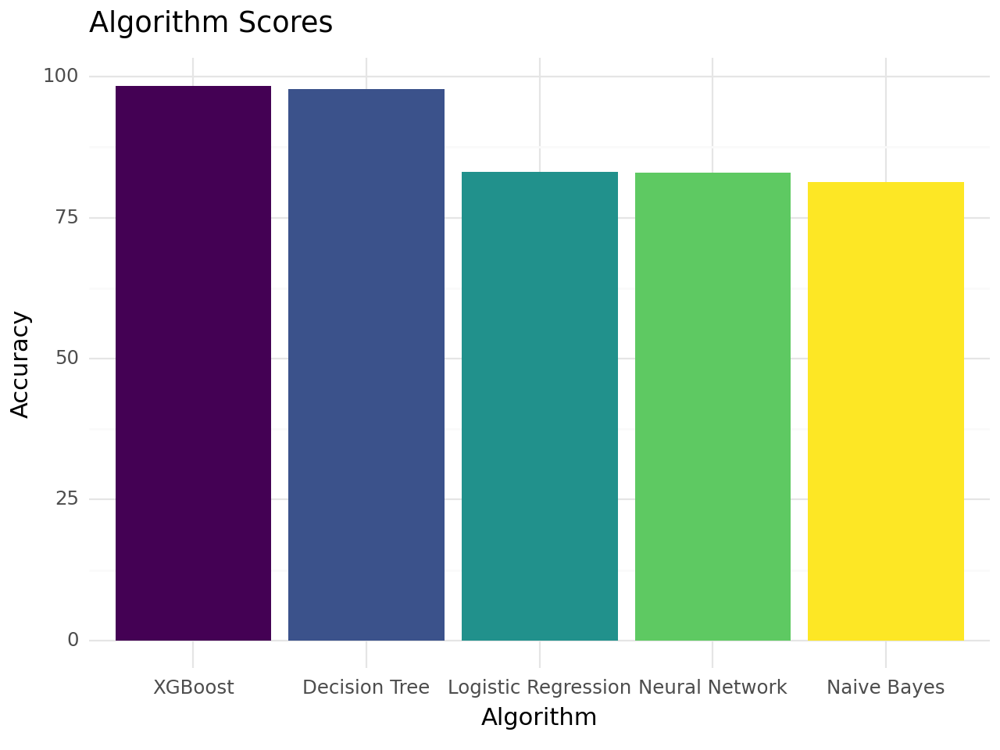
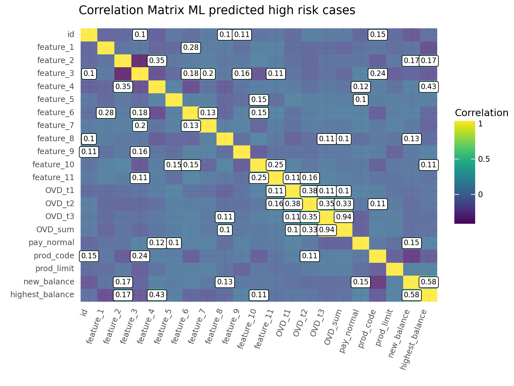
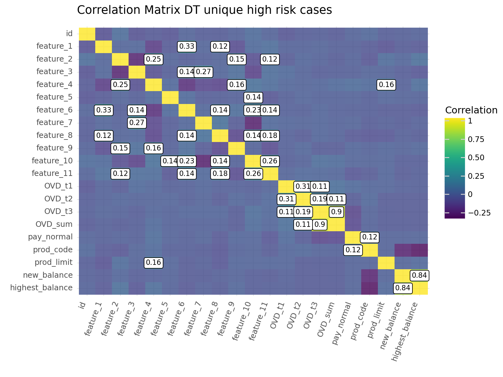

flowchart LR
A[Input data] --> B(EDA)
B --> C{Analysis proper}
C --> D[ML methods]
D --> F{Logistic Regression}
D --> G{Naive Bayes}
D --> H{Decision Tree Classifier}
D --> I{XGBoost}
C --> E[Neural Network]
E --> J{Accuracy assessment}
F --> J{Accuracy assessment}
G --> J{Accuracy assessment}
H --> J{Accuracy assessment}
I --> J{Accuracy assessment}
J --> K{Reporting}
K --> L{Select best two methods}
L --> M{Compare common and unique predictions}
Credit Risk Analysis
Aim
The aim of this analysis is to determine credit risk based on customer behaviour regarding engagement with financial products as well as a variety of demographic attributes that may be informative.
It’s worth noting that the dataset already contains information about credit risk
Data source
In this analysis I’m using a Kaggle credit risk dataset described here
The data is structured in two csv files:
- File 1 - Payment data contains customer’s credit card payment history and has the following fields:
- id: customer id
- OVD_t1: number of times overdue type 1
- OVD_t2: number of times overdue type 2
- OVD_t3: number of times overdue type 3
- OVD_sum: total overdue days
- pay_normal: number of times normal payment
- prod_code: credit product code
- prod_limit: credit limit of product
- update_date: account update date
- new_balance: current balance of product
- highest_balance: highest balance in history
- report_date: date of recent payment
- File 2 - Customer data which contains demographic data and category attributes that have been anonymised as follows:
- id
- label: if it equals 1 it indicates the customer is high risk, if it equals 0 the customer is low risk
- fea_1
- fea_2
- fea_3
- fea_4
- fea_5
- fea_6
- fea_7
- fea_8
- fea_9
- fea_10
- fea_11
Methodology
Input data pre-processing
Note:
After some standard pre-processing (renaming columns, concatenating data frames, and checking for missing data) I decided that data imputation was not appropriate while low credit risk customers might pay their full balance or higher amounts consistently on the same date, high risk customers would exhibit far more variance on both the date of balance closing and last payments made. I personally feel the variable ‘pay_normal’ (i.e. the number of times a customer does not default on payments) captures this information in a discretised manner that does not rely on following a Poisson distribution of events.
In short, I have decided that dropping update_date, and report_date variables was justified. I did however use KNN imputation to fill missing values for feature_2, prod_limit (the credit limit), and highest_balance features, the data for feature 2 appears to be normally distributed, while the prod_limit appears to be close to normally distributed but has a small number of outliers. The highest_balance variable exhibits most values centered close to zero but extremely long tail all the way out to 150,000,000.
No missing values present after pre-processing
merged_df.info()<class 'pandas.core.frame.DataFrame'>
Int64Index: 8250 entries, 0 to 8249
Data columns (total 21 columns):
# Column Non-Null Count Dtype
--- ------ -------------- -----
0 id 8250 non-null int64
1 feature_1 8250 non-null int64
2 feature_2 8250 non-null float64
3 feature_3 8250 non-null int64
4 feature_4 8250 non-null float64
5 feature_5 8250 non-null int64
6 feature_6 8250 non-null int64
7 feature_7 8250 non-null int64
8 feature_8 8250 non-null int64
9 feature_9 8250 non-null int64
10 feature_10 8250 non-null int64
11 feature_11 8250 non-null float64
12 OVD_t1 8250 non-null int64
13 OVD_t2 8250 non-null int64
14 OVD_t3 8250 non-null int64
15 OVD_sum 8250 non-null int64
16 pay_normal 8250 non-null int64
17 prod_code 8250 non-null int64
18 prod_limit 8250 non-null float64
19 new_balance 8250 non-null float64
20 highest_balance 8250 non-null float64
dtypes: float64(6), int64(15)
memory usage: 1.4 MBIt would be good to visualise how the different variables correlate with one another.
Technical note: The plot was generated with plotnine following Tidyverse principles which I find to be superior to Python libraries
/home/jgamboa/anaconda3/lib/python3.10/site-packages/plydata/cat_tools.py:443: FutureWarning: The `inplace` parameter in pandas.Categorical.reorder_categories is deprecated and will be removed in a future version. Reordering categories will always return a new Categorical object.
/home/jgamboa/anaconda3/lib/python3.10/site-packages/plotnine/scales/scale.py:143: PlotnineWarning: scale_fill_cmap could not recognise parameter `cmap`<Figure Size: (800 x 600)>Analyses
First thing here is to store the label used to classify a customer as high or low credit risk and store it as the response variable for all our models while keeping everything else as our predictor variables
ML methods
Four methods will be used, Logistic Regression (LR), Naive Bayes (NB), a Decision Tree Classifier (DT), and XGBoost (XGB). The dataset is split into training and test sets, 70% is kept for the training set and 30% will be used as a test set.
Hyperparameter tuning was performed for both the DT and XGB models
The code is not shown but the prediction accuracy is reported below
Best random state after hyperparameter tuning for the Decision Tree Classifier
81
Best random state after hyperparameter tuning for XGBoost
0Accuracy of the ML model predictions
The accuracy score achieved using Logistic Regression is: 83.07 %
The accuracy score achieved using Naive Bayes is: 81.37 %
The accuracy score achieved using Decision Tree is: 97.78 %
The accuracy score achieved using XGBoost is: 98.38 %Neural Network approach
I have used a NN model with a full connected hidden layer containing 11 units and ReLu as activation function. The output layer is configured for binary classification.
The model was trained for 3,000 epochs before carrying out predictions on the test set.
Epoch 1/3000
1/181 [..............................] - ETA: 58s - loss: 1549700.5000 - accuracy: 0.0625 52/181 [=======>......................] - ETA: 0s - loss: 243425.1562 - accuracy: 0.6316 104/181 [================>.............] - ETA: 0s - loss: 132767.0781 - accuracy: 0.6851151/181 [========================>.....] - ETA: 0s - loss: 95796.4219 - accuracy: 0.7082 181/181 [==============================] - 1s 1ms/step - loss: 81971.0703 - accuracy: 0.7148
Epoch 2/3000
1/181 [..............................] - ETA: 0s - loss: 10509.7637 - accuracy: 0.8750 49/181 [=======>......................] - ETA: 0s - loss: 14197.7549 - accuracy: 0.7188101/181 [===============>..............] - ETA: 0s - loss: 12427.2998 - accuracy: 0.7302152/181 [========================>.....] - ETA: 0s - loss: 10929.9775 - accuracy: 0.7383181/181 [==============================] - 0s 1ms/step - loss: 10572.9365 - accuracy: 0.7326
Epoch 3/3000
1/181 [..............................] - ETA: 0s - loss: 7425.0479 - accuracy: 0.8438 45/181 [======>.......................] - ETA: 0s - loss: 7786.2036 - accuracy: 0.7382 93/181 [==============>...............] - ETA: 0s - loss: 8129.2876 - accuracy: 0.7369141/181 [======================>.......] - ETA: 0s - loss: 7134.3286 - accuracy: 0.7358181/181 [==============================] - 0s 1ms/step - loss: 6896.9067 - accuracy: 0.7358
Epoch 4/3000
1/181 [..............................] - ETA: 0s - loss: 1988.3409 - accuracy: 0.6875 48/181 [======>.......................] - ETA: 0s - loss: 4597.1958 - accuracy: 0.7337 93/181 [==============>...............] - ETA: 0s - loss: 8322.9531 - accuracy: 0.7272142/181 [======================>.......] - ETA: 0s - loss: 6607.3569 - accuracy: 0.7339181/181 [==============================] - 0s 1ms/step - loss: 5825.0166 - accuracy: 0.7380
Epoch 5/3000
1/181 [..............................] - ETA: 0s - loss: 8569.5889 - accuracy: 0.3125 51/181 [=======>......................] - ETA: 0s - loss: 3301.6458 - accuracy: 0.7506100/181 [===============>..............] - ETA: 0s - loss: 5245.7720 - accuracy: 0.7387146/181 [=======================>......] - ETA: 0s - loss: 5857.3892 - accuracy: 0.7301181/181 [==============================] - 0s 1ms/step - loss: 6021.5522 - accuracy: 0.7352
Epoch 6/3000
1/181 [..............................] - ETA: 0s - loss: 1216.6676 - accuracy: 0.7188 47/181 [======>.......................] - ETA: 0s - loss: 3149.3950 - accuracy: 0.7128 94/181 [==============>...............] - ETA: 0s - loss: 3277.0129 - accuracy: 0.7224142/181 [======================>.......] - ETA: 0s - loss: 3830.7993 - accuracy: 0.7291181/181 [==============================] - 0s 1ms/step - loss: 4851.0571 - accuracy: 0.7302
Epoch 7/3000
1/181 [..............................] - ETA: 0s - loss: 1022.1084 - accuracy: 0.9062 52/181 [=======>......................] - ETA: 0s - loss: 7418.3574 - accuracy: 0.7446102/181 [===============>..............] - ETA: 0s - loss: 6082.6626 - accuracy: 0.7463151/181 [========================>.....] - ETA: 0s - loss: 6786.0586 - accuracy: 0.7365181/181 [==============================] - 0s 1ms/step - loss: 6639.4453 - accuracy: 0.7384
Epoch 8/3000
1/181 [..............................] - ETA: 0s - loss: 9987.7295 - accuracy: 0.7188 47/181 [======>.......................] - ETA: 0s - loss: 3623.1021 - accuracy: 0.7460 94/181 [==============>...............] - ETA: 0s - loss: 3555.4907 - accuracy: 0.7447145/181 [=======================>......] - ETA: 0s - loss: 4164.1714 - accuracy: 0.7386181/181 [==============================] - 0s 1ms/step - loss: 3953.7642 - accuracy: 0.7422
Epoch 9/3000
1/181 [..............................] - ETA: 0s - loss: 4005.9429 - accuracy: 0.8438 50/181 [=======>......................] - ETA: 0s - loss: 7473.5483 - accuracy: 0.7387100/181 [===============>..............] - ETA: 0s - loss: 5616.4536 - accuracy: 0.7300147/181 [=======================>......] - ETA: 0s - loss: 5181.8521 - accuracy: 0.7360181/181 [==============================] - 0s 1ms/step - loss: 6338.4507 - accuracy: 0.7304
Epoch 10/3000
1/181 [..............................] - ETA: 0s - loss: 10890.0449 - accuracy: 0.0938 46/181 [======>.......................] - ETA: 0s - loss: 9058.2314 - accuracy: 0.7160 93/181 [==============>...............] - ETA: 0s - loss: 8443.9434 - accuracy: 0.7191140/181 [======================>.......] - ETA: 0s - loss: 8927.4453 - accuracy: 0.7246181/181 [==============================] - 0s 1ms/step - loss: 8374.8252 - accuracy: 0.7243
Epoch 11/3000
1/181 [..............................] - ETA: 0s - loss: 12171.1348 - accuracy: 0.8438 49/181 [=======>......................] - ETA: 0s - loss: 6898.0620 - accuracy: 0.7028 100/181 [===============>..............] - ETA: 0s - loss: 7411.5376 - accuracy: 0.7128149/181 [=======================>......] - ETA: 0s - loss: 6487.3921 - accuracy: 0.7250181/181 [==============================] - 0s 1ms/step - loss: 6998.4688 - accuracy: 0.7254
Epoch 12/3000
1/181 [..............................] - ETA: 0s - loss: 10048.5039 - accuracy: 0.8125 48/181 [======>.......................] - ETA: 0s - loss: 5824.0840 - accuracy: 0.7188 97/181 [===============>..............] - ETA: 0s - loss: 6507.4150 - accuracy: 0.7281146/181 [=======================>......] - ETA: 0s - loss: 6801.8735 - accuracy: 0.7284181/181 [==============================] - 0s 1ms/step - loss: 6111.7251 - accuracy: 0.7288
Epoch 13/3000
1/181 [..............................] - ETA: 0s - loss: 2640.5305 - accuracy: 0.6875 46/181 [======>.......................] - ETA: 0s - loss: 2975.6548 - accuracy: 0.7582 97/181 [===============>..............] - ETA: 0s - loss: 4773.8281 - accuracy: 0.7597149/181 [=======================>......] - ETA: 0s - loss: 5334.6421 - accuracy: 0.7435181/181 [==============================] - 0s 1ms/step - loss: 6177.2871 - accuracy: 0.7396
Epoch 14/3000
1/181 [..............................] - ETA: 0s - loss: 4574.3760 - accuracy: 0.8750 45/181 [======>.......................] - ETA: 0s - loss: 7979.1924 - accuracy: 0.7139 89/181 [=============>................] - ETA: 0s - loss: 6727.8945 - accuracy: 0.7261133/181 [=====================>........] - ETA: 0s - loss: 5762.7944 - accuracy: 0.7265177/181 [============================>.] - ETA: 0s - loss: 5345.8335 - accuracy: 0.7302181/181 [==============================] - 0s 1ms/step - loss: 5337.4146 - accuracy: 0.7278
Epoch 15/3000
1/181 [..............................] - ETA: 0s - loss: 1867.0885 - accuracy: 0.9375 47/181 [======>.......................] - ETA: 0s - loss: 7042.2329 - accuracy: 0.7221 93/181 [==============>...............] - ETA: 0s - loss: 5011.9839 - accuracy: 0.7319139/181 [======================>.......] - ETA: 0s - loss: 5896.1890 - accuracy: 0.7255181/181 [==============================] - 0s 1ms/step - loss: 5665.7871 - accuracy: 0.7288
Epoch 16/3000
1/181 [..............................] - ETA: 0s - loss: 8242.8916 - accuracy: 0.6875 48/181 [======>.......................] - ETA: 0s - loss: 8508.9902 - accuracy: 0.7142 94/181 [==============>...............] - ETA: 0s - loss: 7666.5786 - accuracy: 0.7311142/181 [======================>.......] - ETA: 0s - loss: 7707.4526 - accuracy: 0.7291181/181 [==============================] - 0s 1ms/step - loss: 8290.8867 - accuracy: 0.7313
Epoch 17/3000
1/181 [..............................] - ETA: 0s - loss: 2524.5166 - accuracy: 0.9062 51/181 [=======>......................] - ETA: 0s - loss: 10864.5664 - accuracy: 0.7089100/181 [===============>..............] - ETA: 0s - loss: 7523.3989 - accuracy: 0.7234 149/181 [=======================>......] - ETA: 0s - loss: 6136.0962 - accuracy: 0.7269181/181 [==============================] - 0s 1ms/step - loss: 5478.2280 - accuracy: 0.7299
Epoch 18/3000
1/181 [..............................] - ETA: 0s - loss: 1245.5338 - accuracy: 0.9375 46/181 [======>.......................] - ETA: 0s - loss: 6272.4546 - accuracy: 0.7473 96/181 [==============>...............] - ETA: 0s - loss: 5377.9668 - accuracy: 0.7367148/181 [=======================>......] - ETA: 0s - loss: 6890.9473 - accuracy: 0.7268181/181 [==============================] - 0s 1ms/step - loss: 6433.1084 - accuracy: 0.7333
Epoch 19/3000
1/181 [..............................] - ETA: 0s - loss: 2574.7693 - accuracy: 0.7500 51/181 [=======>......................] - ETA: 0s - loss: 3173.9373 - accuracy: 0.7322 98/181 [===============>..............] - ETA: 0s - loss: 4847.6733 - accuracy: 0.7197145/181 [=======================>......] - ETA: 0s - loss: 4983.0977 - accuracy: 0.7233181/181 [==============================] - 0s 1ms/step - loss: 4602.0244 - accuracy: 0.7264
Epoch 20/3000
1/181 [..............................] - ETA: 0s - loss: 9719.0078 - accuracy: 0.7812 49/181 [=======>......................] - ETA: 0s - loss: 2444.6636 - accuracy: 0.7583 96/181 [==============>...............] - ETA: 0s - loss: 3291.3284 - accuracy: 0.7425141/181 [======================>.......] - ETA: 0s - loss: 6748.2837 - accuracy: 0.7325181/181 [==============================] - 0s 1ms/step - loss: 5886.3101 - accuracy: 0.7236
Epoch 21/3000
1/181 [..............................] - ETA: 0s - loss: 979.9338 - accuracy: 0.9688 48/181 [======>.......................] - ETA: 0s - loss: 4793.8853 - accuracy: 0.7526 97/181 [===============>..............] - ETA: 0s - loss: 5733.2075 - accuracy: 0.7474146/181 [=======================>......] - ETA: 0s - loss: 4897.9634 - accuracy: 0.7438181/181 [==============================] - 0s 1ms/step - loss: 4477.3193 - accuracy: 0.7368
Epoch 22/3000
1/181 [..............................] - ETA: 0s - loss: 1873.0061 - accuracy: 0.9688 50/181 [=======>......................] - ETA: 0s - loss: 5954.4248 - accuracy: 0.7337 96/181 [==============>...............] - ETA: 0s - loss: 6278.0981 - accuracy: 0.7295145/181 [=======================>......] - ETA: 0s - loss: 4920.0518 - accuracy: 0.7308181/181 [==============================] - 0s 1ms/step - loss: 4437.1919 - accuracy: 0.7377
Epoch 23/3000
1/181 [..............................] - ETA: 0s - loss: 6547.5249 - accuracy: 0.8125 50/181 [=======>......................] - ETA: 0s - loss: 7765.5132 - accuracy: 0.7594 95/181 [==============>...............] - ETA: 0s - loss: 6519.6250 - accuracy: 0.7428142/181 [======================>.......] - ETA: 0s - loss: 6541.5981 - accuracy: 0.7346181/181 [==============================] - 0s 1ms/step - loss: 6945.0161 - accuracy: 0.7307
Epoch 24/3000
1/181 [..............................] - ETA: 0s - loss: 20588.6055 - accuracy: 0.7188 50/181 [=======>......................] - ETA: 0s - loss: 10840.7646 - accuracy: 0.7387 95/181 [==============>...............] - ETA: 0s - loss: 9960.3018 - accuracy: 0.7158 143/181 [======================>.......] - ETA: 0s - loss: 8228.2295 - accuracy: 0.7190181/181 [==============================] - 0s 1ms/step - loss: 7118.7915 - accuracy: 0.7252
Epoch 25/3000
1/181 [..............................] - ETA: 0s - loss: 1739.0027 - accuracy: 0.9062 54/181 [=======>......................] - ETA: 0s - loss: 4969.9575 - accuracy: 0.7350106/181 [================>.............] - ETA: 0s - loss: 3697.4404 - accuracy: 0.7311158/181 [=========================>....] - ETA: 0s - loss: 4909.3638 - accuracy: 0.7401181/181 [==============================] - 0s 985us/step - loss: 6326.5986 - accuracy: 0.7335
Epoch 26/3000
1/181 [..............................] - ETA: 0s - loss: 15133.1777 - accuracy: 0.8125 54/181 [=======>......................] - ETA: 0s - loss: 4765.0742 - accuracy: 0.7668 105/181 [================>.............] - ETA: 0s - loss: 4379.5332 - accuracy: 0.7443156/181 [========================>.....] - ETA: 0s - loss: 4087.1558 - accuracy: 0.7342181/181 [==============================] - 0s 999us/step - loss: 4962.8174 - accuracy: 0.7330
Epoch 27/3000
1/181 [..............................] - ETA: 0s - loss: 5375.7412 - accuracy: 0.8438 46/181 [======>.......................] - ETA: 0s - loss: 7054.4043 - accuracy: 0.7154 92/181 [==============>...............] - ETA: 0s - loss: 6576.1772 - accuracy: 0.7238142/181 [======================>.......] - ETA: 0s - loss: 5100.9565 - accuracy: 0.7287181/181 [==============================] - 0s 1ms/step - loss: 5554.9800 - accuracy: 0.7278
Epoch 28/3000
1/181 [..............................] - ETA: 0s - loss: 5196.3857 - accuracy: 0.2500 52/181 [=======>......................] - ETA: 0s - loss: 6460.3667 - accuracy: 0.7440103/181 [================>.............] - ETA: 0s - loss: 7894.3618 - accuracy: 0.7382152/181 [========================>.....] - ETA: 0s - loss: 7612.2754 - accuracy: 0.7407181/181 [==============================] - 0s 1ms/step - loss: 7688.6538 - accuracy: 0.7363
Epoch 29/3000
1/181 [..............................] - ETA: 0s - loss: 7707.0371 - accuracy: 0.2188 47/181 [======>.......................] - ETA: 0s - loss: 7961.4922 - accuracy: 0.7168 91/181 [==============>...............] - ETA: 0s - loss: 7723.9546 - accuracy: 0.7218136/181 [=====================>........] - ETA: 0s - loss: 7208.2393 - accuracy: 0.7302180/181 [============================>.] - ETA: 0s - loss: 6291.9600 - accuracy: 0.7257181/181 [==============================] - 0s 1ms/step - loss: 6299.4756 - accuracy: 0.7247
Epoch 30/3000
1/181 [..............................] - ETA: 0s - loss: 7092.7939 - accuracy: 0.3438 49/181 [=======>......................] - ETA: 0s - loss: 9510.6680 - accuracy: 0.7188 94/181 [==============>...............] - ETA: 0s - loss: 6995.8032 - accuracy: 0.7261142/181 [======================>.......] - ETA: 0s - loss: 5741.2510 - accuracy: 0.7280181/181 [==============================] - 0s 1ms/step - loss: 5221.0708 - accuracy: 0.7339
Epoch 31/3000
1/181 [..............................] - ETA: 0s - loss: 11265.7109 - accuracy: 0.2812 44/181 [======>.......................] - ETA: 0s - loss: 6278.4771 - accuracy: 0.7102 87/181 [=============>................] - ETA: 0s - loss: 4737.8989 - accuracy: 0.7274130/181 [====================>.........] - ETA: 0s - loss: 4481.1938 - accuracy: 0.7361171/181 [===========================>..] - ETA: 0s - loss: 5540.7617 - accuracy: 0.7301181/181 [==============================] - 0s 1ms/step - loss: 5641.8901 - accuracy: 0.7285
Epoch 32/3000
1/181 [..............................] - ETA: 0s - loss: 3757.1921 - accuracy: 0.9062 43/181 [======>.......................] - ETA: 0s - loss: 5553.2183 - accuracy: 0.7260 86/181 [=============>................] - ETA: 0s - loss: 4156.6377 - accuracy: 0.7475129/181 [====================>.........] - ETA: 0s - loss: 3938.0864 - accuracy: 0.7413172/181 [===========================>..] - ETA: 0s - loss: 3787.4961 - accuracy: 0.7378181/181 [==============================] - 0s 1ms/step - loss: 3672.4583 - accuracy: 0.7394
Epoch 33/3000
1/181 [..............................] - ETA: 0s - loss: 2370.0112 - accuracy: 0.8125 44/181 [======>.......................] - ETA: 0s - loss: 3666.8323 - accuracy: 0.7294 87/181 [=============>................] - ETA: 0s - loss: 3862.4656 - accuracy: 0.7371128/181 [====================>.........] - ETA: 0s - loss: 3967.2542 - accuracy: 0.7334170/181 [===========================>..] - ETA: 0s - loss: 5773.9888 - accuracy: 0.7344181/181 [==============================] - 0s 1ms/step - loss: 5628.3843 - accuracy: 0.7344
Epoch 34/3000
1/181 [..............................] - ETA: 0s - loss: 2504.2109 - accuracy: 0.7500 44/181 [======>.......................] - ETA: 0s - loss: 2620.3777 - accuracy: 0.7308 89/181 [=============>................] - ETA: 0s - loss: 3064.6484 - accuracy: 0.7451130/181 [====================>.........] - ETA: 0s - loss: 2876.4219 - accuracy: 0.7401177/181 [============================>.] - ETA: 0s - loss: 3286.2190 - accuracy: 0.7318181/181 [==============================] - 0s 1ms/step - loss: 3304.3516 - accuracy: 0.7318
Epoch 35/3000
1/181 [..............................] - ETA: 0s - loss: 4358.9136 - accuracy: 0.3750 54/181 [=======>......................] - ETA: 0s - loss: 4553.9800 - accuracy: 0.7297103/181 [================>.............] - ETA: 0s - loss: 4017.3123 - accuracy: 0.7406153/181 [========================>.....] - ETA: 0s - loss: 3908.1482 - accuracy: 0.7337181/181 [==============================] - 0s 1ms/step - loss: 3693.1003 - accuracy: 0.7316
Epoch 36/3000
1/181 [..............................] - ETA: 0s - loss: 2630.4441 - accuracy: 0.9062 50/181 [=======>......................] - ETA: 0s - loss: 4506.7461 - accuracy: 0.7369 99/181 [===============>..............] - ETA: 0s - loss: 7073.9829 - accuracy: 0.7390147/181 [=======================>......] - ETA: 0s - loss: 5802.5757 - accuracy: 0.7387181/181 [==============================] - 0s 1ms/step - loss: 5402.7300 - accuracy: 0.7358
Epoch 37/3000
1/181 [..............................] - ETA: 0s - loss: 1486.4834 - accuracy: 0.8438 50/181 [=======>......................] - ETA: 0s - loss: 8121.7705 - accuracy: 0.7369 99/181 [===============>..............] - ETA: 0s - loss: 7423.8726 - accuracy: 0.7279148/181 [=======================>......] - ETA: 0s - loss: 6740.0532 - accuracy: 0.7335181/181 [==============================] - 0s 1ms/step - loss: 6610.9487 - accuracy: 0.7278
Epoch 38/3000
1/181 [..............................] - ETA: 0s - loss: 3181.3821 - accuracy: 0.8438 46/181 [======>.......................] - ETA: 0s - loss: 3435.2683 - accuracy: 0.7609 92/181 [==============>...............] - ETA: 0s - loss: 3382.5322 - accuracy: 0.7439140/181 [======================>.......] - ETA: 0s - loss: 3526.6868 - accuracy: 0.7315181/181 [==============================] - 0s 1ms/step - loss: 3531.3750 - accuracy: 0.7337
Epoch 39/3000
1/181 [..............................] - ETA: 0s - loss: 3501.8767 - accuracy: 0.8125 49/181 [=======>......................] - ETA: 0s - loss: 2749.8127 - accuracy: 0.7296 98/181 [===============>..............] - ETA: 0s - loss: 2611.2703 - accuracy: 0.7459149/181 [=======================>......] - ETA: 0s - loss: 4462.3608 - accuracy: 0.7372181/181 [==============================] - 0s 1ms/step - loss: 4342.0581 - accuracy: 0.7328
Epoch 40/3000
1/181 [..............................] - ETA: 0s - loss: 19085.0703 - accuracy: 0.7188 46/181 [======>.......................] - ETA: 0s - loss: 7965.5107 - accuracy: 0.7385 96/181 [==============>...............] - ETA: 0s - loss: 5878.3384 - accuracy: 0.7451144/181 [======================>.......] - ETA: 0s - loss: 4851.5615 - accuracy: 0.7335181/181 [==============================] - 0s 1ms/step - loss: 4546.4790 - accuracy: 0.7294
Epoch 41/3000
1/181 [..............................] - ETA: 0s - loss: 1297.6425 - accuracy: 0.7188 51/181 [=======>......................] - ETA: 0s - loss: 10549.6289 - accuracy: 0.7181 95/181 [==============>...............] - ETA: 0s - loss: 7354.4116 - accuracy: 0.7280 140/181 [======================>.......] - ETA: 0s - loss: 5837.6016 - accuracy: 0.7306181/181 [==============================] - 0s 1ms/step - loss: 5230.7446 - accuracy: 0.7332
Epoch 42/3000
1/181 [..............................] - ETA: 0s - loss: 388.2367 - accuracy: 0.8750 47/181 [======>.......................] - ETA: 0s - loss: 9970.3340 - accuracy: 0.7114 92/181 [==============>...............] - ETA: 0s - loss: 8327.5605 - accuracy: 0.7293144/181 [======================>.......] - ETA: 0s - loss: 6823.3374 - accuracy: 0.7289181/181 [==============================] - 0s 1ms/step - loss: 6090.1567 - accuracy: 0.7276
Epoch 43/3000
1/181 [..............................] - ETA: 0s - loss: 973.6156 - accuracy: 0.7500 50/181 [=======>......................] - ETA: 0s - loss: 4816.7603 - accuracy: 0.7269101/181 [===============>..............] - ETA: 0s - loss: 5626.9785 - accuracy: 0.7364149/181 [=======================>......] - ETA: 0s - loss: 6355.7139 - accuracy: 0.7311181/181 [==============================] - 0s 1ms/step - loss: 6661.1953 - accuracy: 0.7285
Epoch 44/3000
1/181 [..............................] - ETA: 0s - loss: 10488.6699 - accuracy: 0.2500 49/181 [=======>......................] - ETA: 0s - loss: 8319.6406 - accuracy: 0.7188 100/181 [===============>..............] - ETA: 0s - loss: 8525.7939 - accuracy: 0.7253150/181 [=======================>......] - ETA: 0s - loss: 7206.8657 - accuracy: 0.7281181/181 [==============================] - 0s 1ms/step - loss: 6398.6094 - accuracy: 0.7313
Epoch 45/3000
1/181 [..............................] - ETA: 0s - loss: 1240.0725 - accuracy: 0.5000 49/181 [=======>......................] - ETA: 0s - loss: 5629.3047 - accuracy: 0.7302 96/181 [==============>...............] - ETA: 0s - loss: 6110.5317 - accuracy: 0.7474140/181 [======================>.......] - ETA: 0s - loss: 5250.6880 - accuracy: 0.7453181/181 [==============================] - 0s 1ms/step - loss: 5737.4751 - accuracy: 0.7361
Epoch 46/3000
1/181 [..............................] - ETA: 0s - loss: 3885.1025 - accuracy: 0.8438 44/181 [======>.......................] - ETA: 0s - loss: 6573.1699 - accuracy: 0.7095 90/181 [=============>................] - ETA: 0s - loss: 6966.2285 - accuracy: 0.7135141/181 [======================>.......] - ETA: 0s - loss: 5797.8628 - accuracy: 0.7267181/181 [==============================] - 0s 1ms/step - loss: 4992.0532 - accuracy: 0.7352
Epoch 47/3000
1/181 [..............................] - ETA: 0s - loss: 3274.3308 - accuracy: 0.3438 49/181 [=======>......................] - ETA: 0s - loss: 3471.1357 - accuracy: 0.7334 94/181 [==============>...............] - ETA: 0s - loss: 4291.2988 - accuracy: 0.7360140/181 [======================>.......] - ETA: 0s - loss: 6090.8154 - accuracy: 0.7299181/181 [==============================] - 0s 1ms/step - loss: 5364.9404 - accuracy: 0.7314
Epoch 48/3000
1/181 [..............................] - ETA: 0s - loss: 1422.2383 - accuracy: 0.7812 43/181 [======>.......................] - ETA: 0s - loss: 8238.2822 - accuracy: 0.7202 83/181 [============>.................] - ETA: 0s - loss: 6814.2017 - accuracy: 0.7274120/181 [==================>...........] - ETA: 0s - loss: 5963.6328 - accuracy: 0.7312158/181 [=========================>....] - ETA: 0s - loss: 5196.9814 - accuracy: 0.7330181/181 [==============================] - 0s 1ms/step - loss: 5913.7310 - accuracy: 0.7299
Epoch 49/3000
1/181 [..............................] - ETA: 0s - loss: 4475.2759 - accuracy: 0.9062 49/181 [=======>......................] - ETA: 0s - loss: 6542.4814 - accuracy: 0.7232 97/181 [===============>..............] - ETA: 0s - loss: 4643.0605 - accuracy: 0.7294150/181 [=======================>......] - ETA: 0s - loss: 5365.7866 - accuracy: 0.7258181/181 [==============================] - 0s 1ms/step - loss: 5904.8760 - accuracy: 0.7252
Epoch 50/3000
1/181 [..............................] - ETA: 0s - loss: 9585.5322 - accuracy: 0.6562 53/181 [=======>......................] - ETA: 0s - loss: 4242.4692 - accuracy: 0.7323104/181 [================>.............] - ETA: 0s - loss: 6024.1777 - accuracy: 0.7299154/181 [========================>.....] - ETA: 0s - loss: 5439.3799 - accuracy: 0.7303181/181 [==============================] - 0s 1ms/step - loss: 5028.9536 - accuracy: 0.7299
Epoch 51/3000
1/181 [..............................] - ETA: 0s - loss: 1502.3593 - accuracy: 0.4688 47/181 [======>.......................] - ETA: 0s - loss: 2819.5901 - accuracy: 0.7214 93/181 [==============>...............] - ETA: 0s - loss: 5577.6514 - accuracy: 0.7147141/181 [======================>.......] - ETA: 0s - loss: 6590.5552 - accuracy: 0.7287181/181 [==============================] - 0s 1ms/step - loss: 7016.9189 - accuracy: 0.7300
Epoch 52/3000
1/181 [..............................] - ETA: 0s - loss: 4625.0195 - accuracy: 0.4688 47/181 [======>.......................] - ETA: 0s - loss: 2389.6409 - accuracy: 0.7340 93/181 [==============>...............] - ETA: 0s - loss: 2109.8069 - accuracy: 0.7450139/181 [======================>.......] - ETA: 0s - loss: 2394.0273 - accuracy: 0.7401181/181 [==============================] - 0s 1ms/step - loss: 3185.2778 - accuracy: 0.7423
Epoch 53/3000
1/181 [..............................] - ETA: 0s - loss: 4623.5581 - accuracy: 0.8750 44/181 [======>.......................] - ETA: 0s - loss: 3953.9783 - accuracy: 0.7202 87/181 [=============>................] - ETA: 0s - loss: 5274.8838 - accuracy: 0.7223129/181 [====================>.........] - ETA: 0s - loss: 6121.8140 - accuracy: 0.7250172/181 [===========================>..] - ETA: 0s - loss: 5767.6436 - accuracy: 0.7269181/181 [==============================] - 0s 1ms/step - loss: 5584.0269 - accuracy: 0.7276
Epoch 54/3000
1/181 [..............................] - ETA: 0s - loss: 2713.5500 - accuracy: 0.7188 44/181 [======>.......................] - ETA: 0s - loss: 3385.5884 - accuracy: 0.7543 87/181 [=============>................] - ETA: 0s - loss: 4964.1733 - accuracy: 0.7360131/181 [====================>.........] - ETA: 0s - loss: 4394.4595 - accuracy: 0.7345173/181 [===========================>..] - ETA: 0s - loss: 5395.5010 - accuracy: 0.7307181/181 [==============================] - 0s 1ms/step - loss: 5292.3354 - accuracy: 0.7302
Epoch 55/3000
1/181 [..............................] - ETA: 0s - loss: 494.1858 - accuracy: 0.9375 44/181 [======>.......................] - ETA: 0s - loss: 3088.6631 - accuracy: 0.7322 88/181 [=============>................] - ETA: 0s - loss: 3640.4021 - accuracy: 0.7326132/181 [====================>.........] - ETA: 0s - loss: 3657.1475 - accuracy: 0.7382180/181 [============================>.] - ETA: 0s - loss: 5044.6831 - accuracy: 0.7340181/181 [==============================] - 0s 1ms/step - loss: 5037.7012 - accuracy: 0.7339
Epoch 56/3000
1/181 [..............................] - ETA: 0s - loss: 690.6252 - accuracy: 0.9375 51/181 [=======>......................] - ETA: 0s - loss: 3618.2185 - accuracy: 0.7506100/181 [===============>..............] - ETA: 0s - loss: 3010.5154 - accuracy: 0.7381148/181 [=======================>......] - ETA: 0s - loss: 3506.1895 - accuracy: 0.7371181/181 [==============================] - 0s 1ms/step - loss: 3329.3982 - accuracy: 0.7387
Epoch 57/3000
1/181 [..............................] - ETA: 0s - loss: 8192.2061 - accuracy: 0.2812 48/181 [======>.......................] - ETA: 0s - loss: 8021.0845 - accuracy: 0.7448 92/181 [==============>...............] - ETA: 0s - loss: 5138.9536 - accuracy: 0.7357137/181 [=====================>........] - ETA: 0s - loss: 5799.1519 - accuracy: 0.7400181/181 [==============================] - 0s 1ms/step - loss: 6326.1763 - accuracy: 0.7318
Epoch 58/3000
1/181 [..............................] - ETA: 0s - loss: 8420.0898 - accuracy: 0.8125 45/181 [======>.......................] - ETA: 0s - loss: 9532.0771 - accuracy: 0.7319 84/181 [============>.................] - ETA: 0s - loss: 6958.5410 - accuracy: 0.7251131/181 [====================>.........] - ETA: 0s - loss: 5424.1396 - accuracy: 0.7374178/181 [============================>.] - ETA: 0s - loss: 5881.1880 - accuracy: 0.7279181/181 [==============================] - 0s 1ms/step - loss: 5979.3311 - accuracy: 0.7285
Epoch 59/3000
1/181 [..............................] - ETA: 0s - loss: 5377.9268 - accuracy: 0.8125 42/181 [=====>........................] - ETA: 0s - loss: 10560.4570 - accuracy: 0.7173 86/181 [=============>................] - ETA: 0s - loss: 8474.8770 - accuracy: 0.7206 132/181 [====================>.........] - ETA: 0s - loss: 6362.9082 - accuracy: 0.7325174/181 [===========================>..] - ETA: 0s - loss: 5231.5986 - accuracy: 0.7351181/181 [==============================] - 0s 1ms/step - loss: 5176.9775 - accuracy: 0.7340
Epoch 60/3000
1/181 [..............................] - ETA: 0s - loss: 5422.4590 - accuracy: 0.1250 44/181 [======>.......................] - ETA: 0s - loss: 5842.9380 - accuracy: 0.7195 87/181 [=============>................] - ETA: 0s - loss: 5791.5674 - accuracy: 0.7256132/181 [====================>.........] - ETA: 0s - loss: 5547.0913 - accuracy: 0.7232180/181 [============================>.] - ETA: 0s - loss: 5806.7168 - accuracy: 0.7260181/181 [==============================] - 0s 1ms/step - loss: 5836.3672 - accuracy: 0.7264
Epoch 61/3000
1/181 [..............................] - ETA: 0s - loss: 17466.8555 - accuracy: 0.8438 50/181 [=======>......................] - ETA: 0s - loss: 9573.9902 - accuracy: 0.7513 99/181 [===============>..............] - ETA: 0s - loss: 7826.8926 - accuracy: 0.7361144/181 [======================>.......] - ETA: 0s - loss: 8591.5127 - accuracy: 0.7300181/181 [==============================] - 0s 1ms/step - loss: 8717.7266 - accuracy: 0.7345
Epoch 62/3000
1/181 [..............................] - ETA: 0s - loss: 10502.3545 - accuracy: 0.8125 43/181 [======>.......................] - ETA: 0s - loss: 9030.8691 - accuracy: 0.7195 88/181 [=============>................] - ETA: 0s - loss: 6827.9067 - accuracy: 0.7429134/181 [=====================>........] - ETA: 0s - loss: 5677.5234 - accuracy: 0.7404177/181 [============================>.] - ETA: 0s - loss: 6483.0186 - accuracy: 0.7380181/181 [==============================] - 0s 1ms/step - loss: 6404.1079 - accuracy: 0.7384
Epoch 63/3000
1/181 [..............................] - ETA: 0s - loss: 2127.1013 - accuracy: 0.8125 47/181 [======>.......................] - ETA: 0s - loss: 2508.9138 - accuracy: 0.7340 93/181 [==============>...............] - ETA: 0s - loss: 2935.4062 - accuracy: 0.7305137/181 [=====================>........] - ETA: 0s - loss: 4347.2202 - accuracy: 0.7336181/181 [==============================] - 0s 1ms/step - loss: 4015.1785 - accuracy: 0.7347
Epoch 64/3000
1/181 [..............................] - ETA: 0s - loss: 1533.1390 - accuracy: 0.8750 52/181 [=======>......................] - ETA: 0s - loss: 2886.6299 - accuracy: 0.7230101/181 [===============>..............] - ETA: 0s - loss: 2952.6677 - accuracy: 0.7265148/181 [=======================>......] - ETA: 0s - loss: 3031.1497 - accuracy: 0.7314181/181 [==============================] - 0s 1ms/step - loss: 3164.8025 - accuracy: 0.7313
Epoch 65/3000
1/181 [..............................] - ETA: 0s - loss: 8553.5156 - accuracy: 0.6875 49/181 [=======>......................] - ETA: 0s - loss: 3224.8176 - accuracy: 0.7060 96/181 [==============>...............] - ETA: 0s - loss: 2920.8701 - accuracy: 0.7233140/181 [======================>.......] - ETA: 0s - loss: 3033.1523 - accuracy: 0.7275181/181 [==============================] - 0s 1ms/step - loss: 4125.4575 - accuracy: 0.7363
Epoch 66/3000
1/181 [..............................] - ETA: 0s - loss: 3656.9854 - accuracy: 0.2188 47/181 [======>.......................] - ETA: 0s - loss: 5723.6162 - accuracy: 0.7334 89/181 [=============>................] - ETA: 0s - loss: 6443.8057 - accuracy: 0.7265134/181 [=====================>........] - ETA: 0s - loss: 5895.9858 - accuracy: 0.7215179/181 [============================>.] - ETA: 0s - loss: 5944.4307 - accuracy: 0.7257181/181 [==============================] - 0s 1ms/step - loss: 5981.7246 - accuracy: 0.7266
Epoch 67/3000
1/181 [..............................] - ETA: 0s - loss: 5442.5625 - accuracy: 0.7812 44/181 [======>.......................] - ETA: 0s - loss: 4297.5859 - accuracy: 0.7301 85/181 [=============>................] - ETA: 0s - loss: 5332.4126 - accuracy: 0.7335126/181 [===================>..........] - ETA: 0s - loss: 5794.1733 - accuracy: 0.7294167/181 [==========================>...] - ETA: 0s - loss: 5428.0024 - accuracy: 0.7307181/181 [==============================] - 0s 1ms/step - loss: 5167.2764 - accuracy: 0.7318
Epoch 68/3000
1/181 [..............................] - ETA: 0s - loss: 3588.4587 - accuracy: 0.7812 43/181 [======>.......................] - ETA: 0s - loss: 2106.6118 - accuracy: 0.7376 84/181 [============>.................] - ETA: 0s - loss: 4447.5933 - accuracy: 0.7422125/181 [===================>..........] - ETA: 0s - loss: 4843.6069 - accuracy: 0.7398166/181 [==========================>...] - ETA: 0s - loss: 6132.0386 - accuracy: 0.7297181/181 [==============================] - 0s 1ms/step - loss: 6821.8599 - accuracy: 0.7309
Epoch 69/3000
1/181 [..............................] - ETA: 0s - loss: 13121.3760 - accuracy: 0.8125 44/181 [======>.......................] - ETA: 0s - loss: 4393.7075 - accuracy: 0.7493 89/181 [=============>................] - ETA: 0s - loss: 5940.1172 - accuracy: 0.7331135/181 [=====================>........] - ETA: 0s - loss: 6155.8032 - accuracy: 0.7331178/181 [============================>.] - ETA: 0s - loss: 6620.0625 - accuracy: 0.7312181/181 [==============================] - 0s 1ms/step - loss: 6670.5249 - accuracy: 0.7313
Epoch 70/3000
1/181 [..............................] - ETA: 0s - loss: 12659.5957 - accuracy: 0.2500 46/181 [======>.......................] - ETA: 0s - loss: 4102.2661 - accuracy: 0.7276 92/181 [==============>...............] - ETA: 0s - loss: 5000.7808 - accuracy: 0.7351135/181 [=====================>........] - ETA: 0s - loss: 5996.4414 - accuracy: 0.7419178/181 [============================>.] - ETA: 0s - loss: 5629.9771 - accuracy: 0.7379181/181 [==============================] - 0s 1ms/step - loss: 5605.0923 - accuracy: 0.7385
Epoch 71/3000
1/181 [..............................] - ETA: 0s - loss: 1958.3452 - accuracy: 0.4062 43/181 [======>.......................] - ETA: 0s - loss: 6257.9863 - accuracy: 0.7253 86/181 [=============>................] - ETA: 0s - loss: 5249.3994 - accuracy: 0.7275129/181 [====================>.........] - ETA: 0s - loss: 4510.2651 - accuracy: 0.7338174/181 [===========================>..] - ETA: 0s - loss: 4930.5674 - accuracy: 0.7329181/181 [==============================] - 0s 1ms/step - loss: 4824.0186 - accuracy: 0.7326
Epoch 72/3000
1/181 [..............................] - ETA: 0s - loss: 1342.1417 - accuracy: 0.9375 47/181 [======>.......................] - ETA: 0s - loss: 2505.9075 - accuracy: 0.7613 90/181 [=============>................] - ETA: 0s - loss: 3707.7100 - accuracy: 0.7503135/181 [=====================>........] - ETA: 0s - loss: 4968.2407 - accuracy: 0.7354180/181 [============================>.] - ETA: 0s - loss: 4337.9312 - accuracy: 0.7368181/181 [==============================] - 0s 1ms/step - loss: 4331.7754 - accuracy: 0.7370
Epoch 73/3000
1/181 [..............................] - ETA: 0s - loss: 1275.8032 - accuracy: 0.6875 48/181 [======>.......................] - ETA: 0s - loss: 2624.7239 - accuracy: 0.7383 90/181 [=============>................] - ETA: 0s - loss: 3457.0347 - accuracy: 0.7354134/181 [=====================>........] - ETA: 0s - loss: 5133.0581 - accuracy: 0.7376177/181 [============================>.] - ETA: 0s - loss: 5170.9009 - accuracy: 0.7376181/181 [==============================] - 0s 1ms/step - loss: 5177.3140 - accuracy: 0.7345
Epoch 74/3000
1/181 [..............................] - ETA: 0s - loss: 882.5831 - accuracy: 0.9688 45/181 [======>.......................] - ETA: 0s - loss: 10669.4004 - accuracy: 0.7563 90/181 [=============>................] - ETA: 0s - loss: 7461.4346 - accuracy: 0.7372 136/181 [=====================>........] - ETA: 0s - loss: 6539.7900 - accuracy: 0.7399178/181 [============================>.] - ETA: 0s - loss: 7520.4424 - accuracy: 0.7351181/181 [==============================] - 0s 1ms/step - loss: 7449.8706 - accuracy: 0.7373
Epoch 75/3000
1/181 [..............................] - ETA: 0s - loss: 4703.7900 - accuracy: 0.7188 44/181 [======>.......................] - ETA: 0s - loss: 2308.2341 - accuracy: 0.7479 90/181 [=============>................] - ETA: 0s - loss: 3504.6421 - accuracy: 0.7309135/181 [=====================>........] - ETA: 0s - loss: 3473.7827 - accuracy: 0.7301178/181 [============================>.] - ETA: 0s - loss: 4445.2280 - accuracy: 0.7333181/181 [==============================] - 0s 1ms/step - loss: 4476.4224 - accuracy: 0.7354
Epoch 76/3000
1/181 [..............................] - ETA: 0s - loss: 235.4756 - accuracy: 0.8438 44/181 [======>.......................] - ETA: 0s - loss: 9711.4727 - accuracy: 0.7131 88/181 [=============>................] - ETA: 0s - loss: 7961.0610 - accuracy: 0.7237133/181 [=====================>........] - ETA: 0s - loss: 8869.5938 - accuracy: 0.7216176/181 [============================>.] - ETA: 0s - loss: 7758.7051 - accuracy: 0.7257181/181 [==============================] - 0s 1ms/step - loss: 7617.1943 - accuracy: 0.7266
Epoch 77/3000
1/181 [..............................] - ETA: 0s - loss: 345.8174 - accuracy: 0.8438 47/181 [======>.......................] - ETA: 0s - loss: 1954.2338 - accuracy: 0.7487 91/181 [==============>...............] - ETA: 0s - loss: 2440.8777 - accuracy: 0.7445137/181 [=====================>........] - ETA: 0s - loss: 3271.9255 - accuracy: 0.7448175/181 [============================>.] - ETA: 0s - loss: 3326.5068 - accuracy: 0.7391181/181 [==============================] - 0s 1ms/step - loss: 3301.3306 - accuracy: 0.7382
Epoch 78/3000
1/181 [..............................] - ETA: 0s - loss: 1324.5159 - accuracy: 0.9062 47/181 [======>.......................] - ETA: 0s - loss: 5150.0840 - accuracy: 0.7347 88/181 [=============>................] - ETA: 0s - loss: 5307.5513 - accuracy: 0.7362125/181 [===================>..........] - ETA: 0s - loss: 5580.6104 - accuracy: 0.7390162/181 [=========================>....] - ETA: 0s - loss: 6454.4805 - accuracy: 0.7307181/181 [==============================] - 0s 1ms/step - loss: 6174.9609 - accuracy: 0.7313
Epoch 79/3000
1/181 [..............................] - ETA: 0s - loss: 2929.1426 - accuracy: 0.9062 46/181 [======>.......................] - ETA: 0s - loss: 4679.2651 - accuracy: 0.7330 93/181 [==============>...............] - ETA: 0s - loss: 6830.7690 - accuracy: 0.7382141/181 [======================>.......] - ETA: 0s - loss: 8453.7412 - accuracy: 0.7305181/181 [==============================] - 0s 1ms/step - loss: 7512.4917 - accuracy: 0.7302
Epoch 80/3000
1/181 [..............................] - ETA: 0s - loss: 2682.4878 - accuracy: 0.5000 47/181 [======>.......................] - ETA: 0s - loss: 2622.2295 - accuracy: 0.7394 98/181 [===============>..............] - ETA: 0s - loss: 2296.9109 - accuracy: 0.7372147/181 [=======================>......] - ETA: 0s - loss: 3432.0857 - accuracy: 0.7353181/181 [==============================] - 0s 1ms/step - loss: 3662.6709 - accuracy: 0.7385
Epoch 81/3000
1/181 [..............................] - ETA: 0s - loss: 2234.2385 - accuracy: 0.7500 49/181 [=======>......................] - ETA: 0s - loss: 2217.5845 - accuracy: 0.7188 99/181 [===============>..............] - ETA: 0s - loss: 5009.2798 - accuracy: 0.7219149/181 [=======================>......] - ETA: 0s - loss: 5916.0879 - accuracy: 0.7364181/181 [==============================] - 0s 1ms/step - loss: 5399.6875 - accuracy: 0.7365
Epoch 82/3000
1/181 [..............................] - ETA: 0s - loss: 468.7491 - accuracy: 0.8750 49/181 [=======>......................] - ETA: 0s - loss: 3674.1455 - accuracy: 0.7404 96/181 [==============>...............] - ETA: 0s - loss: 4890.4834 - accuracy: 0.7435141/181 [======================>.......] - ETA: 0s - loss: 6080.9521 - accuracy: 0.7345181/181 [==============================] - 0s 1ms/step - loss: 6026.0703 - accuracy: 0.7371
Epoch 83/3000
1/181 [..............................] - ETA: 0s - loss: 5298.0713 - accuracy: 0.8438 45/181 [======>.......................] - ETA: 0s - loss: 3158.2458 - accuracy: 0.7451 88/181 [=============>................] - ETA: 0s - loss: 4715.8359 - accuracy: 0.7237135/181 [=====================>........] - ETA: 0s - loss: 3601.7905 - accuracy: 0.7324181/181 [==============================] - 0s 1ms/step - loss: 3365.2146 - accuracy: 0.7351
Epoch 84/3000
1/181 [..............................] - ETA: 0s - loss: 2129.3984 - accuracy: 0.9375 48/181 [======>.......................] - ETA: 0s - loss: 9532.4512 - accuracy: 0.7240 92/181 [==============>...............] - ETA: 0s - loss: 10158.4209 - accuracy: 0.7235138/181 [=====================>........] - ETA: 0s - loss: 7671.4966 - accuracy: 0.7362 181/181 [==============================] - 0s 1ms/step - loss: 6690.6665 - accuracy: 0.7299
Epoch 85/3000
1/181 [..............................] - ETA: 0s - loss: 4700.2734 - accuracy: 0.8438 41/181 [=====>........................] - ETA: 0s - loss: 3425.5979 - accuracy: 0.7424 84/181 [============>.................] - ETA: 0s - loss: 5949.1504 - accuracy: 0.7336129/181 [====================>.........] - ETA: 0s - loss: 5438.3452 - accuracy: 0.7267177/181 [============================>.] - ETA: 0s - loss: 4812.3794 - accuracy: 0.7332181/181 [==============================] - 0s 1ms/step - loss: 4816.1562 - accuracy: 0.7287
Epoch 86/3000
1/181 [..............................] - ETA: 0s - loss: 8190.6797 - accuracy: 0.8125 49/181 [=======>......................] - ETA: 0s - loss: 6636.4253 - accuracy: 0.7149 94/181 [==============>...............] - ETA: 0s - loss: 6219.5254 - accuracy: 0.7414136/181 [=====================>........] - ETA: 0s - loss: 5197.3286 - accuracy: 0.7413178/181 [============================>.] - ETA: 0s - loss: 4749.6421 - accuracy: 0.7412181/181 [==============================] - 0s 1ms/step - loss: 4723.4814 - accuracy: 0.7389
Epoch 87/3000
1/181 [..............................] - ETA: 0s - loss: 3407.1523 - accuracy: 0.7188 48/181 [======>.......................] - ETA: 0s - loss: 2261.0483 - accuracy: 0.7546 95/181 [==============>...............] - ETA: 0s - loss: 2453.1050 - accuracy: 0.7359142/181 [======================>.......] - ETA: 0s - loss: 4243.0093 - accuracy: 0.7425181/181 [==============================] - 0s 1ms/step - loss: 5478.3354 - accuracy: 0.7323
Epoch 88/3000
1/181 [..............................] - ETA: 0s - loss: 4360.0078 - accuracy: 0.8125 46/181 [======>.......................] - ETA: 0s - loss: 6973.2866 - accuracy: 0.7473 89/181 [=============>................] - ETA: 0s - loss: 5388.6367 - accuracy: 0.7409131/181 [====================>.........] - ETA: 0s - loss: 4520.7627 - accuracy: 0.7381173/181 [===========================>..] - ETA: 0s - loss: 3903.2253 - accuracy: 0.7401181/181 [==============================] - 0s 1ms/step - loss: 3874.7366 - accuracy: 0.7406
Epoch 89/3000
1/181 [..............................] - ETA: 0s - loss: 7713.4834 - accuracy: 0.8125 43/181 [======>.......................] - ETA: 0s - loss: 7415.6782 - accuracy: 0.7202 88/181 [=============>................] - ETA: 0s - loss: 5368.4077 - accuracy: 0.7301139/181 [======================>.......] - ETA: 0s - loss: 5069.9961 - accuracy: 0.7246181/181 [==============================] - 0s 1ms/step - loss: 5270.1064 - accuracy: 0.7314
Epoch 90/3000
1/181 [..............................] - ETA: 0s - loss: 5409.8428 - accuracy: 0.8750 45/181 [======>.......................] - ETA: 0s - loss: 6392.1387 - accuracy: 0.7306 88/181 [=============>................] - ETA: 0s - loss: 7135.2061 - accuracy: 0.7337132/181 [====================>.........] - ETA: 0s - loss: 5592.3335 - accuracy: 0.7377176/181 [============================>.] - ETA: 0s - loss: 6220.4370 - accuracy: 0.7363181/181 [==============================] - 0s 1ms/step - loss: 6237.6504 - accuracy: 0.7325
Epoch 91/3000
1/181 [..............................] - ETA: 0s - loss: 7210.6035 - accuracy: 0.8750 44/181 [======>.......................] - ETA: 0s - loss: 3885.7500 - accuracy: 0.7443 90/181 [=============>................] - ETA: 0s - loss: 5985.8550 - accuracy: 0.7344137/181 [=====================>........] - ETA: 0s - loss: 5195.6494 - accuracy: 0.7322177/181 [============================>.] - ETA: 0s - loss: 5478.4473 - accuracy: 0.7315181/181 [==============================] - 0s 1ms/step - loss: 5468.7305 - accuracy: 0.7328
Epoch 92/3000
1/181 [..............................] - ETA: 0s - loss: 1858.5107 - accuracy: 0.8438 41/181 [=====>........................] - ETA: 0s - loss: 6602.7690 - accuracy: 0.7218 84/181 [============>.................] - ETA: 0s - loss: 6517.5625 - accuracy: 0.7273115/181 [==================>...........] - ETA: 0s - loss: 6014.1040 - accuracy: 0.7239152/181 [========================>.....] - ETA: 0s - loss: 5555.5254 - accuracy: 0.7272181/181 [==============================] - 0s 1ms/step - loss: 5320.4658 - accuracy: 0.7285
Epoch 93/3000
1/181 [..............................] - ETA: 0s - loss: 490.0693 - accuracy: 0.9062 43/181 [======>.......................] - ETA: 0s - loss: 3189.0305 - accuracy: 0.7384 83/181 [============>.................] - ETA: 0s - loss: 6000.3423 - accuracy: 0.7293131/181 [====================>.........] - ETA: 0s - loss: 5672.1284 - accuracy: 0.7395176/181 [============================>.] - ETA: 0s - loss: 4916.9487 - accuracy: 0.7385181/181 [==============================] - 0s 1ms/step - loss: 4897.7368 - accuracy: 0.7403
Epoch 94/3000
1/181 [..............................] - ETA: 0s - loss: 5642.6836 - accuracy: 0.2812 48/181 [======>.......................] - ETA: 0s - loss: 4077.0422 - accuracy: 0.7129 97/181 [===============>..............] - ETA: 0s - loss: 4668.2812 - accuracy: 0.7294144/181 [======================>.......] - ETA: 0s - loss: 6058.7871 - accuracy: 0.7326181/181 [==============================] - 0s 1ms/step - loss: 7200.8623 - accuracy: 0.7297
Epoch 95/3000
1/181 [..............................] - ETA: 0s - loss: 11910.7412 - accuracy: 0.1250 51/181 [=======>......................] - ETA: 0s - loss: 4500.6475 - accuracy: 0.7451 101/181 [===============>..............] - ETA: 0s - loss: 4291.8340 - accuracy: 0.7293152/181 [========================>.....] - ETA: 0s - loss: 3647.4536 - accuracy: 0.7366181/181 [==============================] - 0s 1ms/step - loss: 3411.2852 - accuracy: 0.7385
Epoch 96/3000
1/181 [..............................] - ETA: 0s - loss: 2275.0625 - accuracy: 0.8438 45/181 [======>.......................] - ETA: 0s - loss: 8221.1338 - accuracy: 0.7326 87/181 [=============>................] - ETA: 0s - loss: 6342.0933 - accuracy: 0.7302129/181 [====================>.........] - ETA: 0s - loss: 5093.0942 - accuracy: 0.7422174/181 [===========================>..] - ETA: 0s - loss: 6202.2725 - accuracy: 0.7371181/181 [==============================] - 0s 1ms/step - loss: 6186.2856 - accuracy: 0.7344
Epoch 97/3000
1/181 [..............................] - ETA: 0s - loss: 4130.7363 - accuracy: 0.9062 48/181 [======>.......................] - ETA: 0s - loss: 5388.3579 - accuracy: 0.7370 95/181 [==============>...............] - ETA: 0s - loss: 4086.1650 - accuracy: 0.7345137/181 [=====================>........] - ETA: 0s - loss: 4473.1191 - accuracy: 0.7333180/181 [============================>.] - ETA: 0s - loss: 5087.0952 - accuracy: 0.7316181/181 [==============================] - 0s 1ms/step - loss: 5087.3730 - accuracy: 0.7316
Epoch 98/3000
1/181 [..............................] - ETA: 0s - loss: 8710.7822 - accuracy: 0.8125 48/181 [======>.......................] - ETA: 0s - loss: 6438.0996 - accuracy: 0.7181 96/181 [==============>...............] - ETA: 0s - loss: 6282.7422 - accuracy: 0.7207142/181 [======================>.......] - ETA: 0s - loss: 5030.9619 - accuracy: 0.7320181/181 [==============================] - 0s 1ms/step - loss: 5163.9302 - accuracy: 0.7332
Epoch 99/3000
1/181 [..............................] - ETA: 0s - loss: 1880.7997 - accuracy: 0.7812 50/181 [=======>......................] - ETA: 0s - loss: 2483.9695 - accuracy: 0.7287 99/181 [===============>..............] - ETA: 0s - loss: 3997.6150 - accuracy: 0.7289148/181 [=======================>......] - ETA: 0s - loss: 5235.1191 - accuracy: 0.7266181/181 [==============================] - 0s 1ms/step - loss: 5504.4883 - accuracy: 0.7250
Epoch 100/3000
1/181 [..............................] - ETA: 0s - loss: 1881.7041 - accuracy: 0.7188 47/181 [======>.......................] - ETA: 0s - loss: 2579.8997 - accuracy: 0.7274 94/181 [==============>...............] - ETA: 0s - loss: 4639.3867 - accuracy: 0.7204141/181 [======================>.......] - ETA: 0s - loss: 5321.0571 - accuracy: 0.7216181/181 [==============================] - 0s 1ms/step - loss: 5574.4321 - accuracy: 0.7307
Epoch 101/3000
1/181 [..............................] - ETA: 0s - loss: 334.9482 - accuracy: 0.8750 45/181 [======>.......................] - ETA: 0s - loss: 3476.7834 - accuracy: 0.7382 87/181 [=============>................] - ETA: 0s - loss: 3531.8657 - accuracy: 0.7302129/181 [====================>.........] - ETA: 0s - loss: 3395.4138 - accuracy: 0.7321167/181 [==========================>...] - ETA: 0s - loss: 3371.3994 - accuracy: 0.7296181/181 [==============================] - 0s 1ms/step - loss: 3535.6853 - accuracy: 0.7333
Epoch 102/3000
1/181 [..............................] - ETA: 0s - loss: 2536.8213 - accuracy: 0.9375 39/181 [=====>........................] - ETA: 0s - loss: 9061.8906 - accuracy: 0.7003 85/181 [=============>................] - ETA: 0s - loss: 6847.3257 - accuracy: 0.7331136/181 [=====================>........] - ETA: 0s - loss: 5620.8696 - accuracy: 0.7369177/181 [============================>.] - ETA: 0s - loss: 4982.8535 - accuracy: 0.7428181/181 [==============================] - 0s 1ms/step - loss: 4914.8247 - accuracy: 0.7430
Epoch 103/3000
1/181 [..............................] - ETA: 0s - loss: 727.2430 - accuracy: 0.7812 42/181 [=====>........................] - ETA: 0s - loss: 4080.7742 - accuracy: 0.7351 84/181 [============>.................] - ETA: 0s - loss: 6766.5767 - accuracy: 0.7299126/181 [===================>..........] - ETA: 0s - loss: 6510.3730 - accuracy: 0.7227169/181 [===========================>..] - ETA: 0s - loss: 6796.7041 - accuracy: 0.7241181/181 [==============================] - 0s 1ms/step - loss: 6662.2339 - accuracy: 0.7254
Epoch 104/3000
1/181 [..............................] - ETA: 0s - loss: 1200.3848 - accuracy: 0.8750 48/181 [======>.......................] - ETA: 0s - loss: 3050.0967 - accuracy: 0.7428 95/181 [==============>...............] - ETA: 0s - loss: 4694.7583 - accuracy: 0.7411142/181 [======================>.......] - ETA: 0s - loss: 6481.3994 - accuracy: 0.7331181/181 [==============================] - 0s 1ms/step - loss: 5926.1367 - accuracy: 0.7396
Epoch 105/3000
1/181 [..............................] - ETA: 0s - loss: 205.3448 - accuracy: 0.8125 47/181 [======>.......................] - ETA: 0s - loss: 5121.2358 - accuracy: 0.7360 92/181 [==============>...............] - ETA: 0s - loss: 6332.0020 - accuracy: 0.7385138/181 [=====================>........] - ETA: 0s - loss: 5856.7837 - accuracy: 0.7289181/181 [==============================] - 0s 1ms/step - loss: 4887.1636 - accuracy: 0.7375
Epoch 106/3000
1/181 [..............................] - ETA: 0s - loss: 2076.4580 - accuracy: 0.8125 46/181 [======>.......................] - ETA: 0s - loss: 6584.1680 - accuracy: 0.7378 90/181 [=============>................] - ETA: 0s - loss: 6818.2251 - accuracy: 0.7413135/181 [=====================>........] - ETA: 0s - loss: 6869.0850 - accuracy: 0.7343181/181 [==============================] - 0s 1ms/step - loss: 6622.4541 - accuracy: 0.7339
Epoch 107/3000
1/181 [..............................] - ETA: 0s - loss: 1142.9559 - accuracy: 0.8438 47/181 [======>.......................] - ETA: 0s - loss: 7812.3252 - accuracy: 0.7068 91/181 [==============>...............] - ETA: 0s - loss: 6239.7329 - accuracy: 0.7280136/181 [=====================>........] - ETA: 0s - loss: 7154.2690 - accuracy: 0.7279181/181 [==============================] - ETA: 0s - loss: 6271.8760 - accuracy: 0.7262181/181 [==============================] - 0s 1ms/step - loss: 6271.8760 - accuracy: 0.7262
Epoch 108/3000
1/181 [..............................] - ETA: 0s - loss: 572.2673 - accuracy: 0.8438 45/181 [======>.......................] - ETA: 0s - loss: 3414.3430 - accuracy: 0.7368 84/181 [============>.................] - ETA: 0s - loss: 3450.9136 - accuracy: 0.7243123/181 [===================>..........] - ETA: 0s - loss: 3241.5769 - accuracy: 0.7327164/181 [==========================>...] - ETA: 0s - loss: 3047.5818 - accuracy: 0.7344181/181 [==============================] - 0s 1ms/step - loss: 3550.7366 - accuracy: 0.7274
Epoch 109/3000
1/181 [..............................] - ETA: 0s - loss: 6897.2993 - accuracy: 0.7500 45/181 [======>.......................] - ETA: 0s - loss: 6759.5161 - accuracy: 0.7243 88/181 [=============>................] - ETA: 0s - loss: 5777.9595 - accuracy: 0.7319135/181 [=====================>........] - ETA: 0s - loss: 4507.4111 - accuracy: 0.7405180/181 [============================>.] - ETA: 0s - loss: 3947.9524 - accuracy: 0.7399181/181 [==============================] - 0s 1ms/step - loss: 3942.2764 - accuracy: 0.7404
Epoch 110/3000
1/181 [..............................] - ETA: 0s - loss: 9358.1846 - accuracy: 0.7812 43/181 [======>.......................] - ETA: 0s - loss: 3597.2856 - accuracy: 0.7260 86/181 [=============>................] - ETA: 0s - loss: 5276.1499 - accuracy: 0.7336130/181 [====================>.........] - ETA: 0s - loss: 6184.7476 - accuracy: 0.7368172/181 [===========================>..] - ETA: 0s - loss: 7017.4570 - accuracy: 0.7380181/181 [==============================] - 0s 1ms/step - loss: 6822.5630 - accuracy: 0.7390
Epoch 111/3000
1/181 [..............................] - ETA: 0s - loss: 974.0746 - accuracy: 0.6875 45/181 [======>.......................] - ETA: 0s - loss: 3666.2251 - accuracy: 0.7194 89/181 [=============>................] - ETA: 0s - loss: 4036.8647 - accuracy: 0.7356138/181 [=====================>........] - ETA: 0s - loss: 3490.5708 - accuracy: 0.7326181/181 [==============================] - 0s 1ms/step - loss: 4271.0107 - accuracy: 0.7297
Epoch 112/3000
1/181 [..............................] - ETA: 0s - loss: 10705.7363 - accuracy: 0.8125 51/181 [=======>......................] - ETA: 0s - loss: 7201.8032 - accuracy: 0.7328 100/181 [===============>..............] - ETA: 0s - loss: 5626.5845 - accuracy: 0.7337149/181 [=======================>......] - ETA: 0s - loss: 5618.2334 - accuracy: 0.7366181/181 [==============================] - 0s 1ms/step - loss: 5040.2832 - accuracy: 0.7363
Epoch 113/3000
1/181 [..............................] - ETA: 0s - loss: 2267.4321 - accuracy: 0.7812 48/181 [======>.......................] - ETA: 0s - loss: 4337.5176 - accuracy: 0.7376 98/181 [===============>..............] - ETA: 0s - loss: 5681.2212 - accuracy: 0.7382145/181 [=======================>......] - ETA: 0s - loss: 5464.1953 - accuracy: 0.7345181/181 [==============================] - 0s 1ms/step - loss: 5172.3760 - accuracy: 0.7347
Epoch 114/3000
1/181 [..............................] - ETA: 0s - loss: 8564.6660 - accuracy: 0.2188 45/181 [======>.......................] - ETA: 0s - loss: 5993.4199 - accuracy: 0.7167 89/181 [=============>................] - ETA: 0s - loss: 7757.4194 - accuracy: 0.7145132/181 [====================>.........] - ETA: 0s - loss: 6797.9951 - accuracy: 0.7247174/181 [===========================>..] - ETA: 0s - loss: 5751.7900 - accuracy: 0.7292181/181 [==============================] - 0s 1ms/step - loss: 5653.5435 - accuracy: 0.7306
Epoch 115/3000
1/181 [..............................] - ETA: 0s - loss: 1519.2908 - accuracy: 0.8750 43/181 [======>.......................] - ETA: 0s - loss: 2639.4939 - accuracy: 0.7209 85/181 [=============>................] - ETA: 0s - loss: 3977.5911 - accuracy: 0.7290129/181 [====================>.........] - ETA: 0s - loss: 5379.5083 - accuracy: 0.7301176/181 [============================>.] - ETA: 0s - loss: 4729.3872 - accuracy: 0.7349181/181 [==============================] - 0s 1ms/step - loss: 4744.8262 - accuracy: 0.7366
Epoch 116/3000
1/181 [..............................] - ETA: 0s - loss: 6841.9766 - accuracy: 0.2500 45/181 [======>.......................] - ETA: 0s - loss: 7096.1675 - accuracy: 0.7292 91/181 [==============>...............] - ETA: 0s - loss: 8274.1660 - accuracy: 0.7225135/181 [=====================>........] - ETA: 0s - loss: 7673.7852 - accuracy: 0.7229174/181 [===========================>..] - ETA: 0s - loss: 7102.3472 - accuracy: 0.7279181/181 [==============================] - 0s 1ms/step - loss: 6962.9868 - accuracy: 0.7254
Epoch 117/3000
1/181 [..............................] - ETA: 0s - loss: 3110.8345 - accuracy: 0.8125 48/181 [======>.......................] - ETA: 0s - loss: 5372.4819 - accuracy: 0.7181 97/181 [===============>..............] - ETA: 0s - loss: 4418.3687 - accuracy: 0.7307150/181 [=======================>......] - ETA: 0s - loss: 4289.2783 - accuracy: 0.7308181/181 [==============================] - 0s 1ms/step - loss: 4200.5103 - accuracy: 0.7294
Epoch 118/3000
1/181 [..............................] - ETA: 0s - loss: 18982.9551 - accuracy: 0.7188 53/181 [=======>......................] - ETA: 0s - loss: 4392.5508 - accuracy: 0.7129 102/181 [===============>..............] - ETA: 0s - loss: 3644.3040 - accuracy: 0.7224151/181 [========================>.....] - ETA: 0s - loss: 3173.2832 - accuracy: 0.7339181/181 [==============================] - 0s 1ms/step - loss: 3534.1960 - accuracy: 0.7345
Epoch 119/3000
1/181 [..............................] - ETA: 0s - loss: 1285.6501 - accuracy: 0.9062 55/181 [========>.....................] - ETA: 0s - loss: 4419.3188 - accuracy: 0.7108107/181 [================>.............] - ETA: 0s - loss: 5223.4531 - accuracy: 0.7278157/181 [=========================>....] - ETA: 0s - loss: 5413.6392 - accuracy: 0.7295181/181 [==============================] - 0s 980us/step - loss: 5470.2661 - accuracy: 0.7273
Epoch 120/3000
1/181 [..............................] - ETA: 0s - loss: 3878.1470 - accuracy: 0.8125 47/181 [======>.......................] - ETA: 0s - loss: 2886.0935 - accuracy: 0.7520 94/181 [==============>...............] - ETA: 0s - loss: 3400.6057 - accuracy: 0.7490138/181 [=====================>........] - ETA: 0s - loss: 4077.1372 - accuracy: 0.7421181/181 [==============================] - 0s 1ms/step - loss: 4418.9238 - accuracy: 0.7337
Epoch 121/3000
1/181 [..............................] - ETA: 0s - loss: 3927.4683 - accuracy: 0.8750 42/181 [=====>........................] - ETA: 0s - loss: 6521.3789 - accuracy: 0.7359 86/181 [=============>................] - ETA: 0s - loss: 6227.5967 - accuracy: 0.7311134/181 [=====================>........] - ETA: 0s - loss: 4874.9199 - accuracy: 0.7414181/181 [==============================] - ETA: 0s - loss: 4903.6885 - accuracy: 0.7375181/181 [==============================] - 0s 1ms/step - loss: 4903.6885 - accuracy: 0.7375
Epoch 122/3000
1/181 [..............................] - ETA: 0s - loss: 592.6453 - accuracy: 0.9375 51/181 [=======>......................] - ETA: 0s - loss: 4385.0757 - accuracy: 0.7445 96/181 [==============>...............] - ETA: 0s - loss: 6172.1328 - accuracy: 0.7376142/181 [======================>.......] - ETA: 0s - loss: 7474.3354 - accuracy: 0.7291181/181 [==============================] - 0s 1ms/step - loss: 7463.4590 - accuracy: 0.7250
Epoch 123/3000
1/181 [..............................] - ETA: 0s - loss: 3686.4368 - accuracy: 0.8125 48/181 [======>.......................] - ETA: 0s - loss: 5047.8477 - accuracy: 0.7370 95/181 [==============>...............] - ETA: 0s - loss: 3946.3069 - accuracy: 0.7365142/181 [======================>.......] - ETA: 0s - loss: 3910.7737 - accuracy: 0.7350181/181 [==============================] - 0s 1ms/step - loss: 3643.8235 - accuracy: 0.7347
Epoch 124/3000
1/181 [..............................] - ETA: 0s - loss: 2869.9331 - accuracy: 0.9062 47/181 [======>.......................] - ETA: 0s - loss: 1753.6835 - accuracy: 0.7480 97/181 [===============>..............] - ETA: 0s - loss: 1857.8265 - accuracy: 0.7378145/181 [=======================>......] - ETA: 0s - loss: 2729.3474 - accuracy: 0.7401181/181 [==============================] - 0s 1ms/step - loss: 4003.8413 - accuracy: 0.7408
Epoch 125/3000
1/181 [..............................] - ETA: 0s - loss: 372.1339 - accuracy: 0.7188 43/181 [======>.......................] - ETA: 0s - loss: 7520.1284 - accuracy: 0.7493 87/181 [=============>................] - ETA: 0s - loss: 7333.7085 - accuracy: 0.7403126/181 [===================>..........] - ETA: 0s - loss: 7074.9404 - accuracy: 0.7381165/181 [==========================>...] - ETA: 0s - loss: 6902.1729 - accuracy: 0.7320181/181 [==============================] - 0s 1ms/step - loss: 6977.0811 - accuracy: 0.7335
Epoch 126/3000
1/181 [..............................] - ETA: 0s - loss: 2644.6841 - accuracy: 0.8750 47/181 [======>.......................] - ETA: 0s - loss: 2212.2061 - accuracy: 0.7374 93/181 [==============>...............] - ETA: 0s - loss: 2524.2686 - accuracy: 0.7345137/181 [=====================>........] - ETA: 0s - loss: 2933.5613 - accuracy: 0.7343177/181 [============================>.] - ETA: 0s - loss: 3242.2952 - accuracy: 0.7361181/181 [==============================] - 0s 1ms/step - loss: 3295.9009 - accuracy: 0.7382
Epoch 127/3000
1/181 [..............................] - ETA: 0s - loss: 263.8870 - accuracy: 0.8125 49/181 [=======>......................] - ETA: 0s - loss: 3390.1069 - accuracy: 0.7347 88/181 [=============>................] - ETA: 0s - loss: 4455.2085 - accuracy: 0.7457127/181 [====================>.........] - ETA: 0s - loss: 4603.8838 - accuracy: 0.7384163/181 [==========================>...] - ETA: 0s - loss: 5599.8213 - accuracy: 0.7304181/181 [==============================] - 0s 1ms/step - loss: 5894.1924 - accuracy: 0.7288
Epoch 128/3000
1/181 [..............................] - ETA: 0s - loss: 666.1889 - accuracy: 0.6562 47/181 [======>.......................] - ETA: 0s - loss: 2692.5403 - accuracy: 0.7194 93/181 [==============>...............] - ETA: 0s - loss: 4530.7148 - accuracy: 0.7167141/181 [======================>.......] - ETA: 0s - loss: 5159.3662 - accuracy: 0.7254181/181 [==============================] - 0s 1ms/step - loss: 4650.5996 - accuracy: 0.7288
Epoch 129/3000
1/181 [..............................] - ETA: 0s - loss: 1994.6047 - accuracy: 0.8125 45/181 [======>.......................] - ETA: 0s - loss: 2226.3308 - accuracy: 0.7424 82/181 [============>.................] - ETA: 0s - loss: 3453.7622 - accuracy: 0.7363118/181 [==================>...........] - ETA: 0s - loss: 3693.9717 - accuracy: 0.7328159/181 [=========================>....] - ETA: 0s - loss: 4868.1064 - accuracy: 0.7339181/181 [==============================] - 0s 1ms/step - loss: 4533.3516 - accuracy: 0.7370
Epoch 130/3000
1/181 [..............................] - ETA: 0s - loss: 6567.0137 - accuracy: 0.6562 49/181 [=======>......................] - ETA: 0s - loss: 2272.4202 - accuracy: 0.7519 97/181 [===============>..............] - ETA: 0s - loss: 2780.1011 - accuracy: 0.7429144/181 [======================>.......] - ETA: 0s - loss: 3740.1138 - accuracy: 0.7318181/181 [==============================] - 0s 1ms/step - loss: 4258.2881 - accuracy: 0.7340
Epoch 131/3000
1/181 [..............................] - ETA: 0s - loss: 527.8683 - accuracy: 0.6875 48/181 [======>.......................] - ETA: 0s - loss: 9132.9570 - accuracy: 0.7214 97/181 [===============>..............] - ETA: 0s - loss: 7594.5469 - accuracy: 0.7381147/181 [=======================>......] - ETA: 0s - loss: 6387.2305 - accuracy: 0.7332181/181 [==============================] - 0s 1ms/step - loss: 6243.5635 - accuracy: 0.7313
Epoch 132/3000
1/181 [..............................] - ETA: 0s - loss: 3485.6265 - accuracy: 0.4062 47/181 [======>.......................] - ETA: 0s - loss: 8528.4033 - accuracy: 0.7154 99/181 [===============>..............] - ETA: 0s - loss: 6931.0132 - accuracy: 0.7206150/181 [=======================>......] - ETA: 0s - loss: 5857.5420 - accuracy: 0.7296181/181 [==============================] - 0s 1ms/step - loss: 6134.1411 - accuracy: 0.7288
Epoch 133/3000
1/181 [..............................] - ETA: 0s - loss: 4549.9038 - accuracy: 0.9062 47/181 [======>.......................] - ETA: 0s - loss: 7485.7720 - accuracy: 0.7227 89/181 [=============>................] - ETA: 0s - loss: 5050.9355 - accuracy: 0.7159133/181 [=====================>........] - ETA: 0s - loss: 4200.9072 - accuracy: 0.7218177/181 [============================>.] - ETA: 0s - loss: 3851.7510 - accuracy: 0.7318181/181 [==============================] - 0s 1ms/step - loss: 3933.2803 - accuracy: 0.7264
Epoch 134/3000
1/181 [..............................] - ETA: 0s - loss: 12392.3359 - accuracy: 0.8750 43/181 [======>.......................] - ETA: 0s - loss: 9793.5977 - accuracy: 0.7231 87/181 [=============>................] - ETA: 0s - loss: 6296.9966 - accuracy: 0.7302139/181 [======================>.......] - ETA: 0s - loss: 6127.9175 - accuracy: 0.7329181/181 [==============================] - 0s 1ms/step - loss: 6574.2275 - accuracy: 0.7389
Epoch 135/3000
1/181 [..............................] - ETA: 0s - loss: 1428.0127 - accuracy: 0.6875 47/181 [======>.......................] - ETA: 0s - loss: 6087.8032 - accuracy: 0.7327 95/181 [==============>...............] - ETA: 0s - loss: 4402.3604 - accuracy: 0.7352144/181 [======================>.......] - ETA: 0s - loss: 5114.5371 - accuracy: 0.7283181/181 [==============================] - 0s 1ms/step - loss: 5299.1616 - accuracy: 0.7309
Epoch 136/3000
1/181 [..............................] - ETA: 0s - loss: 4511.5234 - accuracy: 0.8125 52/181 [=======>......................] - ETA: 0s - loss: 4738.5469 - accuracy: 0.7296 99/181 [===============>..............] - ETA: 0s - loss: 6237.9380 - accuracy: 0.7244144/181 [======================>.......] - ETA: 0s - loss: 5287.5645 - accuracy: 0.7274181/181 [==============================] - 0s 1ms/step - loss: 4801.6714 - accuracy: 0.7247
Epoch 137/3000
1/181 [..............................] - ETA: 0s - loss: 8919.4814 - accuracy: 0.7188 47/181 [======>.......................] - ETA: 0s - loss: 2825.3298 - accuracy: 0.7440 99/181 [===============>..............] - ETA: 0s - loss: 2601.7922 - accuracy: 0.7421147/181 [=======================>......] - ETA: 0s - loss: 2505.2378 - accuracy: 0.7385181/181 [==============================] - 0s 1ms/step - loss: 2558.0713 - accuracy: 0.7371
Epoch 138/3000
1/181 [..............................] - ETA: 0s - loss: 3758.8877 - accuracy: 0.8125 48/181 [======>.......................] - ETA: 0s - loss: 4016.9248 - accuracy: 0.7233 95/181 [==============>...............] - ETA: 0s - loss: 3358.1206 - accuracy: 0.7342141/181 [======================>.......] - ETA: 0s - loss: 6610.3828 - accuracy: 0.7292181/181 [==============================] - 0s 1ms/step - loss: 7268.2583 - accuracy: 0.7326
Epoch 139/3000
1/181 [..............................] - ETA: 0s - loss: 26785.2539 - accuracy: 0.7188 50/181 [=======>......................] - ETA: 0s - loss: 5533.2607 - accuracy: 0.7394 99/181 [===============>..............] - ETA: 0s - loss: 4442.0112 - accuracy: 0.7393147/181 [=======================>......] - ETA: 0s - loss: 5085.4473 - accuracy: 0.7298181/181 [==============================] - 0s 1ms/step - loss: 5617.1909 - accuracy: 0.7294
Epoch 140/3000
1/181 [..............................] - ETA: 0s - loss: 16081.6504 - accuracy: 0.7500 51/181 [=======>......................] - ETA: 0s - loss: 7904.5483 - accuracy: 0.7243 96/181 [==============>...............] - ETA: 0s - loss: 5580.2251 - accuracy: 0.7256148/181 [=======================>......] - ETA: 0s - loss: 5162.9648 - accuracy: 0.7274181/181 [==============================] - 0s 1ms/step - loss: 4773.7720 - accuracy: 0.7323
Epoch 141/3000
1/181 [..............................] - ETA: 0s - loss: 2296.9160 - accuracy: 0.2812 47/181 [======>.......................] - ETA: 0s - loss: 2945.6157 - accuracy: 0.7088 92/181 [==============>...............] - ETA: 0s - loss: 3702.7971 - accuracy: 0.7174139/181 [======================>.......] - ETA: 0s - loss: 3661.4785 - accuracy: 0.7264181/181 [==============================] - 0s 1ms/step - loss: 3434.2085 - accuracy: 0.7264
Epoch 142/3000
1/181 [..............................] - ETA: 0s - loss: 4918.3774 - accuracy: 0.8438 48/181 [======>.......................] - ETA: 0s - loss: 5091.2681 - accuracy: 0.7480 94/181 [==============>...............] - ETA: 0s - loss: 4158.0391 - accuracy: 0.7364143/181 [======================>.......] - ETA: 0s - loss: 4711.7139 - accuracy: 0.7373181/181 [==============================] - 0s 1ms/step - loss: 4755.5039 - accuracy: 0.7326
Epoch 143/3000
1/181 [..............................] - ETA: 0s - loss: 4407.0186 - accuracy: 0.8438 47/181 [======>.......................] - ETA: 0s - loss: 3354.1587 - accuracy: 0.7307 94/181 [==============>...............] - ETA: 0s - loss: 4755.7046 - accuracy: 0.7277141/181 [======================>.......] - ETA: 0s - loss: 5086.6841 - accuracy: 0.7354181/181 [==============================] - 0s 1ms/step - loss: 4657.6431 - accuracy: 0.7326
Epoch 144/3000
1/181 [..............................] - ETA: 0s - loss: 687.4912 - accuracy: 0.8125 45/181 [======>.......................] - ETA: 0s - loss: 3462.7031 - accuracy: 0.7194 91/181 [==============>...............] - ETA: 0s - loss: 4198.2886 - accuracy: 0.7212140/181 [======================>.......] - ETA: 0s - loss: 4896.8169 - accuracy: 0.7176181/181 [==============================] - 0s 1ms/step - loss: 5413.5552 - accuracy: 0.7273
Epoch 145/3000
1/181 [..............................] - ETA: 0s - loss: 11640.6680 - accuracy: 0.2812 48/181 [======>.......................] - ETA: 0s - loss: 5602.5591 - accuracy: 0.7311 95/181 [==============>...............] - ETA: 0s - loss: 4020.1641 - accuracy: 0.7378143/181 [======================>.......] - ETA: 0s - loss: 3757.4492 - accuracy: 0.7301181/181 [==============================] - 0s 1ms/step - loss: 4228.2778 - accuracy: 0.7351
Epoch 146/3000
1/181 [..............................] - ETA: 0s - loss: 12720.1641 - accuracy: 0.1875 48/181 [======>.......................] - ETA: 0s - loss: 4596.1440 - accuracy: 0.7298 93/181 [==============>...............] - ETA: 0s - loss: 4474.7729 - accuracy: 0.7376136/181 [=====================>........] - ETA: 0s - loss: 4458.3574 - accuracy: 0.7369178/181 [============================>.] - ETA: 0s - loss: 4476.8623 - accuracy: 0.7340181/181 [==============================] - 0s 1ms/step - loss: 4440.3379 - accuracy: 0.7356
Epoch 147/3000
1/181 [..............................] - ETA: 0s - loss: 1073.8749 - accuracy: 0.8125 45/181 [======>.......................] - ETA: 0s - loss: 2297.9893 - accuracy: 0.7437 86/181 [=============>................] - ETA: 0s - loss: 2414.5608 - accuracy: 0.7409134/181 [=====================>........] - ETA: 0s - loss: 3687.0098 - accuracy: 0.7334179/181 [============================>.] - ETA: 0s - loss: 4343.5498 - accuracy: 0.7360181/181 [==============================] - 0s 1ms/step - loss: 4334.5322 - accuracy: 0.7349
Epoch 148/3000
1/181 [..............................] - ETA: 0s - loss: 206.8367 - accuracy: 0.9062 35/181 [====>.........................] - ETA: 0s - loss: 3371.9397 - accuracy: 0.7018 78/181 [===========>..................] - ETA: 0s - loss: 3634.0349 - accuracy: 0.7404126/181 [===================>..........] - ETA: 0s - loss: 3179.7041 - accuracy: 0.7386174/181 [===========================>..] - ETA: 0s - loss: 3340.9490 - accuracy: 0.7394181/181 [==============================] - 0s 1ms/step - loss: 3301.3738 - accuracy: 0.7387
Epoch 149/3000
1/181 [..............................] - ETA: 0s - loss: 3619.5220 - accuracy: 0.7812 48/181 [======>.......................] - ETA: 0s - loss: 3752.5295 - accuracy: 0.7331 95/181 [==============>...............] - ETA: 0s - loss: 6351.8672 - accuracy: 0.7273143/181 [======================>.......] - ETA: 0s - loss: 6409.6260 - accuracy: 0.7233181/181 [==============================] - 0s 1ms/step - loss: 5555.4399 - accuracy: 0.7259
Epoch 150/3000
1/181 [..............................] - ETA: 0s - loss: 1894.5854 - accuracy: 0.9062 48/181 [======>.......................] - ETA: 0s - loss: 5604.7642 - accuracy: 0.7591 95/181 [==============>...............] - ETA: 0s - loss: 5864.1860 - accuracy: 0.7336142/181 [======================>.......] - ETA: 0s - loss: 4975.5923 - accuracy: 0.7355181/181 [==============================] - 0s 1ms/step - loss: 4543.8916 - accuracy: 0.7294
Epoch 151/3000
1/181 [..............................] - ETA: 0s - loss: 2754.8401 - accuracy: 0.8750 43/181 [======>.......................] - ETA: 0s - loss: 2629.5723 - accuracy: 0.7536 87/181 [=============>................] - ETA: 0s - loss: 2425.5627 - accuracy: 0.7583130/181 [====================>.........] - ETA: 0s - loss: 2557.4495 - accuracy: 0.7464175/181 [============================>.] - ETA: 0s - loss: 2621.9558 - accuracy: 0.7418181/181 [==============================] - 0s 1ms/step - loss: 2600.7285 - accuracy: 0.7413
Epoch 152/3000
1/181 [..............................] - ETA: 0s - loss: 9294.8291 - accuracy: 0.1250 45/181 [======>.......................] - ETA: 0s - loss: 3186.4456 - accuracy: 0.7201 89/181 [=============>................] - ETA: 0s - loss: 3861.3547 - accuracy: 0.7272135/181 [=====================>........] - ETA: 0s - loss: 3728.5662 - accuracy: 0.7303181/181 [==============================] - 0s 1ms/step - loss: 4983.8003 - accuracy: 0.7235
Epoch 153/3000
1/181 [..............................] - ETA: 0s - loss: 6576.7964 - accuracy: 0.7188 47/181 [======>.......................] - ETA: 0s - loss: 3101.3667 - accuracy: 0.7400 90/181 [=============>................] - ETA: 0s - loss: 2674.3467 - accuracy: 0.7441132/181 [====================>.........] - ETA: 0s - loss: 2689.0923 - accuracy: 0.7420173/181 [===========================>..] - ETA: 0s - loss: 2884.6616 - accuracy: 0.7390181/181 [==============================] - 0s 1ms/step - loss: 2896.1016 - accuracy: 0.7378
Epoch 154/3000
1/181 [..............................] - ETA: 0s - loss: 2795.7319 - accuracy: 0.9062 42/181 [=====>........................] - ETA: 0s - loss: 2688.6790 - accuracy: 0.7463 82/181 [============>.................] - ETA: 0s - loss: 3434.7393 - accuracy: 0.7317130/181 [====================>.........] - ETA: 0s - loss: 5170.8198 - accuracy: 0.7284177/181 [============================>.] - ETA: 0s - loss: 5555.4946 - accuracy: 0.7265181/181 [==============================] - 0s 1ms/step - loss: 5477.3364 - accuracy: 0.7278
Epoch 155/3000
1/181 [..............................] - ETA: 0s - loss: 2216.2153 - accuracy: 0.8438 45/181 [======>.......................] - ETA: 0s - loss: 6029.9551 - accuracy: 0.7167 89/181 [=============>................] - ETA: 0s - loss: 6343.8545 - accuracy: 0.7363133/181 [=====================>........] - ETA: 0s - loss: 5046.5566 - accuracy: 0.7383178/181 [============================>.] - ETA: 0s - loss: 4617.7749 - accuracy: 0.7335181/181 [==============================] - 0s 1ms/step - loss: 4587.0762 - accuracy: 0.7325
Epoch 156/3000
1/181 [..............................] - ETA: 0s - loss: 4768.5713 - accuracy: 0.7500 47/181 [======>.......................] - ETA: 0s - loss: 4785.2798 - accuracy: 0.7181 93/181 [==============>...............] - ETA: 0s - loss: 4438.9771 - accuracy: 0.7265137/181 [=====================>........] - ETA: 0s - loss: 5889.1875 - accuracy: 0.7263181/181 [==============================] - 0s 1ms/step - loss: 5772.6104 - accuracy: 0.7299
Epoch 157/3000
1/181 [..............................] - ETA: 0s - loss: 9253.1191 - accuracy: 0.8438 46/181 [======>.......................] - ETA: 0s - loss: 4063.6877 - accuracy: 0.7385 86/181 [=============>................] - ETA: 0s - loss: 5817.3745 - accuracy: 0.7278128/181 [====================>.........] - ETA: 0s - loss: 6621.4858 - accuracy: 0.7197171/181 [===========================>..] - ETA: 0s - loss: 6134.4761 - accuracy: 0.7250181/181 [==============================] - 0s 1ms/step - loss: 6151.5151 - accuracy: 0.7274
Epoch 158/3000
1/181 [..............................] - ETA: 0s - loss: 618.2650 - accuracy: 0.7812 41/181 [=====>........................] - ETA: 0s - loss: 3886.9539 - accuracy: 0.7515 89/181 [=============>................] - ETA: 0s - loss: 3382.6184 - accuracy: 0.7426137/181 [=====================>........] - ETA: 0s - loss: 4965.4087 - accuracy: 0.7381181/181 [==============================] - 0s 1ms/step - loss: 4619.9351 - accuracy: 0.7349
Epoch 159/3000
1/181 [..............................] - ETA: 0s - loss: 997.1824 - accuracy: 0.7812 49/181 [=======>......................] - ETA: 0s - loss: 3083.4407 - accuracy: 0.7481 98/181 [===============>..............] - ETA: 0s - loss: 3637.7070 - accuracy: 0.7379147/181 [=======================>......] - ETA: 0s - loss: 3260.5452 - accuracy: 0.7311181/181 [==============================] - 0s 1ms/step - loss: 4025.1907 - accuracy: 0.7366
Epoch 160/3000
1/181 [..............................] - ETA: 0s - loss: 2543.0171 - accuracy: 0.2500 49/181 [=======>......................] - ETA: 0s - loss: 2442.7939 - accuracy: 0.7194 95/181 [==============>...............] - ETA: 0s - loss: 2052.1455 - accuracy: 0.7263139/181 [======================>.......] - ETA: 0s - loss: 2121.9180 - accuracy: 0.7273181/181 [==============================] - 0s 1ms/step - loss: 3389.9536 - accuracy: 0.7311
Epoch 161/3000
1/181 [..............................] - ETA: 0s - loss: 2859.2461 - accuracy: 0.8750 47/181 [======>.......................] - ETA: 0s - loss: 4445.0024 - accuracy: 0.7360 93/181 [==============>...............] - ETA: 0s - loss: 4639.6631 - accuracy: 0.7372135/181 [=====================>........] - ETA: 0s - loss: 5784.8633 - accuracy: 0.7294177/181 [============================>.] - ETA: 0s - loss: 5405.7490 - accuracy: 0.7320181/181 [==============================] - 0s 1ms/step - loss: 5345.5518 - accuracy: 0.7345
Epoch 162/3000
1/181 [..............................] - ETA: 0s - loss: 1654.6968 - accuracy: 0.8125 45/181 [======>.......................] - ETA: 0s - loss: 2274.3794 - accuracy: 0.7243 92/181 [==============>...............] - ETA: 0s - loss: 2100.1108 - accuracy: 0.7327133/181 [=====================>........] - ETA: 0s - loss: 2270.8296 - accuracy: 0.7300174/181 [===========================>..] - ETA: 0s - loss: 2243.0481 - accuracy: 0.7333181/181 [==============================] - 0s 1ms/step - loss: 2298.0002 - accuracy: 0.7375
Epoch 163/3000
1/181 [..............................] - ETA: 0s - loss: 11487.2012 - accuracy: 0.1562 50/181 [=======>......................] - ETA: 0s - loss: 4670.0034 - accuracy: 0.7231 100/181 [===============>..............] - ETA: 0s - loss: 5068.7261 - accuracy: 0.7250150/181 [=======================>......] - ETA: 0s - loss: 4702.7388 - accuracy: 0.7256181/181 [==============================] - 0s 1ms/step - loss: 4918.9312 - accuracy: 0.7271
Epoch 164/3000
1/181 [..............................] - ETA: 0s - loss: 4832.3457 - accuracy: 0.8750 48/181 [======>.......................] - ETA: 0s - loss: 6551.1060 - accuracy: 0.7194 93/181 [==============>...............] - ETA: 0s - loss: 4456.2778 - accuracy: 0.7379139/181 [======================>.......] - ETA: 0s - loss: 4002.2629 - accuracy: 0.7318181/181 [==============================] - 0s 1ms/step - loss: 4234.7632 - accuracy: 0.7316
Epoch 165/3000
1/181 [..............................] - ETA: 0s - loss: 710.6940 - accuracy: 0.7812 43/181 [======>.......................] - ETA: 0s - loss: 2846.6211 - accuracy: 0.7151 85/181 [=============>................] - ETA: 0s - loss: 3050.9976 - accuracy: 0.7210126/181 [===================>..........] - ETA: 0s - loss: 2874.2463 - accuracy: 0.7294167/181 [==========================>...] - ETA: 0s - loss: 2702.8481 - accuracy: 0.7341181/181 [==============================] - 0s 1ms/step - loss: 2694.3433 - accuracy: 0.7363
Epoch 166/3000
1/181 [..............................] - ETA: 0s - loss: 1358.7694 - accuracy: 0.8750 44/181 [======>.......................] - ETA: 0s - loss: 4141.9380 - accuracy: 0.7457 90/181 [=============>................] - ETA: 0s - loss: 3515.6785 - accuracy: 0.7271135/181 [=====================>........] - ETA: 0s - loss: 3637.0322 - accuracy: 0.7273181/181 [==============================] - ETA: 0s - loss: 3486.5322 - accuracy: 0.7274181/181 [==============================] - 0s 1ms/step - loss: 3486.5322 - accuracy: 0.7274
Epoch 167/3000
1/181 [..............................] - ETA: 0s - loss: 7815.0830 - accuracy: 0.8750 51/181 [=======>......................] - ETA: 0s - loss: 4731.8755 - accuracy: 0.7445100/181 [===============>..............] - ETA: 0s - loss: 3455.0957 - accuracy: 0.7381146/181 [=======================>......] - ETA: 0s - loss: 4597.9194 - accuracy: 0.7406181/181 [==============================] - 0s 1ms/step - loss: 5139.6479 - accuracy: 0.7401
Epoch 168/3000
1/181 [..............................] - ETA: 0s - loss: 15549.8555 - accuracy: 0.2188 46/181 [======>.......................] - ETA: 0s - loss: 5717.4995 - accuracy: 0.7045 91/181 [==============>...............] - ETA: 0s - loss: 6108.7910 - accuracy: 0.7249138/181 [=====================>........] - ETA: 0s - loss: 5096.7539 - accuracy: 0.7292181/181 [==============================] - ETA: 0s - loss: 4484.5889 - accuracy: 0.7328181/181 [==============================] - 0s 1ms/step - loss: 4484.5889 - accuracy: 0.7328
Epoch 169/3000
1/181 [..............................] - ETA: 0s - loss: 7240.0898 - accuracy: 0.8125 46/181 [======>.......................] - ETA: 0s - loss: 4968.4014 - accuracy: 0.7208 90/181 [=============>................] - ETA: 0s - loss: 6707.4922 - accuracy: 0.7177138/181 [=====================>........] - ETA: 0s - loss: 5217.1587 - accuracy: 0.7330181/181 [==============================] - 0s 1ms/step - loss: 4738.6621 - accuracy: 0.7333
Epoch 170/3000
1/181 [..............................] - ETA: 0s - loss: 366.1403 - accuracy: 0.9062 49/181 [=======>......................] - ETA: 0s - loss: 6444.0767 - accuracy: 0.7309 94/181 [==============>...............] - ETA: 0s - loss: 6674.1255 - accuracy: 0.7467140/181 [======================>.......] - ETA: 0s - loss: 5131.7202 - accuracy: 0.7388181/181 [==============================] - 0s 1ms/step - loss: 5608.6567 - accuracy: 0.7333
Epoch 171/3000
1/181 [..............................] - ETA: 0s - loss: 1805.1298 - accuracy: 0.4062 47/181 [======>.......................] - ETA: 0s - loss: 4374.8232 - accuracy: 0.7201 95/181 [==============>...............] - ETA: 0s - loss: 5528.5571 - accuracy: 0.7217138/181 [=====================>........] - ETA: 0s - loss: 4698.3252 - accuracy: 0.7264181/181 [==============================] - ETA: 0s - loss: 4056.3594 - accuracy: 0.7278181/181 [==============================] - 0s 1ms/step - loss: 4056.3594 - accuracy: 0.7278
Epoch 172/3000
1/181 [..............................] - ETA: 0s - loss: 3999.2183 - accuracy: 0.8438 48/181 [======>.......................] - ETA: 0s - loss: 5808.4751 - accuracy: 0.7083 98/181 [===============>..............] - ETA: 0s - loss: 7196.5132 - accuracy: 0.7261148/181 [=======================>......] - ETA: 0s - loss: 7084.7671 - accuracy: 0.7272181/181 [==============================] - 0s 1ms/step - loss: 7046.1958 - accuracy: 0.7278
Epoch 173/3000
1/181 [..............................] - ETA: 0s - loss: 6846.2461 - accuracy: 0.8750 45/181 [======>.......................] - ETA: 0s - loss: 3667.1968 - accuracy: 0.7535 94/181 [==============>...............] - ETA: 0s - loss: 3583.5378 - accuracy: 0.7360140/181 [======================>.......] - ETA: 0s - loss: 3791.0349 - accuracy: 0.7422181/181 [==============================] - 0s 1ms/step - loss: 3956.7549 - accuracy: 0.7389
Epoch 174/3000
1/181 [..............................] - ETA: 0s - loss: 3955.4243 - accuracy: 0.2812 46/181 [======>.......................] - ETA: 0s - loss: 2680.0974 - accuracy: 0.7262 94/181 [==============>...............] - ETA: 0s - loss: 2392.6741 - accuracy: 0.7237144/181 [======================>.......] - ETA: 0s - loss: 2297.5225 - accuracy: 0.7322181/181 [==============================] - 0s 1ms/step - loss: 2395.1738 - accuracy: 0.7273
Epoch 175/3000
1/181 [..............................] - ETA: 0s - loss: 5526.2085 - accuracy: 0.8750 45/181 [======>.......................] - ETA: 0s - loss: 7416.7993 - accuracy: 0.7257 90/181 [=============>................] - ETA: 0s - loss: 7170.6348 - accuracy: 0.7201136/181 [=====================>........] - ETA: 0s - loss: 7372.9258 - accuracy: 0.7273181/181 [==============================] - 0s 1ms/step - loss: 7211.4307 - accuracy: 0.7243
Epoch 176/3000
1/181 [..............................] - ETA: 0s - loss: 7725.0254 - accuracy: 0.1875 44/181 [======>.......................] - ETA: 0s - loss: 4508.5127 - accuracy: 0.6932 95/181 [==============>...............] - ETA: 0s - loss: 5449.4360 - accuracy: 0.7316140/181 [======================>.......] - ETA: 0s - loss: 6273.2622 - accuracy: 0.7275181/181 [==============================] - 0s 1ms/step - loss: 6289.8340 - accuracy: 0.7300
Epoch 177/3000
1/181 [..............................] - ETA: 0s - loss: 12066.8066 - accuracy: 0.8438 48/181 [======>.......................] - ETA: 0s - loss: 4611.2246 - accuracy: 0.7533 96/181 [==============>...............] - ETA: 0s - loss: 4883.0679 - accuracy: 0.7441141/181 [======================>.......] - ETA: 0s - loss: 4043.1907 - accuracy: 0.7391181/181 [==============================] - 0s 1ms/step - loss: 3817.1826 - accuracy: 0.7363
Epoch 178/3000
1/181 [..............................] - ETA: 0s - loss: 4480.6641 - accuracy: 0.2812 45/181 [======>.......................] - ETA: 0s - loss: 4770.8213 - accuracy: 0.7167 87/181 [=============>................] - ETA: 0s - loss: 4978.4702 - accuracy: 0.7126133/181 [=====================>........] - ETA: 0s - loss: 5311.5791 - accuracy: 0.7321177/181 [============================>.] - ETA: 0s - loss: 5544.4966 - accuracy: 0.7369181/181 [==============================] - 0s 1ms/step - loss: 5634.5869 - accuracy: 0.7316
Epoch 179/3000
1/181 [..............................] - ETA: 0s - loss: 8506.9053 - accuracy: 0.8438 44/181 [======>.......................] - ETA: 0s - loss: 7381.4971 - accuracy: 0.7259 87/181 [=============>................] - ETA: 0s - loss: 5031.3730 - accuracy: 0.7432129/181 [====================>.........] - ETA: 0s - loss: 4967.6528 - accuracy: 0.7422171/181 [===========================>..] - ETA: 0s - loss: 4440.4971 - accuracy: 0.7356181/181 [==============================] - 0s 1ms/step - loss: 4302.4219 - accuracy: 0.7358
Epoch 180/3000
1/181 [..............................] - ETA: 0s - loss: 1250.4559 - accuracy: 0.7188 48/181 [======>.......................] - ETA: 0s - loss: 5489.4043 - accuracy: 0.7240 94/181 [==============>...............] - ETA: 0s - loss: 4107.5854 - accuracy: 0.7294139/181 [======================>.......] - ETA: 0s - loss: 3795.1746 - accuracy: 0.7327181/181 [==============================] - 0s 1ms/step - loss: 4553.3613 - accuracy: 0.7313
Epoch 181/3000
1/181 [..............................] - ETA: 0s - loss: 2852.8691 - accuracy: 0.9062 43/181 [======>.......................] - ETA: 0s - loss: 7977.3516 - accuracy: 0.7289 82/181 [============>.................] - ETA: 0s - loss: 7151.2485 - accuracy: 0.7199131/181 [====================>.........] - ETA: 0s - loss: 6081.8154 - accuracy: 0.7252180/181 [============================>.] - ETA: 0s - loss: 5602.8755 - accuracy: 0.7295181/181 [==============================] - 0s 1ms/step - loss: 5589.8325 - accuracy: 0.7299
Epoch 182/3000
1/181 [..............................] - ETA: 0s - loss: 3370.9473 - accuracy: 0.5000 49/181 [=======>......................] - ETA: 0s - loss: 1703.8063 - accuracy: 0.7462 96/181 [==============>...............] - ETA: 0s - loss: 1946.7435 - accuracy: 0.7360145/181 [=======================>......] - ETA: 0s - loss: 2100.7778 - accuracy: 0.7386181/181 [==============================] - 0s 1ms/step - loss: 2153.2219 - accuracy: 0.7390
Epoch 183/3000
1/181 [..............................] - ETA: 0s - loss: 525.5032 - accuracy: 0.9375 48/181 [======>.......................] - ETA: 0s - loss: 2873.0354 - accuracy: 0.7656 94/181 [==============>...............] - ETA: 0s - loss: 3949.2451 - accuracy: 0.7606139/181 [======================>.......] - ETA: 0s - loss: 3830.1069 - accuracy: 0.7469181/181 [==============================] - 0s 1ms/step - loss: 4820.0742 - accuracy: 0.7418
Epoch 184/3000
1/181 [..............................] - ETA: 0s - loss: 3169.6934 - accuracy: 0.9062 49/181 [=======>......................] - ETA: 0s - loss: 10014.8594 - accuracy: 0.7315101/181 [===============>..............] - ETA: 0s - loss: 8770.8389 - accuracy: 0.7441 145/181 [=======================>......] - ETA: 0s - loss: 7978.4614 - accuracy: 0.7414181/181 [==============================] - 0s 1ms/step - loss: 7254.4868 - accuracy: 0.7406
Epoch 185/3000
1/181 [..............................] - ETA: 0s - loss: 1826.8551 - accuracy: 0.8438 44/181 [======>.......................] - ETA: 0s - loss: 7259.8032 - accuracy: 0.7003 89/181 [=============>................] - ETA: 0s - loss: 7722.0723 - accuracy: 0.7135138/181 [=====================>........] - ETA: 0s - loss: 6453.9399 - accuracy: 0.7206181/181 [==============================] - 0s 1ms/step - loss: 5628.4443 - accuracy: 0.7217
Epoch 186/3000
1/181 [..............................] - ETA: 0s - loss: 2038.4686 - accuracy: 0.7812 50/181 [=======>......................] - ETA: 0s - loss: 2486.1016 - accuracy: 0.7450 94/181 [==============>...............] - ETA: 0s - loss: 3413.6555 - accuracy: 0.7241139/181 [======================>.......] - ETA: 0s - loss: 3646.0266 - accuracy: 0.7275181/181 [==============================] - 0s 1ms/step - loss: 3478.4641 - accuracy: 0.7352
Epoch 187/3000
1/181 [..............................] - ETA: 0s - loss: 756.4091 - accuracy: 0.6562 50/181 [=======>......................] - ETA: 0s - loss: 2085.9290 - accuracy: 0.7306 98/181 [===============>..............] - ETA: 0s - loss: 2114.4897 - accuracy: 0.7194147/181 [=======================>......] - ETA: 0s - loss: 2374.3306 - accuracy: 0.7264181/181 [==============================] - 0s 1ms/step - loss: 2664.7192 - accuracy: 0.7285
Epoch 188/3000
1/181 [..............................] - ETA: 0s - loss: 4265.0889 - accuracy: 0.9062 46/181 [======>.......................] - ETA: 0s - loss: 7544.6025 - accuracy: 0.7255 93/181 [==============>...............] - ETA: 0s - loss: 5354.8623 - accuracy: 0.7352140/181 [======================>.......] - ETA: 0s - loss: 4588.6289 - accuracy: 0.7270181/181 [==============================] - 0s 1ms/step - loss: 4199.3384 - accuracy: 0.7271
Epoch 189/3000
1/181 [..............................] - ETA: 0s - loss: 11437.3164 - accuracy: 0.7188 42/181 [=====>........................] - ETA: 0s - loss: 3101.4895 - accuracy: 0.7381 84/181 [============>.................] - ETA: 0s - loss: 2769.7556 - accuracy: 0.7310129/181 [====================>.........] - ETA: 0s - loss: 4216.3643 - accuracy: 0.7282175/181 [============================>.] - ETA: 0s - loss: 4142.0088 - accuracy: 0.7296181/181 [==============================] - 0s 1ms/step - loss: 4179.3496 - accuracy: 0.7278
Epoch 190/3000
1/181 [..............................] - ETA: 0s - loss: 1520.4065 - accuracy: 0.9375 44/181 [======>.......................] - ETA: 0s - loss: 3493.7407 - accuracy: 0.7812 87/181 [=============>................] - ETA: 0s - loss: 2688.4983 - accuracy: 0.7532132/181 [====================>.........] - ETA: 0s - loss: 3054.4263 - accuracy: 0.7434175/181 [============================>.] - ETA: 0s - loss: 3612.6206 - accuracy: 0.7393181/181 [==============================] - 0s 1ms/step - loss: 3659.5828 - accuracy: 0.7387
Epoch 191/3000
1/181 [..............................] - ETA: 0s - loss: 8459.9121 - accuracy: 0.1562 43/181 [======>.......................] - ETA: 0s - loss: 4287.3545 - accuracy: 0.7456 87/181 [=============>................] - ETA: 0s - loss: 3388.6646 - accuracy: 0.7378129/181 [====================>.........] - ETA: 0s - loss: 4439.5361 - accuracy: 0.7384172/181 [===========================>..] - ETA: 0s - loss: 4641.0073 - accuracy: 0.7338181/181 [==============================] - 0s 1ms/step - loss: 4576.8643 - accuracy: 0.7307
Epoch 192/3000
1/181 [..............................] - ETA: 0s - loss: 10594.0273 - accuracy: 0.8125 47/181 [======>.......................] - ETA: 0s - loss: 9040.3818 - accuracy: 0.7281 94/181 [==============>...............] - ETA: 0s - loss: 6860.6509 - accuracy: 0.7274142/181 [======================>.......] - ETA: 0s - loss: 5787.1323 - accuracy: 0.7262181/181 [==============================] - 0s 1ms/step - loss: 5285.8965 - accuracy: 0.7323
Epoch 193/3000
1/181 [..............................] - ETA: 0s - loss: 21113.1328 - accuracy: 0.7812 49/181 [=======>......................] - ETA: 0s - loss: 4623.3213 - accuracy: 0.7251 97/181 [===============>..............] - ETA: 0s - loss: 3561.9807 - accuracy: 0.7223143/181 [======================>.......] - ETA: 0s - loss: 4696.1431 - accuracy: 0.7253181/181 [==============================] - 0s 1ms/step - loss: 5184.6167 - accuracy: 0.7304
Epoch 194/3000
1/181 [..............................] - ETA: 0s - loss: 5176.0127 - accuracy: 0.2188 49/181 [=======>......................] - ETA: 0s - loss: 2589.8831 - accuracy: 0.7302 97/181 [===============>..............] - ETA: 0s - loss: 2961.9180 - accuracy: 0.7313145/181 [=======================>......] - ETA: 0s - loss: 3232.3313 - accuracy: 0.7310181/181 [==============================] - 0s 1ms/step - loss: 4049.1990 - accuracy: 0.7311
Epoch 195/3000
1/181 [..............................] - ETA: 0s - loss: 10438.8477 - accuracy: 0.8125 46/181 [======>.......................] - ETA: 0s - loss: 9495.9541 - accuracy: 0.7493 91/181 [==============>...............] - ETA: 0s - loss: 7084.3711 - accuracy: 0.7400137/181 [=====================>........] - ETA: 0s - loss: 6367.1958 - accuracy: 0.7308181/181 [==============================] - 0s 1ms/step - loss: 5703.0850 - accuracy: 0.7380
Epoch 196/3000
1/181 [..............................] - ETA: 0s - loss: 3485.9683 - accuracy: 0.3438 44/181 [======>.......................] - ETA: 0s - loss: 1863.3507 - accuracy: 0.7536 87/181 [=============>................] - ETA: 0s - loss: 3708.7478 - accuracy: 0.7435130/181 [====================>.........] - ETA: 0s - loss: 3352.4404 - accuracy: 0.7435174/181 [===========================>..] - ETA: 0s - loss: 2992.7063 - accuracy: 0.7419181/181 [==============================] - 0s 1ms/step - loss: 2971.7493 - accuracy: 0.7418
Epoch 197/3000
1/181 [..............................] - ETA: 0s - loss: 259.9558 - accuracy: 0.9062 45/181 [======>.......................] - ETA: 0s - loss: 3508.6265 - accuracy: 0.7465 88/181 [=============>................] - ETA: 0s - loss: 3327.0203 - accuracy: 0.7322133/181 [=====================>........] - ETA: 0s - loss: 3833.1550 - accuracy: 0.7394177/181 [============================>.] - ETA: 0s - loss: 3734.2546 - accuracy: 0.7346181/181 [==============================] - 0s 1ms/step - loss: 3702.9841 - accuracy: 0.7345
Epoch 198/3000
1/181 [..............................] - ETA: 0s - loss: 1830.8147 - accuracy: 0.8750 45/181 [======>.......................] - ETA: 0s - loss: 3183.6162 - accuracy: 0.7451 90/181 [=============>................] - ETA: 0s - loss: 2835.9954 - accuracy: 0.7392136/181 [=====================>........] - ETA: 0s - loss: 2510.9595 - accuracy: 0.7413181/181 [==============================] - 0s 1ms/step - loss: 2810.8931 - accuracy: 0.7408
Epoch 199/3000
1/181 [..............................] - ETA: 0s - loss: 258.5215 - accuracy: 0.8438 47/181 [======>.......................] - ETA: 0s - loss: 2742.3872 - accuracy: 0.7287 88/181 [=============>................] - ETA: 0s - loss: 6083.8794 - accuracy: 0.7298130/181 [====================>.........] - ETA: 0s - loss: 5452.0859 - accuracy: 0.7305178/181 [============================>.] - ETA: 0s - loss: 4670.4907 - accuracy: 0.7279181/181 [==============================] - 0s 1ms/step - loss: 4627.5049 - accuracy: 0.7290
Epoch 200/3000
1/181 [..............................] - ETA: 0s - loss: 5755.9912 - accuracy: 0.2812 44/181 [======>.......................] - ETA: 0s - loss: 2246.8857 - accuracy: 0.7386 86/181 [=============>................] - ETA: 0s - loss: 3340.8049 - accuracy: 0.7355132/181 [====================>.........] - ETA: 0s - loss: 4831.8047 - accuracy: 0.7334175/181 [============================>.] - ETA: 0s - loss: 5250.4761 - accuracy: 0.7337181/181 [==============================] - 0s 1ms/step - loss: 5278.2959 - accuracy: 0.7300
Epoch 201/3000
1/181 [..............................] - ETA: 0s - loss: 5845.8794 - accuracy: 0.8125 43/181 [======>.......................] - ETA: 0s - loss: 5303.1733 - accuracy: 0.7318 85/181 [=============>................] - ETA: 0s - loss: 3521.9194 - accuracy: 0.7320131/181 [====================>.........] - ETA: 0s - loss: 4470.8506 - accuracy: 0.7266173/181 [===========================>..] - ETA: 0s - loss: 4506.0854 - accuracy: 0.7298181/181 [==============================] - 0s 1ms/step - loss: 5020.2979 - accuracy: 0.7335
Epoch 202/3000
1/181 [..............................] - ETA: 0s - loss: 3831.0269 - accuracy: 0.7812 45/181 [======>.......................] - ETA: 0s - loss: 4151.0186 - accuracy: 0.7326 87/181 [=============>................] - ETA: 0s - loss: 3913.6240 - accuracy: 0.7360129/181 [====================>.........] - ETA: 0s - loss: 3876.2874 - accuracy: 0.7280171/181 [===========================>..] - ETA: 0s - loss: 4003.4368 - accuracy: 0.7326181/181 [==============================] - 0s 1ms/step - loss: 4138.5103 - accuracy: 0.7325
Epoch 203/3000
1/181 [..............................] - ETA: 0s - loss: 3994.6721 - accuracy: 0.9375 43/181 [======>.......................] - ETA: 0s - loss: 4540.9434 - accuracy: 0.7449 87/181 [=============>................] - ETA: 0s - loss: 5803.1675 - accuracy: 0.7306137/181 [=====================>........] - ETA: 0s - loss: 5126.6079 - accuracy: 0.7308178/181 [============================>.] - ETA: 0s - loss: 4819.1631 - accuracy: 0.7316181/181 [==============================] - 0s 1ms/step - loss: 4777.3833 - accuracy: 0.7321
Epoch 204/3000
1/181 [..............................] - ETA: 0s - loss: 286.9025 - accuracy: 0.9062 38/181 [=====>........................] - ETA: 0s - loss: 3089.4170 - accuracy: 0.7155 80/181 [============>.................] - ETA: 0s - loss: 5342.0151 - accuracy: 0.7414127/181 [====================>.........] - ETA: 0s - loss: 6006.4575 - accuracy: 0.7298173/181 [===========================>..] - ETA: 0s - loss: 6033.6729 - accuracy: 0.7357181/181 [==============================] - 0s 1ms/step - loss: 6042.0508 - accuracy: 0.7370
Epoch 205/3000
1/181 [..............................] - ETA: 0s - loss: 9873.8379 - accuracy: 0.1250 48/181 [======>.......................] - ETA: 0s - loss: 7537.1841 - accuracy: 0.7357 93/181 [==============>...............] - ETA: 0s - loss: 4920.2808 - accuracy: 0.7389133/181 [=====================>........] - ETA: 0s - loss: 5695.7114 - accuracy: 0.7286170/181 [===========================>..] - ETA: 0s - loss: 6072.8896 - accuracy: 0.7226181/181 [==============================] - 0s 1ms/step - loss: 5796.7856 - accuracy: 0.7255
Epoch 206/3000
1/181 [..............................] - ETA: 0s - loss: 4543.3896 - accuracy: 0.7188 40/181 [=====>........................] - ETA: 0s - loss: 3228.1621 - accuracy: 0.7258 80/181 [============>.................] - ETA: 0s - loss: 2512.6387 - accuracy: 0.7238115/181 [==================>...........] - ETA: 0s - loss: 2195.7861 - accuracy: 0.7399153/181 [========================>.....] - ETA: 0s - loss: 2504.0042 - accuracy: 0.7404181/181 [==============================] - 0s 1ms/step - loss: 2840.8955 - accuracy: 0.7345
Epoch 207/3000
1/181 [..............................] - ETA: 0s - loss: 1464.5125 - accuracy: 0.8750 47/181 [======>.......................] - ETA: 0s - loss: 2950.6084 - accuracy: 0.7367 91/181 [==============>...............] - ETA: 0s - loss: 2783.9385 - accuracy: 0.7266133/181 [=====================>........] - ETA: 0s - loss: 2777.7458 - accuracy: 0.7310181/181 [==============================] - 0s 1ms/step - loss: 2893.4551 - accuracy: 0.7326
Epoch 208/3000
1/181 [..............................] - ETA: 0s - loss: 4591.0264 - accuracy: 0.9062 46/181 [======>.......................] - ETA: 0s - loss: 6909.4961 - accuracy: 0.7480 88/181 [=============>................] - ETA: 0s - loss: 4811.7256 - accuracy: 0.7425131/181 [====================>.........] - ETA: 0s - loss: 3805.2715 - accuracy: 0.7395174/181 [===========================>..] - ETA: 0s - loss: 3298.5154 - accuracy: 0.7410181/181 [==============================] - 0s 1ms/step - loss: 3364.7456 - accuracy: 0.7377
Epoch 209/3000
1/181 [..............................] - ETA: 0s - loss: 5158.6289 - accuracy: 0.8438 46/181 [======>.......................] - ETA: 0s - loss: 7045.4321 - accuracy: 0.7364 87/181 [=============>................] - ETA: 0s - loss: 4846.0693 - accuracy: 0.7374130/181 [====================>.........] - ETA: 0s - loss: 4007.9731 - accuracy: 0.7430177/181 [============================>.] - ETA: 0s - loss: 4957.1265 - accuracy: 0.7348181/181 [==============================] - 0s 1ms/step - loss: 4935.3169 - accuracy: 0.7309
Epoch 210/3000
1/181 [..............................] - ETA: 0s - loss: 1642.9762 - accuracy: 0.9375 49/181 [=======>......................] - ETA: 0s - loss: 2650.8738 - accuracy: 0.7564 96/181 [==============>...............] - ETA: 0s - loss: 4438.1831 - accuracy: 0.7373143/181 [======================>.......] - ETA: 0s - loss: 3841.5681 - accuracy: 0.7264181/181 [==============================] - 0s 1ms/step - loss: 5236.0537 - accuracy: 0.7259
Epoch 211/3000
1/181 [..............................] - ETA: 0s - loss: 6816.5933 - accuracy: 0.7812 48/181 [======>.......................] - ETA: 0s - loss: 7058.2520 - accuracy: 0.7389 95/181 [==============>...............] - ETA: 0s - loss: 4898.0171 - accuracy: 0.7365143/181 [======================>.......] - ETA: 0s - loss: 3984.0322 - accuracy: 0.7319181/181 [==============================] - 0s 1ms/step - loss: 3701.7458 - accuracy: 0.7352
Epoch 212/3000
1/181 [..............................] - ETA: 0s - loss: 501.2276 - accuracy: 0.8438 46/181 [======>.......................] - ETA: 0s - loss: 2046.1133 - accuracy: 0.7425 93/181 [==============>...............] - ETA: 0s - loss: 2197.7983 - accuracy: 0.7379141/181 [======================>.......] - ETA: 0s - loss: 2339.6958 - accuracy: 0.7345181/181 [==============================] - 0s 1ms/step - loss: 2266.5791 - accuracy: 0.7363
Epoch 213/3000
1/181 [..............................] - ETA: 0s - loss: 7608.5781 - accuracy: 0.1875 50/181 [=======>......................] - ETA: 0s - loss: 2461.7324 - accuracy: 0.7306 97/181 [===============>..............] - ETA: 0s - loss: 3354.9973 - accuracy: 0.7300148/181 [=======================>......] - ETA: 0s - loss: 3926.0071 - accuracy: 0.7270181/181 [==============================] - 0s 1ms/step - loss: 4462.0669 - accuracy: 0.7209
Epoch 214/3000
1/181 [..............................] - ETA: 0s - loss: 3424.3882 - accuracy: 0.9375 49/181 [=======>......................] - ETA: 0s - loss: 4674.6528 - accuracy: 0.7551 97/181 [===============>..............] - ETA: 0s - loss: 3603.7825 - accuracy: 0.7361138/181 [=====================>........] - ETA: 0s - loss: 4850.9692 - accuracy: 0.7414176/181 [============================>.] - ETA: 0s - loss: 4630.0737 - accuracy: 0.7374181/181 [==============================] - 0s 1ms/step - loss: 4532.8818 - accuracy: 0.7394
Epoch 215/3000
1/181 [..............................] - ETA: 0s - loss: 1145.0337 - accuracy: 0.8750 40/181 [=====>........................] - ETA: 0s - loss: 3405.3477 - accuracy: 0.7812 81/181 [============>.................] - ETA: 0s - loss: 4577.1128 - accuracy: 0.7519127/181 [====================>.........] - ETA: 0s - loss: 4037.4880 - accuracy: 0.7402166/181 [==========================>...] - ETA: 0s - loss: 3694.5662 - accuracy: 0.7381181/181 [==============================] - 0s 1ms/step - loss: 3630.9204 - accuracy: 0.7384
Epoch 216/3000
1/181 [..............................] - ETA: 0s - loss: 1851.3184 - accuracy: 0.8750 43/181 [======>.......................] - ETA: 0s - loss: 1984.4170 - accuracy: 0.7355 87/181 [=============>................] - ETA: 0s - loss: 2353.9597 - accuracy: 0.7407132/181 [====================>.........] - ETA: 0s - loss: 3106.5708 - accuracy: 0.7415176/181 [============================>.] - ETA: 0s - loss: 3006.5876 - accuracy: 0.7367181/181 [==============================] - 0s 1ms/step - loss: 3001.9585 - accuracy: 0.7397
Epoch 217/3000
1/181 [..............................] - ETA: 0s - loss: 5250.3833 - accuracy: 0.2812 47/181 [======>.......................] - ETA: 0s - loss: 7834.3311 - accuracy: 0.7108 90/181 [=============>................] - ETA: 0s - loss: 6243.6714 - accuracy: 0.7226132/181 [====================>.........] - ETA: 0s - loss: 5495.0718 - accuracy: 0.7308174/181 [===========================>..] - ETA: 0s - loss: 4717.1206 - accuracy: 0.7364181/181 [==============================] - 0s 1ms/step - loss: 4696.5229 - accuracy: 0.7354
Epoch 218/3000
1/181 [..............................] - ETA: 0s - loss: 6586.8110 - accuracy: 0.1562 45/181 [======>.......................] - ETA: 0s - loss: 3742.2954 - accuracy: 0.7132 91/181 [==============>...............] - ETA: 0s - loss: 3283.5627 - accuracy: 0.7184139/181 [======================>.......] - ETA: 0s - loss: 3555.1033 - accuracy: 0.7219181/181 [==============================] - 0s 1ms/step - loss: 3740.1111 - accuracy: 0.7302
Epoch 219/3000
1/181 [..............................] - ETA: 0s - loss: 4402.4136 - accuracy: 0.6875 41/181 [=====>........................] - ETA: 0s - loss: 3388.7534 - accuracy: 0.7172 81/181 [============>.................] - ETA: 0s - loss: 4425.5820 - accuracy: 0.7338122/181 [===================>..........] - ETA: 0s - loss: 5245.1748 - accuracy: 0.7295164/181 [==========================>...] - ETA: 0s - loss: 4654.2490 - accuracy: 0.7344181/181 [==============================] - 0s 1ms/step - loss: 4571.6685 - accuracy: 0.7351
Epoch 220/3000
1/181 [..............................] - ETA: 0s - loss: 4836.4082 - accuracy: 0.4688 42/181 [=====>........................] - ETA: 0s - loss: 3697.6902 - accuracy: 0.7626 83/181 [============>.................] - ETA: 0s - loss: 2840.8328 - accuracy: 0.7447126/181 [===================>..........] - ETA: 0s - loss: 3132.2017 - accuracy: 0.7428174/181 [===========================>..] - ETA: 0s - loss: 3920.4543 - accuracy: 0.7358181/181 [==============================] - 0s 1ms/step - loss: 3960.0801 - accuracy: 0.7344
Epoch 221/3000
1/181 [..............................] - ETA: 0s - loss: 2231.2349 - accuracy: 0.8750 45/181 [======>.......................] - ETA: 0s - loss: 2178.8674 - accuracy: 0.7354 96/181 [==============>...............] - ETA: 0s - loss: 2674.5496 - accuracy: 0.7279141/181 [======================>.......] - ETA: 0s - loss: 2758.9526 - accuracy: 0.7323181/181 [==============================] - 0s 1ms/step - loss: 2738.6201 - accuracy: 0.7356
Epoch 222/3000
1/181 [..............................] - ETA: 0s - loss: 5350.2856 - accuracy: 0.8438 44/181 [======>.......................] - ETA: 0s - loss: 8109.0703 - accuracy: 0.7180 88/181 [=============>................] - ETA: 0s - loss: 6371.9502 - accuracy: 0.7397133/181 [=====================>........] - ETA: 0s - loss: 6144.9907 - accuracy: 0.7220176/181 [============================>.] - ETA: 0s - loss: 5236.5303 - accuracy: 0.7287181/181 [==============================] - 0s 1ms/step - loss: 5176.5308 - accuracy: 0.7292
Epoch 223/3000
1/181 [..............................] - ETA: 0s - loss: 951.7875 - accuracy: 0.9062 45/181 [======>.......................] - ETA: 0s - loss: 6108.2373 - accuracy: 0.7354 89/181 [=============>................] - ETA: 0s - loss: 4326.0347 - accuracy: 0.7395129/181 [====================>.........] - ETA: 0s - loss: 3883.1719 - accuracy: 0.7316172/181 [===========================>..] - ETA: 0s - loss: 3485.3228 - accuracy: 0.7351181/181 [==============================] - 0s 1ms/step - loss: 3443.1230 - accuracy: 0.7325
Epoch 224/3000
1/181 [..............................] - ETA: 0s - loss: 3888.7344 - accuracy: 0.8125 47/181 [======>.......................] - ETA: 0s - loss: 3671.3481 - accuracy: 0.7061 92/181 [==============>...............] - ETA: 0s - loss: 3883.6035 - accuracy: 0.7435139/181 [======================>.......] - ETA: 0s - loss: 3278.8308 - accuracy: 0.7388181/181 [==============================] - 0s 1ms/step - loss: 3217.2422 - accuracy: 0.7392
Epoch 225/3000
1/181 [..............................] - ETA: 0s - loss: 1786.0186 - accuracy: 0.6250 47/181 [======>.......................] - ETA: 0s - loss: 3756.1238 - accuracy: 0.7267 93/181 [==============>...............] - ETA: 0s - loss: 3071.4233 - accuracy: 0.7235138/181 [=====================>........] - ETA: 0s - loss: 3799.2297 - accuracy: 0.7308181/181 [==============================] - ETA: 0s - loss: 3763.2605 - accuracy: 0.7321181/181 [==============================] - 0s 1ms/step - loss: 3763.2605 - accuracy: 0.7321
Epoch 226/3000
1/181 [..............................] - ETA: 0s - loss: 18427.6406 - accuracy: 0.7812 45/181 [======>.......................] - ETA: 0s - loss: 7236.8340 - accuracy: 0.7326 85/181 [=============>................] - ETA: 0s - loss: 7315.7554 - accuracy: 0.7265133/181 [=====================>........] - ETA: 0s - loss: 6132.9756 - accuracy: 0.7267175/181 [============================>.] - ETA: 0s - loss: 5772.0327 - accuracy: 0.7275181/181 [==============================] - 0s 1ms/step - loss: 5704.3447 - accuracy: 0.7266
Epoch 227/3000
1/181 [..............................] - ETA: 0s - loss: 2230.9604 - accuracy: 0.9375 43/181 [======>.......................] - ETA: 0s - loss: 5252.8794 - accuracy: 0.7253 86/181 [=============>................] - ETA: 0s - loss: 3919.7568 - accuracy: 0.7271128/181 [====================>.........] - ETA: 0s - loss: 5093.3457 - accuracy: 0.7349170/181 [===========================>..] - ETA: 0s - loss: 5031.6865 - accuracy: 0.7287181/181 [==============================] - 0s 1ms/step - loss: 4942.7510 - accuracy: 0.7335
Epoch 228/3000
1/181 [..............................] - ETA: 0s - loss: 1705.0767 - accuracy: 0.4062 43/181 [======>.......................] - ETA: 0s - loss: 1861.7878 - accuracy: 0.7151 88/181 [=============>................] - ETA: 0s - loss: 2121.6008 - accuracy: 0.7276137/181 [=====================>........] - ETA: 0s - loss: 2863.1699 - accuracy: 0.7283181/181 [==============================] - 0s 1ms/step - loss: 2595.5100 - accuracy: 0.7306
Epoch 229/3000
1/181 [..............................] - ETA: 0s - loss: 1529.1667 - accuracy: 0.4688 50/181 [=======>......................] - ETA: 0s - loss: 2253.6658 - accuracy: 0.7538100/181 [===============>..............] - ETA: 0s - loss: 4911.4214 - accuracy: 0.7350148/181 [=======================>......] - ETA: 0s - loss: 5704.4727 - accuracy: 0.7327181/181 [==============================] - 0s 1ms/step - loss: 5217.3335 - accuracy: 0.7332
Epoch 230/3000
1/181 [..............................] - ETA: 0s - loss: 4718.6313 - accuracy: 0.8125 48/181 [======>.......................] - ETA: 0s - loss: 6663.4565 - accuracy: 0.7344 93/181 [==============>...............] - ETA: 0s - loss: 5326.3530 - accuracy: 0.7419141/181 [======================>.......] - ETA: 0s - loss: 5198.7402 - accuracy: 0.7394181/181 [==============================] - 0s 1ms/step - loss: 4460.5293 - accuracy: 0.7390
Epoch 231/3000
1/181 [..............................] - ETA: 0s - loss: 2916.2134 - accuracy: 0.8438 51/181 [=======>......................] - ETA: 0s - loss: 2093.4702 - accuracy: 0.7371 99/181 [===============>..............] - ETA: 0s - loss: 2276.4575 - accuracy: 0.7371145/181 [=======================>......] - ETA: 0s - loss: 2781.6267 - accuracy: 0.7381181/181 [==============================] - 0s 1ms/step - loss: 2628.2095 - accuracy: 0.7455
Epoch 232/3000
1/181 [..............................] - ETA: 0s - loss: 1408.0046 - accuracy: 0.7500 52/181 [=======>......................] - ETA: 0s - loss: 3575.2080 - accuracy: 0.7278100/181 [===============>..............] - ETA: 0s - loss: 3671.0938 - accuracy: 0.7284148/181 [=======================>......] - ETA: 0s - loss: 4592.6421 - accuracy: 0.7223181/181 [==============================] - 0s 1ms/step - loss: 4084.5410 - accuracy: 0.7340
Epoch 233/3000
1/181 [..............................] - ETA: 0s - loss: 1016.5294 - accuracy: 0.8438 50/181 [=======>......................] - ETA: 0s - loss: 1783.6433 - accuracy: 0.7450 96/181 [==============>...............] - ETA: 0s - loss: 3449.0986 - accuracy: 0.7272146/181 [=======================>......] - ETA: 0s - loss: 3076.0269 - accuracy: 0.7273181/181 [==============================] - 0s 1ms/step - loss: 3106.4910 - accuracy: 0.7302
Epoch 234/3000
1/181 [..............................] - ETA: 0s - loss: 3637.4199 - accuracy: 0.4062 50/181 [=======>......................] - ETA: 0s - loss: 6051.3638 - accuracy: 0.7206 98/181 [===============>..............] - ETA: 0s - loss: 7123.1411 - accuracy: 0.7172145/181 [=======================>......] - ETA: 0s - loss: 6237.1035 - accuracy: 0.7237181/181 [==============================] - 0s 1ms/step - loss: 5503.7769 - accuracy: 0.7278
Epoch 235/3000
1/181 [..............................] - ETA: 0s - loss: 2964.8438 - accuracy: 0.4062 47/181 [======>.......................] - ETA: 0s - loss: 2311.3391 - accuracy: 0.7414 93/181 [==============>...............] - ETA: 0s - loss: 5257.2603 - accuracy: 0.7231140/181 [======================>.......] - ETA: 0s - loss: 4395.3862 - accuracy: 0.7350181/181 [==============================] - 0s 1ms/step - loss: 4700.9546 - accuracy: 0.7276
Epoch 236/3000
1/181 [..............................] - ETA: 0s - loss: 5510.6543 - accuracy: 0.9062 51/181 [=======>......................] - ETA: 0s - loss: 7160.0801 - accuracy: 0.7463 99/181 [===============>..............] - ETA: 0s - loss: 5127.1040 - accuracy: 0.7364148/181 [=======================>......] - ETA: 0s - loss: 4325.4111 - accuracy: 0.7386181/181 [==============================] - 0s 1ms/step - loss: 4762.3208 - accuracy: 0.7356
Epoch 237/3000
1/181 [..............................] - ETA: 0s - loss: 4688.8867 - accuracy: 0.9375 48/181 [======>.......................] - ETA: 0s - loss: 2985.6409 - accuracy: 0.7533 93/181 [==============>...............] - ETA: 0s - loss: 2828.8760 - accuracy: 0.7463140/181 [======================>.......] - ETA: 0s - loss: 4093.9067 - accuracy: 0.7364181/181 [==============================] - 0s 1ms/step - loss: 3957.2224 - accuracy: 0.7300
Epoch 238/3000
1/181 [..............................] - ETA: 0s - loss: 3368.9475 - accuracy: 0.7500 47/181 [======>.......................] - ETA: 0s - loss: 5498.7212 - accuracy: 0.7347 94/181 [==============>...............] - ETA: 0s - loss: 5887.9370 - accuracy: 0.7387140/181 [======================>.......] - ETA: 0s - loss: 6134.7183 - accuracy: 0.7328181/181 [==============================] - 0s 1ms/step - loss: 5097.3560 - accuracy: 0.7337
Epoch 239/3000
1/181 [..............................] - ETA: 0s - loss: 3993.7778 - accuracy: 0.7500 52/181 [=======>......................] - ETA: 0s - loss: 1790.3250 - accuracy: 0.7374 99/181 [===============>..............] - ETA: 0s - loss: 2712.2222 - accuracy: 0.7367142/181 [======================>.......] - ETA: 0s - loss: 2592.4978 - accuracy: 0.7326181/181 [==============================] - 0s 1ms/step - loss: 3139.4470 - accuracy: 0.7356
Epoch 240/3000
1/181 [..............................] - ETA: 0s - loss: 12914.5605 - accuracy: 0.7812 46/181 [======>.......................] - ETA: 0s - loss: 2851.8848 - accuracy: 0.7344 87/181 [=============>................] - ETA: 0s - loss: 2781.8604 - accuracy: 0.7252129/181 [====================>.........] - ETA: 0s - loss: 3192.9712 - accuracy: 0.7362170/181 [===========================>..] - ETA: 0s - loss: 3353.1699 - accuracy: 0.7342181/181 [==============================] - 0s 1ms/step - loss: 3286.3301 - accuracy: 0.7351
Epoch 241/3000
1/181 [..............................] - ETA: 0s - loss: 1282.3375 - accuracy: 0.7812 40/181 [=====>........................] - ETA: 0s - loss: 2443.3997 - accuracy: 0.7016 81/181 [============>.................] - ETA: 0s - loss: 2206.4695 - accuracy: 0.7369121/181 [===================>..........] - ETA: 0s - loss: 3917.3035 - accuracy: 0.7265166/181 [==========================>...] - ETA: 0s - loss: 5060.3931 - accuracy: 0.7274181/181 [==============================] - 0s 1ms/step - loss: 5066.5386 - accuracy: 0.7318
Epoch 242/3000
1/181 [..............................] - ETA: 0s - loss: 17298.8359 - accuracy: 0.7500 42/181 [=====>........................] - ETA: 0s - loss: 6085.7241 - accuracy: 0.6964 85/181 [=============>................] - ETA: 0s - loss: 4488.6851 - accuracy: 0.7213130/181 [====================>.........] - ETA: 0s - loss: 3690.8474 - accuracy: 0.7300178/181 [============================>.] - ETA: 0s - loss: 3154.2642 - accuracy: 0.7323181/181 [==============================] - 0s 1ms/step - loss: 3123.9016 - accuracy: 0.7335
Epoch 243/3000
1/181 [..............................] - ETA: 0s - loss: 5897.0205 - accuracy: 0.0625 42/181 [=====>........................] - ETA: 0s - loss: 2385.9480 - accuracy: 0.7165 85/181 [=============>................] - ETA: 0s - loss: 2661.5483 - accuracy: 0.7250133/181 [=====================>........] - ETA: 0s - loss: 2481.6072 - accuracy: 0.7286180/181 [============================>.] - ETA: 0s - loss: 2561.9600 - accuracy: 0.7269181/181 [==============================] - 0s 1ms/step - loss: 2567.0828 - accuracy: 0.7274
Epoch 244/3000
1/181 [..............................] - ETA: 0s - loss: 17104.8047 - accuracy: 0.7812 49/181 [=======>......................] - ETA: 0s - loss: 5328.0083 - accuracy: 0.7302 90/181 [=============>................] - ETA: 0s - loss: 5348.1724 - accuracy: 0.7292136/181 [=====================>........] - ETA: 0s - loss: 4322.9180 - accuracy: 0.7330181/181 [==============================] - 0s 1ms/step - loss: 3833.4517 - accuracy: 0.7318
Epoch 245/3000
1/181 [..............................] - ETA: 0s - loss: 2445.8271 - accuracy: 0.8125 48/181 [======>.......................] - ETA: 0s - loss: 1758.4117 - accuracy: 0.7344 95/181 [==============>...............] - ETA: 0s - loss: 2933.5010 - accuracy: 0.7312141/181 [======================>.......] - ETA: 0s - loss: 3630.3630 - accuracy: 0.7340181/181 [==============================] - 0s 1ms/step - loss: 3190.5132 - accuracy: 0.7377
Epoch 246/3000
1/181 [..............................] - ETA: 0s - loss: 2600.5879 - accuracy: 0.2812 53/181 [=======>......................] - ETA: 0s - loss: 4329.7051 - accuracy: 0.7158100/181 [===============>..............] - ETA: 0s - loss: 4661.1938 - accuracy: 0.7225144/181 [======================>.......] - ETA: 0s - loss: 4013.3372 - accuracy: 0.7294181/181 [==============================] - 0s 1ms/step - loss: 3950.5129 - accuracy: 0.7307
Epoch 247/3000
1/181 [..............................] - ETA: 0s - loss: 2270.2004 - accuracy: 0.8438 45/181 [======>.......................] - ETA: 0s - loss: 2970.8884 - accuracy: 0.7285 89/181 [=============>................] - ETA: 0s - loss: 3637.8315 - accuracy: 0.7384132/181 [====================>.........] - ETA: 0s - loss: 4496.3843 - accuracy: 0.7386174/181 [===========================>..] - ETA: 0s - loss: 4722.5571 - accuracy: 0.7302181/181 [==============================] - 0s 1ms/step - loss: 4748.5137 - accuracy: 0.7342
Epoch 248/3000
1/181 [..............................] - ETA: 0s - loss: 2603.7393 - accuracy: 0.7812 45/181 [======>.......................] - ETA: 0s - loss: 5973.1582 - accuracy: 0.7194 89/181 [=============>................] - ETA: 0s - loss: 4335.3447 - accuracy: 0.7363132/181 [====================>.........] - ETA: 0s - loss: 3548.1641 - accuracy: 0.7299175/181 [============================>.] - ETA: 0s - loss: 3397.4492 - accuracy: 0.7362181/181 [==============================] - 0s 1ms/step - loss: 3437.1807 - accuracy: 0.7358
Epoch 249/3000
1/181 [..............................] - ETA: 0s - loss: 735.7556 - accuracy: 0.9375 47/181 [======>.......................] - ETA: 0s - loss: 3217.2029 - accuracy: 0.7320 95/181 [==============>...............] - ETA: 0s - loss: 2664.6233 - accuracy: 0.7296138/181 [=====================>........] - ETA: 0s - loss: 2768.5742 - accuracy: 0.7373181/181 [==============================] - 0s 1ms/step - loss: 2702.1567 - accuracy: 0.7370
Epoch 250/3000
1/181 [..............................] - ETA: 0s - loss: 714.6177 - accuracy: 0.5312 49/181 [=======>......................] - ETA: 0s - loss: 1862.0084 - accuracy: 0.7506 96/181 [==============>...............] - ETA: 0s - loss: 2683.9607 - accuracy: 0.7275143/181 [======================>.......] - ETA: 0s - loss: 3562.5403 - accuracy: 0.7253181/181 [==============================] - 0s 1ms/step - loss: 3161.4941 - accuracy: 0.7321
Epoch 251/3000
1/181 [..............................] - ETA: 0s - loss: 738.6937 - accuracy: 0.5625 41/181 [=====>........................] - ETA: 0s - loss: 3929.4397 - accuracy: 0.7226 88/181 [=============>................] - ETA: 0s - loss: 3196.8030 - accuracy: 0.7251130/181 [====================>.........] - ETA: 0s - loss: 3485.4006 - accuracy: 0.7298176/181 [============================>.] - ETA: 0s - loss: 3229.5391 - accuracy: 0.7244181/181 [==============================] - 0s 1ms/step - loss: 3192.3391 - accuracy: 0.7280
Epoch 252/3000
1/181 [..............................] - ETA: 0s - loss: 268.0646 - accuracy: 0.7500 44/181 [======>.......................] - ETA: 0s - loss: 2901.3301 - accuracy: 0.7315 92/181 [==============>...............] - ETA: 0s - loss: 2677.1829 - accuracy: 0.7412135/181 [=====================>........] - ETA: 0s - loss: 2737.3726 - accuracy: 0.7324174/181 [===========================>..] - ETA: 0s - loss: 2635.7500 - accuracy: 0.7331181/181 [==============================] - 0s 1ms/step - loss: 2656.3862 - accuracy: 0.7316
Epoch 253/3000
1/181 [..............................] - ETA: 0s - loss: 14126.3262 - accuracy: 0.6562 48/181 [======>.......................] - ETA: 0s - loss: 5187.2764 - accuracy: 0.7389 95/181 [==============>...............] - ETA: 0s - loss: 5293.7705 - accuracy: 0.7411145/181 [=======================>......] - ETA: 0s - loss: 4486.1821 - accuracy: 0.7353181/181 [==============================] - 0s 1ms/step - loss: 4699.3203 - accuracy: 0.7349
Epoch 254/3000
1/181 [..............................] - ETA: 0s - loss: 3094.3970 - accuracy: 0.8125 45/181 [======>.......................] - ETA: 0s - loss: 1506.3184 - accuracy: 0.7417 88/181 [=============>................] - ETA: 0s - loss: 1764.2864 - accuracy: 0.7379127/181 [====================>.........] - ETA: 0s - loss: 2020.1011 - accuracy: 0.7350170/181 [===========================>..] - ETA: 0s - loss: 2249.0293 - accuracy: 0.7324181/181 [==============================] - 0s 1ms/step - loss: 2266.6650 - accuracy: 0.7326
Epoch 255/3000
1/181 [..............................] - ETA: 0s - loss: 2356.5654 - accuracy: 0.8125 44/181 [======>.......................] - ETA: 0s - loss: 3884.2424 - accuracy: 0.7472 88/181 [=============>................] - ETA: 0s - loss: 3380.7415 - accuracy: 0.7418132/181 [====================>.........] - ETA: 0s - loss: 4557.7178 - accuracy: 0.7377174/181 [===========================>..] - ETA: 0s - loss: 5076.0537 - accuracy: 0.7346181/181 [==============================] - 0s 1ms/step - loss: 5117.4238 - accuracy: 0.7356
Epoch 256/3000
1/181 [..............................] - ETA: 0s - loss: 699.6074 - accuracy: 0.8438 44/181 [======>.......................] - ETA: 0s - loss: 3248.3259 - accuracy: 0.7173 89/181 [=============>................] - ETA: 0s - loss: 2383.7622 - accuracy: 0.7451136/181 [=====================>........] - ETA: 0s - loss: 2324.8059 - accuracy: 0.7403181/181 [==============================] - 0s 1ms/step - loss: 2212.3386 - accuracy: 0.7392
Epoch 257/3000
1/181 [..............................] - ETA: 0s - loss: 4102.8384 - accuracy: 0.7812 48/181 [======>.......................] - ETA: 0s - loss: 7460.5854 - accuracy: 0.7135 94/181 [==============>...............] - ETA: 0s - loss: 6491.3916 - accuracy: 0.7271139/181 [======================>.......] - ETA: 0s - loss: 5193.4941 - accuracy: 0.7226181/181 [==============================] - ETA: 0s - loss: 5072.0127 - accuracy: 0.7223181/181 [==============================] - 0s 1ms/step - loss: 5072.0127 - accuracy: 0.7223
Epoch 258/3000
1/181 [..............................] - ETA: 0s - loss: 9675.1660 - accuracy: 0.8438 45/181 [======>.......................] - ETA: 0s - loss: 7240.7866 - accuracy: 0.7347 90/181 [=============>................] - ETA: 0s - loss: 6058.4209 - accuracy: 0.7146137/181 [=====================>........] - ETA: 0s - loss: 5026.7280 - accuracy: 0.7176177/181 [============================>.] - ETA: 0s - loss: 4320.5278 - accuracy: 0.7293181/181 [==============================] - 0s 1ms/step - loss: 4252.5366 - accuracy: 0.7309
Epoch 259/3000
1/181 [..............................] - ETA: 0s - loss: 239.9061 - accuracy: 0.9688 42/181 [=====>........................] - ETA: 0s - loss: 2031.9323 - accuracy: 0.7455 85/181 [=============>................] - ETA: 0s - loss: 2048.2603 - accuracy: 0.7346125/181 [===================>..........] - ETA: 0s - loss: 1929.3381 - accuracy: 0.7360169/181 [===========================>..] - ETA: 0s - loss: 2757.7385 - accuracy: 0.7315181/181 [==============================] - 0s 1ms/step - loss: 2766.1213 - accuracy: 0.7345
Epoch 260/3000
1/181 [..............................] - ETA: 0s - loss: 3659.3481 - accuracy: 0.8750 50/181 [=======>......................] - ETA: 0s - loss: 7339.2983 - accuracy: 0.7337 94/181 [==============>...............] - ETA: 0s - loss: 6555.4756 - accuracy: 0.7098141/181 [======================>.......] - ETA: 0s - loss: 5863.7910 - accuracy: 0.7170181/181 [==============================] - 0s 1ms/step - loss: 5357.5967 - accuracy: 0.7242
Epoch 261/3000
1/181 [..............................] - ETA: 0s - loss: 23209.9648 - accuracy: 0.8125 46/181 [======>.......................] - ETA: 0s - loss: 5423.5303 - accuracy: 0.7317 90/181 [=============>................] - ETA: 0s - loss: 5400.5649 - accuracy: 0.7288135/181 [=====================>........] - ETA: 0s - loss: 4925.2188 - accuracy: 0.7190178/181 [============================>.] - ETA: 0s - loss: 4897.0405 - accuracy: 0.7268181/181 [==============================] - 0s 1ms/step - loss: 4871.3340 - accuracy: 0.7273
Epoch 262/3000
1/181 [..............................] - ETA: 0s - loss: 6615.9292 - accuracy: 0.7500 45/181 [======>.......................] - ETA: 0s - loss: 2301.1582 - accuracy: 0.7326 88/181 [=============>................] - ETA: 0s - loss: 3172.6726 - accuracy: 0.7340133/181 [=====================>........] - ETA: 0s - loss: 3352.8977 - accuracy: 0.7331177/181 [============================>.] - ETA: 0s - loss: 3722.2168 - accuracy: 0.7299181/181 [==============================] - 0s 1ms/step - loss: 3685.8850 - accuracy: 0.7295
Epoch 263/3000
1/181 [..............................] - ETA: 0s - loss: 1750.1987 - accuracy: 0.7812 49/181 [=======>......................] - ETA: 0s - loss: 1643.5573 - accuracy: 0.7404 99/181 [===============>..............] - ETA: 0s - loss: 1817.7062 - accuracy: 0.7342147/181 [=======================>......] - ETA: 0s - loss: 1914.1829 - accuracy: 0.7313181/181 [==============================] - 0s 1ms/step - loss: 2621.3274 - accuracy: 0.7359
Epoch 264/3000
1/181 [..............................] - ETA: 0s - loss: 6573.3711 - accuracy: 0.2500 49/181 [=======>......................] - ETA: 0s - loss: 3438.2524 - accuracy: 0.7296 96/181 [==============>...............] - ETA: 0s - loss: 2772.8135 - accuracy: 0.7295139/181 [======================>.......] - ETA: 0s - loss: 2564.6501 - accuracy: 0.7311181/181 [==============================] - ETA: 0s - loss: 2433.2893 - accuracy: 0.7316181/181 [==============================] - 0s 1ms/step - loss: 2433.2893 - accuracy: 0.7316
Epoch 265/3000
1/181 [..............................] - ETA: 0s - loss: 2794.4666 - accuracy: 0.8438 44/181 [======>.......................] - ETA: 0s - loss: 2251.1509 - accuracy: 0.7173 83/181 [============>.................] - ETA: 0s - loss: 3510.5137 - accuracy: 0.7357127/181 [====================>.........] - ETA: 0s - loss: 4454.6152 - accuracy: 0.7360176/181 [============================>.] - ETA: 0s - loss: 4477.8779 - accuracy: 0.7337181/181 [==============================] - 0s 1ms/step - loss: 4418.7695 - accuracy: 0.7337
Epoch 266/3000
1/181 [..............................] - ETA: 0s - loss: 1154.8533 - accuracy: 0.9062 43/181 [======>.......................] - ETA: 0s - loss: 4371.4463 - accuracy: 0.7456 84/181 [============>.................] - ETA: 0s - loss: 4733.2422 - accuracy: 0.7284127/181 [====================>.........] - ETA: 0s - loss: 4302.8267 - accuracy: 0.7362168/181 [==========================>...] - ETA: 0s - loss: 4420.1411 - accuracy: 0.7340181/181 [==============================] - 0s 1ms/step - loss: 4514.4233 - accuracy: 0.7342
Epoch 267/3000
1/181 [..............................] - ETA: 0s - loss: 13051.5371 - accuracy: 0.8438 44/181 [======>.......................] - ETA: 0s - loss: 6889.3516 - accuracy: 0.7330 87/181 [=============>................] - ETA: 0s - loss: 4806.7964 - accuracy: 0.7410129/181 [====================>.........] - ETA: 0s - loss: 3857.6741 - accuracy: 0.7408174/181 [===========================>..] - ETA: 0s - loss: 3772.3142 - accuracy: 0.7437181/181 [==============================] - 0s 1ms/step - loss: 3724.7065 - accuracy: 0.7394
Epoch 268/3000
1/181 [..............................] - ETA: 0s - loss: 2846.6680 - accuracy: 0.8438 44/181 [======>.......................] - ETA: 0s - loss: 4969.4585 - accuracy: 0.7223 87/181 [=============>................] - ETA: 0s - loss: 4145.5967 - accuracy: 0.7320129/181 [====================>.........] - ETA: 0s - loss: 4657.4346 - accuracy: 0.7355173/181 [===========================>..] - ETA: 0s - loss: 4060.3699 - accuracy: 0.7274181/181 [==============================] - 0s 1ms/step - loss: 4344.8872 - accuracy: 0.7314
Epoch 269/3000
1/181 [..............................] - ETA: 0s - loss: 5602.2725 - accuracy: 0.8125 46/181 [======>.......................] - ETA: 0s - loss: 4311.7822 - accuracy: 0.7058 89/181 [=============>................] - ETA: 0s - loss: 3303.0649 - accuracy: 0.7331133/181 [=====================>........] - ETA: 0s - loss: 2688.5525 - accuracy: 0.7444178/181 [============================>.] - ETA: 0s - loss: 3622.6882 - accuracy: 0.7393181/181 [==============================] - 0s 1ms/step - loss: 3752.2854 - accuracy: 0.7326
Epoch 270/3000
1/181 [..............................] - ETA: 0s - loss: 3188.6130 - accuracy: 0.9062 43/181 [======>.......................] - ETA: 0s - loss: 4476.7095 - accuracy: 0.7362 87/181 [=============>................] - ETA: 0s - loss: 3179.1167 - accuracy: 0.7288131/181 [====================>.........] - ETA: 0s - loss: 2779.6138 - accuracy: 0.7402174/181 [===========================>..] - ETA: 0s - loss: 2476.3115 - accuracy: 0.7410181/181 [==============================] - 0s 1ms/step - loss: 2443.7358 - accuracy: 0.7420
Epoch 271/3000
1/181 [..............................] - ETA: 0s - loss: 850.7001 - accuracy: 0.7500 41/181 [=====>........................] - ETA: 0s - loss: 3956.9919 - accuracy: 0.7149 82/181 [============>.................] - ETA: 0s - loss: 5646.6689 - accuracy: 0.7180125/181 [===================>..........] - ETA: 0s - loss: 6053.8350 - accuracy: 0.7193169/181 [===========================>..] - ETA: 0s - loss: 5341.1440 - accuracy: 0.7234181/181 [==============================] - 0s 1ms/step - loss: 5163.2769 - accuracy: 0.7259
Epoch 272/3000
1/181 [..............................] - ETA: 0s - loss: 6649.3174 - accuracy: 0.7812 44/181 [======>.......................] - ETA: 0s - loss: 4716.7886 - accuracy: 0.7464 86/181 [=============>................] - ETA: 0s - loss: 3375.2097 - accuracy: 0.7442128/181 [====================>.........] - ETA: 0s - loss: 2899.0889 - accuracy: 0.7354175/181 [============================>.] - ETA: 0s - loss: 2681.7617 - accuracy: 0.7382181/181 [==============================] - 0s 1ms/step - loss: 2658.6167 - accuracy: 0.7375
Epoch 273/3000
1/181 [..............................] - ETA: 0s - loss: 1156.8643 - accuracy: 0.9375 45/181 [======>.......................] - ETA: 0s - loss: 3820.1917 - accuracy: 0.7458 87/181 [=============>................] - ETA: 0s - loss: 2882.0981 - accuracy: 0.7381133/181 [=====================>........] - ETA: 0s - loss: 3787.6956 - accuracy: 0.7366181/181 [==============================] - 0s 1ms/step - loss: 3637.6904 - accuracy: 0.7356
Epoch 274/3000
1/181 [..............................] - ETA: 0s - loss: 0.0000e+00 - accuracy: 1.0000 48/181 [======>.......................] - ETA: 0s - loss: 2889.6562 - accuracy: 0.7409 98/181 [===============>..............] - ETA: 0s - loss: 4008.0337 - accuracy: 0.7344149/181 [=======================>......] - ETA: 0s - loss: 3437.3486 - accuracy: 0.7343181/181 [==============================] - 0s 1ms/step - loss: 3210.6338 - accuracy: 0.7359
Epoch 275/3000
1/181 [..............................] - ETA: 0s - loss: 5658.4160 - accuracy: 0.7188 43/181 [======>.......................] - ETA: 0s - loss: 2893.3323 - accuracy: 0.7355 87/181 [=============>................] - ETA: 0s - loss: 3488.0703 - accuracy: 0.7284130/181 [====================>.........] - ETA: 0s - loss: 4420.7402 - accuracy: 0.7353178/181 [============================>.] - ETA: 0s - loss: 4062.2485 - accuracy: 0.7333181/181 [==============================] - 0s 1ms/step - loss: 4093.5708 - accuracy: 0.7352
Epoch 276/3000
1/181 [..............................] - ETA: 0s - loss: 7022.9561 - accuracy: 0.8750 48/181 [======>.......................] - ETA: 0s - loss: 3719.8479 - accuracy: 0.7507 92/181 [==============>...............] - ETA: 0s - loss: 3974.5171 - accuracy: 0.7334138/181 [=====================>........] - ETA: 0s - loss: 4793.0078 - accuracy: 0.7296181/181 [==============================] - 0s 1ms/step - loss: 4713.3989 - accuracy: 0.7302
Epoch 277/3000
1/181 [..............................] - ETA: 0s - loss: 3087.5259 - accuracy: 0.8438 48/181 [======>.......................] - ETA: 0s - loss: 2287.2312 - accuracy: 0.7331 93/181 [==============>...............] - ETA: 0s - loss: 2374.2786 - accuracy: 0.7339137/181 [=====================>........] - ETA: 0s - loss: 2744.4963 - accuracy: 0.7276180/181 [============================>.] - ETA: 0s - loss: 2481.2017 - accuracy: 0.7300181/181 [==============================] - 0s 1ms/step - loss: 2481.2625 - accuracy: 0.7300
Epoch 278/3000
1/181 [..............................] - ETA: 0s - loss: 480.9398 - accuracy: 0.8125 43/181 [======>.......................] - ETA: 0s - loss: 6940.9199 - accuracy: 0.7195 86/181 [=============>................] - ETA: 0s - loss: 7844.5146 - accuracy: 0.7137132/181 [====================>.........] - ETA: 0s - loss: 6074.3442 - accuracy: 0.7206176/181 [============================>.] - ETA: 0s - loss: 5582.3384 - accuracy: 0.7301181/181 [==============================] - 0s 1ms/step - loss: 5683.4990 - accuracy: 0.7321
Epoch 279/3000
1/181 [..............................] - ETA: 0s - loss: 3050.7056 - accuracy: 0.3438 53/181 [=======>......................] - ETA: 0s - loss: 5321.6182 - accuracy: 0.7164 99/181 [===============>..............] - ETA: 0s - loss: 5121.3247 - accuracy: 0.7188139/181 [======================>.......] - ETA: 0s - loss: 4855.8208 - accuracy: 0.7165177/181 [============================>.] - ETA: 0s - loss: 4698.3320 - accuracy: 0.7205181/181 [==============================] - 0s 1ms/step - loss: 4663.0190 - accuracy: 0.7236
Epoch 280/3000
1/181 [..............................] - ETA: 0s - loss: 3277.7427 - accuracy: 0.8750 42/181 [=====>........................] - ETA: 0s - loss: 3409.7388 - accuracy: 0.7440 84/181 [============>.................] - ETA: 0s - loss: 6178.3989 - accuracy: 0.7240124/181 [===================>..........] - ETA: 0s - loss: 5767.6787 - accuracy: 0.7278164/181 [==========================>...] - ETA: 0s - loss: 5409.0415 - accuracy: 0.7302181/181 [==============================] - 0s 1ms/step - loss: 5521.2646 - accuracy: 0.7285
Epoch 281/3000
1/181 [..............................] - ETA: 0s - loss: 2725.8892 - accuracy: 0.8750 35/181 [====>.........................] - ETA: 0s - loss: 2433.2983 - accuracy: 0.7571 75/181 [===========>..................] - ETA: 0s - loss: 2841.6655 - accuracy: 0.7325122/181 [===================>..........] - ETA: 0s - loss: 3352.2151 - accuracy: 0.7387169/181 [===========================>..] - ETA: 0s - loss: 3143.2371 - accuracy: 0.7363181/181 [==============================] - 0s 1ms/step - loss: 3150.9563 - accuracy: 0.7352
Epoch 282/3000
1/181 [..............................] - ETA: 0s - loss: 1671.6591 - accuracy: 0.8750 45/181 [======>.......................] - ETA: 0s - loss: 1750.8724 - accuracy: 0.7507 86/181 [=============>................] - ETA: 0s - loss: 2933.5896 - accuracy: 0.7318131/181 [====================>.........] - ETA: 0s - loss: 3649.0730 - accuracy: 0.7307177/181 [============================>.] - ETA: 0s - loss: 3108.9360 - accuracy: 0.7336181/181 [==============================] - 0s 1ms/step - loss: 3056.6936 - accuracy: 0.7330
Epoch 283/3000
1/181 [..............................] - ETA: 0s - loss: 636.7812 - accuracy: 0.4062 45/181 [======>.......................] - ETA: 0s - loss: 4136.6978 - accuracy: 0.7243 89/181 [=============>................] - ETA: 0s - loss: 3405.7908 - accuracy: 0.7303137/181 [=====================>........] - ETA: 0s - loss: 3631.9722 - accuracy: 0.7233181/181 [==============================] - 0s 1ms/step - loss: 3772.4824 - accuracy: 0.7299
Epoch 284/3000
1/181 [..............................] - ETA: 0s - loss: 2026.1938 - accuracy: 0.8438 44/181 [======>.......................] - ETA: 0s - loss: 2365.4502 - accuracy: 0.7564 84/181 [============>.................] - ETA: 0s - loss: 2409.6121 - accuracy: 0.7396134/181 [=====================>........] - ETA: 0s - loss: 3392.9058 - accuracy: 0.7220176/181 [============================>.] - ETA: 0s - loss: 3808.9392 - accuracy: 0.7262181/181 [==============================] - 0s 1ms/step - loss: 3811.2563 - accuracy: 0.7231
Epoch 285/3000
1/181 [..............................] - ETA: 0s - loss: 15030.4922 - accuracy: 0.7188 44/181 [======>.......................] - ETA: 0s - loss: 5929.0239 - accuracy: 0.7365 89/181 [=============>................] - ETA: 0s - loss: 6439.3496 - accuracy: 0.7451133/181 [=====================>........] - ETA: 0s - loss: 6554.1089 - accuracy: 0.7380176/181 [============================>.] - ETA: 0s - loss: 6373.6934 - accuracy: 0.7326181/181 [==============================] - 0s 1ms/step - loss: 6313.6255 - accuracy: 0.7330
Epoch 286/3000
1/181 [..............................] - ETA: 0s - loss: 5063.2554 - accuracy: 0.8438 44/181 [======>.......................] - ETA: 0s - loss: 2668.6057 - accuracy: 0.7564 86/181 [=============>................] - ETA: 0s - loss: 2202.7773 - accuracy: 0.7453131/181 [====================>.........] - ETA: 0s - loss: 2223.4988 - accuracy: 0.7383180/181 [============================>.] - ETA: 0s - loss: 2991.4973 - accuracy: 0.7396181/181 [==============================] - 0s 1ms/step - loss: 2984.3577 - accuracy: 0.7399
Epoch 287/3000
1/181 [..............................] - ETA: 0s - loss: 2200.6492 - accuracy: 0.3125 51/181 [=======>......................] - ETA: 0s - loss: 2137.9304 - accuracy: 0.7463 92/181 [==============>...............] - ETA: 0s - loss: 2030.7892 - accuracy: 0.7439136/181 [=====================>........] - ETA: 0s - loss: 2708.6777 - accuracy: 0.7337178/181 [============================>.] - ETA: 0s - loss: 3053.8508 - accuracy: 0.7372181/181 [==============================] - 0s 1ms/step - loss: 3055.0354 - accuracy: 0.7385
Epoch 288/3000
1/181 [..............................] - ETA: 0s - loss: 3531.0039 - accuracy: 0.8438 50/181 [=======>......................] - ETA: 0s - loss: 3347.8096 - accuracy: 0.7481 96/181 [==============>...............] - ETA: 0s - loss: 4456.5386 - accuracy: 0.7393142/181 [======================>.......] - ETA: 0s - loss: 4280.2129 - accuracy: 0.7324181/181 [==============================] - 0s 1ms/step - loss: 4615.9858 - accuracy: 0.7287
Epoch 289/3000
1/181 [..............................] - ETA: 0s - loss: 2866.9697 - accuracy: 0.9062 45/181 [======>.......................] - ETA: 0s - loss: 3797.1494 - accuracy: 0.7208 85/181 [=============>................] - ETA: 0s - loss: 2838.5276 - accuracy: 0.7191130/181 [====================>.........] - ETA: 0s - loss: 2941.1106 - accuracy: 0.7286171/181 [===========================>..] - ETA: 0s - loss: 3331.2898 - accuracy: 0.7304181/181 [==============================] - 0s 1ms/step - loss: 3340.2058 - accuracy: 0.7325
Epoch 290/3000
1/181 [..............................] - ETA: 0s - loss: 6190.7705 - accuracy: 0.7188 42/181 [=====>........................] - ETA: 0s - loss: 2358.0833 - accuracy: 0.7307 86/181 [=============>................] - ETA: 0s - loss: 3650.9575 - accuracy: 0.7318128/181 [====================>.........] - ETA: 0s - loss: 3697.4880 - accuracy: 0.7310170/181 [===========================>..] - ETA: 0s - loss: 4047.8396 - accuracy: 0.7382181/181 [==============================] - 0s 1ms/step - loss: 4049.4587 - accuracy: 0.7332
Epoch 291/3000
1/181 [..............................] - ETA: 0s - loss: 17056.8320 - accuracy: 0.6875 42/181 [=====>........................] - ETA: 0s - loss: 5070.3940 - accuracy: 0.7351 86/181 [=============>................] - ETA: 0s - loss: 3833.7053 - accuracy: 0.7358136/181 [=====================>........] - ETA: 0s - loss: 4303.2461 - accuracy: 0.7477181/181 [==============================] - 0s 1ms/step - loss: 4200.6050 - accuracy: 0.7359
Epoch 292/3000
1/181 [..............................] - ETA: 0s - loss: 6679.7446 - accuracy: 0.7812 48/181 [======>.......................] - ETA: 0s - loss: 4799.7051 - accuracy: 0.7227 97/181 [===============>..............] - ETA: 0s - loss: 4624.0376 - accuracy: 0.7336140/181 [======================>.......] - ETA: 0s - loss: 3851.1670 - accuracy: 0.7317180/181 [============================>.] - ETA: 0s - loss: 3553.7903 - accuracy: 0.7299181/181 [==============================] - 0s 1ms/step - loss: 3547.2808 - accuracy: 0.7302
Epoch 293/3000
1/181 [..............................] - ETA: 0s - loss: 2803.5598 - accuracy: 0.7500 41/181 [=====>........................] - ETA: 0s - loss: 2418.7373 - accuracy: 0.7111 87/181 [=============>................] - ETA: 0s - loss: 3085.9963 - accuracy: 0.7281135/181 [=====================>........] - ETA: 0s - loss: 4359.9189 - accuracy: 0.7310181/181 [==============================] - 0s 1ms/step - loss: 4189.0811 - accuracy: 0.7283
Epoch 294/3000
1/181 [..............................] - ETA: 0s - loss: 1186.3224 - accuracy: 0.8125 46/181 [======>.......................] - ETA: 0s - loss: 6006.1836 - accuracy: 0.7459 94/181 [==============>...............] - ETA: 0s - loss: 4489.0693 - accuracy: 0.7390136/181 [=====================>........] - ETA: 0s - loss: 4165.3765 - accuracy: 0.7397181/181 [==============================] - 0s 1ms/step - loss: 3576.6389 - accuracy: 0.7330
Epoch 295/3000
1/181 [..............................] - ETA: 0s - loss: 9227.1260 - accuracy: 0.8125 49/181 [=======>......................] - ETA: 0s - loss: 7528.6245 - accuracy: 0.7258 96/181 [==============>...............] - ETA: 0s - loss: 6374.2905 - accuracy: 0.7181142/181 [======================>.......] - ETA: 0s - loss: 5998.8657 - accuracy: 0.7240181/181 [==============================] - 0s 1ms/step - loss: 5736.0972 - accuracy: 0.7261
Epoch 296/3000
1/181 [..............................] - ETA: 0s - loss: 3284.4023 - accuracy: 0.7812 48/181 [======>.......................] - ETA: 0s - loss: 1734.5729 - accuracy: 0.7448 94/181 [==============>...............] - ETA: 0s - loss: 1881.2303 - accuracy: 0.7473141/181 [======================>.......] - ETA: 0s - loss: 2038.8010 - accuracy: 0.7402181/181 [==============================] - 0s 1ms/step - loss: 2012.4180 - accuracy: 0.7422
Epoch 297/3000
1/181 [..............................] - ETA: 0s - loss: 1247.0320 - accuracy: 0.8438 50/181 [=======>......................] - ETA: 0s - loss: 4555.4014 - accuracy: 0.7269 97/181 [===============>..............] - ETA: 0s - loss: 3415.6187 - accuracy: 0.7316144/181 [======================>.......] - ETA: 0s - loss: 3037.7710 - accuracy: 0.7287181/181 [==============================] - 0s 1ms/step - loss: 3071.2295 - accuracy: 0.7307
Epoch 298/3000
1/181 [..............................] - ETA: 0s - loss: 2851.6016 - accuracy: 0.7812 45/181 [======>.......................] - ETA: 0s - loss: 2162.9453 - accuracy: 0.7319 93/181 [==============>...............] - ETA: 0s - loss: 2387.8389 - accuracy: 0.7389138/181 [=====================>........] - ETA: 0s - loss: 3573.6851 - accuracy: 0.7278181/181 [==============================] - ETA: 0s - loss: 3783.5481 - accuracy: 0.7342181/181 [==============================] - 0s 1ms/step - loss: 3783.5481 - accuracy: 0.7342
Epoch 299/3000
1/181 [..............................] - ETA: 0s - loss: 1797.9382 - accuracy: 0.4688 47/181 [======>.......................] - ETA: 0s - loss: 2301.8743 - accuracy: 0.7394 90/181 [=============>................] - ETA: 0s - loss: 2387.5608 - accuracy: 0.7253133/181 [=====================>........] - ETA: 0s - loss: 2447.1470 - accuracy: 0.7350176/181 [============================>.] - ETA: 0s - loss: 3011.3530 - accuracy: 0.7331181/181 [==============================] - 0s 1ms/step - loss: 3088.1018 - accuracy: 0.7266
Epoch 300/3000
1/181 [..............................] - ETA: 0s - loss: 13332.4746 - accuracy: 0.7812 45/181 [======>.......................] - ETA: 0s - loss: 8418.5850 - accuracy: 0.7500 87/181 [=============>................] - ETA: 0s - loss: 5683.8027 - accuracy: 0.7371126/181 [===================>..........] - ETA: 0s - loss: 5460.5220 - accuracy: 0.7331175/181 [============================>.] - ETA: 0s - loss: 4749.7695 - accuracy: 0.7330181/181 [==============================] - 0s 1ms/step - loss: 4704.7627 - accuracy: 0.7328
Epoch 301/3000
1/181 [..............................] - ETA: 0s - loss: 5906.1504 - accuracy: 0.7188 48/181 [======>.......................] - ETA: 0s - loss: 5919.8848 - accuracy: 0.7461 93/181 [==============>...............] - ETA: 0s - loss: 4197.1265 - accuracy: 0.7366138/181 [=====================>........] - ETA: 0s - loss: 3715.9109 - accuracy: 0.7332181/181 [==============================] - 0s 1ms/step - loss: 3335.0146 - accuracy: 0.7278
Epoch 302/3000
1/181 [..............................] - ETA: 0s - loss: 2487.9893 - accuracy: 0.9062 39/181 [=====>........................] - ETA: 0s - loss: 4794.7954 - accuracy: 0.7380 84/181 [============>.................] - ETA: 0s - loss: 4480.3281 - accuracy: 0.7318132/181 [====================>.........] - ETA: 0s - loss: 4382.8086 - accuracy: 0.7280175/181 [============================>.] - ETA: 0s - loss: 4918.3628 - accuracy: 0.7375181/181 [==============================] - 0s 1ms/step - loss: 4850.3643 - accuracy: 0.7365
Epoch 303/3000
1/181 [..............................] - ETA: 0s - loss: 3194.4526 - accuracy: 0.7812 44/181 [======>.......................] - ETA: 0s - loss: 4975.6646 - accuracy: 0.7415 89/181 [=============>................] - ETA: 0s - loss: 4808.8784 - accuracy: 0.7251139/181 [======================>.......] - ETA: 0s - loss: 4194.4575 - accuracy: 0.7244181/181 [==============================] - 0s 1ms/step - loss: 4110.7310 - accuracy: 0.7300
Epoch 304/3000
1/181 [..............................] - ETA: 0s - loss: 1196.8113 - accuracy: 0.8750 43/181 [======>.......................] - ETA: 0s - loss: 4698.8647 - accuracy: 0.7544 84/181 [============>.................] - ETA: 0s - loss: 4793.6274 - accuracy: 0.7414132/181 [====================>.........] - ETA: 0s - loss: 4333.8672 - accuracy: 0.7434177/181 [============================>.] - ETA: 0s - loss: 4094.1226 - accuracy: 0.7410181/181 [==============================] - 0s 1ms/step - loss: 4064.3337 - accuracy: 0.7415
Epoch 305/3000
1/181 [..............................] - ETA: 0s - loss: 1254.1018 - accuracy: 0.7812 41/181 [=====>........................] - ETA: 0s - loss: 2095.7070 - accuracy: 0.7447 82/181 [============>.................] - ETA: 0s - loss: 1965.6620 - accuracy: 0.7435126/181 [===================>..........] - ETA: 0s - loss: 2236.5789 - accuracy: 0.7426167/181 [==========================>...] - ETA: 0s - loss: 2165.7595 - accuracy: 0.7391181/181 [==============================] - 0s 1ms/step - loss: 2298.8396 - accuracy: 0.7399
Epoch 306/3000
1/181 [..............................] - ETA: 0s - loss: 6318.1353 - accuracy: 0.2500 39/181 [=====>........................] - ETA: 0s - loss: 6108.8247 - accuracy: 0.7067 81/181 [============>.................] - ETA: 0s - loss: 4544.3184 - accuracy: 0.7133127/181 [====================>.........] - ETA: 0s - loss: 5089.2407 - accuracy: 0.7229174/181 [===========================>..] - ETA: 0s - loss: 4303.2378 - accuracy: 0.7249181/181 [==============================] - 0s 1ms/step - loss: 4249.2583 - accuracy: 0.7297
Epoch 307/3000
1/181 [..............................] - ETA: 0s - loss: 7705.3838 - accuracy: 0.2188 49/181 [=======>......................] - ETA: 0s - loss: 1928.9812 - accuracy: 0.7430 89/181 [=============>................] - ETA: 0s - loss: 3357.1172 - accuracy: 0.7381129/181 [====================>.........] - ETA: 0s - loss: 3075.0808 - accuracy: 0.7335169/181 [===========================>..] - ETA: 0s - loss: 2831.6968 - accuracy: 0.7321181/181 [==============================] - 0s 1ms/step - loss: 2756.5381 - accuracy: 0.7380
Epoch 308/3000
1/181 [..............................] - ETA: 0s - loss: 3519.3911 - accuracy: 0.2812 44/181 [======>.......................] - ETA: 0s - loss: 2103.9463 - accuracy: 0.7109 85/181 [=============>................] - ETA: 0s - loss: 3534.8606 - accuracy: 0.7158128/181 [====================>.........] - ETA: 0s - loss: 4228.3794 - accuracy: 0.7180171/181 [===========================>..] - ETA: 0s - loss: 3696.5623 - accuracy: 0.7292181/181 [==============================] - 0s 1ms/step - loss: 3654.8911 - accuracy: 0.7278
Epoch 309/3000
1/181 [..............................] - ETA: 0s - loss: 147.1316 - accuracy: 0.9688 48/181 [======>.......................] - ETA: 0s - loss: 5597.6050 - accuracy: 0.7161 96/181 [==============>...............] - ETA: 0s - loss: 4569.3306 - accuracy: 0.7227138/181 [=====================>........] - ETA: 0s - loss: 3739.2161 - accuracy: 0.7344181/181 [==============================] - ETA: 0s - loss: 3435.1331 - accuracy: 0.7307181/181 [==============================] - 0s 1ms/step - loss: 3435.1331 - accuracy: 0.7307
Epoch 310/3000
1/181 [..............................] - ETA: 0s - loss: 5391.6484 - accuracy: 0.8750 46/181 [======>.......................] - ETA: 0s - loss: 3242.1182 - accuracy: 0.7310 85/181 [=============>................] - ETA: 0s - loss: 2734.4468 - accuracy: 0.7261133/181 [=====================>........] - ETA: 0s - loss: 2450.5242 - accuracy: 0.7366181/181 [==============================] - 0s 1ms/step - loss: 2358.5066 - accuracy: 0.7354
Epoch 311/3000
1/181 [..............................] - ETA: 0s - loss: 1315.5645 - accuracy: 0.9062 47/181 [======>.......................] - ETA: 0s - loss: 3490.2305 - accuracy: 0.7566 92/181 [==============>...............] - ETA: 0s - loss: 3004.8723 - accuracy: 0.7418144/181 [======================>.......] - ETA: 0s - loss: 4922.5654 - accuracy: 0.7346181/181 [==============================] - 0s 1ms/step - loss: 5275.6538 - accuracy: 0.7314
Epoch 312/3000
1/181 [..............................] - ETA: 0s - loss: 2385.0149 - accuracy: 0.7812 51/181 [=======>......................] - ETA: 0s - loss: 3828.5701 - accuracy: 0.7151102/181 [===============>..............] - ETA: 0s - loss: 4284.9048 - accuracy: 0.7240155/181 [========================>.....] - ETA: 0s - loss: 3308.3796 - accuracy: 0.7286181/181 [==============================] - 0s 998us/step - loss: 3474.4873 - accuracy: 0.7283
Epoch 313/3000
1/181 [..............................] - ETA: 0s - loss: 6948.3081 - accuracy: 0.8750 46/181 [======>.......................] - ETA: 0s - loss: 2985.9746 - accuracy: 0.7398 88/181 [=============>................] - ETA: 0s - loss: 3067.0530 - accuracy: 0.7330131/181 [====================>.........] - ETA: 0s - loss: 2586.0859 - accuracy: 0.7326174/181 [===========================>..] - ETA: 0s - loss: 4536.7930 - accuracy: 0.7274181/181 [==============================] - 0s 1ms/step - loss: 4535.6587 - accuracy: 0.7259
Epoch 314/3000
1/181 [..............................] - ETA: 0s - loss: 1985.1548 - accuracy: 0.9375 45/181 [======>.......................] - ETA: 0s - loss: 6776.1377 - accuracy: 0.7181 88/181 [=============>................] - ETA: 0s - loss: 6386.1035 - accuracy: 0.7280131/181 [====================>.........] - ETA: 0s - loss: 5903.5034 - accuracy: 0.7252175/181 [============================>.] - ETA: 0s - loss: 4835.8340 - accuracy: 0.7314181/181 [==============================] - 0s 1ms/step - loss: 4726.9570 - accuracy: 0.7326
Epoch 315/3000
1/181 [..............................] - ETA: 0s - loss: 2377.3201 - accuracy: 0.3125 43/181 [======>.......................] - ETA: 0s - loss: 1597.9509 - accuracy: 0.7442 86/181 [=============>................] - ETA: 0s - loss: 4213.3003 - accuracy: 0.7158130/181 [====================>.........] - ETA: 0s - loss: 4362.5386 - accuracy: 0.7305174/181 [===========================>..] - ETA: 0s - loss: 3890.2029 - accuracy: 0.7317181/181 [==============================] - 0s 1ms/step - loss: 3911.9893 - accuracy: 0.7335
Epoch 316/3000
1/181 [..............................] - ETA: 0s - loss: 5296.0874 - accuracy: 0.2500 44/181 [======>.......................] - ETA: 0s - loss: 7067.9575 - accuracy: 0.7294 86/181 [=============>................] - ETA: 0s - loss: 6072.5562 - accuracy: 0.7293131/181 [====================>.........] - ETA: 0s - loss: 5335.7827 - accuracy: 0.7250175/181 [============================>.] - ETA: 0s - loss: 4449.6836 - accuracy: 0.7255181/181 [==============================] - 0s 1ms/step - loss: 4407.0562 - accuracy: 0.7278
Epoch 317/3000
1/181 [..............................] - ETA: 0s - loss: 1095.6350 - accuracy: 0.5000 45/181 [======>.......................] - ETA: 0s - loss: 1400.8938 - accuracy: 0.7424 88/181 [=============>................] - ETA: 0s - loss: 2178.9390 - accuracy: 0.7500133/181 [=====================>........] - ETA: 0s - loss: 2625.3464 - accuracy: 0.7422177/181 [============================>.] - ETA: 0s - loss: 3080.7415 - accuracy: 0.7456181/181 [==============================] - 0s 1ms/step - loss: 3051.7292 - accuracy: 0.7441
Epoch 318/3000
1/181 [..............................] - ETA: 0s - loss: 1587.9075 - accuracy: 0.3125 44/181 [======>.......................] - ETA: 0s - loss: 1738.8221 - accuracy: 0.7386 87/181 [=============>................] - ETA: 0s - loss: 2312.2803 - accuracy: 0.7252131/181 [====================>.........] - ETA: 0s - loss: 3445.8225 - accuracy: 0.7266172/181 [===========================>..] - ETA: 0s - loss: 4063.5969 - accuracy: 0.7262181/181 [==============================] - 0s 1ms/step - loss: 4000.0239 - accuracy: 0.7281
Epoch 319/3000
1/181 [..............................] - ETA: 0s - loss: 614.7038 - accuracy: 0.9375 44/181 [======>.......................] - ETA: 0s - loss: 1592.1473 - accuracy: 0.7372 85/181 [=============>................] - ETA: 0s - loss: 2404.9158 - accuracy: 0.7312137/181 [=====================>........] - ETA: 0s - loss: 2282.3789 - accuracy: 0.7356181/181 [==============================] - 0s 1ms/step - loss: 2660.9172 - accuracy: 0.7373
Epoch 320/3000
1/181 [..............................] - ETA: 0s - loss: 3716.1511 - accuracy: 0.8125 51/181 [=======>......................] - ETA: 0s - loss: 3450.1096 - accuracy: 0.7420 97/181 [===============>..............] - ETA: 0s - loss: 2705.7058 - accuracy: 0.7381141/181 [======================>.......] - ETA: 0s - loss: 3112.5620 - accuracy: 0.7314181/181 [==============================] - 0s 1ms/step - loss: 2987.7419 - accuracy: 0.7352
Epoch 321/3000
1/181 [..............................] - ETA: 0s - loss: 726.9852 - accuracy: 0.9375 43/181 [======>.......................] - ETA: 0s - loss: 1365.0417 - accuracy: 0.7413 85/181 [=============>................] - ETA: 0s - loss: 1545.0288 - accuracy: 0.7279126/181 [===================>..........] - ETA: 0s - loss: 2185.8342 - accuracy: 0.7264168/181 [==========================>...] - ETA: 0s - loss: 2200.2817 - accuracy: 0.7327181/181 [==============================] - 0s 1ms/step - loss: 2161.8479 - accuracy: 0.7316
Epoch 322/3000
1/181 [..............................] - ETA: 0s - loss: 1849.1223 - accuracy: 0.8750 50/181 [=======>......................] - ETA: 0s - loss: 2305.9849 - accuracy: 0.7487 99/181 [===============>..............] - ETA: 0s - loss: 3760.9658 - accuracy: 0.7412144/181 [======================>.......] - ETA: 0s - loss: 4457.9321 - accuracy: 0.7329181/181 [==============================] - 0s 1ms/step - loss: 3933.7849 - accuracy: 0.7292
Epoch 323/3000
1/181 [..............................] - ETA: 0s - loss: 2859.6855 - accuracy: 0.8125 46/181 [======>.......................] - ETA: 0s - loss: 3580.0459 - accuracy: 0.7194 92/181 [==============>...............] - ETA: 0s - loss: 2712.3611 - accuracy: 0.7279137/181 [=====================>........] - ETA: 0s - loss: 2972.5188 - accuracy: 0.7276181/181 [==============================] - 0s 1ms/step - loss: 3238.2891 - accuracy: 0.7278
Epoch 324/3000
1/181 [..............................] - ETA: 0s - loss: 310.7992 - accuracy: 0.9062 48/181 [======>.......................] - ETA: 0s - loss: 2861.1160 - accuracy: 0.7357 95/181 [==============>...............] - ETA: 0s - loss: 3017.0483 - accuracy: 0.7266143/181 [======================>.......] - ETA: 0s - loss: 3194.9150 - accuracy: 0.7290181/181 [==============================] - 0s 1ms/step - loss: 3154.4285 - accuracy: 0.7313
Epoch 325/3000
1/181 [..............................] - ETA: 0s - loss: 856.6163 - accuracy: 0.9375 50/181 [=======>......................] - ETA: 0s - loss: 1937.2450 - accuracy: 0.7356 98/181 [===============>..............] - ETA: 0s - loss: 2140.3376 - accuracy: 0.7347146/181 [=======================>......] - ETA: 0s - loss: 2439.4749 - accuracy: 0.7301181/181 [==============================] - 0s 1ms/step - loss: 2598.2012 - accuracy: 0.7354
Epoch 326/3000
1/181 [..............................] - ETA: 0s - loss: 237.8765 - accuracy: 0.7500 50/181 [=======>......................] - ETA: 0s - loss: 2141.9954 - accuracy: 0.7275 95/181 [==============>...............] - ETA: 0s - loss: 3403.2029 - accuracy: 0.7296140/181 [======================>.......] - ETA: 0s - loss: 3890.1353 - accuracy: 0.7391181/181 [==============================] - 0s 1ms/step - loss: 3517.6506 - accuracy: 0.7396
Epoch 327/3000
1/181 [..............................] - ETA: 0s - loss: 4236.1753 - accuracy: 0.2812 47/181 [======>.......................] - ETA: 0s - loss: 2176.5840 - accuracy: 0.7221 94/181 [==============>...............] - ETA: 0s - loss: 2998.5811 - accuracy: 0.7267142/181 [======================>.......] - ETA: 0s - loss: 4181.2637 - accuracy: 0.7311181/181 [==============================] - 0s 1ms/step - loss: 5052.7744 - accuracy: 0.7318
Epoch 328/3000
1/181 [..............................] - ETA: 0s - loss: 4043.1689 - accuracy: 0.8438 48/181 [======>.......................] - ETA: 0s - loss: 2150.6130 - accuracy: 0.7409 92/181 [==============>...............] - ETA: 0s - loss: 2282.4963 - accuracy: 0.7313135/181 [=====================>........] - ETA: 0s - loss: 2337.7642 - accuracy: 0.7350177/181 [============================>.] - ETA: 0s - loss: 2251.2664 - accuracy: 0.7325181/181 [==============================] - 0s 1ms/step - loss: 2235.0403 - accuracy: 0.7318
Epoch 329/3000
1/181 [..............................] - ETA: 0s - loss: 2139.8188 - accuracy: 0.8750 47/181 [======>.......................] - ETA: 0s - loss: 1605.1890 - accuracy: 0.7533 90/181 [=============>................] - ETA: 0s - loss: 1896.8430 - accuracy: 0.7330133/181 [=====================>........] - ETA: 0s - loss: 2246.5562 - accuracy: 0.7305178/181 [============================>.] - ETA: 0s - loss: 2966.6152 - accuracy: 0.7365181/181 [==============================] - 0s 1ms/step - loss: 2944.5964 - accuracy: 0.7356
Epoch 330/3000
1/181 [..............................] - ETA: 0s - loss: 209.1843 - accuracy: 0.9375 46/181 [======>.......................] - ETA: 0s - loss: 1699.9792 - accuracy: 0.7439 91/181 [==============>...............] - ETA: 0s - loss: 1788.3096 - accuracy: 0.7390133/181 [=====================>........] - ETA: 0s - loss: 2460.3538 - accuracy: 0.7289173/181 [===========================>..] - ETA: 0s - loss: 2920.3149 - accuracy: 0.7375181/181 [==============================] - 0s 1ms/step - loss: 2876.6230 - accuracy: 0.7365
Epoch 331/3000
1/181 [..............................] - ETA: 0s - loss: 2176.9287 - accuracy: 0.9062 41/181 [=====>........................] - ETA: 0s - loss: 2903.0049 - accuracy: 0.6913 85/181 [=============>................] - ETA: 0s - loss: 2421.3398 - accuracy: 0.7180131/181 [====================>.........] - ETA: 0s - loss: 2303.1235 - accuracy: 0.7297174/181 [===========================>..] - ETA: 0s - loss: 2277.7932 - accuracy: 0.7355181/181 [==============================] - 0s 1ms/step - loss: 2417.8120 - accuracy: 0.7314
Epoch 332/3000
1/181 [..............................] - ETA: 0s - loss: 3579.9417 - accuracy: 0.9375 39/181 [=====>........................] - ETA: 0s - loss: 6666.3462 - accuracy: 0.7492 79/181 [============>.................] - ETA: 0s - loss: 4529.6372 - accuracy: 0.7326122/181 [===================>..........] - ETA: 0s - loss: 3622.1069 - accuracy: 0.7305167/181 [==========================>...] - ETA: 0s - loss: 3306.4539 - accuracy: 0.7318181/181 [==============================] - 0s 1ms/step - loss: 3197.9329 - accuracy: 0.7309
Epoch 333/3000
1/181 [..............................] - ETA: 0s - loss: 1898.5365 - accuracy: 0.9375 47/181 [======>.......................] - ETA: 0s - loss: 2176.2654 - accuracy: 0.7434 94/181 [==============>...............] - ETA: 0s - loss: 4264.1548 - accuracy: 0.7384140/181 [======================>.......] - ETA: 0s - loss: 3651.3989 - accuracy: 0.7286181/181 [==============================] - 0s 1ms/step - loss: 3891.4780 - accuracy: 0.7304
Epoch 334/3000
1/181 [..............................] - ETA: 0s - loss: 13077.0332 - accuracy: 0.1875 47/181 [======>.......................] - ETA: 0s - loss: 6402.3491 - accuracy: 0.6961 91/181 [==============>...............] - ETA: 0s - loss: 4935.4727 - accuracy: 0.7047138/181 [=====================>........] - ETA: 0s - loss: 3986.7795 - accuracy: 0.7235181/181 [==============================] - 0s 1ms/step - loss: 4338.4473 - accuracy: 0.7268
Epoch 335/3000
1/181 [..............................] - ETA: 0s - loss: 6336.7622 - accuracy: 0.8750 50/181 [=======>......................] - ETA: 0s - loss: 5389.2324 - accuracy: 0.7525 96/181 [==============>...............] - ETA: 0s - loss: 4809.4702 - accuracy: 0.7402142/181 [======================>.......] - ETA: 0s - loss: 4106.0977 - accuracy: 0.7388181/181 [==============================] - 0s 1ms/step - loss: 3753.5054 - accuracy: 0.7342
Epoch 336/3000
1/181 [..............................] - ETA: 0s - loss: 5103.5210 - accuracy: 0.7812 45/181 [======>.......................] - ETA: 0s - loss: 2471.0901 - accuracy: 0.7257 90/181 [=============>................] - ETA: 0s - loss: 3644.1897 - accuracy: 0.7302138/181 [=====================>........] - ETA: 0s - loss: 2958.7969 - accuracy: 0.7357181/181 [==============================] - 0s 1ms/step - loss: 2785.6870 - accuracy: 0.7335
Epoch 337/3000
1/181 [..............................] - ETA: 0s - loss: 2943.2405 - accuracy: 0.9062 49/181 [=======>......................] - ETA: 0s - loss: 2823.0486 - accuracy: 0.6977 98/181 [===============>..............] - ETA: 0s - loss: 3348.8320 - accuracy: 0.7181144/181 [======================>.......] - ETA: 0s - loss: 3024.6445 - accuracy: 0.7196181/181 [==============================] - 0s 1ms/step - loss: 3310.5298 - accuracy: 0.7212
Epoch 338/3000
1/181 [..............................] - ETA: 0s - loss: 5529.3555 - accuracy: 0.8438 47/181 [======>.......................] - ETA: 0s - loss: 3033.4919 - accuracy: 0.7646 91/181 [==============>...............] - ETA: 0s - loss: 2541.6243 - accuracy: 0.7479135/181 [=====================>........] - ETA: 0s - loss: 2390.7576 - accuracy: 0.7389176/181 [============================>.] - ETA: 0s - loss: 3171.8040 - accuracy: 0.7379181/181 [==============================] - 0s 1ms/step - loss: 3136.8818 - accuracy: 0.7368
Epoch 339/3000
1/181 [..............................] - ETA: 0s - loss: 2759.4314 - accuracy: 0.7812 45/181 [======>.......................] - ETA: 0s - loss: 1838.4561 - accuracy: 0.7368 93/181 [==============>...............] - ETA: 0s - loss: 1770.8700 - accuracy: 0.7332144/181 [======================>.......] - ETA: 0s - loss: 2126.9783 - accuracy: 0.7387181/181 [==============================] - 0s 1ms/step - loss: 2251.7900 - accuracy: 0.7337
Epoch 340/3000
1/181 [..............................] - ETA: 0s - loss: 1240.6453 - accuracy: 0.8125 50/181 [=======>......................] - ETA: 0s - loss: 5188.5889 - accuracy: 0.7131 97/181 [===============>..............] - ETA: 0s - loss: 5069.5718 - accuracy: 0.7236146/181 [=======================>......] - ETA: 0s - loss: 3956.8687 - accuracy: 0.7239181/181 [==============================] - 0s 1ms/step - loss: 3639.5310 - accuracy: 0.7235
Epoch 341/3000
1/181 [..............................] - ETA: 0s - loss: 192.1399 - accuracy: 0.8125 50/181 [=======>......................] - ETA: 0s - loss: 2200.5420 - accuracy: 0.7387 92/181 [==============>...............] - ETA: 0s - loss: 2294.0120 - accuracy: 0.7317138/181 [=====================>........] - ETA: 0s - loss: 2965.7219 - accuracy: 0.7348181/181 [==============================] - 0s 1ms/step - loss: 3463.9758 - accuracy: 0.7290
Epoch 342/3000
1/181 [..............................] - ETA: 0s - loss: 648.2897 - accuracy: 0.8438 49/181 [=======>......................] - ETA: 0s - loss: 2623.7800 - accuracy: 0.7404 95/181 [==============>...............] - ETA: 0s - loss: 3145.8398 - accuracy: 0.7497135/181 [=====================>........] - ETA: 0s - loss: 2936.0029 - accuracy: 0.7405176/181 [============================>.] - ETA: 0s - loss: 3607.0491 - accuracy: 0.7349181/181 [==============================] - 0s 1ms/step - loss: 3749.0618 - accuracy: 0.7373
Epoch 343/3000
1/181 [..............................] - ETA: 0s - loss: 7313.5415 - accuracy: 0.6562 41/181 [=====>........................] - ETA: 0s - loss: 4897.8916 - accuracy: 0.7142 82/181 [============>.................] - ETA: 0s - loss: 5023.5703 - accuracy: 0.7344126/181 [===================>..........] - ETA: 0s - loss: 4121.8594 - accuracy: 0.7284171/181 [===========================>..] - ETA: 0s - loss: 4566.1553 - accuracy: 0.7314181/181 [==============================] - 0s 1ms/step - loss: 4388.9463 - accuracy: 0.7330
Epoch 344/3000
1/181 [..............................] - ETA: 0s - loss: 1782.7126 - accuracy: 0.8125 47/181 [======>.......................] - ETA: 0s - loss: 4051.1692 - accuracy: 0.7261 91/181 [==============>...............] - ETA: 0s - loss: 3648.2122 - accuracy: 0.7253138/181 [=====================>........] - ETA: 0s - loss: 4113.8462 - accuracy: 0.7337181/181 [==============================] - ETA: 0s - loss: 3605.7378 - accuracy: 0.7340181/181 [==============================] - 0s 1ms/step - loss: 3605.7378 - accuracy: 0.7340
Epoch 345/3000
1/181 [..............................] - ETA: 0s - loss: 2865.2456 - accuracy: 0.4375 43/181 [======>.......................] - ETA: 0s - loss: 5715.5576 - accuracy: 0.6868 86/181 [=============>................] - ETA: 0s - loss: 5292.4326 - accuracy: 0.7202128/181 [====================>.........] - ETA: 0s - loss: 4032.4097 - accuracy: 0.7258169/181 [===========================>..] - ETA: 0s - loss: 4129.6421 - accuracy: 0.7261181/181 [==============================] - 0s 1ms/step - loss: 4348.5103 - accuracy: 0.7288
Epoch 346/3000
1/181 [..............................] - ETA: 0s - loss: 121.5518 - accuracy: 0.7812 41/181 [=====>........................] - ETA: 0s - loss: 5045.3721 - accuracy: 0.7302 88/181 [=============>................] - ETA: 0s - loss: 4389.9854 - accuracy: 0.7269133/181 [=====================>........] - ETA: 0s - loss: 3762.6980 - accuracy: 0.7298178/181 [============================>.] - ETA: 0s - loss: 4375.2710 - accuracy: 0.7300181/181 [==============================] - 0s 1ms/step - loss: 4546.4160 - accuracy: 0.7294
Epoch 347/3000
1/181 [..............................] - ETA: 0s - loss: 1384.4315 - accuracy: 0.4375 46/181 [======>.......................] - ETA: 0s - loss: 1993.2435 - accuracy: 0.7432 91/181 [==============>...............] - ETA: 0s - loss: 1938.8872 - accuracy: 0.7397134/181 [=====================>........] - ETA: 0s - loss: 2223.5740 - accuracy: 0.7353180/181 [============================>.] - ETA: 0s - loss: 2607.4026 - accuracy: 0.7359181/181 [==============================] - 0s 1ms/step - loss: 2612.3257 - accuracy: 0.7345
Epoch 348/3000
1/181 [..............................] - ETA: 0s - loss: 1796.4338 - accuracy: 0.8438 41/181 [=====>........................] - ETA: 0s - loss: 2213.3347 - accuracy: 0.7515 87/181 [=============>................] - ETA: 0s - loss: 4481.2422 - accuracy: 0.7392134/181 [=====================>........] - ETA: 0s - loss: 5326.8872 - accuracy: 0.7323180/181 [============================>.] - ETA: 0s - loss: 5300.7490 - accuracy: 0.7342181/181 [==============================] - 0s 1ms/step - loss: 5289.5229 - accuracy: 0.7347
Epoch 349/3000
1/181 [..............................] - ETA: 0s - loss: 1922.6184 - accuracy: 0.9062 47/181 [======>.......................] - ETA: 0s - loss: 2673.4709 - accuracy: 0.7347 91/181 [==============>...............] - ETA: 0s - loss: 2372.8586 - accuracy: 0.7304135/181 [=====================>........] - ETA: 0s - loss: 2382.0544 - accuracy: 0.7354179/181 [============================>.] - ETA: 0s - loss: 3114.4856 - accuracy: 0.7303181/181 [==============================] - 0s 1ms/step - loss: 3119.6685 - accuracy: 0.7306
Epoch 350/3000
1/181 [..............................] - ETA: 0s - loss: 3884.7634 - accuracy: 0.8750 47/181 [======>.......................] - ETA: 0s - loss: 2237.0293 - accuracy: 0.7334 93/181 [==============>...............] - ETA: 0s - loss: 1928.0844 - accuracy: 0.7487142/181 [======================>.......] - ETA: 0s - loss: 2069.8486 - accuracy: 0.7423181/181 [==============================] - 0s 1ms/step - loss: 1970.1786 - accuracy: 0.7420
Epoch 351/3000
1/181 [..............................] - ETA: 0s - loss: 1189.4921 - accuracy: 0.9062 51/181 [=======>......................] - ETA: 0s - loss: 2203.7830 - accuracy: 0.7224102/181 [===============>..............] - ETA: 0s - loss: 2034.6261 - accuracy: 0.7374150/181 [=======================>......] - ETA: 0s - loss: 2242.2754 - accuracy: 0.7231181/181 [==============================] - 0s 1ms/step - loss: 2243.3523 - accuracy: 0.7269
Epoch 352/3000
1/181 [..............................] - ETA: 0s - loss: 1696.1089 - accuracy: 0.8750 47/181 [======>.......................] - ETA: 0s - loss: 5116.8569 - accuracy: 0.7367 95/181 [==============>...............] - ETA: 0s - loss: 3593.0613 - accuracy: 0.7309145/181 [=======================>......] - ETA: 0s - loss: 4802.0366 - accuracy: 0.7278181/181 [==============================] - 0s 1ms/step - loss: 4943.8994 - accuracy: 0.7274
Epoch 353/3000
1/181 [..............................] - ETA: 0s - loss: 10569.0303 - accuracy: 0.2188 49/181 [=======>......................] - ETA: 0s - loss: 2857.6816 - accuracy: 0.7239 94/181 [==============>...............] - ETA: 0s - loss: 3642.8870 - accuracy: 0.7191146/181 [=======================>......] - ETA: 0s - loss: 3651.9910 - accuracy: 0.7258181/181 [==============================] - 0s 1ms/step - loss: 3982.0271 - accuracy: 0.7313
Epoch 354/3000
1/181 [..............................] - ETA: 0s - loss: 7738.7930 - accuracy: 0.8125 48/181 [======>.......................] - ETA: 0s - loss: 5353.9692 - accuracy: 0.7337 94/181 [==============>...............] - ETA: 0s - loss: 3924.3494 - accuracy: 0.7364140/181 [======================>.......] - ETA: 0s - loss: 3127.2085 - accuracy: 0.7382181/181 [==============================] - 0s 1ms/step - loss: 2877.2732 - accuracy: 0.7347
Epoch 355/3000
1/181 [..............................] - ETA: 0s - loss: 505.4629 - accuracy: 0.7500 42/181 [=====>........................] - ETA: 0s - loss: 1564.5529 - accuracy: 0.7485 81/181 [============>.................] - ETA: 0s - loss: 2456.6499 - accuracy: 0.7350121/181 [===================>..........] - ETA: 0s - loss: 3530.3733 - accuracy: 0.7317162/181 [=========================>....] - ETA: 0s - loss: 4524.5322 - accuracy: 0.7238181/181 [==============================] - 0s 1ms/step - loss: 4238.5347 - accuracy: 0.7283
Epoch 356/3000
1/181 [..............................] - ETA: 0s - loss: 1502.4116 - accuracy: 0.8125 45/181 [======>.......................] - ETA: 0s - loss: 4760.2231 - accuracy: 0.7299 91/181 [==============>...............] - ETA: 0s - loss: 5205.6978 - accuracy: 0.7304134/181 [=====================>........] - ETA: 0s - loss: 5231.3438 - accuracy: 0.7250181/181 [==============================] - ETA: 0s - loss: 5491.1260 - accuracy: 0.7314181/181 [==============================] - 0s 1ms/step - loss: 5491.1260 - accuracy: 0.7314
Epoch 357/3000
1/181 [..............................] - ETA: 0s - loss: 1593.7207 - accuracy: 0.8438 45/181 [======>.......................] - ETA: 0s - loss: 1745.5247 - accuracy: 0.7493 93/181 [==============>...............] - ETA: 0s - loss: 1881.9131 - accuracy: 0.7450134/181 [=====================>........] - ETA: 0s - loss: 1866.3502 - accuracy: 0.7390175/181 [============================>.] - ETA: 0s - loss: 2293.3799 - accuracy: 0.7359181/181 [==============================] - 0s 1ms/step - loss: 2251.3850 - accuracy: 0.7351
Epoch 358/3000
1/181 [..............................] - ETA: 0s - loss: 4013.9600 - accuracy: 0.7812 42/181 [=====>........................] - ETA: 0s - loss: 4642.5630 - accuracy: 0.7396 89/181 [=============>................] - ETA: 0s - loss: 4310.1421 - accuracy: 0.7138136/181 [=====================>........] - ETA: 0s - loss: 4502.4414 - accuracy: 0.7204181/181 [==============================] - 0s 1ms/step - loss: 4417.4087 - accuracy: 0.7283
Epoch 359/3000
1/181 [..............................] - ETA: 0s - loss: 3024.8330 - accuracy: 0.7188 45/181 [======>.......................] - ETA: 0s - loss: 4813.1338 - accuracy: 0.7076 86/181 [=============>................] - ETA: 0s - loss: 3643.5508 - accuracy: 0.7155129/181 [====================>.........] - ETA: 0s - loss: 3282.5166 - accuracy: 0.7246169/181 [===========================>..] - ETA: 0s - loss: 3791.2520 - accuracy: 0.7258181/181 [==============================] - 0s 1ms/step - loss: 3895.8389 - accuracy: 0.7240
Epoch 360/3000
1/181 [..............................] - ETA: 0s - loss: 7356.1416 - accuracy: 0.8125 37/181 [=====>........................] - ETA: 0s - loss: 1954.8721 - accuracy: 0.7255 75/181 [===========>..................] - ETA: 0s - loss: 1932.9148 - accuracy: 0.7321120/181 [==================>...........] - ETA: 0s - loss: 2087.4568 - accuracy: 0.7383159/181 [=========================>....] - ETA: 0s - loss: 2355.4910 - accuracy: 0.7404181/181 [==============================] - 0s 1ms/step - loss: 2494.9189 - accuracy: 0.7314
Epoch 361/3000
1/181 [..............................] - ETA: 0s - loss: 1733.6484 - accuracy: 0.9062 39/181 [=====>........................] - ETA: 0s - loss: 6875.8228 - accuracy: 0.7404 94/181 [==============>...............] - ETA: 0s - loss: 5831.3257 - accuracy: 0.7374145/181 [=======================>......] - ETA: 0s - loss: 4220.0903 - accuracy: 0.7347181/181 [==============================] - 0s 1ms/step - loss: 3943.2856 - accuracy: 0.7356
Epoch 362/3000
1/181 [..............................] - ETA: 0s - loss: 10913.7520 - accuracy: 0.7500 48/181 [======>.......................] - ETA: 0s - loss: 4253.5234 - accuracy: 0.7155 94/181 [==============>...............] - ETA: 0s - loss: 2997.9797 - accuracy: 0.7254141/181 [======================>.......] - ETA: 0s - loss: 2958.9268 - accuracy: 0.7238181/181 [==============================] - 0s 1ms/step - loss: 3521.6895 - accuracy: 0.7283
Epoch 363/3000
1/181 [..............................] - ETA: 0s - loss: 4626.3242 - accuracy: 0.8750 48/181 [======>.......................] - ETA: 0s - loss: 2810.2185 - accuracy: 0.7370 92/181 [==============>...............] - ETA: 0s - loss: 2317.2612 - accuracy: 0.7313140/181 [======================>.......] - ETA: 0s - loss: 2764.9951 - accuracy: 0.7379181/181 [==============================] - 0s 1ms/step - loss: 2447.1624 - accuracy: 0.7399
Epoch 364/3000
1/181 [..............................] - ETA: 0s - loss: 420.4114 - accuracy: 0.6250 49/181 [=======>......................] - ETA: 0s - loss: 2608.9658 - accuracy: 0.7347 96/181 [==============>...............] - ETA: 0s - loss: 2362.1936 - accuracy: 0.7347143/181 [======================>.......] - ETA: 0s - loss: 2502.2803 - accuracy: 0.7299181/181 [==============================] - 0s 1ms/step - loss: 3047.9685 - accuracy: 0.7264
Epoch 365/3000
1/181 [..............................] - ETA: 0s - loss: 2249.7527 - accuracy: 0.3438 51/181 [=======>......................] - ETA: 0s - loss: 1716.9443 - accuracy: 0.7426 98/181 [===============>..............] - ETA: 0s - loss: 2621.9507 - accuracy: 0.7334145/181 [=======================>......] - ETA: 0s - loss: 2995.5420 - accuracy: 0.7287181/181 [==============================] - 0s 1ms/step - loss: 3313.4690 - accuracy: 0.7304
Epoch 366/3000
1/181 [..............................] - ETA: 0s - loss: 2710.8330 - accuracy: 0.7812 49/181 [=======>......................] - ETA: 0s - loss: 2768.0583 - accuracy: 0.7538100/181 [===============>..............] - ETA: 0s - loss: 2210.2429 - accuracy: 0.7466149/181 [=======================>......] - ETA: 0s - loss: 2046.2806 - accuracy: 0.7389181/181 [==============================] - 0s 1ms/step - loss: 2672.0366 - accuracy: 0.7361
Epoch 367/3000
1/181 [..............................] - ETA: 0s - loss: 5737.3481 - accuracy: 0.9062 46/181 [======>.......................] - ETA: 0s - loss: 2211.3086 - accuracy: 0.7371 92/181 [==============>...............] - ETA: 0s - loss: 3164.6882 - accuracy: 0.7286137/181 [=====================>........] - ETA: 0s - loss: 3012.2063 - accuracy: 0.7318181/181 [==============================] - 0s 1ms/step - loss: 2941.8984 - accuracy: 0.7384
Epoch 368/3000
1/181 [..............................] - ETA: 0s - loss: 1048.3768 - accuracy: 0.5312 49/181 [=======>......................] - ETA: 0s - loss: 2080.3523 - accuracy: 0.7315 96/181 [==============>...............] - ETA: 0s - loss: 3164.8391 - accuracy: 0.7327139/181 [======================>.......] - ETA: 0s - loss: 2792.0583 - accuracy: 0.7374181/181 [==============================] - 0s 1ms/step - loss: 2689.2642 - accuracy: 0.7342
Epoch 369/3000
1/181 [..............................] - ETA: 0s - loss: 6718.7139 - accuracy: 0.2188 47/181 [======>.......................] - ETA: 0s - loss: 3114.9727 - accuracy: 0.7128 97/181 [===============>..............] - ETA: 0s - loss: 3387.8743 - accuracy: 0.7262149/181 [=======================>......] - ETA: 0s - loss: 3737.1292 - accuracy: 0.7273181/181 [==============================] - 0s 1ms/step - loss: 3371.7773 - accuracy: 0.7307
Epoch 370/3000
1/181 [..............................] - ETA: 0s - loss: 4573.0254 - accuracy: 0.8125 46/181 [======>.......................] - ETA: 0s - loss: 4922.5103 - accuracy: 0.7249 93/181 [==============>...............] - ETA: 0s - loss: 5005.0586 - accuracy: 0.7275140/181 [======================>.......] - ETA: 0s - loss: 4030.9778 - accuracy: 0.7297181/181 [==============================] - 0s 1ms/step - loss: 3651.6597 - accuracy: 0.7313
Epoch 371/3000
1/181 [..............................] - ETA: 0s - loss: 274.6067 - accuracy: 0.8438 49/181 [=======>......................] - ETA: 0s - loss: 5696.0649 - accuracy: 0.7443100/181 [===============>..............] - ETA: 0s - loss: 4592.0732 - accuracy: 0.7328149/181 [=======================>......] - ETA: 0s - loss: 4136.6396 - accuracy: 0.7284181/181 [==============================] - 0s 1ms/step - loss: 3827.9568 - accuracy: 0.7280
Epoch 372/3000
1/181 [..............................] - ETA: 0s - loss: 2744.2136 - accuracy: 0.8125 49/181 [=======>......................] - ETA: 0s - loss: 9018.9307 - accuracy: 0.7130 93/181 [==============>...............] - ETA: 0s - loss: 5666.1904 - accuracy: 0.7241139/181 [======================>.......] - ETA: 0s - loss: 5350.1279 - accuracy: 0.7358181/181 [==============================] - 0s 1ms/step - loss: 4937.5239 - accuracy: 0.7358
Epoch 373/3000
1/181 [..............................] - ETA: 0s - loss: 2221.4062 - accuracy: 0.7500 49/181 [=======>......................] - ETA: 0s - loss: 4513.2544 - accuracy: 0.7468 99/181 [===============>..............] - ETA: 0s - loss: 4325.1602 - accuracy: 0.7440151/181 [========================>.....] - ETA: 0s - loss: 4085.3826 - accuracy: 0.7305181/181 [==============================] - 0s 1ms/step - loss: 4356.3896 - accuracy: 0.7307
Epoch 374/3000
1/181 [..............................] - ETA: 0s - loss: 1996.8245 - accuracy: 0.7812 48/181 [======>.......................] - ETA: 0s - loss: 5503.1138 - accuracy: 0.7370 96/181 [==============>...............] - ETA: 0s - loss: 5335.2085 - accuracy: 0.7305146/181 [=======================>......] - ETA: 0s - loss: 5468.7617 - accuracy: 0.7232181/181 [==============================] - 0s 1ms/step - loss: 5054.3984 - accuracy: 0.7271
Epoch 375/3000
1/181 [..............................] - ETA: 0s - loss: 1667.9642 - accuracy: 0.8438 49/181 [=======>......................] - ETA: 0s - loss: 1357.1793 - accuracy: 0.7577 97/181 [===============>..............] - ETA: 0s - loss: 2798.4829 - accuracy: 0.7394147/181 [=======================>......] - ETA: 0s - loss: 2874.5566 - accuracy: 0.7400181/181 [==============================] - 0s 1ms/step - loss: 2795.8645 - accuracy: 0.7344
Epoch 376/3000
1/181 [..............................] - ETA: 0s - loss: 8945.4316 - accuracy: 0.7812 54/181 [=======>......................] - ETA: 0s - loss: 6492.5103 - accuracy: 0.7569102/181 [===============>..............] - ETA: 0s - loss: 5334.4932 - accuracy: 0.7411149/181 [=======================>......] - ETA: 0s - loss: 4061.3230 - accuracy: 0.7427181/181 [==============================] - 0s 1ms/step - loss: 3775.5100 - accuracy: 0.7352
Epoch 377/3000
1/181 [..............................] - ETA: 0s - loss: 700.7101 - accuracy: 0.8750 45/181 [======>.......................] - ETA: 0s - loss: 4810.2651 - accuracy: 0.7271 92/181 [==============>...............] - ETA: 0s - loss: 4072.5532 - accuracy: 0.7344141/181 [======================>.......] - ETA: 0s - loss: 4266.8496 - accuracy: 0.7274181/181 [==============================] - 0s 1ms/step - loss: 4100.0791 - accuracy: 0.7259
Epoch 378/3000
1/181 [..............................] - ETA: 0s - loss: 3783.9875 - accuracy: 0.8438 51/181 [=======>......................] - ETA: 0s - loss: 1875.5338 - accuracy: 0.7365101/181 [===============>..............] - ETA: 0s - loss: 2858.5303 - accuracy: 0.7376148/181 [=======================>......] - ETA: 0s - loss: 2886.5398 - accuracy: 0.7323181/181 [==============================] - 0s 1ms/step - loss: 3480.3159 - accuracy: 0.7347
Epoch 379/3000
1/181 [..............................] - ETA: 0s - loss: 3219.3877 - accuracy: 0.8125 49/181 [=======>......................] - ETA: 0s - loss: 2765.9321 - accuracy: 0.7111101/181 [===============>..............] - ETA: 0s - loss: 2628.6804 - accuracy: 0.7172149/181 [=======================>......] - ETA: 0s - loss: 3970.1213 - accuracy: 0.7284181/181 [==============================] - 0s 1ms/step - loss: 4291.4155 - accuracy: 0.7242
Epoch 380/3000
1/181 [..............................] - ETA: 0s - loss: 2143.0532 - accuracy: 0.7812 49/181 [=======>......................] - ETA: 0s - loss: 4661.5503 - accuracy: 0.7200 97/181 [===============>..............] - ETA: 0s - loss: 5092.5435 - accuracy: 0.7278142/181 [======================>.......] - ETA: 0s - loss: 4246.3936 - accuracy: 0.7298181/181 [==============================] - 0s 1ms/step - loss: 3813.2173 - accuracy: 0.7316
Epoch 381/3000
1/181 [..............................] - ETA: 0s - loss: 404.2690 - accuracy: 0.8438 47/181 [======>.......................] - ETA: 0s - loss: 2159.8186 - accuracy: 0.7154 97/181 [===============>..............] - ETA: 0s - loss: 2175.4775 - accuracy: 0.7220146/181 [=======================>......] - ETA: 0s - loss: 2056.4141 - accuracy: 0.7290181/181 [==============================] - 0s 1ms/step - loss: 2223.8723 - accuracy: 0.7280
Epoch 382/3000
1/181 [..............................] - ETA: 0s - loss: 3973.5103 - accuracy: 0.2188 49/181 [=======>......................] - ETA: 0s - loss: 4008.0520 - accuracy: 0.7085 96/181 [==============>...............] - ETA: 0s - loss: 3026.3577 - accuracy: 0.7376146/181 [=======================>......] - ETA: 0s - loss: 2357.2996 - accuracy: 0.7380181/181 [==============================] - 0s 1ms/step - loss: 2637.9158 - accuracy: 0.7351
Epoch 383/3000
1/181 [..............................] - ETA: 0s - loss: 1021.4896 - accuracy: 0.8125 50/181 [=======>......................] - ETA: 0s - loss: 2072.5349 - accuracy: 0.7325 98/181 [===============>..............] - ETA: 0s - loss: 2526.2585 - accuracy: 0.7321143/181 [======================>.......] - ETA: 0s - loss: 3357.2319 - accuracy: 0.7334181/181 [==============================] - 0s 1ms/step - loss: 3359.9014 - accuracy: 0.7290
Epoch 384/3000
1/181 [..............................] - ETA: 0s - loss: 4016.2539 - accuracy: 0.9062 46/181 [======>.......................] - ETA: 0s - loss: 6269.1089 - accuracy: 0.7330 91/181 [==============>...............] - ETA: 0s - loss: 5717.8770 - accuracy: 0.7153138/181 [=====================>........] - ETA: 0s - loss: 4823.4248 - accuracy: 0.7269181/181 [==============================] - 0s 1ms/step - loss: 4364.6797 - accuracy: 0.7269
Epoch 385/3000
1/181 [..............................] - ETA: 0s - loss: 3920.1106 - accuracy: 0.8125 49/181 [=======>......................] - ETA: 0s - loss: 3367.6077 - accuracy: 0.7385 95/181 [==============>...............] - ETA: 0s - loss: 2788.4375 - accuracy: 0.7230143/181 [======================>.......] - ETA: 0s - loss: 2490.6685 - accuracy: 0.7216181/181 [==============================] - 0s 1ms/step - loss: 2562.9734 - accuracy: 0.7261
Epoch 386/3000
1/181 [..............................] - ETA: 0s - loss: 1112.6287 - accuracy: 0.9062 53/181 [=======>......................] - ETA: 0s - loss: 4655.2520 - accuracy: 0.7364104/181 [================>.............] - ETA: 0s - loss: 3637.5701 - accuracy: 0.7389154/181 [========================>.....] - ETA: 0s - loss: 3246.7754 - accuracy: 0.7340181/181 [==============================] - 0s 998us/step - loss: 3254.5818 - accuracy: 0.7314
Epoch 387/3000
1/181 [..............................] - ETA: 0s - loss: 915.0869 - accuracy: 0.8438 50/181 [=======>......................] - ETA: 0s - loss: 1634.3345 - accuracy: 0.7500 96/181 [==============>...............] - ETA: 0s - loss: 1762.2061 - accuracy: 0.7552143/181 [======================>.......] - ETA: 0s - loss: 1835.6881 - accuracy: 0.7469181/181 [==============================] - 0s 1ms/step - loss: 1919.9653 - accuracy: 0.7422
Epoch 388/3000
1/181 [..............................] - ETA: 0s - loss: 703.5604 - accuracy: 0.5000 47/181 [======>.......................] - ETA: 0s - loss: 2961.3845 - accuracy: 0.7194 94/181 [==============>...............] - ETA: 0s - loss: 4273.4609 - accuracy: 0.7244141/181 [======================>.......] - ETA: 0s - loss: 5071.5527 - accuracy: 0.7210181/181 [==============================] - 0s 1ms/step - loss: 4975.6040 - accuracy: 0.7203
Epoch 389/3000
1/181 [..............................] - ETA: 0s - loss: 5640.5635 - accuracy: 0.7188 49/181 [=======>......................] - ETA: 0s - loss: 2111.7200 - accuracy: 0.7372 97/181 [===============>..............] - ETA: 0s - loss: 2022.3427 - accuracy: 0.7349149/181 [=======================>......] - ETA: 0s - loss: 3285.8462 - accuracy: 0.7359181/181 [==============================] - 0s 1ms/step - loss: 3666.7900 - accuracy: 0.7300
Epoch 390/3000
1/181 [..............................] - ETA: 0s - loss: 1385.9995 - accuracy: 0.8125 53/181 [=======>......................] - ETA: 0s - loss: 1642.0638 - accuracy: 0.7364101/181 [===============>..............] - ETA: 0s - loss: 1670.6329 - accuracy: 0.7358152/181 [========================>.....] - ETA: 0s - loss: 1663.6355 - accuracy: 0.7342181/181 [==============================] - 0s 1ms/step - loss: 1818.9711 - accuracy: 0.7330
Epoch 391/3000
1/181 [..............................] - ETA: 0s - loss: 2440.4788 - accuracy: 0.8750 48/181 [======>.......................] - ETA: 0s - loss: 3142.4148 - accuracy: 0.7487 94/181 [==============>...............] - ETA: 0s - loss: 3291.0581 - accuracy: 0.7291140/181 [======================>.......] - ETA: 0s - loss: 3570.8125 - accuracy: 0.7257181/181 [==============================] - 0s 1ms/step - loss: 3992.2151 - accuracy: 0.7318
Epoch 392/3000
1/181 [..............................] - ETA: 0s - loss: 2227.0996 - accuracy: 0.7812 49/181 [=======>......................] - ETA: 0s - loss: 1769.8298 - accuracy: 0.7564 97/181 [===============>..............] - ETA: 0s - loss: 2516.6570 - accuracy: 0.7403146/181 [=======================>......] - ETA: 0s - loss: 2100.1484 - accuracy: 0.7397181/181 [==============================] - 0s 1ms/step - loss: 2160.6482 - accuracy: 0.7368
Epoch 393/3000
1/181 [..............................] - ETA: 0s - loss: 13105.7881 - accuracy: 0.8125 48/181 [======>.......................] - ETA: 0s - loss: 2820.7156 - accuracy: 0.7422 95/181 [==============>...............] - ETA: 0s - loss: 4132.2588 - accuracy: 0.7270144/181 [======================>.......] - ETA: 0s - loss: 4819.5967 - accuracy: 0.7324181/181 [==============================] - 0s 1ms/step - loss: 4991.7686 - accuracy: 0.7304
Epoch 394/3000
1/181 [..............................] - ETA: 0s - loss: 394.0689 - accuracy: 0.7188 50/181 [=======>......................] - ETA: 0s - loss: 1593.6299 - accuracy: 0.7481101/181 [===============>..............] - ETA: 0s - loss: 1782.8669 - accuracy: 0.7413152/181 [========================>.....] - ETA: 0s - loss: 2229.1838 - accuracy: 0.7403181/181 [==============================] - 0s 1ms/step - loss: 2423.8389 - accuracy: 0.7361
Epoch 395/3000
1/181 [..............................] - ETA: 0s - loss: 2657.1558 - accuracy: 0.8125 51/181 [=======>......................] - ETA: 0s - loss: 1961.8303 - accuracy: 0.7261 99/181 [===============>..............] - ETA: 0s - loss: 1851.3723 - accuracy: 0.7188143/181 [======================>.......] - ETA: 0s - loss: 2069.6279 - accuracy: 0.7281181/181 [==============================] - 0s 1ms/step - loss: 2222.0349 - accuracy: 0.7351
Epoch 396/3000
1/181 [..............................] - ETA: 0s - loss: 495.5126 - accuracy: 0.7188 53/181 [=======>......................] - ETA: 0s - loss: 4696.2109 - accuracy: 0.7311102/181 [===============>..............] - ETA: 0s - loss: 4719.6987 - accuracy: 0.7304150/181 [=======================>......] - ETA: 0s - loss: 4459.2061 - accuracy: 0.7335181/181 [==============================] - 0s 1ms/step - loss: 3988.6470 - accuracy: 0.7351
Epoch 397/3000
1/181 [..............................] - ETA: 0s - loss: 2474.6555 - accuracy: 0.8125 48/181 [======>.......................] - ETA: 0s - loss: 1996.3348 - accuracy: 0.7461 96/181 [==============>...............] - ETA: 0s - loss: 2841.5056 - accuracy: 0.7402146/181 [=======================>......] - ETA: 0s - loss: 2556.9612 - accuracy: 0.7329181/181 [==============================] - 0s 1ms/step - loss: 2372.7856 - accuracy: 0.7375
Epoch 398/3000
1/181 [..............................] - ETA: 0s - loss: 3553.9683 - accuracy: 0.8125 49/181 [=======>......................] - ETA: 0s - loss: 2017.3854 - accuracy: 0.7494 97/181 [===============>..............] - ETA: 0s - loss: 2276.8848 - accuracy: 0.7262145/181 [=======================>......] - ETA: 0s - loss: 1961.2089 - accuracy: 0.7312181/181 [==============================] - 0s 1ms/step - loss: 1956.2128 - accuracy: 0.7330
Epoch 399/3000
1/181 [..............................] - ETA: 0s - loss: 2182.3145 - accuracy: 0.2812 45/181 [======>.......................] - ETA: 0s - loss: 1979.7937 - accuracy: 0.7479 89/181 [=============>................] - ETA: 0s - loss: 3118.3564 - accuracy: 0.7293132/181 [====================>.........] - ETA: 0s - loss: 3091.0486 - accuracy: 0.7334174/181 [===========================>..] - ETA: 0s - loss: 2861.5635 - accuracy: 0.7304181/181 [==============================] - 0s 1ms/step - loss: 2830.9998 - accuracy: 0.7304
Epoch 400/3000
1/181 [..............................] - ETA: 0s - loss: 810.9147 - accuracy: 0.8438 46/181 [======>.......................] - ETA: 0s - loss: 1516.1876 - accuracy: 0.7262 92/181 [==============>...............] - ETA: 0s - loss: 2742.6812 - accuracy: 0.7446136/181 [=====================>........] - ETA: 0s - loss: 2504.4026 - accuracy: 0.7392179/181 [============================>.] - ETA: 0s - loss: 2494.2544 - accuracy: 0.7360181/181 [==============================] - 0s 1ms/step - loss: 2539.1653 - accuracy: 0.7368
Epoch 401/3000
1/181 [..............................] - ETA: 0s - loss: 8816.2500 - accuracy: 0.8438 46/181 [======>.......................] - ETA: 0s - loss: 5963.8174 - accuracy: 0.7391 89/181 [=============>................] - ETA: 0s - loss: 4313.2070 - accuracy: 0.7342133/181 [=====================>........] - ETA: 0s - loss: 4139.6782 - accuracy: 0.7343176/181 [============================>.] - ETA: 0s - loss: 3561.3469 - accuracy: 0.7365181/181 [==============================] - 0s 1ms/step - loss: 3577.9253 - accuracy: 0.7323
Epoch 402/3000
1/181 [..............................] - ETA: 0s - loss: 5764.1816 - accuracy: 0.8750 43/181 [======>.......................] - ETA: 0s - loss: 3718.8066 - accuracy: 0.7398 85/181 [=============>................] - ETA: 0s - loss: 2728.6548 - accuracy: 0.7368127/181 [====================>.........] - ETA: 0s - loss: 3365.3628 - accuracy: 0.7283173/181 [===========================>..] - ETA: 0s - loss: 3898.9412 - accuracy: 0.7321181/181 [==============================] - 0s 1ms/step - loss: 3847.6035 - accuracy: 0.7311
Epoch 403/3000
1/181 [..............................] - ETA: 0s - loss: 318.1079 - accuracy: 0.9688 50/181 [=======>......................] - ETA: 0s - loss: 1981.8885 - accuracy: 0.7456 97/181 [===============>..............] - ETA: 0s - loss: 3121.4810 - accuracy: 0.7271147/181 [=======================>......] - ETA: 0s - loss: 3979.3406 - accuracy: 0.7294181/181 [==============================] - 0s 1ms/step - loss: 4371.4707 - accuracy: 0.7309
Epoch 404/3000
1/181 [..............................] - ETA: 0s - loss: 15107.9883 - accuracy: 0.7500 49/181 [=======>......................] - ETA: 0s - loss: 3307.7344 - accuracy: 0.7360 96/181 [==============>...............] - ETA: 0s - loss: 2937.0977 - accuracy: 0.7477146/181 [=======================>......] - ETA: 0s - loss: 2635.6458 - accuracy: 0.7348181/181 [==============================] - 0s 1ms/step - loss: 2748.9956 - accuracy: 0.7399
Epoch 405/3000
1/181 [..............................] - ETA: 0s - loss: 626.5602 - accuracy: 0.5312 50/181 [=======>......................] - ETA: 0s - loss: 4028.7236 - accuracy: 0.7100 97/181 [===============>..............] - ETA: 0s - loss: 5106.0547 - accuracy: 0.7200147/181 [=======================>......] - ETA: 0s - loss: 4552.5112 - accuracy: 0.7236181/181 [==============================] - 0s 1ms/step - loss: 4212.4985 - accuracy: 0.7302
Epoch 406/3000
1/181 [..............................] - ETA: 0s - loss: 986.3553 - accuracy: 0.7500 48/181 [======>.......................] - ETA: 0s - loss: 3016.4827 - accuracy: 0.7493 97/181 [===============>..............] - ETA: 0s - loss: 3595.1375 - accuracy: 0.7384148/181 [=======================>......] - ETA: 0s - loss: 3469.1089 - accuracy: 0.7380181/181 [==============================] - 0s 1ms/step - loss: 3095.5037 - accuracy: 0.7392
Epoch 407/3000
1/181 [..............................] - ETA: 0s - loss: 1373.1677 - accuracy: 0.7500 53/181 [=======>......................] - ETA: 0s - loss: 3825.6890 - accuracy: 0.7246 97/181 [===============>..............] - ETA: 0s - loss: 4578.8633 - accuracy: 0.7313144/181 [======================>.......] - ETA: 0s - loss: 3787.1919 - accuracy: 0.7376181/181 [==============================] - 0s 1ms/step - loss: 3417.5315 - accuracy: 0.7358
Epoch 408/3000
1/181 [..............................] - ETA: 0s - loss: 591.2924 - accuracy: 0.8438 47/181 [======>.......................] - ETA: 0s - loss: 4442.3755 - accuracy: 0.7267 90/181 [=============>................] - ETA: 0s - loss: 3691.5322 - accuracy: 0.7382133/181 [=====================>........] - ETA: 0s - loss: 3923.7561 - accuracy: 0.7340176/181 [============================>.] - ETA: 0s - loss: 3354.4087 - accuracy: 0.7369181/181 [==============================] - 0s 1ms/step - loss: 3336.0979 - accuracy: 0.7361
Epoch 409/3000
1/181 [..............................] - ETA: 0s - loss: 2419.9285 - accuracy: 0.8125 44/181 [======>.......................] - ETA: 0s - loss: 2998.0859 - accuracy: 0.7422 89/181 [=============>................] - ETA: 0s - loss: 5032.5620 - accuracy: 0.7268131/181 [====================>.........] - ETA: 0s - loss: 4178.1138 - accuracy: 0.7309173/181 [===========================>..] - ETA: 0s - loss: 3627.6877 - accuracy: 0.7285181/181 [==============================] - 0s 1ms/step - loss: 3544.1821 - accuracy: 0.7290
Epoch 410/3000
1/181 [..............................] - ETA: 0s - loss: 3333.7317 - accuracy: 0.4062 50/181 [=======>......................] - ETA: 0s - loss: 3530.4780 - accuracy: 0.7300 96/181 [==============>...............] - ETA: 0s - loss: 2735.7852 - accuracy: 0.7295143/181 [======================>.......] - ETA: 0s - loss: 2448.6582 - accuracy: 0.7321181/181 [==============================] - 0s 1ms/step - loss: 2285.1545 - accuracy: 0.7319
Epoch 411/3000
1/181 [..............................] - ETA: 0s - loss: 3354.1194 - accuracy: 0.7188 50/181 [=======>......................] - ETA: 0s - loss: 3411.5024 - accuracy: 0.7231101/181 [===============>..............] - ETA: 0s - loss: 3079.0576 - accuracy: 0.7345150/181 [=======================>......] - ETA: 0s - loss: 4129.9644 - accuracy: 0.7356181/181 [==============================] - 0s 1ms/step - loss: 4432.9517 - accuracy: 0.7313
Epoch 412/3000
1/181 [..............................] - ETA: 0s - loss: 5545.4785 - accuracy: 0.8750 48/181 [======>.......................] - ETA: 0s - loss: 3274.0264 - accuracy: 0.7370 95/181 [==============>...............] - ETA: 0s - loss: 3355.4944 - accuracy: 0.7286140/181 [======================>.......] - ETA: 0s - loss: 3901.6580 - accuracy: 0.7371181/181 [==============================] - 0s 1ms/step - loss: 3338.2622 - accuracy: 0.7411
Epoch 413/3000
1/181 [..............................] - ETA: 0s - loss: 5631.0840 - accuracy: 0.2500 49/181 [=======>......................] - ETA: 0s - loss: 2827.6169 - accuracy: 0.7194 95/181 [==============>...............] - ETA: 0s - loss: 4321.3423 - accuracy: 0.7227142/181 [======================>.......] - ETA: 0s - loss: 3508.9480 - accuracy: 0.7295181/181 [==============================] - 0s 1ms/step - loss: 3111.5100 - accuracy: 0.7325
Epoch 414/3000
1/181 [..............................] - ETA: 0s - loss: 4814.6724 - accuracy: 0.8438 46/181 [======>.......................] - ETA: 0s - loss: 2723.5901 - accuracy: 0.7323 91/181 [==============>...............] - ETA: 0s - loss: 2325.0913 - accuracy: 0.7342138/181 [=====================>........] - ETA: 0s - loss: 2144.2302 - accuracy: 0.7353181/181 [==============================] - 0s 1ms/step - loss: 2523.0056 - accuracy: 0.7309
Epoch 415/3000
1/181 [..............................] - ETA: 0s - loss: 2019.5782 - accuracy: 0.8438 47/181 [======>.......................] - ETA: 0s - loss: 2036.8722 - accuracy: 0.7340 90/181 [=============>................] - ETA: 0s - loss: 1749.2672 - accuracy: 0.7372141/181 [======================>.......] - ETA: 0s - loss: 2049.2300 - accuracy: 0.7301181/181 [==============================] - 0s 1ms/step - loss: 2054.6404 - accuracy: 0.7287
Epoch 416/3000
1/181 [..............................] - ETA: 0s - loss: 2840.6204 - accuracy: 0.9062 44/181 [======>.......................] - ETA: 0s - loss: 2231.3320 - accuracy: 0.7528 88/181 [=============>................] - ETA: 0s - loss: 2114.5830 - accuracy: 0.7489131/181 [====================>.........] - ETA: 0s - loss: 2467.3982 - accuracy: 0.7448174/181 [===========================>..] - ETA: 0s - loss: 3622.1401 - accuracy: 0.7346181/181 [==============================] - 0s 1ms/step - loss: 3594.7251 - accuracy: 0.7328
Epoch 417/3000
1/181 [..............................] - ETA: 0s - loss: 967.1923 - accuracy: 0.9375 44/181 [======>.......................] - ETA: 0s - loss: 3974.6226 - accuracy: 0.7223 86/181 [=============>................] - ETA: 0s - loss: 3791.9814 - accuracy: 0.7300130/181 [====================>.........] - ETA: 0s - loss: 4071.9351 - accuracy: 0.7320173/181 [===========================>..] - ETA: 0s - loss: 4027.9434 - accuracy: 0.7265181/181 [==============================] - 0s 1ms/step - loss: 3936.8293 - accuracy: 0.7274
Epoch 418/3000
1/181 [..............................] - ETA: 0s - loss: 1305.6498 - accuracy: 0.5000 44/181 [======>.......................] - ETA: 0s - loss: 1769.6405 - accuracy: 0.7166 87/181 [=============>................] - ETA: 0s - loss: 1842.6381 - accuracy: 0.7299131/181 [====================>.........] - ETA: 0s - loss: 1788.7903 - accuracy: 0.7343174/181 [===========================>..] - ETA: 0s - loss: 2009.6897 - accuracy: 0.7389181/181 [==============================] - 0s 1ms/step - loss: 2214.5884 - accuracy: 0.7377
Epoch 419/3000
1/181 [..............................] - ETA: 0s - loss: 2537.7283 - accuracy: 0.8750 44/181 [======>.......................] - ETA: 0s - loss: 3163.3508 - accuracy: 0.7259 89/181 [=============>................] - ETA: 0s - loss: 3757.3604 - accuracy: 0.7335133/181 [=====================>........] - ETA: 0s - loss: 3071.1309 - accuracy: 0.7340176/181 [============================>.] - ETA: 0s - loss: 2908.2092 - accuracy: 0.7342181/181 [==============================] - 0s 1ms/step - loss: 2860.0090 - accuracy: 0.7351
Epoch 420/3000
1/181 [..............................] - ETA: 0s - loss: 1550.1562 - accuracy: 0.6875 45/181 [======>.......................] - ETA: 0s - loss: 1934.0382 - accuracy: 0.7375 87/181 [=============>................] - ETA: 0s - loss: 2826.5093 - accuracy: 0.7346131/181 [====================>.........] - ETA: 0s - loss: 2413.7917 - accuracy: 0.7350175/181 [============================>.] - ETA: 0s - loss: 2341.4119 - accuracy: 0.7314181/181 [==============================] - 0s 1ms/step - loss: 2390.6792 - accuracy: 0.7297
Epoch 421/3000
1/181 [..............................] - ETA: 0s - loss: 2069.7610 - accuracy: 0.9062 45/181 [======>.......................] - ETA: 0s - loss: 6284.9888 - accuracy: 0.7188 89/181 [=============>................] - ETA: 0s - loss: 4660.7788 - accuracy: 0.7321132/181 [====================>.........] - ETA: 0s - loss: 3900.3320 - accuracy: 0.7315174/181 [===========================>..] - ETA: 0s - loss: 3768.3257 - accuracy: 0.7322181/181 [==============================] - 0s 1ms/step - loss: 3676.2332 - accuracy: 0.7328
Epoch 422/3000
1/181 [..............................] - ETA: 0s - loss: 1961.3406 - accuracy: 0.7812 44/181 [======>.......................] - ETA: 0s - loss: 3373.3376 - accuracy: 0.7074 89/181 [=============>................] - ETA: 0s - loss: 2720.4866 - accuracy: 0.7149136/181 [=====================>........] - ETA: 0s - loss: 3142.5190 - accuracy: 0.7227181/181 [==============================] - 0s 1ms/step - loss: 3433.2727 - accuracy: 0.7361
Epoch 423/3000
1/181 [..............................] - ETA: 0s - loss: 4923.6802 - accuracy: 0.2188 51/181 [=======>......................] - ETA: 0s - loss: 1995.1594 - accuracy: 0.7132100/181 [===============>..............] - ETA: 0s - loss: 2778.6350 - accuracy: 0.7259147/181 [=======================>......] - ETA: 0s - loss: 3486.0996 - accuracy: 0.7383181/181 [==============================] - 0s 1ms/step - loss: 3207.8909 - accuracy: 0.7335
Epoch 424/3000
1/181 [..............................] - ETA: 0s - loss: 831.3202 - accuracy: 0.8438 49/181 [=======>......................] - ETA: 0s - loss: 3451.2041 - accuracy: 0.7283 96/181 [==============>...............] - ETA: 0s - loss: 4463.1328 - accuracy: 0.7314141/181 [======================>.......] - ETA: 0s - loss: 4218.1743 - accuracy: 0.7243181/181 [==============================] - 0s 1ms/step - loss: 4012.1396 - accuracy: 0.7309
Epoch 425/3000
1/181 [..............................] - ETA: 0s - loss: 649.7234 - accuracy: 0.8750 48/181 [======>.......................] - ETA: 0s - loss: 2300.2771 - accuracy: 0.7350 93/181 [==============>...............] - ETA: 0s - loss: 3503.1912 - accuracy: 0.7278139/181 [======================>.......] - ETA: 0s - loss: 4459.4336 - accuracy: 0.7358181/181 [==============================] - 0s 1ms/step - loss: 4633.7271 - accuracy: 0.7276
Epoch 426/3000
1/181 [..............................] - ETA: 0s - loss: 2173.8750 - accuracy: 0.8438 46/181 [======>.......................] - ETA: 0s - loss: 2522.2585 - accuracy: 0.7208 91/181 [==============>...............] - ETA: 0s - loss: 3531.8303 - accuracy: 0.7239142/181 [======================>.......] - ETA: 0s - loss: 3190.2373 - accuracy: 0.7386181/181 [==============================] - 0s 1ms/step - loss: 2962.4575 - accuracy: 0.7378
Epoch 427/3000
1/181 [..............................] - ETA: 0s - loss: 8581.2930 - accuracy: 0.4688 47/181 [======>.......................] - ETA: 0s - loss: 1991.7834 - accuracy: 0.7214 94/181 [==============>...............] - ETA: 0s - loss: 2392.5779 - accuracy: 0.7304140/181 [======================>.......] - ETA: 0s - loss: 3699.4644 - accuracy: 0.7366181/181 [==============================] - 0s 1ms/step - loss: 3664.8289 - accuracy: 0.7375
Epoch 428/3000
1/181 [..............................] - ETA: 0s - loss: 290.5936 - accuracy: 0.8438 47/181 [======>.......................] - ETA: 0s - loss: 3697.2510 - accuracy: 0.7294 94/181 [==============>...............] - ETA: 0s - loss: 2706.6340 - accuracy: 0.7367147/181 [=======================>......] - ETA: 0s - loss: 2383.7876 - accuracy: 0.7383181/181 [==============================] - 0s 1ms/step - loss: 2212.8662 - accuracy: 0.7345
Epoch 429/3000
1/181 [..............................] - ETA: 0s - loss: 934.3796 - accuracy: 0.9375 51/181 [=======>......................] - ETA: 0s - loss: 1798.2861 - accuracy: 0.7420 97/181 [===============>..............] - ETA: 0s - loss: 2362.8330 - accuracy: 0.7407144/181 [======================>.......] - ETA: 0s - loss: 3427.2368 - accuracy: 0.7459181/181 [==============================] - 0s 1ms/step - loss: 3075.3364 - accuracy: 0.7439
Epoch 430/3000
1/181 [..............................] - ETA: 0s - loss: 3088.5452 - accuracy: 0.8125 48/181 [======>.......................] - ETA: 0s - loss: 4058.2783 - accuracy: 0.7135 96/181 [==============>...............] - ETA: 0s - loss: 2989.8728 - accuracy: 0.7249146/181 [=======================>......] - ETA: 0s - loss: 2531.8621 - accuracy: 0.7344181/181 [==============================] - 0s 1ms/step - loss: 2317.7637 - accuracy: 0.7319
Epoch 431/3000
1/181 [..............................] - ETA: 0s - loss: 1435.9248 - accuracy: 0.7500 50/181 [=======>......................] - ETA: 0s - loss: 4915.8535 - accuracy: 0.7331 94/181 [==============>...............] - ETA: 0s - loss: 4581.6611 - accuracy: 0.7387144/181 [======================>.......] - ETA: 0s - loss: 5291.5151 - accuracy: 0.7266181/181 [==============================] - 0s 1ms/step - loss: 5094.9639 - accuracy: 0.7330
Epoch 432/3000
1/181 [..............................] - ETA: 0s - loss: 1896.1790 - accuracy: 0.4062 47/181 [======>.......................] - ETA: 0s - loss: 6112.4048 - accuracy: 0.7028 94/181 [==============>...............] - ETA: 0s - loss: 4809.7422 - accuracy: 0.7158146/181 [=======================>......] - ETA: 0s - loss: 5019.4185 - accuracy: 0.7209181/181 [==============================] - 0s 1ms/step - loss: 4798.3887 - accuracy: 0.7217
Epoch 433/3000
1/181 [..............................] - ETA: 0s - loss: 652.0170 - accuracy: 0.8125 50/181 [=======>......................] - ETA: 0s - loss: 3451.6052 - accuracy: 0.7206100/181 [===============>..............] - ETA: 0s - loss: 2600.4932 - accuracy: 0.7400149/181 [=======================>......] - ETA: 0s - loss: 2431.2957 - accuracy: 0.7366181/181 [==============================] - 0s 1ms/step - loss: 2684.9189 - accuracy: 0.7339
Epoch 434/3000
1/181 [..............................] - ETA: 0s - loss: 6453.1045 - accuracy: 0.9062 50/181 [=======>......................] - ETA: 0s - loss: 4459.2271 - accuracy: 0.7144101/181 [===============>..............] - ETA: 0s - loss: 4346.6592 - accuracy: 0.7271150/181 [=======================>......] - ETA: 0s - loss: 3462.3708 - accuracy: 0.7333181/181 [==============================] - 0s 1ms/step - loss: 3677.2974 - accuracy: 0.7295
Epoch 435/3000
1/181 [..............................] - ETA: 0s - loss: 3340.5825 - accuracy: 0.7812 53/181 [=======>......................] - ETA: 0s - loss: 4819.2212 - accuracy: 0.7223104/181 [================>.............] - ETA: 0s - loss: 4252.2402 - accuracy: 0.7287153/181 [========================>.....] - ETA: 0s - loss: 3866.0000 - accuracy: 0.7255181/181 [==============================] - 0s 1ms/step - loss: 3562.0569 - accuracy: 0.7294
Epoch 436/3000
1/181 [..............................] - ETA: 0s - loss: 2505.6514 - accuracy: 0.9062 48/181 [======>.......................] - ETA: 0s - loss: 3539.4968 - accuracy: 0.7402 95/181 [==============>...............] - ETA: 0s - loss: 3579.3855 - accuracy: 0.7151142/181 [======================>.......] - ETA: 0s - loss: 3514.7791 - accuracy: 0.7317181/181 [==============================] - 0s 1ms/step - loss: 4265.1772 - accuracy: 0.7325
Epoch 437/3000
1/181 [..............................] - ETA: 0s - loss: 4344.1514 - accuracy: 0.3438 47/181 [======>.......................] - ETA: 0s - loss: 2712.3284 - accuracy: 0.7214 93/181 [==============>...............] - ETA: 0s - loss: 2482.8499 - accuracy: 0.7386132/181 [====================>.........] - ETA: 0s - loss: 2951.8838 - accuracy: 0.7446164/181 [==========================>...] - ETA: 0s - loss: 3537.0251 - accuracy: 0.7378181/181 [==============================] - 0s 1ms/step - loss: 3777.7192 - accuracy: 0.7323
Epoch 438/3000
1/181 [..............................] - ETA: 0s - loss: 6425.4590 - accuracy: 0.8125 38/181 [=====>........................] - ETA: 0s - loss: 2153.9434 - accuracy: 0.7500 75/181 [===========>..................] - ETA: 0s - loss: 2501.5200 - accuracy: 0.7542110/181 [=================>............] - ETA: 0s - loss: 3138.9431 - accuracy: 0.7528149/181 [=======================>......] - ETA: 0s - loss: 2909.0098 - accuracy: 0.7401181/181 [==============================] - 0s 1ms/step - loss: 2990.8484 - accuracy: 0.7384
Epoch 439/3000
1/181 [..............................] - ETA: 0s - loss: 2158.9590 - accuracy: 0.8125 40/181 [=====>........................] - ETA: 0s - loss: 3227.5410 - accuracy: 0.7742 78/181 [===========>..................] - ETA: 0s - loss: 4345.1851 - accuracy: 0.7604114/181 [=================>............] - ETA: 0s - loss: 3656.9963 - accuracy: 0.7533151/181 [========================>.....] - ETA: 0s - loss: 3228.3921 - accuracy: 0.7434181/181 [==============================] - 0s 1ms/step - loss: 3206.5479 - accuracy: 0.7413
Epoch 440/3000
1/181 [..............................] - ETA: 0s - loss: 4999.4219 - accuracy: 0.8438 39/181 [=====>........................] - ETA: 0s - loss: 3731.7463 - accuracy: 0.7316 87/181 [=============>................] - ETA: 0s - loss: 3464.8096 - accuracy: 0.7414132/181 [====================>.........] - ETA: 0s - loss: 2923.9617 - accuracy: 0.7408174/181 [===========================>..] - ETA: 0s - loss: 2753.5737 - accuracy: 0.7347181/181 [==============================] - 0s 1ms/step - loss: 2777.0483 - accuracy: 0.7304
Epoch 441/3000
1/181 [..............................] - ETA: 0s - loss: 8841.6680 - accuracy: 0.7812 51/181 [=======>......................] - ETA: 0s - loss: 4889.0981 - accuracy: 0.7426103/181 [================>.............] - ETA: 0s - loss: 5009.4858 - accuracy: 0.7269156/181 [========================>.....] - ETA: 0s - loss: 3876.6187 - accuracy: 0.7336181/181 [==============================] - 0s 986us/step - loss: 3893.3721 - accuracy: 0.7299
Epoch 442/3000
1/181 [..............................] - ETA: 0s - loss: 653.9889 - accuracy: 0.9375 56/181 [========>.....................] - ETA: 0s - loss: 1420.2426 - accuracy: 0.7461107/181 [================>.............] - ETA: 0s - loss: 1676.2552 - accuracy: 0.7424159/181 [=========================>....] - ETA: 0s - loss: 2287.2329 - accuracy: 0.7414181/181 [==============================] - 0s 971us/step - loss: 2870.7048 - accuracy: 0.7411
Epoch 443/3000
1/181 [..............................] - ETA: 0s - loss: 6401.3477 - accuracy: 0.7812 50/181 [=======>......................] - ETA: 0s - loss: 3719.6592 - accuracy: 0.7300100/181 [===============>..............] - ETA: 0s - loss: 4076.8408 - accuracy: 0.7434145/181 [=======================>......] - ETA: 0s - loss: 3917.3901 - accuracy: 0.7315181/181 [==============================] - 0s 1ms/step - loss: 3678.3450 - accuracy: 0.7278
Epoch 444/3000
1/181 [..............................] - ETA: 0s - loss: 4047.8384 - accuracy: 0.7500 45/181 [======>.......................] - ETA: 0s - loss: 2764.7646 - accuracy: 0.7201 89/181 [=============>................] - ETA: 0s - loss: 3617.1697 - accuracy: 0.7289133/181 [=====================>........] - ETA: 0s - loss: 3400.4949 - accuracy: 0.7368177/181 [============================>.] - ETA: 0s - loss: 2984.7549 - accuracy: 0.7346181/181 [==============================] - 0s 1ms/step - loss: 2955.8901 - accuracy: 0.7333
Epoch 445/3000
1/181 [..............................] - ETA: 0s - loss: 4504.8184 - accuracy: 0.8125 46/181 [======>.......................] - ETA: 0s - loss: 1900.4426 - accuracy: 0.7228 95/181 [==============>...............] - ETA: 0s - loss: 2099.8381 - accuracy: 0.7329140/181 [======================>.......] - ETA: 0s - loss: 2037.2766 - accuracy: 0.7288181/181 [==============================] - 0s 1ms/step - loss: 1936.0043 - accuracy: 0.7316
Epoch 446/3000
1/181 [..............................] - ETA: 0s - loss: 1780.7885 - accuracy: 0.8438 48/181 [======>.......................] - ETA: 0s - loss: 4732.7427 - accuracy: 0.7057 93/181 [==============>...............] - ETA: 0s - loss: 4686.0918 - accuracy: 0.7315140/181 [======================>.......] - ETA: 0s - loss: 4753.3750 - accuracy: 0.7252181/181 [==============================] - 0s 1ms/step - loss: 4998.3794 - accuracy: 0.7359
Epoch 447/3000
1/181 [..............................] - ETA: 0s - loss: 346.9771 - accuracy: 0.6562 46/181 [======>.......................] - ETA: 0s - loss: 2042.6389 - accuracy: 0.7289 90/181 [=============>................] - ETA: 0s - loss: 1811.0476 - accuracy: 0.7399132/181 [====================>.........] - ETA: 0s - loss: 3966.9189 - accuracy: 0.7330174/181 [===========================>..] - ETA: 0s - loss: 4175.5420 - accuracy: 0.7340181/181 [==============================] - 0s 1ms/step - loss: 4170.5625 - accuracy: 0.7321
Epoch 448/3000
1/181 [..............................] - ETA: 0s - loss: 2043.2544 - accuracy: 0.9375 43/181 [======>.......................] - ETA: 0s - loss: 2008.2518 - accuracy: 0.7464 86/181 [=============>................] - ETA: 0s - loss: 2835.0669 - accuracy: 0.7333132/181 [====================>.........] - ETA: 0s - loss: 3203.3394 - accuracy: 0.7346180/181 [============================>.] - ETA: 0s - loss: 3449.0771 - accuracy: 0.7302181/181 [==============================] - 0s 1ms/step - loss: 3451.1553 - accuracy: 0.7294
Epoch 449/3000
1/181 [..............................] - ETA: 0s - loss: 2645.4553 - accuracy: 0.7500 48/181 [======>.......................] - ETA: 0s - loss: 5016.8823 - accuracy: 0.7409 96/181 [==============>...............] - ETA: 0s - loss: 4576.1572 - accuracy: 0.7367142/181 [======================>.......] - ETA: 0s - loss: 4269.6538 - accuracy: 0.7333181/181 [==============================] - 0s 1ms/step - loss: 3683.1123 - accuracy: 0.7356
Epoch 450/3000
1/181 [..............................] - ETA: 0s - loss: 2073.9709 - accuracy: 0.7500 46/181 [======>.......................] - ETA: 0s - loss: 1651.5328 - accuracy: 0.7276 88/181 [=============>................] - ETA: 0s - loss: 1536.6759 - accuracy: 0.7312132/181 [====================>.........] - ETA: 0s - loss: 1788.3264 - accuracy: 0.7382175/181 [============================>.] - ETA: 0s - loss: 1787.0155 - accuracy: 0.7350181/181 [==============================] - 0s 1ms/step - loss: 1781.2419 - accuracy: 0.7384
Epoch 451/3000
1/181 [..............................] - ETA: 0s - loss: 1751.6838 - accuracy: 0.2812 43/181 [======>.......................] - ETA: 0s - loss: 4403.1406 - accuracy: 0.7188 87/181 [=============>................] - ETA: 0s - loss: 4010.2339 - accuracy: 0.7299132/181 [====================>.........] - ETA: 0s - loss: 3662.2363 - accuracy: 0.7313176/181 [============================>.] - ETA: 0s - loss: 3441.7666 - accuracy: 0.7342181/181 [==============================] - 0s 1ms/step - loss: 3415.5168 - accuracy: 0.7326
Epoch 452/3000
1/181 [..............................] - ETA: 0s - loss: 2428.3994 - accuracy: 0.8750 44/181 [======>.......................] - ETA: 0s - loss: 1567.3625 - accuracy: 0.7308 88/181 [=============>................] - ETA: 0s - loss: 2485.7139 - accuracy: 0.7362136/181 [=====================>........] - ETA: 0s - loss: 3284.5237 - accuracy: 0.7431181/181 [==============================] - 0s 1ms/step - loss: 3390.0933 - accuracy: 0.7351
Epoch 453/3000
1/181 [..............................] - ETA: 0s - loss: 9266.6953 - accuracy: 0.8438 52/181 [=======>......................] - ETA: 0s - loss: 3780.3323 - accuracy: 0.7374100/181 [===============>..............] - ETA: 0s - loss: 2829.7156 - accuracy: 0.7253147/181 [=======================>......] - ETA: 0s - loss: 3206.4473 - accuracy: 0.7234181/181 [==============================] - 0s 1ms/step - loss: 2910.7549 - accuracy: 0.7285
Epoch 454/3000
1/181 [..............................] - ETA: 0s - loss: 948.8308 - accuracy: 0.9062 49/181 [=======>......................] - ETA: 0s - loss: 3256.5227 - accuracy: 0.7341 98/181 [===============>..............] - ETA: 0s - loss: 2810.4639 - accuracy: 0.7382143/181 [======================>.......] - ETA: 0s - loss: 2999.3093 - accuracy: 0.7369181/181 [==============================] - 0s 1ms/step - loss: 3475.3555 - accuracy: 0.7318
Epoch 455/3000
1/181 [..............................] - ETA: 0s - loss: 10987.9043 - accuracy: 0.8125 48/181 [======>.......................] - ETA: 0s - loss: 4610.0889 - accuracy: 0.7194 97/181 [===============>..............] - ETA: 0s - loss: 3575.0220 - accuracy: 0.7123141/181 [======================>.......] - ETA: 0s - loss: 4208.3872 - accuracy: 0.7179181/181 [==============================] - 0s 1ms/step - loss: 3721.3347 - accuracy: 0.7229
Epoch 456/3000
1/181 [..............................] - ETA: 0s - loss: 6109.9194 - accuracy: 0.8125 54/181 [=======>......................] - ETA: 0s - loss: 5314.9536 - accuracy: 0.7205101/181 [===============>..............] - ETA: 0s - loss: 5481.3013 - accuracy: 0.7290146/181 [=======================>......] - ETA: 0s - loss: 4636.2900 - accuracy: 0.7327181/181 [==============================] - 0s 1ms/step - loss: 4114.9204 - accuracy: 0.7294
Epoch 457/3000
1/181 [..............................] - ETA: 0s - loss: 2957.6165 - accuracy: 0.8438 42/181 [=====>........................] - ETA: 0s - loss: 2730.3120 - accuracy: 0.7530 88/181 [=============>................] - ETA: 0s - loss: 2768.3838 - accuracy: 0.7404135/181 [=====================>........] - ETA: 0s - loss: 3495.4648 - accuracy: 0.7319181/181 [==============================] - ETA: 0s - loss: 3209.1948 - accuracy: 0.7273181/181 [==============================] - 0s 1ms/step - loss: 3209.1948 - accuracy: 0.7273
Epoch 458/3000
1/181 [..............................] - ETA: 0s - loss: 173.3792 - accuracy: 0.7812 48/181 [======>.......................] - ETA: 0s - loss: 5114.0288 - accuracy: 0.7389 96/181 [==============>...............] - ETA: 0s - loss: 4021.3584 - accuracy: 0.7432145/181 [=======================>......] - ETA: 0s - loss: 3564.4285 - accuracy: 0.7341181/181 [==============================] - 0s 1ms/step - loss: 3484.4897 - accuracy: 0.7330
Epoch 459/3000
1/181 [..............................] - ETA: 0s - loss: 2721.9290 - accuracy: 0.8438 46/181 [======>.......................] - ETA: 0s - loss: 1182.3711 - accuracy: 0.7622 94/181 [==============>...............] - ETA: 0s - loss: 2467.2893 - accuracy: 0.7417146/181 [=======================>......] - ETA: 0s - loss: 2140.6572 - accuracy: 0.7487181/181 [==============================] - 0s 1ms/step - loss: 2478.8525 - accuracy: 0.7418
Epoch 460/3000
1/181 [..............................] - ETA: 0s - loss: 2523.3230 - accuracy: 0.9062 50/181 [=======>......................] - ETA: 0s - loss: 4626.4731 - accuracy: 0.7281 99/181 [===============>..............] - ETA: 0s - loss: 4290.3032 - accuracy: 0.7229145/181 [=======================>......] - ETA: 0s - loss: 5375.0630 - accuracy: 0.7151181/181 [==============================] - 0s 1ms/step - loss: 4982.3911 - accuracy: 0.7274
Epoch 461/3000
1/181 [..............................] - ETA: 0s - loss: 452.8229 - accuracy: 0.7188 44/181 [======>.......................] - ETA: 0s - loss: 1262.7125 - accuracy: 0.7635 88/181 [=============>................] - ETA: 0s - loss: 1400.4911 - accuracy: 0.7393133/181 [=====================>........] - ETA: 0s - loss: 1422.7028 - accuracy: 0.7411178/181 [============================>.] - ETA: 0s - loss: 2021.5511 - accuracy: 0.7375181/181 [==============================] - 0s 1ms/step - loss: 2021.0410 - accuracy: 0.7390
Epoch 462/3000
1/181 [..............................] - ETA: 0s - loss: 3338.5269 - accuracy: 0.7812 44/181 [======>.......................] - ETA: 0s - loss: 2287.8745 - accuracy: 0.7273 88/181 [=============>................] - ETA: 0s - loss: 1932.3979 - accuracy: 0.7383132/181 [====================>.........] - ETA: 0s - loss: 2496.7122 - accuracy: 0.7306176/181 [============================>.] - ETA: 0s - loss: 2495.7532 - accuracy: 0.7338181/181 [==============================] - 0s 1ms/step - loss: 2464.8352 - accuracy: 0.7344
Epoch 463/3000
1/181 [..............................] - ETA: 0s - loss: 1281.8759 - accuracy: 0.8750 45/181 [======>.......................] - ETA: 0s - loss: 3166.4761 - accuracy: 0.7215 89/181 [=============>................] - ETA: 0s - loss: 2507.1848 - accuracy: 0.7310133/181 [=====================>........] - ETA: 0s - loss: 3336.7683 - accuracy: 0.7319176/181 [============================>.] - ETA: 0s - loss: 3506.1521 - accuracy: 0.7280181/181 [==============================] - 0s 1ms/step - loss: 3518.6072 - accuracy: 0.7287
Epoch 464/3000
1/181 [..............................] - ETA: 0s - loss: 4471.5493 - accuracy: 0.1250 43/181 [======>.......................] - ETA: 0s - loss: 6699.9180 - accuracy: 0.7369 87/181 [=============>................] - ETA: 0s - loss: 4898.5439 - accuracy: 0.7267137/181 [=====================>........] - ETA: 0s - loss: 4346.6348 - accuracy: 0.7297181/181 [==============================] - 0s 1ms/step - loss: 4723.4185 - accuracy: 0.7295
Epoch 465/3000
1/181 [..............................] - ETA: 0s - loss: 6672.9932 - accuracy: 0.8750 44/181 [======>.......................] - ETA: 0s - loss: 3308.9080 - accuracy: 0.7344 88/181 [=============>................] - ETA: 0s - loss: 3264.7905 - accuracy: 0.7482131/181 [====================>.........] - ETA: 0s - loss: 4166.6533 - accuracy: 0.7426175/181 [============================>.] - ETA: 0s - loss: 3839.7144 - accuracy: 0.7421181/181 [==============================] - 0s 1ms/step - loss: 3840.6602 - accuracy: 0.7423
Epoch 466/3000
1/181 [..............................] - ETA: 0s - loss: 2408.3547 - accuracy: 0.7812 48/181 [======>.......................] - ETA: 0s - loss: 2041.6383 - accuracy: 0.7214 91/181 [==============>...............] - ETA: 0s - loss: 2690.2244 - accuracy: 0.7339134/181 [=====================>........] - ETA: 0s - loss: 2548.3938 - accuracy: 0.7323178/181 [============================>.] - ETA: 0s - loss: 2422.8391 - accuracy: 0.7335181/181 [==============================] - 0s 1ms/step - loss: 2399.6887 - accuracy: 0.7325
Epoch 467/3000
1/181 [..............................] - ETA: 0s - loss: 747.1943 - accuracy: 0.8438 44/181 [======>.......................] - ETA: 0s - loss: 2756.3311 - accuracy: 0.7408 87/181 [=============>................] - ETA: 0s - loss: 2190.1624 - accuracy: 0.7378133/181 [=====================>........] - ETA: 0s - loss: 2093.0540 - accuracy: 0.7361179/181 [============================>.] - ETA: 0s - loss: 2785.0432 - accuracy: 0.7336181/181 [==============================] - 0s 1ms/step - loss: 2809.2522 - accuracy: 0.7340
Epoch 468/3000
1/181 [..............................] - ETA: 0s - loss: 1501.4347 - accuracy: 0.8125 45/181 [======>.......................] - ETA: 0s - loss: 2927.7961 - accuracy: 0.7104 87/181 [=============>................] - ETA: 0s - loss: 3092.6130 - accuracy: 0.7295130/181 [====================>.........] - ETA: 0s - loss: 2593.0525 - accuracy: 0.7329174/181 [===========================>..] - ETA: 0s - loss: 3084.9141 - accuracy: 0.7310181/181 [==============================] - 0s 1ms/step - loss: 3033.5044 - accuracy: 0.7318
Epoch 469/3000
1/181 [..............................] - ETA: 0s - loss: 7095.8589 - accuracy: 0.7188 44/181 [======>.......................] - ETA: 0s - loss: 3140.4158 - accuracy: 0.7585 86/181 [=============>................] - ETA: 0s - loss: 2495.3242 - accuracy: 0.7471131/181 [====================>.........] - ETA: 0s - loss: 3315.0649 - accuracy: 0.7397173/181 [===========================>..] - ETA: 0s - loss: 2995.5532 - accuracy: 0.7386181/181 [==============================] - 0s 1ms/step - loss: 2931.6328 - accuracy: 0.7354
Epoch 470/3000
1/181 [..............................] - ETA: 0s - loss: 3960.4502 - accuracy: 0.8125 45/181 [======>.......................] - ETA: 0s - loss: 1837.3196 - accuracy: 0.7576 88/181 [=============>................] - ETA: 0s - loss: 1910.7704 - accuracy: 0.7511132/181 [====================>.........] - ETA: 0s - loss: 2074.4578 - accuracy: 0.7410176/181 [============================>.] - ETA: 0s - loss: 2094.8674 - accuracy: 0.7386181/181 [==============================] - 0s 1ms/step - loss: 2125.5715 - accuracy: 0.7359
Epoch 471/3000
1/181 [..............................] - ETA: 0s - loss: 2544.1101 - accuracy: 0.8750 44/181 [======>.......................] - ETA: 0s - loss: 6390.1831 - accuracy: 0.7443 86/181 [=============>................] - ETA: 0s - loss: 5417.6206 - accuracy: 0.7351129/181 [====================>.........] - ETA: 0s - loss: 4082.2490 - accuracy: 0.7398172/181 [===========================>..] - ETA: 0s - loss: 3926.0454 - accuracy: 0.7373181/181 [==============================] - 0s 1ms/step - loss: 3871.6143 - accuracy: 0.7363
Epoch 472/3000
1/181 [..............................] - ETA: 0s - loss: 3806.1489 - accuracy: 0.8750 44/181 [======>.......................] - ETA: 0s - loss: 5712.2627 - accuracy: 0.7685 88/181 [=============>................] - ETA: 0s - loss: 5118.6724 - accuracy: 0.7383132/181 [====================>.........] - ETA: 0s - loss: 3874.4902 - accuracy: 0.7348176/181 [============================>.] - ETA: 0s - loss: 3310.6104 - accuracy: 0.7388181/181 [==============================] - 0s 1ms/step - loss: 3285.9993 - accuracy: 0.7370
Epoch 473/3000
1/181 [..............................] - ETA: 0s - loss: 0.0000e+00 - accuracy: 1.0000 45/181 [======>.......................] - ETA: 0s - loss: 1775.6921 - accuracy: 0.7361 89/181 [=============>................] - ETA: 0s - loss: 3567.9077 - accuracy: 0.7374134/181 [=====================>........] - ETA: 0s - loss: 3651.9817 - accuracy: 0.7367179/181 [============================>.] - ETA: 0s - loss: 4235.7070 - accuracy: 0.7320181/181 [==============================] - 0s 1ms/step - loss: 4233.2866 - accuracy: 0.7311
Epoch 474/3000
1/181 [..............................] - ETA: 0s - loss: 2676.0376 - accuracy: 0.2812 45/181 [======>.......................] - ETA: 0s - loss: 4366.5942 - accuracy: 0.7181 90/181 [=============>................] - ETA: 0s - loss: 3860.6206 - accuracy: 0.7219140/181 [======================>.......] - ETA: 0s - loss: 3227.7654 - accuracy: 0.7359181/181 [==============================] - 0s 1ms/step - loss: 3704.5447 - accuracy: 0.7297
Epoch 475/3000
1/181 [..............................] - ETA: 0s - loss: 6186.8223 - accuracy: 0.2188 49/181 [=======>......................] - ETA: 0s - loss: 4493.0786 - accuracy: 0.7232 94/181 [==============>...............] - ETA: 0s - loss: 4720.4727 - accuracy: 0.7354141/181 [======================>.......] - ETA: 0s - loss: 4374.5083 - accuracy: 0.7358181/181 [==============================] - 0s 1ms/step - loss: 3957.5225 - accuracy: 0.7321
Epoch 476/3000
1/181 [..............................] - ETA: 0s - loss: 7150.2842 - accuracy: 0.7812 45/181 [======>.......................] - ETA: 0s - loss: 1927.3042 - accuracy: 0.7347 93/181 [==============>...............] - ETA: 0s - loss: 2704.6646 - accuracy: 0.7255141/181 [======================>.......] - ETA: 0s - loss: 2399.1743 - accuracy: 0.7298181/181 [==============================] - 0s 1ms/step - loss: 3220.2632 - accuracy: 0.7288
Epoch 477/3000
1/181 [..............................] - ETA: 0s - loss: 813.2014 - accuracy: 0.9688 48/181 [======>.......................] - ETA: 0s - loss: 1843.9209 - accuracy: 0.7454 95/181 [==============>...............] - ETA: 0s - loss: 1938.4242 - accuracy: 0.7418141/181 [======================>.......] - ETA: 0s - loss: 2055.5369 - accuracy: 0.7438181/181 [==============================] - 0s 1ms/step - loss: 2057.5649 - accuracy: 0.7385
Epoch 478/3000
1/181 [..............................] - ETA: 0s - loss: 2464.9658 - accuracy: 0.8125 47/181 [======>.......................] - ETA: 0s - loss: 2308.3462 - accuracy: 0.7380 92/181 [==============>...............] - ETA: 0s - loss: 1897.5496 - accuracy: 0.7422141/181 [======================>.......] - ETA: 0s - loss: 2074.8806 - accuracy: 0.7365181/181 [==============================] - 0s 1ms/step - loss: 2117.4656 - accuracy: 0.7363
Epoch 479/3000
1/181 [..............................] - ETA: 0s - loss: 162.3618 - accuracy: 0.9062 50/181 [=======>......................] - ETA: 0s - loss: 1655.9692 - accuracy: 0.7106101/181 [===============>..............] - ETA: 0s - loss: 1702.9159 - accuracy: 0.7178148/181 [=======================>......] - ETA: 0s - loss: 2324.9565 - accuracy: 0.7200181/181 [==============================] - 0s 1ms/step - loss: 2744.2271 - accuracy: 0.7254
Epoch 480/3000
1/181 [..............................] - ETA: 0s - loss: 382.4104 - accuracy: 0.8125 44/181 [======>.......................] - ETA: 0s - loss: 2375.7620 - accuracy: 0.7166 88/181 [=============>................] - ETA: 0s - loss: 3900.0024 - accuracy: 0.7216132/181 [====================>.........] - ETA: 0s - loss: 4503.2085 - accuracy: 0.7230176/181 [============================>.] - ETA: 0s - loss: 3931.5674 - accuracy: 0.7317181/181 [==============================] - 0s 1ms/step - loss: 3910.4297 - accuracy: 0.7347
Epoch 481/3000
1/181 [..............................] - ETA: 0s - loss: 2322.0693 - accuracy: 0.2812 43/181 [======>.......................] - ETA: 0s - loss: 1688.5765 - accuracy: 0.7391 86/181 [=============>................] - ETA: 0s - loss: 1906.1700 - accuracy: 0.7387129/181 [====================>.........] - ETA: 0s - loss: 1825.0419 - accuracy: 0.7362175/181 [============================>.] - ETA: 0s - loss: 1848.5668 - accuracy: 0.7341181/181 [==============================] - 0s 1ms/step - loss: 1850.0133 - accuracy: 0.7351
Epoch 482/3000
1/181 [..............................] - ETA: 0s - loss: 491.6479 - accuracy: 0.6875 46/181 [======>.......................] - ETA: 0s - loss: 2170.2539 - accuracy: 0.7541 93/181 [==============>...............] - ETA: 0s - loss: 2319.1772 - accuracy: 0.7453144/181 [======================>.......] - ETA: 0s - loss: 3132.2336 - accuracy: 0.7389181/181 [==============================] - 0s 1ms/step - loss: 3648.4651 - accuracy: 0.7318
Epoch 483/3000
1/181 [..............................] - ETA: 0s - loss: 2953.9229 - accuracy: 0.7500 51/181 [=======>......................] - ETA: 0s - loss: 2071.7766 - accuracy: 0.7433 99/181 [===============>..............] - ETA: 0s - loss: 1824.5269 - accuracy: 0.7415147/181 [=======================>......] - ETA: 0s - loss: 2020.7360 - accuracy: 0.7341181/181 [==============================] - 0s 1ms/step - loss: 1888.3394 - accuracy: 0.7347
Epoch 484/3000
1/181 [..............................] - ETA: 0s - loss: 386.3989 - accuracy: 0.8125 51/181 [=======>......................] - ETA: 0s - loss: 1585.6947 - accuracy: 0.7310100/181 [===============>..............] - ETA: 0s - loss: 1925.5012 - accuracy: 0.7319151/181 [========================>.....] - ETA: 0s - loss: 2170.0950 - accuracy: 0.7301181/181 [==============================] - 0s 1ms/step - loss: 2048.1060 - accuracy: 0.7299
Epoch 485/3000
1/181 [..............................] - ETA: 0s - loss: 3242.7026 - accuracy: 0.2188 52/181 [=======>......................] - ETA: 0s - loss: 2037.0916 - accuracy: 0.7206102/181 [===============>..............] - ETA: 0s - loss: 1995.8350 - accuracy: 0.7319152/181 [========================>.....] - ETA: 0s - loss: 2526.8748 - accuracy: 0.7305181/181 [==============================] - 0s 1ms/step - loss: 2459.6350 - accuracy: 0.7309
Epoch 486/3000
1/181 [..............................] - ETA: 0s - loss: 1147.5065 - accuracy: 0.8438 48/181 [======>.......................] - ETA: 0s - loss: 2879.8416 - accuracy: 0.7337 94/181 [==============>...............] - ETA: 0s - loss: 2734.1982 - accuracy: 0.7447141/181 [======================>.......] - ETA: 0s - loss: 2374.6130 - accuracy: 0.7329181/181 [==============================] - 0s 1ms/step - loss: 2391.1792 - accuracy: 0.7311
Epoch 487/3000
1/181 [..............................] - ETA: 0s - loss: 675.6158 - accuracy: 0.8438 48/181 [======>.......................] - ETA: 0s - loss: 2881.7959 - accuracy: 0.7331 94/181 [==============>...............] - ETA: 0s - loss: 2425.5984 - accuracy: 0.7294145/181 [=======================>......] - ETA: 0s - loss: 2950.3115 - accuracy: 0.7239181/181 [==============================] - 0s 1ms/step - loss: 3027.7209 - accuracy: 0.7248
Epoch 488/3000
1/181 [..............................] - ETA: 0s - loss: 1529.7192 - accuracy: 0.8125 49/181 [=======>......................] - ETA: 0s - loss: 5077.5195 - accuracy: 0.7309 97/181 [===============>..............] - ETA: 0s - loss: 3497.2822 - accuracy: 0.7390143/181 [======================>.......] - ETA: 0s - loss: 3236.8445 - accuracy: 0.7371181/181 [==============================] - 0s 1ms/step - loss: 3708.3821 - accuracy: 0.7363
Epoch 489/3000
1/181 [..............................] - ETA: 0s - loss: 7252.3076 - accuracy: 0.1562 49/181 [=======>......................] - ETA: 0s - loss: 3627.4636 - accuracy: 0.7283 92/181 [==============>...............] - ETA: 0s - loss: 3734.0813 - accuracy: 0.7313141/181 [======================>.......] - ETA: 0s - loss: 3878.0288 - accuracy: 0.7276181/181 [==============================] - 0s 1ms/step - loss: 3474.8521 - accuracy: 0.7290
Epoch 490/3000
1/181 [..............................] - ETA: 0s - loss: 1558.3401 - accuracy: 0.9375 50/181 [=======>......................] - ETA: 0s - loss: 1925.0090 - accuracy: 0.7269 98/181 [===============>..............] - ETA: 0s - loss: 1760.5463 - accuracy: 0.7235145/181 [=======================>......] - ETA: 0s - loss: 2913.8853 - accuracy: 0.7293181/181 [==============================] - 0s 1ms/step - loss: 2750.3257 - accuracy: 0.7281
Epoch 491/3000
1/181 [..............................] - ETA: 0s - loss: 640.9847 - accuracy: 0.8750 47/181 [======>.......................] - ETA: 0s - loss: 2967.1912 - accuracy: 0.7294 93/181 [==============>...............] - ETA: 0s - loss: 3946.5483 - accuracy: 0.7241140/181 [======================>.......] - ETA: 0s - loss: 3153.8643 - accuracy: 0.7324181/181 [==============================] - 0s 1ms/step - loss: 2850.4087 - accuracy: 0.7306
Epoch 492/3000
1/181 [..............................] - ETA: 0s - loss: 726.0767 - accuracy: 0.8438 44/181 [======>.......................] - ETA: 0s - loss: 1333.6473 - accuracy: 0.7472 87/181 [=============>................] - ETA: 0s - loss: 1723.4456 - accuracy: 0.7421129/181 [====================>.........] - ETA: 0s - loss: 2419.2190 - accuracy: 0.7372172/181 [===========================>..] - ETA: 0s - loss: 2542.4761 - accuracy: 0.7402181/181 [==============================] - 0s 1ms/step - loss: 2522.7021 - accuracy: 0.7354
Epoch 493/3000
1/181 [..............................] - ETA: 0s - loss: 6060.8623 - accuracy: 0.7812 44/181 [======>.......................] - ETA: 0s - loss: 4719.8657 - accuracy: 0.7266 87/181 [=============>................] - ETA: 0s - loss: 3309.2612 - accuracy: 0.7320131/181 [====================>.........] - ETA: 0s - loss: 3972.6848 - accuracy: 0.7323176/181 [============================>.] - ETA: 0s - loss: 3615.8101 - accuracy: 0.7312181/181 [==============================] - 0s 1ms/step - loss: 3567.5977 - accuracy: 0.7300
Epoch 494/3000
1/181 [..............................] - ETA: 0s - loss: 2107.5105 - accuracy: 0.7188 44/181 [======>.......................] - ETA: 0s - loss: 2133.3811 - accuracy: 0.7372 88/181 [=============>................] - ETA: 0s - loss: 2797.6011 - accuracy: 0.7354132/181 [====================>.........] - ETA: 0s - loss: 2282.9353 - accuracy: 0.7396175/181 [============================>.] - ETA: 0s - loss: 2950.9241 - accuracy: 0.7387181/181 [==============================] - 0s 1ms/step - loss: 3037.9419 - accuracy: 0.7345
Epoch 495/3000
1/181 [..............................] - ETA: 0s - loss: 6275.7910 - accuracy: 0.9062 45/181 [======>.......................] - ETA: 0s - loss: 6484.2861 - accuracy: 0.7410 89/181 [=============>................] - ETA: 0s - loss: 4426.1094 - accuracy: 0.7370133/181 [=====================>........] - ETA: 0s - loss: 3799.2585 - accuracy: 0.7281179/181 [============================>.] - ETA: 0s - loss: 3480.6768 - accuracy: 0.7355181/181 [==============================] - 0s 1ms/step - loss: 3473.5969 - accuracy: 0.7361
Epoch 496/3000
1/181 [..............................] - ETA: 0s - loss: 1334.8818 - accuracy: 0.4375 50/181 [=======>......................] - ETA: 0s - loss: 2217.5605 - accuracy: 0.7575 97/181 [===============>..............] - ETA: 0s - loss: 3837.5264 - accuracy: 0.7262146/181 [=======================>......] - ETA: 0s - loss: 3065.9343 - accuracy: 0.7324181/181 [==============================] - 0s 1ms/step - loss: 3066.9673 - accuracy: 0.7302
Epoch 497/3000
1/181 [..............................] - ETA: 0s - loss: 12127.6826 - accuracy: 0.7812 45/181 [======>.......................] - ETA: 0s - loss: 4854.2725 - accuracy: 0.7236 92/181 [==============>...............] - ETA: 0s - loss: 3095.2341 - accuracy: 0.7228142/181 [======================>.......] - ETA: 0s - loss: 2545.2551 - accuracy: 0.7353181/181 [==============================] - 0s 1ms/step - loss: 2336.9287 - accuracy: 0.7382
Epoch 498/3000
1/181 [..............................] - ETA: 0s - loss: 925.4633 - accuracy: 0.7188 50/181 [=======>......................] - ETA: 0s - loss: 3377.4028 - accuracy: 0.7487 96/181 [==============>...............] - ETA: 0s - loss: 5033.0288 - accuracy: 0.7256141/181 [======================>.......] - ETA: 0s - loss: 4196.2817 - accuracy: 0.7314181/181 [==============================] - 0s 1ms/step - loss: 3649.7336 - accuracy: 0.7361
Epoch 499/3000
1/181 [..............................] - ETA: 0s - loss: 4185.5361 - accuracy: 0.1562 47/181 [======>.......................] - ETA: 0s - loss: 4202.0122 - accuracy: 0.7254 93/181 [==============>...............] - ETA: 0s - loss: 4014.2822 - accuracy: 0.7335136/181 [=====================>........] - ETA: 0s - loss: 3473.6799 - accuracy: 0.7378180/181 [============================>.] - ETA: 0s - loss: 3312.8176 - accuracy: 0.7267181/181 [==============================] - 0s 1ms/step - loss: 3311.4387 - accuracy: 0.7269
Epoch 500/3000
1/181 [..............................] - ETA: 0s - loss: 1956.9436 - accuracy: 0.8438 44/181 [======>.......................] - ETA: 0s - loss: 2032.6921 - accuracy: 0.7173 86/181 [=============>................] - ETA: 0s - loss: 2133.8579 - accuracy: 0.7209129/181 [====================>.........] - ETA: 0s - loss: 1980.8451 - accuracy: 0.7292173/181 [===========================>..] - ETA: 0s - loss: 1995.5571 - accuracy: 0.7327181/181 [==============================] - 0s 1ms/step - loss: 1983.8575 - accuracy: 0.7332
Epoch 501/3000
1/181 [..............................] - ETA: 0s - loss: 2333.5444 - accuracy: 0.2812 45/181 [======>.......................] - ETA: 0s - loss: 2920.5315 - accuracy: 0.7403 88/181 [=============>................] - ETA: 0s - loss: 3238.5947 - accuracy: 0.7308134/181 [=====================>........] - ETA: 0s - loss: 3565.5479 - accuracy: 0.7316180/181 [============================>.] - ETA: 0s - loss: 2999.3057 - accuracy: 0.7342181/181 [==============================] - 0s 1ms/step - loss: 2995.4685 - accuracy: 0.7332
Epoch 502/3000
1/181 [..............................] - ETA: 0s - loss: 2504.6467 - accuracy: 0.8438 45/181 [======>.......................] - ETA: 0s - loss: 1943.2158 - accuracy: 0.7465 89/181 [=============>................] - ETA: 0s - loss: 2854.9053 - accuracy: 0.7261134/181 [=====================>........] - ETA: 0s - loss: 3519.7036 - accuracy: 0.7318177/181 [============================>.] - ETA: 0s - loss: 3025.1772 - accuracy: 0.7334181/181 [==============================] - 0s 1ms/step - loss: 2975.0088 - accuracy: 0.7354
Epoch 503/3000
1/181 [..............................] - ETA: 0s - loss: 891.7850 - accuracy: 0.6250 46/181 [======>.......................] - ETA: 0s - loss: 1796.3562 - accuracy: 0.7418 90/181 [=============>................] - ETA: 0s - loss: 3833.8191 - accuracy: 0.7146133/181 [=====================>........] - ETA: 0s - loss: 3070.4553 - accuracy: 0.7220177/181 [============================>.] - ETA: 0s - loss: 3307.7122 - accuracy: 0.7253181/181 [==============================] - 0s 1ms/step - loss: 3364.6101 - accuracy: 0.7280
Epoch 504/3000
1/181 [..............................] - ETA: 0s - loss: 14433.0742 - accuracy: 0.8125 45/181 [======>.......................] - ETA: 0s - loss: 7080.2793 - accuracy: 0.7188 89/181 [=============>................] - ETA: 0s - loss: 4399.5830 - accuracy: 0.7342135/181 [=====================>........] - ETA: 0s - loss: 3434.5674 - accuracy: 0.7299179/181 [============================>.] - ETA: 0s - loss: 3002.1387 - accuracy: 0.7291181/181 [==============================] - 0s 1ms/step - loss: 2987.5559 - accuracy: 0.7271
Epoch 505/3000
1/181 [..............................] - ETA: 0s - loss: 1277.1953 - accuracy: 0.8750 51/181 [=======>......................] - ETA: 0s - loss: 1800.3672 - accuracy: 0.7230100/181 [===============>..............] - ETA: 0s - loss: 1978.3180 - accuracy: 0.7297146/181 [=======================>......] - ETA: 0s - loss: 2807.8887 - accuracy: 0.7250181/181 [==============================] - 0s 1ms/step - loss: 2594.9460 - accuracy: 0.7295
Epoch 506/3000
1/181 [..............................] - ETA: 0s - loss: 1877.3635 - accuracy: 0.8125 45/181 [======>.......................] - ETA: 0s - loss: 2299.5015 - accuracy: 0.7486 89/181 [=============>................] - ETA: 0s - loss: 1925.5969 - accuracy: 0.7279133/181 [=====================>........] - ETA: 0s - loss: 2641.6033 - accuracy: 0.7371176/181 [============================>.] - ETA: 0s - loss: 2611.5745 - accuracy: 0.7292181/181 [==============================] - 0s 1ms/step - loss: 2595.5935 - accuracy: 0.7302
Epoch 507/3000
1/181 [..............................] - ETA: 0s - loss: 1218.3829 - accuracy: 0.8125 45/181 [======>.......................] - ETA: 0s - loss: 2983.5483 - accuracy: 0.7160 93/181 [==============>...............] - ETA: 0s - loss: 2367.6885 - accuracy: 0.7315140/181 [======================>.......] - ETA: 0s - loss: 3047.2725 - accuracy: 0.7364181/181 [==============================] - 0s 1ms/step - loss: 4702.8306 - accuracy: 0.7316
Epoch 508/3000
1/181 [..............................] - ETA: 0s - loss: 5302.7383 - accuracy: 0.8125 49/181 [=======>......................] - ETA: 0s - loss: 6616.5063 - accuracy: 0.7085 95/181 [==============>...............] - ETA: 0s - loss: 4095.7500 - accuracy: 0.7336140/181 [======================>.......] - ETA: 0s - loss: 3678.5427 - accuracy: 0.7246181/181 [==============================] - 0s 1ms/step - loss: 3927.8545 - accuracy: 0.7326
Epoch 509/3000
1/181 [..............................] - ETA: 0s - loss: 3909.0757 - accuracy: 0.2812 49/181 [=======>......................] - ETA: 0s - loss: 2369.7183 - accuracy: 0.7302 93/181 [==============>...............] - ETA: 0s - loss: 3189.9180 - accuracy: 0.7463140/181 [======================>.......] - ETA: 0s - loss: 2735.4814 - accuracy: 0.7424181/181 [==============================] - 0s 1ms/step - loss: 2493.6001 - accuracy: 0.7385
Epoch 510/3000
1/181 [..............................] - ETA: 0s - loss: 289.5196 - accuracy: 0.9375 46/181 [======>.......................] - ETA: 0s - loss: 2440.5276 - accuracy: 0.6909 90/181 [=============>................] - ETA: 0s - loss: 3934.3975 - accuracy: 0.7108134/181 [=====================>........] - ETA: 0s - loss: 3373.1914 - accuracy: 0.7290177/181 [============================>.] - ETA: 0s - loss: 4032.0303 - accuracy: 0.7249181/181 [==============================] - 0s 1ms/step - loss: 4098.0127 - accuracy: 0.7262
Epoch 511/3000
1/181 [..............................] - ETA: 0s - loss: 6240.2871 - accuracy: 0.8438 48/181 [======>.......................] - ETA: 0s - loss: 1491.5044 - accuracy: 0.7500 99/181 [===============>..............] - ETA: 0s - loss: 1863.2852 - accuracy: 0.7396153/181 [========================>.....] - ETA: 0s - loss: 1978.5707 - accuracy: 0.7390181/181 [==============================] - 0s 1ms/step - loss: 2015.4431 - accuracy: 0.7377
Epoch 512/3000
1/181 [..............................] - ETA: 0s - loss: 585.1133 - accuracy: 0.7500 46/181 [======>.......................] - ETA: 0s - loss: 1562.2761 - accuracy: 0.7086 96/181 [==============>...............] - ETA: 0s - loss: 1541.1812 - accuracy: 0.7220141/181 [======================>.......] - ETA: 0s - loss: 1560.8431 - accuracy: 0.7338181/181 [==============================] - 0s 1ms/step - loss: 1998.2665 - accuracy: 0.7321
Epoch 513/3000
1/181 [..............................] - ETA: 0s - loss: 1187.9668 - accuracy: 0.7188 51/181 [=======>......................] - ETA: 0s - loss: 3339.2507 - accuracy: 0.7292102/181 [===============>..............] - ETA: 0s - loss: 4226.0894 - accuracy: 0.7292153/181 [========================>.....] - ETA: 0s - loss: 3703.6006 - accuracy: 0.7249181/181 [==============================] - 0s 1ms/step - loss: 3518.6060 - accuracy: 0.7309
Epoch 514/3000
1/181 [..............................] - ETA: 0s - loss: 873.9843 - accuracy: 0.7500 48/181 [======>.......................] - ETA: 0s - loss: 4298.7378 - accuracy: 0.7318 97/181 [===============>..............] - ETA: 0s - loss: 4328.7676 - accuracy: 0.7352145/181 [=======================>......] - ETA: 0s - loss: 5260.1743 - accuracy: 0.7312181/181 [==============================] - 0s 1ms/step - loss: 6059.6968 - accuracy: 0.7229
Epoch 515/3000
1/181 [..............................] - ETA: 0s - loss: 9026.9395 - accuracy: 0.7812 48/181 [======>.......................] - ETA: 0s - loss: 4954.6597 - accuracy: 0.7500 92/181 [==============>...............] - ETA: 0s - loss: 3613.9453 - accuracy: 0.7503131/181 [====================>.........] - ETA: 0s - loss: 3001.8577 - accuracy: 0.7405168/181 [==========================>...] - ETA: 0s - loss: 2921.2378 - accuracy: 0.7385181/181 [==============================] - 0s 1ms/step - loss: 3137.1675 - accuracy: 0.7375
Epoch 516/3000
1/181 [..............................] - ETA: 0s - loss: 8465.6641 - accuracy: 0.7500 38/181 [=====>........................] - ETA: 0s - loss: 4937.7832 - accuracy: 0.7377 75/181 [===========>..................] - ETA: 0s - loss: 3261.5012 - accuracy: 0.7304114/181 [=================>............] - ETA: 0s - loss: 2635.8540 - accuracy: 0.7415162/181 [=========================>....] - ETA: 0s - loss: 2518.2791 - accuracy: 0.7369181/181 [==============================] - 0s 1ms/step - loss: 2482.1841 - accuracy: 0.7378
Epoch 517/3000
1/181 [..............................] - ETA: 0s - loss: 769.4299 - accuracy: 0.5625 49/181 [=======>......................] - ETA: 0s - loss: 1516.1160 - accuracy: 0.7545 97/181 [===============>..............] - ETA: 0s - loss: 1988.8965 - accuracy: 0.7477137/181 [=====================>........] - ETA: 0s - loss: 2339.5764 - accuracy: 0.7534175/181 [============================>.] - ETA: 0s - loss: 2282.9980 - accuracy: 0.7420181/181 [==============================] - 0s 1ms/step - loss: 2254.3958 - accuracy: 0.7411
Epoch 518/3000
1/181 [..............................] - ETA: 0s - loss: 1399.4314 - accuracy: 0.7812 36/181 [====>.........................] - ETA: 0s - loss: 1979.2603 - accuracy: 0.7483 72/181 [==========>...................] - ETA: 0s - loss: 1983.4506 - accuracy: 0.7305107/181 [================>.............] - ETA: 0s - loss: 2824.7368 - accuracy: 0.7211143/181 [======================>.......] - ETA: 0s - loss: 2432.6343 - accuracy: 0.7321181/181 [==============================] - 0s 1ms/step - loss: 2341.9807 - accuracy: 0.7268
Epoch 519/3000
1/181 [..............................] - ETA: 0s - loss: 334.2168 - accuracy: 0.9688 50/181 [=======>......................] - ETA: 0s - loss: 2012.3661 - accuracy: 0.7225 97/181 [===============>..............] - ETA: 0s - loss: 2055.7527 - accuracy: 0.7320142/181 [======================>.......] - ETA: 0s - loss: 3039.7012 - accuracy: 0.7337181/181 [==============================] - 0s 1ms/step - loss: 2775.4814 - accuracy: 0.7371
Epoch 520/3000
1/181 [..............................] - ETA: 0s - loss: 1441.7030 - accuracy: 0.8750 50/181 [=======>......................] - ETA: 0s - loss: 3570.5315 - accuracy: 0.7281100/181 [===============>..............] - ETA: 0s - loss: 3076.9050 - accuracy: 0.7250150/181 [=======================>......] - ETA: 0s - loss: 3954.3005 - accuracy: 0.7279181/181 [==============================] - 0s 1ms/step - loss: 4198.3311 - accuracy: 0.7274
Epoch 521/3000
1/181 [..............................] - ETA: 0s - loss: 5415.4590 - accuracy: 0.8438 52/181 [=======>......................] - ETA: 0s - loss: 1912.4357 - accuracy: 0.7554 99/181 [===============>..............] - ETA: 0s - loss: 2043.9537 - accuracy: 0.7333146/181 [=======================>......] - ETA: 0s - loss: 2000.5557 - accuracy: 0.7359181/181 [==============================] - 0s 1ms/step - loss: 1951.7820 - accuracy: 0.7344
Epoch 522/3000
1/181 [..............................] - ETA: 0s - loss: 1497.7264 - accuracy: 0.8750 50/181 [=======>......................] - ETA: 0s - loss: 2485.3428 - accuracy: 0.7169 99/181 [===============>..............] - ETA: 0s - loss: 3022.1028 - accuracy: 0.7352145/181 [=======================>......] - ETA: 0s - loss: 2713.4380 - accuracy: 0.7308181/181 [==============================] - 0s 1ms/step - loss: 3402.8430 - accuracy: 0.7337
Epoch 523/3000
1/181 [..............................] - ETA: 0s - loss: 15198.5039 - accuracy: 0.0938 49/181 [=======>......................] - ETA: 0s - loss: 6444.8257 - accuracy: 0.6996 96/181 [==============>...............] - ETA: 0s - loss: 4785.0278 - accuracy: 0.7061145/181 [=======================>......] - ETA: 0s - loss: 3621.1379 - accuracy: 0.7216181/181 [==============================] - 0s 1ms/step - loss: 3315.5903 - accuracy: 0.7242
Epoch 524/3000
1/181 [..............................] - ETA: 0s - loss: 1368.4235 - accuracy: 0.7812 49/181 [=======>......................] - ETA: 0s - loss: 1609.6941 - accuracy: 0.7468 95/181 [==============>...............] - ETA: 0s - loss: 2194.2739 - accuracy: 0.7243145/181 [=======================>......] - ETA: 0s - loss: 2773.4448 - accuracy: 0.7306181/181 [==============================] - 0s 1ms/step - loss: 2938.6394 - accuracy: 0.7264
Epoch 525/3000
1/181 [..............................] - ETA: 0s - loss: 5029.2559 - accuracy: 0.8438 50/181 [=======>......................] - ETA: 0s - loss: 4155.7280 - accuracy: 0.7444 97/181 [===============>..............] - ETA: 0s - loss: 4582.5757 - accuracy: 0.7287145/181 [=======================>......] - ETA: 0s - loss: 3631.1396 - accuracy: 0.7366181/181 [==============================] - 0s 1ms/step - loss: 3236.4143 - accuracy: 0.7385
Epoch 526/3000
1/181 [..............................] - ETA: 0s - loss: 2480.3259 - accuracy: 0.8438 46/181 [======>.......................] - ETA: 0s - loss: 2564.8066 - accuracy: 0.7228 91/181 [==============>...............] - ETA: 0s - loss: 2130.0295 - accuracy: 0.7370134/181 [=====================>........] - ETA: 0s - loss: 2705.7295 - accuracy: 0.7309176/181 [============================>.] - ETA: 0s - loss: 2655.5781 - accuracy: 0.7299181/181 [==============================] - 0s 1ms/step - loss: 2721.9133 - accuracy: 0.7335
Epoch 527/3000
1/181 [..............................] - ETA: 0s - loss: 6296.5879 - accuracy: 0.9062 51/181 [=======>......................] - ETA: 0s - loss: 6950.1548 - accuracy: 0.7286101/181 [===============>..............] - ETA: 0s - loss: 5387.7959 - accuracy: 0.7293148/181 [=======================>......] - ETA: 0s - loss: 4667.2578 - accuracy: 0.7302181/181 [==============================] - 0s 1ms/step - loss: 4270.8989 - accuracy: 0.7342
Epoch 528/3000
1/181 [..............................] - ETA: 0s - loss: 3380.0935 - accuracy: 0.8750 50/181 [=======>......................] - ETA: 0s - loss: 2796.0996 - accuracy: 0.7331 99/181 [===============>..............] - ETA: 0s - loss: 2449.5852 - accuracy: 0.7374146/181 [=======================>......] - ETA: 0s - loss: 3356.8867 - accuracy: 0.7320181/181 [==============================] - 0s 1ms/step - loss: 2989.2820 - accuracy: 0.7299
Epoch 529/3000
1/181 [..............................] - ETA: 0s - loss: 3476.1362 - accuracy: 0.8125 50/181 [=======>......................] - ETA: 0s - loss: 5241.1387 - accuracy: 0.7175 98/181 [===============>..............] - ETA: 0s - loss: 3643.5798 - accuracy: 0.7274142/181 [======================>.......] - ETA: 0s - loss: 3314.5857 - accuracy: 0.7267181/181 [==============================] - 0s 1ms/step - loss: 2864.4766 - accuracy: 0.7313
Epoch 530/3000
1/181 [..............................] - ETA: 0s - loss: 1704.4196 - accuracy: 0.8438 42/181 [=====>........................] - ETA: 0s - loss: 1724.7770 - accuracy: 0.7314 85/181 [=============>................] - ETA: 0s - loss: 1841.5581 - accuracy: 0.7279129/181 [====================>.........] - ETA: 0s - loss: 1824.8020 - accuracy: 0.7221173/181 [===========================>..] - ETA: 0s - loss: 1848.6826 - accuracy: 0.7312181/181 [==============================] - 0s 1ms/step - loss: 1823.1039 - accuracy: 0.7299
Epoch 531/3000
1/181 [..............................] - ETA: 0s - loss: 4024.6870 - accuracy: 0.7500 50/181 [=======>......................] - ETA: 0s - loss: 1581.7517 - accuracy: 0.7175 97/181 [===============>..............] - ETA: 0s - loss: 1900.0203 - accuracy: 0.7378143/181 [======================>.......] - ETA: 0s - loss: 2782.8848 - accuracy: 0.7349181/181 [==============================] - 0s 1ms/step - loss: 3488.3086 - accuracy: 0.7340
Epoch 532/3000
1/181 [..............................] - ETA: 0s - loss: 1361.9041 - accuracy: 0.3750 48/181 [======>.......................] - ETA: 0s - loss: 2119.5471 - accuracy: 0.7435 94/181 [==============>...............] - ETA: 0s - loss: 1866.7106 - accuracy: 0.7344136/181 [=====================>........] - ETA: 0s - loss: 1923.1276 - accuracy: 0.7318179/181 [============================>.] - ETA: 0s - loss: 1932.4111 - accuracy: 0.7277181/181 [==============================] - 0s 1ms/step - loss: 1932.1321 - accuracy: 0.7283
Epoch 533/3000
1/181 [..............................] - ETA: 0s - loss: 469.2480 - accuracy: 0.9688 44/181 [======>.......................] - ETA: 0s - loss: 2844.4775 - accuracy: 0.7102 89/181 [=============>................] - ETA: 0s - loss: 4696.7729 - accuracy: 0.7335133/181 [=====================>........] - ETA: 0s - loss: 4035.9084 - accuracy: 0.7371175/181 [============================>.] - ETA: 0s - loss: 3654.1606 - accuracy: 0.7354181/181 [==============================] - 0s 1ms/step - loss: 3664.2109 - accuracy: 0.7326
Epoch 534/3000
1/181 [..............................] - ETA: 0s - loss: 2331.9958 - accuracy: 0.9375 44/181 [======>.......................] - ETA: 0s - loss: 2097.1077 - accuracy: 0.7045 87/181 [=============>................] - ETA: 0s - loss: 2485.0811 - accuracy: 0.7180131/181 [====================>.........] - ETA: 0s - loss: 2200.0205 - accuracy: 0.7261176/181 [============================>.] - ETA: 0s - loss: 2689.6025 - accuracy: 0.7290181/181 [==============================] - 0s 1ms/step - loss: 2733.6597 - accuracy: 0.7307
Epoch 535/3000
1/181 [..............................] - ETA: 0s - loss: 10592.2793 - accuracy: 0.1875 43/181 [======>.......................] - ETA: 0s - loss: 3528.7842 - accuracy: 0.7282 87/181 [=============>................] - ETA: 0s - loss: 4099.9751 - accuracy: 0.7281131/181 [====================>.........] - ETA: 0s - loss: 3796.8748 - accuracy: 0.7333174/181 [===========================>..] - ETA: 0s - loss: 3215.6777 - accuracy: 0.7331181/181 [==============================] - 0s 1ms/step - loss: 3189.1641 - accuracy: 0.7333
Epoch 536/3000
1/181 [..............................] - ETA: 0s - loss: 2304.8921 - accuracy: 0.7812 45/181 [======>.......................] - ETA: 0s - loss: 4185.2603 - accuracy: 0.7042 88/181 [=============>................] - ETA: 0s - loss: 3181.2048 - accuracy: 0.7273132/181 [====================>.........] - ETA: 0s - loss: 2785.0481 - accuracy: 0.7353174/181 [===========================>..] - ETA: 0s - loss: 3248.0574 - accuracy: 0.7277181/181 [==============================] - 0s 1ms/step - loss: 3414.7456 - accuracy: 0.7319
Epoch 537/3000
1/181 [..............................] - ETA: 0s - loss: 2430.1792 - accuracy: 0.8750 44/181 [======>.......................] - ETA: 0s - loss: 3388.8096 - accuracy: 0.7464 88/181 [=============>................] - ETA: 0s - loss: 2566.1311 - accuracy: 0.7330132/181 [====================>.........] - ETA: 0s - loss: 2439.7112 - accuracy: 0.7341176/181 [============================>.] - ETA: 0s - loss: 2319.0322 - accuracy: 0.7306181/181 [==============================] - 0s 1ms/step - loss: 2283.1785 - accuracy: 0.7309
Epoch 538/3000
1/181 [..............................] - ETA: 0s - loss: 150.1386 - accuracy: 0.8438 44/181 [======>.......................] - ETA: 0s - loss: 3594.0576 - accuracy: 0.7188 87/181 [=============>................] - ETA: 0s - loss: 2525.5303 - accuracy: 0.7317130/181 [====================>.........] - ETA: 0s - loss: 3448.8723 - accuracy: 0.7279172/181 [===========================>..] - ETA: 0s - loss: 3090.4954 - accuracy: 0.7302181/181 [==============================] - 0s 1ms/step - loss: 3052.3906 - accuracy: 0.7318
Epoch 539/3000
1/181 [..............................] - ETA: 0s - loss: 1608.8938 - accuracy: 0.7500 47/181 [======>.......................] - ETA: 0s - loss: 1782.2738 - accuracy: 0.7048 99/181 [===============>..............] - ETA: 0s - loss: 3517.1973 - accuracy: 0.7124151/181 [========================>.....] - ETA: 0s - loss: 2863.2783 - accuracy: 0.7258181/181 [==============================] - 0s 1ms/step - loss: 2711.1445 - accuracy: 0.7299
Epoch 540/3000
1/181 [..............................] - ETA: 0s - loss: 3089.6479 - accuracy: 0.8750 50/181 [=======>......................] - ETA: 0s - loss: 5030.8081 - accuracy: 0.7350 99/181 [===============>..............] - ETA: 0s - loss: 4713.0396 - accuracy: 0.7345149/181 [=======================>......] - ETA: 0s - loss: 4956.7021 - accuracy: 0.7290181/181 [==============================] - 0s 1ms/step - loss: 5192.6885 - accuracy: 0.7316
Epoch 541/3000
1/181 [..............................] - ETA: 0s - loss: 2298.0366 - accuracy: 0.8438 50/181 [=======>......................] - ETA: 0s - loss: 2643.1228 - accuracy: 0.7425 99/181 [===============>..............] - ETA: 0s - loss: 4508.9453 - accuracy: 0.7405146/181 [=======================>......] - ETA: 0s - loss: 4387.8979 - accuracy: 0.7305181/181 [==============================] - 0s 1ms/step - loss: 4430.9053 - accuracy: 0.7309
Epoch 542/3000
1/181 [..............................] - ETA: 0s - loss: 4094.4014 - accuracy: 0.6875 48/181 [======>.......................] - ETA: 0s - loss: 2621.3745 - accuracy: 0.7090 95/181 [==============>...............] - ETA: 0s - loss: 2719.7886 - accuracy: 0.7362143/181 [======================>.......] - ETA: 0s - loss: 2403.6826 - accuracy: 0.7351181/181 [==============================] - 0s 1ms/step - loss: 2225.1692 - accuracy: 0.7330
Epoch 543/3000
1/181 [..............................] - ETA: 0s - loss: 1454.8063 - accuracy: 0.9062 47/181 [======>.......................] - ETA: 0s - loss: 1644.9343 - accuracy: 0.7440 91/181 [==============>...............] - ETA: 0s - loss: 1700.1980 - accuracy: 0.7321140/181 [======================>.......] - ETA: 0s - loss: 2153.1821 - accuracy: 0.7272181/181 [==============================] - 0s 1ms/step - loss: 3056.9800 - accuracy: 0.7319
Epoch 544/3000
1/181 [..............................] - ETA: 0s - loss: 3693.7532 - accuracy: 0.8125 49/181 [=======>......................] - ETA: 0s - loss: 3028.5452 - accuracy: 0.7494101/181 [===============>..............] - ETA: 0s - loss: 2352.5906 - accuracy: 0.7398149/181 [=======================>......] - ETA: 0s - loss: 2676.0251 - accuracy: 0.7336181/181 [==============================] - 0s 1ms/step - loss: 3313.8545 - accuracy: 0.7359
Epoch 545/3000
1/181 [..............................] - ETA: 0s - loss: 10263.4219 - accuracy: 0.1875 51/181 [=======>......................] - ETA: 0s - loss: 4423.4678 - accuracy: 0.7249 99/181 [===============>..............] - ETA: 0s - loss: 4591.6230 - accuracy: 0.7235149/181 [=======================>......] - ETA: 0s - loss: 3854.1792 - accuracy: 0.7269181/181 [==============================] - 0s 1ms/step - loss: 3578.8835 - accuracy: 0.7342
Epoch 546/3000
1/181 [..............................] - ETA: 0s - loss: 2112.6689 - accuracy: 0.2188 48/181 [======>.......................] - ETA: 0s - loss: 3868.5879 - accuracy: 0.7454 95/181 [==============>...............] - ETA: 0s - loss: 2746.5972 - accuracy: 0.7378142/181 [======================>.......] - ETA: 0s - loss: 3056.9705 - accuracy: 0.7331181/181 [==============================] - 0s 1ms/step - loss: 3025.2239 - accuracy: 0.7297
Epoch 547/3000
1/181 [..............................] - ETA: 0s - loss: 2461.1138 - accuracy: 0.7188 50/181 [=======>......................] - ETA: 0s - loss: 4514.4170 - accuracy: 0.7550 96/181 [==============>...............] - ETA: 0s - loss: 4592.3877 - accuracy: 0.7246139/181 [======================>.......] - ETA: 0s - loss: 3727.2014 - accuracy: 0.7300181/181 [==============================] - 0s 1ms/step - loss: 3236.4958 - accuracy: 0.7356
Epoch 548/3000
1/181 [..............................] - ETA: 0s - loss: 755.6012 - accuracy: 0.5312 45/181 [======>.......................] - ETA: 0s - loss: 1704.6309 - accuracy: 0.7229 89/181 [=============>................] - ETA: 0s - loss: 1846.7672 - accuracy: 0.7300137/181 [=====================>........] - ETA: 0s - loss: 1686.4338 - accuracy: 0.7340181/181 [==============================] - 0s 1ms/step - loss: 2902.3359 - accuracy: 0.7378
Epoch 549/3000
1/181 [..............................] - ETA: 0s - loss: 6775.2402 - accuracy: 0.2188 44/181 [======>.......................] - ETA: 0s - loss: 1944.6125 - accuracy: 0.7230 86/181 [=============>................] - ETA: 0s - loss: 1866.7729 - accuracy: 0.7322128/181 [====================>.........] - ETA: 0s - loss: 3331.7866 - accuracy: 0.7373171/181 [===========================>..] - ETA: 0s - loss: 3663.8135 - accuracy: 0.7295181/181 [==============================] - 0s 1ms/step - loss: 3678.5845 - accuracy: 0.7319
Epoch 550/3000
1/181 [..............................] - ETA: 0s - loss: 3005.6982 - accuracy: 0.8125 44/181 [======>.......................] - ETA: 0s - loss: 1961.2841 - accuracy: 0.7649 85/181 [=============>................] - ETA: 0s - loss: 1631.6367 - accuracy: 0.7507135/181 [=====================>........] - ETA: 0s - loss: 1656.8314 - accuracy: 0.7354181/181 [==============================] - 0s 1ms/step - loss: 1973.2490 - accuracy: 0.7363
Epoch 551/3000
1/181 [..............................] - ETA: 0s - loss: 1657.9724 - accuracy: 0.9375 50/181 [=======>......................] - ETA: 0s - loss: 1696.8202 - accuracy: 0.7425 98/181 [===============>..............] - ETA: 0s - loss: 3123.4585 - accuracy: 0.7312143/181 [======================>.......] - ETA: 0s - loss: 3042.9050 - accuracy: 0.7358181/181 [==============================] - 0s 1ms/step - loss: 2754.0103 - accuracy: 0.7339
Epoch 552/3000
1/181 [..............................] - ETA: 0s - loss: 916.6959 - accuracy: 0.4062 50/181 [=======>......................] - ETA: 0s - loss: 1235.0737 - accuracy: 0.7169 97/181 [===============>..............] - ETA: 0s - loss: 1577.4995 - accuracy: 0.7313145/181 [=======================>......] - ETA: 0s - loss: 1784.6591 - accuracy: 0.7345181/181 [==============================] - 0s 1ms/step - loss: 1814.7891 - accuracy: 0.7316
Epoch 553/3000
1/181 [..............................] - ETA: 0s - loss: 178.2053 - accuracy: 0.7188 46/181 [======>.......................] - ETA: 0s - loss: 3414.0879 - accuracy: 0.7446 93/181 [==============>...............] - ETA: 0s - loss: 3901.7207 - accuracy: 0.7487143/181 [======================>.......] - ETA: 0s - loss: 3292.6206 - accuracy: 0.7410181/181 [==============================] - 0s 1ms/step - loss: 2985.2522 - accuracy: 0.7358
Epoch 554/3000
1/181 [..............................] - ETA: 0s - loss: 732.4645 - accuracy: 0.8750 50/181 [=======>......................] - ETA: 0s - loss: 1597.0703 - accuracy: 0.7581 98/181 [===============>..............] - ETA: 0s - loss: 2467.3770 - accuracy: 0.7395144/181 [======================>.......] - ETA: 0s - loss: 2215.4609 - accuracy: 0.7303181/181 [==============================] - 0s 1ms/step - loss: 2038.9669 - accuracy: 0.7410
Epoch 555/3000
1/181 [..............................] - ETA: 0s - loss: 1258.8977 - accuracy: 0.8750 44/181 [======>.......................] - ETA: 0s - loss: 2017.6332 - accuracy: 0.7223 87/181 [=============>................] - ETA: 0s - loss: 2323.0083 - accuracy: 0.7245130/181 [====================>.........] - ETA: 0s - loss: 2905.0181 - accuracy: 0.7262173/181 [===========================>..] - ETA: 0s - loss: 3730.4795 - accuracy: 0.7276181/181 [==============================] - 0s 1ms/step - loss: 3671.3008 - accuracy: 0.7285
Epoch 556/3000
1/181 [..............................] - ETA: 0s - loss: 2818.9829 - accuracy: 0.7500 45/181 [======>.......................] - ETA: 0s - loss: 5400.5005 - accuracy: 0.7160 90/181 [=============>................] - ETA: 0s - loss: 4558.0703 - accuracy: 0.7101134/181 [=====================>........] - ETA: 0s - loss: 4465.0996 - accuracy: 0.7190176/181 [============================>.] - ETA: 0s - loss: 3924.3408 - accuracy: 0.7305181/181 [==============================] - 0s 1ms/step - loss: 3849.2983 - accuracy: 0.7316
Epoch 557/3000
1/181 [..............................] - ETA: 0s - loss: 1235.8531 - accuracy: 0.4062 44/181 [======>.......................] - ETA: 0s - loss: 1695.0305 - accuracy: 0.7124 86/181 [=============>................] - ETA: 0s - loss: 1666.6606 - accuracy: 0.7300129/181 [====================>.........] - ETA: 0s - loss: 2355.1025 - accuracy: 0.7333171/181 [===========================>..] - ETA: 0s - loss: 2316.2476 - accuracy: 0.7297181/181 [==============================] - 0s 1ms/step - loss: 2278.4697 - accuracy: 0.7297
Epoch 558/3000
1/181 [..............................] - ETA: 0s - loss: 1700.3309 - accuracy: 0.8125 44/181 [======>.......................] - ETA: 0s - loss: 1434.6504 - accuracy: 0.7493 90/181 [=============>................] - ETA: 0s - loss: 1667.2478 - accuracy: 0.7490138/181 [=====================>........] - ETA: 0s - loss: 1587.9890 - accuracy: 0.7448181/181 [==============================] - 0s 1ms/step - loss: 1589.7699 - accuracy: 0.7375
Epoch 559/3000
1/181 [..............................] - ETA: 0s - loss: 3794.5693 - accuracy: 0.8750 46/181 [======>.......................] - ETA: 0s - loss: 5160.7837 - accuracy: 0.7493 94/181 [==============>...............] - ETA: 0s - loss: 3274.0837 - accuracy: 0.7354141/181 [======================>.......] - ETA: 0s - loss: 3417.6323 - accuracy: 0.7270181/181 [==============================] - 0s 1ms/step - loss: 4231.4517 - accuracy: 0.7259
Epoch 560/3000
1/181 [..............................] - ETA: 0s - loss: 1535.6520 - accuracy: 0.9375 47/181 [======>.......................] - ETA: 0s - loss: 2786.2273 - accuracy: 0.7360 95/181 [==============>...............] - ETA: 0s - loss: 3016.6760 - accuracy: 0.7303145/181 [=======================>......] - ETA: 0s - loss: 3162.6289 - accuracy: 0.7319181/181 [==============================] - 0s 1ms/step - loss: 3043.9973 - accuracy: 0.7306
Epoch 561/3000
1/181 [..............................] - ETA: 0s - loss: 1501.9012 - accuracy: 0.8125 48/181 [======>.......................] - ETA: 0s - loss: 4353.4448 - accuracy: 0.7201 96/181 [==============>...............] - ETA: 0s - loss: 2921.2014 - accuracy: 0.7295148/181 [=======================>......] - ETA: 0s - loss: 2652.6211 - accuracy: 0.7278181/181 [==============================] - 0s 1ms/step - loss: 2456.2908 - accuracy: 0.7297
Epoch 562/3000
1/181 [..............................] - ETA: 0s - loss: 674.0734 - accuracy: 0.7812 45/181 [======>.......................] - ETA: 0s - loss: 1577.1344 - accuracy: 0.7285 89/181 [=============>................] - ETA: 0s - loss: 1911.2705 - accuracy: 0.7286133/181 [=====================>........] - ETA: 0s - loss: 1699.8802 - accuracy: 0.7314176/181 [============================>.] - ETA: 0s - loss: 1699.7212 - accuracy: 0.7303181/181 [==============================] - 0s 1ms/step - loss: 1697.7224 - accuracy: 0.7295
Epoch 563/3000
1/181 [..............................] - ETA: 0s - loss: 2401.2649 - accuracy: 0.8750 46/181 [======>.......................] - ETA: 0s - loss: 1645.5992 - accuracy: 0.7446 96/181 [==============>...............] - ETA: 0s - loss: 2361.8396 - accuracy: 0.7428145/181 [=======================>......] - ETA: 0s - loss: 2947.7363 - accuracy: 0.7315181/181 [==============================] - 0s 1ms/step - loss: 2566.7998 - accuracy: 0.7340
Epoch 564/3000
1/181 [..............................] - ETA: 0s - loss: 1691.0562 - accuracy: 0.9062 53/181 [=======>......................] - ETA: 0s - loss: 2974.1152 - accuracy: 0.7494106/181 [================>.............] - ETA: 0s - loss: 2266.8550 - accuracy: 0.7252159/181 [=========================>....] - ETA: 0s - loss: 2274.7026 - accuracy: 0.7357181/181 [==============================] - 0s 966us/step - loss: 2396.3628 - accuracy: 0.7377
Epoch 565/3000
1/181 [..............................] - ETA: 0s - loss: 2683.8916 - accuracy: 0.3125 52/181 [=======>......................] - ETA: 0s - loss: 3364.3411 - accuracy: 0.7115101/181 [===============>..............] - ETA: 0s - loss: 4619.0327 - accuracy: 0.7191149/181 [=======================>......] - ETA: 0s - loss: 5056.3413 - accuracy: 0.7177181/181 [==============================] - 0s 1ms/step - loss: 4585.8662 - accuracy: 0.7210
Epoch 566/3000
1/181 [..............................] - ETA: 0s - loss: 2347.7427 - accuracy: 0.7812 49/181 [=======>......................] - ETA: 0s - loss: 2768.2200 - accuracy: 0.7309 98/181 [===============>..............] - ETA: 0s - loss: 2802.3154 - accuracy: 0.7481145/181 [=======================>......] - ETA: 0s - loss: 2449.3352 - accuracy: 0.7457181/181 [==============================] - 0s 1ms/step - loss: 2372.5713 - accuracy: 0.7394
Epoch 567/3000
1/181 [..............................] - ETA: 0s - loss: 454.1703 - accuracy: 0.5625 51/181 [=======>......................] - ETA: 0s - loss: 2790.3245 - accuracy: 0.7212 97/181 [===============>..............] - ETA: 0s - loss: 2147.5364 - accuracy: 0.7300144/181 [======================>.......] - ETA: 0s - loss: 2490.7253 - accuracy: 0.7359181/181 [==============================] - 0s 1ms/step - loss: 2849.4153 - accuracy: 0.7314
Epoch 568/3000
1/181 [..............................] - ETA: 0s - loss: 1564.6836 - accuracy: 0.7188 47/181 [======>.......................] - ETA: 0s - loss: 1543.2999 - accuracy: 0.7400 93/181 [==============>...............] - ETA: 0s - loss: 2326.7407 - accuracy: 0.7399141/181 [======================>.......] - ETA: 0s - loss: 3149.0571 - accuracy: 0.7360181/181 [==============================] - 0s 1ms/step - loss: 2886.7920 - accuracy: 0.7356
Epoch 569/3000
1/181 [..............................] - ETA: 0s - loss: 2289.6240 - accuracy: 0.8750 49/181 [=======>......................] - ETA: 0s - loss: 3717.9482 - accuracy: 0.7251100/181 [===============>..............] - ETA: 0s - loss: 2934.8738 - accuracy: 0.7275147/181 [=======================>......] - ETA: 0s - loss: 2651.7544 - accuracy: 0.7355181/181 [==============================] - 0s 1ms/step - loss: 2471.9092 - accuracy: 0.7332
Epoch 570/3000
1/181 [..............................] - ETA: 0s - loss: 390.9521 - accuracy: 0.8750 52/181 [=======>......................] - ETA: 0s - loss: 3043.2842 - accuracy: 0.7163100/181 [===============>..............] - ETA: 0s - loss: 2798.3691 - accuracy: 0.7331150/181 [=======================>......] - ETA: 0s - loss: 3577.0962 - accuracy: 0.7304181/181 [==============================] - 0s 1ms/step - loss: 3778.8699 - accuracy: 0.7285
Epoch 571/3000
1/181 [..............................] - ETA: 0s - loss: 2679.9409 - accuracy: 0.8750 43/181 [======>.......................] - ETA: 0s - loss: 9593.3740 - accuracy: 0.7180 85/181 [=============>................] - ETA: 0s - loss: 6442.6260 - accuracy: 0.7327127/181 [====================>.........] - ETA: 0s - loss: 5088.5615 - accuracy: 0.7379176/181 [============================>.] - ETA: 0s - loss: 4944.4204 - accuracy: 0.7264181/181 [==============================] - 0s 1ms/step - loss: 4928.0850 - accuracy: 0.7299
Epoch 572/3000
1/181 [..............................] - ETA: 0s - loss: 4110.1074 - accuracy: 0.7500 48/181 [======>.......................] - ETA: 0s - loss: 2009.1937 - accuracy: 0.7214 93/181 [==============>...............] - ETA: 0s - loss: 2189.4221 - accuracy: 0.7285139/181 [======================>.......] - ETA: 0s - loss: 1970.4452 - accuracy: 0.7365181/181 [==============================] - 0s 1ms/step - loss: 2303.5168 - accuracy: 0.7368
Epoch 573/3000
1/181 [..............................] - ETA: 0s - loss: 9341.1055 - accuracy: 0.7188 47/181 [======>.......................] - ETA: 0s - loss: 2945.8970 - accuracy: 0.7440 89/181 [=============>................] - ETA: 0s - loss: 2849.8005 - accuracy: 0.7314132/181 [====================>.........] - ETA: 0s - loss: 2329.0525 - accuracy: 0.7358175/181 [============================>.] - ETA: 0s - loss: 2167.8850 - accuracy: 0.7373181/181 [==============================] - 0s 1ms/step - loss: 2160.1331 - accuracy: 0.7370
Epoch 574/3000
1/181 [..............................] - ETA: 0s - loss: 327.3784 - accuracy: 0.9375 45/181 [======>.......................] - ETA: 0s - loss: 2152.3103 - accuracy: 0.7306 88/181 [=============>................] - ETA: 0s - loss: 1949.9508 - accuracy: 0.7443132/181 [====================>.........] - ETA: 0s - loss: 3791.9814 - accuracy: 0.7308176/181 [============================>.] - ETA: 0s - loss: 4099.2886 - accuracy: 0.7303181/181 [==============================] - 0s 1ms/step - loss: 4149.6470 - accuracy: 0.7294
Epoch 575/3000
1/181 [..............................] - ETA: 0s - loss: 8101.6128 - accuracy: 0.1875 46/181 [======>.......................] - ETA: 0s - loss: 5517.0044 - accuracy: 0.7249 90/181 [=============>................] - ETA: 0s - loss: 4823.2051 - accuracy: 0.7233133/181 [=====================>........] - ETA: 0s - loss: 3830.4470 - accuracy: 0.7251177/181 [============================>.] - ETA: 0s - loss: 4001.3875 - accuracy: 0.7281181/181 [==============================] - 0s 1ms/step - loss: 3971.7537 - accuracy: 0.7248
Epoch 576/3000
1/181 [..............................] - ETA: 0s - loss: 2348.4756 - accuracy: 0.8750 46/181 [======>.......................] - ETA: 0s - loss: 4676.2383 - accuracy: 0.7378 90/181 [=============>................] - ETA: 0s - loss: 3722.3562 - accuracy: 0.7382134/181 [=====================>........] - ETA: 0s - loss: 3904.8613 - accuracy: 0.7304177/181 [============================>.] - ETA: 0s - loss: 3444.1560 - accuracy: 0.7311181/181 [==============================] - 0s 1ms/step - loss: 3387.7625 - accuracy: 0.7340
Epoch 577/3000
1/181 [..............................] - ETA: 0s - loss: 5420.4980 - accuracy: 0.1562 44/181 [======>.......................] - ETA: 0s - loss: 1976.0504 - accuracy: 0.7273 86/181 [=============>................] - ETA: 0s - loss: 2544.2583 - accuracy: 0.7424129/181 [====================>.........] - ETA: 0s - loss: 2527.7412 - accuracy: 0.7272171/181 [===========================>..] - ETA: 0s - loss: 2298.6753 - accuracy: 0.7303181/181 [==============================] - 0s 1ms/step - loss: 2240.0801 - accuracy: 0.7302
Epoch 578/3000
1/181 [..............................] - ETA: 0s - loss: 4542.7002 - accuracy: 0.8438 46/181 [======>.......................] - ETA: 0s - loss: 4637.2251 - accuracy: 0.7452 90/181 [=============>................] - ETA: 0s - loss: 3310.5264 - accuracy: 0.7458133/181 [=====================>........] - ETA: 0s - loss: 3301.2148 - accuracy: 0.7460177/181 [============================>.] - ETA: 0s - loss: 3096.9773 - accuracy: 0.7405181/181 [==============================] - 0s 1ms/step - loss: 3077.9990 - accuracy: 0.7418
Epoch 579/3000
1/181 [..............................] - ETA: 0s - loss: 1772.3538 - accuracy: 0.4062 46/181 [======>.......................] - ETA: 0s - loss: 2587.8555 - accuracy: 0.7188 94/181 [==============>...............] - ETA: 0s - loss: 3027.6267 - accuracy: 0.7271141/181 [======================>.......] - ETA: 0s - loss: 3094.4873 - accuracy: 0.7212181/181 [==============================] - 0s 1ms/step - loss: 3170.5205 - accuracy: 0.7264
Epoch 580/3000
1/181 [..............................] - ETA: 0s - loss: 2259.4041 - accuracy: 0.7500 48/181 [======>.......................] - ETA: 0s - loss: 1849.5277 - accuracy: 0.7305 96/181 [==============>...............] - ETA: 0s - loss: 2643.3420 - accuracy: 0.7340147/181 [=======================>......] - ETA: 0s - loss: 2083.0750 - accuracy: 0.7409181/181 [==============================] - 0s 1ms/step - loss: 1988.8456 - accuracy: 0.7411
Epoch 581/3000
1/181 [..............................] - ETA: 0s - loss: 5673.1914 - accuracy: 0.1875 51/181 [=======>......................] - ETA: 0s - loss: 1342.8823 - accuracy: 0.7531 99/181 [===============>..............] - ETA: 0s - loss: 3151.3127 - accuracy: 0.7339145/181 [=======================>......] - ETA: 0s - loss: 2913.7087 - accuracy: 0.7373181/181 [==============================] - 0s 1ms/step - loss: 3199.3892 - accuracy: 0.7352
Epoch 582/3000
1/181 [..............................] - ETA: 0s - loss: 4407.9932 - accuracy: 0.6875 49/181 [=======>......................] - ETA: 0s - loss: 3801.7842 - accuracy: 0.7270 98/181 [===============>..............] - ETA: 0s - loss: 3901.2908 - accuracy: 0.7293144/181 [======================>.......] - ETA: 0s - loss: 3557.2131 - accuracy: 0.7303181/181 [==============================] - 0s 1ms/step - loss: 3207.5381 - accuracy: 0.7288
Epoch 583/3000
1/181 [..............................] - ETA: 0s - loss: 376.4720 - accuracy: 0.8750 49/181 [=======>......................] - ETA: 0s - loss: 1730.0287 - accuracy: 0.7379 98/181 [===============>..............] - ETA: 0s - loss: 2811.8000 - accuracy: 0.7232146/181 [=======================>......] - ETA: 0s - loss: 2491.1484 - accuracy: 0.7286181/181 [==============================] - 0s 1ms/step - loss: 2639.6038 - accuracy: 0.7262
Epoch 584/3000
1/181 [..............................] - ETA: 0s - loss: 1384.1349 - accuracy: 0.8125 48/181 [======>.......................] - ETA: 0s - loss: 1868.2013 - accuracy: 0.7637 99/181 [===============>..............] - ETA: 0s - loss: 1630.0385 - accuracy: 0.7491145/181 [=======================>......] - ETA: 0s - loss: 2878.5728 - accuracy: 0.7375181/181 [==============================] - 0s 1ms/step - loss: 3315.2063 - accuracy: 0.7342
Epoch 585/3000
1/181 [..............................] - ETA: 0s - loss: 6540.6191 - accuracy: 0.2188 47/181 [======>.......................] - ETA: 0s - loss: 10714.9551 - accuracy: 0.6908 94/181 [==============>...............] - ETA: 0s - loss: 8514.4180 - accuracy: 0.7244 143/181 [======================>.......] - ETA: 0s - loss: 7360.8716 - accuracy: 0.7203181/181 [==============================] - 0s 1ms/step - loss: 6210.6348 - accuracy: 0.7313
Epoch 586/3000
1/181 [..............................] - ETA: 0s - loss: 1276.1848 - accuracy: 0.5000 46/181 [======>.......................] - ETA: 0s - loss: 2128.2083 - accuracy: 0.7262 92/181 [==============>...............] - ETA: 0s - loss: 2693.6565 - accuracy: 0.7242139/181 [======================>.......] - ETA: 0s - loss: 2517.4565 - accuracy: 0.7273181/181 [==============================] - 0s 1ms/step - loss: 2276.7312 - accuracy: 0.7340
Epoch 587/3000
1/181 [..............................] - ETA: 0s - loss: 2957.2339 - accuracy: 0.7812 47/181 [======>.......................] - ETA: 0s - loss: 1504.0125 - accuracy: 0.7354 95/181 [==============>...............] - ETA: 0s - loss: 1611.9257 - accuracy: 0.7405139/181 [======================>.......] - ETA: 0s - loss: 1918.5427 - accuracy: 0.7392181/181 [==============================] - 0s 1ms/step - loss: 1919.0183 - accuracy: 0.7335
Epoch 588/3000
1/181 [..............................] - ETA: 0s - loss: 272.0918 - accuracy: 0.7500 43/181 [======>.......................] - ETA: 0s - loss: 1241.0963 - accuracy: 0.7493 84/181 [============>.................] - ETA: 0s - loss: 1412.3030 - accuracy: 0.7470126/181 [===================>..........] - ETA: 0s - loss: 1776.3785 - accuracy: 0.7403169/181 [===========================>..] - ETA: 0s - loss: 1651.0488 - accuracy: 0.7367181/181 [==============================] - 0s 1ms/step - loss: 1808.7290 - accuracy: 0.7361
Epoch 589/3000
1/181 [..............................] - ETA: 0s - loss: 959.3257 - accuracy: 0.3750 44/181 [======>.......................] - ETA: 0s - loss: 4348.6411 - accuracy: 0.7294 87/181 [=============>................] - ETA: 0s - loss: 3598.8611 - accuracy: 0.7399131/181 [====================>.........] - ETA: 0s - loss: 3894.5186 - accuracy: 0.7347175/181 [============================>.] - ETA: 0s - loss: 3807.2622 - accuracy: 0.7386181/181 [==============================] - 0s 1ms/step - loss: 3758.1509 - accuracy: 0.7390
Epoch 590/3000
1/181 [..............................] - ETA: 0s - loss: 316.2532 - accuracy: 0.8125 46/181 [======>.......................] - ETA: 0s - loss: 1298.3920 - accuracy: 0.7385 95/181 [==============>...............] - ETA: 0s - loss: 2641.7468 - accuracy: 0.7418148/181 [=======================>......] - ETA: 0s - loss: 3571.0959 - accuracy: 0.7407181/181 [==============================] - 0s 1ms/step - loss: 3889.8186 - accuracy: 0.7278
Epoch 591/3000
1/181 [..............................] - ETA: 0s - loss: 2848.0352 - accuracy: 0.8438 54/181 [=======>......................] - ETA: 0s - loss: 4157.6646 - accuracy: 0.7367105/181 [================>.............] - ETA: 0s - loss: 3207.0178 - accuracy: 0.7420156/181 [========================>.....] - ETA: 0s - loss: 3480.6213 - accuracy: 0.7332181/181 [==============================] - 0s 992us/step - loss: 3545.6565 - accuracy: 0.7283
Epoch 592/3000
1/181 [..............................] - ETA: 0s - loss: 3200.6758 - accuracy: 0.8438 52/181 [=======>......................] - ETA: 0s - loss: 3847.0491 - accuracy: 0.7644101/181 [===============>..............] - ETA: 0s - loss: 2702.8169 - accuracy: 0.7550150/181 [=======================>......] - ETA: 0s - loss: 3227.9683 - accuracy: 0.7354181/181 [==============================] - 0s 1ms/step - loss: 2970.3606 - accuracy: 0.7363
Epoch 593/3000
1/181 [..............................] - ETA: 0s - loss: 1113.0259 - accuracy: 0.3750 50/181 [=======>......................] - ETA: 0s - loss: 4893.6748 - accuracy: 0.7156 98/181 [===============>..............] - ETA: 0s - loss: 5015.7549 - accuracy: 0.7219144/181 [======================>.......] - ETA: 0s - loss: 4543.4033 - accuracy: 0.7283181/181 [==============================] - 0s 1ms/step - loss: 3920.5198 - accuracy: 0.7264
Epoch 594/3000
1/181 [..............................] - ETA: 0s - loss: 2533.6807 - accuracy: 0.9062 47/181 [======>.......................] - ETA: 0s - loss: 4256.3159 - accuracy: 0.7227 95/181 [==============>...............] - ETA: 0s - loss: 2866.3445 - accuracy: 0.7342144/181 [======================>.......] - ETA: 0s - loss: 3368.2981 - accuracy: 0.7346181/181 [==============================] - 0s 1ms/step - loss: 3804.0901 - accuracy: 0.7332
Epoch 595/3000
1/181 [..............................] - ETA: 0s - loss: 747.4337 - accuracy: 0.8438 49/181 [=======>......................] - ETA: 0s - loss: 2284.0518 - accuracy: 0.7181 95/181 [==============>...............] - ETA: 0s - loss: 1866.0289 - accuracy: 0.7270141/181 [======================>.......] - ETA: 0s - loss: 2359.1223 - accuracy: 0.7327180/181 [============================>.] - ETA: 0s - loss: 2958.8628 - accuracy: 0.7319181/181 [==============================] - 0s 1ms/step - loss: 2954.9939 - accuracy: 0.7318
Epoch 596/3000
1/181 [..............................] - ETA: 0s - loss: 949.4080 - accuracy: 0.8125 42/181 [=====>........................] - ETA: 0s - loss: 2306.4294 - accuracy: 0.7195 81/181 [============>.................] - ETA: 0s - loss: 2278.4717 - accuracy: 0.7342126/181 [===================>..........] - ETA: 0s - loss: 2037.2809 - accuracy: 0.7284164/181 [==========================>...] - ETA: 0s - loss: 2063.3787 - accuracy: 0.7370181/181 [==============================] - 0s 1ms/step - loss: 2036.7062 - accuracy: 0.7365
Epoch 597/3000
1/181 [..............................] - ETA: 0s - loss: 717.0165 - accuracy: 0.9062 39/181 [=====>........................] - ETA: 0s - loss: 2227.0112 - accuracy: 0.7300 77/181 [===========>..................] - ETA: 0s - loss: 3342.2856 - accuracy: 0.7151113/181 [=================>............] - ETA: 0s - loss: 4306.3130 - accuracy: 0.7188150/181 [=======================>......] - ETA: 0s - loss: 3718.2424 - accuracy: 0.7262181/181 [==============================] - 0s 1ms/step - loss: 3868.3467 - accuracy: 0.7273
Epoch 598/3000
1/181 [..............................] - ETA: 0s - loss: 7649.8354 - accuracy: 0.7812 50/181 [=======>......................] - ETA: 0s - loss: 2610.4072 - accuracy: 0.7356 99/181 [===============>..............] - ETA: 0s - loss: 2186.1123 - accuracy: 0.7244144/181 [======================>.......] - ETA: 0s - loss: 2439.4248 - accuracy: 0.7248181/181 [==============================] - 0s 1ms/step - loss: 2327.4917 - accuracy: 0.7326
Epoch 599/3000
1/181 [..............................] - ETA: 0s - loss: 443.1210 - accuracy: 0.5938 51/181 [=======>......................] - ETA: 0s - loss: 4899.9487 - accuracy: 0.7420 98/181 [===============>..............] - ETA: 0s - loss: 3465.8000 - accuracy: 0.7379142/181 [======================>.......] - ETA: 0s - loss: 2978.2380 - accuracy: 0.7337181/181 [==============================] - 0s 1ms/step - loss: 2979.4905 - accuracy: 0.7356
Epoch 600/3000
1/181 [..............................] - ETA: 0s - loss: 5292.1182 - accuracy: 0.9062 43/181 [======>.......................] - ETA: 0s - loss: 6126.3301 - accuracy: 0.7478 86/181 [=============>................] - ETA: 0s - loss: 4339.7168 - accuracy: 0.7351130/181 [====================>.........] - ETA: 0s - loss: 3326.0078 - accuracy: 0.7373174/181 [===========================>..] - ETA: 0s - loss: 3443.9045 - accuracy: 0.7301181/181 [==============================] - 0s 1ms/step - loss: 3417.7185 - accuracy: 0.7285
Epoch 601/3000
1/181 [..............................] - ETA: 0s - loss: 1548.7219 - accuracy: 0.9375 45/181 [======>.......................] - ETA: 0s - loss: 1984.9844 - accuracy: 0.7347 89/181 [=============>................] - ETA: 0s - loss: 1866.8694 - accuracy: 0.7454132/181 [====================>.........] - ETA: 0s - loss: 1891.3195 - accuracy: 0.7431176/181 [============================>.] - ETA: 0s - loss: 2572.8088 - accuracy: 0.7344181/181 [==============================] - 0s 1ms/step - loss: 2647.1831 - accuracy: 0.7337
Epoch 602/3000
1/181 [..............................] - ETA: 0s - loss: 4195.2900 - accuracy: 0.9062 46/181 [======>.......................] - ETA: 0s - loss: 5108.6367 - accuracy: 0.7276 92/181 [==============>...............] - ETA: 0s - loss: 4011.8621 - accuracy: 0.7242139/181 [======================>.......] - ETA: 0s - loss: 3814.5867 - accuracy: 0.7259181/181 [==============================] - 0s 1ms/step - loss: 3782.6436 - accuracy: 0.7288
Epoch 603/3000
1/181 [..............................] - ETA: 0s - loss: 2857.0000 - accuracy: 0.3750 49/181 [=======>......................] - ETA: 0s - loss: 4744.7549 - accuracy: 0.7258 98/181 [===============>..............] - ETA: 0s - loss: 4304.4531 - accuracy: 0.7270143/181 [======================>.......] - ETA: 0s - loss: 4196.8589 - accuracy: 0.7255181/181 [==============================] - 0s 1ms/step - loss: 3997.2749 - accuracy: 0.7294
Epoch 604/3000
1/181 [..............................] - ETA: 0s - loss: 9455.8740 - accuracy: 0.1875 47/181 [======>.......................] - ETA: 0s - loss: 5075.1201 - accuracy: 0.7015 92/181 [==============>...............] - ETA: 0s - loss: 5636.4360 - accuracy: 0.7272138/181 [=====================>........] - ETA: 0s - loss: 5190.8257 - accuracy: 0.7244181/181 [==============================] - 0s 1ms/step - loss: 4879.0308 - accuracy: 0.7242
Epoch 605/3000
1/181 [..............................] - ETA: 0s - loss: 2415.6516 - accuracy: 0.9375 45/181 [======>.......................] - ETA: 0s - loss: 3397.5171 - accuracy: 0.7354 90/181 [=============>................] - ETA: 0s - loss: 2312.7419 - accuracy: 0.7389137/181 [=====================>........] - ETA: 0s - loss: 1915.7078 - accuracy: 0.7461181/181 [==============================] - 0s 1ms/step - loss: 2064.8706 - accuracy: 0.7385
Epoch 606/3000
1/181 [..............................] - ETA: 0s - loss: 8377.2930 - accuracy: 0.8438 50/181 [=======>......................] - ETA: 0s - loss: 1887.4723 - accuracy: 0.7544 96/181 [==============>...............] - ETA: 0s - loss: 1718.2915 - accuracy: 0.7288145/181 [=======================>......] - ETA: 0s - loss: 1728.8782 - accuracy: 0.7332181/181 [==============================] - 0s 1ms/step - loss: 1686.0272 - accuracy: 0.7356
Epoch 607/3000
1/181 [..............................] - ETA: 0s - loss: 2802.6208 - accuracy: 0.8438 50/181 [=======>......................] - ETA: 0s - loss: 1399.1830 - accuracy: 0.7281102/181 [===============>..............] - ETA: 0s - loss: 2985.3730 - accuracy: 0.7319154/181 [========================>.....] - ETA: 0s - loss: 3452.4404 - accuracy: 0.7336181/181 [==============================] - 0s 1ms/step - loss: 3131.4839 - accuracy: 0.7313
Epoch 608/3000
1/181 [..............................] - ETA: 0s - loss: 2617.3030 - accuracy: 0.8750 48/181 [======>.......................] - ETA: 0s - loss: 3057.3381 - accuracy: 0.7520 98/181 [===============>..............] - ETA: 0s - loss: 3426.8425 - accuracy: 0.7369145/181 [=======================>......] - ETA: 0s - loss: 2928.7344 - accuracy: 0.7289181/181 [==============================] - 0s 1ms/step - loss: 2595.5149 - accuracy: 0.7394
Epoch 609/3000
1/181 [..............................] - ETA: 0s - loss: 1305.9718 - accuracy: 0.8750 48/181 [======>.......................] - ETA: 0s - loss: 4160.5269 - accuracy: 0.7292 92/181 [==============>...............] - ETA: 0s - loss: 3380.4529 - accuracy: 0.7215139/181 [======================>.......] - ETA: 0s - loss: 3019.2175 - accuracy: 0.7329181/181 [==============================] - 0s 1ms/step - loss: 3066.6877 - accuracy: 0.7318
Epoch 610/3000
1/181 [..............................] - ETA: 0s - loss: 211.8400 - accuracy: 0.7188 47/181 [======>.......................] - ETA: 0s - loss: 2255.3525 - accuracy: 0.7108 94/181 [==============>...............] - ETA: 0s - loss: 2207.6841 - accuracy: 0.7181140/181 [======================>.......] - ETA: 0s - loss: 2184.6479 - accuracy: 0.7230181/181 [==============================] - 0s 1ms/step - loss: 3409.3147 - accuracy: 0.7271
Epoch 611/3000
1/181 [..............................] - ETA: 0s - loss: 7767.3555 - accuracy: 0.8438 49/181 [=======>......................] - ETA: 0s - loss: 4945.1489 - accuracy: 0.7309 96/181 [==============>...............] - ETA: 0s - loss: 3329.8489 - accuracy: 0.7428143/181 [======================>.......] - ETA: 0s - loss: 2847.4382 - accuracy: 0.7340181/181 [==============================] - 0s 1ms/step - loss: 2686.5750 - accuracy: 0.7318
Epoch 612/3000
1/181 [..............................] - ETA: 0s - loss: 885.4881 - accuracy: 0.8438 50/181 [=======>......................] - ETA: 0s - loss: 2133.4548 - accuracy: 0.7513 95/181 [==============>...............] - ETA: 0s - loss: 2599.0474 - accuracy: 0.7464142/181 [======================>.......] - ETA: 0s - loss: 2286.1624 - accuracy: 0.7401181/181 [==============================] - 0s 1ms/step - loss: 2159.3589 - accuracy: 0.7363
Epoch 613/3000
1/181 [..............................] - ETA: 0s - loss: 762.6094 - accuracy: 0.9375 45/181 [======>.......................] - ETA: 0s - loss: 3829.1951 - accuracy: 0.7458 87/181 [=============>................] - ETA: 0s - loss: 3451.9941 - accuracy: 0.7435130/181 [====================>.........] - ETA: 0s - loss: 2744.2568 - accuracy: 0.7380172/181 [===========================>..] - ETA: 0s - loss: 3089.0425 - accuracy: 0.7380181/181 [==============================] - 0s 1ms/step - loss: 3105.4250 - accuracy: 0.7378
Epoch 614/3000
1/181 [..............................] - ETA: 0s - loss: 1724.3451 - accuracy: 0.8125 45/181 [======>.......................] - ETA: 0s - loss: 2655.7893 - accuracy: 0.6889 88/181 [=============>................] - ETA: 0s - loss: 4456.8438 - accuracy: 0.7131132/181 [====================>.........] - ETA: 0s - loss: 3435.5505 - accuracy: 0.7306175/181 [============================>.] - ETA: 0s - loss: 3099.5303 - accuracy: 0.7357181/181 [==============================] - 0s 1ms/step - loss: 3207.7053 - accuracy: 0.7375
Epoch 615/3000
1/181 [..............................] - ETA: 0s - loss: 12875.1006 - accuracy: 0.1875 44/181 [======>.......................] - ETA: 0s - loss: 3287.5093 - accuracy: 0.7095 89/181 [=============>................] - ETA: 0s - loss: 2538.0579 - accuracy: 0.7286133/181 [=====================>........] - ETA: 0s - loss: 2176.1584 - accuracy: 0.7333175/181 [============================>.] - ETA: 0s - loss: 2006.8333 - accuracy: 0.7348181/181 [==============================] - 0s 1ms/step - loss: 2008.8230 - accuracy: 0.7349
Epoch 616/3000
1/181 [..............................] - ETA: 0s - loss: 1299.9904 - accuracy: 0.8750 47/181 [======>.......................] - ETA: 0s - loss: 2547.4302 - accuracy: 0.7447 93/181 [==============>...............] - ETA: 0s - loss: 2404.0938 - accuracy: 0.7423138/181 [=====================>........] - ETA: 0s - loss: 2092.9192 - accuracy: 0.7407181/181 [==============================] - 0s 1ms/step - loss: 2356.1272 - accuracy: 0.7344
Epoch 617/3000
1/181 [..............................] - ETA: 0s - loss: 3631.3867 - accuracy: 0.8438 48/181 [======>.......................] - ETA: 0s - loss: 4761.6973 - accuracy: 0.7233 95/181 [==============>...............] - ETA: 0s - loss: 3840.6875 - accuracy: 0.7204141/181 [======================>.......] - ETA: 0s - loss: 3769.1304 - accuracy: 0.7247181/181 [==============================] - 0s 1ms/step - loss: 4044.8682 - accuracy: 0.7228
Epoch 618/3000
1/181 [..............................] - ETA: 0s - loss: 1758.5007 - accuracy: 0.9062 50/181 [=======>......................] - ETA: 0s - loss: 3691.4297 - accuracy: 0.7456100/181 [===============>..............] - ETA: 0s - loss: 2718.7332 - accuracy: 0.7462149/181 [=======================>......] - ETA: 0s - loss: 2432.1257 - accuracy: 0.7464181/181 [==============================] - 0s 1ms/step - loss: 2155.2117 - accuracy: 0.7481
Epoch 619/3000
1/181 [..............................] - ETA: 0s - loss: 629.3372 - accuracy: 0.8125 46/181 [======>.......................] - ETA: 0s - loss: 5286.8364 - accuracy: 0.7391 92/181 [==============>...............] - ETA: 0s - loss: 4803.6606 - accuracy: 0.7208138/181 [=====================>........] - ETA: 0s - loss: 4434.3335 - accuracy: 0.7210181/181 [==============================] - 0s 1ms/step - loss: 4342.9336 - accuracy: 0.7245
Epoch 620/3000
1/181 [..............................] - ETA: 0s - loss: 3210.7505 - accuracy: 0.9062 49/181 [=======>......................] - ETA: 0s - loss: 1935.8021 - accuracy: 0.7398 95/181 [==============>...............] - ETA: 0s - loss: 1682.3842 - accuracy: 0.7319139/181 [======================>.......] - ETA: 0s - loss: 2992.1990 - accuracy: 0.7376181/181 [==============================] - 0s 1ms/step - loss: 3543.7114 - accuracy: 0.7330
Epoch 621/3000
1/181 [..............................] - ETA: 0s - loss: 5297.1074 - accuracy: 0.8750 47/181 [======>.......................] - ETA: 0s - loss: 6443.0142 - accuracy: 0.7068 94/181 [==============>...............] - ETA: 0s - loss: 5895.6982 - accuracy: 0.7064140/181 [======================>.......] - ETA: 0s - loss: 4544.9150 - accuracy: 0.7266181/181 [==============================] - 0s 1ms/step - loss: 4001.9255 - accuracy: 0.7224
Epoch 622/3000
1/181 [..............................] - ETA: 0s - loss: 1973.5527 - accuracy: 0.8750 49/181 [=======>......................] - ETA: 0s - loss: 3602.1389 - accuracy: 0.7634 96/181 [==============>...............] - ETA: 0s - loss: 3838.3770 - accuracy: 0.7327145/181 [=======================>......] - ETA: 0s - loss: 4109.4351 - accuracy: 0.7312181/181 [==============================] - 0s 1ms/step - loss: 3625.5452 - accuracy: 0.7352
Epoch 623/3000
1/181 [..............................] - ETA: 0s - loss: 1340.8474 - accuracy: 0.8438 47/181 [======>.......................] - ETA: 0s - loss: 1472.1497 - accuracy: 0.7673 95/181 [==============>...............] - ETA: 0s - loss: 1647.8522 - accuracy: 0.7395142/181 [======================>.......] - ETA: 0s - loss: 1851.4471 - accuracy: 0.7458181/181 [==============================] - 0s 1ms/step - loss: 2066.3857 - accuracy: 0.7430
Epoch 624/3000
1/181 [..............................] - ETA: 0s - loss: 5938.4565 - accuracy: 0.8438 44/181 [======>.......................] - ETA: 0s - loss: 3806.8345 - accuracy: 0.7223 88/181 [=============>................] - ETA: 0s - loss: 2832.9951 - accuracy: 0.7205130/181 [====================>.........] - ETA: 0s - loss: 3023.5022 - accuracy: 0.7267173/181 [===========================>..] - ETA: 0s - loss: 2641.3691 - accuracy: 0.7265181/181 [==============================] - 0s 1ms/step - loss: 2627.9934 - accuracy: 0.7280
Epoch 625/3000
1/181 [..............................] - ETA: 0s - loss: 880.6050 - accuracy: 0.5938 42/181 [=====>........................] - ETA: 0s - loss: 1244.1862 - accuracy: 0.7403 84/181 [============>.................] - ETA: 0s - loss: 1633.4498 - accuracy: 0.7303127/181 [====================>.........] - ETA: 0s - loss: 1547.0220 - accuracy: 0.7384169/181 [===========================>..] - ETA: 0s - loss: 1965.6451 - accuracy: 0.7389181/181 [==============================] - 0s 1ms/step - loss: 2014.9297 - accuracy: 0.7389
Epoch 626/3000
1/181 [..............................] - ETA: 0s - loss: 730.2277 - accuracy: 0.7500 43/181 [======>.......................] - ETA: 0s - loss: 1643.6984 - accuracy: 0.7304 86/181 [=============>................] - ETA: 0s - loss: 2268.4651 - accuracy: 0.7271136/181 [=====================>........] - ETA: 0s - loss: 2458.5461 - accuracy: 0.7387181/181 [==============================] - 0s 1ms/step - loss: 2294.9419 - accuracy: 0.7401
Epoch 627/3000
1/181 [..............................] - ETA: 0s - loss: 2742.1206 - accuracy: 0.8438 56/181 [========>.....................] - ETA: 0s - loss: 2105.5293 - accuracy: 0.7288105/181 [================>.............] - ETA: 0s - loss: 1962.4224 - accuracy: 0.7262153/181 [========================>.....] - ETA: 0s - loss: 2560.8477 - accuracy: 0.7251181/181 [==============================] - 0s 1ms/step - loss: 3054.7349 - accuracy: 0.7283
Epoch 628/3000
1/181 [..............................] - ETA: 0s - loss: 6994.7378 - accuracy: 0.8438 48/181 [======>.......................] - ETA: 0s - loss: 3708.5078 - accuracy: 0.7259 98/181 [===============>..............] - ETA: 0s - loss: 3833.6431 - accuracy: 0.7270145/181 [=======================>......] - ETA: 0s - loss: 3142.6892 - accuracy: 0.7259181/181 [==============================] - 0s 1ms/step - loss: 2810.2478 - accuracy: 0.7262
Epoch 629/3000
1/181 [..............................] - ETA: 0s - loss: 1360.5186 - accuracy: 0.9375 43/181 [======>.......................] - ETA: 0s - loss: 2214.7192 - accuracy: 0.7151 86/181 [=============>................] - ETA: 0s - loss: 2516.4138 - accuracy: 0.7293129/181 [====================>.........] - ETA: 0s - loss: 2388.3118 - accuracy: 0.7226173/181 [===========================>..] - ETA: 0s - loss: 2744.2615 - accuracy: 0.7267181/181 [==============================] - 0s 1ms/step - loss: 2900.3774 - accuracy: 0.7299
Epoch 630/3000
1/181 [..............................] - ETA: 0s - loss: 5377.4180 - accuracy: 0.2500 44/181 [======>.......................] - ETA: 0s - loss: 3519.3982 - accuracy: 0.7166 85/181 [=============>................] - ETA: 0s - loss: 2937.1375 - accuracy: 0.7235126/181 [===================>..........] - ETA: 0s - loss: 2913.7007 - accuracy: 0.7294167/181 [==========================>...] - ETA: 0s - loss: 3217.7339 - accuracy: 0.7309181/181 [==============================] - 0s 1ms/step - loss: 3228.0259 - accuracy: 0.7285
Epoch 631/3000
1/181 [..............................] - ETA: 0s - loss: 191.0835 - accuracy: 0.9688 42/181 [=====>........................] - ETA: 0s - loss: 3475.3145 - accuracy: 0.7336 84/181 [============>.................] - ETA: 0s - loss: 4302.5078 - accuracy: 0.7277126/181 [===================>..........] - ETA: 0s - loss: 4482.6221 - accuracy: 0.7354169/181 [===========================>..] - ETA: 0s - loss: 4321.1392 - accuracy: 0.7326181/181 [==============================] - 0s 1ms/step - loss: 4143.5439 - accuracy: 0.7323
Epoch 632/3000
1/181 [..............................] - ETA: 0s - loss: 1678.7573 - accuracy: 0.4062 43/181 [======>.......................] - ETA: 0s - loss: 2454.1936 - accuracy: 0.7493 87/181 [=============>................] - ETA: 0s - loss: 2015.0273 - accuracy: 0.7292133/181 [=====================>........] - ETA: 0s - loss: 1990.8351 - accuracy: 0.7331177/181 [============================>.] - ETA: 0s - loss: 2356.1011 - accuracy: 0.7371181/181 [==============================] - 0s 1ms/step - loss: 2343.6250 - accuracy: 0.7361
Epoch 633/3000
1/181 [..............................] - ETA: 0s - loss: 2088.2979 - accuracy: 0.8125 49/181 [=======>......................] - ETA: 0s - loss: 2047.2344 - accuracy: 0.7430 95/181 [==============>...............] - ETA: 0s - loss: 1759.4180 - accuracy: 0.7401142/181 [======================>.......] - ETA: 0s - loss: 1712.3173 - accuracy: 0.7412181/181 [==============================] - 0s 1ms/step - loss: 1708.1650 - accuracy: 0.7319
Epoch 634/3000
1/181 [..............................] - ETA: 0s - loss: 2666.7324 - accuracy: 0.8750 48/181 [======>.......................] - ETA: 0s - loss: 2927.5735 - accuracy: 0.7357 92/181 [==============>...............] - ETA: 0s - loss: 3258.8604 - accuracy: 0.7412136/181 [=====================>........] - ETA: 0s - loss: 2785.4197 - accuracy: 0.7367181/181 [==============================] - ETA: 0s - loss: 3423.3877 - accuracy: 0.7340181/181 [==============================] - 0s 1ms/step - loss: 3423.3877 - accuracy: 0.7340
Epoch 635/3000
1/181 [..............................] - ETA: 0s - loss: 1350.3623 - accuracy: 0.9375 45/181 [======>.......................] - ETA: 0s - loss: 2717.4817 - accuracy: 0.7306 89/181 [=============>................] - ETA: 0s - loss: 2381.0740 - accuracy: 0.7289132/181 [====================>.........] - ETA: 0s - loss: 2245.3083 - accuracy: 0.7339176/181 [============================>.] - ETA: 0s - loss: 2489.8955 - accuracy: 0.7267181/181 [==============================] - 0s 1ms/step - loss: 2554.2529 - accuracy: 0.7290
Epoch 636/3000
1/181 [..............................] - ETA: 0s - loss: 5898.7500 - accuracy: 0.3125 44/181 [======>.......................] - ETA: 0s - loss: 5026.5684 - accuracy: 0.7166 88/181 [=============>................] - ETA: 0s - loss: 3986.6353 - accuracy: 0.7131135/181 [=====================>........] - ETA: 0s - loss: 3672.2341 - accuracy: 0.7208179/181 [============================>.] - ETA: 0s - loss: 3214.2961 - accuracy: 0.7301181/181 [==============================] - 0s 1ms/step - loss: 3197.6433 - accuracy: 0.7281
Epoch 637/3000
1/181 [..............................] - ETA: 0s - loss: 1389.6801 - accuracy: 0.9062 44/181 [======>.......................] - ETA: 0s - loss: 4953.4014 - accuracy: 0.7365 88/181 [=============>................] - ETA: 0s - loss: 5485.5229 - accuracy: 0.7223131/181 [====================>.........] - ETA: 0s - loss: 4148.5879 - accuracy: 0.7326174/181 [===========================>..] - ETA: 0s - loss: 3460.0525 - accuracy: 0.7335181/181 [==============================] - 0s 1ms/step - loss: 3406.3296 - accuracy: 0.7342
Epoch 638/3000
1/181 [..............................] - ETA: 0s - loss: 261.4428 - accuracy: 0.9688 45/181 [======>.......................] - ETA: 0s - loss: 1673.0803 - accuracy: 0.7361 88/181 [=============>................] - ETA: 0s - loss: 1701.4707 - accuracy: 0.7227131/181 [====================>.........] - ETA: 0s - loss: 2817.3093 - accuracy: 0.7259178/181 [============================>.] - ETA: 0s - loss: 3127.8271 - accuracy: 0.7231181/181 [==============================] - 0s 1ms/step - loss: 3183.1248 - accuracy: 0.7245
Epoch 639/3000
1/181 [..............................] - ETA: 0s - loss: 4996.7197 - accuracy: 0.8125 49/181 [=======>......................] - ETA: 0s - loss: 2127.9763 - accuracy: 0.7226 98/181 [===============>..............] - ETA: 0s - loss: 2609.2815 - accuracy: 0.7219144/181 [======================>.......] - ETA: 0s - loss: 2490.8721 - accuracy: 0.7229181/181 [==============================] - 0s 1ms/step - loss: 2390.3723 - accuracy: 0.7292
Epoch 640/3000
1/181 [..............................] - ETA: 0s - loss: 1379.9530 - accuracy: 0.3125 50/181 [=======>......................] - ETA: 0s - loss: 2263.4790 - accuracy: 0.7287101/181 [===============>..............] - ETA: 0s - loss: 2778.4307 - accuracy: 0.7262155/181 [========================>.....] - ETA: 0s - loss: 2306.5720 - accuracy: 0.7300181/181 [==============================] - 0s 981us/step - loss: 2451.4429 - accuracy: 0.7328
Epoch 641/3000
1/181 [..............................] - ETA: 0s - loss: 1825.5515 - accuracy: 0.1562 51/181 [=======>......................] - ETA: 0s - loss: 1863.8792 - accuracy: 0.7335 97/181 [===============>..............] - ETA: 0s - loss: 2330.1475 - accuracy: 0.7374144/181 [======================>.......] - ETA: 0s - loss: 2778.8496 - accuracy: 0.7287181/181 [==============================] - 0s 1ms/step - loss: 2556.2061 - accuracy: 0.7297
Epoch 642/3000
1/181 [..............................] - ETA: 0s - loss: 1626.4541 - accuracy: 0.7188 48/181 [======>.......................] - ETA: 0s - loss: 1098.7296 - accuracy: 0.7435 96/181 [==============>...............] - ETA: 0s - loss: 2681.1577 - accuracy: 0.7292142/181 [======================>.......] - ETA: 0s - loss: 2293.0432 - accuracy: 0.7359181/181 [==============================] - 0s 1ms/step - loss: 3159.7686 - accuracy: 0.7342
Epoch 643/3000
1/181 [..............................] - ETA: 0s - loss: 5466.2559 - accuracy: 0.6875 48/181 [======>.......................] - ETA: 0s - loss: 4417.9717 - accuracy: 0.7044 95/181 [==============>...............] - ETA: 0s - loss: 2972.2415 - accuracy: 0.7283141/181 [======================>.......] - ETA: 0s - loss: 2676.8201 - accuracy: 0.7298181/181 [==============================] - 0s 1ms/step - loss: 3024.5464 - accuracy: 0.7294
Epoch 644/3000
1/181 [..............................] - ETA: 0s - loss: 12702.5117 - accuracy: 0.7500 50/181 [=======>......................] - ETA: 0s - loss: 5227.1724 - accuracy: 0.7206 98/181 [===============>..............] - ETA: 0s - loss: 4293.2866 - accuracy: 0.7251144/181 [======================>.......] - ETA: 0s - loss: 4299.3262 - accuracy: 0.7216181/181 [==============================] - 0s 1ms/step - loss: 3933.5100 - accuracy: 0.7330
Epoch 645/3000
1/181 [..............................] - ETA: 0s - loss: 3879.6179 - accuracy: 0.7188 50/181 [=======>......................] - ETA: 0s - loss: 3411.1716 - accuracy: 0.7269 99/181 [===============>..............] - ETA: 0s - loss: 4530.0391 - accuracy: 0.7260148/181 [=======================>......] - ETA: 0s - loss: 4348.5830 - accuracy: 0.7268181/181 [==============================] - 0s 1ms/step - loss: 3784.7275 - accuracy: 0.7316
Epoch 646/3000
1/181 [..............................] - ETA: 0s - loss: 1637.9438 - accuracy: 0.3750 50/181 [=======>......................] - ETA: 0s - loss: 1842.4080 - accuracy: 0.7206 95/181 [==============>...............] - ETA: 0s - loss: 1689.8595 - accuracy: 0.7326144/181 [======================>.......] - ETA: 0s - loss: 2049.2449 - accuracy: 0.7378181/181 [==============================] - 0s 1ms/step - loss: 1988.9053 - accuracy: 0.7378
Epoch 647/3000
1/181 [..............................] - ETA: 0s - loss: 1413.3571 - accuracy: 0.8750 48/181 [======>.......................] - ETA: 0s - loss: 2194.8965 - accuracy: 0.7598 93/181 [==============>...............] - ETA: 0s - loss: 1948.6182 - accuracy: 0.7416144/181 [======================>.......] - ETA: 0s - loss: 1878.5530 - accuracy: 0.7348181/181 [==============================] - 0s 1ms/step - loss: 1816.5570 - accuracy: 0.7359
Epoch 648/3000
1/181 [..............................] - ETA: 0s - loss: 738.6824 - accuracy: 0.8750 50/181 [=======>......................] - ETA: 0s - loss: 3589.1675 - accuracy: 0.7206 98/181 [===============>..............] - ETA: 0s - loss: 3063.4238 - accuracy: 0.7251148/181 [=======================>......] - ETA: 0s - loss: 3271.4087 - accuracy: 0.7232181/181 [==============================] - 0s 1ms/step - loss: 3447.4292 - accuracy: 0.7252
Epoch 649/3000
1/181 [..............................] - ETA: 0s - loss: 1272.7372 - accuracy: 0.9375 50/181 [=======>......................] - ETA: 0s - loss: 3989.1816 - accuracy: 0.7419 96/181 [==============>...............] - ETA: 0s - loss: 2715.4243 - accuracy: 0.7438144/181 [======================>.......] - ETA: 0s - loss: 2250.5093 - accuracy: 0.7402181/181 [==============================] - 0s 1ms/step - loss: 2775.6445 - accuracy: 0.7311
Epoch 650/3000
1/181 [..............................] - ETA: 0s - loss: 3495.6079 - accuracy: 0.3750 51/181 [=======>......................] - ETA: 0s - loss: 1949.1963 - accuracy: 0.7371 99/181 [===============>..............] - ETA: 0s - loss: 2622.5337 - accuracy: 0.7320148/181 [=======================>......] - ETA: 0s - loss: 3151.3325 - accuracy: 0.7259181/181 [==============================] - 0s 1ms/step - loss: 2834.3403 - accuracy: 0.7326
Epoch 651/3000
1/181 [..............................] - ETA: 0s - loss: 1521.5137 - accuracy: 0.6875 44/181 [======>.......................] - ETA: 0s - loss: 1482.1552 - accuracy: 0.7472 91/181 [==============>...............] - ETA: 0s - loss: 1674.6139 - accuracy: 0.7414134/181 [=====================>........] - ETA: 0s - loss: 2440.1313 - accuracy: 0.7299178/181 [============================>.] - ETA: 0s - loss: 2375.2385 - accuracy: 0.7324181/181 [==============================] - 0s 1ms/step - loss: 2350.9355 - accuracy: 0.7347
Epoch 652/3000
1/181 [..............................] - ETA: 0s - loss: 1450.5264 - accuracy: 0.8438 45/181 [======>.......................] - ETA: 0s - loss: 2362.4534 - accuracy: 0.7528 88/181 [=============>................] - ETA: 0s - loss: 2235.7937 - accuracy: 0.7425131/181 [====================>.........] - ETA: 0s - loss: 2759.8711 - accuracy: 0.7314174/181 [===========================>..] - ETA: 0s - loss: 2691.9895 - accuracy: 0.7288181/181 [==============================] - 0s 1ms/step - loss: 2694.3862 - accuracy: 0.7274
Epoch 653/3000
1/181 [..............................] - ETA: 0s - loss: 15839.1230 - accuracy: 0.6875 44/181 [======>.......................] - ETA: 0s - loss: 5687.8047 - accuracy: 0.7436 87/181 [=============>................] - ETA: 0s - loss: 4441.7734 - accuracy: 0.7439130/181 [====================>.........] - ETA: 0s - loss: 4352.7344 - accuracy: 0.7399173/181 [===========================>..] - ETA: 0s - loss: 3717.7666 - accuracy: 0.7278181/181 [==============================] - 0s 1ms/step - loss: 3628.9163 - accuracy: 0.7295
Epoch 654/3000
1/181 [..............................] - ETA: 0s - loss: 2997.5498 - accuracy: 0.8438 45/181 [======>.......................] - ETA: 0s - loss: 1495.3815 - accuracy: 0.7486 88/181 [=============>................] - ETA: 0s - loss: 2003.1675 - accuracy: 0.7315133/181 [=====================>........] - ETA: 0s - loss: 2253.2463 - accuracy: 0.7289178/181 [============================>.] - ETA: 0s - loss: 2079.5669 - accuracy: 0.7346181/181 [==============================] - 0s 1ms/step - loss: 2055.7356 - accuracy: 0.7371
Epoch 655/3000
1/181 [..............................] - ETA: 0s - loss: 1584.8328 - accuracy: 0.3750 45/181 [======>.......................] - ETA: 0s - loss: 1505.7549 - accuracy: 0.7424 89/181 [=============>................] - ETA: 0s - loss: 1763.7828 - accuracy: 0.7493131/181 [====================>.........] - ETA: 0s - loss: 1695.4896 - accuracy: 0.7364174/181 [===========================>..] - ETA: 0s - loss: 1767.8201 - accuracy: 0.7380181/181 [==============================] - 0s 1ms/step - loss: 1911.6484 - accuracy: 0.7325
Epoch 656/3000
1/181 [..............................] - ETA: 0s - loss: 2636.4636 - accuracy: 0.9375 44/181 [======>.......................] - ETA: 0s - loss: 3281.0312 - accuracy: 0.7351 89/181 [=============>................] - ETA: 0s - loss: 2490.8167 - accuracy: 0.7384133/181 [=====================>........] - ETA: 0s - loss: 2146.6074 - accuracy: 0.7420177/181 [============================>.] - ETA: 0s - loss: 2679.1277 - accuracy: 0.7346181/181 [==============================] - 0s 1ms/step - loss: 2724.3535 - accuracy: 0.7359
Epoch 657/3000
1/181 [..............................] - ETA: 0s - loss: 5333.5835 - accuracy: 0.7812 46/181 [======>.......................] - ETA: 0s - loss: 3889.0652 - accuracy: 0.7099 91/181 [==============>...............] - ETA: 0s - loss: 2655.1328 - accuracy: 0.7260134/181 [=====================>........] - ETA: 0s - loss: 2414.1887 - accuracy: 0.7295176/181 [============================>.] - ETA: 0s - loss: 2262.5015 - accuracy: 0.7289181/181 [==============================] - 0s 1ms/step - loss: 2229.6650 - accuracy: 0.7294
Epoch 658/3000
1/181 [..............................] - ETA: 0s - loss: 3618.1348 - accuracy: 0.2188 43/181 [======>.......................] - ETA: 0s - loss: 5104.4922 - accuracy: 0.7071 94/181 [==============>...............] - ETA: 0s - loss: 4754.5859 - accuracy: 0.7158144/181 [======================>.......] - ETA: 0s - loss: 4463.5464 - accuracy: 0.7261181/181 [==============================] - 0s 1ms/step - loss: 3895.7468 - accuracy: 0.7273
Epoch 659/3000
1/181 [..............................] - ETA: 0s - loss: 481.1539 - accuracy: 0.7812 47/181 [======>.......................] - ETA: 0s - loss: 1225.4978 - accuracy: 0.7414 91/181 [==============>...............] - ETA: 0s - loss: 1361.2457 - accuracy: 0.7407134/181 [=====================>........] - ETA: 0s - loss: 1513.8232 - accuracy: 0.7409178/181 [============================>.] - ETA: 0s - loss: 1834.8008 - accuracy: 0.7367181/181 [==============================] - 0s 1ms/step - loss: 1849.4972 - accuracy: 0.7377
Epoch 660/3000
1/181 [..............................] - ETA: 0s - loss: 1259.0334 - accuracy: 0.4062 43/181 [======>.......................] - ETA: 0s - loss: 1778.6384 - accuracy: 0.7500 85/181 [=============>................] - ETA: 0s - loss: 3404.6809 - accuracy: 0.7360129/181 [====================>.........] - ETA: 0s - loss: 3031.6128 - accuracy: 0.7376173/181 [===========================>..] - ETA: 0s - loss: 2929.2236 - accuracy: 0.7370181/181 [==============================] - 0s 1ms/step - loss: 3031.7329 - accuracy: 0.7354
Epoch 661/3000
1/181 [..............................] - ETA: 0s - loss: 2896.4558 - accuracy: 0.9375 46/181 [======>.......................] - ETA: 0s - loss: 4939.8906 - accuracy: 0.7357 89/181 [=============>................] - ETA: 0s - loss: 3532.0447 - accuracy: 0.7286132/181 [====================>.........] - ETA: 0s - loss: 2884.5256 - accuracy: 0.7311177/181 [============================>.] - ETA: 0s - loss: 3260.2344 - accuracy: 0.7297181/181 [==============================] - 0s 1ms/step - loss: 3315.2974 - accuracy: 0.7307
Epoch 662/3000
1/181 [..............................] - ETA: 0s - loss: 5329.1299 - accuracy: 0.7812 46/181 [======>.......................] - ETA: 0s - loss: 3987.5623 - accuracy: 0.7194 88/181 [=============>................] - ETA: 0s - loss: 5012.3486 - accuracy: 0.7148131/181 [====================>.........] - ETA: 0s - loss: 5035.6597 - accuracy: 0.7223175/181 [============================>.] - ETA: 0s - loss: 4601.0737 - accuracy: 0.7257181/181 [==============================] - 0s 1ms/step - loss: 4523.5620 - accuracy: 0.7233
Epoch 663/3000
1/181 [..............................] - ETA: 0s - loss: 2164.7629 - accuracy: 0.7812 50/181 [=======>......................] - ETA: 0s - loss: 1806.8090 - accuracy: 0.7344 99/181 [===============>..............] - ETA: 0s - loss: 2296.6228 - accuracy: 0.7222148/181 [=======================>......] - ETA: 0s - loss: 2150.8738 - accuracy: 0.7350181/181 [==============================] - 0s 1ms/step - loss: 2201.6750 - accuracy: 0.7342
Epoch 664/3000
1/181 [..............................] - ETA: 0s - loss: 4762.7710 - accuracy: 0.8750 49/181 [=======>......................] - ETA: 0s - loss: 2296.4473 - accuracy: 0.7404 97/181 [===============>..............] - ETA: 0s - loss: 2080.8057 - accuracy: 0.7387145/181 [=======================>......] - ETA: 0s - loss: 2261.4993 - accuracy: 0.7375181/181 [==============================] - 0s 1ms/step - loss: 2771.9878 - accuracy: 0.7368
Epoch 665/3000
1/181 [..............................] - ETA: 0s - loss: 10459.0996 - accuracy: 0.1875 49/181 [=======>......................] - ETA: 0s - loss: 3486.5430 - accuracy: 0.6939 96/181 [==============>...............] - ETA: 0s - loss: 2936.1375 - accuracy: 0.7070143/181 [======================>.......] - ETA: 0s - loss: 3686.2505 - accuracy: 0.7131181/181 [==============================] - 0s 1ms/step - loss: 3304.0381 - accuracy: 0.7229
Epoch 666/3000
1/181 [..............................] - ETA: 0s - loss: 495.2578 - accuracy: 0.9062 50/181 [=======>......................] - ETA: 0s - loss: 1370.4183 - accuracy: 0.7575 97/181 [===============>..............] - ETA: 0s - loss: 2501.6245 - accuracy: 0.7374146/181 [=======================>......] - ETA: 0s - loss: 3205.7983 - accuracy: 0.7320181/181 [==============================] - 0s 1ms/step - loss: 3139.2734 - accuracy: 0.7337
Epoch 667/3000
1/181 [..............................] - ETA: 0s - loss: 5997.8799 - accuracy: 0.7812 50/181 [=======>......................] - ETA: 0s - loss: 4080.5435 - accuracy: 0.7244103/181 [================>.............] - ETA: 0s - loss: 3456.9871 - accuracy: 0.7348154/181 [========================>.....] - ETA: 0s - loss: 3428.1018 - accuracy: 0.7336181/181 [==============================] - 0s 1ms/step - loss: 3312.8413 - accuracy: 0.7316
Epoch 668/3000
1/181 [..............................] - ETA: 0s - loss: 1713.6770 - accuracy: 0.8750 47/181 [======>.......................] - ETA: 0s - loss: 2946.9915 - accuracy: 0.7414 92/181 [==============>...............] - ETA: 0s - loss: 3067.4260 - accuracy: 0.7252138/181 [=====================>........] - ETA: 0s - loss: 2867.8005 - accuracy: 0.7348177/181 [============================>.] - ETA: 0s - loss: 2998.1147 - accuracy: 0.7329181/181 [==============================] - 0s 1ms/step - loss: 2965.2329 - accuracy: 0.7319
Epoch 669/3000
1/181 [..............................] - ETA: 0s - loss: 1121.3124 - accuracy: 0.9062 43/181 [======>.......................] - ETA: 0s - loss: 2833.2893 - accuracy: 0.7507 86/181 [=============>................] - ETA: 0s - loss: 2776.4673 - accuracy: 0.7442130/181 [====================>.........] - ETA: 0s - loss: 2311.5244 - accuracy: 0.7430174/181 [===========================>..] - ETA: 0s - loss: 2901.5864 - accuracy: 0.7347181/181 [==============================] - 0s 1ms/step - loss: 2901.7881 - accuracy: 0.7330
Epoch 670/3000
1/181 [..............................] - ETA: 0s - loss: 2970.4529 - accuracy: 0.9062 47/181 [======>.......................] - ETA: 0s - loss: 2024.2347 - accuracy: 0.7434 92/181 [==============>...............] - ETA: 0s - loss: 3025.7908 - accuracy: 0.7296134/181 [=====================>........] - ETA: 0s - loss: 2489.2058 - accuracy: 0.7330181/181 [==============================] - 0s 1ms/step - loss: 2219.3801 - accuracy: 0.7404
Epoch 671/3000
1/181 [..............................] - ETA: 0s - loss: 748.5724 - accuracy: 0.7500 48/181 [======>.......................] - ETA: 0s - loss: 4577.3164 - accuracy: 0.7083 97/181 [===============>..............] - ETA: 0s - loss: 3802.7542 - accuracy: 0.7084146/181 [=======================>......] - ETA: 0s - loss: 4176.9463 - accuracy: 0.7232181/181 [==============================] - 0s 1ms/step - loss: 3630.5073 - accuracy: 0.7264
Epoch 672/3000
1/181 [..............................] - ETA: 0s - loss: 1409.7130 - accuracy: 0.7500 49/181 [=======>......................] - ETA: 0s - loss: 1520.7338 - accuracy: 0.7436 96/181 [==============>...............] - ETA: 0s - loss: 3072.3184 - accuracy: 0.7275144/181 [======================>.......] - ETA: 0s - loss: 2802.6768 - accuracy: 0.7305181/181 [==============================] - 0s 1ms/step - loss: 2651.0520 - accuracy: 0.7340
Epoch 673/3000
1/181 [..............................] - ETA: 0s - loss: 4217.5566 - accuracy: 0.2500 47/181 [======>.......................] - ETA: 0s - loss: 1884.8369 - accuracy: 0.7094 94/181 [==============>...............] - ETA: 0s - loss: 2478.7710 - accuracy: 0.7234141/181 [======================>.......] - ETA: 0s - loss: 2551.1687 - accuracy: 0.7320181/181 [==============================] - 0s 1ms/step - loss: 2263.3821 - accuracy: 0.7339
Epoch 674/3000
1/181 [..............................] - ETA: 0s - loss: 5173.8662 - accuracy: 0.8125 44/181 [======>.......................] - ETA: 0s - loss: 4984.6895 - accuracy: 0.7202 83/181 [============>.................] - ETA: 0s - loss: 3687.4312 - accuracy: 0.7300123/181 [===================>..........] - ETA: 0s - loss: 3258.5735 - accuracy: 0.7292163/181 [==========================>...] - ETA: 0s - loss: 3683.9233 - accuracy: 0.7349181/181 [==============================] - 0s 1ms/step - loss: 3492.7200 - accuracy: 0.7347
Epoch 675/3000
1/181 [..............................] - ETA: 0s - loss: 1608.8584 - accuracy: 0.4062 39/181 [=====>........................] - ETA: 0s - loss: 2059.3994 - accuracy: 0.7324 76/181 [===========>..................] - ETA: 0s - loss: 2295.5259 - accuracy: 0.7245115/181 [==================>...........] - ETA: 0s - loss: 2183.0129 - accuracy: 0.7394158/181 [=========================>....] - ETA: 0s - loss: 2660.4534 - accuracy: 0.7340181/181 [==============================] - 0s 1ms/step - loss: 3066.9749 - accuracy: 0.7250
Epoch 676/3000
1/181 [..............................] - ETA: 0s - loss: 3876.3459 - accuracy: 0.8438 43/181 [======>.......................] - ETA: 0s - loss: 2291.6963 - accuracy: 0.7536 79/181 [============>.................] - ETA: 0s - loss: 2057.0671 - accuracy: 0.7338113/181 [=================>............] - ETA: 0s - loss: 2228.6958 - accuracy: 0.7362155/181 [========================>.....] - ETA: 0s - loss: 2897.8843 - accuracy: 0.7341181/181 [==============================] - 0s 1ms/step - loss: 2992.4814 - accuracy: 0.7352
Epoch 677/3000
1/181 [..............................] - ETA: 0s - loss: 1602.9397 - accuracy: 0.8438 48/181 [======>.......................] - ETA: 0s - loss: 3676.9797 - accuracy: 0.7559 91/181 [==============>...............] - ETA: 0s - loss: 2653.6687 - accuracy: 0.7483132/181 [====================>.........] - ETA: 0s - loss: 2326.2920 - accuracy: 0.7365174/181 [===========================>..] - ETA: 0s - loss: 2124.2432 - accuracy: 0.7364181/181 [==============================] - 0s 1ms/step - loss: 2107.3611 - accuracy: 0.7359
Epoch 678/3000
1/181 [..............................] - ETA: 0s - loss: 464.0417 - accuracy: 0.5938 43/181 [======>.......................] - ETA: 0s - loss: 1659.0037 - accuracy: 0.7093 86/181 [=============>................] - ETA: 0s - loss: 1621.3983 - accuracy: 0.7198138/181 [=====================>........] - ETA: 0s - loss: 1504.6863 - accuracy: 0.7287181/181 [==============================] - 0s 1ms/step - loss: 1510.9077 - accuracy: 0.7332
Epoch 679/3000
1/181 [..............................] - ETA: 0s - loss: 2387.0854 - accuracy: 0.8125 49/181 [=======>......................] - ETA: 0s - loss: 2804.7283 - accuracy: 0.7245 95/181 [==============>...............] - ETA: 0s - loss: 2988.5029 - accuracy: 0.7263143/181 [======================>.......] - ETA: 0s - loss: 2820.2920 - accuracy: 0.7360181/181 [==============================] - 0s 1ms/step - loss: 2596.1885 - accuracy: 0.7378
Epoch 680/3000
1/181 [..............................] - ETA: 0s - loss: 6508.1113 - accuracy: 0.7500 50/181 [=======>......................] - ETA: 0s - loss: 3799.5583 - accuracy: 0.7175 97/181 [===============>..............] - ETA: 0s - loss: 3258.6533 - accuracy: 0.7255147/181 [=======================>......] - ETA: 0s - loss: 3576.0979 - accuracy: 0.7268181/181 [==============================] - 0s 1ms/step - loss: 3819.5667 - accuracy: 0.7294
Epoch 681/3000
1/181 [..............................] - ETA: 0s - loss: 1360.3853 - accuracy: 0.8750 47/181 [======>.......................] - ETA: 0s - loss: 5486.5151 - accuracy: 0.7606 95/181 [==============>...............] - ETA: 0s - loss: 4364.8340 - accuracy: 0.7339142/181 [======================>.......] - ETA: 0s - loss: 3269.5464 - accuracy: 0.7364181/181 [==============================] - 0s 1ms/step - loss: 3239.7817 - accuracy: 0.7345
Epoch 682/3000
1/181 [..............................] - ETA: 0s - loss: 548.0076 - accuracy: 0.9062 50/181 [=======>......................] - ETA: 0s - loss: 1235.1672 - accuracy: 0.7319 99/181 [===============>..............] - ETA: 0s - loss: 1429.3798 - accuracy: 0.7383148/181 [=======================>......] - ETA: 0s - loss: 1600.1884 - accuracy: 0.7354181/181 [==============================] - 0s 1ms/step - loss: 1589.5363 - accuracy: 0.7345
Epoch 683/3000
1/181 [..............................] - ETA: 0s - loss: 5310.2080 - accuracy: 0.8750 48/181 [======>.......................] - ETA: 0s - loss: 2404.7625 - accuracy: 0.7350 94/181 [==============>...............] - ETA: 0s - loss: 2091.6177 - accuracy: 0.7390142/181 [======================>.......] - ETA: 0s - loss: 1942.9764 - accuracy: 0.7372181/181 [==============================] - 0s 1ms/step - loss: 2532.0891 - accuracy: 0.7352
Epoch 684/3000
1/181 [..............................] - ETA: 0s - loss: 2356.5618 - accuracy: 0.2500 51/181 [=======>......................] - ETA: 0s - loss: 3044.8032 - accuracy: 0.7359 97/181 [===============>..............] - ETA: 0s - loss: 2516.4548 - accuracy: 0.7213140/181 [======================>.......] - ETA: 0s - loss: 2736.6079 - accuracy: 0.7321181/181 [==============================] - 0s 1ms/step - loss: 3021.4456 - accuracy: 0.7318
Epoch 685/3000
1/181 [..............................] - ETA: 0s - loss: 7756.1167 - accuracy: 0.8125 45/181 [======>.......................] - ETA: 0s - loss: 4473.6875 - accuracy: 0.7451 87/181 [=============>................] - ETA: 0s - loss: 3237.1943 - accuracy: 0.7389137/181 [=====================>........] - ETA: 0s - loss: 3233.8242 - accuracy: 0.7333181/181 [==============================] - 0s 1ms/step - loss: 2963.4414 - accuracy: 0.7368
Epoch 686/3000
1/181 [..............................] - ETA: 0s - loss: 2399.5652 - accuracy: 0.2500 53/181 [=======>......................] - ETA: 0s - loss: 3370.2339 - accuracy: 0.7294100/181 [===============>..............] - ETA: 0s - loss: 3653.1531 - accuracy: 0.7309147/181 [=======================>......] - ETA: 0s - loss: 3163.0625 - accuracy: 0.7315181/181 [==============================] - 0s 1ms/step - loss: 2837.3611 - accuracy: 0.7342
Epoch 687/3000
1/181 [..............................] - ETA: 0s - loss: 1879.5251 - accuracy: 0.7500 47/181 [======>.......................] - ETA: 0s - loss: 2289.0671 - accuracy: 0.7015 89/181 [=============>................] - ETA: 0s - loss: 2589.7192 - accuracy: 0.7254132/181 [====================>.........] - ETA: 0s - loss: 2280.1448 - accuracy: 0.7294174/181 [===========================>..] - ETA: 0s - loss: 2311.2485 - accuracy: 0.7320181/181 [==============================] - 0s 1ms/step - loss: 2358.5703 - accuracy: 0.7361
Epoch 688/3000
1/181 [..............................] - ETA: 0s - loss: 613.4691 - accuracy: 0.7188 45/181 [======>.......................] - ETA: 0s - loss: 2499.2886 - accuracy: 0.7326 89/181 [=============>................] - ETA: 0s - loss: 2804.4858 - accuracy: 0.7314134/181 [=====================>........] - ETA: 0s - loss: 2539.5000 - accuracy: 0.7376179/181 [============================>.] - ETA: 0s - loss: 2641.5156 - accuracy: 0.7322181/181 [==============================] - 0s 1ms/step - loss: 2650.8928 - accuracy: 0.7337
Epoch 689/3000
1/181 [..............................] - ETA: 0s - loss: 9415.6719 - accuracy: 0.8125 43/181 [======>.......................] - ETA: 0s - loss: 3757.6785 - accuracy: 0.7166 85/181 [=============>................] - ETA: 0s - loss: 3579.6277 - accuracy: 0.7173129/181 [====================>.........] - ETA: 0s - loss: 3576.7795 - accuracy: 0.7306172/181 [===========================>..] - ETA: 0s - loss: 3382.0371 - accuracy: 0.7327181/181 [==============================] - 0s 1ms/step - loss: 3287.9280 - accuracy: 0.7316
Epoch 690/3000
1/181 [..............................] - ETA: 0s - loss: 5704.1680 - accuracy: 0.7812 43/181 [======>.......................] - ETA: 0s - loss: 2997.0139 - accuracy: 0.7013 89/181 [=============>................] - ETA: 0s - loss: 2558.0627 - accuracy: 0.7159136/181 [=====================>........] - ETA: 0s - loss: 2462.7273 - accuracy: 0.7254181/181 [==============================] - 0s 1ms/step - loss: 2770.4146 - accuracy: 0.7306
Epoch 691/3000
1/181 [..............................] - ETA: 0s - loss: 5458.1875 - accuracy: 0.9062 48/181 [======>.......................] - ETA: 0s - loss: 2986.0940 - accuracy: 0.7480 98/181 [===============>..............] - ETA: 0s - loss: 3250.2122 - accuracy: 0.7350143/181 [======================>.......] - ETA: 0s - loss: 3700.2698 - accuracy: 0.7308181/181 [==============================] - 0s 1ms/step - loss: 3670.1084 - accuracy: 0.7319
Epoch 692/3000
1/181 [..............................] - ETA: 0s - loss: 1675.3663 - accuracy: 0.8125 45/181 [======>.......................] - ETA: 0s - loss: 2034.4884 - accuracy: 0.7521 91/181 [==============>...............] - ETA: 0s - loss: 1618.0459 - accuracy: 0.7404139/181 [======================>.......] - ETA: 0s - loss: 1702.9265 - accuracy: 0.7343181/181 [==============================] - 0s 1ms/step - loss: 2048.7083 - accuracy: 0.7347
Epoch 693/3000
1/181 [..............................] - ETA: 0s - loss: 618.8589 - accuracy: 0.9062 49/181 [=======>......................] - ETA: 0s - loss: 4180.5913 - accuracy: 0.7283 98/181 [===============>..............] - ETA: 0s - loss: 4521.5703 - accuracy: 0.7274148/181 [=======================>......] - ETA: 0s - loss: 3642.0273 - accuracy: 0.7310181/181 [==============================] - 0s 1ms/step - loss: 3195.0806 - accuracy: 0.7292
Epoch 694/3000
1/181 [..............................] - ETA: 0s - loss: 962.4573 - accuracy: 0.7812 49/181 [=======>......................] - ETA: 0s - loss: 2591.1294 - accuracy: 0.7474 97/181 [===============>..............] - ETA: 0s - loss: 2200.3442 - accuracy: 0.7487145/181 [=======================>......] - ETA: 0s - loss: 2110.1899 - accuracy: 0.7409181/181 [==============================] - 0s 1ms/step - loss: 1958.7725 - accuracy: 0.7404
Epoch 695/3000
1/181 [..............................] - ETA: 0s - loss: 3601.1230 - accuracy: 0.3125 47/181 [======>.......................] - ETA: 0s - loss: 1302.7136 - accuracy: 0.7188 92/181 [==============>...............] - ETA: 0s - loss: 1416.5273 - accuracy: 0.7347141/181 [======================>.......] - ETA: 0s - loss: 1460.0728 - accuracy: 0.7329181/181 [==============================] - 0s 1ms/step - loss: 1925.6840 - accuracy: 0.7283
Epoch 696/3000
1/181 [..............................] - ETA: 0s - loss: 1167.8120 - accuracy: 0.9062 49/181 [=======>......................] - ETA: 0s - loss: 3593.5425 - accuracy: 0.7264 96/181 [==============>...............] - ETA: 0s - loss: 2498.9475 - accuracy: 0.7347142/181 [======================>.......] - ETA: 0s - loss: 2135.9482 - accuracy: 0.7348181/181 [==============================] - 0s 1ms/step - loss: 2340.1521 - accuracy: 0.7332
Epoch 697/3000
1/181 [..............................] - ETA: 0s - loss: 4568.2622 - accuracy: 0.8750 47/181 [======>.......................] - ETA: 0s - loss: 1843.8584 - accuracy: 0.7520 91/181 [==============>...............] - ETA: 0s - loss: 2527.1907 - accuracy: 0.7294135/181 [=====================>........] - ETA: 0s - loss: 2743.6658 - accuracy: 0.7333179/181 [============================>.] - ETA: 0s - loss: 2612.4836 - accuracy: 0.7308181/181 [==============================] - 0s 1ms/step - loss: 2608.2332 - accuracy: 0.7300
Epoch 698/3000
1/181 [..............................] - ETA: 0s - loss: 2692.6738 - accuracy: 0.1875 48/181 [======>.......................] - ETA: 0s - loss: 3678.8975 - accuracy: 0.7526 96/181 [==============>...............] - ETA: 0s - loss: 4107.9541 - accuracy: 0.7386143/181 [======================>.......] - ETA: 0s - loss: 3460.5193 - accuracy: 0.7380181/181 [==============================] - 0s 1ms/step - loss: 3375.6069 - accuracy: 0.7340
Epoch 699/3000
1/181 [..............................] - ETA: 0s - loss: 1719.0698 - accuracy: 0.9062 48/181 [======>.......................] - ETA: 0s - loss: 1841.2994 - accuracy: 0.7428 93/181 [==============>...............] - ETA: 0s - loss: 1721.2749 - accuracy: 0.7399138/181 [=====================>........] - ETA: 0s - loss: 2631.3247 - accuracy: 0.7298181/181 [==============================] - 0s 1ms/step - loss: 2918.0090 - accuracy: 0.7326
Epoch 700/3000
1/181 [..............................] - ETA: 0s - loss: 1499.4158 - accuracy: 0.8438 51/181 [=======>......................] - ETA: 0s - loss: 1747.4989 - accuracy: 0.7494 96/181 [==============>...............] - ETA: 0s - loss: 2007.7228 - accuracy: 0.7272137/181 [=====================>........] - ETA: 0s - loss: 1849.4376 - accuracy: 0.7313181/181 [==============================] - ETA: 0s - loss: 2158.4521 - accuracy: 0.7316181/181 [==============================] - 0s 1ms/step - loss: 2158.4521 - accuracy: 0.7316
Epoch 701/3000
1/181 [..............................] - ETA: 0s - loss: 11210.9648 - accuracy: 0.7812 44/181 [======>.......................] - ETA: 0s - loss: 2404.3779 - accuracy: 0.7436 88/181 [=============>................] - ETA: 0s - loss: 3114.3201 - accuracy: 0.7415132/181 [====================>.........] - ETA: 0s - loss: 2886.0610 - accuracy: 0.7372176/181 [============================>.] - ETA: 0s - loss: 2911.2214 - accuracy: 0.7322181/181 [==============================] - 0s 1ms/step - loss: 2854.3635 - accuracy: 0.7339
Epoch 702/3000
1/181 [..............................] - ETA: 0s - loss: 467.8723 - accuracy: 0.5938 45/181 [======>.......................] - ETA: 0s - loss: 1916.7834 - accuracy: 0.7389 90/181 [=============>................] - ETA: 0s - loss: 2136.2153 - accuracy: 0.7462135/181 [=====================>........] - ETA: 0s - loss: 1890.7850 - accuracy: 0.7440178/181 [============================>.] - ETA: 0s - loss: 1783.4459 - accuracy: 0.7407181/181 [==============================] - 0s 1ms/step - loss: 1766.3998 - accuracy: 0.7397
Epoch 703/3000
1/181 [..............................] - ETA: 0s - loss: 795.7906 - accuracy: 0.7188 47/181 [======>.......................] - ETA: 0s - loss: 1470.2606 - accuracy: 0.7068 94/181 [==============>...............] - ETA: 0s - loss: 2960.2314 - accuracy: 0.7124142/181 [======================>.......] - ETA: 0s - loss: 2911.1172 - accuracy: 0.7287181/181 [==============================] - 0s 1ms/step - loss: 2851.1033 - accuracy: 0.7337
Epoch 704/3000
1/181 [..............................] - ETA: 0s - loss: 4143.1709 - accuracy: 0.8125 50/181 [=======>......................] - ETA: 0s - loss: 3890.2153 - accuracy: 0.7212 98/181 [===============>..............] - ETA: 0s - loss: 2850.7097 - accuracy: 0.7337146/181 [=======================>......] - ETA: 0s - loss: 2465.5984 - accuracy: 0.7350181/181 [==============================] - 0s 1ms/step - loss: 2307.1550 - accuracy: 0.7397
Epoch 705/3000
1/181 [..............................] - ETA: 0s - loss: 1579.4652 - accuracy: 0.2812 39/181 [=====>........................] - ETA: 0s - loss: 1803.7188 - accuracy: 0.7260 83/181 [============>.................] - ETA: 0s - loss: 1537.9725 - accuracy: 0.7248126/181 [===================>..........] - ETA: 0s - loss: 1482.8033 - accuracy: 0.7245169/181 [===========================>..] - ETA: 0s - loss: 1622.6583 - accuracy: 0.7250181/181 [==============================] - 0s 1ms/step - loss: 1574.4194 - accuracy: 0.7257
Epoch 706/3000
1/181 [..............................] - ETA: 0s - loss: 664.3431 - accuracy: 0.9062 45/181 [======>.......................] - ETA: 0s - loss: 2238.8911 - accuracy: 0.7507 89/181 [=============>................] - ETA: 0s - loss: 3929.5615 - accuracy: 0.7310133/181 [=====================>........] - ETA: 0s - loss: 3773.8752 - accuracy: 0.7244175/181 [============================>.] - ETA: 0s - loss: 3588.8035 - accuracy: 0.7293181/181 [==============================] - 0s 1ms/step - loss: 3498.2632 - accuracy: 0.7309
Epoch 707/3000
1/181 [..............................] - ETA: 0s - loss: 175.3266 - accuracy: 0.7188 47/181 [======>.......................] - ETA: 0s - loss: 3843.2471 - accuracy: 0.7387 95/181 [==============>...............] - ETA: 0s - loss: 4179.9731 - accuracy: 0.7299139/181 [======================>.......] - ETA: 0s - loss: 3809.4380 - accuracy: 0.7273181/181 [==============================] - 0s 1ms/step - loss: 3560.8989 - accuracy: 0.7257
Epoch 708/3000
1/181 [..............................] - ETA: 0s - loss: 1217.4447 - accuracy: 0.9062 50/181 [=======>......................] - ETA: 0s - loss: 995.6064 - accuracy: 0.7325 101/181 [===============>..............] - ETA: 0s - loss: 2182.9199 - accuracy: 0.7367154/181 [========================>.....] - ETA: 0s - loss: 2487.3059 - accuracy: 0.7413181/181 [==============================] - 0s 1ms/step - loss: 2710.3196 - accuracy: 0.7351
Epoch 709/3000
1/181 [..............................] - ETA: 0s - loss: 1820.9106 - accuracy: 0.8125 45/181 [======>.......................] - ETA: 0s - loss: 1436.5745 - accuracy: 0.7208 90/181 [=============>................] - ETA: 0s - loss: 3530.8586 - accuracy: 0.7215136/181 [=====================>........] - ETA: 0s - loss: 3286.1750 - accuracy: 0.7291181/181 [==============================] - ETA: 0s - loss: 3178.0779 - accuracy: 0.7316181/181 [==============================] - 0s 1ms/step - loss: 3178.0779 - accuracy: 0.7316
Epoch 710/3000
1/181 [..............................] - ETA: 0s - loss: 5695.4521 - accuracy: 0.8125 44/181 [======>.......................] - ETA: 0s - loss: 1681.2902 - accuracy: 0.7479 88/181 [=============>................] - ETA: 0s - loss: 1999.8995 - accuracy: 0.7383132/181 [====================>.........] - ETA: 0s - loss: 2497.4114 - accuracy: 0.7377176/181 [============================>.] - ETA: 0s - loss: 2477.7107 - accuracy: 0.7331181/181 [==============================] - 0s 1ms/step - loss: 2462.6494 - accuracy: 0.7318
Epoch 711/3000
1/181 [..............................] - ETA: 0s - loss: 721.1790 - accuracy: 0.9062 45/181 [======>.......................] - ETA: 0s - loss: 1526.7340 - accuracy: 0.7194 89/181 [=============>................] - ETA: 0s - loss: 1375.4169 - accuracy: 0.7338133/181 [=====================>........] - ETA: 0s - loss: 1302.7563 - accuracy: 0.7392175/181 [============================>.] - ETA: 0s - loss: 1475.4935 - accuracy: 0.7368181/181 [==============================] - 0s 1ms/step - loss: 1463.6085 - accuracy: 0.7370
Epoch 712/3000
1/181 [..............................] - ETA: 0s - loss: 1750.8473 - accuracy: 0.7812 44/181 [======>.......................] - ETA: 0s - loss: 1477.0612 - accuracy: 0.7365 89/181 [=============>................] - ETA: 0s - loss: 1534.3160 - accuracy: 0.7437133/181 [=====================>........] - ETA: 0s - loss: 1735.9620 - accuracy: 0.7422177/181 [============================>.] - ETA: 0s - loss: 2335.3059 - accuracy: 0.7364181/181 [==============================] - 0s 1ms/step - loss: 2354.1013 - accuracy: 0.7366
Epoch 713/3000
1/181 [..............................] - ETA: 0s - loss: 218.9049 - accuracy: 0.7812 45/181 [======>.......................] - ETA: 0s - loss: 1306.9103 - accuracy: 0.7431 88/181 [=============>................] - ETA: 0s - loss: 2441.1321 - accuracy: 0.7482132/181 [====================>.........] - ETA: 0s - loss: 2834.5195 - accuracy: 0.7330176/181 [============================>.] - ETA: 0s - loss: 3541.3562 - accuracy: 0.7299181/181 [==============================] - 0s 1ms/step - loss: 3500.0464 - accuracy: 0.7299
Epoch 714/3000
1/181 [..............................] - ETA: 0s - loss: 5093.8101 - accuracy: 0.3438 45/181 [======>.......................] - ETA: 0s - loss: 2492.7695 - accuracy: 0.7319 90/181 [=============>................] - ETA: 0s - loss: 1836.2756 - accuracy: 0.7312134/181 [=====================>........] - ETA: 0s - loss: 1744.7006 - accuracy: 0.7288178/181 [============================>.] - ETA: 0s - loss: 1643.7651 - accuracy: 0.7307181/181 [==============================] - 0s 1ms/step - loss: 1653.7220 - accuracy: 0.7321
Epoch 715/3000
1/181 [..............................] - ETA: 0s - loss: 0.0000e+00 - accuracy: 1.0000 45/181 [======>.......................] - ETA: 0s - loss: 1705.3491 - accuracy: 0.7424 89/181 [=============>................] - ETA: 0s - loss: 1799.7914 - accuracy: 0.7395135/181 [=====================>........] - ETA: 0s - loss: 2525.0588 - accuracy: 0.7400179/181 [============================>.] - ETA: 0s - loss: 2273.3572 - accuracy: 0.7388181/181 [==============================] - 0s 1ms/step - loss: 2258.0498 - accuracy: 0.7392
Epoch 716/3000
1/181 [..............................] - ETA: 0s - loss: 770.9778 - accuracy: 0.7812 46/181 [======>.......................] - ETA: 0s - loss: 1399.4196 - accuracy: 0.7269 91/181 [==============>...............] - ETA: 0s - loss: 2784.3232 - accuracy: 0.7318134/181 [=====================>........] - ETA: 0s - loss: 2623.9368 - accuracy: 0.7407177/181 [============================>.] - ETA: 0s - loss: 2308.5591 - accuracy: 0.7361181/181 [==============================] - 0s 1ms/step - loss: 2286.1987 - accuracy: 0.7339
Epoch 717/3000
1/181 [..............................] - ETA: 0s - loss: 392.7463 - accuracy: 0.6875 46/181 [======>.......................] - ETA: 0s - loss: 1192.0061 - accuracy: 0.7439 90/181 [=============>................] - ETA: 0s - loss: 1206.3173 - accuracy: 0.7323134/181 [=====================>........] - ETA: 0s - loss: 2011.1498 - accuracy: 0.7318179/181 [============================>.] - ETA: 0s - loss: 2639.8464 - accuracy: 0.7318181/181 [==============================] - 0s 1ms/step - loss: 2670.7092 - accuracy: 0.7318
Epoch 718/3000
1/181 [..............................] - ETA: 0s - loss: 1983.1703 - accuracy: 0.8125 44/181 [======>.......................] - ETA: 0s - loss: 2061.5608 - accuracy: 0.7067 90/181 [=============>................] - ETA: 0s - loss: 1763.6000 - accuracy: 0.7240136/181 [=====================>........] - ETA: 0s - loss: 1609.2786 - accuracy: 0.7424180/181 [============================>.] - ETA: 0s - loss: 1727.4359 - accuracy: 0.7382181/181 [==============================] - 0s 1ms/step - loss: 1723.2773 - accuracy: 0.7385
Epoch 719/3000
1/181 [..............................] - ETA: 0s - loss: 140.2812 - accuracy: 0.8125 45/181 [======>.......................] - ETA: 0s - loss: 1679.8580 - accuracy: 0.7333 88/181 [=============>................] - ETA: 0s - loss: 2478.7844 - accuracy: 0.7298136/181 [=====================>........] - ETA: 0s - loss: 2227.6245 - accuracy: 0.7335178/181 [============================>.] - ETA: 0s - loss: 2786.0554 - accuracy: 0.7316181/181 [==============================] - 0s 1ms/step - loss: 2850.6140 - accuracy: 0.7328
Epoch 720/3000
1/181 [..............................] - ETA: 0s - loss: 6541.9468 - accuracy: 0.8438 42/181 [=====>........................] - ETA: 0s - loss: 3197.5376 - accuracy: 0.7619 84/181 [============>.................] - ETA: 0s - loss: 2701.2080 - accuracy: 0.7556127/181 [====================>.........] - ETA: 0s - loss: 3800.3528 - accuracy: 0.7357169/181 [===========================>..] - ETA: 0s - loss: 3918.8892 - accuracy: 0.7321181/181 [==============================] - 0s 1ms/step - loss: 3975.5090 - accuracy: 0.7313
Epoch 721/3000
1/181 [..............................] - ETA: 0s - loss: 5846.5400 - accuracy: 0.8438 45/181 [======>.......................] - ETA: 0s - loss: 2722.2349 - accuracy: 0.7236 91/181 [==============>...............] - ETA: 0s - loss: 2305.9368 - accuracy: 0.7291134/181 [=====================>........] - ETA: 0s - loss: 2154.2373 - accuracy: 0.7295178/181 [============================>.] - ETA: 0s - loss: 2075.3240 - accuracy: 0.7310181/181 [==============================] - 0s 1ms/step - loss: 2064.1814 - accuracy: 0.7330
Epoch 722/3000
1/181 [..............................] - ETA: 0s - loss: 1858.0132 - accuracy: 0.4375 44/181 [======>.......................] - ETA: 0s - loss: 1344.3341 - accuracy: 0.7301 85/181 [=============>................] - ETA: 0s - loss: 2234.5957 - accuracy: 0.7290127/181 [====================>.........] - ETA: 0s - loss: 3101.8784 - accuracy: 0.7237172/181 [===========================>..] - ETA: 0s - loss: 2924.8831 - accuracy: 0.7282181/181 [==============================] - 0s 1ms/step - loss: 2838.2095 - accuracy: 0.7290
Epoch 723/3000
1/181 [..............................] - ETA: 0s - loss: 2710.6155 - accuracy: 0.8125 50/181 [=======>......................] - ETA: 0s - loss: 944.0441 - accuracy: 0.7475 96/181 [==============>...............] - ETA: 0s - loss: 1266.8474 - accuracy: 0.7262144/181 [======================>.......] - ETA: 0s - loss: 1345.0757 - accuracy: 0.7326181/181 [==============================] - 0s 1ms/step - loss: 1385.9980 - accuracy: 0.7361
Epoch 724/3000
1/181 [..............................] - ETA: 0s - loss: 2992.2659 - accuracy: 0.7500 48/181 [======>.......................] - ETA: 0s - loss: 2278.2983 - accuracy: 0.7272 95/181 [==============>...............] - ETA: 0s - loss: 3491.8875 - accuracy: 0.7224145/181 [=======================>......] - ETA: 0s - loss: 3336.9324 - accuracy: 0.7216181/181 [==============================] - 0s 1ms/step - loss: 3103.5308 - accuracy: 0.7254
Epoch 725/3000
1/181 [..............................] - ETA: 0s - loss: 2313.3030 - accuracy: 0.8125 49/181 [=======>......................] - ETA: 0s - loss: 1917.6653 - accuracy: 0.7245 99/181 [===============>..............] - ETA: 0s - loss: 1615.0834 - accuracy: 0.7276148/181 [=======================>......] - ETA: 0s - loss: 1492.6888 - accuracy: 0.7289181/181 [==============================] - 0s 1ms/step - loss: 1408.4459 - accuracy: 0.7347
Epoch 726/3000
1/181 [..............................] - ETA: 0s - loss: 683.4649 - accuracy: 0.8750 51/181 [=======>......................] - ETA: 0s - loss: 2851.0056 - accuracy: 0.7255 98/181 [===============>..............] - ETA: 0s - loss: 3028.4998 - accuracy: 0.7219143/181 [======================>.......] - ETA: 0s - loss: 2559.7834 - accuracy: 0.7236181/181 [==============================] - 0s 1ms/step - loss: 2646.2231 - accuracy: 0.7306
Epoch 727/3000
1/181 [..............................] - ETA: 0s - loss: 594.8350 - accuracy: 0.8438 50/181 [=======>......................] - ETA: 0s - loss: 2593.4038 - accuracy: 0.7106 99/181 [===============>..............] - ETA: 0s - loss: 3588.5095 - accuracy: 0.7244148/181 [=======================>......] - ETA: 0s - loss: 3055.6289 - accuracy: 0.7274181/181 [==============================] - 0s 1ms/step - loss: 2867.0110 - accuracy: 0.7313
Epoch 728/3000
1/181 [..............................] - ETA: 0s - loss: 4449.0732 - accuracy: 0.7812 47/181 [======>.......................] - ETA: 0s - loss: 3237.5120 - accuracy: 0.7168 94/181 [==============>...............] - ETA: 0s - loss: 3465.4199 - accuracy: 0.7158139/181 [======================>.......] - ETA: 0s - loss: 2671.8088 - accuracy: 0.7316181/181 [==============================] - 0s 1ms/step - loss: 2339.3308 - accuracy: 0.7314
Epoch 729/3000
1/181 [..............................] - ETA: 0s - loss: 3077.2402 - accuracy: 0.1875 48/181 [======>.......................] - ETA: 0s - loss: 1719.5167 - accuracy: 0.7292 97/181 [===============>..............] - ETA: 0s - loss: 1902.6914 - accuracy: 0.7300144/181 [======================>.......] - ETA: 0s - loss: 2342.4419 - accuracy: 0.7279181/181 [==============================] - 0s 1ms/step - loss: 2502.3066 - accuracy: 0.7318
Epoch 730/3000
1/181 [..............................] - ETA: 0s - loss: 5554.5498 - accuracy: 0.7812 49/181 [=======>......................] - ETA: 0s - loss: 2916.5718 - accuracy: 0.7207 96/181 [==============>...............] - ETA: 0s - loss: 3374.9895 - accuracy: 0.7327142/181 [======================>.......] - ETA: 0s - loss: 3257.4392 - accuracy: 0.7353181/181 [==============================] - 0s 1ms/step - loss: 2826.1243 - accuracy: 0.7373
Epoch 731/3000
1/181 [..............................] - ETA: 0s - loss: 784.4893 - accuracy: 0.4688 48/181 [======>.......................] - ETA: 0s - loss: 2769.7639 - accuracy: 0.7363 93/181 [==============>...............] - ETA: 0s - loss: 2888.8650 - accuracy: 0.7285138/181 [=====================>........] - ETA: 0s - loss: 2403.6504 - accuracy: 0.7276181/181 [==============================] - 0s 1ms/step - loss: 2188.7334 - accuracy: 0.7278
Epoch 732/3000
1/181 [..............................] - ETA: 0s - loss: 648.9072 - accuracy: 0.7812 49/181 [=======>......................] - ETA: 0s - loss: 2338.2566 - accuracy: 0.7124 97/181 [===============>..............] - ETA: 0s - loss: 1912.8456 - accuracy: 0.7313146/181 [=======================>......] - ETA: 0s - loss: 1668.6224 - accuracy: 0.7402181/181 [==============================] - 0s 1ms/step - loss: 1855.3721 - accuracy: 0.7359
Epoch 733/3000
1/181 [..............................] - ETA: 0s - loss: 1156.7207 - accuracy: 0.9375 50/181 [=======>......................] - ETA: 0s - loss: 4368.9351 - accuracy: 0.7063 95/181 [==============>...............] - ETA: 0s - loss: 3779.4478 - accuracy: 0.7227137/181 [=====================>........] - ETA: 0s - loss: 3142.4846 - accuracy: 0.7213181/181 [==============================] - ETA: 0s - loss: 2809.4485 - accuracy: 0.7352181/181 [==============================] - 0s 1ms/step - loss: 2809.4485 - accuracy: 0.7352
Epoch 734/3000
1/181 [..............................] - ETA: 0s - loss: 1839.7964 - accuracy: 0.3438 51/181 [=======>......................] - ETA: 0s - loss: 2378.5591 - accuracy: 0.7194102/181 [===============>..............] - ETA: 0s - loss: 2085.8320 - accuracy: 0.7436150/181 [=======================>......] - ETA: 0s - loss: 2526.3088 - accuracy: 0.7402181/181 [==============================] - 0s 1ms/step - loss: 2688.1545 - accuracy: 0.7366
Epoch 735/3000
1/181 [..............................] - ETA: 0s - loss: 7857.9600 - accuracy: 0.1875 49/181 [=======>......................] - ETA: 0s - loss: 3609.1267 - accuracy: 0.7175 98/181 [===============>..............] - ETA: 0s - loss: 3015.0178 - accuracy: 0.7270144/181 [======================>.......] - ETA: 0s - loss: 2869.0505 - accuracy: 0.7268181/181 [==============================] - 0s 1ms/step - loss: 2538.7114 - accuracy: 0.7335
Epoch 736/3000
1/181 [..............................] - ETA: 0s - loss: 1411.5857 - accuracy: 0.7500 45/181 [======>.......................] - ETA: 0s - loss: 1127.2732 - accuracy: 0.7465 92/181 [==============>...............] - ETA: 0s - loss: 2118.8123 - accuracy: 0.7374140/181 [======================>.......] - ETA: 0s - loss: 2740.4258 - accuracy: 0.7308181/181 [==============================] - 0s 1ms/step - loss: 2474.7288 - accuracy: 0.7316
Epoch 737/3000
1/181 [..............................] - ETA: 0s - loss: 706.9227 - accuracy: 0.8438 44/181 [======>.......................] - ETA: 0s - loss: 1052.8779 - accuracy: 0.7429 88/181 [=============>................] - ETA: 0s - loss: 2402.8516 - accuracy: 0.7347132/181 [====================>.........] - ETA: 0s - loss: 2971.1606 - accuracy: 0.7318174/181 [===========================>..] - ETA: 0s - loss: 2896.9036 - accuracy: 0.7284181/181 [==============================] - 0s 1ms/step - loss: 2837.9316 - accuracy: 0.7288
Epoch 738/3000
1/181 [..............................] - ETA: 0s - loss: 276.0975 - accuracy: 0.8750 44/181 [======>.......................] - ETA: 0s - loss: 1565.7184 - accuracy: 0.7351 85/181 [=============>................] - ETA: 0s - loss: 1713.5989 - accuracy: 0.7342129/181 [====================>.........] - ETA: 0s - loss: 1857.4985 - accuracy: 0.7449173/181 [===========================>..] - ETA: 0s - loss: 2259.4644 - accuracy: 0.7303181/181 [==============================] - 0s 1ms/step - loss: 2287.9727 - accuracy: 0.7299
Epoch 739/3000
1/181 [..............................] - ETA: 0s - loss: 1786.2917 - accuracy: 0.7188 45/181 [======>.......................] - ETA: 0s - loss: 1895.1128 - accuracy: 0.7333 88/181 [=============>................] - ETA: 0s - loss: 1991.0900 - accuracy: 0.7308131/181 [====================>.........] - ETA: 0s - loss: 2057.6875 - accuracy: 0.7302174/181 [===========================>..] - ETA: 0s - loss: 1945.4092 - accuracy: 0.7322181/181 [==============================] - 0s 1ms/step - loss: 1970.8395 - accuracy: 0.7311
Epoch 740/3000
1/181 [..............................] - ETA: 0s - loss: 2402.2117 - accuracy: 0.8438 46/181 [======>.......................] - ETA: 0s - loss: 3464.8062 - accuracy: 0.7255 89/181 [=============>................] - ETA: 0s - loss: 3594.9968 - accuracy: 0.7374134/181 [=====================>........] - ETA: 0s - loss: 3597.4893 - accuracy: 0.7290178/181 [============================>.] - ETA: 0s - loss: 3298.3892 - accuracy: 0.7330181/181 [==============================] - 0s 1ms/step - loss: 3273.6990 - accuracy: 0.7347
Epoch 741/3000
1/181 [..............................] - ETA: 0s - loss: 3891.5996 - accuracy: 0.2812 45/181 [======>.......................] - ETA: 0s - loss: 4699.6406 - accuracy: 0.7500 89/181 [=============>................] - ETA: 0s - loss: 3951.0752 - accuracy: 0.7395132/181 [====================>.........] - ETA: 0s - loss: 3335.6387 - accuracy: 0.7358175/181 [============================>.] - ETA: 0s - loss: 2821.0623 - accuracy: 0.7329181/181 [==============================] - 0s 1ms/step - loss: 2771.4893 - accuracy: 0.7342
Epoch 742/3000
1/181 [..............................] - ETA: 0s - loss: 2268.6199 - accuracy: 0.7812 44/181 [======>.......................] - ETA: 0s - loss: 1481.5482 - accuracy: 0.7486 93/181 [==============>...............] - ETA: 0s - loss: 1731.1780 - accuracy: 0.7416142/181 [======================>.......] - ETA: 0s - loss: 1709.2819 - accuracy: 0.7370181/181 [==============================] - 0s 1ms/step - loss: 1595.9343 - accuracy: 0.7408
Epoch 743/3000
1/181 [..............................] - ETA: 0s - loss: 2492.7710 - accuracy: 0.8125 45/181 [======>.......................] - ETA: 0s - loss: 1424.4122 - accuracy: 0.7160 93/181 [==============>...............] - ETA: 0s - loss: 1367.0198 - accuracy: 0.7329139/181 [======================>.......] - ETA: 0s - loss: 1803.3368 - accuracy: 0.7349181/181 [==============================] - 0s 1ms/step - loss: 1787.5184 - accuracy: 0.7351
Epoch 744/3000
1/181 [..............................] - ETA: 0s - loss: 1034.2050 - accuracy: 0.9375 48/181 [======>.......................] - ETA: 0s - loss: 1765.2720 - accuracy: 0.7415 97/181 [===============>..............] - ETA: 0s - loss: 2966.3521 - accuracy: 0.7168146/181 [=======================>......] - ETA: 0s - loss: 2865.5947 - accuracy: 0.7254181/181 [==============================] - 0s 1ms/step - loss: 2499.0081 - accuracy: 0.7262
Epoch 745/3000
1/181 [..............................] - ETA: 0s - loss: 531.4899 - accuracy: 0.8125 45/181 [======>.......................] - ETA: 0s - loss: 1180.2745 - accuracy: 0.7403 87/181 [=============>................] - ETA: 0s - loss: 1308.2677 - accuracy: 0.7292130/181 [====================>.........] - ETA: 0s - loss: 1538.1067 - accuracy: 0.7288172/181 [===========================>..] - ETA: 0s - loss: 2237.3718 - accuracy: 0.7253181/181 [==============================] - 0s 1ms/step - loss: 2258.4653 - accuracy: 0.7221
Epoch 746/3000
1/181 [..............................] - ETA: 0s - loss: 365.2660 - accuracy: 0.6250 46/181 [======>.......................] - ETA: 0s - loss: 1657.9340 - accuracy: 0.7371 97/181 [===============>..............] - ETA: 0s - loss: 3087.9282 - accuracy: 0.7242142/181 [======================>.......] - ETA: 0s - loss: 2807.5007 - accuracy: 0.7339181/181 [==============================] - 0s 1ms/step - loss: 2685.8870 - accuracy: 0.7366
Epoch 747/3000
1/181 [..............................] - ETA: 0s - loss: 0.0000e+00 - accuracy: 1.0000 49/181 [=======>......................] - ETA: 0s - loss: 3765.1763 - accuracy: 0.7315 95/181 [==============>...............] - ETA: 0s - loss: 3529.7881 - accuracy: 0.7296140/181 [======================>.......] - ETA: 0s - loss: 3606.3579 - accuracy: 0.7335181/181 [==============================] - 0s 1ms/step - loss: 3933.6353 - accuracy: 0.7261
Epoch 748/3000
1/181 [..............................] - ETA: 0s - loss: 8520.8311 - accuracy: 0.7812 45/181 [======>.......................] - ETA: 0s - loss: 3376.4753 - accuracy: 0.7264 93/181 [==============>...............] - ETA: 0s - loss: 3060.9136 - accuracy: 0.7423140/181 [======================>.......] - ETA: 0s - loss: 2427.8403 - accuracy: 0.7460181/181 [==============================] - 0s 1ms/step - loss: 2518.3779 - accuracy: 0.7375
Epoch 749/3000
1/181 [..............................] - ETA: 0s - loss: 2257.0427 - accuracy: 0.8125 52/181 [=======>......................] - ETA: 0s - loss: 2836.9351 - accuracy: 0.7374100/181 [===============>..............] - ETA: 0s - loss: 2227.1467 - accuracy: 0.7316144/181 [======================>.......] - ETA: 0s - loss: 2788.3154 - accuracy: 0.7303181/181 [==============================] - 0s 1ms/step - loss: 3137.8691 - accuracy: 0.7287
Epoch 750/3000
1/181 [..............................] - ETA: 0s - loss: 3982.0652 - accuracy: 0.1562 44/181 [======>.......................] - ETA: 0s - loss: 2762.8130 - accuracy: 0.7301 84/181 [============>.................] - ETA: 0s - loss: 2085.1296 - accuracy: 0.7295125/181 [===================>..........] - ETA: 0s - loss: 1904.1793 - accuracy: 0.7300169/181 [===========================>..] - ETA: 0s - loss: 1740.6548 - accuracy: 0.7328181/181 [==============================] - 0s 1ms/step - loss: 1821.2731 - accuracy: 0.7318
Epoch 751/3000
1/181 [..............................] - ETA: 0s - loss: 7349.4956 - accuracy: 0.3125 38/181 [=====>........................] - ETA: 0s - loss: 2826.2261 - accuracy: 0.7410 76/181 [===========>..................] - ETA: 0s - loss: 2375.3428 - accuracy: 0.7360117/181 [==================>...........] - ETA: 0s - loss: 3148.3254 - accuracy: 0.7260161/181 [=========================>....] - ETA: 0s - loss: 2871.0732 - accuracy: 0.7314181/181 [==============================] - 0s 1ms/step - loss: 2832.7581 - accuracy: 0.7323
Epoch 752/3000
1/181 [..............................] - ETA: 0s - loss: 629.6785 - accuracy: 0.9062 43/181 [======>.......................] - ETA: 0s - loss: 1277.1411 - accuracy: 0.7471 81/181 [============>.................] - ETA: 0s - loss: 1366.6536 - accuracy: 0.7411126/181 [===================>..........] - ETA: 0s - loss: 1768.4894 - accuracy: 0.7406171/181 [===========================>..] - ETA: 0s - loss: 1989.5746 - accuracy: 0.7337181/181 [==============================] - 0s 1ms/step - loss: 1956.2041 - accuracy: 0.7316
Epoch 753/3000
1/181 [..............................] - ETA: 0s - loss: 2189.4995 - accuracy: 0.7500 43/181 [======>.......................] - ETA: 0s - loss: 3163.0103 - accuracy: 0.7362 86/181 [=============>................] - ETA: 0s - loss: 3011.0359 - accuracy: 0.7326126/181 [===================>..........] - ETA: 0s - loss: 2967.3831 - accuracy: 0.7302164/181 [==========================>...] - ETA: 0s - loss: 3104.1011 - accuracy: 0.7325181/181 [==============================] - 0s 1ms/step - loss: 2985.0415 - accuracy: 0.7319
Epoch 754/3000
1/181 [..............................] - ETA: 0s - loss: 2171.8208 - accuracy: 0.8438 48/181 [======>.......................] - ETA: 0s - loss: 2401.8694 - accuracy: 0.7402 96/181 [==============>...............] - ETA: 0s - loss: 3359.1143 - accuracy: 0.7314149/181 [=======================>......] - ETA: 0s - loss: 4069.8784 - accuracy: 0.7299181/181 [==============================] - 0s 1ms/step - loss: 3750.9800 - accuracy: 0.7337
Epoch 755/3000
1/181 [..............................] - ETA: 0s - loss: 2023.6508 - accuracy: 0.7188 52/181 [=======>......................] - ETA: 0s - loss: 1348.6749 - accuracy: 0.7284101/181 [===============>..............] - ETA: 0s - loss: 1353.0648 - accuracy: 0.7262148/181 [=======================>......] - ETA: 0s - loss: 1307.3065 - accuracy: 0.7304181/181 [==============================] - 0s 1ms/step - loss: 1511.4296 - accuracy: 0.7321
Epoch 756/3000
1/181 [..............................] - ETA: 0s - loss: 2820.1892 - accuracy: 0.9375 53/181 [=======>......................] - ETA: 0s - loss: 2491.4399 - accuracy: 0.7471104/181 [================>.............] - ETA: 0s - loss: 2544.0835 - accuracy: 0.7419152/181 [========================>.....] - ETA: 0s - loss: 2655.1555 - accuracy: 0.7360181/181 [==============================] - 0s 1ms/step - loss: 2688.6670 - accuracy: 0.7309
Epoch 757/3000
1/181 [..............................] - ETA: 0s - loss: 1191.1742 - accuracy: 0.7812 44/181 [======>.......................] - ETA: 0s - loss: 3321.4807 - accuracy: 0.7521 85/181 [=============>................] - ETA: 0s - loss: 4368.8784 - accuracy: 0.7276127/181 [====================>.........] - ETA: 0s - loss: 4107.6436 - accuracy: 0.7266168/181 [==========================>...] - ETA: 0s - loss: 3499.9387 - accuracy: 0.7251181/181 [==============================] - 0s 1ms/step - loss: 3622.1414 - accuracy: 0.7242
Epoch 758/3000
1/181 [..............................] - ETA: 0s - loss: 13791.6582 - accuracy: 0.7812 46/181 [======>.......................] - ETA: 0s - loss: 5344.9429 - accuracy: 0.7181 92/181 [==============>...............] - ETA: 0s - loss: 3668.8030 - accuracy: 0.7320140/181 [======================>.......] - ETA: 0s - loss: 2831.6028 - accuracy: 0.7304181/181 [==============================] - 0s 1ms/step - loss: 2699.6895 - accuracy: 0.7347
Epoch 759/3000
1/181 [..............................] - ETA: 0s - loss: 716.1003 - accuracy: 0.9062 49/181 [=======>......................] - ETA: 0s - loss: 696.4031 - accuracy: 0.7417 96/181 [==============>...............] - ETA: 0s - loss: 1049.2609 - accuracy: 0.7396145/181 [=======================>......] - ETA: 0s - loss: 1815.8666 - accuracy: 0.7371181/181 [==============================] - 0s 1ms/step - loss: 1947.5653 - accuracy: 0.7335
Epoch 760/3000
1/181 [..............................] - ETA: 0s - loss: 1661.2661 - accuracy: 0.8438 50/181 [=======>......................] - ETA: 0s - loss: 3564.4204 - accuracy: 0.7119 98/181 [===============>..............] - ETA: 0s - loss: 2852.5781 - accuracy: 0.7277145/181 [=======================>......] - ETA: 0s - loss: 2309.3411 - accuracy: 0.7347181/181 [==============================] - 0s 1ms/step - loss: 2085.0161 - accuracy: 0.7363
Epoch 761/3000
1/181 [..............................] - ETA: 0s - loss: 511.4944 - accuracy: 0.7812 46/181 [======>.......................] - ETA: 0s - loss: 2774.5154 - accuracy: 0.7221 92/181 [==============>...............] - ETA: 0s - loss: 3360.2029 - accuracy: 0.7154138/181 [=====================>........] - ETA: 0s - loss: 3251.1262 - accuracy: 0.7278181/181 [==============================] - 0s 1ms/step - loss: 3349.3022 - accuracy: 0.7340
Epoch 762/3000
1/181 [..............................] - ETA: 0s - loss: 6593.4399 - accuracy: 0.7812 45/181 [======>.......................] - ETA: 0s - loss: 1791.8757 - accuracy: 0.7299 89/181 [=============>................] - ETA: 0s - loss: 2748.0273 - accuracy: 0.7317133/181 [=====================>........] - ETA: 0s - loss: 3638.1689 - accuracy: 0.7392176/181 [============================>.] - ETA: 0s - loss: 4829.8330 - accuracy: 0.7292181/181 [==============================] - 0s 1ms/step - loss: 4736.3613 - accuracy: 0.7288
Epoch 763/3000
1/181 [..............................] - ETA: 0s - loss: 3379.8379 - accuracy: 0.7812 45/181 [======>.......................] - ETA: 0s - loss: 3324.6851 - accuracy: 0.7188 88/181 [=============>................] - ETA: 0s - loss: 3009.8032 - accuracy: 0.7219131/181 [====================>.........] - ETA: 0s - loss: 3014.5959 - accuracy: 0.7204175/181 [============================>.] - ETA: 0s - loss: 2580.8286 - accuracy: 0.7312181/181 [==============================] - 0s 1ms/step - loss: 2521.8455 - accuracy: 0.7328
Epoch 764/3000
1/181 [..............................] - ETA: 0s - loss: 608.3911 - accuracy: 0.8438 44/181 [======>.......................] - ETA: 0s - loss: 2184.4365 - accuracy: 0.7195 88/181 [=============>................] - ETA: 0s - loss: 3703.4790 - accuracy: 0.7131132/181 [====================>.........] - ETA: 0s - loss: 4029.9636 - accuracy: 0.7192177/181 [============================>.] - ETA: 0s - loss: 3461.4270 - accuracy: 0.7295181/181 [==============================] - 0s 1ms/step - loss: 3413.5020 - accuracy: 0.7326
Epoch 765/3000
1/181 [..............................] - ETA: 0s - loss: 1207.8374 - accuracy: 0.3438 45/181 [======>.......................] - ETA: 0s - loss: 664.0223 - accuracy: 0.7604 88/181 [=============>................] - ETA: 0s - loss: 1087.3944 - accuracy: 0.7425133/181 [=====================>........] - ETA: 0s - loss: 2113.3965 - accuracy: 0.7277175/181 [============================>.] - ETA: 0s - loss: 2191.3379 - accuracy: 0.7339181/181 [==============================] - 0s 1ms/step - loss: 2154.6636 - accuracy: 0.7326
Epoch 766/3000
1/181 [..............................] - ETA: 0s - loss: 1371.0941 - accuracy: 0.8438 44/181 [======>.......................] - ETA: 0s - loss: 3670.0154 - accuracy: 0.7330 89/181 [=============>................] - ETA: 0s - loss: 2570.4023 - accuracy: 0.7374132/181 [====================>.........] - ETA: 0s - loss: 3061.8157 - accuracy: 0.7296176/181 [============================>.] - ETA: 0s - loss: 2875.2209 - accuracy: 0.7333181/181 [==============================] - 0s 1ms/step - loss: 2832.0564 - accuracy: 0.7333
Epoch 767/3000
1/181 [..............................] - ETA: 0s - loss: 1420.6002 - accuracy: 0.9062 46/181 [======>.......................] - ETA: 0s - loss: 3510.4661 - accuracy: 0.7371 87/181 [=============>................] - ETA: 0s - loss: 2277.5430 - accuracy: 0.7414129/181 [====================>.........] - ETA: 0s - loss: 2924.7302 - accuracy: 0.7408173/181 [===========================>..] - ETA: 0s - loss: 2802.8269 - accuracy: 0.7410181/181 [==============================] - 0s 1ms/step - loss: 2710.0330 - accuracy: 0.7418
Epoch 768/3000
1/181 [..............................] - ETA: 0s - loss: 200.6906 - accuracy: 0.7812 45/181 [======>.......................] - ETA: 0s - loss: 1408.8767 - accuracy: 0.7382 94/181 [==============>...............] - ETA: 0s - loss: 2044.3790 - accuracy: 0.7440145/181 [=======================>......] - ETA: 0s - loss: 1882.8041 - accuracy: 0.7405181/181 [==============================] - 0s 1ms/step - loss: 1708.9662 - accuracy: 0.7399
Epoch 769/3000
1/181 [..............................] - ETA: 0s - loss: 669.5767 - accuracy: 0.9062 52/181 [=======>......................] - ETA: 0s - loss: 3047.7122 - accuracy: 0.7464102/181 [===============>..............] - ETA: 0s - loss: 2552.3682 - accuracy: 0.7512151/181 [========================>.....] - ETA: 0s - loss: 2288.6875 - accuracy: 0.7417181/181 [==============================] - 0s 1ms/step - loss: 2725.2258 - accuracy: 0.7385
Epoch 770/3000
1/181 [..............................] - ETA: 0s - loss: 4461.7500 - accuracy: 0.1250 47/181 [======>.......................] - ETA: 0s - loss: 4798.9727 - accuracy: 0.7154 95/181 [==============>...............] - ETA: 0s - loss: 4779.3516 - accuracy: 0.7214145/181 [=======================>......] - ETA: 0s - loss: 3810.1812 - accuracy: 0.7278181/181 [==============================] - 0s 1ms/step - loss: 3278.5818 - accuracy: 0.7306
Epoch 771/3000
1/181 [..............................] - ETA: 0s - loss: 107.3016 - accuracy: 0.9062 46/181 [======>.......................] - ETA: 0s - loss: 1282.4679 - accuracy: 0.7582 96/181 [==============>...............] - ETA: 0s - loss: 1309.9795 - accuracy: 0.7529145/181 [=======================>......] - ETA: 0s - loss: 2509.3665 - accuracy: 0.7373181/181 [==============================] - 0s 1ms/step - loss: 2574.0349 - accuracy: 0.7387
Epoch 772/3000
1/181 [..............................] - ETA: 0s - loss: 2256.9502 - accuracy: 0.8125 46/181 [======>.......................] - ETA: 0s - loss: 1583.4861 - accuracy: 0.7323 92/181 [==============>...............] - ETA: 0s - loss: 1960.7721 - accuracy: 0.7252139/181 [======================>.......] - ETA: 0s - loss: 2491.1858 - accuracy: 0.7275181/181 [==============================] - 0s 1ms/step - loss: 2927.2385 - accuracy: 0.7257
Epoch 773/3000
1/181 [..............................] - ETA: 0s - loss: 6261.6338 - accuracy: 0.6875 49/181 [=======>......................] - ETA: 0s - loss: 2572.4546 - accuracy: 0.7302 94/181 [==============>...............] - ETA: 0s - loss: 1807.2830 - accuracy: 0.7467143/181 [======================>.......] - ETA: 0s - loss: 2199.1387 - accuracy: 0.7323181/181 [==============================] - 0s 1ms/step - loss: 2050.6050 - accuracy: 0.7319
Epoch 774/3000
1/181 [..............................] - ETA: 0s - loss: 2328.0115 - accuracy: 0.2500 45/181 [======>.......................] - ETA: 0s - loss: 2022.6558 - accuracy: 0.7431 89/181 [=============>................] - ETA: 0s - loss: 2219.7605 - accuracy: 0.7346133/181 [=====================>........] - ETA: 0s - loss: 2588.4690 - accuracy: 0.7270177/181 [============================>.] - ETA: 0s - loss: 3084.3950 - accuracy: 0.7260181/181 [==============================] - 0s 1ms/step - loss: 3151.9736 - accuracy: 0.7288
Epoch 775/3000
1/181 [..............................] - ETA: 0s - loss: 10109.5723 - accuracy: 0.7812 42/181 [=====>........................] - ETA: 0s - loss: 3133.6692 - accuracy: 0.7366 86/181 [=============>................] - ETA: 0s - loss: 2244.1624 - accuracy: 0.7366130/181 [====================>.........] - ETA: 0s - loss: 1839.1189 - accuracy: 0.7428173/181 [===========================>..] - ETA: 0s - loss: 2274.7878 - accuracy: 0.7397181/181 [==============================] - 0s 1ms/step - loss: 2241.4604 - accuracy: 0.7390
Epoch 776/3000
1/181 [..............................] - ETA: 0s - loss: 824.4642 - accuracy: 0.8750 45/181 [======>.......................] - ETA: 0s - loss: 1000.3811 - accuracy: 0.7167 89/181 [=============>................] - ETA: 0s - loss: 2107.6228 - accuracy: 0.7335133/181 [=====================>........] - ETA: 0s - loss: 2828.1204 - accuracy: 0.7343181/181 [==============================] - 0s 1ms/step - loss: 3647.3770 - accuracy: 0.7276
Epoch 777/3000
1/181 [..............................] - ETA: 0s - loss: 3800.4800 - accuracy: 0.8750 49/181 [=======>......................] - ETA: 0s - loss: 2161.2612 - accuracy: 0.7436 99/181 [===============>..............] - ETA: 0s - loss: 1906.6760 - accuracy: 0.7415147/181 [=======================>......] - ETA: 0s - loss: 1752.0363 - accuracy: 0.7351181/181 [==============================] - 0s 1ms/step - loss: 1822.8800 - accuracy: 0.7326
Epoch 778/3000
1/181 [..............................] - ETA: 0s - loss: 670.4203 - accuracy: 0.9062 52/181 [=======>......................] - ETA: 0s - loss: 1229.1665 - accuracy: 0.7428100/181 [===============>..............] - ETA: 0s - loss: 1380.3013 - accuracy: 0.7372149/181 [=======================>......] - ETA: 0s - loss: 2200.2415 - accuracy: 0.7326181/181 [==============================] - 0s 1ms/step - loss: 2060.3406 - accuracy: 0.7295
Epoch 779/3000
1/181 [..............................] - ETA: 0s - loss: 2337.6875 - accuracy: 0.8438 51/181 [=======>......................] - ETA: 0s - loss: 1768.1089 - accuracy: 0.7371100/181 [===============>..............] - ETA: 0s - loss: 2497.4561 - accuracy: 0.7309149/181 [=======================>......] - ETA: 0s - loss: 2680.4233 - accuracy: 0.7297181/181 [==============================] - 0s 1ms/step - loss: 2388.1030 - accuracy: 0.7302
Epoch 780/3000
1/181 [..............................] - ETA: 0s - loss: 1126.3346 - accuracy: 0.7500 49/181 [=======>......................] - ETA: 0s - loss: 2557.5210 - accuracy: 0.7551 97/181 [===============>..............] - ETA: 0s - loss: 3349.6545 - accuracy: 0.7465144/181 [======================>.......] - ETA: 0s - loss: 3417.0774 - accuracy: 0.7389181/181 [==============================] - 0s 1ms/step - loss: 3220.3242 - accuracy: 0.7342
Epoch 781/3000
1/181 [..............................] - ETA: 0s - loss: 324.9984 - accuracy: 0.6875 47/181 [======>.......................] - ETA: 0s - loss: 1645.7413 - accuracy: 0.7693 92/181 [==============>...............] - ETA: 0s - loss: 1630.5114 - accuracy: 0.7531136/181 [=====================>........] - ETA: 0s - loss: 1802.6696 - accuracy: 0.7401179/181 [============================>.] - ETA: 0s - loss: 2282.0684 - accuracy: 0.7402181/181 [==============================] - 0s 1ms/step - loss: 2278.6072 - accuracy: 0.7384
Epoch 782/3000
1/181 [..............................] - ETA: 0s - loss: 1817.5173 - accuracy: 0.7812 45/181 [======>.......................] - ETA: 0s - loss: 2072.3352 - accuracy: 0.7299 89/181 [=============>................] - ETA: 0s - loss: 2017.0240 - accuracy: 0.7381132/181 [====================>.........] - ETA: 0s - loss: 2723.3757 - accuracy: 0.7358175/181 [============================>.] - ETA: 0s - loss: 2865.1028 - accuracy: 0.7380181/181 [==============================] - 0s 1ms/step - loss: 2869.3003 - accuracy: 0.7347
Epoch 783/3000
1/181 [..............................] - ETA: 0s - loss: 4398.7891 - accuracy: 0.8438 45/181 [======>.......................] - ETA: 0s - loss: 4559.9116 - accuracy: 0.7243 90/181 [=============>................] - ETA: 0s - loss: 3103.1326 - accuracy: 0.7188135/181 [=====================>........] - ETA: 0s - loss: 2689.4587 - accuracy: 0.7266179/181 [============================>.] - ETA: 0s - loss: 2524.1738 - accuracy: 0.7287181/181 [==============================] - 0s 1ms/step - loss: 2515.9795 - accuracy: 0.7297
Epoch 784/3000
1/181 [..............................] - ETA: 0s - loss: 1610.6014 - accuracy: 0.3750 45/181 [======>.......................] - ETA: 0s - loss: 1167.2427 - accuracy: 0.7444 89/181 [=============>................] - ETA: 0s - loss: 1367.4570 - accuracy: 0.7342133/181 [=====================>........] - ETA: 0s - loss: 2008.0242 - accuracy: 0.7260176/181 [============================>.] - ETA: 0s - loss: 2570.8257 - accuracy: 0.7321181/181 [==============================] - 0s 1ms/step - loss: 2539.3594 - accuracy: 0.7306
Epoch 785/3000
1/181 [..............................] - ETA: 0s - loss: 932.0405 - accuracy: 0.3750 44/181 [======>.......................] - ETA: 0s - loss: 2935.7209 - accuracy: 0.7209 87/181 [=============>................] - ETA: 0s - loss: 3623.1187 - accuracy: 0.7353131/181 [====================>.........] - ETA: 0s - loss: 3159.6609 - accuracy: 0.7343175/181 [============================>.] - ETA: 0s - loss: 2987.8789 - accuracy: 0.7305181/181 [==============================] - 0s 1ms/step - loss: 2982.8208 - accuracy: 0.7266
Epoch 786/3000
1/181 [..............................] - ETA: 0s - loss: 2774.4016 - accuracy: 0.8750 45/181 [======>.......................] - ETA: 0s - loss: 3552.1274 - accuracy: 0.7076 91/181 [==============>...............] - ETA: 0s - loss: 3066.1433 - accuracy: 0.7218135/181 [=====================>........] - ETA: 0s - loss: 2472.1433 - accuracy: 0.7414179/181 [============================>.] - ETA: 0s - loss: 2308.5562 - accuracy: 0.7327181/181 [==============================] - 0s 1ms/step - loss: 2295.0852 - accuracy: 0.7335
Epoch 787/3000
1/181 [..............................] - ETA: 0s - loss: 654.6469 - accuracy: 0.5625 46/181 [======>.......................] - ETA: 0s - loss: 1236.9780 - accuracy: 0.7208 91/181 [==============>...............] - ETA: 0s - loss: 1415.9437 - accuracy: 0.7291135/181 [=====================>........] - ETA: 0s - loss: 1642.8999 - accuracy: 0.7338179/181 [============================>.] - ETA: 0s - loss: 1625.0073 - accuracy: 0.7338181/181 [==============================] - 0s 1ms/step - loss: 1643.2780 - accuracy: 0.7349
Epoch 788/3000
1/181 [..............................] - ETA: 0s - loss: 3532.2532 - accuracy: 0.8750 44/181 [======>.......................] - ETA: 0s - loss: 1617.4493 - accuracy: 0.7337 87/181 [=============>................] - ETA: 0s - loss: 1761.4077 - accuracy: 0.7295131/181 [====================>.........] - ETA: 0s - loss: 2801.8933 - accuracy: 0.7335175/181 [============================>.] - ETA: 0s - loss: 3234.0679 - accuracy: 0.7264181/181 [==============================] - 0s 1ms/step - loss: 3308.1118 - accuracy: 0.7290
Epoch 789/3000
1/181 [..............................] - ETA: 0s - loss: 6790.2534 - accuracy: 0.7188 46/181 [======>.......................] - ETA: 0s - loss: 1454.0856 - accuracy: 0.7527 90/181 [=============>................] - ETA: 0s - loss: 1366.2886 - accuracy: 0.7448133/181 [=====================>........] - ETA: 0s - loss: 1486.5671 - accuracy: 0.7321176/181 [============================>.] - ETA: 0s - loss: 1677.8219 - accuracy: 0.7360181/181 [==============================] - 0s 1ms/step - loss: 1737.7637 - accuracy: 0.7326
Epoch 790/3000
1/181 [..............................] - ETA: 0s - loss: 7242.8672 - accuracy: 0.8438 45/181 [======>.......................] - ETA: 0s - loss: 4986.5439 - accuracy: 0.7132 89/181 [=============>................] - ETA: 0s - loss: 5032.1377 - accuracy: 0.7121133/181 [=====================>........] - ETA: 0s - loss: 4151.9380 - accuracy: 0.7237178/181 [============================>.] - ETA: 0s - loss: 3539.9529 - accuracy: 0.7316181/181 [==============================] - 0s 1ms/step - loss: 3573.1121 - accuracy: 0.7328
Epoch 791/3000
1/181 [..............................] - ETA: 0s - loss: 2507.6577 - accuracy: 0.7812 48/181 [======>.......................] - ETA: 0s - loss: 3059.7200 - accuracy: 0.7194 96/181 [==============>...............] - ETA: 0s - loss: 2114.3250 - accuracy: 0.7266144/181 [======================>.......] - ETA: 0s - loss: 2047.8882 - accuracy: 0.7292181/181 [==============================] - 0s 1ms/step - loss: 1861.5818 - accuracy: 0.7347
Epoch 792/3000
1/181 [..............................] - ETA: 0s - loss: 1912.5890 - accuracy: 0.7188 49/181 [=======>......................] - ETA: 0s - loss: 1474.9939 - accuracy: 0.7085 91/181 [==============>...............] - ETA: 0s - loss: 1541.6803 - accuracy: 0.7222133/181 [=====================>........] - ETA: 0s - loss: 1504.6609 - accuracy: 0.7277175/181 [============================>.] - ETA: 0s - loss: 1799.4783 - accuracy: 0.7293181/181 [==============================] - 0s 1ms/step - loss: 1889.1664 - accuracy: 0.7247
Epoch 793/3000
1/181 [..............................] - ETA: 0s - loss: 9191.6055 - accuracy: 0.8125 43/181 [======>.......................] - ETA: 0s - loss: 5632.7109 - accuracy: 0.7246 84/181 [============>.................] - ETA: 0s - loss: 3804.6589 - accuracy: 0.7310127/181 [====================>.........] - ETA: 0s - loss: 3176.6238 - accuracy: 0.7254170/181 [===========================>..] - ETA: 0s - loss: 3245.0400 - accuracy: 0.7294181/181 [==============================] - 0s 1ms/step - loss: 3177.4316 - accuracy: 0.7266
Epoch 794/3000
1/181 [..............................] - ETA: 0s - loss: 3485.9688 - accuracy: 0.6875 44/181 [======>.......................] - ETA: 0s - loss: 1503.1737 - accuracy: 0.7131 89/181 [=============>................] - ETA: 0s - loss: 3299.1458 - accuracy: 0.7244140/181 [======================>.......] - ETA: 0s - loss: 2726.4292 - accuracy: 0.7337181/181 [==============================] - 0s 1ms/step - loss: 2790.8628 - accuracy: 0.7295
Epoch 795/3000
1/181 [..............................] - ETA: 0s - loss: 7481.3643 - accuracy: 0.8125 48/181 [======>.......................] - ETA: 0s - loss: 4308.6655 - accuracy: 0.7116 93/181 [==============>...............] - ETA: 0s - loss: 3070.6243 - accuracy: 0.7157138/181 [=====================>........] - ETA: 0s - loss: 2456.5522 - accuracy: 0.7203181/181 [==============================] - 0s 1ms/step - loss: 2638.5667 - accuracy: 0.7219
Epoch 796/3000
1/181 [..............................] - ETA: 0s - loss: 3015.4685 - accuracy: 0.8438 44/181 [======>.......................] - ETA: 0s - loss: 1253.3384 - accuracy: 0.7486 88/181 [=============>................] - ETA: 0s - loss: 2682.8665 - accuracy: 0.7315133/181 [=====================>........] - ETA: 0s - loss: 2484.7639 - accuracy: 0.7284176/181 [============================>.] - ETA: 0s - loss: 2284.6101 - accuracy: 0.7342181/181 [==============================] - 0s 1ms/step - loss: 2248.7461 - accuracy: 0.7319
Epoch 797/3000
1/181 [..............................] - ETA: 0s - loss: 831.5264 - accuracy: 0.8750 44/181 [======>.......................] - ETA: 0s - loss: 1598.6953 - accuracy: 0.7436 85/181 [=============>................] - ETA: 0s - loss: 3084.4397 - accuracy: 0.7331128/181 [====================>.........] - ETA: 0s - loss: 3417.4165 - accuracy: 0.7366174/181 [===========================>..] - ETA: 0s - loss: 2761.1440 - accuracy: 0.7381181/181 [==============================] - 0s 1ms/step - loss: 2695.4597 - accuracy: 0.7380
Epoch 798/3000
1/181 [..............................] - ETA: 0s - loss: 631.5872 - accuracy: 0.7812 47/181 [======>.......................] - ETA: 0s - loss: 2205.5234 - accuracy: 0.7274 93/181 [==============>...............] - ETA: 0s - loss: 1903.4993 - accuracy: 0.7302141/181 [======================>.......] - ETA: 0s - loss: 1641.6816 - accuracy: 0.7318181/181 [==============================] - 0s 1ms/step - loss: 1754.7600 - accuracy: 0.7335
Epoch 799/3000
1/181 [..............................] - ETA: 0s - loss: 8492.5059 - accuracy: 0.7500 49/181 [=======>......................] - ETA: 0s - loss: 1974.0564 - accuracy: 0.7353 93/181 [==============>...............] - ETA: 0s - loss: 2319.0984 - accuracy: 0.7319140/181 [======================>.......] - ETA: 0s - loss: 2533.5220 - accuracy: 0.7326181/181 [==============================] - 0s 1ms/step - loss: 2672.9468 - accuracy: 0.7306
Epoch 800/3000
1/181 [..............................] - ETA: 0s - loss: 1545.0654 - accuracy: 0.8750 50/181 [=======>......................] - ETA: 0s - loss: 2277.8850 - accuracy: 0.7500 99/181 [===============>..............] - ETA: 0s - loss: 2085.5498 - accuracy: 0.7339144/181 [======================>.......] - ETA: 0s - loss: 2482.9800 - accuracy: 0.7361181/181 [==============================] - 0s 1ms/step - loss: 2366.5027 - accuracy: 0.7354
Epoch 801/3000
1/181 [..............................] - ETA: 0s - loss: 5005.5391 - accuracy: 0.8438 50/181 [=======>......................] - ETA: 0s - loss: 3319.8447 - accuracy: 0.7419 96/181 [==============>...............] - ETA: 0s - loss: 2946.8503 - accuracy: 0.7399140/181 [======================>.......] - ETA: 0s - loss: 2522.7466 - accuracy: 0.7375181/181 [==============================] - 0s 1ms/step - loss: 3457.7983 - accuracy: 0.7345
Epoch 802/3000
1/181 [..............................] - ETA: 0s - loss: 3057.7993 - accuracy: 0.7188 45/181 [======>.......................] - ETA: 0s - loss: 3990.8899 - accuracy: 0.7347 87/181 [=============>................] - ETA: 0s - loss: 3032.6172 - accuracy: 0.7252129/181 [====================>.........] - ETA: 0s - loss: 3077.6643 - accuracy: 0.7280173/181 [===========================>..] - ETA: 0s - loss: 2590.7065 - accuracy: 0.7276181/181 [==============================] - 0s 1ms/step - loss: 2556.7598 - accuracy: 0.7281
Epoch 803/3000
1/181 [..............................] - ETA: 0s - loss: 397.9414 - accuracy: 0.5938 44/181 [======>.......................] - ETA: 0s - loss: 2455.5540 - accuracy: 0.7088 87/181 [=============>................] - ETA: 0s - loss: 3335.8413 - accuracy: 0.7267128/181 [====================>.........] - ETA: 0s - loss: 3730.1890 - accuracy: 0.7231178/181 [============================>.] - ETA: 0s - loss: 3808.5466 - accuracy: 0.7307181/181 [==============================] - 0s 1ms/step - loss: 3802.4783 - accuracy: 0.7268
Epoch 804/3000
1/181 [..............................] - ETA: 0s - loss: 1498.1155 - accuracy: 0.9062 45/181 [======>.......................] - ETA: 0s - loss: 2305.8179 - accuracy: 0.7451 87/181 [=============>................] - ETA: 0s - loss: 1883.1058 - accuracy: 0.7306130/181 [====================>.........] - ETA: 0s - loss: 1708.4264 - accuracy: 0.7337173/181 [===========================>..] - ETA: 0s - loss: 2059.6658 - accuracy: 0.7370181/181 [==============================] - 0s 1ms/step - loss: 2078.1475 - accuracy: 0.7377
Epoch 805/3000
1/181 [..............................] - ETA: 0s - loss: 1917.8058 - accuracy: 0.7812 44/181 [======>.......................] - ETA: 0s - loss: 1616.0116 - accuracy: 0.7358 88/181 [=============>................] - ETA: 0s - loss: 2724.5615 - accuracy: 0.7333133/181 [=====================>........] - ETA: 0s - loss: 3144.1965 - accuracy: 0.7314180/181 [============================>.] - ETA: 0s - loss: 2694.3384 - accuracy: 0.7295181/181 [==============================] - 0s 1ms/step - loss: 2690.6506 - accuracy: 0.7285
Epoch 806/3000
1/181 [..............................] - ETA: 0s - loss: 1173.4119 - accuracy: 0.7500 43/181 [======>.......................] - ETA: 0s - loss: 1330.9506 - accuracy: 0.7209 87/181 [=============>................] - ETA: 0s - loss: 2827.7576 - accuracy: 0.7227130/181 [====================>.........] - ETA: 0s - loss: 2483.8047 - accuracy: 0.7310175/181 [============================>.] - ETA: 0s - loss: 2309.0037 - accuracy: 0.7309181/181 [==============================] - 0s 1ms/step - loss: 2317.9497 - accuracy: 0.7287
Epoch 807/3000
1/181 [..............................] - ETA: 0s - loss: 1156.1403 - accuracy: 0.8438 45/181 [======>.......................] - ETA: 0s - loss: 1233.6158 - accuracy: 0.7646 89/181 [=============>................] - ETA: 0s - loss: 1434.5918 - accuracy: 0.7496133/181 [=====================>........] - ETA: 0s - loss: 2126.5598 - accuracy: 0.7425176/181 [============================>.] - ETA: 0s - loss: 2564.4370 - accuracy: 0.7377181/181 [==============================] - 0s 1ms/step - loss: 2534.2410 - accuracy: 0.7371
Epoch 808/3000
1/181 [..............................] - ETA: 0s - loss: 377.3966 - accuracy: 0.9062 46/181 [======>.......................] - ETA: 0s - loss: 1031.4469 - accuracy: 0.7425 89/181 [=============>................] - ETA: 0s - loss: 1275.5105 - accuracy: 0.7475131/181 [====================>.........] - ETA: 0s - loss: 1355.6649 - accuracy: 0.7393174/181 [===========================>..] - ETA: 0s - loss: 1326.0743 - accuracy: 0.7319181/181 [==============================] - 0s 1ms/step - loss: 1391.8557 - accuracy: 0.7351
Epoch 809/3000
1/181 [..............................] - ETA: 0s - loss: 6463.4805 - accuracy: 0.1250 45/181 [======>.......................] - ETA: 0s - loss: 1725.5649 - accuracy: 0.6993 89/181 [=============>................] - ETA: 0s - loss: 2527.4915 - accuracy: 0.7138132/181 [====================>.........] - ETA: 0s - loss: 2138.0554 - accuracy: 0.7195175/181 [============================>.] - ETA: 0s - loss: 1937.0984 - accuracy: 0.7246181/181 [==============================] - 0s 1ms/step - loss: 1903.3202 - accuracy: 0.7254
Epoch 810/3000
1/181 [..............................] - ETA: 0s - loss: 2687.7263 - accuracy: 0.8438 46/181 [======>.......................] - ETA: 0s - loss: 1517.3181 - accuracy: 0.7486 90/181 [=============>................] - ETA: 0s - loss: 1860.3348 - accuracy: 0.7403133/181 [=====================>........] - ETA: 0s - loss: 1713.2010 - accuracy: 0.7432180/181 [============================>.] - ETA: 0s - loss: 2281.2202 - accuracy: 0.7349181/181 [==============================] - 0s 1ms/step - loss: 2282.0149 - accuracy: 0.7354
Epoch 811/3000
1/181 [..............................] - ETA: 0s - loss: 5976.5156 - accuracy: 0.8438 47/181 [======>.......................] - ETA: 0s - loss: 2850.2666 - accuracy: 0.7221 96/181 [==============>...............] - ETA: 0s - loss: 2995.4863 - accuracy: 0.7236144/181 [======================>.......] - ETA: 0s - loss: 2440.7021 - accuracy: 0.7305181/181 [==============================] - 0s 1ms/step - loss: 2652.4255 - accuracy: 0.7302
Epoch 812/3000
1/181 [..............................] - ETA: 0s - loss: 5558.8516 - accuracy: 0.8438 49/181 [=======>......................] - ETA: 0s - loss: 3105.5789 - accuracy: 0.7302102/181 [===============>..............] - ETA: 0s - loss: 2403.3772 - accuracy: 0.7381147/181 [=======================>......] - ETA: 0s - loss: 2764.3762 - accuracy: 0.7341181/181 [==============================] - 0s 1ms/step - loss: 2419.7874 - accuracy: 0.7352
Epoch 813/3000
1/181 [..............................] - ETA: 0s - loss: 566.8796 - accuracy: 0.9688 42/181 [=====>........................] - ETA: 0s - loss: 4050.5334 - accuracy: 0.7210 83/181 [============>.................] - ETA: 0s - loss: 3464.9619 - accuracy: 0.7282126/181 [===================>..........] - ETA: 0s - loss: 3155.7576 - accuracy: 0.7254168/181 [==========================>...] - ETA: 0s - loss: 2862.7881 - accuracy: 0.7277181/181 [==============================] - 0s 1ms/step - loss: 2740.1748 - accuracy: 0.7285
Epoch 814/3000
1/181 [..............................] - ETA: 0s - loss: 167.2661 - accuracy: 0.7812 43/181 [======>.......................] - ETA: 0s - loss: 1194.2676 - accuracy: 0.7384 86/181 [=============>................] - ETA: 0s - loss: 1491.0176 - accuracy: 0.7336129/181 [====================>.........] - ETA: 0s - loss: 1453.6627 - accuracy: 0.7345172/181 [===========================>..] - ETA: 0s - loss: 2175.1560 - accuracy: 0.7289181/181 [==============================] - 0s 1ms/step - loss: 2291.4771 - accuracy: 0.7339
Epoch 815/3000
1/181 [..............................] - ETA: 0s - loss: 11345.5586 - accuracy: 0.0625 48/181 [======>.......................] - ETA: 0s - loss: 3108.6179 - accuracy: 0.7337 98/181 [===============>..............] - ETA: 0s - loss: 2718.9602 - accuracy: 0.7229146/181 [=======================>......] - ETA: 0s - loss: 3178.7651 - accuracy: 0.7258181/181 [==============================] - 0s 1ms/step - loss: 3165.9263 - accuracy: 0.7269
Epoch 816/3000
1/181 [..............................] - ETA: 0s - loss: 3817.5967 - accuracy: 0.8750 51/181 [=======>......................] - ETA: 0s - loss: 3242.1218 - accuracy: 0.7402101/181 [===============>..............] - ETA: 0s - loss: 2340.3694 - accuracy: 0.7410153/181 [========================>.....] - ETA: 0s - loss: 2271.2930 - accuracy: 0.7320181/181 [==============================] - 0s 1ms/step - loss: 2172.3708 - accuracy: 0.7313
Epoch 817/3000
1/181 [..............................] - ETA: 0s - loss: 5425.8647 - accuracy: 0.7500 50/181 [=======>......................] - ETA: 0s - loss: 1323.6689 - accuracy: 0.7431100/181 [===============>..............] - ETA: 0s - loss: 1374.6433 - accuracy: 0.7391149/181 [=======================>......] - ETA: 0s - loss: 1971.9685 - accuracy: 0.7309181/181 [==============================] - 0s 1ms/step - loss: 1954.2339 - accuracy: 0.7378
Epoch 818/3000
1/181 [..............................] - ETA: 0s - loss: 1294.9305 - accuracy: 0.3125 49/181 [=======>......................] - ETA: 0s - loss: 1841.8125 - accuracy: 0.7398 99/181 [===============>..............] - ETA: 0s - loss: 2078.9846 - accuracy: 0.7178151/181 [========================>.....] - ETA: 0s - loss: 2393.6797 - accuracy: 0.7233181/181 [==============================] - 0s 1ms/step - loss: 2624.3464 - accuracy: 0.7231
Epoch 819/3000
1/181 [..............................] - ETA: 0s - loss: 8328.1973 - accuracy: 0.7188 51/181 [=======>......................] - ETA: 0s - loss: 2747.0083 - accuracy: 0.7249101/181 [===============>..............] - ETA: 0s - loss: 1916.7487 - accuracy: 0.7351149/181 [=======================>......] - ETA: 0s - loss: 2256.2148 - accuracy: 0.7391181/181 [==============================] - 0s 1ms/step - loss: 2133.7173 - accuracy: 0.7387
Epoch 820/3000
1/181 [..............................] - ETA: 0s - loss: 367.1746 - accuracy: 0.8750 47/181 [======>.......................] - ETA: 0s - loss: 1510.7758 - accuracy: 0.7168 93/181 [==============>...............] - ETA: 0s - loss: 2019.4436 - accuracy: 0.7251138/181 [=====================>........] - ETA: 0s - loss: 1761.2527 - accuracy: 0.7330181/181 [==============================] - 0s 1ms/step - loss: 1705.3698 - accuracy: 0.7306
Epoch 821/3000
1/181 [..............................] - ETA: 0s - loss: 1093.0587 - accuracy: 0.8125 48/181 [======>.......................] - ETA: 0s - loss: 1433.9532 - accuracy: 0.7318 94/181 [==============>...............] - ETA: 0s - loss: 2453.6262 - accuracy: 0.7164139/181 [======================>.......] - ETA: 0s - loss: 2598.6082 - accuracy: 0.7316181/181 [==============================] - 0s 1ms/step - loss: 2569.6584 - accuracy: 0.7288
Epoch 822/3000
1/181 [..............................] - ETA: 0s - loss: 4143.5508 - accuracy: 0.8125 46/181 [======>.......................] - ETA: 0s - loss: 1880.1459 - accuracy: 0.7337 93/181 [==============>...............] - ETA: 0s - loss: 2420.1733 - accuracy: 0.7288139/181 [======================>.......] - ETA: 0s - loss: 2041.8959 - accuracy: 0.7354181/181 [==============================] - 0s 1ms/step - loss: 1939.4824 - accuracy: 0.7311
Epoch 823/3000
1/181 [..............................] - ETA: 0s - loss: 3929.1831 - accuracy: 0.6562 51/181 [=======>......................] - ETA: 0s - loss: 2511.4575 - accuracy: 0.7598102/181 [===============>..............] - ETA: 0s - loss: 2962.1792 - accuracy: 0.7402149/181 [=======================>......] - ETA: 0s - loss: 3474.2502 - accuracy: 0.7351181/181 [==============================] - 0s 1ms/step - loss: 3491.0144 - accuracy: 0.7281
Epoch 824/3000
1/181 [..............................] - ETA: 0s - loss: 1446.3745 - accuracy: 0.8438 49/181 [=======>......................] - ETA: 0s - loss: 3118.1638 - accuracy: 0.7423 99/181 [===============>..............] - ETA: 0s - loss: 3551.7051 - accuracy: 0.7364145/181 [=======================>......] - ETA: 0s - loss: 2796.5425 - accuracy: 0.7397181/181 [==============================] - 0s 1ms/step - loss: 2569.3958 - accuracy: 0.7392
Epoch 825/3000
1/181 [..............................] - ETA: 0s - loss: 1362.6334 - accuracy: 0.7812 51/181 [=======>......................] - ETA: 0s - loss: 3190.2405 - accuracy: 0.7292 98/181 [===============>..............] - ETA: 0s - loss: 2335.6675 - accuracy: 0.7376146/181 [=======================>......] - ETA: 0s - loss: 1985.0310 - accuracy: 0.7297181/181 [==============================] - 0s 1ms/step - loss: 1865.9822 - accuracy: 0.7323
Epoch 826/3000
1/181 [..............................] - ETA: 0s - loss: 1177.8926 - accuracy: 0.7188 47/181 [======>.......................] - ETA: 0s - loss: 1633.6309 - accuracy: 0.7041 91/181 [==============>...............] - ETA: 0s - loss: 2998.8503 - accuracy: 0.7184135/181 [=====================>........] - ETA: 0s - loss: 2559.3906 - accuracy: 0.7243179/181 [============================>.] - ETA: 0s - loss: 2190.0144 - accuracy: 0.7282181/181 [==============================] - 0s 1ms/step - loss: 2181.0984 - accuracy: 0.7288
Epoch 827/3000
1/181 [..............................] - ETA: 0s - loss: 6016.6152 - accuracy: 0.2188 43/181 [======>.......................] - ETA: 0s - loss: 4210.6357 - accuracy: 0.7362 82/181 [============>.................] - ETA: 0s - loss: 3087.5388 - accuracy: 0.7252126/181 [===================>..........] - ETA: 0s - loss: 2598.0774 - accuracy: 0.7267168/181 [==========================>...] - ETA: 0s - loss: 2958.9182 - accuracy: 0.7232181/181 [==============================] - 0s 1ms/step - loss: 2952.7585 - accuracy: 0.7238
Epoch 828/3000
1/181 [..............................] - ETA: 0s - loss: 548.7324 - accuracy: 0.7188 44/181 [======>.......................] - ETA: 0s - loss: 1666.7909 - accuracy: 0.7578 86/181 [=============>................] - ETA: 0s - loss: 1598.2474 - accuracy: 0.7406135/181 [=====================>........] - ETA: 0s - loss: 1617.5636 - accuracy: 0.7259181/181 [==============================] - 0s 1ms/step - loss: 1555.6769 - accuracy: 0.7330
Epoch 829/3000
1/181 [..............................] - ETA: 0s - loss: 2822.4089 - accuracy: 0.8750 43/181 [======>.......................] - ETA: 0s - loss: 2595.4661 - accuracy: 0.7122 79/181 [============>.................] - ETA: 0s - loss: 2529.3337 - accuracy: 0.7302126/181 [===================>..........] - ETA: 0s - loss: 3174.3652 - accuracy: 0.7284174/181 [===========================>..] - ETA: 0s - loss: 2806.5701 - accuracy: 0.7349181/181 [==============================] - 0s 1ms/step - loss: 2745.5525 - accuracy: 0.7342
Epoch 830/3000
1/181 [..............................] - ETA: 0s - loss: 1608.8463 - accuracy: 0.8750 47/181 [======>.......................] - ETA: 0s - loss: 2698.7427 - accuracy: 0.7473 90/181 [=============>................] - ETA: 0s - loss: 3322.1121 - accuracy: 0.7354133/181 [=====================>........] - ETA: 0s - loss: 2765.5564 - accuracy: 0.7399170/181 [===========================>..] - ETA: 0s - loss: 2477.0347 - accuracy: 0.7353181/181 [==============================] - 0s 1ms/step - loss: 2429.5554 - accuracy: 0.7368
Epoch 831/3000
1/181 [..............................] - ETA: 0s - loss: 4676.9365 - accuracy: 0.3438 38/181 [=====>........................] - ETA: 0s - loss: 1236.9733 - accuracy: 0.7533 76/181 [===========>..................] - ETA: 0s - loss: 1432.9706 - accuracy: 0.7397112/181 [=================>............] - ETA: 0s - loss: 1348.7742 - accuracy: 0.7388159/181 [=========================>....] - ETA: 0s - loss: 1427.6127 - accuracy: 0.7396181/181 [==============================] - 0s 1ms/step - loss: 1910.5237 - accuracy: 0.7403
Epoch 832/3000
1/181 [..............................] - ETA: 0s - loss: 1740.5662 - accuracy: 0.8125 47/181 [======>.......................] - ETA: 0s - loss: 1099.2382 - accuracy: 0.7307 86/181 [=============>................] - ETA: 0s - loss: 1754.4873 - accuracy: 0.7242127/181 [====================>.........] - ETA: 0s - loss: 2278.2263 - accuracy: 0.7195173/181 [===========================>..] - ETA: 0s - loss: 2050.8506 - accuracy: 0.7285181/181 [==============================] - 0s 1ms/step - loss: 1987.3347 - accuracy: 0.7332
Epoch 833/3000
1/181 [..............................] - ETA: 0s - loss: 6123.4375 - accuracy: 0.1875 53/181 [=======>......................] - ETA: 0s - loss: 4787.2002 - accuracy: 0.7270102/181 [===============>..............] - ETA: 0s - loss: 3312.7039 - accuracy: 0.7286150/181 [=======================>......] - ETA: 0s - loss: 2830.2944 - accuracy: 0.7271181/181 [==============================] - 0s 1ms/step - loss: 3021.4539 - accuracy: 0.7252
Epoch 834/3000
1/181 [..............................] - ETA: 0s - loss: 3570.6633 - accuracy: 0.8438 49/181 [=======>......................] - ETA: 0s - loss: 2935.6816 - accuracy: 0.7360 96/181 [==============>...............] - ETA: 0s - loss: 2292.0933 - accuracy: 0.7402146/181 [=======================>......] - ETA: 0s - loss: 1906.8284 - accuracy: 0.7402181/181 [==============================] - 0s 1ms/step - loss: 1776.5693 - accuracy: 0.7415
Epoch 835/3000
1/181 [..............................] - ETA: 0s - loss: 426.7226 - accuracy: 0.5938 48/181 [======>.......................] - ETA: 0s - loss: 1856.1097 - accuracy: 0.7279 98/181 [===============>..............] - ETA: 0s - loss: 1600.1038 - accuracy: 0.7398151/181 [========================>.....] - ETA: 0s - loss: 1439.9861 - accuracy: 0.7430181/181 [==============================] - 0s 996us/step - loss: 1408.0699 - accuracy: 0.7404
Epoch 836/3000
1/181 [..............................] - ETA: 0s - loss: 3030.2842 - accuracy: 0.6562 51/181 [=======>......................] - ETA: 0s - loss: 2243.5596 - accuracy: 0.7359102/181 [===============>..............] - ETA: 0s - loss: 2812.3037 - accuracy: 0.7249148/181 [=======================>......] - ETA: 0s - loss: 2402.4561 - accuracy: 0.7380181/181 [==============================] - 0s 1ms/step - loss: 2264.8359 - accuracy: 0.7323
Epoch 837/3000
1/181 [..............................] - ETA: 0s - loss: 181.6463 - accuracy: 0.8438 50/181 [=======>......................] - ETA: 0s - loss: 2419.1101 - accuracy: 0.7256 98/181 [===============>..............] - ETA: 0s - loss: 2308.4231 - accuracy: 0.7251149/181 [=======================>......] - ETA: 0s - loss: 2962.7002 - accuracy: 0.7330181/181 [==============================] - 0s 1ms/step - loss: 2951.8784 - accuracy: 0.7300
Epoch 838/3000
1/181 [..............................] - ETA: 0s - loss: 640.3849 - accuracy: 0.7188 55/181 [========>.....................] - ETA: 0s - loss: 3245.4998 - accuracy: 0.7290107/181 [================>.............] - ETA: 0s - loss: 2999.9028 - accuracy: 0.7334159/181 [=========================>....] - ETA: 0s - loss: 2940.3699 - accuracy: 0.7329181/181 [==============================] - 0s 976us/step - loss: 3353.1775 - accuracy: 0.7363
Epoch 839/3000
1/181 [..............................] - ETA: 0s - loss: 7492.1401 - accuracy: 0.1250 52/181 [=======>......................] - ETA: 0s - loss: 2279.2710 - accuracy: 0.7206102/181 [===============>..............] - ETA: 0s - loss: 1839.7880 - accuracy: 0.7295151/181 [========================>.....] - ETA: 0s - loss: 2553.6382 - accuracy: 0.7285181/181 [==============================] - 0s 1ms/step - loss: 2912.0596 - accuracy: 0.7235
Epoch 840/3000
1/181 [..............................] - ETA: 0s - loss: 6878.9180 - accuracy: 0.8125 54/181 [=======>......................] - ETA: 0s - loss: 3759.0808 - accuracy: 0.7407105/181 [================>.............] - ETA: 0s - loss: 2662.3706 - accuracy: 0.7461157/181 [=========================>....] - ETA: 0s - loss: 2186.5652 - accuracy: 0.7480181/181 [==============================] - 0s 993us/step - loss: 2266.0513 - accuracy: 0.7413
Epoch 841/3000
1/181 [..............................] - ETA: 0s - loss: 508.5681 - accuracy: 0.9062 48/181 [======>.......................] - ETA: 0s - loss: 1330.9288 - accuracy: 0.7370 95/181 [==============>...............] - ETA: 0s - loss: 1300.2150 - accuracy: 0.7398147/181 [=======================>......] - ETA: 0s - loss: 1698.6945 - accuracy: 0.7392181/181 [==============================] - 0s 1ms/step - loss: 1663.0045 - accuracy: 0.7408
Epoch 842/3000
1/181 [..............................] - ETA: 0s - loss: 3553.1328 - accuracy: 0.7812 52/181 [=======>......................] - ETA: 0s - loss: 1871.4070 - accuracy: 0.7494101/181 [===============>..............] - ETA: 0s - loss: 2021.7832 - accuracy: 0.7351149/181 [=======================>......] - ETA: 0s - loss: 2086.6035 - accuracy: 0.7364181/181 [==============================] - 0s 1ms/step - loss: 2160.7847 - accuracy: 0.7359
Epoch 843/3000
1/181 [..............................] - ETA: 0s - loss: 1201.9666 - accuracy: 0.9062 46/181 [======>.......................] - ETA: 0s - loss: 2469.6665 - accuracy: 0.7310 92/181 [==============>...............] - ETA: 0s - loss: 2701.1682 - accuracy: 0.7368134/181 [=====================>........] - ETA: 0s - loss: 2194.3181 - accuracy: 0.7430178/181 [============================>.] - ETA: 0s - loss: 2341.1084 - accuracy: 0.7400181/181 [==============================] - 0s 1ms/step - loss: 2331.0432 - accuracy: 0.7373
Epoch 844/3000
1/181 [..............................] - ETA: 0s - loss: 2244.8472 - accuracy: 0.8125 45/181 [======>.......................] - ETA: 0s - loss: 2822.1021 - accuracy: 0.7507 90/181 [=============>................] - ETA: 0s - loss: 3418.7178 - accuracy: 0.7427136/181 [=====================>........] - ETA: 0s - loss: 3816.2776 - accuracy: 0.7346181/181 [==============================] - ETA: 0s - loss: 3412.3535 - accuracy: 0.7326181/181 [==============================] - 0s 1ms/step - loss: 3412.3535 - accuracy: 0.7326
Epoch 845/3000
1/181 [..............................] - ETA: 0s - loss: 3111.5347 - accuracy: 0.8125 48/181 [======>.......................] - ETA: 0s - loss: 1680.2274 - accuracy: 0.7272 95/181 [==============>...............] - ETA: 0s - loss: 2586.9629 - accuracy: 0.7306142/181 [======================>.......] - ETA: 0s - loss: 2903.7161 - accuracy: 0.7304181/181 [==============================] - 0s 1ms/step - loss: 2602.6902 - accuracy: 0.7378
Epoch 846/3000
1/181 [..............................] - ETA: 0s - loss: 373.2176 - accuracy: 0.8438 49/181 [=======>......................] - ETA: 0s - loss: 3357.9910 - accuracy: 0.7124 99/181 [===============>..............] - ETA: 0s - loss: 2434.7820 - accuracy: 0.7169148/181 [=======================>......] - ETA: 0s - loss: 2521.2727 - accuracy: 0.7247181/181 [==============================] - 0s 1ms/step - loss: 2409.3635 - accuracy: 0.7268
Epoch 847/3000
1/181 [..............................] - ETA: 0s - loss: 2453.0703 - accuracy: 0.7812 50/181 [=======>......................] - ETA: 0s - loss: 2136.4026 - accuracy: 0.7425 99/181 [===============>..............] - ETA: 0s - loss: 2871.6807 - accuracy: 0.7333146/181 [=======================>......] - ETA: 0s - loss: 2488.3879 - accuracy: 0.7369181/181 [==============================] - 0s 1ms/step - loss: 2209.9211 - accuracy: 0.7387
Epoch 848/3000
1/181 [..............................] - ETA: 0s - loss: 467.2611 - accuracy: 0.8125 46/181 [======>.......................] - ETA: 0s - loss: 3318.1692 - accuracy: 0.7310 89/181 [=============>................] - ETA: 0s - loss: 3704.5347 - accuracy: 0.7244132/181 [====================>.........] - ETA: 0s - loss: 2824.8030 - accuracy: 0.7353174/181 [===========================>..] - ETA: 0s - loss: 2466.1946 - accuracy: 0.7337181/181 [==============================] - 0s 1ms/step - loss: 2431.5974 - accuracy: 0.7339
Epoch 849/3000
1/181 [..............................] - ETA: 0s - loss: 1046.0391 - accuracy: 0.7812 43/181 [======>.......................] - ETA: 0s - loss: 3249.8230 - accuracy: 0.7042 87/181 [=============>................] - ETA: 0s - loss: 2683.0911 - accuracy: 0.7195130/181 [====================>.........] - ETA: 0s - loss: 2318.9524 - accuracy: 0.7255171/181 [===========================>..] - ETA: 0s - loss: 2115.9233 - accuracy: 0.7251181/181 [==============================] - 0s 1ms/step - loss: 2135.3948 - accuracy: 0.7247
Epoch 850/3000
1/181 [..............................] - ETA: 0s - loss: 1973.7778 - accuracy: 0.7500 43/181 [======>.......................] - ETA: 0s - loss: 1803.5396 - accuracy: 0.7420 86/181 [=============>................] - ETA: 0s - loss: 2484.3147 - accuracy: 0.7267129/181 [====================>.........] - ETA: 0s - loss: 2801.6274 - accuracy: 0.7313172/181 [===========================>..] - ETA: 0s - loss: 2897.5652 - accuracy: 0.7302181/181 [==============================] - 0s 1ms/step - loss: 2830.5344 - accuracy: 0.7302
Epoch 851/3000
1/181 [..............................] - ETA: 0s - loss: 745.5125 - accuracy: 0.5938 43/181 [======>.......................] - ETA: 0s - loss: 1279.7130 - accuracy: 0.7435 85/181 [=============>................] - ETA: 0s - loss: 1610.5684 - accuracy: 0.7437127/181 [====================>.........] - ETA: 0s - loss: 1559.7457 - accuracy: 0.7409170/181 [===========================>..] - ETA: 0s - loss: 1630.0720 - accuracy: 0.7384181/181 [==============================] - 0s 1ms/step - loss: 1642.1339 - accuracy: 0.7396
Epoch 852/3000
1/181 [..............................] - ETA: 0s - loss: 4452.9067 - accuracy: 0.2812 43/181 [======>.......................] - ETA: 0s - loss: 4655.7363 - accuracy: 0.6846 86/181 [=============>................] - ETA: 0s - loss: 4486.9194 - accuracy: 0.7155129/181 [====================>.........] - ETA: 0s - loss: 3725.0776 - accuracy: 0.7110171/181 [===========================>..] - ETA: 0s - loss: 3479.0684 - accuracy: 0.7228181/181 [==============================] - 0s 1ms/step - loss: 3346.0281 - accuracy: 0.7212
Epoch 853/3000
1/181 [..............................] - ETA: 0s - loss: 3031.0737 - accuracy: 0.8125 44/181 [======>.......................] - ETA: 0s - loss: 3003.4209 - accuracy: 0.7266 85/181 [=============>................] - ETA: 0s - loss: 3914.1558 - accuracy: 0.7331127/181 [====================>.........] - ETA: 0s - loss: 3482.2158 - accuracy: 0.7286170/181 [===========================>..] - ETA: 0s - loss: 3601.9736 - accuracy: 0.7285181/181 [==============================] - 0s 1ms/step - loss: 3646.9448 - accuracy: 0.7271
Epoch 854/3000
1/181 [..............................] - ETA: 0s - loss: 7425.7412 - accuracy: 0.8438 43/181 [======>.......................] - ETA: 0s - loss: 2793.7859 - accuracy: 0.7311 85/181 [=============>................] - ETA: 0s - loss: 2132.9592 - accuracy: 0.7507135/181 [=====================>........] - ETA: 0s - loss: 2249.3318 - accuracy: 0.7368181/181 [==============================] - 0s 1ms/step - loss: 2195.3032 - accuracy: 0.7326
Epoch 855/3000
1/181 [..............................] - ETA: 0s - loss: 1077.6775 - accuracy: 0.9062 48/181 [======>.......................] - ETA: 0s - loss: 2741.2598 - accuracy: 0.7357 96/181 [==============>...............] - ETA: 0s - loss: 1964.9312 - accuracy: 0.7331145/181 [=======================>......] - ETA: 0s - loss: 1872.8696 - accuracy: 0.7448181/181 [==============================] - 0s 1ms/step - loss: 2139.0325 - accuracy: 0.7340
Epoch 856/3000
1/181 [..............................] - ETA: 0s - loss: 7907.3667 - accuracy: 0.7812 51/181 [=======>......................] - ETA: 0s - loss: 4269.4575 - accuracy: 0.6979102/181 [===============>..............] - ETA: 0s - loss: 3991.2075 - accuracy: 0.7142151/181 [========================>.....] - ETA: 0s - loss: 3240.9824 - accuracy: 0.7227181/181 [==============================] - 0s 1ms/step - loss: 3130.4380 - accuracy: 0.7226
Epoch 857/3000
1/181 [..............................] - ETA: 0s - loss: 2043.4138 - accuracy: 0.7812 48/181 [======>.......................] - ETA: 0s - loss: 3348.2122 - accuracy: 0.7396 95/181 [==============>...............] - ETA: 0s - loss: 2832.9963 - accuracy: 0.7368146/181 [=======================>......] - ETA: 0s - loss: 2422.4409 - accuracy: 0.7404181/181 [==============================] - 0s 1ms/step - loss: 2280.9080 - accuracy: 0.7397
Epoch 858/3000
1/181 [..............................] - ETA: 0s - loss: 3717.3115 - accuracy: 0.8438 50/181 [=======>......................] - ETA: 0s - loss: 2753.9421 - accuracy: 0.7269100/181 [===============>..............] - ETA: 0s - loss: 2048.3687 - accuracy: 0.7303147/181 [=======================>......] - ETA: 0s - loss: 2590.1475 - accuracy: 0.7362181/181 [==============================] - 0s 1ms/step - loss: 2543.8420 - accuracy: 0.7321
Epoch 859/3000
1/181 [..............................] - ETA: 0s - loss: 2027.3112 - accuracy: 0.8438 47/181 [======>.......................] - ETA: 0s - loss: 2557.7771 - accuracy: 0.7320 95/181 [==============>...............] - ETA: 0s - loss: 1996.5470 - accuracy: 0.7385144/181 [======================>.......] - ETA: 0s - loss: 1823.1079 - accuracy: 0.7285181/181 [==============================] - 0s 1ms/step - loss: 2293.3494 - accuracy: 0.7281
Epoch 860/3000
1/181 [..............................] - ETA: 0s - loss: 6322.1562 - accuracy: 0.7812 50/181 [=======>......................] - ETA: 0s - loss: 3818.3647 - accuracy: 0.7294102/181 [===============>..............] - ETA: 0s - loss: 3275.9443 - accuracy: 0.7298153/181 [========================>.....] - ETA: 0s - loss: 3054.9656 - accuracy: 0.7341181/181 [==============================] - 0s 1ms/step - loss: 2992.2427 - accuracy: 0.7311
Epoch 861/3000
1/181 [..............................] - ETA: 0s - loss: 878.2545 - accuracy: 0.9688 51/181 [=======>......................] - ETA: 0s - loss: 2688.9258 - accuracy: 0.7292 98/181 [===============>..............] - ETA: 0s - loss: 2014.3370 - accuracy: 0.7430145/181 [=======================>......] - ETA: 0s - loss: 1939.1821 - accuracy: 0.7392181/181 [==============================] - 0s 1ms/step - loss: 1803.2795 - accuracy: 0.7397
Epoch 862/3000
1/181 [..............................] - ETA: 0s - loss: 327.3828 - accuracy: 0.6875 48/181 [======>.......................] - ETA: 0s - loss: 1250.2772 - accuracy: 0.7201 91/181 [==============>...............] - ETA: 0s - loss: 1785.3115 - accuracy: 0.7284139/181 [======================>.......] - ETA: 0s - loss: 1759.5266 - accuracy: 0.7331181/181 [==============================] - 0s 1ms/step - loss: 2024.6119 - accuracy: 0.7340
Epoch 863/3000
1/181 [..............................] - ETA: 0s - loss: 1707.1628 - accuracy: 0.8438 48/181 [======>.......................] - ETA: 0s - loss: 2111.9397 - accuracy: 0.7428 96/181 [==============>...............] - ETA: 0s - loss: 2028.6354 - accuracy: 0.7360145/181 [=======================>......] - ETA: 0s - loss: 2089.5540 - accuracy: 0.7338181/181 [==============================] - 0s 1ms/step - loss: 2521.2954 - accuracy: 0.7333
Epoch 864/3000
1/181 [..............................] - ETA: 0s - loss: 9629.4863 - accuracy: 0.6562 50/181 [=======>......................] - ETA: 0s - loss: 2039.0541 - accuracy: 0.7287100/181 [===============>..............] - ETA: 0s - loss: 1827.9840 - accuracy: 0.7325148/181 [=======================>......] - ETA: 0s - loss: 1818.5245 - accuracy: 0.7354181/181 [==============================] - 0s 1ms/step - loss: 1750.5505 - accuracy: 0.7333
Epoch 865/3000
1/181 [..............................] - ETA: 0s - loss: 597.6906 - accuracy: 0.8125 47/181 [======>.......................] - ETA: 0s - loss: 1901.7206 - accuracy: 0.7360 96/181 [==============>...............] - ETA: 0s - loss: 1872.5004 - accuracy: 0.7347146/181 [=======================>......] - ETA: 0s - loss: 1831.6741 - accuracy: 0.7369181/181 [==============================] - 0s 1ms/step - loss: 2120.5864 - accuracy: 0.7297
Epoch 866/3000
1/181 [..............................] - ETA: 0s - loss: 3606.5957 - accuracy: 0.8750 49/181 [=======>......................] - ETA: 0s - loss: 3867.5034 - accuracy: 0.7264100/181 [===============>..............] - ETA: 0s - loss: 2857.3311 - accuracy: 0.7278149/181 [=======================>......] - ETA: 0s - loss: 3299.3967 - accuracy: 0.7303181/181 [==============================] - 0s 1ms/step - loss: 3186.9597 - accuracy: 0.7325
Epoch 867/3000
1/181 [..............................] - ETA: 0s - loss: 2632.7744 - accuracy: 0.9375 50/181 [=======>......................] - ETA: 0s - loss: 1381.6100 - accuracy: 0.7437 95/181 [==============>...............] - ETA: 0s - loss: 1779.7783 - accuracy: 0.7362138/181 [=====================>........] - ETA: 0s - loss: 2130.9502 - accuracy: 0.7271181/181 [==============================] - 0s 1ms/step - loss: 2009.9486 - accuracy: 0.7290
Epoch 868/3000
1/181 [..............................] - ETA: 0s - loss: 1229.3154 - accuracy: 0.8125 44/181 [======>.......................] - ETA: 0s - loss: 1046.5370 - accuracy: 0.7493 87/181 [=============>................] - ETA: 0s - loss: 2183.3862 - accuracy: 0.7378130/181 [====================>.........] - ETA: 0s - loss: 2597.2695 - accuracy: 0.7305174/181 [===========================>..] - ETA: 0s - loss: 2827.7727 - accuracy: 0.7286181/181 [==============================] - 0s 1ms/step - loss: 2838.9597 - accuracy: 0.7269
Epoch 869/3000
1/181 [..............................] - ETA: 0s - loss: 914.9291 - accuracy: 0.5938 46/181 [======>.......................] - ETA: 0s - loss: 2672.6716 - accuracy: 0.7154 96/181 [==============>...............] - ETA: 0s - loss: 2943.1956 - accuracy: 0.7269146/181 [=======================>......] - ETA: 0s - loss: 2590.9141 - accuracy: 0.7406181/181 [==============================] - 0s 1ms/step - loss: 2605.4746 - accuracy: 0.7370
Epoch 870/3000
1/181 [..............................] - ETA: 0s - loss: 1501.2017 - accuracy: 0.8438 49/181 [=======>......................] - ETA: 0s - loss: 2674.0894 - accuracy: 0.7136 96/181 [==============>...............] - ETA: 0s - loss: 2624.7068 - accuracy: 0.7393143/181 [======================>.......] - ETA: 0s - loss: 2183.3972 - accuracy: 0.7336181/181 [==============================] - 0s 1ms/step - loss: 2024.5845 - accuracy: 0.7323
Epoch 871/3000
1/181 [..............................] - ETA: 0s - loss: 1439.2129 - accuracy: 0.8125 48/181 [======>.......................] - ETA: 0s - loss: 928.0903 - accuracy: 0.7415 96/181 [==============>...............] - ETA: 0s - loss: 1128.7736 - accuracy: 0.7386140/181 [======================>.......] - ETA: 0s - loss: 2173.0222 - accuracy: 0.7350181/181 [==============================] - 0s 1ms/step - loss: 2385.0874 - accuracy: 0.7361
Epoch 872/3000
1/181 [..............................] - ETA: 0s - loss: 749.2339 - accuracy: 0.7812 46/181 [======>.......................] - ETA: 0s - loss: 1726.4827 - accuracy: 0.7500 89/181 [=============>................] - ETA: 0s - loss: 2467.7844 - accuracy: 0.7472132/181 [====================>.........] - ETA: 0s - loss: 2315.8083 - accuracy: 0.7348175/181 [============================>.] - ETA: 0s - loss: 2335.3179 - accuracy: 0.7405181/181 [==============================] - 0s 1ms/step - loss: 2398.8088 - accuracy: 0.7361
Epoch 873/3000
1/181 [..............................] - ETA: 0s - loss: 8876.2812 - accuracy: 0.7812 43/181 [======>.......................] - ETA: 0s - loss: 2475.7815 - accuracy: 0.7297 85/181 [=============>................] - ETA: 0s - loss: 2050.2585 - accuracy: 0.7272127/181 [====================>.........] - ETA: 0s - loss: 1915.2289 - accuracy: 0.7301170/181 [===========================>..] - ETA: 0s - loss: 1983.6362 - accuracy: 0.7336181/181 [==============================] - 0s 1ms/step - loss: 2032.1333 - accuracy: 0.7332
Epoch 874/3000
1/181 [..............................] - ETA: 0s - loss: 1474.5854 - accuracy: 0.7812 44/181 [======>.......................] - ETA: 0s - loss: 2026.6144 - accuracy: 0.7365 89/181 [=============>................] - ETA: 0s - loss: 1403.1177 - accuracy: 0.7370138/181 [=====================>........] - ETA: 0s - loss: 1841.5049 - accuracy: 0.7355181/181 [==============================] - 0s 1ms/step - loss: 2373.0767 - accuracy: 0.7415
Epoch 875/3000
1/181 [..............................] - ETA: 0s - loss: 429.6719 - accuracy: 0.6875 48/181 [======>.......................] - ETA: 0s - loss: 4178.0317 - accuracy: 0.7188 99/181 [===============>..............] - ETA: 0s - loss: 3998.2327 - accuracy: 0.7115148/181 [=======================>......] - ETA: 0s - loss: 3084.4841 - accuracy: 0.7234181/181 [==============================] - 0s 1ms/step - loss: 3160.7656 - accuracy: 0.7216
Epoch 876/3000
1/181 [..............................] - ETA: 0s - loss: 7403.6089 - accuracy: 0.7812 47/181 [======>.......................] - ETA: 0s - loss: 4541.0903 - accuracy: 0.7367 93/181 [==============>...............] - ETA: 0s - loss: 4789.1807 - accuracy: 0.7470135/181 [=====================>........] - ETA: 0s - loss: 3575.2751 - accuracy: 0.7449180/181 [============================>.] - ETA: 0s - loss: 3240.1819 - accuracy: 0.7384181/181 [==============================] - 0s 1ms/step - loss: 3234.6506 - accuracy: 0.7380
Epoch 877/3000
1/181 [..............................] - ETA: 0s - loss: 1299.8499 - accuracy: 0.8438 45/181 [======>.......................] - ETA: 0s - loss: 1462.5494 - accuracy: 0.7375 91/181 [==============>...............] - ETA: 0s - loss: 2884.6948 - accuracy: 0.7363139/181 [======================>.......] - ETA: 0s - loss: 2597.5803 - accuracy: 0.7358181/181 [==============================] - 0s 1ms/step - loss: 2561.2773 - accuracy: 0.7326
Epoch 878/3000
1/181 [..............................] - ETA: 0s - loss: 148.5903 - accuracy: 0.9688 47/181 [======>.......................] - ETA: 0s - loss: 2432.7009 - accuracy: 0.7307 94/181 [==============>...............] - ETA: 0s - loss: 2309.3069 - accuracy: 0.7244141/181 [======================>.......] - ETA: 0s - loss: 1930.8541 - accuracy: 0.7332181/181 [==============================] - 0s 1ms/step - loss: 1807.3860 - accuracy: 0.7332
Epoch 879/3000
1/181 [..............................] - ETA: 0s - loss: 4071.5029 - accuracy: 0.8125 47/181 [======>.......................] - ETA: 0s - loss: 1652.6208 - accuracy: 0.7527 93/181 [==============>...............] - ETA: 0s - loss: 2590.3560 - accuracy: 0.7362140/181 [======================>.......] - ETA: 0s - loss: 2258.2649 - accuracy: 0.7373181/181 [==============================] - 0s 1ms/step - loss: 2189.6499 - accuracy: 0.7340
Epoch 880/3000
1/181 [..............................] - ETA: 0s - loss: 892.0219 - accuracy: 0.8438 45/181 [======>.......................] - ETA: 0s - loss: 2651.7009 - accuracy: 0.7493 90/181 [=============>................] - ETA: 0s - loss: 1983.2274 - accuracy: 0.7344140/181 [======================>.......] - ETA: 0s - loss: 1891.5674 - accuracy: 0.7333181/181 [==============================] - 0s 1ms/step - loss: 2102.2798 - accuracy: 0.7330
Epoch 881/3000
1/181 [..............................] - ETA: 0s - loss: 1456.9338 - accuracy: 0.3438 50/181 [=======>......................] - ETA: 0s - loss: 1674.1475 - accuracy: 0.7231 99/181 [===============>..............] - ETA: 0s - loss: 1349.6046 - accuracy: 0.7449148/181 [=======================>......] - ETA: 0s - loss: 1306.5449 - accuracy: 0.7369181/181 [==============================] - 0s 1ms/step - loss: 1331.6853 - accuracy: 0.7337
Epoch 882/3000
1/181 [..............................] - ETA: 0s - loss: 448.7153 - accuracy: 0.9688 50/181 [=======>......................] - ETA: 0s - loss: 2412.6572 - accuracy: 0.7719 98/181 [===============>..............] - ETA: 0s - loss: 1975.0491 - accuracy: 0.7506146/181 [=======================>......] - ETA: 0s - loss: 1896.3585 - accuracy: 0.7387181/181 [==============================] - 0s 1ms/step - loss: 2253.7490 - accuracy: 0.7397
Epoch 883/3000
1/181 [..............................] - ETA: 0s - loss: 705.8099 - accuracy: 0.9062 51/181 [=======>......................] - ETA: 0s - loss: 1789.5143 - accuracy: 0.7598 99/181 [===============>..............] - ETA: 0s - loss: 2384.3254 - accuracy: 0.7453147/181 [=======================>......] - ETA: 0s - loss: 2250.4509 - accuracy: 0.7404181/181 [==============================] - 0s 1ms/step - loss: 2243.7747 - accuracy: 0.7345
Epoch 884/3000
1/181 [..............................] - ETA: 0s - loss: 5883.8579 - accuracy: 0.8438 47/181 [======>.......................] - ETA: 0s - loss: 3993.2507 - accuracy: 0.7407 95/181 [==============>...............] - ETA: 0s - loss: 3619.7188 - accuracy: 0.7355142/181 [======================>.......] - ETA: 0s - loss: 2924.5222 - accuracy: 0.7324181/181 [==============================] - 0s 1ms/step - loss: 2796.8162 - accuracy: 0.7359
Epoch 885/3000
1/181 [..............................] - ETA: 0s - loss: 1729.6667 - accuracy: 0.3438 49/181 [=======>......................] - ETA: 0s - loss: 1866.5568 - accuracy: 0.7277 97/181 [===============>..............] - ETA: 0s - loss: 2434.0688 - accuracy: 0.7245142/181 [======================>.......] - ETA: 0s - loss: 2809.7073 - accuracy: 0.7238181/181 [==============================] - 0s 1ms/step - loss: 2708.2861 - accuracy: 0.7259
Epoch 886/3000
1/181 [..............................] - ETA: 0s - loss: 1003.3533 - accuracy: 0.8750 51/181 [=======>......................] - ETA: 0s - loss: 1856.9561 - accuracy: 0.7188 98/181 [===============>..............] - ETA: 0s - loss: 2040.9050 - accuracy: 0.7344145/181 [=======================>......] - ETA: 0s - loss: 2519.8254 - accuracy: 0.7306181/181 [==============================] - 0s 1ms/step - loss: 2292.7783 - accuracy: 0.7354
Epoch 887/3000
1/181 [..............................] - ETA: 0s - loss: 2031.6200 - accuracy: 0.3438 48/181 [======>.......................] - ETA: 0s - loss: 1169.0638 - accuracy: 0.7396 96/181 [==============>...............] - ETA: 0s - loss: 1778.7340 - accuracy: 0.7360143/181 [======================>.......] - ETA: 0s - loss: 2132.7500 - accuracy: 0.7378181/181 [==============================] - 0s 1ms/step - loss: 2535.8289 - accuracy: 0.7304
Epoch 888/3000
1/181 [..............................] - ETA: 0s - loss: 5100.6470 - accuracy: 0.8438 47/181 [======>.......................] - ETA: 0s - loss: 5223.5747 - accuracy: 0.7194 97/181 [===============>..............] - ETA: 0s - loss: 4742.8345 - accuracy: 0.7162143/181 [======================>.......] - ETA: 0s - loss: 4192.6299 - accuracy: 0.7161181/181 [==============================] - 0s 1ms/step - loss: 3631.8596 - accuracy: 0.7219
Epoch 889/3000
1/181 [..............................] - ETA: 0s - loss: 3753.6936 - accuracy: 0.8438 47/181 [======>.......................] - ETA: 0s - loss: 2130.5916 - accuracy: 0.7394 95/181 [==============>...............] - ETA: 0s - loss: 1686.9880 - accuracy: 0.7352143/181 [======================>.......] - ETA: 0s - loss: 1454.3779 - accuracy: 0.7399181/181 [==============================] - 0s 1ms/step - loss: 1821.7378 - accuracy: 0.7344
Epoch 890/3000
1/181 [..............................] - ETA: 0s - loss: 4298.5918 - accuracy: 0.8438 48/181 [======>.......................] - ETA: 0s - loss: 3086.3591 - accuracy: 0.7324 95/181 [==============>...............] - ETA: 0s - loss: 2377.6438 - accuracy: 0.7316140/181 [======================>.......] - ETA: 0s - loss: 1894.3044 - accuracy: 0.7310181/181 [==============================] - 0s 1ms/step - loss: 1802.4360 - accuracy: 0.7309
Epoch 891/3000
1/181 [..............................] - ETA: 0s - loss: 2359.3035 - accuracy: 0.3125 44/181 [======>.......................] - ETA: 0s - loss: 2875.4861 - accuracy: 0.7273 92/181 [==============>...............] - ETA: 0s - loss: 3097.9861 - accuracy: 0.7320140/181 [======================>.......] - ETA: 0s - loss: 2795.5840 - accuracy: 0.7292181/181 [==============================] - 0s 1ms/step - loss: 2935.4827 - accuracy: 0.7306
Epoch 892/3000
1/181 [..............................] - ETA: 0s - loss: 3980.6702 - accuracy: 0.8438 51/181 [=======>......................] - ETA: 0s - loss: 1772.5515 - accuracy: 0.7224 99/181 [===============>..............] - ETA: 0s - loss: 1778.5740 - accuracy: 0.7273147/181 [=======================>......] - ETA: 0s - loss: 1910.5840 - accuracy: 0.7298181/181 [==============================] - 0s 1ms/step - loss: 1822.4043 - accuracy: 0.7344
Epoch 893/3000
1/181 [..............................] - ETA: 0s - loss: 765.0016 - accuracy: 0.8750 48/181 [======>.......................] - ETA: 0s - loss: 1239.6113 - accuracy: 0.7598 95/181 [==============>...............] - ETA: 0s - loss: 2405.1125 - accuracy: 0.7418144/181 [======================>.......] - ETA: 0s - loss: 2052.4937 - accuracy: 0.7357181/181 [==============================] - 0s 1ms/step - loss: 1852.6011 - accuracy: 0.7339
Epoch 894/3000
1/181 [..............................] - ETA: 0s - loss: 1130.9172 - accuracy: 0.7500 49/181 [=======>......................] - ETA: 0s - loss: 2899.7285 - accuracy: 0.7143 98/181 [===============>..............] - ETA: 0s - loss: 2188.8882 - accuracy: 0.7277145/181 [=======================>......] - ETA: 0s - loss: 2016.1920 - accuracy: 0.7349181/181 [==============================] - 0s 1ms/step - loss: 1957.2670 - accuracy: 0.7368
Epoch 895/3000
1/181 [..............................] - ETA: 0s - loss: 1598.7880 - accuracy: 0.7812 45/181 [======>.......................] - ETA: 0s - loss: 1205.4767 - accuracy: 0.7306 89/181 [=============>................] - ETA: 0s - loss: 1527.1505 - accuracy: 0.7346133/181 [=====================>........] - ETA: 0s - loss: 2124.6458 - accuracy: 0.7303177/181 [============================>.] - ETA: 0s - loss: 2650.1807 - accuracy: 0.7272181/181 [==============================] - 0s 1ms/step - loss: 2695.3169 - accuracy: 0.7302
Epoch 896/3000
1/181 [..............................] - ETA: 0s - loss: 3480.4424 - accuracy: 0.9062 43/181 [======>.......................] - ETA: 0s - loss: 1951.8809 - accuracy: 0.7180 91/181 [==============>...............] - ETA: 0s - loss: 1853.1165 - accuracy: 0.7294136/181 [=====================>........] - ETA: 0s - loss: 1764.1644 - accuracy: 0.7371180/181 [============================>.] - ETA: 0s - loss: 1768.7382 - accuracy: 0.7384181/181 [==============================] - 0s 1ms/step - loss: 1765.4102 - accuracy: 0.7385
Epoch 897/3000
1/181 [..............................] - ETA: 0s - loss: 426.9320 - accuracy: 0.8125 45/181 [======>.......................] - ETA: 0s - loss: 2982.7896 - accuracy: 0.7028 89/181 [=============>................] - ETA: 0s - loss: 2270.7771 - accuracy: 0.7188131/181 [====================>.........] - ETA: 0s - loss: 1951.5814 - accuracy: 0.7233174/181 [===========================>..] - ETA: 0s - loss: 2375.6299 - accuracy: 0.7277181/181 [==============================] - 0s 1ms/step - loss: 2372.6328 - accuracy: 0.7259
Epoch 898/3000
1/181 [..............................] - ETA: 0s - loss: 2724.1284 - accuracy: 0.3438 45/181 [======>.......................] - ETA: 0s - loss: 2452.8630 - accuracy: 0.7340 88/181 [=============>................] - ETA: 0s - loss: 1761.1692 - accuracy: 0.7443132/181 [====================>.........] - ETA: 0s - loss: 2228.8835 - accuracy: 0.7429176/181 [============================>.] - ETA: 0s - loss: 2711.1565 - accuracy: 0.7401181/181 [==============================] - 0s 1ms/step - loss: 2681.9998 - accuracy: 0.7444
Epoch 899/3000
1/181 [..............................] - ETA: 0s - loss: 1827.7281 - accuracy: 0.8750 45/181 [======>.......................] - ETA: 0s - loss: 2735.1570 - accuracy: 0.7076 89/181 [=============>................] - ETA: 0s - loss: 2124.0186 - accuracy: 0.7240132/181 [====================>.........] - ETA: 0s - loss: 1779.5842 - accuracy: 0.7417177/181 [============================>.] - ETA: 0s - loss: 1755.0923 - accuracy: 0.7329181/181 [==============================] - 0s 1ms/step - loss: 1742.6917 - accuracy: 0.7319
Epoch 900/3000
1/181 [..............................] - ETA: 0s - loss: 3545.2573 - accuracy: 0.7188 47/181 [======>.......................] - ETA: 0s - loss: 1730.9015 - accuracy: 0.7453 90/181 [=============>................] - ETA: 0s - loss: 2938.2847 - accuracy: 0.7205135/181 [=====================>........] - ETA: 0s - loss: 2428.8157 - accuracy: 0.7294179/181 [============================>.] - ETA: 0s - loss: 2218.7173 - accuracy: 0.7359181/181 [==============================] - 0s 1ms/step - loss: 2209.5432 - accuracy: 0.7333
Epoch 901/3000
1/181 [..............................] - ETA: 0s - loss: 798.9745 - accuracy: 0.8438 45/181 [======>.......................] - ETA: 0s - loss: 3906.2935 - accuracy: 0.7063 88/181 [=============>................] - ETA: 0s - loss: 2682.0771 - accuracy: 0.7386131/181 [====================>.........] - ETA: 0s - loss: 2539.0061 - accuracy: 0.7390174/181 [===========================>..] - ETA: 0s - loss: 2669.0710 - accuracy: 0.7326181/181 [==============================] - 0s 1ms/step - loss: 2686.5063 - accuracy: 0.7309
Epoch 902/3000
1/181 [..............................] - ETA: 0s - loss: 3686.0647 - accuracy: 0.8125 44/181 [======>.......................] - ETA: 0s - loss: 3666.7773 - accuracy: 0.7607 87/181 [=============>................] - ETA: 0s - loss: 2529.9653 - accuracy: 0.7507130/181 [====================>.........] - ETA: 0s - loss: 3326.0234 - accuracy: 0.7337173/181 [===========================>..] - ETA: 0s - loss: 3128.1975 - accuracy: 0.7330181/181 [==============================] - 0s 1ms/step - loss: 3062.0171 - accuracy: 0.7295
Epoch 903/3000
1/181 [..............................] - ETA: 0s - loss: 1739.7593 - accuracy: 0.8750 43/181 [======>.......................] - ETA: 0s - loss: 2588.0906 - accuracy: 0.7471 86/181 [=============>................] - ETA: 0s - loss: 2530.8364 - accuracy: 0.7467129/181 [====================>.........] - ETA: 0s - loss: 2207.8699 - accuracy: 0.7328172/181 [===========================>..] - ETA: 0s - loss: 2164.9656 - accuracy: 0.7302181/181 [==============================] - 0s 1ms/step - loss: 2114.4253 - accuracy: 0.7302
Epoch 904/3000
1/181 [..............................] - ETA: 0s - loss: 1343.3964 - accuracy: 0.8438 43/181 [======>.......................] - ETA: 0s - loss: 1615.2631 - accuracy: 0.7246 86/181 [=============>................] - ETA: 0s - loss: 1687.1798 - accuracy: 0.7257129/181 [====================>.........] - ETA: 0s - loss: 1879.1470 - accuracy: 0.7284172/181 [===========================>..] - ETA: 0s - loss: 1855.7882 - accuracy: 0.7295181/181 [==============================] - 0s 1ms/step - loss: 1855.6389 - accuracy: 0.7326
Epoch 905/3000
1/181 [..............................] - ETA: 0s - loss: 335.8949 - accuracy: 0.8438 44/181 [======>.......................] - ETA: 0s - loss: 1293.1254 - accuracy: 0.7408 87/181 [=============>................] - ETA: 0s - loss: 1363.1500 - accuracy: 0.7353132/181 [====================>.........] - ETA: 0s - loss: 1712.8523 - accuracy: 0.7379181/181 [==============================] - ETA: 0s - loss: 1579.3364 - accuracy: 0.7318181/181 [==============================] - 0s 1ms/step - loss: 1579.3364 - accuracy: 0.7318
Epoch 906/3000
1/181 [..............................] - ETA: 0s - loss: 1729.4589 - accuracy: 0.8438 48/181 [======>.......................] - ETA: 0s - loss: 2053.6372 - accuracy: 0.7194 96/181 [==============>...............] - ETA: 0s - loss: 2013.6475 - accuracy: 0.7262143/181 [======================>.......] - ETA: 0s - loss: 3102.3848 - accuracy: 0.7297181/181 [==============================] - 0s 1ms/step - loss: 2864.8416 - accuracy: 0.7352
Epoch 907/3000
1/181 [..............................] - ETA: 0s - loss: 494.1960 - accuracy: 0.8125 47/181 [======>.......................] - ETA: 0s - loss: 2285.8716 - accuracy: 0.7400 88/181 [=============>................] - ETA: 0s - loss: 2023.5132 - accuracy: 0.7280128/181 [====================>.........] - ETA: 0s - loss: 1748.4218 - accuracy: 0.7312173/181 [===========================>..] - ETA: 0s - loss: 1609.0421 - accuracy: 0.7303181/181 [==============================] - 0s 1ms/step - loss: 1589.3856 - accuracy: 0.7316
Epoch 908/3000
1/181 [..............................] - ETA: 0s - loss: 670.6313 - accuracy: 0.7812 47/181 [======>.......................] - ETA: 0s - loss: 3081.6167 - accuracy: 0.7500 92/181 [==============>...............] - ETA: 0s - loss: 2143.5901 - accuracy: 0.7361138/181 [=====================>........] - ETA: 0s - loss: 2076.0032 - accuracy: 0.7394181/181 [==============================] - 0s 1ms/step - loss: 2531.7300 - accuracy: 0.7330
Epoch 909/3000
1/181 [..............................] - ETA: 0s - loss: 889.9936 - accuracy: 0.8750 44/181 [======>.......................] - ETA: 0s - loss: 1716.3741 - accuracy: 0.7365 92/181 [==============>...............] - ETA: 0s - loss: 2358.5513 - accuracy: 0.7374139/181 [======================>.......] - ETA: 0s - loss: 3031.4312 - accuracy: 0.7320181/181 [==============================] - 0s 1ms/step - loss: 3122.5083 - accuracy: 0.7318
Epoch 910/3000
1/181 [..............................] - ETA: 0s - loss: 1063.6732 - accuracy: 0.8750 48/181 [======>.......................] - ETA: 0s - loss: 3698.1208 - accuracy: 0.7454 94/181 [==============>...............] - ETA: 0s - loss: 3617.3564 - accuracy: 0.7437139/181 [======================>.......] - ETA: 0s - loss: 2901.1824 - accuracy: 0.7354181/181 [==============================] - 0s 1ms/step - loss: 2562.2207 - accuracy: 0.7311
Epoch 911/3000
1/181 [..............................] - ETA: 0s - loss: 1517.0588 - accuracy: 0.2812 46/181 [======>.......................] - ETA: 0s - loss: 2237.7200 - accuracy: 0.7412 91/181 [==============>...............] - ETA: 0s - loss: 3017.4246 - accuracy: 0.7263140/181 [======================>.......] - ETA: 0s - loss: 2448.6631 - accuracy: 0.7357181/181 [==============================] - 0s 1ms/step - loss: 2629.6060 - accuracy: 0.7295
Epoch 912/3000
1/181 [..............................] - ETA: 0s - loss: 1335.5013 - accuracy: 0.3750 51/181 [=======>......................] - ETA: 0s - loss: 2500.7683 - accuracy: 0.7243101/181 [===============>..............] - ETA: 0s - loss: 2920.0947 - accuracy: 0.7249147/181 [=======================>......] - ETA: 0s - loss: 2628.8853 - accuracy: 0.7315181/181 [==============================] - 0s 1ms/step - loss: 2323.3279 - accuracy: 0.7330
Epoch 913/3000
1/181 [..............................] - ETA: 0s - loss: 1591.2163 - accuracy: 0.3438 44/181 [======>.......................] - ETA: 0s - loss: 1278.8688 - accuracy: 0.7294 87/181 [=============>................] - ETA: 0s - loss: 1288.2433 - accuracy: 0.7381129/181 [====================>.........] - ETA: 0s - loss: 1441.4910 - accuracy: 0.7466172/181 [===========================>..] - ETA: 0s - loss: 1660.5620 - accuracy: 0.7422181/181 [==============================] - 0s 1ms/step - loss: 1664.3711 - accuracy: 0.7394
Epoch 914/3000
1/181 [..............................] - ETA: 0s - loss: 1380.9744 - accuracy: 0.8438 43/181 [======>.......................] - ETA: 0s - loss: 3443.5251 - accuracy: 0.7253 86/181 [=============>................] - ETA: 0s - loss: 2761.0623 - accuracy: 0.7358132/181 [====================>.........] - ETA: 0s - loss: 2175.7712 - accuracy: 0.7358181/181 [==============================] - 0s 1ms/step - loss: 2231.5513 - accuracy: 0.7335
Epoch 915/3000
1/181 [..............................] - ETA: 0s - loss: 1392.9358 - accuracy: 0.7812 48/181 [======>.......................] - ETA: 0s - loss: 912.0378 - accuracy: 0.7441 95/181 [==============>...............] - ETA: 0s - loss: 1234.3009 - accuracy: 0.7441142/181 [======================>.......] - ETA: 0s - loss: 1242.2612 - accuracy: 0.7427181/181 [==============================] - 0s 1ms/step - loss: 1433.3125 - accuracy: 0.7390
Epoch 916/3000
1/181 [..............................] - ETA: 0s - loss: 3741.7363 - accuracy: 0.8125 50/181 [=======>......................] - ETA: 0s - loss: 3403.5588 - accuracy: 0.7106 96/181 [==============>...............] - ETA: 0s - loss: 3044.0681 - accuracy: 0.7191140/181 [======================>.......] - ETA: 0s - loss: 3411.4834 - accuracy: 0.7237181/181 [==============================] - 0s 1ms/step - loss: 2997.4507 - accuracy: 0.7283
Epoch 917/3000
1/181 [..............................] - ETA: 0s - loss: 2110.5857 - accuracy: 0.1875 50/181 [=======>......................] - ETA: 0s - loss: 2779.1943 - accuracy: 0.7225 99/181 [===============>..............] - ETA: 0s - loss: 2061.6777 - accuracy: 0.7307149/181 [=======================>......] - ETA: 0s - loss: 2176.4675 - accuracy: 0.7318181/181 [==============================] - 0s 1ms/step - loss: 2093.9482 - accuracy: 0.7276
Epoch 918/3000
1/181 [..............................] - ETA: 0s - loss: 562.5331 - accuracy: 0.8125 52/181 [=======>......................] - ETA: 0s - loss: 2742.5181 - accuracy: 0.7290104/181 [================>.............] - ETA: 0s - loss: 3242.8047 - accuracy: 0.7413150/181 [=======================>......] - ETA: 0s - loss: 3428.9248 - accuracy: 0.7335181/181 [==============================] - 0s 1ms/step - loss: 3183.8979 - accuracy: 0.7294
Epoch 919/3000
1/181 [..............................] - ETA: 0s - loss: 1294.6143 - accuracy: 0.9062 47/181 [======>.......................] - ETA: 0s - loss: 3059.2427 - accuracy: 0.7340 95/181 [==============>...............] - ETA: 0s - loss: 2637.7881 - accuracy: 0.7303144/181 [======================>.......] - ETA: 0s - loss: 2184.7542 - accuracy: 0.7322181/181 [==============================] - 0s 1ms/step - loss: 2389.6729 - accuracy: 0.7349
Epoch 920/3000
1/181 [..............................] - ETA: 0s - loss: 1562.4669 - accuracy: 0.7812 47/181 [======>.......................] - ETA: 0s - loss: 1136.4723 - accuracy: 0.7400 97/181 [===============>..............] - ETA: 0s - loss: 2167.1733 - accuracy: 0.7419148/181 [=======================>......] - ETA: 0s - loss: 2636.0649 - accuracy: 0.7285181/181 [==============================] - 0s 1ms/step - loss: 2882.0627 - accuracy: 0.7297
Epoch 921/3000
1/181 [..............................] - ETA: 0s - loss: 2330.3684 - accuracy: 0.8750 50/181 [=======>......................] - ETA: 0s - loss: 2658.1006 - accuracy: 0.7419 94/181 [==============>...............] - ETA: 0s - loss: 2276.6807 - accuracy: 0.7404137/181 [=====================>........] - ETA: 0s - loss: 1937.5859 - accuracy: 0.7340181/181 [==============================] - 0s 1ms/step - loss: 1860.9290 - accuracy: 0.7339
Epoch 922/3000
1/181 [..............................] - ETA: 0s - loss: 215.0673 - accuracy: 0.9062 50/181 [=======>......................] - ETA: 0s - loss: 1483.6558 - accuracy: 0.7188 98/181 [===============>..............] - ETA: 0s - loss: 1490.5173 - accuracy: 0.7229146/181 [=======================>......] - ETA: 0s - loss: 2334.0830 - accuracy: 0.7277181/181 [==============================] - 0s 1ms/step - loss: 2451.8457 - accuracy: 0.7266
Epoch 923/3000
1/181 [..............................] - ETA: 0s - loss: 2155.5342 - accuracy: 0.6875 50/181 [=======>......................] - ETA: 0s - loss: 2153.3318 - accuracy: 0.7106 99/181 [===============>..............] - ETA: 0s - loss: 3167.8672 - accuracy: 0.7247146/181 [=======================>......] - ETA: 0s - loss: 2989.4990 - accuracy: 0.7232181/181 [==============================] - 0s 1ms/step - loss: 2557.5876 - accuracy: 0.7292
Epoch 924/3000
1/181 [..............................] - ETA: 0s - loss: 1678.5835 - accuracy: 0.8438 47/181 [======>.......................] - ETA: 0s - loss: 3423.8706 - accuracy: 0.7327 93/181 [==============>...............] - ETA: 0s - loss: 3049.9741 - accuracy: 0.7372141/181 [======================>.......] - ETA: 0s - loss: 2553.9434 - accuracy: 0.7385181/181 [==============================] - 0s 1ms/step - loss: 2433.8806 - accuracy: 0.7385
Epoch 925/3000
1/181 [..............................] - ETA: 0s - loss: 1057.0132 - accuracy: 0.8438 48/181 [======>.......................] - ETA: 0s - loss: 1687.6483 - accuracy: 0.7474 94/181 [==============>...............] - ETA: 0s - loss: 1948.9302 - accuracy: 0.7427141/181 [======================>.......] - ETA: 0s - loss: 1670.2512 - accuracy: 0.7429181/181 [==============================] - 0s 1ms/step - loss: 1647.5398 - accuracy: 0.7401
Epoch 926/3000
1/181 [..............................] - ETA: 0s - loss: 637.0756 - accuracy: 0.8438 50/181 [=======>......................] - ETA: 0s - loss: 1459.5905 - accuracy: 0.7219 95/181 [==============>...............] - ETA: 0s - loss: 1359.7695 - accuracy: 0.7299144/181 [======================>.......] - ETA: 0s - loss: 1863.9498 - accuracy: 0.7294181/181 [==============================] - 0s 1ms/step - loss: 2360.6340 - accuracy: 0.7294
Epoch 927/3000
1/181 [..............................] - ETA: 0s - loss: 1687.1377 - accuracy: 0.9062 47/181 [======>.......................] - ETA: 0s - loss: 4188.6938 - accuracy: 0.7181 97/181 [===============>..............] - ETA: 0s - loss: 2739.5957 - accuracy: 0.7368141/181 [======================>.......] - ETA: 0s - loss: 2248.4353 - accuracy: 0.7223181/181 [==============================] - 0s 1ms/step - loss: 2047.3230 - accuracy: 0.7257
Epoch 928/3000
1/181 [..............................] - ETA: 0s - loss: 552.4464 - accuracy: 0.8750 44/181 [======>.......................] - ETA: 0s - loss: 1133.9199 - accuracy: 0.7457 86/181 [=============>................] - ETA: 0s - loss: 1016.6266 - accuracy: 0.7351129/181 [====================>.........] - ETA: 0s - loss: 1622.8987 - accuracy: 0.7326173/181 [===========================>..] - ETA: 0s - loss: 2141.5171 - accuracy: 0.7348181/181 [==============================] - 0s 1ms/step - loss: 2221.7185 - accuracy: 0.7314
Epoch 929/3000
1/181 [..............................] - ETA: 0s - loss: 4521.7490 - accuracy: 0.5938 43/181 [======>.......................] - ETA: 0s - loss: 1383.6451 - accuracy: 0.7493 86/181 [=============>................] - ETA: 0s - loss: 1806.7485 - accuracy: 0.7387129/181 [====================>.........] - ETA: 0s - loss: 2348.1531 - accuracy: 0.7413177/181 [============================>.] - ETA: 0s - loss: 2399.5852 - accuracy: 0.7364181/181 [==============================] - 0s 1ms/step - loss: 2370.1033 - accuracy: 0.7340
Epoch 930/3000
1/181 [..............................] - ETA: 0s - loss: 827.4001 - accuracy: 0.7500 54/181 [=======>......................] - ETA: 0s - loss: 1336.4216 - accuracy: 0.7344106/181 [================>.............] - ETA: 0s - loss: 2605.9253 - accuracy: 0.7288158/181 [=========================>....] - ETA: 0s - loss: 3454.5454 - accuracy: 0.7298181/181 [==============================] - 0s 981us/step - loss: 3137.0334 - accuracy: 0.7330
Epoch 931/3000
1/181 [..............................] - ETA: 0s - loss: 1275.3844 - accuracy: 0.8125 52/181 [=======>......................] - ETA: 0s - loss: 2901.3723 - accuracy: 0.7284101/181 [===============>..............] - ETA: 0s - loss: 2927.9568 - accuracy: 0.7336154/181 [========================>.....] - ETA: 0s - loss: 2394.7759 - accuracy: 0.7358181/181 [==============================] - 0s 1ms/step - loss: 2268.0444 - accuracy: 0.7351
Epoch 932/3000
1/181 [..............................] - ETA: 0s - loss: 957.8959 - accuracy: 0.8438 48/181 [======>.......................] - ETA: 0s - loss: 1199.2836 - accuracy: 0.7474 94/181 [==============>...............] - ETA: 0s - loss: 1495.5570 - accuracy: 0.7347141/181 [======================>.......] - ETA: 0s - loss: 2482.7776 - accuracy: 0.7369181/181 [==============================] - 0s 1ms/step - loss: 2578.6902 - accuracy: 0.7274
Epoch 933/3000
1/181 [..............................] - ETA: 0s - loss: 5385.0327 - accuracy: 0.1875 47/181 [======>.......................] - ETA: 0s - loss: 2094.3923 - accuracy: 0.7261 96/181 [==============>...............] - ETA: 0s - loss: 2774.1680 - accuracy: 0.7295145/181 [=======================>......] - ETA: 0s - loss: 2776.7427 - accuracy: 0.7373181/181 [==============================] - 0s 1ms/step - loss: 2588.0332 - accuracy: 0.7359
Epoch 934/3000
1/181 [..............................] - ETA: 0s - loss: 728.3568 - accuracy: 0.8438 48/181 [======>.......................] - ETA: 0s - loss: 1132.1304 - accuracy: 0.7331 94/181 [==============>...............] - ETA: 0s - loss: 1917.3303 - accuracy: 0.7350142/181 [======================>.......] - ETA: 0s - loss: 1880.8486 - accuracy: 0.7306181/181 [==============================] - 0s 1ms/step - loss: 1711.7733 - accuracy: 0.7347
Epoch 935/3000
1/181 [..............................] - ETA: 0s - loss: 1775.2708 - accuracy: 0.8438 50/181 [=======>......................] - ETA: 0s - loss: 2372.9670 - accuracy: 0.7462 95/181 [==============>...............] - ETA: 0s - loss: 1963.0079 - accuracy: 0.7398142/181 [======================>.......] - ETA: 0s - loss: 2035.4932 - accuracy: 0.7394181/181 [==============================] - 0s 1ms/step - loss: 2480.0635 - accuracy: 0.7321
Epoch 936/3000
1/181 [..............................] - ETA: 0s - loss: 5085.1846 - accuracy: 0.8438 47/181 [======>.......................] - ETA: 0s - loss: 2379.3274 - accuracy: 0.7553 94/181 [==============>...............] - ETA: 0s - loss: 2496.1409 - accuracy: 0.7404142/181 [======================>.......] - ETA: 0s - loss: 2008.7218 - accuracy: 0.7414181/181 [==============================] - 0s 1ms/step - loss: 1870.6741 - accuracy: 0.7370
Epoch 937/3000
1/181 [..............................] - ETA: 0s - loss: 625.1890 - accuracy: 0.8125 44/181 [======>.......................] - ETA: 0s - loss: 1785.5753 - accuracy: 0.7457 85/181 [=============>................] - ETA: 0s - loss: 1589.5184 - accuracy: 0.7419127/181 [====================>.........] - ETA: 0s - loss: 1532.6593 - accuracy: 0.7313170/181 [===========================>..] - ETA: 0s - loss: 1933.2397 - accuracy: 0.7335181/181 [==============================] - 0s 1ms/step - loss: 2073.4790 - accuracy: 0.7297
Epoch 938/3000
1/181 [..............................] - ETA: 0s - loss: 13264.7246 - accuracy: 0.1562 51/181 [=======>......................] - ETA: 0s - loss: 7196.8340 - accuracy: 0.7053 100/181 [===============>..............] - ETA: 0s - loss: 5097.8340 - accuracy: 0.7287150/181 [=======================>......] - ETA: 0s - loss: 4742.9683 - accuracy: 0.7344181/181 [==============================] - 0s 1ms/step - loss: 4214.2656 - accuracy: 0.7295
Epoch 939/3000
1/181 [..............................] - ETA: 0s - loss: 815.2156 - accuracy: 0.9062 49/181 [=======>......................] - ETA: 0s - loss: 787.0944 - accuracy: 0.7800 98/181 [===============>..............] - ETA: 0s - loss: 1659.3806 - accuracy: 0.7503144/181 [======================>.......] - ETA: 0s - loss: 2231.1189 - accuracy: 0.7418181/181 [==============================] - 0s 1ms/step - loss: 2376.9104 - accuracy: 0.7363
Epoch 940/3000
1/181 [..............................] - ETA: 0s - loss: 718.0482 - accuracy: 0.8125 49/181 [=======>......................] - ETA: 0s - loss: 1245.3342 - accuracy: 0.7219101/181 [===============>..............] - ETA: 0s - loss: 1276.7479 - accuracy: 0.7358151/181 [========================>.....] - ETA: 0s - loss: 1396.7145 - accuracy: 0.7407181/181 [==============================] - 0s 1ms/step - loss: 1436.2942 - accuracy: 0.7377
Epoch 941/3000
1/181 [..............................] - ETA: 0s - loss: 1172.6962 - accuracy: 0.8750 48/181 [======>.......................] - ETA: 0s - loss: 3594.4602 - accuracy: 0.7324 96/181 [==============>...............] - ETA: 0s - loss: 2530.1326 - accuracy: 0.7441145/181 [=======================>......] - ETA: 0s - loss: 2197.7017 - accuracy: 0.7287181/181 [==============================] - 0s 1ms/step - loss: 2031.9434 - accuracy: 0.7373
Epoch 942/3000
1/181 [..............................] - ETA: 0s - loss: 592.6694 - accuracy: 0.7812 52/181 [=======>......................] - ETA: 0s - loss: 1495.2853 - accuracy: 0.7055100/181 [===============>..............] - ETA: 0s - loss: 1446.2722 - accuracy: 0.7231148/181 [=======================>......] - ETA: 0s - loss: 1373.3063 - accuracy: 0.7323181/181 [==============================] - 0s 1ms/step - loss: 1387.4791 - accuracy: 0.7345
Epoch 943/3000
1/181 [..............................] - ETA: 0s - loss: 2033.4236 - accuracy: 0.7500 52/181 [=======>......................] - ETA: 0s - loss: 2631.5779 - accuracy: 0.7266103/181 [================>.............] - ETA: 0s - loss: 2560.8401 - accuracy: 0.7218152/181 [========================>.....] - ETA: 0s - loss: 2212.6587 - accuracy: 0.7270181/181 [==============================] - 0s 1ms/step - loss: 2056.8669 - accuracy: 0.7285
Epoch 944/3000
1/181 [..............................] - ETA: 0s - loss: 878.6418 - accuracy: 0.8125 49/181 [=======>......................] - ETA: 0s - loss: 1043.1876 - accuracy: 0.7417 97/181 [===============>..............] - ETA: 0s - loss: 1999.7389 - accuracy: 0.7494139/181 [======================>.......] - ETA: 0s - loss: 2557.3503 - accuracy: 0.7417181/181 [==============================] - 0s 1ms/step - loss: 2651.5667 - accuracy: 0.7345
Epoch 945/3000
1/181 [..............................] - ETA: 0s - loss: 1946.1873 - accuracy: 0.3438 44/181 [======>.......................] - ETA: 0s - loss: 1411.5815 - accuracy: 0.6946 87/181 [=============>................] - ETA: 0s - loss: 1433.2316 - accuracy: 0.7202131/181 [====================>.........] - ETA: 0s - loss: 1691.0210 - accuracy: 0.7245174/181 [===========================>..] - ETA: 0s - loss: 1841.4073 - accuracy: 0.7310181/181 [==============================] - 0s 1ms/step - loss: 1967.3423 - accuracy: 0.7274
Epoch 946/3000
1/181 [..............................] - ETA: 0s - loss: 4449.4663 - accuracy: 0.7812 47/181 [======>.......................] - ETA: 0s - loss: 1501.9926 - accuracy: 0.7573 93/181 [==============>...............] - ETA: 0s - loss: 2478.4106 - accuracy: 0.7409139/181 [======================>.......] - ETA: 0s - loss: 2129.2209 - accuracy: 0.7433181/181 [==============================] - 0s 1ms/step - loss: 2278.7131 - accuracy: 0.7396
Epoch 947/3000
1/181 [..............................] - ETA: 0s - loss: 6980.7202 - accuracy: 0.8125 47/181 [======>.......................] - ETA: 0s - loss: 1809.6968 - accuracy: 0.7380 94/181 [==============>...............] - ETA: 0s - loss: 1695.7515 - accuracy: 0.7251142/181 [======================>.......] - ETA: 0s - loss: 1508.8105 - accuracy: 0.7251181/181 [==============================] - 0s 1ms/step - loss: 1672.7664 - accuracy: 0.7307
Epoch 948/3000
1/181 [..............................] - ETA: 0s - loss: 250.4141 - accuracy: 0.8125 51/181 [=======>......................] - ETA: 0s - loss: 2851.4763 - accuracy: 0.7292 96/181 [==============>...............] - ETA: 0s - loss: 2329.8906 - accuracy: 0.7370145/181 [=======================>......] - ETA: 0s - loss: 1947.8341 - accuracy: 0.7390181/181 [==============================] - 0s 1ms/step - loss: 1949.0562 - accuracy: 0.7342
Epoch 949/3000
1/181 [..............................] - ETA: 0s - loss: 230.8407 - accuracy: 0.8438 51/181 [=======>......................] - ETA: 0s - loss: 1288.0632 - accuracy: 0.7567100/181 [===============>..............] - ETA: 0s - loss: 1522.3333 - accuracy: 0.7387151/181 [========================>.....] - ETA: 0s - loss: 1523.0745 - accuracy: 0.7403181/181 [==============================] - 0s 1ms/step - loss: 1956.4941 - accuracy: 0.7337
Epoch 950/3000
1/181 [..............................] - ETA: 0s - loss: 5770.5791 - accuracy: 0.8125 51/181 [=======>......................] - ETA: 0s - loss: 2156.8003 - accuracy: 0.7457100/181 [===============>..............] - ETA: 0s - loss: 1846.7817 - accuracy: 0.7309148/181 [=======================>......] - ETA: 0s - loss: 2477.0771 - accuracy: 0.7253181/181 [==============================] - 0s 1ms/step - loss: 2667.8032 - accuracy: 0.7333
Epoch 951/3000
1/181 [..............................] - ETA: 0s - loss: 1188.4308 - accuracy: 0.8125 44/181 [======>.......................] - ETA: 0s - loss: 1571.7759 - accuracy: 0.7273 89/181 [=============>................] - ETA: 0s - loss: 1361.8408 - accuracy: 0.7317135/181 [=====================>........] - ETA: 0s - loss: 1474.8459 - accuracy: 0.7345181/181 [==============================] - 0s 1ms/step - loss: 1403.0623 - accuracy: 0.7319
Epoch 952/3000
1/181 [..............................] - ETA: 0s - loss: 274.2544 - accuracy: 0.9062 47/181 [======>.......................] - ETA: 0s - loss: 3222.1711 - accuracy: 0.7307100/181 [===============>..............] - ETA: 0s - loss: 3374.7876 - accuracy: 0.7200149/181 [=======================>......] - ETA: 0s - loss: 3459.4368 - accuracy: 0.7267181/181 [==============================] - 0s 1ms/step - loss: 3153.4133 - accuracy: 0.7290
Epoch 953/3000
1/181 [..............................] - ETA: 0s - loss: 2174.0901 - accuracy: 0.2500 51/181 [=======>......................] - ETA: 0s - loss: 1968.1598 - accuracy: 0.7531100/181 [===============>..............] - ETA: 0s - loss: 1604.6460 - accuracy: 0.7409144/181 [======================>.......] - ETA: 0s - loss: 1510.0956 - accuracy: 0.7318181/181 [==============================] - 0s 1ms/step - loss: 1492.6947 - accuracy: 0.7306
Epoch 954/3000
1/181 [..............................] - ETA: 0s - loss: 1295.5671 - accuracy: 0.8438 48/181 [======>.......................] - ETA: 0s - loss: 1494.5205 - accuracy: 0.7096 94/181 [==============>...............] - ETA: 0s - loss: 1383.0723 - accuracy: 0.7297141/181 [======================>.......] - ETA: 0s - loss: 1379.2856 - accuracy: 0.7238181/181 [==============================] - 0s 1ms/step - loss: 1362.3175 - accuracy: 0.7297
Epoch 955/3000
1/181 [..............................] - ETA: 0s - loss: 405.5869 - accuracy: 0.8125 47/181 [======>.......................] - ETA: 0s - loss: 2494.2278 - accuracy: 0.7254 93/181 [==============>...............] - ETA: 0s - loss: 2327.5781 - accuracy: 0.7292142/181 [======================>.......] - ETA: 0s - loss: 1952.4512 - accuracy: 0.7260181/181 [==============================] - 0s 1ms/step - loss: 1957.8618 - accuracy: 0.7287
Epoch 956/3000
1/181 [..............................] - ETA: 0s - loss: 572.6685 - accuracy: 0.9062 47/181 [======>.......................] - ETA: 0s - loss: 2509.9487 - accuracy: 0.7221 90/181 [=============>................] - ETA: 0s - loss: 2101.1260 - accuracy: 0.7368134/181 [=====================>........] - ETA: 0s - loss: 1897.7803 - accuracy: 0.7327179/181 [============================>.] - ETA: 0s - loss: 2061.2637 - accuracy: 0.7317181/181 [==============================] - 0s 1ms/step - loss: 2079.9021 - accuracy: 0.7326
Epoch 957/3000
1/181 [..............................] - ETA: 0s - loss: 1891.4343 - accuracy: 0.8438 50/181 [=======>......................] - ETA: 0s - loss: 4782.8140 - accuracy: 0.7387 97/181 [===============>..............] - ETA: 0s - loss: 3462.8213 - accuracy: 0.7361144/181 [======================>.......] - ETA: 0s - loss: 2966.5000 - accuracy: 0.7357181/181 [==============================] - 0s 1ms/step - loss: 2641.7397 - accuracy: 0.7294
Epoch 958/3000
1/181 [..............................] - ETA: 0s - loss: 4155.1343 - accuracy: 0.6875 50/181 [=======>......................] - ETA: 0s - loss: 1692.7781 - accuracy: 0.7344102/181 [===============>..............] - ETA: 0s - loss: 2406.5562 - accuracy: 0.7289149/181 [=======================>......] - ETA: 0s - loss: 2339.7939 - accuracy: 0.7288181/181 [==============================] - 0s 1ms/step - loss: 2329.3943 - accuracy: 0.7295
Epoch 959/3000
1/181 [..............................] - ETA: 0s - loss: 1393.4497 - accuracy: 0.9062 49/181 [=======>......................] - ETA: 0s - loss: 1722.1584 - accuracy: 0.7379 95/181 [==============>...............] - ETA: 0s - loss: 1487.1438 - accuracy: 0.7388142/181 [======================>.......] - ETA: 0s - loss: 1530.8049 - accuracy: 0.7368181/181 [==============================] - 0s 1ms/step - loss: 1571.1986 - accuracy: 0.7330
Epoch 960/3000
1/181 [..............................] - ETA: 0s - loss: 1923.6058 - accuracy: 0.9062 49/181 [=======>......................] - ETA: 0s - loss: 2878.8218 - accuracy: 0.7066 96/181 [==============>...............] - ETA: 0s - loss: 2146.5854 - accuracy: 0.7204145/181 [=======================>......] - ETA: 0s - loss: 2649.4871 - accuracy: 0.7207181/181 [==============================] - 0s 1ms/step - loss: 3575.8459 - accuracy: 0.7307
Epoch 961/3000
1/181 [..............................] - ETA: 0s - loss: 1394.1107 - accuracy: 0.4062 47/181 [======>.......................] - ETA: 0s - loss: 1106.8423 - accuracy: 0.7440 93/181 [==============>...............] - ETA: 0s - loss: 2427.4739 - accuracy: 0.7403140/181 [======================>.......] - ETA: 0s - loss: 2213.7520 - accuracy: 0.7326181/181 [==============================] - 0s 1ms/step - loss: 2192.0845 - accuracy: 0.7325
Epoch 962/3000
1/181 [..............................] - ETA: 0s - loss: 366.5081 - accuracy: 0.9375 50/181 [=======>......................] - ETA: 0s - loss: 1323.0670 - accuracy: 0.7444 98/181 [===============>..............] - ETA: 0s - loss: 1450.4634 - accuracy: 0.7325146/181 [=======================>......] - ETA: 0s - loss: 1382.2167 - accuracy: 0.7357181/181 [==============================] - 0s 1ms/step - loss: 1485.0446 - accuracy: 0.7342
Epoch 963/3000
1/181 [..............................] - ETA: 0s - loss: 5358.3291 - accuracy: 0.1562 53/181 [=======>......................] - ETA: 0s - loss: 3808.6018 - accuracy: 0.7388101/181 [===============>..............] - ETA: 0s - loss: 3003.8579 - accuracy: 0.7330151/181 [========================>.....] - ETA: 0s - loss: 3199.9067 - accuracy: 0.7320181/181 [==============================] - 0s 1ms/step - loss: 3170.6487 - accuracy: 0.7269
Epoch 964/3000
1/181 [..............................] - ETA: 0s - loss: 2134.0632 - accuracy: 0.8125 48/181 [======>.......................] - ETA: 0s - loss: 3479.3623 - accuracy: 0.7214 96/181 [==============>...............] - ETA: 0s - loss: 2720.3691 - accuracy: 0.7204144/181 [======================>.......] - ETA: 0s - loss: 2674.0686 - accuracy: 0.7274181/181 [==============================] - 0s 1ms/step - loss: 2374.5107 - accuracy: 0.7271
Epoch 965/3000
1/181 [..............................] - ETA: 0s - loss: 713.9659 - accuracy: 0.7188 49/181 [=======>......................] - ETA: 0s - loss: 3577.6499 - accuracy: 0.7239 95/181 [==============>...............] - ETA: 0s - loss: 2943.1433 - accuracy: 0.7266143/181 [======================>.......] - ETA: 0s - loss: 2443.9102 - accuracy: 0.7301181/181 [==============================] - 0s 1ms/step - loss: 2283.1125 - accuracy: 0.7302
Epoch 966/3000
1/181 [..............................] - ETA: 0s - loss: 3984.5244 - accuracy: 0.6875 50/181 [=======>......................] - ETA: 0s - loss: 2400.0051 - accuracy: 0.7194101/181 [===============>..............] - ETA: 0s - loss: 3226.7866 - accuracy: 0.7296150/181 [=======================>......] - ETA: 0s - loss: 3464.3586 - accuracy: 0.7225181/181 [==============================] - 0s 1ms/step - loss: 3334.7100 - accuracy: 0.7245
Epoch 967/3000
1/181 [..............................] - ETA: 0s - loss: 1226.0907 - accuracy: 0.7812 51/181 [=======>......................] - ETA: 0s - loss: 3872.0400 - accuracy: 0.7304 97/181 [===============>..............] - ETA: 0s - loss: 2720.6401 - accuracy: 0.7258147/181 [=======================>......] - ETA: 0s - loss: 2816.8164 - accuracy: 0.7296181/181 [==============================] - 0s 1ms/step - loss: 2584.0403 - accuracy: 0.7314
Epoch 968/3000
1/181 [..............................] - ETA: 0s - loss: 319.4212 - accuracy: 0.7500 50/181 [=======>......................] - ETA: 0s - loss: 2648.7100 - accuracy: 0.7437 98/181 [===============>..............] - ETA: 0s - loss: 2174.9070 - accuracy: 0.7283144/181 [======================>.......] - ETA: 0s - loss: 1982.4849 - accuracy: 0.7316181/181 [==============================] - 0s 1ms/step - loss: 1858.3972 - accuracy: 0.7333
Epoch 969/3000
1/181 [..............................] - ETA: 0s - loss: 2268.9929 - accuracy: 0.8125 46/181 [======>.......................] - ETA: 0s - loss: 3077.4341 - accuracy: 0.7024 92/181 [==============>...............] - ETA: 0s - loss: 2905.1013 - accuracy: 0.7184141/181 [======================>.......] - ETA: 0s - loss: 2733.0034 - accuracy: 0.7212181/181 [==============================] - 0s 1ms/step - loss: 2690.2471 - accuracy: 0.7262
Epoch 970/3000
1/181 [..............................] - ETA: 0s - loss: 297.8087 - accuracy: 0.9688 49/181 [=======>......................] - ETA: 0s - loss: 1438.5481 - accuracy: 0.7615 97/181 [===============>..............] - ETA: 0s - loss: 2010.3029 - accuracy: 0.7519145/181 [=======================>......] - ETA: 0s - loss: 2762.7068 - accuracy: 0.7312181/181 [==============================] - 0s 1ms/step - loss: 2786.6030 - accuracy: 0.7337
Epoch 971/3000
1/181 [..............................] - ETA: 0s - loss: 4547.5674 - accuracy: 0.7812 48/181 [======>.......................] - ETA: 0s - loss: 3842.6924 - accuracy: 0.7096100/181 [===============>..............] - ETA: 0s - loss: 2579.8794 - accuracy: 0.7272148/181 [=======================>......] - ETA: 0s - loss: 2174.2014 - accuracy: 0.7369181/181 [==============================] - 0s 1ms/step - loss: 2563.4351 - accuracy: 0.7330
Epoch 972/3000
1/181 [..............................] - ETA: 0s - loss: 2139.7896 - accuracy: 0.8750 48/181 [======>.......................] - ETA: 0s - loss: 1715.7490 - accuracy: 0.7363 92/181 [==============>...............] - ETA: 0s - loss: 1429.0817 - accuracy: 0.7531133/181 [=====================>........] - ETA: 0s - loss: 1456.1252 - accuracy: 0.7430176/181 [============================>.] - ETA: 0s - loss: 1987.4446 - accuracy: 0.7338181/181 [==============================] - 0s 1ms/step - loss: 2014.9796 - accuracy: 0.7370
Epoch 973/3000
1/181 [..............................] - ETA: 0s - loss: 134.3712 - accuracy: 0.9688 44/181 [======>.......................] - ETA: 0s - loss: 2747.1699 - accuracy: 0.7457 87/181 [=============>................] - ETA: 0s - loss: 2432.8259 - accuracy: 0.7504132/181 [====================>.........] - ETA: 0s - loss: 1991.3059 - accuracy: 0.7358176/181 [============================>.] - ETA: 0s - loss: 1794.8157 - accuracy: 0.7386181/181 [==============================] - 0s 1ms/step - loss: 1774.5981 - accuracy: 0.7394
Epoch 974/3000
1/181 [..............................] - ETA: 0s - loss: 887.0822 - accuracy: 0.9062 45/181 [======>.......................] - ETA: 0s - loss: 3096.2749 - accuracy: 0.7014 89/181 [=============>................] - ETA: 0s - loss: 3282.9824 - accuracy: 0.7275131/181 [====================>.........] - ETA: 0s - loss: 2895.0178 - accuracy: 0.7271174/181 [===========================>..] - ETA: 0s - loss: 2713.2488 - accuracy: 0.7286181/181 [==============================] - 0s 1ms/step - loss: 2643.6838 - accuracy: 0.7297
Epoch 975/3000
1/181 [..............................] - ETA: 0s - loss: 473.5318 - accuracy: 0.8125 45/181 [======>.......................] - ETA: 0s - loss: 1304.5299 - accuracy: 0.7563 88/181 [=============>................] - ETA: 0s - loss: 2296.7146 - accuracy: 0.7493131/181 [====================>.........] - ETA: 0s - loss: 2811.6777 - accuracy: 0.7421175/181 [============================>.] - ETA: 0s - loss: 2465.1392 - accuracy: 0.7368181/181 [==============================] - 0s 1ms/step - loss: 2475.4421 - accuracy: 0.7328
Epoch 976/3000
1/181 [..............................] - ETA: 0s - loss: 0.0000e+00 - accuracy: 1.0000 45/181 [======>.......................] - ETA: 0s - loss: 2839.2537 - accuracy: 0.7437 89/181 [=============>................] - ETA: 0s - loss: 2984.2092 - accuracy: 0.7482132/181 [====================>.........] - ETA: 0s - loss: 3049.4612 - accuracy: 0.7391175/181 [============================>.] - ETA: 0s - loss: 2984.5383 - accuracy: 0.7346181/181 [==============================] - 0s 1ms/step - loss: 2959.4050 - accuracy: 0.7321
Epoch 977/3000
1/181 [..............................] - ETA: 0s - loss: 2620.5627 - accuracy: 0.8750 44/181 [======>.......................] - ETA: 0s - loss: 2190.6638 - accuracy: 0.7308 87/181 [=============>................] - ETA: 0s - loss: 2618.8767 - accuracy: 0.7421137/181 [=====================>........] - ETA: 0s - loss: 2153.4846 - accuracy: 0.7393181/181 [==============================] - 0s 1ms/step - loss: 1906.1788 - accuracy: 0.7371
Epoch 978/3000
1/181 [..............................] - ETA: 0s - loss: 1923.7013 - accuracy: 0.1875 53/181 [=======>......................] - ETA: 0s - loss: 3202.3081 - accuracy: 0.7282101/181 [===============>..............] - ETA: 0s - loss: 2855.3667 - accuracy: 0.7256152/181 [========================>.....] - ETA: 0s - loss: 2710.9666 - accuracy: 0.7239181/181 [==============================] - 0s 1ms/step - loss: 2980.5471 - accuracy: 0.7297
Epoch 979/3000
1/181 [..............................] - ETA: 0s - loss: 2324.1721 - accuracy: 0.9375 45/181 [======>.......................] - ETA: 0s - loss: 5313.0078 - accuracy: 0.7347 89/181 [=============>................] - ETA: 0s - loss: 3216.9199 - accuracy: 0.7338132/181 [====================>.........] - ETA: 0s - loss: 2545.2959 - accuracy: 0.7372173/181 [===========================>..] - ETA: 0s - loss: 2191.2295 - accuracy: 0.7372181/181 [==============================] - 0s 1ms/step - loss: 2232.7910 - accuracy: 0.7345
Epoch 980/3000
1/181 [..............................] - ETA: 0s - loss: 2517.1216 - accuracy: 0.7812 46/181 [======>.......................] - ETA: 0s - loss: 1239.2561 - accuracy: 0.7303 90/181 [=============>................] - ETA: 0s - loss: 1951.6130 - accuracy: 0.7392133/181 [=====================>........] - ETA: 0s - loss: 2722.8789 - accuracy: 0.7340181/181 [==============================] - 0s 1ms/step - loss: 2579.1836 - accuracy: 0.7368
Epoch 981/3000
1/181 [..............................] - ETA: 0s - loss: 2377.0806 - accuracy: 0.1562 51/181 [=======>......................] - ETA: 0s - loss: 2033.2284 - accuracy: 0.7132101/181 [===============>..............] - ETA: 0s - loss: 2058.3591 - accuracy: 0.7290152/181 [========================>.....] - ETA: 0s - loss: 1898.1719 - accuracy: 0.7190181/181 [==============================] - 0s 1ms/step - loss: 2101.4658 - accuracy: 0.7269
Epoch 982/3000
1/181 [..............................] - ETA: 0s - loss: 1362.2738 - accuracy: 0.8125 50/181 [=======>......................] - ETA: 0s - loss: 4538.0454 - accuracy: 0.7450 99/181 [===============>..............] - ETA: 0s - loss: 3537.2493 - accuracy: 0.7427149/181 [=======================>......] - ETA: 0s - loss: 3192.3279 - accuracy: 0.7284181/181 [==============================] - 0s 1ms/step - loss: 3022.9050 - accuracy: 0.7319
Epoch 983/3000
1/181 [..............................] - ETA: 0s - loss: 874.3596 - accuracy: 0.8125 47/181 [======>.......................] - ETA: 0s - loss: 2570.8997 - accuracy: 0.7294 96/181 [==============>...............] - ETA: 0s - loss: 2706.2444 - accuracy: 0.7350144/181 [======================>.......] - ETA: 0s - loss: 2417.0972 - accuracy: 0.7316181/181 [==============================] - 0s 1ms/step - loss: 2615.7407 - accuracy: 0.7311
Epoch 984/3000
1/181 [..............................] - ETA: 0s - loss: 2472.0356 - accuracy: 0.8438 49/181 [=======>......................] - ETA: 0s - loss: 5946.3633 - accuracy: 0.7054 96/181 [==============>...............] - ETA: 0s - loss: 4500.3301 - accuracy: 0.7145146/181 [=======================>......] - ETA: 0s - loss: 3632.5352 - accuracy: 0.7258181/181 [==============================] - 0s 1ms/step - loss: 3116.7456 - accuracy: 0.7313
Epoch 985/3000
1/181 [..............................] - ETA: 0s - loss: 4312.7661 - accuracy: 0.8125 41/181 [=====>........................] - ETA: 0s - loss: 1687.4728 - accuracy: 0.7149 83/181 [============>.................] - ETA: 0s - loss: 1654.3601 - accuracy: 0.7327125/181 [===================>..........] - ETA: 0s - loss: 2238.9988 - accuracy: 0.7327168/181 [==========================>...] - ETA: 0s - loss: 2047.5640 - accuracy: 0.7327181/181 [==============================] - 0s 1ms/step - loss: 2270.1172 - accuracy: 0.7318
Epoch 986/3000
1/181 [..............................] - ETA: 0s - loss: 4456.5977 - accuracy: 0.9062 49/181 [=======>......................] - ETA: 0s - loss: 3244.6206 - accuracy: 0.7321 95/181 [==============>...............] - ETA: 0s - loss: 2217.8215 - accuracy: 0.7283142/181 [======================>.......] - ETA: 0s - loss: 2710.9192 - accuracy: 0.7342181/181 [==============================] - 0s 1ms/step - loss: 2675.4956 - accuracy: 0.7389
Epoch 987/3000
1/181 [..............................] - ETA: 0s - loss: 5389.4600 - accuracy: 0.1875 46/181 [======>.......................] - ETA: 0s - loss: 3555.4612 - accuracy: 0.7391 89/181 [=============>................] - ETA: 0s - loss: 2548.1802 - accuracy: 0.7307132/181 [====================>.........] - ETA: 0s - loss: 2348.6458 - accuracy: 0.7365181/181 [==============================] - ETA: 0s - loss: 2560.7449 - accuracy: 0.7340181/181 [==============================] - 0s 1ms/step - loss: 2560.7449 - accuracy: 0.7340
Epoch 988/3000
1/181 [..............................] - ETA: 0s - loss: 497.4803 - accuracy: 0.5312 50/181 [=======>......................] - ETA: 0s - loss: 1336.3246 - accuracy: 0.7219 98/181 [===============>..............] - ETA: 0s - loss: 1348.0996 - accuracy: 0.7379142/181 [======================>.......] - ETA: 0s - loss: 1720.3187 - accuracy: 0.7304178/181 [============================>.] - ETA: 0s - loss: 1587.5032 - accuracy: 0.7319181/181 [==============================] - 0s 1ms/step - loss: 1608.2623 - accuracy: 0.7333
Epoch 989/3000
1/181 [..............................] - ETA: 0s - loss: 1609.6876 - accuracy: 0.8750 39/181 [=====>........................] - ETA: 0s - loss: 1400.6420 - accuracy: 0.7268 75/181 [===========>..................] - ETA: 0s - loss: 1797.8037 - accuracy: 0.7242121/181 [===================>..........] - ETA: 0s - loss: 1712.7059 - accuracy: 0.7373170/181 [===========================>..] - ETA: 0s - loss: 1639.3063 - accuracy: 0.7314181/181 [==============================] - 0s 1ms/step - loss: 1611.1523 - accuracy: 0.7335
Epoch 990/3000
1/181 [..............................] - ETA: 0s - loss: 4863.1211 - accuracy: 0.2812 51/181 [=======>......................] - ETA: 0s - loss: 3952.3894 - accuracy: 0.7243 98/181 [===============>..............] - ETA: 0s - loss: 4258.2222 - accuracy: 0.7200144/181 [======================>.......] - ETA: 0s - loss: 4269.3892 - accuracy: 0.7216181/181 [==============================] - 0s 1ms/step - loss: 4261.7969 - accuracy: 0.7243
Epoch 991/3000
1/181 [..............................] - ETA: 0s - loss: 388.6016 - accuracy: 0.8750 47/181 [======>.......................] - ETA: 0s - loss: 1467.2905 - accuracy: 0.7387 96/181 [==============>...............] - ETA: 0s - loss: 1334.9423 - accuracy: 0.7402144/181 [======================>.......] - ETA: 0s - loss: 1905.4436 - accuracy: 0.7300181/181 [==============================] - 0s 1ms/step - loss: 2232.4656 - accuracy: 0.7295
Epoch 992/3000
1/181 [..............................] - ETA: 0s - loss: 6418.1562 - accuracy: 0.1250 51/181 [=======>......................] - ETA: 0s - loss: 3111.7246 - accuracy: 0.7292101/181 [===============>..............] - ETA: 0s - loss: 2185.2646 - accuracy: 0.7265148/181 [=======================>......] - ETA: 0s - loss: 1839.4297 - accuracy: 0.7352181/181 [==============================] - 0s 1ms/step - loss: 1891.0353 - accuracy: 0.7378
Epoch 993/3000
1/181 [..............................] - ETA: 0s - loss: 1088.2305 - accuracy: 0.7812 45/181 [======>.......................] - ETA: 0s - loss: 1064.7782 - accuracy: 0.7528 88/181 [=============>................] - ETA: 0s - loss: 2138.7891 - accuracy: 0.7301130/181 [====================>.........] - ETA: 0s - loss: 2520.4854 - accuracy: 0.7315173/181 [===========================>..] - ETA: 0s - loss: 2889.9456 - accuracy: 0.7287181/181 [==============================] - 0s 1ms/step - loss: 2959.3647 - accuracy: 0.7247
Epoch 994/3000
1/181 [..............................] - ETA: 0s - loss: 5640.4805 - accuracy: 0.8438 42/181 [=====>........................] - ETA: 0s - loss: 3492.7058 - accuracy: 0.7321 85/181 [=============>................] - ETA: 0s - loss: 2733.0630 - accuracy: 0.7309129/181 [====================>.........] - ETA: 0s - loss: 2216.3804 - accuracy: 0.7338173/181 [===========================>..] - ETA: 0s - loss: 2093.0830 - accuracy: 0.7365181/181 [==============================] - 0s 1ms/step - loss: 2100.9116 - accuracy: 0.7358
Epoch 995/3000
1/181 [..............................] - ETA: 0s - loss: 1388.0000 - accuracy: 0.8125 43/181 [======>.......................] - ETA: 0s - loss: 3560.9060 - accuracy: 0.7006 87/181 [=============>................] - ETA: 0s - loss: 2466.1548 - accuracy: 0.7360131/181 [====================>.........] - ETA: 0s - loss: 2508.4922 - accuracy: 0.7338178/181 [============================>.] - ETA: 0s - loss: 2510.8657 - accuracy: 0.7293181/181 [==============================] - 0s 1ms/step - loss: 2508.1802 - accuracy: 0.7316
Epoch 996/3000
1/181 [..............................] - ETA: 0s - loss: 2109.1758 - accuracy: 0.9062 44/181 [======>.......................] - ETA: 0s - loss: 965.9840 - accuracy: 0.7358 91/181 [==============>...............] - ETA: 0s - loss: 2603.5811 - accuracy: 0.7280136/181 [=====================>........] - ETA: 0s - loss: 2481.7202 - accuracy: 0.7250181/181 [==============================] - 0s 1ms/step - loss: 2390.1235 - accuracy: 0.7285
Epoch 997/3000
1/181 [..............................] - ETA: 0s - loss: 1754.4492 - accuracy: 0.7812 47/181 [======>.......................] - ETA: 0s - loss: 2162.8005 - accuracy: 0.7314 97/181 [===============>..............] - ETA: 0s - loss: 2828.3027 - accuracy: 0.7390143/181 [======================>.......] - ETA: 0s - loss: 2888.3779 - accuracy: 0.7306181/181 [==============================] - 0s 1ms/step - loss: 2977.6614 - accuracy: 0.7297
Epoch 998/3000
1/181 [..............................] - ETA: 0s - loss: 643.3320 - accuracy: 0.9062 50/181 [=======>......................] - ETA: 0s - loss: 3569.8579 - accuracy: 0.7456 95/181 [==============>...............] - ETA: 0s - loss: 3889.9309 - accuracy: 0.7395139/181 [======================>.......] - ETA: 0s - loss: 3108.1348 - accuracy: 0.7298181/181 [==============================] - 0s 1ms/step - loss: 3151.2695 - accuracy: 0.7295
Epoch 999/3000
1/181 [..............................] - ETA: 0s - loss: 3123.1055 - accuracy: 0.8438 44/181 [======>.......................] - ETA: 0s - loss: 2321.2327 - accuracy: 0.7337 88/181 [=============>................] - ETA: 0s - loss: 2353.9517 - accuracy: 0.7372132/181 [====================>.........] - ETA: 0s - loss: 2378.3340 - accuracy: 0.7356181/181 [==============================] - 0s 1ms/step - loss: 2067.7798 - accuracy: 0.7382
Epoch 1000/3000
1/181 [..............................] - ETA: 0s - loss: 533.3749 - accuracy: 0.8750 52/181 [=======>......................] - ETA: 0s - loss: 1067.1984 - accuracy: 0.7488 96/181 [==============>...............] - ETA: 0s - loss: 1512.9136 - accuracy: 0.7383140/181 [======================>.......] - ETA: 0s - loss: 1805.9100 - accuracy: 0.7406181/181 [==============================] - 0s 1ms/step - loss: 1824.2719 - accuracy: 0.7384
Epoch 1001/3000
1/181 [..............................] - ETA: 0s - loss: 2110.6248 - accuracy: 0.8125 45/181 [======>.......................] - ETA: 0s - loss: 1799.7151 - accuracy: 0.7153 89/181 [=============>................] - ETA: 0s - loss: 2457.5398 - accuracy: 0.7247133/181 [=====================>........] - ETA: 0s - loss: 2439.6038 - accuracy: 0.7225176/181 [============================>.] - ETA: 0s - loss: 2598.6045 - accuracy: 0.7251181/181 [==============================] - 0s 1ms/step - loss: 2554.6687 - accuracy: 0.7259
Epoch 1002/3000
1/181 [..............................] - ETA: 0s - loss: 312.2070 - accuracy: 0.9688 43/181 [======>.......................] - ETA: 0s - loss: 3126.5171 - accuracy: 0.7406 87/181 [=============>................] - ETA: 0s - loss: 2348.8562 - accuracy: 0.7324135/181 [=====================>........] - ETA: 0s - loss: 1965.0995 - accuracy: 0.7259180/181 [============================>.] - ETA: 0s - loss: 1820.5082 - accuracy: 0.7262181/181 [==============================] - 0s 1ms/step - loss: 1819.5292 - accuracy: 0.7264
Epoch 1003/3000
1/181 [..............................] - ETA: 0s - loss: 1184.8671 - accuracy: 0.8750 47/181 [======>.......................] - ETA: 0s - loss: 1602.3806 - accuracy: 0.7028 93/181 [==============>...............] - ETA: 0s - loss: 2192.9443 - accuracy: 0.7188138/181 [=====================>........] - ETA: 0s - loss: 2102.0559 - accuracy: 0.7217181/181 [==============================] - ETA: 0s - loss: 2049.5425 - accuracy: 0.7205181/181 [==============================] - 0s 1ms/step - loss: 2049.5425 - accuracy: 0.7205
Epoch 1004/3000
1/181 [..............................] - ETA: 0s - loss: 6598.5586 - accuracy: 0.7188 45/181 [======>.......................] - ETA: 0s - loss: 1501.2372 - accuracy: 0.7361 90/181 [=============>................] - ETA: 0s - loss: 1631.1456 - accuracy: 0.7243134/181 [=====================>........] - ETA: 0s - loss: 2087.9209 - accuracy: 0.7297178/181 [============================>.] - ETA: 0s - loss: 2445.6758 - accuracy: 0.7347181/181 [==============================] - 0s 1ms/step - loss: 2429.8252 - accuracy: 0.7326
Epoch 1005/3000
1/181 [..............................] - ETA: 0s - loss: 1223.6716 - accuracy: 0.7500 45/181 [======>.......................] - ETA: 0s - loss: 1354.5752 - accuracy: 0.7160 89/181 [=============>................] - ETA: 0s - loss: 1658.1852 - accuracy: 0.7384134/181 [=====================>........] - ETA: 0s - loss: 1482.2749 - accuracy: 0.7386178/181 [============================>.] - ETA: 0s - loss: 1436.4635 - accuracy: 0.7326181/181 [==============================] - 0s 1ms/step - loss: 1431.3849 - accuracy: 0.7339
Epoch 1006/3000
1/181 [..............................] - ETA: 0s - loss: 117.2069 - accuracy: 0.8438 45/181 [======>.......................] - ETA: 0s - loss: 1234.2195 - accuracy: 0.7375 89/181 [=============>................] - ETA: 0s - loss: 1728.5845 - accuracy: 0.7356132/181 [====================>.........] - ETA: 0s - loss: 2270.6252 - accuracy: 0.7391177/181 [============================>.] - ETA: 0s - loss: 2329.1096 - accuracy: 0.7353181/181 [==============================] - 0s 1ms/step - loss: 2360.4629 - accuracy: 0.7366
Epoch 1007/3000
1/181 [..............................] - ETA: 0s - loss: 1137.9177 - accuracy: 0.8438 45/181 [======>.......................] - ETA: 0s - loss: 4736.8901 - accuracy: 0.6868 93/181 [==============>...............] - ETA: 0s - loss: 4616.1694 - accuracy: 0.7228145/181 [=======================>......] - ETA: 0s - loss: 3807.7642 - accuracy: 0.7194181/181 [==============================] - 0s 1ms/step - loss: 3257.1707 - accuracy: 0.7223
Epoch 1008/3000
1/181 [..............................] - ETA: 0s - loss: 188.0585 - accuracy: 0.9062 45/181 [======>.......................] - ETA: 0s - loss: 1589.4890 - accuracy: 0.7299 91/181 [==============>...............] - ETA: 0s - loss: 2140.2405 - accuracy: 0.7404144/181 [======================>.......] - ETA: 0s - loss: 2654.5522 - accuracy: 0.7352181/181 [==============================] - 0s 1ms/step - loss: 2353.4641 - accuracy: 0.7323
Epoch 1009/3000
1/181 [..............................] - ETA: 0s - loss: 838.2811 - accuracy: 0.8750 50/181 [=======>......................] - ETA: 0s - loss: 1381.0117 - accuracy: 0.7219 96/181 [==============>...............] - ETA: 0s - loss: 3066.8660 - accuracy: 0.7191142/181 [======================>.......] - ETA: 0s - loss: 2673.9116 - accuracy: 0.7188181/181 [==============================] - 0s 1ms/step - loss: 2767.4028 - accuracy: 0.7288
Epoch 1010/3000
1/181 [..............................] - ETA: 0s - loss: 15.0976 - accuracy: 0.9688 52/181 [=======>......................] - ETA: 0s - loss: 961.3760 - accuracy: 0.7476101/181 [===============>..............] - ETA: 0s - loss: 1168.8496 - accuracy: 0.7395148/181 [=======================>......] - ETA: 0s - loss: 1964.7815 - accuracy: 0.7352181/181 [==============================] - 0s 1ms/step - loss: 2610.8882 - accuracy: 0.7385
Epoch 1011/3000
1/181 [..............................] - ETA: 0s - loss: 4517.5371 - accuracy: 0.1562 47/181 [======>.......................] - ETA: 0s - loss: 2424.5579 - accuracy: 0.7294 93/181 [==============>...............] - ETA: 0s - loss: 2945.7935 - accuracy: 0.7268141/181 [======================>.......] - ETA: 0s - loss: 3362.0103 - accuracy: 0.7307181/181 [==============================] - 0s 1ms/step - loss: 3170.2493 - accuracy: 0.7335
Epoch 1012/3000
1/181 [..............................] - ETA: 0s - loss: 250.4963 - accuracy: 0.7812 49/181 [=======>......................] - ETA: 0s - loss: 1031.1881 - accuracy: 0.7608 96/181 [==============>...............] - ETA: 0s - loss: 1677.0773 - accuracy: 0.7484144/181 [======================>.......] - ETA: 0s - loss: 2411.2080 - accuracy: 0.7378181/181 [==============================] - 0s 1ms/step - loss: 2355.2749 - accuracy: 0.7406
Epoch 1013/3000
1/181 [..............................] - ETA: 0s - loss: 735.2104 - accuracy: 0.7500 50/181 [=======>......................] - ETA: 0s - loss: 1466.2805 - accuracy: 0.7287100/181 [===============>..............] - ETA: 0s - loss: 1382.2205 - accuracy: 0.7322148/181 [=======================>......] - ETA: 0s - loss: 1558.3293 - accuracy: 0.7312181/181 [==============================] - 0s 1ms/step - loss: 1463.9674 - accuracy: 0.7385
Epoch 1014/3000
1/181 [..............................] - ETA: 0s - loss: 620.4490 - accuracy: 0.9062 46/181 [======>.......................] - ETA: 0s - loss: 1182.9701 - accuracy: 0.7317 94/181 [==============>...............] - ETA: 0s - loss: 1328.5093 - accuracy: 0.7324143/181 [======================>.......] - ETA: 0s - loss: 1382.4375 - accuracy: 0.7360181/181 [==============================] - 0s 1ms/step - loss: 1436.9246 - accuracy: 0.7371
Epoch 1015/3000
1/181 [..............................] - ETA: 0s - loss: 829.4387 - accuracy: 0.4375 48/181 [======>.......................] - ETA: 0s - loss: 1645.3770 - accuracy: 0.7253 96/181 [==============>...............] - ETA: 0s - loss: 1850.4518 - accuracy: 0.7376142/181 [======================>.......] - ETA: 0s - loss: 1973.4065 - accuracy: 0.7346181/181 [==============================] - 0s 1ms/step - loss: 2168.8608 - accuracy: 0.7309
Epoch 1016/3000
1/181 [..............................] - ETA: 0s - loss: 743.7654 - accuracy: 0.8750 51/181 [=======>......................] - ETA: 0s - loss: 1437.4641 - accuracy: 0.7445101/181 [===============>..............] - ETA: 0s - loss: 1586.3826 - accuracy: 0.7355150/181 [=======================>......] - ETA: 0s - loss: 1456.0006 - accuracy: 0.7383181/181 [==============================] - 0s 1ms/step - loss: 1590.0181 - accuracy: 0.7397
Epoch 1017/3000
1/181 [..............................] - ETA: 0s - loss: 557.2768 - accuracy: 0.7812 48/181 [======>.......................] - ETA: 0s - loss: 1424.1520 - accuracy: 0.7018 93/181 [==============>...............] - ETA: 0s - loss: 2020.1691 - accuracy: 0.7275135/181 [=====================>........] - ETA: 0s - loss: 2226.9929 - accuracy: 0.7269178/181 [============================>.] - ETA: 0s - loss: 2412.3240 - accuracy: 0.7296181/181 [==============================] - 0s 1ms/step - loss: 2397.5808 - accuracy: 0.7285
Epoch 1018/3000
1/181 [..............................] - ETA: 0s - loss: 2792.0930 - accuracy: 0.7500 45/181 [======>.......................] - ETA: 0s - loss: 1532.7168 - accuracy: 0.7382 89/181 [=============>................] - ETA: 0s - loss: 2137.9814 - accuracy: 0.7384137/181 [=====================>........] - ETA: 0s - loss: 1755.9946 - accuracy: 0.7313181/181 [==============================] - 0s 1ms/step - loss: 1711.2777 - accuracy: 0.7299
Epoch 1019/3000
1/181 [..............................] - ETA: 0s - loss: 10081.8467 - accuracy: 0.7812 48/181 [======>.......................] - ETA: 0s - loss: 2131.9910 - accuracy: 0.7461 96/181 [==============>...............] - ETA: 0s - loss: 2721.0779 - accuracy: 0.7386150/181 [=======================>......] - ETA: 0s - loss: 2516.7217 - accuracy: 0.7335181/181 [==============================] - 0s 1ms/step - loss: 2591.5708 - accuracy: 0.7280
Epoch 1020/3000
1/181 [..............................] - ETA: 0s - loss: 5252.6636 - accuracy: 0.7500 49/181 [=======>......................] - ETA: 0s - loss: 5350.8916 - accuracy: 0.7098 94/181 [==============>...............] - ETA: 0s - loss: 3421.9126 - accuracy: 0.7207142/181 [======================>.......] - ETA: 0s - loss: 2773.1638 - accuracy: 0.7368181/181 [==============================] - 0s 1ms/step - loss: 2402.0686 - accuracy: 0.7375
Epoch 1021/3000
1/181 [..............................] - ETA: 0s - loss: 343.0817 - accuracy: 0.9062 47/181 [======>.......................] - ETA: 0s - loss: 1193.0610 - accuracy: 0.7114 97/181 [===============>..............] - ETA: 0s - loss: 2003.8254 - accuracy: 0.7300141/181 [======================>.......] - ETA: 0s - loss: 1737.0126 - accuracy: 0.7309181/181 [==============================] - 0s 1ms/step - loss: 1657.2932 - accuracy: 0.7340
Epoch 1022/3000
1/181 [..............................] - ETA: 0s - loss: 2795.3457 - accuracy: 0.3750 44/181 [======>.......................] - ETA: 0s - loss: 2161.2983 - accuracy: 0.6932 86/181 [=============>................] - ETA: 0s - loss: 1887.2371 - accuracy: 0.7137129/181 [====================>.........] - ETA: 0s - loss: 2053.4126 - accuracy: 0.7250172/181 [===========================>..] - ETA: 0s - loss: 1852.6570 - accuracy: 0.7269181/181 [==============================] - 0s 1ms/step - loss: 1795.3450 - accuracy: 0.7314
Epoch 1023/3000
1/181 [..............................] - ETA: 0s - loss: 415.9571 - accuracy: 0.6562 44/181 [======>.......................] - ETA: 0s - loss: 3131.0374 - accuracy: 0.7287 88/181 [=============>................] - ETA: 0s - loss: 2329.2712 - accuracy: 0.7227132/181 [====================>.........] - ETA: 0s - loss: 1892.3181 - accuracy: 0.7285177/181 [============================>.] - ETA: 0s - loss: 1958.3018 - accuracy: 0.7318181/181 [==============================] - 0s 1ms/step - loss: 1964.6976 - accuracy: 0.7313
Epoch 1024/3000
1/181 [..............................] - ETA: 0s - loss: 3097.4565 - accuracy: 0.9062 44/181 [======>.......................] - ETA: 0s - loss: 1794.3419 - accuracy: 0.7528 89/181 [=============>................] - ETA: 0s - loss: 1522.5952 - accuracy: 0.7461135/181 [=====================>........] - ETA: 0s - loss: 1626.7238 - accuracy: 0.7447179/181 [============================>.] - ETA: 0s - loss: 1619.7615 - accuracy: 0.7392181/181 [==============================] - 0s 1ms/step - loss: 1617.2502 - accuracy: 0.7385
Epoch 1025/3000
1/181 [..............................] - ETA: 0s - loss: 400.7898 - accuracy: 0.6250 43/181 [======>.......................] - ETA: 0s - loss: 1323.4915 - accuracy: 0.7500 88/181 [=============>................] - ETA: 0s - loss: 1408.3868 - accuracy: 0.7408132/181 [====================>.........] - ETA: 0s - loss: 2011.5575 - accuracy: 0.7365181/181 [==============================] - ETA: 0s - loss: 1852.7389 - accuracy: 0.7321181/181 [==============================] - 0s 1ms/step - loss: 1852.7389 - accuracy: 0.7321
Epoch 1026/3000
1/181 [..............................] - ETA: 0s - loss: 316.1970 - accuracy: 0.5625 54/181 [=======>......................] - ETA: 0s - loss: 1288.1500 - accuracy: 0.7402105/181 [================>.............] - ETA: 0s - loss: 1266.3041 - accuracy: 0.7417159/181 [=========================>....] - ETA: 0s - loss: 1843.5861 - accuracy: 0.7435181/181 [==============================] - 0s 980us/step - loss: 2229.0935 - accuracy: 0.7394
Epoch 1027/3000
1/181 [..............................] - ETA: 0s - loss: 3873.1987 - accuracy: 0.8438 51/181 [=======>......................] - ETA: 0s - loss: 3255.0886 - accuracy: 0.7249103/181 [================>.............] - ETA: 0s - loss: 2772.2537 - accuracy: 0.7251152/181 [========================>.....] - ETA: 0s - loss: 2253.4890 - accuracy: 0.7360181/181 [==============================] - 0s 1ms/step - loss: 2228.5823 - accuracy: 0.7283
Epoch 1028/3000
1/181 [..............................] - ETA: 0s - loss: 9775.3652 - accuracy: 0.6875 52/181 [=======>......................] - ETA: 0s - loss: 4612.0015 - accuracy: 0.7362102/181 [===============>..............] - ETA: 0s - loss: 3372.1238 - accuracy: 0.7255150/181 [=======================>......] - ETA: 0s - loss: 2974.4890 - accuracy: 0.7337181/181 [==============================] - 0s 1ms/step - loss: 3016.2695 - accuracy: 0.7318
Epoch 1029/3000
1/181 [..............................] - ETA: 0s - loss: 3955.6201 - accuracy: 0.7812 42/181 [=====>........................] - ETA: 0s - loss: 1794.0270 - accuracy: 0.7359 82/181 [============>.................] - ETA: 0s - loss: 1669.1885 - accuracy: 0.7348126/181 [===================>..........] - ETA: 0s - loss: 1516.7936 - accuracy: 0.7344170/181 [===========================>..] - ETA: 0s - loss: 1475.9032 - accuracy: 0.7347181/181 [==============================] - 0s 1ms/step - loss: 1454.3584 - accuracy: 0.7342
Epoch 1030/3000
1/181 [..............................] - ETA: 0s - loss: 1164.0302 - accuracy: 0.2812 49/181 [=======>......................] - ETA: 0s - loss: 1194.1952 - accuracy: 0.7162 97/181 [===============>..............] - ETA: 0s - loss: 1216.1484 - accuracy: 0.7262144/181 [======================>.......] - ETA: 0s - loss: 1260.8110 - accuracy: 0.7263181/181 [==============================] - 0s 1ms/step - loss: 1248.3491 - accuracy: 0.7311
Epoch 1031/3000
1/181 [..............................] - ETA: 0s - loss: 603.3623 - accuracy: 0.7812 46/181 [======>.......................] - ETA: 0s - loss: 1434.1952 - accuracy: 0.7398 94/181 [==============>...............] - ETA: 0s - loss: 1407.6646 - accuracy: 0.7324144/181 [======================>.......] - ETA: 0s - loss: 1704.0107 - accuracy: 0.7248181/181 [==============================] - 0s 1ms/step - loss: 1736.0648 - accuracy: 0.7325
Epoch 1032/3000
1/181 [..............................] - ETA: 0s - loss: 558.6559 - accuracy: 0.9375 49/181 [=======>......................] - ETA: 0s - loss: 3432.3875 - accuracy: 0.7608 97/181 [===============>..............] - ETA: 0s - loss: 3525.7810 - accuracy: 0.7329145/181 [=======================>......] - ETA: 0s - loss: 3677.3452 - accuracy: 0.7308181/181 [==============================] - 0s 1ms/step - loss: 3618.2681 - accuracy: 0.7311
Epoch 1033/3000
1/181 [..............................] - ETA: 0s - loss: 1119.7526 - accuracy: 0.7188 50/181 [=======>......................] - ETA: 0s - loss: 2525.2334 - accuracy: 0.7256 98/181 [===============>..............] - ETA: 0s - loss: 2118.8330 - accuracy: 0.7245149/181 [=======================>......] - ETA: 0s - loss: 2080.1465 - accuracy: 0.7269181/181 [==============================] - 0s 1ms/step - loss: 1980.5189 - accuracy: 0.7318
Epoch 1034/3000
1/181 [..............................] - ETA: 0s - loss: 271.1010 - accuracy: 0.8750 50/181 [=======>......................] - ETA: 0s - loss: 1640.6768 - accuracy: 0.7194 95/181 [==============>...............] - ETA: 0s - loss: 2639.0837 - accuracy: 0.7207141/181 [======================>.......] - ETA: 0s - loss: 2294.2104 - accuracy: 0.7287181/181 [==============================] - 0s 1ms/step - loss: 2191.2791 - accuracy: 0.7307
Epoch 1035/3000
1/181 [..............................] - ETA: 0s - loss: 720.4991 - accuracy: 0.8125 48/181 [======>.......................] - ETA: 0s - loss: 1006.5757 - accuracy: 0.7656 93/181 [==============>...............] - ETA: 0s - loss: 1014.4515 - accuracy: 0.7520141/181 [======================>.......] - ETA: 0s - loss: 1024.9131 - accuracy: 0.7456181/181 [==============================] - 0s 1ms/step - loss: 1143.0704 - accuracy: 0.7413
Epoch 1036/3000
1/181 [..............................] - ETA: 0s - loss: 2805.3123 - accuracy: 0.2812 49/181 [=======>......................] - ETA: 0s - loss: 3930.2166 - accuracy: 0.7596 94/181 [==============>...............] - ETA: 0s - loss: 3276.4973 - accuracy: 0.7364140/181 [======================>.......] - ETA: 0s - loss: 2667.8616 - accuracy: 0.7413181/181 [==============================] - 0s 1ms/step - loss: 2390.5151 - accuracy: 0.7375
Epoch 1037/3000
1/181 [..............................] - ETA: 0s - loss: 653.8821 - accuracy: 0.8750 50/181 [=======>......................] - ETA: 0s - loss: 1271.6930 - accuracy: 0.7244 97/181 [===============>..............] - ETA: 0s - loss: 1117.1024 - accuracy: 0.7291143/181 [======================>.......] - ETA: 0s - loss: 1134.1688 - accuracy: 0.7257181/181 [==============================] - 0s 1ms/step - loss: 1273.0006 - accuracy: 0.7313
Epoch 1038/3000
1/181 [..............................] - ETA: 0s - loss: 6469.5068 - accuracy: 0.8125 48/181 [======>.......................] - ETA: 0s - loss: 2360.2349 - accuracy: 0.7428 95/181 [==============>...............] - ETA: 0s - loss: 1706.6714 - accuracy: 0.7388142/181 [======================>.......] - ETA: 0s - loss: 1606.7782 - accuracy: 0.7441181/181 [==============================] - 0s 1ms/step - loss: 1526.1979 - accuracy: 0.7430
Epoch 1039/3000
1/181 [..............................] - ETA: 0s - loss: 1282.4836 - accuracy: 0.8750 48/181 [======>.......................] - ETA: 0s - loss: 3513.5452 - accuracy: 0.7324 93/181 [==============>...............] - ETA: 0s - loss: 3103.9033 - accuracy: 0.7372141/181 [======================>.......] - ETA: 0s - loss: 2705.8760 - accuracy: 0.7312181/181 [==============================] - 0s 1ms/step - loss: 2918.0479 - accuracy: 0.7375
Epoch 1040/3000
1/181 [..............................] - ETA: 0s - loss: 3325.5239 - accuracy: 0.2188 46/181 [======>.......................] - ETA: 0s - loss: 1156.1154 - accuracy: 0.7323 90/181 [=============>................] - ETA: 0s - loss: 1999.2703 - accuracy: 0.7247136/181 [=====================>........] - ETA: 0s - loss: 1943.7438 - accuracy: 0.7286181/181 [==============================] - 0s 1ms/step - loss: 2189.7429 - accuracy: 0.7280
Epoch 1041/3000
1/181 [..............................] - ETA: 0s - loss: 2250.9028 - accuracy: 0.2500 53/181 [=======>......................] - ETA: 0s - loss: 3214.8235 - accuracy: 0.7459103/181 [================>.............] - ETA: 0s - loss: 2451.5142 - accuracy: 0.7391154/181 [========================>.....] - ETA: 0s - loss: 2364.4417 - accuracy: 0.7338181/181 [==============================] - 0s 995us/step - loss: 2267.9592 - accuracy: 0.7313
Epoch 1042/3000
1/181 [..............................] - ETA: 0s - loss: 2563.8315 - accuracy: 0.9062 55/181 [========>.....................] - ETA: 0s - loss: 3812.7681 - accuracy: 0.7358108/181 [================>.............] - ETA: 0s - loss: 3600.4980 - accuracy: 0.7323160/181 [=========================>....] - ETA: 0s - loss: 2923.9209 - accuracy: 0.7318181/181 [==============================] - 0s 959us/step - loss: 2756.0254 - accuracy: 0.7316
Epoch 1043/3000
1/181 [..............................] - ETA: 0s - loss: 355.4096 - accuracy: 0.9062 45/181 [======>.......................] - ETA: 0s - loss: 1103.4337 - accuracy: 0.7563 87/181 [=============>................] - ETA: 0s - loss: 1223.5498 - accuracy: 0.7259130/181 [====================>.........] - ETA: 0s - loss: 1862.0986 - accuracy: 0.7375172/181 [===========================>..] - ETA: 0s - loss: 2200.8284 - accuracy: 0.7302181/181 [==============================] - 0s 1ms/step - loss: 2163.8975 - accuracy: 0.7314
Epoch 1044/3000
1/181 [..............................] - ETA: 0s - loss: 1115.5393 - accuracy: 0.3438 43/181 [======>.......................] - ETA: 0s - loss: 1216.9547 - accuracy: 0.7471 86/181 [=============>................] - ETA: 0s - loss: 1119.5809 - accuracy: 0.7504129/181 [====================>.........] - ETA: 0s - loss: 1241.9890 - accuracy: 0.7485172/181 [===========================>..] - ETA: 0s - loss: 1286.2856 - accuracy: 0.7347181/181 [==============================] - 0s 1ms/step - loss: 1285.2372 - accuracy: 0.7356
Epoch 1045/3000
1/181 [..............................] - ETA: 0s - loss: 439.6592 - accuracy: 0.8438 44/181 [======>.......................] - ETA: 0s - loss: 1902.1776 - accuracy: 0.7287 88/181 [=============>................] - ETA: 0s - loss: 3021.1748 - accuracy: 0.7418131/181 [====================>.........] - ETA: 0s - loss: 3140.1111 - accuracy: 0.7407174/181 [===========================>..] - ETA: 0s - loss: 3005.8252 - accuracy: 0.7371181/181 [==============================] - 0s 1ms/step - loss: 3104.2822 - accuracy: 0.7368
Epoch 1046/3000
1/181 [..............................] - ETA: 0s - loss: 6767.7764 - accuracy: 0.7812 45/181 [======>.......................] - ETA: 0s - loss: 1434.4767 - accuracy: 0.7257 87/181 [=============>................] - ETA: 0s - loss: 1379.7482 - accuracy: 0.7223130/181 [====================>.........] - ETA: 0s - loss: 1988.0283 - accuracy: 0.7200173/181 [===========================>..] - ETA: 0s - loss: 2388.3198 - accuracy: 0.7227181/181 [==============================] - 0s 1ms/step - loss: 2488.0764 - accuracy: 0.7276
Epoch 1047/3000
1/181 [..............................] - ETA: 0s - loss: 4798.3975 - accuracy: 0.8125 47/181 [======>.......................] - ETA: 0s - loss: 3780.5061 - accuracy: 0.7274 94/181 [==============>...............] - ETA: 0s - loss: 2330.2249 - accuracy: 0.7334143/181 [======================>.......] - ETA: 0s - loss: 2001.9294 - accuracy: 0.7347181/181 [==============================] - 0s 1ms/step - loss: 2010.4886 - accuracy: 0.7316
Epoch 1048/3000
1/181 [..............................] - ETA: 0s - loss: 554.1917 - accuracy: 0.7812 43/181 [======>.......................] - ETA: 0s - loss: 1268.3413 - accuracy: 0.7522 85/181 [=============>................] - ETA: 0s - loss: 1272.7382 - accuracy: 0.7463128/181 [====================>.........] - ETA: 0s - loss: 1595.1879 - accuracy: 0.7373170/181 [===========================>..] - ETA: 0s - loss: 1873.8135 - accuracy: 0.7369181/181 [==============================] - 0s 1ms/step - loss: 1944.2729 - accuracy: 0.7365
Epoch 1049/3000
1/181 [..............................] - ETA: 0s - loss: 143.2886 - accuracy: 0.8125 43/181 [======>.......................] - ETA: 0s - loss: 2779.1680 - accuracy: 0.7166 86/181 [=============>................] - ETA: 0s - loss: 1977.0916 - accuracy: 0.7271129/181 [====================>.........] - ETA: 0s - loss: 2214.0259 - accuracy: 0.7338172/181 [===========================>..] - ETA: 0s - loss: 1956.9862 - accuracy: 0.7344181/181 [==============================] - 0s 1ms/step - loss: 1898.1948 - accuracy: 0.7377
Epoch 1050/3000
1/181 [..............................] - ETA: 0s - loss: 209.0736 - accuracy: 0.9062 44/181 [======>.......................] - ETA: 0s - loss: 1877.1066 - accuracy: 0.7173 86/181 [=============>................] - ETA: 0s - loss: 2146.3982 - accuracy: 0.7217131/181 [====================>.........] - ETA: 0s - loss: 2195.7476 - accuracy: 0.7266173/181 [===========================>..] - ETA: 0s - loss: 2039.2206 - accuracy: 0.7281181/181 [==============================] - 0s 1ms/step - loss: 2075.8455 - accuracy: 0.7248
Epoch 1051/3000
1/181 [..............................] - ETA: 0s - loss: 5074.4756 - accuracy: 0.8750 47/181 [======>.......................] - ETA: 0s - loss: 2964.0276 - accuracy: 0.7480 98/181 [===============>..............] - ETA: 0s - loss: 2379.7993 - accuracy: 0.7474146/181 [=======================>......] - ETA: 0s - loss: 2246.1704 - accuracy: 0.7402181/181 [==============================] - 0s 1ms/step - loss: 2398.5642 - accuracy: 0.7375
Epoch 1052/3000
1/181 [..............................] - ETA: 0s - loss: 437.5928 - accuracy: 0.8750 46/181 [======>.......................] - ETA: 0s - loss: 2896.8445 - accuracy: 0.7092 90/181 [=============>................] - ETA: 0s - loss: 2076.7148 - accuracy: 0.7257133/181 [=====================>........] - ETA: 0s - loss: 1958.0579 - accuracy: 0.7281175/181 [============================>.] - ETA: 0s - loss: 2308.7473 - accuracy: 0.7298181/181 [==============================] - 0s 1ms/step - loss: 2367.9448 - accuracy: 0.7332
Epoch 1053/3000
1/181 [..............................] - ETA: 0s - loss: 1951.2488 - accuracy: 0.8125 44/181 [======>.......................] - ETA: 0s - loss: 1746.5769 - accuracy: 0.7131 87/181 [=============>................] - ETA: 0s - loss: 1617.8510 - accuracy: 0.7313129/181 [====================>.........] - ETA: 0s - loss: 1510.4714 - accuracy: 0.7345172/181 [===========================>..] - ETA: 0s - loss: 1461.1936 - accuracy: 0.7347181/181 [==============================] - 0s 1ms/step - loss: 1469.9429 - accuracy: 0.7345
Epoch 1054/3000
1/181 [..............................] - ETA: 0s - loss: 5815.2559 - accuracy: 0.7500 48/181 [======>.......................] - ETA: 0s - loss: 3112.8865 - accuracy: 0.7337 97/181 [===============>..............] - ETA: 0s - loss: 2427.1438 - accuracy: 0.7387149/181 [=======================>......] - ETA: 0s - loss: 2407.5603 - accuracy: 0.7332181/181 [==============================] - 0s 1ms/step - loss: 2733.4702 - accuracy: 0.7339
Epoch 1055/3000
1/181 [..............................] - ETA: 0s - loss: 11138.9941 - accuracy: 0.7812 51/181 [=======>......................] - ETA: 0s - loss: 4120.7979 - accuracy: 0.7261 105/181 [================>.............] - ETA: 0s - loss: 3701.6106 - accuracy: 0.7348157/181 [=========================>....] - ETA: 0s - loss: 3147.8057 - accuracy: 0.7281181/181 [==============================] - 0s 981us/step - loss: 2842.4541 - accuracy: 0.7316
Epoch 1056/3000
1/181 [..............................] - ETA: 0s - loss: 235.0455 - accuracy: 0.8125 50/181 [=======>......................] - ETA: 0s - loss: 1306.9877 - accuracy: 0.7306 99/181 [===============>..............] - ETA: 0s - loss: 1570.7812 - accuracy: 0.7348150/181 [=======================>......] - ETA: 0s - loss: 1559.1453 - accuracy: 0.7333181/181 [==============================] - 0s 1ms/step - loss: 2056.4790 - accuracy: 0.7302
Epoch 1057/3000
1/181 [..............................] - ETA: 0s - loss: 2585.5188 - accuracy: 0.9062 51/181 [=======>......................] - ETA: 0s - loss: 2717.7690 - accuracy: 0.7163101/181 [===============>..............] - ETA: 0s - loss: 2422.0862 - accuracy: 0.7271152/181 [========================>.....] - ETA: 0s - loss: 2493.5588 - accuracy: 0.7280181/181 [==============================] - 0s 1ms/step - loss: 2628.1604 - accuracy: 0.7325
Epoch 1058/3000
1/181 [..............................] - ETA: 0s - loss: 504.1396 - accuracy: 0.8750 50/181 [=======>......................] - ETA: 0s - loss: 1026.0381 - accuracy: 0.7487 98/181 [===============>..............] - ETA: 0s - loss: 1712.0801 - accuracy: 0.7325149/181 [=======================>......] - ETA: 0s - loss: 2532.7986 - accuracy: 0.7353181/181 [==============================] - 0s 1ms/step - loss: 2597.6428 - accuracy: 0.7318
Epoch 1059/3000
1/181 [..............................] - ETA: 0s - loss: 169.9604 - accuracy: 0.9375 47/181 [======>.......................] - ETA: 0s - loss: 921.1873 - accuracy: 0.7434 93/181 [==============>...............] - ETA: 0s - loss: 896.4195 - accuracy: 0.7530142/181 [======================>.......] - ETA: 0s - loss: 970.3171 - accuracy: 0.7474181/181 [==============================] - 0s 1ms/step - loss: 1423.5670 - accuracy: 0.7420
Epoch 1060/3000
1/181 [..............................] - ETA: 0s - loss: 4512.6626 - accuracy: 0.8125 52/181 [=======>......................] - ETA: 0s - loss: 1873.2089 - accuracy: 0.7194101/181 [===============>..............] - ETA: 0s - loss: 3000.6536 - accuracy: 0.7141150/181 [=======================>......] - ETA: 0s - loss: 2728.9211 - accuracy: 0.7242181/181 [==============================] - 0s 1ms/step - loss: 2516.0510 - accuracy: 0.7271
Epoch 1061/3000
1/181 [..............................] - ETA: 0s - loss: 2309.7559 - accuracy: 0.7500 47/181 [======>.......................] - ETA: 0s - loss: 1314.7390 - accuracy: 0.6948 92/181 [==============>...............] - ETA: 0s - loss: 2055.9514 - accuracy: 0.7164135/181 [=====================>........] - ETA: 0s - loss: 2241.7180 - accuracy: 0.7215181/181 [==============================] - 0s 1ms/step - loss: 2459.6299 - accuracy: 0.7257
Epoch 1062/3000
1/181 [..............................] - ETA: 0s - loss: 181.0781 - accuracy: 0.9375 46/181 [======>.......................] - ETA: 0s - loss: 1808.6718 - accuracy: 0.7364 97/181 [===============>..............] - ETA: 0s - loss: 1447.4591 - accuracy: 0.7339146/181 [=======================>......] - ETA: 0s - loss: 1994.2063 - accuracy: 0.7280181/181 [==============================] - 0s 1ms/step - loss: 1794.0028 - accuracy: 0.7306
Epoch 1063/3000
1/181 [..............................] - ETA: 0s - loss: 1967.8296 - accuracy: 0.7188 47/181 [======>.......................] - ETA: 0s - loss: 3083.2585 - accuracy: 0.7420 95/181 [==============>...............] - ETA: 0s - loss: 3004.6196 - accuracy: 0.7362144/181 [======================>.......] - ETA: 0s - loss: 2434.6736 - accuracy: 0.7381181/181 [==============================] - 0s 1ms/step - loss: 2435.4854 - accuracy: 0.7354
Epoch 1064/3000
1/181 [..............................] - ETA: 0s - loss: 176.6959 - accuracy: 0.7500 48/181 [======>.......................] - ETA: 0s - loss: 2293.7571 - accuracy: 0.7285 93/181 [==============>...............] - ETA: 0s - loss: 2521.1597 - accuracy: 0.7285139/181 [======================>.......] - ETA: 0s - loss: 2092.5447 - accuracy: 0.7345181/181 [==============================] - 0s 1ms/step - loss: 2384.1340 - accuracy: 0.7294
Epoch 1065/3000
1/181 [..............................] - ETA: 0s - loss: 4927.5186 - accuracy: 0.8438 43/181 [======>.......................] - ETA: 0s - loss: 2406.9265 - accuracy: 0.7478 85/181 [=============>................] - ETA: 0s - loss: 2033.8715 - accuracy: 0.7419127/181 [====================>.........] - ETA: 0s - loss: 2006.0518 - accuracy: 0.7362169/181 [===========================>..] - ETA: 0s - loss: 2106.0991 - accuracy: 0.7345181/181 [==============================] - 0s 1ms/step - loss: 2155.0718 - accuracy: 0.7300
Epoch 1066/3000
1/181 [..............................] - ETA: 0s - loss: 1582.9670 - accuracy: 0.8125 44/181 [======>.......................] - ETA: 0s - loss: 3205.5400 - accuracy: 0.7436 87/181 [=============>................] - ETA: 0s - loss: 3678.2327 - accuracy: 0.7335130/181 [====================>.........] - ETA: 0s - loss: 4072.6865 - accuracy: 0.7394173/181 [===========================>..] - ETA: 0s - loss: 4566.0186 - accuracy: 0.7334181/181 [==============================] - 0s 1ms/step - loss: 4488.1436 - accuracy: 0.7314
Epoch 1067/3000
1/181 [..............................] - ETA: 0s - loss: 3547.0652 - accuracy: 0.8438 46/181 [======>.......................] - ETA: 0s - loss: 3018.9521 - accuracy: 0.7527 90/181 [=============>................] - ETA: 0s - loss: 2232.7285 - accuracy: 0.7396132/181 [====================>.........] - ETA: 0s - loss: 1909.7579 - accuracy: 0.7348171/181 [===========================>..] - ETA: 0s - loss: 1647.6738 - accuracy: 0.7407181/181 [==============================] - 0s 1ms/step - loss: 1691.9963 - accuracy: 0.7403
Epoch 1068/3000
1/181 [..............................] - ETA: 0s - loss: 1738.0542 - accuracy: 0.9375 41/181 [=====>........................] - ETA: 0s - loss: 2299.9404 - accuracy: 0.7416 80/181 [============>.................] - ETA: 0s - loss: 2713.2622 - accuracy: 0.7391124/181 [===================>..........] - ETA: 0s - loss: 2273.1931 - accuracy: 0.7397164/181 [==========================>...] - ETA: 0s - loss: 2413.2490 - accuracy: 0.7401181/181 [==============================] - 0s 1ms/step - loss: 2369.4968 - accuracy: 0.7366
Epoch 1069/3000
1/181 [..............................] - ETA: 0s - loss: 322.2646 - accuracy: 0.8750 51/181 [=======>......................] - ETA: 0s - loss: 1074.7745 - accuracy: 0.7531100/181 [===============>..............] - ETA: 0s - loss: 1154.9547 - accuracy: 0.7453150/181 [=======================>......] - ETA: 0s - loss: 1354.6833 - accuracy: 0.7444181/181 [==============================] - 0s 1ms/step - loss: 1538.4858 - accuracy: 0.7401
Epoch 1070/3000
1/181 [..............................] - ETA: 0s - loss: 2819.7051 - accuracy: 0.7812 49/181 [=======>......................] - ETA: 0s - loss: 3273.6143 - accuracy: 0.7232 96/181 [==============>...............] - ETA: 0s - loss: 3082.4431 - accuracy: 0.7380136/181 [=====================>........] - ETA: 0s - loss: 3173.5698 - accuracy: 0.7385175/181 [============================>.] - ETA: 0s - loss: 2834.0608 - accuracy: 0.7339181/181 [==============================] - 0s 1ms/step - loss: 2822.4023 - accuracy: 0.7307
Epoch 1071/3000
1/181 [..............................] - ETA: 0s - loss: 9616.3379 - accuracy: 0.7188 50/181 [=======>......................] - ETA: 0s - loss: 3636.1582 - accuracy: 0.7381 96/181 [==============>...............] - ETA: 0s - loss: 2891.6553 - accuracy: 0.7402141/181 [======================>.......] - ETA: 0s - loss: 2336.6680 - accuracy: 0.7334181/181 [==============================] - 0s 1ms/step - loss: 2641.5835 - accuracy: 0.7344
Epoch 1072/3000
1/181 [..............................] - ETA: 0s - loss: 2297.1282 - accuracy: 0.2188 51/181 [=======>......................] - ETA: 0s - loss: 1114.0018 - accuracy: 0.7518100/181 [===============>..............] - ETA: 0s - loss: 1308.4712 - accuracy: 0.7375143/181 [======================>.......] - ETA: 0s - loss: 1927.2192 - accuracy: 0.7382181/181 [==============================] - 0s 1ms/step - loss: 2243.0081 - accuracy: 0.7299
Epoch 1073/3000
1/181 [..............................] - ETA: 0s - loss: 3784.6265 - accuracy: 0.7188 43/181 [======>.......................] - ETA: 0s - loss: 1626.7280 - accuracy: 0.7544 84/181 [============>.................] - ETA: 0s - loss: 1711.2128 - accuracy: 0.7374127/181 [====================>.........] - ETA: 0s - loss: 1470.5118 - accuracy: 0.7387175/181 [============================>.] - ETA: 0s - loss: 1495.9171 - accuracy: 0.7320181/181 [==============================] - 0s 1ms/step - loss: 1470.4443 - accuracy: 0.7332
Epoch 1074/3000
1/181 [..............................] - ETA: 0s - loss: 880.9207 - accuracy: 0.8750 50/181 [=======>......................] - ETA: 0s - loss: 1172.5316 - accuracy: 0.7412102/181 [===============>..............] - ETA: 0s - loss: 1863.9978 - accuracy: 0.7417156/181 [========================>.....] - ETA: 0s - loss: 1761.4896 - accuracy: 0.7374181/181 [==============================] - 0s 986us/step - loss: 1977.6371 - accuracy: 0.7318
Epoch 1075/3000
1/181 [..............................] - ETA: 0s - loss: 9635.3027 - accuracy: 0.8125 51/181 [=======>......................] - ETA: 0s - loss: 2546.1448 - accuracy: 0.7310100/181 [===============>..............] - ETA: 0s - loss: 1957.9369 - accuracy: 0.7522149/181 [=======================>......] - ETA: 0s - loss: 1741.4513 - accuracy: 0.7401181/181 [==============================] - 0s 1ms/step - loss: 1757.7587 - accuracy: 0.7359
Epoch 1076/3000
1/181 [..............................] - ETA: 0s - loss: 4740.4824 - accuracy: 0.8125 49/181 [=======>......................] - ETA: 0s - loss: 2484.5586 - accuracy: 0.7474 97/181 [===============>..............] - ETA: 0s - loss: 2306.7810 - accuracy: 0.7448146/181 [=======================>......] - ETA: 0s - loss: 2012.9474 - accuracy: 0.7438181/181 [==============================] - 0s 1ms/step - loss: 1920.4043 - accuracy: 0.7410
Epoch 1077/3000
1/181 [..............................] - ETA: 0s - loss: 86.7614 - accuracy: 0.7812 47/181 [======>.......................] - ETA: 0s - loss: 3468.9651 - accuracy: 0.7221 96/181 [==============>...............] - ETA: 0s - loss: 3867.8389 - accuracy: 0.7158143/181 [======================>.......] - ETA: 0s - loss: 3001.8618 - accuracy: 0.7249181/181 [==============================] - 0s 1ms/step - loss: 3059.8403 - accuracy: 0.7269
Epoch 1078/3000
1/181 [..............................] - ETA: 0s - loss: 588.8539 - accuracy: 0.8438 54/181 [=======>......................] - ETA: 0s - loss: 1154.6382 - accuracy: 0.7378101/181 [===============>..............] - ETA: 0s - loss: 1432.1141 - accuracy: 0.7336149/181 [=======================>......] - ETA: 0s - loss: 1431.6276 - accuracy: 0.7328181/181 [==============================] - 0s 1ms/step - loss: 1351.4769 - accuracy: 0.7365
Epoch 1079/3000
1/181 [..............................] - ETA: 0s - loss: 397.8461 - accuracy: 0.8438 50/181 [=======>......................] - ETA: 0s - loss: 1738.5800 - accuracy: 0.7444 98/181 [===============>..............] - ETA: 0s - loss: 2858.3611 - accuracy: 0.7178145/181 [=======================>......] - ETA: 0s - loss: 2642.2063 - accuracy: 0.7321181/181 [==============================] - 0s 1ms/step - loss: 2735.1177 - accuracy: 0.7295
Epoch 1080/3000
1/181 [..............................] - ETA: 0s - loss: 761.9861 - accuracy: 0.7812 46/181 [======>.......................] - ETA: 0s - loss: 1120.2134 - accuracy: 0.7303 90/181 [=============>................] - ETA: 0s - loss: 1132.4537 - accuracy: 0.7358138/181 [=====================>........] - ETA: 0s - loss: 1334.5723 - accuracy: 0.7353181/181 [==============================] - 0s 1ms/step - loss: 1356.6328 - accuracy: 0.7332
Epoch 1081/3000
1/181 [..............................] - ETA: 0s - loss: 6682.6187 - accuracy: 0.7188 49/181 [=======>......................] - ETA: 0s - loss: 4269.2134 - accuracy: 0.7379 97/181 [===============>..............] - ETA: 0s - loss: 3715.0435 - accuracy: 0.7294147/181 [=======================>......] - ETA: 0s - loss: 3343.9475 - accuracy: 0.7311181/181 [==============================] - 0s 1ms/step - loss: 2921.8757 - accuracy: 0.7300
Epoch 1082/3000
1/181 [..............................] - ETA: 0s - loss: 751.3701 - accuracy: 0.9062 50/181 [=======>......................] - ETA: 0s - loss: 2130.7251 - accuracy: 0.7169100/181 [===============>..............] - ETA: 0s - loss: 1844.4559 - accuracy: 0.7403151/181 [========================>.....] - ETA: 0s - loss: 2489.9761 - accuracy: 0.7291181/181 [==============================] - 0s 1ms/step - loss: 2704.6990 - accuracy: 0.7319
Epoch 1083/3000
1/181 [..............................] - ETA: 0s - loss: 3006.4712 - accuracy: 0.4062 47/181 [======>.......................] - ETA: 0s - loss: 1645.1820 - accuracy: 0.7161 92/181 [==============>...............] - ETA: 0s - loss: 2160.8984 - accuracy: 0.7208138/181 [=====================>........] - ETA: 0s - loss: 2585.5251 - accuracy: 0.7228181/181 [==============================] - 0s 1ms/step - loss: 2276.5378 - accuracy: 0.7217
Epoch 1084/3000
1/181 [..............................] - ETA: 0s - loss: 983.5534 - accuracy: 0.8750 50/181 [=======>......................] - ETA: 0s - loss: 1072.4285 - accuracy: 0.7181101/181 [===============>..............] - ETA: 0s - loss: 1972.9894 - accuracy: 0.7345151/181 [========================>.....] - ETA: 0s - loss: 2111.4346 - accuracy: 0.7339181/181 [==============================] - 0s 1ms/step - loss: 1950.8284 - accuracy: 0.7345
Epoch 1085/3000
1/181 [..............................] - ETA: 0s - loss: 223.1087 - accuracy: 0.9375 50/181 [=======>......................] - ETA: 0s - loss: 1240.1715 - accuracy: 0.7500 99/181 [===============>..............] - ETA: 0s - loss: 1263.7563 - accuracy: 0.7554146/181 [=======================>......] - ETA: 0s - loss: 1876.5253 - accuracy: 0.7429181/181 [==============================] - 0s 1ms/step - loss: 2036.1365 - accuracy: 0.7382
Epoch 1086/3000
1/181 [..............................] - ETA: 0s - loss: 3623.9661 - accuracy: 0.1562 48/181 [======>.......................] - ETA: 0s - loss: 1399.2352 - accuracy: 0.7214 96/181 [==============>...............] - ETA: 0s - loss: 1279.1483 - accuracy: 0.7272144/181 [======================>.......] - ETA: 0s - loss: 1430.5570 - accuracy: 0.7276181/181 [==============================] - 0s 1ms/step - loss: 1666.2014 - accuracy: 0.7304
Epoch 1087/3000
1/181 [..............................] - ETA: 0s - loss: 1159.7750 - accuracy: 0.7812 48/181 [======>.......................] - ETA: 0s - loss: 1276.8905 - accuracy: 0.7279 94/181 [==============>...............] - ETA: 0s - loss: 2676.7146 - accuracy: 0.7214144/181 [======================>.......] - ETA: 0s - loss: 2471.1899 - accuracy: 0.7233181/181 [==============================] - 0s 1ms/step - loss: 2243.5513 - accuracy: 0.7255
Epoch 1088/3000
1/181 [..............................] - ETA: 0s - loss: 1486.3580 - accuracy: 0.8750 48/181 [======>.......................] - ETA: 0s - loss: 3293.6768 - accuracy: 0.7318 92/181 [==============>...............] - ETA: 0s - loss: 2625.2329 - accuracy: 0.7289136/181 [=====================>........] - ETA: 0s - loss: 2289.2214 - accuracy: 0.7286181/181 [==============================] - ETA: 0s - loss: 2697.8162 - accuracy: 0.7306181/181 [==============================] - 0s 1ms/step - loss: 2697.8162 - accuracy: 0.7306
Epoch 1089/3000
1/181 [..............................] - ETA: 0s - loss: 1201.3268 - accuracy: 0.8750 47/181 [======>.......................] - ETA: 0s - loss: 2887.3628 - accuracy: 0.7221 89/181 [=============>................] - ETA: 0s - loss: 2782.2979 - accuracy: 0.7416133/181 [=====================>........] - ETA: 0s - loss: 3037.3369 - accuracy: 0.7383178/181 [============================>.] - ETA: 0s - loss: 2568.2866 - accuracy: 0.7388181/181 [==============================] - 0s 1ms/step - loss: 2538.7961 - accuracy: 0.7385
Epoch 1090/3000
1/181 [..............................] - ETA: 0s - loss: 1091.6377 - accuracy: 0.3125 43/181 [======>.......................] - ETA: 0s - loss: 1101.1586 - accuracy: 0.7231 86/181 [=============>................] - ETA: 0s - loss: 1826.3907 - accuracy: 0.7115130/181 [====================>.........] - ETA: 0s - loss: 1919.5472 - accuracy: 0.7272175/181 [============================>.] - ETA: 0s - loss: 1995.0795 - accuracy: 0.7261181/181 [==============================] - 0s 1ms/step - loss: 1972.7539 - accuracy: 0.7259
Epoch 1091/3000
1/181 [..............................] - ETA: 0s - loss: 3538.3848 - accuracy: 0.8438 46/181 [======>.......................] - ETA: 0s - loss: 3367.6978 - accuracy: 0.7493 91/181 [==============>...............] - ETA: 0s - loss: 2586.7349 - accuracy: 0.7363133/181 [=====================>........] - ETA: 0s - loss: 2194.2397 - accuracy: 0.7333176/181 [============================>.] - ETA: 0s - loss: 2279.9673 - accuracy: 0.7306181/181 [==============================] - 0s 1ms/step - loss: 2313.3477 - accuracy: 0.7294
Epoch 1092/3000
1/181 [..............................] - ETA: 0s - loss: 7855.3096 - accuracy: 0.7500 43/181 [======>.......................] - ETA: 0s - loss: 1317.4315 - accuracy: 0.7347 86/181 [=============>................] - ETA: 0s - loss: 1756.6866 - accuracy: 0.7311128/181 [====================>.........] - ETA: 0s - loss: 1651.0986 - accuracy: 0.7236173/181 [===========================>..] - ETA: 0s - loss: 2363.7705 - accuracy: 0.7256181/181 [==============================] - 0s 1ms/step - loss: 2317.9609 - accuracy: 0.7273
Epoch 1093/3000
1/181 [..............................] - ETA: 0s - loss: 2863.8806 - accuracy: 0.8125 45/181 [======>.......................] - ETA: 0s - loss: 1728.7078 - accuracy: 0.7514 89/181 [=============>................] - ETA: 0s - loss: 1461.3005 - accuracy: 0.7489132/181 [====================>.........] - ETA: 0s - loss: 1586.0975 - accuracy: 0.7382174/181 [===========================>..] - ETA: 0s - loss: 1644.3453 - accuracy: 0.7426181/181 [==============================] - 0s 1ms/step - loss: 1642.7158 - accuracy: 0.7423
Epoch 1094/3000
1/181 [..............................] - ETA: 0s - loss: 417.8615 - accuracy: 0.8438 44/181 [======>.......................] - ETA: 0s - loss: 1180.7977 - accuracy: 0.7429 88/181 [=============>................] - ETA: 0s - loss: 1621.2563 - accuracy: 0.7337131/181 [====================>.........] - ETA: 0s - loss: 1448.6583 - accuracy: 0.7333173/181 [===========================>..] - ETA: 0s - loss: 1505.6798 - accuracy: 0.7359181/181 [==============================] - 0s 1ms/step - loss: 1502.8900 - accuracy: 0.7318
Epoch 1095/3000
1/181 [..............................] - ETA: 0s - loss: 1723.2990 - accuracy: 0.8438 43/181 [======>.......................] - ETA: 0s - loss: 2354.5764 - accuracy: 0.7209 88/181 [=============>................] - ETA: 0s - loss: 2352.9331 - accuracy: 0.7305134/181 [=====================>........] - ETA: 0s - loss: 2724.4600 - accuracy: 0.7283181/181 [==============================] - ETA: 0s - loss: 2556.6663 - accuracy: 0.7316181/181 [==============================] - 0s 1ms/step - loss: 2556.6663 - accuracy: 0.7316
Epoch 1096/3000
1/181 [..............................] - ETA: 0s - loss: 7185.3115 - accuracy: 0.0938 49/181 [=======>......................] - ETA: 0s - loss: 2353.6082 - accuracy: 0.7392 97/181 [===============>..............] - ETA: 0s - loss: 2139.4023 - accuracy: 0.7390146/181 [=======================>......] - ETA: 0s - loss: 1940.8147 - accuracy: 0.7335181/181 [==============================] - 0s 1ms/step - loss: 1936.1133 - accuracy: 0.7321
Epoch 1097/3000
1/181 [..............................] - ETA: 0s - loss: 3787.2522 - accuracy: 0.8438 49/181 [=======>......................] - ETA: 0s - loss: 2175.6672 - accuracy: 0.7436 98/181 [===============>..............] - ETA: 0s - loss: 2586.3750 - accuracy: 0.7443146/181 [=======================>......] - ETA: 0s - loss: 2146.8042 - accuracy: 0.7410181/181 [==============================] - 0s 1ms/step - loss: 2275.3594 - accuracy: 0.7366
Epoch 1098/3000
1/181 [..............................] - ETA: 0s - loss: 2113.1719 - accuracy: 0.6562 47/181 [======>.......................] - ETA: 0s - loss: 3671.3169 - accuracy: 0.6988 94/181 [==============>...............] - ETA: 0s - loss: 3899.1702 - accuracy: 0.7134143/181 [======================>.......] - ETA: 0s - loss: 3509.1597 - accuracy: 0.7207181/181 [==============================] - 0s 1ms/step - loss: 2993.3545 - accuracy: 0.7330
Epoch 1099/3000
1/181 [..............................] - ETA: 0s - loss: 4055.2124 - accuracy: 0.7812 49/181 [=======>......................] - ETA: 0s - loss: 1296.9547 - accuracy: 0.7455 99/181 [===============>..............] - ETA: 0s - loss: 2062.2383 - accuracy: 0.7304144/181 [======================>.......] - ETA: 0s - loss: 2052.7456 - accuracy: 0.7303181/181 [==============================] - 0s 1ms/step - loss: 1931.1586 - accuracy: 0.7314
Epoch 1100/3000
1/181 [..............................] - ETA: 0s - loss: 233.8664 - accuracy: 0.9375 48/181 [======>.......................] - ETA: 0s - loss: 1252.0804 - accuracy: 0.7467 93/181 [==============>...............] - ETA: 0s - loss: 1573.9808 - accuracy: 0.7315139/181 [======================>.......] - ETA: 0s - loss: 2162.3352 - accuracy: 0.7282181/181 [==============================] - 0s 1ms/step - loss: 2556.3528 - accuracy: 0.7259
Epoch 1101/3000
1/181 [..............................] - ETA: 0s - loss: 4421.3989 - accuracy: 0.7188 48/181 [======>.......................] - ETA: 0s - loss: 2273.6877 - accuracy: 0.7344 95/181 [==============>...............] - ETA: 0s - loss: 2230.9131 - accuracy: 0.7470138/181 [=====================>........] - ETA: 0s - loss: 2324.1477 - accuracy: 0.7400181/181 [==============================] - 0s 1ms/step - loss: 2406.7983 - accuracy: 0.7351
Epoch 1102/3000
1/181 [..............................] - ETA: 0s - loss: 5508.9390 - accuracy: 0.7812 45/181 [======>.......................] - ETA: 0s - loss: 2162.9956 - accuracy: 0.7299 91/181 [==============>...............] - ETA: 0s - loss: 2131.9229 - accuracy: 0.7280137/181 [=====================>........] - ETA: 0s - loss: 2411.9133 - accuracy: 0.7276181/181 [==============================] - 0s 1ms/step - loss: 2124.2219 - accuracy: 0.7288
Epoch 1103/3000
1/181 [..............................] - ETA: 0s - loss: 1427.9829 - accuracy: 0.8750 48/181 [======>.......................] - ETA: 0s - loss: 3007.6599 - accuracy: 0.7266 96/181 [==============>...............] - ETA: 0s - loss: 3343.9248 - accuracy: 0.7340146/181 [=======================>......] - ETA: 0s - loss: 3074.4507 - accuracy: 0.7344181/181 [==============================] - 0s 1ms/step - loss: 2816.9482 - accuracy: 0.7330
Epoch 1104/3000
1/181 [..............................] - ETA: 0s - loss: 6041.2871 - accuracy: 0.8125 47/181 [======>.......................] - ETA: 0s - loss: 2610.7659 - accuracy: 0.7500 93/181 [==============>...............] - ETA: 0s - loss: 2156.0454 - accuracy: 0.7345142/181 [======================>.......] - ETA: 0s - loss: 1814.1050 - accuracy: 0.7344181/181 [==============================] - 0s 1ms/step - loss: 1928.1956 - accuracy: 0.7373
Epoch 1105/3000
1/181 [..............................] - ETA: 0s - loss: 2400.5793 - accuracy: 0.7812 49/181 [=======>......................] - ETA: 0s - loss: 1175.6484 - accuracy: 0.7436 98/181 [===============>..............] - ETA: 0s - loss: 2105.3481 - accuracy: 0.7372144/181 [======================>.......] - ETA: 0s - loss: 2606.4766 - accuracy: 0.7400181/181 [==============================] - 0s 1ms/step - loss: 2765.9487 - accuracy: 0.7349
Epoch 1106/3000
1/181 [..............................] - ETA: 0s - loss: 1125.6477 - accuracy: 0.9375 43/181 [======>.......................] - ETA: 0s - loss: 1644.4773 - accuracy: 0.7573 87/181 [=============>................] - ETA: 0s - loss: 2744.1768 - accuracy: 0.7475130/181 [====================>.........] - ETA: 0s - loss: 2983.1804 - accuracy: 0.7375173/181 [===========================>..] - ETA: 0s - loss: 2712.4119 - accuracy: 0.7321181/181 [==============================] - 0s 1ms/step - loss: 2652.0444 - accuracy: 0.7340
Epoch 1107/3000
1/181 [..............................] - ETA: 0s - loss: 311.1859 - accuracy: 0.8125 44/181 [======>.......................] - ETA: 0s - loss: 1512.1328 - accuracy: 0.7379 85/181 [=============>................] - ETA: 0s - loss: 1420.8820 - accuracy: 0.7386128/181 [====================>.........] - ETA: 0s - loss: 1406.3069 - accuracy: 0.7400170/181 [===========================>..] - ETA: 0s - loss: 1392.0355 - accuracy: 0.7358181/181 [==============================] - 0s 1ms/step - loss: 1387.7318 - accuracy: 0.7356
Epoch 1108/3000
1/181 [..............................] - ETA: 0s - loss: 115.0140 - accuracy: 0.8750 46/181 [======>.......................] - ETA: 0s - loss: 3210.4104 - accuracy: 0.6936 90/181 [=============>................] - ETA: 0s - loss: 3930.7366 - accuracy: 0.7188131/181 [====================>.........] - ETA: 0s - loss: 3606.9392 - accuracy: 0.7240173/181 [===========================>..] - ETA: 0s - loss: 2987.4146 - accuracy: 0.7339181/181 [==============================] - 0s 1ms/step - loss: 2896.5903 - accuracy: 0.7333
Epoch 1109/3000
1/181 [..............................] - ETA: 0s - loss: 1019.4448 - accuracy: 0.4375 44/181 [======>.......................] - ETA: 0s - loss: 1339.1520 - accuracy: 0.7322 88/181 [=============>................] - ETA: 0s - loss: 2360.5381 - accuracy: 0.7454130/181 [====================>.........] - ETA: 0s - loss: 2672.8462 - accuracy: 0.7361172/181 [===========================>..] - ETA: 0s - loss: 2680.1335 - accuracy: 0.7324181/181 [==============================] - 0s 1ms/step - loss: 2837.8535 - accuracy: 0.7328
Epoch 1110/3000
1/181 [..............................] - ETA: 0s - loss: 2491.1099 - accuracy: 0.3750 44/181 [======>.......................] - ETA: 0s - loss: 3350.7126 - accuracy: 0.7479 90/181 [=============>................] - ETA: 0s - loss: 2143.3931 - accuracy: 0.7410134/181 [=====================>........] - ETA: 0s - loss: 2280.5291 - accuracy: 0.7456178/181 [============================>.] - ETA: 0s - loss: 2474.8625 - accuracy: 0.7361181/181 [==============================] - 0s 1ms/step - loss: 2484.8408 - accuracy: 0.7359
Epoch 1111/3000
1/181 [..............................] - ETA: 0s - loss: 3542.3120 - accuracy: 0.1562 45/181 [======>.......................] - ETA: 0s - loss: 1164.5297 - accuracy: 0.7660 89/181 [=============>................] - ETA: 0s - loss: 2094.8040 - accuracy: 0.7395131/181 [====================>.........] - ETA: 0s - loss: 2369.2561 - accuracy: 0.7417175/181 [============================>.] - ETA: 0s - loss: 2043.8572 - accuracy: 0.7371181/181 [==============================] - 0s 1ms/step - loss: 2005.8820 - accuracy: 0.7382
Epoch 1112/3000
1/181 [..............................] - ETA: 0s - loss: 1862.8843 - accuracy: 0.1875 45/181 [======>.......................] - ETA: 0s - loss: 1450.4010 - accuracy: 0.7375 89/181 [=============>................] - ETA: 0s - loss: 1281.1537 - accuracy: 0.7472135/181 [=====================>........] - ETA: 0s - loss: 1326.6932 - accuracy: 0.7431181/181 [==============================] - 0s 1ms/step - loss: 1302.8776 - accuracy: 0.7435
Epoch 1113/3000
1/181 [..............................] - ETA: 0s - loss: 716.5303 - accuracy: 0.4375 49/181 [=======>......................] - ETA: 0s - loss: 1422.7567 - accuracy: 0.7066 97/181 [===============>..............] - ETA: 0s - loss: 2922.4165 - accuracy: 0.7149147/181 [=======================>......] - ETA: 0s - loss: 2584.6746 - accuracy: 0.7258181/181 [==============================] - 0s 1ms/step - loss: 2305.2734 - accuracy: 0.7276
Epoch 1114/3000
1/181 [..............................] - ETA: 0s - loss: 789.7579 - accuracy: 0.7188 48/181 [======>.......................] - ETA: 0s - loss: 3325.2373 - accuracy: 0.7155 92/181 [==============>...............] - ETA: 0s - loss: 2390.1152 - accuracy: 0.7266138/181 [=====================>........] - ETA: 0s - loss: 2034.4335 - accuracy: 0.7357181/181 [==============================] - ETA: 0s - loss: 1827.7245 - accuracy: 0.7340181/181 [==============================] - 0s 1ms/step - loss: 1827.7245 - accuracy: 0.7340
Epoch 1115/3000
1/181 [..............................] - ETA: 0s - loss: 2599.5645 - accuracy: 0.8438 44/181 [======>.......................] - ETA: 0s - loss: 2668.4006 - accuracy: 0.7365 86/181 [=============>................] - ETA: 0s - loss: 2568.2346 - accuracy: 0.7420130/181 [====================>.........] - ETA: 0s - loss: 2105.4526 - accuracy: 0.7269173/181 [===========================>..] - ETA: 0s - loss: 1944.7515 - accuracy: 0.7310181/181 [==============================] - 0s 1ms/step - loss: 1915.0144 - accuracy: 0.7292
Epoch 1116/3000
1/181 [..............................] - ETA: 0s - loss: 2299.4238 - accuracy: 0.8438 42/181 [=====>........................] - ETA: 0s - loss: 3054.6042 - accuracy: 0.7388 85/181 [=============>................] - ETA: 0s - loss: 2252.8777 - accuracy: 0.7224129/181 [====================>.........] - ETA: 0s - loss: 1956.2950 - accuracy: 0.7253172/181 [===========================>..] - ETA: 0s - loss: 1867.4159 - accuracy: 0.7204181/181 [==============================] - 0s 1ms/step - loss: 1829.3844 - accuracy: 0.7238
Epoch 1117/3000
1/181 [..............................] - ETA: 0s - loss: 1491.1068 - accuracy: 0.8125 46/181 [======>.......................] - ETA: 0s - loss: 1634.6411 - accuracy: 0.7215 91/181 [==============>...............] - ETA: 0s - loss: 1880.1122 - accuracy: 0.7328135/181 [=====================>........] - ETA: 0s - loss: 1715.2905 - accuracy: 0.7287181/181 [==============================] - ETA: 0s - loss: 1622.8833 - accuracy: 0.7318181/181 [==============================] - 0s 1ms/step - loss: 1622.8833 - accuracy: 0.7318
Epoch 1118/3000
1/181 [..............................] - ETA: 0s - loss: 2301.0200 - accuracy: 0.7500 49/181 [=======>......................] - ETA: 0s - loss: 2957.3772 - accuracy: 0.7092 98/181 [===============>..............] - ETA: 0s - loss: 2190.2393 - accuracy: 0.7092145/181 [=======================>......] - ETA: 0s - loss: 1771.1182 - accuracy: 0.7254181/181 [==============================] - 0s 1ms/step - loss: 1755.3571 - accuracy: 0.7297
Epoch 1119/3000
1/181 [..............................] - ETA: 0s - loss: 826.5529 - accuracy: 0.8750 49/181 [=======>......................] - ETA: 0s - loss: 1801.2902 - accuracy: 0.7105 95/181 [==============>...............] - ETA: 0s - loss: 2891.1584 - accuracy: 0.7211141/181 [======================>.......] - ETA: 0s - loss: 3197.6692 - accuracy: 0.7172181/181 [==============================] - 0s 1ms/step - loss: 2918.1094 - accuracy: 0.7248
Epoch 1120/3000
1/181 [..............................] - ETA: 0s - loss: 3203.6360 - accuracy: 0.2500 48/181 [======>.......................] - ETA: 0s - loss: 2930.6907 - accuracy: 0.7057 98/181 [===============>..............] - ETA: 0s - loss: 3022.4722 - accuracy: 0.7181148/181 [=======================>......] - ETA: 0s - loss: 3389.5989 - accuracy: 0.7238181/181 [==============================] - 0s 1ms/step - loss: 3091.9294 - accuracy: 0.7273
Epoch 1121/3000
1/181 [..............................] - ETA: 0s - loss: 1247.1213 - accuracy: 0.7500 47/181 [======>.......................] - ETA: 0s - loss: 2468.7993 - accuracy: 0.6955 92/181 [==============>...............] - ETA: 0s - loss: 2186.0090 - accuracy: 0.7208140/181 [======================>.......] - ETA: 0s - loss: 2314.5737 - accuracy: 0.7315181/181 [==============================] - 0s 1ms/step - loss: 2024.3894 - accuracy: 0.7323
Epoch 1122/3000
1/181 [..............................] - ETA: 0s - loss: 532.6753 - accuracy: 0.9062 48/181 [======>.......................] - ETA: 0s - loss: 638.2403 - accuracy: 0.7767 95/181 [==============>...............] - ETA: 0s - loss: 1252.3342 - accuracy: 0.7484143/181 [======================>.......] - ETA: 0s - loss: 1587.2761 - accuracy: 0.7448181/181 [==============================] - 0s 1ms/step - loss: 1472.3346 - accuracy: 0.7423
Epoch 1123/3000
1/181 [..............................] - ETA: 0s - loss: 154.5225 - accuracy: 0.8125 49/181 [=======>......................] - ETA: 0s - loss: 1256.9808 - accuracy: 0.7251 97/181 [===============>..............] - ETA: 0s - loss: 1810.2509 - accuracy: 0.7416144/181 [======================>.......] - ETA: 0s - loss: 2764.9272 - accuracy: 0.7361181/181 [==============================] - 0s 1ms/step - loss: 2867.4343 - accuracy: 0.7352
Epoch 1124/3000
1/181 [..............................] - ETA: 0s - loss: 2642.8594 - accuracy: 0.2188 43/181 [======>.......................] - ETA: 0s - loss: 1361.4689 - accuracy: 0.7188 85/181 [=============>................] - ETA: 0s - loss: 1697.2046 - accuracy: 0.7301128/181 [====================>.........] - ETA: 0s - loss: 2229.3538 - accuracy: 0.7273171/181 [===========================>..] - ETA: 0s - loss: 2250.3958 - accuracy: 0.7275181/181 [==============================] - 0s 1ms/step - loss: 2185.8562 - accuracy: 0.7280
Epoch 1125/3000
1/181 [..............................] - ETA: 0s - loss: 634.0225 - accuracy: 0.9375 45/181 [======>.......................] - ETA: 0s - loss: 1845.7726 - accuracy: 0.7701 95/181 [==============>...............] - ETA: 0s - loss: 1488.8157 - accuracy: 0.7484143/181 [======================>.......] - ETA: 0s - loss: 2040.4775 - accuracy: 0.7428181/181 [==============================] - 0s 1ms/step - loss: 1959.0356 - accuracy: 0.7389
Epoch 1126/3000
1/181 [..............................] - ETA: 0s - loss: 1092.4663 - accuracy: 0.3438 45/181 [======>.......................] - ETA: 0s - loss: 1236.1613 - accuracy: 0.7583 89/181 [=============>................] - ETA: 0s - loss: 1709.2897 - accuracy: 0.7398133/181 [=====================>........] - ETA: 0s - loss: 1787.2468 - accuracy: 0.7296176/181 [============================>.] - ETA: 0s - loss: 1615.4445 - accuracy: 0.7376181/181 [==============================] - 0s 1ms/step - loss: 1634.4272 - accuracy: 0.7366
Epoch 1127/3000
1/181 [..............................] - ETA: 0s - loss: 544.2456 - accuracy: 0.9688 44/181 [======>.......................] - ETA: 0s - loss: 2488.7451 - accuracy: 0.7280 88/181 [=============>................] - ETA: 0s - loss: 3003.3423 - accuracy: 0.7326130/181 [====================>.........] - ETA: 0s - loss: 2672.6147 - accuracy: 0.7303175/181 [============================>.] - ETA: 0s - loss: 2337.0295 - accuracy: 0.7311181/181 [==============================] - 0s 1ms/step - loss: 2291.2695 - accuracy: 0.7297
Epoch 1128/3000
1/181 [..............................] - ETA: 0s - loss: 1860.4304 - accuracy: 0.7188 44/181 [======>.......................] - ETA: 0s - loss: 2760.4893 - accuracy: 0.7152 88/181 [=============>................] - ETA: 0s - loss: 2190.9607 - accuracy: 0.7472132/181 [====================>.........] - ETA: 0s - loss: 2042.2235 - accuracy: 0.7424177/181 [============================>.] - ETA: 0s - loss: 2037.9061 - accuracy: 0.7359181/181 [==============================] - 0s 1ms/step - loss: 2072.4370 - accuracy: 0.7380
Epoch 1129/3000
1/181 [..............................] - ETA: 0s - loss: 1038.3818 - accuracy: 0.9375 46/181 [======>.......................] - ETA: 0s - loss: 2929.8896 - accuracy: 0.7174 91/181 [==============>...............] - ETA: 0s - loss: 2176.9500 - accuracy: 0.7325135/181 [=====================>........] - ETA: 0s - loss: 1928.3663 - accuracy: 0.7345178/181 [============================>.] - ETA: 0s - loss: 1813.0348 - accuracy: 0.7277181/181 [==============================] - 0s 1ms/step - loss: 1808.4575 - accuracy: 0.7288
Epoch 1130/3000
1/181 [..............................] - ETA: 0s - loss: 1664.7273 - accuracy: 0.7812 46/181 [======>.......................] - ETA: 0s - loss: 1321.9557 - accuracy: 0.7622 90/181 [=============>................] - ETA: 0s - loss: 1793.1204 - accuracy: 0.7385134/181 [=====================>........] - ETA: 0s - loss: 1898.8881 - accuracy: 0.7353172/181 [===========================>..] - ETA: 0s - loss: 1984.1597 - accuracy: 0.7313181/181 [==============================] - 0s 1ms/step - loss: 2021.7112 - accuracy: 0.7349
Epoch 1131/3000
1/181 [..............................] - ETA: 0s - loss: 643.4712 - accuracy: 0.4688 50/181 [=======>......................] - ETA: 0s - loss: 1908.0580 - accuracy: 0.7387 98/181 [===============>..............] - ETA: 0s - loss: 2499.5967 - accuracy: 0.7286145/181 [=======================>......] - ETA: 0s - loss: 2557.8154 - accuracy: 0.7392181/181 [==============================] - 0s 1ms/step - loss: 2409.0730 - accuracy: 0.7321
Epoch 1132/3000
1/181 [..............................] - ETA: 0s - loss: 1724.8774 - accuracy: 0.9062 44/181 [======>.......................] - ETA: 0s - loss: 1870.5490 - accuracy: 0.7592 86/181 [=============>................] - ETA: 0s - loss: 2375.0002 - accuracy: 0.7435129/181 [====================>.........] - ETA: 0s - loss: 2394.5620 - accuracy: 0.7464173/181 [===========================>..] - ETA: 0s - loss: 2124.6638 - accuracy: 0.7430181/181 [==============================] - 0s 1ms/step - loss: 2124.5938 - accuracy: 0.7430
Epoch 1133/3000
1/181 [..............................] - ETA: 0s - loss: 2238.1958 - accuracy: 0.2188 44/181 [======>.......................] - ETA: 0s - loss: 1229.1156 - accuracy: 0.7216 86/181 [=============>................] - ETA: 0s - loss: 1660.7200 - accuracy: 0.7289137/181 [=====================>........] - ETA: 0s - loss: 2318.6995 - accuracy: 0.7283181/181 [==============================] - 0s 1ms/step - loss: 2411.1692 - accuracy: 0.7294
Epoch 1134/3000
1/181 [..............................] - ETA: 0s - loss: 10082.3623 - accuracy: 0.6875 51/181 [=======>......................] - ETA: 0s - loss: 1643.1885 - accuracy: 0.7365 100/181 [===============>..............] - ETA: 0s - loss: 1621.9778 - accuracy: 0.7334149/181 [=======================>......] - ETA: 0s - loss: 2563.9692 - accuracy: 0.7288181/181 [==============================] - 0s 1ms/step - loss: 2377.6436 - accuracy: 0.7306
Epoch 1135/3000
1/181 [..............................] - ETA: 0s - loss: 568.6777 - accuracy: 0.8750 49/181 [=======>......................] - ETA: 0s - loss: 996.3312 - accuracy: 0.7474 95/181 [==============>...............] - ETA: 0s - loss: 1918.2603 - accuracy: 0.7312142/181 [======================>.......] - ETA: 0s - loss: 2285.8926 - accuracy: 0.7342181/181 [==============================] - 0s 1ms/step - loss: 2045.2386 - accuracy: 0.7318
Epoch 1136/3000
1/181 [..............................] - ETA: 0s - loss: 2029.9885 - accuracy: 0.2500 46/181 [======>.......................] - ETA: 0s - loss: 1306.5205 - accuracy: 0.7351 89/181 [=============>................] - ETA: 0s - loss: 1976.8425 - accuracy: 0.7346134/181 [=====================>........] - ETA: 0s - loss: 1754.2397 - accuracy: 0.7306178/181 [============================>.] - ETA: 0s - loss: 1552.3254 - accuracy: 0.7303181/181 [==============================] - 0s 1ms/step - loss: 1539.3960 - accuracy: 0.7294
Epoch 1137/3000
1/181 [..............................] - ETA: 0s - loss: 1622.8208 - accuracy: 0.7812 47/181 [======>.......................] - ETA: 0s - loss: 2059.2686 - accuracy: 0.7181 91/181 [==============>...............] - ETA: 0s - loss: 2860.5847 - accuracy: 0.7198134/181 [=====================>........] - ETA: 0s - loss: 3008.0159 - accuracy: 0.7253179/181 [============================>.] - ETA: 0s - loss: 3093.9011 - accuracy: 0.7278181/181 [==============================] - 0s 1ms/step - loss: 3072.9629 - accuracy: 0.7288
Epoch 1138/3000
1/181 [..............................] - ETA: 0s - loss: 385.9956 - accuracy: 0.9688 45/181 [======>.......................] - ETA: 0s - loss: 1181.5642 - accuracy: 0.7458 84/181 [============>.................] - ETA: 0s - loss: 1062.2612 - accuracy: 0.7444128/181 [====================>.........] - ETA: 0s - loss: 1416.4508 - accuracy: 0.7373172/181 [===========================>..] - ETA: 0s - loss: 1428.6731 - accuracy: 0.7347181/181 [==============================] - 0s 1ms/step - loss: 1630.3328 - accuracy: 0.7316
Epoch 1139/3000
1/181 [..............................] - ETA: 0s - loss: 7790.0327 - accuracy: 0.8438 44/181 [======>.......................] - ETA: 0s - loss: 2220.2805 - accuracy: 0.7422 88/181 [=============>................] - ETA: 0s - loss: 1832.8864 - accuracy: 0.7351131/181 [====================>.........] - ETA: 0s - loss: 1745.9507 - accuracy: 0.7369174/181 [===========================>..] - ETA: 0s - loss: 1558.7645 - accuracy: 0.7355181/181 [==============================] - 0s 1ms/step - loss: 1583.1437 - accuracy: 0.7332
Epoch 1140/3000
1/181 [..............................] - ETA: 0s - loss: 3172.1387 - accuracy: 0.8750 47/181 [======>.......................] - ETA: 0s - loss: 1440.3947 - accuracy: 0.7367 91/181 [==============>...............] - ETA: 0s - loss: 1314.0026 - accuracy: 0.7404135/181 [=====================>........] - ETA: 0s - loss: 1429.5674 - accuracy: 0.7368178/181 [============================>.] - ETA: 0s - loss: 1442.4718 - accuracy: 0.7354181/181 [==============================] - 0s 1ms/step - loss: 1444.1818 - accuracy: 0.7354
Epoch 1141/3000
1/181 [..............................] - ETA: 0s - loss: 337.2591 - accuracy: 0.8438 45/181 [======>.......................] - ETA: 0s - loss: 1128.3578 - accuracy: 0.7590 89/181 [=============>................] - ETA: 0s - loss: 1042.5514 - accuracy: 0.7511133/181 [=====================>........] - ETA: 0s - loss: 1882.7310 - accuracy: 0.7453177/181 [============================>.] - ETA: 0s - loss: 2335.4543 - accuracy: 0.7380181/181 [==============================] - 0s 1ms/step - loss: 2327.6697 - accuracy: 0.7339
Epoch 1142/3000
1/181 [..............................] - ETA: 0s - loss: 3480.5671 - accuracy: 0.8125 43/181 [======>.......................] - ETA: 0s - loss: 3094.9314 - accuracy: 0.7420 89/181 [=============>................] - ETA: 0s - loss: 3006.3066 - accuracy: 0.7532138/181 [=====================>........] - ETA: 0s - loss: 2874.3250 - accuracy: 0.7380181/181 [==============================] - 0s 1ms/step - loss: 3054.8223 - accuracy: 0.7328
Epoch 1143/3000
1/181 [..............................] - ETA: 0s - loss: 758.8356 - accuracy: 0.4375 50/181 [=======>......................] - ETA: 0s - loss: 2121.6777 - accuracy: 0.7275101/181 [===============>..............] - ETA: 0s - loss: 2519.0601 - accuracy: 0.7339151/181 [========================>.....] - ETA: 0s - loss: 2020.9586 - accuracy: 0.7413181/181 [==============================] - 0s 1ms/step - loss: 1807.5481 - accuracy: 0.7416
Epoch 1144/3000
1/181 [..............................] - ETA: 0s - loss: 1696.3517 - accuracy: 0.7812 51/181 [=======>......................] - ETA: 0s - loss: 3520.6152 - accuracy: 0.7065 98/181 [===============>..............] - ETA: 0s - loss: 3173.0659 - accuracy: 0.7337145/181 [=======================>......] - ETA: 0s - loss: 2570.5117 - accuracy: 0.7364181/181 [==============================] - 0s 1ms/step - loss: 2298.8752 - accuracy: 0.7354
Epoch 1145/3000
1/181 [..............................] - ETA: 0s - loss: 3078.1025 - accuracy: 0.8438 48/181 [======>.......................] - ETA: 0s - loss: 1724.7946 - accuracy: 0.7448 91/181 [==============>...............] - ETA: 0s - loss: 2812.9810 - accuracy: 0.7383131/181 [====================>.........] - ETA: 0s - loss: 2386.8267 - accuracy: 0.7393173/181 [===========================>..] - ETA: 0s - loss: 2051.4595 - accuracy: 0.7379181/181 [==============================] - 0s 1ms/step - loss: 2024.5365 - accuracy: 0.7390
Epoch 1146/3000
1/181 [..............................] - ETA: 0s - loss: 732.4346 - accuracy: 0.4375 51/181 [=======>......................] - ETA: 0s - loss: 1258.7065 - accuracy: 0.7482 98/181 [===============>..............] - ETA: 0s - loss: 2547.1177 - accuracy: 0.7398145/181 [=======================>......] - ETA: 0s - loss: 2770.7913 - accuracy: 0.7308181/181 [==============================] - 0s 1ms/step - loss: 2507.9917 - accuracy: 0.7309
Epoch 1147/3000
1/181 [..............................] - ETA: 0s - loss: 526.8382 - accuracy: 0.9062 47/181 [======>.......................] - ETA: 0s - loss: 1201.6912 - accuracy: 0.7766 90/181 [=============>................] - ETA: 0s - loss: 1598.1763 - accuracy: 0.7538132/181 [====================>.........] - ETA: 0s - loss: 2134.8091 - accuracy: 0.7384169/181 [===========================>..] - ETA: 0s - loss: 1938.6451 - accuracy: 0.7345181/181 [==============================] - 0s 1ms/step - loss: 1976.3687 - accuracy: 0.7366
Epoch 1148/3000
1/181 [..............................] - ETA: 0s - loss: 5591.9565 - accuracy: 0.7500 44/181 [======>.......................] - ETA: 0s - loss: 2743.5771 - accuracy: 0.7415 84/181 [============>.................] - ETA: 0s - loss: 2217.6841 - accuracy: 0.7381123/181 [===================>..........] - ETA: 0s - loss: 2232.6558 - accuracy: 0.7322165/181 [==========================>...] - ETA: 0s - loss: 2276.9700 - accuracy: 0.7305181/181 [==============================] - 0s 1ms/step - loss: 2243.1746 - accuracy: 0.7325
Epoch 1149/3000
1/181 [..............................] - ETA: 0s - loss: 881.1083 - accuracy: 0.6250 42/181 [=====>........................] - ETA: 0s - loss: 1440.3992 - accuracy: 0.7426 89/181 [=============>................] - ETA: 0s - loss: 1298.6427 - accuracy: 0.7454139/181 [======================>.......] - ETA: 0s - loss: 1262.9530 - accuracy: 0.7381181/181 [==============================] - 0s 1ms/step - loss: 1291.8846 - accuracy: 0.7342
Epoch 1150/3000
1/181 [..............................] - ETA: 0s - loss: 518.4866 - accuracy: 0.9062 46/181 [======>.......................] - ETA: 0s - loss: 1417.9154 - accuracy: 0.7452 94/181 [==============>...............] - ETA: 0s - loss: 2462.7061 - accuracy: 0.7304141/181 [======================>.......] - ETA: 0s - loss: 2479.6978 - accuracy: 0.7274181/181 [==============================] - 0s 1ms/step - loss: 2368.7788 - accuracy: 0.7361
Epoch 1151/3000
1/181 [..............................] - ETA: 0s - loss: 415.7299 - accuracy: 0.9062 43/181 [======>.......................] - ETA: 0s - loss: 2380.9050 - accuracy: 0.7304 86/181 [=============>................] - ETA: 0s - loss: 3539.1409 - accuracy: 0.7227135/181 [=====================>........] - ETA: 0s - loss: 2856.1604 - accuracy: 0.7312181/181 [==============================] - 0s 1ms/step - loss: 2447.4292 - accuracy: 0.7294
Epoch 1152/3000
1/181 [..............................] - ETA: 0s - loss: 542.0480 - accuracy: 0.8438 48/181 [======>.......................] - ETA: 0s - loss: 728.6127 - accuracy: 0.7572 96/181 [==============>...............] - ETA: 0s - loss: 1045.1023 - accuracy: 0.7373143/181 [======================>.......] - ETA: 0s - loss: 2032.6108 - accuracy: 0.7316181/181 [==============================] - 0s 1ms/step - loss: 2242.5071 - accuracy: 0.7319
Epoch 1153/3000
1/181 [..............................] - ETA: 0s - loss: 501.2679 - accuracy: 0.7500 50/181 [=======>......................] - ETA: 0s - loss: 2158.2830 - accuracy: 0.7337 96/181 [==============>...............] - ETA: 0s - loss: 1903.0013 - accuracy: 0.7350145/181 [=======================>......] - ETA: 0s - loss: 2275.4917 - accuracy: 0.7321181/181 [==============================] - 0s 1ms/step - loss: 2239.2439 - accuracy: 0.7333
Epoch 1154/3000
1/181 [..............................] - ETA: 0s - loss: 6781.0391 - accuracy: 0.1250 50/181 [=======>......................] - ETA: 0s - loss: 4272.9980 - accuracy: 0.7031 98/181 [===============>..............] - ETA: 0s - loss: 3620.9080 - accuracy: 0.7229148/181 [=======================>......] - ETA: 0s - loss: 3558.4058 - accuracy: 0.7219181/181 [==============================] - 0s 1ms/step - loss: 3118.8450 - accuracy: 0.7209
Epoch 1155/3000
1/181 [..............................] - ETA: 0s - loss: 14.9867 - accuracy: 0.8750 48/181 [======>.......................] - ETA: 0s - loss: 1075.8234 - accuracy: 0.7546 96/181 [==============>...............] - ETA: 0s - loss: 1117.5900 - accuracy: 0.7425144/181 [======================>.......] - ETA: 0s - loss: 1241.5679 - accuracy: 0.7407181/181 [==============================] - 0s 1ms/step - loss: 1331.5642 - accuracy: 0.7342
Epoch 1156/3000
1/181 [..............................] - ETA: 0s - loss: 1085.6886 - accuracy: 0.8438 47/181 [======>.......................] - ETA: 0s - loss: 3212.2563 - accuracy: 0.7334 93/181 [==============>...............] - ETA: 0s - loss: 2444.3704 - accuracy: 0.7349139/181 [======================>.......] - ETA: 0s - loss: 2698.8516 - accuracy: 0.7408181/181 [==============================] - 0s 1ms/step - loss: 2343.9866 - accuracy: 0.7368
Epoch 1157/3000
1/181 [..............................] - ETA: 0s - loss: 898.8102 - accuracy: 0.8750 51/181 [=======>......................] - ETA: 0s - loss: 1031.1591 - accuracy: 0.7500104/181 [================>.............] - ETA: 0s - loss: 1037.8617 - accuracy: 0.7497156/181 [========================>.....] - ETA: 0s - loss: 1789.3606 - accuracy: 0.7420181/181 [==============================] - 0s 1ms/step - loss: 2232.6140 - accuracy: 0.7378
Epoch 1158/3000
1/181 [..............................] - ETA: 0s - loss: 1940.0291 - accuracy: 0.8750 47/181 [======>.......................] - ETA: 0s - loss: 2767.9189 - accuracy: 0.7221 95/181 [==============>...............] - ETA: 0s - loss: 2427.1707 - accuracy: 0.7276141/181 [======================>.......] - ETA: 0s - loss: 1885.7467 - accuracy: 0.7296181/181 [==============================] - 0s 1ms/step - loss: 1776.9363 - accuracy: 0.7306
Epoch 1159/3000
1/181 [..............................] - ETA: 0s - loss: 1726.6060 - accuracy: 0.8125 47/181 [======>.......................] - ETA: 0s - loss: 1799.7836 - accuracy: 0.7287 94/181 [==============>...............] - ETA: 0s - loss: 1516.3062 - accuracy: 0.7254141/181 [======================>.......] - ETA: 0s - loss: 1770.6613 - accuracy: 0.7256181/181 [==============================] - 0s 1ms/step - loss: 1649.8424 - accuracy: 0.7243
Epoch 1160/3000
1/181 [..............................] - ETA: 0s - loss: 544.0289 - accuracy: 0.8125 47/181 [======>.......................] - ETA: 0s - loss: 1096.3534 - accuracy: 0.7367 95/181 [==============>...............] - ETA: 0s - loss: 1548.7997 - accuracy: 0.7447142/181 [======================>.......] - ETA: 0s - loss: 1470.3684 - accuracy: 0.7392181/181 [==============================] - 0s 1ms/step - loss: 1576.2391 - accuracy: 0.7358
Epoch 1161/3000
1/181 [..............................] - ETA: 0s - loss: 1520.7802 - accuracy: 0.9375 50/181 [=======>......................] - ETA: 0s - loss: 3677.7346 - accuracy: 0.7500 97/181 [===============>..............] - ETA: 0s - loss: 2501.4539 - accuracy: 0.7526143/181 [======================>.......] - ETA: 0s - loss: 2125.2546 - accuracy: 0.7424181/181 [==============================] - 0s 1ms/step - loss: 2020.8423 - accuracy: 0.7373
Epoch 1162/3000
1/181 [..............................] - ETA: 0s - loss: 0.0000e+00 - accuracy: 1.0000 51/181 [=======>......................] - ETA: 0s - loss: 2900.6045 - accuracy: 0.7145 100/181 [===============>..............] - ETA: 0s - loss: 2285.1709 - accuracy: 0.7262148/181 [=======================>......] - ETA: 0s - loss: 2854.4661 - accuracy: 0.7306181/181 [==============================] - 0s 1ms/step - loss: 2575.0342 - accuracy: 0.7306
Epoch 1163/3000
1/181 [..............................] - ETA: 0s - loss: 1401.4875 - accuracy: 0.7500 48/181 [======>.......................] - ETA: 0s - loss: 1688.7687 - accuracy: 0.7331 98/181 [===============>..............] - ETA: 0s - loss: 2095.1089 - accuracy: 0.7274146/181 [=======================>......] - ETA: 0s - loss: 2257.8687 - accuracy: 0.7337181/181 [==============================] - 0s 1ms/step - loss: 2068.3560 - accuracy: 0.7375
Epoch 1164/3000
1/181 [..............................] - ETA: 0s - loss: 831.4899 - accuracy: 0.8750 48/181 [======>.......................] - ETA: 0s - loss: 1234.5350 - accuracy: 0.7240 95/181 [==============>...............] - ETA: 0s - loss: 1837.7159 - accuracy: 0.7306141/181 [======================>.......] - ETA: 0s - loss: 2231.8740 - accuracy: 0.7418181/181 [==============================] - 0s 1ms/step - loss: 2251.8098 - accuracy: 0.7347
Epoch 1165/3000
1/181 [..............................] - ETA: 0s - loss: 5019.4438 - accuracy: 0.2500 44/181 [======>.......................] - ETA: 0s - loss: 3291.6235 - accuracy: 0.7379 87/181 [=============>................] - ETA: 0s - loss: 2762.1304 - accuracy: 0.7313131/181 [====================>.........] - ETA: 0s - loss: 2437.7603 - accuracy: 0.7278175/181 [============================>.] - ETA: 0s - loss: 2505.4265 - accuracy: 0.7330181/181 [==============================] - 0s 1ms/step - loss: 2441.9822 - accuracy: 0.7354
Epoch 1166/3000
1/181 [..............................] - ETA: 0s - loss: 941.2941 - accuracy: 0.3438 46/181 [======>.......................] - ETA: 0s - loss: 1122.6864 - accuracy: 0.7473 89/181 [=============>................] - ETA: 0s - loss: 2241.5002 - accuracy: 0.7430131/181 [====================>.........] - ETA: 0s - loss: 2216.9297 - accuracy: 0.7397174/181 [===========================>..] - ETA: 0s - loss: 2163.7246 - accuracy: 0.7272181/181 [==============================] - 0s 1ms/step - loss: 2317.1848 - accuracy: 0.7304
Epoch 1167/3000
1/181 [..............................] - ETA: 0s - loss: 1800.2008 - accuracy: 0.8750 44/181 [======>.......................] - ETA: 0s - loss: 2650.0112 - accuracy: 0.7074 88/181 [=============>................] - ETA: 0s - loss: 1790.7047 - accuracy: 0.7255136/181 [=====================>........] - ETA: 0s - loss: 1658.7483 - accuracy: 0.7273181/181 [==============================] - 0s 1ms/step - loss: 1515.3041 - accuracy: 0.7323
Epoch 1168/3000
1/181 [..............................] - ETA: 0s - loss: 2239.9150 - accuracy: 0.8438 49/181 [=======>......................] - ETA: 0s - loss: 1128.0194 - accuracy: 0.7570 99/181 [===============>..............] - ETA: 0s - loss: 1221.8539 - accuracy: 0.7440148/181 [=======================>......] - ETA: 0s - loss: 1350.1488 - accuracy: 0.7354181/181 [==============================] - 0s 1ms/step - loss: 1373.0859 - accuracy: 0.7318
Epoch 1169/3000
1/181 [..............................] - ETA: 0s - loss: 3391.2061 - accuracy: 0.7500 46/181 [======>.......................] - ETA: 0s - loss: 1316.7247 - accuracy: 0.7534 93/181 [==============>...............] - ETA: 0s - loss: 1588.1604 - accuracy: 0.7305140/181 [======================>.......] - ETA: 0s - loss: 1379.0006 - accuracy: 0.7257181/181 [==============================] - 0s 1ms/step - loss: 1357.1331 - accuracy: 0.7261
Epoch 1170/3000
1/181 [..............................] - ETA: 0s - loss: 700.6827 - accuracy: 0.7500 49/181 [=======>......................] - ETA: 0s - loss: 1002.9423 - accuracy: 0.7449 95/181 [==============>...............] - ETA: 0s - loss: 1488.3696 - accuracy: 0.7454143/181 [======================>.......] - ETA: 0s - loss: 2547.9666 - accuracy: 0.7399181/181 [==============================] - 0s 1ms/step - loss: 2510.0635 - accuracy: 0.7330
Epoch 1171/3000
1/181 [..............................] - ETA: 0s - loss: 7571.0278 - accuracy: 0.8125 51/181 [=======>......................] - ETA: 0s - loss: 3663.1504 - accuracy: 0.7463100/181 [===============>..............] - ETA: 0s - loss: 2741.8418 - accuracy: 0.7344149/181 [=======================>......] - ETA: 0s - loss: 2222.7183 - accuracy: 0.7322181/181 [==============================] - 0s 1ms/step - loss: 2322.6907 - accuracy: 0.7352
Epoch 1172/3000
1/181 [..............................] - ETA: 0s - loss: 345.4465 - accuracy: 0.7500 48/181 [======>.......................] - ETA: 0s - loss: 1622.0005 - accuracy: 0.7324 91/181 [==============>...............] - ETA: 0s - loss: 2703.3826 - accuracy: 0.7225136/181 [=====================>........] - ETA: 0s - loss: 2172.4915 - accuracy: 0.7277179/181 [============================>.] - ETA: 0s - loss: 2031.6718 - accuracy: 0.7287181/181 [==============================] - 0s 1ms/step - loss: 2019.3661 - accuracy: 0.7300
Epoch 1173/3000
1/181 [..............................] - ETA: 0s - loss: 975.4672 - accuracy: 0.7188 44/181 [======>.......................] - ETA: 0s - loss: 1113.1528 - accuracy: 0.7280 87/181 [=============>................] - ETA: 0s - loss: 1261.5963 - accuracy: 0.7324130/181 [====================>.........] - ETA: 0s - loss: 1351.9972 - accuracy: 0.7341177/181 [============================>.] - ETA: 0s - loss: 1923.7343 - accuracy: 0.7299181/181 [==============================] - 0s 1ms/step - loss: 1984.1306 - accuracy: 0.7313
Epoch 1174/3000
1/181 [..............................] - ETA: 0s - loss: 7331.0903 - accuracy: 0.8125 49/181 [=======>......................] - ETA: 0s - loss: 2375.5557 - accuracy: 0.7366 93/181 [==============>...............] - ETA: 0s - loss: 1939.5880 - accuracy: 0.7322141/181 [======================>.......] - ETA: 0s - loss: 1675.8099 - accuracy: 0.7318181/181 [==============================] - 0s 1ms/step - loss: 1579.9078 - accuracy: 0.7351
Epoch 1175/3000
1/181 [..............................] - ETA: 0s - loss: 243.8384 - accuracy: 0.6875 48/181 [======>.......................] - ETA: 0s - loss: 1400.9082 - accuracy: 0.7318 94/181 [==============>...............] - ETA: 0s - loss: 2327.0181 - accuracy: 0.7301142/181 [======================>.......] - ETA: 0s - loss: 3076.4150 - accuracy: 0.7258181/181 [==============================] - 0s 1ms/step - loss: 3087.1147 - accuracy: 0.7238
Epoch 1176/3000
1/181 [..............................] - ETA: 0s - loss: 2816.0488 - accuracy: 0.9062 47/181 [======>.......................] - ETA: 0s - loss: 3331.9404 - accuracy: 0.7527 96/181 [==============>...............] - ETA: 0s - loss: 2356.9692 - accuracy: 0.7396147/181 [=======================>......] - ETA: 0s - loss: 2061.9021 - accuracy: 0.7372181/181 [==============================] - 0s 1ms/step - loss: 1851.0287 - accuracy: 0.7352
Epoch 1177/3000
1/181 [..............................] - ETA: 0s - loss: 1072.9539 - accuracy: 0.8438 50/181 [=======>......................] - ETA: 0s - loss: 1281.3638 - accuracy: 0.7200 98/181 [===============>..............] - ETA: 0s - loss: 1934.8663 - accuracy: 0.7232146/181 [=======================>......] - ETA: 0s - loss: 1887.0605 - accuracy: 0.7337181/181 [==============================] - 0s 1ms/step - loss: 1965.3770 - accuracy: 0.7356
Epoch 1178/3000
1/181 [..............................] - ETA: 0s - loss: 1157.8419 - accuracy: 0.7188 47/181 [======>.......................] - ETA: 0s - loss: 1156.4800 - accuracy: 0.7234 98/181 [===============>..............] - ETA: 0s - loss: 2041.8037 - accuracy: 0.7315144/181 [======================>.......] - ETA: 0s - loss: 2216.5793 - accuracy: 0.7307181/181 [==============================] - 0s 1ms/step - loss: 2409.1851 - accuracy: 0.7297
Epoch 1179/3000
1/181 [..............................] - ETA: 0s - loss: 1436.0476 - accuracy: 0.8438 47/181 [======>.......................] - ETA: 0s - loss: 2082.1912 - accuracy: 0.7340 92/181 [==============>...............] - ETA: 0s - loss: 1700.6766 - accuracy: 0.7408138/181 [=====================>........] - ETA: 0s - loss: 1521.2764 - accuracy: 0.7428181/181 [==============================] - 0s 1ms/step - loss: 1754.6412 - accuracy: 0.7358
Epoch 1180/3000
1/181 [..............................] - ETA: 0s - loss: 877.8177 - accuracy: 0.8750 49/181 [=======>......................] - ETA: 0s - loss: 1598.8740 - accuracy: 0.7404 95/181 [==============>...............] - ETA: 0s - loss: 1478.2703 - accuracy: 0.7355139/181 [======================>.......] - ETA: 0s - loss: 2118.1069 - accuracy: 0.7277181/181 [==============================] - 0s 1ms/step - loss: 2051.2534 - accuracy: 0.7295
Epoch 1181/3000
1/181 [..............................] - ETA: 0s - loss: 4905.6006 - accuracy: 0.7812 46/181 [======>.......................] - ETA: 0s - loss: 2548.8669 - accuracy: 0.7296 91/181 [==============>...............] - ETA: 0s - loss: 1862.9498 - accuracy: 0.7315137/181 [=====================>........] - ETA: 0s - loss: 1674.9872 - accuracy: 0.7272181/181 [==============================] - 0s 1ms/step - loss: 2252.8875 - accuracy: 0.7342
Epoch 1182/3000
1/181 [..............................] - ETA: 0s - loss: 3129.5835 - accuracy: 0.1875 49/181 [=======>......................] - ETA: 0s - loss: 3087.1208 - accuracy: 0.7162 96/181 [==============>...............] - ETA: 0s - loss: 2006.9725 - accuracy: 0.7126141/181 [======================>.......] - ETA: 0s - loss: 1702.1885 - accuracy: 0.7261181/181 [==============================] - 0s 1ms/step - loss: 1537.1052 - accuracy: 0.7309
Epoch 1183/3000
1/181 [..............................] - ETA: 0s - loss: 965.3880 - accuracy: 0.8750 45/181 [======>.......................] - ETA: 0s - loss: 1443.5591 - accuracy: 0.7493 94/181 [==============>...............] - ETA: 0s - loss: 1561.6890 - accuracy: 0.7453139/181 [======================>.......] - ETA: 0s - loss: 1945.7136 - accuracy: 0.7329181/181 [==============================] - 0s 1ms/step - loss: 1765.9449 - accuracy: 0.7337
Epoch 1184/3000
1/181 [..............................] - ETA: 0s - loss: 2784.8696 - accuracy: 0.7500 48/181 [======>.......................] - ETA: 0s - loss: 2513.7673 - accuracy: 0.7318 94/181 [==============>...............] - ETA: 0s - loss: 2076.6633 - accuracy: 0.7251139/181 [======================>.......] - ETA: 0s - loss: 2021.9915 - accuracy: 0.7255181/181 [==============================] - 0s 1ms/step - loss: 1868.2582 - accuracy: 0.7325
Epoch 1185/3000
1/181 [..............................] - ETA: 0s - loss: 818.7928 - accuracy: 0.8125 45/181 [======>.......................] - ETA: 0s - loss: 1162.9602 - accuracy: 0.7056 88/181 [=============>................] - ETA: 0s - loss: 2237.7913 - accuracy: 0.7159133/181 [=====================>........] - ETA: 0s - loss: 2903.3198 - accuracy: 0.7227181/181 [==============================] - 0s 1ms/step - loss: 2423.8198 - accuracy: 0.7280
Epoch 1186/3000
1/181 [..............................] - ETA: 0s - loss: 2029.2551 - accuracy: 0.8750 45/181 [======>.......................] - ETA: 0s - loss: 2045.5334 - accuracy: 0.7250 91/181 [==============>...............] - ETA: 0s - loss: 3072.1401 - accuracy: 0.7208139/181 [======================>.......] - ETA: 0s - loss: 3317.7471 - accuracy: 0.7268181/181 [==============================] - 0s 1ms/step - loss: 2875.7483 - accuracy: 0.7288
Epoch 1187/3000
1/181 [..............................] - ETA: 0s - loss: 357.4383 - accuracy: 0.5938 48/181 [======>.......................] - ETA: 0s - loss: 923.4197 - accuracy: 0.7357 95/181 [==============>...............] - ETA: 0s - loss: 1401.0596 - accuracy: 0.7319144/181 [======================>.......] - ETA: 0s - loss: 1782.2191 - accuracy: 0.7337181/181 [==============================] - 0s 1ms/step - loss: 1628.7761 - accuracy: 0.7390
Epoch 1188/3000
1/181 [..............................] - ETA: 0s - loss: 676.1880 - accuracy: 0.8438 48/181 [======>.......................] - ETA: 0s - loss: 2183.7395 - accuracy: 0.7181 95/181 [==============>...............] - ETA: 0s - loss: 1817.5125 - accuracy: 0.7230140/181 [======================>.......] - ETA: 0s - loss: 2406.3174 - accuracy: 0.7270181/181 [==============================] - 0s 1ms/step - loss: 2499.9932 - accuracy: 0.7311
Epoch 1189/3000
1/181 [..............................] - ETA: 0s - loss: 452.5988 - accuracy: 0.8750 49/181 [=======>......................] - ETA: 0s - loss: 1750.8113 - accuracy: 0.7334 93/181 [==============>...............] - ETA: 0s - loss: 1645.3374 - accuracy: 0.7278141/181 [======================>.......] - ETA: 0s - loss: 1484.4800 - accuracy: 0.7289181/181 [==============================] - 0s 1ms/step - loss: 1409.2031 - accuracy: 0.7354
Epoch 1190/3000
1/181 [..............................] - ETA: 0s - loss: 572.0103 - accuracy: 0.4688 47/181 [======>.......................] - ETA: 0s - loss: 3383.3997 - accuracy: 0.7267 94/181 [==============>...............] - ETA: 0s - loss: 2700.7512 - accuracy: 0.7370144/181 [======================>.......] - ETA: 0s - loss: 2796.8938 - accuracy: 0.7289181/181 [==============================] - 0s 1ms/step - loss: 2718.6328 - accuracy: 0.7269
Epoch 1191/3000
1/181 [..............................] - ETA: 0s - loss: 5541.3506 - accuracy: 0.3438 49/181 [=======>......................] - ETA: 0s - loss: 2343.8003 - accuracy: 0.7398 94/181 [==============>...............] - ETA: 0s - loss: 2135.2034 - accuracy: 0.7404144/181 [======================>.......] - ETA: 0s - loss: 1769.8973 - accuracy: 0.7402181/181 [==============================] - 0s 1ms/step - loss: 1654.8317 - accuracy: 0.7422
Epoch 1192/3000
1/181 [..............................] - ETA: 0s - loss: 1136.6991 - accuracy: 0.8125 47/181 [======>.......................] - ETA: 0s - loss: 1240.7401 - accuracy: 0.7480 92/181 [==============>...............] - ETA: 0s - loss: 2500.7573 - accuracy: 0.7415138/181 [=====================>........] - ETA: 0s - loss: 2824.7393 - accuracy: 0.7310181/181 [==============================] - 0s 1ms/step - loss: 2766.5857 - accuracy: 0.7274
Epoch 1193/3000
1/181 [..............................] - ETA: 0s - loss: 1849.4490 - accuracy: 0.8125 47/181 [======>.......................] - ETA: 0s - loss: 2438.2253 - accuracy: 0.7420 95/181 [==============>...............] - ETA: 0s - loss: 1764.8751 - accuracy: 0.7401145/181 [=======================>......] - ETA: 0s - loss: 1558.9052 - accuracy: 0.7302181/181 [==============================] - 0s 1ms/step - loss: 1836.5520 - accuracy: 0.7342
Epoch 1194/3000
1/181 [..............................] - ETA: 0s - loss: 2708.7153 - accuracy: 0.8438 48/181 [======>.......................] - ETA: 0s - loss: 1140.5514 - accuracy: 0.7480 97/181 [===============>..............] - ETA: 0s - loss: 1560.0635 - accuracy: 0.7355144/181 [======================>.......] - ETA: 0s - loss: 1763.1841 - accuracy: 0.7372181/181 [==============================] - 0s 1ms/step - loss: 1665.5359 - accuracy: 0.7375
Epoch 1195/3000
1/181 [..............................] - ETA: 0s - loss: 1453.3083 - accuracy: 0.8125 50/181 [=======>......................] - ETA: 0s - loss: 2535.3228 - accuracy: 0.7400 98/181 [===============>..............] - ETA: 0s - loss: 2410.8628 - accuracy: 0.7392143/181 [======================>.......] - ETA: 0s - loss: 2003.5470 - accuracy: 0.7389181/181 [==============================] - 0s 1ms/step - loss: 1999.6982 - accuracy: 0.7345
Epoch 1196/3000
1/181 [..............................] - ETA: 0s - loss: 1022.8989 - accuracy: 0.8438 50/181 [=======>......................] - ETA: 0s - loss: 1517.8715 - accuracy: 0.7306 99/181 [===============>..............] - ETA: 0s - loss: 1780.9684 - accuracy: 0.7377146/181 [=======================>......] - ETA: 0s - loss: 1510.2561 - accuracy: 0.7363181/181 [==============================] - 0s 1ms/step - loss: 1591.6840 - accuracy: 0.7333
Epoch 1197/3000
1/181 [..............................] - ETA: 0s - loss: 3128.2129 - accuracy: 0.7188 50/181 [=======>......................] - ETA: 0s - loss: 3404.1882 - accuracy: 0.7487100/181 [===============>..............] - ETA: 0s - loss: 2204.7300 - accuracy: 0.7409148/181 [=======================>......] - ETA: 0s - loss: 2304.2134 - accuracy: 0.7447181/181 [==============================] - 0s 1ms/step - loss: 2475.6995 - accuracy: 0.7340
Epoch 1198/3000
1/181 [..............................] - ETA: 0s - loss: 3492.3828 - accuracy: 0.8125 49/181 [=======>......................] - ETA: 0s - loss: 1412.0254 - accuracy: 0.7372 97/181 [===============>..............] - ETA: 0s - loss: 1242.8317 - accuracy: 0.7239146/181 [=======================>......] - ETA: 0s - loss: 2092.7549 - accuracy: 0.7305181/181 [==============================] - 0s 1ms/step - loss: 2262.1394 - accuracy: 0.7281
Epoch 1199/3000
1/181 [..............................] - ETA: 0s - loss: 422.5515 - accuracy: 0.7812 48/181 [======>.......................] - ETA: 0s - loss: 2759.8840 - accuracy: 0.7292 97/181 [===============>..............] - ETA: 0s - loss: 1902.4945 - accuracy: 0.7307146/181 [=======================>......] - ETA: 0s - loss: 1666.6788 - accuracy: 0.7245181/181 [==============================] - 0s 1ms/step - loss: 1544.1958 - accuracy: 0.7368
Epoch 1200/3000
1/181 [..............................] - ETA: 0s - loss: 922.4404 - accuracy: 0.7812 48/181 [======>.......................] - ETA: 0s - loss: 1045.0137 - accuracy: 0.7272 99/181 [===============>..............] - ETA: 0s - loss: 1336.9462 - accuracy: 0.7229147/181 [=======================>......] - ETA: 0s - loss: 1991.0826 - accuracy: 0.7309181/181 [==============================] - 0s 1ms/step - loss: 2121.2522 - accuracy: 0.7304
Epoch 1201/3000
1/181 [..............................] - ETA: 0s - loss: 298.1080 - accuracy: 0.9375 49/181 [=======>......................] - ETA: 0s - loss: 2370.5315 - accuracy: 0.7526 98/181 [===============>..............] - ETA: 0s - loss: 1795.3535 - accuracy: 0.7372145/181 [=======================>......] - ETA: 0s - loss: 2031.2571 - accuracy: 0.7302181/181 [==============================] - 0s 1ms/step - loss: 1851.0330 - accuracy: 0.7316
Epoch 1202/3000
1/181 [..............................] - ETA: 0s - loss: 1566.4489 - accuracy: 0.3750 51/181 [=======>......................] - ETA: 0s - loss: 1227.3232 - accuracy: 0.7439103/181 [================>.............] - ETA: 0s - loss: 1741.2693 - accuracy: 0.7306155/181 [========================>.....] - ETA: 0s - loss: 2082.1960 - accuracy: 0.7337181/181 [==============================] - 0s 999us/step - loss: 2187.2544 - accuracy: 0.7339
Epoch 1203/3000
1/181 [..............................] - ETA: 0s - loss: 6104.6587 - accuracy: 0.7500 48/181 [======>.......................] - ETA: 0s - loss: 3401.9746 - accuracy: 0.7253 95/181 [==============>...............] - ETA: 0s - loss: 2468.9604 - accuracy: 0.7332141/181 [======================>.......] - ETA: 0s - loss: 2506.0525 - accuracy: 0.7278181/181 [==============================] - 0s 1ms/step - loss: 2711.5930 - accuracy: 0.7235
Epoch 1204/3000
1/181 [..............................] - ETA: 0s - loss: 2151.4199 - accuracy: 0.9062 43/181 [======>.......................] - ETA: 0s - loss: 916.0400 - accuracy: 0.7660 88/181 [=============>................] - ETA: 0s - loss: 833.0797 - accuracy: 0.7518137/181 [=====================>........] - ETA: 0s - loss: 1627.5822 - accuracy: 0.7468181/181 [==============================] - 0s 1ms/step - loss: 1972.7893 - accuracy: 0.7416
Epoch 1205/3000
1/181 [..............................] - ETA: 0s - loss: 392.0745 - accuracy: 0.7188 45/181 [======>.......................] - ETA: 0s - loss: 1202.9224 - accuracy: 0.7312 88/181 [=============>................] - ETA: 0s - loss: 1981.1910 - accuracy: 0.7259132/181 [====================>.........] - ETA: 0s - loss: 1689.8884 - accuracy: 0.7325174/181 [===========================>..] - ETA: 0s - loss: 2001.8730 - accuracy: 0.7347181/181 [==============================] - 0s 1ms/step - loss: 2031.7448 - accuracy: 0.7306
Epoch 1206/3000
1/181 [..............................] - ETA: 0s - loss: 8202.9121 - accuracy: 0.7812 44/181 [======>.......................] - ETA: 0s - loss: 1806.8712 - accuracy: 0.7649 87/181 [=============>................] - ETA: 0s - loss: 1330.9528 - accuracy: 0.7597131/181 [====================>.........] - ETA: 0s - loss: 1304.1759 - accuracy: 0.7457175/181 [============================>.] - ETA: 0s - loss: 1206.1897 - accuracy: 0.7434181/181 [==============================] - 0s 1ms/step - loss: 1195.8430 - accuracy: 0.7432
Epoch 1207/3000
1/181 [..............................] - ETA: 0s - loss: 1188.5315 - accuracy: 0.8438 44/181 [======>.......................] - ETA: 0s - loss: 2697.7563 - accuracy: 0.7124 86/181 [=============>................] - ETA: 0s - loss: 2542.3352 - accuracy: 0.7148129/181 [====================>.........] - ETA: 0s - loss: 2336.8457 - accuracy: 0.7246172/181 [===========================>..] - ETA: 0s - loss: 2197.1018 - accuracy: 0.7191181/181 [==============================] - 0s 1ms/step - loss: 2312.1499 - accuracy: 0.7250
Epoch 1208/3000
1/181 [..............................] - ETA: 0s - loss: 4854.3730 - accuracy: 0.2500 44/181 [======>.......................] - ETA: 0s - loss: 3042.3232 - accuracy: 0.7223 89/181 [=============>................] - ETA: 0s - loss: 2623.7031 - accuracy: 0.7360137/181 [=====================>........] - ETA: 0s - loss: 2133.7427 - accuracy: 0.7345181/181 [==============================] - 0s 1ms/step - loss: 1886.4442 - accuracy: 0.7264
Epoch 1209/3000
1/181 [..............................] - ETA: 0s - loss: 1599.9377 - accuracy: 0.8438 51/181 [=======>......................] - ETA: 0s - loss: 1745.2478 - accuracy: 0.7359 99/181 [===============>..............] - ETA: 0s - loss: 1423.0621 - accuracy: 0.7408147/181 [=======================>......] - ETA: 0s - loss: 1409.0236 - accuracy: 0.7415181/181 [==============================] - 0s 1ms/step - loss: 1337.2064 - accuracy: 0.7404
Epoch 1210/3000
1/181 [..............................] - ETA: 0s - loss: 1729.8152 - accuracy: 0.7812 50/181 [=======>......................] - ETA: 0s - loss: 3047.7759 - accuracy: 0.7487 99/181 [===============>..............] - ETA: 0s - loss: 2488.8804 - accuracy: 0.7412145/181 [=======================>......] - ETA: 0s - loss: 1976.3250 - accuracy: 0.7362181/181 [==============================] - 0s 1ms/step - loss: 1842.7744 - accuracy: 0.7394
Epoch 1211/3000
1/181 [..............................] - ETA: 0s - loss: 200.4676 - accuracy: 0.6562 50/181 [=======>......................] - ETA: 0s - loss: 1595.2333 - accuracy: 0.7175 98/181 [===============>..............] - ETA: 0s - loss: 2179.9971 - accuracy: 0.7261146/181 [=======================>......] - ETA: 0s - loss: 2586.5579 - accuracy: 0.7305181/181 [==============================] - 0s 1ms/step - loss: 2410.4607 - accuracy: 0.7333
Epoch 1212/3000
1/181 [..............................] - ETA: 0s - loss: 269.4916 - accuracy: 0.8125 50/181 [=======>......................] - ETA: 0s - loss: 1501.2476 - accuracy: 0.7419 96/181 [==============>...............] - ETA: 0s - loss: 1607.3048 - accuracy: 0.7334147/181 [=======================>......] - ETA: 0s - loss: 1570.3423 - accuracy: 0.7345181/181 [==============================] - 0s 1ms/step - loss: 1845.6670 - accuracy: 0.7359
Epoch 1213/3000
1/181 [..............................] - ETA: 0s - loss: 580.8970 - accuracy: 0.9375 49/181 [=======>......................] - ETA: 0s - loss: 2993.2175 - accuracy: 0.6856 95/181 [==============>...............] - ETA: 0s - loss: 3437.1221 - accuracy: 0.7220144/181 [======================>.......] - ETA: 0s - loss: 2563.9961 - accuracy: 0.7242181/181 [==============================] - 0s 1ms/step - loss: 2426.9158 - accuracy: 0.7264
Epoch 1214/3000
1/181 [..............................] - ETA: 0s - loss: 1785.1050 - accuracy: 0.8125 49/181 [=======>......................] - ETA: 0s - loss: 1284.1683 - accuracy: 0.7130 97/181 [===============>..............] - ETA: 0s - loss: 1139.1481 - accuracy: 0.7262145/181 [=======================>......] - ETA: 0s - loss: 1756.5741 - accuracy: 0.7274181/181 [==============================] - 0s 1ms/step - loss: 1919.6315 - accuracy: 0.7307
Epoch 1215/3000
1/181 [..............................] - ETA: 0s - loss: 8001.0649 - accuracy: 0.7812 52/181 [=======>......................] - ETA: 0s - loss: 3468.9910 - accuracy: 0.7236 99/181 [===============>..............] - ETA: 0s - loss: 3253.5757 - accuracy: 0.7295145/181 [=======================>......] - ETA: 0s - loss: 2673.0273 - accuracy: 0.7304181/181 [==============================] - 0s 1ms/step - loss: 2337.2380 - accuracy: 0.7297
Epoch 1216/3000
1/181 [..............................] - ETA: 0s - loss: 892.9634 - accuracy: 0.9375 46/181 [======>.......................] - ETA: 0s - loss: 3444.8499 - accuracy: 0.7330 95/181 [==============>...............] - ETA: 0s - loss: 2488.5703 - accuracy: 0.7349144/181 [======================>.......] - ETA: 0s - loss: 2145.2688 - accuracy: 0.7322181/181 [==============================] - 0s 1ms/step - loss: 1924.7170 - accuracy: 0.7366
Epoch 1217/3000
1/181 [..............................] - ETA: 0s - loss: 318.0141 - accuracy: 0.9375 46/181 [======>.......................] - ETA: 0s - loss: 1825.6095 - accuracy: 0.7412 95/181 [==============>...............] - ETA: 0s - loss: 2936.9221 - accuracy: 0.7158139/181 [======================>.......] - ETA: 0s - loss: 2775.9526 - accuracy: 0.7210181/181 [==============================] - 0s 1ms/step - loss: 2945.3325 - accuracy: 0.7235
Epoch 1218/3000
1/181 [..............................] - ETA: 0s - loss: 2624.1836 - accuracy: 0.8438 45/181 [======>.......................] - ETA: 0s - loss: 1548.7184 - accuracy: 0.7354 90/181 [=============>................] - ETA: 0s - loss: 1381.7478 - accuracy: 0.7431134/181 [=====================>........] - ETA: 0s - loss: 2053.3533 - accuracy: 0.7400176/181 [============================>.] - ETA: 0s - loss: 2095.0938 - accuracy: 0.7337181/181 [==============================] - 0s 1ms/step - loss: 2081.2600 - accuracy: 0.7345
Epoch 1219/3000
1/181 [..............................] - ETA: 0s - loss: 0.0000e+00 - accuracy: 1.0000 43/181 [======>.......................] - ETA: 0s - loss: 990.5510 - accuracy: 0.7253 86/181 [=============>................] - ETA: 0s - loss: 2245.5122 - accuracy: 0.7500130/181 [====================>.........] - ETA: 0s - loss: 1761.0642 - accuracy: 0.7517173/181 [===========================>..] - ETA: 0s - loss: 2143.9712 - accuracy: 0.7426181/181 [==============================] - 0s 1ms/step - loss: 2240.4260 - accuracy: 0.7418
Epoch 1220/3000
1/181 [..............................] - ETA: 0s - loss: 2023.2627 - accuracy: 0.7188 53/181 [=======>......................] - ETA: 0s - loss: 1380.4125 - accuracy: 0.7524101/181 [===============>..............] - ETA: 0s - loss: 1156.2814 - accuracy: 0.7485149/181 [=======================>......] - ETA: 0s - loss: 1183.7677 - accuracy: 0.7506181/181 [==============================] - 0s 1ms/step - loss: 1309.6194 - accuracy: 0.7418
Epoch 1221/3000
1/181 [..............................] - ETA: 0s - loss: 7362.2837 - accuracy: 0.7812 50/181 [=======>......................] - ETA: 0s - loss: 2933.5645 - accuracy: 0.7337 96/181 [==============>...............] - ETA: 0s - loss: 2109.1707 - accuracy: 0.7256143/181 [======================>.......] - ETA: 0s - loss: 1969.6742 - accuracy: 0.7288181/181 [==============================] - 0s 1ms/step - loss: 1833.0315 - accuracy: 0.7274
Epoch 1222/3000
1/181 [..............................] - ETA: 0s - loss: 245.9056 - accuracy: 0.7500 52/181 [=======>......................] - ETA: 0s - loss: 1298.4720 - accuracy: 0.7302 99/181 [===============>..............] - ETA: 0s - loss: 1183.8334 - accuracy: 0.7317147/181 [=======================>......] - ETA: 0s - loss: 1267.2168 - accuracy: 0.7396181/181 [==============================] - 0s 1ms/step - loss: 1521.7178 - accuracy: 0.7313
Epoch 1223/3000
1/181 [..............................] - ETA: 0s - loss: 3607.2002 - accuracy: 0.8750 47/181 [======>.......................] - ETA: 0s - loss: 1439.7157 - accuracy: 0.7520 94/181 [==============>...............] - ETA: 0s - loss: 1565.7513 - accuracy: 0.7407144/181 [======================>.......] - ETA: 0s - loss: 1975.6626 - accuracy: 0.7318181/181 [==============================] - 0s 1ms/step - loss: 1940.1486 - accuracy: 0.7314
Epoch 1224/3000
1/181 [..............................] - ETA: 0s - loss: 2669.0625 - accuracy: 0.8438 48/181 [======>.......................] - ETA: 0s - loss: 2740.3704 - accuracy: 0.7539 96/181 [==============>...............] - ETA: 0s - loss: 2452.1826 - accuracy: 0.7380145/181 [=======================>......] - ETA: 0s - loss: 2295.6277 - accuracy: 0.7347181/181 [==============================] - 0s 1ms/step - loss: 2281.9438 - accuracy: 0.7384
Epoch 1225/3000
1/181 [..............................] - ETA: 0s - loss: 1597.8828 - accuracy: 0.6875 46/181 [======>.......................] - ETA: 0s - loss: 2511.4578 - accuracy: 0.7385 91/181 [==============>...............] - ETA: 0s - loss: 1786.9825 - accuracy: 0.7521139/181 [======================>.......] - ETA: 0s - loss: 1949.1680 - accuracy: 0.7345181/181 [==============================] - 0s 1ms/step - loss: 1907.2858 - accuracy: 0.7366
Epoch 1226/3000
1/181 [..............................] - ETA: 0s - loss: 3690.7852 - accuracy: 0.8438 51/181 [=======>......................] - ETA: 0s - loss: 2474.9263 - accuracy: 0.7004100/181 [===============>..............] - ETA: 0s - loss: 2534.7312 - accuracy: 0.7256151/181 [========================>.....] - ETA: 0s - loss: 2074.3325 - accuracy: 0.7235181/181 [==============================] - 0s 1ms/step - loss: 1926.0992 - accuracy: 0.7288
Epoch 1227/3000
1/181 [..............................] - ETA: 0s - loss: 338.0297 - accuracy: 0.9375 56/181 [========>.....................] - ETA: 0s - loss: 2258.7432 - accuracy: 0.7321103/181 [================>.............] - ETA: 0s - loss: 2333.2251 - accuracy: 0.7306145/181 [=======================>......] - ETA: 0s - loss: 2086.0962 - accuracy: 0.7328181/181 [==============================] - 0s 1ms/step - loss: 2015.5380 - accuracy: 0.7292
Epoch 1228/3000
1/181 [..............................] - ETA: 0s - loss: 2524.0476 - accuracy: 0.8750 50/181 [=======>......................] - ETA: 0s - loss: 2921.2234 - accuracy: 0.7269 98/181 [===============>..............] - ETA: 0s - loss: 2256.9558 - accuracy: 0.7404146/181 [=======================>......] - ETA: 0s - loss: 1978.3298 - accuracy: 0.7320181/181 [==============================] - 0s 1ms/step - loss: 1773.6169 - accuracy: 0.7361
Epoch 1229/3000
1/181 [..............................] - ETA: 0s - loss: 1069.7515 - accuracy: 0.9062 48/181 [======>.......................] - ETA: 0s - loss: 2292.6062 - accuracy: 0.7520 95/181 [==============>...............] - ETA: 0s - loss: 2142.5449 - accuracy: 0.7411142/181 [======================>.......] - ETA: 0s - loss: 2031.6039 - accuracy: 0.7339181/181 [==============================] - 0s 1ms/step - loss: 1914.9314 - accuracy: 0.7349
Epoch 1230/3000
1/181 [..............................] - ETA: 0s - loss: 4178.8359 - accuracy: 0.8438 49/181 [=======>......................] - ETA: 0s - loss: 1769.5454 - accuracy: 0.7398 96/181 [==============>...............] - ETA: 0s - loss: 2749.4563 - accuracy: 0.7269140/181 [======================>.......] - ETA: 0s - loss: 2863.0586 - accuracy: 0.7272181/181 [==============================] - 0s 1ms/step - loss: 2558.4360 - accuracy: 0.7280
Epoch 1231/3000
1/181 [..............................] - ETA: 0s - loss: 1025.7444 - accuracy: 0.7812 53/181 [=======>......................] - ETA: 0s - loss: 1250.0787 - accuracy: 0.7358106/181 [================>.............] - ETA: 0s - loss: 1381.2827 - accuracy: 0.7388157/181 [=========================>....] - ETA: 0s - loss: 1279.0613 - accuracy: 0.7369181/181 [==============================] - 0s 991us/step - loss: 1282.9395 - accuracy: 0.7397
Epoch 1232/3000
1/181 [..............................] - ETA: 0s - loss: 1092.9749 - accuracy: 0.7812 50/181 [=======>......................] - ETA: 0s - loss: 1618.3354 - accuracy: 0.7312100/181 [===============>..............] - ETA: 0s - loss: 2044.5969 - accuracy: 0.7272143/181 [======================>.......] - ETA: 0s - loss: 1823.6992 - accuracy: 0.7229181/181 [==============================] - 0s 1ms/step - loss: 1662.1816 - accuracy: 0.7255
Epoch 1233/3000
1/181 [..............................] - ETA: 0s - loss: 2191.6912 - accuracy: 0.8438 45/181 [======>.......................] - ETA: 0s - loss: 2817.2349 - accuracy: 0.7451 93/181 [==============>...............] - ETA: 0s - loss: 2199.4180 - accuracy: 0.7305141/181 [======================>.......] - ETA: 0s - loss: 1829.3877 - accuracy: 0.7374181/181 [==============================] - 0s 1ms/step - loss: 2047.6997 - accuracy: 0.7361
Epoch 1234/3000
1/181 [..............................] - ETA: 0s - loss: 875.7327 - accuracy: 0.3438 49/181 [=======>......................] - ETA: 0s - loss: 1151.9220 - accuracy: 0.7232 95/181 [==============>...............] - ETA: 0s - loss: 1292.3784 - accuracy: 0.7484138/181 [=====================>........] - ETA: 0s - loss: 1200.2662 - accuracy: 0.7421181/181 [==============================] - ETA: 0s - loss: 1164.5063 - accuracy: 0.7415181/181 [==============================] - 0s 1ms/step - loss: 1164.5063 - accuracy: 0.7415
Epoch 1235/3000
1/181 [..............................] - ETA: 0s - loss: 1336.3043 - accuracy: 0.2812 47/181 [======>.......................] - ETA: 0s - loss: 1737.0980 - accuracy: 0.7294 91/181 [==============>...............] - ETA: 0s - loss: 2068.1370 - accuracy: 0.7304137/181 [=====================>........] - ETA: 0s - loss: 2294.1077 - accuracy: 0.7365181/181 [==============================] - 0s 1ms/step - loss: 2355.9675 - accuracy: 0.7342
Epoch 1236/3000
1/181 [..............................] - ETA: 0s - loss: 514.4037 - accuracy: 0.9062 51/181 [=======>......................] - ETA: 0s - loss: 980.0785 - accuracy: 0.7451 99/181 [===============>..............] - ETA: 0s - loss: 1264.8051 - accuracy: 0.7367147/181 [=======================>......] - ETA: 0s - loss: 1309.5677 - accuracy: 0.7334181/181 [==============================] - 0s 1ms/step - loss: 1352.3976 - accuracy: 0.7349
Epoch 1237/3000
1/181 [..............................] - ETA: 0s - loss: 638.6091 - accuracy: 0.7812 49/181 [=======>......................] - ETA: 0s - loss: 1304.4307 - accuracy: 0.7213 95/181 [==============>...............] - ETA: 0s - loss: 1159.1375 - accuracy: 0.7247143/181 [======================>.......] - ETA: 0s - loss: 1710.1177 - accuracy: 0.7275181/181 [==============================] - 0s 1ms/step - loss: 1616.3965 - accuracy: 0.7304
Epoch 1238/3000
1/181 [..............................] - ETA: 0s - loss: 860.1520 - accuracy: 0.8438 49/181 [=======>......................] - ETA: 0s - loss: 971.3384 - accuracy: 0.7385 98/181 [===============>..............] - ETA: 0s - loss: 1793.4778 - accuracy: 0.7420147/181 [=======================>......] - ETA: 0s - loss: 2230.6438 - accuracy: 0.7334181/181 [==============================] - 0s 1ms/step - loss: 2276.8818 - accuracy: 0.7339
Epoch 1239/3000
1/181 [..............................] - ETA: 0s - loss: 1202.0658 - accuracy: 0.6875 49/181 [=======>......................] - ETA: 0s - loss: 1420.1536 - accuracy: 0.7251 97/181 [===============>..............] - ETA: 0s - loss: 1660.3331 - accuracy: 0.7184146/181 [=======================>......] - ETA: 0s - loss: 2280.9282 - accuracy: 0.7301181/181 [==============================] - 0s 1ms/step - loss: 2256.6689 - accuracy: 0.7313
Epoch 1240/3000
1/181 [..............................] - ETA: 0s - loss: 2322.6768 - accuracy: 0.2500 46/181 [======>.......................] - ETA: 0s - loss: 1391.6837 - accuracy: 0.7099 97/181 [===============>..............] - ETA: 0s - loss: 1633.0760 - accuracy: 0.7213148/181 [=======================>......] - ETA: 0s - loss: 2112.9087 - accuracy: 0.7226181/181 [==============================] - 0s 1ms/step - loss: 1886.6097 - accuracy: 0.7271
Epoch 1241/3000
1/181 [..............................] - ETA: 0s - loss: 503.9226 - accuracy: 0.6250 47/181 [======>.......................] - ETA: 0s - loss: 2838.1482 - accuracy: 0.7267 96/181 [==============>...............] - ETA: 0s - loss: 2744.2422 - accuracy: 0.7233143/181 [======================>.......] - ETA: 0s - loss: 2315.0159 - accuracy: 0.7266181/181 [==============================] - 0s 1ms/step - loss: 2083.4182 - accuracy: 0.7359
Epoch 1242/3000
1/181 [..............................] - ETA: 0s - loss: 1393.5552 - accuracy: 0.8750 46/181 [======>.......................] - ETA: 0s - loss: 3107.3621 - accuracy: 0.7255 91/181 [==============>...............] - ETA: 0s - loss: 2663.6348 - accuracy: 0.7284135/181 [=====================>........] - ETA: 0s - loss: 3171.8281 - accuracy: 0.7266179/181 [============================>.] - ETA: 0s - loss: 3347.4529 - accuracy: 0.7264181/181 [==============================] - 0s 1ms/step - loss: 3339.8926 - accuracy: 0.7274
Epoch 1243/3000
1/181 [..............................] - ETA: 0s - loss: 2550.1528 - accuracy: 0.8750 45/181 [======>.......................] - ETA: 0s - loss: 2004.5139 - accuracy: 0.7500 89/181 [=============>................] - ETA: 0s - loss: 2468.3608 - accuracy: 0.7303132/181 [====================>.........] - ETA: 0s - loss: 2683.0183 - accuracy: 0.7296175/181 [============================>.] - ETA: 0s - loss: 2855.9885 - accuracy: 0.7291181/181 [==============================] - 0s 1ms/step - loss: 2856.3047 - accuracy: 0.7323
Epoch 1244/3000
1/181 [..............................] - ETA: 0s - loss: 1255.7957 - accuracy: 0.8125 45/181 [======>.......................] - ETA: 0s - loss: 3256.3818 - accuracy: 0.7014 89/181 [=============>................] - ETA: 0s - loss: 2430.5984 - accuracy: 0.7195133/181 [=====================>........] - ETA: 0s - loss: 2508.5452 - accuracy: 0.7242179/181 [============================>.] - ETA: 0s - loss: 2148.1594 - accuracy: 0.7278181/181 [==============================] - 0s 1ms/step - loss: 2136.9697 - accuracy: 0.7294
Epoch 1245/3000
1/181 [..............................] - ETA: 0s - loss: 585.7223 - accuracy: 0.8438 48/181 [======>.......................] - ETA: 0s - loss: 685.0904 - accuracy: 0.7533 95/181 [==============>...............] - ETA: 0s - loss: 1004.5097 - accuracy: 0.7513142/181 [======================>.......] - ETA: 0s - loss: 1167.3376 - accuracy: 0.7441181/181 [==============================] - 0s 1ms/step - loss: 1402.7350 - accuracy: 0.7413
Epoch 1246/3000
1/181 [..............................] - ETA: 0s - loss: 555.2917 - accuracy: 0.8125 48/181 [======>.......................] - ETA: 0s - loss: 2700.1062 - accuracy: 0.7266 96/181 [==============>...............] - ETA: 0s - loss: 2264.1409 - accuracy: 0.7383145/181 [=======================>......] - ETA: 0s - loss: 2305.0049 - accuracy: 0.7336181/181 [==============================] - 0s 1ms/step - loss: 2037.6838 - accuracy: 0.7342
Epoch 1247/3000
1/181 [..............................] - ETA: 0s - loss: 731.9449 - accuracy: 0.7812 46/181 [======>.......................] - ETA: 0s - loss: 1454.8422 - accuracy: 0.7337 92/181 [==============>...............] - ETA: 0s - loss: 1631.1277 - accuracy: 0.7306139/181 [======================>.......] - ETA: 0s - loss: 2293.5740 - accuracy: 0.7320180/181 [============================>.] - ETA: 0s - loss: 2297.6538 - accuracy: 0.7281181/181 [==============================] - 0s 1ms/step - loss: 2292.9407 - accuracy: 0.7285
Epoch 1248/3000
1/181 [..............................] - ETA: 0s - loss: 1552.5652 - accuracy: 0.8125 43/181 [======>.......................] - ETA: 0s - loss: 1736.9458 - accuracy: 0.7333 86/181 [=============>................] - ETA: 0s - loss: 3864.7671 - accuracy: 0.7264129/181 [====================>.........] - ETA: 0s - loss: 3512.6296 - accuracy: 0.7255174/181 [===========================>..] - ETA: 0s - loss: 3048.9229 - accuracy: 0.7315181/181 [==============================] - 0s 1ms/step - loss: 2989.9788 - accuracy: 0.7321
Epoch 1249/3000
1/181 [..............................] - ETA: 0s - loss: 749.7886 - accuracy: 0.8438 46/181 [======>.......................] - ETA: 0s - loss: 1209.3030 - accuracy: 0.7303 90/181 [=============>................] - ETA: 0s - loss: 2838.9702 - accuracy: 0.7403133/181 [=====================>........] - ETA: 0s - loss: 2472.3262 - accuracy: 0.7338177/181 [============================>.] - ETA: 0s - loss: 2020.2220 - accuracy: 0.7375181/181 [==============================] - 0s 1ms/step - loss: 1987.8944 - accuracy: 0.7368
Epoch 1250/3000
1/181 [..............................] - ETA: 0s - loss: 1320.8181 - accuracy: 0.7812 46/181 [======>.......................] - ETA: 0s - loss: 1936.7286 - accuracy: 0.7364 91/181 [==============>...............] - ETA: 0s - loss: 1609.6136 - accuracy: 0.7352135/181 [=====================>........] - ETA: 0s - loss: 1451.2533 - accuracy: 0.7375180/181 [============================>.] - ETA: 0s - loss: 1554.3457 - accuracy: 0.7363181/181 [==============================] - 0s 1ms/step - loss: 1554.7961 - accuracy: 0.7349
Epoch 1251/3000
1/181 [..............................] - ETA: 0s - loss: 1535.4097 - accuracy: 0.8438 44/181 [======>.......................] - ETA: 0s - loss: 2624.4873 - accuracy: 0.7493 93/181 [==============>...............] - ETA: 0s - loss: 2829.1965 - accuracy: 0.7433139/181 [======================>.......] - ETA: 0s - loss: 2258.4668 - accuracy: 0.7289181/181 [==============================] - 0s 1ms/step - loss: 1934.1982 - accuracy: 0.7340
Epoch 1252/3000
1/181 [..............................] - ETA: 0s - loss: 363.7260 - accuracy: 0.8438 48/181 [======>.......................] - ETA: 0s - loss: 1055.6935 - accuracy: 0.7148 95/181 [==============>...............] - ETA: 0s - loss: 1706.5336 - accuracy: 0.7243142/181 [======================>.......] - ETA: 0s - loss: 1557.5328 - accuracy: 0.7304181/181 [==============================] - 0s 1ms/step - loss: 1462.6741 - accuracy: 0.7323
Epoch 1253/3000
1/181 [..............................] - ETA: 0s - loss: 1148.0806 - accuracy: 0.8125 53/181 [=======>......................] - ETA: 0s - loss: 3703.8152 - accuracy: 0.7193103/181 [================>.............] - ETA: 0s - loss: 2504.6873 - accuracy: 0.7318153/181 [========================>.....] - ETA: 0s - loss: 2021.2208 - accuracy: 0.7318181/181 [==============================] - 0s 1ms/step - loss: 1901.4099 - accuracy: 0.7313
Epoch 1254/3000
1/181 [..............................] - ETA: 0s - loss: 1988.1479 - accuracy: 0.8438 48/181 [======>.......................] - ETA: 0s - loss: 1331.7123 - accuracy: 0.7598 94/181 [==============>...............] - ETA: 0s - loss: 1311.9840 - accuracy: 0.7463139/181 [======================>.......] - ETA: 0s - loss: 1194.9633 - accuracy: 0.7417181/181 [==============================] - 0s 1ms/step - loss: 1563.4237 - accuracy: 0.7359
Epoch 1255/3000
1/181 [..............................] - ETA: 0s - loss: 3672.5554 - accuracy: 0.1562 46/181 [======>.......................] - ETA: 0s - loss: 1218.0084 - accuracy: 0.7405 97/181 [===============>..............] - ETA: 0s - loss: 1285.9023 - accuracy: 0.7332148/181 [=======================>......] - ETA: 0s - loss: 1333.7686 - accuracy: 0.7344181/181 [==============================] - 0s 1ms/step - loss: 1357.2363 - accuracy: 0.7337
Epoch 1256/3000
1/181 [..............................] - ETA: 0s - loss: 663.6639 - accuracy: 0.4688 49/181 [=======>......................] - ETA: 0s - loss: 1836.4338 - accuracy: 0.7136 97/181 [===============>..............] - ETA: 0s - loss: 2792.7114 - accuracy: 0.7152146/181 [=======================>......] - ETA: 0s - loss: 2261.2769 - accuracy: 0.7280181/181 [==============================] - 0s 1ms/step - loss: 2230.3340 - accuracy: 0.7229
Epoch 1257/3000
1/181 [..............................] - ETA: 0s - loss: 1086.0149 - accuracy: 0.8438 49/181 [=======>......................] - ETA: 0s - loss: 2270.8127 - accuracy: 0.7347 98/181 [===============>..............] - ETA: 0s - loss: 1946.3505 - accuracy: 0.7411146/181 [=======================>......] - ETA: 0s - loss: 2609.7305 - accuracy: 0.7380181/181 [==============================] - 0s 1ms/step - loss: 2716.6482 - accuracy: 0.7378
Epoch 1258/3000
1/181 [..............................] - ETA: 0s - loss: 3329.1113 - accuracy: 0.2812 50/181 [=======>......................] - ETA: 0s - loss: 1223.8850 - accuracy: 0.7556 99/181 [===============>..............] - ETA: 0s - loss: 1204.4326 - accuracy: 0.7374140/181 [======================>.......] - ETA: 0s - loss: 1036.2698 - accuracy: 0.7377181/181 [==============================] - 0s 1ms/step - loss: 1417.5684 - accuracy: 0.7325
Epoch 1259/3000
1/181 [..............................] - ETA: 0s - loss: 4965.8003 - accuracy: 0.8438 45/181 [======>.......................] - ETA: 0s - loss: 3000.8132 - accuracy: 0.7444 89/181 [=============>................] - ETA: 0s - loss: 2145.4622 - accuracy: 0.7303133/181 [=====================>........] - ETA: 0s - loss: 2252.0281 - accuracy: 0.7340178/181 [============================>.] - ETA: 0s - loss: 2047.3090 - accuracy: 0.7346181/181 [==============================] - 0s 1ms/step - loss: 2071.4712 - accuracy: 0.7294
Epoch 1260/3000
1/181 [..............................] - ETA: 0s - loss: 2003.7190 - accuracy: 0.8750 44/181 [======>.......................] - ETA: 0s - loss: 2722.3357 - accuracy: 0.7358 88/181 [=============>................] - ETA: 0s - loss: 2149.5559 - accuracy: 0.7322131/181 [====================>.........] - ETA: 0s - loss: 2648.1594 - accuracy: 0.7369175/181 [============================>.] - ETA: 0s - loss: 2582.7019 - accuracy: 0.7429181/181 [==============================] - 0s 1ms/step - loss: 2579.4785 - accuracy: 0.7396
Epoch 1261/3000
1/181 [..............................] - ETA: 0s - loss: 1569.1195 - accuracy: 0.8125 43/181 [======>.......................] - ETA: 0s - loss: 1366.0658 - accuracy: 0.7180 91/181 [==============>...............] - ETA: 0s - loss: 1527.9371 - accuracy: 0.7373143/181 [======================>.......] - ETA: 0s - loss: 1461.6898 - accuracy: 0.7332181/181 [==============================] - 0s 1ms/step - loss: 1613.5585 - accuracy: 0.7356
Epoch 1262/3000
1/181 [..............................] - ETA: 0s - loss: 4353.7500 - accuracy: 0.2188 49/181 [=======>......................] - ETA: 0s - loss: 2688.0886 - accuracy: 0.7551 92/181 [==============>...............] - ETA: 0s - loss: 2150.7412 - accuracy: 0.7452134/181 [=====================>........] - ETA: 0s - loss: 2196.7229 - accuracy: 0.7281176/181 [============================>.] - ETA: 0s - loss: 2060.0847 - accuracy: 0.7314181/181 [==============================] - 0s 1ms/step - loss: 2046.0687 - accuracy: 0.7347
Epoch 1263/3000
1/181 [..............................] - ETA: 0s - loss: 1016.7172 - accuracy: 0.4688 45/181 [======>.......................] - ETA: 0s - loss: 959.7595 - accuracy: 0.7285 87/181 [=============>................] - ETA: 0s - loss: 1232.5234 - accuracy: 0.7450131/181 [====================>.........] - ETA: 0s - loss: 1562.7179 - accuracy: 0.7281178/181 [============================>.] - ETA: 0s - loss: 1513.5197 - accuracy: 0.7386181/181 [==============================] - 0s 1ms/step - loss: 1504.1021 - accuracy: 0.7413
Epoch 1264/3000
1/181 [..............................] - ETA: 0s - loss: 354.9229 - accuracy: 0.9062 50/181 [=======>......................] - ETA: 0s - loss: 1236.2550 - accuracy: 0.7319 99/181 [===============>..............] - ETA: 0s - loss: 1551.8054 - accuracy: 0.7263148/181 [=======================>......] - ETA: 0s - loss: 1562.1678 - accuracy: 0.7304181/181 [==============================] - 0s 1ms/step - loss: 1454.9701 - accuracy: 0.7361
Epoch 1265/3000
1/181 [..............................] - ETA: 0s - loss: 635.8517 - accuracy: 0.8750 44/181 [======>.......................] - ETA: 0s - loss: 842.3933 - accuracy: 0.7486 94/181 [==============>...............] - ETA: 0s - loss: 1018.2485 - accuracy: 0.7370143/181 [======================>.......] - ETA: 0s - loss: 1419.7500 - accuracy: 0.7295181/181 [==============================] - 0s 1ms/step - loss: 1389.7723 - accuracy: 0.7306
Epoch 1266/3000
1/181 [..............................] - ETA: 0s - loss: 575.0431 - accuracy: 0.8750 47/181 [======>.......................] - ETA: 0s - loss: 2248.7773 - accuracy: 0.7374 95/181 [==============>...............] - ETA: 0s - loss: 2157.7310 - accuracy: 0.7319144/181 [======================>.......] - ETA: 0s - loss: 2362.6965 - accuracy: 0.7355181/181 [==============================] - 0s 1ms/step - loss: 2369.3606 - accuracy: 0.7332
Epoch 1267/3000
1/181 [..............................] - ETA: 0s - loss: 1751.6827 - accuracy: 0.8438 49/181 [=======>......................] - ETA: 0s - loss: 1447.6881 - accuracy: 0.7085 94/181 [==============>...............] - ETA: 0s - loss: 2878.4504 - accuracy: 0.7161145/181 [=======================>......] - ETA: 0s - loss: 2690.6296 - accuracy: 0.7222181/181 [==============================] - 0s 1ms/step - loss: 2971.9834 - accuracy: 0.7307
Epoch 1268/3000
1/181 [..............................] - ETA: 0s - loss: 1185.7332 - accuracy: 0.4062 50/181 [=======>......................] - ETA: 0s - loss: 2522.0283 - accuracy: 0.7425100/181 [===============>..............] - ETA: 0s - loss: 2198.0515 - accuracy: 0.7244150/181 [=======================>......] - ETA: 0s - loss: 1783.2440 - accuracy: 0.7292181/181 [==============================] - 0s 1ms/step - loss: 1604.7169 - accuracy: 0.7323
Epoch 1269/3000
1/181 [..............................] - ETA: 0s - loss: 1672.7344 - accuracy: 0.7500 51/181 [=======>......................] - ETA: 0s - loss: 2085.0503 - accuracy: 0.7230 99/181 [===============>..............] - ETA: 0s - loss: 2227.6726 - accuracy: 0.7301148/181 [=======================>......] - ETA: 0s - loss: 2441.1106 - accuracy: 0.7278181/181 [==============================] - 0s 1ms/step - loss: 2165.0928 - accuracy: 0.7283
Epoch 1270/3000
1/181 [..............................] - ETA: 0s - loss: 1702.9651 - accuracy: 0.6250 48/181 [======>.......................] - ETA: 0s - loss: 3638.1250 - accuracy: 0.7207 96/181 [==============>...............] - ETA: 0s - loss: 2294.2791 - accuracy: 0.7327142/181 [======================>.......] - ETA: 0s - loss: 1900.7388 - accuracy: 0.7383181/181 [==============================] - 0s 1ms/step - loss: 2205.6951 - accuracy: 0.7351
Epoch 1271/3000
1/181 [..............................] - ETA: 0s - loss: 4217.1709 - accuracy: 0.8438 46/181 [======>.......................] - ETA: 0s - loss: 2066.7224 - accuracy: 0.7337 92/181 [==============>...............] - ETA: 0s - loss: 1542.6168 - accuracy: 0.7296140/181 [======================>.......] - ETA: 0s - loss: 1361.7832 - accuracy: 0.7292181/181 [==============================] - 0s 1ms/step - loss: 1313.6660 - accuracy: 0.7345
Epoch 1272/3000
1/181 [..............................] - ETA: 0s - loss: 1456.9609 - accuracy: 0.8750 50/181 [=======>......................] - ETA: 0s - loss: 2229.0081 - accuracy: 0.7431 99/181 [===============>..............] - ETA: 0s - loss: 2118.1565 - accuracy: 0.7301150/181 [=======================>......] - ETA: 0s - loss: 1799.3140 - accuracy: 0.7323181/181 [==============================] - 0s 1ms/step - loss: 1722.2367 - accuracy: 0.7326
Epoch 1273/3000
1/181 [..............................] - ETA: 0s - loss: 2451.0889 - accuracy: 0.7188 50/181 [=======>......................] - ETA: 0s - loss: 1878.1566 - accuracy: 0.7175 96/181 [==============>...............] - ETA: 0s - loss: 2577.7063 - accuracy: 0.7217145/181 [=======================>......] - ETA: 0s - loss: 2990.0027 - accuracy: 0.7282181/181 [==============================] - 0s 1ms/step - loss: 2633.8198 - accuracy: 0.7276
Epoch 1274/3000
1/181 [..............................] - ETA: 0s - loss: 660.0839 - accuracy: 0.8125 50/181 [=======>......................] - ETA: 0s - loss: 1670.9524 - accuracy: 0.7337 99/181 [===============>..............] - ETA: 0s - loss: 1453.1205 - accuracy: 0.7323150/181 [=======================>......] - ETA: 0s - loss: 1306.5728 - accuracy: 0.7365181/181 [==============================] - 0s 1ms/step - loss: 1483.1842 - accuracy: 0.7382
Epoch 1275/3000
1/181 [..............................] - ETA: 0s - loss: 163.0771 - accuracy: 0.8438 50/181 [=======>......................] - ETA: 0s - loss: 3169.4319 - accuracy: 0.7525 97/181 [===============>..............] - ETA: 0s - loss: 3618.5654 - accuracy: 0.7390141/181 [======================>.......] - ETA: 0s - loss: 3213.2959 - accuracy: 0.7345181/181 [==============================] - 0s 1ms/step - loss: 2980.0728 - accuracy: 0.7332
Epoch 1276/3000
1/181 [..............................] - ETA: 0s - loss: 4818.7422 - accuracy: 0.7500 50/181 [=======>......................] - ETA: 0s - loss: 2350.3335 - accuracy: 0.7262 97/181 [===============>..............] - ETA: 0s - loss: 2149.4509 - accuracy: 0.7361146/181 [=======================>......] - ETA: 0s - loss: 1773.0117 - accuracy: 0.7378181/181 [==============================] - 0s 1ms/step - loss: 1772.4283 - accuracy: 0.7366
Epoch 1277/3000
1/181 [..............................] - ETA: 0s - loss: 731.5937 - accuracy: 0.8750 47/181 [======>.......................] - ETA: 0s - loss: 1612.0801 - accuracy: 0.7261 93/181 [==============>...............] - ETA: 0s - loss: 1455.3345 - accuracy: 0.7261142/181 [======================>.......] - ETA: 0s - loss: 1449.2708 - accuracy: 0.7326181/181 [==============================] - 0s 1ms/step - loss: 1387.4229 - accuracy: 0.7363
Epoch 1278/3000
1/181 [..............................] - ETA: 0s - loss: 744.0638 - accuracy: 0.2812 48/181 [======>.......................] - ETA: 0s - loss: 2715.6033 - accuracy: 0.7122 96/181 [==============>...............] - ETA: 0s - loss: 1850.0079 - accuracy: 0.7174142/181 [======================>.......] - ETA: 0s - loss: 2054.7361 - accuracy: 0.7207181/181 [==============================] - 0s 1ms/step - loss: 2334.5352 - accuracy: 0.7292
Epoch 1279/3000
1/181 [..............................] - ETA: 0s - loss: 388.0958 - accuracy: 0.5625 49/181 [=======>......................] - ETA: 0s - loss: 917.5521 - accuracy: 0.7360 96/181 [==============>...............] - ETA: 0s - loss: 1030.8690 - accuracy: 0.7347143/181 [======================>.......] - ETA: 0s - loss: 1179.8619 - accuracy: 0.7384181/181 [==============================] - 0s 1ms/step - loss: 1204.7655 - accuracy: 0.7401
Epoch 1280/3000
1/181 [..............................] - ETA: 0s - loss: 358.1132 - accuracy: 0.8750 47/181 [======>.......................] - ETA: 0s - loss: 1151.1974 - accuracy: 0.7221 94/181 [==============>...............] - ETA: 0s - loss: 1197.0105 - accuracy: 0.7257141/181 [======================>.......] - ETA: 0s - loss: 1273.3907 - accuracy: 0.7312181/181 [==============================] - 0s 1ms/step - loss: 1523.8007 - accuracy: 0.7276
Epoch 1281/3000
1/181 [..............................] - ETA: 0s - loss: 2137.9424 - accuracy: 0.9062 52/181 [=======>......................] - ETA: 0s - loss: 1477.8468 - accuracy: 0.7133103/181 [================>.............] - ETA: 0s - loss: 1625.5762 - accuracy: 0.7279152/181 [========================>.....] - ETA: 0s - loss: 1625.2125 - accuracy: 0.7284181/181 [==============================] - 0s 1ms/step - loss: 1834.9392 - accuracy: 0.7276
Epoch 1282/3000
1/181 [..............................] - ETA: 0s - loss: 4234.9688 - accuracy: 0.7500 50/181 [=======>......................] - ETA: 0s - loss: 1824.6709 - accuracy: 0.7231 97/181 [===============>..............] - ETA: 0s - loss: 1889.6687 - accuracy: 0.7207140/181 [======================>.......] - ETA: 0s - loss: 1648.3311 - accuracy: 0.7304181/181 [==============================] - ETA: 0s - loss: 1478.5970 - accuracy: 0.7325181/181 [==============================] - 0s 1ms/step - loss: 1478.5970 - accuracy: 0.7325
Epoch 1283/3000
1/181 [..............................] - ETA: 0s - loss: 1182.8884 - accuracy: 0.8125 44/181 [======>.......................] - ETA: 0s - loss: 1173.1085 - accuracy: 0.7287 88/181 [=============>................] - ETA: 0s - loss: 1177.7294 - accuracy: 0.7404131/181 [====================>.........] - ETA: 0s - loss: 1469.8138 - accuracy: 0.7388175/181 [============================>.] - ETA: 0s - loss: 1698.7458 - accuracy: 0.7327181/181 [==============================] - 0s 1ms/step - loss: 1679.7178 - accuracy: 0.7318
Epoch 1284/3000
1/181 [..............................] - ETA: 0s - loss: 474.9735 - accuracy: 0.9062 45/181 [======>.......................] - ETA: 0s - loss: 1204.0908 - accuracy: 0.7257 95/181 [==============>...............] - ETA: 0s - loss: 1211.7665 - accuracy: 0.7293147/181 [=======================>......] - ETA: 0s - loss: 1537.1289 - accuracy: 0.7298181/181 [==============================] - 0s 1ms/step - loss: 1689.8754 - accuracy: 0.7340
Epoch 1285/3000
1/181 [..............................] - ETA: 0s - loss: 1470.4296 - accuracy: 0.8750 50/181 [=======>......................] - ETA: 0s - loss: 979.0027 - accuracy: 0.7406 97/181 [===============>..............] - ETA: 0s - loss: 1057.8618 - accuracy: 0.7307143/181 [======================>.......] - ETA: 0s - loss: 1419.0815 - accuracy: 0.7369181/181 [==============================] - 0s 1ms/step - loss: 1336.8071 - accuracy: 0.7351
Epoch 1286/3000
1/181 [..............................] - ETA: 0s - loss: 1846.1760 - accuracy: 0.2812 48/181 [======>.......................] - ETA: 0s - loss: 1556.8374 - accuracy: 0.7057 94/181 [==============>...............] - ETA: 0s - loss: 1921.7449 - accuracy: 0.7224137/181 [=====================>........] - ETA: 0s - loss: 2000.7836 - accuracy: 0.7254181/181 [==============================] - ETA: 0s - loss: 1858.1481 - accuracy: 0.7281181/181 [==============================] - 0s 1ms/step - loss: 1858.1481 - accuracy: 0.7281
Epoch 1287/3000
1/181 [..............................] - ETA: 0s - loss: 4988.1328 - accuracy: 0.8750 45/181 [======>.......................] - ETA: 0s - loss: 3591.1785 - accuracy: 0.7208 89/181 [=============>................] - ETA: 0s - loss: 2724.5176 - accuracy: 0.7279130/181 [====================>.........] - ETA: 0s - loss: 2807.8186 - accuracy: 0.7303172/181 [===========================>..] - ETA: 0s - loss: 3047.5337 - accuracy: 0.7267181/181 [==============================] - 0s 1ms/step - loss: 3077.9055 - accuracy: 0.7309
Epoch 1288/3000
1/181 [..............................] - ETA: 0s - loss: 5994.2988 - accuracy: 0.2500 43/181 [======>.......................] - ETA: 0s - loss: 2055.7917 - accuracy: 0.7224 86/181 [=============>................] - ETA: 0s - loss: 2286.0808 - accuracy: 0.7424129/181 [====================>.........] - ETA: 0s - loss: 2044.8755 - accuracy: 0.7345172/181 [===========================>..] - ETA: 0s - loss: 1777.3723 - accuracy: 0.7387181/181 [==============================] - 0s 1ms/step - loss: 1859.7001 - accuracy: 0.7345
Epoch 1289/3000
1/181 [..............................] - ETA: 0s - loss: 4403.4146 - accuracy: 0.7812 47/181 [======>.......................] - ETA: 0s - loss: 3188.8335 - accuracy: 0.7048 94/181 [==============>...............] - ETA: 0s - loss: 2365.1155 - accuracy: 0.7294139/181 [======================>.......] - ETA: 0s - loss: 2205.1274 - accuracy: 0.7331181/181 [==============================] - 0s 1ms/step - loss: 2332.7097 - accuracy: 0.7342
Epoch 1290/3000
1/181 [..............................] - ETA: 0s - loss: 793.6685 - accuracy: 0.7812 46/181 [======>.......................] - ETA: 0s - loss: 1187.2693 - accuracy: 0.7398 93/181 [==============>...............] - ETA: 0s - loss: 1035.0552 - accuracy: 0.7473136/181 [=====================>........] - ETA: 0s - loss: 1118.6605 - accuracy: 0.7475179/181 [============================>.] - ETA: 0s - loss: 1147.1079 - accuracy: 0.7413181/181 [==============================] - 0s 1ms/step - loss: 1145.9974 - accuracy: 0.7416
Epoch 1291/3000
1/181 [..............................] - ETA: 0s - loss: 1885.5867 - accuracy: 0.1562 44/181 [======>.......................] - ETA: 0s - loss: 1101.4756 - accuracy: 0.7315 89/181 [=============>................] - ETA: 0s - loss: 2102.4878 - accuracy: 0.7212141/181 [======================>.......] - ETA: 0s - loss: 1654.6196 - accuracy: 0.7283181/181 [==============================] - 0s 1ms/step - loss: 1508.4576 - accuracy: 0.7297
Epoch 1292/3000
1/181 [..............................] - ETA: 0s - loss: 2050.2102 - accuracy: 0.7500 50/181 [=======>......................] - ETA: 0s - loss: 1735.6222 - accuracy: 0.7544 98/181 [===============>..............] - ETA: 0s - loss: 1952.3754 - accuracy: 0.7341146/181 [=======================>......] - ETA: 0s - loss: 1961.9816 - accuracy: 0.7329181/181 [==============================] - 0s 1ms/step - loss: 2006.3030 - accuracy: 0.7311
Epoch 1293/3000
1/181 [..............................] - ETA: 0s - loss: 1116.7368 - accuracy: 0.4062 48/181 [======>.......................] - ETA: 0s - loss: 1040.4078 - accuracy: 0.7090 95/181 [==============>...............] - ETA: 0s - loss: 2462.4253 - accuracy: 0.7230145/181 [=======================>......] - ETA: 0s - loss: 2433.9932 - accuracy: 0.7267181/181 [==============================] - 0s 1ms/step - loss: 2117.8171 - accuracy: 0.7325
Epoch 1294/3000
1/181 [..............................] - ETA: 0s - loss: 1127.2241 - accuracy: 0.8125 47/181 [======>.......................] - ETA: 0s - loss: 1030.2410 - accuracy: 0.7447 94/181 [==============>...............] - ETA: 0s - loss: 957.7635 - accuracy: 0.7424 141/181 [======================>.......] - ETA: 0s - loss: 992.9171 - accuracy: 0.7431181/181 [==============================] - 0s 1ms/step - loss: 1041.2812 - accuracy: 0.7387
Epoch 1295/3000
1/181 [..............................] - ETA: 0s - loss: 670.5856 - accuracy: 0.8750 43/181 [======>.......................] - ETA: 0s - loss: 993.3763 - accuracy: 0.7565 86/181 [=============>................] - ETA: 0s - loss: 1430.5482 - accuracy: 0.7420130/181 [====================>.........] - ETA: 0s - loss: 1285.5752 - accuracy: 0.7442175/181 [============================>.] - ETA: 0s - loss: 1213.8472 - accuracy: 0.7432181/181 [==============================] - 0s 1ms/step - loss: 1210.3865 - accuracy: 0.7429
Epoch 1296/3000
1/181 [..............................] - ETA: 0s - loss: 212.8278 - accuracy: 0.8750 43/181 [======>.......................] - ETA: 0s - loss: 2068.9604 - accuracy: 0.7224 86/181 [=============>................] - ETA: 0s - loss: 1744.0328 - accuracy: 0.7336129/181 [====================>.........] - ETA: 0s - loss: 1809.1041 - accuracy: 0.7379172/181 [===========================>..] - ETA: 0s - loss: 1718.3828 - accuracy: 0.7349181/181 [==============================] - 0s 1ms/step - loss: 1707.1068 - accuracy: 0.7340
Epoch 1297/3000
1/181 [..............................] - ETA: 0s - loss: 364.6928 - accuracy: 0.8125 44/181 [======>.......................] - ETA: 0s - loss: 1105.3181 - accuracy: 0.7479 86/181 [=============>................] - ETA: 0s - loss: 2249.1548 - accuracy: 0.7264129/181 [====================>.........] - ETA: 0s - loss: 2629.0496 - accuracy: 0.7292173/181 [===========================>..] - ETA: 0s - loss: 2748.0769 - accuracy: 0.7318181/181 [==============================] - 0s 1ms/step - loss: 2770.6069 - accuracy: 0.7302
Epoch 1298/3000
1/181 [..............................] - ETA: 0s - loss: 12793.2344 - accuracy: 0.6875 43/181 [======>.......................] - ETA: 0s - loss: 2443.1992 - accuracy: 0.7260 87/181 [=============>................] - ETA: 0s - loss: 1740.4125 - accuracy: 0.7457131/181 [====================>.........] - ETA: 0s - loss: 1892.4082 - accuracy: 0.7421174/181 [===========================>..] - ETA: 0s - loss: 1974.7122 - accuracy: 0.7371181/181 [==============================] - 0s 1ms/step - loss: 1985.6372 - accuracy: 0.7401
Epoch 1299/3000
1/181 [..............................] - ETA: 0s - loss: 6698.1221 - accuracy: 0.1250 49/181 [=======>......................] - ETA: 0s - loss: 2087.9072 - accuracy: 0.7098 98/181 [===============>..............] - ETA: 0s - loss: 1671.7882 - accuracy: 0.7188147/181 [=======================>......] - ETA: 0s - loss: 1900.5453 - accuracy: 0.7230181/181 [==============================] - 0s 1ms/step - loss: 1915.6451 - accuracy: 0.7261
Epoch 1300/3000
1/181 [..............................] - ETA: 0s - loss: 3442.3228 - accuracy: 0.8438 48/181 [======>.......................] - ETA: 0s - loss: 2583.2849 - accuracy: 0.7344 97/181 [===============>..............] - ETA: 0s - loss: 2017.6458 - accuracy: 0.7371147/181 [=======================>......] - ETA: 0s - loss: 1931.8954 - accuracy: 0.7332181/181 [==============================] - 0s 1ms/step - loss: 1861.4683 - accuracy: 0.7340
Epoch 1301/3000
1/181 [..............................] - ETA: 0s - loss: 3967.7969 - accuracy: 0.2188 48/181 [======>.......................] - ETA: 0s - loss: 2453.1641 - accuracy: 0.7409 92/181 [==============>...............] - ETA: 0s - loss: 2816.9392 - accuracy: 0.7385140/181 [======================>.......] - ETA: 0s - loss: 2651.1296 - accuracy: 0.7246181/181 [==============================] - 0s 1ms/step - loss: 2279.6057 - accuracy: 0.7299
Epoch 1302/3000
1/181 [..............................] - ETA: 0s - loss: 561.9761 - accuracy: 0.8125 48/181 [======>.......................] - ETA: 0s - loss: 2424.8323 - accuracy: 0.7285 95/181 [==============>...............] - ETA: 0s - loss: 1874.3798 - accuracy: 0.7365145/181 [=======================>......] - ETA: 0s - loss: 2076.4109 - accuracy: 0.7323181/181 [==============================] - 0s 1ms/step - loss: 2078.9175 - accuracy: 0.7285
Epoch 1303/3000
1/181 [..............................] - ETA: 0s - loss: 6408.1182 - accuracy: 0.8125 50/181 [=======>......................] - ETA: 0s - loss: 3105.4368 - accuracy: 0.7262 99/181 [===============>..............] - ETA: 0s - loss: 2267.6714 - accuracy: 0.7263140/181 [======================>.......] - ETA: 0s - loss: 2310.4495 - accuracy: 0.7339181/181 [==============================] - 0s 1ms/step - loss: 2047.6934 - accuracy: 0.7371
Epoch 1304/3000
1/181 [..............................] - ETA: 0s - loss: 377.2684 - accuracy: 0.9688 45/181 [======>.......................] - ETA: 0s - loss: 981.3170 - accuracy: 0.7354 90/181 [=============>................] - ETA: 0s - loss: 1607.3815 - accuracy: 0.7333133/181 [=====================>........] - ETA: 0s - loss: 1780.7057 - accuracy: 0.7204176/181 [============================>.] - ETA: 0s - loss: 2158.7795 - accuracy: 0.7292181/181 [==============================] - 0s 1ms/step - loss: 2150.6533 - accuracy: 0.7283
Epoch 1305/3000
1/181 [..............................] - ETA: 0s - loss: 308.5464 - accuracy: 0.8750 44/181 [======>.......................] - ETA: 0s - loss: 3742.1211 - accuracy: 0.7287 87/181 [=============>................] - ETA: 0s - loss: 3062.1721 - accuracy: 0.7288127/181 [====================>.........] - ETA: 0s - loss: 2405.2759 - accuracy: 0.7306174/181 [===========================>..] - ETA: 0s - loss: 2294.6580 - accuracy: 0.7261181/181 [==============================] - 0s 1ms/step - loss: 2256.2703 - accuracy: 0.7266
Epoch 1306/3000
1/181 [..............................] - ETA: 0s - loss: 2630.4556 - accuracy: 0.8438 48/181 [======>.......................] - ETA: 0s - loss: 1265.4241 - accuracy: 0.7572 98/181 [===============>..............] - ETA: 0s - loss: 1335.5715 - accuracy: 0.7423146/181 [=======================>......] - ETA: 0s - loss: 1244.6771 - accuracy: 0.7365181/181 [==============================] - 0s 1ms/step - loss: 1227.6665 - accuracy: 0.7365
Epoch 1307/3000
1/181 [..............................] - ETA: 0s - loss: 624.9526 - accuracy: 0.8750 47/181 [======>.......................] - ETA: 0s - loss: 1012.1526 - accuracy: 0.7340 95/181 [==============>...............] - ETA: 0s - loss: 1654.5179 - accuracy: 0.7250141/181 [======================>.......] - ETA: 0s - loss: 1670.8192 - accuracy: 0.7334181/181 [==============================] - 0s 1ms/step - loss: 1518.9734 - accuracy: 0.7361
Epoch 1308/3000
1/181 [..............................] - ETA: 0s - loss: 1162.7233 - accuracy: 0.9062 50/181 [=======>......................] - ETA: 0s - loss: 2578.7676 - accuracy: 0.7269100/181 [===============>..............] - ETA: 0s - loss: 2997.8162 - accuracy: 0.7341145/181 [=======================>......] - ETA: 0s - loss: 2957.6052 - accuracy: 0.7235181/181 [==============================] - 0s 1ms/step - loss: 2525.4712 - accuracy: 0.7290
Epoch 1309/3000
1/181 [..............................] - ETA: 0s - loss: 173.2372 - accuracy: 0.9688 48/181 [======>.......................] - ETA: 0s - loss: 999.5564 - accuracy: 0.7376 94/181 [==============>...............] - ETA: 0s - loss: 1002.7068 - accuracy: 0.7447140/181 [======================>.......] - ETA: 0s - loss: 1396.9430 - accuracy: 0.7364181/181 [==============================] - 0s 1ms/step - loss: 1583.7063 - accuracy: 0.7394
Epoch 1310/3000
1/181 [..............................] - ETA: 0s - loss: 480.9526 - accuracy: 0.8750 49/181 [=======>......................] - ETA: 0s - loss: 1060.9745 - accuracy: 0.7404 96/181 [==============>...............] - ETA: 0s - loss: 1640.4496 - accuracy: 0.7389143/181 [======================>.......] - ETA: 0s - loss: 1622.1703 - accuracy: 0.7316181/181 [==============================] - 0s 1ms/step - loss: 1510.4945 - accuracy: 0.7358
Epoch 1311/3000
1/181 [..............................] - ETA: 0s - loss: 311.7310 - accuracy: 0.5938 51/181 [=======>......................] - ETA: 0s - loss: 1120.0139 - accuracy: 0.7071100/181 [===============>..............] - ETA: 0s - loss: 1294.9150 - accuracy: 0.7209151/181 [========================>.....] - ETA: 0s - loss: 1741.3783 - accuracy: 0.7212181/181 [==============================] - 0s 1ms/step - loss: 2106.9856 - accuracy: 0.7261
Epoch 1312/3000
1/181 [..............................] - ETA: 0s - loss: 6678.8213 - accuracy: 0.8125 48/181 [======>.......................] - ETA: 0s - loss: 1392.7115 - accuracy: 0.7337 95/181 [==============>...............] - ETA: 0s - loss: 1758.9933 - accuracy: 0.7441142/181 [======================>.......] - ETA: 0s - loss: 2349.0000 - accuracy: 0.7390181/181 [==============================] - 0s 1ms/step - loss: 2365.9331 - accuracy: 0.7349
Epoch 1313/3000
1/181 [..............................] - ETA: 0s - loss: 75.5748 - accuracy: 0.9062 48/181 [======>.......................] - ETA: 0s - loss: 1195.4337 - accuracy: 0.7357 96/181 [==============>...............] - ETA: 0s - loss: 1276.5642 - accuracy: 0.7448142/181 [======================>.......] - ETA: 0s - loss: 1880.7319 - accuracy: 0.7366181/181 [==============================] - 0s 1ms/step - loss: 2153.5493 - accuracy: 0.7292
Epoch 1314/3000
1/181 [..............................] - ETA: 0s - loss: 5713.2471 - accuracy: 0.8125 49/181 [=======>......................] - ETA: 0s - loss: 2049.8035 - accuracy: 0.7404 96/181 [==============>...............] - ETA: 0s - loss: 2261.6855 - accuracy: 0.7376144/181 [======================>.......] - ETA: 0s - loss: 2252.4253 - accuracy: 0.7350181/181 [==============================] - 0s 1ms/step - loss: 2399.6897 - accuracy: 0.7307
Epoch 1315/3000
1/181 [..............................] - ETA: 0s - loss: 1643.4303 - accuracy: 0.8438 49/181 [=======>......................] - ETA: 0s - loss: 1198.6748 - accuracy: 0.7372 94/181 [==============>...............] - ETA: 0s - loss: 1298.9764 - accuracy: 0.7324141/181 [======================>.......] - ETA: 0s - loss: 1179.2179 - accuracy: 0.7349181/181 [==============================] - 0s 1ms/step - loss: 1419.2518 - accuracy: 0.7335
Epoch 1316/3000
1/181 [..............................] - ETA: 0s - loss: 270.7394 - accuracy: 0.7500 45/181 [======>.......................] - ETA: 0s - loss: 1137.1484 - accuracy: 0.7417 91/181 [==============>...............] - ETA: 0s - loss: 1150.3600 - accuracy: 0.7390138/181 [=====================>........] - ETA: 0s - loss: 1142.5999 - accuracy: 0.7332181/181 [==============================] - 0s 1ms/step - loss: 1224.4984 - accuracy: 0.7337
Epoch 1317/3000
1/181 [..............................] - ETA: 0s - loss: 379.4727 - accuracy: 0.7812 44/181 [======>.......................] - ETA: 0s - loss: 860.7752 - accuracy: 0.7308 87/181 [=============>................] - ETA: 0s - loss: 1510.4105 - accuracy: 0.7360131/181 [====================>.........] - ETA: 0s - loss: 1573.1549 - accuracy: 0.7426175/181 [============================>.] - ETA: 0s - loss: 1578.6118 - accuracy: 0.7373181/181 [==============================] - 0s 1ms/step - loss: 1701.1879 - accuracy: 0.7394
Epoch 1318/3000
1/181 [..............................] - ETA: 0s - loss: 3908.3879 - accuracy: 0.3125 44/181 [======>.......................] - ETA: 0s - loss: 1295.4722 - accuracy: 0.7351 91/181 [==============>...............] - ETA: 0s - loss: 1169.1865 - accuracy: 0.7256137/181 [=====================>........] - ETA: 0s - loss: 1150.7010 - accuracy: 0.7245181/181 [==============================] - 0s 1ms/step - loss: 1155.5419 - accuracy: 0.7337
Epoch 1319/3000
1/181 [..............................] - ETA: 0s - loss: 402.5759 - accuracy: 0.9375 50/181 [=======>......................] - ETA: 0s - loss: 1664.9418 - accuracy: 0.7487 97/181 [===============>..............] - ETA: 0s - loss: 2196.5376 - accuracy: 0.7291145/181 [=======================>......] - ETA: 0s - loss: 1930.5394 - accuracy: 0.7306181/181 [==============================] - 0s 1ms/step - loss: 1776.2020 - accuracy: 0.7297
Epoch 1320/3000
1/181 [..............................] - ETA: 0s - loss: 1064.7368 - accuracy: 0.2812 48/181 [======>.......................] - ETA: 0s - loss: 2328.7520 - accuracy: 0.7370 97/181 [===============>..............] - ETA: 0s - loss: 2499.5254 - accuracy: 0.7374145/181 [=======================>......] - ETA: 0s - loss: 2136.9319 - accuracy: 0.7345181/181 [==============================] - 0s 1ms/step - loss: 2103.4814 - accuracy: 0.7299
Epoch 1321/3000
1/181 [..............................] - ETA: 0s - loss: 3137.9841 - accuracy: 0.7812 49/181 [=======>......................] - ETA: 0s - loss: 1385.9142 - accuracy: 0.7302 98/181 [===============>..............] - ETA: 0s - loss: 1217.3999 - accuracy: 0.7309146/181 [=======================>......] - ETA: 0s - loss: 1199.6393 - accuracy: 0.7312181/181 [==============================] - 0s 1ms/step - loss: 1495.0874 - accuracy: 0.7313
Epoch 1322/3000
1/181 [..............................] - ETA: 0s - loss: 592.5033 - accuracy: 0.8750 49/181 [=======>......................] - ETA: 0s - loss: 904.3550 - accuracy: 0.7449 98/181 [===============>..............] - ETA: 0s - loss: 1539.5031 - accuracy: 0.7312148/181 [=======================>......] - ETA: 0s - loss: 1463.7318 - accuracy: 0.7344181/181 [==============================] - 0s 1ms/step - loss: 1538.0648 - accuracy: 0.7290
Epoch 1323/3000
1/181 [..............................] - ETA: 0s - loss: 2651.5916 - accuracy: 0.9375 49/181 [=======>......................] - ETA: 0s - loss: 1691.8507 - accuracy: 0.7341 93/181 [==============>...............] - ETA: 0s - loss: 1725.3889 - accuracy: 0.7382137/181 [=====================>........] - ETA: 0s - loss: 2024.0094 - accuracy: 0.7343181/181 [==============================] - ETA: 0s - loss: 2126.5435 - accuracy: 0.7278181/181 [==============================] - 0s 1ms/step - loss: 2126.5435 - accuracy: 0.7278
Epoch 1324/3000
1/181 [..............................] - ETA: 0s - loss: 676.8893 - accuracy: 0.7500 43/181 [======>.......................] - ETA: 0s - loss: 2685.1516 - accuracy: 0.7311 86/181 [=============>................] - ETA: 0s - loss: 1822.7188 - accuracy: 0.7431129/181 [====================>.........] - ETA: 0s - loss: 2246.7585 - accuracy: 0.7403171/181 [===========================>..] - ETA: 0s - loss: 2546.1831 - accuracy: 0.7272181/181 [==============================] - 0s 1ms/step - loss: 2524.8555 - accuracy: 0.7262
Epoch 1325/3000
1/181 [..............................] - ETA: 0s - loss: 1358.1155 - accuracy: 0.8438 45/181 [======>.......................] - ETA: 0s - loss: 1376.0239 - accuracy: 0.7583 87/181 [=============>................] - ETA: 0s - loss: 1132.2303 - accuracy: 0.7475134/181 [=====================>........] - ETA: 0s - loss: 1747.0889 - accuracy: 0.7379181/181 [==============================] - 0s 1ms/step - loss: 1645.2469 - accuracy: 0.7385
Epoch 1326/3000
1/181 [..............................] - ETA: 0s - loss: 5113.2163 - accuracy: 0.2188 49/181 [=======>......................] - ETA: 0s - loss: 2753.3340 - accuracy: 0.7111 98/181 [===============>..............] - ETA: 0s - loss: 2572.1855 - accuracy: 0.7267146/181 [=======================>......] - ETA: 0s - loss: 2353.4387 - accuracy: 0.7262181/181 [==============================] - 0s 1ms/step - loss: 2224.7500 - accuracy: 0.7330
Epoch 1327/3000
1/181 [..............................] - ETA: 0s - loss: 2845.5781 - accuracy: 0.2500 49/181 [=======>......................] - ETA: 0s - loss: 3232.0476 - accuracy: 0.7379 97/181 [===============>..............] - ETA: 0s - loss: 2203.3457 - accuracy: 0.7329144/181 [======================>.......] - ETA: 0s - loss: 2152.6289 - accuracy: 0.7357181/181 [==============================] - 0s 1ms/step - loss: 2288.9717 - accuracy: 0.7321
Epoch 1328/3000
1/181 [..............................] - ETA: 0s - loss: 4192.5947 - accuracy: 0.8125 48/181 [======>.......................] - ETA: 0s - loss: 2244.3662 - accuracy: 0.7214 96/181 [==============>...............] - ETA: 0s - loss: 2780.9102 - accuracy: 0.7295143/181 [======================>.......] - ETA: 0s - loss: 2518.6406 - accuracy: 0.7264181/181 [==============================] - 0s 1ms/step - loss: 2317.4084 - accuracy: 0.7354
Epoch 1329/3000
1/181 [..............................] - ETA: 0s - loss: 3507.2754 - accuracy: 0.8438 48/181 [======>.......................] - ETA: 0s - loss: 2919.9934 - accuracy: 0.7298 95/181 [==============>...............] - ETA: 0s - loss: 2054.4604 - accuracy: 0.7217144/181 [======================>.......] - ETA: 0s - loss: 1782.5500 - accuracy: 0.7309181/181 [==============================] - 0s 1ms/step - loss: 1610.2982 - accuracy: 0.7368
Epoch 1330/3000
1/181 [..............................] - ETA: 0s - loss: 318.2782 - accuracy: 0.8125 49/181 [=======>......................] - ETA: 0s - loss: 906.6016 - accuracy: 0.7455 97/181 [===============>..............] - ETA: 0s - loss: 908.9760 - accuracy: 0.7413146/181 [=======================>......] - ETA: 0s - loss: 1080.9222 - accuracy: 0.7367181/181 [==============================] - 0s 1ms/step - loss: 1414.2620 - accuracy: 0.7330
Epoch 1331/3000
1/181 [..............................] - ETA: 0s - loss: 3608.3701 - accuracy: 0.1875 46/181 [======>.......................] - ETA: 0s - loss: 1870.4984 - accuracy: 0.7323 94/181 [==============>...............] - ETA: 0s - loss: 1766.5670 - accuracy: 0.7360144/181 [======================>.......] - ETA: 0s - loss: 1621.1089 - accuracy: 0.7363181/181 [==============================] - 0s 1ms/step - loss: 1516.9595 - accuracy: 0.7316
Epoch 1332/3000
1/181 [..............................] - ETA: 0s - loss: 570.2603 - accuracy: 0.7500 49/181 [=======>......................] - ETA: 0s - loss: 3551.4873 - accuracy: 0.7098 97/181 [===============>..............] - ETA: 0s - loss: 3231.2114 - accuracy: 0.7226145/181 [=======================>......] - ETA: 0s - loss: 2938.8015 - accuracy: 0.7254181/181 [==============================] - 0s 1ms/step - loss: 2532.7664 - accuracy: 0.7318
Epoch 1333/3000
1/181 [..............................] - ETA: 0s - loss: 1667.2625 - accuracy: 0.2500 49/181 [=======>......................] - ETA: 0s - loss: 1256.6556 - accuracy: 0.7181 97/181 [===============>..............] - ETA: 0s - loss: 1931.5938 - accuracy: 0.7107141/181 [======================>.......] - ETA: 0s - loss: 2300.5938 - accuracy: 0.7172181/181 [==============================] - 0s 1ms/step - loss: 2405.5137 - accuracy: 0.7210
Epoch 1334/3000
1/181 [..............................] - ETA: 0s - loss: 1039.3860 - accuracy: 0.8750 47/181 [======>.......................] - ETA: 0s - loss: 1023.1429 - accuracy: 0.7347 93/181 [==============>...............] - ETA: 0s - loss: 1213.8472 - accuracy: 0.7379140/181 [======================>.......] - ETA: 0s - loss: 1764.9061 - accuracy: 0.7310181/181 [==============================] - 0s 1ms/step - loss: 1912.7843 - accuracy: 0.7340
Epoch 1335/3000
1/181 [..............................] - ETA: 0s - loss: 2019.9541 - accuracy: 0.3438 46/181 [======>.......................] - ETA: 0s - loss: 1333.2272 - accuracy: 0.7201 92/181 [==============>...............] - ETA: 0s - loss: 1147.6525 - accuracy: 0.7276139/181 [======================>.......] - ETA: 0s - loss: 1501.4303 - accuracy: 0.7340181/181 [==============================] - 0s 1ms/step - loss: 1372.4226 - accuracy: 0.7339
Epoch 1336/3000
1/181 [..............................] - ETA: 0s - loss: 3162.0876 - accuracy: 0.8438 49/181 [=======>......................] - ETA: 0s - loss: 3320.8699 - accuracy: 0.7334 96/181 [==============>...............] - ETA: 0s - loss: 2945.5139 - accuracy: 0.7327145/181 [=======================>......] - ETA: 0s - loss: 2660.6628 - accuracy: 0.7319181/181 [==============================] - 0s 1ms/step - loss: 2615.7654 - accuracy: 0.7306
Epoch 1337/3000
1/181 [..............................] - ETA: 0s - loss: 3500.0386 - accuracy: 0.7812 48/181 [======>.......................] - ETA: 0s - loss: 3272.5906 - accuracy: 0.6999 98/181 [===============>..............] - ETA: 0s - loss: 2846.7773 - accuracy: 0.7175150/181 [=======================>......] - ETA: 0s - loss: 3077.1750 - accuracy: 0.7250181/181 [==============================] - 0s 1ms/step - loss: 2764.9575 - accuracy: 0.7285
Epoch 1338/3000
1/181 [..............................] - ETA: 0s - loss: 759.7933 - accuracy: 0.9062 50/181 [=======>......................] - ETA: 0s - loss: 1471.3466 - accuracy: 0.7287 96/181 [==============>...............] - ETA: 0s - loss: 1342.2078 - accuracy: 0.7292139/181 [======================>.......] - ETA: 0s - loss: 1346.6752 - accuracy: 0.7381181/181 [==============================] - 0s 1ms/step - loss: 1646.8563 - accuracy: 0.7354
Epoch 1339/3000
1/181 [..............................] - ETA: 0s - loss: 1284.7402 - accuracy: 0.8438 44/181 [======>.......................] - ETA: 0s - loss: 1807.5895 - accuracy: 0.7159 87/181 [=============>................] - ETA: 0s - loss: 1663.2694 - accuracy: 0.7252132/181 [====================>.........] - ETA: 0s - loss: 2030.8468 - accuracy: 0.7273176/181 [============================>.] - ETA: 0s - loss: 1838.1450 - accuracy: 0.7356181/181 [==============================] - 0s 1ms/step - loss: 1836.2974 - accuracy: 0.7333
Epoch 1340/3000
1/181 [..............................] - ETA: 0s - loss: 1959.3625 - accuracy: 0.8750 45/181 [======>.......................] - ETA: 0s - loss: 3098.8103 - accuracy: 0.7076 90/181 [=============>................] - ETA: 0s - loss: 3094.7996 - accuracy: 0.7181135/181 [=====================>........] - ETA: 0s - loss: 2977.1238 - accuracy: 0.7255179/181 [============================>.] - ETA: 0s - loss: 2449.3159 - accuracy: 0.7352181/181 [==============================] - 0s 1ms/step - loss: 2432.2976 - accuracy: 0.7365
Epoch 1341/3000
1/181 [..............................] - ETA: 0s - loss: 279.1345 - accuracy: 0.6250 47/181 [======>.......................] - ETA: 0s - loss: 827.8176 - accuracy: 0.7414 93/181 [==============>...............] - ETA: 0s - loss: 811.1088 - accuracy: 0.7493138/181 [=====================>........] - ETA: 0s - loss: 1335.9485 - accuracy: 0.7403181/181 [==============================] - 0s 1ms/step - loss: 1607.0103 - accuracy: 0.7403
Epoch 1342/3000
1/181 [..............................] - ETA: 0s - loss: 215.7047 - accuracy: 0.9375 46/181 [======>.......................] - ETA: 0s - loss: 829.8042 - accuracy: 0.7459 89/181 [=============>................] - ETA: 0s - loss: 1340.7366 - accuracy: 0.7486133/181 [=====================>........] - ETA: 0s - loss: 2138.8284 - accuracy: 0.7404178/181 [============================>.] - ETA: 0s - loss: 2494.4761 - accuracy: 0.7361181/181 [==============================] - 0s 1ms/step - loss: 2484.8462 - accuracy: 0.7363
Epoch 1343/3000
1/181 [..............................] - ETA: 0s - loss: 2388.7097 - accuracy: 0.2188 45/181 [======>.......................] - ETA: 0s - loss: 2687.0457 - accuracy: 0.7340 90/181 [=============>................] - ETA: 0s - loss: 2095.2246 - accuracy: 0.7306142/181 [======================>.......] - ETA: 0s - loss: 1840.8337 - accuracy: 0.7276181/181 [==============================] - 0s 1ms/step - loss: 1786.5814 - accuracy: 0.7342
Epoch 1344/3000
1/181 [..............................] - ETA: 0s - loss: 1157.1359 - accuracy: 0.8750 47/181 [======>.......................] - ETA: 0s - loss: 1684.4177 - accuracy: 0.7606 90/181 [=============>................] - ETA: 0s - loss: 1354.4280 - accuracy: 0.7434133/181 [=====================>........] - ETA: 0s - loss: 1140.7550 - accuracy: 0.7432176/181 [============================>.] - ETA: 0s - loss: 2493.3838 - accuracy: 0.7452181/181 [==============================] - 0s 1ms/step - loss: 2475.1582 - accuracy: 0.7416
Epoch 1345/3000
1/181 [..............................] - ETA: 0s - loss: 4502.3408 - accuracy: 0.8125 48/181 [======>.......................] - ETA: 0s - loss: 2376.1943 - accuracy: 0.7350 96/181 [==============>...............] - ETA: 0s - loss: 2289.5840 - accuracy: 0.7376139/181 [======================>.......] - ETA: 0s - loss: 2412.5354 - accuracy: 0.7410181/181 [==============================] - 0s 1ms/step - loss: 2444.9097 - accuracy: 0.7299
Epoch 1346/3000
1/181 [..............................] - ETA: 0s - loss: 5757.1611 - accuracy: 0.7188 45/181 [======>.......................] - ETA: 0s - loss: 1242.3241 - accuracy: 0.7458 88/181 [=============>................] - ETA: 0s - loss: 1684.0555 - accuracy: 0.7319132/181 [====================>.........] - ETA: 0s - loss: 2273.5225 - accuracy: 0.7299175/181 [============================>.] - ETA: 0s - loss: 2234.9478 - accuracy: 0.7321181/181 [==============================] - 0s 1ms/step - loss: 2186.3303 - accuracy: 0.7328
Epoch 1347/3000
1/181 [..............................] - ETA: 0s - loss: 394.9117 - accuracy: 0.9375 45/181 [======>.......................] - ETA: 0s - loss: 1682.2639 - accuracy: 0.7389 88/181 [=============>................] - ETA: 0s - loss: 1310.6416 - accuracy: 0.7393132/181 [====================>.........] - ETA: 0s - loss: 1665.0935 - accuracy: 0.7275176/181 [============================>.] - ETA: 0s - loss: 1575.3402 - accuracy: 0.7317181/181 [==============================] - 0s 1ms/step - loss: 1549.6743 - accuracy: 0.7311
Epoch 1348/3000
1/181 [..............................] - ETA: 0s - loss: 2158.8965 - accuracy: 0.8438 45/181 [======>.......................] - ETA: 0s - loss: 2311.9395 - accuracy: 0.7389 89/181 [=============>................] - ETA: 0s - loss: 2275.2021 - accuracy: 0.7328134/181 [=====================>........] - ETA: 0s - loss: 2539.8528 - accuracy: 0.7355178/181 [============================>.] - ETA: 0s - loss: 2063.0630 - accuracy: 0.7430181/181 [==============================] - 0s 1ms/step - loss: 2052.5974 - accuracy: 0.7423
Epoch 1349/3000
1/181 [..............................] - ETA: 0s - loss: 320.3440 - accuracy: 0.9062 48/181 [======>.......................] - ETA: 0s - loss: 1557.7367 - accuracy: 0.7422 91/181 [==============>...............] - ETA: 0s - loss: 1405.6797 - accuracy: 0.7380134/181 [=====================>........] - ETA: 0s - loss: 1715.4282 - accuracy: 0.7383176/181 [============================>.] - ETA: 0s - loss: 1642.9352 - accuracy: 0.7383181/181 [==============================] - 0s 1ms/step - loss: 1670.9574 - accuracy: 0.7378
Epoch 1350/3000
1/181 [..............................] - ETA: 0s - loss: 5646.9824 - accuracy: 0.6562 44/181 [======>.......................] - ETA: 0s - loss: 2606.0200 - accuracy: 0.7266 88/181 [=============>................] - ETA: 0s - loss: 1704.0918 - accuracy: 0.7354132/181 [====================>.........] - ETA: 0s - loss: 1468.9712 - accuracy: 0.7346175/181 [============================>.] - ETA: 0s - loss: 1482.0198 - accuracy: 0.7379181/181 [==============================] - 0s 1ms/step - loss: 1444.1700 - accuracy: 0.7384
Epoch 1351/3000
1/181 [..............................] - ETA: 0s - loss: 258.0216 - accuracy: 0.6250 43/181 [======>.......................] - ETA: 0s - loss: 1432.2388 - accuracy: 0.7115 86/181 [=============>................] - ETA: 0s - loss: 1901.1935 - accuracy: 0.7213128/181 [====================>.........] - ETA: 0s - loss: 1908.2808 - accuracy: 0.7300171/181 [===========================>..] - ETA: 0s - loss: 1978.2473 - accuracy: 0.7257181/181 [==============================] - 0s 1ms/step - loss: 2086.2153 - accuracy: 0.7259
Epoch 1352/3000
1/181 [..............................] - ETA: 0s - loss: 864.0366 - accuracy: 0.9375 45/181 [======>.......................] - ETA: 0s - loss: 2753.8069 - accuracy: 0.7590 93/181 [==============>...............] - ETA: 0s - loss: 2222.1284 - accuracy: 0.7520141/181 [======================>.......] - ETA: 0s - loss: 2332.0532 - accuracy: 0.7451181/181 [==============================] - 0s 1ms/step - loss: 2749.6506 - accuracy: 0.7339
Epoch 1353/3000
1/181 [..............................] - ETA: 0s - loss: 2436.8716 - accuracy: 0.8125 48/181 [======>.......................] - ETA: 0s - loss: 3055.7078 - accuracy: 0.7409 98/181 [===============>..............] - ETA: 0s - loss: 2361.5151 - accuracy: 0.7309142/181 [======================>.......] - ETA: 0s - loss: 1914.8484 - accuracy: 0.7355181/181 [==============================] - 0s 1ms/step - loss: 1727.8514 - accuracy: 0.7389
Epoch 1354/3000
1/181 [..............................] - ETA: 0s - loss: 391.6682 - accuracy: 0.9062 48/181 [======>.......................] - ETA: 0s - loss: 873.2192 - accuracy: 0.7422 94/181 [==============>...............] - ETA: 0s - loss: 872.8788 - accuracy: 0.7387141/181 [======================>.......] - ETA: 0s - loss: 888.8907 - accuracy: 0.7431181/181 [==============================] - 0s 1ms/step - loss: 1433.9846 - accuracy: 0.7330
Epoch 1355/3000
1/181 [..............................] - ETA: 0s - loss: 4273.1802 - accuracy: 0.8125 49/181 [=======>......................] - ETA: 0s - loss: 1123.3580 - accuracy: 0.7200 97/181 [===============>..............] - ETA: 0s - loss: 2338.5547 - accuracy: 0.7281145/181 [=======================>......] - ETA: 0s - loss: 1982.7936 - accuracy: 0.7312181/181 [==============================] - 0s 1ms/step - loss: 1790.4465 - accuracy: 0.7318
Epoch 1356/3000
1/181 [..............................] - ETA: 0s - loss: 205.3880 - accuracy: 0.8438 47/181 [======>.......................] - ETA: 0s - loss: 2155.6560 - accuracy: 0.7101 94/181 [==============>...............] - ETA: 0s - loss: 1933.6787 - accuracy: 0.7141143/181 [======================>.......] - ETA: 0s - loss: 1713.7598 - accuracy: 0.7299181/181 [==============================] - 0s 1ms/step - loss: 1588.4919 - accuracy: 0.7311
Epoch 1357/3000
1/181 [..............................] - ETA: 0s - loss: 5351.4834 - accuracy: 0.1562 49/181 [=======>......................] - ETA: 0s - loss: 3927.0635 - accuracy: 0.7213 96/181 [==============>...............] - ETA: 0s - loss: 2414.8125 - accuracy: 0.7233143/181 [======================>.......] - ETA: 0s - loss: 2505.0798 - accuracy: 0.7273181/181 [==============================] - 0s 1ms/step - loss: 2522.5681 - accuracy: 0.7326
Epoch 1358/3000
1/181 [..............................] - ETA: 0s - loss: 2469.8140 - accuracy: 0.2812 45/181 [======>.......................] - ETA: 0s - loss: 1800.8683 - accuracy: 0.7632 89/181 [=============>................] - ETA: 0s - loss: 2454.0066 - accuracy: 0.7349133/181 [=====================>........] - ETA: 0s - loss: 2024.2728 - accuracy: 0.7397180/181 [============================>.] - ETA: 0s - loss: 2336.0874 - accuracy: 0.7339181/181 [==============================] - 0s 1ms/step - loss: 2349.6816 - accuracy: 0.7333
Epoch 1359/3000
1/181 [..............................] - ETA: 0s - loss: 1081.2567 - accuracy: 0.8750 47/181 [======>.......................] - ETA: 0s - loss: 2676.8325 - accuracy: 0.7201 93/181 [==============>...............] - ETA: 0s - loss: 1868.7202 - accuracy: 0.7198138/181 [=====================>........] - ETA: 0s - loss: 1681.8093 - accuracy: 0.7303181/181 [==============================] - 0s 1ms/step - loss: 2388.9429 - accuracy: 0.7326
Epoch 1360/3000
1/181 [..............................] - ETA: 0s - loss: 2249.4143 - accuracy: 0.8125 50/181 [=======>......................] - ETA: 0s - loss: 2773.4922 - accuracy: 0.7069 96/181 [==============>...............] - ETA: 0s - loss: 2115.3916 - accuracy: 0.7158143/181 [======================>.......] - ETA: 0s - loss: 2114.6270 - accuracy: 0.7277181/181 [==============================] - 0s 1ms/step - loss: 2004.5117 - accuracy: 0.7300
Epoch 1361/3000
1/181 [..............................] - ETA: 0s - loss: 720.9417 - accuracy: 0.8125 44/181 [======>.......................] - ETA: 0s - loss: 1393.4902 - accuracy: 0.7116 89/181 [=============>................] - ETA: 0s - loss: 1116.6140 - accuracy: 0.7268139/181 [======================>.......] - ETA: 0s - loss: 1150.5902 - accuracy: 0.7277181/181 [==============================] - 0s 1ms/step - loss: 1076.9645 - accuracy: 0.7314
Epoch 1362/3000
1/181 [..............................] - ETA: 0s - loss: 1252.7294 - accuracy: 0.8750 49/181 [=======>......................] - ETA: 0s - loss: 1551.2870 - accuracy: 0.7468 95/181 [==============>...............] - ETA: 0s - loss: 1946.5596 - accuracy: 0.7303143/181 [======================>.......] - ETA: 0s - loss: 1901.5171 - accuracy: 0.7356181/181 [==============================] - 0s 1ms/step - loss: 2265.9861 - accuracy: 0.7314
Epoch 1363/3000
1/181 [..............................] - ETA: 0s - loss: 1145.3387 - accuracy: 0.8750 46/181 [======>.......................] - ETA: 0s - loss: 2988.3213 - accuracy: 0.7330 93/181 [==============>...............] - ETA: 0s - loss: 1905.1318 - accuracy: 0.7241138/181 [=====================>........] - ETA: 0s - loss: 1882.7047 - accuracy: 0.7409181/181 [==============================] - 0s 1ms/step - loss: 1714.1669 - accuracy: 0.7325
Epoch 1364/3000
1/181 [..............................] - ETA: 0s - loss: 307.2865 - accuracy: 0.8750 45/181 [======>.......................] - ETA: 0s - loss: 2535.6877 - accuracy: 0.7222 91/181 [==============>...............] - ETA: 0s - loss: 1949.2102 - accuracy: 0.7315136/181 [=====================>........] - ETA: 0s - loss: 1818.8695 - accuracy: 0.7332181/181 [==============================] - 0s 1ms/step - loss: 1813.8920 - accuracy: 0.7278
Epoch 1365/3000
1/181 [..............................] - ETA: 0s - loss: 2096.3530 - accuracy: 0.8438 51/181 [=======>......................] - ETA: 0s - loss: 3839.5232 - accuracy: 0.7292 99/181 [===============>..............] - ETA: 0s - loss: 3354.3804 - accuracy: 0.7188147/181 [=======================>......] - ETA: 0s - loss: 2982.2808 - accuracy: 0.7270181/181 [==============================] - 0s 1ms/step - loss: 2568.6816 - accuracy: 0.7292
Epoch 1366/3000
1/181 [..............................] - ETA: 0s - loss: 1007.7761 - accuracy: 0.8750 54/181 [=======>......................] - ETA: 0s - loss: 1407.3568 - accuracy: 0.7228101/181 [===============>..............] - ETA: 0s - loss: 1644.2842 - accuracy: 0.7317149/181 [=======================>......] - ETA: 0s - loss: 1462.8137 - accuracy: 0.7422181/181 [==============================] - 0s 1ms/step - loss: 1424.4124 - accuracy: 0.7425
Epoch 1367/3000
1/181 [..............................] - ETA: 0s - loss: 498.9008 - accuracy: 0.5312 51/181 [=======>......................] - ETA: 0s - loss: 1585.3983 - accuracy: 0.7298101/181 [===============>..............] - ETA: 0s - loss: 1951.5625 - accuracy: 0.7290150/181 [=======================>......] - ETA: 0s - loss: 1725.3545 - accuracy: 0.7302181/181 [==============================] - 0s 1ms/step - loss: 1618.3607 - accuracy: 0.7342
Epoch 1368/3000
1/181 [..............................] - ETA: 0s - loss: 513.8751 - accuracy: 0.8125 44/181 [======>.......................] - ETA: 0s - loss: 928.1250 - accuracy: 0.7415 88/181 [=============>................] - ETA: 0s - loss: 1258.3602 - accuracy: 0.7344132/181 [====================>.........] - ETA: 0s - loss: 1828.7742 - accuracy: 0.7223175/181 [============================>.] - ETA: 0s - loss: 2218.0620 - accuracy: 0.7307181/181 [==============================] - 0s 1ms/step - loss: 2211.6477 - accuracy: 0.7281
Epoch 1369/3000
1/181 [..............................] - ETA: 0s - loss: 4118.7451 - accuracy: 0.7812 44/181 [======>.......................] - ETA: 0s - loss: 2260.5044 - accuracy: 0.7230 89/181 [=============>................] - ETA: 0s - loss: 2322.8457 - accuracy: 0.7275132/181 [====================>.........] - ETA: 0s - loss: 1911.0026 - accuracy: 0.7322174/181 [===========================>..] - ETA: 0s - loss: 1908.0830 - accuracy: 0.7349181/181 [==============================] - 0s 1ms/step - loss: 1968.0137 - accuracy: 0.7330
Epoch 1370/3000
1/181 [..............................] - ETA: 0s - loss: 9880.1113 - accuracy: 0.6562 44/181 [======>.......................] - ETA: 0s - loss: 3555.4844 - accuracy: 0.7116 87/181 [=============>................] - ETA: 0s - loss: 3396.5679 - accuracy: 0.7141130/181 [====================>.........] - ETA: 0s - loss: 3624.0508 - accuracy: 0.7077173/181 [===========================>..] - ETA: 0s - loss: 3059.2336 - accuracy: 0.7224181/181 [==============================] - 0s 1ms/step - loss: 2957.4773 - accuracy: 0.7266
Epoch 1371/3000
1/181 [..............................] - ETA: 0s - loss: 598.6445 - accuracy: 0.9062 44/181 [======>.......................] - ETA: 0s - loss: 875.6412 - accuracy: 0.7635 87/181 [=============>................] - ETA: 0s - loss: 1312.3247 - accuracy: 0.7496130/181 [====================>.........] - ETA: 0s - loss: 1831.9359 - accuracy: 0.7452173/181 [===========================>..] - ETA: 0s - loss: 2010.9774 - accuracy: 0.7379181/181 [==============================] - 0s 1ms/step - loss: 1999.7303 - accuracy: 0.7328
Epoch 1372/3000
1/181 [..............................] - ETA: 0s - loss: 1967.3373 - accuracy: 0.7500 43/181 [======>.......................] - ETA: 0s - loss: 1057.4436 - accuracy: 0.7260 92/181 [==============>...............] - ETA: 0s - loss: 1057.7197 - accuracy: 0.7204141/181 [======================>.......] - ETA: 0s - loss: 1014.3979 - accuracy: 0.7243181/181 [==============================] - 0s 1ms/step - loss: 1121.3695 - accuracy: 0.7306
Epoch 1373/3000
1/181 [..............................] - ETA: 0s - loss: 1181.3699 - accuracy: 0.6875 46/181 [======>.......................] - ETA: 0s - loss: 1050.9283 - accuracy: 0.7276 92/181 [==============>...............] - ETA: 0s - loss: 1109.3098 - accuracy: 0.7418139/181 [======================>.......] - ETA: 0s - loss: 1645.5221 - accuracy: 0.7338181/181 [==============================] - 0s 1ms/step - loss: 1514.1564 - accuracy: 0.7319
Epoch 1374/3000
1/181 [..............................] - ETA: 0s - loss: 310.9856 - accuracy: 0.8438 50/181 [=======>......................] - ETA: 0s - loss: 1105.8651 - accuracy: 0.7575100/181 [===============>..............] - ETA: 0s - loss: 1785.3610 - accuracy: 0.7359143/181 [======================>.......] - ETA: 0s - loss: 1585.7087 - accuracy: 0.7347181/181 [==============================] - 0s 1ms/step - loss: 1505.9192 - accuracy: 0.7330
Epoch 1375/3000
1/181 [..............................] - ETA: 0s - loss: 4794.7305 - accuracy: 0.8125 48/181 [======>.......................] - ETA: 0s - loss: 3265.1658 - accuracy: 0.7409 91/181 [==============>...............] - ETA: 0s - loss: 2367.2886 - accuracy: 0.7260134/181 [=====================>........] - ETA: 0s - loss: 2514.3269 - accuracy: 0.7320177/181 [============================>.] - ETA: 0s - loss: 2422.1089 - accuracy: 0.7331181/181 [==============================] - 0s 1ms/step - loss: 2405.0437 - accuracy: 0.7319
Epoch 1376/3000
1/181 [..............................] - ETA: 0s - loss: 1210.6875 - accuracy: 0.9062 49/181 [=======>......................] - ETA: 0s - loss: 1053.7166 - accuracy: 0.7538 96/181 [==============>...............] - ETA: 0s - loss: 1243.3690 - accuracy: 0.7383143/181 [======================>.......] - ETA: 0s - loss: 1990.8816 - accuracy: 0.7340181/181 [==============================] - 0s 1ms/step - loss: 1857.0223 - accuracy: 0.7345
Epoch 1377/3000
1/181 [..............................] - ETA: 0s - loss: 1509.8424 - accuracy: 0.7812 47/181 [======>.......................] - ETA: 0s - loss: 912.5000 - accuracy: 0.7646 93/181 [==============>...............] - ETA: 0s - loss: 1730.2673 - accuracy: 0.7466141/181 [======================>.......] - ETA: 0s - loss: 1490.8217 - accuracy: 0.7445181/181 [==============================] - 0s 1ms/step - loss: 1429.6257 - accuracy: 0.7394
Epoch 1378/3000
1/181 [..............................] - ETA: 0s - loss: 3232.2031 - accuracy: 0.8125 48/181 [======>.......................] - ETA: 0s - loss: 1177.8280 - accuracy: 0.7318 99/181 [===============>..............] - ETA: 0s - loss: 1744.0502 - accuracy: 0.7440149/181 [=======================>......] - ETA: 0s - loss: 2431.0500 - accuracy: 0.7301181/181 [==============================] - 0s 1ms/step - loss: 2377.7197 - accuracy: 0.7345
Epoch 1379/3000
1/181 [..............................] - ETA: 0s - loss: 2733.7568 - accuracy: 0.2812 48/181 [======>.......................] - ETA: 0s - loss: 2334.6150 - accuracy: 0.7168 95/181 [==============>...............] - ETA: 0s - loss: 2388.9585 - accuracy: 0.7270144/181 [======================>.......] - ETA: 0s - loss: 1980.9054 - accuracy: 0.7281181/181 [==============================] - 0s 1ms/step - loss: 1788.4521 - accuracy: 0.7304
Epoch 1380/3000
1/181 [..............................] - ETA: 0s - loss: 1122.7212 - accuracy: 0.6875 50/181 [=======>......................] - ETA: 0s - loss: 1125.6982 - accuracy: 0.7319100/181 [===============>..............] - ETA: 0s - loss: 1491.1155 - accuracy: 0.7344149/181 [=======================>......] - ETA: 0s - loss: 1654.8389 - accuracy: 0.7305181/181 [==============================] - 0s 1ms/step - loss: 1517.0812 - accuracy: 0.7313
Epoch 1381/3000
1/181 [..............................] - ETA: 0s - loss: 1109.6021 - accuracy: 0.4688 47/181 [======>.......................] - ETA: 0s - loss: 1901.8727 - accuracy: 0.7294 90/181 [=============>................] - ETA: 0s - loss: 2564.2031 - accuracy: 0.7267134/181 [=====================>........] - ETA: 0s - loss: 2083.5220 - accuracy: 0.7255175/181 [============================>.] - ETA: 0s - loss: 1836.1384 - accuracy: 0.7316181/181 [==============================] - 0s 1ms/step - loss: 1804.3533 - accuracy: 0.7340
Epoch 1382/3000
1/181 [..............................] - ETA: 0s - loss: 146.3372 - accuracy: 0.7500 48/181 [======>.......................] - ETA: 0s - loss: 1681.6976 - accuracy: 0.7246 94/181 [==============>...............] - ETA: 0s - loss: 1352.3204 - accuracy: 0.7397140/181 [======================>.......] - ETA: 0s - loss: 1377.2474 - accuracy: 0.7353181/181 [==============================] - 0s 1ms/step - loss: 1771.0670 - accuracy: 0.7294
Epoch 1383/3000
1/181 [..............................] - ETA: 0s - loss: 5036.8994 - accuracy: 0.8438 46/181 [======>.......................] - ETA: 0s - loss: 1747.1406 - accuracy: 0.7480 90/181 [=============>................] - ETA: 0s - loss: 1558.0095 - accuracy: 0.7431135/181 [=====================>........] - ETA: 0s - loss: 1953.0250 - accuracy: 0.7340180/181 [============================>.] - ETA: 0s - loss: 2110.0249 - accuracy: 0.7345181/181 [==============================] - 0s 1ms/step - loss: 2111.8467 - accuracy: 0.7347
Epoch 1384/3000
1/181 [..............................] - ETA: 0s - loss: 3354.3345 - accuracy: 0.7812 46/181 [======>.......................] - ETA: 0s - loss: 2654.0566 - accuracy: 0.7249 91/181 [==============>...............] - ETA: 0s - loss: 2435.5452 - accuracy: 0.7208142/181 [======================>.......] - ETA: 0s - loss: 2498.9104 - accuracy: 0.7243181/181 [==============================] - 0s 1ms/step - loss: 2296.8206 - accuracy: 0.7319
Epoch 1385/3000
1/181 [..............................] - ETA: 0s - loss: 1055.0441 - accuracy: 0.8438 46/181 [======>.......................] - ETA: 0s - loss: 997.8979 - accuracy: 0.7344 92/181 [==============>...............] - ETA: 0s - loss: 961.6298 - accuracy: 0.7575132/181 [====================>.........] - ETA: 0s - loss: 1023.3669 - accuracy: 0.7398176/181 [============================>.] - ETA: 0s - loss: 996.6860 - accuracy: 0.7417 181/181 [==============================] - 0s 1ms/step - loss: 984.2747 - accuracy: 0.7415
Epoch 1386/3000
1/181 [..............................] - ETA: 0s - loss: 495.7676 - accuracy: 0.4688 47/181 [======>.......................] - ETA: 0s - loss: 904.9026 - accuracy: 0.7394 94/181 [==============>...............] - ETA: 0s - loss: 1485.1975 - accuracy: 0.7277139/181 [======================>.......] - ETA: 0s - loss: 1337.7888 - accuracy: 0.7241181/181 [==============================] - 0s 1ms/step - loss: 1244.3738 - accuracy: 0.7262
Epoch 1387/3000
1/181 [..............................] - ETA: 0s - loss: 433.2425 - accuracy: 0.6875 49/181 [=======>......................] - ETA: 0s - loss: 1281.1174 - accuracy: 0.7360 96/181 [==============>...............] - ETA: 0s - loss: 2140.9426 - accuracy: 0.7188130/181 [====================>.........] - ETA: 0s - loss: 2218.6885 - accuracy: 0.7334165/181 [==========================>...] - ETA: 0s - loss: 1959.3774 - accuracy: 0.7369181/181 [==============================] - 0s 1ms/step - loss: 1882.4058 - accuracy: 0.7349
Epoch 1388/3000
1/181 [..............................] - ETA: 0s - loss: 1426.5334 - accuracy: 0.7812 35/181 [====>.........................] - ETA: 0s - loss: 1880.9817 - accuracy: 0.7330 78/181 [===========>..................] - ETA: 0s - loss: 1515.4757 - accuracy: 0.7372118/181 [==================>...........] - ETA: 0s - loss: 1984.5918 - accuracy: 0.7344157/181 [=========================>....] - ETA: 0s - loss: 1662.1493 - accuracy: 0.7385181/181 [==============================] - 0s 1ms/step - loss: 1605.4135 - accuracy: 0.7358
Epoch 1389/3000
1/181 [..............................] - ETA: 0s - loss: 534.1315 - accuracy: 0.7812 44/181 [======>.......................] - ETA: 0s - loss: 1926.0852 - accuracy: 0.7472 93/181 [==============>...............] - ETA: 0s - loss: 2022.8794 - accuracy: 0.7416135/181 [=====================>........] - ETA: 0s - loss: 2193.4885 - accuracy: 0.7317174/181 [===========================>..] - ETA: 0s - loss: 2514.7388 - accuracy: 0.7268181/181 [==============================] - 0s 1ms/step - loss: 2569.2407 - accuracy: 0.7314
Epoch 1390/3000
1/181 [..............................] - ETA: 0s - loss: 9020.1602 - accuracy: 0.7188 50/181 [=======>......................] - ETA: 0s - loss: 1985.8856 - accuracy: 0.7225 95/181 [==============>...............] - ETA: 0s - loss: 1838.4847 - accuracy: 0.7306141/181 [======================>.......] - ETA: 0s - loss: 1549.0033 - accuracy: 0.7298181/181 [==============================] - 0s 1ms/step - loss: 1642.2980 - accuracy: 0.7342
Epoch 1391/3000
1/181 [..............................] - ETA: 0s - loss: 4172.7393 - accuracy: 0.7500 49/181 [=======>......................] - ETA: 0s - loss: 2229.9783 - accuracy: 0.7360101/181 [===============>..............] - ETA: 0s - loss: 1947.4863 - accuracy: 0.7308149/181 [=======================>......] - ETA: 0s - loss: 1938.7979 - accuracy: 0.7368181/181 [==============================] - 0s 1ms/step - loss: 1742.3645 - accuracy: 0.7370
Epoch 1392/3000
1/181 [..............................] - ETA: 0s - loss: 441.4100 - accuracy: 0.9062 48/181 [======>.......................] - ETA: 0s - loss: 3278.4998 - accuracy: 0.7025 96/181 [==============>...............] - ETA: 0s - loss: 2860.0920 - accuracy: 0.7194142/181 [======================>.......] - ETA: 0s - loss: 2209.5815 - accuracy: 0.7313181/181 [==============================] - 0s 1ms/step - loss: 1983.2693 - accuracy: 0.7358
Epoch 1393/3000
1/181 [..............................] - ETA: 0s - loss: 978.5570 - accuracy: 0.8125 44/181 [======>.......................] - ETA: 0s - loss: 2289.8315 - accuracy: 0.7351 86/181 [=============>................] - ETA: 0s - loss: 1755.8671 - accuracy: 0.7278129/181 [====================>.........] - ETA: 0s - loss: 1751.7546 - accuracy: 0.7376172/181 [===========================>..] - ETA: 0s - loss: 1632.8561 - accuracy: 0.7411181/181 [==============================] - 0s 1ms/step - loss: 1623.8754 - accuracy: 0.7390
Epoch 1394/3000
1/181 [..............................] - ETA: 0s - loss: 1384.3126 - accuracy: 0.7812 46/181 [======>.......................] - ETA: 0s - loss: 2020.1179 - accuracy: 0.7221 93/181 [==============>...............] - ETA: 0s - loss: 2414.1960 - accuracy: 0.7258137/181 [=====================>........] - ETA: 0s - loss: 2040.2366 - accuracy: 0.7297180/181 [============================>.] - ETA: 0s - loss: 1729.5765 - accuracy: 0.7337181/181 [==============================] - 0s 1ms/step - loss: 1726.7910 - accuracy: 0.7325
Epoch 1395/3000
1/181 [..............................] - ETA: 0s - loss: 1100.2666 - accuracy: 0.8438 44/181 [======>.......................] - ETA: 0s - loss: 1503.8042 - accuracy: 0.7301 88/181 [=============>................] - ETA: 0s - loss: 1917.2469 - accuracy: 0.7301131/181 [====================>.........] - ETA: 0s - loss: 2187.6929 - accuracy: 0.7354174/181 [===========================>..] - ETA: 0s - loss: 2216.9536 - accuracy: 0.7338181/181 [==============================] - 0s 1ms/step - loss: 2239.9390 - accuracy: 0.7313
Epoch 1396/3000
1/181 [..............................] - ETA: 0s - loss: 2094.6440 - accuracy: 0.8125 44/181 [======>.......................] - ETA: 0s - loss: 4046.0908 - accuracy: 0.7472 88/181 [=============>................] - ETA: 0s - loss: 3328.6343 - accuracy: 0.7244131/181 [====================>.........] - ETA: 0s - loss: 2559.4971 - accuracy: 0.7297176/181 [============================>.] - ETA: 0s - loss: 2148.0137 - accuracy: 0.7379181/181 [==============================] - 0s 1ms/step - loss: 2114.2366 - accuracy: 0.7375
Epoch 1397/3000
1/181 [..............................] - ETA: 0s - loss: 566.9359 - accuracy: 0.8125 47/181 [======>.......................] - ETA: 0s - loss: 881.8771 - accuracy: 0.7267 96/181 [==============>...............] - ETA: 0s - loss: 974.3171 - accuracy: 0.7334142/181 [======================>.......] - ETA: 0s - loss: 1789.6912 - accuracy: 0.7240181/181 [==============================] - 0s 1ms/step - loss: 1632.8043 - accuracy: 0.7313
Epoch 1398/3000
1/181 [..............................] - ETA: 0s - loss: 1616.3871 - accuracy: 0.2500 47/181 [======>.......................] - ETA: 0s - loss: 1083.3064 - accuracy: 0.7334 93/181 [==============>...............] - ETA: 0s - loss: 1039.9086 - accuracy: 0.7329137/181 [=====================>........] - ETA: 0s - loss: 1417.3346 - accuracy: 0.7324179/181 [============================>.] - ETA: 0s - loss: 1577.4128 - accuracy: 0.7360181/181 [==============================] - 0s 1ms/step - loss: 1575.3932 - accuracy: 0.7371
Epoch 1399/3000
1/181 [..............................] - ETA: 0s - loss: 1491.8317 - accuracy: 0.8125 46/181 [======>.......................] - ETA: 0s - loss: 1437.7242 - accuracy: 0.7317 90/181 [=============>................] - ETA: 0s - loss: 1606.9983 - accuracy: 0.7358135/181 [=====================>........] - ETA: 0s - loss: 2069.0789 - accuracy: 0.7310179/181 [============================>.] - ETA: 0s - loss: 2421.1904 - accuracy: 0.7275181/181 [==============================] - 0s 1ms/step - loss: 2407.2795 - accuracy: 0.7255
Epoch 1400/3000
1/181 [..............................] - ETA: 0s - loss: 9804.5615 - accuracy: 0.7188 44/181 [======>.......................] - ETA: 0s - loss: 4695.1050 - accuracy: 0.7514 88/181 [=============>................] - ETA: 0s - loss: 2866.9458 - accuracy: 0.7379132/181 [====================>.........] - ETA: 0s - loss: 2291.6802 - accuracy: 0.7431175/181 [============================>.] - ETA: 0s - loss: 2017.6943 - accuracy: 0.7412181/181 [==============================] - 0s 1ms/step - loss: 1991.4170 - accuracy: 0.7410
Epoch 1401/3000
1/181 [..............................] - ETA: 0s - loss: 563.1652 - accuracy: 0.9375 44/181 [======>.......................] - ETA: 0s - loss: 2548.7109 - accuracy: 0.7188 88/181 [=============>................] - ETA: 0s - loss: 2305.5278 - accuracy: 0.7340131/181 [====================>.........] - ETA: 0s - loss: 2255.9270 - accuracy: 0.7278174/181 [===========================>..] - ETA: 0s - loss: 2328.2090 - accuracy: 0.7333181/181 [==============================] - 0s 1ms/step - loss: 2297.4104 - accuracy: 0.7326
Epoch 1402/3000
1/181 [..............................] - ETA: 0s - loss: 332.8697 - accuracy: 0.9688 46/181 [======>.......................] - ETA: 0s - loss: 2901.0554 - accuracy: 0.7011 90/181 [=============>................] - ETA: 0s - loss: 2636.5500 - accuracy: 0.7243135/181 [=====================>........] - ETA: 0s - loss: 2002.9812 - accuracy: 0.7354180/181 [============================>.] - ETA: 0s - loss: 1775.9832 - accuracy: 0.7328181/181 [==============================] - 0s 1ms/step - loss: 1773.9984 - accuracy: 0.7328
Epoch 1403/3000
1/181 [..............................] - ETA: 0s - loss: 375.0229 - accuracy: 0.5000 45/181 [======>.......................] - ETA: 0s - loss: 2373.8149 - accuracy: 0.7000 89/181 [=============>................] - ETA: 0s - loss: 1828.7589 - accuracy: 0.7117134/181 [=====================>........] - ETA: 0s - loss: 2107.9119 - accuracy: 0.7262181/181 [==============================] - 0s 1ms/step - loss: 1989.5280 - accuracy: 0.7285
Epoch 1404/3000
1/181 [..............................] - ETA: 0s - loss: 420.9174 - accuracy: 0.8125 46/181 [======>.......................] - ETA: 0s - loss: 1843.2209 - accuracy: 0.7215 90/181 [=============>................] - ETA: 0s - loss: 1415.0001 - accuracy: 0.7385138/181 [=====================>........] - ETA: 0s - loss: 1190.9518 - accuracy: 0.7398181/181 [==============================] - 0s 1ms/step - loss: 1300.5187 - accuracy: 0.7390
Epoch 1405/3000
1/181 [..............................] - ETA: 0s - loss: 1867.5164 - accuracy: 0.8438 45/181 [======>.......................] - ETA: 0s - loss: 1072.3838 - accuracy: 0.7354 89/181 [=============>................] - ETA: 0s - loss: 2046.4880 - accuracy: 0.7289136/181 [=====================>........] - ETA: 0s - loss: 2120.7722 - accuracy: 0.7344180/181 [============================>.] - ETA: 0s - loss: 2082.3108 - accuracy: 0.7290181/181 [==============================] - 0s 1ms/step - loss: 2081.3660 - accuracy: 0.7290
Epoch 1406/3000
1/181 [..............................] - ETA: 0s - loss: 243.9865 - accuracy: 0.8750 47/181 [======>.......................] - ETA: 0s - loss: 2513.2705 - accuracy: 0.7453 92/181 [==============>...............] - ETA: 0s - loss: 2118.1150 - accuracy: 0.7310141/181 [======================>.......] - ETA: 0s - loss: 2392.9458 - accuracy: 0.7296181/181 [==============================] - 0s 1ms/step - loss: 2515.5496 - accuracy: 0.7313
Epoch 1407/3000
1/181 [..............................] - ETA: 0s - loss: 7363.1519 - accuracy: 0.1562 50/181 [=======>......................] - ETA: 0s - loss: 1283.3322 - accuracy: 0.7262 96/181 [==============>...............] - ETA: 0s - loss: 1058.4803 - accuracy: 0.7298143/181 [======================>.......] - ETA: 0s - loss: 1025.2522 - accuracy: 0.7334181/181 [==============================] - 0s 1ms/step - loss: 967.3372 - accuracy: 0.7309
Epoch 1408/3000
1/181 [..............................] - ETA: 0s - loss: 491.4777 - accuracy: 0.9375 48/181 [======>.......................] - ETA: 0s - loss: 959.4161 - accuracy: 0.7428 98/181 [===============>..............] - ETA: 0s - loss: 1111.9213 - accuracy: 0.7334144/181 [======================>.......] - ETA: 0s - loss: 1498.3414 - accuracy: 0.7350181/181 [==============================] - 0s 1ms/step - loss: 1652.1176 - accuracy: 0.7363
Epoch 1409/3000
1/181 [..............................] - ETA: 0s - loss: 571.1349 - accuracy: 0.8750 50/181 [=======>......................] - ETA: 0s - loss: 2100.4834 - accuracy: 0.7331 99/181 [===============>..............] - ETA: 0s - loss: 1800.0996 - accuracy: 0.7266147/181 [=======================>......] - ETA: 0s - loss: 1802.1437 - accuracy: 0.7294181/181 [==============================] - 0s 1ms/step - loss: 1883.8424 - accuracy: 0.7314
Epoch 1410/3000
1/181 [..............................] - ETA: 0s - loss: 2896.0239 - accuracy: 0.7500 48/181 [======>.......................] - ETA: 0s - loss: 1053.2963 - accuracy: 0.7272 95/181 [==============>...............] - ETA: 0s - loss: 1677.6978 - accuracy: 0.7234143/181 [======================>.......] - ETA: 0s - loss: 1462.6200 - accuracy: 0.7262181/181 [==============================] - 0s 1ms/step - loss: 1290.4304 - accuracy: 0.7342
Epoch 1411/3000
1/181 [..............................] - ETA: 0s - loss: 2227.1255 - accuracy: 0.7500 48/181 [======>.......................] - ETA: 0s - loss: 1014.2725 - accuracy: 0.7409 92/181 [==============>...............] - ETA: 0s - loss: 1044.5796 - accuracy: 0.7344137/181 [=====================>........] - ETA: 0s - loss: 981.1060 - accuracy: 0.7397 181/181 [==============================] - ETA: 0s - loss: 1112.1974 - accuracy: 0.7365181/181 [==============================] - 0s 1ms/step - loss: 1112.1974 - accuracy: 0.7365
Epoch 1412/3000
1/181 [..............................] - ETA: 0s - loss: 3607.7988 - accuracy: 0.1875 46/181 [======>.......................] - ETA: 0s - loss: 1168.1202 - accuracy: 0.7520 96/181 [==============>...............] - ETA: 0s - loss: 1206.2614 - accuracy: 0.7344145/181 [=======================>......] - ETA: 0s - loss: 1663.9966 - accuracy: 0.7287181/181 [==============================] - 0s 1ms/step - loss: 1758.3108 - accuracy: 0.7290
Epoch 1413/3000
1/181 [..............................] - ETA: 0s - loss: 68.4502 - accuracy: 0.9375 48/181 [======>.......................] - ETA: 0s - loss: 1737.0265 - accuracy: 0.7708 93/181 [==============>...............] - ETA: 0s - loss: 2544.3877 - accuracy: 0.7490138/181 [=====================>........] - ETA: 0s - loss: 2054.5203 - accuracy: 0.7394181/181 [==============================] - 0s 1ms/step - loss: 2294.7346 - accuracy: 0.7403
Epoch 1414/3000
1/181 [..............................] - ETA: 0s - loss: 6567.5352 - accuracy: 0.2500 44/181 [======>.......................] - ETA: 0s - loss: 1718.4579 - accuracy: 0.7003 86/181 [=============>................] - ETA: 0s - loss: 1511.9938 - accuracy: 0.7122129/181 [====================>.........] - ETA: 0s - loss: 2034.2902 - accuracy: 0.7173172/181 [===========================>..] - ETA: 0s - loss: 1751.4438 - accuracy: 0.7257181/181 [==============================] - 0s 1ms/step - loss: 1728.3562 - accuracy: 0.7261
Epoch 1415/3000
1/181 [..............................] - ETA: 0s - loss: 670.0245 - accuracy: 0.9375 46/181 [======>.......................] - ETA: 0s - loss: 2004.3920 - accuracy: 0.7649 91/181 [==============>...............] - ETA: 0s - loss: 2359.5127 - accuracy: 0.7510135/181 [=====================>........] - ETA: 0s - loss: 2254.1797 - accuracy: 0.7387179/181 [============================>.] - ETA: 0s - loss: 2090.3196 - accuracy: 0.7338181/181 [==============================] - 0s 1ms/step - loss: 2079.0791 - accuracy: 0.7352
Epoch 1416/3000
1/181 [..............................] - ETA: 0s - loss: 895.5465 - accuracy: 0.9062 44/181 [======>.......................] - ETA: 0s - loss: 1397.2710 - accuracy: 0.7251 87/181 [=============>................] - ETA: 0s - loss: 1791.7295 - accuracy: 0.7367132/181 [====================>.........] - ETA: 0s - loss: 2059.7158 - accuracy: 0.7358175/181 [============================>.] - ETA: 0s - loss: 1801.5510 - accuracy: 0.7302181/181 [==============================] - 0s 1ms/step - loss: 1779.8557 - accuracy: 0.7274
Epoch 1417/3000
1/181 [..............................] - ETA: 0s - loss: 710.5294 - accuracy: 0.8125 50/181 [=======>......................] - ETA: 0s - loss: 922.2123 - accuracy: 0.7494 97/181 [===============>..............] - ETA: 0s - loss: 1425.8834 - accuracy: 0.7329147/181 [=======================>......] - ETA: 0s - loss: 1515.9227 - accuracy: 0.7281181/181 [==============================] - 0s 1ms/step - loss: 1467.1940 - accuracy: 0.7366
Epoch 1418/3000
1/181 [..............................] - ETA: 0s - loss: 5263.8242 - accuracy: 0.2500 49/181 [=======>......................] - ETA: 0s - loss: 2104.1145 - accuracy: 0.7283 94/181 [==============>...............] - ETA: 0s - loss: 1899.8416 - accuracy: 0.7267141/181 [======================>.......] - ETA: 0s - loss: 1774.8201 - accuracy: 0.7256181/181 [==============================] - 0s 1ms/step - loss: 2116.5679 - accuracy: 0.7281
Epoch 1419/3000
1/181 [..............................] - ETA: 0s - loss: 1520.8052 - accuracy: 0.8438 45/181 [======>.......................] - ETA: 0s - loss: 1334.6874 - accuracy: 0.7132 88/181 [=============>................] - ETA: 0s - loss: 1121.6880 - accuracy: 0.7330131/181 [====================>.........] - ETA: 0s - loss: 1066.8148 - accuracy: 0.7304179/181 [============================>.] - ETA: 0s - loss: 1109.7694 - accuracy: 0.7381181/181 [==============================] - 0s 1ms/step - loss: 1120.9706 - accuracy: 0.7382
Epoch 1420/3000
1/181 [..............................] - ETA: 0s - loss: 1522.4937 - accuracy: 0.2188 48/181 [======>.......................] - ETA: 0s - loss: 1603.9941 - accuracy: 0.7240 91/181 [==============>...............] - ETA: 0s - loss: 1848.6566 - accuracy: 0.7260135/181 [=====================>........] - ETA: 0s - loss: 1574.5940 - accuracy: 0.7331177/181 [============================>.] - ETA: 0s - loss: 1505.1914 - accuracy: 0.7286181/181 [==============================] - 0s 1ms/step - loss: 1486.2904 - accuracy: 0.7283
Epoch 1421/3000
1/181 [..............................] - ETA: 0s - loss: 166.6040 - accuracy: 0.7812 44/181 [======>.......................] - ETA: 0s - loss: 2635.9670 - accuracy: 0.7251 86/181 [=============>................] - ETA: 0s - loss: 2009.6313 - accuracy: 0.7282131/181 [====================>.........] - ETA: 0s - loss: 1809.6804 - accuracy: 0.7245176/181 [============================>.] - ETA: 0s - loss: 1922.4929 - accuracy: 0.7282181/181 [==============================] - 0s 1ms/step - loss: 1898.2128 - accuracy: 0.7297
Epoch 1422/3000
1/181 [..............................] - ETA: 0s - loss: 300.3169 - accuracy: 0.7188 46/181 [======>.......................] - ETA: 0s - loss: 3056.1277 - accuracy: 0.7459 91/181 [==============>...............] - ETA: 0s - loss: 2144.1079 - accuracy: 0.7380138/181 [=====================>........] - ETA: 0s - loss: 1650.0209 - accuracy: 0.7301181/181 [==============================] - 0s 1ms/step - loss: 1679.7688 - accuracy: 0.7340
Epoch 1423/3000
1/181 [..............................] - ETA: 0s - loss: 3602.9180 - accuracy: 0.7500 52/181 [=======>......................] - ETA: 0s - loss: 1199.7007 - accuracy: 0.7314103/181 [================>.............] - ETA: 0s - loss: 1958.8331 - accuracy: 0.7300152/181 [========================>.....] - ETA: 0s - loss: 1663.1157 - accuracy: 0.7381181/181 [==============================] - 0s 1ms/step - loss: 1545.0248 - accuracy: 0.7389
Epoch 1424/3000
1/181 [..............................] - ETA: 0s - loss: 394.0737 - accuracy: 0.9062 50/181 [=======>......................] - ETA: 0s - loss: 1171.5884 - accuracy: 0.7294100/181 [===============>..............] - ETA: 0s - loss: 2125.5283 - accuracy: 0.7231150/181 [=======================>......] - ETA: 0s - loss: 2234.4766 - accuracy: 0.7287181/181 [==============================] - 0s 1ms/step - loss: 2107.8013 - accuracy: 0.7274
Epoch 1425/3000
1/181 [..............................] - ETA: 0s - loss: 2313.7598 - accuracy: 0.8750 47/181 [======>.......................] - ETA: 0s - loss: 1564.1061 - accuracy: 0.7493 96/181 [==============>...............] - ETA: 0s - loss: 1393.7690 - accuracy: 0.7438143/181 [======================>.......] - ETA: 0s - loss: 1402.1774 - accuracy: 0.7430181/181 [==============================] - 0s 1ms/step - loss: 1287.7716 - accuracy: 0.7416
Epoch 1426/3000
1/181 [..............................] - ETA: 0s - loss: 3596.7476 - accuracy: 0.1562 49/181 [=======>......................] - ETA: 0s - loss: 2994.1030 - accuracy: 0.7207 96/181 [==============>...............] - ETA: 0s - loss: 3108.9082 - accuracy: 0.7305143/181 [======================>.......] - ETA: 0s - loss: 2771.4209 - accuracy: 0.7244181/181 [==============================] - 0s 1ms/step - loss: 2656.1538 - accuracy: 0.7202
Epoch 1427/3000
1/181 [..............................] - ETA: 0s - loss: 1458.5471 - accuracy: 0.2812 45/181 [======>.......................] - ETA: 0s - loss: 1367.2570 - accuracy: 0.7451 92/181 [==============>...............] - ETA: 0s - loss: 1357.9089 - accuracy: 0.7323137/181 [=====================>........] - ETA: 0s - loss: 1445.6763 - accuracy: 0.7327179/181 [============================>.] - ETA: 0s - loss: 1665.2870 - accuracy: 0.7341181/181 [==============================] - 0s 1ms/step - loss: 1673.6979 - accuracy: 0.7309
Epoch 1428/3000
1/181 [..............................] - ETA: 0s - loss: 2136.4185 - accuracy: 0.6875 46/181 [======>.......................] - ETA: 0s - loss: 1294.9872 - accuracy: 0.7466 90/181 [=============>................] - ETA: 0s - loss: 2085.7568 - accuracy: 0.7375132/181 [====================>.........] - ETA: 0s - loss: 2399.9993 - accuracy: 0.7353176/181 [============================>.] - ETA: 0s - loss: 2357.5703 - accuracy: 0.7266181/181 [==============================] - 0s 1ms/step - loss: 2315.0938 - accuracy: 0.7297
Epoch 1429/3000
1/181 [..............................] - ETA: 0s - loss: 619.6433 - accuracy: 0.8125 45/181 [======>.......................] - ETA: 0s - loss: 1591.5332 - accuracy: 0.7479 89/181 [=============>................] - ETA: 0s - loss: 1429.8212 - accuracy: 0.7395132/181 [====================>.........] - ETA: 0s - loss: 1451.5670 - accuracy: 0.7365175/181 [============================>.] - ETA: 0s - loss: 1389.9117 - accuracy: 0.7316181/181 [==============================] - 0s 1ms/step - loss: 1406.1758 - accuracy: 0.7306
Epoch 1430/3000
1/181 [..............................] - ETA: 0s - loss: 236.1313 - accuracy: 0.7812 45/181 [======>.......................] - ETA: 0s - loss: 997.4850 - accuracy: 0.7229 88/181 [=============>................] - ETA: 0s - loss: 1007.2418 - accuracy: 0.7315138/181 [=====================>........] - ETA: 0s - loss: 1197.5173 - accuracy: 0.7310181/181 [==============================] - 0s 1ms/step - loss: 1644.7378 - accuracy: 0.7307
Epoch 1431/3000
1/181 [..............................] - ETA: 0s - loss: 1373.4363 - accuracy: 0.8125 49/181 [=======>......................] - ETA: 0s - loss: 1231.7223 - accuracy: 0.7436 96/181 [==============>...............] - ETA: 0s - loss: 1453.6796 - accuracy: 0.7477149/181 [=======================>......] - ETA: 0s - loss: 1508.4329 - accuracy: 0.7435181/181 [==============================] - 0s 1ms/step - loss: 1573.1084 - accuracy: 0.7410
Epoch 1432/3000
1/181 [..............................] - ETA: 0s - loss: 907.7120 - accuracy: 0.7812 49/181 [=======>......................] - ETA: 0s - loss: 2303.6565 - accuracy: 0.7404 94/181 [==============>...............] - ETA: 0s - loss: 2019.5157 - accuracy: 0.7284141/181 [======================>.......] - ETA: 0s - loss: 1658.5071 - accuracy: 0.7340181/181 [==============================] - 0s 1ms/step - loss: 1576.1633 - accuracy: 0.7401
Epoch 1433/3000
1/181 [..............................] - ETA: 0s - loss: 2506.9595 - accuracy: 0.7500 49/181 [=======>......................] - ETA: 0s - loss: 3451.9478 - accuracy: 0.7321 97/181 [===============>..............] - ETA: 0s - loss: 2429.6628 - accuracy: 0.7258144/181 [======================>.......] - ETA: 0s - loss: 1892.2830 - accuracy: 0.7342181/181 [==============================] - 0s 1ms/step - loss: 1752.7174 - accuracy: 0.7368
Epoch 1434/3000
1/181 [..............................] - ETA: 0s - loss: 1101.2213 - accuracy: 0.8125 49/181 [=======>......................] - ETA: 0s - loss: 1236.6458 - accuracy: 0.7672 96/181 [==============>...............] - ETA: 0s - loss: 2196.3831 - accuracy: 0.7474143/181 [======================>.......] - ETA: 0s - loss: 2384.1292 - accuracy: 0.7367181/181 [==============================] - 0s 1ms/step - loss: 2525.9058 - accuracy: 0.7335
Epoch 1435/3000
1/181 [..............................] - ETA: 0s - loss: 300.6682 - accuracy: 0.7812 46/181 [======>.......................] - ETA: 0s - loss: 2962.6816 - accuracy: 0.7188 89/181 [=============>................] - ETA: 0s - loss: 2866.5884 - accuracy: 0.7230133/181 [=====================>........] - ETA: 0s - loss: 2287.7871 - accuracy: 0.7225181/181 [==============================] - 0s 1ms/step - loss: 2102.2986 - accuracy: 0.7268
Epoch 1436/3000
1/181 [..............................] - ETA: 0s - loss: 555.6182 - accuracy: 0.7812 47/181 [======>.......................] - ETA: 0s - loss: 1603.3837 - accuracy: 0.7320 94/181 [==============>...............] - ETA: 0s - loss: 2129.4048 - accuracy: 0.7237141/181 [======================>.......] - ETA: 0s - loss: 1880.4557 - accuracy: 0.7325181/181 [==============================] - 0s 1ms/step - loss: 2007.0651 - accuracy: 0.7309
Epoch 1437/3000
1/181 [..............................] - ETA: 0s - loss: 3157.4822 - accuracy: 0.8750 48/181 [======>.......................] - ETA: 0s - loss: 2836.6790 - accuracy: 0.7480 94/181 [==============>...............] - ETA: 0s - loss: 2112.5471 - accuracy: 0.7427140/181 [======================>.......] - ETA: 0s - loss: 1729.8088 - accuracy: 0.7471181/181 [==============================] - 0s 1ms/step - loss: 1556.4982 - accuracy: 0.7467
Epoch 1438/3000
1/181 [..............................] - ETA: 0s - loss: 892.5282 - accuracy: 0.9375 49/181 [=======>......................] - ETA: 0s - loss: 3148.5105 - accuracy: 0.7398 96/181 [==============>...............] - ETA: 0s - loss: 3204.4675 - accuracy: 0.7275145/181 [=======================>......] - ETA: 0s - loss: 2654.6313 - accuracy: 0.7353181/181 [==============================] - 0s 1ms/step - loss: 2607.9277 - accuracy: 0.7309
Epoch 1439/3000
1/181 [..............................] - ETA: 0s - loss: 481.8220 - accuracy: 0.8750 48/181 [======>.......................] - ETA: 0s - loss: 644.9182 - accuracy: 0.7415 97/181 [===============>..............] - ETA: 0s - loss: 840.7416 - accuracy: 0.7349148/181 [=======================>......] - ETA: 0s - loss: 927.9020 - accuracy: 0.7346181/181 [==============================] - 0s 1ms/step - loss: 1266.1182 - accuracy: 0.7352
Epoch 1440/3000
1/181 [..............................] - ETA: 0s - loss: 1078.0229 - accuracy: 0.2188 51/181 [=======>......................] - ETA: 0s - loss: 1414.7638 - accuracy: 0.7457100/181 [===============>..............] - ETA: 0s - loss: 2053.4895 - accuracy: 0.7350148/181 [=======================>......] - ETA: 0s - loss: 2009.8429 - accuracy: 0.7304181/181 [==============================] - 0s 1ms/step - loss: 1795.9287 - accuracy: 0.7352
Epoch 1441/3000
1/181 [..............................] - ETA: 0s - loss: 1239.0770 - accuracy: 0.3125 47/181 [======>.......................] - ETA: 0s - loss: 611.3536 - accuracy: 0.7380 96/181 [==============>...............] - ETA: 0s - loss: 745.8585 - accuracy: 0.7523145/181 [=======================>......] - ETA: 0s - loss: 810.8466 - accuracy: 0.7450181/181 [==============================] - 0s 1ms/step - loss: 945.4125 - accuracy: 0.7380
Epoch 1442/3000
1/181 [..............................] - ETA: 0s - loss: 533.5071 - accuracy: 0.9062 53/181 [=======>......................] - ETA: 0s - loss: 3114.8801 - accuracy: 0.7305104/181 [================>.............] - ETA: 0s - loss: 3027.4463 - accuracy: 0.7284156/181 [========================>.....] - ETA: 0s - loss: 2858.7812 - accuracy: 0.7268181/181 [==============================] - 0s 1ms/step - loss: 2724.7981 - accuracy: 0.7297
Epoch 1443/3000
1/181 [..............................] - ETA: 0s - loss: 3692.1860 - accuracy: 0.6562 49/181 [=======>......................] - ETA: 0s - loss: 1115.4597 - accuracy: 0.7334 97/181 [===============>..............] - ETA: 0s - loss: 1048.6134 - accuracy: 0.7291143/181 [======================>.......] - ETA: 0s - loss: 1069.1755 - accuracy: 0.7301181/181 [==============================] - 0s 1ms/step - loss: 1346.3147 - accuracy: 0.7314
Epoch 1444/3000
1/181 [..............................] - ETA: 0s - loss: 3507.8674 - accuracy: 0.8438 43/181 [======>.......................] - ETA: 0s - loss: 1426.9812 - accuracy: 0.7413 85/181 [=============>................] - ETA: 0s - loss: 2063.1301 - accuracy: 0.7180129/181 [====================>.........] - ETA: 0s - loss: 1639.8602 - accuracy: 0.7335173/181 [===========================>..] - ETA: 0s - loss: 1567.3058 - accuracy: 0.7305181/181 [==============================] - 0s 1ms/step - loss: 1657.4265 - accuracy: 0.7266
Epoch 1445/3000
1/181 [..............................] - ETA: 0s - loss: 2865.1719 - accuracy: 0.8438 43/181 [======>.......................] - ETA: 0s - loss: 3382.3787 - accuracy: 0.7282 85/181 [=============>................] - ETA: 0s - loss: 2137.1306 - accuracy: 0.7437129/181 [====================>.........] - ETA: 0s - loss: 1748.6183 - accuracy: 0.7461173/181 [===========================>..] - ETA: 0s - loss: 1685.7896 - accuracy: 0.7437181/181 [==============================] - 0s 1ms/step - loss: 1709.8063 - accuracy: 0.7399
Epoch 1446/3000
1/181 [..............................] - ETA: 0s - loss: 3125.5901 - accuracy: 0.8438 47/181 [======>.......................] - ETA: 0s - loss: 1529.7628 - accuracy: 0.7394 95/181 [==============>...............] - ETA: 0s - loss: 1562.5508 - accuracy: 0.7454148/181 [=======================>......] - ETA: 0s - loss: 1784.3168 - accuracy: 0.7308181/181 [==============================] - 0s 1ms/step - loss: 1731.8751 - accuracy: 0.7340
Epoch 1447/3000
1/181 [..............................] - ETA: 0s - loss: 1653.2571 - accuracy: 0.7500 52/181 [=======>......................] - ETA: 0s - loss: 1055.1252 - accuracy: 0.7446 99/181 [===============>..............] - ETA: 0s - loss: 1001.8845 - accuracy: 0.7361148/181 [=======================>......] - ETA: 0s - loss: 1047.6890 - accuracy: 0.7390181/181 [==============================] - 0s 1ms/step - loss: 1372.5037 - accuracy: 0.7371
Epoch 1448/3000
1/181 [..............................] - ETA: 0s - loss: 1758.5165 - accuracy: 0.7812 47/181 [======>.......................] - ETA: 0s - loss: 3176.7368 - accuracy: 0.6981 96/181 [==============>...............] - ETA: 0s - loss: 3050.6660 - accuracy: 0.7103141/181 [======================>.......] - ETA: 0s - loss: 3011.0776 - accuracy: 0.7141181/181 [==============================] - 0s 1ms/step - loss: 2682.7673 - accuracy: 0.7224
Epoch 1449/3000
1/181 [..............................] - ETA: 0s - loss: 1153.5515 - accuracy: 0.7812 48/181 [======>.......................] - ETA: 0s - loss: 1076.5608 - accuracy: 0.7422 96/181 [==============>...............] - ETA: 0s - loss: 1953.2418 - accuracy: 0.7204151/181 [========================>.....] - ETA: 0s - loss: 2434.1785 - accuracy: 0.7339181/181 [==============================] - 0s 1ms/step - loss: 2241.5647 - accuracy: 0.7342
Epoch 1450/3000
1/181 [..............................] - ETA: 0s - loss: 858.6860 - accuracy: 0.5000 51/181 [=======>......................] - ETA: 0s - loss: 865.7245 - accuracy: 0.7316 98/181 [===============>..............] - ETA: 0s - loss: 1292.7269 - accuracy: 0.7372147/181 [=======================>......] - ETA: 0s - loss: 1087.9513 - accuracy: 0.7358181/181 [==============================] - 0s 1ms/step - loss: 1095.1771 - accuracy: 0.7399
Epoch 1451/3000
1/181 [..............................] - ETA: 0s - loss: 2302.2026 - accuracy: 0.3125 48/181 [======>.......................] - ETA: 0s - loss: 802.1227 - accuracy: 0.7428 94/181 [==============>...............] - ETA: 0s - loss: 1129.5012 - accuracy: 0.7364143/181 [======================>.......] - ETA: 0s - loss: 1155.6639 - accuracy: 0.7308181/181 [==============================] - 0s 1ms/step - loss: 1246.3352 - accuracy: 0.7352
Epoch 1452/3000
1/181 [..............................] - ETA: 0s - loss: 701.6976 - accuracy: 0.8125 49/181 [=======>......................] - ETA: 0s - loss: 1753.9609 - accuracy: 0.7379 99/181 [===============>..............] - ETA: 0s - loss: 1354.1934 - accuracy: 0.7377146/181 [=======================>......] - ETA: 0s - loss: 1409.5532 - accuracy: 0.7376181/181 [==============================] - 0s 1ms/step - loss: 1313.0930 - accuracy: 0.7373
Epoch 1453/3000
1/181 [..............................] - ETA: 0s - loss: 37.0406 - accuracy: 0.9062 48/181 [======>.......................] - ETA: 0s - loss: 821.4066 - accuracy: 0.7363 93/181 [==============>...............] - ETA: 0s - loss: 1523.7758 - accuracy: 0.7382140/181 [======================>.......] - ETA: 0s - loss: 1860.9639 - accuracy: 0.7301181/181 [==============================] - 0s 1ms/step - loss: 1918.8831 - accuracy: 0.7304
Epoch 1454/3000
1/181 [..............................] - ETA: 0s - loss: 1372.0538 - accuracy: 0.9062 47/181 [======>.......................] - ETA: 0s - loss: 1644.1603 - accuracy: 0.7453 95/181 [==============>...............] - ETA: 0s - loss: 1415.9855 - accuracy: 0.7395143/181 [======================>.......] - ETA: 0s - loss: 1931.6057 - accuracy: 0.7386181/181 [==============================] - 0s 1ms/step - loss: 2074.3796 - accuracy: 0.7347
Epoch 1455/3000
1/181 [..............................] - ETA: 0s - loss: 3299.1538 - accuracy: 0.7188 52/181 [=======>......................] - ETA: 0s - loss: 913.5916 - accuracy: 0.7230 100/181 [===============>..............] - ETA: 0s - loss: 937.0629 - accuracy: 0.7359143/181 [======================>.......] - ETA: 0s - loss: 961.8269 - accuracy: 0.7277181/181 [==============================] - 0s 1ms/step - loss: 1086.5514 - accuracy: 0.7299
Epoch 1456/3000
1/181 [..............................] - ETA: 0s - loss: 2157.0278 - accuracy: 0.7812 44/181 [======>.......................] - ETA: 0s - loss: 1806.5101 - accuracy: 0.7230 87/181 [=============>................] - ETA: 0s - loss: 1397.0278 - accuracy: 0.7284130/181 [====================>.........] - ETA: 0s - loss: 1229.5580 - accuracy: 0.7382172/181 [===========================>..] - ETA: 0s - loss: 1307.3264 - accuracy: 0.7351181/181 [==============================] - 0s 1ms/step - loss: 1325.8750 - accuracy: 0.7354
Epoch 1457/3000
1/181 [..............................] - ETA: 0s - loss: 1247.3007 - accuracy: 0.8438 43/181 [======>.......................] - ETA: 0s - loss: 1091.9794 - accuracy: 0.7115 89/181 [=============>................] - ETA: 0s - loss: 1459.0898 - accuracy: 0.7202136/181 [=====================>........] - ETA: 0s - loss: 1299.8251 - accuracy: 0.7307177/181 [============================>.] - ETA: 0s - loss: 1492.3541 - accuracy: 0.7260181/181 [==============================] - 0s 1ms/step - loss: 1477.3679 - accuracy: 0.7288
Epoch 1458/3000
1/181 [..............................] - ETA: 0s - loss: 1310.1412 - accuracy: 0.7812 46/181 [======>.......................] - ETA: 0s - loss: 831.8149 - accuracy: 0.7371 89/181 [=============>................] - ETA: 0s - loss: 908.0797 - accuracy: 0.7423132/181 [====================>.........] - ETA: 0s - loss: 1096.0657 - accuracy: 0.7393176/181 [============================>.] - ETA: 0s - loss: 1430.4181 - accuracy: 0.7335181/181 [==============================] - 0s 1ms/step - loss: 1422.6973 - accuracy: 0.7311
Epoch 1459/3000
1/181 [..............................] - ETA: 0s - loss: 524.3639 - accuracy: 0.7812 44/181 [======>.......................] - ETA: 0s - loss: 699.3652 - accuracy: 0.7457 87/181 [=============>................] - ETA: 0s - loss: 1352.8850 - accuracy: 0.7421130/181 [====================>.........] - ETA: 0s - loss: 1707.4407 - accuracy: 0.7334173/181 [===========================>..] - ETA: 0s - loss: 1574.8401 - accuracy: 0.7337181/181 [==============================] - 0s 1ms/step - loss: 1570.2661 - accuracy: 0.7332
Epoch 1460/3000
1/181 [..............................] - ETA: 0s - loss: 324.0868 - accuracy: 0.7812 45/181 [======>.......................] - ETA: 0s - loss: 640.4127 - accuracy: 0.7569 88/181 [=============>................] - ETA: 0s - loss: 1013.7732 - accuracy: 0.7457131/181 [====================>.........] - ETA: 0s - loss: 1500.5895 - accuracy: 0.7450174/181 [===========================>..] - ETA: 0s - loss: 1773.2886 - accuracy: 0.7381181/181 [==============================] - 0s 1ms/step - loss: 1811.0691 - accuracy: 0.7378
Epoch 1461/3000
1/181 [..............................] - ETA: 0s - loss: 1189.3726 - accuracy: 0.8750 45/181 [======>.......................] - ETA: 0s - loss: 2122.2063 - accuracy: 0.7167 91/181 [==============>...............] - ETA: 0s - loss: 2313.2920 - accuracy: 0.7225136/181 [=====================>........] - ETA: 0s - loss: 2555.5337 - accuracy: 0.7273181/181 [==============================] - 0s 1ms/step - loss: 2226.6467 - accuracy: 0.7302
Epoch 1462/3000
1/181 [..............................] - ETA: 0s - loss: 812.8591 - accuracy: 0.8438 44/181 [======>.......................] - ETA: 0s - loss: 800.4702 - accuracy: 0.7308 89/181 [=============>................] - ETA: 0s - loss: 840.6062 - accuracy: 0.7310133/181 [=====================>........] - ETA: 0s - loss: 1234.3049 - accuracy: 0.7260177/181 [============================>.] - ETA: 0s - loss: 1728.3870 - accuracy: 0.7300181/181 [==============================] - 0s 1ms/step - loss: 1732.0731 - accuracy: 0.7290
Epoch 1463/3000
1/181 [..............................] - ETA: 0s - loss: 2155.6968 - accuracy: 0.8750 48/181 [======>.......................] - ETA: 0s - loss: 2579.0801 - accuracy: 0.7207100/181 [===============>..............] - ETA: 0s - loss: 1790.8246 - accuracy: 0.7269147/181 [=======================>......] - ETA: 0s - loss: 1460.2357 - accuracy: 0.7377181/181 [==============================] - 0s 1ms/step - loss: 1448.6704 - accuracy: 0.7344
Epoch 1464/3000
1/181 [..............................] - ETA: 0s - loss: 1489.6326 - accuracy: 0.8438 48/181 [======>.......................] - ETA: 0s - loss: 1311.7966 - accuracy: 0.7448 97/181 [===============>..............] - ETA: 0s - loss: 2151.0981 - accuracy: 0.7252148/181 [=======================>......] - ETA: 0s - loss: 2193.9592 - accuracy: 0.7152181/181 [==============================] - 0s 1ms/step - loss: 2141.5740 - accuracy: 0.7207
Epoch 1465/3000
1/181 [..............................] - ETA: 0s - loss: 12167.6455 - accuracy: 0.7188 48/181 [======>.......................] - ETA: 0s - loss: 2885.9905 - accuracy: 0.7298 92/181 [==============>...............] - ETA: 0s - loss: 2008.6545 - accuracy: 0.7388136/181 [=====================>........] - ETA: 0s - loss: 1915.8428 - accuracy: 0.7305178/181 [============================>.] - ETA: 0s - loss: 2044.0696 - accuracy: 0.7305181/181 [==============================] - 0s 1ms/step - loss: 2028.0521 - accuracy: 0.7318
Epoch 1466/3000
1/181 [..............................] - ETA: 0s - loss: 3785.0586 - accuracy: 0.2500 44/181 [======>.......................] - ETA: 0s - loss: 2750.9290 - accuracy: 0.7564 91/181 [==============>...............] - ETA: 0s - loss: 3041.6477 - accuracy: 0.7246130/181 [====================>.........] - ETA: 0s - loss: 2891.2905 - accuracy: 0.7310172/181 [===========================>..] - ETA: 0s - loss: 2869.0044 - accuracy: 0.7289181/181 [==============================] - 0s 1ms/step - loss: 2863.6069 - accuracy: 0.7271
Epoch 1467/3000
1/181 [..............................] - ETA: 0s - loss: 2746.5312 - accuracy: 0.8438 41/181 [=====>........................] - ETA: 0s - loss: 1174.0430 - accuracy: 0.7279 80/181 [============>.................] - ETA: 0s - loss: 936.0922 - accuracy: 0.7434 117/181 [==================>...........] - ETA: 0s - loss: 1016.7716 - accuracy: 0.7399157/181 [=========================>....] - ETA: 0s - loss: 981.2120 - accuracy: 0.7373 181/181 [==============================] - 0s 1ms/step - loss: 987.9425 - accuracy: 0.7366
Epoch 1468/3000
1/181 [..............................] - ETA: 0s - loss: 840.0817 - accuracy: 0.8438 40/181 [=====>........................] - ETA: 0s - loss: 951.3500 - accuracy: 0.7406 78/181 [===========>..................] - ETA: 0s - loss: 975.4069 - accuracy: 0.7352124/181 [===================>..........] - ETA: 0s - loss: 1049.1470 - accuracy: 0.7266174/181 [===========================>..] - ETA: 0s - loss: 1375.3605 - accuracy: 0.7322181/181 [==============================] - 0s 1ms/step - loss: 1344.6288 - accuracy: 0.7318
Epoch 1469/3000
1/181 [..............................] - ETA: 0s - loss: 1639.3732 - accuracy: 0.8125 51/181 [=======>......................] - ETA: 0s - loss: 1463.7811 - accuracy: 0.7292 98/181 [===============>..............] - ETA: 0s - loss: 1681.9976 - accuracy: 0.7395143/181 [======================>.......] - ETA: 0s - loss: 1485.2200 - accuracy: 0.7371181/181 [==============================] - 0s 1ms/step - loss: 1358.0781 - accuracy: 0.7420
Epoch 1470/3000
1/181 [..............................] - ETA: 0s - loss: 287.4964 - accuracy: 0.7812 43/181 [======>.......................] - ETA: 0s - loss: 2704.8889 - accuracy: 0.7471 91/181 [==============>...............] - ETA: 0s - loss: 2791.9827 - accuracy: 0.7321135/181 [=====================>........] - ETA: 0s - loss: 2586.8291 - accuracy: 0.7273179/181 [============================>.] - ETA: 0s - loss: 2388.9351 - accuracy: 0.7277181/181 [==============================] - 0s 1ms/step - loss: 2378.7312 - accuracy: 0.7261
Epoch 1471/3000
1/181 [..............................] - ETA: 0s - loss: 393.9209 - accuracy: 0.9062 44/181 [======>.......................] - ETA: 0s - loss: 1064.7040 - accuracy: 0.7422 87/181 [=============>................] - ETA: 0s - loss: 1125.5914 - accuracy: 0.7457129/181 [====================>.........] - ETA: 0s - loss: 1189.6484 - accuracy: 0.7393172/181 [===========================>..] - ETA: 0s - loss: 1528.4882 - accuracy: 0.7413181/181 [==============================] - 0s 1ms/step - loss: 1551.4290 - accuracy: 0.7406
Epoch 1472/3000
1/181 [..............................] - ETA: 0s - loss: 562.8978 - accuracy: 0.4375 47/181 [======>.......................] - ETA: 0s - loss: 991.8699 - accuracy: 0.7201 92/181 [==============>...............] - ETA: 0s - loss: 996.0892 - accuracy: 0.7194142/181 [======================>.......] - ETA: 0s - loss: 958.9368 - accuracy: 0.7256181/181 [==============================] - 0s 1ms/step - loss: 931.1821 - accuracy: 0.7316
Epoch 1473/3000
1/181 [..............................] - ETA: 0s - loss: 227.2129 - accuracy: 0.8125 45/181 [======>.......................] - ETA: 0s - loss: 1312.8718 - accuracy: 0.7604 89/181 [=============>................] - ETA: 0s - loss: 2089.5540 - accuracy: 0.7275133/181 [=====================>........] - ETA: 0s - loss: 2255.1765 - accuracy: 0.7352177/181 [============================>.] - ETA: 0s - loss: 2254.7815 - accuracy: 0.7327181/181 [==============================] - 0s 1ms/step - loss: 2232.3469 - accuracy: 0.7340
Epoch 1474/3000
1/181 [..............................] - ETA: 0s - loss: 411.7565 - accuracy: 0.7500 45/181 [======>.......................] - ETA: 0s - loss: 1318.9260 - accuracy: 0.7521 89/181 [=============>................] - ETA: 0s - loss: 1694.8918 - accuracy: 0.7317133/181 [=====================>........] - ETA: 0s - loss: 2014.9880 - accuracy: 0.7340177/181 [============================>.] - ETA: 0s - loss: 1806.3168 - accuracy: 0.7318181/181 [==============================] - 0s 1ms/step - loss: 1785.1276 - accuracy: 0.7349
Epoch 1475/3000
1/181 [..............................] - ETA: 0s - loss: 165.9685 - accuracy: 0.6562 45/181 [======>.......................] - ETA: 0s - loss: 708.2327 - accuracy: 0.7444 89/181 [=============>................] - ETA: 0s - loss: 1780.6167 - accuracy: 0.7388133/181 [=====================>........] - ETA: 0s - loss: 1791.3213 - accuracy: 0.7347177/181 [============================>.] - ETA: 0s - loss: 1480.7928 - accuracy: 0.7385181/181 [==============================] - 0s 1ms/step - loss: 1462.8391 - accuracy: 0.7408
Epoch 1476/3000
1/181 [..............................] - ETA: 0s - loss: 1801.9449 - accuracy: 0.1875 45/181 [======>.......................] - ETA: 0s - loss: 1451.6895 - accuracy: 0.7194 89/181 [=============>................] - ETA: 0s - loss: 1879.5739 - accuracy: 0.7240133/181 [=====================>........] - ETA: 0s - loss: 2183.0935 - accuracy: 0.7246177/181 [============================>.] - ETA: 0s - loss: 1918.1826 - accuracy: 0.7304181/181 [==============================] - 0s 1ms/step - loss: 1922.2557 - accuracy: 0.7262
Epoch 1477/3000
1/181 [..............................] - ETA: 0s - loss: 3348.6870 - accuracy: 0.8438 44/181 [======>.......................] - ETA: 0s - loss: 2077.0950 - accuracy: 0.7273 87/181 [=============>................] - ETA: 0s - loss: 1438.9863 - accuracy: 0.7328131/181 [====================>.........] - ETA: 0s - loss: 1259.5304 - accuracy: 0.7359174/181 [===========================>..] - ETA: 0s - loss: 1308.7615 - accuracy: 0.7374181/181 [==============================] - 0s 1ms/step - loss: 1350.0936 - accuracy: 0.7340
Epoch 1478/3000
1/181 [..............................] - ETA: 0s - loss: 2972.3574 - accuracy: 0.8125 46/181 [======>.......................] - ETA: 0s - loss: 996.9854 - accuracy: 0.7486 90/181 [=============>................] - ETA: 0s - loss: 1218.5735 - accuracy: 0.7451142/181 [======================>.......] - ETA: 0s - loss: 1268.2599 - accuracy: 0.7436181/181 [==============================] - 0s 1ms/step - loss: 1193.9774 - accuracy: 0.7368
Epoch 1479/3000
1/181 [..............................] - ETA: 0s - loss: 669.6363 - accuracy: 0.7812 47/181 [======>.......................] - ETA: 0s - loss: 1042.1139 - accuracy: 0.7254 93/181 [==============>...............] - ETA: 0s - loss: 1126.0573 - accuracy: 0.7359140/181 [======================>.......] - ETA: 0s - loss: 1196.1155 - accuracy: 0.7321181/181 [==============================] - 0s 1ms/step - loss: 1251.6179 - accuracy: 0.7380
Epoch 1480/3000
1/181 [..............................] - ETA: 0s - loss: 3547.1731 - accuracy: 0.8750 50/181 [=======>......................] - ETA: 0s - loss: 1641.8864 - accuracy: 0.7387 97/181 [===============>..............] - ETA: 0s - loss: 1402.3335 - accuracy: 0.7368143/181 [======================>.......] - ETA: 0s - loss: 1524.7089 - accuracy: 0.7402181/181 [==============================] - 0s 1ms/step - loss: 1404.3685 - accuracy: 0.7392
Epoch 1481/3000
1/181 [..............................] - ETA: 0s - loss: 410.8443 - accuracy: 0.8750 45/181 [======>.......................] - ETA: 0s - loss: 1289.2086 - accuracy: 0.7576 91/181 [==============>...............] - ETA: 0s - loss: 1173.8595 - accuracy: 0.7397136/181 [=====================>........] - ETA: 0s - loss: 1099.4210 - accuracy: 0.7399181/181 [==============================] - ETA: 0s - loss: 1555.3053 - accuracy: 0.7295181/181 [==============================] - 0s 1ms/step - loss: 1555.3053 - accuracy: 0.7295
Epoch 1482/3000
1/181 [..............................] - ETA: 0s - loss: 1063.0381 - accuracy: 0.9062 45/181 [======>.......................] - ETA: 0s - loss: 2915.3325 - accuracy: 0.7500 89/181 [=============>................] - ETA: 0s - loss: 2064.2148 - accuracy: 0.7482136/181 [=====================>........] - ETA: 0s - loss: 1690.2646 - accuracy: 0.7387181/181 [==============================] - 0s 1ms/step - loss: 1894.7020 - accuracy: 0.7370
Epoch 1483/3000
1/181 [..............................] - ETA: 0s - loss: 154.8075 - accuracy: 0.9062 47/181 [======>.......................] - ETA: 0s - loss: 1586.9696 - accuracy: 0.7414 94/181 [==============>...............] - ETA: 0s - loss: 1544.9277 - accuracy: 0.7297141/181 [======================>.......] - ETA: 0s - loss: 1605.5535 - accuracy: 0.7272181/181 [==============================] - 0s 1ms/step - loss: 1580.9958 - accuracy: 0.7318
Epoch 1484/3000
1/181 [..............................] - ETA: 0s - loss: 7133.2549 - accuracy: 0.2500 49/181 [=======>......................] - ETA: 0s - loss: 1850.2870 - accuracy: 0.7334 96/181 [==============>...............] - ETA: 0s - loss: 1317.4862 - accuracy: 0.7275144/181 [======================>.......] - ETA: 0s - loss: 1689.9727 - accuracy: 0.7333181/181 [==============================] - 0s 1ms/step - loss: 2120.6548 - accuracy: 0.7294
Epoch 1485/3000
1/181 [..............................] - ETA: 0s - loss: 2916.2410 - accuracy: 0.9062 50/181 [=======>......................] - ETA: 0s - loss: 2775.1074 - accuracy: 0.7494 98/181 [===============>..............] - ETA: 0s - loss: 2301.5847 - accuracy: 0.7350143/181 [======================>.......] - ETA: 0s - loss: 2344.3640 - accuracy: 0.7316181/181 [==============================] - 0s 1ms/step - loss: 2367.2778 - accuracy: 0.7339
Epoch 1486/3000
1/181 [..............................] - ETA: 0s - loss: 3294.1809 - accuracy: 0.8750 45/181 [======>.......................] - ETA: 0s - loss: 1179.8158 - accuracy: 0.7722 88/181 [=============>................] - ETA: 0s - loss: 1469.7319 - accuracy: 0.7372132/181 [====================>.........] - ETA: 0s - loss: 1951.8433 - accuracy: 0.7358175/181 [============================>.] - ETA: 0s - loss: 1740.0100 - accuracy: 0.7427181/181 [==============================] - 0s 1ms/step - loss: 1779.9213 - accuracy: 0.7397
Epoch 1487/3000
1/181 [..............................] - ETA: 0s - loss: 5064.8379 - accuracy: 0.8125 46/181 [======>.......................] - ETA: 0s - loss: 3180.1135 - accuracy: 0.7283 93/181 [==============>...............] - ETA: 0s - loss: 3028.9561 - accuracy: 0.7322140/181 [======================>.......] - ETA: 0s - loss: 2324.4287 - accuracy: 0.7324181/181 [==============================] - 0s 1ms/step - loss: 2024.3698 - accuracy: 0.7337
Epoch 1488/3000
1/181 [..............................] - ETA: 0s - loss: 1042.9158 - accuracy: 0.8125 45/181 [======>.......................] - ETA: 0s - loss: 2723.3589 - accuracy: 0.6882 92/181 [==============>...............] - ETA: 0s - loss: 2854.9229 - accuracy: 0.7024139/181 [======================>.......] - ETA: 0s - loss: 2621.4136 - accuracy: 0.7241181/181 [==============================] - 0s 1ms/step - loss: 2223.8733 - accuracy: 0.7318
Epoch 1489/3000
1/181 [..............................] - ETA: 0s - loss: 1483.0569 - accuracy: 0.7500 51/181 [=======>......................] - ETA: 0s - loss: 899.3125 - accuracy: 0.7439 98/181 [===============>..............] - ETA: 0s - loss: 788.1495 - accuracy: 0.7455147/181 [=======================>......] - ETA: 0s - loss: 1458.8434 - accuracy: 0.7319181/181 [==============================] - 0s 1ms/step - loss: 1425.9915 - accuracy: 0.7316
Epoch 1490/3000
1/181 [..............................] - ETA: 0s - loss: 3786.8538 - accuracy: 0.7500 49/181 [=======>......................] - ETA: 0s - loss: 1165.2577 - accuracy: 0.7360 97/181 [===============>..............] - ETA: 0s - loss: 1403.7837 - accuracy: 0.7216147/181 [=======================>......] - ETA: 0s - loss: 1756.2488 - accuracy: 0.7287181/181 [==============================] - 0s 1ms/step - loss: 1599.0294 - accuracy: 0.7295
Epoch 1491/3000
1/181 [..............................] - ETA: 0s - loss: 1138.1595 - accuracy: 0.8438 50/181 [=======>......................] - ETA: 0s - loss: 1095.4154 - accuracy: 0.7300 99/181 [===============>..............] - ETA: 0s - loss: 1558.9159 - accuracy: 0.7330147/181 [=======================>......] - ETA: 0s - loss: 1569.4807 - accuracy: 0.7400181/181 [==============================] - 0s 1ms/step - loss: 1617.8698 - accuracy: 0.7408
Epoch 1492/3000
1/181 [..............................] - ETA: 0s - loss: 335.5505 - accuracy: 0.7812 47/181 [======>.......................] - ETA: 0s - loss: 826.8311 - accuracy: 0.7055 94/181 [==============>...............] - ETA: 0s - loss: 1037.9067 - accuracy: 0.7031141/181 [======================>.......] - ETA: 0s - loss: 1325.8160 - accuracy: 0.7183181/181 [==============================] - 0s 1ms/step - loss: 1261.9076 - accuracy: 0.7257
Epoch 1493/3000
1/181 [..............................] - ETA: 0s - loss: 797.8704 - accuracy: 0.8438 45/181 [======>.......................] - ETA: 0s - loss: 890.9951 - accuracy: 0.7215 89/181 [=============>................] - ETA: 0s - loss: 887.0988 - accuracy: 0.7395133/181 [=====================>........] - ETA: 0s - loss: 1476.0924 - accuracy: 0.7312178/181 [============================>.] - ETA: 0s - loss: 1321.8763 - accuracy: 0.7310181/181 [==============================] - 0s 1ms/step - loss: 1308.8043 - accuracy: 0.7333
Epoch 1494/3000
1/181 [..............................] - ETA: 0s - loss: 519.0201 - accuracy: 0.5625 43/181 [======>.......................] - ETA: 0s - loss: 1129.2576 - accuracy: 0.7180 87/181 [=============>................] - ETA: 0s - loss: 1501.6965 - accuracy: 0.7443132/181 [====================>.........] - ETA: 0s - loss: 1332.7124 - accuracy: 0.7341176/181 [============================>.] - ETA: 0s - loss: 1186.4800 - accuracy: 0.7369181/181 [==============================] - 0s 1ms/step - loss: 1179.3635 - accuracy: 0.7363
Epoch 1495/3000
1/181 [..............................] - ETA: 0s - loss: 560.4229 - accuracy: 0.8750 49/181 [=======>......................] - ETA: 0s - loss: 1444.6859 - accuracy: 0.7423 93/181 [==============>...............] - ETA: 0s - loss: 2371.8020 - accuracy: 0.7362135/181 [=====================>........] - ETA: 0s - loss: 1966.5681 - accuracy: 0.7345177/181 [============================>.] - ETA: 0s - loss: 1931.1642 - accuracy: 0.7255181/181 [==============================] - 0s 1ms/step - loss: 1914.7020 - accuracy: 0.7257
Epoch 1496/3000
1/181 [..............................] - ETA: 0s - loss: 250.3828 - accuracy: 0.8750 43/181 [======>.......................] - ETA: 0s - loss: 987.0292 - accuracy: 0.7151 88/181 [=============>................] - ETA: 0s - loss: 1982.7200 - accuracy: 0.7205132/181 [====================>.........] - ETA: 0s - loss: 2123.6309 - accuracy: 0.7242178/181 [============================>.] - ETA: 0s - loss: 1909.8376 - accuracy: 0.7326181/181 [==============================] - 0s 1ms/step - loss: 1911.3762 - accuracy: 0.7325
Epoch 1497/3000
1/181 [..............................] - ETA: 0s - loss: 412.7990 - accuracy: 0.6250 48/181 [======>.......................] - ETA: 0s - loss: 938.9642 - accuracy: 0.7253 91/181 [==============>...............] - ETA: 0s - loss: 1614.6512 - accuracy: 0.7315135/181 [=====================>........] - ETA: 0s - loss: 1432.9955 - accuracy: 0.7204178/181 [============================>.] - ETA: 0s - loss: 1311.2065 - accuracy: 0.7286181/181 [==============================] - 0s 1ms/step - loss: 1316.6312 - accuracy: 0.7266
Epoch 1498/3000
1/181 [..............................] - ETA: 0s - loss: 1416.0699 - accuracy: 0.7812 46/181 [======>.......................] - ETA: 0s - loss: 920.1702 - accuracy: 0.7745 92/181 [==============>...............] - ETA: 0s - loss: 1799.8667 - accuracy: 0.7459135/181 [=====================>........] - ETA: 0s - loss: 2038.2061 - accuracy: 0.7317179/181 [============================>.] - ETA: 0s - loss: 1784.1835 - accuracy: 0.7324181/181 [==============================] - 0s 1ms/step - loss: 1774.1437 - accuracy: 0.7306
Epoch 1499/3000
1/181 [..............................] - ETA: 0s - loss: 929.4640 - accuracy: 0.8438 46/181 [======>.......................] - ETA: 0s - loss: 917.3681 - accuracy: 0.7337 90/181 [=============>................] - ETA: 0s - loss: 975.2565 - accuracy: 0.7309134/181 [=====================>........] - ETA: 0s - loss: 1390.9005 - accuracy: 0.7302179/181 [============================>.] - ETA: 0s - loss: 1641.5419 - accuracy: 0.7231181/181 [==============================] - 0s 1ms/step - loss: 1654.4270 - accuracy: 0.7242
Epoch 1500/3000
1/181 [..............................] - ETA: 0s - loss: 5925.2124 - accuracy: 0.8125 45/181 [======>.......................] - ETA: 0s - loss: 1954.0333 - accuracy: 0.7340 88/181 [=============>................] - ETA: 0s - loss: 2025.4086 - accuracy: 0.7326132/181 [====================>.........] - ETA: 0s - loss: 2031.6918 - accuracy: 0.7320176/181 [============================>.] - ETA: 0s - loss: 2172.3149 - accuracy: 0.7280181/181 [==============================] - 0s 1ms/step - loss: 2161.3113 - accuracy: 0.7318
Epoch 1501/3000
1/181 [..............................] - ETA: 0s - loss: 940.6411 - accuracy: 0.9375 45/181 [======>.......................] - ETA: 0s - loss: 2867.4202 - accuracy: 0.7333 88/181 [=============>................] - ETA: 0s - loss: 2062.1943 - accuracy: 0.7322131/181 [====================>.........] - ETA: 0s - loss: 1680.2712 - accuracy: 0.7321177/181 [============================>.] - ETA: 0s - loss: 1532.7072 - accuracy: 0.7306181/181 [==============================] - 0s 1ms/step - loss: 1530.1174 - accuracy: 0.7294
Epoch 1502/3000
1/181 [..............................] - ETA: 0s - loss: 705.5026 - accuracy: 0.9062 48/181 [======>.......................] - ETA: 0s - loss: 2494.6135 - accuracy: 0.7480 95/181 [==============>...............] - ETA: 0s - loss: 1834.9047 - accuracy: 0.7368139/181 [======================>.......] - ETA: 0s - loss: 2200.9573 - accuracy: 0.7358181/181 [==============================] - 0s 1ms/step - loss: 2175.6523 - accuracy: 0.7319
Epoch 1503/3000
1/181 [..............................] - ETA: 0s - loss: 3677.5310 - accuracy: 0.7812 44/181 [======>.......................] - ETA: 0s - loss: 1958.7668 - accuracy: 0.7230 87/181 [=============>................] - ETA: 0s - loss: 1427.7816 - accuracy: 0.7414131/181 [====================>.........] - ETA: 0s - loss: 1190.6582 - accuracy: 0.7479175/181 [============================>.] - ETA: 0s - loss: 1179.8943 - accuracy: 0.7368181/181 [==============================] - 0s 1ms/step - loss: 1174.5365 - accuracy: 0.7392
Epoch 1504/3000
1/181 [..............................] - ETA: 0s - loss: 1585.7622 - accuracy: 0.5938 45/181 [======>.......................] - ETA: 0s - loss: 2165.8450 - accuracy: 0.7194 90/181 [=============>................] - ETA: 0s - loss: 1791.7734 - accuracy: 0.7135134/181 [=====================>........] - ETA: 0s - loss: 1473.5068 - accuracy: 0.7225179/181 [============================>.] - ETA: 0s - loss: 1508.1985 - accuracy: 0.7306181/181 [==============================] - 0s 1ms/step - loss: 1512.3453 - accuracy: 0.7313
Epoch 1505/3000
1/181 [..............................] - ETA: 0s - loss: 504.2201 - accuracy: 0.8125 45/181 [======>.......................] - ETA: 0s - loss: 1904.0443 - accuracy: 0.7271 89/181 [=============>................] - ETA: 0s - loss: 2845.5891 - accuracy: 0.7135134/181 [=====================>........] - ETA: 0s - loss: 3014.7000 - accuracy: 0.7271178/181 [============================>.] - ETA: 0s - loss: 2597.9829 - accuracy: 0.7261181/181 [==============================] - 0s 1ms/step - loss: 2578.5435 - accuracy: 0.7274
Epoch 1506/3000
1/181 [..............................] - ETA: 0s - loss: 560.7435 - accuracy: 0.2812 45/181 [======>.......................] - ETA: 0s - loss: 1033.6298 - accuracy: 0.7222 89/181 [=============>................] - ETA: 0s - loss: 1085.3419 - accuracy: 0.7307134/181 [=====================>........] - ETA: 0s - loss: 1140.4139 - accuracy: 0.7428178/181 [============================>.] - ETA: 0s - loss: 1490.3701 - accuracy: 0.7291181/181 [==============================] - 0s 1ms/step - loss: 1495.6035 - accuracy: 0.7309
Epoch 1507/3000
1/181 [..............................] - ETA: 0s - loss: 1247.6653 - accuracy: 0.8125 45/181 [======>.......................] - ETA: 0s - loss: 2356.5640 - accuracy: 0.7285 90/181 [=============>................] - ETA: 0s - loss: 2072.1477 - accuracy: 0.7330134/181 [=====================>........] - ETA: 0s - loss: 1956.8694 - accuracy: 0.7334181/181 [==============================] - 0s 1ms/step - loss: 1902.7205 - accuracy: 0.7328
Epoch 1508/3000
1/181 [..............................] - ETA: 0s - loss: 484.4792 - accuracy: 0.9062 50/181 [=======>......................] - ETA: 0s - loss: 992.0861 - accuracy: 0.7513 97/181 [===============>..............] - ETA: 0s - loss: 1256.7075 - accuracy: 0.7471143/181 [======================>.......] - ETA: 0s - loss: 1492.0542 - accuracy: 0.7463181/181 [==============================] - 0s 1ms/step - loss: 1534.5111 - accuracy: 0.7429
Epoch 1509/3000
1/181 [..............................] - ETA: 0s - loss: 778.1863 - accuracy: 0.4062 48/181 [======>.......................] - ETA: 0s - loss: 1801.9969 - accuracy: 0.7539 95/181 [==============>...............] - ETA: 0s - loss: 1420.9640 - accuracy: 0.7391141/181 [======================>.......] - ETA: 0s - loss: 1265.0033 - accuracy: 0.7334181/181 [==============================] - 0s 1ms/step - loss: 1161.6675 - accuracy: 0.7328
Epoch 1510/3000
1/181 [..............................] - ETA: 0s - loss: 1421.7083 - accuracy: 0.8125 53/181 [=======>......................] - ETA: 0s - loss: 1040.2004 - accuracy: 0.7435100/181 [===============>..............] - ETA: 0s - loss: 895.2260 - accuracy: 0.7513 145/181 [=======================>......] - ETA: 0s - loss: 1343.5642 - accuracy: 0.7297181/181 [==============================] - 0s 1ms/step - loss: 1231.6616 - accuracy: 0.7394
Epoch 1511/3000
1/181 [..............................] - ETA: 0s - loss: 791.5382 - accuracy: 0.8438 45/181 [======>.......................] - ETA: 0s - loss: 1039.2043 - accuracy: 0.7347 91/181 [==============>...............] - ETA: 0s - loss: 967.4960 - accuracy: 0.7442 136/181 [=====================>........] - ETA: 0s - loss: 943.5569 - accuracy: 0.7415180/181 [============================>.] - ETA: 0s - loss: 1542.8701 - accuracy: 0.7297181/181 [==============================] - 0s 1ms/step - loss: 1543.1055 - accuracy: 0.7299
Epoch 1512/3000
1/181 [..............................] - ETA: 0s - loss: 1769.9324 - accuracy: 0.9062 43/181 [======>.......................] - ETA: 0s - loss: 1821.7583 - accuracy: 0.7282 85/181 [=============>................] - ETA: 0s - loss: 2110.5400 - accuracy: 0.7379126/181 [===================>..........] - ETA: 0s - loss: 2240.4993 - accuracy: 0.7374169/181 [===========================>..] - ETA: 0s - loss: 1939.9335 - accuracy: 0.7345181/181 [==============================] - 0s 1ms/step - loss: 1887.7075 - accuracy: 0.7366
Epoch 1513/3000
1/181 [..............................] - ETA: 0s - loss: 803.9695 - accuracy: 0.8750 45/181 [======>.......................] - ETA: 0s - loss: 812.1370 - accuracy: 0.7514 91/181 [==============>...............] - ETA: 0s - loss: 728.2764 - accuracy: 0.7479135/181 [=====================>........] - ETA: 0s - loss: 830.9830 - accuracy: 0.7366180/181 [============================>.] - ETA: 0s - loss: 1115.7535 - accuracy: 0.7358181/181 [==============================] - 0s 1ms/step - loss: 1114.9235 - accuracy: 0.7361
Epoch 1514/3000
1/181 [..............................] - ETA: 0s - loss: 1095.4287 - accuracy: 0.8438 45/181 [======>.......................] - ETA: 0s - loss: 1999.1150 - accuracy: 0.7250 90/181 [=============>................] - ETA: 0s - loss: 1881.6846 - accuracy: 0.7278133/181 [=====================>........] - ETA: 0s - loss: 1517.2990 - accuracy: 0.7371177/181 [============================>.] - ETA: 0s - loss: 1416.5366 - accuracy: 0.7406181/181 [==============================] - 0s 1ms/step - loss: 1421.9507 - accuracy: 0.7411
Epoch 1515/3000
1/181 [..............................] - ETA: 0s - loss: 2214.5283 - accuracy: 0.2188 47/181 [======>.......................] - ETA: 0s - loss: 2164.4905 - accuracy: 0.7340 98/181 [===============>..............] - ETA: 0s - loss: 1537.0985 - accuracy: 0.7318148/181 [=======================>......] - ETA: 0s - loss: 1625.7228 - accuracy: 0.7289181/181 [==============================] - 0s 1ms/step - loss: 1857.9309 - accuracy: 0.7280
Epoch 1516/3000
1/181 [..............................] - ETA: 0s - loss: 6224.6709 - accuracy: 0.7812 46/181 [======>.......................] - ETA: 0s - loss: 1478.5850 - accuracy: 0.7439 92/181 [==============>...............] - ETA: 0s - loss: 1157.1229 - accuracy: 0.7408140/181 [======================>.......] - ETA: 0s - loss: 1218.6481 - accuracy: 0.7404181/181 [==============================] - 0s 1ms/step - loss: 1456.4949 - accuracy: 0.7377
Epoch 1517/3000
1/181 [..............................] - ETA: 0s - loss: 407.7537 - accuracy: 0.7188 50/181 [=======>......................] - ETA: 0s - loss: 846.8973 - accuracy: 0.7294 98/181 [===============>..............] - ETA: 0s - loss: 942.2142 - accuracy: 0.7430144/181 [======================>.......] - ETA: 0s - loss: 924.3082 - accuracy: 0.7342181/181 [==============================] - 0s 1ms/step - loss: 999.0561 - accuracy: 0.7287
Epoch 1518/3000
1/181 [..............................] - ETA: 0s - loss: 3603.2236 - accuracy: 0.8125 46/181 [======>.......................] - ETA: 0s - loss: 1746.2245 - accuracy: 0.7337 97/181 [===============>..............] - ETA: 0s - loss: 1653.9088 - accuracy: 0.7381143/181 [======================>.......] - ETA: 0s - loss: 1693.4768 - accuracy: 0.7413181/181 [==============================] - 0s 1ms/step - loss: 1533.8429 - accuracy: 0.7411
Epoch 1519/3000
1/181 [..............................] - ETA: 0s - loss: 1299.7363 - accuracy: 0.2812 45/181 [======>.......................] - ETA: 0s - loss: 1233.0093 - accuracy: 0.7174 91/181 [==============>...............] - ETA: 0s - loss: 1153.7094 - accuracy: 0.7277139/181 [======================>.......] - ETA: 0s - loss: 1135.1255 - accuracy: 0.7275181/181 [==============================] - 0s 1ms/step - loss: 1488.2611 - accuracy: 0.7248
Epoch 1520/3000
1/181 [..............................] - ETA: 0s - loss: 2066.7646 - accuracy: 0.8438 49/181 [=======>......................] - ETA: 0s - loss: 943.3937 - accuracy: 0.7188 98/181 [===============>..............] - ETA: 0s - loss: 952.0831 - accuracy: 0.7293146/181 [=======================>......] - ETA: 0s - loss: 939.2493 - accuracy: 0.7324181/181 [==============================] - 0s 1ms/step - loss: 921.1088 - accuracy: 0.7368
Epoch 1521/3000
1/181 [..............................] - ETA: 0s - loss: 266.5223 - accuracy: 0.8438 50/181 [=======>......................] - ETA: 0s - loss: 2792.2168 - accuracy: 0.7088 97/181 [===============>..............] - ETA: 0s - loss: 3095.3706 - accuracy: 0.7104144/181 [======================>.......] - ETA: 0s - loss: 2931.8762 - accuracy: 0.7146181/181 [==============================] - 0s 1ms/step - loss: 2637.5974 - accuracy: 0.7250
Epoch 1522/3000
1/181 [..............................] - ETA: 0s - loss: 727.4052 - accuracy: 0.8438 44/181 [======>.......................] - ETA: 0s - loss: 1017.0756 - accuracy: 0.7507 87/181 [=============>................] - ETA: 0s - loss: 916.6483 - accuracy: 0.7371 131/181 [====================>.........] - ETA: 0s - loss: 770.6439 - accuracy: 0.7467180/181 [============================>.] - ETA: 0s - loss: 932.4077 - accuracy: 0.7417181/181 [==============================] - 0s 1ms/step - loss: 931.9567 - accuracy: 0.7420
Epoch 1523/3000
1/181 [..............................] - ETA: 0s - loss: 327.7868 - accuracy: 0.5000 50/181 [=======>......................] - ETA: 0s - loss: 790.6794 - accuracy: 0.7387100/181 [===============>..............] - ETA: 0s - loss: 1356.1088 - accuracy: 0.7250151/181 [========================>.....] - ETA: 0s - loss: 1229.7926 - accuracy: 0.7235181/181 [==============================] - 0s 995us/step - loss: 1162.9883 - accuracy: 0.7257
Epoch 1524/3000
1/181 [..............................] - ETA: 0s - loss: 157.8203 - accuracy: 0.9375 58/181 [========>.....................] - ETA: 0s - loss: 938.7166 - accuracy: 0.7511114/181 [=================>............] - ETA: 0s - loss: 1290.3020 - accuracy: 0.7388169/181 [===========================>..] - ETA: 0s - loss: 1577.7411 - accuracy: 0.7409181/181 [==============================] - 0s 915us/step - loss: 1533.1029 - accuracy: 0.7363
Epoch 1525/3000
1/181 [..............................] - ETA: 0s - loss: 746.6824 - accuracy: 0.2812 47/181 [======>.......................] - ETA: 0s - loss: 916.7298 - accuracy: 0.7414 99/181 [===============>..............] - ETA: 0s - loss: 1947.1205 - accuracy: 0.7358152/181 [========================>.....] - ETA: 0s - loss: 1623.8771 - accuracy: 0.7356181/181 [==============================] - 0s 1ms/step - loss: 1594.3112 - accuracy: 0.7358
Epoch 1526/3000
1/181 [..............................] - ETA: 0s - loss: 496.8495 - accuracy: 0.5000 53/181 [=======>......................] - ETA: 0s - loss: 1324.0321 - accuracy: 0.7341100/181 [===============>..............] - ETA: 0s - loss: 1195.0889 - accuracy: 0.7272151/181 [========================>.....] - ETA: 0s - loss: 1156.6349 - accuracy: 0.7303181/181 [==============================] - 0s 1ms/step - loss: 1205.4889 - accuracy: 0.7297
Epoch 1527/3000
1/181 [..............................] - ETA: 0s - loss: 2176.6416 - accuracy: 0.8125 47/181 [======>.......................] - ETA: 0s - loss: 2414.3503 - accuracy: 0.7241 91/181 [==============>...............] - ETA: 0s - loss: 1743.6385 - accuracy: 0.7297138/181 [=====================>........] - ETA: 0s - loss: 1809.7686 - accuracy: 0.7267181/181 [==============================] - 0s 1ms/step - loss: 1870.3770 - accuracy: 0.7255
Epoch 1528/3000
1/181 [..............................] - ETA: 0s - loss: 6845.8960 - accuracy: 0.7500 49/181 [=======>......................] - ETA: 0s - loss: 2025.5271 - accuracy: 0.7341 93/181 [==============>...............] - ETA: 0s - loss: 1631.8698 - accuracy: 0.7278138/181 [=====================>........] - ETA: 0s - loss: 1614.2599 - accuracy: 0.7305181/181 [==============================] - 0s 1ms/step - loss: 1815.1434 - accuracy: 0.7297
Epoch 1529/3000
1/181 [..............................] - ETA: 0s - loss: 763.7248 - accuracy: 0.9688 49/181 [=======>......................] - ETA: 0s - loss: 3155.0208 - accuracy: 0.7443 94/181 [==============>...............] - ETA: 0s - loss: 2049.9482 - accuracy: 0.7424139/181 [======================>.......] - ETA: 0s - loss: 2186.8584 - accuracy: 0.7302181/181 [==============================] - 0s 1ms/step - loss: 2080.7549 - accuracy: 0.7337
Epoch 1530/3000
1/181 [..............................] - ETA: 0s - loss: 628.9388 - accuracy: 0.4375 46/181 [======>.......................] - ETA: 0s - loss: 855.4766 - accuracy: 0.7317 91/181 [==============>...............] - ETA: 0s - loss: 902.9250 - accuracy: 0.7236138/181 [=====================>........] - ETA: 0s - loss: 957.3080 - accuracy: 0.7323181/181 [==============================] - 0s 1ms/step - loss: 976.4833 - accuracy: 0.7339
Epoch 1531/3000
1/181 [..............................] - ETA: 0s - loss: 209.4654 - accuracy: 0.8750 46/181 [======>.......................] - ETA: 0s - loss: 3263.9382 - accuracy: 0.7371 91/181 [==============>...............] - ETA: 0s - loss: 2065.2275 - accuracy: 0.7273137/181 [=====================>........] - ETA: 0s - loss: 1679.5895 - accuracy: 0.7306181/181 [==============================] - ETA: 0s - loss: 1556.5015 - accuracy: 0.7278181/181 [==============================] - 0s 1ms/step - loss: 1556.5015 - accuracy: 0.7278
Epoch 1532/3000
1/181 [..............................] - ETA: 0s - loss: 205.0026 - accuracy: 0.8438 47/181 [======>.......................] - ETA: 0s - loss: 1303.2386 - accuracy: 0.7294 91/181 [==============>...............] - ETA: 0s - loss: 1128.2192 - accuracy: 0.7397135/181 [=====================>........] - ETA: 0s - loss: 1112.8738 - accuracy: 0.7373178/181 [============================>.] - ETA: 0s - loss: 1037.0889 - accuracy: 0.7342181/181 [==============================] - 0s 1ms/step - loss: 1028.4606 - accuracy: 0.7328
Epoch 1533/3000
1/181 [..............................] - ETA: 0s - loss: 377.8977 - accuracy: 0.7500 51/181 [=======>......................] - ETA: 0s - loss: 1323.1276 - accuracy: 0.7567102/181 [===============>..............] - ETA: 0s - loss: 1490.5756 - accuracy: 0.7472152/181 [========================>.....] - ETA: 0s - loss: 1749.3530 - accuracy: 0.7354181/181 [==============================] - 0s 1ms/step - loss: 1795.8561 - accuracy: 0.7377
Epoch 1534/3000
1/181 [..............................] - ETA: 0s - loss: 90.1326 - accuracy: 0.8125 46/181 [======>.......................] - ETA: 0s - loss: 1145.1594 - accuracy: 0.7249 91/181 [==============>...............] - ETA: 0s - loss: 955.5140 - accuracy: 0.7321 135/181 [=====================>........] - ETA: 0s - loss: 931.0725 - accuracy: 0.7361178/181 [============================>.] - ETA: 0s - loss: 913.4805 - accuracy: 0.7395181/181 [==============================] - 0s 1ms/step - loss: 927.6837 - accuracy: 0.7382
Epoch 1535/3000
1/181 [..............................] - ETA: 0s - loss: 2448.4209 - accuracy: 0.2188 44/181 [======>.......................] - ETA: 0s - loss: 2600.6472 - accuracy: 0.7337 86/181 [=============>................] - ETA: 0s - loss: 1690.2682 - accuracy: 0.7373128/181 [====================>.........] - ETA: 0s - loss: 1477.0265 - accuracy: 0.7322173/181 [===========================>..] - ETA: 0s - loss: 1361.1001 - accuracy: 0.7339181/181 [==============================] - 0s 1ms/step - loss: 1360.0774 - accuracy: 0.7333
Epoch 1536/3000
1/181 [..............................] - ETA: 0s - loss: 1189.2328 - accuracy: 0.9062 45/181 [======>.......................] - ETA: 0s - loss: 2600.6060 - accuracy: 0.7243 89/181 [=============>................] - ETA: 0s - loss: 1954.7657 - accuracy: 0.7395132/181 [====================>.........] - ETA: 0s - loss: 2456.1938 - accuracy: 0.7441176/181 [============================>.] - ETA: 0s - loss: 2367.5791 - accuracy: 0.7374181/181 [==============================] - 0s 1ms/step - loss: 2375.2849 - accuracy: 0.7337
Epoch 1537/3000
1/181 [..............................] - ETA: 0s - loss: 4060.9658 - accuracy: 0.8125 45/181 [======>.......................] - ETA: 0s - loss: 1031.3379 - accuracy: 0.7403 88/181 [=============>................] - ETA: 0s - loss: 1848.6746 - accuracy: 0.7337132/181 [====================>.........] - ETA: 0s - loss: 1637.1572 - accuracy: 0.7322176/181 [============================>.] - ETA: 0s - loss: 1727.4370 - accuracy: 0.7346181/181 [==============================] - 0s 1ms/step - loss: 1728.0239 - accuracy: 0.7365
Epoch 1538/3000
1/181 [..............................] - ETA: 0s - loss: 4065.9800 - accuracy: 0.2188 44/181 [======>.......................] - ETA: 0s - loss: 1606.2898 - accuracy: 0.7457 88/181 [=============>................] - ETA: 0s - loss: 1228.2178 - accuracy: 0.7386133/181 [=====================>........] - ETA: 0s - loss: 1349.7023 - accuracy: 0.7319177/181 [============================>.] - ETA: 0s - loss: 1414.7189 - accuracy: 0.7323181/181 [==============================] - 0s 1ms/step - loss: 1427.7682 - accuracy: 0.7335
Epoch 1539/3000
1/181 [..............................] - ETA: 0s - loss: 2563.6848 - accuracy: 0.6875 45/181 [======>.......................] - ETA: 0s - loss: 959.5833 - accuracy: 0.7194 90/181 [=============>................] - ETA: 0s - loss: 1571.8505 - accuracy: 0.7306133/181 [=====================>........] - ETA: 0s - loss: 1385.9884 - accuracy: 0.7253177/181 [============================>.] - ETA: 0s - loss: 1501.3235 - accuracy: 0.7336181/181 [==============================] - 0s 1ms/step - loss: 1490.6346 - accuracy: 0.7309
Epoch 1540/3000
1/181 [..............................] - ETA: 0s - loss: 2716.6592 - accuracy: 0.7188 49/181 [=======>......................] - ETA: 0s - loss: 1930.9912 - accuracy: 0.7200 92/181 [==============>...............] - ETA: 0s - loss: 2045.8512 - accuracy: 0.7429137/181 [=====================>........] - ETA: 0s - loss: 1667.7469 - accuracy: 0.7395181/181 [==============================] - ETA: 0s - loss: 1599.1378 - accuracy: 0.7332181/181 [==============================] - 0s 1ms/step - loss: 1599.1378 - accuracy: 0.7332
Epoch 1541/3000
1/181 [..............................] - ETA: 0s - loss: 3327.0942 - accuracy: 0.8750 45/181 [======>.......................] - ETA: 0s - loss: 1437.2087 - accuracy: 0.7424 89/181 [=============>................] - ETA: 0s - loss: 1237.7274 - accuracy: 0.7338132/181 [====================>.........] - ETA: 0s - loss: 1144.2015 - accuracy: 0.7379178/181 [============================>.] - ETA: 0s - loss: 1151.0227 - accuracy: 0.7307181/181 [==============================] - 0s 1ms/step - loss: 1151.1946 - accuracy: 0.7321
Epoch 1542/3000
1/181 [..............................] - ETA: 0s - loss: 469.9339 - accuracy: 0.4688 49/181 [=======>......................] - ETA: 0s - loss: 2137.7786 - accuracy: 0.7079 98/181 [===============>..............] - ETA: 0s - loss: 1482.8723 - accuracy: 0.7235146/181 [=======================>......] - ETA: 0s - loss: 1332.2819 - accuracy: 0.7269181/181 [==============================] - 0s 1ms/step - loss: 1227.0514 - accuracy: 0.7316
Epoch 1543/3000
1/181 [..............................] - ETA: 0s - loss: 1087.7114 - accuracy: 0.8125 50/181 [=======>......................] - ETA: 0s - loss: 1706.4723 - accuracy: 0.7163 96/181 [==============>...............] - ETA: 0s - loss: 2053.7200 - accuracy: 0.7318143/181 [======================>.......] - ETA: 0s - loss: 2005.4652 - accuracy: 0.7264181/181 [==============================] - 0s 1ms/step - loss: 2091.4763 - accuracy: 0.7195
Epoch 1544/3000
1/181 [..............................] - ETA: 0s - loss: 1654.9790 - accuracy: 0.8438 50/181 [=======>......................] - ETA: 0s - loss: 1123.2384 - accuracy: 0.7588 97/181 [===============>..............] - ETA: 0s - loss: 1059.5747 - accuracy: 0.7448145/181 [=======================>......] - ETA: 0s - loss: 1071.7068 - accuracy: 0.7341181/181 [==============================] - 0s 1ms/step - loss: 1035.5758 - accuracy: 0.7325
Epoch 1545/3000
1/181 [..............................] - ETA: 0s - loss: 1837.3130 - accuracy: 0.8438 47/181 [======>.......................] - ETA: 0s - loss: 2960.6692 - accuracy: 0.7314 93/181 [==============>...............] - ETA: 0s - loss: 2840.3438 - accuracy: 0.7339140/181 [======================>.......] - ETA: 0s - loss: 2731.3020 - accuracy: 0.7283181/181 [==============================] - 0s 1ms/step - loss: 2288.0615 - accuracy: 0.7307
Epoch 1546/3000
1/181 [..............................] - ETA: 0s - loss: 279.3522 - accuracy: 0.7500 48/181 [======>.......................] - ETA: 0s - loss: 1700.2130 - accuracy: 0.7220 95/181 [==============>...............] - ETA: 0s - loss: 1801.4347 - accuracy: 0.7378145/181 [=======================>......] - ETA: 0s - loss: 1509.1592 - accuracy: 0.7416181/181 [==============================] - 0s 1ms/step - loss: 1442.5122 - accuracy: 0.7375
Epoch 1547/3000
1/181 [..............................] - ETA: 0s - loss: 406.3049 - accuracy: 0.9375 51/181 [=======>......................] - ETA: 0s - loss: 806.8188 - accuracy: 0.7304100/181 [===============>..............] - ETA: 0s - loss: 1369.8978 - accuracy: 0.7378148/181 [=======================>......] - ETA: 0s - loss: 1528.4968 - accuracy: 0.7397181/181 [==============================] - 0s 1ms/step - loss: 1445.4852 - accuracy: 0.7392
Epoch 1548/3000
1/181 [..............................] - ETA: 0s - loss: 861.1469 - accuracy: 0.8438 44/181 [======>.......................] - ETA: 0s - loss: 830.1953 - accuracy: 0.7386 87/181 [=============>................] - ETA: 0s - loss: 881.1071 - accuracy: 0.7263130/181 [====================>.........] - ETA: 0s - loss: 981.5490 - accuracy: 0.7257173/181 [===========================>..] - ETA: 0s - loss: 944.2470 - accuracy: 0.7303181/181 [==============================] - 0s 1ms/step - loss: 941.9055 - accuracy: 0.7316
Epoch 1549/3000
1/181 [..............................] - ETA: 0s - loss: 697.3676 - accuracy: 0.7500 45/181 [======>.......................] - ETA: 0s - loss: 1294.0753 - accuracy: 0.7271 89/181 [=============>................] - ETA: 0s - loss: 2417.8601 - accuracy: 0.7188132/181 [====================>.........] - ETA: 0s - loss: 2133.3579 - accuracy: 0.7275176/181 [============================>.] - ETA: 0s - loss: 2127.8057 - accuracy: 0.7301181/181 [==============================] - 0s 1ms/step - loss: 2101.7585 - accuracy: 0.7290
Epoch 1550/3000
1/181 [..............................] - ETA: 0s - loss: 1392.0824 - accuracy: 0.8750 45/181 [======>.......................] - ETA: 0s - loss: 1054.2150 - accuracy: 0.7299 89/181 [=============>................] - ETA: 0s - loss: 930.1488 - accuracy: 0.7282 133/181 [=====================>........] - ETA: 0s - loss: 1275.0122 - accuracy: 0.7314177/181 [============================>.] - ETA: 0s - loss: 1134.1274 - accuracy: 0.7345181/181 [==============================] - 0s 1ms/step - loss: 1138.0978 - accuracy: 0.7328
Epoch 1551/3000
1/181 [..............................] - ETA: 0s - loss: 680.9536 - accuracy: 0.8125 44/181 [======>.......................] - ETA: 0s - loss: 2304.1343 - accuracy: 0.7237 88/181 [=============>................] - ETA: 0s - loss: 2527.4539 - accuracy: 0.7326131/181 [====================>.........] - ETA: 0s - loss: 2526.0322 - accuracy: 0.7316175/181 [============================>.] - ETA: 0s - loss: 2767.9841 - accuracy: 0.7255181/181 [==============================] - 0s 1ms/step - loss: 2797.0999 - accuracy: 0.7287
Epoch 1552/3000
1/181 [..............................] - ETA: 0s - loss: 2339.0100 - accuracy: 0.9062 45/181 [======>.......................] - ETA: 0s - loss: 2227.1824 - accuracy: 0.7215 88/181 [=============>................] - ETA: 0s - loss: 1649.3647 - accuracy: 0.7273139/181 [======================>.......] - ETA: 0s - loss: 1615.4906 - accuracy: 0.7295181/181 [==============================] - 0s 1ms/step - loss: 1439.2574 - accuracy: 0.7309
Epoch 1553/3000
1/181 [..............................] - ETA: 0s - loss: 266.0582 - accuracy: 0.7500 50/181 [=======>......................] - ETA: 0s - loss: 2580.6377 - accuracy: 0.7494100/181 [===============>..............] - ETA: 0s - loss: 1687.5208 - accuracy: 0.7453149/181 [=======================>......] - ETA: 0s - loss: 1446.6185 - accuracy: 0.7380181/181 [==============================] - 0s 1ms/step - loss: 1363.0586 - accuracy: 0.7378
Epoch 1554/3000
1/181 [..............................] - ETA: 0s - loss: 646.2349 - accuracy: 0.7500 52/181 [=======>......................] - ETA: 0s - loss: 620.2791 - accuracy: 0.7536101/181 [===============>..............] - ETA: 0s - loss: 802.1812 - accuracy: 0.7336150/181 [=======================>......] - ETA: 0s - loss: 801.0501 - accuracy: 0.7308181/181 [==============================] - 0s 1ms/step - loss: 821.3918 - accuracy: 0.7370
Epoch 1555/3000
1/181 [..............................] - ETA: 0s - loss: 1547.3948 - accuracy: 0.8750 46/181 [======>.......................] - ETA: 0s - loss: 927.5876 - accuracy: 0.7493 93/181 [==============>...............] - ETA: 0s - loss: 1236.3282 - accuracy: 0.7339139/181 [======================>.......] - ETA: 0s - loss: 1232.9872 - accuracy: 0.7336181/181 [==============================] - 0s 1ms/step - loss: 1159.6820 - accuracy: 0.7356
Epoch 1556/3000
1/181 [..............................] - ETA: 0s - loss: 1445.7874 - accuracy: 0.9062 49/181 [=======>......................] - ETA: 0s - loss: 1880.8391 - accuracy: 0.7328 97/181 [===============>..............] - ETA: 0s - loss: 2273.2209 - accuracy: 0.7455146/181 [=======================>......] - ETA: 0s - loss: 2575.5186 - accuracy: 0.7239181/181 [==============================] - 0s 1ms/step - loss: 2401.5388 - accuracy: 0.7236
Epoch 1557/3000
1/181 [..............................] - ETA: 0s - loss: 230.1622 - accuracy: 0.7812 50/181 [=======>......................] - ETA: 0s - loss: 780.7098 - accuracy: 0.7200101/181 [===============>..............] - ETA: 0s - loss: 1686.1364 - accuracy: 0.7389149/181 [=======================>......] - ETA: 0s - loss: 1596.7477 - accuracy: 0.7244181/181 [==============================] - 0s 1ms/step - loss: 1603.5131 - accuracy: 0.7283
Epoch 1558/3000
1/181 [..............................] - ETA: 0s - loss: 2297.8423 - accuracy: 0.8438 49/181 [=======>......................] - ETA: 0s - loss: 2460.0891 - accuracy: 0.7513 97/181 [===============>..............] - ETA: 0s - loss: 2090.4297 - accuracy: 0.7413142/181 [======================>.......] - ETA: 0s - loss: 2099.4521 - accuracy: 0.7383181/181 [==============================] - 0s 1ms/step - loss: 1960.1556 - accuracy: 0.7354
Epoch 1559/3000
1/181 [..............................] - ETA: 0s - loss: 2369.5522 - accuracy: 0.3438 48/181 [======>.......................] - ETA: 0s - loss: 1170.6202 - accuracy: 0.7103 94/181 [==============>...............] - ETA: 0s - loss: 1012.4832 - accuracy: 0.7191138/181 [=====================>........] - ETA: 0s - loss: 936.4141 - accuracy: 0.7335 181/181 [==============================] - ETA: 0s - loss: 1009.4532 - accuracy: 0.7307181/181 [==============================] - 0s 1ms/step - loss: 1009.4532 - accuracy: 0.7307
Epoch 1560/3000
1/181 [..............................] - ETA: 0s - loss: 3452.5317 - accuracy: 0.6250 43/181 [======>.......................] - ETA: 0s - loss: 980.1762 - accuracy: 0.7362 86/181 [=============>................] - ETA: 0s - loss: 1083.0918 - accuracy: 0.7293129/181 [====================>.........] - ETA: 0s - loss: 1037.6957 - accuracy: 0.7282171/181 [===========================>..] - ETA: 0s - loss: 1258.1139 - accuracy: 0.7230181/181 [==============================] - 0s 1ms/step - loss: 1288.3710 - accuracy: 0.7235
Epoch 1561/3000
1/181 [..............................] - ETA: 0s - loss: 3205.5159 - accuracy: 0.8750 46/181 [======>.......................] - ETA: 0s - loss: 3054.4048 - accuracy: 0.7140 91/181 [==============>...............] - ETA: 0s - loss: 2508.0989 - accuracy: 0.7256140/181 [======================>.......] - ETA: 0s - loss: 2776.4465 - accuracy: 0.7228181/181 [==============================] - 0s 1ms/step - loss: 2698.7644 - accuracy: 0.7254
Epoch 1562/3000
1/181 [..............................] - ETA: 0s - loss: 247.1681 - accuracy: 0.8750 51/181 [=======>......................] - ETA: 0s - loss: 718.1124 - accuracy: 0.7684100/181 [===============>..............] - ETA: 0s - loss: 1037.2256 - accuracy: 0.7469151/181 [========================>.....] - ETA: 0s - loss: 1191.9291 - accuracy: 0.7457181/181 [==============================] - 0s 1ms/step - loss: 1099.5642 - accuracy: 0.7432
Epoch 1563/3000
1/181 [..............................] - ETA: 0s - loss: 656.0022 - accuracy: 0.7812 48/181 [======>.......................] - ETA: 0s - loss: 692.3419 - accuracy: 0.7507 98/181 [===============>..............] - ETA: 0s - loss: 952.5098 - accuracy: 0.7398150/181 [=======================>......] - ETA: 0s - loss: 1531.6765 - accuracy: 0.7452181/181 [==============================] - 0s 1ms/step - loss: 1381.2250 - accuracy: 0.7461
Epoch 1564/3000
1/181 [..............................] - ETA: 0s - loss: 1091.2620 - accuracy: 0.6875 52/181 [=======>......................] - ETA: 0s - loss: 1098.9896 - accuracy: 0.6983101/181 [===============>..............] - ETA: 0s - loss: 1770.1593 - accuracy: 0.7076148/181 [=======================>......] - ETA: 0s - loss: 2499.7231 - accuracy: 0.7207181/181 [==============================] - 0s 1ms/step - loss: 2598.7417 - accuracy: 0.7205
Epoch 1565/3000
1/181 [..............................] - ETA: 0s - loss: 1764.0959 - accuracy: 0.8438 49/181 [=======>......................] - ETA: 0s - loss: 1151.8176 - accuracy: 0.7226 98/181 [===============>..............] - ETA: 0s - loss: 1021.4563 - accuracy: 0.7239149/181 [=======================>......] - ETA: 0s - loss: 1003.0783 - accuracy: 0.7309181/181 [==============================] - 0s 1ms/step - loss: 1155.9060 - accuracy: 0.7304
Epoch 1566/3000
1/181 [..............................] - ETA: 0s - loss: 583.8962 - accuracy: 0.4062 46/181 [======>.......................] - ETA: 0s - loss: 1152.3108 - accuracy: 0.7568 90/181 [=============>................] - ETA: 0s - loss: 1364.8325 - accuracy: 0.7444134/181 [=====================>........] - ETA: 0s - loss: 1302.1901 - accuracy: 0.7430181/181 [==============================] - 0s 1ms/step - loss: 1988.3766 - accuracy: 0.7337
Epoch 1567/3000
1/181 [..............................] - ETA: 0s - loss: 3371.9570 - accuracy: 0.8125 51/181 [=======>......................] - ETA: 0s - loss: 2472.9258 - accuracy: 0.7114102/181 [===============>..............] - ETA: 0s - loss: 1673.8400 - accuracy: 0.7184154/181 [========================>.....] - ETA: 0s - loss: 1376.7966 - accuracy: 0.7315181/181 [==============================] - 0s 984us/step - loss: 1351.8453 - accuracy: 0.7300
Epoch 1568/3000
1/181 [..............................] - ETA: 0s - loss: 3851.2578 - accuracy: 0.8125 47/181 [======>.......................] - ETA: 0s - loss: 2747.3533 - accuracy: 0.7068 95/181 [==============>...............] - ETA: 0s - loss: 2584.1294 - accuracy: 0.7276140/181 [======================>.......] - ETA: 0s - loss: 2645.6301 - accuracy: 0.7232181/181 [==============================] - 0s 1ms/step - loss: 2362.6924 - accuracy: 0.7278
Epoch 1569/3000
1/181 [..............................] - ETA: 0s - loss: 333.6563 - accuracy: 0.8750 49/181 [=======>......................] - ETA: 0s - loss: 1345.5558 - accuracy: 0.7226 97/181 [===============>..............] - ETA: 0s - loss: 2070.0874 - accuracy: 0.7146143/181 [======================>.......] - ETA: 0s - loss: 2253.0220 - accuracy: 0.7247181/181 [==============================] - 0s 1ms/step - loss: 2222.8098 - accuracy: 0.7316
Epoch 1570/3000
1/181 [..............................] - ETA: 0s - loss: 864.3379 - accuracy: 0.9062 47/181 [======>.......................] - ETA: 0s - loss: 1125.9509 - accuracy: 0.7241 95/181 [==============>...............] - ETA: 0s - loss: 1136.7451 - accuracy: 0.7322144/181 [======================>.......] - ETA: 0s - loss: 1084.0105 - accuracy: 0.7224181/181 [==============================] - 0s 1ms/step - loss: 1636.5929 - accuracy: 0.7290
Epoch 1571/3000
1/181 [..............................] - ETA: 0s - loss: 9646.7129 - accuracy: 0.7812 50/181 [=======>......................] - ETA: 0s - loss: 2887.9456 - accuracy: 0.7394100/181 [===============>..............] - ETA: 0s - loss: 2084.6753 - accuracy: 0.7362151/181 [========================>.....] - ETA: 0s - loss: 1742.6968 - accuracy: 0.7308181/181 [==============================] - 0s 1ms/step - loss: 1749.5217 - accuracy: 0.7318
Epoch 1572/3000
1/181 [..............................] - ETA: 0s - loss: 2533.7388 - accuracy: 0.2500 50/181 [=======>......................] - ETA: 0s - loss: 1638.0757 - accuracy: 0.7275102/181 [===============>..............] - ETA: 0s - loss: 2149.3313 - accuracy: 0.7316151/181 [========================>.....] - ETA: 0s - loss: 2186.7678 - accuracy: 0.7274181/181 [==============================] - 0s 1ms/step - loss: 1954.2360 - accuracy: 0.7278
Epoch 1573/3000
1/181 [..............................] - ETA: 0s - loss: 530.7598 - accuracy: 0.7812 49/181 [=======>......................] - ETA: 0s - loss: 795.7396 - accuracy: 0.7443 98/181 [===============>..............] - ETA: 0s - loss: 945.8960 - accuracy: 0.7357150/181 [=======================>......] - ETA: 0s - loss: 1333.0266 - accuracy: 0.7375181/181 [==============================] - 0s 1ms/step - loss: 1240.0702 - accuracy: 0.7361
Epoch 1574/3000
1/181 [..............................] - ETA: 0s - loss: 1523.2500 - accuracy: 0.6250 50/181 [=======>......................] - ETA: 0s - loss: 667.3580 - accuracy: 0.7269 97/181 [===============>..............] - ETA: 0s - loss: 1337.2039 - accuracy: 0.7223143/181 [======================>.......] - ETA: 0s - loss: 1593.0026 - accuracy: 0.7371181/181 [==============================] - 0s 1ms/step - loss: 1455.3773 - accuracy: 0.7382
Epoch 1575/3000
1/181 [..............................] - ETA: 0s - loss: 1676.7148 - accuracy: 0.8750 45/181 [======>.......................] - ETA: 0s - loss: 1303.7622 - accuracy: 0.7354 90/181 [=============>................] - ETA: 0s - loss: 927.9087 - accuracy: 0.7392 134/181 [=====================>........] - ETA: 0s - loss: 1248.0977 - accuracy: 0.7304178/181 [============================>.] - ETA: 0s - loss: 1145.4290 - accuracy: 0.7398181/181 [==============================] - 0s 1ms/step - loss: 1141.4697 - accuracy: 0.7382
Epoch 1576/3000
1/181 [..............................] - ETA: 0s - loss: 653.4414 - accuracy: 0.8750 44/181 [======>.......................] - ETA: 0s - loss: 1043.0414 - accuracy: 0.7244 93/181 [==============>...............] - ETA: 0s - loss: 2118.2959 - accuracy: 0.7255137/181 [=====================>........] - ETA: 0s - loss: 1872.6230 - accuracy: 0.7190179/181 [============================>.] - ETA: 0s - loss: 1691.5691 - accuracy: 0.7194181/181 [==============================] - 0s 1ms/step - loss: 1684.6699 - accuracy: 0.7205
Epoch 1577/3000
1/181 [..............................] - ETA: 0s - loss: 1028.0586 - accuracy: 0.8125 44/181 [======>.......................] - ETA: 0s - loss: 2268.4619 - accuracy: 0.7443 91/181 [==============>...............] - ETA: 0s - loss: 1586.3685 - accuracy: 0.7448140/181 [======================>.......] - ETA: 0s - loss: 1839.3657 - accuracy: 0.7426181/181 [==============================] - 0s 1ms/step - loss: 1780.2426 - accuracy: 0.7352
Epoch 1578/3000
1/181 [..............................] - ETA: 0s - loss: 966.9338 - accuracy: 0.3125 49/181 [=======>......................] - ETA: 0s - loss: 839.2940 - accuracy: 0.7175 92/181 [==============>...............] - ETA: 0s - loss: 992.1465 - accuracy: 0.7405139/181 [======================>.......] - ETA: 0s - loss: 1164.0658 - accuracy: 0.7320181/181 [==============================] - 0s 1ms/step - loss: 1092.4130 - accuracy: 0.7342
Epoch 1579/3000
1/181 [..............................] - ETA: 0s - loss: 397.2674 - accuracy: 0.7812 48/181 [======>.......................] - ETA: 0s - loss: 754.6621 - accuracy: 0.7279 94/181 [==============>...............] - ETA: 0s - loss: 1325.2170 - accuracy: 0.7364141/181 [======================>.......] - ETA: 0s - loss: 1330.6309 - accuracy: 0.7407181/181 [==============================] - 0s 1ms/step - loss: 1245.2732 - accuracy: 0.7345
Epoch 1580/3000
1/181 [..............................] - ETA: 0s - loss: 2204.5083 - accuracy: 0.2500 49/181 [=======>......................] - ETA: 0s - loss: 1462.9241 - accuracy: 0.7200 97/181 [===============>..............] - ETA: 0s - loss: 1510.8820 - accuracy: 0.7233148/181 [=======================>......] - ETA: 0s - loss: 1274.9060 - accuracy: 0.7310181/181 [==============================] - 0s 1ms/step - loss: 1280.5775 - accuracy: 0.7273
Epoch 1581/3000
1/181 [..............................] - ETA: 0s - loss: 2965.8730 - accuracy: 0.8438 50/181 [=======>......................] - ETA: 0s - loss: 2710.9460 - accuracy: 0.7631100/181 [===============>..............] - ETA: 0s - loss: 1845.3442 - accuracy: 0.7359147/181 [=======================>......] - ETA: 0s - loss: 1691.3359 - accuracy: 0.7326181/181 [==============================] - 0s 1ms/step - loss: 1778.8363 - accuracy: 0.7349
Epoch 1582/3000
1/181 [..............................] - ETA: 0s - loss: 957.4802 - accuracy: 0.7500 49/181 [=======>......................] - ETA: 0s - loss: 980.0759 - accuracy: 0.7194 98/181 [===============>..............] - ETA: 0s - loss: 992.1679 - accuracy: 0.7318149/181 [=======================>......] - ETA: 0s - loss: 1463.0078 - accuracy: 0.7299181/181 [==============================] - 0s 1ms/step - loss: 1303.4952 - accuracy: 0.7325
Epoch 1583/3000
1/181 [..............................] - ETA: 0s - loss: 171.8963 - accuracy: 0.8438 49/181 [=======>......................] - ETA: 0s - loss: 811.4760 - accuracy: 0.7162 96/181 [==============>...............] - ETA: 0s - loss: 1242.4008 - accuracy: 0.7155141/181 [======================>.......] - ETA: 0s - loss: 1185.8259 - accuracy: 0.7212181/181 [==============================] - 0s 1ms/step - loss: 1312.7716 - accuracy: 0.7264
Epoch 1584/3000
1/181 [..............................] - ETA: 0s - loss: 3041.7344 - accuracy: 0.8125 47/181 [======>.......................] - ETA: 0s - loss: 1421.6586 - accuracy: 0.7374 97/181 [===============>..............] - ETA: 0s - loss: 1203.7488 - accuracy: 0.7394144/181 [======================>.......] - ETA: 0s - loss: 1632.2963 - accuracy: 0.7257181/181 [==============================] - 0s 1ms/step - loss: 1435.8529 - accuracy: 0.7266
Epoch 1585/3000
1/181 [..............................] - ETA: 0s - loss: 1482.9841 - accuracy: 0.8125 49/181 [=======>......................] - ETA: 0s - loss: 1465.8849 - accuracy: 0.7239 98/181 [===============>..............] - ETA: 0s - loss: 2151.7681 - accuracy: 0.7178145/181 [=======================>......] - ETA: 0s - loss: 2335.1626 - accuracy: 0.7263181/181 [==============================] - 0s 1ms/step - loss: 2283.3870 - accuracy: 0.7356
Epoch 1586/3000
1/181 [..............................] - ETA: 0s - loss: 905.5556 - accuracy: 0.3750 49/181 [=======>......................] - ETA: 0s - loss: 2339.7820 - accuracy: 0.7168 94/181 [==============>...............] - ETA: 0s - loss: 2264.1711 - accuracy: 0.7131140/181 [======================>.......] - ETA: 0s - loss: 1836.4028 - accuracy: 0.7295181/181 [==============================] - 0s 1ms/step - loss: 1555.2111 - accuracy: 0.7377
Epoch 1587/3000
1/181 [..............................] - ETA: 0s - loss: 2532.3083 - accuracy: 0.8125 48/181 [======>.......................] - ETA: 0s - loss: 3226.8992 - accuracy: 0.7266 96/181 [==============>...............] - ETA: 0s - loss: 2355.1560 - accuracy: 0.7171146/181 [=======================>......] - ETA: 0s - loss: 1799.3682 - accuracy: 0.7312181/181 [==============================] - 0s 1ms/step - loss: 1621.5470 - accuracy: 0.7354
Epoch 1588/3000
1/181 [..............................] - ETA: 0s - loss: 1341.1709 - accuracy: 0.4062 49/181 [=======>......................] - ETA: 0s - loss: 1216.3894 - accuracy: 0.7085 97/181 [===============>..............] - ETA: 0s - loss: 1847.1500 - accuracy: 0.7239147/181 [=======================>......] - ETA: 0s - loss: 1688.3169 - accuracy: 0.7245181/181 [==============================] - 0s 1ms/step - loss: 1508.9425 - accuracy: 0.7266
Epoch 1589/3000
1/181 [..............................] - ETA: 0s - loss: 239.2502 - accuracy: 0.7500 51/181 [=======>......................] - ETA: 0s - loss: 926.0961 - accuracy: 0.7616 99/181 [===============>..............] - ETA: 0s - loss: 1430.3320 - accuracy: 0.7468146/181 [=======================>......] - ETA: 0s - loss: 1444.9102 - accuracy: 0.7436181/181 [==============================] - 0s 1ms/step - loss: 1485.7396 - accuracy: 0.7416
Epoch 1590/3000
1/181 [..............................] - ETA: 0s - loss: 608.1365 - accuracy: 0.8750 48/181 [======>.......................] - ETA: 0s - loss: 3483.7473 - accuracy: 0.7227 96/181 [==============>...............] - ETA: 0s - loss: 2818.5583 - accuracy: 0.7288144/181 [======================>.......] - ETA: 0s - loss: 2120.7979 - accuracy: 0.7405181/181 [==============================] - 0s 1ms/step - loss: 1836.3658 - accuracy: 0.7375
Epoch 1591/3000
1/181 [..............................] - ETA: 0s - loss: 287.6050 - accuracy: 0.8125 48/181 [======>.......................] - ETA: 0s - loss: 1289.8185 - accuracy: 0.7161 99/181 [===============>..............] - ETA: 0s - loss: 1372.3035 - accuracy: 0.7298149/181 [=======================>......] - ETA: 0s - loss: 1256.9609 - accuracy: 0.7404181/181 [==============================] - 0s 1ms/step - loss: 1364.3101 - accuracy: 0.7425
Epoch 1592/3000
1/181 [..............................] - ETA: 0s - loss: 1988.3499 - accuracy: 0.1250 50/181 [=======>......................] - ETA: 0s - loss: 1391.5640 - accuracy: 0.7194 96/181 [==============>...............] - ETA: 0s - loss: 2287.8459 - accuracy: 0.7207145/181 [=======================>......] - ETA: 0s - loss: 1989.1959 - accuracy: 0.7304181/181 [==============================] - 0s 1ms/step - loss: 1794.4775 - accuracy: 0.7304
Epoch 1593/3000
1/181 [..............................] - ETA: 0s - loss: 765.3844 - accuracy: 0.8438 51/181 [=======>......................] - ETA: 0s - loss: 1720.9834 - accuracy: 0.7200 98/181 [===============>..............] - ETA: 0s - loss: 1909.2203 - accuracy: 0.7239145/181 [=======================>......] - ETA: 0s - loss: 1582.7938 - accuracy: 0.7233181/181 [==============================] - 0s 1ms/step - loss: 1384.5955 - accuracy: 0.7313
Epoch 1594/3000
1/181 [..............................] - ETA: 0s - loss: 1304.2456 - accuracy: 0.8125 48/181 [======>.......................] - ETA: 0s - loss: 802.6713 - accuracy: 0.7383 95/181 [==============>...............] - ETA: 0s - loss: 807.6642 - accuracy: 0.7293145/181 [=======================>......] - ETA: 0s - loss: 1078.9968 - accuracy: 0.7345181/181 [==============================] - 0s 1ms/step - loss: 1189.4717 - accuracy: 0.7365
Epoch 1595/3000
1/181 [..............................] - ETA: 0s - loss: 656.4592 - accuracy: 0.3125 51/181 [=======>......................] - ETA: 0s - loss: 1921.6155 - accuracy: 0.7053101/181 [===============>..............] - ETA: 0s - loss: 1396.4827 - accuracy: 0.7407149/181 [=======================>......] - ETA: 0s - loss: 1792.1589 - accuracy: 0.7269181/181 [==============================] - 0s 1ms/step - loss: 1701.1567 - accuracy: 0.7268
Epoch 1596/3000
1/181 [..............................] - ETA: 0s - loss: 1799.4294 - accuracy: 0.8750 50/181 [=======>......................] - ETA: 0s - loss: 1336.8406 - accuracy: 0.7375 99/181 [===============>..............] - ETA: 0s - loss: 1683.1704 - accuracy: 0.7330147/181 [=======================>......] - ETA: 0s - loss: 1612.0243 - accuracy: 0.7326181/181 [==============================] - 0s 1ms/step - loss: 1446.5366 - accuracy: 0.7335
Epoch 1597/3000
1/181 [..............................] - ETA: 0s - loss: 4148.3130 - accuracy: 0.1562 52/181 [=======>......................] - ETA: 0s - loss: 2003.9263 - accuracy: 0.7230101/181 [===============>..............] - ETA: 0s - loss: 1619.6505 - accuracy: 0.7234156/181 [========================>.....] - ETA: 0s - loss: 1738.0829 - accuracy: 0.7318181/181 [==============================] - 0s 980us/step - loss: 1647.5172 - accuracy: 0.7335
Epoch 1598/3000
1/181 [..............................] - ETA: 0s - loss: 252.3592 - accuracy: 0.9375 56/181 [========>.....................] - ETA: 0s - loss: 2306.2017 - accuracy: 0.7204113/181 [=================>............] - ETA: 0s - loss: 1528.8126 - accuracy: 0.7304163/181 [==========================>...] - ETA: 0s - loss: 1684.3158 - accuracy: 0.7245181/181 [==============================] - 0s 961us/step - loss: 1661.7628 - accuracy: 0.7245
Epoch 1599/3000
1/181 [..............................] - ETA: 0s - loss: 463.8239 - accuracy: 0.8750 48/181 [======>.......................] - ETA: 0s - loss: 965.9490 - accuracy: 0.7389 93/181 [==============>...............] - ETA: 0s - loss: 2006.8165 - accuracy: 0.7335143/181 [======================>.......] - ETA: 0s - loss: 2132.7417 - accuracy: 0.7312181/181 [==============================] - 0s 1ms/step - loss: 2213.5190 - accuracy: 0.7313
Epoch 1600/3000
1/181 [..............................] - ETA: 0s - loss: 1989.5740 - accuracy: 0.8750 47/181 [======>.......................] - ETA: 0s - loss: 1674.6219 - accuracy: 0.7320 95/181 [==============>...............] - ETA: 0s - loss: 1301.7010 - accuracy: 0.7214141/181 [======================>.......] - ETA: 0s - loss: 1118.8516 - accuracy: 0.7327181/181 [==============================] - 0s 1ms/step - loss: 1237.2173 - accuracy: 0.7313
Epoch 1601/3000
1/181 [..............................] - ETA: 0s - loss: 1260.7007 - accuracy: 0.8438 49/181 [=======>......................] - ETA: 0s - loss: 1385.8478 - accuracy: 0.7551 95/181 [==============>...............] - ETA: 0s - loss: 1115.5054 - accuracy: 0.7414142/181 [======================>.......] - ETA: 0s - loss: 1217.7015 - accuracy: 0.7300181/181 [==============================] - 0s 1ms/step - loss: 1194.3774 - accuracy: 0.7345
Epoch 1602/3000
1/181 [..............................] - ETA: 0s - loss: 2800.7017 - accuracy: 0.1875 46/181 [======>.......................] - ETA: 0s - loss: 1139.5966 - accuracy: 0.7167 92/181 [==============>...............] - ETA: 0s - loss: 2131.7102 - accuracy: 0.7252142/181 [======================>.......] - ETA: 0s - loss: 2657.5789 - accuracy: 0.7218181/181 [==============================] - 0s 1ms/step - loss: 2641.4595 - accuracy: 0.7243
Epoch 1603/3000
1/181 [..............................] - ETA: 0s - loss: 3529.3337 - accuracy: 0.8438 49/181 [=======>......................] - ETA: 0s - loss: 1267.2260 - accuracy: 0.7596 96/181 [==============>...............] - ETA: 0s - loss: 953.2314 - accuracy: 0.7614 143/181 [======================>.......] - ETA: 0s - loss: 1359.4333 - accuracy: 0.7402181/181 [==============================] - 0s 1ms/step - loss: 1528.6759 - accuracy: 0.7337
Epoch 1604/3000
1/181 [..............................] - ETA: 0s - loss: 2749.7280 - accuracy: 0.7812 51/181 [=======>......................] - ETA: 0s - loss: 1129.3710 - accuracy: 0.7488 98/181 [===============>..............] - ETA: 0s - loss: 1487.8901 - accuracy: 0.7357148/181 [=======================>......] - ETA: 0s - loss: 1574.4056 - accuracy: 0.7356181/181 [==============================] - 0s 1ms/step - loss: 1482.7137 - accuracy: 0.7382
Epoch 1605/3000
1/181 [..............................] - ETA: 0s - loss: 1242.6051 - accuracy: 0.8750 50/181 [=======>......................] - ETA: 0s - loss: 688.7928 - accuracy: 0.7262 96/181 [==============>...............] - ETA: 0s - loss: 743.6221 - accuracy: 0.7337143/181 [======================>.......] - ETA: 0s - loss: 741.8340 - accuracy: 0.7365181/181 [==============================] - 0s 1ms/step - loss: 752.1730 - accuracy: 0.7363
Epoch 1606/3000
1/181 [..............................] - ETA: 0s - loss: 784.1166 - accuracy: 0.8125 47/181 [======>.......................] - ETA: 0s - loss: 958.5418 - accuracy: 0.7340 92/181 [==============>...............] - ETA: 0s - loss: 815.2498 - accuracy: 0.7466139/181 [======================>.......] - ETA: 0s - loss: 773.2180 - accuracy: 0.7460181/181 [==============================] - 0s 1ms/step - loss: 1205.8937 - accuracy: 0.7384
Epoch 1607/3000
1/181 [..............................] - ETA: 0s - loss: 1607.9446 - accuracy: 0.8125 53/181 [=======>......................] - ETA: 0s - loss: 1778.2463 - accuracy: 0.7017103/181 [================>.............] - ETA: 0s - loss: 1811.0669 - accuracy: 0.7279147/181 [=======================>......] - ETA: 0s - loss: 1603.3914 - accuracy: 0.7245181/181 [==============================] - 0s 1ms/step - loss: 1450.6749 - accuracy: 0.7309
Epoch 1608/3000
1/181 [..............................] - ETA: 0s - loss: 93.2497 - accuracy: 0.8750 43/181 [======>.......................] - ETA: 0s - loss: 861.2588 - accuracy: 0.7653 86/181 [=============>................] - ETA: 0s - loss: 1083.0864 - accuracy: 0.7634130/181 [====================>.........] - ETA: 0s - loss: 1096.9310 - accuracy: 0.7548173/181 [===========================>..] - ETA: 0s - loss: 1508.3108 - accuracy: 0.7397181/181 [==============================] - 0s 1ms/step - loss: 1475.2235 - accuracy: 0.7380
Epoch 1609/3000
1/181 [..............................] - ETA: 0s - loss: 459.8336 - accuracy: 0.9062 43/181 [======>.......................] - ETA: 0s - loss: 1078.1830 - accuracy: 0.7158 84/181 [============>.................] - ETA: 0s - loss: 1347.4755 - accuracy: 0.7262132/181 [====================>.........] - ETA: 0s - loss: 1678.0067 - accuracy: 0.7230177/181 [============================>.] - ETA: 0s - loss: 1459.4351 - accuracy: 0.7309181/181 [==============================] - 0s 1ms/step - loss: 1453.8977 - accuracy: 0.7311
Epoch 1610/3000
1/181 [..............................] - ETA: 0s - loss: 795.7625 - accuracy: 0.7188 43/181 [======>.......................] - ETA: 0s - loss: 700.3947 - accuracy: 0.7427 85/181 [=============>................] - ETA: 0s - loss: 733.2697 - accuracy: 0.7412126/181 [===================>..........] - ETA: 0s - loss: 784.4843 - accuracy: 0.7383168/181 [==========================>...] - ETA: 0s - loss: 864.8866 - accuracy: 0.7420181/181 [==============================] - 0s 1ms/step - loss: 873.5866 - accuracy: 0.7406
Epoch 1611/3000
1/181 [..............................] - ETA: 0s - loss: 346.7432 - accuracy: 0.7812 44/181 [======>.......................] - ETA: 0s - loss: 2659.9983 - accuracy: 0.7202 88/181 [=============>................] - ETA: 0s - loss: 1722.9847 - accuracy: 0.7390133/181 [=====================>........] - ETA: 0s - loss: 1809.6179 - accuracy: 0.7296181/181 [==============================] - 0s 1ms/step - loss: 1865.1833 - accuracy: 0.7347
Epoch 1612/3000
1/181 [..............................] - ETA: 0s - loss: 835.2572 - accuracy: 0.8750 51/181 [=======>......................] - ETA: 0s - loss: 1861.2477 - accuracy: 0.7273101/181 [===============>..............] - ETA: 0s - loss: 1569.0624 - accuracy: 0.7194147/181 [=======================>......] - ETA: 0s - loss: 1272.1947 - accuracy: 0.7281181/181 [==============================] - 0s 1ms/step - loss: 1417.2336 - accuracy: 0.7306
Epoch 1613/3000
1/181 [..............................] - ETA: 0s - loss: 3123.7476 - accuracy: 0.8438 55/181 [========>.....................] - ETA: 0s - loss: 2460.9414 - accuracy: 0.7301105/181 [================>.............] - ETA: 0s - loss: 1888.4124 - accuracy: 0.7268154/181 [========================>.....] - ETA: 0s - loss: 1590.3214 - accuracy: 0.7364181/181 [==============================] - 0s 999us/step - loss: 1570.5854 - accuracy: 0.7347
Epoch 1614/3000
1/181 [..............................] - ETA: 0s - loss: 2071.4678 - accuracy: 0.8125 50/181 [=======>......................] - ETA: 0s - loss: 1067.2722 - accuracy: 0.7225 96/181 [==============>...............] - ETA: 0s - loss: 1890.9937 - accuracy: 0.7314146/181 [=======================>......] - ETA: 0s - loss: 1882.4142 - accuracy: 0.7354181/181 [==============================] - 0s 1ms/step - loss: 1776.8113 - accuracy: 0.7323
Epoch 1615/3000
1/181 [..............................] - ETA: 0s - loss: 271.8543 - accuracy: 0.6562 53/181 [=======>......................] - ETA: 0s - loss: 1094.4657 - accuracy: 0.7341101/181 [===============>..............] - ETA: 0s - loss: 1221.5557 - accuracy: 0.7234149/181 [=======================>......] - ETA: 0s - loss: 1407.1549 - accuracy: 0.7280181/181 [==============================] - 0s 1ms/step - loss: 1292.3423 - accuracy: 0.7297
Epoch 1616/3000
1/181 [..............................] - ETA: 0s - loss: 2355.1025 - accuracy: 0.7812 46/181 [======>.......................] - ETA: 0s - loss: 822.3483 - accuracy: 0.7500 94/181 [==============>...............] - ETA: 0s - loss: 846.2955 - accuracy: 0.7387136/181 [=====================>........] - ETA: 0s - loss: 958.5771 - accuracy: 0.7383179/181 [============================>.] - ETA: 0s - loss: 1114.0590 - accuracy: 0.7346181/181 [==============================] - 0s 1ms/step - loss: 1110.3619 - accuracy: 0.7345
Epoch 1617/3000
1/181 [..............................] - ETA: 0s - loss: 382.4472 - accuracy: 0.5625 45/181 [======>.......................] - ETA: 0s - loss: 1560.1886 - accuracy: 0.7306 89/181 [=============>................] - ETA: 0s - loss: 1703.0925 - accuracy: 0.7177137/181 [=====================>........] - ETA: 0s - loss: 1637.1276 - accuracy: 0.7365179/181 [============================>.] - ETA: 0s - loss: 1660.0828 - accuracy: 0.7306181/181 [==============================] - 0s 1ms/step - loss: 1649.7091 - accuracy: 0.7318
Epoch 1618/3000
1/181 [..............................] - ETA: 0s - loss: 589.1376 - accuracy: 0.7188 43/181 [======>.......................] - ETA: 0s - loss: 1225.6982 - accuracy: 0.7340 85/181 [=============>................] - ETA: 0s - loss: 1255.4518 - accuracy: 0.7437129/181 [====================>.........] - ETA: 0s - loss: 1681.0728 - accuracy: 0.7326174/181 [===========================>..] - ETA: 0s - loss: 1681.5973 - accuracy: 0.7378181/181 [==============================] - 0s 1ms/step - loss: 1653.1887 - accuracy: 0.7349
Epoch 1619/3000
1/181 [..............................] - ETA: 0s - loss: 163.6481 - accuracy: 0.9375 45/181 [======>.......................] - ETA: 0s - loss: 1915.0170 - accuracy: 0.7236 91/181 [==============>...............] - ETA: 0s - loss: 1508.1854 - accuracy: 0.7321138/181 [=====================>........] - ETA: 0s - loss: 1261.7478 - accuracy: 0.7330181/181 [==============================] - 0s 1ms/step - loss: 1176.4276 - accuracy: 0.7351
Epoch 1620/3000
1/181 [..............................] - ETA: 0s - loss: 3232.8750 - accuracy: 0.2500 51/181 [=======>......................] - ETA: 0s - loss: 1184.7039 - accuracy: 0.7224101/181 [===============>..............] - ETA: 0s - loss: 1111.3038 - accuracy: 0.7237149/181 [=======================>......] - ETA: 0s - loss: 1038.6522 - accuracy: 0.7294181/181 [==============================] - 0s 1ms/step - loss: 1133.8973 - accuracy: 0.7339
Epoch 1621/3000
1/181 [..............................] - ETA: 0s - loss: 1000.5811 - accuracy: 0.8125 48/181 [======>.......................] - ETA: 0s - loss: 635.9088 - accuracy: 0.7441 96/181 [==============>...............] - ETA: 0s - loss: 850.0535 - accuracy: 0.7484146/181 [=======================>......] - ETA: 0s - loss: 942.6019 - accuracy: 0.7402181/181 [==============================] - 0s 1ms/step - loss: 1006.1090 - accuracy: 0.7392
Epoch 1622/3000
1/181 [..............................] - ETA: 0s - loss: 0.0000e+00 - accuracy: 1.0000 46/181 [======>.......................] - ETA: 0s - loss: 2565.7617 - accuracy: 0.7330 94/181 [==============>...............] - ETA: 0s - loss: 2102.6572 - accuracy: 0.7314144/181 [======================>.......] - ETA: 0s - loss: 2148.2410 - accuracy: 0.7283181/181 [==============================] - 0s 1ms/step - loss: 2175.5825 - accuracy: 0.7254
Epoch 1623/3000
1/181 [..............................] - ETA: 0s - loss: 2457.8169 - accuracy: 0.7812 48/181 [======>.......................] - ETA: 0s - loss: 803.6105 - accuracy: 0.7526 95/181 [==============>...............] - ETA: 0s - loss: 794.2116 - accuracy: 0.7405141/181 [======================>.......] - ETA: 0s - loss: 1375.5331 - accuracy: 0.7301181/181 [==============================] - 0s 1ms/step - loss: 1588.0059 - accuracy: 0.7356
Epoch 1624/3000
1/181 [..............................] - ETA: 0s - loss: 145.6846 - accuracy: 0.7188 47/181 [======>.......................] - ETA: 0s - loss: 708.4136 - accuracy: 0.7427 93/181 [==============>...............] - ETA: 0s - loss: 984.0441 - accuracy: 0.7325138/181 [=====================>........] - ETA: 0s - loss: 1142.8414 - accuracy: 0.7301181/181 [==============================] - 0s 1ms/step - loss: 1073.7085 - accuracy: 0.7319
Epoch 1625/3000
1/181 [..............................] - ETA: 0s - loss: 644.6629 - accuracy: 0.8125 42/181 [=====>........................] - ETA: 0s - loss: 1267.2369 - accuracy: 0.7173 84/181 [============>.................] - ETA: 0s - loss: 1237.0758 - accuracy: 0.7258122/181 [===================>..........] - ETA: 0s - loss: 1176.3965 - accuracy: 0.7195168/181 [==========================>...] - ETA: 0s - loss: 1268.6775 - accuracy: 0.7303181/181 [==============================] - 0s 1ms/step - loss: 1253.9784 - accuracy: 0.7326
Epoch 1626/3000
1/181 [..............................] - ETA: 0s - loss: 658.2023 - accuracy: 0.8750 46/181 [======>.......................] - ETA: 0s - loss: 780.8928 - accuracy: 0.7208 94/181 [==============>...............] - ETA: 0s - loss: 907.6163 - accuracy: 0.7364141/181 [======================>.......] - ETA: 0s - loss: 972.3060 - accuracy: 0.7296181/181 [==============================] - 0s 1ms/step - loss: 1273.4742 - accuracy: 0.7299
Epoch 1627/3000
1/181 [..............................] - ETA: 0s - loss: 4379.3296 - accuracy: 0.8438 44/181 [======>.......................] - ETA: 0s - loss: 1280.9995 - accuracy: 0.7358 93/181 [==============>...............] - ETA: 0s - loss: 1689.1093 - accuracy: 0.7312133/181 [=====================>........] - ETA: 0s - loss: 1477.0857 - accuracy: 0.7321175/181 [============================>.] - ETA: 0s - loss: 1370.7538 - accuracy: 0.7332181/181 [==============================] - 0s 1ms/step - loss: 1339.6084 - accuracy: 0.7323
Epoch 1628/3000
1/181 [..............................] - ETA: 0s - loss: 1027.0574 - accuracy: 0.8125 49/181 [=======>......................] - ETA: 0s - loss: 1630.6171 - accuracy: 0.7334 97/181 [===============>..............] - ETA: 0s - loss: 1203.1516 - accuracy: 0.7349140/181 [======================>.......] - ETA: 0s - loss: 1713.7080 - accuracy: 0.7397181/181 [==============================] - 0s 1ms/step - loss: 1929.9409 - accuracy: 0.7339
Epoch 1629/3000
1/181 [..............................] - ETA: 0s - loss: 2218.7876 - accuracy: 0.7500 43/181 [======>.......................] - ETA: 0s - loss: 3131.1741 - accuracy: 0.7180 85/181 [=============>................] - ETA: 0s - loss: 2289.3137 - accuracy: 0.7276126/181 [===================>..........] - ETA: 0s - loss: 2298.2522 - accuracy: 0.7252167/181 [==========================>...] - ETA: 0s - loss: 2086.6726 - accuracy: 0.7270181/181 [==============================] - 0s 1ms/step - loss: 2070.2283 - accuracy: 0.7299
Epoch 1630/3000
1/181 [..............................] - ETA: 0s - loss: 942.9725 - accuracy: 0.4375 45/181 [======>.......................] - ETA: 0s - loss: 1712.1440 - accuracy: 0.7139 88/181 [=============>................] - ETA: 0s - loss: 1502.4578 - accuracy: 0.7198131/181 [====================>.........] - ETA: 0s - loss: 1239.2849 - accuracy: 0.7235174/181 [===========================>..] - ETA: 0s - loss: 1125.6117 - accuracy: 0.7310181/181 [==============================] - 0s 1ms/step - loss: 1109.0743 - accuracy: 0.7319
Epoch 1631/3000
1/181 [..............................] - ETA: 0s - loss: 1833.4502 - accuracy: 0.8438 45/181 [======>.......................] - ETA: 0s - loss: 1529.7925 - accuracy: 0.7264 95/181 [==============>...............] - ETA: 0s - loss: 1797.0828 - accuracy: 0.7240144/181 [======================>.......] - ETA: 0s - loss: 1536.6241 - accuracy: 0.7253181/181 [==============================] - 0s 1ms/step - loss: 1393.9299 - accuracy: 0.7342
Epoch 1632/3000
1/181 [..............................] - ETA: 0s - loss: 913.2913 - accuracy: 0.3438 48/181 [======>.......................] - ETA: 0s - loss: 1010.6396 - accuracy: 0.7259 95/181 [==============>...............] - ETA: 0s - loss: 1092.4193 - accuracy: 0.7214141/181 [======================>.......] - ETA: 0s - loss: 973.7935 - accuracy: 0.7389 181/181 [==============================] - 0s 1ms/step - loss: 1166.6146 - accuracy: 0.7415
Epoch 1633/3000
1/181 [..............................] - ETA: 0s - loss: 198.4866 - accuracy: 0.7812 48/181 [======>.......................] - ETA: 0s - loss: 3017.1230 - accuracy: 0.6914 96/181 [==============>...............] - ETA: 0s - loss: 2964.0244 - accuracy: 0.7096147/181 [=======================>......] - ETA: 0s - loss: 2437.6064 - accuracy: 0.7149181/181 [==============================] - 0s 1ms/step - loss: 2150.4399 - accuracy: 0.7242
Epoch 1634/3000
1/181 [..............................] - ETA: 0s - loss: 1688.9679 - accuracy: 0.8750 49/181 [=======>......................] - ETA: 0s - loss: 733.0703 - accuracy: 0.7596 95/181 [==============>...............] - ETA: 0s - loss: 886.2071 - accuracy: 0.7411138/181 [=====================>........] - ETA: 0s - loss: 1017.6267 - accuracy: 0.7389181/181 [==============================] - 0s 1ms/step - loss: 1405.2289 - accuracy: 0.7345
Epoch 1635/3000
1/181 [..............................] - ETA: 0s - loss: 2059.4912 - accuracy: 0.8750 43/181 [======>.......................] - ETA: 0s - loss: 920.1959 - accuracy: 0.7347 85/181 [=============>................] - ETA: 0s - loss: 1049.5430 - accuracy: 0.7324129/181 [====================>.........] - ETA: 0s - loss: 970.9843 - accuracy: 0.7347 172/181 [===========================>..] - ETA: 0s - loss: 1170.5787 - accuracy: 0.7275181/181 [==============================] - 0s 1ms/step - loss: 1309.5239 - accuracy: 0.7328
Epoch 1636/3000
1/181 [..............................] - ETA: 0s - loss: 3003.5061 - accuracy: 0.7500 45/181 [======>.......................] - ETA: 0s - loss: 1369.6814 - accuracy: 0.7104 88/181 [=============>................] - ETA: 0s - loss: 1124.9181 - accuracy: 0.7269136/181 [=====================>........] - ETA: 0s - loss: 1130.9934 - accuracy: 0.7282181/181 [==============================] - 0s 1ms/step - loss: 1320.3104 - accuracy: 0.7365
Epoch 1637/3000
1/181 [..............................] - ETA: 0s - loss: 526.5711 - accuracy: 0.8438 47/181 [======>.......................] - ETA: 0s - loss: 713.7078 - accuracy: 0.7527 94/181 [==============>...............] - ETA: 0s - loss: 861.1675 - accuracy: 0.7377140/181 [======================>.......] - ETA: 0s - loss: 1216.6213 - accuracy: 0.7373181/181 [==============================] - 0s 1ms/step - loss: 1344.2360 - accuracy: 0.7351
Epoch 1638/3000
1/181 [..............................] - ETA: 0s - loss: 2619.1140 - accuracy: 0.8438 49/181 [=======>......................] - ETA: 0s - loss: 757.7031 - accuracy: 0.7615 99/181 [===============>..............] - ETA: 0s - loss: 1058.3069 - accuracy: 0.7355149/181 [=======================>......] - ETA: 0s - loss: 957.5012 - accuracy: 0.7458 181/181 [==============================] - 0s 1ms/step - loss: 1075.5928 - accuracy: 0.7406
Epoch 1639/3000
1/181 [..............................] - ETA: 0s - loss: 2376.5046 - accuracy: 0.8438 43/181 [======>.......................] - ETA: 0s - loss: 2302.7244 - accuracy: 0.7376 86/181 [=============>................] - ETA: 0s - loss: 1568.8479 - accuracy: 0.7300128/181 [====================>.........] - ETA: 0s - loss: 1860.2966 - accuracy: 0.7234172/181 [===========================>..] - ETA: 0s - loss: 2187.6211 - accuracy: 0.7240181/181 [==============================] - 0s 1ms/step - loss: 2108.7935 - accuracy: 0.7266
Epoch 1640/3000
1/181 [..............................] - ETA: 0s - loss: 575.5588 - accuracy: 0.7812 50/181 [=======>......................] - ETA: 0s - loss: 1414.9369 - accuracy: 0.7331 94/181 [==============>...............] - ETA: 0s - loss: 1019.6009 - accuracy: 0.7340136/181 [=====================>........] - ETA: 0s - loss: 925.8779 - accuracy: 0.7413 179/181 [============================>.] - ETA: 0s - loss: 1258.9248 - accuracy: 0.7381181/181 [==============================] - 0s 1ms/step - loss: 1265.4718 - accuracy: 0.7385
Epoch 1641/3000
1/181 [..............................] - ETA: 0s - loss: 3164.2549 - accuracy: 0.2188 48/181 [======>.......................] - ETA: 0s - loss: 1641.4175 - accuracy: 0.7161100/181 [===============>..............] - ETA: 0s - loss: 1374.6804 - accuracy: 0.7281150/181 [=======================>......] - ETA: 0s - loss: 1253.3679 - accuracy: 0.7346181/181 [==============================] - 0s 1ms/step - loss: 1339.9210 - accuracy: 0.7306
Epoch 1642/3000
1/181 [..............................] - ETA: 0s - loss: 1913.6782 - accuracy: 0.8125 47/181 [======>.......................] - ETA: 0s - loss: 2099.5149 - accuracy: 0.7340 91/181 [==============>...............] - ETA: 0s - loss: 1590.9678 - accuracy: 0.7332133/181 [=====================>........] - ETA: 0s - loss: 1419.4366 - accuracy: 0.7307181/181 [==============================] - 0s 1ms/step - loss: 1255.1776 - accuracy: 0.7333
Epoch 1643/3000
1/181 [..............................] - ETA: 0s - loss: 1006.3368 - accuracy: 0.2188 48/181 [======>.......................] - ETA: 0s - loss: 3105.7703 - accuracy: 0.6921 93/181 [==============>...............] - ETA: 0s - loss: 2466.6279 - accuracy: 0.7272139/181 [======================>.......] - ETA: 0s - loss: 2155.5762 - accuracy: 0.7309181/181 [==============================] - 0s 1ms/step - loss: 1882.7769 - accuracy: 0.7302
Epoch 1644/3000
1/181 [..............................] - ETA: 0s - loss: 671.5441 - accuracy: 0.9062 49/181 [=======>......................] - ETA: 0s - loss: 624.7453 - accuracy: 0.7315 94/181 [==============>...............] - ETA: 0s - loss: 1292.8427 - accuracy: 0.7400143/181 [======================>.......] - ETA: 0s - loss: 1320.1869 - accuracy: 0.7445181/181 [==============================] - 0s 1ms/step - loss: 1253.3363 - accuracy: 0.7448
Epoch 1645/3000
1/181 [..............................] - ETA: 0s - loss: 239.9174 - accuracy: 0.9375 48/181 [======>.......................] - ETA: 0s - loss: 619.9504 - accuracy: 0.7441 95/181 [==============>...............] - ETA: 0s - loss: 679.4745 - accuracy: 0.7395143/181 [======================>.......] - ETA: 0s - loss: 756.7505 - accuracy: 0.7437181/181 [==============================] - 0s 1ms/step - loss: 743.4568 - accuracy: 0.7491
Epoch 1646/3000
1/181 [..............................] - ETA: 0s - loss: 588.3929 - accuracy: 0.8125 50/181 [=======>......................] - ETA: 0s - loss: 841.5539 - accuracy: 0.7281 99/181 [===============>..............] - ETA: 0s - loss: 806.0145 - accuracy: 0.7415144/181 [======================>.......] - ETA: 0s - loss: 820.8284 - accuracy: 0.7368181/181 [==============================] - 0s 1ms/step - loss: 1208.1040 - accuracy: 0.7347
Epoch 1647/3000
1/181 [..............................] - ETA: 0s - loss: 2324.7476 - accuracy: 0.2188 45/181 [======>.......................] - ETA: 0s - loss: 2097.6794 - accuracy: 0.6993 92/181 [==============>...............] - ETA: 0s - loss: 1941.3992 - accuracy: 0.7140136/181 [=====================>........] - ETA: 0s - loss: 2084.0828 - accuracy: 0.7194181/181 [==============================] - 0s 1ms/step - loss: 1758.5374 - accuracy: 0.7271
Epoch 1648/3000
1/181 [..............................] - ETA: 0s - loss: 2354.0557 - accuracy: 0.2812 49/181 [=======>......................] - ETA: 0s - loss: 2612.0815 - accuracy: 0.7092 98/181 [===============>..............] - ETA: 0s - loss: 2311.0522 - accuracy: 0.7239146/181 [=======================>......] - ETA: 0s - loss: 2079.7595 - accuracy: 0.7192181/181 [==============================] - 0s 1ms/step - loss: 2341.9731 - accuracy: 0.7280
Epoch 1649/3000
1/181 [..............................] - ETA: 0s - loss: 3388.6265 - accuracy: 0.2188 48/181 [======>.......................] - ETA: 0s - loss: 1462.2472 - accuracy: 0.7318 95/181 [==============>...............] - ETA: 0s - loss: 1090.5806 - accuracy: 0.7428147/181 [=======================>......] - ETA: 0s - loss: 956.9916 - accuracy: 0.7404 181/181 [==============================] - 0s 1ms/step - loss: 914.1544 - accuracy: 0.7370
Epoch 1650/3000
1/181 [..............................] - ETA: 0s - loss: 157.6758 - accuracy: 0.8438 51/181 [=======>......................] - ETA: 0s - loss: 866.5457 - accuracy: 0.7506101/181 [===============>..............] - ETA: 0s - loss: 1244.6375 - accuracy: 0.7447149/181 [=======================>......] - ETA: 0s - loss: 1588.4562 - accuracy: 0.7383181/181 [==============================] - 0s 1ms/step - loss: 1428.7500 - accuracy: 0.7375
Epoch 1651/3000
1/181 [..............................] - ETA: 0s - loss: 217.6116 - accuracy: 0.5938 48/181 [======>.......................] - ETA: 0s - loss: 727.7136 - accuracy: 0.7467 95/181 [==============>...............] - ETA: 0s - loss: 684.4808 - accuracy: 0.7418142/181 [======================>.......] - ETA: 0s - loss: 786.8555 - accuracy: 0.7390181/181 [==============================] - 0s 1ms/step - loss: 817.1692 - accuracy: 0.7390
Epoch 1652/3000
1/181 [..............................] - ETA: 0s - loss: 1875.8254 - accuracy: 0.2812 47/181 [======>.......................] - ETA: 0s - loss: 2536.2354 - accuracy: 0.7261 93/181 [==============>...............] - ETA: 0s - loss: 1945.7773 - accuracy: 0.7218137/181 [=====================>........] - ETA: 0s - loss: 1635.5104 - accuracy: 0.7203181/181 [==============================] - 0s 1ms/step - loss: 1401.0668 - accuracy: 0.7281
Epoch 1653/3000
1/181 [..............................] - ETA: 0s - loss: 464.1492 - accuracy: 0.8750 46/181 [======>.......................] - ETA: 0s - loss: 902.2344 - accuracy: 0.7099 97/181 [===============>..............] - ETA: 0s - loss: 1785.2169 - accuracy: 0.7378144/181 [======================>.......] - ETA: 0s - loss: 1763.4337 - accuracy: 0.7363181/181 [==============================] - 0s 1ms/step - loss: 1798.7806 - accuracy: 0.7358
Epoch 1654/3000
1/181 [..............................] - ETA: 0s - loss: 2158.3716 - accuracy: 0.8438 48/181 [======>.......................] - ETA: 0s - loss: 2126.4075 - accuracy: 0.7116 96/181 [==============>...............] - ETA: 0s - loss: 1634.4528 - accuracy: 0.7301144/181 [======================>.......] - ETA: 0s - loss: 1419.2866 - accuracy: 0.7259181/181 [==============================] - 0s 1ms/step - loss: 1758.3477 - accuracy: 0.7257
Epoch 1655/3000
1/181 [..............................] - ETA: 0s - loss: 3436.8208 - accuracy: 0.8438 48/181 [======>.......................] - ETA: 0s - loss: 1951.8954 - accuracy: 0.7259 90/181 [=============>................] - ETA: 0s - loss: 1549.9419 - accuracy: 0.7347138/181 [=====================>........] - ETA: 0s - loss: 1668.5811 - accuracy: 0.7303181/181 [==============================] - ETA: 0s - loss: 1487.2086 - accuracy: 0.7307181/181 [==============================] - 0s 1ms/step - loss: 1487.2086 - accuracy: 0.7307
Epoch 1656/3000
1/181 [..............................] - ETA: 0s - loss: 315.6411 - accuracy: 0.8438 43/181 [======>.......................] - ETA: 0s - loss: 2571.4519 - accuracy: 0.7180 83/181 [============>.................] - ETA: 0s - loss: 2466.5103 - accuracy: 0.7161126/181 [===================>..........] - ETA: 0s - loss: 1921.0549 - accuracy: 0.7262169/181 [===========================>..] - ETA: 0s - loss: 1616.2705 - accuracy: 0.7328181/181 [==============================] - 0s 1ms/step - loss: 1558.4125 - accuracy: 0.7278
Epoch 1657/3000
1/181 [..............................] - ETA: 0s - loss: 275.0727 - accuracy: 0.8438 44/181 [======>.......................] - ETA: 0s - loss: 934.6904 - accuracy: 0.7202 86/181 [=============>................] - ETA: 0s - loss: 962.3151 - accuracy: 0.7366131/181 [====================>.........] - ETA: 0s - loss: 1349.6510 - accuracy: 0.7321178/181 [============================>.] - ETA: 0s - loss: 1259.3242 - accuracy: 0.7393181/181 [==============================] - 0s 1ms/step - loss: 1252.1223 - accuracy: 0.7378
Epoch 1658/3000
1/181 [..............................] - ETA: 0s - loss: 633.7927 - accuracy: 0.7812 51/181 [=======>......................] - ETA: 0s - loss: 670.0794 - accuracy: 0.7335 98/181 [===============>..............] - ETA: 0s - loss: 700.1917 - accuracy: 0.7363147/181 [=======================>......] - ETA: 0s - loss: 763.2306 - accuracy: 0.7326181/181 [==============================] - 0s 1ms/step - loss: 794.5925 - accuracy: 0.7330
Epoch 1659/3000
1/181 [..............................] - ETA: 0s - loss: 3452.6543 - accuracy: 0.8125 46/181 [======>.......................] - ETA: 0s - loss: 1572.4075 - accuracy: 0.7188 95/181 [==============>...............] - ETA: 0s - loss: 1354.5850 - accuracy: 0.7207139/181 [======================>.......] - ETA: 0s - loss: 1476.8040 - accuracy: 0.7363181/181 [==============================] - 0s 1ms/step - loss: 1350.9364 - accuracy: 0.7347
Epoch 1660/3000
1/181 [..............................] - ETA: 0s - loss: 460.1459 - accuracy: 0.6875 43/181 [======>.......................] - ETA: 0s - loss: 1792.6652 - accuracy: 0.7435 87/181 [=============>................] - ETA: 0s - loss: 1378.2739 - accuracy: 0.7381134/181 [=====================>........] - ETA: 0s - loss: 1197.7174 - accuracy: 0.7311181/181 [==============================] - 0s 1ms/step - loss: 1068.9510 - accuracy: 0.7366
Epoch 1661/3000
1/181 [..............................] - ETA: 0s - loss: 952.0657 - accuracy: 0.3125 46/181 [======>.......................] - ETA: 0s - loss: 1042.8488 - accuracy: 0.7058 95/181 [==============>...............] - ETA: 0s - loss: 1819.7279 - accuracy: 0.7141141/181 [======================>.......] - ETA: 0s - loss: 1562.7236 - accuracy: 0.7199181/181 [==============================] - 0s 1ms/step - loss: 1663.9486 - accuracy: 0.7212
Epoch 1662/3000
1/181 [..............................] - ETA: 0s - loss: 224.1413 - accuracy: 0.8750 48/181 [======>.......................] - ETA: 0s - loss: 975.6067 - accuracy: 0.7344 97/181 [===============>..............] - ETA: 0s - loss: 1137.3859 - accuracy: 0.7355142/181 [======================>.......] - ETA: 0s - loss: 1471.2490 - accuracy: 0.7302181/181 [==============================] - 0s 1ms/step - loss: 1339.8474 - accuracy: 0.7302
Epoch 1663/3000
1/181 [..............................] - ETA: 0s - loss: 189.2187 - accuracy: 0.8125 49/181 [=======>......................] - ETA: 0s - loss: 1671.3900 - accuracy: 0.7334 98/181 [===============>..............] - ETA: 0s - loss: 2480.1604 - accuracy: 0.7315147/181 [=======================>......] - ETA: 0s - loss: 2238.1833 - accuracy: 0.7341181/181 [==============================] - 0s 1ms/step - loss: 2244.5732 - accuracy: 0.7347
Epoch 1664/3000
1/181 [..............................] - ETA: 0s - loss: 1381.9788 - accuracy: 0.8438 49/181 [=======>......................] - ETA: 0s - loss: 2084.2456 - accuracy: 0.7353 97/181 [===============>..............] - ETA: 0s - loss: 2487.1592 - accuracy: 0.7294143/181 [======================>.......] - ETA: 0s - loss: 2482.9626 - accuracy: 0.7255181/181 [==============================] - 0s 1ms/step - loss: 2229.3054 - accuracy: 0.7268
Epoch 1665/3000
1/181 [..............................] - ETA: 0s - loss: 224.9782 - accuracy: 0.9062 48/181 [======>.......................] - ETA: 0s - loss: 788.3116 - accuracy: 0.7357 96/181 [==============>...............] - ETA: 0s - loss: 868.1422 - accuracy: 0.7399144/181 [======================>.......] - ETA: 0s - loss: 945.2034 - accuracy: 0.7398181/181 [==============================] - 0s 1ms/step - loss: 934.0553 - accuracy: 0.7380
Epoch 1666/3000
1/181 [..............................] - ETA: 0s - loss: 256.6634 - accuracy: 0.9375 49/181 [=======>......................] - ETA: 0s - loss: 929.1607 - accuracy: 0.7577 96/181 [==============>...............] - ETA: 0s - loss: 902.7256 - accuracy: 0.7354143/181 [======================>.......] - ETA: 0s - loss: 850.8611 - accuracy: 0.7297181/181 [==============================] - 0s 1ms/step - loss: 887.5749 - accuracy: 0.7319
Epoch 1667/3000
1/181 [..............................] - ETA: 0s - loss: 1205.5215 - accuracy: 0.8125 49/181 [=======>......................] - ETA: 0s - loss: 841.6451 - accuracy: 0.7321 96/181 [==============>...............] - ETA: 0s - loss: 1373.3446 - accuracy: 0.7305144/181 [======================>.......] - ETA: 0s - loss: 1328.0094 - accuracy: 0.7318181/181 [==============================] - 0s 1ms/step - loss: 1282.0243 - accuracy: 0.7382
Epoch 1668/3000
1/181 [..............................] - ETA: 0s - loss: 320.8488 - accuracy: 0.5312 45/181 [======>.......................] - ETA: 0s - loss: 1058.3560 - accuracy: 0.7472 90/181 [=============>................] - ETA: 0s - loss: 1507.2693 - accuracy: 0.7299134/181 [=====================>........] - ETA: 0s - loss: 1300.6044 - accuracy: 0.7295181/181 [==============================] - 0s 1ms/step - loss: 1282.2917 - accuracy: 0.7328
Epoch 1669/3000
1/181 [..............................] - ETA: 0s - loss: 600.2376 - accuracy: 0.9375 48/181 [======>.......................] - ETA: 0s - loss: 2446.0239 - accuracy: 0.7214 98/181 [===============>..............] - ETA: 0s - loss: 2183.2373 - accuracy: 0.7156144/181 [======================>.......] - ETA: 0s - loss: 1954.7355 - accuracy: 0.7220181/181 [==============================] - 0s 1ms/step - loss: 1981.9789 - accuracy: 0.7309
Epoch 1670/3000
1/181 [..............................] - ETA: 0s - loss: 2445.6743 - accuracy: 0.8438 48/181 [======>.......................] - ETA: 0s - loss: 1778.5433 - accuracy: 0.7207 96/181 [==============>...............] - ETA: 0s - loss: 2223.9126 - accuracy: 0.7194143/181 [======================>.......] - ETA: 0s - loss: 1659.2211 - accuracy: 0.7308181/181 [==============================] - 0s 1ms/step - loss: 1462.3719 - accuracy: 0.7325
Epoch 1671/3000
1/181 [..............................] - ETA: 0s - loss: 1289.0323 - accuracy: 0.7500 50/181 [=======>......................] - ETA: 0s - loss: 722.8051 - accuracy: 0.7400 97/181 [===============>..............] - ETA: 0s - loss: 710.7253 - accuracy: 0.7332144/181 [======================>.......] - ETA: 0s - loss: 924.8234 - accuracy: 0.7400181/181 [==============================] - 0s 1ms/step - loss: 1236.4441 - accuracy: 0.7333
Epoch 1672/3000
1/181 [..............................] - ETA: 0s - loss: 1726.5059 - accuracy: 0.8125 50/181 [=======>......................] - ETA: 0s - loss: 1705.9387 - accuracy: 0.7594 98/181 [===============>..............] - ETA: 0s - loss: 1672.8491 - accuracy: 0.7385147/181 [=======================>......] - ETA: 0s - loss: 1790.0186 - accuracy: 0.7347181/181 [==============================] - 0s 1ms/step - loss: 1617.6954 - accuracy: 0.7365
Epoch 1673/3000
1/181 [..............................] - ETA: 0s - loss: 948.9963 - accuracy: 0.8438 49/181 [=======>......................] - ETA: 0s - loss: 994.4125 - accuracy: 0.7200 97/181 [===============>..............] - ETA: 0s - loss: 1230.5844 - accuracy: 0.7168143/181 [======================>.......] - ETA: 0s - loss: 1476.5026 - accuracy: 0.7249181/181 [==============================] - 0s 1ms/step - loss: 1516.2500 - accuracy: 0.7276
Epoch 1674/3000
1/181 [..............................] - ETA: 0s - loss: 1778.7288 - accuracy: 0.8438 48/181 [======>.......................] - ETA: 0s - loss: 865.2922 - accuracy: 0.7272 99/181 [===============>..............] - ETA: 0s - loss: 878.4773 - accuracy: 0.7412149/181 [=======================>......] - ETA: 0s - loss: 1050.3285 - accuracy: 0.7406181/181 [==============================] - 0s 1ms/step - loss: 1049.5149 - accuracy: 0.7420
Epoch 1675/3000
1/181 [..............................] - ETA: 0s - loss: 437.7651 - accuracy: 0.7812 50/181 [=======>......................] - ETA: 0s - loss: 687.9024 - accuracy: 0.7319 92/181 [==============>...............] - ETA: 0s - loss: 715.0330 - accuracy: 0.7425135/181 [=====================>........] - ETA: 0s - loss: 782.0731 - accuracy: 0.7403179/181 [============================>.] - ETA: 0s - loss: 861.5311 - accuracy: 0.7364181/181 [==============================] - 0s 1ms/step - loss: 857.1931 - accuracy: 0.7377
Epoch 1676/3000
1/181 [..............................] - ETA: 0s - loss: 1026.4576 - accuracy: 0.8750 45/181 [======>.......................] - ETA: 0s - loss: 1617.5291 - accuracy: 0.7264 89/181 [=============>................] - ETA: 0s - loss: 3496.8982 - accuracy: 0.7202132/181 [====================>.........] - ETA: 0s - loss: 3136.6890 - accuracy: 0.7204174/181 [===========================>..] - ETA: 0s - loss: 2572.1321 - accuracy: 0.7276181/181 [==============================] - 0s 1ms/step - loss: 2546.7480 - accuracy: 0.7292
Epoch 1677/3000
1/181 [..............................] - ETA: 0s - loss: 871.3190 - accuracy: 0.2812 45/181 [======>.......................] - ETA: 0s - loss: 2518.3333 - accuracy: 0.7556 89/181 [=============>................] - ETA: 0s - loss: 2681.3440 - accuracy: 0.7444133/181 [=====================>........] - ETA: 0s - loss: 2436.1897 - accuracy: 0.7352176/181 [============================>.] - ETA: 0s - loss: 2095.2708 - accuracy: 0.7326181/181 [==============================] - 0s 1ms/step - loss: 2056.6973 - accuracy: 0.7332
Epoch 1678/3000
1/181 [..............................] - ETA: 0s - loss: 247.2173 - accuracy: 0.8750 47/181 [======>.......................] - ETA: 0s - loss: 477.4260 - accuracy: 0.7500 94/181 [==============>...............] - ETA: 0s - loss: 1368.6816 - accuracy: 0.7394141/181 [======================>.......] - ETA: 0s - loss: 1415.5585 - accuracy: 0.7338181/181 [==============================] - 0s 1ms/step - loss: 1370.7528 - accuracy: 0.7371
Epoch 1679/3000
1/181 [..............................] - ETA: 0s - loss: 360.9661 - accuracy: 0.3750 44/181 [======>.......................] - ETA: 0s - loss: 1387.8087 - accuracy: 0.7415 87/181 [=============>................] - ETA: 0s - loss: 1100.4984 - accuracy: 0.7457131/181 [====================>.........] - ETA: 0s - loss: 1064.7476 - accuracy: 0.7393174/181 [===========================>..] - ETA: 0s - loss: 1211.2797 - accuracy: 0.7371181/181 [==============================] - 0s 1ms/step - loss: 1239.8942 - accuracy: 0.7337
Epoch 1680/3000
1/181 [..............................] - ETA: 0s - loss: 3188.3904 - accuracy: 0.8125 45/181 [======>.......................] - ETA: 0s - loss: 1406.5359 - accuracy: 0.7389 89/181 [=============>................] - ETA: 0s - loss: 1201.8176 - accuracy: 0.7310135/181 [=====================>........] - ETA: 0s - loss: 1300.7050 - accuracy: 0.7403179/181 [============================>.] - ETA: 0s - loss: 1175.7106 - accuracy: 0.7341181/181 [==============================] - 0s 1ms/step - loss: 1172.2494 - accuracy: 0.7351
Epoch 1681/3000
1/181 [..............................] - ETA: 0s - loss: 670.3185 - accuracy: 0.8438 46/181 [======>.......................] - ETA: 0s - loss: 2449.1008 - accuracy: 0.7296 90/181 [=============>................] - ETA: 0s - loss: 2342.0720 - accuracy: 0.7309135/181 [=====================>........] - ETA: 0s - loss: 1762.2445 - accuracy: 0.7275180/181 [============================>.] - ETA: 0s - loss: 1811.7745 - accuracy: 0.7266181/181 [==============================] - 0s 1ms/step - loss: 1825.7732 - accuracy: 0.7264
Epoch 1682/3000
1/181 [..............................] - ETA: 0s - loss: 4300.8887 - accuracy: 0.8125 45/181 [======>.......................] - ETA: 0s - loss: 1736.7045 - accuracy: 0.7333 89/181 [=============>................] - ETA: 0s - loss: 1251.3477 - accuracy: 0.7282132/181 [====================>.........] - ETA: 0s - loss: 1140.8157 - accuracy: 0.7254176/181 [============================>.] - ETA: 0s - loss: 1192.4321 - accuracy: 0.7260181/181 [==============================] - 0s 1ms/step - loss: 1202.5223 - accuracy: 0.7285
Epoch 1683/3000
1/181 [..............................] - ETA: 0s - loss: 492.4094 - accuracy: 0.8750 47/181 [======>.......................] - ETA: 0s - loss: 1398.5106 - accuracy: 0.7207 90/181 [=============>................] - ETA: 0s - loss: 1745.0735 - accuracy: 0.7257133/181 [=====================>........] - ETA: 0s - loss: 1744.0751 - accuracy: 0.7303175/181 [============================>.] - ETA: 0s - loss: 1582.9995 - accuracy: 0.7277181/181 [==============================] - 0s 1ms/step - loss: 1558.1946 - accuracy: 0.7276
Epoch 1684/3000
1/181 [..............................] - ETA: 0s - loss: 398.7754 - accuracy: 0.8438 44/181 [======>.......................] - ETA: 0s - loss: 856.6475 - accuracy: 0.7102 87/181 [=============>................] - ETA: 0s - loss: 956.4207 - accuracy: 0.7353130/181 [====================>.........] - ETA: 0s - loss: 963.7424 - accuracy: 0.7303174/181 [===========================>..] - ETA: 0s - loss: 983.5598 - accuracy: 0.7344181/181 [==============================] - 0s 1ms/step - loss: 971.6432 - accuracy: 0.7347
Epoch 1685/3000
1/181 [..............................] - ETA: 0s - loss: 480.8102 - accuracy: 0.8125 44/181 [======>.......................] - ETA: 0s - loss: 1146.6364 - accuracy: 0.7315 89/181 [=============>................] - ETA: 0s - loss: 1093.0480 - accuracy: 0.7356137/181 [=====================>........] - ETA: 0s - loss: 1339.2750 - accuracy: 0.7295179/181 [============================>.] - ETA: 0s - loss: 1319.2753 - accuracy: 0.7280181/181 [==============================] - 0s 1ms/step - loss: 1315.4879 - accuracy: 0.7276
Epoch 1686/3000
1/181 [..............................] - ETA: 0s - loss: 120.5766 - accuracy: 0.8125 43/181 [======>.......................] - ETA: 0s - loss: 1363.9567 - accuracy: 0.7340 87/181 [=============>................] - ETA: 0s - loss: 1895.9012 - accuracy: 0.7475130/181 [====================>.........] - ETA: 0s - loss: 1493.3094 - accuracy: 0.7469173/181 [===========================>..] - ETA: 0s - loss: 1524.4321 - accuracy: 0.7334181/181 [==============================] - 0s 1ms/step - loss: 1589.8652 - accuracy: 0.7321
Epoch 1687/3000
1/181 [..............................] - ETA: 0s - loss: 281.5273 - accuracy: 0.8750 46/181 [======>.......................] - ETA: 0s - loss: 848.9186 - accuracy: 0.7704 92/181 [==============>...............] - ETA: 0s - loss: 1823.2549 - accuracy: 0.7493138/181 [=====================>........] - ETA: 0s - loss: 1861.9230 - accuracy: 0.7391181/181 [==============================] - 0s 1ms/step - loss: 1781.6959 - accuracy: 0.7342
Epoch 1688/3000
1/181 [..............................] - ETA: 0s - loss: 584.6574 - accuracy: 0.9375 48/181 [======>.......................] - ETA: 0s - loss: 1233.2323 - accuracy: 0.7194 97/181 [===============>..............] - ETA: 0s - loss: 1345.9095 - accuracy: 0.7410145/181 [=======================>......] - ETA: 0s - loss: 1214.0758 - accuracy: 0.7392181/181 [==============================] - 0s 1ms/step - loss: 1231.6331 - accuracy: 0.7403
Epoch 1689/3000
1/181 [..............................] - ETA: 0s - loss: 353.6168 - accuracy: 0.9688 49/181 [=======>......................] - ETA: 0s - loss: 1822.0203 - accuracy: 0.7073 97/181 [===============>..............] - ETA: 0s - loss: 1687.8055 - accuracy: 0.7262147/181 [=======================>......] - ETA: 0s - loss: 2024.0803 - accuracy: 0.7232181/181 [==============================] - 0s 1ms/step - loss: 1916.2854 - accuracy: 0.7252
Epoch 1690/3000
1/181 [..............................] - ETA: 0s - loss: 632.2230 - accuracy: 0.8750 49/181 [=======>......................] - ETA: 0s - loss: 945.2076 - accuracy: 0.7347 95/181 [==============>...............] - ETA: 0s - loss: 838.0429 - accuracy: 0.7408141/181 [======================>.......] - ETA: 0s - loss: 814.8490 - accuracy: 0.7320181/181 [==============================] - 0s 1ms/step - loss: 1056.1788 - accuracy: 0.7290
Epoch 1691/3000
1/181 [..............................] - ETA: 0s - loss: 483.9827 - accuracy: 0.8750 48/181 [======>.......................] - ETA: 0s - loss: 2455.8977 - accuracy: 0.7031 95/181 [==============>...............] - ETA: 0s - loss: 1779.9081 - accuracy: 0.7138142/181 [======================>.......] - ETA: 0s - loss: 1427.9760 - accuracy: 0.7218181/181 [==============================] - 0s 1ms/step - loss: 1239.6162 - accuracy: 0.7290
Epoch 1692/3000
1/181 [..............................] - ETA: 0s - loss: 394.7815 - accuracy: 0.8750 48/181 [======>.......................] - ETA: 0s - loss: 1124.0464 - accuracy: 0.7233 93/181 [==============>...............] - ETA: 0s - loss: 911.8475 - accuracy: 0.7275 141/181 [======================>.......] - ETA: 0s - loss: 892.9785 - accuracy: 0.7349181/181 [==============================] - 0s 1ms/step - loss: 887.8450 - accuracy: 0.7365
Epoch 1693/3000
1/181 [..............................] - ETA: 0s - loss: 4104.4932 - accuracy: 0.1250 45/181 [======>.......................] - ETA: 0s - loss: 2610.3484 - accuracy: 0.7229 95/181 [==============>...............] - ETA: 0s - loss: 1623.3490 - accuracy: 0.7299144/181 [======================>.......] - ETA: 0s - loss: 1380.2238 - accuracy: 0.7322181/181 [==============================] - 0s 1ms/step - loss: 1261.7188 - accuracy: 0.7380
Epoch 1694/3000
1/181 [..............................] - ETA: 0s - loss: 981.5244 - accuracy: 0.7812 47/181 [======>.......................] - ETA: 0s - loss: 983.3398 - accuracy: 0.7227 95/181 [==============>...............] - ETA: 0s - loss: 877.9952 - accuracy: 0.7329146/181 [=======================>......] - ETA: 0s - loss: 856.5568 - accuracy: 0.7322181/181 [==============================] - 0s 1ms/step - loss: 963.9086 - accuracy: 0.7271
Epoch 1695/3000
1/181 [..............................] - ETA: 0s - loss: 1452.1560 - accuracy: 0.8438 47/181 [======>.......................] - ETA: 0s - loss: 1343.0160 - accuracy: 0.7340 93/181 [==============>...............] - ETA: 0s - loss: 1263.4221 - accuracy: 0.7329144/181 [======================>.......] - ETA: 0s - loss: 1034.5775 - accuracy: 0.7383181/181 [==============================] - 0s 1ms/step - loss: 1008.5060 - accuracy: 0.7382
Epoch 1696/3000
1/181 [..............................] - ETA: 0s - loss: 543.1024 - accuracy: 0.4062 50/181 [=======>......................] - ETA: 0s - loss: 852.3465 - accuracy: 0.7188 97/181 [===============>..............] - ETA: 0s - loss: 1189.0338 - accuracy: 0.7207149/181 [=======================>......] - ETA: 0s - loss: 1017.4584 - accuracy: 0.7286181/181 [==============================] - 0s 1ms/step - loss: 1006.5839 - accuracy: 0.7302
Epoch 1697/3000
1/181 [..............................] - ETA: 0s - loss: 930.9347 - accuracy: 0.8750 49/181 [=======>......................] - ETA: 0s - loss: 2016.2870 - accuracy: 0.7309 94/181 [==============>...............] - ETA: 0s - loss: 1908.2179 - accuracy: 0.7244143/181 [======================>.......] - ETA: 0s - loss: 2080.7058 - accuracy: 0.7229181/181 [==============================] - 0s 1ms/step - loss: 2078.8000 - accuracy: 0.7287
Epoch 1698/3000
1/181 [..............................] - ETA: 0s - loss: 187.2263 - accuracy: 0.7812 51/181 [=======>......................] - ETA: 0s - loss: 1895.2822 - accuracy: 0.7053102/181 [===============>..............] - ETA: 0s - loss: 1674.8247 - accuracy: 0.7184151/181 [========================>.....] - ETA: 0s - loss: 1438.3680 - accuracy: 0.7276181/181 [==============================] - 0s 1ms/step - loss: 1504.9500 - accuracy: 0.7311
Epoch 1699/3000
1/181 [..............................] - ETA: 0s - loss: 692.4142 - accuracy: 0.5312 49/181 [=======>......................] - ETA: 0s - loss: 786.5448 - accuracy: 0.6830 98/181 [===============>..............] - ETA: 0s - loss: 1251.5251 - accuracy: 0.7111147/181 [=======================>......] - ETA: 0s - loss: 1074.7219 - accuracy: 0.7277181/181 [==============================] - 0s 1ms/step - loss: 1365.4579 - accuracy: 0.7252
Epoch 1700/3000
1/181 [..............................] - ETA: 0s - loss: 2765.4795 - accuracy: 0.2812 48/181 [======>.......................] - ETA: 0s - loss: 2331.6179 - accuracy: 0.7272 97/181 [===============>..............] - ETA: 0s - loss: 1833.5634 - accuracy: 0.7300143/181 [======================>.......] - ETA: 0s - loss: 1862.7972 - accuracy: 0.7292181/181 [==============================] - 0s 1ms/step - loss: 1987.3646 - accuracy: 0.7314
Epoch 1701/3000
1/181 [..............................] - ETA: 0s - loss: 4735.1499 - accuracy: 0.8125 48/181 [======>.......................] - ETA: 0s - loss: 1579.1724 - accuracy: 0.7389 93/181 [==============>...............] - ETA: 0s - loss: 1133.3970 - accuracy: 0.7403140/181 [======================>.......] - ETA: 0s - loss: 1305.3900 - accuracy: 0.7471181/181 [==============================] - 0s 1ms/step - loss: 1265.8344 - accuracy: 0.7394
Epoch 1702/3000
1/181 [..............................] - ETA: 0s - loss: 2296.0427 - accuracy: 0.8438 47/181 [======>.......................] - ETA: 0s - loss: 779.1337 - accuracy: 0.7507 96/181 [==============>...............] - ETA: 0s - loss: 1559.6818 - accuracy: 0.7327144/181 [======================>.......] - ETA: 0s - loss: 1586.1208 - accuracy: 0.7337181/181 [==============================] - 0s 1ms/step - loss: 1524.4547 - accuracy: 0.7368
Epoch 1703/3000
1/181 [..............................] - ETA: 0s - loss: 277.2095 - accuracy: 0.9062 50/181 [=======>......................] - ETA: 0s - loss: 1235.3782 - accuracy: 0.7331 98/181 [===============>..............] - ETA: 0s - loss: 1338.4491 - accuracy: 0.7325146/181 [=======================>......] - ETA: 0s - loss: 1163.1338 - accuracy: 0.7357181/181 [==============================] - 0s 1ms/step - loss: 1058.0862 - accuracy: 0.7370
Epoch 1704/3000
1/181 [..............................] - ETA: 0s - loss: 276.7178 - accuracy: 0.9375 44/181 [======>.......................] - ETA: 0s - loss: 538.9973 - accuracy: 0.7614 88/181 [=============>................] - ETA: 0s - loss: 483.8387 - accuracy: 0.7464132/181 [====================>.........] - ETA: 0s - loss: 567.5465 - accuracy: 0.7474175/181 [============================>.] - ETA: 0s - loss: 620.3437 - accuracy: 0.7477181/181 [==============================] - 0s 1ms/step - loss: 638.4357 - accuracy: 0.7439
Epoch 1705/3000
1/181 [..............................] - ETA: 0s - loss: 3832.7756 - accuracy: 0.7500 46/181 [======>.......................] - ETA: 0s - loss: 1705.1970 - accuracy: 0.7160 93/181 [==============>...............] - ETA: 0s - loss: 1228.3186 - accuracy: 0.7312139/181 [======================>.......] - ETA: 0s - loss: 1345.2910 - accuracy: 0.7374181/181 [==============================] - 0s 1ms/step - loss: 1371.1737 - accuracy: 0.7309
Epoch 1706/3000
1/181 [..............................] - ETA: 0s - loss: 1494.7368 - accuracy: 0.7812 47/181 [======>.......................] - ETA: 0s - loss: 2388.8977 - accuracy: 0.7234 93/181 [==============>...............] - ETA: 0s - loss: 2104.4341 - accuracy: 0.7211143/181 [======================>.......] - ETA: 0s - loss: 1935.3119 - accuracy: 0.7188181/181 [==============================] - 0s 1ms/step - loss: 1679.9465 - accuracy: 0.7297
Epoch 1707/3000
1/181 [..............................] - ETA: 0s - loss: 2923.5771 - accuracy: 0.6875 48/181 [======>.......................] - ETA: 0s - loss: 2177.0432 - accuracy: 0.7246 95/181 [==============>...............] - ETA: 0s - loss: 1639.8373 - accuracy: 0.7345143/181 [======================>.......] - ETA: 0s - loss: 1723.1422 - accuracy: 0.7347181/181 [==============================] - 0s 1ms/step - loss: 1550.1221 - accuracy: 0.7321
Epoch 1708/3000
1/181 [..............................] - ETA: 0s - loss: 1615.9429 - accuracy: 0.7188 44/181 [======>.......................] - ETA: 0s - loss: 762.1263 - accuracy: 0.7294 91/181 [==============>...............] - ETA: 0s - loss: 773.9626 - accuracy: 0.7370135/181 [=====================>........] - ETA: 0s - loss: 868.2418 - accuracy: 0.7319181/181 [==============================] - 0s 1ms/step - loss: 1377.7554 - accuracy: 0.7266
Epoch 1709/3000
1/181 [..............................] - ETA: 0s - loss: 746.7759 - accuracy: 0.7812 47/181 [======>.......................] - ETA: 0s - loss: 515.4677 - accuracy: 0.7480 95/181 [==============>...............] - ETA: 0s - loss: 663.7354 - accuracy: 0.7405138/181 [=====================>........] - ETA: 0s - loss: 767.9471 - accuracy: 0.7348179/181 [============================>.] - ETA: 0s - loss: 775.2975 - accuracy: 0.7329181/181 [==============================] - 0s 1ms/step - loss: 770.5770 - accuracy: 0.7345
Epoch 1710/3000
1/181 [..............................] - ETA: 0s - loss: 1536.1929 - accuracy: 0.8438 44/181 [======>.......................] - ETA: 0s - loss: 3378.8484 - accuracy: 0.7372 93/181 [==============>...............] - ETA: 0s - loss: 2556.0735 - accuracy: 0.7221139/181 [======================>.......] - ETA: 0s - loss: 1982.2877 - accuracy: 0.7255181/181 [==============================] - 0s 1ms/step - loss: 1701.9983 - accuracy: 0.7370
Epoch 1711/3000
1/181 [..............................] - ETA: 0s - loss: 1242.7322 - accuracy: 0.2812 52/181 [=======>......................] - ETA: 0s - loss: 805.7509 - accuracy: 0.7284 103/181 [================>.............] - ETA: 0s - loss: 721.7084 - accuracy: 0.7367156/181 [========================>.....] - ETA: 0s - loss: 876.1395 - accuracy: 0.7338181/181 [==============================] - 0s 995us/step - loss: 1107.5874 - accuracy: 0.7309
Epoch 1712/3000
1/181 [..............................] - ETA: 0s - loss: 340.8016 - accuracy: 0.5312 46/181 [======>.......................] - ETA: 0s - loss: 2160.2744 - accuracy: 0.7283 90/181 [=============>................] - ETA: 0s - loss: 2093.5356 - accuracy: 0.7253133/181 [=====================>........] - ETA: 0s - loss: 1767.2585 - accuracy: 0.7270175/181 [============================>.] - ETA: 0s - loss: 1635.6467 - accuracy: 0.7318181/181 [==============================] - 0s 1ms/step - loss: 1603.4161 - accuracy: 0.7311
Epoch 1713/3000
1/181 [..............................] - ETA: 0s - loss: 648.0443 - accuracy: 0.8438 44/181 [======>.......................] - ETA: 0s - loss: 705.2962 - accuracy: 0.7614 89/181 [=============>................] - ETA: 0s - loss: 742.2188 - accuracy: 0.7433136/181 [=====================>........] - ETA: 0s - loss: 886.5383 - accuracy: 0.7426181/181 [==============================] - 0s 1ms/step - loss: 874.6804 - accuracy: 0.7342
Epoch 1714/3000
1/181 [..............................] - ETA: 0s - loss: 1105.8909 - accuracy: 0.7812 53/181 [=======>......................] - ETA: 0s - loss: 1206.7340 - accuracy: 0.7382 99/181 [===============>..............] - ETA: 0s - loss: 1029.7822 - accuracy: 0.7408147/181 [=======================>......] - ETA: 0s - loss: 987.3325 - accuracy: 0.7283 181/181 [==============================] - 0s 1ms/step - loss: 954.1392 - accuracy: 0.7319
Epoch 1715/3000
1/181 [..............................] - ETA: 0s - loss: 686.2845 - accuracy: 0.8438 49/181 [=======>......................] - ETA: 0s - loss: 1296.7172 - accuracy: 0.7500 96/181 [==============>...............] - ETA: 0s - loss: 1369.8359 - accuracy: 0.7383145/181 [=======================>......] - ETA: 0s - loss: 1153.1477 - accuracy: 0.7332181/181 [==============================] - 0s 1ms/step - loss: 1226.2303 - accuracy: 0.7359
Epoch 1716/3000
1/181 [..............................] - ETA: 0s - loss: 1824.2078 - accuracy: 0.8125 45/181 [======>.......................] - ETA: 0s - loss: 1531.8488 - accuracy: 0.7208 93/181 [==============>...............] - ETA: 0s - loss: 1283.4980 - accuracy: 0.7325136/181 [=====================>........] - ETA: 0s - loss: 1221.5081 - accuracy: 0.7270178/181 [============================>.] - ETA: 0s - loss: 1225.8229 - accuracy: 0.7291181/181 [==============================] - 0s 1ms/step - loss: 1247.0728 - accuracy: 0.7306
Epoch 1717/3000
1/181 [..............................] - ETA: 0s - loss: 358.8304 - accuracy: 0.9062 45/181 [======>.......................] - ETA: 0s - loss: 2456.4524 - accuracy: 0.7035 87/181 [=============>................] - ETA: 0s - loss: 1970.4448 - accuracy: 0.7227130/181 [====================>.........] - ETA: 0s - loss: 1667.7880 - accuracy: 0.7180174/181 [===========================>..] - ETA: 0s - loss: 1664.3624 - accuracy: 0.7223181/181 [==============================] - 0s 1ms/step - loss: 1659.3215 - accuracy: 0.7223
Epoch 1718/3000
1/181 [..............................] - ETA: 0s - loss: 788.7649 - accuracy: 0.8438 46/181 [======>.......................] - ETA: 0s - loss: 994.4527 - accuracy: 0.7452 93/181 [==============>...............] - ETA: 0s - loss: 1229.6465 - accuracy: 0.7285143/181 [======================>.......] - ETA: 0s - loss: 1093.8964 - accuracy: 0.7310181/181 [==============================] - 0s 1ms/step - loss: 994.8434 - accuracy: 0.7351
Epoch 1719/3000
1/181 [..............................] - ETA: 0s - loss: 72.9079 - accuracy: 0.8438 49/181 [=======>......................] - ETA: 0s - loss: 1062.7944 - accuracy: 0.7264 98/181 [===============>..............] - ETA: 0s - loss: 1143.2317 - accuracy: 0.7328147/181 [=======================>......] - ETA: 0s - loss: 1142.5958 - accuracy: 0.7287181/181 [==============================] - 0s 1ms/step - loss: 1054.0265 - accuracy: 0.7351
Epoch 1720/3000
1/181 [..............................] - ETA: 0s - loss: 1600.3148 - accuracy: 0.6875 49/181 [=======>......................] - ETA: 0s - loss: 1595.4877 - accuracy: 0.7098 96/181 [==============>...............] - ETA: 0s - loss: 2022.6744 - accuracy: 0.7295142/181 [======================>.......] - ETA: 0s - loss: 1572.7965 - accuracy: 0.7313181/181 [==============================] - 0s 1ms/step - loss: 1389.1010 - accuracy: 0.7297
Epoch 1721/3000
1/181 [..............................] - ETA: 0s - loss: 933.6301 - accuracy: 0.8438 47/181 [======>.......................] - ETA: 0s - loss: 663.1393 - accuracy: 0.7427 97/181 [===============>..............] - ETA: 0s - loss: 652.8893 - accuracy: 0.7374146/181 [=======================>......] - ETA: 0s - loss: 1067.7781 - accuracy: 0.7333181/181 [==============================] - 0s 1ms/step - loss: 1012.1872 - accuracy: 0.7342
Epoch 1722/3000
1/181 [..............................] - ETA: 0s - loss: 205.0608 - accuracy: 0.9062 52/181 [=======>......................] - ETA: 0s - loss: 815.2673 - accuracy: 0.7446100/181 [===============>..............] - ETA: 0s - loss: 1380.7407 - accuracy: 0.7341154/181 [========================>.....] - ETA: 0s - loss: 1745.2959 - accuracy: 0.7388181/181 [==============================] - 0s 1ms/step - loss: 1668.6028 - accuracy: 0.7352
Epoch 1723/3000
1/181 [..............................] - ETA: 0s - loss: 1256.7886 - accuracy: 0.7500 48/181 [======>.......................] - ETA: 0s - loss: 924.9354 - accuracy: 0.7161 96/181 [==============>...............] - ETA: 0s - loss: 825.9650 - accuracy: 0.7331145/181 [=======================>......] - ETA: 0s - loss: 1024.5974 - accuracy: 0.7308181/181 [==============================] - 0s 1ms/step - loss: 1160.6377 - accuracy: 0.7335
Epoch 1724/3000
1/181 [..............................] - ETA: 0s - loss: 358.9364 - accuracy: 0.9375 49/181 [=======>......................] - ETA: 0s - loss: 1415.0140 - accuracy: 0.7175 94/181 [==============>...............] - ETA: 0s - loss: 1340.5728 - accuracy: 0.7304141/181 [======================>.......] - ETA: 0s - loss: 2321.4580 - accuracy: 0.7276181/181 [==============================] - 0s 1ms/step - loss: 2056.4399 - accuracy: 0.7335
Epoch 1725/3000
1/181 [..............................] - ETA: 0s - loss: 187.3971 - accuracy: 0.7500 47/181 [======>.......................] - ETA: 0s - loss: 415.0318 - accuracy: 0.7440 90/181 [=============>................] - ETA: 0s - loss: 888.9239 - accuracy: 0.7431132/181 [====================>.........] - ETA: 0s - loss: 1333.0570 - accuracy: 0.7434174/181 [===========================>..] - ETA: 0s - loss: 1537.8221 - accuracy: 0.7389181/181 [==============================] - 0s 1ms/step - loss: 1580.9465 - accuracy: 0.7401
Epoch 1726/3000
1/181 [..............................] - ETA: 0s - loss: 1184.5588 - accuracy: 0.2812 48/181 [======>.......................] - ETA: 0s - loss: 1776.1661 - accuracy: 0.7220 96/181 [==============>...............] - ETA: 0s - loss: 1375.8241 - accuracy: 0.7308141/181 [======================>.......] - ETA: 0s - loss: 1648.7407 - accuracy: 0.7252181/181 [==============================] - 0s 1ms/step - loss: 1532.5386 - accuracy: 0.7235
Epoch 1727/3000
1/181 [..............................] - ETA: 0s - loss: 1433.4873 - accuracy: 0.8438 43/181 [======>.......................] - ETA: 0s - loss: 887.1992 - accuracy: 0.7275 84/181 [============>.................] - ETA: 0s - loss: 705.5989 - accuracy: 0.7307127/181 [====================>.........] - ETA: 0s - loss: 806.5219 - accuracy: 0.7352170/181 [===========================>..] - ETA: 0s - loss: 769.3264 - accuracy: 0.7336181/181 [==============================] - 0s 1ms/step - loss: 773.6682 - accuracy: 0.7356
Epoch 1728/3000
1/181 [..............................] - ETA: 0s - loss: 3226.6260 - accuracy: 0.2188 45/181 [======>.......................] - ETA: 0s - loss: 1092.3811 - accuracy: 0.7326 88/181 [=============>................] - ETA: 0s - loss: 1138.9216 - accuracy: 0.7383131/181 [====================>.........] - ETA: 0s - loss: 1014.1011 - accuracy: 0.7407175/181 [============================>.] - ETA: 0s - loss: 977.5024 - accuracy: 0.7375 181/181 [==============================] - 0s 1ms/step - loss: 962.5734 - accuracy: 0.7363
Epoch 1729/3000
1/181 [..............................] - ETA: 0s - loss: 314.5225 - accuracy: 0.8438 44/181 [======>.......................] - ETA: 0s - loss: 1372.7638 - accuracy: 0.7273 89/181 [=============>................] - ETA: 0s - loss: 1614.9054 - accuracy: 0.7479132/181 [====================>.........] - ETA: 0s - loss: 1367.2540 - accuracy: 0.7358175/181 [============================>.] - ETA: 0s - loss: 1253.6593 - accuracy: 0.7354181/181 [==============================] - 0s 1ms/step - loss: 1258.6166 - accuracy: 0.7345
Epoch 1730/3000
1/181 [..............................] - ETA: 0s - loss: 744.9689 - accuracy: 0.9062 45/181 [======>.......................] - ETA: 0s - loss: 918.0906 - accuracy: 0.7514 88/181 [=============>................] - ETA: 0s - loss: 1203.5021 - accuracy: 0.7230131/181 [====================>.........] - ETA: 0s - loss: 1056.8223 - accuracy: 0.7312174/181 [===========================>..] - ETA: 0s - loss: 967.3848 - accuracy: 0.7338 181/181 [==============================] - 0s 1ms/step - loss: 987.0062 - accuracy: 0.7347
Epoch 1731/3000
1/181 [..............................] - ETA: 0s - loss: 1935.2251 - accuracy: 0.8125 47/181 [======>.......................] - ETA: 0s - loss: 1283.1941 - accuracy: 0.7061 93/181 [==============>...............] - ETA: 0s - loss: 1150.8893 - accuracy: 0.7356137/181 [=====================>........] - ETA: 0s - loss: 1025.2399 - accuracy: 0.7260181/181 [==============================] - ETA: 0s - loss: 927.1367 - accuracy: 0.7271 181/181 [==============================] - 0s 1ms/step - loss: 927.1367 - accuracy: 0.7271
Epoch 1732/3000
1/181 [..............................] - ETA: 0s - loss: 393.5145 - accuracy: 0.8438 44/181 [======>.......................] - ETA: 0s - loss: 762.2608 - accuracy: 0.7500 87/181 [=============>................] - ETA: 0s - loss: 812.8024 - accuracy: 0.7338130/181 [====================>.........] - ETA: 0s - loss: 1193.4709 - accuracy: 0.7327174/181 [===========================>..] - ETA: 0s - loss: 1222.0482 - accuracy: 0.7263181/181 [==============================] - 0s 1ms/step - loss: 1254.2421 - accuracy: 0.7300
Epoch 1733/3000
1/181 [..............................] - ETA: 0s - loss: 914.9155 - accuracy: 0.8750 44/181 [======>.......................] - ETA: 0s - loss: 1611.4309 - accuracy: 0.7301 87/181 [=============>................] - ETA: 0s - loss: 1429.6282 - accuracy: 0.7324130/181 [====================>.........] - ETA: 0s - loss: 1410.2289 - accuracy: 0.7334173/181 [===========================>..] - ETA: 0s - loss: 1268.6803 - accuracy: 0.7301181/181 [==============================] - 0s 1ms/step - loss: 1305.0352 - accuracy: 0.7269
Epoch 1734/3000
1/181 [..............................] - ETA: 0s - loss: 2146.5732 - accuracy: 0.7500 44/181 [======>.......................] - ETA: 0s - loss: 2261.9292 - accuracy: 0.7223 83/181 [============>.................] - ETA: 0s - loss: 2008.4893 - accuracy: 0.7357127/181 [====================>.........] - ETA: 0s - loss: 1492.7781 - accuracy: 0.7384170/181 [===========================>..] - ETA: 0s - loss: 1462.3376 - accuracy: 0.7373181/181 [==============================] - 0s 1ms/step - loss: 1445.9867 - accuracy: 0.7384
Epoch 1735/3000
1/181 [..............................] - ETA: 0s - loss: 799.5934 - accuracy: 0.7812 43/181 [======>.......................] - ETA: 0s - loss: 610.8278 - accuracy: 0.7493 87/181 [=============>................] - ETA: 0s - loss: 1007.7391 - accuracy: 0.7317131/181 [====================>.........] - ETA: 0s - loss: 975.8579 - accuracy: 0.7323 174/181 [===========================>..] - ETA: 0s - loss: 1132.2489 - accuracy: 0.7308181/181 [==============================] - 0s 1ms/step - loss: 1133.5366 - accuracy: 0.7307
Epoch 1736/3000
1/181 [..............................] - ETA: 0s - loss: 700.5229 - accuracy: 0.8750 47/181 [======>.......................] - ETA: 0s - loss: 1426.4528 - accuracy: 0.7307 90/181 [=============>................] - ETA: 0s - loss: 1090.0029 - accuracy: 0.7361135/181 [=====================>........] - ETA: 0s - loss: 1643.8293 - accuracy: 0.7262179/181 [============================>.] - ETA: 0s - loss: 1741.7158 - accuracy: 0.7273181/181 [==============================] - 0s 1ms/step - loss: 1739.3148 - accuracy: 0.7278
Epoch 1737/3000
1/181 [..............................] - ETA: 0s - loss: 529.7007 - accuracy: 0.8750 45/181 [======>.......................] - ETA: 0s - loss: 1175.3513 - accuracy: 0.7521 89/181 [=============>................] - ETA: 0s - loss: 1066.2373 - accuracy: 0.7468132/181 [====================>.........] - ETA: 0s - loss: 1200.0583 - accuracy: 0.7396178/181 [============================>.] - ETA: 0s - loss: 1093.4902 - accuracy: 0.7338181/181 [==============================] - 0s 1ms/step - loss: 1090.3944 - accuracy: 0.7359
Epoch 1738/3000
1/181 [..............................] - ETA: 0s - loss: 1519.2399 - accuracy: 0.7812 45/181 [======>.......................] - ETA: 0s - loss: 962.0994 - accuracy: 0.7278 92/181 [==============>...............] - ETA: 0s - loss: 923.3505 - accuracy: 0.7368141/181 [======================>.......] - ETA: 0s - loss: 888.1448 - accuracy: 0.7387181/181 [==============================] - 0s 1ms/step - loss: 934.9034 - accuracy: 0.7354
Epoch 1739/3000
1/181 [..............................] - ETA: 0s - loss: 874.5627 - accuracy: 0.8125 44/181 [======>.......................] - ETA: 0s - loss: 770.5642 - accuracy: 0.7102 87/181 [=============>................] - ETA: 0s - loss: 1323.2427 - accuracy: 0.7137130/181 [====================>.........] - ETA: 0s - loss: 1797.3605 - accuracy: 0.7226173/181 [===========================>..] - ETA: 0s - loss: 1548.2932 - accuracy: 0.7299181/181 [==============================] - 0s 1ms/step - loss: 1617.9745 - accuracy: 0.7313
Epoch 1740/3000
1/181 [..............................] - ETA: 0s - loss: 5530.4463 - accuracy: 0.7500 45/181 [======>.......................] - ETA: 0s - loss: 976.9821 - accuracy: 0.7382 88/181 [=============>................] - ETA: 0s - loss: 769.0298 - accuracy: 0.7422131/181 [====================>.........] - ETA: 0s - loss: 758.9209 - accuracy: 0.7438175/181 [============================>.] - ETA: 0s - loss: 894.6661 - accuracy: 0.7416181/181 [==============================] - 0s 1ms/step - loss: 883.4836 - accuracy: 0.7403
Epoch 1741/3000
1/181 [..............................] - ETA: 0s - loss: 74.0366 - accuracy: 0.8750 45/181 [======>.......................] - ETA: 0s - loss: 1047.1729 - accuracy: 0.7153 88/181 [=============>................] - ETA: 0s - loss: 1077.5098 - accuracy: 0.7301131/181 [====================>.........] - ETA: 0s - loss: 983.3582 - accuracy: 0.7338 173/181 [===========================>..] - ETA: 0s - loss: 921.0112 - accuracy: 0.7310181/181 [==============================] - 0s 1ms/step - loss: 933.2306 - accuracy: 0.7302
Epoch 1742/3000
1/181 [..............................] - ETA: 0s - loss: 672.8718 - accuracy: 0.8438 45/181 [======>.......................] - ETA: 0s - loss: 1726.4382 - accuracy: 0.7299 88/181 [=============>................] - ETA: 0s - loss: 1911.7173 - accuracy: 0.7372137/181 [=====================>........] - ETA: 0s - loss: 1868.3580 - accuracy: 0.7349181/181 [==============================] - 0s 1ms/step - loss: 1755.9829 - accuracy: 0.7306
Epoch 1743/3000
1/181 [..............................] - ETA: 0s - loss: 484.0554 - accuracy: 0.8438 50/181 [=======>......................] - ETA: 0s - loss: 679.8929 - accuracy: 0.7331 99/181 [===============>..............] - ETA: 0s - loss: 1105.2693 - accuracy: 0.7402145/181 [=======================>......] - ETA: 0s - loss: 1368.5865 - accuracy: 0.7330181/181 [==============================] - 0s 1ms/step - loss: 1391.2899 - accuracy: 0.7323
Epoch 1744/3000
1/181 [..............................] - ETA: 0s - loss: 2372.7375 - accuracy: 0.1875 46/181 [======>.......................] - ETA: 0s - loss: 545.8288 - accuracy: 0.7418 92/181 [==============>...............] - ETA: 0s - loss: 1117.0007 - accuracy: 0.7473139/181 [======================>.......] - ETA: 0s - loss: 1036.5665 - accuracy: 0.7399181/181 [==============================] - 0s 1ms/step - loss: 1168.7076 - accuracy: 0.7276
Epoch 1745/3000
1/181 [..............................] - ETA: 0s - loss: 3256.3599 - accuracy: 0.8125 46/181 [======>.......................] - ETA: 0s - loss: 1987.5776 - accuracy: 0.7418 91/181 [==============>...............] - ETA: 0s - loss: 1262.7307 - accuracy: 0.7510135/181 [=====================>........] - ETA: 0s - loss: 1121.6189 - accuracy: 0.7468181/181 [==============================] - 0s 1ms/step - loss: 991.7474 - accuracy: 0.7416
Epoch 1746/3000
1/181 [..............................] - ETA: 0s - loss: 936.8438 - accuracy: 0.8125 48/181 [======>.......................] - ETA: 0s - loss: 883.1794 - accuracy: 0.7546 93/181 [==============>...............] - ETA: 0s - loss: 1268.3207 - accuracy: 0.7379139/181 [======================>.......] - ETA: 0s - loss: 1455.8075 - accuracy: 0.7327181/181 [==============================] - 0s 1ms/step - loss: 1342.5133 - accuracy: 0.7273
Epoch 1747/3000
1/181 [..............................] - ETA: 0s - loss: 583.8574 - accuracy: 0.9062 46/181 [======>.......................] - ETA: 0s - loss: 1468.9761 - accuracy: 0.7520 91/181 [==============>...............] - ETA: 0s - loss: 1588.0845 - accuracy: 0.7500137/181 [=====================>........] - ETA: 0s - loss: 1594.3982 - accuracy: 0.7425179/181 [============================>.] - ETA: 0s - loss: 1653.6335 - accuracy: 0.7339181/181 [==============================] - 0s 1ms/step - loss: 1649.2788 - accuracy: 0.7347
Epoch 1748/3000
1/181 [..............................] - ETA: 0s - loss: 2607.6270 - accuracy: 0.8125 44/181 [======>.......................] - ETA: 0s - loss: 1591.9890 - accuracy: 0.7308 87/181 [=============>................] - ETA: 0s - loss: 1313.2853 - accuracy: 0.7460132/181 [====================>.........] - ETA: 0s - loss: 1269.5188 - accuracy: 0.7353176/181 [============================>.] - ETA: 0s - loss: 1388.7328 - accuracy: 0.7393181/181 [==============================] - 0s 1ms/step - loss: 1397.2562 - accuracy: 0.7347
Epoch 1749/3000
1/181 [..............................] - ETA: 0s - loss: 2293.2188 - accuracy: 0.8125 44/181 [======>.......................] - ETA: 0s - loss: 1098.0474 - accuracy: 0.7195 88/181 [=============>................] - ETA: 0s - loss: 920.1775 - accuracy: 0.7195 133/181 [=====================>........] - ETA: 0s - loss: 1113.1689 - accuracy: 0.7284178/181 [============================>.] - ETA: 0s - loss: 1041.1395 - accuracy: 0.7316181/181 [==============================] - 0s 1ms/step - loss: 1039.2578 - accuracy: 0.7313
Epoch 1750/3000
1/181 [..............................] - ETA: 0s - loss: 16.9023 - accuracy: 0.9375 45/181 [======>.......................] - ETA: 0s - loss: 1399.3486 - accuracy: 0.7215 89/181 [=============>................] - ETA: 0s - loss: 1268.2954 - accuracy: 0.7324133/181 [=====================>........] - ETA: 0s - loss: 1067.3857 - accuracy: 0.7399175/181 [============================>.] - ETA: 0s - loss: 957.3555 - accuracy: 0.7386 181/181 [==============================] - 0s 1ms/step - loss: 958.3794 - accuracy: 0.7368
Epoch 1751/3000
1/181 [..............................] - ETA: 0s - loss: 511.3502 - accuracy: 0.8438 44/181 [======>.......................] - ETA: 0s - loss: 838.6370 - accuracy: 0.7188 88/181 [=============>................] - ETA: 0s - loss: 746.0842 - accuracy: 0.7383132/181 [====================>.........] - ETA: 0s - loss: 780.1155 - accuracy: 0.7382176/181 [============================>.] - ETA: 0s - loss: 831.6290 - accuracy: 0.7420181/181 [==============================] - 0s 1ms/step - loss: 832.9958 - accuracy: 0.7410
Epoch 1752/3000
1/181 [..............................] - ETA: 0s - loss: 155.0280 - accuracy: 0.9375 45/181 [======>.......................] - ETA: 0s - loss: 1406.0168 - accuracy: 0.7139 90/181 [=============>................] - ETA: 0s - loss: 1621.6505 - accuracy: 0.7264134/181 [=====================>........] - ETA: 0s - loss: 1734.9053 - accuracy: 0.7332181/181 [==============================] - ETA: 0s - loss: 1755.0907 - accuracy: 0.7269181/181 [==============================] - 0s 1ms/step - loss: 1755.0907 - accuracy: 0.7269
Epoch 1753/3000
1/181 [..............................] - ETA: 0s - loss: 5272.4941 - accuracy: 0.7188 49/181 [=======>......................] - ETA: 0s - loss: 1378.5707 - accuracy: 0.7277 93/181 [==============>...............] - ETA: 0s - loss: 1057.3378 - accuracy: 0.7372138/181 [=====================>........] - ETA: 0s - loss: 1393.2827 - accuracy: 0.7396181/181 [==============================] - 0s 1ms/step - loss: 1302.5109 - accuracy: 0.7382
Epoch 1754/3000
1/181 [..............................] - ETA: 0s - loss: 343.5846 - accuracy: 0.9375 51/181 [=======>......................] - ETA: 0s - loss: 581.6193 - accuracy: 0.7322 99/181 [===============>..............] - ETA: 0s - loss: 751.3737 - accuracy: 0.7238146/181 [=======================>......] - ETA: 0s - loss: 802.0737 - accuracy: 0.7258181/181 [==============================] - 0s 1ms/step - loss: 1069.2479 - accuracy: 0.7345
Epoch 1755/3000
1/181 [..............................] - ETA: 0s - loss: 2068.7263 - accuracy: 0.1875 47/181 [======>.......................] - ETA: 0s - loss: 2341.2153 - accuracy: 0.7121 91/181 [==============>...............] - ETA: 0s - loss: 1940.2792 - accuracy: 0.7263134/181 [=====================>........] - ETA: 0s - loss: 1821.1121 - accuracy: 0.7243178/181 [============================>.] - ETA: 0s - loss: 1474.9054 - accuracy: 0.7288181/181 [==============================] - 0s 1ms/step - loss: 1468.4220 - accuracy: 0.7309
Epoch 1756/3000
1/181 [..............................] - ETA: 0s - loss: 2846.8704 - accuracy: 0.7812 44/181 [======>.......................] - ETA: 0s - loss: 2027.8046 - accuracy: 0.7358 86/181 [=============>................] - ETA: 0s - loss: 2073.5244 - accuracy: 0.7333129/181 [====================>.........] - ETA: 0s - loss: 1912.1609 - accuracy: 0.7340172/181 [===========================>..] - ETA: 0s - loss: 1588.3433 - accuracy: 0.7340181/181 [==============================] - 0s 1ms/step - loss: 1562.0212 - accuracy: 0.7351
Epoch 1757/3000
1/181 [..............................] - ETA: 0s - loss: 3502.1416 - accuracy: 0.1562 45/181 [======>.......................] - ETA: 0s - loss: 1899.9121 - accuracy: 0.7299 88/181 [=============>................] - ETA: 0s - loss: 1300.3235 - accuracy: 0.7298131/181 [====================>.........] - ETA: 0s - loss: 1116.7523 - accuracy: 0.7362175/181 [============================>.] - ETA: 0s - loss: 1269.8625 - accuracy: 0.7352181/181 [==============================] - 0s 1ms/step - loss: 1260.0959 - accuracy: 0.7339
Epoch 1758/3000
1/181 [..............................] - ETA: 0s - loss: 665.8568 - accuracy: 0.4062 43/181 [======>.......................] - ETA: 0s - loss: 639.8195 - accuracy: 0.7355 85/181 [=============>................] - ETA: 0s - loss: 725.0116 - accuracy: 0.7276127/181 [====================>.........] - ETA: 0s - loss: 852.6511 - accuracy: 0.7259170/181 [===========================>..] - ETA: 0s - loss: 832.2682 - accuracy: 0.7335181/181 [==============================] - 0s 1ms/step - loss: 924.0770 - accuracy: 0.7314
Epoch 1759/3000
1/181 [..............................] - ETA: 0s - loss: 5271.2344 - accuracy: 0.8125 43/181 [======>.......................] - ETA: 0s - loss: 3063.2612 - accuracy: 0.7478 85/181 [=============>................] - ETA: 0s - loss: 1813.8818 - accuracy: 0.7393130/181 [====================>.........] - ETA: 0s - loss: 1415.0343 - accuracy: 0.7370177/181 [============================>.] - ETA: 0s - loss: 1219.2628 - accuracy: 0.7345181/181 [==============================] - 0s 1ms/step - loss: 1211.0093 - accuracy: 0.7342
Epoch 1760/3000
1/181 [..............................] - ETA: 0s - loss: 295.2714 - accuracy: 0.9062 46/181 [======>.......................] - ETA: 0s - loss: 2449.7449 - accuracy: 0.7221 96/181 [==============>...............] - ETA: 0s - loss: 2034.8981 - accuracy: 0.7458144/181 [======================>.......] - ETA: 0s - loss: 1723.1862 - accuracy: 0.7348181/181 [==============================] - 0s 1ms/step - loss: 1536.8051 - accuracy: 0.7363
Epoch 1761/3000
1/181 [..............................] - ETA: 0s - loss: 131.0377 - accuracy: 0.9375 49/181 [=======>......................] - ETA: 0s - loss: 1120.2382 - accuracy: 0.7417 93/181 [==============>...............] - ETA: 0s - loss: 1322.6840 - accuracy: 0.7470136/181 [=====================>........] - ETA: 0s - loss: 1590.3416 - accuracy: 0.7328179/181 [============================>.] - ETA: 0s - loss: 1442.7346 - accuracy: 0.7310181/181 [==============================] - 0s 1ms/step - loss: 1436.6511 - accuracy: 0.7319
Epoch 1762/3000
1/181 [..............................] - ETA: 0s - loss: 1469.9333 - accuracy: 0.8125 45/181 [======>.......................] - ETA: 0s - loss: 778.2628 - accuracy: 0.7361 88/181 [=============>................] - ETA: 0s - loss: 958.8864 - accuracy: 0.7383132/181 [====================>.........] - ETA: 0s - loss: 864.8811 - accuracy: 0.7417176/181 [============================>.] - ETA: 0s - loss: 1295.6609 - accuracy: 0.7351181/181 [==============================] - 0s 1ms/step - loss: 1332.3691 - accuracy: 0.7377
Epoch 1763/3000
1/181 [..............................] - ETA: 0s - loss: 3099.0254 - accuracy: 0.3125 44/181 [======>.......................] - ETA: 0s - loss: 1979.0133 - accuracy: 0.7195 88/181 [=============>................] - ETA: 0s - loss: 1297.4315 - accuracy: 0.7337131/181 [====================>.........] - ETA: 0s - loss: 1077.9747 - accuracy: 0.7350176/181 [============================>.] - ETA: 0s - loss: 1104.9298 - accuracy: 0.7365181/181 [==============================] - 0s 1ms/step - loss: 1095.0724 - accuracy: 0.7392
Epoch 1764/3000
1/181 [..............................] - ETA: 0s - loss: 282.9620 - accuracy: 0.8750 46/181 [======>.......................] - ETA: 0s - loss: 616.2433 - accuracy: 0.7330 90/181 [=============>................] - ETA: 0s - loss: 594.4351 - accuracy: 0.7420133/181 [=====================>........] - ETA: 0s - loss: 754.0148 - accuracy: 0.7432177/181 [============================>.] - ETA: 0s - loss: 847.8973 - accuracy: 0.7413181/181 [==============================] - 0s 1ms/step - loss: 851.7042 - accuracy: 0.7389
Epoch 1765/3000
1/181 [..............................] - ETA: 0s - loss: 795.0295 - accuracy: 0.7500 49/181 [=======>......................] - ETA: 0s - loss: 1538.9526 - accuracy: 0.7264 98/181 [===============>..............] - ETA: 0s - loss: 1615.6755 - accuracy: 0.7277145/181 [=======================>......] - ETA: 0s - loss: 1370.8435 - accuracy: 0.7347181/181 [==============================] - 0s 1ms/step - loss: 1378.1165 - accuracy: 0.7365
Epoch 1766/3000
1/181 [..............................] - ETA: 0s - loss: 3853.4609 - accuracy: 0.8125 54/181 [=======>......................] - ETA: 0s - loss: 1653.7495 - accuracy: 0.7286108/181 [================>.............] - ETA: 0s - loss: 1212.6373 - accuracy: 0.7361159/181 [=========================>....] - ETA: 0s - loss: 1239.4857 - accuracy: 0.7301181/181 [==============================] - 0s 999us/step - loss: 1326.7631 - accuracy: 0.7375
Epoch 1767/3000
1/181 [..............................] - ETA: 0s - loss: 1832.4927 - accuracy: 0.2188 45/181 [======>.......................] - ETA: 0s - loss: 1488.9346 - accuracy: 0.7333 89/181 [=============>................] - ETA: 0s - loss: 1205.5958 - accuracy: 0.7265135/181 [=====================>........] - ETA: 0s - loss: 1266.7773 - accuracy: 0.7282181/181 [==============================] - 0s 1ms/step - loss: 1071.5571 - accuracy: 0.7397
Epoch 1768/3000
1/181 [..............................] - ETA: 0s - loss: 246.0532 - accuracy: 0.6875 52/181 [=======>......................] - ETA: 0s - loss: 847.1542 - accuracy: 0.7452105/181 [================>.............] - ETA: 0s - loss: 694.6550 - accuracy: 0.7429154/181 [========================>.....] - ETA: 0s - loss: 1171.6453 - accuracy: 0.7364181/181 [==============================] - 0s 1ms/step - loss: 1425.8059 - accuracy: 0.7269
Epoch 1769/3000
1/181 [..............................] - ETA: 0s - loss: 1726.5308 - accuracy: 0.8125 51/181 [=======>......................] - ETA: 0s - loss: 2015.4464 - accuracy: 0.7488100/181 [===============>..............] - ETA: 0s - loss: 1635.7476 - accuracy: 0.7294152/181 [========================>.....] - ETA: 0s - loss: 1903.1793 - accuracy: 0.7303181/181 [==============================] - 0s 1ms/step - loss: 1949.9513 - accuracy: 0.7261
Epoch 1770/3000
1/181 [..............................] - ETA: 0s - loss: 2497.0933 - accuracy: 0.8125 50/181 [=======>......................] - ETA: 0s - loss: 1867.9944 - accuracy: 0.7125 96/181 [==============>...............] - ETA: 0s - loss: 1836.2711 - accuracy: 0.7298142/181 [======================>.......] - ETA: 0s - loss: 1532.4285 - accuracy: 0.7346181/181 [==============================] - 0s 1ms/step - loss: 1403.1761 - accuracy: 0.7344
Epoch 1771/3000
1/181 [..............................] - ETA: 0s - loss: 816.4021 - accuracy: 0.9062 45/181 [======>.......................] - ETA: 0s - loss: 938.9455 - accuracy: 0.7431 88/181 [=============>................] - ETA: 0s - loss: 1289.3214 - accuracy: 0.7262133/181 [=====================>........] - ETA: 0s - loss: 1168.6864 - accuracy: 0.7312177/181 [============================>.] - ETA: 0s - loss: 1315.7098 - accuracy: 0.7346181/181 [==============================] - 0s 1ms/step - loss: 1340.4338 - accuracy: 0.7366
Epoch 1772/3000
1/181 [..............................] - ETA: 0s - loss: 1427.2893 - accuracy: 0.8438 44/181 [======>.......................] - ETA: 0s - loss: 2125.5518 - accuracy: 0.7152 89/181 [=============>................] - ETA: 0s - loss: 1524.3090 - accuracy: 0.7202132/181 [====================>.........] - ETA: 0s - loss: 1206.0332 - accuracy: 0.7353176/181 [============================>.] - ETA: 0s - loss: 1211.3868 - accuracy: 0.7349181/181 [==============================] - 0s 1ms/step - loss: 1203.1858 - accuracy: 0.7347
Epoch 1773/3000
1/181 [..............................] - ETA: 0s - loss: 112.8796 - accuracy: 0.8438 46/181 [======>.......................] - ETA: 0s - loss: 768.4184 - accuracy: 0.7154 90/181 [=============>................] - ETA: 0s - loss: 701.7761 - accuracy: 0.7368134/181 [=====================>........] - ETA: 0s - loss: 753.0230 - accuracy: 0.7239178/181 [============================>.] - ETA: 0s - loss: 1014.7061 - accuracy: 0.7265181/181 [==============================] - 0s 1ms/step - loss: 1029.6348 - accuracy: 0.7276
Epoch 1774/3000
1/181 [..............................] - ETA: 0s - loss: 1723.7771 - accuracy: 0.9062 49/181 [=======>......................] - ETA: 0s - loss: 2287.6936 - accuracy: 0.7156 93/181 [==============>...............] - ETA: 0s - loss: 1442.8213 - accuracy: 0.7235137/181 [=====================>........] - ETA: 0s - loss: 1208.5930 - accuracy: 0.7340179/181 [============================>.] - ETA: 0s - loss: 1108.0363 - accuracy: 0.7329181/181 [==============================] - 0s 1ms/step - loss: 1102.7521 - accuracy: 0.7319
Epoch 1775/3000
1/181 [..............................] - ETA: 0s - loss: 1398.3119 - accuracy: 0.8125 43/181 [======>.......................] - ETA: 0s - loss: 1220.5344 - accuracy: 0.7275 92/181 [==============>...............] - ETA: 0s - loss: 1246.8951 - accuracy: 0.7293137/181 [=====================>........] - ETA: 0s - loss: 1501.1617 - accuracy: 0.7347181/181 [==============================] - ETA: 0s - loss: 1687.2667 - accuracy: 0.7335181/181 [==============================] - 0s 1ms/step - loss: 1687.2667 - accuracy: 0.7335
Epoch 1776/3000
1/181 [..............................] - ETA: 0s - loss: 3117.8662 - accuracy: 0.3125 45/181 [======>.......................] - ETA: 0s - loss: 786.8818 - accuracy: 0.7264 89/181 [=============>................] - ETA: 0s - loss: 1516.0649 - accuracy: 0.7202133/181 [=====================>........] - ETA: 0s - loss: 1596.6877 - accuracy: 0.7343177/181 [============================>.] - ETA: 0s - loss: 1507.9705 - accuracy: 0.7368181/181 [==============================] - 0s 1ms/step - loss: 1505.9086 - accuracy: 0.7319
Epoch 1777/3000
1/181 [..............................] - ETA: 0s - loss: 1728.8752 - accuracy: 0.8438 45/181 [======>.......................] - ETA: 0s - loss: 615.5750 - accuracy: 0.7396 90/181 [=============>................] - ETA: 0s - loss: 568.1003 - accuracy: 0.7382133/181 [=====================>........] - ETA: 0s - loss: 777.4949 - accuracy: 0.7317176/181 [============================>.] - ETA: 0s - loss: 1087.7084 - accuracy: 0.7283181/181 [==============================] - 0s 1ms/step - loss: 1086.6115 - accuracy: 0.7273
Epoch 1778/3000
1/181 [..............................] - ETA: 0s - loss: 993.8220 - accuracy: 0.9062 49/181 [=======>......................] - ETA: 0s - loss: 860.5115 - accuracy: 0.7474 99/181 [===============>..............] - ETA: 0s - loss: 1204.7789 - accuracy: 0.7408148/181 [=======================>......] - ETA: 0s - loss: 1353.9149 - accuracy: 0.7375181/181 [==============================] - 0s 1ms/step - loss: 1276.6808 - accuracy: 0.7337
Epoch 1779/3000
1/181 [..............................] - ETA: 0s - loss: 182.3813 - accuracy: 0.9375 48/181 [======>.......................] - ETA: 0s - loss: 779.4476 - accuracy: 0.7520 96/181 [==============>...............] - ETA: 0s - loss: 643.9796 - accuracy: 0.7464145/181 [=======================>......] - ETA: 0s - loss: 941.1371 - accuracy: 0.7450181/181 [==============================] - 0s 1ms/step - loss: 973.7429 - accuracy: 0.7404
Epoch 1780/3000
1/181 [..............................] - ETA: 0s - loss: 1137.0146 - accuracy: 0.7188 43/181 [======>.......................] - ETA: 0s - loss: 1669.7903 - accuracy: 0.7406 83/181 [============>.................] - ETA: 0s - loss: 1308.1545 - accuracy: 0.7319127/181 [====================>.........] - ETA: 0s - loss: 1395.3909 - accuracy: 0.7338167/181 [==========================>...] - ETA: 0s - loss: 1253.7021 - accuracy: 0.7320181/181 [==============================] - 0s 1ms/step - loss: 1238.9598 - accuracy: 0.7311
Epoch 1781/3000
1/181 [..............................] - ETA: 0s - loss: 585.3453 - accuracy: 0.9062 42/181 [=====>........................] - ETA: 0s - loss: 901.2744 - accuracy: 0.7180 89/181 [=============>................] - ETA: 0s - loss: 1742.9015 - accuracy: 0.7152136/181 [=====================>........] - ETA: 0s - loss: 1647.5640 - accuracy: 0.7312181/181 [==============================] - ETA: 0s - loss: 1419.1888 - accuracy: 0.7330181/181 [==============================] - 0s 1ms/step - loss: 1419.1888 - accuracy: 0.7330
Epoch 1782/3000
1/181 [..............................] - ETA: 0s - loss: 171.9734 - accuracy: 0.8438 53/181 [=======>......................] - ETA: 0s - loss: 1245.9274 - accuracy: 0.7323101/181 [===============>..............] - ETA: 0s - loss: 1321.6931 - accuracy: 0.7447148/181 [=======================>......] - ETA: 0s - loss: 1352.5588 - accuracy: 0.7413181/181 [==============================] - 0s 1ms/step - loss: 1375.5992 - accuracy: 0.7392
Epoch 1783/3000
1/181 [..............................] - ETA: 0s - loss: 369.8875 - accuracy: 0.8750 50/181 [=======>......................] - ETA: 0s - loss: 909.7875 - accuracy: 0.7425 97/181 [===============>..............] - ETA: 0s - loss: 1024.4464 - accuracy: 0.7339144/181 [======================>.......] - ETA: 0s - loss: 1418.3657 - accuracy: 0.7348181/181 [==============================] - 0s 1ms/step - loss: 1483.8431 - accuracy: 0.7316
Epoch 1784/3000
1/181 [..............................] - ETA: 0s - loss: 22.5707 - accuracy: 0.9375 48/181 [======>.......................] - ETA: 0s - loss: 1029.5981 - accuracy: 0.7396 95/181 [==============>...............] - ETA: 0s - loss: 852.0579 - accuracy: 0.7359 134/181 [=====================>........] - ETA: 0s - loss: 769.8938 - accuracy: 0.7386172/181 [===========================>..] - ETA: 0s - loss: 730.2822 - accuracy: 0.7420181/181 [==============================] - 0s 1ms/step - loss: 739.4805 - accuracy: 0.7423
Epoch 1785/3000
1/181 [..............................] - ETA: 0s - loss: 970.4679 - accuracy: 0.8125 47/181 [======>.......................] - ETA: 0s - loss: 767.2098 - accuracy: 0.7074 95/181 [==============>...............] - ETA: 0s - loss: 1196.2097 - accuracy: 0.7155142/181 [======================>.......] - ETA: 0s - loss: 1012.4310 - accuracy: 0.7243181/181 [==============================] - 0s 1ms/step - loss: 942.0921 - accuracy: 0.7276
Epoch 1786/3000
1/181 [..............................] - ETA: 0s - loss: 445.4386 - accuracy: 0.8125 47/181 [======>.......................] - ETA: 0s - loss: 1043.9957 - accuracy: 0.7613 94/181 [==============>...............] - ETA: 0s - loss: 1209.5574 - accuracy: 0.7463144/181 [======================>.......] - ETA: 0s - loss: 1119.3785 - accuracy: 0.7368181/181 [==============================] - 0s 1ms/step - loss: 1215.3799 - accuracy: 0.7370
Epoch 1787/3000
1/181 [..............................] - ETA: 0s - loss: 1838.2065 - accuracy: 0.7500 44/181 [======>.......................] - ETA: 0s - loss: 2367.9348 - accuracy: 0.7188 87/181 [=============>................] - ETA: 0s - loss: 2209.6702 - accuracy: 0.7216131/181 [====================>.........] - ETA: 0s - loss: 2067.8650 - accuracy: 0.7328177/181 [============================>.] - ETA: 0s - loss: 1904.2555 - accuracy: 0.7300181/181 [==============================] - 0s 1ms/step - loss: 1875.3624 - accuracy: 0.7295
Epoch 1788/3000
1/181 [..............................] - ETA: 0s - loss: 297.8366 - accuracy: 0.8750 46/181 [======>.......................] - ETA: 0s - loss: 1724.9719 - accuracy: 0.7283 90/181 [=============>................] - ETA: 0s - loss: 1764.6858 - accuracy: 0.7316134/181 [=====================>........] - ETA: 0s - loss: 1802.1445 - accuracy: 0.7337177/181 [============================>.] - ETA: 0s - loss: 1590.2014 - accuracy: 0.7348181/181 [==============================] - 0s 1ms/step - loss: 1573.2190 - accuracy: 0.7330
Epoch 1789/3000
1/181 [..............................] - ETA: 0s - loss: 847.1174 - accuracy: 0.7812 44/181 [======>.......................] - ETA: 0s - loss: 725.7322 - accuracy: 0.7670 89/181 [=============>................] - ETA: 0s - loss: 1400.3878 - accuracy: 0.7388134/181 [=====================>........] - ETA: 0s - loss: 1276.7155 - accuracy: 0.7418179/181 [============================>.] - ETA: 0s - loss: 1059.5178 - accuracy: 0.7460181/181 [==============================] - 0s 1ms/step - loss: 1056.9537 - accuracy: 0.7470
Epoch 1790/3000
1/181 [..............................] - ETA: 0s - loss: 249.6245 - accuracy: 0.9062 45/181 [======>.......................] - ETA: 0s - loss: 591.6775 - accuracy: 0.7514 99/181 [===============>..............] - ETA: 0s - loss: 794.9991 - accuracy: 0.7434155/181 [========================>.....] - ETA: 0s - loss: 913.7259 - accuracy: 0.7393181/181 [==============================] - 0s 996us/step - loss: 888.2763 - accuracy: 0.7371
Epoch 1791/3000
1/181 [..............................] - ETA: 0s - loss: 2251.5691 - accuracy: 0.7188 47/181 [======>.......................] - ETA: 0s - loss: 1043.8293 - accuracy: 0.7188 96/181 [==============>...............] - ETA: 0s - loss: 902.7520 - accuracy: 0.7207 146/181 [=======================>......] - ETA: 0s - loss: 846.4200 - accuracy: 0.7303181/181 [==============================] - 0s 1ms/step - loss: 854.2565 - accuracy: 0.7339
Epoch 1792/3000
1/181 [..............................] - ETA: 0s - loss: 699.4120 - accuracy: 0.8438 49/181 [=======>......................] - ETA: 0s - loss: 1051.2942 - accuracy: 0.7506 97/181 [===============>..............] - ETA: 0s - loss: 936.2909 - accuracy: 0.7352 144/181 [======================>.......] - ETA: 0s - loss: 859.5192 - accuracy: 0.7307181/181 [==============================] - 0s 1ms/step - loss: 1041.0859 - accuracy: 0.7304
Epoch 1793/3000
1/181 [..............................] - ETA: 0s - loss: 1149.9442 - accuracy: 0.8125 47/181 [======>.......................] - ETA: 0s - loss: 2371.6775 - accuracy: 0.7301 93/181 [==============>...............] - ETA: 0s - loss: 1671.4204 - accuracy: 0.7426141/181 [======================>.......] - ETA: 0s - loss: 1626.5234 - accuracy: 0.7320181/181 [==============================] - 0s 1ms/step - loss: 1645.5576 - accuracy: 0.7380
Epoch 1794/3000
1/181 [..............................] - ETA: 0s - loss: 453.6768 - accuracy: 0.5312 47/181 [======>.......................] - ETA: 0s - loss: 1223.0150 - accuracy: 0.7134 94/181 [==============>...............] - ETA: 0s - loss: 1398.8173 - accuracy: 0.7191140/181 [======================>.......] - ETA: 0s - loss: 1312.8788 - accuracy: 0.7279181/181 [==============================] - 0s 1ms/step - loss: 1164.0553 - accuracy: 0.7288
Epoch 1795/3000
1/181 [..............................] - ETA: 0s - loss: 174.0368 - accuracy: 0.6875 48/181 [======>.......................] - ETA: 0s - loss: 1324.7261 - accuracy: 0.7357 96/181 [==============>...............] - ETA: 0s - loss: 1602.2391 - accuracy: 0.7402142/181 [======================>.......] - ETA: 0s - loss: 1230.2000 - accuracy: 0.7434181/181 [==============================] - 0s 1ms/step - loss: 1151.4369 - accuracy: 0.7363
Epoch 1796/3000
1/181 [..............................] - ETA: 0s - loss: 705.4306 - accuracy: 0.8125 47/181 [======>.......................] - ETA: 0s - loss: 561.9167 - accuracy: 0.7347 92/181 [==============>...............] - ETA: 0s - loss: 571.2120 - accuracy: 0.7337133/181 [=====================>........] - ETA: 0s - loss: 1061.6036 - accuracy: 0.7345175/181 [============================>.] - ETA: 0s - loss: 971.2336 - accuracy: 0.7309 181/181 [==============================] - 0s 1ms/step - loss: 954.2650 - accuracy: 0.7321
Epoch 1797/3000
1/181 [..............................] - ETA: 0s - loss: 1018.1237 - accuracy: 0.8750 45/181 [======>.......................] - ETA: 0s - loss: 2354.6199 - accuracy: 0.7319 88/181 [=============>................] - ETA: 0s - loss: 1756.6930 - accuracy: 0.7266131/181 [====================>.........] - ETA: 0s - loss: 1647.8372 - accuracy: 0.7269177/181 [============================>.] - ETA: 0s - loss: 1379.0488 - accuracy: 0.7297181/181 [==============================] - 0s 1ms/step - loss: 1368.2157 - accuracy: 0.7318
Epoch 1798/3000
1/181 [..............................] - ETA: 0s - loss: 476.1334 - accuracy: 0.8750 50/181 [=======>......................] - ETA: 0s - loss: 904.8910 - accuracy: 0.7362 97/181 [===============>..............] - ETA: 0s - loss: 1159.4153 - accuracy: 0.7403139/181 [======================>.......] - ETA: 0s - loss: 1112.3639 - accuracy: 0.7394181/181 [==============================] - 0s 1ms/step - loss: 1215.7499 - accuracy: 0.7351
Epoch 1799/3000
1/181 [..............................] - ETA: 0s - loss: 2190.8467 - accuracy: 0.8125 44/181 [======>.......................] - ETA: 0s - loss: 1239.4729 - accuracy: 0.7393 88/181 [=============>................] - ETA: 0s - loss: 1022.7668 - accuracy: 0.7294133/181 [=====================>........] - ETA: 0s - loss: 921.7761 - accuracy: 0.7310 178/181 [============================>.] - ETA: 0s - loss: 871.3135 - accuracy: 0.7338181/181 [==============================] - 0s 1ms/step - loss: 870.3989 - accuracy: 0.7318
Epoch 1800/3000
1/181 [..............................] - ETA: 0s - loss: 256.5201 - accuracy: 0.5625 45/181 [======>.......................] - ETA: 0s - loss: 746.6042 - accuracy: 0.7215 90/181 [=============>................] - ETA: 0s - loss: 1079.8052 - accuracy: 0.7424134/181 [=====================>........] - ETA: 0s - loss: 1380.8518 - accuracy: 0.7367178/181 [============================>.] - ETA: 0s - loss: 1471.8457 - accuracy: 0.7347181/181 [==============================] - 0s 1ms/step - loss: 1466.0798 - accuracy: 0.7323
Epoch 1801/3000
1/181 [..............................] - ETA: 0s - loss: 1202.7166 - accuracy: 0.8438 44/181 [======>.......................] - ETA: 0s - loss: 1528.4414 - accuracy: 0.7464 88/181 [=============>................] - ETA: 0s - loss: 1189.4930 - accuracy: 0.7443132/181 [====================>.........] - ETA: 0s - loss: 1190.3457 - accuracy: 0.7427176/181 [============================>.] - ETA: 0s - loss: 1167.1866 - accuracy: 0.7386181/181 [==============================] - 0s 1ms/step - loss: 1156.6692 - accuracy: 0.7410
Epoch 1802/3000
1/181 [..............................] - ETA: 0s - loss: 212.4978 - accuracy: 0.7500 44/181 [======>.......................] - ETA: 0s - loss: 1611.1019 - accuracy: 0.7315 87/181 [=============>................] - ETA: 0s - loss: 1048.6290 - accuracy: 0.7396131/181 [====================>.........] - ETA: 0s - loss: 874.9482 - accuracy: 0.7431 180/181 [============================>.] - ETA: 0s - loss: 948.2623 - accuracy: 0.7406181/181 [==============================] - 0s 1ms/step - loss: 951.8479 - accuracy: 0.7408
Epoch 1803/3000
1/181 [..............................] - ETA: 0s - loss: 630.8705 - accuracy: 0.9062 48/181 [======>.......................] - ETA: 0s - loss: 2214.8318 - accuracy: 0.7005 96/181 [==============>...............] - ETA: 0s - loss: 2318.7004 - accuracy: 0.7103141/181 [======================>.......] - ETA: 0s - loss: 2240.2517 - accuracy: 0.7165181/181 [==============================] - 0s 1ms/step - loss: 1930.3541 - accuracy: 0.7229
Epoch 1804/3000
1/181 [..............................] - ETA: 0s - loss: 464.1090 - accuracy: 0.3750 50/181 [=======>......................] - ETA: 0s - loss: 836.4311 - accuracy: 0.7319 98/181 [===============>..............] - ETA: 0s - loss: 795.1021 - accuracy: 0.7360146/181 [=======================>......] - ETA: 0s - loss: 1207.5475 - accuracy: 0.7258181/181 [==============================] - 0s 1ms/step - loss: 1154.5406 - accuracy: 0.7288
Epoch 1805/3000
1/181 [..............................] - ETA: 0s - loss: 1988.1425 - accuracy: 0.7812 48/181 [======>.......................] - ETA: 0s - loss: 844.9062 - accuracy: 0.7415 94/181 [==============>...............] - ETA: 0s - loss: 1100.7772 - accuracy: 0.7493141/181 [======================>.......] - ETA: 0s - loss: 982.3029 - accuracy: 0.7418 181/181 [==============================] - 0s 1ms/step - loss: 877.8219 - accuracy: 0.7403
Epoch 1806/3000
1/181 [..............................] - ETA: 0s - loss: 255.2207 - accuracy: 0.6875 44/181 [======>.......................] - ETA: 0s - loss: 1115.3789 - accuracy: 0.7301 86/181 [=============>................] - ETA: 0s - loss: 1547.4227 - accuracy: 0.7267131/181 [====================>.........] - ETA: 0s - loss: 1689.6187 - accuracy: 0.7211175/181 [============================>.] - ETA: 0s - loss: 1540.3962 - accuracy: 0.7293181/181 [==============================] - 0s 1ms/step - loss: 1506.2426 - accuracy: 0.7299
Epoch 1807/3000
1/181 [..............................] - ETA: 0s - loss: 965.6479 - accuracy: 0.3125 45/181 [======>.......................] - ETA: 0s - loss: 2296.8826 - accuracy: 0.7424 89/181 [=============>................] - ETA: 0s - loss: 1507.8685 - accuracy: 0.7272133/181 [=====================>........] - ETA: 0s - loss: 1471.3741 - accuracy: 0.7281177/181 [============================>.] - ETA: 0s - loss: 1289.0729 - accuracy: 0.7290181/181 [==============================] - 0s 1ms/step - loss: 1275.0574 - accuracy: 0.7319
Epoch 1808/3000
1/181 [..............................] - ETA: 0s - loss: 295.5805 - accuracy: 0.8750 44/181 [======>.......................] - ETA: 0s - loss: 664.0027 - accuracy: 0.7322 88/181 [=============>................] - ETA: 0s - loss: 612.6300 - accuracy: 0.7287132/181 [====================>.........] - ETA: 0s - loss: 615.6491 - accuracy: 0.7379177/181 [============================>.] - ETA: 0s - loss: 769.1270 - accuracy: 0.7293181/181 [==============================] - 0s 1ms/step - loss: 815.2675 - accuracy: 0.7311
Epoch 1809/3000
1/181 [..............................] - ETA: 0s - loss: 4114.7910 - accuracy: 0.7812 45/181 [======>.......................] - ETA: 0s - loss: 1019.8290 - accuracy: 0.7264 89/181 [=============>................] - ETA: 0s - loss: 825.1694 - accuracy: 0.7338 133/181 [=====================>........] - ETA: 0s - loss: 773.7866 - accuracy: 0.7415177/181 [============================>.] - ETA: 0s - loss: 1066.3680 - accuracy: 0.7369181/181 [==============================] - 0s 1ms/step - loss: 1055.8755 - accuracy: 0.7352
Epoch 1810/3000
1/181 [..............................] - ETA: 0s - loss: 873.9234 - accuracy: 0.8438 45/181 [======>.......................] - ETA: 0s - loss: 1131.8429 - accuracy: 0.7250 91/181 [==============>...............] - ETA: 0s - loss: 915.2298 - accuracy: 0.7352 135/181 [=====================>........] - ETA: 0s - loss: 806.8122 - accuracy: 0.7433180/181 [============================>.] - ETA: 0s - loss: 995.3586 - accuracy: 0.7347181/181 [==============================] - 0s 1ms/step - loss: 1000.5679 - accuracy: 0.7351
Epoch 1811/3000
1/181 [..............................] - ETA: 0s - loss: 5563.0479 - accuracy: 0.7500 45/181 [======>.......................] - ETA: 0s - loss: 890.6086 - accuracy: 0.7312 89/181 [=============>................] - ETA: 0s - loss: 996.0765 - accuracy: 0.7321134/181 [=====================>........] - ETA: 0s - loss: 1327.0834 - accuracy: 0.7337179/181 [============================>.] - ETA: 0s - loss: 1135.8240 - accuracy: 0.7297181/181 [==============================] - 0s 1ms/step - loss: 1140.4735 - accuracy: 0.7307
Epoch 1812/3000
1/181 [..............................] - ETA: 0s - loss: 5236.4834 - accuracy: 0.7500 44/181 [======>.......................] - ETA: 0s - loss: 1241.3040 - accuracy: 0.7280 89/181 [=============>................] - ETA: 0s - loss: 1112.1428 - accuracy: 0.7374138/181 [=====================>........] - ETA: 0s - loss: 1075.0758 - accuracy: 0.7409181/181 [==============================] - 0s 1ms/step - loss: 971.9453 - accuracy: 0.7373
Epoch 1813/3000
1/181 [..............................] - ETA: 0s - loss: 468.9144 - accuracy: 0.8750 43/181 [======>.......................] - ETA: 0s - loss: 1513.9133 - accuracy: 0.7333 87/181 [=============>................] - ETA: 0s - loss: 1784.2150 - accuracy: 0.7421131/181 [====================>.........] - ETA: 0s - loss: 1610.1926 - accuracy: 0.7309174/181 [===========================>..] - ETA: 0s - loss: 1340.1293 - accuracy: 0.7344181/181 [==============================] - 0s 1ms/step - loss: 1305.9604 - accuracy: 0.7339
Epoch 1814/3000
1/181 [..............................] - ETA: 0s - loss: 922.6683 - accuracy: 0.8750 45/181 [======>.......................] - ETA: 0s - loss: 1290.7290 - accuracy: 0.7542 89/181 [=============>................] - ETA: 0s - loss: 1587.1927 - accuracy: 0.7356132/181 [====================>.........] - ETA: 0s - loss: 1282.1406 - accuracy: 0.7348177/181 [============================>.] - ETA: 0s - loss: 1234.7316 - accuracy: 0.7313181/181 [==============================] - 0s 1ms/step - loss: 1261.6868 - accuracy: 0.7333
Epoch 1815/3000
1/181 [..............................] - ETA: 0s - loss: 1881.3064 - accuracy: 0.7812 45/181 [======>.......................] - ETA: 0s - loss: 1414.6719 - accuracy: 0.7437 88/181 [=============>................] - ETA: 0s - loss: 1264.7823 - accuracy: 0.7401131/181 [====================>.........] - ETA: 0s - loss: 1385.5510 - accuracy: 0.7314175/181 [============================>.] - ETA: 0s - loss: 1249.7825 - accuracy: 0.7309181/181 [==============================] - 0s 1ms/step - loss: 1227.5702 - accuracy: 0.7314
Epoch 1816/3000
1/181 [..............................] - ETA: 0s - loss: 296.5081 - accuracy: 0.8125 50/181 [=======>......................] - ETA: 0s - loss: 1314.9697 - accuracy: 0.7469 99/181 [===============>..............] - ETA: 0s - loss: 1262.3291 - accuracy: 0.7491147/181 [=======================>......] - ETA: 0s - loss: 1103.6715 - accuracy: 0.7366181/181 [==============================] - 0s 1ms/step - loss: 1206.7330 - accuracy: 0.7359
Epoch 1817/3000
1/181 [..............................] - ETA: 0s - loss: 2577.0120 - accuracy: 0.1875 48/181 [======>.......................] - ETA: 0s - loss: 773.4025 - accuracy: 0.7031 92/181 [==============>...............] - ETA: 0s - loss: 641.2852 - accuracy: 0.7232138/181 [=====================>........] - ETA: 0s - loss: 1155.7817 - accuracy: 0.7303181/181 [==============================] - 0s 1ms/step - loss: 1302.2172 - accuracy: 0.7314
Epoch 1818/3000
1/181 [..............................] - ETA: 0s - loss: 1081.1232 - accuracy: 0.9375 46/181 [======>.......................] - ETA: 0s - loss: 2052.4836 - accuracy: 0.7269 93/181 [==============>...............] - ETA: 0s - loss: 1406.2426 - accuracy: 0.7362142/181 [======================>.......] - ETA: 0s - loss: 1141.4562 - accuracy: 0.7375181/181 [==============================] - 0s 1ms/step - loss: 1088.4465 - accuracy: 0.7410
Epoch 1819/3000
1/181 [..............................] - ETA: 0s - loss: 2313.2051 - accuracy: 0.1250 49/181 [=======>......................] - ETA: 0s - loss: 2379.0198 - accuracy: 0.7066 96/181 [==============>...............] - ETA: 0s - loss: 1792.2162 - accuracy: 0.7165145/181 [=======================>......] - ETA: 0s - loss: 1566.4865 - accuracy: 0.7259181/181 [==============================] - 0s 1ms/step - loss: 1898.4241 - accuracy: 0.7205
Epoch 1820/3000
1/181 [..............................] - ETA: 0s - loss: 2226.5425 - accuracy: 0.9062 43/181 [======>.......................] - ETA: 0s - loss: 891.1136 - accuracy: 0.7427 88/181 [=============>................] - ETA: 0s - loss: 841.0557 - accuracy: 0.7376131/181 [====================>.........] - ETA: 0s - loss: 898.2863 - accuracy: 0.7250174/181 [===========================>..] - ETA: 0s - loss: 1124.1021 - accuracy: 0.7320181/181 [==============================] - 0s 1ms/step - loss: 1098.6339 - accuracy: 0.7316
Epoch 1821/3000
1/181 [..............................] - ETA: 0s - loss: 554.3909 - accuracy: 0.8750 44/181 [======>.......................] - ETA: 0s - loss: 679.3211 - accuracy: 0.7607 86/181 [=============>................] - ETA: 0s - loss: 1102.6754 - accuracy: 0.7464129/181 [====================>.........] - ETA: 0s - loss: 1196.2496 - accuracy: 0.7442173/181 [===========================>..] - ETA: 0s - loss: 1036.3713 - accuracy: 0.7397181/181 [==============================] - 0s 1ms/step - loss: 1016.8052 - accuracy: 0.7406
Epoch 1822/3000
1/181 [..............................] - ETA: 0s - loss: 2996.3032 - accuracy: 0.3125 44/181 [======>.......................] - ETA: 0s - loss: 1483.4343 - accuracy: 0.7223 88/181 [=============>................] - ETA: 0s - loss: 1190.7565 - accuracy: 0.7283133/181 [=====================>........] - ETA: 0s - loss: 1056.6007 - accuracy: 0.7305177/181 [============================>.] - ETA: 0s - loss: 960.8672 - accuracy: 0.7283 181/181 [==============================] - 0s 1ms/step - loss: 954.4247 - accuracy: 0.7281
Epoch 1823/3000
1/181 [..............................] - ETA: 0s - loss: 1007.9791 - accuracy: 0.6875 46/181 [======>.......................] - ETA: 0s - loss: 1073.2346 - accuracy: 0.7670 90/181 [=============>................] - ETA: 0s - loss: 922.3883 - accuracy: 0.7549 133/181 [=====================>........] - ETA: 0s - loss: 1067.1561 - accuracy: 0.7387179/181 [============================>.] - ETA: 0s - loss: 1151.4314 - accuracy: 0.7310181/181 [==============================] - 0s 1ms/step - loss: 1154.5752 - accuracy: 0.7319
Epoch 1824/3000
1/181 [..............................] - ETA: 0s - loss: 2952.5845 - accuracy: 0.8125 52/181 [=======>......................] - ETA: 0s - loss: 1782.4304 - accuracy: 0.7518102/181 [===============>..............] - ETA: 0s - loss: 2677.3450 - accuracy: 0.7374150/181 [=======================>......] - ETA: 0s - loss: 2012.0743 - accuracy: 0.7335181/181 [==============================] - 0s 1ms/step - loss: 1783.4468 - accuracy: 0.7313
Epoch 1825/3000
1/181 [..............................] - ETA: 0s - loss: 503.6926 - accuracy: 0.8438 47/181 [======>.......................] - ETA: 0s - loss: 1397.2832 - accuracy: 0.7227 94/181 [==============>...............] - ETA: 0s - loss: 1818.5782 - accuracy: 0.7207141/181 [======================>.......] - ETA: 0s - loss: 1585.0327 - accuracy: 0.7307181/181 [==============================] - 0s 1ms/step - loss: 1418.4343 - accuracy: 0.7340
Epoch 1826/3000
1/181 [..............................] - ETA: 0s - loss: 1971.5208 - accuracy: 0.8438 48/181 [======>.......................] - ETA: 0s - loss: 1570.8224 - accuracy: 0.7389 95/181 [==============>...............] - ETA: 0s - loss: 1184.0360 - accuracy: 0.7289143/181 [======================>.......] - ETA: 0s - loss: 1250.4865 - accuracy: 0.7347181/181 [==============================] - 0s 1ms/step - loss: 1353.9279 - accuracy: 0.7302
Epoch 1827/3000
1/181 [..............................] - ETA: 0s - loss: 2045.1206 - accuracy: 0.7812 46/181 [======>.......................] - ETA: 0s - loss: 626.3773 - accuracy: 0.7412 93/181 [==============>...............] - ETA: 0s - loss: 655.3365 - accuracy: 0.7372141/181 [======================>.......] - ETA: 0s - loss: 1081.1187 - accuracy: 0.7358181/181 [==============================] - 0s 1ms/step - loss: 1276.7626 - accuracy: 0.7311
Epoch 1828/3000
1/181 [..............................] - ETA: 0s - loss: 2110.2922 - accuracy: 0.8438 49/181 [=======>......................] - ETA: 0s - loss: 1828.6761 - accuracy: 0.7309 95/181 [==============>...............] - ETA: 0s - loss: 1850.3943 - accuracy: 0.7201143/181 [======================>.......] - ETA: 0s - loss: 1574.9076 - accuracy: 0.7292181/181 [==============================] - 0s 1ms/step - loss: 1437.4392 - accuracy: 0.7294
Epoch 1829/3000
1/181 [..............................] - ETA: 0s - loss: 574.2610 - accuracy: 0.8438 48/181 [======>.......................] - ETA: 0s - loss: 1611.8530 - accuracy: 0.7298 93/181 [==============>...............] - ETA: 0s - loss: 1202.2689 - accuracy: 0.7295136/181 [=====================>........] - ETA: 0s - loss: 1408.3640 - accuracy: 0.7403180/181 [============================>.] - ETA: 0s - loss: 1255.9962 - accuracy: 0.7319181/181 [==============================] - 0s 1ms/step - loss: 1254.8752 - accuracy: 0.7321
Epoch 1830/3000
1/181 [..............................] - ETA: 0s - loss: 422.5509 - accuracy: 0.8125 45/181 [======>.......................] - ETA: 0s - loss: 1089.1885 - accuracy: 0.7417 90/181 [=============>................] - ETA: 0s - loss: 1069.6661 - accuracy: 0.7299132/181 [====================>.........] - ETA: 0s - loss: 885.4000 - accuracy: 0.7337 177/181 [============================>.] - ETA: 0s - loss: 793.2065 - accuracy: 0.7385181/181 [==============================] - 0s 1ms/step - loss: 799.1357 - accuracy: 0.7384
Epoch 1831/3000
1/181 [..............................] - ETA: 0s - loss: 796.1213 - accuracy: 0.3438 45/181 [======>.......................] - ETA: 0s - loss: 934.3197 - accuracy: 0.7507 88/181 [=============>................] - ETA: 0s - loss: 843.7968 - accuracy: 0.7433132/181 [====================>.........] - ETA: 0s - loss: 763.3703 - accuracy: 0.7393175/181 [============================>.] - ETA: 0s - loss: 777.8375 - accuracy: 0.7395181/181 [==============================] - 0s 1ms/step - loss: 789.1791 - accuracy: 0.7392
Epoch 1832/3000
1/181 [..............................] - ETA: 0s - loss: 372.0012 - accuracy: 0.7812 44/181 [======>.......................] - ETA: 0s - loss: 1015.0908 - accuracy: 0.7273 89/181 [=============>................] - ETA: 0s - loss: 851.0846 - accuracy: 0.7265 134/181 [=====================>........] - ETA: 0s - loss: 701.7634 - accuracy: 0.7337178/181 [============================>.] - ETA: 0s - loss: 672.9756 - accuracy: 0.7368181/181 [==============================] - 0s 1ms/step - loss: 675.6846 - accuracy: 0.7340
Epoch 1833/3000
1/181 [..............................] - ETA: 0s - loss: 369.6643 - accuracy: 0.8125 45/181 [======>.......................] - ETA: 0s - loss: 533.6469 - accuracy: 0.7375 90/181 [=============>................] - ETA: 0s - loss: 1339.5856 - accuracy: 0.7399134/181 [=====================>........] - ETA: 0s - loss: 1133.4656 - accuracy: 0.7353179/181 [============================>.] - ETA: 0s - loss: 1163.3929 - accuracy: 0.7296181/181 [==============================] - 0s 1ms/step - loss: 1168.7161 - accuracy: 0.7300
Epoch 1834/3000
1/181 [..............................] - ETA: 0s - loss: 3262.0493 - accuracy: 0.8125 46/181 [======>.......................] - ETA: 0s - loss: 1689.3258 - accuracy: 0.7371 90/181 [=============>................] - ETA: 0s - loss: 1217.3042 - accuracy: 0.7396134/181 [=====================>........] - ETA: 0s - loss: 1045.8925 - accuracy: 0.7353181/181 [==============================] - 0s 1ms/step - loss: 951.7342 - accuracy: 0.7316
Epoch 1835/3000
1/181 [..............................] - ETA: 0s - loss: 357.4689 - accuracy: 0.8750 46/181 [======>.......................] - ETA: 0s - loss: 778.3569 - accuracy: 0.7351 89/181 [=============>................] - ETA: 0s - loss: 683.1768 - accuracy: 0.7356133/181 [=====================>........] - ETA: 0s - loss: 807.5814 - accuracy: 0.7244177/181 [============================>.] - ETA: 0s - loss: 911.2416 - accuracy: 0.7293181/181 [==============================] - 0s 1ms/step - loss: 903.4141 - accuracy: 0.7285
Epoch 1836/3000
1/181 [..............................] - ETA: 0s - loss: 649.4435 - accuracy: 0.8750 45/181 [======>.......................] - ETA: 0s - loss: 954.5339 - accuracy: 0.7382 89/181 [=============>................] - ETA: 0s - loss: 849.1658 - accuracy: 0.7381132/181 [====================>.........] - ETA: 0s - loss: 778.5171 - accuracy: 0.7346177/181 [============================>.] - ETA: 0s - loss: 712.8600 - accuracy: 0.7327181/181 [==============================] - 0s 1ms/step - loss: 711.7953 - accuracy: 0.7318
Epoch 1837/3000
1/181 [..............................] - ETA: 0s - loss: 1691.3030 - accuracy: 0.7500 45/181 [======>.......................] - ETA: 0s - loss: 885.5728 - accuracy: 0.7674 89/181 [=============>................] - ETA: 0s - loss: 1183.4189 - accuracy: 0.7521134/181 [=====================>........] - ETA: 0s - loss: 1192.0449 - accuracy: 0.7414180/181 [============================>.] - ETA: 0s - loss: 1334.0408 - accuracy: 0.7344181/181 [==============================] - 0s 1ms/step - loss: 1332.2992 - accuracy: 0.7345
Epoch 1838/3000
1/181 [..............................] - ETA: 0s - loss: 126.6660 - accuracy: 0.7500 45/181 [======>.......................] - ETA: 0s - loss: 979.9934 - accuracy: 0.7243 90/181 [=============>................] - ETA: 0s - loss: 869.0394 - accuracy: 0.7302138/181 [=====================>........] - ETA: 0s - loss: 754.2172 - accuracy: 0.7283181/181 [==============================] - 0s 1ms/step - loss: 706.6102 - accuracy: 0.7354
Epoch 1839/3000
1/181 [..............................] - ETA: 0s - loss: 1465.0886 - accuracy: 0.1562 50/181 [=======>......................] - ETA: 0s - loss: 784.8768 - accuracy: 0.7225 100/181 [===============>..............] - ETA: 0s - loss: 1113.8888 - accuracy: 0.7266147/181 [=======================>......] - ETA: 0s - loss: 1322.5013 - accuracy: 0.7296181/181 [==============================] - 0s 1ms/step - loss: 1341.3075 - accuracy: 0.7318
Epoch 1840/3000
1/181 [..............................] - ETA: 0s - loss: 95.1581 - accuracy: 0.6875 49/181 [=======>......................] - ETA: 0s - loss: 756.5195 - accuracy: 0.7468 99/181 [===============>..............] - ETA: 0s - loss: 837.6693 - accuracy: 0.7491145/181 [=======================>......] - ETA: 0s - loss: 744.7291 - accuracy: 0.7414181/181 [==============================] - 0s 1ms/step - loss: 715.2532 - accuracy: 0.7378
Epoch 1841/3000
1/181 [..............................] - ETA: 0s - loss: 722.2901 - accuracy: 0.8438 43/181 [======>.......................] - ETA: 0s - loss: 1219.1348 - accuracy: 0.7209 87/181 [=============>................] - ETA: 0s - loss: 958.6876 - accuracy: 0.7328 132/181 [====================>.........] - ETA: 0s - loss: 920.6526 - accuracy: 0.7370175/181 [============================>.] - ETA: 0s - loss: 1107.6910 - accuracy: 0.7348181/181 [==============================] - 0s 1ms/step - loss: 1159.0895 - accuracy: 0.7356
Epoch 1842/3000
1/181 [..............................] - ETA: 0s - loss: 2802.6152 - accuracy: 0.2500 44/181 [======>.......................] - ETA: 0s - loss: 1536.3638 - accuracy: 0.7514 93/181 [==============>...............] - ETA: 0s - loss: 1427.6808 - accuracy: 0.7527138/181 [=====================>........] - ETA: 0s - loss: 1327.5150 - accuracy: 0.7418180/181 [============================>.] - ETA: 0s - loss: 1206.0295 - accuracy: 0.7425181/181 [==============================] - 0s 1ms/step - loss: 1210.7581 - accuracy: 0.7425
Epoch 1843/3000
1/181 [..............................] - ETA: 0s - loss: 1779.6475 - accuracy: 0.8438 45/181 [======>.......................] - ETA: 0s - loss: 1031.1941 - accuracy: 0.7250 89/181 [=============>................] - ETA: 0s - loss: 738.1865 - accuracy: 0.7331 134/181 [=====================>........] - ETA: 0s - loss: 765.0009 - accuracy: 0.7365179/181 [============================>.] - ETA: 0s - loss: 788.1758 - accuracy: 0.7359181/181 [==============================] - 0s 1ms/step - loss: 789.3279 - accuracy: 0.7358
Epoch 1844/3000
1/181 [..............................] - ETA: 0s - loss: 252.3965 - accuracy: 0.6875 45/181 [======>.......................] - ETA: 0s - loss: 1764.0415 - accuracy: 0.7153 88/181 [=============>................] - ETA: 0s - loss: 1421.2458 - accuracy: 0.7276136/181 [=====================>........] - ETA: 0s - loss: 1226.0802 - accuracy: 0.7229181/181 [==============================] - 0s 1ms/step - loss: 1060.4004 - accuracy: 0.7316
Epoch 1845/3000
1/181 [..............................] - ETA: 0s - loss: 2153.9458 - accuracy: 0.1875 51/181 [=======>......................] - ETA: 0s - loss: 565.0014 - accuracy: 0.7574 99/181 [===============>..............] - ETA: 0s - loss: 821.6924 - accuracy: 0.7491149/181 [=======================>......] - ETA: 0s - loss: 1076.8157 - accuracy: 0.7334181/181 [==============================] - 0s 1ms/step - loss: 1004.6094 - accuracy: 0.7311
Epoch 1846/3000
1/181 [..............................] - ETA: 0s - loss: 155.0478 - accuracy: 0.9062 50/181 [=======>......................] - ETA: 0s - loss: 637.2853 - accuracy: 0.7487 96/181 [==============>...............] - ETA: 0s - loss: 1065.1108 - accuracy: 0.7376144/181 [======================>.......] - ETA: 0s - loss: 1337.5206 - accuracy: 0.7363181/181 [==============================] - 0s 1ms/step - loss: 1233.8992 - accuracy: 0.7299
Epoch 1847/3000
1/181 [..............................] - ETA: 0s - loss: 1540.7822 - accuracy: 0.7188 46/181 [======>.......................] - ETA: 0s - loss: 517.4615 - accuracy: 0.7527 91/181 [==============>...............] - ETA: 0s - loss: 829.7859 - accuracy: 0.7376135/181 [=====================>........] - ETA: 0s - loss: 831.4184 - accuracy: 0.7312178/181 [============================>.] - ETA: 0s - loss: 785.3661 - accuracy: 0.7416181/181 [==============================] - 0s 1ms/step - loss: 786.0391 - accuracy: 0.7389
Epoch 1848/3000
1/181 [..............................] - ETA: 0s - loss: 581.3202 - accuracy: 0.7500 44/181 [======>.......................] - ETA: 0s - loss: 601.5009 - accuracy: 0.6946 87/181 [=============>................] - ETA: 0s - loss: 874.5903 - accuracy: 0.7155134/181 [=====================>........] - ETA: 0s - loss: 947.7319 - accuracy: 0.7225181/181 [==============================] - 0s 1ms/step - loss: 858.8433 - accuracy: 0.7313
Epoch 1849/3000
1/181 [..............................] - ETA: 0s - loss: 704.8857 - accuracy: 0.9062 49/181 [=======>......................] - ETA: 0s - loss: 618.1352 - accuracy: 0.7653 96/181 [==============>...............] - ETA: 0s - loss: 813.8831 - accuracy: 0.7627144/181 [======================>.......] - ETA: 0s - loss: 747.9123 - accuracy: 0.7470181/181 [==============================] - 0s 1ms/step - loss: 988.7929 - accuracy: 0.7435
Epoch 1850/3000
1/181 [..............................] - ETA: 0s - loss: 244.0429 - accuracy: 0.8125 50/181 [=======>......................] - ETA: 0s - loss: 1824.2997 - accuracy: 0.7225 99/181 [===============>..............] - ETA: 0s - loss: 1190.1289 - accuracy: 0.7317146/181 [=======================>......] - ETA: 0s - loss: 1006.6586 - accuracy: 0.7310181/181 [==============================] - 0s 1ms/step - loss: 977.6614 - accuracy: 0.7328
Epoch 1851/3000
1/181 [..............................] - ETA: 0s - loss: 739.8232 - accuracy: 0.9062 45/181 [======>.......................] - ETA: 0s - loss: 816.2582 - accuracy: 0.7396 94/181 [==============>...............] - ETA: 0s - loss: 1231.1202 - accuracy: 0.7324144/181 [======================>.......] - ETA: 0s - loss: 1232.0269 - accuracy: 0.7346181/181 [==============================] - 0s 1ms/step - loss: 1330.3534 - accuracy: 0.7302
Epoch 1852/3000
1/181 [..............................] - ETA: 0s - loss: 2290.6182 - accuracy: 0.7812 47/181 [======>.......................] - ETA: 0s - loss: 973.6050 - accuracy: 0.7387 93/181 [==============>...............] - ETA: 0s - loss: 1073.8046 - accuracy: 0.7409142/181 [======================>.......] - ETA: 0s - loss: 961.8348 - accuracy: 0.7430 181/181 [==============================] - 0s 1ms/step - loss: 1249.9795 - accuracy: 0.7359
Epoch 1853/3000
1/181 [..............................] - ETA: 0s - loss: 450.1465 - accuracy: 0.8125 50/181 [=======>......................] - ETA: 0s - loss: 554.9481 - accuracy: 0.7425 97/181 [===============>..............] - ETA: 0s - loss: 963.7134 - accuracy: 0.7374146/181 [=======================>......] - ETA: 0s - loss: 864.4438 - accuracy: 0.7429181/181 [==============================] - 0s 1ms/step - loss: 840.7100 - accuracy: 0.7384
Epoch 1854/3000
1/181 [..............................] - ETA: 0s - loss: 1730.3251 - accuracy: 0.8125 49/181 [=======>......................] - ETA: 0s - loss: 1537.9189 - accuracy: 0.7564 99/181 [===============>..............] - ETA: 0s - loss: 1237.0259 - accuracy: 0.7487146/181 [=======================>......] - ETA: 0s - loss: 1417.8215 - accuracy: 0.7414181/181 [==============================] - 0s 1ms/step - loss: 1491.7740 - accuracy: 0.7339
Epoch 1855/3000
1/181 [..............................] - ETA: 0s - loss: 961.1250 - accuracy: 0.9375 48/181 [======>.......................] - ETA: 0s - loss: 2027.8007 - accuracy: 0.7461 97/181 [===============>..............] - ETA: 0s - loss: 1206.8619 - accuracy: 0.7577148/181 [=======================>......] - ETA: 0s - loss: 1136.3477 - accuracy: 0.7468181/181 [==============================] - 0s 1ms/step - loss: 1073.4420 - accuracy: 0.7432
Epoch 1856/3000
1/181 [..............................] - ETA: 0s - loss: 141.9112 - accuracy: 0.6875 51/181 [=======>......................] - ETA: 0s - loss: 1682.0056 - accuracy: 0.7120102/181 [===============>..............] - ETA: 0s - loss: 1120.7653 - accuracy: 0.7264153/181 [========================>.....] - ETA: 0s - loss: 1483.5554 - accuracy: 0.7314181/181 [==============================] - 0s 1ms/step - loss: 1329.0732 - accuracy: 0.7339
Epoch 1857/3000
1/181 [..............................] - ETA: 0s - loss: 1112.5098 - accuracy: 0.2188 51/181 [=======>......................] - ETA: 0s - loss: 912.5644 - accuracy: 0.7353 99/181 [===============>..............] - ETA: 0s - loss: 1003.1578 - accuracy: 0.7241144/181 [======================>.......] - ETA: 0s - loss: 1026.5344 - accuracy: 0.7272181/181 [==============================] - 0s 1ms/step - loss: 1003.4678 - accuracy: 0.7304
Epoch 1858/3000
1/181 [..............................] - ETA: 0s - loss: 258.5760 - accuracy: 0.4062 46/181 [======>.......................] - ETA: 0s - loss: 913.5961 - accuracy: 0.7527 89/181 [=============>................] - ETA: 0s - loss: 707.3655 - accuracy: 0.7504130/181 [====================>.........] - ETA: 0s - loss: 640.0059 - accuracy: 0.7454171/181 [===========================>..] - ETA: 0s - loss: 739.1998 - accuracy: 0.7407181/181 [==============================] - 0s 1ms/step - loss: 818.3909 - accuracy: 0.7385
Epoch 1859/3000
1/181 [..............................] - ETA: 0s - loss: 2175.4968 - accuracy: 0.8438 47/181 [======>.......................] - ETA: 0s - loss: 626.9785 - accuracy: 0.7626 90/181 [=============>................] - ETA: 0s - loss: 594.6544 - accuracy: 0.7517126/181 [===================>..........] - ETA: 0s - loss: 771.9698 - accuracy: 0.7436165/181 [==========================>...] - ETA: 0s - loss: 914.4631 - accuracy: 0.7331181/181 [==============================] - 0s 1ms/step - loss: 1010.5823 - accuracy: 0.7330
Epoch 1860/3000
1/181 [..............................] - ETA: 0s - loss: 364.4186 - accuracy: 0.5625 42/181 [=====>........................] - ETA: 0s - loss: 821.7788 - accuracy: 0.7247 87/181 [=============>................] - ETA: 0s - loss: 800.9399 - accuracy: 0.7259136/181 [=====================>........] - ETA: 0s - loss: 837.3274 - accuracy: 0.7316181/181 [==============================] - 0s 1ms/step - loss: 795.5457 - accuracy: 0.7339
Epoch 1861/3000
1/181 [..............................] - ETA: 0s - loss: 248.2525 - accuracy: 0.7188 47/181 [======>.......................] - ETA: 0s - loss: 649.2252 - accuracy: 0.7234 94/181 [==============>...............] - ETA: 0s - loss: 916.2390 - accuracy: 0.7291140/181 [======================>.......] - ETA: 0s - loss: 907.6202 - accuracy: 0.7290181/181 [==============================] - 0s 1ms/step - loss: 1158.3735 - accuracy: 0.7242
Epoch 1862/3000
1/181 [..............................] - ETA: 0s - loss: 772.0956 - accuracy: 0.9375 47/181 [======>.......................] - ETA: 0s - loss: 842.7590 - accuracy: 0.7533 94/181 [==============>...............] - ETA: 0s - loss: 679.3085 - accuracy: 0.7453142/181 [======================>.......] - ETA: 0s - loss: 875.9487 - accuracy: 0.7344181/181 [==============================] - 0s 1ms/step - loss: 792.9967 - accuracy: 0.7368
Epoch 1863/3000
1/181 [..............................] - ETA: 0s - loss: 721.7067 - accuracy: 0.7500 52/181 [=======>......................] - ETA: 0s - loss: 1122.8882 - accuracy: 0.7356101/181 [===============>..............] - ETA: 0s - loss: 1329.9833 - accuracy: 0.7345152/181 [========================>.....] - ETA: 0s - loss: 1122.8466 - accuracy: 0.7292181/181 [==============================] - 0s 1ms/step - loss: 1176.3237 - accuracy: 0.7321
Epoch 1864/3000
1/181 [..............................] - ETA: 0s - loss: 580.8034 - accuracy: 0.8438 49/181 [=======>......................] - ETA: 0s - loss: 597.4061 - accuracy: 0.7545 95/181 [==============>...............] - ETA: 0s - loss: 768.2715 - accuracy: 0.7480142/181 [======================>.......] - ETA: 0s - loss: 935.0433 - accuracy: 0.7414181/181 [==============================] - 0s 1ms/step - loss: 918.9706 - accuracy: 0.7401
Epoch 1865/3000
1/181 [..............................] - ETA: 0s - loss: 2852.4097 - accuracy: 0.8125 47/181 [======>.......................] - ETA: 0s - loss: 1242.5018 - accuracy: 0.7254 94/181 [==============>...............] - ETA: 0s - loss: 1108.1519 - accuracy: 0.7101142/181 [======================>.......] - ETA: 0s - loss: 936.4866 - accuracy: 0.7227 181/181 [==============================] - 0s 1ms/step - loss: 974.8180 - accuracy: 0.7223
Epoch 1866/3000
1/181 [..............................] - ETA: 0s - loss: 3245.9175 - accuracy: 0.8125 45/181 [======>.......................] - ETA: 0s - loss: 1591.6251 - accuracy: 0.7451 89/181 [=============>................] - ETA: 0s - loss: 1090.5802 - accuracy: 0.7489133/181 [=====================>........] - ETA: 0s - loss: 918.6356 - accuracy: 0.7387 178/181 [============================>.] - ETA: 0s - loss: 837.8743 - accuracy: 0.7338181/181 [==============================] - 0s 1ms/step - loss: 834.9506 - accuracy: 0.7354
Epoch 1867/3000
1/181 [..............................] - ETA: 0s - loss: 425.5727 - accuracy: 0.3438 45/181 [======>.......................] - ETA: 0s - loss: 1251.5935 - accuracy: 0.7299 88/181 [=============>................] - ETA: 0s - loss: 1046.6425 - accuracy: 0.7212132/181 [====================>.........] - ETA: 0s - loss: 863.6146 - accuracy: 0.7330 176/181 [============================>.] - ETA: 0s - loss: 813.1290 - accuracy: 0.7381181/181 [==============================] - 0s 1ms/step - loss: 800.6196 - accuracy: 0.7387
Epoch 1868/3000
1/181 [..............................] - ETA: 0s - loss: 1401.8167 - accuracy: 0.1250 45/181 [======>.......................] - ETA: 0s - loss: 2008.2009 - accuracy: 0.7382 90/181 [=============>................] - ETA: 0s - loss: 1679.7533 - accuracy: 0.7326134/181 [=====================>........] - ETA: 0s - loss: 1396.0155 - accuracy: 0.7299178/181 [============================>.] - ETA: 0s - loss: 1375.7817 - accuracy: 0.7298181/181 [==============================] - 0s 1ms/step - loss: 1373.5924 - accuracy: 0.7307
Epoch 1869/3000
1/181 [..............................] - ETA: 0s - loss: 1494.0521 - accuracy: 0.7500 45/181 [======>.......................] - ETA: 0s - loss: 679.8079 - accuracy: 0.7396 89/181 [=============>................] - ETA: 0s - loss: 622.3851 - accuracy: 0.7324133/181 [=====================>........] - ETA: 0s - loss: 809.4966 - accuracy: 0.7357178/181 [============================>.] - ETA: 0s - loss: 799.1038 - accuracy: 0.7295181/181 [==============================] - 0s 1ms/step - loss: 797.2952 - accuracy: 0.7271
Epoch 1870/3000
1/181 [..............................] - ETA: 0s - loss: 275.1705 - accuracy: 0.7188 44/181 [======>.......................] - ETA: 0s - loss: 444.9031 - accuracy: 0.7464 85/181 [=============>................] - ETA: 0s - loss: 547.9577 - accuracy: 0.7397134/181 [=====================>........] - ETA: 0s - loss: 710.3747 - accuracy: 0.7376179/181 [============================>.] - ETA: 0s - loss: 898.4561 - accuracy: 0.7371181/181 [==============================] - 0s 1ms/step - loss: 897.7325 - accuracy: 0.7385
Epoch 1871/3000
1/181 [..............................] - ETA: 0s - loss: 657.2916 - accuracy: 0.8438 48/181 [======>.......................] - ETA: 0s - loss: 648.0975 - accuracy: 0.7389 94/181 [==============>...............] - ETA: 0s - loss: 584.9985 - accuracy: 0.7330137/181 [=====================>........] - ETA: 0s - loss: 692.0710 - accuracy: 0.7315179/181 [============================>.] - ETA: 0s - loss: 697.6868 - accuracy: 0.7325181/181 [==============================] - 0s 1ms/step - loss: 693.4565 - accuracy: 0.7332
Epoch 1872/3000
1/181 [..............................] - ETA: 0s - loss: 225.3706 - accuracy: 0.8125 44/181 [======>.......................] - ETA: 0s - loss: 1407.2856 - accuracy: 0.7081 91/181 [==============>...............] - ETA: 0s - loss: 1092.0366 - accuracy: 0.7157138/181 [=====================>........] - ETA: 0s - loss: 898.0441 - accuracy: 0.7212 181/181 [==============================] - 0s 1ms/step - loss: 826.8016 - accuracy: 0.7309
Epoch 1873/3000
1/181 [..............................] - ETA: 0s - loss: 88.8062 - accuracy: 0.7812 49/181 [=======>......................] - ETA: 0s - loss: 716.2703 - accuracy: 0.7226 99/181 [===============>..............] - ETA: 0s - loss: 1108.7782 - accuracy: 0.7191147/181 [=======================>......] - ETA: 0s - loss: 904.2070 - accuracy: 0.7319 181/181 [==============================] - 0s 1ms/step - loss: 1150.2473 - accuracy: 0.7313
Epoch 1874/3000
1/181 [..............................] - ETA: 0s - loss: 366.3008 - accuracy: 0.6562 42/181 [=====>........................] - ETA: 0s - loss: 2023.8250 - accuracy: 0.6957 86/181 [=============>................] - ETA: 0s - loss: 1203.2429 - accuracy: 0.7173129/181 [====================>.........] - ETA: 0s - loss: 1004.3795 - accuracy: 0.7246176/181 [============================>.] - ETA: 0s - loss: 954.8012 - accuracy: 0.7280 181/181 [==============================] - 0s 1ms/step - loss: 954.1731 - accuracy: 0.7262
Epoch 1875/3000
1/181 [..............................] - ETA: 0s - loss: 616.6316 - accuracy: 0.9062 46/181 [======>.......................] - ETA: 0s - loss: 866.6521 - accuracy: 0.7602 94/181 [==============>...............] - ETA: 0s - loss: 975.0901 - accuracy: 0.7400140/181 [======================>.......] - ETA: 0s - loss: 907.2130 - accuracy: 0.7437181/181 [==============================] - 0s 1ms/step - loss: 970.8988 - accuracy: 0.7427
Epoch 1876/3000
1/181 [..............................] - ETA: 0s - loss: 2062.6021 - accuracy: 0.8125 49/181 [=======>......................] - ETA: 0s - loss: 2085.2925 - accuracy: 0.7423 94/181 [==============>...............] - ETA: 0s - loss: 2119.6616 - accuracy: 0.7224142/181 [======================>.......] - ETA: 0s - loss: 1784.7252 - accuracy: 0.7227181/181 [==============================] - 0s 1ms/step - loss: 1541.0758 - accuracy: 0.7238
Epoch 1877/3000
1/181 [..............................] - ETA: 0s - loss: 606.0894 - accuracy: 0.8438 47/181 [======>.......................] - ETA: 0s - loss: 428.9011 - accuracy: 0.7281 93/181 [==============>...............] - ETA: 0s - loss: 823.3417 - accuracy: 0.7308141/181 [======================>.......] - ETA: 0s - loss: 949.8018 - accuracy: 0.7314181/181 [==============================] - 0s 1ms/step - loss: 1076.2572 - accuracy: 0.7294
Epoch 1878/3000
1/181 [..............................] - ETA: 0s - loss: 1626.5607 - accuracy: 0.6875 50/181 [=======>......................] - ETA: 0s - loss: 2482.2827 - accuracy: 0.7169 98/181 [===============>..............] - ETA: 0s - loss: 1604.5687 - accuracy: 0.7280146/181 [=======================>......] - ETA: 0s - loss: 1386.3583 - accuracy: 0.7357181/181 [==============================] - 0s 1ms/step - loss: 1227.0574 - accuracy: 0.7351
Epoch 1879/3000
1/181 [..............................] - ETA: 0s - loss: 152.8794 - accuracy: 0.8438 47/181 [======>.......................] - ETA: 0s - loss: 524.0193 - accuracy: 0.7161 95/181 [==============>...............] - ETA: 0s - loss: 630.5302 - accuracy: 0.7306140/181 [======================>.......] - ETA: 0s - loss: 640.3179 - accuracy: 0.7299181/181 [==============================] - 0s 1ms/step - loss: 646.5424 - accuracy: 0.7339
Epoch 1880/3000
1/181 [..............................] - ETA: 0s - loss: 214.6105 - accuracy: 0.5312 48/181 [======>.......................] - ETA: 0s - loss: 802.4975 - accuracy: 0.7194 97/181 [===============>..............] - ETA: 0s - loss: 962.4366 - accuracy: 0.7278143/181 [======================>.......] - ETA: 0s - loss: 1114.2277 - accuracy: 0.7225181/181 [==============================] - 0s 1ms/step - loss: 1099.7590 - accuracy: 0.7273
Epoch 1881/3000
1/181 [..............................] - ETA: 0s - loss: 444.4791 - accuracy: 0.8750 42/181 [=====>........................] - ETA: 0s - loss: 1737.2712 - accuracy: 0.7515 86/181 [=============>................] - ETA: 0s - loss: 1501.4594 - accuracy: 0.7456135/181 [=====================>........] - ETA: 0s - loss: 1187.5168 - accuracy: 0.7340178/181 [============================>.] - ETA: 0s - loss: 1117.7098 - accuracy: 0.7338181/181 [==============================] - 0s 1ms/step - loss: 1110.0382 - accuracy: 0.7313
Epoch 1882/3000
1/181 [..............................] - ETA: 0s - loss: 986.4526 - accuracy: 0.8438 45/181 [======>.......................] - ETA: 0s - loss: 1065.5986 - accuracy: 0.7444 88/181 [=============>................] - ETA: 0s - loss: 1057.3527 - accuracy: 0.7415131/181 [====================>.........] - ETA: 0s - loss: 950.6273 - accuracy: 0.7409 174/181 [===========================>..] - ETA: 0s - loss: 832.8386 - accuracy: 0.7358181/181 [==============================] - 0s 1ms/step - loss: 812.8774 - accuracy: 0.7361
Epoch 1883/3000
1/181 [..............................] - ETA: 0s - loss: 562.5547 - accuracy: 0.6875 44/181 [======>.......................] - ETA: 0s - loss: 1692.2269 - accuracy: 0.7429 88/181 [=============>................] - ETA: 0s - loss: 997.1937 - accuracy: 0.7440 131/181 [====================>.........] - ETA: 0s - loss: 966.3406 - accuracy: 0.7424175/181 [============================>.] - ETA: 0s - loss: 976.9078 - accuracy: 0.7373181/181 [==============================] - 0s 1ms/step - loss: 991.4028 - accuracy: 0.7316
Epoch 1884/3000
1/181 [..............................] - ETA: 0s - loss: 6418.6895 - accuracy: 0.6562 45/181 [======>.......................] - ETA: 0s - loss: 1332.4989 - accuracy: 0.7424 88/181 [=============>................] - ETA: 0s - loss: 1009.7912 - accuracy: 0.7496133/181 [=====================>........] - ETA: 0s - loss: 967.2322 - accuracy: 0.7422 181/181 [==============================] - 0s 1ms/step - loss: 892.1152 - accuracy: 0.7332
Epoch 1885/3000
1/181 [..............................] - ETA: 0s - loss: 986.1124 - accuracy: 0.7812 49/181 [=======>......................] - ETA: 0s - loss: 782.8586 - accuracy: 0.7251 99/181 [===============>..............] - ETA: 0s - loss: 779.3608 - accuracy: 0.7431150/181 [=======================>......] - ETA: 0s - loss: 976.8173 - accuracy: 0.7379181/181 [==============================] - 0s 1ms/step - loss: 1054.7826 - accuracy: 0.7330
Epoch 1886/3000
1/181 [..............................] - ETA: 0s - loss: 999.8843 - accuracy: 0.8750 51/181 [=======>......................] - ETA: 0s - loss: 1824.6555 - accuracy: 0.7402 96/181 [==============>...............] - ETA: 0s - loss: 1231.2754 - accuracy: 0.7298141/181 [======================>.......] - ETA: 0s - loss: 1028.6201 - accuracy: 0.7332181/181 [==============================] - 0s 1ms/step - loss: 928.4378 - accuracy: 0.7321
Epoch 1887/3000
1/181 [..............................] - ETA: 0s - loss: 2686.6641 - accuracy: 0.1250 52/181 [=======>......................] - ETA: 0s - loss: 1377.1935 - accuracy: 0.7344102/181 [===============>..............] - ETA: 0s - loss: 961.9162 - accuracy: 0.7304 146/181 [=======================>......] - ETA: 0s - loss: 886.0398 - accuracy: 0.7376181/181 [==============================] - 0s 1ms/step - loss: 837.9198 - accuracy: 0.7356
Epoch 1888/3000
1/181 [..............................] - ETA: 0s - loss: 649.0928 - accuracy: 0.7812 45/181 [======>.......................] - ETA: 0s - loss: 699.3488 - accuracy: 0.7271 92/181 [==============>...............] - ETA: 0s - loss: 1012.9086 - accuracy: 0.7232142/181 [======================>.......] - ETA: 0s - loss: 1168.9260 - accuracy: 0.7265181/181 [==============================] - 0s 1ms/step - loss: 1152.7423 - accuracy: 0.7276
Epoch 1889/3000
1/181 [..............................] - ETA: 0s - loss: 1104.0128 - accuracy: 0.8125 48/181 [======>.......................] - ETA: 0s - loss: 1095.2101 - accuracy: 0.7357 94/181 [==============>...............] - ETA: 0s - loss: 804.4118 - accuracy: 0.7417 140/181 [======================>.......] - ETA: 0s - loss: 727.0893 - accuracy: 0.7462181/181 [==============================] - 0s 1ms/step - loss: 670.4806 - accuracy: 0.7439
Epoch 1890/3000
1/181 [..............................] - ETA: 0s - loss: 2056.0037 - accuracy: 0.1875 47/181 [======>.......................] - ETA: 0s - loss: 1025.9097 - accuracy: 0.7194 95/181 [==============>...............] - ETA: 0s - loss: 1408.7904 - accuracy: 0.7280143/181 [======================>.......] - ETA: 0s - loss: 1513.5608 - accuracy: 0.7238181/181 [==============================] - 0s 1ms/step - loss: 1543.7633 - accuracy: 0.7228
Epoch 1891/3000
1/181 [..............................] - ETA: 0s - loss: 2979.6636 - accuracy: 0.8438 49/181 [=======>......................] - ETA: 0s - loss: 1035.0804 - accuracy: 0.7341 98/181 [===============>..............] - ETA: 0s - loss: 741.1961 - accuracy: 0.7293 146/181 [=======================>......] - ETA: 0s - loss: 759.8911 - accuracy: 0.7271181/181 [==============================] - 0s 1ms/step - loss: 690.5827 - accuracy: 0.7354
Epoch 1892/3000
1/181 [..............................] - ETA: 0s - loss: 121.8845 - accuracy: 0.6562 49/181 [=======>......................] - ETA: 0s - loss: 1221.7788 - accuracy: 0.7379 97/181 [===============>..............] - ETA: 0s - loss: 970.1807 - accuracy: 0.7394 145/181 [=======================>......] - ETA: 0s - loss: 907.6875 - accuracy: 0.7332181/181 [==============================] - 0s 1ms/step - loss: 1068.3280 - accuracy: 0.7307
Epoch 1893/3000
1/181 [..............................] - ETA: 0s - loss: 2927.8042 - accuracy: 0.8750 47/181 [======>.......................] - ETA: 0s - loss: 2520.7632 - accuracy: 0.7480 95/181 [==============>...............] - ETA: 0s - loss: 1613.9523 - accuracy: 0.7332143/181 [======================>.......] - ETA: 0s - loss: 1538.5723 - accuracy: 0.7260181/181 [==============================] - 0s 1ms/step - loss: 1447.8330 - accuracy: 0.7285
Epoch 1894/3000
1/181 [..............................] - ETA: 0s - loss: 867.4034 - accuracy: 0.8125 49/181 [=======>......................] - ETA: 0s - loss: 421.4880 - accuracy: 0.7436 96/181 [==============>...............] - ETA: 0s - loss: 890.7540 - accuracy: 0.7409140/181 [======================>.......] - ETA: 0s - loss: 770.2380 - accuracy: 0.7379181/181 [==============================] - 0s 1ms/step - loss: 848.9555 - accuracy: 0.7380
Epoch 1895/3000
1/181 [..............................] - ETA: 0s - loss: 563.7886 - accuracy: 0.9062 44/181 [======>.......................] - ETA: 0s - loss: 1624.1938 - accuracy: 0.7216 90/181 [=============>................] - ETA: 0s - loss: 1583.2219 - accuracy: 0.7306137/181 [=====================>........] - ETA: 0s - loss: 1593.4928 - accuracy: 0.7324181/181 [==============================] - 0s 1ms/step - loss: 1620.8263 - accuracy: 0.7307
Epoch 1896/3000
1/181 [..............................] - ETA: 0s - loss: 301.2938 - accuracy: 0.9688 46/181 [======>.......................] - ETA: 0s - loss: 832.4399 - accuracy: 0.7228 91/181 [==============>...............] - ETA: 0s - loss: 761.8483 - accuracy: 0.7229135/181 [=====================>........] - ETA: 0s - loss: 607.7241 - accuracy: 0.7391181/181 [==============================] - 0s 1ms/step - loss: 594.1235 - accuracy: 0.7423
Epoch 1897/3000
1/181 [..............................] - ETA: 0s - loss: 503.7043 - accuracy: 0.8438 45/181 [======>.......................] - ETA: 0s - loss: 700.7733 - accuracy: 0.7375 89/181 [=============>................] - ETA: 0s - loss: 649.9251 - accuracy: 0.7321132/181 [====================>.........] - ETA: 0s - loss: 577.2909 - accuracy: 0.7289177/181 [============================>.] - ETA: 0s - loss: 564.0704 - accuracy: 0.7311181/181 [==============================] - 0s 1ms/step - loss: 572.7711 - accuracy: 0.7326
Epoch 1898/3000
1/181 [..............................] - ETA: 0s - loss: 521.7628 - accuracy: 0.4375 45/181 [======>.......................] - ETA: 0s - loss: 1208.7678 - accuracy: 0.7236 89/181 [=============>................] - ETA: 0s - loss: 1015.8712 - accuracy: 0.7212133/181 [=====================>........] - ETA: 0s - loss: 947.5648 - accuracy: 0.7343 177/181 [============================>.] - ETA: 0s - loss: 858.0266 - accuracy: 0.7394181/181 [==============================] - 0s 1ms/step - loss: 858.9622 - accuracy: 0.7378
Epoch 1899/3000
1/181 [..............................] - ETA: 0s - loss: 1167.0564 - accuracy: 0.7812 46/181 [======>.......................] - ETA: 0s - loss: 645.1191 - accuracy: 0.7337 90/181 [=============>................] - ETA: 0s - loss: 642.5264 - accuracy: 0.7347134/181 [=====================>........] - ETA: 0s - loss: 661.6319 - accuracy: 0.7271179/181 [============================>.] - ETA: 0s - loss: 917.2780 - accuracy: 0.7285181/181 [==============================] - 0s 1ms/step - loss: 922.4666 - accuracy: 0.7297
Epoch 1900/3000
1/181 [..............................] - ETA: 0s - loss: 1218.2784 - accuracy: 0.8438 45/181 [======>.......................] - ETA: 0s - loss: 1056.3409 - accuracy: 0.7139 89/181 [=============>................] - ETA: 0s - loss: 916.8095 - accuracy: 0.7279 133/181 [=====================>........] - ETA: 0s - loss: 756.8781 - accuracy: 0.7286177/181 [============================>.] - ETA: 0s - loss: 907.9581 - accuracy: 0.7270181/181 [==============================] - 0s 1ms/step - loss: 926.8704 - accuracy: 0.7285
Epoch 1901/3000
1/181 [..............................] - ETA: 0s - loss: 692.9897 - accuracy: 0.9062 45/181 [======>.......................] - ETA: 0s - loss: 1582.8313 - accuracy: 0.7326 90/181 [=============>................] - ETA: 0s - loss: 1584.5260 - accuracy: 0.7368137/181 [=====================>........] - ETA: 0s - loss: 1508.9227 - accuracy: 0.7299181/181 [==============================] - 0s 1ms/step - loss: 1259.9812 - accuracy: 0.7309
Epoch 1902/3000
1/181 [..............................] - ETA: 0s - loss: 209.0635 - accuracy: 0.7812 49/181 [=======>......................] - ETA: 0s - loss: 595.6976 - accuracy: 0.7302 93/181 [==============>...............] - ETA: 0s - loss: 746.4804 - accuracy: 0.7416135/181 [=====================>........] - ETA: 0s - loss: 768.8806 - accuracy: 0.7329179/181 [============================>.] - ETA: 0s - loss: 1214.7418 - accuracy: 0.7310181/181 [==============================] - 0s 1ms/step - loss: 1210.8134 - accuracy: 0.7307
Epoch 1903/3000
1/181 [..............................] - ETA: 0s - loss: 581.1760 - accuracy: 0.1875 53/181 [=======>......................] - ETA: 0s - loss: 1236.4580 - accuracy: 0.7317100/181 [===============>..............] - ETA: 0s - loss: 870.6864 - accuracy: 0.7431 150/181 [=======================>......] - ETA: 0s - loss: 918.4841 - accuracy: 0.7387181/181 [==============================] - 0s 1ms/step - loss: 857.3082 - accuracy: 0.7373
Epoch 1904/3000
1/181 [..............................] - ETA: 0s - loss: 390.4182 - accuracy: 0.8750 45/181 [======>.......................] - ETA: 0s - loss: 1284.6570 - accuracy: 0.7236 87/181 [=============>................] - ETA: 0s - loss: 860.8542 - accuracy: 0.7364 130/181 [====================>.........] - ETA: 0s - loss: 757.1508 - accuracy: 0.7353175/181 [============================>.] - ETA: 0s - loss: 715.9067 - accuracy: 0.7436181/181 [==============================] - 0s 1ms/step - loss: 716.4030 - accuracy: 0.7423
Epoch 1905/3000
1/181 [..............................] - ETA: 0s - loss: 167.9590 - accuracy: 0.8438 45/181 [======>.......................] - ETA: 0s - loss: 588.5327 - accuracy: 0.7326 87/181 [=============>................] - ETA: 0s - loss: 649.1667 - accuracy: 0.7324132/181 [====================>.........] - ETA: 0s - loss: 867.4952 - accuracy: 0.7367176/181 [============================>.] - ETA: 0s - loss: 1014.9463 - accuracy: 0.7385181/181 [==============================] - 0s 1ms/step - loss: 1039.9213 - accuracy: 0.7410
Epoch 1906/3000
1/181 [..............................] - ETA: 0s - loss: 2268.9841 - accuracy: 0.1562 45/181 [======>.......................] - ETA: 0s - loss: 1004.3838 - accuracy: 0.7361 89/181 [=============>................] - ETA: 0s - loss: 1108.4661 - accuracy: 0.7342132/181 [====================>.........] - ETA: 0s - loss: 936.3591 - accuracy: 0.7266 176/181 [============================>.] - ETA: 0s - loss: 829.6635 - accuracy: 0.7303181/181 [==============================] - 0s 1ms/step - loss: 818.9288 - accuracy: 0.7295
Epoch 1907/3000
1/181 [..............................] - ETA: 0s - loss: 372.5909 - accuracy: 0.8750 44/181 [======>.......................] - ETA: 0s - loss: 355.4363 - accuracy: 0.7557 86/181 [=============>................] - ETA: 0s - loss: 452.6224 - accuracy: 0.7427131/181 [====================>.........] - ETA: 0s - loss: 798.2930 - accuracy: 0.7369177/181 [============================>.] - ETA: 0s - loss: 996.7433 - accuracy: 0.7309181/181 [==============================] - 0s 1ms/step - loss: 1008.3589 - accuracy: 0.7330
Epoch 1908/3000
1/181 [..............................] - ETA: 0s - loss: 1225.0996 - accuracy: 0.8438 46/181 [======>.......................] - ETA: 0s - loss: 1755.1071 - accuracy: 0.7269 91/181 [==============>...............] - ETA: 0s - loss: 1604.5798 - accuracy: 0.7122137/181 [=====================>........] - ETA: 0s - loss: 1722.0822 - accuracy: 0.7192181/181 [==============================] - 0s 1ms/step - loss: 1444.7008 - accuracy: 0.7314
Epoch 1909/3000
1/181 [..............................] - ETA: 0s - loss: 1214.9026 - accuracy: 0.1562 46/181 [======>.......................] - ETA: 0s - loss: 638.2465 - accuracy: 0.7351 92/181 [==============>...............] - ETA: 0s - loss: 823.5558 - accuracy: 0.7388139/181 [======================>.......] - ETA: 0s - loss: 898.2816 - accuracy: 0.7307181/181 [==============================] - 0s 1ms/step - loss: 770.8465 - accuracy: 0.7319
Epoch 1910/3000
1/181 [..............................] - ETA: 0s - loss: 565.4664 - accuracy: 0.8125 45/181 [======>.......................] - ETA: 0s - loss: 991.6042 - accuracy: 0.7500 90/181 [=============>................] - ETA: 0s - loss: 1349.7000 - accuracy: 0.7375138/181 [=====================>........] - ETA: 0s - loss: 1278.9602 - accuracy: 0.7405181/181 [==============================] - 0s 1ms/step - loss: 1071.3499 - accuracy: 0.7340
Epoch 1911/3000
1/181 [..............................] - ETA: 0s - loss: 628.9574 - accuracy: 0.6562 50/181 [=======>......................] - ETA: 0s - loss: 523.5356 - accuracy: 0.6894 99/181 [===============>..............] - ETA: 0s - loss: 1148.8840 - accuracy: 0.7254146/181 [=======================>......] - ETA: 0s - loss: 1138.8242 - accuracy: 0.7372181/181 [==============================] - 0s 1ms/step - loss: 1011.4400 - accuracy: 0.7359
Epoch 1912/3000
1/181 [..............................] - ETA: 0s - loss: 1100.9203 - accuracy: 0.7812 48/181 [======>.......................] - ETA: 0s - loss: 1393.6300 - accuracy: 0.7370 97/181 [===============>..............] - ETA: 0s - loss: 1432.9283 - accuracy: 0.7268144/181 [======================>.......] - ETA: 0s - loss: 1459.1282 - accuracy: 0.7313181/181 [==============================] - 0s 1ms/step - loss: 1279.5795 - accuracy: 0.7333
Epoch 1913/3000
1/181 [..............................] - ETA: 0s - loss: 377.2940 - accuracy: 0.8750 44/181 [======>.......................] - ETA: 0s - loss: 982.4916 - accuracy: 0.7330 87/181 [=============>................] - ETA: 0s - loss: 1219.4298 - accuracy: 0.7464136/181 [=====================>........] - ETA: 0s - loss: 1290.4150 - accuracy: 0.7367181/181 [==============================] - 0s 1ms/step - loss: 1277.3855 - accuracy: 0.7274
Epoch 1914/3000
1/181 [..............................] - ETA: 0s - loss: 1713.4902 - accuracy: 0.7500 47/181 [======>.......................] - ETA: 0s - loss: 1177.6256 - accuracy: 0.7580 95/181 [==============>...............] - ETA: 0s - loss: 857.5474 - accuracy: 0.7543 144/181 [======================>.......] - ETA: 0s - loss: 976.6565 - accuracy: 0.7422181/181 [==============================] - 0s 1ms/step - loss: 993.4769 - accuracy: 0.7333
Epoch 1915/3000
1/181 [..............................] - ETA: 0s - loss: 2834.0427 - accuracy: 0.8438 49/181 [=======>......................] - ETA: 0s - loss: 1261.3804 - accuracy: 0.7430 97/181 [===============>..............] - ETA: 0s - loss: 890.0045 - accuracy: 0.7394 141/181 [======================>.......] - ETA: 0s - loss: 996.8913 - accuracy: 0.7360181/181 [==============================] - 0s 1ms/step - loss: 1046.9779 - accuracy: 0.7333
Epoch 1916/3000
1/181 [..............................] - ETA: 0s - loss: 169.2874 - accuracy: 0.9062 45/181 [======>.......................] - ETA: 0s - loss: 353.0632 - accuracy: 0.7493 87/181 [=============>................] - ETA: 0s - loss: 816.7462 - accuracy: 0.7399131/181 [====================>.........] - ETA: 0s - loss: 696.7513 - accuracy: 0.7395175/181 [============================>.] - ETA: 0s - loss: 674.2645 - accuracy: 0.7346181/181 [==============================] - 0s 1ms/step - loss: 691.8638 - accuracy: 0.7361
Epoch 1917/3000
1/181 [..............................] - ETA: 0s - loss: 503.6502 - accuracy: 0.9688 45/181 [======>.......................] - ETA: 0s - loss: 1243.1693 - accuracy: 0.7354 89/181 [=============>................] - ETA: 0s - loss: 1517.2760 - accuracy: 0.7268133/181 [=====================>........] - ETA: 0s - loss: 1377.6520 - accuracy: 0.7310181/181 [==============================] - ETA: 0s - loss: 1252.8146 - accuracy: 0.7326181/181 [==============================] - 0s 1ms/step - loss: 1252.8146 - accuracy: 0.7326
Epoch 1918/3000
1/181 [..............................] - ETA: 0s - loss: 814.5195 - accuracy: 0.8750 45/181 [======>.......................] - ETA: 0s - loss: 1332.3018 - accuracy: 0.7444 90/181 [=============>................] - ETA: 0s - loss: 975.2942 - accuracy: 0.7382 133/181 [=====================>........] - ETA: 0s - loss: 1101.1484 - accuracy: 0.7218176/181 [============================>.] - ETA: 0s - loss: 1036.8734 - accuracy: 0.7289181/181 [==============================] - 0s 1ms/step - loss: 1040.0116 - accuracy: 0.7252
Epoch 1919/3000
1/181 [..............................] - ETA: 0s - loss: 257.6687 - accuracy: 0.9688 43/181 [======>.......................] - ETA: 0s - loss: 1799.6039 - accuracy: 0.7616 86/181 [=============>................] - ETA: 0s - loss: 1601.6871 - accuracy: 0.7398130/181 [====================>.........] - ETA: 0s - loss: 1225.6187 - accuracy: 0.7363175/181 [============================>.] - ETA: 0s - loss: 1213.3794 - accuracy: 0.7304181/181 [==============================] - 0s 1ms/step - loss: 1217.7188 - accuracy: 0.7283
Epoch 1920/3000
1/181 [..............................] - ETA: 0s - loss: 931.2205 - accuracy: 0.8438 46/181 [======>.......................] - ETA: 0s - loss: 1456.4080 - accuracy: 0.7215 91/181 [==============>...............] - ETA: 0s - loss: 1078.4524 - accuracy: 0.7270137/181 [=====================>........] - ETA: 0s - loss: 840.4534 - accuracy: 0.7361 181/181 [==============================] - 0s 1ms/step - loss: 741.8069 - accuracy: 0.7385
Epoch 1921/3000
1/181 [..............................] - ETA: 0s - loss: 197.9776 - accuracy: 0.7812 45/181 [======>.......................] - ETA: 0s - loss: 417.8013 - accuracy: 0.7257 90/181 [=============>................] - ETA: 0s - loss: 431.0590 - accuracy: 0.7337139/181 [======================>.......] - ETA: 0s - loss: 434.9034 - accuracy: 0.7401181/181 [==============================] - 0s 1ms/step - loss: 582.4100 - accuracy: 0.7366
Epoch 1922/3000
1/181 [..............................] - ETA: 0s - loss: 620.0289 - accuracy: 0.8438 45/181 [======>.......................] - ETA: 0s - loss: 925.1622 - accuracy: 0.7160 87/181 [=============>................] - ETA: 0s - loss: 734.5086 - accuracy: 0.7195130/181 [====================>.........] - ETA: 0s - loss: 689.9102 - accuracy: 0.7363173/181 [===========================>..] - ETA: 0s - loss: 678.7559 - accuracy: 0.7271181/181 [==============================] - 0s 1ms/step - loss: 725.1483 - accuracy: 0.7311
Epoch 1923/3000
1/181 [..............................] - ETA: 0s - loss: 4487.1362 - accuracy: 0.0938 44/181 [======>.......................] - ETA: 0s - loss: 853.9865 - accuracy: 0.7053 89/181 [=============>................] - ETA: 0s - loss: 941.3251 - accuracy: 0.7166136/181 [=====================>........] - ETA: 0s - loss: 1138.4816 - accuracy: 0.7144181/181 [==============================] - 0s 1ms/step - loss: 1217.0100 - accuracy: 0.7252
Epoch 1924/3000
1/181 [..............................] - ETA: 0s - loss: 200.9748 - accuracy: 0.7188 45/181 [======>.......................] - ETA: 0s - loss: 556.4855 - accuracy: 0.7382 91/181 [==============>...............] - ETA: 0s - loss: 762.6293 - accuracy: 0.7383141/181 [======================>.......] - ETA: 0s - loss: 882.5637 - accuracy: 0.7402181/181 [==============================] - 0s 1ms/step - loss: 1158.1884 - accuracy: 0.7342
Epoch 1925/3000
1/181 [..............................] - ETA: 0s - loss: 2707.7222 - accuracy: 0.1250 48/181 [======>.......................] - ETA: 0s - loss: 1241.2089 - accuracy: 0.7324 97/181 [===============>..............] - ETA: 0s - loss: 992.7938 - accuracy: 0.7349 143/181 [======================>.......] - ETA: 0s - loss: 789.6736 - accuracy: 0.7360181/181 [==============================] - 0s 1ms/step - loss: 882.2394 - accuracy: 0.7371
Epoch 1926/3000
1/181 [..............................] - ETA: 0s - loss: 370.1671 - accuracy: 0.9062 48/181 [======>.......................] - ETA: 0s - loss: 791.9084 - accuracy: 0.7598 93/181 [==============>...............] - ETA: 0s - loss: 688.1010 - accuracy: 0.7419135/181 [=====================>........] - ETA: 0s - loss: 670.8836 - accuracy: 0.7350180/181 [============================>.] - ETA: 0s - loss: 771.6017 - accuracy: 0.7359181/181 [==============================] - 0s 1ms/step - loss: 771.9579 - accuracy: 0.7361
Epoch 1927/3000
1/181 [..............................] - ETA: 0s - loss: 576.6111 - accuracy: 0.8750 47/181 [======>.......................] - ETA: 0s - loss: 618.0131 - accuracy: 0.7540 91/181 [==============>...............] - ETA: 0s - loss: 981.9282 - accuracy: 0.7455136/181 [=====================>........] - ETA: 0s - loss: 966.9089 - accuracy: 0.7447179/181 [============================>.] - ETA: 0s - loss: 1148.4349 - accuracy: 0.7339181/181 [==============================] - 0s 1ms/step - loss: 1145.0637 - accuracy: 0.7313
Epoch 1928/3000
1/181 [..............................] - ETA: 0s - loss: 582.4933 - accuracy: 0.8125 45/181 [======>.......................] - ETA: 0s - loss: 485.9370 - accuracy: 0.7486 90/181 [=============>................] - ETA: 0s - loss: 526.0544 - accuracy: 0.7295133/181 [=====================>........] - ETA: 0s - loss: 553.7683 - accuracy: 0.7274176/181 [============================>.] - ETA: 0s - loss: 754.0378 - accuracy: 0.7294181/181 [==============================] - 0s 1ms/step - loss: 741.7478 - accuracy: 0.7302
Epoch 1929/3000
1/181 [..............................] - ETA: 0s - loss: 81.0059 - accuracy: 0.8125 44/181 [======>.......................] - ETA: 0s - loss: 501.2790 - accuracy: 0.7173 87/181 [=============>................] - ETA: 0s - loss: 848.6019 - accuracy: 0.7252132/181 [====================>.........] - ETA: 0s - loss: 830.1149 - accuracy: 0.7287177/181 [============================>.] - ETA: 0s - loss: 747.5235 - accuracy: 0.7313181/181 [==============================] - 0s 1ms/step - loss: 739.7470 - accuracy: 0.7332
Epoch 1930/3000
1/181 [..............................] - ETA: 0s - loss: 1301.9955 - accuracy: 0.2812 45/181 [======>.......................] - ETA: 0s - loss: 686.6462 - accuracy: 0.7382 89/181 [=============>................] - ETA: 0s - loss: 525.7557 - accuracy: 0.7521132/181 [====================>.........] - ETA: 0s - loss: 517.9593 - accuracy: 0.7498176/181 [============================>.] - ETA: 0s - loss: 556.4388 - accuracy: 0.7408181/181 [==============================] - 0s 1ms/step - loss: 547.7949 - accuracy: 0.7408
Epoch 1931/3000
1/181 [..............................] - ETA: 0s - loss: 544.8819 - accuracy: 0.8125 45/181 [======>.......................] - ETA: 0s - loss: 1239.4762 - accuracy: 0.7410 90/181 [=============>................] - ETA: 0s - loss: 1055.5773 - accuracy: 0.7354134/181 [=====================>........] - ETA: 0s - loss: 1044.1229 - accuracy: 0.7334178/181 [============================>.] - ETA: 0s - loss: 1179.3309 - accuracy: 0.7312181/181 [==============================] - 0s 1ms/step - loss: 1180.4817 - accuracy: 0.7268
Epoch 1932/3000
1/181 [..............................] - ETA: 0s - loss: 913.0444 - accuracy: 0.8438 46/181 [======>.......................] - ETA: 0s - loss: 1077.8278 - accuracy: 0.7446 91/181 [==============>...............] - ETA: 0s - loss: 902.5015 - accuracy: 0.7442 142/181 [======================>.......] - ETA: 0s - loss: 887.6335 - accuracy: 0.7289181/181 [==============================] - 0s 1ms/step - loss: 821.8062 - accuracy: 0.7314
Epoch 1933/3000
1/181 [..............................] - ETA: 0s - loss: 575.4209 - accuracy: 0.8125 45/181 [======>.......................] - ETA: 0s - loss: 595.1575 - accuracy: 0.7361 90/181 [=============>................] - ETA: 0s - loss: 825.7184 - accuracy: 0.7420133/181 [=====================>........] - ETA: 0s - loss: 930.1671 - accuracy: 0.7411176/181 [============================>.] - ETA: 0s - loss: 900.7029 - accuracy: 0.7312181/181 [==============================] - 0s 1ms/step - loss: 904.4890 - accuracy: 0.7313
Epoch 1934/3000
1/181 [..............................] - ETA: 0s - loss: 2179.7837 - accuracy: 0.8438 45/181 [======>.......................] - ETA: 0s - loss: 651.1462 - accuracy: 0.7424 93/181 [==============>...............] - ETA: 0s - loss: 521.6082 - accuracy: 0.7470139/181 [======================>.......] - ETA: 0s - loss: 688.2678 - accuracy: 0.7419181/181 [==============================] - 0s 1ms/step - loss: 737.3086 - accuracy: 0.7316
Epoch 1935/3000
1/181 [..............................] - ETA: 0s - loss: 1136.7819 - accuracy: 0.8750 46/181 [======>.......................] - ETA: 0s - loss: 1832.6180 - accuracy: 0.7215 96/181 [==============>...............] - ETA: 0s - loss: 1228.8441 - accuracy: 0.7360144/181 [======================>.......] - ETA: 0s - loss: 974.2845 - accuracy: 0.7363 181/181 [==============================] - 0s 1ms/step - loss: 1089.5975 - accuracy: 0.7287
Epoch 1936/3000
1/181 [..............................] - ETA: 0s - loss: 823.0303 - accuracy: 0.8438 51/181 [=======>......................] - ETA: 0s - loss: 1694.8394 - accuracy: 0.7408 99/181 [===============>..............] - ETA: 0s - loss: 1656.0248 - accuracy: 0.7390145/181 [=======================>......] - ETA: 0s - loss: 1663.1476 - accuracy: 0.7334181/181 [==============================] - 0s 1ms/step - loss: 1503.9478 - accuracy: 0.7299
Epoch 1937/3000
1/181 [..............................] - ETA: 0s - loss: 450.1295 - accuracy: 0.8750 49/181 [=======>......................] - ETA: 0s - loss: 871.8690 - accuracy: 0.7723 96/181 [==============>...............] - ETA: 0s - loss: 684.5016 - accuracy: 0.7386143/181 [======================>.......] - ETA: 0s - loss: 599.7033 - accuracy: 0.7399181/181 [==============================] - 0s 1ms/step - loss: 575.1408 - accuracy: 0.7365
Epoch 1938/3000
1/181 [..............................] - ETA: 0s - loss: 1341.5104 - accuracy: 0.7812 48/181 [======>.......................] - ETA: 0s - loss: 636.4555 - accuracy: 0.7350 97/181 [===============>..............] - ETA: 0s - loss: 490.9302 - accuracy: 0.7461141/181 [======================>.......] - ETA: 0s - loss: 493.2126 - accuracy: 0.7411181/181 [==============================] - 0s 1ms/step - loss: 514.8023 - accuracy: 0.7389
Epoch 1939/3000
1/181 [..............................] - ETA: 0s - loss: 215.8288 - accuracy: 0.7500 41/181 [=====>........................] - ETA: 0s - loss: 854.7228 - accuracy: 0.7203 85/181 [=============>................] - ETA: 0s - loss: 1187.7971 - accuracy: 0.7272128/181 [====================>.........] - ETA: 0s - loss: 1264.8831 - accuracy: 0.7273171/181 [===========================>..] - ETA: 0s - loss: 1264.4446 - accuracy: 0.7290181/181 [==============================] - 0s 1ms/step - loss: 1217.7720 - accuracy: 0.7274
Epoch 1940/3000
1/181 [..............................] - ETA: 0s - loss: 503.5556 - accuracy: 0.9062 50/181 [=======>......................] - ETA: 0s - loss: 826.5286 - accuracy: 0.7506 99/181 [===============>..............] - ETA: 0s - loss: 1117.7668 - accuracy: 0.7459150/181 [=======================>......] - ETA: 0s - loss: 954.9720 - accuracy: 0.7400 181/181 [==============================] - 0s 1ms/step - loss: 865.4860 - accuracy: 0.7451
Epoch 1941/3000
1/181 [..............................] - ETA: 0s - loss: 609.5844 - accuracy: 0.7812 51/181 [=======>......................] - ETA: 0s - loss: 1300.9785 - accuracy: 0.7261 93/181 [==============>...............] - ETA: 0s - loss: 1000.3087 - accuracy: 0.7322136/181 [=====================>........] - ETA: 0s - loss: 1007.3862 - accuracy: 0.7204181/181 [==============================] - 0s 1ms/step - loss: 1028.4308 - accuracy: 0.7250
Epoch 1942/3000
1/181 [..............................] - ETA: 0s - loss: 303.4554 - accuracy: 0.3438 50/181 [=======>......................] - ETA: 0s - loss: 1568.6189 - accuracy: 0.7219 98/181 [===============>..............] - ETA: 0s - loss: 1182.9633 - accuracy: 0.7382145/181 [=======================>......] - ETA: 0s - loss: 920.4144 - accuracy: 0.7358 181/181 [==============================] - 0s 1ms/step - loss: 829.9359 - accuracy: 0.7358
Epoch 1943/3000
1/181 [..............................] - ETA: 0s - loss: 463.7171 - accuracy: 0.7812 50/181 [=======>......................] - ETA: 0s - loss: 345.0735 - accuracy: 0.7519 95/181 [==============>...............] - ETA: 0s - loss: 457.1667 - accuracy: 0.7352139/181 [======================>.......] - ETA: 0s - loss: 447.5885 - accuracy: 0.7466181/181 [==============================] - 0s 1ms/step - loss: 513.6908 - accuracy: 0.7449
Epoch 1944/3000
1/181 [..............................] - ETA: 0s - loss: 2844.4976 - accuracy: 0.1875 43/181 [======>.......................] - ETA: 0s - loss: 1146.9562 - accuracy: 0.6926 88/181 [=============>................] - ETA: 0s - loss: 832.9828 - accuracy: 0.7063 136/181 [=====================>........] - ETA: 0s - loss: 948.9996 - accuracy: 0.7151181/181 [==============================] - 0s 1ms/step - loss: 977.3918 - accuracy: 0.7214
Epoch 1945/3000
1/181 [..............................] - ETA: 0s - loss: 257.6531 - accuracy: 0.9062 48/181 [======>.......................] - ETA: 0s - loss: 1162.8699 - accuracy: 0.7246 95/181 [==============>...............] - ETA: 0s - loss: 894.6844 - accuracy: 0.7227 140/181 [======================>.......] - ETA: 0s - loss: 823.0625 - accuracy: 0.7286181/181 [==============================] - 0s 1ms/step - loss: 730.4149 - accuracy: 0.7299
Epoch 1946/3000
1/181 [..............................] - ETA: 0s - loss: 1679.0166 - accuracy: 0.1562 49/181 [=======>......................] - ETA: 0s - loss: 600.4088 - accuracy: 0.7098 94/181 [==============>...............] - ETA: 0s - loss: 598.3788 - accuracy: 0.7307142/181 [======================>.......] - ETA: 0s - loss: 551.2601 - accuracy: 0.7408181/181 [==============================] - 0s 1ms/step - loss: 524.5023 - accuracy: 0.7373
Epoch 1947/3000
1/181 [..............................] - ETA: 0s - loss: 131.5748 - accuracy: 0.8125 44/181 [======>.......................] - ETA: 0s - loss: 413.1985 - accuracy: 0.7379 85/181 [=============>................] - ETA: 0s - loss: 378.3727 - accuracy: 0.7419130/181 [====================>.........] - ETA: 0s - loss: 417.4155 - accuracy: 0.7349180/181 [============================>.] - ETA: 0s - loss: 670.1799 - accuracy: 0.7333181/181 [==============================] - 0s 1ms/step - loss: 671.7939 - accuracy: 0.7319
Epoch 1948/3000
1/181 [..............................] - ETA: 0s - loss: 344.2664 - accuracy: 0.8438 47/181 [======>.......................] - ETA: 0s - loss: 580.5609 - accuracy: 0.7580 93/181 [==============>...............] - ETA: 0s - loss: 704.1976 - accuracy: 0.7366137/181 [=====================>........] - ETA: 0s - loss: 846.6693 - accuracy: 0.7290181/181 [==============================] - 0s 1ms/step - loss: 796.7747 - accuracy: 0.7292
Epoch 1949/3000
1/181 [..............................] - ETA: 0s - loss: 262.4362 - accuracy: 0.7500 45/181 [======>.......................] - ETA: 0s - loss: 534.2325 - accuracy: 0.7278 88/181 [=============>................] - ETA: 0s - loss: 572.5192 - accuracy: 0.7436135/181 [=====================>........] - ETA: 0s - loss: 591.5119 - accuracy: 0.7373180/181 [============================>.] - ETA: 0s - loss: 726.2006 - accuracy: 0.7345181/181 [==============================] - 0s 1ms/step - loss: 727.7079 - accuracy: 0.7330
Epoch 1950/3000
1/181 [..............................] - ETA: 0s - loss: 277.2716 - accuracy: 0.9375 52/181 [=======>......................] - ETA: 0s - loss: 1553.3292 - accuracy: 0.7368101/181 [===============>..............] - ETA: 0s - loss: 1167.6677 - accuracy: 0.7379147/181 [=======================>......] - ETA: 0s - loss: 1166.3129 - accuracy: 0.7421181/181 [==============================] - 0s 1ms/step - loss: 1109.0504 - accuracy: 0.7314
Epoch 1951/3000
1/181 [..............................] - ETA: 0s - loss: 1714.1545 - accuracy: 0.7188 46/181 [======>.......................] - ETA: 0s - loss: 491.5635 - accuracy: 0.7412 91/181 [==============>...............] - ETA: 0s - loss: 442.9560 - accuracy: 0.7397136/181 [=====================>........] - ETA: 0s - loss: 487.7058 - accuracy: 0.7438179/181 [============================>.] - ETA: 0s - loss: 555.2841 - accuracy: 0.7374181/181 [==============================] - 0s 1ms/step - loss: 553.5704 - accuracy: 0.7370
Epoch 1952/3000
1/181 [..............................] - ETA: 0s - loss: 361.0695 - accuracy: 0.8125 43/181 [======>.......................] - ETA: 0s - loss: 472.7090 - accuracy: 0.7493 87/181 [=============>................] - ETA: 0s - loss: 776.9299 - accuracy: 0.7457131/181 [====================>.........] - ETA: 0s - loss: 898.9789 - accuracy: 0.7483173/181 [===========================>..] - ETA: 0s - loss: 962.6096 - accuracy: 0.7426181/181 [==============================] - 0s 1ms/step - loss: 994.2130 - accuracy: 0.7373
Epoch 1953/3000
1/181 [..............................] - ETA: 0s - loss: 1224.6156 - accuracy: 0.8750 45/181 [======>.......................] - ETA: 0s - loss: 671.6653 - accuracy: 0.7424 88/181 [=============>................] - ETA: 0s - loss: 582.8426 - accuracy: 0.7390131/181 [====================>.........] - ETA: 0s - loss: 528.8890 - accuracy: 0.7321177/181 [============================>.] - ETA: 0s - loss: 565.2427 - accuracy: 0.7359181/181 [==============================] - 0s 1ms/step - loss: 568.6713 - accuracy: 0.7375
Epoch 1954/3000
1/181 [..............................] - ETA: 0s - loss: 654.0133 - accuracy: 0.3125 46/181 [======>.......................] - ETA: 0s - loss: 980.4258 - accuracy: 0.7181 92/181 [==============>...............] - ETA: 0s - loss: 801.8785 - accuracy: 0.7238137/181 [=====================>........] - ETA: 0s - loss: 1014.3447 - accuracy: 0.7313180/181 [============================>.] - ETA: 0s - loss: 1183.7704 - accuracy: 0.7274181/181 [==============================] - 0s 1ms/step - loss: 1185.7723 - accuracy: 0.7276
Epoch 1955/3000
1/181 [..............................] - ETA: 0s - loss: 2374.2319 - accuracy: 0.7500 48/181 [======>.......................] - ETA: 0s - loss: 1058.1229 - accuracy: 0.7520 93/181 [==============>...............] - ETA: 0s - loss: 1029.6620 - accuracy: 0.7362137/181 [=====================>........] - ETA: 0s - loss: 899.7745 - accuracy: 0.7320 181/181 [==============================] - 0s 1ms/step - loss: 761.0124 - accuracy: 0.7337
Epoch 1956/3000
1/181 [..............................] - ETA: 0s - loss: 655.5951 - accuracy: 0.8125 47/181 [======>.......................] - ETA: 0s - loss: 1017.7261 - accuracy: 0.7168 91/181 [==============>...............] - ETA: 0s - loss: 906.7451 - accuracy: 0.7098 137/181 [=====================>........] - ETA: 0s - loss: 734.7104 - accuracy: 0.7126181/181 [==============================] - 0s 1ms/step - loss: 660.8278 - accuracy: 0.7254
Epoch 1957/3000
1/181 [..............................] - ETA: 0s - loss: 967.8924 - accuracy: 0.8438 46/181 [======>.......................] - ETA: 0s - loss: 724.1981 - accuracy: 0.7289 93/181 [==============>...............] - ETA: 0s - loss: 1165.9124 - accuracy: 0.7218141/181 [======================>.......] - ETA: 0s - loss: 1014.5201 - accuracy: 0.7316181/181 [==============================] - 0s 1ms/step - loss: 864.0958 - accuracy: 0.7345
Epoch 1958/3000
1/181 [..............................] - ETA: 0s - loss: 311.8171 - accuracy: 0.4688 47/181 [======>.......................] - ETA: 0s - loss: 358.4608 - accuracy: 0.7294 93/181 [==============>...............] - ETA: 0s - loss: 805.2355 - accuracy: 0.7211139/181 [======================>.......] - ETA: 0s - loss: 800.9915 - accuracy: 0.7300181/181 [==============================] - 0s 1ms/step - loss: 725.6307 - accuracy: 0.7328
Epoch 1959/3000
1/181 [..............................] - ETA: 0s - loss: 672.9265 - accuracy: 0.8438 48/181 [======>.......................] - ETA: 0s - loss: 404.2003 - accuracy: 0.7435 96/181 [==============>...............] - ETA: 0s - loss: 523.3328 - accuracy: 0.7314144/181 [======================>.......] - ETA: 0s - loss: 506.4890 - accuracy: 0.7344181/181 [==============================] - 0s 1ms/step - loss: 527.2224 - accuracy: 0.7358
Epoch 1960/3000
1/181 [..............................] - ETA: 0s - loss: 804.4871 - accuracy: 0.8438 49/181 [=======>......................] - ETA: 0s - loss: 574.5565 - accuracy: 0.7321 96/181 [==============>...............] - ETA: 0s - loss: 550.8762 - accuracy: 0.7331142/181 [======================>.......] - ETA: 0s - loss: 554.7318 - accuracy: 0.7322181/181 [==============================] - 0s 1ms/step - loss: 651.4724 - accuracy: 0.7281
Epoch 1961/3000
1/181 [..............................] - ETA: 0s - loss: 53.0479 - accuracy: 0.8750 45/181 [======>.......................] - ETA: 0s - loss: 483.8072 - accuracy: 0.7194 90/181 [=============>................] - ETA: 0s - loss: 472.4201 - accuracy: 0.7358135/181 [=====================>........] - ETA: 0s - loss: 494.3705 - accuracy: 0.7377181/181 [==============================] - ETA: 0s - loss: 490.7827 - accuracy: 0.7377181/181 [==============================] - 0s 1ms/step - loss: 490.7827 - accuracy: 0.7377
Epoch 1962/3000
1/181 [..............................] - ETA: 0s - loss: 1839.1746 - accuracy: 0.2188 49/181 [=======>......................] - ETA: 0s - loss: 667.6948 - accuracy: 0.7328 97/181 [===============>..............] - ETA: 0s - loss: 678.3658 - accuracy: 0.7313144/181 [======================>.......] - ETA: 0s - loss: 660.6763 - accuracy: 0.7355181/181 [==============================] - 0s 1ms/step - loss: 683.0010 - accuracy: 0.7378
Epoch 1963/3000
1/181 [..............................] - ETA: 0s - loss: 1708.3326 - accuracy: 0.8438 45/181 [======>.......................] - ETA: 0s - loss: 1735.2780 - accuracy: 0.7174 89/181 [=============>................] - ETA: 0s - loss: 1091.2159 - accuracy: 0.7265133/181 [=====================>........] - ETA: 0s - loss: 997.0250 - accuracy: 0.7385 175/181 [============================>.] - ETA: 0s - loss: 982.3918 - accuracy: 0.7330181/181 [==============================] - 0s 1ms/step - loss: 980.7208 - accuracy: 0.7344
Epoch 1964/3000
1/181 [..............................] - ETA: 0s - loss: 945.6428 - accuracy: 0.8125 45/181 [======>.......................] - ETA: 0s - loss: 553.1818 - accuracy: 0.7146 88/181 [=============>................] - ETA: 0s - loss: 502.6518 - accuracy: 0.7347132/181 [====================>.........] - ETA: 0s - loss: 586.0430 - accuracy: 0.7351176/181 [============================>.] - ETA: 0s - loss: 565.4408 - accuracy: 0.7347181/181 [==============================] - 0s 1ms/step - loss: 557.3585 - accuracy: 0.7375
Epoch 1965/3000
1/181 [..............................] - ETA: 0s - loss: 1514.8081 - accuracy: 0.1562 44/181 [======>.......................] - ETA: 0s - loss: 1174.3151 - accuracy: 0.7223 87/181 [=============>................] - ETA: 0s - loss: 983.6782 - accuracy: 0.7349 132/181 [====================>.........] - ETA: 0s - loss: 820.9460 - accuracy: 0.7379175/181 [============================>.] - ETA: 0s - loss: 853.5020 - accuracy: 0.7354181/181 [==============================] - 0s 1ms/step - loss: 870.0848 - accuracy: 0.7321
Epoch 1966/3000
1/181 [..............................] - ETA: 0s - loss: 776.0953 - accuracy: 0.8438 44/181 [======>.......................] - ETA: 0s - loss: 1039.8717 - accuracy: 0.7294 89/181 [=============>................] - ETA: 0s - loss: 838.9183 - accuracy: 0.7374 133/181 [=====================>........] - ETA: 0s - loss: 876.8416 - accuracy: 0.7354177/181 [============================>.] - ETA: 0s - loss: 853.0402 - accuracy: 0.7361181/181 [==============================] - 0s 1ms/step - loss: 852.3406 - accuracy: 0.7377
Epoch 1967/3000
1/181 [..............................] - ETA: 0s - loss: 161.2582 - accuracy: 0.4688 44/181 [======>.......................] - ETA: 0s - loss: 325.6268 - accuracy: 0.7209 88/181 [=============>................] - ETA: 0s - loss: 497.3159 - accuracy: 0.7156132/181 [====================>.........] - ETA: 0s - loss: 781.7026 - accuracy: 0.7232174/181 [===========================>..] - ETA: 0s - loss: 780.8093 - accuracy: 0.7335181/181 [==============================] - 0s 1ms/step - loss: 769.1766 - accuracy: 0.7323
Epoch 1968/3000
1/181 [..............................] - ETA: 0s - loss: 146.5786 - accuracy: 0.5938 44/181 [======>.......................] - ETA: 0s - loss: 1021.1555 - accuracy: 0.7429 90/181 [=============>................] - ETA: 0s - loss: 1087.6387 - accuracy: 0.7347135/181 [=====================>........] - ETA: 0s - loss: 839.4846 - accuracy: 0.7394 181/181 [==============================] - ETA: 0s - loss: 777.1320 - accuracy: 0.7300181/181 [==============================] - 0s 1ms/step - loss: 777.1320 - accuracy: 0.7300
Epoch 1969/3000
1/181 [..............................] - ETA: 0s - loss: 1217.2427 - accuracy: 0.8438 48/181 [======>.......................] - ETA: 0s - loss: 1412.3146 - accuracy: 0.7337 96/181 [==============>...............] - ETA: 0s - loss: 1213.1216 - accuracy: 0.7279143/181 [======================>.......] - ETA: 0s - loss: 995.4231 - accuracy: 0.7251 181/181 [==============================] - 0s 1ms/step - loss: 867.1923 - accuracy: 0.7299
Epoch 1970/3000
1/181 [..............................] - ETA: 0s - loss: 788.9399 - accuracy: 0.8438 48/181 [======>.......................] - ETA: 0s - loss: 907.9283 - accuracy: 0.7454101/181 [===============>..............] - ETA: 0s - loss: 636.7498 - accuracy: 0.7426153/181 [========================>.....] - ETA: 0s - loss: 689.5969 - accuracy: 0.7416181/181 [==============================] - 0s 1ms/step - loss: 729.1905 - accuracy: 0.7394
Epoch 1971/3000
1/181 [..............................] - ETA: 0s - loss: 291.5513 - accuracy: 0.7812 51/181 [=======>......................] - ETA: 0s - loss: 744.4537 - accuracy: 0.7359 99/181 [===============>..............] - ETA: 0s - loss: 655.5789 - accuracy: 0.7437147/181 [=======================>......] - ETA: 0s - loss: 573.5003 - accuracy: 0.7451181/181 [==============================] - 0s 1ms/step - loss: 724.7476 - accuracy: 0.7359
Epoch 1972/3000
1/181 [..............................] - ETA: 0s - loss: 1432.7891 - accuracy: 0.8750 46/181 [======>.......................] - ETA: 0s - loss: 631.3578 - accuracy: 0.7439 90/181 [=============>................] - ETA: 0s - loss: 517.1814 - accuracy: 0.7458133/181 [=====================>........] - ETA: 0s - loss: 494.3650 - accuracy: 0.7507176/181 [============================>.] - ETA: 0s - loss: 510.9221 - accuracy: 0.7431181/181 [==============================] - 0s 1ms/step - loss: 510.5253 - accuracy: 0.7408
Epoch 1973/3000
1/181 [..............................] - ETA: 0s - loss: 31.1689 - accuracy: 0.9375 44/181 [======>.......................] - ETA: 0s - loss: 1092.2588 - accuracy: 0.7464 87/181 [=============>................] - ETA: 0s - loss: 997.3386 - accuracy: 0.7284 131/181 [====================>.........] - ETA: 0s - loss: 1135.4070 - accuracy: 0.7269174/181 [===========================>..] - ETA: 0s - loss: 1148.7758 - accuracy: 0.7263181/181 [==============================] - 0s 1ms/step - loss: 1154.3878 - accuracy: 0.7231
Epoch 1974/3000
1/181 [..............................] - ETA: 0s - loss: 1252.1099 - accuracy: 0.9062 48/181 [======>.......................] - ETA: 0s - loss: 705.2067 - accuracy: 0.7454 98/181 [===============>..............] - ETA: 0s - loss: 534.6899 - accuracy: 0.7433147/181 [=======================>......] - ETA: 0s - loss: 486.9478 - accuracy: 0.7402181/181 [==============================] - 0s 1ms/step - loss: 618.5479 - accuracy: 0.7394
Epoch 1975/3000
1/181 [..............................] - ETA: 0s - loss: 325.8119 - accuracy: 0.7812 49/181 [=======>......................] - ETA: 0s - loss: 1359.9755 - accuracy: 0.7149 97/181 [===============>..............] - ETA: 0s - loss: 901.7592 - accuracy: 0.7278 146/181 [=======================>......] - ETA: 0s - loss: 815.4797 - accuracy: 0.7408181/181 [==============================] - 0s 1ms/step - loss: 854.8819 - accuracy: 0.7382
Epoch 1976/3000
1/181 [..............................] - ETA: 0s - loss: 106.7348 - accuracy: 0.8438 48/181 [======>.......................] - ETA: 0s - loss: 573.5228 - accuracy: 0.7396 96/181 [==============>...............] - ETA: 0s - loss: 582.1370 - accuracy: 0.7454143/181 [======================>.......] - ETA: 0s - loss: 540.5579 - accuracy: 0.7441181/181 [==============================] - 0s 1ms/step - loss: 497.4017 - accuracy: 0.7396
Epoch 1977/3000
1/181 [..............................] - ETA: 0s - loss: 526.5858 - accuracy: 0.8125 44/181 [======>.......................] - ETA: 0s - loss: 465.6638 - accuracy: 0.7216 87/181 [=============>................] - ETA: 0s - loss: 824.2629 - accuracy: 0.7256135/181 [=====================>........] - ETA: 0s - loss: 876.3616 - accuracy: 0.7278181/181 [==============================] - 0s 1ms/step - loss: 818.2994 - accuracy: 0.7328
Epoch 1978/3000
1/181 [..............................] - ETA: 0s - loss: 388.5268 - accuracy: 0.9062 53/181 [=======>......................] - ETA: 0s - loss: 487.0097 - accuracy: 0.7176102/181 [===============>..............] - ETA: 0s - loss: 483.5475 - accuracy: 0.7243153/181 [========================>.....] - ETA: 0s - loss: 666.6523 - accuracy: 0.7335181/181 [==============================] - 0s 999us/step - loss: 785.4691 - accuracy: 0.7299
Epoch 1979/3000
1/181 [..............................] - ETA: 0s - loss: 3457.9536 - accuracy: 0.6250 52/181 [=======>......................] - ETA: 0s - loss: 530.0415 - accuracy: 0.7175 102/181 [===============>..............] - ETA: 0s - loss: 459.3005 - accuracy: 0.7227146/181 [=======================>......] - ETA: 0s - loss: 489.6809 - accuracy: 0.7322181/181 [==============================] - 0s 1ms/step - loss: 591.5266 - accuracy: 0.7340
Epoch 1980/3000
1/181 [..............................] - ETA: 0s - loss: 1165.0417 - accuracy: 0.8125 44/181 [======>.......................] - ETA: 0s - loss: 581.6879 - accuracy: 0.7251 86/181 [=============>................] - ETA: 0s - loss: 615.5801 - accuracy: 0.7286127/181 [====================>.........] - ETA: 0s - loss: 539.3055 - accuracy: 0.7318170/181 [===========================>..] - ETA: 0s - loss: 673.1545 - accuracy: 0.7333181/181 [==============================] - 0s 1ms/step - loss: 708.1569 - accuracy: 0.7330
Epoch 1981/3000
1/181 [..............................] - ETA: 0s - loss: 2258.8660 - accuracy: 0.8125 44/181 [======>.......................] - ETA: 0s - loss: 1324.2446 - accuracy: 0.7216 86/181 [=============>................] - ETA: 0s - loss: 1037.1329 - accuracy: 0.7391129/181 [====================>.........] - ETA: 0s - loss: 927.9890 - accuracy: 0.7352 175/181 [============================>.] - ETA: 0s - loss: 836.8768 - accuracy: 0.7337181/181 [==============================] - 0s 1ms/step - loss: 866.0901 - accuracy: 0.7371
Epoch 1982/3000
1/181 [..............................] - ETA: 0s - loss: 2235.9590 - accuracy: 0.7188 46/181 [======>.......................] - ETA: 0s - loss: 767.3607 - accuracy: 0.7004 94/181 [==============>...............] - ETA: 0s - loss: 619.2178 - accuracy: 0.7224141/181 [======================>.......] - ETA: 0s - loss: 788.0420 - accuracy: 0.7223181/181 [==============================] - 0s 1ms/step - loss: 844.5620 - accuracy: 0.7231
Epoch 1983/3000
1/181 [..............................] - ETA: 0s - loss: 1174.9061 - accuracy: 0.8750 47/181 [======>.......................] - ETA: 0s - loss: 591.3005 - accuracy: 0.7334 93/181 [==============>...............] - ETA: 0s - loss: 484.9160 - accuracy: 0.7282143/181 [======================>.......] - ETA: 0s - loss: 506.8475 - accuracy: 0.7360181/181 [==============================] - 0s 1ms/step - loss: 491.1235 - accuracy: 0.7330
Epoch 1984/3000
1/181 [..............................] - ETA: 0s - loss: 251.1066 - accuracy: 0.8438 45/181 [======>.......................] - ETA: 0s - loss: 663.5349 - accuracy: 0.7431 91/181 [==============>...............] - ETA: 0s - loss: 728.1239 - accuracy: 0.7476134/181 [=====================>........] - ETA: 0s - loss: 636.4985 - accuracy: 0.7456179/181 [============================>.] - ETA: 0s - loss: 564.7762 - accuracy: 0.7451181/181 [==============================] - 0s 1ms/step - loss: 563.0530 - accuracy: 0.7441
Epoch 1985/3000
1/181 [..............................] - ETA: 0s - loss: 154.1460 - accuracy: 0.7500 48/181 [======>.......................] - ETA: 0s - loss: 879.7658 - accuracy: 0.7526 98/181 [===============>..............] - ETA: 0s - loss: 960.2534 - accuracy: 0.7420143/181 [======================>.......] - ETA: 0s - loss: 892.6961 - accuracy: 0.7397181/181 [==============================] - 0s 1ms/step - loss: 962.6616 - accuracy: 0.7316
Epoch 1986/3000
1/181 [..............................] - ETA: 0s - loss: 275.7617 - accuracy: 0.7188 45/181 [======>.......................] - ETA: 0s - loss: 376.5081 - accuracy: 0.7264 88/181 [=============>................] - ETA: 0s - loss: 637.5858 - accuracy: 0.7219137/181 [=====================>........] - ETA: 0s - loss: 778.1549 - accuracy: 0.7324181/181 [==============================] - 0s 1ms/step - loss: 959.9418 - accuracy: 0.7235
Epoch 1987/3000
1/181 [..............................] - ETA: 0s - loss: 175.1154 - accuracy: 0.6250 49/181 [=======>......................] - ETA: 0s - loss: 618.7183 - accuracy: 0.7443 99/181 [===============>..............] - ETA: 0s - loss: 516.9807 - accuracy: 0.7345146/181 [=======================>......] - ETA: 0s - loss: 514.2394 - accuracy: 0.7318181/181 [==============================] - 0s 1ms/step - loss: 552.0745 - accuracy: 0.7302
Epoch 1988/3000
1/181 [..............................] - ETA: 0s - loss: 1189.0569 - accuracy: 0.3438 46/181 [======>.......................] - ETA: 0s - loss: 1126.1976 - accuracy: 0.7289 92/181 [==============>...............] - ETA: 0s - loss: 948.5607 - accuracy: 0.7198 136/181 [=====================>........] - ETA: 0s - loss: 787.7880 - accuracy: 0.7229181/181 [==============================] - ETA: 0s - loss: 690.3338 - accuracy: 0.7255181/181 [==============================] - 0s 1ms/step - loss: 690.3338 - accuracy: 0.7255
Epoch 1989/3000
1/181 [..............................] - ETA: 0s - loss: 529.6738 - accuracy: 0.7812 47/181 [======>.......................] - ETA: 0s - loss: 306.4648 - accuracy: 0.7766 94/181 [==============>...............] - ETA: 0s - loss: 337.1364 - accuracy: 0.7530141/181 [======================>.......] - ETA: 0s - loss: 487.9856 - accuracy: 0.7420181/181 [==============================] - 0s 1ms/step - loss: 609.6009 - accuracy: 0.7418
Epoch 1990/3000
1/181 [..............................] - ETA: 0s - loss: 440.4851 - accuracy: 0.7188 49/181 [=======>......................] - ETA: 0s - loss: 375.5418 - accuracy: 0.7309 98/181 [===============>..............] - ETA: 0s - loss: 363.3690 - accuracy: 0.7360148/181 [=======================>......] - ETA: 0s - loss: 365.9401 - accuracy: 0.7323181/181 [==============================] - 0s 1ms/step - loss: 349.9132 - accuracy: 0.7394
Epoch 1991/3000
1/181 [..............................] - ETA: 0s - loss: 314.0891 - accuracy: 0.7500 49/181 [=======>......................] - ETA: 0s - loss: 1103.4696 - accuracy: 0.7219 98/181 [===============>..............] - ETA: 0s - loss: 1029.6074 - accuracy: 0.7207144/181 [======================>.......] - ETA: 0s - loss: 971.2782 - accuracy: 0.7222 181/181 [==============================] - 0s 1ms/step - loss: 865.3065 - accuracy: 0.7247
Epoch 1992/3000
1/181 [..............................] - ETA: 0s - loss: 76.0008 - accuracy: 0.8438 43/181 [======>.......................] - ETA: 0s - loss: 602.9854 - accuracy: 0.7376 87/181 [=============>................] - ETA: 0s - loss: 484.0450 - accuracy: 0.7364129/181 [====================>.........] - ETA: 0s - loss: 586.1785 - accuracy: 0.7459175/181 [============================>.] - ETA: 0s - loss: 558.0044 - accuracy: 0.7375181/181 [==============================] - 0s 1ms/step - loss: 558.1108 - accuracy: 0.7358
Epoch 1993/3000
1/181 [..............................] - ETA: 0s - loss: 667.3796 - accuracy: 0.8750 50/181 [=======>......................] - ETA: 0s - loss: 608.2834 - accuracy: 0.7275 97/181 [===============>..............] - ETA: 0s - loss: 1095.9368 - accuracy: 0.7423142/181 [======================>.......] - ETA: 0s - loss: 977.7500 - accuracy: 0.7331 181/181 [==============================] - 0s 1ms/step - loss: 836.8087 - accuracy: 0.7344
Epoch 1994/3000
1/181 [..............................] - ETA: 0s - loss: 155.2732 - accuracy: 0.5938 44/181 [======>.......................] - ETA: 0s - loss: 339.1389 - accuracy: 0.7344 87/181 [=============>................] - ETA: 0s - loss: 657.9644 - accuracy: 0.7299137/181 [=====================>........] - ETA: 0s - loss: 758.5737 - accuracy: 0.7245181/181 [==============================] - 0s 1ms/step - loss: 742.2221 - accuracy: 0.7283
Epoch 1995/3000
1/181 [..............................] - ETA: 0s - loss: 157.6563 - accuracy: 0.8125 56/181 [========>.....................] - ETA: 0s - loss: 603.2916 - accuracy: 0.7450107/181 [================>.............] - ETA: 0s - loss: 590.8098 - accuracy: 0.7415155/181 [========================>.....] - ETA: 0s - loss: 518.2721 - accuracy: 0.7353181/181 [==============================] - 0s 990us/step - loss: 576.1694 - accuracy: 0.7330
Epoch 1996/3000
1/181 [..............................] - ETA: 0s - loss: 1608.0325 - accuracy: 0.9062 50/181 [=======>......................] - ETA: 0s - loss: 999.4991 - accuracy: 0.7319 97/181 [===============>..............] - ETA: 0s - loss: 721.7919 - accuracy: 0.7342146/181 [=======================>......] - ETA: 0s - loss: 702.5184 - accuracy: 0.7220181/181 [==============================] - 0s 1ms/step - loss: 752.6835 - accuracy: 0.7311
Epoch 1997/3000
1/181 [..............................] - ETA: 0s - loss: 295.6251 - accuracy: 0.8750 49/181 [=======>......................] - ETA: 0s - loss: 501.1341 - accuracy: 0.7551 96/181 [==============>...............] - ETA: 0s - loss: 820.6509 - accuracy: 0.7350144/181 [======================>.......] - ETA: 0s - loss: 649.9903 - accuracy: 0.7368181/181 [==============================] - 0s 1ms/step - loss: 645.3862 - accuracy: 0.7373
Epoch 1998/3000
1/181 [..............................] - ETA: 0s - loss: 119.1919 - accuracy: 0.8125 48/181 [======>.......................] - ETA: 0s - loss: 667.2675 - accuracy: 0.7402 95/181 [==============>...............] - ETA: 0s - loss: 509.8095 - accuracy: 0.7280140/181 [======================>.......] - ETA: 0s - loss: 668.1937 - accuracy: 0.7364181/181 [==============================] - 0s 1ms/step - loss: 761.3810 - accuracy: 0.7389
Epoch 1999/3000
1/181 [..............................] - ETA: 0s - loss: 1793.4114 - accuracy: 0.7812 47/181 [======>.......................] - ETA: 0s - loss: 916.4615 - accuracy: 0.7334 93/181 [==============>...............] - ETA: 0s - loss: 704.7740 - accuracy: 0.7399138/181 [=====================>........] - ETA: 0s - loss: 606.8345 - accuracy: 0.7416181/181 [==============================] - 0s 1ms/step - loss: 617.6001 - accuracy: 0.7373
Epoch 2000/3000
1/181 [..............................] - ETA: 0s - loss: 452.7614 - accuracy: 0.9062 46/181 [======>.......................] - ETA: 0s - loss: 624.3805 - accuracy: 0.7242 93/181 [==============>...............] - ETA: 0s - loss: 441.9128 - accuracy: 0.7335141/181 [======================>.......] - ETA: 0s - loss: 480.8603 - accuracy: 0.7374181/181 [==============================] - 0s 1ms/step - loss: 590.9387 - accuracy: 0.7394
Epoch 2001/3000
1/181 [..............................] - ETA: 0s - loss: 815.0249 - accuracy: 0.7500 48/181 [======>.......................] - ETA: 0s - loss: 625.9212 - accuracy: 0.7415 95/181 [==============>...............] - ETA: 0s - loss: 525.2144 - accuracy: 0.7441142/181 [======================>.......] - ETA: 0s - loss: 469.8643 - accuracy: 0.7383181/181 [==============================] - 0s 1ms/step - loss: 651.8667 - accuracy: 0.7365
Epoch 2002/3000
1/181 [..............................] - ETA: 0s - loss: 309.9152 - accuracy: 0.9062 51/181 [=======>......................] - ETA: 0s - loss: 413.8319 - accuracy: 0.7439101/181 [===============>..............] - ETA: 0s - loss: 400.3387 - accuracy: 0.7475146/181 [=======================>......] - ETA: 0s - loss: 425.7237 - accuracy: 0.7449181/181 [==============================] - 0s 1ms/step - loss: 424.3123 - accuracy: 0.7394
Epoch 2003/3000
1/181 [..............................] - ETA: 0s - loss: 732.0637 - accuracy: 0.8125 44/181 [======>.......................] - ETA: 0s - loss: 650.3274 - accuracy: 0.7401 89/181 [=============>................] - ETA: 0s - loss: 786.9439 - accuracy: 0.7272132/181 [====================>.........] - ETA: 0s - loss: 671.2609 - accuracy: 0.7273175/181 [============================>.] - ETA: 0s - loss: 716.7658 - accuracy: 0.7377181/181 [==============================] - 0s 1ms/step - loss: 732.0178 - accuracy: 0.7356
Epoch 2004/3000
1/181 [..............................] - ETA: 0s - loss: 205.3690 - accuracy: 0.8750 43/181 [======>.......................] - ETA: 0s - loss: 1169.0701 - accuracy: 0.7631 86/181 [=============>................] - ETA: 0s - loss: 962.4118 - accuracy: 0.7297 131/181 [====================>.........] - ETA: 0s - loss: 862.4880 - accuracy: 0.7252174/181 [===========================>..] - ETA: 0s - loss: 749.3628 - accuracy: 0.7302181/181 [==============================] - 0s 1ms/step - loss: 730.8552 - accuracy: 0.7319
Epoch 2005/3000
1/181 [..............................] - ETA: 0s - loss: 88.8086 - accuracy: 0.6562 46/181 [======>.......................] - ETA: 0s - loss: 812.1191 - accuracy: 0.7425 89/181 [=============>................] - ETA: 0s - loss: 981.1927 - accuracy: 0.7367133/181 [=====================>........] - ETA: 0s - loss: 906.6057 - accuracy: 0.7385176/181 [============================>.] - ETA: 0s - loss: 791.8487 - accuracy: 0.7402181/181 [==============================] - 0s 1ms/step - loss: 785.9949 - accuracy: 0.7410
Epoch 2006/3000
1/181 [..............................] - ETA: 0s - loss: 111.7574 - accuracy: 0.5938 45/181 [======>.......................] - ETA: 0s - loss: 312.0852 - accuracy: 0.7569 89/181 [=============>................] - ETA: 0s - loss: 572.1852 - accuracy: 0.7360133/181 [=====================>........] - ETA: 0s - loss: 522.6818 - accuracy: 0.7300178/181 [============================>.] - ETA: 0s - loss: 456.3478 - accuracy: 0.7382181/181 [==============================] - 0s 1ms/step - loss: 455.9267 - accuracy: 0.7396
Epoch 2007/3000
1/181 [..............................] - ETA: 0s - loss: 1649.7483 - accuracy: 0.3125 44/181 [======>.......................] - ETA: 0s - loss: 872.9449 - accuracy: 0.7195 90/181 [=============>................] - ETA: 0s - loss: 687.0452 - accuracy: 0.7358135/181 [=====================>........] - ETA: 0s - loss: 601.1316 - accuracy: 0.7350181/181 [==============================] - ETA: 0s - loss: 528.6679 - accuracy: 0.7356181/181 [==============================] - 0s 1ms/step - loss: 528.6679 - accuracy: 0.7356
Epoch 2008/3000
1/181 [..............................] - ETA: 0s - loss: 580.2267 - accuracy: 0.7500 44/181 [======>.......................] - ETA: 0s - loss: 509.6815 - accuracy: 0.7301 88/181 [=============>................] - ETA: 0s - loss: 469.5650 - accuracy: 0.7461132/181 [====================>.........] - ETA: 0s - loss: 499.6558 - accuracy: 0.7412176/181 [============================>.] - ETA: 0s - loss: 575.0723 - accuracy: 0.7404181/181 [==============================] - 0s 1ms/step - loss: 583.6002 - accuracy: 0.7358
Epoch 2009/3000
1/181 [..............................] - ETA: 0s - loss: 1192.2200 - accuracy: 0.8438 45/181 [======>.......................] - ETA: 0s - loss: 765.4949 - accuracy: 0.7500 89/181 [=============>................] - ETA: 0s - loss: 575.1935 - accuracy: 0.7356132/181 [====================>.........] - ETA: 0s - loss: 462.8559 - accuracy: 0.7408176/181 [============================>.] - ETA: 0s - loss: 448.4844 - accuracy: 0.7424181/181 [==============================] - 0s 1ms/step - loss: 446.6610 - accuracy: 0.7416
Epoch 2010/3000
1/181 [..............................] - ETA: 0s - loss: 422.6494 - accuracy: 0.8125 45/181 [======>.......................] - ETA: 0s - loss: 1025.2878 - accuracy: 0.7215 91/181 [==============>...............] - ETA: 0s - loss: 864.1108 - accuracy: 0.7249 136/181 [=====================>........] - ETA: 0s - loss: 700.6061 - accuracy: 0.7353180/181 [============================>.] - ETA: 0s - loss: 755.9287 - accuracy: 0.7304181/181 [==============================] - 0s 1ms/step - loss: 757.1727 - accuracy: 0.7307
Epoch 2011/3000
1/181 [..............................] - ETA: 0s - loss: 731.5991 - accuracy: 0.9062 47/181 [======>.......................] - ETA: 0s - loss: 410.0810 - accuracy: 0.7420 92/181 [==============>...............] - ETA: 0s - loss: 773.8757 - accuracy: 0.7238138/181 [=====================>........] - ETA: 0s - loss: 831.8456 - accuracy: 0.7212181/181 [==============================] - ETA: 0s - loss: 754.7827 - accuracy: 0.7309181/181 [==============================] - 0s 1ms/step - loss: 754.7827 - accuracy: 0.7309
Epoch 2012/3000
1/181 [..............................] - ETA: 0s - loss: 563.0386 - accuracy: 0.8438 45/181 [======>.......................] - ETA: 0s - loss: 432.9366 - accuracy: 0.7396 88/181 [=============>................] - ETA: 0s - loss: 463.5562 - accuracy: 0.7401133/181 [=====================>........] - ETA: 0s - loss: 548.8435 - accuracy: 0.7397176/181 [============================>.] - ETA: 0s - loss: 523.4352 - accuracy: 0.7358181/181 [==============================] - 0s 1ms/step - loss: 516.9251 - accuracy: 0.7356
Epoch 2013/3000
1/181 [..............................] - ETA: 0s - loss: 638.5980 - accuracy: 0.6875 46/181 [======>.......................] - ETA: 0s - loss: 354.5577 - accuracy: 0.7500 96/181 [==============>...............] - ETA: 0s - loss: 339.9710 - accuracy: 0.7497144/181 [======================>.......] - ETA: 0s - loss: 327.6801 - accuracy: 0.7448181/181 [==============================] - 0s 1ms/step - loss: 422.4103 - accuracy: 0.7390
Epoch 2014/3000
1/181 [..............................] - ETA: 0s - loss: 1187.9380 - accuracy: 0.7812 46/181 [======>.......................] - ETA: 0s - loss: 374.6683 - accuracy: 0.7323 91/181 [==============>...............] - ETA: 0s - loss: 340.4774 - accuracy: 0.7342137/181 [=====================>........] - ETA: 0s - loss: 496.0910 - accuracy: 0.7406181/181 [==============================] - 0s 1ms/step - loss: 566.5127 - accuracy: 0.7363
Epoch 2015/3000
1/181 [..............................] - ETA: 0s - loss: 88.6165 - accuracy: 0.8438 48/181 [======>.......................] - ETA: 0s - loss: 923.9761 - accuracy: 0.7220 92/181 [==============>...............] - ETA: 0s - loss: 678.2789 - accuracy: 0.7283140/181 [======================>.......] - ETA: 0s - loss: 566.6486 - accuracy: 0.7321181/181 [==============================] - 0s 1ms/step - loss: 511.3547 - accuracy: 0.7337
Epoch 2016/3000
1/181 [..............................] - ETA: 0s - loss: 149.6678 - accuracy: 0.8438 48/181 [======>.......................] - ETA: 0s - loss: 980.5490 - accuracy: 0.7240 95/181 [==============>...............] - ETA: 0s - loss: 680.4756 - accuracy: 0.7283143/181 [======================>.......] - ETA: 0s - loss: 551.3946 - accuracy: 0.7393181/181 [==============================] - 0s 1ms/step - loss: 509.7054 - accuracy: 0.7385
Epoch 2017/3000
1/181 [..............................] - ETA: 0s - loss: 229.8802 - accuracy: 0.9062 50/181 [=======>......................] - ETA: 0s - loss: 1622.5900 - accuracy: 0.7138 94/181 [==============>...............] - ETA: 0s - loss: 1072.5511 - accuracy: 0.7234135/181 [=====================>........] - ETA: 0s - loss: 996.2388 - accuracy: 0.7227 181/181 [==============================] - 0s 1ms/step - loss: 915.9905 - accuracy: 0.7300
Epoch 2018/3000
1/181 [..............................] - ETA: 0s - loss: 53.9062 - accuracy: 0.8750 51/181 [=======>......................] - ETA: 0s - loss: 626.7660 - accuracy: 0.7151104/181 [================>.............] - ETA: 0s - loss: 464.2697 - accuracy: 0.7296154/181 [========================>.....] - ETA: 0s - loss: 492.7924 - accuracy: 0.7307181/181 [==============================] - 0s 1ms/step - loss: 615.4475 - accuracy: 0.7307
Epoch 2019/3000
1/181 [..............................] - ETA: 0s - loss: 1273.6960 - accuracy: 0.9062 50/181 [=======>......................] - ETA: 0s - loss: 771.0823 - accuracy: 0.7437 97/181 [===============>..............] - ETA: 0s - loss: 597.9614 - accuracy: 0.7303138/181 [=====================>........] - ETA: 0s - loss: 552.3072 - accuracy: 0.7240181/181 [==============================] - 0s 1ms/step - loss: 599.0486 - accuracy: 0.7290
Epoch 2020/3000
1/181 [..............................] - ETA: 0s - loss: 114.4658 - accuracy: 0.7500 50/181 [=======>......................] - ETA: 0s - loss: 707.1187 - accuracy: 0.7481 95/181 [==============>...............] - ETA: 0s - loss: 527.9224 - accuracy: 0.7401142/181 [======================>.......] - ETA: 0s - loss: 584.1586 - accuracy: 0.7364181/181 [==============================] - 0s 1ms/step - loss: 661.3202 - accuracy: 0.7323
Epoch 2021/3000
1/181 [..............................] - ETA: 0s - loss: 504.3506 - accuracy: 0.9375 45/181 [======>.......................] - ETA: 0s - loss: 590.8147 - accuracy: 0.7299 87/181 [=============>................] - ETA: 0s - loss: 836.6187 - accuracy: 0.7259130/181 [====================>.........] - ETA: 0s - loss: 755.4337 - accuracy: 0.7219175/181 [============================>.] - ETA: 0s - loss: 665.8846 - accuracy: 0.7275181/181 [==============================] - 0s 1ms/step - loss: 659.7883 - accuracy: 0.7283
Epoch 2022/3000
1/181 [..............................] - ETA: 0s - loss: 85.7651 - accuracy: 0.7188 47/181 [======>.......................] - ETA: 0s - loss: 416.2609 - accuracy: 0.7394 99/181 [===============>..............] - ETA: 0s - loss: 704.5574 - accuracy: 0.7390143/181 [======================>.......] - ETA: 0s - loss: 692.9089 - accuracy: 0.7343181/181 [==============================] - 0s 1ms/step - loss: 614.2863 - accuracy: 0.7342
Epoch 2023/3000
1/181 [..............................] - ETA: 0s - loss: 428.9052 - accuracy: 0.8750 48/181 [======>.......................] - ETA: 0s - loss: 671.5464 - accuracy: 0.7396 93/181 [==============>...............] - ETA: 0s - loss: 664.2554 - accuracy: 0.7379138/181 [=====================>........] - ETA: 0s - loss: 580.1053 - accuracy: 0.7287181/181 [==============================] - ETA: 0s - loss: 546.7648 - accuracy: 0.7342181/181 [==============================] - 0s 1ms/step - loss: 546.7648 - accuracy: 0.7342
Epoch 2024/3000
1/181 [..............................] - ETA: 0s - loss: 425.2939 - accuracy: 0.9375 49/181 [=======>......................] - ETA: 0s - loss: 1081.6869 - accuracy: 0.7296 92/181 [==============>...............] - ETA: 0s - loss: 713.1599 - accuracy: 0.7357 137/181 [=====================>........] - ETA: 0s - loss: 612.2288 - accuracy: 0.7384181/181 [==============================] - 0s 1ms/step - loss: 547.7131 - accuracy: 0.7375
Epoch 2025/3000
1/181 [..............................] - ETA: 0s - loss: 123.8429 - accuracy: 0.9062 45/181 [======>.......................] - ETA: 0s - loss: 831.4021 - accuracy: 0.7229 90/181 [=============>................] - ETA: 0s - loss: 679.3967 - accuracy: 0.7330134/181 [=====================>........] - ETA: 0s - loss: 810.2999 - accuracy: 0.7311178/181 [============================>.] - ETA: 0s - loss: 720.2007 - accuracy: 0.7298181/181 [==============================] - 0s 1ms/step - loss: 711.8918 - accuracy: 0.7295
Epoch 2026/3000
1/181 [..............................] - ETA: 0s - loss: 249.8121 - accuracy: 0.8438 46/181 [======>.......................] - ETA: 0s - loss: 314.6468 - accuracy: 0.7609 89/181 [=============>................] - ETA: 0s - loss: 320.8444 - accuracy: 0.7388134/181 [=====================>........] - ETA: 0s - loss: 365.6528 - accuracy: 0.7390178/181 [============================>.] - ETA: 0s - loss: 535.3657 - accuracy: 0.7363181/181 [==============================] - 0s 1ms/step - loss: 544.6439 - accuracy: 0.7375
Epoch 2027/3000
1/181 [..............................] - ETA: 0s - loss: 6.9808 - accuracy: 0.9375 46/181 [======>.......................] - ETA: 0s - loss: 972.0328 - accuracy: 0.7418 91/181 [==============>...............] - ETA: 0s - loss: 638.9067 - accuracy: 0.7325137/181 [=====================>........] - ETA: 0s - loss: 594.2331 - accuracy: 0.7365181/181 [==============================] - ETA: 0s - loss: 575.2122 - accuracy: 0.7335181/181 [==============================] - 0s 1ms/step - loss: 575.2122 - accuracy: 0.7335
Epoch 2028/3000
1/181 [..............................] - ETA: 0s - loss: 65.7904 - accuracy: 0.8750 47/181 [======>.......................] - ETA: 0s - loss: 439.7458 - accuracy: 0.7301 93/181 [==============>...............] - ETA: 0s - loss: 460.8658 - accuracy: 0.7308138/181 [=====================>........] - ETA: 0s - loss: 619.4874 - accuracy: 0.7326181/181 [==============================] - ETA: 0s - loss: 599.0353 - accuracy: 0.7380181/181 [==============================] - 0s 1ms/step - loss: 599.0353 - accuracy: 0.7380
Epoch 2029/3000
1/181 [..............................] - ETA: 0s - loss: 255.8563 - accuracy: 0.8438 44/181 [======>.......................] - ETA: 0s - loss: 908.3516 - accuracy: 0.6932 89/181 [=============>................] - ETA: 0s - loss: 859.2096 - accuracy: 0.7265131/181 [====================>.........] - ETA: 0s - loss: 783.8799 - accuracy: 0.7226174/181 [===========================>..] - ETA: 0s - loss: 689.1290 - accuracy: 0.7267181/181 [==============================] - 0s 1ms/step - loss: 723.6920 - accuracy: 0.7306
Epoch 2030/3000
1/181 [..............................] - ETA: 0s - loss: 1049.1641 - accuracy: 0.7188 45/181 [======>.......................] - ETA: 0s - loss: 673.6895 - accuracy: 0.7132 94/181 [==============>...............] - ETA: 0s - loss: 500.5539 - accuracy: 0.7281141/181 [======================>.......] - ETA: 0s - loss: 447.1499 - accuracy: 0.7312181/181 [==============================] - 0s 1ms/step - loss: 440.8340 - accuracy: 0.7347
Epoch 2031/3000
1/181 [..............................] - ETA: 0s - loss: 557.4093 - accuracy: 0.8750 46/181 [======>.......................] - ETA: 0s - loss: 601.1801 - accuracy: 0.7493 89/181 [=============>................] - ETA: 0s - loss: 475.5319 - accuracy: 0.7430132/181 [====================>.........] - ETA: 0s - loss: 435.8402 - accuracy: 0.7386176/181 [============================>.] - ETA: 0s - loss: 478.1441 - accuracy: 0.7385181/181 [==============================] - 0s 1ms/step - loss: 476.0682 - accuracy: 0.7368
Epoch 2032/3000
1/181 [..............................] - ETA: 0s - loss: 1456.5786 - accuracy: 0.8125 45/181 [======>.......................] - ETA: 0s - loss: 1132.6481 - accuracy: 0.7146 91/181 [==============>...............] - ETA: 0s - loss: 1086.0303 - accuracy: 0.7263142/181 [======================>.......] - ETA: 0s - loss: 776.4573 - accuracy: 0.7346 181/181 [==============================] - 0s 1ms/step - loss: 717.5973 - accuracy: 0.7297
Epoch 2033/3000
1/181 [..............................] - ETA: 0s - loss: 442.1492 - accuracy: 0.8125 51/181 [=======>......................] - ETA: 0s - loss: 356.3529 - accuracy: 0.7555103/181 [================>.............] - ETA: 0s - loss: 449.7786 - accuracy: 0.7357154/181 [========================>.....] - ETA: 0s - loss: 639.5084 - accuracy: 0.7364181/181 [==============================] - 0s 1ms/step - loss: 598.0151 - accuracy: 0.7344
Epoch 2034/3000
1/181 [..............................] - ETA: 0s - loss: 305.7496 - accuracy: 0.8438 43/181 [======>.......................] - ETA: 0s - loss: 612.4673 - accuracy: 0.7180 87/181 [=============>................] - ETA: 0s - loss: 701.3715 - accuracy: 0.7328131/181 [====================>.........] - ETA: 0s - loss: 673.9561 - accuracy: 0.7436175/181 [============================>.] - ETA: 0s - loss: 580.5175 - accuracy: 0.7361181/181 [==============================] - 0s 1ms/step - loss: 567.7165 - accuracy: 0.7371
Epoch 2035/3000
1/181 [..............................] - ETA: 0s - loss: 287.4019 - accuracy: 0.8750 46/181 [======>.......................] - ETA: 0s - loss: 432.6783 - accuracy: 0.7364 90/181 [=============>................] - ETA: 0s - loss: 526.7313 - accuracy: 0.7517133/181 [=====================>........] - ETA: 0s - loss: 449.8980 - accuracy: 0.7533176/181 [============================>.] - ETA: 0s - loss: 425.2638 - accuracy: 0.7443181/181 [==============================] - 0s 1ms/step - loss: 433.9657 - accuracy: 0.7444
Epoch 2036/3000
1/181 [..............................] - ETA: 0s - loss: 60.6315 - accuracy: 0.7188 46/181 [======>.......................] - ETA: 0s - loss: 840.3596 - accuracy: 0.7446 93/181 [==============>...............] - ETA: 0s - loss: 730.1830 - accuracy: 0.7406138/181 [=====================>........] - ETA: 0s - loss: 650.7870 - accuracy: 0.7303181/181 [==============================] - 0s 1ms/step - loss: 637.8795 - accuracy: 0.7359
Epoch 2037/3000
1/181 [..............................] - ETA: 0s - loss: 169.1287 - accuracy: 0.9062 44/181 [======>.......................] - ETA: 0s - loss: 298.6614 - accuracy: 0.7486 90/181 [=============>................] - ETA: 0s - loss: 365.0368 - accuracy: 0.7552133/181 [=====================>........] - ETA: 0s - loss: 508.9902 - accuracy: 0.7441181/181 [==============================] - 0s 1ms/step - loss: 552.7202 - accuracy: 0.7349
Epoch 2038/3000
1/181 [..............................] - ETA: 0s - loss: 209.1754 - accuracy: 0.9688 48/181 [======>.......................] - ETA: 0s - loss: 774.9848 - accuracy: 0.7168 93/181 [==============>...............] - ETA: 0s - loss: 758.3289 - accuracy: 0.7268137/181 [=====================>........] - ETA: 0s - loss: 606.3851 - accuracy: 0.7231179/181 [============================>.] - ETA: 0s - loss: 534.8725 - accuracy: 0.7327181/181 [==============================] - 0s 1ms/step - loss: 535.0463 - accuracy: 0.7300
Epoch 2039/3000
1/181 [..............................] - ETA: 0s - loss: 86.4958 - accuracy: 0.9062 44/181 [======>.......................] - ETA: 0s - loss: 343.6227 - accuracy: 0.7720 87/181 [=============>................] - ETA: 0s - loss: 417.0853 - accuracy: 0.7378130/181 [====================>.........] - ETA: 0s - loss: 380.6986 - accuracy: 0.7339174/181 [===========================>..] - ETA: 0s - loss: 401.3976 - accuracy: 0.7364181/181 [==============================] - 0s 1ms/step - loss: 393.2637 - accuracy: 0.7358
Epoch 2040/3000
1/181 [..............................] - ETA: 0s - loss: 283.6905 - accuracy: 0.4062 43/181 [======>.......................] - ETA: 0s - loss: 325.0979 - accuracy: 0.7507 90/181 [=============>................] - ETA: 0s - loss: 323.8929 - accuracy: 0.7358139/181 [======================>.......] - ETA: 0s - loss: 440.7959 - accuracy: 0.7331181/181 [==============================] - 0s 1ms/step - loss: 474.8498 - accuracy: 0.7323
Epoch 2041/3000
1/181 [..............................] - ETA: 0s - loss: 671.3505 - accuracy: 0.8438 46/181 [======>.......................] - ETA: 0s - loss: 554.2136 - accuracy: 0.7507 91/181 [==============>...............] - ETA: 0s - loss: 423.9673 - accuracy: 0.7469138/181 [=====================>........] - ETA: 0s - loss: 559.0775 - accuracy: 0.7308181/181 [==============================] - 0s 1ms/step - loss: 547.8801 - accuracy: 0.7288
Epoch 2042/3000
1/181 [..............................] - ETA: 0s - loss: 1875.9036 - accuracy: 0.7812 48/181 [======>.......................] - ETA: 0s - loss: 861.6169 - accuracy: 0.7181 90/181 [=============>................] - ETA: 0s - loss: 811.5208 - accuracy: 0.7299139/181 [======================>.......] - ETA: 0s - loss: 808.7719 - accuracy: 0.7268181/181 [==============================] - 0s 1ms/step - loss: 712.8564 - accuracy: 0.7337
Epoch 2043/3000
1/181 [..............................] - ETA: 0s - loss: 398.9169 - accuracy: 0.1562 49/181 [=======>......................] - ETA: 0s - loss: 755.0744 - accuracy: 0.7092 97/181 [===============>..............] - ETA: 0s - loss: 814.5211 - accuracy: 0.7262148/181 [=======================>......] - ETA: 0s - loss: 807.9518 - accuracy: 0.7312181/181 [==============================] - 0s 1ms/step - loss: 779.7704 - accuracy: 0.7280
Epoch 2044/3000
1/181 [..............................] - ETA: 0s - loss: 732.5908 - accuracy: 0.8125 47/181 [======>.......................] - ETA: 0s - loss: 437.3306 - accuracy: 0.7527 91/181 [==============>...............] - ETA: 0s - loss: 573.6815 - accuracy: 0.7448135/181 [=====================>........] - ETA: 0s - loss: 642.2780 - accuracy: 0.7407179/181 [============================>.] - ETA: 0s - loss: 599.5667 - accuracy: 0.7367181/181 [==============================] - 0s 1ms/step - loss: 595.2805 - accuracy: 0.7378
Epoch 2045/3000
1/181 [..............................] - ETA: 0s - loss: 133.9812 - accuracy: 0.9062 46/181 [======>.......................] - ETA: 0s - loss: 243.0893 - accuracy: 0.7486 93/181 [==============>...............] - ETA: 0s - loss: 376.5045 - accuracy: 0.7352136/181 [=====================>........] - ETA: 0s - loss: 336.6376 - accuracy: 0.7415180/181 [============================>.] - ETA: 0s - loss: 470.4675 - accuracy: 0.7399181/181 [==============================] - 0s 1ms/step - loss: 471.2452 - accuracy: 0.7403
Epoch 2046/3000
1/181 [..............................] - ETA: 0s - loss: 358.1804 - accuracy: 0.9062 47/181 [======>.......................] - ETA: 0s - loss: 366.3319 - accuracy: 0.7473 93/181 [==============>...............] - ETA: 0s - loss: 637.9025 - accuracy: 0.7258137/181 [=====================>........] - ETA: 0s - loss: 723.7158 - accuracy: 0.7169181/181 [==============================] - 0s 1ms/step - loss: 746.9182 - accuracy: 0.7262
Epoch 2047/3000
1/181 [..............................] - ETA: 0s - loss: 796.3796 - accuracy: 0.2188 46/181 [======>.......................] - ETA: 0s - loss: 355.8000 - accuracy: 0.7391 89/181 [=============>................] - ETA: 0s - loss: 558.8282 - accuracy: 0.7286133/181 [=====================>........] - ETA: 0s - loss: 693.0400 - accuracy: 0.7265178/181 [============================>.] - ETA: 0s - loss: 592.4344 - accuracy: 0.7275181/181 [==============================] - 0s 1ms/step - loss: 587.2527 - accuracy: 0.7259
Epoch 2048/3000
1/181 [..............................] - ETA: 0s - loss: 240.3510 - accuracy: 0.8125 45/181 [======>.......................] - ETA: 0s - loss: 217.6014 - accuracy: 0.7375 89/181 [=============>................] - ETA: 0s - loss: 243.0983 - accuracy: 0.7374132/181 [====================>.........] - ETA: 0s - loss: 227.0255 - accuracy: 0.7393174/181 [===========================>..] - ETA: 0s - loss: 254.0984 - accuracy: 0.7403181/181 [==============================] - 0s 1ms/step - loss: 252.4992 - accuracy: 0.7380
Epoch 2049/3000
1/181 [..............................] - ETA: 0s - loss: 190.3260 - accuracy: 0.8438 45/181 [======>.......................] - ETA: 0s - loss: 217.2692 - accuracy: 0.7340 88/181 [=============>................] - ETA: 0s - loss: 254.4714 - accuracy: 0.7273132/181 [====================>.........] - ETA: 0s - loss: 245.9834 - accuracy: 0.7408181/181 [==============================] - 0s 1ms/step - loss: 370.7476 - accuracy: 0.7366
Epoch 2050/3000
1/181 [..............................] - ETA: 0s - loss: 135.7152 - accuracy: 0.8125 50/181 [=======>......................] - ETA: 0s - loss: 770.9520 - accuracy: 0.7138 98/181 [===============>..............] - ETA: 0s - loss: 647.7349 - accuracy: 0.7229146/181 [=======================>......] - ETA: 0s - loss: 760.9612 - accuracy: 0.7275181/181 [==============================] - 0s 1ms/step - loss: 675.7534 - accuracy: 0.7280
Epoch 2051/3000
1/181 [..............................] - ETA: 0s - loss: 354.6844 - accuracy: 0.8125 48/181 [======>.......................] - ETA: 0s - loss: 344.8911 - accuracy: 0.7279 94/181 [==============>...............] - ETA: 0s - loss: 369.6269 - accuracy: 0.7261140/181 [======================>.......] - ETA: 0s - loss: 409.5190 - accuracy: 0.7239181/181 [==============================] - 0s 1ms/step - loss: 427.6523 - accuracy: 0.7299
Epoch 2052/3000
1/181 [..............................] - ETA: 0s - loss: 89.1564 - accuracy: 0.8750 46/181 [======>.......................] - ETA: 0s - loss: 322.4440 - accuracy: 0.7140 94/181 [==============>...............] - ETA: 0s - loss: 296.6073 - accuracy: 0.7271141/181 [======================>.......] - ETA: 0s - loss: 303.8984 - accuracy: 0.7305181/181 [==============================] - 0s 1ms/step - loss: 285.6397 - accuracy: 0.7314
Epoch 2053/3000
1/181 [..............................] - ETA: 0s - loss: 42.3126 - accuracy: 0.9062 46/181 [======>.......................] - ETA: 0s - loss: 238.7804 - accuracy: 0.7255 90/181 [=============>................] - ETA: 0s - loss: 274.4326 - accuracy: 0.7396135/181 [=====================>........] - ETA: 0s - loss: 321.0695 - accuracy: 0.7366181/181 [==============================] - 0s 1ms/step - loss: 365.5139 - accuracy: 0.7375
Epoch 2054/3000
1/181 [..............................] - ETA: 0s - loss: 307.3152 - accuracy: 0.7500 54/181 [=======>......................] - ETA: 0s - loss: 251.2092 - accuracy: 0.7436105/181 [================>.............] - ETA: 0s - loss: 328.6972 - accuracy: 0.7298154/181 [========================>.....] - ETA: 0s - loss: 430.7199 - accuracy: 0.7358181/181 [==============================] - 0s 1ms/step - loss: 511.4560 - accuracy: 0.7365
Epoch 2055/3000
1/181 [..............................] - ETA: 0s - loss: 519.3643 - accuracy: 0.7812 46/181 [======>.......................] - ETA: 0s - loss: 252.4899 - accuracy: 0.7534 89/181 [=============>................] - ETA: 0s - loss: 529.0222 - accuracy: 0.7349132/181 [====================>.........] - ETA: 0s - loss: 486.9882 - accuracy: 0.7386175/181 [============================>.] - ETA: 0s - loss: 452.0576 - accuracy: 0.7371181/181 [==============================] - 0s 1ms/step - loss: 450.3199 - accuracy: 0.7403
Epoch 2056/3000
1/181 [..............................] - ETA: 0s - loss: 53.3658 - accuracy: 0.9062 45/181 [======>.......................] - ETA: 0s - loss: 500.8274 - accuracy: 0.7292 88/181 [=============>................] - ETA: 0s - loss: 708.3036 - accuracy: 0.7251132/181 [====================>.........] - ETA: 0s - loss: 683.7958 - accuracy: 0.7292176/181 [============================>.] - ETA: 0s - loss: 584.2631 - accuracy: 0.7347181/181 [==============================] - 0s 1ms/step - loss: 577.5504 - accuracy: 0.7345
Epoch 2057/3000
1/181 [..............................] - ETA: 0s - loss: 542.2068 - accuracy: 0.1562 44/181 [======>.......................] - ETA: 0s - loss: 490.9234 - accuracy: 0.7322 88/181 [=============>................] - ETA: 0s - loss: 387.4762 - accuracy: 0.7415133/181 [=====================>........] - ETA: 0s - loss: 399.2806 - accuracy: 0.7401177/181 [============================>.] - ETA: 0s - loss: 391.7315 - accuracy: 0.7348181/181 [==============================] - 0s 1ms/step - loss: 394.9535 - accuracy: 0.7328
Epoch 2058/3000
1/181 [..............................] - ETA: 0s - loss: 353.9652 - accuracy: 0.8125 45/181 [======>.......................] - ETA: 0s - loss: 451.8162 - accuracy: 0.7389 89/181 [=============>................] - ETA: 0s - loss: 448.3404 - accuracy: 0.7405134/181 [=====================>........] - ETA: 0s - loss: 413.7011 - accuracy: 0.7435177/181 [============================>.] - ETA: 0s - loss: 378.9309 - accuracy: 0.7417181/181 [==============================] - 0s 1ms/step - loss: 375.8101 - accuracy: 0.7422
Epoch 2059/3000
1/181 [..............................] - ETA: 0s - loss: 29.1384 - accuracy: 0.8750 45/181 [======>.......................] - ETA: 0s - loss: 570.9487 - accuracy: 0.7222 89/181 [=============>................] - ETA: 0s - loss: 640.8011 - accuracy: 0.7223132/181 [====================>.........] - ETA: 0s - loss: 528.2315 - accuracy: 0.7308176/181 [============================>.] - ETA: 0s - loss: 550.1411 - accuracy: 0.7326181/181 [==============================] - 0s 1ms/step - loss: 550.5606 - accuracy: 0.7361
Epoch 2060/3000
1/181 [..............................] - ETA: 0s - loss: 514.4837 - accuracy: 0.8125 51/181 [=======>......................] - ETA: 0s - loss: 320.0595 - accuracy: 0.7353 97/181 [===============>..............] - ETA: 0s - loss: 444.8844 - accuracy: 0.7287141/181 [======================>.......] - ETA: 0s - loss: 367.4287 - accuracy: 0.7314181/181 [==============================] - 0s 1ms/step - loss: 331.3513 - accuracy: 0.7306
Epoch 2061/3000
1/181 [..............................] - ETA: 0s - loss: 187.6448 - accuracy: 0.7500 43/181 [======>.......................] - ETA: 0s - loss: 464.1873 - accuracy: 0.7376 85/181 [=============>................] - ETA: 0s - loss: 515.9082 - accuracy: 0.7379129/181 [====================>.........] - ETA: 0s - loss: 475.2638 - accuracy: 0.7260178/181 [============================>.] - ETA: 0s - loss: 493.9838 - accuracy: 0.7286181/181 [==============================] - 0s 1ms/step - loss: 489.8149 - accuracy: 0.7311
Epoch 2062/3000
1/181 [..............................] - ETA: 0s - loss: 7.9756 - accuracy: 0.9688 52/181 [=======>......................] - ETA: 0s - loss: 271.5589 - accuracy: 0.7206101/181 [===============>..............] - ETA: 0s - loss: 367.4176 - accuracy: 0.7386144/181 [======================>.......] - ETA: 0s - loss: 311.0013 - accuracy: 0.7433181/181 [==============================] - 0s 1ms/step - loss: 359.3693 - accuracy: 0.7342
Epoch 2063/3000
1/181 [..............................] - ETA: 0s - loss: 302.9314 - accuracy: 0.3125 46/181 [======>.......................] - ETA: 0s - loss: 266.0910 - accuracy: 0.7317 94/181 [==============>...............] - ETA: 0s - loss: 251.2860 - accuracy: 0.7440141/181 [======================>.......] - ETA: 0s - loss: 325.0482 - accuracy: 0.7329181/181 [==============================] - 0s 1ms/step - loss: 448.6581 - accuracy: 0.7304
Epoch 2064/3000
1/181 [..............................] - ETA: 0s - loss: 36.9397 - accuracy: 0.8438 49/181 [=======>......................] - ETA: 0s - loss: 255.9439 - accuracy: 0.7143 94/181 [==============>...............] - ETA: 0s - loss: 271.3800 - accuracy: 0.7221140/181 [======================>.......] - ETA: 0s - loss: 321.4682 - accuracy: 0.7348181/181 [==============================] - 0s 1ms/step - loss: 313.3075 - accuracy: 0.7299
Epoch 2065/3000
1/181 [..............................] - ETA: 0s - loss: 176.4857 - accuracy: 0.8125 46/181 [======>.......................] - ETA: 0s - loss: 224.7918 - accuracy: 0.7052 92/181 [==============>...............] - ETA: 0s - loss: 264.2673 - accuracy: 0.7361138/181 [=====================>........] - ETA: 0s - loss: 300.0470 - accuracy: 0.7330181/181 [==============================] - ETA: 0s - loss: 287.4558 - accuracy: 0.7281181/181 [==============================] - 0s 1ms/step - loss: 287.4558 - accuracy: 0.7281
Epoch 2066/3000
1/181 [..............................] - ETA: 0s - loss: 169.1670 - accuracy: 0.9062 46/181 [======>.......................] - ETA: 0s - loss: 180.6188 - accuracy: 0.7595 90/181 [=============>................] - ETA: 0s - loss: 340.9520 - accuracy: 0.7510134/181 [=====================>........] - ETA: 0s - loss: 794.8192 - accuracy: 0.7416179/181 [============================>.] - ETA: 0s - loss: 753.5793 - accuracy: 0.7331181/181 [==============================] - 0s 1ms/step - loss: 752.0644 - accuracy: 0.7342
Epoch 2067/3000
1/181 [..............................] - ETA: 0s - loss: 830.3041 - accuracy: 0.8125 45/181 [======>.......................] - ETA: 0s - loss: 365.0588 - accuracy: 0.7333 90/181 [=============>................] - ETA: 0s - loss: 520.7386 - accuracy: 0.7243139/181 [======================>.......] - ETA: 0s - loss: 515.2923 - accuracy: 0.7293181/181 [==============================] - 0s 1ms/step - loss: 473.9518 - accuracy: 0.7313
Epoch 2068/3000
1/181 [..............................] - ETA: 0s - loss: 73.4738 - accuracy: 0.8438 50/181 [=======>......................] - ETA: 0s - loss: 330.2915 - accuracy: 0.7306 99/181 [===============>..............] - ETA: 0s - loss: 345.0395 - accuracy: 0.7431151/181 [========================>.....] - ETA: 0s - loss: 311.6392 - accuracy: 0.7363181/181 [==============================] - 0s 1ms/step - loss: 322.2920 - accuracy: 0.7390
Epoch 2069/3000
1/181 [..............................] - ETA: 0s - loss: 179.8132 - accuracy: 0.7812 47/181 [======>.......................] - ETA: 0s - loss: 235.9691 - accuracy: 0.7327 96/181 [==============>...............] - ETA: 0s - loss: 422.6165 - accuracy: 0.7347148/181 [=======================>......] - ETA: 0s - loss: 400.7011 - accuracy: 0.7367181/181 [==============================] - 0s 1ms/step - loss: 455.4150 - accuracy: 0.7330
Epoch 2070/3000
1/181 [..............................] - ETA: 0s - loss: 1508.7660 - accuracy: 0.1875 46/181 [======>.......................] - ETA: 0s - loss: 384.2014 - accuracy: 0.7262 94/181 [==============>...............] - ETA: 0s - loss: 282.6066 - accuracy: 0.7284142/181 [======================>.......] - ETA: 0s - loss: 272.1436 - accuracy: 0.7381181/181 [==============================] - 0s 1ms/step - loss: 261.0699 - accuracy: 0.7389
Epoch 2071/3000
1/181 [..............................] - ETA: 0s - loss: 86.5290 - accuracy: 0.8438 47/181 [======>.......................] - ETA: 0s - loss: 260.7288 - accuracy: 0.7440 96/181 [==============>...............] - ETA: 0s - loss: 287.5586 - accuracy: 0.7396140/181 [======================>.......] - ETA: 0s - loss: 269.1516 - accuracy: 0.7366181/181 [==============================] - 0s 1ms/step - loss: 259.0541 - accuracy: 0.7384
Epoch 2072/3000
1/181 [..............................] - ETA: 0s - loss: 224.3705 - accuracy: 0.7812 49/181 [=======>......................] - ETA: 0s - loss: 218.8003 - accuracy: 0.7347 99/181 [===============>..............] - ETA: 0s - loss: 231.0620 - accuracy: 0.7377147/181 [=======================>......] - ETA: 0s - loss: 350.2799 - accuracy: 0.7353181/181 [==============================] - 0s 1ms/step - loss: 339.5363 - accuracy: 0.7337
Epoch 2073/3000
1/181 [..............................] - ETA: 0s - loss: 513.9877 - accuracy: 0.7500 47/181 [======>.......................] - ETA: 0s - loss: 400.5116 - accuracy: 0.7480 95/181 [==============>...............] - ETA: 0s - loss: 452.5890 - accuracy: 0.7395142/181 [======================>.......] - ETA: 0s - loss: 401.6524 - accuracy: 0.7383181/181 [==============================] - 0s 1ms/step - loss: 419.9420 - accuracy: 0.7378
Epoch 2074/3000
1/181 [..............................] - ETA: 0s - loss: 185.3329 - accuracy: 0.7500 49/181 [=======>......................] - ETA: 0s - loss: 268.3505 - accuracy: 0.7443 95/181 [==============>...............] - ETA: 0s - loss: 242.8719 - accuracy: 0.7349145/181 [=======================>......] - ETA: 0s - loss: 231.1256 - accuracy: 0.7369181/181 [==============================] - 0s 1ms/step - loss: 246.4112 - accuracy: 0.7337
Epoch 2075/3000
1/181 [..............................] - ETA: 0s - loss: 120.4948 - accuracy: 0.8125 46/181 [======>.......................] - ETA: 0s - loss: 275.5008 - accuracy: 0.7425 90/181 [=============>................] - ETA: 0s - loss: 233.0873 - accuracy: 0.7427137/181 [=====================>........] - ETA: 0s - loss: 254.3260 - accuracy: 0.7375181/181 [==============================] - ETA: 0s - loss: 342.6686 - accuracy: 0.7358181/181 [==============================] - 0s 1ms/step - loss: 342.6686 - accuracy: 0.7358
Epoch 2076/3000
1/181 [..............................] - ETA: 0s - loss: 44.8014 - accuracy: 0.9062 44/181 [======>.......................] - ETA: 0s - loss: 205.5398 - accuracy: 0.7330 89/181 [=============>................] - ETA: 0s - loss: 267.2532 - accuracy: 0.7244138/181 [=====================>........] - ETA: 0s - loss: 320.1167 - accuracy: 0.7264181/181 [==============================] - 0s 1ms/step - loss: 303.9128 - accuracy: 0.7295
Epoch 2077/3000
1/181 [..............................] - ETA: 0s - loss: 183.3432 - accuracy: 0.9062 49/181 [=======>......................] - ETA: 0s - loss: 568.8895 - accuracy: 0.7347 97/181 [===============>..............] - ETA: 0s - loss: 612.6544 - accuracy: 0.7403145/181 [=======================>......] - ETA: 0s - loss: 644.5052 - accuracy: 0.7328181/181 [==============================] - 0s 1ms/step - loss: 626.0803 - accuracy: 0.7328
Epoch 2078/3000
1/181 [..............................] - ETA: 0s - loss: 332.5718 - accuracy: 0.2188 45/181 [======>.......................] - ETA: 0s - loss: 251.2496 - accuracy: 0.7160 91/181 [==============>...............] - ETA: 0s - loss: 229.8924 - accuracy: 0.7136136/181 [=====================>........] - ETA: 0s - loss: 256.0560 - accuracy: 0.7263181/181 [==============================] - 0s 1ms/step - loss: 237.9480 - accuracy: 0.7287
Epoch 2079/3000
1/181 [..............................] - ETA: 0s - loss: 300.5561 - accuracy: 0.8438 48/181 [======>.......................] - ETA: 0s - loss: 240.7800 - accuracy: 0.7389 94/181 [==============>...............] - ETA: 0s - loss: 191.4364 - accuracy: 0.7467139/181 [======================>.......] - ETA: 0s - loss: 195.1215 - accuracy: 0.7419181/181 [==============================] - 0s 1ms/step - loss: 258.4813 - accuracy: 0.7328
Epoch 2080/3000
1/181 [..............................] - ETA: 0s - loss: 68.2497 - accuracy: 0.9375 49/181 [=======>......................] - ETA: 0s - loss: 502.2635 - accuracy: 0.7283 96/181 [==============>...............] - ETA: 0s - loss: 383.5078 - accuracy: 0.7223146/181 [=======================>......] - ETA: 0s - loss: 337.2837 - accuracy: 0.7243181/181 [==============================] - 0s 1ms/step - loss: 320.3514 - accuracy: 0.7240
Epoch 2081/3000
1/181 [..............................] - ETA: 0s - loss: 236.8969 - accuracy: 0.8125 49/181 [=======>......................] - ETA: 0s - loss: 238.1072 - accuracy: 0.7328100/181 [===============>..............] - ETA: 0s - loss: 361.1420 - accuracy: 0.7322148/181 [=======================>......] - ETA: 0s - loss: 360.8748 - accuracy: 0.7272181/181 [==============================] - 0s 1ms/step - loss: 397.4026 - accuracy: 0.7266
Epoch 2082/3000
1/181 [..............................] - ETA: 0s - loss: 576.4825 - accuracy: 0.2500 46/181 [======>.......................] - ETA: 0s - loss: 235.3996 - accuracy: 0.7418 93/181 [==============>...............] - ETA: 0s - loss: 478.6501 - accuracy: 0.7164136/181 [=====================>........] - ETA: 0s - loss: 435.6480 - accuracy: 0.7300178/181 [============================>.] - ETA: 0s - loss: 370.4607 - accuracy: 0.7337181/181 [==============================] - 0s 1ms/step - loss: 366.0856 - accuracy: 0.7352
Epoch 2083/3000
1/181 [..............................] - ETA: 0s - loss: 137.8320 - accuracy: 0.4375 48/181 [======>.......................] - ETA: 0s - loss: 168.6441 - accuracy: 0.7500 91/181 [==============>...............] - ETA: 0s - loss: 173.0295 - accuracy: 0.7466133/181 [=====================>........] - ETA: 0s - loss: 210.2826 - accuracy: 0.7479176/181 [============================>.] - ETA: 0s - loss: 227.3201 - accuracy: 0.7408181/181 [==============================] - 0s 1ms/step - loss: 229.0232 - accuracy: 0.7439
Epoch 2084/3000
1/181 [..............................] - ETA: 0s - loss: 123.9090 - accuracy: 0.7812 44/181 [======>.......................] - ETA: 0s - loss: 250.6384 - accuracy: 0.7372 87/181 [=============>................] - ETA: 0s - loss: 337.5331 - accuracy: 0.7443131/181 [====================>.........] - ETA: 0s - loss: 380.3100 - accuracy: 0.7431175/181 [============================>.] - ETA: 0s - loss: 380.3195 - accuracy: 0.7368181/181 [==============================] - 0s 1ms/step - loss: 370.7656 - accuracy: 0.7382
Epoch 2085/3000
1/181 [..............................] - ETA: 0s - loss: 213.6037 - accuracy: 0.3438 48/181 [======>.......................] - ETA: 0s - loss: 161.1080 - accuracy: 0.7331 94/181 [==============>...............] - ETA: 0s - loss: 202.6674 - accuracy: 0.7244141/181 [======================>.......] - ETA: 0s - loss: 212.3203 - accuracy: 0.7309181/181 [==============================] - 0s 1ms/step - loss: 213.6798 - accuracy: 0.7285
Epoch 2086/3000
1/181 [..............................] - ETA: 0s - loss: 54.2487 - accuracy: 0.8750 50/181 [=======>......................] - ETA: 0s - loss: 590.9960 - accuracy: 0.6956 98/181 [===============>..............] - ETA: 0s - loss: 616.4709 - accuracy: 0.7219145/181 [=======================>......] - ETA: 0s - loss: 473.7453 - accuracy: 0.7310181/181 [==============================] - 0s 1ms/step - loss: 492.5880 - accuracy: 0.7302
Epoch 2087/3000
1/181 [..............................] - ETA: 0s - loss: 38.5835 - accuracy: 0.5625 50/181 [=======>......................] - ETA: 0s - loss: 273.4608 - accuracy: 0.7531 98/181 [===============>..............] - ETA: 0s - loss: 426.9775 - accuracy: 0.7506146/181 [=======================>......] - ETA: 0s - loss: 458.1516 - accuracy: 0.7461181/181 [==============================] - 0s 1ms/step - loss: 449.9510 - accuracy: 0.7404
Epoch 2088/3000
1/181 [..............................] - ETA: 0s - loss: 91.4929 - accuracy: 0.8750 51/181 [=======>......................] - ETA: 0s - loss: 180.5997 - accuracy: 0.7200105/181 [================>.............] - ETA: 0s - loss: 165.0634 - accuracy: 0.7336155/181 [========================>.....] - ETA: 0s - loss: 163.6226 - accuracy: 0.7387181/181 [==============================] - 0s 994us/step - loss: 160.2392 - accuracy: 0.7397
Epoch 2089/3000
1/181 [..............................] - ETA: 0s - loss: 52.8833 - accuracy: 0.7500 44/181 [======>.......................] - ETA: 0s - loss: 382.9375 - accuracy: 0.7365 86/181 [=============>................] - ETA: 0s - loss: 392.3947 - accuracy: 0.7264129/181 [====================>.........] - ETA: 0s - loss: 422.1932 - accuracy: 0.7253179/181 [============================>.] - ETA: 0s - loss: 354.9829 - accuracy: 0.7292181/181 [==============================] - 0s 1ms/step - loss: 353.0955 - accuracy: 0.7278
Epoch 2090/3000
1/181 [..............................] - ETA: 0s - loss: 429.9871 - accuracy: 0.7812 48/181 [======>.......................] - ETA: 0s - loss: 399.8899 - accuracy: 0.7201100/181 [===============>..............] - ETA: 0s - loss: 364.8131 - accuracy: 0.7325151/181 [========================>.....] - ETA: 0s - loss: 380.3647 - accuracy: 0.7326181/181 [==============================] - 0s 998us/step - loss: 384.1410 - accuracy: 0.7288
Epoch 2091/3000
1/181 [..............................] - ETA: 0s - loss: 568.8104 - accuracy: 0.8750 46/181 [======>.......................] - ETA: 0s - loss: 575.1201 - accuracy: 0.7398 88/181 [=============>................] - ETA: 0s - loss: 597.6099 - accuracy: 0.7450130/181 [====================>.........] - ETA: 0s - loss: 479.1477 - accuracy: 0.7337171/181 [===========================>..] - ETA: 0s - loss: 396.4574 - accuracy: 0.7326181/181 [==============================] - 0s 1ms/step - loss: 384.5689 - accuracy: 0.7366
Epoch 2092/3000
1/181 [..............................] - ETA: 0s - loss: 517.2383 - accuracy: 0.2500 42/181 [=====>........................] - ETA: 0s - loss: 705.6814 - accuracy: 0.7106 85/181 [=============>................] - ETA: 0s - loss: 426.0260 - accuracy: 0.7243138/181 [=====================>........] - ETA: 0s - loss: 424.2898 - accuracy: 0.7260181/181 [==============================] - 0s 1ms/step - loss: 359.1590 - accuracy: 0.7314
Epoch 2093/3000
1/181 [..............................] - ETA: 0s - loss: 114.9696 - accuracy: 0.5000 51/181 [=======>......................] - ETA: 0s - loss: 188.6919 - accuracy: 0.7377100/181 [===============>..............] - ETA: 0s - loss: 264.2819 - accuracy: 0.7294150/181 [=======================>......] - ETA: 0s - loss: 307.5493 - accuracy: 0.7287181/181 [==============================] - 0s 1ms/step - loss: 328.8773 - accuracy: 0.7300
Epoch 2094/3000
1/181 [..............................] - ETA: 0s - loss: 70.7850 - accuracy: 0.8750 46/181 [======>.......................] - ETA: 0s - loss: 403.5057 - accuracy: 0.7194 94/181 [==============>...............] - ETA: 0s - loss: 324.1840 - accuracy: 0.7271139/181 [======================>.......] - ETA: 0s - loss: 280.3416 - accuracy: 0.7282181/181 [==============================] - 0s 1ms/step - loss: 300.8097 - accuracy: 0.7352
Epoch 2095/3000
1/181 [..............................] - ETA: 0s - loss: 429.2626 - accuracy: 0.7812 38/181 [=====>........................] - ETA: 0s - loss: 367.2615 - accuracy: 0.7442 74/181 [===========>..................] - ETA: 0s - loss: 442.5915 - accuracy: 0.7407112/181 [=================>............] - ETA: 0s - loss: 360.4549 - accuracy: 0.7288151/181 [========================>.....] - ETA: 0s - loss: 316.1566 - accuracy: 0.7301181/181 [==============================] - 0s 1ms/step - loss: 349.7372 - accuracy: 0.7217
Epoch 2096/3000
1/181 [..............................] - ETA: 0s - loss: 525.6729 - accuracy: 0.8125 39/181 [=====>........................] - ETA: 0s - loss: 1012.2764 - accuracy: 0.7308 74/181 [===========>..................] - ETA: 0s - loss: 653.3376 - accuracy: 0.7399 110/181 [=================>............] - ETA: 0s - loss: 519.5179 - accuracy: 0.7369150/181 [=======================>......] - ETA: 0s - loss: 457.7577 - accuracy: 0.7400181/181 [==============================] - 0s 1ms/step - loss: 416.7047 - accuracy: 0.7365
Epoch 2097/3000
1/181 [..............................] - ETA: 0s - loss: 531.6389 - accuracy: 0.8125 51/181 [=======>......................] - ETA: 0s - loss: 127.5857 - accuracy: 0.7457 98/181 [===============>..............] - ETA: 0s - loss: 131.9067 - accuracy: 0.7417144/181 [======================>.......] - ETA: 0s - loss: 135.9550 - accuracy: 0.7378181/181 [==============================] - 0s 1ms/step - loss: 130.8568 - accuracy: 0.7422
Epoch 2098/3000
1/181 [..............................] - ETA: 0s - loss: 82.3844 - accuracy: 0.8438 44/181 [======>.......................] - ETA: 0s - loss: 300.4314 - accuracy: 0.7344 96/181 [==============>...............] - ETA: 0s - loss: 356.0167 - accuracy: 0.7321145/181 [=======================>......] - ETA: 0s - loss: 281.1962 - accuracy: 0.7362181/181 [==============================] - 0s 1ms/step - loss: 258.7535 - accuracy: 0.7365
Epoch 2099/3000
1/181 [..............................] - ETA: 0s - loss: 443.6872 - accuracy: 0.8750 49/181 [=======>......................] - ETA: 0s - loss: 266.2396 - accuracy: 0.7270100/181 [===============>..............] - ETA: 0s - loss: 215.4995 - accuracy: 0.7319142/181 [======================>.......] - ETA: 0s - loss: 265.2590 - accuracy: 0.7254181/181 [==============================] - 0s 1ms/step - loss: 276.7690 - accuracy: 0.7307
Epoch 2100/3000
1/181 [..............................] - ETA: 0s - loss: 184.2719 - accuracy: 0.9062 45/181 [======>.......................] - ETA: 0s - loss: 451.3352 - accuracy: 0.7590 95/181 [==============>...............] - ETA: 0s - loss: 353.5216 - accuracy: 0.7464144/181 [======================>.......] - ETA: 0s - loss: 376.8382 - accuracy: 0.7381181/181 [==============================] - 0s 1ms/step - loss: 348.8364 - accuracy: 0.7319
Epoch 2101/3000
1/181 [..............................] - ETA: 0s - loss: 22.2318 - accuracy: 0.8750 47/181 [======>.......................] - ETA: 0s - loss: 255.5896 - accuracy: 0.7360 94/181 [==============>...............] - ETA: 0s - loss: 346.2172 - accuracy: 0.7360143/181 [======================>.......] - ETA: 0s - loss: 302.6134 - accuracy: 0.7362181/181 [==============================] - 0s 1ms/step - loss: 269.2430 - accuracy: 0.7347
Epoch 2102/3000
1/181 [..............................] - ETA: 0s - loss: 76.5321 - accuracy: 0.9375 48/181 [======>.......................] - ETA: 0s - loss: 160.1766 - accuracy: 0.7214 95/181 [==============>...............] - ETA: 0s - loss: 142.8126 - accuracy: 0.7355140/181 [======================>.......] - ETA: 0s - loss: 180.9426 - accuracy: 0.7292181/181 [==============================] - 0s 1ms/step - loss: 167.3040 - accuracy: 0.7342
Epoch 2103/3000
1/181 [..............................] - ETA: 0s - loss: 147.2113 - accuracy: 0.8750 46/181 [======>.......................] - ETA: 0s - loss: 259.3493 - accuracy: 0.7330 89/181 [=============>................] - ETA: 0s - loss: 185.2693 - accuracy: 0.7391132/181 [====================>.........] - ETA: 0s - loss: 203.7128 - accuracy: 0.7339175/181 [============================>.] - ETA: 0s - loss: 276.5245 - accuracy: 0.7336181/181 [==============================] - 0s 1ms/step - loss: 281.7263 - accuracy: 0.7278
Epoch 2104/3000
1/181 [..............................] - ETA: 0s - loss: 354.7252 - accuracy: 0.8438 43/181 [======>.......................] - ETA: 0s - loss: 176.3795 - accuracy: 0.7267 87/181 [=============>................] - ETA: 0s - loss: 251.7252 - accuracy: 0.7252129/181 [====================>.........] - ETA: 0s - loss: 208.2467 - accuracy: 0.7248173/181 [===========================>..] - ETA: 0s - loss: 198.1796 - accuracy: 0.7323181/181 [==============================] - 0s 1ms/step - loss: 204.7022 - accuracy: 0.7307
Epoch 2105/3000
1/181 [..............................] - ETA: 0s - loss: 580.6519 - accuracy: 0.6875 45/181 [======>.......................] - ETA: 0s - loss: 151.8728 - accuracy: 0.7437 93/181 [==============>...............] - ETA: 0s - loss: 225.3527 - accuracy: 0.7231137/181 [=====================>........] - ETA: 0s - loss: 212.4551 - accuracy: 0.7295180/181 [============================>.] - ETA: 0s - loss: 215.0508 - accuracy: 0.7252181/181 [==============================] - 0s 1ms/step - loss: 214.5723 - accuracy: 0.7257
Epoch 2106/3000
1/181 [..............................] - ETA: 0s - loss: 109.4748 - accuracy: 0.8125 44/181 [======>.......................] - ETA: 0s - loss: 124.2878 - accuracy: 0.7102 87/181 [=============>................] - ETA: 0s - loss: 142.7729 - accuracy: 0.7256130/181 [====================>.........] - ETA: 0s - loss: 123.5695 - accuracy: 0.7281172/181 [===========================>..] - ETA: 0s - loss: 120.1200 - accuracy: 0.7309181/181 [==============================] - 0s 1ms/step - loss: 124.5676 - accuracy: 0.7314
Epoch 2107/3000
1/181 [..............................] - ETA: 0s - loss: 174.4702 - accuracy: 0.3438 44/181 [======>.......................] - ETA: 0s - loss: 261.4104 - accuracy: 0.7045 87/181 [=============>................] - ETA: 0s - loss: 392.4256 - accuracy: 0.7202130/181 [====================>.........] - ETA: 0s - loss: 333.9607 - accuracy: 0.7159174/181 [===========================>..] - ETA: 0s - loss: 273.3716 - accuracy: 0.7209181/181 [==============================] - 0s 1ms/step - loss: 269.9525 - accuracy: 0.7214
Epoch 2108/3000
1/181 [..............................] - ETA: 0s - loss: 400.9544 - accuracy: 0.6875 45/181 [======>.......................] - ETA: 0s - loss: 291.9511 - accuracy: 0.7333 92/181 [==============>...............] - ETA: 0s - loss: 261.6054 - accuracy: 0.7221139/181 [======================>.......] - ETA: 0s - loss: 211.3475 - accuracy: 0.7271181/181 [==============================] - 0s 1ms/step - loss: 206.9175 - accuracy: 0.7257
Epoch 2109/3000
1/181 [..............................] - ETA: 0s - loss: 354.2727 - accuracy: 0.7812 50/181 [=======>......................] - ETA: 0s - loss: 123.6883 - accuracy: 0.7525 98/181 [===============>..............] - ETA: 0s - loss: 130.9547 - accuracy: 0.7350146/181 [=======================>......] - ETA: 0s - loss: 158.8946 - accuracy: 0.7314181/181 [==============================] - 0s 1ms/step - loss: 190.7430 - accuracy: 0.7328
Epoch 2110/3000
1/181 [..............................] - ETA: 0s - loss: 193.1333 - accuracy: 0.7188 49/181 [=======>......................] - ETA: 0s - loss: 139.6714 - accuracy: 0.7232100/181 [===============>..............] - ETA: 0s - loss: 168.3962 - accuracy: 0.7231153/181 [========================>.....] - ETA: 0s - loss: 175.3684 - accuracy: 0.7261181/181 [==============================] - 0s 1ms/step - loss: 188.4030 - accuracy: 0.7236
Epoch 2111/3000
1/181 [..............................] - ETA: 0s - loss: 956.0075 - accuracy: 0.7812 48/181 [======>.......................] - ETA: 0s - loss: 237.5625 - accuracy: 0.7448 95/181 [==============>...............] - ETA: 0s - loss: 181.0946 - accuracy: 0.7437140/181 [======================>.......] - ETA: 0s - loss: 186.5631 - accuracy: 0.7281181/181 [==============================] - 0s 1ms/step - loss: 209.6591 - accuracy: 0.7335
Epoch 2112/3000
1/181 [..............................] - ETA: 0s - loss: 195.2635 - accuracy: 0.8750 48/181 [======>.......................] - ETA: 0s - loss: 229.0199 - accuracy: 0.7305 95/181 [==============>...............] - ETA: 0s - loss: 244.1143 - accuracy: 0.7349142/181 [======================>.......] - ETA: 0s - loss: 193.1147 - accuracy: 0.7372181/181 [==============================] - 0s 1ms/step - loss: 165.0812 - accuracy: 0.7368
Epoch 2113/3000
1/181 [..............................] - ETA: 0s - loss: 169.2071 - accuracy: 0.8750 46/181 [======>.......................] - ETA: 0s - loss: 168.5260 - accuracy: 0.7466 88/181 [=============>................] - ETA: 0s - loss: 145.0699 - accuracy: 0.7397131/181 [====================>.........] - ETA: 0s - loss: 143.6630 - accuracy: 0.7281177/181 [============================>.] - ETA: 0s - loss: 127.3159 - accuracy: 0.7300181/181 [==============================] - 0s 1ms/step - loss: 126.6397 - accuracy: 0.7332
Epoch 2114/3000
1/181 [..............................] - ETA: 0s - loss: 81.0219 - accuracy: 0.7812 45/181 [======>.......................] - ETA: 0s - loss: 241.8500 - accuracy: 0.7118 90/181 [=============>................] - ETA: 0s - loss: 250.1722 - accuracy: 0.7149134/181 [=====================>........] - ETA: 0s - loss: 196.6019 - accuracy: 0.7157176/181 [============================>.] - ETA: 0s - loss: 166.5693 - accuracy: 0.7305181/181 [==============================] - 0s 1ms/step - loss: 164.4505 - accuracy: 0.7299
Epoch 2115/3000
1/181 [..............................] - ETA: 0s - loss: 126.9663 - accuracy: 0.6875 44/181 [======>.......................] - ETA: 0s - loss: 81.6168 - accuracy: 0.7315 87/181 [=============>................] - ETA: 0s - loss: 77.2688 - accuracy: 0.7414134/181 [=====================>........] - ETA: 0s - loss: 91.7751 - accuracy: 0.7467181/181 [==============================] - 0s 1ms/step - loss: 106.3857 - accuracy: 0.7380
Epoch 2116/3000
1/181 [..............................] - ETA: 0s - loss: 214.4994 - accuracy: 0.8125 47/181 [======>.......................] - ETA: 0s - loss: 401.3741 - accuracy: 0.7287 88/181 [=============>................] - ETA: 0s - loss: 254.2625 - accuracy: 0.7354131/181 [====================>.........] - ETA: 0s - loss: 194.3293 - accuracy: 0.7397176/181 [============================>.] - ETA: 0s - loss: 167.7864 - accuracy: 0.7351181/181 [==============================] - 0s 1ms/step - loss: 165.5279 - accuracy: 0.7333
Epoch 2117/3000
1/181 [..............................] - ETA: 0s - loss: 44.7433 - accuracy: 0.5000 48/181 [======>.......................] - ETA: 0s - loss: 144.9481 - accuracy: 0.7246 93/181 [==============>...............] - ETA: 0s - loss: 169.8239 - accuracy: 0.7282142/181 [======================>.......] - ETA: 0s - loss: 155.5247 - accuracy: 0.7269181/181 [==============================] - 0s 1ms/step - loss: 137.2279 - accuracy: 0.7314
Epoch 2118/3000
1/181 [..............................] - ETA: 0s - loss: 10.1971 - accuracy: 0.7188 47/181 [======>.......................] - ETA: 0s - loss: 58.5474 - accuracy: 0.7440 91/181 [==============>...............] - ETA: 0s - loss: 111.0152 - accuracy: 0.7239139/181 [======================>.......] - ETA: 0s - loss: 126.0943 - accuracy: 0.7307181/181 [==============================] - 0s 1ms/step - loss: 144.2176 - accuracy: 0.7280
Epoch 2119/3000
1/181 [..............................] - ETA: 0s - loss: 185.3081 - accuracy: 0.8438 46/181 [======>.......................] - ETA: 0s - loss: 129.0542 - accuracy: 0.7235 95/181 [==============>...............] - ETA: 0s - loss: 102.5906 - accuracy: 0.7326144/181 [======================>.......] - ETA: 0s - loss: 106.6981 - accuracy: 0.7257181/181 [==============================] - 0s 1ms/step - loss: 98.7487 - accuracy: 0.7266
Epoch 2120/3000
1/181 [..............................] - ETA: 0s - loss: 55.0591 - accuracy: 0.4062 47/181 [======>.......................] - ETA: 0s - loss: 68.9079 - accuracy: 0.7241 95/181 [==============>...............] - ETA: 0s - loss: 79.8552 - accuracy: 0.7217142/181 [======================>.......] - ETA: 0s - loss: 111.8735 - accuracy: 0.7143181/181 [==============================] - 0s 1ms/step - loss: 102.8125 - accuracy: 0.7210
Epoch 2121/3000
1/181 [..............................] - ETA: 0s - loss: 22.3831 - accuracy: 0.5625 47/181 [======>.......................] - ETA: 0s - loss: 59.5587 - accuracy: 0.7447 91/181 [==============>...............] - ETA: 0s - loss: 63.7034 - accuracy: 0.7383136/181 [=====================>........] - ETA: 0s - loss: 84.4964 - accuracy: 0.7318180/181 [============================>.] - ETA: 0s - loss: 96.2565 - accuracy: 0.7311181/181 [==============================] - 0s 1ms/step - loss: 96.6015 - accuracy: 0.7313
Epoch 2122/3000
1/181 [..............................] - ETA: 0s - loss: 63.2523 - accuracy: 0.9375 45/181 [======>.......................] - ETA: 0s - loss: 59.7461 - accuracy: 0.7611 89/181 [=============>................] - ETA: 0s - loss: 61.7264 - accuracy: 0.7391133/181 [=====================>........] - ETA: 0s - loss: 54.8145 - accuracy: 0.7298176/181 [============================>.] - ETA: 0s - loss: 80.6783 - accuracy: 0.7239181/181 [==============================] - 0s 1ms/step - loss: 80.2967 - accuracy: 0.7276
Epoch 2123/3000
1/181 [..............................] - ETA: 0s - loss: 202.2782 - accuracy: 0.6562 44/181 [======>.......................] - ETA: 0s - loss: 134.9554 - accuracy: 0.7131 88/181 [=============>................] - ETA: 0s - loss: 114.2482 - accuracy: 0.7198131/181 [====================>.........] - ETA: 0s - loss: 103.7835 - accuracy: 0.7192176/181 [============================>.] - ETA: 0s - loss: 86.8514 - accuracy: 0.7189 181/181 [==============================] - 0s 1ms/step - loss: 85.0932 - accuracy: 0.7198
Epoch 2124/3000
1/181 [..............................] - ETA: 0s - loss: 6.9033 - accuracy: 0.6250 45/181 [======>.......................] - ETA: 0s - loss: 35.8497 - accuracy: 0.7250 88/181 [=============>................] - ETA: 0s - loss: 57.7390 - accuracy: 0.7209132/181 [====================>.........] - ETA: 0s - loss: 73.4755 - accuracy: 0.7197177/181 [============================>.] - ETA: 0s - loss: 64.0742 - accuracy: 0.7239181/181 [==============================] - 0s 1ms/step - loss: 63.3787 - accuracy: 0.7219
Epoch 2125/3000
1/181 [..............................] - ETA: 0s - loss: 17.9820 - accuracy: 0.8125 49/181 [=======>......................] - ETA: 0s - loss: 49.4683 - accuracy: 0.7028 96/181 [==============>...............] - ETA: 0s - loss: 49.6414 - accuracy: 0.7279145/181 [=======================>......] - ETA: 0s - loss: 42.1109 - accuracy: 0.7300181/181 [==============================] - 0s 1ms/step - loss: 39.0171 - accuracy: 0.7271
Epoch 2126/3000
1/181 [..............................] - ETA: 0s - loss: 10.0175 - accuracy: 0.6250 48/181 [======>.......................] - ETA: 0s - loss: 33.7351 - accuracy: 0.7051 95/181 [==============>...............] - ETA: 0s - loss: 35.8373 - accuracy: 0.7033141/181 [======================>.......] - ETA: 0s - loss: 33.1514 - accuracy: 0.7148181/181 [==============================] - 0s 1ms/step - loss: 30.7984 - accuracy: 0.7186
Epoch 2127/3000
1/181 [..............................] - ETA: 0s - loss: 6.1287 - accuracy: 0.8750 47/181 [======>.......................] - ETA: 0s - loss: 22.4391 - accuracy: 0.7380 94/181 [==============>...............] - ETA: 0s - loss: 40.4507 - accuracy: 0.7287139/181 [======================>.......] - ETA: 0s - loss: 41.5959 - accuracy: 0.7271181/181 [==============================] - 0s 1ms/step - loss: 37.3911 - accuracy: 0.7203
Epoch 2128/3000
1/181 [..............................] - ETA: 0s - loss: 66.3175 - accuracy: 0.8125 49/181 [=======>......................] - ETA: 0s - loss: 33.2801 - accuracy: 0.7060 94/181 [==============>...............] - ETA: 0s - loss: 34.7323 - accuracy: 0.7084141/181 [======================>.......] - ETA: 0s - loss: 30.7860 - accuracy: 0.7130181/181 [==============================] - 0s 1ms/step - loss: 28.5563 - accuracy: 0.7132
Epoch 2129/3000
1/181 [..............................] - ETA: 0s - loss: 10.8328 - accuracy: 0.8125 51/181 [=======>......................] - ETA: 0s - loss: 15.0721 - accuracy: 0.7506 95/181 [==============>...............] - ETA: 0s - loss: 14.3531 - accuracy: 0.7375141/181 [======================>.......] - ETA: 0s - loss: 22.9089 - accuracy: 0.7247181/181 [==============================] - 0s 1ms/step - loss: 20.6647 - accuracy: 0.7238
Epoch 2130/3000
1/181 [..............................] - ETA: 0s - loss: 3.0772 - accuracy: 0.9375 48/181 [======>.......................] - ETA: 0s - loss: 11.9746 - accuracy: 0.7155 97/181 [===============>..............] - ETA: 0s - loss: 21.7760 - accuracy: 0.7133147/181 [=======================>......] - ETA: 0s - loss: 19.7967 - accuracy: 0.7141181/181 [==============================] - 0s 1ms/step - loss: 19.5543 - accuracy: 0.7138
Epoch 2131/3000
1/181 [..............................] - ETA: 0s - loss: 28.4709 - accuracy: 0.7188 48/181 [======>.......................] - ETA: 0s - loss: 24.6444 - accuracy: 0.7096 96/181 [==============>...............] - ETA: 0s - loss: 32.5545 - accuracy: 0.7188145/181 [=======================>......] - ETA: 0s - loss: 27.8321 - accuracy: 0.7050181/181 [==============================] - 0s 1ms/step - loss: 23.3717 - accuracy: 0.7044
Epoch 2132/3000
1/181 [..............................] - ETA: 0s - loss: 6.2150 - accuracy: 0.5938 48/181 [======>.......................] - ETA: 0s - loss: 7.4341 - accuracy: 0.6940 94/181 [==============>...............] - ETA: 0s - loss: 7.8719 - accuracy: 0.6961140/181 [======================>.......] - ETA: 0s - loss: 8.7281 - accuracy: 0.6922181/181 [==============================] - 0s 1ms/step - loss: 7.9078 - accuracy: 0.6958
Epoch 2133/3000
1/181 [..............................] - ETA: 0s - loss: 3.8213 - accuracy: 0.4375 47/181 [======>.......................] - ETA: 0s - loss: 4.2317 - accuracy: 0.6742 97/181 [===============>..............] - ETA: 0s - loss: 4.1445 - accuracy: 0.6778144/181 [======================>.......] - ETA: 0s - loss: 3.5184 - accuracy: 0.6799181/181 [==============================] - 0s 1ms/step - loss: 3.2331 - accuracy: 0.6807
Epoch 2134/3000
1/181 [..............................] - ETA: 0s - loss: 2.1593 - accuracy: 0.5000 47/181 [======>.......................] - ETA: 0s - loss: 1.9674 - accuracy: 0.6842 94/181 [==============>...............] - ETA: 0s - loss: 2.2667 - accuracy: 0.6759143/181 [======================>.......] - ETA: 0s - loss: 2.2374 - accuracy: 0.6731181/181 [==============================] - 0s 1ms/step - loss: 2.3580 - accuracy: 0.6696
Epoch 2135/3000
1/181 [..............................] - ETA: 0s - loss: 2.9384 - accuracy: 0.7188 49/181 [=======>......................] - ETA: 0s - loss: 3.2099 - accuracy: 0.6658 98/181 [===============>..............] - ETA: 0s - loss: 4.0038 - accuracy: 0.6496146/181 [=======================>......] - ETA: 0s - loss: 3.3556 - accuracy: 0.6351181/181 [==============================] - 0s 1ms/step - loss: 2.9578 - accuracy: 0.6371
Epoch 2136/3000
1/181 [..............................] - ETA: 0s - loss: 2.5426 - accuracy: 0.5312 49/181 [=======>......................] - ETA: 0s - loss: 1.1807 - accuracy: 0.6288 94/181 [==============>...............] - ETA: 0s - loss: 1.2452 - accuracy: 0.6187139/181 [======================>.......] - ETA: 0s - loss: 1.4718 - accuracy: 0.6126181/181 [==============================] - 0s 1ms/step - loss: 1.4382 - accuracy: 0.6109
Epoch 2137/3000
1/181 [..............................] - ETA: 0s - loss: 1.6733 - accuracy: 0.7188 46/181 [======>.......................] - ETA: 0s - loss: 1.5308 - accuracy: 0.5992 94/181 [==============>...............] - ETA: 0s - loss: 1.3079 - accuracy: 0.6642142/181 [======================>.......] - ETA: 0s - loss: 1.1797 - accuracy: 0.7047181/181 [==============================] - 0s 1ms/step - loss: 1.1302 - accuracy: 0.7210
Epoch 2138/3000
1/181 [..............................] - ETA: 0s - loss: 0.6011 - accuracy: 0.7812 44/181 [======>.......................] - ETA: 0s - loss: 0.7733 - accuracy: 0.7834 91/181 [==============>...............] - ETA: 0s - loss: 0.8172 - accuracy: 0.7730138/181 [=====================>........] - ETA: 0s - loss: 0.7943 - accuracy: 0.7806181/181 [==============================] - 0s 1ms/step - loss: 0.8263 - accuracy: 0.7815
Epoch 2139/3000
1/181 [..............................] - ETA: 0s - loss: 0.9290 - accuracy: 0.7812 48/181 [======>.......................] - ETA: 0s - loss: 0.7011 - accuracy: 0.7806 96/181 [==============>...............] - ETA: 0s - loss: 0.6669 - accuracy: 0.7884143/181 [======================>.......] - ETA: 0s - loss: 0.6826 - accuracy: 0.7900181/181 [==============================] - 0s 1ms/step - loss: 0.7053 - accuracy: 0.7886
Epoch 2140/3000
1/181 [..............................] - ETA: 0s - loss: 0.6021 - accuracy: 0.7812 48/181 [======>.......................] - ETA: 0s - loss: 0.5761 - accuracy: 0.8125 98/181 [===============>..............] - ETA: 0s - loss: 0.5992 - accuracy: 0.8058147/181 [=======================>......] - ETA: 0s - loss: 0.5915 - accuracy: 0.8102181/181 [==============================] - 0s 1ms/step - loss: 0.6014 - accuracy: 0.8099
Epoch 2141/3000
1/181 [..............................] - ETA: 0s - loss: 0.8232 - accuracy: 0.5312 48/181 [======>.......................] - ETA: 0s - loss: 0.6462 - accuracy: 0.7930 94/181 [==============>...............] - ETA: 0s - loss: 0.6251 - accuracy: 0.8035143/181 [======================>.......] - ETA: 0s - loss: 0.6051 - accuracy: 0.8044181/181 [==============================] - 0s 1ms/step - loss: 0.6255 - accuracy: 0.8021
Epoch 2142/3000
1/181 [..............................] - ETA: 0s - loss: 0.6152 - accuracy: 0.8125 47/181 [======>.......................] - ETA: 0s - loss: 0.5946 - accuracy: 0.8045 98/181 [===============>..............] - ETA: 0s - loss: 0.5828 - accuracy: 0.8052147/181 [=======================>......] - ETA: 0s - loss: 0.5720 - accuracy: 0.8119181/181 [==============================] - 0s 1ms/step - loss: 0.5617 - accuracy: 0.8165
Epoch 2143/3000
1/181 [..............................] - ETA: 0s - loss: 0.4286 - accuracy: 0.8438 50/181 [=======>......................] - ETA: 0s - loss: 0.5276 - accuracy: 0.8219 94/181 [==============>...............] - ETA: 0s - loss: 0.5305 - accuracy: 0.8178143/181 [======================>.......] - ETA: 0s - loss: 0.5293 - accuracy: 0.8204181/181 [==============================] - 0s 1ms/step - loss: 0.5245 - accuracy: 0.8237
Epoch 2144/3000
1/181 [..............................] - ETA: 0s - loss: 0.4281 - accuracy: 0.9375 51/181 [=======>......................] - ETA: 0s - loss: 0.5113 - accuracy: 0.8346 98/181 [===============>..............] - ETA: 0s - loss: 0.5397 - accuracy: 0.8208146/181 [=======================>......] - ETA: 0s - loss: 0.5319 - accuracy: 0.8234181/181 [==============================] - 0s 1ms/step - loss: 0.5322 - accuracy: 0.8232
Epoch 2145/3000
1/181 [..............................] - ETA: 0s - loss: 0.4744 - accuracy: 0.8125 50/181 [=======>......................] - ETA: 0s - loss: 0.5173 - accuracy: 0.8256 96/181 [==============>...............] - ETA: 0s - loss: 0.5628 - accuracy: 0.8190143/181 [======================>.......] - ETA: 0s - loss: 0.5605 - accuracy: 0.8156181/181 [==============================] - 0s 1ms/step - loss: 0.5510 - accuracy: 0.8159
Epoch 2146/3000
1/181 [..............................] - ETA: 0s - loss: 0.6116 - accuracy: 0.7812 49/181 [=======>......................] - ETA: 0s - loss: 0.4945 - accuracy: 0.8374 97/181 [===============>..............] - ETA: 0s - loss: 0.5078 - accuracy: 0.8260147/181 [=======================>......] - ETA: 0s - loss: 0.5062 - accuracy: 0.8272181/181 [==============================] - 0s 1ms/step - loss: 0.5150 - accuracy: 0.8225
Epoch 2147/3000
1/181 [..............................] - ETA: 0s - loss: 0.2564 - accuracy: 0.9375 49/181 [=======>......................] - ETA: 0s - loss: 0.5288 - accuracy: 0.8131 94/181 [==============>...............] - ETA: 0s - loss: 0.5193 - accuracy: 0.8185141/181 [======================>.......] - ETA: 0s - loss: 0.5110 - accuracy: 0.8234181/181 [==============================] - 0s 1ms/step - loss: 0.5068 - accuracy: 0.8239
Epoch 2148/3000
1/181 [..............................] - ETA: 0s - loss: 0.4673 - accuracy: 0.8750 48/181 [======>.......................] - ETA: 0s - loss: 0.4845 - accuracy: 0.8379 93/181 [==============>...............] - ETA: 0s - loss: 0.4899 - accuracy: 0.8313140/181 [======================>.......] - ETA: 0s - loss: 0.4918 - accuracy: 0.8283181/181 [==============================] - 0s 1ms/step - loss: 0.4869 - accuracy: 0.8310
Epoch 2149/3000
1/181 [..............................] - ETA: 0s - loss: 0.5187 - accuracy: 0.7812 52/181 [=======>......................] - ETA: 0s - loss: 0.4501 - accuracy: 0.8516103/181 [================>.............] - ETA: 0s - loss: 0.4668 - accuracy: 0.8425151/181 [========================>.....] - ETA: 0s - loss: 0.4877 - accuracy: 0.8320181/181 [==============================] - 0s 1ms/step - loss: 0.4880 - accuracy: 0.8301
Epoch 2150/3000
1/181 [..............................] - ETA: 0s - loss: 0.4776 - accuracy: 0.8125 43/181 [======>.......................] - ETA: 0s - loss: 0.4733 - accuracy: 0.8299 86/181 [=============>................] - ETA: 0s - loss: 0.4708 - accuracy: 0.8354130/181 [====================>.........] - ETA: 0s - loss: 0.4703 - accuracy: 0.8334174/181 [===========================>..] - ETA: 0s - loss: 0.4698 - accuracy: 0.8333181/181 [==============================] - 0s 1ms/step - loss: 0.4709 - accuracy: 0.8327
Epoch 2151/3000
1/181 [..............................] - ETA: 0s - loss: 0.4654 - accuracy: 0.8438 45/181 [======>.......................] - ETA: 0s - loss: 0.4521 - accuracy: 0.8403 90/181 [=============>................] - ETA: 0s - loss: 0.4578 - accuracy: 0.8375133/181 [=====================>........] - ETA: 0s - loss: 0.4669 - accuracy: 0.8301174/181 [===========================>..] - ETA: 0s - loss: 0.4640 - accuracy: 0.8326181/181 [==============================] - 0s 1ms/step - loss: 0.4644 - accuracy: 0.8322
Epoch 2152/3000
1/181 [..............................] - ETA: 0s - loss: 0.6003 - accuracy: 0.7500 43/181 [======>.......................] - ETA: 0s - loss: 0.4559 - accuracy: 0.8372 84/181 [============>.................] - ETA: 0s - loss: 0.4598 - accuracy: 0.8344126/181 [===================>..........] - ETA: 0s - loss: 0.4572 - accuracy: 0.8361170/181 [===========================>..] - ETA: 0s - loss: 0.4609 - accuracy: 0.8320181/181 [==============================] - 0s 1ms/step - loss: 0.4600 - accuracy: 0.8322
Epoch 2153/3000
1/181 [..............................] - ETA: 0s - loss: 0.5296 - accuracy: 0.7812 44/181 [======>.......................] - ETA: 0s - loss: 0.4626 - accuracy: 0.8274 86/181 [=============>................] - ETA: 0s - loss: 0.4625 - accuracy: 0.8285129/181 [====================>.........] - ETA: 0s - loss: 0.4625 - accuracy: 0.8285173/181 [===========================>..] - ETA: 0s - loss: 0.4571 - accuracy: 0.8322181/181 [==============================] - 0s 1ms/step - loss: 0.4571 - accuracy: 0.8320
Epoch 2154/3000
1/181 [..............................] - ETA: 0s - loss: 0.5626 - accuracy: 0.7500 44/181 [======>.......................] - ETA: 0s - loss: 0.4333 - accuracy: 0.8501 87/181 [=============>................] - ETA: 0s - loss: 0.4530 - accuracy: 0.8344130/181 [====================>.........] - ETA: 0s - loss: 0.4613 - accuracy: 0.8279172/181 [===========================>..] - ETA: 0s - loss: 0.4571 - accuracy: 0.8301181/181 [==============================] - 0s 1ms/step - loss: 0.4555 - accuracy: 0.8312
Epoch 2155/3000
1/181 [..............................] - ETA: 0s - loss: 0.5550 - accuracy: 0.7500 45/181 [======>.......................] - ETA: 0s - loss: 0.4671 - accuracy: 0.8208 89/181 [=============>................] - ETA: 0s - loss: 0.4533 - accuracy: 0.8311134/181 [=====================>........] - ETA: 0s - loss: 0.4512 - accuracy: 0.8316177/181 [============================>.] - ETA: 0s - loss: 0.4492 - accuracy: 0.8333181/181 [==============================] - 0s 1ms/step - loss: 0.4504 - accuracy: 0.8326
Epoch 2156/3000
1/181 [..............................] - ETA: 0s - loss: 0.3940 - accuracy: 0.8750 50/181 [=======>......................] - ETA: 0s - loss: 0.4482 - accuracy: 0.8331100/181 [===============>..............] - ETA: 0s - loss: 0.4500 - accuracy: 0.8328150/181 [=======================>......] - ETA: 0s - loss: 0.4477 - accuracy: 0.8340181/181 [==============================] - 0s 1ms/step - loss: 0.4492 - accuracy: 0.8331
Epoch 2157/3000
1/181 [..............................] - ETA: 0s - loss: 0.3907 - accuracy: 0.8750 46/181 [======>.......................] - ETA: 0s - loss: 0.4392 - accuracy: 0.8417 90/181 [=============>................] - ETA: 0s - loss: 0.4462 - accuracy: 0.8351134/181 [=====================>........] - ETA: 0s - loss: 0.4498 - accuracy: 0.8328177/181 [============================>.] - ETA: 0s - loss: 0.4474 - accuracy: 0.8344181/181 [==============================] - 0s 1ms/step - loss: 0.4478 - accuracy: 0.8343
Epoch 2158/3000
1/181 [..............................] - ETA: 0s - loss: 0.4348 - accuracy: 0.8438 44/181 [======>.......................] - ETA: 0s - loss: 0.4631 - accuracy: 0.8224 91/181 [==============>...............] - ETA: 0s - loss: 0.4476 - accuracy: 0.8324137/181 [=====================>........] - ETA: 0s - loss: 0.4470 - accuracy: 0.8337181/181 [==============================] - ETA: 0s - loss: 0.4477 - accuracy: 0.8332181/181 [==============================] - 0s 1ms/step - loss: 0.4477 - accuracy: 0.8332
Epoch 2159/3000
1/181 [..............................] - ETA: 0s - loss: 0.4343 - accuracy: 0.8438 48/181 [======>.......................] - ETA: 0s - loss: 0.4361 - accuracy: 0.8405 96/181 [==============>...............] - ETA: 0s - loss: 0.4394 - accuracy: 0.8395146/181 [=======================>......] - ETA: 0s - loss: 0.4473 - accuracy: 0.8339181/181 [==============================] - 0s 1ms/step - loss: 0.4469 - accuracy: 0.8343
Epoch 2160/3000
1/181 [..............................] - ETA: 0s - loss: 0.5866 - accuracy: 0.7500 48/181 [======>.......................] - ETA: 0s - loss: 0.4608 - accuracy: 0.8275 97/181 [===============>..............] - ETA: 0s - loss: 0.4535 - accuracy: 0.8305145/181 [=======================>......] - ETA: 0s - loss: 0.4471 - accuracy: 0.8347181/181 [==============================] - 0s 1ms/step - loss: 0.4464 - accuracy: 0.8352
Epoch 2161/3000
1/181 [..............................] - ETA: 0s - loss: 0.4356 - accuracy: 0.8438 51/181 [=======>......................] - ETA: 0s - loss: 0.4648 - accuracy: 0.8235 98/181 [===============>..............] - ETA: 0s - loss: 0.4508 - accuracy: 0.8326146/181 [=======================>......] - ETA: 0s - loss: 0.4498 - accuracy: 0.8326181/181 [==============================] - 0s 1ms/step - loss: 0.4469 - accuracy: 0.8339
Epoch 2162/3000
1/181 [..............................] - ETA: 0s - loss: 0.5452 - accuracy: 0.7812 51/181 [=======>......................] - ETA: 0s - loss: 0.4442 - accuracy: 0.8358 99/181 [===============>..............] - ETA: 0s - loss: 0.4534 - accuracy: 0.8292149/181 [=======================>......] - ETA: 0s - loss: 0.4480 - accuracy: 0.8331181/181 [==============================] - 0s 1ms/step - loss: 0.4470 - accuracy: 0.8334
Epoch 2163/3000
1/181 [..............................] - ETA: 0s - loss: 0.4269 - accuracy: 0.8438 52/181 [=======>......................] - ETA: 0s - loss: 0.4507 - accuracy: 0.8305 96/181 [==============>...............] - ETA: 0s - loss: 0.4410 - accuracy: 0.8376140/181 [======================>.......] - ETA: 0s - loss: 0.4422 - accuracy: 0.8362181/181 [==============================] - 0s 1ms/step - loss: 0.4463 - accuracy: 0.8339
Epoch 2164/3000
1/181 [..............................] - ETA: 0s - loss: 0.4231 - accuracy: 0.8438 43/181 [======>.......................] - ETA: 0s - loss: 0.4614 - accuracy: 0.8234 85/181 [=============>................] - ETA: 0s - loss: 0.4652 - accuracy: 0.8224126/181 [===================>..........] - ETA: 0s - loss: 0.4581 - accuracy: 0.8271169/181 [===========================>..] - ETA: 0s - loss: 0.4521 - accuracy: 0.8301181/181 [==============================] - 0s 1ms/step - loss: 0.4469 - accuracy: 0.8331
Epoch 2165/3000
1/181 [..............................] - ETA: 0s - loss: 0.4214 - accuracy: 0.8438 42/181 [=====>........................] - ETA: 0s - loss: 0.4552 - accuracy: 0.8304 85/181 [=============>................] - ETA: 0s - loss: 0.4512 - accuracy: 0.8324128/181 [====================>.........] - ETA: 0s - loss: 0.4485 - accuracy: 0.8335172/181 [===========================>..] - ETA: 0s - loss: 0.4447 - accuracy: 0.8356181/181 [==============================] - 0s 1ms/step - loss: 0.4485 - accuracy: 0.8332
Epoch 2166/3000
1/181 [..............................] - ETA: 0s - loss: 0.6038 - accuracy: 0.7500 46/181 [======>.......................] - ETA: 0s - loss: 0.4471 - accuracy: 0.8342 88/181 [=============>................] - ETA: 0s - loss: 0.4405 - accuracy: 0.8391131/181 [====================>.........] - ETA: 0s - loss: 0.4452 - accuracy: 0.8359174/181 [===========================>..] - ETA: 0s - loss: 0.4481 - accuracy: 0.8339181/181 [==============================] - 0s 1ms/step - loss: 0.4482 - accuracy: 0.8338
Epoch 2167/3000
1/181 [..............................] - ETA: 0s - loss: 0.5810 - accuracy: 0.7500 44/181 [======>.......................] - ETA: 0s - loss: 0.4634 - accuracy: 0.8253 87/181 [=============>................] - ETA: 0s - loss: 0.4539 - accuracy: 0.8294131/181 [====================>.........] - ETA: 0s - loss: 0.4546 - accuracy: 0.8294175/181 [============================>.] - ETA: 0s - loss: 0.4461 - accuracy: 0.8345181/181 [==============================] - 0s 1ms/step - loss: 0.4467 - accuracy: 0.8341
Epoch 2168/3000
1/181 [..............................] - ETA: 0s - loss: 0.2791 - accuracy: 0.9375 44/181 [======>.......................] - ETA: 0s - loss: 0.4536 - accuracy: 0.8281 94/181 [==============>...............] - ETA: 0s - loss: 0.4591 - accuracy: 0.8265141/181 [======================>.......] - ETA: 0s - loss: 0.4479 - accuracy: 0.8338181/181 [==============================] - 0s 1ms/step - loss: 0.4476 - accuracy: 0.8334
Epoch 2169/3000
1/181 [..............................] - ETA: 0s - loss: 0.5283 - accuracy: 0.7812 50/181 [=======>......................] - ETA: 0s - loss: 0.4444 - accuracy: 0.8344 93/181 [==============>...............] - ETA: 0s - loss: 0.4542 - accuracy: 0.8286138/181 [=====================>........] - ETA: 0s - loss: 0.4535 - accuracy: 0.8297181/181 [==============================] - ETA: 0s - loss: 0.4473 - accuracy: 0.8334181/181 [==============================] - 0s 1ms/step - loss: 0.4473 - accuracy: 0.8334
Epoch 2170/3000
1/181 [..............................] - ETA: 0s - loss: 0.4470 - accuracy: 0.8438 42/181 [=====>........................] - ETA: 0s - loss: 0.4464 - accuracy: 0.8348 84/181 [============>.................] - ETA: 0s - loss: 0.4565 - accuracy: 0.8278127/181 [====================>.........] - ETA: 0s - loss: 0.4471 - accuracy: 0.8346170/181 [===========================>..] - ETA: 0s - loss: 0.4466 - accuracy: 0.8344181/181 [==============================] - 0s 1ms/step - loss: 0.4472 - accuracy: 0.8341
Epoch 2171/3000
1/181 [..............................] - ETA: 0s - loss: 0.3818 - accuracy: 0.8750 44/181 [======>.......................] - ETA: 0s - loss: 0.4617 - accuracy: 0.8253 85/181 [=============>................] - ETA: 0s - loss: 0.4646 - accuracy: 0.8243127/181 [====================>.........] - ETA: 0s - loss: 0.4571 - accuracy: 0.8287170/181 [===========================>..] - ETA: 0s - loss: 0.4465 - accuracy: 0.8344181/181 [==============================] - 0s 1ms/step - loss: 0.4478 - accuracy: 0.8336
Epoch 2172/3000
1/181 [..............................] - ETA: 0s - loss: 0.5072 - accuracy: 0.7812 44/181 [======>.......................] - ETA: 0s - loss: 0.4315 - accuracy: 0.8438 86/181 [=============>................] - ETA: 0s - loss: 0.4485 - accuracy: 0.8336130/181 [====================>.........] - ETA: 0s - loss: 0.4491 - accuracy: 0.8332177/181 [============================>.] - ETA: 0s - loss: 0.4481 - accuracy: 0.8342181/181 [==============================] - 0s 1ms/step - loss: 0.4497 - accuracy: 0.8332
Epoch 2173/3000
1/181 [..............................] - ETA: 0s - loss: 0.5366 - accuracy: 0.7812 46/181 [======>.......................] - ETA: 0s - loss: 0.4448 - accuracy: 0.8370 94/181 [==============>...............] - ETA: 0s - loss: 0.4445 - accuracy: 0.8371142/181 [======================>.......] - ETA: 0s - loss: 0.4548 - accuracy: 0.8308181/181 [==============================] - 0s 1ms/step - loss: 0.4504 - accuracy: 0.8334
Epoch 2174/3000
1/181 [..............................] - ETA: 0s - loss: 0.2803 - accuracy: 0.9375 49/181 [=======>......................] - ETA: 0s - loss: 0.4405 - accuracy: 0.8380 94/181 [==============>...............] - ETA: 0s - loss: 0.4406 - accuracy: 0.8384142/181 [======================>.......] - ETA: 0s - loss: 0.4462 - accuracy: 0.8345181/181 [==============================] - 0s 1ms/step - loss: 0.4488 - accuracy: 0.8332
Epoch 2175/3000
1/181 [..............................] - ETA: 0s - loss: 0.4336 - accuracy: 0.8438 37/181 [=====>........................] - ETA: 0s - loss: 0.4405 - accuracy: 0.8395 75/181 [===========>..................] - ETA: 0s - loss: 0.4526 - accuracy: 0.8321111/181 [=================>............] - ETA: 0s - loss: 0.4533 - accuracy: 0.8316148/181 [=======================>......] - ETA: 0s - loss: 0.4521 - accuracy: 0.8323181/181 [==============================] - 0s 1ms/step - loss: 0.4503 - accuracy: 0.8332
Epoch 2176/3000
1/181 [..............................] - ETA: 0s - loss: 0.7389 - accuracy: 0.6562 39/181 [=====>........................] - ETA: 0s - loss: 0.4711 - accuracy: 0.8189 76/181 [===========>..................] - ETA: 0s - loss: 0.4565 - accuracy: 0.8289116/181 [==================>...........] - ETA: 0s - loss: 0.4551 - accuracy: 0.8303167/181 [==========================>...] - ETA: 0s - loss: 0.4500 - accuracy: 0.8333181/181 [==============================] - 0s 1ms/step - loss: 0.4489 - accuracy: 0.8339
Epoch 2177/3000
1/181 [..............................] - ETA: 0s - loss: 0.6882 - accuracy: 0.6875 50/181 [=======>......................] - ETA: 0s - loss: 0.4649 - accuracy: 0.8244 97/181 [===============>..............] - ETA: 0s - loss: 0.4611 - accuracy: 0.8267148/181 [=======================>......] - ETA: 0s - loss: 0.4498 - accuracy: 0.8332181/181 [==============================] - 0s 1ms/step - loss: 0.4505 - accuracy: 0.8327
Epoch 2178/3000
1/181 [..............................] - ETA: 0s - loss: 0.6884 - accuracy: 0.6875 43/181 [======>.......................] - ETA: 0s - loss: 0.4556 - accuracy: 0.8292 86/181 [=============>................] - ETA: 0s - loss: 0.4679 - accuracy: 0.8209130/181 [====================>.........] - ETA: 0s - loss: 0.4532 - accuracy: 0.8300173/181 [===========================>..] - ETA: 0s - loss: 0.4476 - accuracy: 0.8338181/181 [==============================] - 0s 1ms/step - loss: 0.4494 - accuracy: 0.8327
Epoch 2179/3000
1/181 [..............................] - ETA: 0s - loss: 0.2807 - accuracy: 0.9375 45/181 [======>.......................] - ETA: 0s - loss: 0.4296 - accuracy: 0.8444 87/181 [=============>................] - ETA: 0s - loss: 0.4448 - accuracy: 0.8358130/181 [====================>.........] - ETA: 0s - loss: 0.4455 - accuracy: 0.8353173/181 [===========================>..] - ETA: 0s - loss: 0.4445 - accuracy: 0.8356181/181 [==============================] - 0s 1ms/step - loss: 0.4476 - accuracy: 0.8338
Epoch 2180/3000
1/181 [..............................] - ETA: 0s - loss: 0.5357 - accuracy: 0.7812 47/181 [======>.......................] - ETA: 0s - loss: 0.4497 - accuracy: 0.8338 99/181 [===============>..............] - ETA: 0s - loss: 0.4495 - accuracy: 0.8340145/181 [=======================>......] - ETA: 0s - loss: 0.4518 - accuracy: 0.8325181/181 [==============================] - 0s 1ms/step - loss: 0.4503 - accuracy: 0.8334
Epoch 2181/3000
1/181 [..............................] - ETA: 0s - loss: 0.5857 - accuracy: 0.7500 50/181 [=======>......................] - ETA: 0s - loss: 0.4274 - accuracy: 0.8475100/181 [===============>..............] - ETA: 0s - loss: 0.4345 - accuracy: 0.8431150/181 [=======================>......] - ETA: 0s - loss: 0.4464 - accuracy: 0.8358181/181 [==============================] - 0s 1ms/step - loss: 0.4503 - accuracy: 0.8334
Epoch 2182/3000
1/181 [..............................] - ETA: 0s - loss: 0.3831 - accuracy: 0.8750 47/181 [======>.......................] - ETA: 0s - loss: 0.4531 - accuracy: 0.8318 94/181 [==============>...............] - ETA: 0s - loss: 0.4535 - accuracy: 0.8314141/181 [======================>.......] - ETA: 0s - loss: 0.4508 - accuracy: 0.8331181/181 [==============================] - 0s 1ms/step - loss: 0.4503 - accuracy: 0.8334
Epoch 2183/3000
1/181 [..............................] - ETA: 0s - loss: 0.3832 - accuracy: 0.8750 47/181 [======>.......................] - ETA: 0s - loss: 0.4552 - accuracy: 0.8305 93/181 [==============>...............] - ETA: 0s - loss: 0.4511 - accuracy: 0.8330142/181 [======================>.......] - ETA: 0s - loss: 0.4535 - accuracy: 0.8314181/181 [==============================] - 0s 1ms/step - loss: 0.4503 - accuracy: 0.8334
Epoch 2184/3000
1/181 [..............................] - ETA: 0s - loss: 0.4841 - accuracy: 0.8125 50/181 [=======>......................] - ETA: 0s - loss: 0.4708 - accuracy: 0.8206 97/181 [===============>..............] - ETA: 0s - loss: 0.4730 - accuracy: 0.8193144/181 [======================>.......] - ETA: 0s - loss: 0.4505 - accuracy: 0.8333181/181 [==============================] - 0s 1ms/step - loss: 0.4503 - accuracy: 0.8334
Epoch 2185/3000
1/181 [..............................] - ETA: 0s - loss: 0.5851 - accuracy: 0.7500 50/181 [=======>......................] - ETA: 0s - loss: 0.4649 - accuracy: 0.8244 94/181 [==============>...............] - ETA: 0s - loss: 0.4615 - accuracy: 0.8265137/181 [=====================>........] - ETA: 0s - loss: 0.4554 - accuracy: 0.8303180/181 [============================>.] - ETA: 0s - loss: 0.4502 - accuracy: 0.8335181/181 [==============================] - 0s 1ms/step - loss: 0.4503 - accuracy: 0.8334
Epoch 2186/3000
1/181 [..............................] - ETA: 0s - loss: 0.5348 - accuracy: 0.7812 44/181 [======>.......................] - ETA: 0s - loss: 0.4359 - accuracy: 0.8423 88/181 [=============>................] - ETA: 0s - loss: 0.4325 - accuracy: 0.8445131/181 [====================>.........] - ETA: 0s - loss: 0.4506 - accuracy: 0.8333174/181 [===========================>..] - ETA: 0s - loss: 0.4522 - accuracy: 0.8323181/181 [==============================] - 0s 1ms/step - loss: 0.4503 - accuracy: 0.8334
Epoch 2187/3000
1/181 [..............................] - ETA: 0s - loss: 0.2326 - accuracy: 0.9688 45/181 [======>.......................] - ETA: 0s - loss: 0.4438 - accuracy: 0.8375 88/181 [=============>................] - ETA: 0s - loss: 0.4434 - accuracy: 0.8377132/181 [====================>.........] - ETA: 0s - loss: 0.4451 - accuracy: 0.8366181/181 [==============================] - 0s 1ms/step - loss: 0.4503 - accuracy: 0.8334
Epoch 2188/3000
1/181 [..............................] - ETA: 0s - loss: 0.3835 - accuracy: 0.8750 46/181 [======>.......................] - ETA: 0s - loss: 0.4489 - accuracy: 0.8342 90/181 [=============>................] - ETA: 0s - loss: 0.4477 - accuracy: 0.8351132/181 [====================>.........] - ETA: 0s - loss: 0.4524 - accuracy: 0.8321174/181 [===========================>..] - ETA: 0s - loss: 0.4507 - accuracy: 0.8332181/181 [==============================] - 0s 1ms/step - loss: 0.4503 - accuracy: 0.8334
Epoch 2189/3000
1/181 [..............................] - ETA: 0s - loss: 0.3835 - accuracy: 0.8750 44/181 [======>.......................] - ETA: 0s - loss: 0.4463 - accuracy: 0.8359 92/181 [==============>...............] - ETA: 0s - loss: 0.4485 - accuracy: 0.8346141/181 [======================>.......] - ETA: 0s - loss: 0.4473 - accuracy: 0.8353181/181 [==============================] - 0s 1ms/step - loss: 0.4503 - accuracy: 0.8334
Epoch 2190/3000
1/181 [..............................] - ETA: 0s - loss: 0.3333 - accuracy: 0.9062 47/181 [======>.......................] - ETA: 0s - loss: 0.4433 - accuracy: 0.8378 93/181 [==============>...............] - ETA: 0s - loss: 0.4514 - accuracy: 0.8327136/181 [=====================>........] - ETA: 0s - loss: 0.4529 - accuracy: 0.8318180/181 [============================>.] - ETA: 0s - loss: 0.4499 - accuracy: 0.8337181/181 [==============================] - 0s 1ms/step - loss: 0.4503 - accuracy: 0.8334
Epoch 2191/3000
1/181 [..............................] - ETA: 0s - loss: 0.3334 - accuracy: 0.9062 44/181 [======>.......................] - ETA: 0s - loss: 0.4622 - accuracy: 0.8260 88/181 [=============>................] - ETA: 0s - loss: 0.4457 - accuracy: 0.8363135/181 [=====================>........] - ETA: 0s - loss: 0.4430 - accuracy: 0.8380181/181 [==============================] - 0s 1ms/step - loss: 0.4503 - accuracy: 0.8334
Epoch 2192/3000
1/181 [..............................] - ETA: 0s - loss: 0.3835 - accuracy: 0.8750 49/181 [=======>......................] - ETA: 0s - loss: 0.4665 - accuracy: 0.8233 98/181 [===============>..............] - ETA: 0s - loss: 0.4547 - accuracy: 0.8307146/181 [=======================>......] - ETA: 0s - loss: 0.4468 - accuracy: 0.8356181/181 [==============================] - 0s 1ms/step - loss: 0.4503 - accuracy: 0.8334
Epoch 2193/3000
1/181 [..............................] - ETA: 0s - loss: 0.2771 - accuracy: 0.9375 50/181 [=======>......................] - ETA: 0s - loss: 0.4407 - accuracy: 0.8394 99/181 [===============>..............] - ETA: 0s - loss: 0.4372 - accuracy: 0.8415149/181 [=======================>......] - ETA: 0s - loss: 0.4499 - accuracy: 0.8337181/181 [==============================] - 0s 1ms/step - loss: 0.4503 - accuracy: 0.8334
Epoch 2194/3000
1/181 [..............................] - ETA: 0s - loss: 0.5341 - accuracy: 0.7812 46/181 [======>.......................] - ETA: 0s - loss: 0.4620 - accuracy: 0.8261 96/181 [==============>...............] - ETA: 0s - loss: 0.4567 - accuracy: 0.8294143/181 [======================>.......] - ETA: 0s - loss: 0.4506 - accuracy: 0.8333181/181 [==============================] - 0s 1ms/step - loss: 0.4503 - accuracy: 0.8334
Epoch 2195/3000
1/181 [..............................] - ETA: 0s - loss: 0.1828 - accuracy: 1.0000 47/181 [======>.......................] - ETA: 0s - loss: 0.4466 - accuracy: 0.8358 95/181 [==============>...............] - ETA: 0s - loss: 0.4475 - accuracy: 0.8352143/181 [======================>.......] - ETA: 0s - loss: 0.4460 - accuracy: 0.8361181/181 [==============================] - 0s 1ms/step - loss: 0.4503 - accuracy: 0.8334
Epoch 2196/3000
1/181 [..............................] - ETA: 0s - loss: 0.3836 - accuracy: 0.8750 44/181 [======>.......................] - ETA: 0s - loss: 0.4496 - accuracy: 0.8338 88/181 [=============>................] - ETA: 0s - loss: 0.4411 - accuracy: 0.8391132/181 [====================>.........] - ETA: 0s - loss: 0.4474 - accuracy: 0.8352175/181 [============================>.] - ETA: 0s - loss: 0.4509 - accuracy: 0.8330181/181 [==============================] - 0s 1ms/step - loss: 0.4503 - accuracy: 0.8334
Epoch 2197/3000
1/181 [..............................] - ETA: 0s - loss: 0.5342 - accuracy: 0.7812 45/181 [======>.......................] - ETA: 0s - loss: 0.4202 - accuracy: 0.8521 89/181 [=============>................] - ETA: 0s - loss: 0.4405 - accuracy: 0.8395130/181 [====================>.........] - ETA: 0s - loss: 0.4473 - accuracy: 0.8353174/181 [===========================>..] - ETA: 0s - loss: 0.4499 - accuracy: 0.8337181/181 [==============================] - 0s 1ms/step - loss: 0.4503 - accuracy: 0.8334
Epoch 2198/3000
1/181 [..............................] - ETA: 0s - loss: 0.4338 - accuracy: 0.8438 45/181 [======>.......................] - ETA: 0s - loss: 0.4347 - accuracy: 0.8431 92/181 [==============>...............] - ETA: 0s - loss: 0.4457 - accuracy: 0.8363141/181 [======================>.......] - ETA: 0s - loss: 0.4501 - accuracy: 0.8336181/181 [==============================] - 0s 1ms/step - loss: 0.4503 - accuracy: 0.8334
Epoch 2199/3000
1/181 [..............................] - ETA: 0s - loss: 0.4840 - accuracy: 0.8125 50/181 [=======>......................] - ETA: 0s - loss: 0.4417 - accuracy: 0.8388 97/181 [===============>..............] - ETA: 0s - loss: 0.4513 - accuracy: 0.8328147/181 [=======================>......] - ETA: 0s - loss: 0.4474 - accuracy: 0.8352181/181 [==============================] - 0s 1ms/step - loss: 0.4503 - accuracy: 0.8334
Epoch 2200/3000
1/181 [..............................] - ETA: 0s - loss: 0.6346 - accuracy: 0.7188 46/181 [======>.......................] - ETA: 0s - loss: 0.4489 - accuracy: 0.8342 91/181 [==============>...............] - ETA: 0s - loss: 0.4557 - accuracy: 0.8300138/181 [=====================>........] - ETA: 0s - loss: 0.4453 - accuracy: 0.8365181/181 [==============================] - 0s 1ms/step - loss: 0.4503 - accuracy: 0.8334
Epoch 2201/3000
1/181 [..............................] - ETA: 0s - loss: 0.5843 - accuracy: 0.7500 50/181 [=======>......................] - ETA: 0s - loss: 0.4568 - accuracy: 0.8294 97/181 [===============>..............] - ETA: 0s - loss: 0.4498 - accuracy: 0.8338146/181 [=======================>......] - ETA: 0s - loss: 0.4510 - accuracy: 0.8330181/181 [==============================] - 0s 1ms/step - loss: 0.4503 - accuracy: 0.8334
Epoch 2202/3000
1/181 [..............................] - ETA: 0s - loss: 0.5844 - accuracy: 0.7500 47/181 [======>.......................] - ETA: 0s - loss: 0.4605 - accuracy: 0.8271 94/181 [==============>...............] - ETA: 0s - loss: 0.4438 - accuracy: 0.8374139/181 [======================>.......] - ETA: 0s - loss: 0.4463 - accuracy: 0.8359181/181 [==============================] - 0s 1ms/step - loss: 0.4503 - accuracy: 0.8334
Epoch 2203/3000
1/181 [..............................] - ETA: 0s - loss: 0.3835 - accuracy: 0.8750 48/181 [======>.......................] - ETA: 0s - loss: 0.4620 - accuracy: 0.8262 96/181 [==============>...............] - ETA: 0s - loss: 0.4511 - accuracy: 0.8330146/181 [=======================>......] - ETA: 0s - loss: 0.4550 - accuracy: 0.8305181/181 [==============================] - 0s 1ms/step - loss: 0.4503 - accuracy: 0.8334
Epoch 2204/3000
1/181 [..............................] - ETA: 0s - loss: 0.5845 - accuracy: 0.7500 45/181 [======>.......................] - ETA: 0s - loss: 0.4548 - accuracy: 0.8306 90/181 [=============>................] - ETA: 0s - loss: 0.4470 - accuracy: 0.8354135/181 [=====================>........] - ETA: 0s - loss: 0.4474 - accuracy: 0.8352180/181 [============================>.] - ETA: 0s - loss: 0.4499 - accuracy: 0.8337181/181 [==============================] - 0s 1ms/step - loss: 0.4503 - accuracy: 0.8334
Epoch 2205/3000
1/181 [..............................] - ETA: 0s - loss: 0.4841 - accuracy: 0.8125 48/181 [======>.......................] - ETA: 0s - loss: 0.4209 - accuracy: 0.8516 98/181 [===============>..............] - ETA: 0s - loss: 0.4485 - accuracy: 0.8345146/181 [=======================>......] - ETA: 0s - loss: 0.4492 - accuracy: 0.8341181/181 [==============================] - 0s 1ms/step - loss: 0.4503 - accuracy: 0.8334
Epoch 2206/3000
1/181 [..............................] - ETA: 0s - loss: 0.5343 - accuracy: 0.7812 47/181 [======>.......................] - ETA: 0s - loss: 0.4584 - accuracy: 0.8285 92/181 [==============>...............] - ETA: 0s - loss: 0.4442 - accuracy: 0.8373139/181 [======================>.......] - ETA: 0s - loss: 0.4445 - accuracy: 0.8370181/181 [==============================] - 0s 1ms/step - loss: 0.4503 - accuracy: 0.8334
Epoch 2207/3000
1/181 [..............................] - ETA: 0s - loss: 0.3835 - accuracy: 0.8750 46/181 [======>.......................] - ETA: 0s - loss: 0.4644 - accuracy: 0.8247 91/181 [==============>...............] - ETA: 0s - loss: 0.4499 - accuracy: 0.8338139/181 [======================>.......] - ETA: 0s - loss: 0.4432 - accuracy: 0.8379181/181 [==============================] - 0s 1ms/step - loss: 0.4503 - accuracy: 0.8334
Epoch 2208/3000
1/181 [..............................] - ETA: 0s - loss: 0.4338 - accuracy: 0.8438 52/181 [=======>......................] - ETA: 0s - loss: 0.4511 - accuracy: 0.8329102/181 [===============>..............] - ETA: 0s - loss: 0.4490 - accuracy: 0.8343150/181 [=======================>......] - ETA: 0s - loss: 0.4482 - accuracy: 0.8348181/181 [==============================] - 0s 1ms/step - loss: 0.4503 - accuracy: 0.8334
Epoch 2209/3000
1/181 [..............................] - ETA: 0s - loss: 0.4338 - accuracy: 0.8438 47/181 [======>.......................] - ETA: 0s - loss: 0.4646 - accuracy: 0.8245 95/181 [==============>...............] - ETA: 0s - loss: 0.4512 - accuracy: 0.8329143/181 [======================>.......] - ETA: 0s - loss: 0.4492 - accuracy: 0.8341181/181 [==============================] - 0s 1ms/step - loss: 0.4503 - accuracy: 0.8334
Epoch 2210/3000
1/181 [..............................] - ETA: 0s - loss: 0.4841 - accuracy: 0.8125 46/181 [======>.......................] - ETA: 0s - loss: 0.4498 - accuracy: 0.8336 93/181 [==============>...............] - ETA: 0s - loss: 0.4499 - accuracy: 0.8337136/181 [=====================>........] - ETA: 0s - loss: 0.4500 - accuracy: 0.8336181/181 [==============================] - 0s 1ms/step - loss: 0.4503 - accuracy: 0.8334
Epoch 2211/3000
1/181 [..............................] - ETA: 0s - loss: 0.4840 - accuracy: 0.8125 49/181 [=======>......................] - ETA: 0s - loss: 0.4491 - accuracy: 0.8342 98/181 [===============>..............] - ETA: 0s - loss: 0.4533 - accuracy: 0.8316145/181 [=======================>......] - ETA: 0s - loss: 0.4500 - accuracy: 0.8336181/181 [==============================] - 0s 1ms/step - loss: 0.4503 - accuracy: 0.8334
Epoch 2212/3000
1/181 [..............................] - ETA: 0s - loss: 0.5847 - accuracy: 0.7500 46/181 [======>.......................] - ETA: 0s - loss: 0.4708 - accuracy: 0.8207 88/181 [=============>................] - ETA: 0s - loss: 0.4566 - accuracy: 0.8295128/181 [====================>.........] - ETA: 0s - loss: 0.4549 - accuracy: 0.8306170/181 [===========================>..] - ETA: 0s - loss: 0.4529 - accuracy: 0.8318181/181 [==============================] - 0s 1ms/step - loss: 0.4503 - accuracy: 0.8334
Epoch 2213/3000
1/181 [..............................] - ETA: 0s - loss: 0.3835 - accuracy: 0.8750 44/181 [======>.......................] - ETA: 0s - loss: 0.4451 - accuracy: 0.8366 85/181 [=============>................] - ETA: 0s - loss: 0.4426 - accuracy: 0.8382127/181 [====================>.........] - ETA: 0s - loss: 0.4491 - accuracy: 0.8342169/181 [===========================>..] - ETA: 0s - loss: 0.4530 - accuracy: 0.8317181/181 [==============================] - 0s 1ms/step - loss: 0.4503 - accuracy: 0.8334
Epoch 2214/3000
1/181 [..............................] - ETA: 0s - loss: 0.2831 - accuracy: 0.9375 44/181 [======>.......................] - ETA: 0s - loss: 0.4289 - accuracy: 0.8466 90/181 [=============>................] - ETA: 0s - loss: 0.4404 - accuracy: 0.8396136/181 [=====================>........] - ETA: 0s - loss: 0.4518 - accuracy: 0.8325181/181 [==============================] - 0s 1ms/step - loss: 0.4503 - accuracy: 0.8334
Epoch 2215/3000
1/181 [..............................] - ETA: 0s - loss: 0.3275 - accuracy: 0.9062 49/181 [=======>......................] - ETA: 0s - loss: 0.4378 - accuracy: 0.8412 99/181 [===============>..............] - ETA: 0s - loss: 0.4536 - accuracy: 0.8314153/181 [========================>.....] - ETA: 0s - loss: 0.4468 - accuracy: 0.8356181/181 [==============================] - 0s 1ms/step - loss: 0.4503 - accuracy: 0.8334
Epoch 2216/3000
1/181 [..............................] - ETA: 0s - loss: 0.5343 - accuracy: 0.7812 53/181 [=======>......................] - ETA: 0s - loss: 0.4781 - accuracy: 0.8160104/181 [================>.............] - ETA: 0s - loss: 0.4646 - accuracy: 0.8245153/181 [========================>.....] - ETA: 0s - loss: 0.4584 - accuracy: 0.8284181/181 [==============================] - 0s 1ms/step - loss: 0.4503 - accuracy: 0.8334
Epoch 2217/3000
1/181 [..............................] - ETA: 0s - loss: 0.3331 - accuracy: 0.9062 49/181 [=======>......................] - ETA: 0s - loss: 0.4429 - accuracy: 0.8380 96/181 [==============>...............] - ETA: 0s - loss: 0.4515 - accuracy: 0.8327143/181 [======================>.......] - ETA: 0s - loss: 0.4502 - accuracy: 0.8335181/181 [==============================] - 0s 1ms/step - loss: 0.4503 - accuracy: 0.8334
Epoch 2218/3000
1/181 [..............................] - ETA: 0s - loss: 0.5346 - accuracy: 0.7812 47/181 [======>.......................] - ETA: 0s - loss: 0.4349 - accuracy: 0.8431 92/181 [==============>...............] - ETA: 0s - loss: 0.4381 - accuracy: 0.8410142/181 [======================>.......] - ETA: 0s - loss: 0.4404 - accuracy: 0.8396181/181 [==============================] - 0s 1ms/step - loss: 0.4503 - accuracy: 0.8334
Epoch 2219/3000
1/181 [..............................] - ETA: 0s - loss: 0.2322 - accuracy: 0.9688 48/181 [======>.......................] - ETA: 0s - loss: 0.4422 - accuracy: 0.8385 97/181 [===============>..............] - ETA: 0s - loss: 0.4472 - accuracy: 0.8354148/181 [=======================>......] - ETA: 0s - loss: 0.4456 - accuracy: 0.8364181/181 [==============================] - 0s 1ms/step - loss: 0.4503 - accuracy: 0.8334
Epoch 2220/3000
1/181 [..............................] - ETA: 0s - loss: 0.2329 - accuracy: 0.9688 53/181 [=======>......................] - ETA: 0s - loss: 0.4591 - accuracy: 0.8278102/181 [===============>..............] - ETA: 0s - loss: 0.4454 - accuracy: 0.8364147/181 [=======================>......] - ETA: 0s - loss: 0.4480 - accuracy: 0.8348181/181 [==============================] - 0s 1ms/step - loss: 0.4503 - accuracy: 0.8334
Epoch 2221/3000
1/181 [..............................] - ETA: 0s - loss: 0.4338 - accuracy: 0.8438 45/181 [======>.......................] - ETA: 0s - loss: 0.4135 - accuracy: 0.8562 88/181 [=============>................] - ETA: 0s - loss: 0.4342 - accuracy: 0.8434131/181 [====================>.........] - ETA: 0s - loss: 0.4510 - accuracy: 0.8330174/181 [===========================>..] - ETA: 0s - loss: 0.4485 - accuracy: 0.8346181/181 [==============================] - 0s 1ms/step - loss: 0.4503 - accuracy: 0.8334
Epoch 2222/3000
1/181 [..............................] - ETA: 0s - loss: 0.4338 - accuracy: 0.8438 43/181 [======>.......................] - ETA: 0s - loss: 0.4476 - accuracy: 0.8350 92/181 [==============>...............] - ETA: 0s - loss: 0.4512 - accuracy: 0.8329138/181 [=====================>........] - ETA: 0s - loss: 0.4523 - accuracy: 0.8322181/181 [==============================] - 0s 1ms/step - loss: 0.4503 - accuracy: 0.8334
Epoch 2223/3000
1/181 [..............................] - ETA: 0s - loss: 0.4784 - accuracy: 0.8125 47/181 [======>.......................] - ETA: 0s - loss: 0.4667 - accuracy: 0.8231 94/181 [==============>...............] - ETA: 0s - loss: 0.4588 - accuracy: 0.8281139/181 [======================>.......] - ETA: 0s - loss: 0.4503 - accuracy: 0.8334181/181 [==============================] - 0s 1ms/step - loss: 0.4503 - accuracy: 0.8334
Epoch 2224/3000
1/181 [..............................] - ETA: 0s - loss: 0.4841 - accuracy: 0.8125 43/181 [======>.......................] - ETA: 0s - loss: 0.4348 - accuracy: 0.8430 87/181 [=============>................] - ETA: 0s - loss: 0.4423 - accuracy: 0.8384131/181 [====================>.........] - ETA: 0s - loss: 0.4476 - accuracy: 0.8352173/181 [===========================>..] - ETA: 0s - loss: 0.4491 - accuracy: 0.8342181/181 [==============================] - 0s 1ms/step - loss: 0.4503 - accuracy: 0.8334
Epoch 2225/3000
1/181 [..............................] - ETA: 0s - loss: 0.4841 - accuracy: 0.8125 45/181 [======>.......................] - ETA: 0s - loss: 0.4538 - accuracy: 0.8313 89/181 [=============>................] - ETA: 0s - loss: 0.4529 - accuracy: 0.8318133/181 [=====================>........] - ETA: 0s - loss: 0.4586 - accuracy: 0.8282179/181 [============================>.] - ETA: 0s - loss: 0.4500 - accuracy: 0.8336181/181 [==============================] - 0s 1ms/step - loss: 0.4503 - accuracy: 0.8334
Epoch 2226/3000
1/181 [..............................] - ETA: 0s - loss: 0.5847 - accuracy: 0.7500 44/181 [======>.......................] - ETA: 0s - loss: 0.4440 - accuracy: 0.8374 86/181 [=============>................] - ETA: 0s - loss: 0.4519 - accuracy: 0.8325130/181 [====================>.........] - ETA: 0s - loss: 0.4476 - accuracy: 0.8351175/181 [============================>.] - ETA: 0s - loss: 0.4483 - accuracy: 0.8346181/181 [==============================] - 0s 1ms/step - loss: 0.4503 - accuracy: 0.8334
Epoch 2227/3000
1/181 [..............................] - ETA: 0s - loss: 0.5345 - accuracy: 0.7812 44/181 [======>.......................] - ETA: 0s - loss: 0.4565 - accuracy: 0.8295 87/181 [=============>................] - ETA: 0s - loss: 0.4550 - accuracy: 0.8305129/181 [====================>.........] - ETA: 0s - loss: 0.4512 - accuracy: 0.8328177/181 [============================>.] - ETA: 0s - loss: 0.4507 - accuracy: 0.8332181/181 [==============================] - 0s 1ms/step - loss: 0.4503 - accuracy: 0.8334
Epoch 2228/3000
1/181 [..............................] - ETA: 0s - loss: 0.4841 - accuracy: 0.8125 48/181 [======>.......................] - ETA: 0s - loss: 0.4421 - accuracy: 0.8385 94/181 [==============>...............] - ETA: 0s - loss: 0.4470 - accuracy: 0.8354143/181 [======================>.......] - ETA: 0s - loss: 0.4488 - accuracy: 0.8344181/181 [==============================] - 0s 1ms/step - loss: 0.4503 - accuracy: 0.8334
Epoch 2229/3000
1/181 [..............................] - ETA: 0s - loss: 0.3332 - accuracy: 0.9062 48/181 [======>.......................] - ETA: 0s - loss: 0.4431 - accuracy: 0.8379 96/181 [==============>...............] - ETA: 0s - loss: 0.4393 - accuracy: 0.8402145/181 [=======================>......] - ETA: 0s - loss: 0.4486 - accuracy: 0.8345181/181 [==============================] - 0s 1ms/step - loss: 0.4503 - accuracy: 0.8334
Epoch 2230/3000
1/181 [..............................] - ETA: 0s - loss: 0.3835 - accuracy: 0.8750 51/181 [=======>......................] - ETA: 0s - loss: 0.4721 - accuracy: 0.8199 99/181 [===============>..............] - ETA: 0s - loss: 0.4555 - accuracy: 0.8302147/181 [=======================>......] - ETA: 0s - loss: 0.4545 - accuracy: 0.8308181/181 [==============================] - 0s 1ms/step - loss: 0.4503 - accuracy: 0.8334
Epoch 2231/3000
1/181 [..............................] - ETA: 0s - loss: 0.2830 - accuracy: 0.9375 50/181 [=======>......................] - ETA: 0s - loss: 0.4327 - accuracy: 0.8444100/181 [===============>..............] - ETA: 0s - loss: 0.4438 - accuracy: 0.8375149/181 [=======================>......] - ETA: 0s - loss: 0.4556 - accuracy: 0.8301181/181 [==============================] - 0s 1ms/step - loss: 0.4503 - accuracy: 0.8334
Epoch 2232/3000
1/181 [..............................] - ETA: 0s - loss: 0.4338 - accuracy: 0.8438 50/181 [=======>......................] - ETA: 0s - loss: 0.4418 - accuracy: 0.8388100/181 [===============>..............] - ETA: 0s - loss: 0.4442 - accuracy: 0.8372148/181 [=======================>......] - ETA: 0s - loss: 0.4483 - accuracy: 0.8347181/181 [==============================] - 0s 1ms/step - loss: 0.4503 - accuracy: 0.8334
Epoch 2233/3000
1/181 [..............................] - ETA: 0s - loss: 0.4841 - accuracy: 0.8125 49/181 [=======>......................] - ETA: 0s - loss: 0.4481 - accuracy: 0.8348 96/181 [==============>...............] - ETA: 0s - loss: 0.4562 - accuracy: 0.8298141/181 [======================>.......] - ETA: 0s - loss: 0.4476 - accuracy: 0.8351181/181 [==============================] - 0s 1ms/step - loss: 0.4503 - accuracy: 0.8334
Epoch 2234/3000
1/181 [..............................] - ETA: 0s - loss: 0.4841 - accuracy: 0.8125 49/181 [=======>......................] - ETA: 0s - loss: 0.4654 - accuracy: 0.8240 97/181 [===============>..............] - ETA: 0s - loss: 0.4487 - accuracy: 0.8344146/181 [=======================>......] - ETA: 0s - loss: 0.4513 - accuracy: 0.8328181/181 [==============================] - 0s 1ms/step - loss: 0.4503 - accuracy: 0.8334
Epoch 2235/3000
1/181 [..............................] - ETA: 0s - loss: 0.3331 - accuracy: 0.9062 47/181 [======>.......................] - ETA: 0s - loss: 0.4606 - accuracy: 0.8271 94/181 [==============>...............] - ETA: 0s - loss: 0.4466 - accuracy: 0.8358141/181 [======================>.......] - ETA: 0s - loss: 0.4516 - accuracy: 0.8327181/181 [==============================] - 0s 1ms/step - loss: 0.4503 - accuracy: 0.8334
Epoch 2236/3000
1/181 [..............................] - ETA: 0s - loss: 0.5847 - accuracy: 0.7500 51/181 [=======>......................] - ETA: 0s - loss: 0.4407 - accuracy: 0.8395 98/181 [===============>..............] - ETA: 0s - loss: 0.4409 - accuracy: 0.8393145/181 [=======================>......] - ETA: 0s - loss: 0.4469 - accuracy: 0.8356181/181 [==============================] - 0s 1ms/step - loss: 0.4503 - accuracy: 0.8334
Epoch 2237/3000
1/181 [..............................] - ETA: 0s - loss: 0.6348 - accuracy: 0.7188 49/181 [=======>......................] - ETA: 0s - loss: 0.4727 - accuracy: 0.8195101/181 [===============>..............] - ETA: 0s - loss: 0.4551 - accuracy: 0.8304149/181 [=======================>......] - ETA: 0s - loss: 0.4448 - accuracy: 0.8368181/181 [==============================] - 0s 1ms/step - loss: 0.4503 - accuracy: 0.8334
Epoch 2238/3000
1/181 [..............................] - ETA: 0s - loss: 0.6853 - accuracy: 0.6875 47/181 [======>.......................] - ETA: 0s - loss: 0.4678 - accuracy: 0.8225 91/181 [==============>...............] - ETA: 0s - loss: 0.4502 - accuracy: 0.8334136/181 [=====================>........] - ETA: 0s - loss: 0.4485 - accuracy: 0.8346181/181 [==============================] - 0s 1ms/step - loss: 0.4503 - accuracy: 0.8334
Epoch 2239/3000
1/181 [..............................] - ETA: 0s - loss: 0.6348 - accuracy: 0.7188 49/181 [=======>......................] - ETA: 0s - loss: 0.4636 - accuracy: 0.8253 96/181 [==============>...............] - ETA: 0s - loss: 0.4572 - accuracy: 0.8291143/181 [======================>.......] - ETA: 0s - loss: 0.4516 - accuracy: 0.8326181/181 [==============================] - 0s 1ms/step - loss: 0.4503 - accuracy: 0.8334
Epoch 2240/3000
1/181 [..............................] - ETA: 0s - loss: 0.3331 - accuracy: 0.9062 50/181 [=======>......................] - ETA: 0s - loss: 0.4429 - accuracy: 0.8381102/181 [===============>..............] - ETA: 0s - loss: 0.4594 - accuracy: 0.8278151/181 [========================>.....] - ETA: 0s - loss: 0.4537 - accuracy: 0.8313181/181 [==============================] - 0s 1ms/step - loss: 0.4503 - accuracy: 0.8334
Epoch 2241/3000
1/181 [..............................] - ETA: 0s - loss: 0.5846 - accuracy: 0.7500 48/181 [======>.......................] - ETA: 0s - loss: 0.4683 - accuracy: 0.8223 96/181 [==============>...............] - ETA: 0s - loss: 0.4703 - accuracy: 0.8210144/181 [======================>.......] - ETA: 0s - loss: 0.4599 - accuracy: 0.8275181/181 [==============================] - 0s 1ms/step - loss: 0.4503 - accuracy: 0.8334
Epoch 2242/3000
1/181 [..............................] - ETA: 0s - loss: 0.3833 - accuracy: 0.8750 49/181 [=======>......................] - ETA: 0s - loss: 0.4655 - accuracy: 0.8240 96/181 [==============>...............] - ETA: 0s - loss: 0.4598 - accuracy: 0.8275143/181 [======================>.......] - ETA: 0s - loss: 0.4551 - accuracy: 0.8304181/181 [==============================] - 0s 1ms/step - loss: 0.4503 - accuracy: 0.8334
Epoch 2243/3000
1/181 [..............................] - ETA: 0s - loss: 0.4337 - accuracy: 0.8438 49/181 [=======>......................] - ETA: 0s - loss: 0.4398 - accuracy: 0.8399 97/181 [===============>..............] - ETA: 0s - loss: 0.4498 - accuracy: 0.8338143/181 [======================>.......] - ETA: 0s - loss: 0.4516 - accuracy: 0.8326181/181 [==============================] - 0s 1ms/step - loss: 0.4503 - accuracy: 0.8334
Epoch 2244/3000
1/181 [..............................] - ETA: 0s - loss: 0.4842 - accuracy: 0.8125 48/181 [======>.......................] - ETA: 0s - loss: 0.4523 - accuracy: 0.8320 92/181 [==============>...............] - ETA: 0s - loss: 0.4599 - accuracy: 0.8274136/181 [=====================>........] - ETA: 0s - loss: 0.4533 - accuracy: 0.8316180/181 [============================>.] - ETA: 0s - loss: 0.4493 - accuracy: 0.8340181/181 [==============================] - 0s 1ms/step - loss: 0.4503 - accuracy: 0.8334
Epoch 2245/3000
1/181 [..............................] - ETA: 0s - loss: 0.4841 - accuracy: 0.8125 44/181 [======>.......................] - ETA: 0s - loss: 0.4428 - accuracy: 0.8381 87/181 [=============>................] - ETA: 0s - loss: 0.4470 - accuracy: 0.8355131/181 [====================>.........] - ETA: 0s - loss: 0.4506 - accuracy: 0.8333174/181 [===========================>..] - ETA: 0s - loss: 0.4484 - accuracy: 0.8346181/181 [==============================] - 0s 1ms/step - loss: 0.4503 - accuracy: 0.8334
Epoch 2246/3000
1/181 [..............................] - ETA: 0s - loss: 0.5345 - accuracy: 0.7812 44/181 [======>.......................] - ETA: 0s - loss: 0.4325 - accuracy: 0.8445 84/181 [============>.................] - ETA: 0s - loss: 0.4372 - accuracy: 0.8415128/181 [====================>.........] - ETA: 0s - loss: 0.4364 - accuracy: 0.8420172/181 [===========================>..] - ETA: 0s - loss: 0.4466 - accuracy: 0.8358181/181 [==============================] - 0s 1ms/step - loss: 0.4503 - accuracy: 0.8334
Epoch 2247/3000
1/181 [..............................] - ETA: 0s - loss: 0.4338 - accuracy: 0.8438 45/181 [======>.......................] - ETA: 0s - loss: 0.4651 - accuracy: 0.8243 89/181 [=============>................] - ETA: 0s - loss: 0.4428 - accuracy: 0.8381134/181 [=====================>........] - ETA: 0s - loss: 0.4502 - accuracy: 0.8335178/181 [============================>.] - ETA: 0s - loss: 0.4504 - accuracy: 0.8334181/181 [==============================] - 0s 1ms/step - loss: 0.4503 - accuracy: 0.8334
Epoch 2248/3000
1/181 [..............................] - ETA: 0s - loss: 0.3836 - accuracy: 0.8750 45/181 [======>.......................] - ETA: 0s - loss: 0.4628 - accuracy: 0.8257 90/181 [=============>................] - ETA: 0s - loss: 0.4532 - accuracy: 0.8316137/181 [=====================>........] - ETA: 0s - loss: 0.4521 - accuracy: 0.8323181/181 [==============================] - 0s 1ms/step - loss: 0.4503 - accuracy: 0.8334
Epoch 2249/3000
1/181 [..............................] - ETA: 0s - loss: 0.3333 - accuracy: 0.9062 47/181 [======>.......................] - ETA: 0s - loss: 0.4563 - accuracy: 0.8298 90/181 [=============>................] - ETA: 0s - loss: 0.4516 - accuracy: 0.8326134/181 [=====================>........] - ETA: 0s - loss: 0.4535 - accuracy: 0.8314181/181 [==============================] - 0s 1ms/step - loss: 0.4503 - accuracy: 0.8334
Epoch 2250/3000
1/181 [..............................] - ETA: 0s - loss: 0.3333 - accuracy: 0.9062 53/181 [=======>......................] - ETA: 0s - loss: 0.4394 - accuracy: 0.8402105/181 [================>.............] - ETA: 0s - loss: 0.4380 - accuracy: 0.8411152/181 [========================>.....] - ETA: 0s - loss: 0.4476 - accuracy: 0.8351181/181 [==============================] - 0s 1ms/step - loss: 0.4503 - accuracy: 0.8334
Epoch 2251/3000
1/181 [..............................] - ETA: 0s - loss: 0.5343 - accuracy: 0.7812 49/181 [=======>......................] - ETA: 0s - loss: 0.4419 - accuracy: 0.8386 94/181 [==============>...............] - ETA: 0s - loss: 0.4497 - accuracy: 0.8338141/181 [======================>.......] - ETA: 0s - loss: 0.4522 - accuracy: 0.8322181/181 [==============================] - 0s 1ms/step - loss: 0.4503 - accuracy: 0.8334
Epoch 2252/3000
1/181 [..............................] - ETA: 0s - loss: 0.5284 - accuracy: 0.7812 47/181 [======>.......................] - ETA: 0s - loss: 0.4582 - accuracy: 0.8285 96/181 [==============>...............] - ETA: 0s - loss: 0.4526 - accuracy: 0.8320144/181 [======================>.......] - ETA: 0s - loss: 0.4564 - accuracy: 0.8296181/181 [==============================] - 0s 1ms/step - loss: 0.4503 - accuracy: 0.8334
Epoch 2253/3000
1/181 [..............................] - ETA: 0s - loss: 0.5343 - accuracy: 0.7812 48/181 [======>.......................] - ETA: 0s - loss: 0.4411 - accuracy: 0.8392 96/181 [==============>...............] - ETA: 0s - loss: 0.4459 - accuracy: 0.8363140/181 [======================>.......] - ETA: 0s - loss: 0.4495 - accuracy: 0.8339181/181 [==============================] - 0s 1ms/step - loss: 0.4503 - accuracy: 0.8334
Epoch 2254/3000
1/181 [..............................] - ETA: 0s - loss: 0.7354 - accuracy: 0.6562 50/181 [=======>......................] - ETA: 0s - loss: 0.4437 - accuracy: 0.8375 97/181 [===============>..............] - ETA: 0s - loss: 0.4415 - accuracy: 0.8389133/181 [=====================>........] - ETA: 0s - loss: 0.4523 - accuracy: 0.8322180/181 [============================>.] - ETA: 0s - loss: 0.4505 - accuracy: 0.8333181/181 [==============================] - 0s 1ms/step - loss: 0.4503 - accuracy: 0.8334
Epoch 2255/3000
1/181 [..............................] - ETA: 0s - loss: 0.3835 - accuracy: 0.8750 48/181 [======>.......................] - ETA: 0s - loss: 0.4545 - accuracy: 0.8307 94/181 [==============>...............] - ETA: 0s - loss: 0.4498 - accuracy: 0.8338141/181 [======================>.......] - ETA: 0s - loss: 0.4509 - accuracy: 0.8331181/181 [==============================] - 0s 1ms/step - loss: 0.4503 - accuracy: 0.8334
Epoch 2256/3000
1/181 [..............................] - ETA: 0s - loss: 0.6352 - accuracy: 0.7188 52/181 [=======>......................] - ETA: 0s - loss: 0.4569 - accuracy: 0.8293 99/181 [===============>..............] - ETA: 0s - loss: 0.4560 - accuracy: 0.8299147/181 [=======================>......] - ETA: 0s - loss: 0.4505 - accuracy: 0.8333181/181 [==============================] - 0s 1ms/step - loss: 0.4503 - accuracy: 0.8334
Epoch 2257/3000
1/181 [..............................] - ETA: 0s - loss: 0.4841 - accuracy: 0.8125 44/181 [======>.......................] - ETA: 0s - loss: 0.4612 - accuracy: 0.8267 87/181 [=============>................] - ETA: 0s - loss: 0.4469 - accuracy: 0.8355130/181 [====================>.........] - ETA: 0s - loss: 0.4527 - accuracy: 0.8320171/181 [===========================>..] - ETA: 0s - loss: 0.4540 - accuracy: 0.8311181/181 [==============================] - 0s 1ms/step - loss: 0.4503 - accuracy: 0.8334
Epoch 2258/3000
1/181 [..............................] - ETA: 0s - loss: 0.6348 - accuracy: 0.7188 45/181 [======>.......................] - ETA: 0s - loss: 0.4639 - accuracy: 0.8250 89/181 [=============>................] - ETA: 0s - loss: 0.4484 - accuracy: 0.8346134/181 [=====================>........] - ETA: 0s - loss: 0.4547 - accuracy: 0.8307178/181 [============================>.] - ETA: 0s - loss: 0.4515 - accuracy: 0.8327181/181 [==============================] - 0s 1ms/step - loss: 0.4503 - accuracy: 0.8334
Epoch 2259/3000
1/181 [..............................] - ETA: 0s - loss: 0.5847 - accuracy: 0.7500 44/181 [======>.......................] - ETA: 0s - loss: 0.4314 - accuracy: 0.8452 88/181 [=============>................] - ETA: 0s - loss: 0.4474 - accuracy: 0.8352132/181 [====================>.........] - ETA: 0s - loss: 0.4539 - accuracy: 0.8312174/181 [===========================>..] - ETA: 0s - loss: 0.4496 - accuracy: 0.8339181/181 [==============================] - 0s 1ms/step - loss: 0.4503 - accuracy: 0.8334
Epoch 2260/3000
1/181 [..............................] - ETA: 0s - loss: 0.3274 - accuracy: 0.9062 45/181 [======>.......................] - ETA: 0s - loss: 0.4583 - accuracy: 0.8285 88/181 [=============>................] - ETA: 0s - loss: 0.4458 - accuracy: 0.8363129/181 [====================>.........] - ETA: 0s - loss: 0.4485 - accuracy: 0.8345172/181 [===========================>..] - ETA: 0s - loss: 0.4509 - accuracy: 0.8330181/181 [==============================] - 0s 1ms/step - loss: 0.4503 - accuracy: 0.8334
Epoch 2261/3000
1/181 [..............................] - ETA: 0s - loss: 0.5344 - accuracy: 0.7812 44/181 [======>.......................] - ETA: 0s - loss: 0.4520 - accuracy: 0.8324 86/181 [=============>................] - ETA: 0s - loss: 0.4531 - accuracy: 0.8318130/181 [====================>.........] - ETA: 0s - loss: 0.4549 - accuracy: 0.8305172/181 [===========================>..] - ETA: 0s - loss: 0.4518 - accuracy: 0.8325181/181 [==============================] - 0s 1ms/step - loss: 0.4503 - accuracy: 0.8334
Epoch 2262/3000
1/181 [..............................] - ETA: 0s - loss: 0.4841 - accuracy: 0.8125 43/181 [======>.......................] - ETA: 0s - loss: 0.4676 - accuracy: 0.8227 87/181 [=============>................] - ETA: 0s - loss: 0.4488 - accuracy: 0.8344131/181 [====================>.........] - ETA: 0s - loss: 0.4468 - accuracy: 0.8356174/181 [===========================>..] - ETA: 0s - loss: 0.4542 - accuracy: 0.8310181/181 [==============================] - 0s 1ms/step - loss: 0.4503 - accuracy: 0.8334
Epoch 2263/3000
1/181 [..............................] - ETA: 0s - loss: 0.4841 - accuracy: 0.8125 43/181 [======>.......................] - ETA: 0s - loss: 0.4514 - accuracy: 0.8328 94/181 [==============>...............] - ETA: 0s - loss: 0.4477 - accuracy: 0.8351142/181 [======================>.......] - ETA: 0s - loss: 0.4514 - accuracy: 0.8327181/181 [==============================] - 0s 1ms/step - loss: 0.4503 - accuracy: 0.8334
Epoch 2264/3000
1/181 [..............................] - ETA: 0s - loss: 0.3778 - accuracy: 0.8750 49/181 [=======>......................] - ETA: 0s - loss: 0.4519 - accuracy: 0.8323 97/181 [===============>..............] - ETA: 0s - loss: 0.4554 - accuracy: 0.8302146/181 [=======================>......] - ETA: 0s - loss: 0.4489 - accuracy: 0.8343181/181 [==============================] - 0s 1ms/step - loss: 0.4503 - accuracy: 0.8334
Epoch 2265/3000
1/181 [..............................] - ETA: 0s - loss: 0.3834 - accuracy: 0.8750 48/181 [======>.......................] - ETA: 0s - loss: 0.4726 - accuracy: 0.8197 97/181 [===============>..............] - ETA: 0s - loss: 0.4523 - accuracy: 0.8322145/181 [=======================>......] - ETA: 0s - loss: 0.4566 - accuracy: 0.8295181/181 [==============================] - 0s 1ms/step - loss: 0.4503 - accuracy: 0.8334
Epoch 2266/3000
1/181 [..............................] - ETA: 0s - loss: 0.3779 - accuracy: 0.8750 45/181 [======>.......................] - ETA: 0s - loss: 0.4493 - accuracy: 0.8340 89/181 [=============>................] - ETA: 0s - loss: 0.4467 - accuracy: 0.8357134/181 [=====================>........] - ETA: 0s - loss: 0.4487 - accuracy: 0.8344179/181 [============================>.] - ETA: 0s - loss: 0.4497 - accuracy: 0.8338181/181 [==============================] - 0s 1ms/step - loss: 0.4503 - accuracy: 0.8334
Epoch 2267/3000
1/181 [..............................] - ETA: 0s - loss: 0.6352 - accuracy: 0.7188 44/181 [======>.......................] - ETA: 0s - loss: 0.4520 - accuracy: 0.8324 88/181 [=============>................] - ETA: 0s - loss: 0.4555 - accuracy: 0.8303130/181 [====================>.........] - ETA: 0s - loss: 0.4488 - accuracy: 0.8344174/181 [===========================>..] - ETA: 0s - loss: 0.4467 - accuracy: 0.8357181/181 [==============================] - 0s 1ms/step - loss: 0.4503 - accuracy: 0.8334
Epoch 2268/3000
1/181 [..............................] - ETA: 0s - loss: 0.3833 - accuracy: 0.8750 43/181 [======>.......................] - ETA: 0s - loss: 0.4559 - accuracy: 0.8299 86/181 [=============>................] - ETA: 0s - loss: 0.4525 - accuracy: 0.8321129/181 [====================>.........] - ETA: 0s - loss: 0.4551 - accuracy: 0.8304172/181 [===========================>..] - ETA: 0s - loss: 0.4536 - accuracy: 0.8314181/181 [==============================] - 0s 1ms/step - loss: 0.4503 - accuracy: 0.8334
Epoch 2269/3000
1/181 [..............................] - ETA: 0s - loss: 0.3334 - accuracy: 0.9062 43/181 [======>.......................] - ETA: 0s - loss: 0.4291 - accuracy: 0.8467 89/181 [=============>................] - ETA: 0s - loss: 0.4496 - accuracy: 0.8339137/181 [=====================>........] - ETA: 0s - loss: 0.4484 - accuracy: 0.8346181/181 [==============================] - 0s 1ms/step - loss: 0.4503 - accuracy: 0.8334
Epoch 2270/3000
1/181 [..............................] - ETA: 0s - loss: 0.5344 - accuracy: 0.7812 49/181 [=======>......................] - ETA: 0s - loss: 0.4634 - accuracy: 0.8253 96/181 [==============>...............] - ETA: 0s - loss: 0.4484 - accuracy: 0.8346149/181 [=======================>......] - ETA: 0s - loss: 0.4506 - accuracy: 0.8333181/181 [==============================] - 0s 1ms/step - loss: 0.4503 - accuracy: 0.8334
Epoch 2271/3000
1/181 [..............................] - ETA: 0s - loss: 0.3834 - accuracy: 0.8750 44/181 [======>.......................] - ETA: 0s - loss: 0.4497 - accuracy: 0.8338 91/181 [==============>...............] - ETA: 0s - loss: 0.4447 - accuracy: 0.8369133/181 [=====================>........] - ETA: 0s - loss: 0.4544 - accuracy: 0.8308174/181 [===========================>..] - ETA: 0s - loss: 0.4493 - accuracy: 0.8341181/181 [==============================] - 0s 1ms/step - loss: 0.4503 - accuracy: 0.8334
Epoch 2272/3000
1/181 [..............................] - ETA: 0s - loss: 0.5345 - accuracy: 0.7812 43/181 [======>.......................] - ETA: 0s - loss: 0.4524 - accuracy: 0.8321 86/181 [=============>................] - ETA: 0s - loss: 0.4483 - accuracy: 0.8347130/181 [====================>.........] - ETA: 0s - loss: 0.4499 - accuracy: 0.8337171/181 [===========================>..] - ETA: 0s - loss: 0.4478 - accuracy: 0.8350181/181 [==============================] - 0s 1ms/step - loss: 0.4503 - accuracy: 0.8334
Epoch 2273/3000
1/181 [..............................] - ETA: 0s - loss: 0.3835 - accuracy: 0.8750 44/181 [======>.......................] - ETA: 0s - loss: 0.4418 - accuracy: 0.8388 86/181 [=============>................] - ETA: 0s - loss: 0.4454 - accuracy: 0.8365129/181 [====================>.........] - ETA: 0s - loss: 0.4473 - accuracy: 0.8353172/181 [===========================>..] - ETA: 0s - loss: 0.4509 - accuracy: 0.8330181/181 [==============================] - 0s 1ms/step - loss: 0.4503 - accuracy: 0.8334
Epoch 2274/3000
1/181 [..............................] - ETA: 0s - loss: 0.4840 - accuracy: 0.8125 45/181 [======>.......................] - ETA: 0s - loss: 0.4584 - accuracy: 0.8285 88/181 [=============>................] - ETA: 0s - loss: 0.4463 - accuracy: 0.8359132/181 [====================>.........] - ETA: 0s - loss: 0.4497 - accuracy: 0.8338174/181 [===========================>..] - ETA: 0s - loss: 0.4468 - accuracy: 0.8357181/181 [==============================] - 0s 1ms/step - loss: 0.4503 - accuracy: 0.8334
Epoch 2275/3000
1/181 [..............................] - ETA: 0s - loss: 0.4338 - accuracy: 0.8438 46/181 [======>.......................] - ETA: 0s - loss: 0.4566 - accuracy: 0.8295 90/181 [=============>................] - ETA: 0s - loss: 0.4589 - accuracy: 0.8281137/181 [=====================>........] - ETA: 0s - loss: 0.4568 - accuracy: 0.8294181/181 [==============================] - 0s 1ms/step - loss: 0.4503 - accuracy: 0.8334
Epoch 2276/3000
1/181 [..............................] - ETA: 0s - loss: 0.2831 - accuracy: 0.9375 50/181 [=======>......................] - ETA: 0s - loss: 0.4418 - accuracy: 0.8388 94/181 [==============>...............] - ETA: 0s - loss: 0.4369 - accuracy: 0.8418137/181 [=====================>........] - ETA: 0s - loss: 0.4444 - accuracy: 0.8371179/181 [============================>.] - ETA: 0s - loss: 0.4511 - accuracy: 0.8329181/181 [==============================] - 0s 1ms/step - loss: 0.4503 - accuracy: 0.8334
Epoch 2277/3000
1/181 [..............................] - ETA: 0s - loss: 0.3836 - accuracy: 0.8750 43/181 [======>.......................] - ETA: 0s - loss: 0.4664 - accuracy: 0.8234 86/181 [=============>................] - ETA: 0s - loss: 0.4536 - accuracy: 0.8314130/181 [====================>.........] - ETA: 0s - loss: 0.4535 - accuracy: 0.8315174/181 [===========================>..] - ETA: 0s - loss: 0.4525 - accuracy: 0.8321181/181 [==============================] - 0s 1ms/step - loss: 0.4503 - accuracy: 0.8334
Epoch 2278/3000
1/181 [..............................] - ETA: 0s - loss: 0.3334 - accuracy: 0.9062 44/181 [======>.......................] - ETA: 0s - loss: 0.4452 - accuracy: 0.8366 95/181 [==============>...............] - ETA: 0s - loss: 0.4412 - accuracy: 0.8391142/181 [======================>.......] - ETA: 0s - loss: 0.4436 - accuracy: 0.8376181/181 [==============================] - 0s 1ms/step - loss: 0.4503 - accuracy: 0.8334
Epoch 2279/3000
1/181 [..............................] - ETA: 0s - loss: 0.5344 - accuracy: 0.7812 44/181 [======>.......................] - ETA: 0s - loss: 0.4567 - accuracy: 0.8295 88/181 [=============>................] - ETA: 0s - loss: 0.4486 - accuracy: 0.8345130/181 [====================>.........] - ETA: 0s - loss: 0.4461 - accuracy: 0.8361172/181 [===========================>..] - ETA: 0s - loss: 0.4486 - accuracy: 0.8345181/181 [==============================] - 0s 1ms/step - loss: 0.4503 - accuracy: 0.8334
Epoch 2280/3000
1/181 [..............................] - ETA: 0s - loss: 0.3835 - accuracy: 0.8750 44/181 [======>.......................] - ETA: 0s - loss: 0.4507 - accuracy: 0.8331 88/181 [=============>................] - ETA: 0s - loss: 0.4553 - accuracy: 0.8303132/181 [====================>.........] - ETA: 0s - loss: 0.4516 - accuracy: 0.8326175/181 [============================>.] - ETA: 0s - loss: 0.4521 - accuracy: 0.8323181/181 [==============================] - 0s 1ms/step - loss: 0.4503 - accuracy: 0.8334
Epoch 2281/3000
1/181 [..............................] - ETA: 0s - loss: 0.3334 - accuracy: 0.9062 42/181 [=====>........................] - ETA: 0s - loss: 0.4578 - accuracy: 0.8289 85/181 [=============>................] - ETA: 0s - loss: 0.4485 - accuracy: 0.8346128/181 [====================>.........] - ETA: 0s - loss: 0.4518 - accuracy: 0.8325177/181 [============================>.] - ETA: 0s - loss: 0.4519 - accuracy: 0.8325181/181 [==============================] - 0s 1ms/step - loss: 0.4503 - accuracy: 0.8334
Epoch 2282/3000
1/181 [..............................] - ETA: 0s - loss: 0.4841 - accuracy: 0.8125 49/181 [=======>......................] - ETA: 0s - loss: 0.4410 - accuracy: 0.8393100/181 [===============>..............] - ETA: 0s - loss: 0.4489 - accuracy: 0.8344151/181 [========================>.....] - ETA: 0s - loss: 0.4564 - accuracy: 0.8297181/181 [==============================] - 0s 1ms/step - loss: 0.4503 - accuracy: 0.8334
Epoch 2283/3000
1/181 [..............................] - ETA: 0s - loss: 0.4338 - accuracy: 0.8438 52/181 [=======>......................] - ETA: 0s - loss: 0.4469 - accuracy: 0.8353101/181 [===============>..............] - ETA: 0s - loss: 0.4490 - accuracy: 0.8342152/181 [========================>.....] - ETA: 0s - loss: 0.4489 - accuracy: 0.8343181/181 [==============================] - 0s 1ms/step - loss: 0.4503 - accuracy: 0.8334
Epoch 2284/3000
1/181 [..............................] - ETA: 0s - loss: 0.2829 - accuracy: 0.9375 49/181 [=======>......................] - ETA: 0s - loss: 0.4429 - accuracy: 0.8380 96/181 [==============>...............] - ETA: 0s - loss: 0.4457 - accuracy: 0.8363141/181 [======================>.......] - ETA: 0s - loss: 0.4440 - accuracy: 0.8373181/181 [==============================] - 0s 1ms/step - loss: 0.4503 - accuracy: 0.8334
Epoch 2285/3000
1/181 [..............................] - ETA: 0s - loss: 0.3836 - accuracy: 0.8750 48/181 [======>.......................] - ETA: 0s - loss: 0.4565 - accuracy: 0.8294 95/181 [==============>...............] - ETA: 0s - loss: 0.4464 - accuracy: 0.8359139/181 [======================>.......] - ETA: 0s - loss: 0.4471 - accuracy: 0.8354181/181 [==============================] - 0s 1ms/step - loss: 0.4503 - accuracy: 0.8334
Epoch 2286/3000
1/181 [..............................] - ETA: 0s - loss: 0.4841 - accuracy: 0.8125 44/181 [======>.......................] - ETA: 0s - loss: 0.4701 - accuracy: 0.8210 87/181 [=============>................] - ETA: 0s - loss: 0.4620 - accuracy: 0.8261129/181 [====================>.........] - ETA: 0s - loss: 0.4564 - accuracy: 0.8297172/181 [===========================>..] - ETA: 0s - loss: 0.4495 - accuracy: 0.8339181/181 [==============================] - 0s 1ms/step - loss: 0.4503 - accuracy: 0.8334
Epoch 2287/3000
1/181 [..............................] - ETA: 0s - loss: 0.6350 - accuracy: 0.7188 54/181 [=======>......................] - ETA: 0s - loss: 0.4365 - accuracy: 0.8420105/181 [================>.............] - ETA: 0s - loss: 0.4370 - accuracy: 0.8417155/181 [========================>.....] - ETA: 0s - loss: 0.4434 - accuracy: 0.8377181/181 [==============================] - 0s 990us/step - loss: 0.4503 - accuracy: 0.8334
Epoch 2288/3000
1/181 [..............................] - ETA: 0s - loss: 0.2828 - accuracy: 0.9375 50/181 [=======>......................] - ETA: 0s - loss: 0.4479 - accuracy: 0.8350 98/181 [===============>..............] - ETA: 0s - loss: 0.4502 - accuracy: 0.8335145/181 [=======================>......] - ETA: 0s - loss: 0.4503 - accuracy: 0.8334181/181 [==============================] - 0s 1ms/step - loss: 0.4503 - accuracy: 0.8334
Epoch 2289/3000
1/181 [..............................] - ETA: 0s - loss: 0.3834 - accuracy: 0.8750 52/181 [=======>......................] - ETA: 0s - loss: 0.4876 - accuracy: 0.8101103/181 [================>.............] - ETA: 0s - loss: 0.4658 - accuracy: 0.8237154/181 [========================>.....] - ETA: 0s - loss: 0.4487 - accuracy: 0.8344181/181 [==============================] - 0s 990us/step - loss: 0.4503 - accuracy: 0.8334
Epoch 2290/3000
1/181 [..............................] - ETA: 0s - loss: 0.4841 - accuracy: 0.8125 50/181 [=======>......................] - ETA: 0s - loss: 0.4569 - accuracy: 0.8294 99/181 [===============>..............] - ETA: 0s - loss: 0.4520 - accuracy: 0.8324146/181 [=======================>......] - ETA: 0s - loss: 0.4492 - accuracy: 0.8341181/181 [==============================] - 0s 1ms/step - loss: 0.4503 - accuracy: 0.8334
Epoch 2291/3000
1/181 [..............................] - ETA: 0s - loss: 0.3835 - accuracy: 0.8750 48/181 [======>.......................] - ETA: 0s - loss: 0.4366 - accuracy: 0.8418 94/181 [==============>...............] - ETA: 0s - loss: 0.4491 - accuracy: 0.8341139/181 [======================>.......] - ETA: 0s - loss: 0.4474 - accuracy: 0.8352181/181 [==============================] - 0s 1ms/step - loss: 0.4503 - accuracy: 0.8334
Epoch 2292/3000
1/181 [..............................] - ETA: 0s - loss: 0.5344 - accuracy: 0.7812 46/181 [======>.......................] - ETA: 0s - loss: 0.4568 - accuracy: 0.8295 93/181 [==============>...............] - ETA: 0s - loss: 0.4527 - accuracy: 0.8320139/181 [======================>.......] - ETA: 0s - loss: 0.4579 - accuracy: 0.8287181/181 [==============================] - 0s 1ms/step - loss: 0.4503 - accuracy: 0.8334
Epoch 2293/3000
1/181 [..............................] - ETA: 0s - loss: 0.3835 - accuracy: 0.8750 49/181 [=======>......................] - ETA: 0s - loss: 0.4523 - accuracy: 0.8323 95/181 [==============>...............] - ETA: 0s - loss: 0.4581 - accuracy: 0.8286140/181 [======================>.......] - ETA: 0s - loss: 0.4499 - accuracy: 0.8337181/181 [==============================] - 0s 1ms/step - loss: 0.4503 - accuracy: 0.8334
Epoch 2294/3000
1/181 [..............................] - ETA: 0s - loss: 0.3332 - accuracy: 0.9062 48/181 [======>.......................] - ETA: 0s - loss: 0.4452 - accuracy: 0.8366 97/181 [===============>..............] - ETA: 0s - loss: 0.4576 - accuracy: 0.8289144/181 [======================>.......] - ETA: 0s - loss: 0.4581 - accuracy: 0.8286181/181 [==============================] - 0s 1ms/step - loss: 0.4503 - accuracy: 0.8334
Epoch 2295/3000
1/181 [..............................] - ETA: 0s - loss: 0.4338 - accuracy: 0.8438 50/181 [=======>......................] - ETA: 0s - loss: 0.4570 - accuracy: 0.8294 99/181 [===============>..............] - ETA: 0s - loss: 0.4540 - accuracy: 0.8311148/181 [=======================>......] - ETA: 0s - loss: 0.4483 - accuracy: 0.8347181/181 [==============================] - 0s 1ms/step - loss: 0.4503 - accuracy: 0.8334
Epoch 2296/3000
1/181 [..............................] - ETA: 0s - loss: 0.5848 - accuracy: 0.7500 47/181 [======>.......................] - ETA: 0s - loss: 0.4528 - accuracy: 0.8318 95/181 [==============>...............] - ETA: 0s - loss: 0.4565 - accuracy: 0.8296143/181 [======================>.......] - ETA: 0s - loss: 0.4519 - accuracy: 0.8324181/181 [==============================] - 0s 1ms/step - loss: 0.4503 - accuracy: 0.8334
Epoch 2297/3000
1/181 [..............................] - ETA: 0s - loss: 0.4841 - accuracy: 0.8125 52/181 [=======>......................] - ETA: 0s - loss: 0.4954 - accuracy: 0.8053103/181 [================>.............] - ETA: 0s - loss: 0.4606 - accuracy: 0.8271154/181 [========================>.....] - ETA: 0s - loss: 0.4523 - accuracy: 0.8322181/181 [==============================] - 0s 1ms/step - loss: 0.4504 - accuracy: 0.8334
Epoch 2298/3000
1/181 [..............................] - ETA: 0s - loss: 0.3328 - accuracy: 0.9062 51/181 [=======>......................] - ETA: 0s - loss: 0.4543 - accuracy: 0.8309101/181 [===============>..............] - ETA: 0s - loss: 0.4526 - accuracy: 0.8320147/181 [=======================>......] - ETA: 0s - loss: 0.4556 - accuracy: 0.8301181/181 [==============================] - 0s 1ms/step - loss: 0.4503 - accuracy: 0.8334
Epoch 2299/3000
1/181 [..............................] - ETA: 0s - loss: 0.3835 - accuracy: 0.8750 44/181 [======>.......................] - ETA: 0s - loss: 0.4737 - accuracy: 0.8189 87/181 [=============>................] - ETA: 0s - loss: 0.4689 - accuracy: 0.8218130/181 [====================>.........] - ETA: 0s - loss: 0.4573 - accuracy: 0.8291178/181 [============================>.] - ETA: 0s - loss: 0.4504 - accuracy: 0.8334181/181 [==============================] - 0s 1ms/step - loss: 0.4503 - accuracy: 0.8334
Epoch 2300/3000
1/181 [..............................] - ETA: 0s - loss: 0.3833 - accuracy: 0.8750 46/181 [======>.......................] - ETA: 0s - loss: 0.4587 - accuracy: 0.8281 92/181 [==============>...............] - ETA: 0s - loss: 0.4518 - accuracy: 0.8325140/181 [======================>.......] - ETA: 0s - loss: 0.4481 - accuracy: 0.8348181/181 [==============================] - 0s 1ms/step - loss: 0.4503 - accuracy: 0.8334
Epoch 2301/3000
1/181 [..............................] - ETA: 0s - loss: 0.3329 - accuracy: 0.9062 46/181 [======>.......................] - ETA: 0s - loss: 0.4404 - accuracy: 0.8397 94/181 [==============>...............] - ETA: 0s - loss: 0.4535 - accuracy: 0.8314147/181 [=======================>......] - ETA: 0s - loss: 0.4511 - accuracy: 0.8329181/181 [==============================] - 0s 1ms/step - loss: 0.4503 - accuracy: 0.8334
Epoch 2302/3000
1/181 [..............................] - ETA: 0s - loss: 0.2827 - accuracy: 0.9375 49/181 [=======>......................] - ETA: 0s - loss: 0.4500 - accuracy: 0.8335 98/181 [===============>..............] - ETA: 0s - loss: 0.4578 - accuracy: 0.8288146/181 [=======================>......] - ETA: 0s - loss: 0.4506 - accuracy: 0.8333181/181 [==============================] - 0s 1ms/step - loss: 0.4503 - accuracy: 0.8334
Epoch 2303/3000
1/181 [..............................] - ETA: 0s - loss: 0.3834 - accuracy: 0.8750 47/181 [======>.......................] - ETA: 0s - loss: 0.4346 - accuracy: 0.8431 94/181 [==============>...............] - ETA: 0s - loss: 0.4492 - accuracy: 0.8341140/181 [======================>.......] - ETA: 0s - loss: 0.4484 - accuracy: 0.8346181/181 [==============================] - 0s 1ms/step - loss: 0.4503 - accuracy: 0.8334
Epoch 2304/3000
1/181 [..............................] - ETA: 0s - loss: 0.3833 - accuracy: 0.8750 44/181 [======>.......................] - ETA: 0s - loss: 0.4233 - accuracy: 0.8501 86/181 [=============>................] - ETA: 0s - loss: 0.4377 - accuracy: 0.8412128/181 [====================>.........] - ETA: 0s - loss: 0.4427 - accuracy: 0.8381171/181 [===========================>..] - ETA: 0s - loss: 0.4499 - accuracy: 0.8337181/181 [==============================] - 0s 1ms/step - loss: 0.4503 - accuracy: 0.8334
Epoch 2305/3000
1/181 [..............................] - ETA: 0s - loss: 0.4841 - accuracy: 0.8125 43/181 [======>.......................] - ETA: 0s - loss: 0.4242 - accuracy: 0.8496 87/181 [=============>................] - ETA: 0s - loss: 0.4325 - accuracy: 0.8445130/181 [====================>.........] - ETA: 0s - loss: 0.4426 - accuracy: 0.8382175/181 [============================>.] - ETA: 0s - loss: 0.4492 - accuracy: 0.8341181/181 [==============================] - 0s 1ms/step - loss: 0.4503 - accuracy: 0.8334
Epoch 2306/3000
1/181 [..............................] - ETA: 0s - loss: 0.3335 - accuracy: 0.9062 43/181 [======>.......................] - ETA: 0s - loss: 0.4607 - accuracy: 0.8270 84/181 [============>.................] - ETA: 0s - loss: 0.4488 - accuracy: 0.8344128/181 [====================>.........] - ETA: 0s - loss: 0.4522 - accuracy: 0.8323170/181 [===========================>..] - ETA: 0s - loss: 0.4511 - accuracy: 0.8329181/181 [==============================] - 0s 1ms/step - loss: 0.4503 - accuracy: 0.8334
Epoch 2307/3000
1/181 [..............................] - ETA: 0s - loss: 0.5843 - accuracy: 0.7500 45/181 [======>.......................] - ETA: 0s - loss: 0.4517 - accuracy: 0.8326 88/181 [=============>................] - ETA: 0s - loss: 0.4532 - accuracy: 0.8317132/181 [====================>.........] - ETA: 0s - loss: 0.4444 - accuracy: 0.8371174/181 [===========================>..] - ETA: 0s - loss: 0.4507 - accuracy: 0.8332181/181 [==============================] - 0s 1ms/step - loss: 0.4503 - accuracy: 0.8334
Epoch 2308/3000
1/181 [..............................] - ETA: 0s - loss: 0.2832 - accuracy: 0.9375 45/181 [======>.......................] - ETA: 0s - loss: 0.4694 - accuracy: 0.8215 88/181 [=============>................] - ETA: 0s - loss: 0.4497 - accuracy: 0.8338132/181 [====================>.........] - ETA: 0s - loss: 0.4504 - accuracy: 0.8333180/181 [============================>.] - ETA: 0s - loss: 0.4499 - accuracy: 0.8337181/181 [==============================] - 0s 1ms/step - loss: 0.4503 - accuracy: 0.8334
Epoch 2309/3000
1/181 [..............................] - ETA: 0s - loss: 0.3837 - accuracy: 0.8750 43/181 [======>.......................] - ETA: 0s - loss: 0.4628 - accuracy: 0.8256 86/181 [=============>................] - ETA: 0s - loss: 0.4500 - accuracy: 0.8336131/181 [====================>.........] - ETA: 0s - loss: 0.4505 - accuracy: 0.8333175/181 [============================>.] - ETA: 0s - loss: 0.4489 - accuracy: 0.8343181/181 [==============================] - 0s 1ms/step - loss: 0.4503 - accuracy: 0.8334
Epoch 2310/3000
1/181 [..............................] - ETA: 0s - loss: 0.4338 - accuracy: 0.8438 45/181 [======>.......................] - ETA: 0s - loss: 0.4405 - accuracy: 0.8396 87/181 [=============>................] - ETA: 0s - loss: 0.4644 - accuracy: 0.8247129/181 [====================>.........] - ETA: 0s - loss: 0.4548 - accuracy: 0.8307171/181 [===========================>..] - ETA: 0s - loss: 0.4519 - accuracy: 0.8324181/181 [==============================] - 0s 1ms/step - loss: 0.4503 - accuracy: 0.8334
Epoch 2311/3000
1/181 [..............................] - ETA: 0s - loss: 0.5344 - accuracy: 0.7812 43/181 [======>.......................] - ETA: 0s - loss: 0.4665 - accuracy: 0.8234 85/181 [=============>................] - ETA: 0s - loss: 0.4592 - accuracy: 0.8279128/181 [====================>.........] - ETA: 0s - loss: 0.4502 - accuracy: 0.8335171/181 [===========================>..] - ETA: 0s - loss: 0.4525 - accuracy: 0.8321181/181 [==============================] - 0s 1ms/step - loss: 0.4503 - accuracy: 0.8334
Epoch 2312/3000
1/181 [..............................] - ETA: 0s - loss: 0.5343 - accuracy: 0.7812 44/181 [======>.......................] - ETA: 0s - loss: 0.4508 - accuracy: 0.8331 88/181 [=============>................] - ETA: 0s - loss: 0.4594 - accuracy: 0.8278132/181 [====================>.........] - ETA: 0s - loss: 0.4551 - accuracy: 0.8305175/181 [============================>.] - ETA: 0s - loss: 0.4515 - accuracy: 0.8327181/181 [==============================] - 0s 1ms/step - loss: 0.4503 - accuracy: 0.8334
Epoch 2313/3000
1/181 [..............................] - ETA: 0s - loss: 0.4338 - accuracy: 0.8438 44/181 [======>.......................] - ETA: 0s - loss: 0.4518 - accuracy: 0.8324 87/181 [=============>................] - ETA: 0s - loss: 0.4463 - accuracy: 0.8358131/181 [====================>.........] - ETA: 0s - loss: 0.4467 - accuracy: 0.8356175/181 [============================>.] - ETA: 0s - loss: 0.4501 - accuracy: 0.8336181/181 [==============================] - 0s 1ms/step - loss: 0.4503 - accuracy: 0.8334
Epoch 2314/3000
1/181 [..............................] - ETA: 0s - loss: 0.4841 - accuracy: 0.8125 44/181 [======>.......................] - ETA: 0s - loss: 0.4601 - accuracy: 0.8274 88/181 [=============>................] - ETA: 0s - loss: 0.4498 - accuracy: 0.8338130/181 [====================>.........] - ETA: 0s - loss: 0.4492 - accuracy: 0.8341171/181 [===========================>..] - ETA: 0s - loss: 0.4422 - accuracy: 0.8385181/181 [==============================] - 0s 1ms/step - loss: 0.4503 - accuracy: 0.8334
Epoch 2315/3000
1/181 [..............................] - ETA: 0s - loss: 0.3832 - accuracy: 0.8750 44/181 [======>.......................] - ETA: 0s - loss: 0.4544 - accuracy: 0.8310 87/181 [=============>................] - ETA: 0s - loss: 0.4458 - accuracy: 0.8362131/181 [====================>.........] - ETA: 0s - loss: 0.4533 - accuracy: 0.8316179/181 [============================>.] - ETA: 0s - loss: 0.4508 - accuracy: 0.8331181/181 [==============================] - 0s 1ms/step - loss: 0.4503 - accuracy: 0.8334
Epoch 2316/3000
1/181 [..............................] - ETA: 0s - loss: 0.4783 - accuracy: 0.8125 46/181 [======>.......................] - ETA: 0s - loss: 0.4202 - accuracy: 0.8519 88/181 [=============>................] - ETA: 0s - loss: 0.4485 - accuracy: 0.8345132/181 [====================>.........] - ETA: 0s - loss: 0.4528 - accuracy: 0.8319180/181 [============================>.] - ETA: 0s - loss: 0.4508 - accuracy: 0.8332181/181 [==============================] - 0s 1ms/step - loss: 0.4503 - accuracy: 0.8334
Epoch 2317/3000
1/181 [..............................] - ETA: 0s - loss: 0.4338 - accuracy: 0.8438 47/181 [======>.......................] - ETA: 0s - loss: 0.4606 - accuracy: 0.8271 96/181 [==============>...............] - ETA: 0s - loss: 0.4478 - accuracy: 0.8350143/181 [======================>.......] - ETA: 0s - loss: 0.4509 - accuracy: 0.8330181/181 [==============================] - 0s 1ms/step - loss: 0.4503 - accuracy: 0.8334
Epoch 2318/3000
1/181 [..............................] - ETA: 0s - loss: 0.3835 - accuracy: 0.8750 47/181 [======>.......................] - ETA: 0s - loss: 0.4551 - accuracy: 0.8305 92/181 [==============>...............] - ETA: 0s - loss: 0.4507 - accuracy: 0.8332139/181 [======================>.......] - ETA: 0s - loss: 0.4486 - accuracy: 0.8345181/181 [==============================] - 0s 1ms/step - loss: 0.4503 - accuracy: 0.8334
Epoch 2319/3000
1/181 [..............................] - ETA: 0s - loss: 0.2830 - accuracy: 0.9375 50/181 [=======>......................] - ETA: 0s - loss: 0.4538 - accuracy: 0.8313 97/181 [===============>..............] - ETA: 0s - loss: 0.4398 - accuracy: 0.8399143/181 [======================>.......] - ETA: 0s - loss: 0.4506 - accuracy: 0.8333181/181 [==============================] - 0s 1ms/step - loss: 0.4503 - accuracy: 0.8334
Epoch 2320/3000
1/181 [..............................] - ETA: 0s - loss: 0.4841 - accuracy: 0.8125 44/181 [======>.......................] - ETA: 0s - loss: 0.4590 - accuracy: 0.8281 88/181 [=============>................] - ETA: 0s - loss: 0.4537 - accuracy: 0.8313131/181 [====================>.........] - ETA: 0s - loss: 0.4567 - accuracy: 0.8294175/181 [============================>.] - ETA: 0s - loss: 0.4512 - accuracy: 0.8329181/181 [==============================] - 0s 1ms/step - loss: 0.4503 - accuracy: 0.8334
Epoch 2321/3000
1/181 [..............................] - ETA: 0s - loss: 0.4841 - accuracy: 0.8125 44/181 [======>.......................] - ETA: 0s - loss: 0.4497 - accuracy: 0.8338 90/181 [=============>................] - ETA: 0s - loss: 0.4560 - accuracy: 0.8299139/181 [======================>.......] - ETA: 0s - loss: 0.4503 - accuracy: 0.8334181/181 [==============================] - 0s 1ms/step - loss: 0.4503 - accuracy: 0.8334
Epoch 2322/3000
1/181 [..............................] - ETA: 0s - loss: 0.3835 - accuracy: 0.8750 47/181 [======>.......................] - ETA: 0s - loss: 0.4702 - accuracy: 0.8211 93/181 [==============>...............] - ETA: 0s - loss: 0.4619 - accuracy: 0.8263141/181 [======================>.......] - ETA: 0s - loss: 0.4509 - accuracy: 0.8331181/181 [==============================] - 0s 1ms/step - loss: 0.4503 - accuracy: 0.8334
Epoch 2323/3000
1/181 [..............................] - ETA: 0s - loss: 0.4338 - accuracy: 0.8438 43/181 [======>.......................] - ETA: 0s - loss: 0.4255 - accuracy: 0.8488 89/181 [=============>................] - ETA: 0s - loss: 0.4411 - accuracy: 0.8392136/181 [=====================>........] - ETA: 0s - loss: 0.4463 - accuracy: 0.8359177/181 [============================>.] - ETA: 0s - loss: 0.4507 - accuracy: 0.8332181/181 [==============================] - 0s 1ms/step - loss: 0.4503 - accuracy: 0.8334
Epoch 2324/3000
1/181 [..............................] - ETA: 0s - loss: 0.4338 - accuracy: 0.8438 46/181 [======>.......................] - ETA: 0s - loss: 0.4655 - accuracy: 0.8240 91/181 [==============>...............] - ETA: 0s - loss: 0.4575 - accuracy: 0.8290139/181 [======================>.......] - ETA: 0s - loss: 0.4500 - accuracy: 0.8336181/181 [==============================] - 0s 1ms/step - loss: 0.4503 - accuracy: 0.8334
Epoch 2325/3000
1/181 [..............................] - ETA: 0s - loss: 0.4338 - accuracy: 0.8438 43/181 [======>.......................] - ETA: 0s - loss: 0.4687 - accuracy: 0.8219 84/181 [============>.................] - ETA: 0s - loss: 0.4516 - accuracy: 0.8326125/181 [===================>..........] - ETA: 0s - loss: 0.4478 - accuracy: 0.8350167/181 [==========================>...] - ETA: 0s - loss: 0.4463 - accuracy: 0.8359181/181 [==============================] - 0s 1ms/step - loss: 0.4503 - accuracy: 0.8334
Epoch 2326/3000
1/181 [..............................] - ETA: 0s - loss: 0.2826 - accuracy: 0.9375 45/181 [======>.......................] - ETA: 0s - loss: 0.4359 - accuracy: 0.8424 90/181 [=============>................] - ETA: 0s - loss: 0.4549 - accuracy: 0.8306136/181 [=====================>........] - ETA: 0s - loss: 0.4566 - accuracy: 0.8295181/181 [==============================] - 0s 1ms/step - loss: 0.4503 - accuracy: 0.8334
Epoch 2327/3000
1/181 [..............................] - ETA: 0s - loss: 0.3332 - accuracy: 0.9062 49/181 [=======>......................] - ETA: 0s - loss: 0.4623 - accuracy: 0.8259 94/181 [==============>...............] - ETA: 0s - loss: 0.4583 - accuracy: 0.8285141/181 [======================>.......] - ETA: 0s - loss: 0.4479 - accuracy: 0.8349181/181 [==============================] - 0s 1ms/step - loss: 0.4503 - accuracy: 0.8334
Epoch 2328/3000
1/181 [..............................] - ETA: 0s - loss: 0.7354 - accuracy: 0.6562 46/181 [======>.......................] - ETA: 0s - loss: 0.4480 - accuracy: 0.8349 92/181 [==============>...............] - ETA: 0s - loss: 0.4513 - accuracy: 0.8329139/181 [======================>.......] - ETA: 0s - loss: 0.4539 - accuracy: 0.8312181/181 [==============================] - 0s 1ms/step - loss: 0.4503 - accuracy: 0.8334
Epoch 2329/3000
1/181 [..............................] - ETA: 0s - loss: 0.4338 - accuracy: 0.8438 48/181 [======>.......................] - ETA: 0s - loss: 0.4484 - accuracy: 0.8346 95/181 [==============>...............] - ETA: 0s - loss: 0.4554 - accuracy: 0.8303143/181 [======================>.......] - ETA: 0s - loss: 0.4523 - accuracy: 0.8322181/181 [==============================] - 0s 1ms/step - loss: 0.4503 - accuracy: 0.8334
Epoch 2330/3000
1/181 [..............................] - ETA: 0s - loss: 0.4338 - accuracy: 0.8438 46/181 [======>.......................] - ETA: 0s - loss: 0.4706 - accuracy: 0.8207 94/181 [==============>...............] - ETA: 0s - loss: 0.4540 - accuracy: 0.8311140/181 [======================>.......] - ETA: 0s - loss: 0.4541 - accuracy: 0.8310181/181 [==============================] - 0s 1ms/step - loss: 0.4503 - accuracy: 0.8334
Epoch 2331/3000
1/181 [..............................] - ETA: 0s - loss: 0.4841 - accuracy: 0.8125 46/181 [======>.......................] - ETA: 0s - loss: 0.4228 - accuracy: 0.8505 92/181 [==============>...............] - ETA: 0s - loss: 0.4425 - accuracy: 0.8383134/181 [=====================>........] - ETA: 0s - loss: 0.4469 - accuracy: 0.8356181/181 [==============================] - ETA: 0s - loss: 0.4503 - accuracy: 0.8334181/181 [==============================] - 0s 1ms/step - loss: 0.4503 - accuracy: 0.8334
Epoch 2332/3000
1/181 [..............................] - ETA: 0s - loss: 0.4338 - accuracy: 0.8438 49/181 [=======>......................] - ETA: 0s - loss: 0.4397 - accuracy: 0.8399 98/181 [===============>..............] - ETA: 0s - loss: 0.4491 - accuracy: 0.8342145/181 [=======================>......] - ETA: 0s - loss: 0.4538 - accuracy: 0.8313181/181 [==============================] - 0s 1ms/step - loss: 0.4503 - accuracy: 0.8334
Epoch 2333/3000
1/181 [..............................] - ETA: 0s - loss: 0.3835 - accuracy: 0.8750 48/181 [======>.......................] - ETA: 0s - loss: 0.4483 - accuracy: 0.8346 88/181 [=============>................] - ETA: 0s - loss: 0.4514 - accuracy: 0.8327128/181 [====================>.........] - ETA: 0s - loss: 0.4475 - accuracy: 0.8352173/181 [===========================>..] - ETA: 0s - loss: 0.4497 - accuracy: 0.8338181/181 [==============================] - 0s 1ms/step - loss: 0.4503 - accuracy: 0.8334
Epoch 2334/3000
1/181 [..............................] - ETA: 0s - loss: 0.4338 - accuracy: 0.8438 51/181 [=======>......................] - ETA: 0s - loss: 0.4664 - accuracy: 0.8235105/181 [================>.............] - ETA: 0s - loss: 0.4544 - accuracy: 0.8310154/181 [========================>.....] - ETA: 0s - loss: 0.4504 - accuracy: 0.8334181/181 [==============================] - 0s 1ms/step - loss: 0.4503 - accuracy: 0.8334
Epoch 2335/3000
1/181 [..............................] - ETA: 0s - loss: 0.5848 - accuracy: 0.7500 51/181 [=======>......................] - ETA: 0s - loss: 0.4682 - accuracy: 0.8223102/181 [===============>..............] - ETA: 0s - loss: 0.4617 - accuracy: 0.8263151/181 [========================>.....] - ETA: 0s - loss: 0.4523 - accuracy: 0.8322181/181 [==============================] - 0s 1ms/step - loss: 0.4503 - accuracy: 0.8334
Epoch 2336/3000
1/181 [..............................] - ETA: 0s - loss: 0.2826 - accuracy: 0.9375 50/181 [=======>......................] - ETA: 0s - loss: 0.4477 - accuracy: 0.8350100/181 [===============>..............] - ETA: 0s - loss: 0.4467 - accuracy: 0.8356148/181 [=======================>......] - ETA: 0s - loss: 0.4452 - accuracy: 0.8366181/181 [==============================] - 0s 1ms/step - loss: 0.4503 - accuracy: 0.8334
Epoch 2337/3000
1/181 [..............................] - ETA: 0s - loss: 0.6856 - accuracy: 0.6875 48/181 [======>.......................] - ETA: 0s - loss: 0.4691 - accuracy: 0.8216 97/181 [===============>..............] - ETA: 0s - loss: 0.4569 - accuracy: 0.8293145/181 [=======================>......] - ETA: 0s - loss: 0.4538 - accuracy: 0.8313181/181 [==============================] - 0s 1ms/step - loss: 0.4503 - accuracy: 0.8334
Epoch 2338/3000
1/181 [..............................] - ETA: 0s - loss: 0.2828 - accuracy: 0.9375 50/181 [=======>......................] - ETA: 0s - loss: 0.4488 - accuracy: 0.8344 95/181 [==============>...............] - ETA: 0s - loss: 0.4458 - accuracy: 0.8362138/181 [=====================>........] - ETA: 0s - loss: 0.4482 - accuracy: 0.8347181/181 [==============================] - 0s 1ms/step - loss: 0.4503 - accuracy: 0.8334
Epoch 2339/3000
1/181 [..............................] - ETA: 0s - loss: 0.5847 - accuracy: 0.7500 49/181 [=======>......................] - ETA: 0s - loss: 0.4275 - accuracy: 0.8476 96/181 [==============>...............] - ETA: 0s - loss: 0.4452 - accuracy: 0.8366139/181 [======================>.......] - ETA: 0s - loss: 0.4496 - accuracy: 0.8339181/181 [==============================] - 0s 1ms/step - loss: 0.4503 - accuracy: 0.8334
Epoch 2340/3000
1/181 [..............................] - ETA: 0s - loss: 0.4338 - accuracy: 0.8438 44/181 [======>.......................] - ETA: 0s - loss: 0.4440 - accuracy: 0.8374 91/181 [==============>...............] - ETA: 0s - loss: 0.4525 - accuracy: 0.8321138/181 [=====================>........] - ETA: 0s - loss: 0.4461 - accuracy: 0.8361181/181 [==============================] - 0s 1ms/step - loss: 0.4503 - accuracy: 0.8334
Epoch 2341/3000
1/181 [..............................] - ETA: 0s - loss: 0.5343 - accuracy: 0.7812 44/181 [======>.......................] - ETA: 0s - loss: 0.4418 - accuracy: 0.8388 89/181 [=============>................] - ETA: 0s - loss: 0.4496 - accuracy: 0.8339137/181 [=====================>........] - ETA: 0s - loss: 0.4565 - accuracy: 0.8296181/181 [==============================] - 0s 1ms/step - loss: 0.4503 - accuracy: 0.8334
Epoch 2342/3000
1/181 [..............................] - ETA: 0s - loss: 0.4338 - accuracy: 0.8438 51/181 [=======>......................] - ETA: 0s - loss: 0.4624 - accuracy: 0.8260 99/181 [===============>..............] - ETA: 0s - loss: 0.4555 - accuracy: 0.8302147/181 [=======================>......] - ETA: 0s - loss: 0.4542 - accuracy: 0.8310181/181 [==============================] - 0s 1ms/step - loss: 0.4503 - accuracy: 0.8334
Epoch 2343/3000
1/181 [..............................] - ETA: 0s - loss: 0.3836 - accuracy: 0.8750 44/181 [======>.......................] - ETA: 0s - loss: 0.4452 - accuracy: 0.8366 90/181 [=============>................] - ETA: 0s - loss: 0.4645 - accuracy: 0.8247133/181 [=====================>........] - ETA: 0s - loss: 0.4601 - accuracy: 0.8273175/181 [============================>.] - ETA: 0s - loss: 0.4521 - accuracy: 0.8323181/181 [==============================] - 0s 1ms/step - loss: 0.4503 - accuracy: 0.8334
Epoch 2344/3000
1/181 [..............................] - ETA: 0s - loss: 0.4841 - accuracy: 0.8125 44/181 [======>.......................] - ETA: 0s - loss: 0.4567 - accuracy: 0.8295 87/181 [=============>................] - ETA: 0s - loss: 0.4517 - accuracy: 0.8326130/181 [====================>.........] - ETA: 0s - loss: 0.4547 - accuracy: 0.8308174/181 [===========================>..] - ETA: 0s - loss: 0.4485 - accuracy: 0.8346181/181 [==============================] - 0s 1ms/step - loss: 0.4503 - accuracy: 0.8334
Epoch 2345/3000
1/181 [..............................] - ETA: 0s - loss: 0.3833 - accuracy: 0.8750 43/181 [======>.......................] - ETA: 0s - loss: 0.4370 - accuracy: 0.8416 86/181 [=============>................] - ETA: 0s - loss: 0.4477 - accuracy: 0.8350129/181 [====================>.........] - ETA: 0s - loss: 0.4508 - accuracy: 0.8331172/181 [===========================>..] - ETA: 0s - loss: 0.4495 - accuracy: 0.8339181/181 [==============================] - 0s 1ms/step - loss: 0.4503 - accuracy: 0.8334
Epoch 2346/3000
1/181 [..............................] - ETA: 0s - loss: 0.3331 - accuracy: 0.9062 50/181 [=======>......................] - ETA: 0s - loss: 0.4911 - accuracy: 0.8081 93/181 [==============>...............] - ETA: 0s - loss: 0.4668 - accuracy: 0.8233136/181 [=====================>........] - ETA: 0s - loss: 0.4596 - accuracy: 0.8277181/181 [==============================] - 0s 1ms/step - loss: 0.4503 - accuracy: 0.8334
Epoch 2347/3000
1/181 [..............................] - ETA: 0s - loss: 0.5848 - accuracy: 0.7500 51/181 [=======>......................] - ETA: 0s - loss: 0.4375 - accuracy: 0.8413 99/181 [===============>..............] - ETA: 0s - loss: 0.4387 - accuracy: 0.8406149/181 [=======================>......] - ETA: 0s - loss: 0.4373 - accuracy: 0.8414181/181 [==============================] - 0s 1ms/step - loss: 0.4503 - accuracy: 0.8334
Epoch 2348/3000
1/181 [..............................] - ETA: 0s - loss: 0.4843 - accuracy: 0.8125 48/181 [======>.......................] - ETA: 0s - loss: 0.4564 - accuracy: 0.8294 97/181 [===============>..............] - ETA: 0s - loss: 0.4523 - accuracy: 0.8322144/181 [======================>.......] - ETA: 0s - loss: 0.4469 - accuracy: 0.8355181/181 [==============================] - 0s 1ms/step - loss: 0.4503 - accuracy: 0.8334
Epoch 2349/3000
1/181 [..............................] - ETA: 0s - loss: 0.3835 - accuracy: 0.8750 48/181 [======>.......................] - ETA: 0s - loss: 0.4535 - accuracy: 0.8314 97/181 [===============>..............] - ETA: 0s - loss: 0.4440 - accuracy: 0.8373147/181 [=======================>......] - ETA: 0s - loss: 0.4467 - accuracy: 0.8357181/181 [==============================] - 0s 1ms/step - loss: 0.4503 - accuracy: 0.8334
Epoch 2350/3000
1/181 [..............................] - ETA: 0s - loss: 0.4338 - accuracy: 0.8438 52/181 [=======>......................] - ETA: 0s - loss: 0.4442 - accuracy: 0.8371102/181 [===============>..............] - ETA: 0s - loss: 0.4415 - accuracy: 0.8388152/181 [========================>.....] - ETA: 0s - loss: 0.4492 - accuracy: 0.8341181/181 [==============================] - 0s 1ms/step - loss: 0.4503 - accuracy: 0.8334
Epoch 2351/3000
1/181 [..............................] - ETA: 0s - loss: 0.4840 - accuracy: 0.8125 50/181 [=======>......................] - ETA: 0s - loss: 0.4337 - accuracy: 0.8438101/181 [===============>..............] - ETA: 0s - loss: 0.4386 - accuracy: 0.8407150/181 [=======================>......] - ETA: 0s - loss: 0.4498 - accuracy: 0.8338181/181 [==============================] - 0s 1ms/step - loss: 0.4503 - accuracy: 0.8334
Epoch 2352/3000
1/181 [..............................] - ETA: 0s - loss: 0.2833 - accuracy: 0.9375 49/181 [=======>......................] - ETA: 0s - loss: 0.4777 - accuracy: 0.8163 99/181 [===============>..............] - ETA: 0s - loss: 0.4534 - accuracy: 0.8314147/181 [=======================>......] - ETA: 0s - loss: 0.4518 - accuracy: 0.8325181/181 [==============================] - 0s 1ms/step - loss: 0.4503 - accuracy: 0.8334
Epoch 2353/3000
1/181 [..............................] - ETA: 0s - loss: 0.7358 - accuracy: 0.6562 46/181 [======>.......................] - ETA: 0s - loss: 0.4575 - accuracy: 0.8288 93/181 [==============>...............] - ETA: 0s - loss: 0.4563 - accuracy: 0.8296138/181 [=====================>........] - ETA: 0s - loss: 0.4508 - accuracy: 0.8331180/181 [============================>.] - ETA: 0s - loss: 0.4507 - accuracy: 0.8332181/181 [==============================] - 0s 1ms/step - loss: 0.4503 - accuracy: 0.8334
Epoch 2354/3000
1/181 [..............................] - ETA: 0s - loss: 0.5344 - accuracy: 0.7812 49/181 [=======>......................] - ETA: 0s - loss: 0.4624 - accuracy: 0.8259 97/181 [===============>..............] - ETA: 0s - loss: 0.4575 - accuracy: 0.8289146/181 [=======================>......] - ETA: 0s - loss: 0.4561 - accuracy: 0.8298181/181 [==============================] - 0s 1ms/step - loss: 0.4503 - accuracy: 0.8334
Epoch 2355/3000
1/181 [..............................] - ETA: 0s - loss: 0.2827 - accuracy: 0.9375 50/181 [=======>......................] - ETA: 0s - loss: 0.4538 - accuracy: 0.8313 99/181 [===============>..............] - ETA: 0s - loss: 0.4469 - accuracy: 0.8355147/181 [=======================>......] - ETA: 0s - loss: 0.4532 - accuracy: 0.8316181/181 [==============================] - 0s 1ms/step - loss: 0.4503 - accuracy: 0.8334
Epoch 2356/3000
1/181 [..............................] - ETA: 0s - loss: 0.5345 - accuracy: 0.7812 45/181 [======>.......................] - ETA: 0s - loss: 0.4439 - accuracy: 0.8375 92/181 [==============>...............] - ETA: 0s - loss: 0.4441 - accuracy: 0.8373139/181 [======================>.......] - ETA: 0s - loss: 0.4528 - accuracy: 0.8318181/181 [==============================] - 0s 1ms/step - loss: 0.4503 - accuracy: 0.8334
Epoch 2357/3000
1/181 [..............................] - ETA: 0s - loss: 0.4338 - accuracy: 0.8438 50/181 [=======>......................] - ETA: 0s - loss: 0.4640 - accuracy: 0.8250 97/181 [===============>..............] - ETA: 0s - loss: 0.4565 - accuracy: 0.8296146/181 [=======================>......] - ETA: 0s - loss: 0.4468 - accuracy: 0.8356181/181 [==============================] - 0s 1ms/step - loss: 0.4503 - accuracy: 0.8334
Epoch 2358/3000
1/181 [..............................] - ETA: 0s - loss: 0.4338 - accuracy: 0.8438 49/181 [=======>......................] - ETA: 0s - loss: 0.4604 - accuracy: 0.8272 95/181 [==============>...............] - ETA: 0s - loss: 0.4565 - accuracy: 0.8296142/181 [======================>.......] - ETA: 0s - loss: 0.4482 - accuracy: 0.8347181/181 [==============================] - 0s 1ms/step - loss: 0.4503 - accuracy: 0.8334
Epoch 2359/3000
1/181 [..............................] - ETA: 0s - loss: 0.7360 - accuracy: 0.6562 46/181 [======>.......................] - ETA: 0s - loss: 0.4414 - accuracy: 0.8390 87/181 [=============>................] - ETA: 0s - loss: 0.4510 - accuracy: 0.8330129/181 [====================>.........] - ETA: 0s - loss: 0.4509 - accuracy: 0.8331172/181 [===========================>..] - ETA: 0s - loss: 0.4495 - accuracy: 0.8339181/181 [==============================] - 0s 1ms/step - loss: 0.4503 - accuracy: 0.8334
Epoch 2360/3000
1/181 [..............................] - ETA: 0s - loss: 0.5345 - accuracy: 0.7812 44/181 [======>.......................] - ETA: 0s - loss: 0.4645 - accuracy: 0.8246 88/181 [=============>................] - ETA: 0s - loss: 0.4651 - accuracy: 0.8242134/181 [=====================>........] - ETA: 0s - loss: 0.4566 - accuracy: 0.8295181/181 [==============================] - ETA: 0s - loss: 0.4503 - accuracy: 0.8334181/181 [==============================] - 0s 1ms/step - loss: 0.4503 - accuracy: 0.8334
Epoch 2361/3000
1/181 [..............................] - ETA: 0s - loss: 0.4841 - accuracy: 0.8125 49/181 [=======>......................] - ETA: 0s - loss: 0.4439 - accuracy: 0.8374 97/181 [===============>..............] - ETA: 0s - loss: 0.4440 - accuracy: 0.8373143/181 [======================>.......] - ETA: 0s - loss: 0.4478 - accuracy: 0.8350181/181 [==============================] - 0s 1ms/step - loss: 0.4503 - accuracy: 0.8334
Epoch 2362/3000
1/181 [..............................] - ETA: 0s - loss: 0.4338 - accuracy: 0.8438 50/181 [=======>......................] - ETA: 0s - loss: 0.4710 - accuracy: 0.8206 97/181 [===============>..............] - ETA: 0s - loss: 0.4611 - accuracy: 0.8267145/181 [=======================>......] - ETA: 0s - loss: 0.4430 - accuracy: 0.8379181/181 [==============================] - 0s 1ms/step - loss: 0.4503 - accuracy: 0.8334
Epoch 2363/3000
1/181 [..............................] - ETA: 0s - loss: 0.5346 - accuracy: 0.7812 50/181 [=======>......................] - ETA: 0s - loss: 0.4386 - accuracy: 0.8406 97/181 [===============>..............] - ETA: 0s - loss: 0.4534 - accuracy: 0.8315147/181 [=======================>......] - ETA: 0s - loss: 0.4467 - accuracy: 0.8357181/181 [==============================] - 0s 1ms/step - loss: 0.4503 - accuracy: 0.8334
Epoch 2364/3000
1/181 [..............................] - ETA: 0s - loss: 0.2826 - accuracy: 0.9375 52/181 [=======>......................] - ETA: 0s - loss: 0.4580 - accuracy: 0.8287100/181 [===============>..............] - ETA: 0s - loss: 0.4558 - accuracy: 0.8300148/181 [=======================>......] - ETA: 0s - loss: 0.4530 - accuracy: 0.8317181/181 [==============================] - 0s 1ms/step - loss: 0.4503 - accuracy: 0.8334
Epoch 2365/3000
1/181 [..............................] - ETA: 0s - loss: 0.4338 - accuracy: 0.8438 49/181 [=======>......................] - ETA: 0s - loss: 0.4379 - accuracy: 0.8412 99/181 [===============>..............] - ETA: 0s - loss: 0.4491 - accuracy: 0.8343149/181 [=======================>......] - ETA: 0s - loss: 0.4424 - accuracy: 0.8383181/181 [==============================] - 0s 1ms/step - loss: 0.4503 - accuracy: 0.8334
Epoch 2366/3000
1/181 [..............................] - ETA: 0s - loss: 0.5344 - accuracy: 0.7812 47/181 [======>.......................] - ETA: 0s - loss: 0.4552 - accuracy: 0.8305 96/181 [==============>...............] - ETA: 0s - loss: 0.4599 - accuracy: 0.8275144/181 [======================>.......] - ETA: 0s - loss: 0.4522 - accuracy: 0.8322181/181 [==============================] - 0s 1ms/step - loss: 0.4503 - accuracy: 0.8334
Epoch 2367/3000
1/181 [..............................] - ETA: 0s - loss: 0.5344 - accuracy: 0.7812 47/181 [======>.......................] - ETA: 0s - loss: 0.4485 - accuracy: 0.8344 93/181 [==============>...............] - ETA: 0s - loss: 0.4537 - accuracy: 0.8313139/181 [======================>.......] - ETA: 0s - loss: 0.4507 - accuracy: 0.8332181/181 [==============================] - 0s 1ms/step - loss: 0.4503 - accuracy: 0.8334
Epoch 2368/3000
1/181 [..............................] - ETA: 0s - loss: 0.3835 - accuracy: 0.8750 48/181 [======>.......................] - ETA: 0s - loss: 0.4388 - accuracy: 0.8405 94/181 [==============>...............] - ETA: 0s - loss: 0.4519 - accuracy: 0.8324138/181 [=====================>........] - ETA: 0s - loss: 0.4526 - accuracy: 0.8320181/181 [==============================] - 0s 1ms/step - loss: 0.4503 - accuracy: 0.8334
Epoch 2369/3000
1/181 [..............................] - ETA: 0s - loss: 0.4338 - accuracy: 0.8438 46/181 [======>.......................] - ETA: 0s - loss: 0.4555 - accuracy: 0.8302 93/181 [==============>...............] - ETA: 0s - loss: 0.4499 - accuracy: 0.8337141/181 [======================>.......] - ETA: 0s - loss: 0.4561 - accuracy: 0.8298181/181 [==============================] - 0s 1ms/step - loss: 0.4503 - accuracy: 0.8334
Epoch 2370/3000
1/181 [..............................] - ETA: 0s - loss: 0.3331 - accuracy: 0.9062 44/181 [======>.......................] - ETA: 0s - loss: 0.4361 - accuracy: 0.8423 88/181 [=============>................] - ETA: 0s - loss: 0.4325 - accuracy: 0.8445133/181 [=====================>........] - ETA: 0s - loss: 0.4420 - accuracy: 0.8386181/181 [==============================] - 0s 1ms/step - loss: 0.4503 - accuracy: 0.8334
Epoch 2371/3000
1/181 [..............................] - ETA: 0s - loss: 0.3835 - accuracy: 0.8750 47/181 [======>.......................] - ETA: 0s - loss: 0.4476 - accuracy: 0.8351 94/181 [==============>...............] - ETA: 0s - loss: 0.4503 - accuracy: 0.8334143/181 [======================>.......] - ETA: 0s - loss: 0.4527 - accuracy: 0.8319181/181 [==============================] - 0s 1ms/step - loss: 0.4503 - accuracy: 0.8334
Epoch 2372/3000
1/181 [..............................] - ETA: 0s - loss: 0.4840 - accuracy: 0.8125 49/181 [=======>......................] - ETA: 0s - loss: 0.4523 - accuracy: 0.8323 98/181 [===============>..............] - ETA: 0s - loss: 0.4645 - accuracy: 0.8246145/181 [=======================>......] - ETA: 0s - loss: 0.4507 - accuracy: 0.8332181/181 [==============================] - 0s 1ms/step - loss: 0.4503 - accuracy: 0.8334
Epoch 2373/3000
1/181 [..............................] - ETA: 0s - loss: 0.5848 - accuracy: 0.7500 46/181 [======>.......................] - ETA: 0s - loss: 0.4434 - accuracy: 0.8376 91/181 [==============>...............] - ETA: 0s - loss: 0.4547 - accuracy: 0.8307137/181 [=====================>........] - ETA: 0s - loss: 0.4487 - accuracy: 0.8344181/181 [==============================] - ETA: 0s - loss: 0.4503 - accuracy: 0.8334181/181 [==============================] - 0s 1ms/step - loss: 0.4503 - accuracy: 0.8334
Epoch 2374/3000
1/181 [..............................] - ETA: 0s - loss: 0.6349 - accuracy: 0.7188 45/181 [======>.......................] - ETA: 0s - loss: 0.4506 - accuracy: 0.8333 93/181 [==============>...............] - ETA: 0s - loss: 0.4511 - accuracy: 0.8330142/181 [======================>.......] - ETA: 0s - loss: 0.4496 - accuracy: 0.8338181/181 [==============================] - 0s 1ms/step - loss: 0.4503 - accuracy: 0.8334
Epoch 2375/3000
1/181 [..............................] - ETA: 0s - loss: 0.4841 - accuracy: 0.8125 49/181 [=======>......................] - ETA: 0s - loss: 0.4325 - accuracy: 0.8444 98/181 [===============>..............] - ETA: 0s - loss: 0.4356 - accuracy: 0.8425147/181 [=======================>......] - ETA: 0s - loss: 0.4487 - accuracy: 0.8344181/181 [==============================] - 0s 1ms/step - loss: 0.4503 - accuracy: 0.8334
Epoch 2376/3000
1/181 [..............................] - ETA: 0s - loss: 0.3332 - accuracy: 0.9062 49/181 [=======>......................] - ETA: 0s - loss: 0.4532 - accuracy: 0.8316 96/181 [==============>...............] - ETA: 0s - loss: 0.4567 - accuracy: 0.8294144/181 [======================>.......] - ETA: 0s - loss: 0.4616 - accuracy: 0.8264181/181 [==============================] - 0s 1ms/step - loss: 0.4503 - accuracy: 0.8334
Epoch 2377/3000
1/181 [..............................] - ETA: 0s - loss: 0.5844 - accuracy: 0.7500 46/181 [======>.......................] - ETA: 0s - loss: 0.4370 - accuracy: 0.8417 96/181 [==============>...............] - ETA: 0s - loss: 0.4473 - accuracy: 0.8353138/181 [=====================>........] - ETA: 0s - loss: 0.4504 - accuracy: 0.8333181/181 [==============================] - 0s 1ms/step - loss: 0.4503 - accuracy: 0.8334
Epoch 2378/3000
1/181 [..............................] - ETA: 0s - loss: 0.5343 - accuracy: 0.7812 46/181 [======>.......................] - ETA: 0s - loss: 0.4356 - accuracy: 0.8424 89/181 [=============>................] - ETA: 0s - loss: 0.4284 - accuracy: 0.8469131/181 [====================>.........] - ETA: 0s - loss: 0.4402 - accuracy: 0.8397173/181 [===========================>..] - ETA: 0s - loss: 0.4479 - accuracy: 0.8349181/181 [==============================] - 0s 1ms/step - loss: 0.4503 - accuracy: 0.8334
Epoch 2379/3000
1/181 [..............................] - ETA: 0s - loss: 0.3331 - accuracy: 0.9062 50/181 [=======>......................] - ETA: 0s - loss: 0.4426 - accuracy: 0.8381 95/181 [==============>...............] - ETA: 0s - loss: 0.4505 - accuracy: 0.8332142/181 [======================>.......] - ETA: 0s - loss: 0.4496 - accuracy: 0.8338181/181 [==============================] - 0s 1ms/step - loss: 0.4503 - accuracy: 0.8334
Epoch 2380/3000
1/181 [..............................] - ETA: 0s - loss: 0.5343 - accuracy: 0.7812 48/181 [======>.......................] - ETA: 0s - loss: 0.4410 - accuracy: 0.8392 96/181 [==============>...............] - ETA: 0s - loss: 0.4505 - accuracy: 0.8333145/181 [=======================>......] - ETA: 0s - loss: 0.4445 - accuracy: 0.8371181/181 [==============================] - 0s 1ms/step - loss: 0.4503 - accuracy: 0.8334
Epoch 2381/3000
1/181 [..............................] - ETA: 0s - loss: 0.3835 - accuracy: 0.8750 47/181 [======>.......................] - ETA: 0s - loss: 0.4507 - accuracy: 0.8331 94/181 [==============>...............] - ETA: 0s - loss: 0.4524 - accuracy: 0.8321142/181 [======================>.......] - ETA: 0s - loss: 0.4549 - accuracy: 0.8305181/181 [==============================] - 0s 1ms/step - loss: 0.4503 - accuracy: 0.8334
Epoch 2382/3000
1/181 [..............................] - ETA: 0s - loss: 0.4840 - accuracy: 0.8125 47/181 [======>.......................] - ETA: 0s - loss: 0.4710 - accuracy: 0.8205 90/181 [=============>................] - ETA: 0s - loss: 0.4593 - accuracy: 0.8278134/181 [=====================>........] - ETA: 0s - loss: 0.4569 - accuracy: 0.8293178/181 [============================>.] - ETA: 0s - loss: 0.4504 - accuracy: 0.8334181/181 [==============================] - 0s 1ms/step - loss: 0.4503 - accuracy: 0.8334
Epoch 2383/3000
1/181 [..............................] - ETA: 0s - loss: 0.4338 - accuracy: 0.8438 46/181 [======>.......................] - ETA: 0s - loss: 0.4336 - accuracy: 0.8438 91/181 [==============>...............] - ETA: 0s - loss: 0.4442 - accuracy: 0.8372136/181 [=====================>........] - ETA: 0s - loss: 0.4537 - accuracy: 0.8313181/181 [==============================] - 0s 1ms/step - loss: 0.4503 - accuracy: 0.8334
Epoch 2384/3000
1/181 [..............................] - ETA: 0s - loss: 0.5845 - accuracy: 0.7500 50/181 [=======>......................] - ETA: 0s - loss: 0.4609 - accuracy: 0.8269100/181 [===============>..............] - ETA: 0s - loss: 0.4598 - accuracy: 0.8275145/181 [=======================>......] - ETA: 0s - loss: 0.4497 - accuracy: 0.8338181/181 [==============================] - 0s 1ms/step - loss: 0.4503 - accuracy: 0.8334
Epoch 2385/3000
1/181 [..............................] - ETA: 0s - loss: 0.5849 - accuracy: 0.7500 48/181 [======>.......................] - ETA: 0s - loss: 0.4577 - accuracy: 0.8288 93/181 [==============>...............] - ETA: 0s - loss: 0.4633 - accuracy: 0.8253141/181 [======================>.......] - ETA: 0s - loss: 0.4533 - accuracy: 0.8316181/181 [==============================] - 0s 1ms/step - loss: 0.4503 - accuracy: 0.8334
Epoch 2386/3000
1/181 [..............................] - ETA: 0s - loss: 0.4338 - accuracy: 0.8438 45/181 [======>.......................] - ETA: 0s - loss: 0.4740 - accuracy: 0.8188 88/181 [=============>................] - ETA: 0s - loss: 0.4737 - accuracy: 0.8189131/181 [====================>.........] - ETA: 0s - loss: 0.4537 - accuracy: 0.8313174/181 [===========================>..] - ETA: 0s - loss: 0.4508 - accuracy: 0.8332181/181 [==============================] - 0s 1ms/step - loss: 0.4503 - accuracy: 0.8334
Epoch 2387/3000
1/181 [..............................] - ETA: 0s - loss: 0.6351 - accuracy: 0.7188 44/181 [======>.......................] - ETA: 0s - loss: 0.4667 - accuracy: 0.8232 86/181 [=============>................] - ETA: 0s - loss: 0.4687 - accuracy: 0.8219128/181 [====================>.........] - ETA: 0s - loss: 0.4518 - accuracy: 0.8325171/181 [===========================>..] - ETA: 0s - loss: 0.4516 - accuracy: 0.8326181/181 [==============================] - 0s 1ms/step - loss: 0.4503 - accuracy: 0.8334
Epoch 2388/3000
1/181 [..............................] - ETA: 0s - loss: 0.3329 - accuracy: 0.9062 44/181 [======>.......................] - ETA: 0s - loss: 0.4257 - accuracy: 0.8487 84/181 [============>.................] - ETA: 0s - loss: 0.4324 - accuracy: 0.8445130/181 [====================>.........] - ETA: 0s - loss: 0.4442 - accuracy: 0.8373174/181 [===========================>..] - ETA: 0s - loss: 0.4490 - accuracy: 0.8342181/181 [==============================] - 0s 1ms/step - loss: 0.4503 - accuracy: 0.8334
Epoch 2389/3000
1/181 [..............................] - ETA: 0s - loss: 0.4842 - accuracy: 0.8125 48/181 [======>.......................] - ETA: 0s - loss: 0.4412 - accuracy: 0.8392 94/181 [==============>...............] - ETA: 0s - loss: 0.4353 - accuracy: 0.8428139/181 [======================>.......] - ETA: 0s - loss: 0.4522 - accuracy: 0.8323181/181 [==============================] - 0s 1ms/step - loss: 0.4503 - accuracy: 0.8334
Epoch 2390/3000
1/181 [..............................] - ETA: 0s - loss: 0.3835 - accuracy: 0.8750 49/181 [=======>......................] - ETA: 0s - loss: 0.4553 - accuracy: 0.8304 99/181 [===============>..............] - ETA: 0s - loss: 0.4576 - accuracy: 0.8289146/181 [=======================>......] - ETA: 0s - loss: 0.4548 - accuracy: 0.8307181/181 [==============================] - 0s 1ms/step - loss: 0.4503 - accuracy: 0.8334
Epoch 2391/3000
1/181 [..............................] - ETA: 0s - loss: 0.4841 - accuracy: 0.8125 48/181 [======>.......................] - ETA: 0s - loss: 0.4474 - accuracy: 0.8353 95/181 [==============>...............] - ETA: 0s - loss: 0.4453 - accuracy: 0.8365142/181 [======================>.......] - ETA: 0s - loss: 0.4450 - accuracy: 0.8367181/181 [==============================] - 0s 1ms/step - loss: 0.4503 - accuracy: 0.8334
Epoch 2392/3000
1/181 [..............................] - ETA: 0s - loss: 0.4841 - accuracy: 0.8125 47/181 [======>.......................] - ETA: 0s - loss: 0.4689 - accuracy: 0.8218 97/181 [===============>..............] - ETA: 0s - loss: 0.4534 - accuracy: 0.8315146/181 [=======================>......] - ETA: 0s - loss: 0.4578 - accuracy: 0.8288181/181 [==============================] - 0s 1ms/step - loss: 0.4503 - accuracy: 0.8334
Epoch 2393/3000
1/181 [..............................] - ETA: 0s - loss: 0.3333 - accuracy: 0.9062 47/181 [======>.......................] - ETA: 0s - loss: 0.4507 - accuracy: 0.8331 93/181 [==============>...............] - ETA: 0s - loss: 0.4357 - accuracy: 0.8424141/181 [======================>.......] - ETA: 0s - loss: 0.4479 - accuracy: 0.8349181/181 [==============================] - 0s 1ms/step - loss: 0.4503 - accuracy: 0.8334
Epoch 2394/3000
1/181 [..............................] - ETA: 0s - loss: 0.6351 - accuracy: 0.7188 51/181 [=======>......................] - ETA: 0s - loss: 0.4603 - accuracy: 0.8272 99/181 [===============>..............] - ETA: 0s - loss: 0.4530 - accuracy: 0.8318148/181 [=======================>......] - ETA: 0s - loss: 0.4535 - accuracy: 0.8315181/181 [==============================] - 0s 1ms/step - loss: 0.4503 - accuracy: 0.8334
Epoch 2395/3000
1/181 [..............................] - ETA: 0s - loss: 0.3333 - accuracy: 0.9062 49/181 [=======>......................] - ETA: 0s - loss: 0.4634 - accuracy: 0.8253 98/181 [===============>..............] - ETA: 0s - loss: 0.4403 - accuracy: 0.8396144/181 [======================>.......] - ETA: 0s - loss: 0.4498 - accuracy: 0.8338181/181 [==============================] - 0s 1ms/step - loss: 0.4503 - accuracy: 0.8334
Epoch 2396/3000
1/181 [..............................] - ETA: 0s - loss: 0.2324 - accuracy: 0.9688 45/181 [======>.......................] - ETA: 0s - loss: 0.4470 - accuracy: 0.8354 89/181 [=============>................] - ETA: 0s - loss: 0.4415 - accuracy: 0.8388132/181 [====================>.........] - ETA: 0s - loss: 0.4455 - accuracy: 0.8364176/181 [============================>.] - ETA: 0s - loss: 0.4486 - accuracy: 0.8345181/181 [==============================] - 0s 1ms/step - loss: 0.4503 - accuracy: 0.8334
Epoch 2397/3000
1/181 [..............................] - ETA: 0s - loss: 0.3331 - accuracy: 0.9062 43/181 [======>.......................] - ETA: 0s - loss: 0.4523 - accuracy: 0.8321 84/181 [============>.................] - ETA: 0s - loss: 0.4397 - accuracy: 0.8400126/181 [===================>..........] - ETA: 0s - loss: 0.4396 - accuracy: 0.8400170/181 [===========================>..] - ETA: 0s - loss: 0.4476 - accuracy: 0.8351181/181 [==============================] - 0s 1ms/step - loss: 0.4503 - accuracy: 0.8334
Epoch 2398/3000
1/181 [..............................] - ETA: 0s - loss: 0.4841 - accuracy: 0.8125 45/181 [======>.......................] - ETA: 0s - loss: 0.4304 - accuracy: 0.8458 90/181 [=============>................] - ETA: 0s - loss: 0.4511 - accuracy: 0.8330135/181 [=====================>........] - ETA: 0s - loss: 0.4516 - accuracy: 0.8326179/181 [============================>.] - ETA: 0s - loss: 0.4508 - accuracy: 0.8331181/181 [==============================] - 0s 1ms/step - loss: 0.4503 - accuracy: 0.8334
Epoch 2399/3000
1/181 [..............................] - ETA: 0s - loss: 0.4841 - accuracy: 0.8125 45/181 [======>.......................] - ETA: 0s - loss: 0.4471 - accuracy: 0.8354 89/181 [=============>................] - ETA: 0s - loss: 0.4472 - accuracy: 0.8353137/181 [=====================>........] - ETA: 0s - loss: 0.4487 - accuracy: 0.8344181/181 [==============================] - 0s 1ms/step - loss: 0.4503 - accuracy: 0.8334
Epoch 2400/3000
1/181 [..............................] - ETA: 0s - loss: 0.4338 - accuracy: 0.8438 46/181 [======>.......................] - ETA: 0s - loss: 0.4663 - accuracy: 0.8234 91/181 [==============>...............] - ETA: 0s - loss: 0.4601 - accuracy: 0.8273135/181 [=====================>........] - ETA: 0s - loss: 0.4534 - accuracy: 0.8315179/181 [============================>.] - ETA: 0s - loss: 0.4511 - accuracy: 0.8329181/181 [==============================] - 0s 1ms/step - loss: 0.4503 - accuracy: 0.8334
Epoch 2401/3000
1/181 [..............................] - ETA: 0s - loss: 0.4338 - accuracy: 0.8438 44/181 [======>.......................] - ETA: 0s - loss: 0.4692 - accuracy: 0.8217 89/181 [=============>................] - ETA: 0s - loss: 0.4541 - accuracy: 0.8311134/181 [=====================>........] - ETA: 0s - loss: 0.4490 - accuracy: 0.8342178/181 [============================>.] - ETA: 0s - loss: 0.4504 - accuracy: 0.8334181/181 [==============================] - 0s 1ms/step - loss: 0.4503 - accuracy: 0.8334
Epoch 2402/3000
1/181 [..............................] - ETA: 0s - loss: 0.4841 - accuracy: 0.8125 44/181 [======>.......................] - ETA: 0s - loss: 0.4567 - accuracy: 0.8295 89/181 [=============>................] - ETA: 0s - loss: 0.4445 - accuracy: 0.8371133/181 [=====================>........] - ETA: 0s - loss: 0.4462 - accuracy: 0.8360176/181 [============================>.] - ETA: 0s - loss: 0.4503 - accuracy: 0.8335181/181 [==============================] - 0s 1ms/step - loss: 0.4503 - accuracy: 0.8334
Epoch 2403/3000
1/181 [..............................] - ETA: 0s - loss: 0.4338 - accuracy: 0.8438 44/181 [======>.......................] - ETA: 0s - loss: 0.4393 - accuracy: 0.8402 88/181 [=============>................] - ETA: 0s - loss: 0.4491 - accuracy: 0.8342137/181 [=====================>........] - ETA: 0s - loss: 0.4505 - accuracy: 0.8333181/181 [==============================] - 0s 1ms/step - loss: 0.4503 - accuracy: 0.8334
Epoch 2404/3000
1/181 [..............................] - ETA: 0s - loss: 0.5846 - accuracy: 0.7500 49/181 [=======>......................] - ETA: 0s - loss: 0.4489 - accuracy: 0.8342 96/181 [==============>...............] - ETA: 0s - loss: 0.4440 - accuracy: 0.8372144/181 [======================>.......] - ETA: 0s - loss: 0.4483 - accuracy: 0.8346181/181 [==============================] - 0s 1ms/step - loss: 0.4503 - accuracy: 0.8334
Epoch 2405/3000
1/181 [..............................] - ETA: 0s - loss: 0.4338 - accuracy: 0.8438 45/181 [======>.......................] - ETA: 0s - loss: 0.4381 - accuracy: 0.8410 89/181 [=============>................] - ETA: 0s - loss: 0.4364 - accuracy: 0.8420133/181 [=====================>........] - ETA: 0s - loss: 0.4450 - accuracy: 0.8367176/181 [============================>.] - ETA: 0s - loss: 0.4477 - accuracy: 0.8350181/181 [==============================] - 0s 1ms/step - loss: 0.4503 - accuracy: 0.8334
Epoch 2406/3000
1/181 [..............................] - ETA: 0s - loss: 0.4841 - accuracy: 0.8125 51/181 [=======>......................] - ETA: 0s - loss: 0.4624 - accuracy: 0.8260100/181 [===============>..............] - ETA: 0s - loss: 0.4564 - accuracy: 0.8297147/181 [=======================>......] - ETA: 0s - loss: 0.4587 - accuracy: 0.8282181/181 [==============================] - 0s 1ms/step - loss: 0.4503 - accuracy: 0.8334
Epoch 2407/3000
1/181 [..............................] - ETA: 0s - loss: 0.5844 - accuracy: 0.7500 51/181 [=======>......................] - ETA: 0s - loss: 0.4485 - accuracy: 0.8346100/181 [===============>..............] - ETA: 0s - loss: 0.4306 - accuracy: 0.8456148/181 [=======================>......] - ETA: 0s - loss: 0.4442 - accuracy: 0.8372181/181 [==============================] - 0s 1ms/step - loss: 0.4503 - accuracy: 0.8334
Epoch 2408/3000
1/181 [..............................] - ETA: 0s - loss: 0.3331 - accuracy: 0.9062 47/181 [======>.......................] - ETA: 0s - loss: 0.4337 - accuracy: 0.8438 95/181 [==============>...............] - ETA: 0s - loss: 0.4326 - accuracy: 0.8444144/181 [======================>.......] - ETA: 0s - loss: 0.4441 - accuracy: 0.8372181/181 [==============================] - 0s 1ms/step - loss: 0.4503 - accuracy: 0.8334
Epoch 2409/3000
1/181 [..............................] - ETA: 0s - loss: 0.3333 - accuracy: 0.9062 52/181 [=======>......................] - ETA: 0s - loss: 0.4711 - accuracy: 0.8203100/181 [===============>..............] - ETA: 0s - loss: 0.4597 - accuracy: 0.8275149/181 [=======================>......] - ETA: 0s - loss: 0.4522 - accuracy: 0.8322181/181 [==============================] - 0s 1ms/step - loss: 0.4503 - accuracy: 0.8334
Epoch 2410/3000
1/181 [..............................] - ETA: 0s - loss: 0.5342 - accuracy: 0.7812 49/181 [=======>......................] - ETA: 0s - loss: 0.4564 - accuracy: 0.8297 95/181 [==============>...............] - ETA: 0s - loss: 0.4512 - accuracy: 0.8329132/181 [====================>.........] - ETA: 0s - loss: 0.4542 - accuracy: 0.8310170/181 [===========================>..] - ETA: 0s - loss: 0.4517 - accuracy: 0.8325181/181 [==============================] - 0s 1ms/step - loss: 0.4503 - accuracy: 0.8334
Epoch 2411/3000
1/181 [..............................] - ETA: 0s - loss: 0.5846 - accuracy: 0.7500 40/181 [=====>........................] - ETA: 0s - loss: 0.4665 - accuracy: 0.8234 82/181 [============>.................] - ETA: 0s - loss: 0.4521 - accuracy: 0.8323119/181 [==================>...........] - ETA: 0s - loss: 0.4438 - accuracy: 0.8374159/181 [=========================>....] - ETA: 0s - loss: 0.4511 - accuracy: 0.8329181/181 [==============================] - 0s 1ms/step - loss: 0.4503 - accuracy: 0.8334
Epoch 2412/3000
1/181 [..............................] - ETA: 0s - loss: 0.3835 - accuracy: 0.8750 38/181 [=====>........................] - ETA: 0s - loss: 0.4801 - accuracy: 0.8150 76/181 [===========>..................] - ETA: 0s - loss: 0.4496 - accuracy: 0.8339111/181 [=================>............] - ETA: 0s - loss: 0.4513 - accuracy: 0.8328148/181 [=======================>......] - ETA: 0s - loss: 0.4456 - accuracy: 0.8364181/181 [==============================] - 0s 1ms/step - loss: 0.4503 - accuracy: 0.8334
Epoch 2413/3000
1/181 [..............................] - ETA: 0s - loss: 0.6856 - accuracy: 0.6875 38/181 [=====>........................] - ETA: 0s - loss: 0.4656 - accuracy: 0.8240 83/181 [============>.................] - ETA: 0s - loss: 0.4501 - accuracy: 0.8336118/181 [==================>...........] - ETA: 0s - loss: 0.4469 - accuracy: 0.8355153/181 [========================>.....] - ETA: 0s - loss: 0.4571 - accuracy: 0.8292181/181 [==============================] - 0s 1ms/step - loss: 0.4503 - accuracy: 0.8334
Epoch 2414/3000
1/181 [..............................] - ETA: 0s - loss: 0.6851 - accuracy: 0.6875 51/181 [=======>......................] - ETA: 0s - loss: 0.4447 - accuracy: 0.8370 95/181 [==============>...............] - ETA: 0s - loss: 0.4476 - accuracy: 0.8352138/181 [=====================>........] - ETA: 0s - loss: 0.4567 - accuracy: 0.8295181/181 [==============================] - 0s 1ms/step - loss: 0.4503 - accuracy: 0.8334
Epoch 2415/3000
1/181 [..............................] - ETA: 0s - loss: 0.2829 - accuracy: 0.9375 43/181 [======>.......................] - ETA: 0s - loss: 0.4385 - accuracy: 0.8408 86/181 [=============>................] - ETA: 0s - loss: 0.4471 - accuracy: 0.8354129/181 [====================>.........] - ETA: 0s - loss: 0.4571 - accuracy: 0.8292172/181 [===========================>..] - ETA: 0s - loss: 0.4527 - accuracy: 0.8319181/181 [==============================] - 0s 1ms/step - loss: 0.4503 - accuracy: 0.8334
Epoch 2416/3000
1/181 [..............................] - ETA: 0s - loss: 0.3835 - accuracy: 0.8750 46/181 [======>.......................] - ETA: 0s - loss: 0.4403 - accuracy: 0.8397 90/181 [=============>................] - ETA: 0s - loss: 0.4527 - accuracy: 0.8319135/181 [=====================>........] - ETA: 0s - loss: 0.4560 - accuracy: 0.8299178/181 [============================>.] - ETA: 0s - loss: 0.4507 - accuracy: 0.8332181/181 [==============================] - 0s 1ms/step - loss: 0.4503 - accuracy: 0.8334
Epoch 2417/3000
1/181 [..............................] - ETA: 0s - loss: 0.6352 - accuracy: 0.7188 44/181 [======>.......................] - ETA: 0s - loss: 0.4451 - accuracy: 0.8366 88/181 [=============>................] - ETA: 0s - loss: 0.4549 - accuracy: 0.8306132/181 [====================>.........] - ETA: 0s - loss: 0.4471 - accuracy: 0.8355176/181 [============================>.] - ETA: 0s - loss: 0.4497 - accuracy: 0.8338181/181 [==============================] - 0s 1ms/step - loss: 0.4503 - accuracy: 0.8334
Epoch 2418/3000
1/181 [..............................] - ETA: 0s - loss: 0.4842 - accuracy: 0.8125 44/181 [======>.......................] - ETA: 0s - loss: 0.4474 - accuracy: 0.8352 88/181 [=============>................] - ETA: 0s - loss: 0.4398 - accuracy: 0.8398132/181 [====================>.........] - ETA: 0s - loss: 0.4458 - accuracy: 0.8362177/181 [============================>.] - ETA: 0s - loss: 0.4496 - accuracy: 0.8339181/181 [==============================] - 0s 1ms/step - loss: 0.4503 - accuracy: 0.8334
Epoch 2419/3000
1/181 [..............................] - ETA: 0s - loss: 0.5849 - accuracy: 0.7500 44/181 [======>.......................] - ETA: 0s - loss: 0.4394 - accuracy: 0.8402 87/181 [=============>................] - ETA: 0s - loss: 0.4413 - accuracy: 0.8391130/181 [====================>.........] - ETA: 0s - loss: 0.4449 - accuracy: 0.8368175/181 [============================>.] - ETA: 0s - loss: 0.4501 - accuracy: 0.8336181/181 [==============================] - 0s 1ms/step - loss: 0.4503 - accuracy: 0.8334
Epoch 2420/3000
1/181 [..............................] - ETA: 0s - loss: 0.3836 - accuracy: 0.8750 45/181 [======>.......................] - ETA: 0s - loss: 0.4471 - accuracy: 0.8354 89/181 [=============>................] - ETA: 0s - loss: 0.4512 - accuracy: 0.8329133/181 [=====================>........] - ETA: 0s - loss: 0.4507 - accuracy: 0.8332177/181 [============================>.] - ETA: 0s - loss: 0.4502 - accuracy: 0.8335181/181 [==============================] - 0s 1ms/step - loss: 0.4503 - accuracy: 0.8334
Epoch 2421/3000
1/181 [..............................] - ETA: 0s - loss: 0.3334 - accuracy: 0.9062 46/181 [======>.......................] - ETA: 0s - loss: 0.4457 - accuracy: 0.8363 93/181 [==============>...............] - ETA: 0s - loss: 0.4499 - accuracy: 0.8337136/181 [=====================>........] - ETA: 0s - loss: 0.4555 - accuracy: 0.8302178/181 [============================>.] - ETA: 0s - loss: 0.4504 - accuracy: 0.8334181/181 [==============================] - 0s 1ms/step - loss: 0.4503 - accuracy: 0.8334
Epoch 2422/3000
1/181 [..............................] - ETA: 0s - loss: 0.5341 - accuracy: 0.7812 42/181 [=====>........................] - ETA: 0s - loss: 0.4431 - accuracy: 0.8378 86/181 [=============>................] - ETA: 0s - loss: 0.4564 - accuracy: 0.8296130/181 [====================>.........] - ETA: 0s - loss: 0.4514 - accuracy: 0.8327171/181 [===========================>..] - ETA: 0s - loss: 0.4516 - accuracy: 0.8326181/181 [==============================] - 0s 1ms/step - loss: 0.4503 - accuracy: 0.8334
Epoch 2423/3000
1/181 [..............................] - ETA: 0s - loss: 0.3334 - accuracy: 0.9062 45/181 [======>.......................] - ETA: 0s - loss: 0.4558 - accuracy: 0.8299 89/181 [=============>................] - ETA: 0s - loss: 0.4466 - accuracy: 0.8357132/181 [====================>.........] - ETA: 0s - loss: 0.4474 - accuracy: 0.8352177/181 [============================>.] - ETA: 0s - loss: 0.4482 - accuracy: 0.8347181/181 [==============================] - 0s 1ms/step - loss: 0.4503 - accuracy: 0.8334
Epoch 2424/3000
1/181 [..............................] - ETA: 0s - loss: 0.6856 - accuracy: 0.6875 46/181 [======>.......................] - ETA: 0s - loss: 0.4535 - accuracy: 0.8315 90/181 [=============>................] - ETA: 0s - loss: 0.4628 - accuracy: 0.8257134/181 [=====================>........] - ETA: 0s - loss: 0.4559 - accuracy: 0.8300179/181 [============================>.] - ETA: 0s - loss: 0.4497 - accuracy: 0.8338181/181 [==============================] - 0s 1ms/step - loss: 0.4503 - accuracy: 0.8334
Epoch 2425/3000
1/181 [..............................] - ETA: 0s - loss: 0.4338 - accuracy: 0.8438 46/181 [======>.......................] - ETA: 0s - loss: 0.4850 - accuracy: 0.8118 90/181 [=============>................] - ETA: 0s - loss: 0.4627 - accuracy: 0.8257135/181 [=====================>........] - ETA: 0s - loss: 0.4542 - accuracy: 0.8310181/181 [==============================] - ETA: 0s - loss: 0.4503 - accuracy: 0.8334181/181 [==============================] - 0s 1ms/step - loss: 0.4503 - accuracy: 0.8334
Epoch 2426/3000
1/181 [..............................] - ETA: 0s - loss: 0.3331 - accuracy: 0.9062 45/181 [======>.......................] - ETA: 0s - loss: 0.4381 - accuracy: 0.8410 92/181 [==============>...............] - ETA: 0s - loss: 0.4403 - accuracy: 0.8397138/181 [=====================>........] - ETA: 0s - loss: 0.4453 - accuracy: 0.8365181/181 [==============================] - 0s 1ms/step - loss: 0.4503 - accuracy: 0.8334
Epoch 2427/3000
1/181 [..............................] - ETA: 0s - loss: 0.5345 - accuracy: 0.7812 50/181 [=======>......................] - ETA: 0s - loss: 0.4386 - accuracy: 0.8406 98/181 [===============>..............] - ETA: 0s - loss: 0.4434 - accuracy: 0.8377145/181 [=======================>......] - ETA: 0s - loss: 0.4444 - accuracy: 0.8371181/181 [==============================] - 0s 1ms/step - loss: 0.4503 - accuracy: 0.8334
Epoch 2428/3000
1/181 [..............................] - ETA: 0s - loss: 0.3834 - accuracy: 0.8750 51/181 [=======>......................] - ETA: 0s - loss: 0.4345 - accuracy: 0.8431103/181 [================>.............] - ETA: 0s - loss: 0.4360 - accuracy: 0.8422152/181 [========================>.....] - ETA: 0s - loss: 0.4436 - accuracy: 0.8376181/181 [==============================] - 0s 1ms/step - loss: 0.4503 - accuracy: 0.8334
Epoch 2429/3000
1/181 [..............................] - ETA: 0s - loss: 0.2829 - accuracy: 0.9375 51/181 [=======>......................] - ETA: 0s - loss: 0.4484 - accuracy: 0.8346105/181 [================>.............] - ETA: 0s - loss: 0.4528 - accuracy: 0.8318153/181 [========================>.....] - ETA: 0s - loss: 0.4501 - accuracy: 0.8335181/181 [==============================] - 0s 1ms/step - loss: 0.4503 - accuracy: 0.8334
Epoch 2430/3000
1/181 [..............................] - ETA: 0s - loss: 0.4841 - accuracy: 0.8125 49/181 [=======>......................] - ETA: 0s - loss: 0.4531 - accuracy: 0.8316 98/181 [===============>..............] - ETA: 0s - loss: 0.4531 - accuracy: 0.8316144/181 [======================>.......] - ETA: 0s - loss: 0.4494 - accuracy: 0.8340181/181 [==============================] - 0s 1ms/step - loss: 0.4503 - accuracy: 0.8334
Epoch 2431/3000
1/181 [..............................] - ETA: 0s - loss: 0.6351 - accuracy: 0.7188 48/181 [======>.......................] - ETA: 0s - loss: 0.4515 - accuracy: 0.8327 94/181 [==============>...............] - ETA: 0s - loss: 0.4514 - accuracy: 0.8328143/181 [======================>.......] - ETA: 0s - loss: 0.4482 - accuracy: 0.8348181/181 [==============================] - 0s 1ms/step - loss: 0.4503 - accuracy: 0.8334
Epoch 2432/3000
1/181 [..............................] - ETA: 0s - loss: 0.6852 - accuracy: 0.6875 49/181 [=======>......................] - ETA: 0s - loss: 0.4591 - accuracy: 0.8278 96/181 [==============>...............] - ETA: 0s - loss: 0.4639 - accuracy: 0.8249144/181 [======================>.......] - ETA: 0s - loss: 0.4515 - accuracy: 0.8327181/181 [==============================] - 0s 1ms/step - loss: 0.4503 - accuracy: 0.8334
Epoch 2433/3000
1/181 [..............................] - ETA: 0s - loss: 0.4841 - accuracy: 0.8125 43/181 [======>.......................] - ETA: 0s - loss: 0.4559 - accuracy: 0.8299 86/181 [=============>................] - ETA: 0s - loss: 0.4529 - accuracy: 0.8318130/181 [====================>.........] - ETA: 0s - loss: 0.4483 - accuracy: 0.8346174/181 [===========================>..] - ETA: 0s - loss: 0.4496 - accuracy: 0.8339181/181 [==============================] - 0s 1ms/step - loss: 0.4503 - accuracy: 0.8334
Epoch 2434/3000
1/181 [..............................] - ETA: 0s - loss: 0.2828 - accuracy: 0.9375 45/181 [======>.......................] - ETA: 0s - loss: 0.4616 - accuracy: 0.8264 88/181 [=============>................] - ETA: 0s - loss: 0.4628 - accuracy: 0.8256132/181 [====================>.........] - ETA: 0s - loss: 0.4595 - accuracy: 0.8277176/181 [============================>.] - ETA: 0s - loss: 0.4508 - accuracy: 0.8331181/181 [==============================] - 0s 1ms/step - loss: 0.4503 - accuracy: 0.8334
Epoch 2435/3000
1/181 [..............................] - ETA: 0s - loss: 0.4338 - accuracy: 0.8438 45/181 [======>.......................] - ETA: 0s - loss: 0.4537 - accuracy: 0.8313 89/181 [=============>................] - ETA: 0s - loss: 0.4523 - accuracy: 0.8322133/181 [=====================>........] - ETA: 0s - loss: 0.4480 - accuracy: 0.8348177/181 [============================>.] - ETA: 0s - loss: 0.4510 - accuracy: 0.8330181/181 [==============================] - 0s 1ms/step - loss: 0.4503 - accuracy: 0.8334
Epoch 2436/3000
1/181 [..............................] - ETA: 0s - loss: 0.4338 - accuracy: 0.8438 48/181 [======>.......................] - ETA: 0s - loss: 0.4441 - accuracy: 0.8372 95/181 [==============>...............] - ETA: 0s - loss: 0.4496 - accuracy: 0.8339139/181 [======================>.......] - ETA: 0s - loss: 0.4522 - accuracy: 0.8323181/181 [==============================] - 0s 1ms/step - loss: 0.4503 - accuracy: 0.8334
Epoch 2437/3000
1/181 [..............................] - ETA: 0s - loss: 0.2826 - accuracy: 0.9375 45/181 [======>.......................] - ETA: 0s - loss: 0.4471 - accuracy: 0.8354 88/181 [=============>................] - ETA: 0s - loss: 0.4553 - accuracy: 0.8303133/181 [=====================>........] - ETA: 0s - loss: 0.4457 - accuracy: 0.8362175/181 [============================>.] - ETA: 0s - loss: 0.4492 - accuracy: 0.8341181/181 [==============================] - 0s 1ms/step - loss: 0.4503 - accuracy: 0.8334
Epoch 2438/3000
1/181 [..............................] - ETA: 0s - loss: 0.6355 - accuracy: 0.7188 45/181 [======>.......................] - ETA: 0s - loss: 0.4516 - accuracy: 0.8326 90/181 [=============>................] - ETA: 0s - loss: 0.4449 - accuracy: 0.8368133/181 [=====================>........] - ETA: 0s - loss: 0.4447 - accuracy: 0.8369175/181 [============================>.] - ETA: 0s - loss: 0.4489 - accuracy: 0.8343181/181 [==============================] - 0s 1ms/step - loss: 0.4503 - accuracy: 0.8334
Epoch 2439/3000
1/181 [..............................] - ETA: 0s - loss: 0.5849 - accuracy: 0.7500 45/181 [======>.......................] - ETA: 0s - loss: 0.4615 - accuracy: 0.8264 89/181 [=============>................] - ETA: 0s - loss: 0.4512 - accuracy: 0.8329140/181 [======================>.......] - ETA: 0s - loss: 0.4495 - accuracy: 0.8339181/181 [==============================] - 0s 1ms/step - loss: 0.4503 - accuracy: 0.8334
Epoch 2440/3000
1/181 [..............................] - ETA: 0s - loss: 0.4338 - accuracy: 0.8438 49/181 [=======>......................] - ETA: 0s - loss: 0.4644 - accuracy: 0.8246 98/181 [===============>..............] - ETA: 0s - loss: 0.4614 - accuracy: 0.8265146/181 [=======================>......] - ETA: 0s - loss: 0.4561 - accuracy: 0.8298181/181 [==============================] - 0s 1ms/step - loss: 0.4503 - accuracy: 0.8334
Epoch 2441/3000
1/181 [..............................] - ETA: 0s - loss: 0.4338 - accuracy: 0.8438 47/181 [======>.......................] - ETA: 0s - loss: 0.4410 - accuracy: 0.8391 93/181 [==============>...............] - ETA: 0s - loss: 0.4510 - accuracy: 0.8330138/181 [=====================>........] - ETA: 0s - loss: 0.4421 - accuracy: 0.8385181/181 [==============================] - 0s 1ms/step - loss: 0.4503 - accuracy: 0.8334
Epoch 2442/3000
1/181 [..............................] - ETA: 0s - loss: 0.5346 - accuracy: 0.7812 47/181 [======>.......................] - ETA: 0s - loss: 0.4701 - accuracy: 0.8211 94/181 [==============>...............] - ETA: 0s - loss: 0.4535 - accuracy: 0.8314143/181 [======================>.......] - ETA: 0s - loss: 0.4474 - accuracy: 0.8352181/181 [==============================] - 0s 1ms/step - loss: 0.4503 - accuracy: 0.8334
Epoch 2443/3000
1/181 [..............................] - ETA: 0s - loss: 0.3834 - accuracy: 0.8750 48/181 [======>.......................] - ETA: 0s - loss: 0.4672 - accuracy: 0.8229 92/181 [==============>...............] - ETA: 0s - loss: 0.4599 - accuracy: 0.8274136/181 [=====================>........] - ETA: 0s - loss: 0.4522 - accuracy: 0.8323181/181 [==============================] - 0s 1ms/step - loss: 0.4503 - accuracy: 0.8334
Epoch 2444/3000
1/181 [..............................] - ETA: 0s - loss: 0.3328 - accuracy: 0.9062 49/181 [=======>......................] - ETA: 0s - loss: 0.4460 - accuracy: 0.8361 98/181 [===============>..............] - ETA: 0s - loss: 0.4495 - accuracy: 0.8339151/181 [========================>.....] - ETA: 0s - loss: 0.4513 - accuracy: 0.8328181/181 [==============================] - 0s 1ms/step - loss: 0.4503 - accuracy: 0.8334
Epoch 2445/3000
1/181 [..............................] - ETA: 0s - loss: 0.4338 - accuracy: 0.8438 45/181 [======>.......................] - ETA: 0s - loss: 0.4470 - accuracy: 0.8354 88/181 [=============>................] - ETA: 0s - loss: 0.4462 - accuracy: 0.8359133/181 [=====================>........] - ETA: 0s - loss: 0.4503 - accuracy: 0.8334177/181 [============================>.] - ETA: 0s - loss: 0.4499 - accuracy: 0.8337181/181 [==============================] - 0s 1ms/step - loss: 0.4503 - accuracy: 0.8334
Epoch 2446/3000
1/181 [..............................] - ETA: 0s - loss: 0.2827 - accuracy: 0.9375 45/181 [======>.......................] - ETA: 0s - loss: 0.4447 - accuracy: 0.8368 88/181 [=============>................] - ETA: 0s - loss: 0.4485 - accuracy: 0.8345135/181 [=====================>........] - ETA: 0s - loss: 0.4572 - accuracy: 0.8292181/181 [==============================] - 0s 1ms/step - loss: 0.4503 - accuracy: 0.8334
Epoch 2447/3000
1/181 [..............................] - ETA: 0s - loss: 0.3835 - accuracy: 0.8750 51/181 [=======>......................] - ETA: 0s - loss: 0.4435 - accuracy: 0.8376106/181 [================>.............] - ETA: 0s - loss: 0.4512 - accuracy: 0.8328156/181 [========================>.....] - ETA: 0s - loss: 0.4508 - accuracy: 0.8331181/181 [==============================] - 0s 1ms/step - loss: 0.4503 - accuracy: 0.8334
Epoch 2448/3000
1/181 [..............................] - ETA: 0s - loss: 0.4338 - accuracy: 0.8438 49/181 [=======>......................] - ETA: 0s - loss: 0.4356 - accuracy: 0.8425 97/181 [===============>..............] - ETA: 0s - loss: 0.4456 - accuracy: 0.8363144/181 [======================>.......] - ETA: 0s - loss: 0.4522 - accuracy: 0.8322181/181 [==============================] - 0s 1ms/step - loss: 0.4503 - accuracy: 0.8334
Epoch 2449/3000
1/181 [..............................] - ETA: 0s - loss: 0.4840 - accuracy: 0.8125 47/181 [======>.......................] - ETA: 0s - loss: 0.4496 - accuracy: 0.8338 96/181 [==============>...............] - ETA: 0s - loss: 0.4420 - accuracy: 0.8385145/181 [=======================>......] - ETA: 0s - loss: 0.4486 - accuracy: 0.8345181/181 [==============================] - 0s 1ms/step - loss: 0.4503 - accuracy: 0.8334
Epoch 2450/3000
1/181 [..............................] - ETA: 0s - loss: 0.6853 - accuracy: 0.6875 49/181 [=======>......................] - ETA: 0s - loss: 0.4543 - accuracy: 0.8310 96/181 [==============>...............] - ETA: 0s - loss: 0.4558 - accuracy: 0.8301146/181 [=======================>......] - ETA: 0s - loss: 0.4544 - accuracy: 0.8309181/181 [==============================] - 0s 1ms/step - loss: 0.4503 - accuracy: 0.8334
Epoch 2451/3000
1/181 [..............................] - ETA: 0s - loss: 0.5847 - accuracy: 0.7500 48/181 [======>.......................] - ETA: 0s - loss: 0.4494 - accuracy: 0.8340 91/181 [==============>...............] - ETA: 0s - loss: 0.4547 - accuracy: 0.8307141/181 [======================>.......] - ETA: 0s - loss: 0.4515 - accuracy: 0.8327181/181 [==============================] - 0s 1ms/step - loss: 0.4503 - accuracy: 0.8334
Epoch 2452/3000
1/181 [..............................] - ETA: 0s - loss: 0.3329 - accuracy: 0.9062 48/181 [======>.......................] - ETA: 0s - loss: 0.4526 - accuracy: 0.8320 94/181 [==============>...............] - ETA: 0s - loss: 0.4438 - accuracy: 0.8374143/181 [======================>.......] - ETA: 0s - loss: 0.4488 - accuracy: 0.8344181/181 [==============================] - 0s 1ms/step - loss: 0.4503 - accuracy: 0.8334
Epoch 2453/3000
1/181 [..............................] - ETA: 0s - loss: 0.4841 - accuracy: 0.8125 48/181 [======>.......................] - ETA: 0s - loss: 0.4473 - accuracy: 0.8353 94/181 [==============>...............] - ETA: 0s - loss: 0.4481 - accuracy: 0.8348142/181 [======================>.......] - ETA: 0s - loss: 0.4489 - accuracy: 0.8343181/181 [==============================] - 0s 1ms/step - loss: 0.4503 - accuracy: 0.8334
Epoch 2454/3000
1/181 [..............................] - ETA: 0s - loss: 0.3333 - accuracy: 0.9062 47/181 [======>.......................] - ETA: 0s - loss: 0.4327 - accuracy: 0.8444 94/181 [==============>...............] - ETA: 0s - loss: 0.4380 - accuracy: 0.8411142/181 [======================>.......] - ETA: 0s - loss: 0.4418 - accuracy: 0.8387181/181 [==============================] - 0s 1ms/step - loss: 0.4503 - accuracy: 0.8334
Epoch 2455/3000
1/181 [..............................] - ETA: 0s - loss: 0.5343 - accuracy: 0.7812 50/181 [=======>......................] - ETA: 0s - loss: 0.4386 - accuracy: 0.8406 99/181 [===============>..............] - ETA: 0s - loss: 0.4525 - accuracy: 0.8321147/181 [=======================>......] - ETA: 0s - loss: 0.4474 - accuracy: 0.8352181/181 [==============================] - 0s 1ms/step - loss: 0.4503 - accuracy: 0.8334
Epoch 2456/3000
1/181 [..............................] - ETA: 0s - loss: 0.4841 - accuracy: 0.8125 50/181 [=======>......................] - ETA: 0s - loss: 0.4246 - accuracy: 0.8494 99/181 [===============>..............] - ETA: 0s - loss: 0.4505 - accuracy: 0.8333146/181 [=======================>......] - ETA: 0s - loss: 0.4529 - accuracy: 0.8318181/181 [==============================] - 0s 1ms/step - loss: 0.4503 - accuracy: 0.8334
Epoch 2457/3000
1/181 [..............................] - ETA: 0s - loss: 0.5342 - accuracy: 0.7812 51/181 [=======>......................] - ETA: 0s - loss: 0.4531 - accuracy: 0.8315 96/181 [==============>...............] - ETA: 0s - loss: 0.4519 - accuracy: 0.8324142/181 [======================>.......] - ETA: 0s - loss: 0.4492 - accuracy: 0.8341181/181 [==============================] - 0s 1ms/step - loss: 0.4503 - accuracy: 0.8334
Epoch 2458/3000
1/181 [..............................] - ETA: 0s - loss: 0.4841 - accuracy: 0.8125 48/181 [======>.......................] - ETA: 0s - loss: 0.4387 - accuracy: 0.8405 94/181 [==============>...............] - ETA: 0s - loss: 0.4427 - accuracy: 0.8381140/181 [======================>.......] - ETA: 0s - loss: 0.4534 - accuracy: 0.8315181/181 [==============================] - 0s 1ms/step - loss: 0.4503 - accuracy: 0.8334
Epoch 2459/3000
1/181 [..............................] - ETA: 0s - loss: 0.8357 - accuracy: 0.5938 47/181 [======>.......................] - ETA: 0s - loss: 0.4413 - accuracy: 0.8391 92/181 [==============>...............] - ETA: 0s - loss: 0.4529 - accuracy: 0.8319139/181 [======================>.......] - ETA: 0s - loss: 0.4504 - accuracy: 0.8334181/181 [==============================] - 0s 1ms/step - loss: 0.4503 - accuracy: 0.8334
Epoch 2460/3000
1/181 [..............................] - ETA: 0s - loss: 0.3836 - accuracy: 0.8750 50/181 [=======>......................] - ETA: 0s - loss: 0.4630 - accuracy: 0.8256101/181 [===============>..............] - ETA: 0s - loss: 0.4621 - accuracy: 0.8261149/181 [=======================>......] - ETA: 0s - loss: 0.4513 - accuracy: 0.8328181/181 [==============================] - 0s 1ms/step - loss: 0.4503 - accuracy: 0.8334
Epoch 2461/3000
1/181 [..............................] - ETA: 0s - loss: 0.3835 - accuracy: 0.8750 44/181 [======>.......................] - ETA: 0s - loss: 0.4407 - accuracy: 0.8395 88/181 [=============>................] - ETA: 0s - loss: 0.4422 - accuracy: 0.8384132/181 [====================>.........] - ETA: 0s - loss: 0.4516 - accuracy: 0.8326177/181 [============================>.] - ETA: 0s - loss: 0.4519 - accuracy: 0.8325181/181 [==============================] - 0s 1ms/step - loss: 0.4503 - accuracy: 0.8334
Epoch 2462/3000
1/181 [..............................] - ETA: 0s - loss: 0.4840 - accuracy: 0.8125 45/181 [======>.......................] - ETA: 0s - loss: 0.4428 - accuracy: 0.8382 90/181 [=============>................] - ETA: 0s - loss: 0.4467 - accuracy: 0.8358135/181 [=====================>........] - ETA: 0s - loss: 0.4468 - accuracy: 0.8356180/181 [============================>.] - ETA: 0s - loss: 0.4502 - accuracy: 0.8335181/181 [==============================] - 0s 1ms/step - loss: 0.4503 - accuracy: 0.8334
Epoch 2463/3000
1/181 [..............................] - ETA: 0s - loss: 0.5344 - accuracy: 0.7812 46/181 [======>.......................] - ETA: 0s - loss: 0.4478 - accuracy: 0.8349 91/181 [==============>...............] - ETA: 0s - loss: 0.4580 - accuracy: 0.8286136/181 [=====================>........] - ETA: 0s - loss: 0.4485 - accuracy: 0.8346180/181 [============================>.] - ETA: 0s - loss: 0.4505 - accuracy: 0.8333181/181 [==============================] - 0s 1ms/step - loss: 0.4503 - accuracy: 0.8334
Epoch 2464/3000
1/181 [..............................] - ETA: 0s - loss: 0.5344 - accuracy: 0.7812 45/181 [======>.......................] - ETA: 0s - loss: 0.4517 - accuracy: 0.8326 89/181 [=============>................] - ETA: 0s - loss: 0.4496 - accuracy: 0.8339134/181 [=====================>........] - ETA: 0s - loss: 0.4510 - accuracy: 0.8330179/181 [============================>.] - ETA: 0s - loss: 0.4503 - accuracy: 0.8334181/181 [==============================] - 0s 1ms/step - loss: 0.4503 - accuracy: 0.8334
Epoch 2465/3000
1/181 [..............................] - ETA: 0s - loss: 0.4338 - accuracy: 0.8438 45/181 [======>.......................] - ETA: 0s - loss: 0.4472 - accuracy: 0.8354 89/181 [=============>................] - ETA: 0s - loss: 0.4461 - accuracy: 0.8360133/181 [=====================>........] - ETA: 0s - loss: 0.4515 - accuracy: 0.8327177/181 [============================>.] - ETA: 0s - loss: 0.4513 - accuracy: 0.8328181/181 [==============================] - 0s 1ms/step - loss: 0.4503 - accuracy: 0.8334
Epoch 2466/3000
1/181 [..............................] - ETA: 0s - loss: 0.4840 - accuracy: 0.8125 45/181 [======>.......................] - ETA: 0s - loss: 0.4515 - accuracy: 0.8326 90/181 [=============>................] - ETA: 0s - loss: 0.4583 - accuracy: 0.8285136/181 [=====================>........] - ETA: 0s - loss: 0.4540 - accuracy: 0.8311181/181 [==============================] - 0s 1ms/step - loss: 0.4503 - accuracy: 0.8334
Epoch 2467/3000
1/181 [..............................] - ETA: 0s - loss: 0.2829 - accuracy: 0.9375 47/181 [======>.......................] - ETA: 0s - loss: 0.4433 - accuracy: 0.8378 91/181 [==============>...............] - ETA: 0s - loss: 0.4413 - accuracy: 0.8389134/181 [=====================>........] - ETA: 0s - loss: 0.4480 - accuracy: 0.8349178/181 [============================>.] - ETA: 0s - loss: 0.4506 - accuracy: 0.8332181/181 [==============================] - 0s 1ms/step - loss: 0.4503 - accuracy: 0.8334
Epoch 2468/3000
1/181 [..............................] - ETA: 0s - loss: 0.3835 - accuracy: 0.8750 45/181 [======>.......................] - ETA: 0s - loss: 0.4337 - accuracy: 0.8438 90/181 [=============>................] - ETA: 0s - loss: 0.4539 - accuracy: 0.8313134/181 [=====================>........] - ETA: 0s - loss: 0.4510 - accuracy: 0.8330179/181 [============================>.] - ETA: 0s - loss: 0.4512 - accuracy: 0.8329181/181 [==============================] - 0s 1ms/step - loss: 0.4503 - accuracy: 0.8334
Epoch 2469/3000
1/181 [..............................] - ETA: 0s - loss: 0.4338 - accuracy: 0.8438 47/181 [======>.......................] - ETA: 0s - loss: 0.4574 - accuracy: 0.8291 91/181 [==============>...............] - ETA: 0s - loss: 0.4525 - accuracy: 0.8321137/181 [=====================>........] - ETA: 0s - loss: 0.4447 - accuracy: 0.8369181/181 [==============================] - 0s 1ms/step - loss: 0.4503 - accuracy: 0.8334
Epoch 2470/3000
1/181 [..............................] - ETA: 0s - loss: 0.3834 - accuracy: 0.8750 49/181 [=======>......................] - ETA: 0s - loss: 0.4367 - accuracy: 0.8418 97/181 [===============>..............] - ETA: 0s - loss: 0.4305 - accuracy: 0.8457146/181 [=======================>......] - ETA: 0s - loss: 0.4513 - accuracy: 0.8328181/181 [==============================] - 0s 1ms/step - loss: 0.4504 - accuracy: 0.8334
Epoch 2471/3000
1/181 [..............................] - ETA: 0s - loss: 0.3835 - accuracy: 0.8750 48/181 [======>.......................] - ETA: 0s - loss: 0.4548 - accuracy: 0.8307 97/181 [===============>..............] - ETA: 0s - loss: 0.4602 - accuracy: 0.8273145/181 [=======================>......] - ETA: 0s - loss: 0.4583 - accuracy: 0.8284181/181 [==============================] - 0s 1ms/step - loss: 0.4503 - accuracy: 0.8334
Epoch 2472/3000
1/181 [..............................] - ETA: 0s - loss: 0.4338 - accuracy: 0.8438 50/181 [=======>......................] - ETA: 0s - loss: 0.4358 - accuracy: 0.8425 98/181 [===============>..............] - ETA: 0s - loss: 0.4476 - accuracy: 0.8351145/181 [=======================>......] - ETA: 0s - loss: 0.4479 - accuracy: 0.8349181/181 [==============================] - 0s 1ms/step - loss: 0.4503 - accuracy: 0.8334
Epoch 2473/3000
1/181 [..............................] - ETA: 0s - loss: 0.4841 - accuracy: 0.8125 47/181 [======>.......................] - ETA: 0s - loss: 0.4424 - accuracy: 0.8384 90/181 [=============>................] - ETA: 0s - loss: 0.4421 - accuracy: 0.8385132/181 [====================>.........] - ETA: 0s - loss: 0.4436 - accuracy: 0.8376175/181 [============================>.] - ETA: 0s - loss: 0.4475 - accuracy: 0.8352181/181 [==============================] - 0s 1ms/step - loss: 0.4503 - accuracy: 0.8334
Epoch 2474/3000
1/181 [..............................] - ETA: 0s - loss: 0.5345 - accuracy: 0.7812 44/181 [======>.......................] - ETA: 0s - loss: 0.4314 - accuracy: 0.8452 92/181 [==============>...............] - ETA: 0s - loss: 0.4496 - accuracy: 0.8339140/181 [======================>.......] - ETA: 0s - loss: 0.4453 - accuracy: 0.8366181/181 [==============================] - 0s 1ms/step - loss: 0.4503 - accuracy: 0.8334
Epoch 2475/3000
1/181 [..............................] - ETA: 0s - loss: 0.3836 - accuracy: 0.8750 48/181 [======>.......................] - ETA: 0s - loss: 0.4359 - accuracy: 0.8424 95/181 [==============>...............] - ETA: 0s - loss: 0.4433 - accuracy: 0.8378143/181 [======================>.......] - ETA: 0s - loss: 0.4502 - accuracy: 0.8335181/181 [==============================] - 0s 1ms/step - loss: 0.4503 - accuracy: 0.8334
Epoch 2476/3000
1/181 [..............................] - ETA: 0s - loss: 0.3334 - accuracy: 0.9062 49/181 [=======>......................] - ETA: 0s - loss: 0.4593 - accuracy: 0.8278 95/181 [==============>...............] - ETA: 0s - loss: 0.4522 - accuracy: 0.8322143/181 [======================>.......] - ETA: 0s - loss: 0.4512 - accuracy: 0.8328181/181 [==============================] - 0s 1ms/step - loss: 0.4503 - accuracy: 0.8334
Epoch 2477/3000
1/181 [..............................] - ETA: 0s - loss: 0.3332 - accuracy: 0.9062 49/181 [=======>......................] - ETA: 0s - loss: 0.4559 - accuracy: 0.8297 97/181 [===============>..............] - ETA: 0s - loss: 0.4414 - accuracy: 0.8389146/181 [=======================>......] - ETA: 0s - loss: 0.4506 - accuracy: 0.8333181/181 [==============================] - 0s 1ms/step - loss: 0.4503 - accuracy: 0.8334
Epoch 2478/3000
1/181 [..............................] - ETA: 0s - loss: 0.4783 - accuracy: 0.8125 48/181 [======>.......................] - ETA: 0s - loss: 0.4766 - accuracy: 0.8171 97/181 [===============>..............] - ETA: 0s - loss: 0.4519 - accuracy: 0.8325144/181 [======================>.......] - ETA: 0s - loss: 0.4567 - accuracy: 0.8294181/181 [==============================] - 0s 1ms/step - loss: 0.4503 - accuracy: 0.8334
Epoch 2479/3000
1/181 [..............................] - ETA: 0s - loss: 0.5343 - accuracy: 0.7812 49/181 [=======>......................] - ETA: 0s - loss: 0.4409 - accuracy: 0.8393 96/181 [==============>...............] - ETA: 0s - loss: 0.4458 - accuracy: 0.8363144/181 [======================>.......] - ETA: 0s - loss: 0.4498 - accuracy: 0.8338181/181 [==============================] - 0s 1ms/step - loss: 0.4503 - accuracy: 0.8334
Epoch 2480/3000
1/181 [..............................] - ETA: 0s - loss: 0.4338 - accuracy: 0.8438 48/181 [======>.......................] - ETA: 0s - loss: 0.4482 - accuracy: 0.8346 97/181 [===============>..............] - ETA: 0s - loss: 0.4477 - accuracy: 0.8351144/181 [======================>.......] - ETA: 0s - loss: 0.4508 - accuracy: 0.8331181/181 [==============================] - 0s 1ms/step - loss: 0.4503 - accuracy: 0.8334
Epoch 2481/3000
1/181 [..............................] - ETA: 0s - loss: 0.4338 - accuracy: 0.8438 50/181 [=======>......................] - ETA: 0s - loss: 0.4448 - accuracy: 0.8369 97/181 [===============>..............] - ETA: 0s - loss: 0.4316 - accuracy: 0.8450146/181 [=======================>......] - ETA: 0s - loss: 0.4409 - accuracy: 0.8393181/181 [==============================] - 0s 1ms/step - loss: 0.4503 - accuracy: 0.8334
Epoch 2482/3000
1/181 [..............................] - ETA: 0s - loss: 0.3834 - accuracy: 0.8750 49/181 [=======>......................] - ETA: 0s - loss: 0.4572 - accuracy: 0.8291 98/181 [===============>..............] - ETA: 0s - loss: 0.4547 - accuracy: 0.8307147/181 [=======================>......] - ETA: 0s - loss: 0.4474 - accuracy: 0.8352181/181 [==============================] - 0s 1ms/step - loss: 0.4503 - accuracy: 0.8334
Epoch 2483/3000
1/181 [..............................] - ETA: 0s - loss: 0.3835 - accuracy: 0.8750 46/181 [======>.......................] - ETA: 0s - loss: 0.4534 - accuracy: 0.8315 92/181 [==============>...............] - ETA: 0s - loss: 0.4577 - accuracy: 0.8288141/181 [======================>.......] - ETA: 0s - loss: 0.4551 - accuracy: 0.8305181/181 [==============================] - 0s 1ms/step - loss: 0.4503 - accuracy: 0.8334
Epoch 2484/3000
1/181 [..............................] - ETA: 0s - loss: 0.4338 - accuracy: 0.8438 47/181 [======>.......................] - ETA: 0s - loss: 0.4603 - accuracy: 0.8271 93/181 [==============>...............] - ETA: 0s - loss: 0.4542 - accuracy: 0.8310140/181 [======================>.......] - ETA: 0s - loss: 0.4509 - accuracy: 0.8330181/181 [==============================] - 0s 1ms/step - loss: 0.4503 - accuracy: 0.8334
Epoch 2485/3000
1/181 [..............................] - ETA: 0s - loss: 0.5344 - accuracy: 0.7812 50/181 [=======>......................] - ETA: 0s - loss: 0.4620 - accuracy: 0.8263 98/181 [===============>..............] - ETA: 0s - loss: 0.4522 - accuracy: 0.8323146/181 [=======================>......] - ETA: 0s - loss: 0.4448 - accuracy: 0.8369181/181 [==============================] - 0s 1ms/step - loss: 0.4503 - accuracy: 0.8334
Epoch 2486/3000
1/181 [..............................] - ETA: 0s - loss: 0.3834 - accuracy: 0.8750 47/181 [======>.......................] - ETA: 0s - loss: 0.4605 - accuracy: 0.8271 94/181 [==============>...............] - ETA: 0s - loss: 0.4471 - accuracy: 0.8354140/181 [======================>.......] - ETA: 0s - loss: 0.4427 - accuracy: 0.8382181/181 [==============================] - 0s 1ms/step - loss: 0.4503 - accuracy: 0.8334
Epoch 2487/3000
1/181 [..............................] - ETA: 0s - loss: 0.5847 - accuracy: 0.7500 46/181 [======>.......................] - ETA: 0s - loss: 0.4478 - accuracy: 0.8349 93/181 [==============>...............] - ETA: 0s - loss: 0.4482 - accuracy: 0.8347144/181 [======================>.......] - ETA: 0s - loss: 0.4470 - accuracy: 0.8355181/181 [==============================] - 0s 1ms/step - loss: 0.4503 - accuracy: 0.8334
Epoch 2488/3000
1/181 [..............................] - ETA: 0s - loss: 0.3835 - accuracy: 0.8750 47/181 [======>.......................] - ETA: 0s - loss: 0.4679 - accuracy: 0.8225 92/181 [==============>...............] - ETA: 0s - loss: 0.4479 - accuracy: 0.8349139/181 [======================>.......] - ETA: 0s - loss: 0.4489 - accuracy: 0.8343181/181 [==============================] - 0s 1ms/step - loss: 0.4503 - accuracy: 0.8334
Epoch 2489/3000
1/181 [..............................] - ETA: 0s - loss: 0.3334 - accuracy: 0.9062 46/181 [======>.......................] - ETA: 0s - loss: 0.4500 - accuracy: 0.8336 91/181 [==============>...............] - ETA: 0s - loss: 0.4442 - accuracy: 0.8372138/181 [=====================>........] - ETA: 0s - loss: 0.4406 - accuracy: 0.8394181/181 [==============================] - ETA: 0s - loss: 0.4503 - accuracy: 0.8334181/181 [==============================] - 0s 1ms/step - loss: 0.4503 - accuracy: 0.8334
Epoch 2490/3000
1/181 [..............................] - ETA: 0s - loss: 0.5344 - accuracy: 0.7812 47/181 [======>.......................] - ETA: 0s - loss: 0.4476 - accuracy: 0.8351 96/181 [==============>...............] - ETA: 0s - loss: 0.4437 - accuracy: 0.8376144/181 [======================>.......] - ETA: 0s - loss: 0.4480 - accuracy: 0.8349181/181 [==============================] - 0s 1ms/step - loss: 0.4503 - accuracy: 0.8334
Epoch 2491/3000
1/181 [..............................] - ETA: 0s - loss: 0.3333 - accuracy: 0.9062 49/181 [=======>......................] - ETA: 0s - loss: 0.4451 - accuracy: 0.8367 96/181 [==============>...............] - ETA: 0s - loss: 0.4548 - accuracy: 0.8307143/181 [======================>.......] - ETA: 0s - loss: 0.4446 - accuracy: 0.8370181/181 [==============================] - 0s 1ms/step - loss: 0.4503 - accuracy: 0.8334
Epoch 2492/3000
1/181 [..............................] - ETA: 0s - loss: 0.5345 - accuracy: 0.7812 46/181 [======>.......................] - ETA: 0s - loss: 0.4513 - accuracy: 0.8329 93/181 [==============>...............] - ETA: 0s - loss: 0.4527 - accuracy: 0.8320140/181 [======================>.......] - ETA: 0s - loss: 0.4527 - accuracy: 0.8319180/181 [============================>.] - ETA: 0s - loss: 0.4505 - accuracy: 0.8333181/181 [==============================] - 0s 1ms/step - loss: 0.4503 - accuracy: 0.8334
Epoch 2493/3000
1/181 [..............................] - ETA: 0s - loss: 0.3836 - accuracy: 0.8750 46/181 [======>.......................] - ETA: 0s - loss: 0.4599 - accuracy: 0.8274 95/181 [==============>...............] - ETA: 0s - loss: 0.4532 - accuracy: 0.8316146/181 [=======================>......] - ETA: 0s - loss: 0.4471 - accuracy: 0.8354181/181 [==============================] - 0s 1ms/step - loss: 0.4503 - accuracy: 0.8334
Epoch 2494/3000
1/181 [..............................] - ETA: 0s - loss: 0.4338 - accuracy: 0.8438 47/181 [======>.......................] - ETA: 0s - loss: 0.4496 - accuracy: 0.8338 96/181 [==============>...............] - ETA: 0s - loss: 0.4635 - accuracy: 0.8252142/181 [======================>.......] - ETA: 0s - loss: 0.4539 - accuracy: 0.8312181/181 [==============================] - 0s 1ms/step - loss: 0.4503 - accuracy: 0.8334
Epoch 2495/3000
1/181 [..............................] - ETA: 0s - loss: 0.3835 - accuracy: 0.8750 47/181 [======>.......................] - ETA: 0s - loss: 0.4498 - accuracy: 0.8338 92/181 [==============>...............] - ETA: 0s - loss: 0.4501 - accuracy: 0.8336138/181 [=====================>........] - ETA: 0s - loss: 0.4555 - accuracy: 0.8302181/181 [==============================] - ETA: 0s - loss: 0.4503 - accuracy: 0.8334181/181 [==============================] - 0s 1ms/step - loss: 0.4503 - accuracy: 0.8334
Epoch 2496/3000
1/181 [..............................] - ETA: 0s - loss: 0.2828 - accuracy: 0.9375 47/181 [======>.......................] - ETA: 0s - loss: 0.4251 - accuracy: 0.8491 94/181 [==============>...............] - ETA: 0s - loss: 0.4439 - accuracy: 0.8374145/181 [=======================>......] - ETA: 0s - loss: 0.4482 - accuracy: 0.8347181/181 [==============================] - 0s 1ms/step - loss: 0.4503 - accuracy: 0.8334
Epoch 2497/3000
1/181 [..............................] - ETA: 0s - loss: 0.3835 - accuracy: 0.8750 51/181 [=======>......................] - ETA: 0s - loss: 0.4583 - accuracy: 0.8284104/181 [================>.............] - ETA: 0s - loss: 0.4526 - accuracy: 0.8320150/181 [=======================>......] - ETA: 0s - loss: 0.4511 - accuracy: 0.8329181/181 [==============================] - 0s 1ms/step - loss: 0.4503 - accuracy: 0.8334
Epoch 2498/3000
1/181 [..............................] - ETA: 0s - loss: 0.5344 - accuracy: 0.7812 48/181 [======>.......................] - ETA: 0s - loss: 0.4421 - accuracy: 0.8385 93/181 [==============>...............] - ETA: 0s - loss: 0.4478 - accuracy: 0.8350141/181 [======================>.......] - ETA: 0s - loss: 0.4476 - accuracy: 0.8351181/181 [==============================] - 0s 1ms/step - loss: 0.4503 - accuracy: 0.8334
Epoch 2499/3000
1/181 [..............................] - ETA: 0s - loss: 0.5344 - accuracy: 0.7812 49/181 [=======>......................] - ETA: 0s - loss: 0.4727 - accuracy: 0.8195 97/181 [===============>..............] - ETA: 0s - loss: 0.4607 - accuracy: 0.8270146/181 [=======================>......] - ETA: 0s - loss: 0.4509 - accuracy: 0.8330181/181 [==============================] - 0s 1ms/step - loss: 0.4503 - accuracy: 0.8334
Epoch 2500/3000
1/181 [..............................] - ETA: 0s - loss: 0.5848 - accuracy: 0.7500 44/181 [======>.......................] - ETA: 0s - loss: 0.4715 - accuracy: 0.8203 86/181 [=============>................] - ETA: 0s - loss: 0.4588 - accuracy: 0.8281129/181 [====================>.........] - ETA: 0s - loss: 0.4466 - accuracy: 0.8358171/181 [===========================>..] - ETA: 0s - loss: 0.4481 - accuracy: 0.8348181/181 [==============================] - 0s 1ms/step - loss: 0.4503 - accuracy: 0.8334
Epoch 2501/3000
1/181 [..............................] - ETA: 0s - loss: 0.2824 - accuracy: 0.9375 44/181 [======>.......................] - ETA: 0s - loss: 0.4554 - accuracy: 0.8303 89/181 [=============>................] - ETA: 0s - loss: 0.4421 - accuracy: 0.8385133/181 [=====================>........] - ETA: 0s - loss: 0.4481 - accuracy: 0.8348178/181 [============================>.] - ETA: 0s - loss: 0.4529 - accuracy: 0.8318181/181 [==============================] - 0s 1ms/step - loss: 0.4503 - accuracy: 0.8334
Epoch 2502/3000
1/181 [..............................] - ETA: 0s - loss: 0.5846 - accuracy: 0.7500 45/181 [======>.......................] - ETA: 0s - loss: 0.4416 - accuracy: 0.8389 89/181 [=============>................] - ETA: 0s - loss: 0.4462 - accuracy: 0.8360134/181 [=====================>........] - ETA: 0s - loss: 0.4476 - accuracy: 0.8351177/181 [============================>.] - ETA: 0s - loss: 0.4513 - accuracy: 0.8328181/181 [==============================] - 0s 1ms/step - loss: 0.4503 - accuracy: 0.8334
Epoch 2503/3000
1/181 [..............................] - ETA: 0s - loss: 0.4338 - accuracy: 0.8438 43/181 [======>.......................] - ETA: 0s - loss: 0.4278 - accuracy: 0.8474 88/181 [=============>................] - ETA: 0s - loss: 0.4457 - accuracy: 0.8363133/181 [=====================>........] - ETA: 0s - loss: 0.4527 - accuracy: 0.8320176/181 [============================>.] - ETA: 0s - loss: 0.4514 - accuracy: 0.8327181/181 [==============================] - 0s 1ms/step - loss: 0.4503 - accuracy: 0.8334
Epoch 2504/3000
1/181 [..............................] - ETA: 0s - loss: 0.3836 - accuracy: 0.8750 44/181 [======>.......................] - ETA: 0s - loss: 0.4348 - accuracy: 0.8430 86/181 [=============>................] - ETA: 0s - loss: 0.4430 - accuracy: 0.8379129/181 [====================>.........] - ETA: 0s - loss: 0.4524 - accuracy: 0.8321173/181 [===========================>..] - ETA: 0s - loss: 0.4491 - accuracy: 0.8342181/181 [==============================] - 0s 1ms/step - loss: 0.4503 - accuracy: 0.8334
Epoch 2505/3000
1/181 [..............................] - ETA: 0s - loss: 0.5344 - accuracy: 0.7812 51/181 [=======>......................] - ETA: 0s - loss: 0.4575 - accuracy: 0.8290 98/181 [===============>..............] - ETA: 0s - loss: 0.4609 - accuracy: 0.8268141/181 [======================>.......] - ETA: 0s - loss: 0.4543 - accuracy: 0.8309181/181 [==============================] - 0s 1ms/step - loss: 0.4503 - accuracy: 0.8334
Epoch 2506/3000
1/181 [..............................] - ETA: 0s - loss: 0.3834 - accuracy: 0.8750 44/181 [======>.......................] - ETA: 0s - loss: 0.4189 - accuracy: 0.8530 88/181 [=============>................] - ETA: 0s - loss: 0.4338 - accuracy: 0.8438133/181 [=====================>........] - ETA: 0s - loss: 0.4451 - accuracy: 0.8367178/181 [============================>.] - ETA: 0s - loss: 0.4490 - accuracy: 0.8343181/181 [==============================] - 0s 1ms/step - loss: 0.4503 - accuracy: 0.8334
Epoch 2507/3000
1/181 [..............................] - ETA: 0s - loss: 0.4338 - accuracy: 0.8438 44/181 [======>.......................] - ETA: 0s - loss: 0.4726 - accuracy: 0.8196 88/181 [=============>................] - ETA: 0s - loss: 0.4680 - accuracy: 0.8224132/181 [====================>.........] - ETA: 0s - loss: 0.4622 - accuracy: 0.8260175/181 [============================>.] - ETA: 0s - loss: 0.4507 - accuracy: 0.8332181/181 [==============================] - 0s 1ms/step - loss: 0.4503 - accuracy: 0.8334
Epoch 2508/3000
1/181 [..............................] - ETA: 0s - loss: 0.4338 - accuracy: 0.8438 46/181 [======>.......................] - ETA: 0s - loss: 0.4424 - accuracy: 0.8383 95/181 [==============>...............] - ETA: 0s - loss: 0.4416 - accuracy: 0.8388141/181 [======================>.......] - ETA: 0s - loss: 0.4469 - accuracy: 0.8355181/181 [==============================] - 0s 1ms/step - loss: 0.4503 - accuracy: 0.8334
Epoch 2509/3000
1/181 [..............................] - ETA: 0s - loss: 0.4841 - accuracy: 0.8125 46/181 [======>.......................] - ETA: 0s - loss: 0.4382 - accuracy: 0.8410 90/181 [=============>................] - ETA: 0s - loss: 0.4472 - accuracy: 0.8354133/181 [=====================>........] - ETA: 0s - loss: 0.4481 - accuracy: 0.8348178/181 [============================>.] - ETA: 0s - loss: 0.4509 - accuracy: 0.8330181/181 [==============================] - 0s 1ms/step - loss: 0.4503 - accuracy: 0.8334
Epoch 2510/3000
1/181 [..............................] - ETA: 0s - loss: 0.3333 - accuracy: 0.9062 50/181 [=======>......................] - ETA: 0s - loss: 0.4569 - accuracy: 0.8294101/181 [===============>..............] - ETA: 0s - loss: 0.4492 - accuracy: 0.8342153/181 [========================>.....] - ETA: 0s - loss: 0.4508 - accuracy: 0.8331181/181 [==============================] - 0s 1ms/step - loss: 0.4503 - accuracy: 0.8334
Epoch 2511/3000
1/181 [..............................] - ETA: 0s - loss: 0.4338 - accuracy: 0.8438 51/181 [=======>......................] - ETA: 0s - loss: 0.4416 - accuracy: 0.8388 99/181 [===============>..............] - ETA: 0s - loss: 0.4469 - accuracy: 0.8355151/181 [========================>.....] - ETA: 0s - loss: 0.4547 - accuracy: 0.8307181/181 [==============================] - 0s 1ms/step - loss: 0.4503 - accuracy: 0.8334
Epoch 2512/3000
1/181 [..............................] - ETA: 0s - loss: 0.4338 - accuracy: 0.8438 49/181 [=======>......................] - ETA: 0s - loss: 0.4592 - accuracy: 0.8278 96/181 [==============>...............] - ETA: 0s - loss: 0.4473 - accuracy: 0.8353144/181 [======================>.......] - ETA: 0s - loss: 0.4522 - accuracy: 0.8322181/181 [==============================] - 0s 1ms/step - loss: 0.4503 - accuracy: 0.8334
Epoch 2513/3000
1/181 [..............................] - ETA: 0s - loss: 0.3836 - accuracy: 0.8750 48/181 [======>.......................] - ETA: 0s - loss: 0.4409 - accuracy: 0.8392 97/181 [===============>..............] - ETA: 0s - loss: 0.4549 - accuracy: 0.8305147/181 [=======================>......] - ETA: 0s - loss: 0.4522 - accuracy: 0.8323181/181 [==============================] - 0s 1ms/step - loss: 0.4503 - accuracy: 0.8334
Epoch 2514/3000
1/181 [..............................] - ETA: 0s - loss: 0.5847 - accuracy: 0.7500 48/181 [======>.......................] - ETA: 0s - loss: 0.4673 - accuracy: 0.8229 95/181 [==============>...............] - ETA: 0s - loss: 0.4603 - accuracy: 0.8273142/181 [======================>.......] - ETA: 0s - loss: 0.4532 - accuracy: 0.8316181/181 [==============================] - 0s 1ms/step - loss: 0.4503 - accuracy: 0.8334
Epoch 2515/3000
1/181 [..............................] - ETA: 0s - loss: 0.4338 - accuracy: 0.8438 44/181 [======>.......................] - ETA: 0s - loss: 0.4646 - accuracy: 0.8246 86/181 [=============>................] - ETA: 0s - loss: 0.4566 - accuracy: 0.8296129/181 [====================>.........] - ETA: 0s - loss: 0.4481 - accuracy: 0.8348171/181 [===========================>..] - ETA: 0s - loss: 0.4466 - accuracy: 0.8357181/181 [==============================] - 0s 1ms/step - loss: 0.4503 - accuracy: 0.8334
Epoch 2516/3000
1/181 [..............................] - ETA: 0s - loss: 0.3833 - accuracy: 0.8750 45/181 [======>.......................] - ETA: 0s - loss: 0.4539 - accuracy: 0.8313 87/181 [=============>................] - ETA: 0s - loss: 0.4512 - accuracy: 0.8330130/181 [====================>.........] - ETA: 0s - loss: 0.4523 - accuracy: 0.8322173/181 [===========================>..] - ETA: 0s - loss: 0.4505 - accuracy: 0.8333181/181 [==============================] - 0s 1ms/step - loss: 0.4503 - accuracy: 0.8334
Epoch 2517/3000
1/181 [..............................] - ETA: 0s - loss: 0.4841 - accuracy: 0.8125 46/181 [======>.......................] - ETA: 0s - loss: 0.4347 - accuracy: 0.8431 89/181 [=============>................] - ETA: 0s - loss: 0.4455 - accuracy: 0.8364133/181 [=====================>........] - ETA: 0s - loss: 0.4503 - accuracy: 0.8334175/181 [============================>.] - ETA: 0s - loss: 0.4501 - accuracy: 0.8336181/181 [==============================] - 0s 1ms/step - loss: 0.4503 - accuracy: 0.8334
Epoch 2518/3000
1/181 [..............................] - ETA: 0s - loss: 0.3835 - accuracy: 0.8750 44/181 [======>.......................] - ETA: 0s - loss: 0.4510 - accuracy: 0.8331 91/181 [==============>...............] - ETA: 0s - loss: 0.4413 - accuracy: 0.8389142/181 [======================>.......] - ETA: 0s - loss: 0.4514 - accuracy: 0.8327181/181 [==============================] - 0s 1ms/step - loss: 0.4503 - accuracy: 0.8334
Epoch 2519/3000
1/181 [..............................] - ETA: 0s - loss: 0.5343 - accuracy: 0.7812 44/181 [======>.......................] - ETA: 0s - loss: 0.4281 - accuracy: 0.8473 88/181 [=============>................] - ETA: 0s - loss: 0.4428 - accuracy: 0.8381132/181 [====================>.........] - ETA: 0s - loss: 0.4509 - accuracy: 0.8331175/181 [============================>.] - ETA: 0s - loss: 0.4498 - accuracy: 0.8338181/181 [==============================] - 0s 1ms/step - loss: 0.4503 - accuracy: 0.8334
Epoch 2520/3000
1/181 [..............................] - ETA: 0s - loss: 0.3333 - accuracy: 0.9062 46/181 [======>.......................] - ETA: 0s - loss: 0.4535 - accuracy: 0.8315 88/181 [=============>................] - ETA: 0s - loss: 0.4492 - accuracy: 0.8342131/181 [====================>.........] - ETA: 0s - loss: 0.4471 - accuracy: 0.8354175/181 [============================>.] - ETA: 0s - loss: 0.4501 - accuracy: 0.8336181/181 [==============================] - 0s 1ms/step - loss: 0.4503 - accuracy: 0.8334
Epoch 2521/3000
1/181 [..............................] - ETA: 0s - loss: 0.5845 - accuracy: 0.7500 46/181 [======>.......................] - ETA: 0s - loss: 0.4545 - accuracy: 0.8308 89/181 [=============>................] - ETA: 0s - loss: 0.4500 - accuracy: 0.8336134/181 [=====================>........] - ETA: 0s - loss: 0.4479 - accuracy: 0.8349178/181 [============================>.] - ETA: 0s - loss: 0.4521 - accuracy: 0.8323181/181 [==============================] - 0s 1ms/step - loss: 0.4503 - accuracy: 0.8334
Epoch 2522/3000
1/181 [..............................] - ETA: 0s - loss: 0.3334 - accuracy: 0.9062 45/181 [======>.......................] - ETA: 0s - loss: 0.4347 - accuracy: 0.8431 91/181 [==============>...............] - ETA: 0s - loss: 0.4475 - accuracy: 0.8352135/181 [=====================>........] - ETA: 0s - loss: 0.4444 - accuracy: 0.8370178/181 [============================>.] - ETA: 0s - loss: 0.4495 - accuracy: 0.8339181/181 [==============================] - 0s 1ms/step - loss: 0.4503 - accuracy: 0.8334
Epoch 2523/3000
1/181 [..............................] - ETA: 0s - loss: 0.3835 - accuracy: 0.8750 44/181 [======>.......................] - ETA: 0s - loss: 0.4715 - accuracy: 0.8203 87/181 [=============>................] - ETA: 0s - loss: 0.4442 - accuracy: 0.8373134/181 [=====================>........] - ETA: 0s - loss: 0.4450 - accuracy: 0.8368181/181 [==============================] - ETA: 0s - loss: 0.4503 - accuracy: 0.8334181/181 [==============================] - 0s 1ms/step - loss: 0.4503 - accuracy: 0.8334
Epoch 2524/3000
1/181 [..............................] - ETA: 0s - loss: 0.4338 - accuracy: 0.8438 46/181 [======>.......................] - ETA: 0s - loss: 0.4666 - accuracy: 0.8234 95/181 [==============>...............] - ETA: 0s - loss: 0.4465 - accuracy: 0.8359141/181 [======================>.......] - ETA: 0s - loss: 0.4477 - accuracy: 0.8351181/181 [==============================] - 0s 1ms/step - loss: 0.4503 - accuracy: 0.8334
Epoch 2525/3000
1/181 [..............................] - ETA: 0s - loss: 0.5342 - accuracy: 0.7812 47/181 [======>.......................] - ETA: 0s - loss: 0.4519 - accuracy: 0.8324 94/181 [==============>...............] - ETA: 0s - loss: 0.4487 - accuracy: 0.8344142/181 [======================>.......] - ETA: 0s - loss: 0.4468 - accuracy: 0.8356181/181 [==============================] - 0s 1ms/step - loss: 0.4503 - accuracy: 0.8334
Epoch 2526/3000
1/181 [..............................] - ETA: 0s - loss: 0.5343 - accuracy: 0.7812 48/181 [======>.......................] - ETA: 0s - loss: 0.4462 - accuracy: 0.8359 95/181 [==============>...............] - ETA: 0s - loss: 0.4506 - accuracy: 0.8332141/181 [======================>.......] - ETA: 0s - loss: 0.4501 - accuracy: 0.8336181/181 [==============================] - 0s 1ms/step - loss: 0.4503 - accuracy: 0.8334
Epoch 2527/3000
1/181 [..............................] - ETA: 0s - loss: 0.4338 - accuracy: 0.8438 48/181 [======>.......................] - ETA: 0s - loss: 0.4399 - accuracy: 0.8398 92/181 [==============>...............] - ETA: 0s - loss: 0.4637 - accuracy: 0.8251141/181 [======================>.......] - ETA: 0s - loss: 0.4512 - accuracy: 0.8329181/181 [==============================] - 0s 1ms/step - loss: 0.4503 - accuracy: 0.8334
Epoch 2528/3000
1/181 [..............................] - ETA: 0s - loss: 0.3332 - accuracy: 0.9062 48/181 [======>.......................] - ETA: 0s - loss: 0.4222 - accuracy: 0.8509 98/181 [===============>..............] - ETA: 0s - loss: 0.4384 - accuracy: 0.8409145/181 [=======================>......] - ETA: 0s - loss: 0.4472 - accuracy: 0.8353181/181 [==============================] - 0s 1ms/step - loss: 0.4503 - accuracy: 0.8334
Epoch 2529/3000
1/181 [..............................] - ETA: 0s - loss: 0.4840 - accuracy: 0.8125 47/181 [======>.......................] - ETA: 0s - loss: 0.4442 - accuracy: 0.8371 94/181 [==============>...............] - ETA: 0s - loss: 0.4534 - accuracy: 0.8314141/181 [======================>.......] - ETA: 0s - loss: 0.4501 - accuracy: 0.8336181/181 [==============================] - 0s 1ms/step - loss: 0.4503 - accuracy: 0.8334
Epoch 2530/3000
1/181 [..............................] - ETA: 0s - loss: 0.4281 - accuracy: 0.8438 50/181 [=======>......................] - ETA: 0s - loss: 0.4448 - accuracy: 0.8369 94/181 [==============>...............] - ETA: 0s - loss: 0.4444 - accuracy: 0.8371137/181 [=====================>........] - ETA: 0s - loss: 0.4477 - accuracy: 0.8351179/181 [============================>.] - ETA: 0s - loss: 0.4497 - accuracy: 0.8338181/181 [==============================] - 0s 1ms/step - loss: 0.4503 - accuracy: 0.8334
Epoch 2531/3000
1/181 [..............................] - ETA: 0s - loss: 0.2832 - accuracy: 0.9375 45/181 [======>.......................] - ETA: 0s - loss: 0.4661 - accuracy: 0.8236 88/181 [=============>................] - ETA: 0s - loss: 0.4617 - accuracy: 0.8263131/181 [====================>.........] - ETA: 0s - loss: 0.4525 - accuracy: 0.8321174/181 [===========================>..] - ETA: 0s - loss: 0.4496 - accuracy: 0.8339181/181 [==============================] - 0s 1ms/step - loss: 0.4503 - accuracy: 0.8334
Epoch 2532/3000
1/181 [..............................] - ETA: 0s - loss: 0.4338 - accuracy: 0.8438 44/181 [======>.......................] - ETA: 0s - loss: 0.4542 - accuracy: 0.8310 86/181 [=============>................] - ETA: 0s - loss: 0.4553 - accuracy: 0.8303130/181 [====================>.........] - ETA: 0s - loss: 0.4460 - accuracy: 0.8361172/181 [===========================>..] - ETA: 0s - loss: 0.4515 - accuracy: 0.8327181/181 [==============================] - 0s 1ms/step - loss: 0.4503 - accuracy: 0.8334
Epoch 2533/3000
1/181 [..............................] - ETA: 0s - loss: 0.2774 - accuracy: 0.9375 45/181 [======>.......................] - ETA: 0s - loss: 0.4404 - accuracy: 0.8396 87/181 [=============>................] - ETA: 0s - loss: 0.4471 - accuracy: 0.8355130/181 [====================>.........] - ETA: 0s - loss: 0.4530 - accuracy: 0.8317173/181 [===========================>..] - ETA: 0s - loss: 0.4491 - accuracy: 0.8342181/181 [==============================] - 0s 1ms/step - loss: 0.4503 - accuracy: 0.8334
Epoch 2534/3000
1/181 [..............................] - ETA: 0s - loss: 0.5344 - accuracy: 0.7812 46/181 [======>.......................] - ETA: 0s - loss: 0.4226 - accuracy: 0.8505 89/181 [=============>................] - ETA: 0s - loss: 0.4375 - accuracy: 0.8413133/181 [=====================>........] - ETA: 0s - loss: 0.4435 - accuracy: 0.8376181/181 [==============================] - 0s 1ms/step - loss: 0.4503 - accuracy: 0.8334
Epoch 2535/3000
1/181 [..............................] - ETA: 0s - loss: 0.4840 - accuracy: 0.8125 45/181 [======>.......................] - ETA: 0s - loss: 0.4425 - accuracy: 0.8382 88/181 [=============>................] - ETA: 0s - loss: 0.4553 - accuracy: 0.8303131/181 [====================>.........] - ETA: 0s - loss: 0.4563 - accuracy: 0.8297175/181 [============================>.] - ETA: 0s - loss: 0.4498 - accuracy: 0.8338181/181 [==============================] - 0s 1ms/step - loss: 0.4503 - accuracy: 0.8334
Epoch 2536/3000
1/181 [..............................] - ETA: 0s - loss: 0.4338 - accuracy: 0.8438 43/181 [======>.......................] - ETA: 0s - loss: 0.4373 - accuracy: 0.8416 85/181 [=============>................] - ETA: 0s - loss: 0.4361 - accuracy: 0.8423128/181 [====================>.........] - ETA: 0s - loss: 0.4424 - accuracy: 0.8384172/181 [===========================>..] - ETA: 0s - loss: 0.4460 - accuracy: 0.8361181/181 [==============================] - 0s 1ms/step - loss: 0.4503 - accuracy: 0.8334
Epoch 2537/3000
1/181 [..............................] - ETA: 0s - loss: 0.2326 - accuracy: 0.9688 44/181 [======>.......................] - ETA: 0s - loss: 0.4747 - accuracy: 0.8182 88/181 [=============>................] - ETA: 0s - loss: 0.4662 - accuracy: 0.8235130/181 [====================>.........] - ETA: 0s - loss: 0.4527 - accuracy: 0.8320173/181 [===========================>..] - ETA: 0s - loss: 0.4494 - accuracy: 0.8340181/181 [==============================] - 0s 1ms/step - loss: 0.4503 - accuracy: 0.8334
Epoch 2538/3000
1/181 [..............................] - ETA: 0s - loss: 0.4841 - accuracy: 0.8125 46/181 [======>.......................] - ETA: 0s - loss: 0.4338 - accuracy: 0.8438 93/181 [==============>...............] - ETA: 0s - loss: 0.4374 - accuracy: 0.8414140/181 [======================>.......] - ETA: 0s - loss: 0.4445 - accuracy: 0.8371181/181 [==============================] - 0s 1ms/step - loss: 0.4503 - accuracy: 0.8334
Epoch 2539/3000
1/181 [..............................] - ETA: 0s - loss: 0.4338 - accuracy: 0.8438 46/181 [======>.......................] - ETA: 0s - loss: 0.4413 - accuracy: 0.8390 90/181 [=============>................] - ETA: 0s - loss: 0.4414 - accuracy: 0.8389132/181 [====================>.........] - ETA: 0s - loss: 0.4539 - accuracy: 0.8312174/181 [===========================>..] - ETA: 0s - loss: 0.4516 - accuracy: 0.8326181/181 [==============================] - 0s 1ms/step - loss: 0.4503 - accuracy: 0.8334
Epoch 2540/3000
1/181 [..............................] - ETA: 0s - loss: 0.2835 - accuracy: 0.9375 45/181 [======>.......................] - ETA: 0s - loss: 0.4347 - accuracy: 0.8431 88/181 [=============>................] - ETA: 0s - loss: 0.4433 - accuracy: 0.8377131/181 [====================>.........] - ETA: 0s - loss: 0.4502 - accuracy: 0.8335175/181 [============================>.] - ETA: 0s - loss: 0.4504 - accuracy: 0.8334181/181 [==============================] - 0s 1ms/step - loss: 0.4503 - accuracy: 0.8334
Epoch 2541/3000
1/181 [..............................] - ETA: 0s - loss: 0.4338 - accuracy: 0.8438 44/181 [======>.......................] - ETA: 0s - loss: 0.4484 - accuracy: 0.8345 92/181 [==============>...............] - ETA: 0s - loss: 0.4500 - accuracy: 0.8336139/181 [======================>.......] - ETA: 0s - loss: 0.4452 - accuracy: 0.8366181/181 [==============================] - 0s 1ms/step - loss: 0.4503 - accuracy: 0.8334
Epoch 2542/3000
1/181 [..............................] - ETA: 0s - loss: 0.2327 - accuracy: 0.9688 49/181 [=======>......................] - ETA: 0s - loss: 0.4296 - accuracy: 0.8463 96/181 [==============>...............] - ETA: 0s - loss: 0.4379 - accuracy: 0.8411139/181 [======================>.......] - ETA: 0s - loss: 0.4438 - accuracy: 0.8375181/181 [==============================] - ETA: 0s - loss: 0.4503 - accuracy: 0.8334181/181 [==============================] - 0s 1ms/step - loss: 0.4503 - accuracy: 0.8334
Epoch 2543/3000
1/181 [..............................] - ETA: 0s - loss: 0.3335 - accuracy: 0.9062 44/181 [======>.......................] - ETA: 0s - loss: 0.4373 - accuracy: 0.8416 88/181 [=============>................] - ETA: 0s - loss: 0.4445 - accuracy: 0.8370136/181 [=====================>........] - ETA: 0s - loss: 0.4459 - accuracy: 0.8362181/181 [==============================] - ETA: 0s - loss: 0.4503 - accuracy: 0.8334181/181 [==============================] - 0s 1ms/step - loss: 0.4503 - accuracy: 0.8334
Epoch 2544/3000
1/181 [..............................] - ETA: 0s - loss: 0.3835 - accuracy: 0.8750 50/181 [=======>......................] - ETA: 0s - loss: 0.4519 - accuracy: 0.8325 97/181 [===============>..............] - ETA: 0s - loss: 0.4612 - accuracy: 0.8267145/181 [=======================>......] - ETA: 0s - loss: 0.4534 - accuracy: 0.8315181/181 [==============================] - 0s 1ms/step - loss: 0.4503 - accuracy: 0.8334
Epoch 2545/3000
1/181 [..............................] - ETA: 0s - loss: 0.4338 - accuracy: 0.8438 49/181 [=======>......................] - ETA: 0s - loss: 0.4407 - accuracy: 0.8393 97/181 [===============>..............] - ETA: 0s - loss: 0.4523 - accuracy: 0.8322145/181 [=======================>......] - ETA: 0s - loss: 0.4521 - accuracy: 0.8323181/181 [==============================] - 0s 1ms/step - loss: 0.4503 - accuracy: 0.8334
Epoch 2546/3000
1/181 [..............................] - ETA: 0s - loss: 0.5342 - accuracy: 0.7812 49/181 [=======>......................] - ETA: 0s - loss: 0.4553 - accuracy: 0.8304 96/181 [==============>...............] - ETA: 0s - loss: 0.4510 - accuracy: 0.8330145/181 [=======================>......] - ETA: 0s - loss: 0.4514 - accuracy: 0.8328181/181 [==============================] - 0s 1ms/step - loss: 0.4503 - accuracy: 0.8334
Epoch 2547/3000
1/181 [..............................] - ETA: 0s - loss: 0.3333 - accuracy: 0.9062 48/181 [======>.......................] - ETA: 0s - loss: 0.4317 - accuracy: 0.8451 96/181 [==============>...............] - ETA: 0s - loss: 0.4468 - accuracy: 0.8356147/181 [=======================>......] - ETA: 0s - loss: 0.4453 - accuracy: 0.8365181/181 [==============================] - 0s 1ms/step - loss: 0.4503 - accuracy: 0.8334
Epoch 2548/3000
1/181 [..............................] - ETA: 0s - loss: 0.3835 - accuracy: 0.8750 49/181 [=======>......................] - ETA: 0s - loss: 0.4552 - accuracy: 0.8304 98/181 [===============>..............] - ETA: 0s - loss: 0.4547 - accuracy: 0.8307145/181 [=======================>......] - ETA: 0s - loss: 0.4458 - accuracy: 0.8362181/181 [==============================] - 0s 1ms/step - loss: 0.4503 - accuracy: 0.8334
Epoch 2549/3000
1/181 [..............................] - ETA: 0s - loss: 0.4338 - accuracy: 0.8438 50/181 [=======>......................] - ETA: 0s - loss: 0.4257 - accuracy: 0.8487103/181 [================>.............] - ETA: 0s - loss: 0.4366 - accuracy: 0.8419146/181 [=======================>......] - ETA: 0s - loss: 0.4440 - accuracy: 0.8373181/181 [==============================] - 0s 1ms/step - loss: 0.4503 - accuracy: 0.8334
Epoch 2550/3000
1/181 [..............................] - ETA: 0s - loss: 0.3836 - accuracy: 0.8750 47/181 [======>.......................] - ETA: 0s - loss: 0.4648 - accuracy: 0.8245 93/181 [==============>...............] - ETA: 0s - loss: 0.4559 - accuracy: 0.8300139/181 [======================>.......] - ETA: 0s - loss: 0.4496 - accuracy: 0.8339181/181 [==============================] - 0s 1ms/step - loss: 0.4503 - accuracy: 0.8334
Epoch 2551/3000
1/181 [..............................] - ETA: 0s - loss: 0.5343 - accuracy: 0.7812 50/181 [=======>......................] - ETA: 0s - loss: 0.4448 - accuracy: 0.8369101/181 [===============>..............] - ETA: 0s - loss: 0.4481 - accuracy: 0.8348148/181 [=======================>......] - ETA: 0s - loss: 0.4493 - accuracy: 0.8340181/181 [==============================] - 0s 1ms/step - loss: 0.4503 - accuracy: 0.8334
Epoch 2552/3000
1/181 [..............................] - ETA: 0s - loss: 0.5846 - accuracy: 0.7500 50/181 [=======>......................] - ETA: 0s - loss: 0.4436 - accuracy: 0.8375100/181 [===============>..............] - ETA: 0s - loss: 0.4458 - accuracy: 0.8363148/181 [=======================>......] - ETA: 0s - loss: 0.4462 - accuracy: 0.8359181/181 [==============================] - 0s 1ms/step - loss: 0.4503 - accuracy: 0.8334
Epoch 2553/3000
1/181 [..............................] - ETA: 0s - loss: 0.3331 - accuracy: 0.9062 48/181 [======>.......................] - ETA: 0s - loss: 0.4212 - accuracy: 0.8516 94/181 [==============>...............] - ETA: 0s - loss: 0.4455 - accuracy: 0.8364140/181 [======================>.......] - ETA: 0s - loss: 0.4463 - accuracy: 0.8359181/181 [==============================] - 0s 1ms/step - loss: 0.4503 - accuracy: 0.8334
Epoch 2554/3000
1/181 [..............................] - ETA: 0s - loss: 0.4840 - accuracy: 0.8125 48/181 [======>.......................] - ETA: 0s - loss: 0.4609 - accuracy: 0.8268 97/181 [===============>..............] - ETA: 0s - loss: 0.4457 - accuracy: 0.8363145/181 [=======================>......] - ETA: 0s - loss: 0.4524 - accuracy: 0.8321181/181 [==============================] - 0s 1ms/step - loss: 0.4503 - accuracy: 0.8334
Epoch 2555/3000
1/181 [..............................] - ETA: 0s - loss: 0.4338 - accuracy: 0.8438 47/181 [======>.......................] - ETA: 0s - loss: 0.4605 - accuracy: 0.8271 92/181 [==============>...............] - ETA: 0s - loss: 0.4480 - accuracy: 0.8349138/181 [=====================>........] - ETA: 0s - loss: 0.4501 - accuracy: 0.8336181/181 [==============================] - 0s 1ms/step - loss: 0.4503 - accuracy: 0.8334
Epoch 2556/3000
1/181 [..............................] - ETA: 0s - loss: 0.3837 - accuracy: 0.8750 50/181 [=======>......................] - ETA: 0s - loss: 0.4658 - accuracy: 0.8238 92/181 [==============>...............] - ETA: 0s - loss: 0.4653 - accuracy: 0.8240135/181 [=====================>........] - ETA: 0s - loss: 0.4560 - accuracy: 0.8299181/181 [==============================] - ETA: 0s - loss: 0.4503 - accuracy: 0.8334181/181 [==============================] - 0s 1ms/step - loss: 0.4503 - accuracy: 0.8334
Epoch 2557/3000
1/181 [..............................] - ETA: 0s - loss: 0.5846 - accuracy: 0.7500 50/181 [=======>......................] - ETA: 0s - loss: 0.4458 - accuracy: 0.8363 96/181 [==============>...............] - ETA: 0s - loss: 0.4431 - accuracy: 0.8379143/181 [======================>.......] - ETA: 0s - loss: 0.4471 - accuracy: 0.8354181/181 [==============================] - 0s 1ms/step - loss: 0.4503 - accuracy: 0.8334
Epoch 2558/3000
1/181 [..............................] - ETA: 0s - loss: 0.5346 - accuracy: 0.7812 51/181 [=======>......................] - ETA: 0s - loss: 0.4762 - accuracy: 0.8174 97/181 [===============>..............] - ETA: 0s - loss: 0.4597 - accuracy: 0.8276145/181 [=======================>......] - ETA: 0s - loss: 0.4500 - accuracy: 0.8336181/181 [==============================] - 0s 1ms/step - loss: 0.4503 - accuracy: 0.8334
Epoch 2559/3000
1/181 [..............................] - ETA: 0s - loss: 0.5847 - accuracy: 0.7500 44/181 [======>.......................] - ETA: 0s - loss: 0.4313 - accuracy: 0.8452 87/181 [=============>................] - ETA: 0s - loss: 0.4423 - accuracy: 0.8384129/181 [====================>.........] - ETA: 0s - loss: 0.4547 - accuracy: 0.8307172/181 [===========================>..] - ETA: 0s - loss: 0.4483 - accuracy: 0.8347181/181 [==============================] - 0s 1ms/step - loss: 0.4503 - accuracy: 0.8334
Epoch 2560/3000
1/181 [..............................] - ETA: 0s - loss: 0.3332 - accuracy: 0.9062 44/181 [======>.......................] - ETA: 0s - loss: 0.4418 - accuracy: 0.8388 86/181 [=============>................] - ETA: 0s - loss: 0.4659 - accuracy: 0.8238129/181 [====================>.........] - ETA: 0s - loss: 0.4649 - accuracy: 0.8244173/181 [===========================>..] - ETA: 0s - loss: 0.4532 - accuracy: 0.8316181/181 [==============================] - 0s 1ms/step - loss: 0.4503 - accuracy: 0.8334
Epoch 2561/3000
1/181 [..............................] - ETA: 0s - loss: 0.4338 - accuracy: 0.8438 42/181 [=====>........................] - ETA: 0s - loss: 0.4566 - accuracy: 0.8296 86/181 [=============>................] - ETA: 0s - loss: 0.4512 - accuracy: 0.8328132/181 [====================>.........] - ETA: 0s - loss: 0.4516 - accuracy: 0.8326175/181 [============================>.] - ETA: 0s - loss: 0.4509 - accuracy: 0.8330181/181 [==============================] - 0s 1ms/step - loss: 0.4503 - accuracy: 0.8334
Epoch 2562/3000
1/181 [..............................] - ETA: 0s - loss: 0.4842 - accuracy: 0.8125 44/181 [======>.......................] - ETA: 0s - loss: 0.4555 - accuracy: 0.8303 87/181 [=============>................] - ETA: 0s - loss: 0.4644 - accuracy: 0.8247129/181 [====================>.........] - ETA: 0s - loss: 0.4572 - accuracy: 0.8292172/181 [===========================>..] - ETA: 0s - loss: 0.4507 - accuracy: 0.8332181/181 [==============================] - 0s 1ms/step - loss: 0.4503 - accuracy: 0.8334
Epoch 2563/3000
1/181 [..............................] - ETA: 0s - loss: 0.4338 - accuracy: 0.8438 44/181 [======>.......................] - ETA: 0s - loss: 0.4452 - accuracy: 0.8366 88/181 [=============>................] - ETA: 0s - loss: 0.4468 - accuracy: 0.8356132/181 [====================>.........] - ETA: 0s - loss: 0.4512 - accuracy: 0.8329175/181 [============================>.] - ETA: 0s - loss: 0.4507 - accuracy: 0.8332181/181 [==============================] - 0s 1ms/step - loss: 0.4503 - accuracy: 0.8334
Epoch 2564/3000
1/181 [..............................] - ETA: 0s - loss: 0.4842 - accuracy: 0.8125 45/181 [======>.......................] - ETA: 0s - loss: 0.4415 - accuracy: 0.8389 89/181 [=============>................] - ETA: 0s - loss: 0.4478 - accuracy: 0.8350136/181 [=====================>........] - ETA: 0s - loss: 0.4511 - accuracy: 0.8330181/181 [==============================] - 0s 1ms/step - loss: 0.4503 - accuracy: 0.8334
Epoch 2565/3000
1/181 [..............................] - ETA: 0s - loss: 0.4841 - accuracy: 0.8125 48/181 [======>.......................] - ETA: 0s - loss: 0.4629 - accuracy: 0.8255 95/181 [==============>...............] - ETA: 0s - loss: 0.4596 - accuracy: 0.8276142/181 [======================>.......] - ETA: 0s - loss: 0.4507 - accuracy: 0.8332181/181 [==============================] - 0s 1ms/step - loss: 0.4503 - accuracy: 0.8334
Epoch 2566/3000
1/181 [..............................] - ETA: 0s - loss: 0.3835 - accuracy: 0.8750 46/181 [======>.......................] - ETA: 0s - loss: 0.4632 - accuracy: 0.8254 92/181 [==============>...............] - ETA: 0s - loss: 0.4572 - accuracy: 0.8291138/181 [=====================>........] - ETA: 0s - loss: 0.4479 - accuracy: 0.8349181/181 [==============================] - 0s 1ms/step - loss: 0.4503 - accuracy: 0.8334
Epoch 2567/3000
1/181 [..............................] - ETA: 0s - loss: 0.4841 - accuracy: 0.8125 47/181 [======>.......................] - ETA: 0s - loss: 0.4549 - accuracy: 0.8305 93/181 [==============>...............] - ETA: 0s - loss: 0.4482 - accuracy: 0.8347140/181 [======================>.......] - ETA: 0s - loss: 0.4502 - accuracy: 0.8335181/181 [==============================] - 0s 1ms/step - loss: 0.4503 - accuracy: 0.8334
Epoch 2568/3000
1/181 [..............................] - ETA: 0s - loss: 0.7859 - accuracy: 0.6250 46/181 [======>.......................] - ETA: 0s - loss: 0.4380 - accuracy: 0.8410 88/181 [=============>................] - ETA: 0s - loss: 0.4651 - accuracy: 0.8242124/181 [===================>..........] - ETA: 0s - loss: 0.4648 - accuracy: 0.8243163/181 [==========================>...] - ETA: 0s - loss: 0.4550 - accuracy: 0.8305181/181 [==============================] - 0s 1ms/step - loss: 0.4503 - accuracy: 0.8334
Epoch 2569/3000
1/181 [..............................] - ETA: 0s - loss: 0.2829 - accuracy: 0.9375 44/181 [======>.......................] - ETA: 0s - loss: 0.4519 - accuracy: 0.8324 85/181 [=============>................] - ETA: 0s - loss: 0.4478 - accuracy: 0.8349128/181 [====================>.........] - ETA: 0s - loss: 0.4509 - accuracy: 0.8330168/181 [==========================>...] - ETA: 0s - loss: 0.4496 - accuracy: 0.8339181/181 [==============================] - 0s 1ms/step - loss: 0.4503 - accuracy: 0.8334
Epoch 2570/3000
1/181 [..............................] - ETA: 0s - loss: 0.4841 - accuracy: 0.8125 41/181 [=====>........................] - ETA: 0s - loss: 0.4375 - accuracy: 0.8415 86/181 [=============>................] - ETA: 0s - loss: 0.4529 - accuracy: 0.8318134/181 [=====================>........] - ETA: 0s - loss: 0.4498 - accuracy: 0.8337179/181 [============================>.] - ETA: 0s - loss: 0.4500 - accuracy: 0.8336181/181 [==============================] - 0s 1ms/step - loss: 0.4503 - accuracy: 0.8334
Epoch 2571/3000
1/181 [..............................] - ETA: 0s - loss: 0.3330 - accuracy: 0.9062 43/181 [======>.......................] - ETA: 0s - loss: 0.4653 - accuracy: 0.8241 92/181 [==============>...............] - ETA: 0s - loss: 0.4501 - accuracy: 0.8336136/181 [=====================>........] - ETA: 0s - loss: 0.4470 - accuracy: 0.8355181/181 [==============================] - 0s 1ms/step - loss: 0.4503 - accuracy: 0.8334
Epoch 2572/3000
1/181 [..............................] - ETA: 0s - loss: 0.5345 - accuracy: 0.7812 48/181 [======>.......................] - ETA: 0s - loss: 0.4461 - accuracy: 0.8359 90/181 [=============>................] - ETA: 0s - loss: 0.4576 - accuracy: 0.8288132/181 [====================>.........] - ETA: 0s - loss: 0.4542 - accuracy: 0.8310175/181 [============================>.] - ETA: 0s - loss: 0.4518 - accuracy: 0.8325181/181 [==============================] - 0s 1ms/step - loss: 0.4503 - accuracy: 0.8334
Epoch 2573/3000
1/181 [..............................] - ETA: 0s - loss: 0.3836 - accuracy: 0.8750 44/181 [======>.......................] - ETA: 0s - loss: 0.4636 - accuracy: 0.8253 88/181 [=============>................] - ETA: 0s - loss: 0.4513 - accuracy: 0.8327130/181 [====================>.........] - ETA: 0s - loss: 0.4488 - accuracy: 0.8344173/181 [===========================>..] - ETA: 0s - loss: 0.4529 - accuracy: 0.8318181/181 [==============================] - 0s 1ms/step - loss: 0.4503 - accuracy: 0.8334
Epoch 2574/3000
1/181 [..............................] - ETA: 0s - loss: 0.4841 - accuracy: 0.8125 43/181 [======>.......................] - ETA: 0s - loss: 0.4454 - accuracy: 0.8365 86/181 [=============>................] - ETA: 0s - loss: 0.4465 - accuracy: 0.8358129/181 [====================>.........] - ETA: 0s - loss: 0.4461 - accuracy: 0.8360173/181 [===========================>..] - ETA: 0s - loss: 0.4500 - accuracy: 0.8336181/181 [==============================] - 0s 1ms/step - loss: 0.4503 - accuracy: 0.8334
Epoch 2575/3000
1/181 [..............................] - ETA: 0s - loss: 0.4338 - accuracy: 0.8438 44/181 [======>.......................] - ETA: 0s - loss: 0.4393 - accuracy: 0.8402 88/181 [=============>................] - ETA: 0s - loss: 0.4439 - accuracy: 0.8374131/181 [====================>.........] - ETA: 0s - loss: 0.4448 - accuracy: 0.8368174/181 [===========================>..] - ETA: 0s - loss: 0.4510 - accuracy: 0.8330181/181 [==============================] - 0s 1ms/step - loss: 0.4503 - accuracy: 0.8334
Epoch 2576/3000
1/181 [..............................] - ETA: 0s - loss: 0.4841 - accuracy: 0.8125 49/181 [=======>......................] - ETA: 0s - loss: 0.4540 - accuracy: 0.8310 94/181 [==============>...............] - ETA: 0s - loss: 0.4555 - accuracy: 0.8301139/181 [======================>.......] - ETA: 0s - loss: 0.4496 - accuracy: 0.8339181/181 [==============================] - 0s 1ms/step - loss: 0.4503 - accuracy: 0.8334
Epoch 2577/3000
1/181 [..............................] - ETA: 0s - loss: 0.4338 - accuracy: 0.8438 45/181 [======>.......................] - ETA: 0s - loss: 0.4426 - accuracy: 0.8382 90/181 [=============>................] - ETA: 0s - loss: 0.4426 - accuracy: 0.8382134/181 [=====================>........] - ETA: 0s - loss: 0.4506 - accuracy: 0.8333177/181 [============================>.] - ETA: 0s - loss: 0.4510 - accuracy: 0.8330181/181 [==============================] - 0s 1ms/step - loss: 0.4503 - accuracy: 0.8334
Epoch 2578/3000
1/181 [..............................] - ETA: 0s - loss: 0.6847 - accuracy: 0.6875 43/181 [======>.......................] - ETA: 0s - loss: 0.4395 - accuracy: 0.8401 86/181 [=============>................] - ETA: 0s - loss: 0.4577 - accuracy: 0.8289129/181 [====================>.........] - ETA: 0s - loss: 0.4455 - accuracy: 0.8365173/181 [===========================>..] - ETA: 0s - loss: 0.4512 - accuracy: 0.8329181/181 [==============================] - 0s 1ms/step - loss: 0.4503 - accuracy: 0.8334
Epoch 2579/3000
1/181 [..............................] - ETA: 0s - loss: 0.5343 - accuracy: 0.7812 50/181 [=======>......................] - ETA: 0s - loss: 0.4458 - accuracy: 0.8363 92/181 [==============>...............] - ETA: 0s - loss: 0.4478 - accuracy: 0.8349137/181 [=====================>........] - ETA: 0s - loss: 0.4524 - accuracy: 0.8321181/181 [==============================] - 0s 1ms/step - loss: 0.4503 - accuracy: 0.8334
Epoch 2580/3000
1/181 [..............................] - ETA: 0s - loss: 0.5844 - accuracy: 0.7500 45/181 [======>.......................] - ETA: 0s - loss: 0.4727 - accuracy: 0.8194 88/181 [=============>................] - ETA: 0s - loss: 0.4662 - accuracy: 0.8235132/181 [====================>.........] - ETA: 0s - loss: 0.4581 - accuracy: 0.8286181/181 [==============================] - 0s 1ms/step - loss: 0.4503 - accuracy: 0.8334
Epoch 2581/3000
1/181 [..............................] - ETA: 0s - loss: 0.4841 - accuracy: 0.8125 48/181 [======>.......................] - ETA: 0s - loss: 0.4442 - accuracy: 0.8372 96/181 [==============>...............] - ETA: 0s - loss: 0.4505 - accuracy: 0.8333142/181 [======================>.......] - ETA: 0s - loss: 0.4557 - accuracy: 0.8301181/181 [==============================] - 0s 1ms/step - loss: 0.4503 - accuracy: 0.8334
Epoch 2582/3000
1/181 [..............................] - ETA: 0s - loss: 0.5844 - accuracy: 0.7500 48/181 [======>.......................] - ETA: 0s - loss: 0.4527 - accuracy: 0.8320 93/181 [==============>...............] - ETA: 0s - loss: 0.4462 - accuracy: 0.8360139/181 [======================>.......] - ETA: 0s - loss: 0.4467 - accuracy: 0.8357181/181 [==============================] - 0s 1ms/step - loss: 0.4503 - accuracy: 0.8334
Epoch 2583/3000
1/181 [..............................] - ETA: 0s - loss: 0.3834 - accuracy: 0.8750 48/181 [======>.......................] - ETA: 0s - loss: 0.4588 - accuracy: 0.8281 93/181 [==============>...............] - ETA: 0s - loss: 0.4607 - accuracy: 0.8269143/181 [======================>.......] - ETA: 0s - loss: 0.4552 - accuracy: 0.8304181/181 [==============================] - 0s 1ms/step - loss: 0.4503 - accuracy: 0.8334
Epoch 2584/3000
1/181 [..............................] - ETA: 0s - loss: 0.4338 - accuracy: 0.8438 49/181 [=======>......................] - ETA: 0s - loss: 0.4685 - accuracy: 0.8221 99/181 [===============>..............] - ETA: 0s - loss: 0.4601 - accuracy: 0.8273143/181 [======================>.......] - ETA: 0s - loss: 0.4520 - accuracy: 0.8324181/181 [==============================] - 0s 1ms/step - loss: 0.4503 - accuracy: 0.8334
Epoch 2585/3000
1/181 [..............................] - ETA: 0s - loss: 0.2829 - accuracy: 0.9375 52/181 [=======>......................] - ETA: 0s - loss: 0.4588 - accuracy: 0.8281100/181 [===============>..............] - ETA: 0s - loss: 0.4513 - accuracy: 0.8328149/181 [=======================>......] - ETA: 0s - loss: 0.4468 - accuracy: 0.8356181/181 [==============================] - 0s 1ms/step - loss: 0.4503 - accuracy: 0.8334
Epoch 2586/3000
1/181 [..............................] - ETA: 0s - loss: 0.5345 - accuracy: 0.7812 48/181 [======>.......................] - ETA: 0s - loss: 0.4471 - accuracy: 0.8353 97/181 [===============>..............] - ETA: 0s - loss: 0.4549 - accuracy: 0.8305142/181 [======================>.......] - ETA: 0s - loss: 0.4503 - accuracy: 0.8334181/181 [==============================] - 0s 1ms/step - loss: 0.4503 - accuracy: 0.8334
Epoch 2587/3000
1/181 [..............................] - ETA: 0s - loss: 0.5345 - accuracy: 0.7812 44/181 [======>.......................] - ETA: 0s - loss: 0.4750 - accuracy: 0.8182 87/181 [=============>................] - ETA: 0s - loss: 0.4621 - accuracy: 0.8261130/181 [====================>.........] - ETA: 0s - loss: 0.4531 - accuracy: 0.8317173/181 [===========================>..] - ETA: 0s - loss: 0.4514 - accuracy: 0.8327181/181 [==============================] - 0s 1ms/step - loss: 0.4503 - accuracy: 0.8334
Epoch 2588/3000
1/181 [..............................] - ETA: 0s - loss: 0.3329 - accuracy: 0.9062 43/181 [======>.......................] - ETA: 0s - loss: 0.4195 - accuracy: 0.8525 87/181 [=============>................] - ETA: 0s - loss: 0.4318 - accuracy: 0.8448136/181 [=====================>........] - ETA: 0s - loss: 0.4492 - accuracy: 0.8341179/181 [============================>.] - ETA: 0s - loss: 0.4511 - accuracy: 0.8329181/181 [==============================] - 0s 1ms/step - loss: 0.4503 - accuracy: 0.8334
Epoch 2589/3000
1/181 [..............................] - ETA: 0s - loss: 0.5345 - accuracy: 0.7812 44/181 [======>.......................] - ETA: 0s - loss: 0.4588 - accuracy: 0.8281 88/181 [=============>................] - ETA: 0s - loss: 0.4588 - accuracy: 0.8281132/181 [====================>.........] - ETA: 0s - loss: 0.4536 - accuracy: 0.8314176/181 [============================>.] - ETA: 0s - loss: 0.4491 - accuracy: 0.8342181/181 [==============================] - 0s 1ms/step - loss: 0.4503 - accuracy: 0.8334
Epoch 2590/3000
1/181 [..............................] - ETA: 0s - loss: 0.3330 - accuracy: 0.9062 45/181 [======>.......................] - ETA: 0s - loss: 0.4225 - accuracy: 0.8507 90/181 [=============>................] - ETA: 0s - loss: 0.4415 - accuracy: 0.8389134/181 [=====================>........] - ETA: 0s - loss: 0.4472 - accuracy: 0.8354177/181 [============================>.] - ETA: 0s - loss: 0.4508 - accuracy: 0.8332181/181 [==============================] - 0s 1ms/step - loss: 0.4503 - accuracy: 0.8334
Epoch 2591/3000
1/181 [..............................] - ETA: 0s - loss: 0.3835 - accuracy: 0.8750 45/181 [======>.......................] - ETA: 0s - loss: 0.4405 - accuracy: 0.8396 93/181 [==============>...............] - ETA: 0s - loss: 0.4403 - accuracy: 0.8397145/181 [=======================>......] - ETA: 0s - loss: 0.4496 - accuracy: 0.8338181/181 [==============================] - 0s 1ms/step - loss: 0.4503 - accuracy: 0.8334
Epoch 2592/3000
1/181 [..............................] - ETA: 0s - loss: 0.4338 - accuracy: 0.8438 48/181 [======>.......................] - ETA: 0s - loss: 0.4400 - accuracy: 0.8398 96/181 [==============>...............] - ETA: 0s - loss: 0.4426 - accuracy: 0.8382142/181 [======================>.......] - ETA: 0s - loss: 0.4475 - accuracy: 0.8352181/181 [==============================] - 0s 1ms/step - loss: 0.4503 - accuracy: 0.8334
Epoch 2593/3000
1/181 [..............................] - ETA: 0s - loss: 0.5846 - accuracy: 0.7500 48/181 [======>.......................] - ETA: 0s - loss: 0.4557 - accuracy: 0.8301 95/181 [==============>...............] - ETA: 0s - loss: 0.4485 - accuracy: 0.8345143/181 [======================>.......] - ETA: 0s - loss: 0.4516 - accuracy: 0.8326181/181 [==============================] - 0s 1ms/step - loss: 0.4503 - accuracy: 0.8334
Epoch 2594/3000
1/181 [..............................] - ETA: 0s - loss: 0.3334 - accuracy: 0.9062 46/181 [======>.......................] - ETA: 0s - loss: 0.4633 - accuracy: 0.8254 97/181 [===============>..............] - ETA: 0s - loss: 0.4581 - accuracy: 0.8286147/181 [=======================>......] - ETA: 0s - loss: 0.4546 - accuracy: 0.8308181/181 [==============================] - 0s 1ms/step - loss: 0.4503 - accuracy: 0.8334
Epoch 2595/3000
1/181 [..............................] - ETA: 0s - loss: 0.5343 - accuracy: 0.7812 50/181 [=======>......................] - ETA: 0s - loss: 0.4610 - accuracy: 0.8269 98/181 [===============>..............] - ETA: 0s - loss: 0.4532 - accuracy: 0.8316145/181 [=======================>......] - ETA: 0s - loss: 0.4500 - accuracy: 0.8336181/181 [==============================] - 0s 1ms/step - loss: 0.4503 - accuracy: 0.8334
Epoch 2596/3000
1/181 [..............................] - ETA: 0s - loss: 0.4338 - accuracy: 0.8438 49/181 [=======>......................] - ETA: 0s - loss: 0.4326 - accuracy: 0.8444 99/181 [===============>..............] - ETA: 0s - loss: 0.4439 - accuracy: 0.8374147/181 [=======================>......] - ETA: 0s - loss: 0.4533 - accuracy: 0.8316181/181 [==============================] - 0s 1ms/step - loss: 0.4503 - accuracy: 0.8334
Epoch 2597/3000
1/181 [..............................] - ETA: 0s - loss: 0.4338 - accuracy: 0.8438 47/181 [======>.......................] - ETA: 0s - loss: 0.4476 - accuracy: 0.8351 93/181 [==============>...............] - ETA: 0s - loss: 0.4505 - accuracy: 0.8333139/181 [======================>.......] - ETA: 0s - loss: 0.4532 - accuracy: 0.8316181/181 [==============================] - 0s 1ms/step - loss: 0.4503 - accuracy: 0.8334
Epoch 2598/3000
1/181 [..............................] - ETA: 0s - loss: 0.3835 - accuracy: 0.8750 49/181 [=======>......................] - ETA: 0s - loss: 0.4552 - accuracy: 0.8304 98/181 [===============>..............] - ETA: 0s - loss: 0.4583 - accuracy: 0.8284143/181 [======================>.......] - ETA: 0s - loss: 0.4555 - accuracy: 0.8302181/181 [==============================] - 0s 1ms/step - loss: 0.4503 - accuracy: 0.8334
Epoch 2599/3000
1/181 [..............................] - ETA: 0s - loss: 0.3835 - accuracy: 0.8750 49/181 [=======>......................] - ETA: 0s - loss: 0.4532 - accuracy: 0.8316 98/181 [===============>..............] - ETA: 0s - loss: 0.4449 - accuracy: 0.8367145/181 [=======================>......] - ETA: 0s - loss: 0.4486 - accuracy: 0.8345181/181 [==============================] - 0s 1ms/step - loss: 0.4503 - accuracy: 0.8334
Epoch 2600/3000
1/181 [..............................] - ETA: 0s - loss: 0.3331 - accuracy: 0.9062 48/181 [======>.......................] - ETA: 0s - loss: 0.4306 - accuracy: 0.8457 96/181 [==============>...............] - ETA: 0s - loss: 0.4394 - accuracy: 0.8402147/181 [=======================>......] - ETA: 0s - loss: 0.4464 - accuracy: 0.8359181/181 [==============================] - 0s 1ms/step - loss: 0.4503 - accuracy: 0.8334
Epoch 2601/3000
1/181 [..............................] - ETA: 0s - loss: 0.4841 - accuracy: 0.8125 49/181 [=======>......................] - ETA: 0s - loss: 0.4482 - accuracy: 0.8348 92/181 [==============>...............] - ETA: 0s - loss: 0.4475 - accuracy: 0.8353136/181 [=====================>........] - ETA: 0s - loss: 0.4511 - accuracy: 0.8330181/181 [==============================] - ETA: 0s - loss: 0.4503 - accuracy: 0.8334181/181 [==============================] - 0s 1ms/step - loss: 0.4503 - accuracy: 0.8334
Epoch 2602/3000
1/181 [..............................] - ETA: 0s - loss: 0.5343 - accuracy: 0.7812 48/181 [======>.......................] - ETA: 0s - loss: 0.4493 - accuracy: 0.8340 89/181 [=============>................] - ETA: 0s - loss: 0.4552 - accuracy: 0.8304133/181 [=====================>........] - ETA: 0s - loss: 0.4582 - accuracy: 0.8285177/181 [============================>.] - ETA: 0s - loss: 0.4493 - accuracy: 0.8340181/181 [==============================] - 0s 1ms/step - loss: 0.4503 - accuracy: 0.8334
Epoch 2603/3000
1/181 [..............................] - ETA: 0s - loss: 0.5847 - accuracy: 0.7500 49/181 [=======>......................] - ETA: 0s - loss: 0.4369 - accuracy: 0.8418 98/181 [===============>..............] - ETA: 0s - loss: 0.4368 - accuracy: 0.8418144/181 [======================>.......] - ETA: 0s - loss: 0.4434 - accuracy: 0.8377181/181 [==============================] - 0s 1ms/step - loss: 0.4503 - accuracy: 0.8334
Epoch 2604/3000
1/181 [..............................] - ETA: 0s - loss: 0.3834 - accuracy: 0.8750 48/181 [======>.......................] - ETA: 0s - loss: 0.4651 - accuracy: 0.8242 95/181 [==============>...............] - ETA: 0s - loss: 0.4485 - accuracy: 0.8345141/181 [======================>.......] - ETA: 0s - loss: 0.4548 - accuracy: 0.8307181/181 [==============================] - 0s 1ms/step - loss: 0.4503 - accuracy: 0.8334
Epoch 2605/3000
1/181 [..............................] - ETA: 0s - loss: 0.4338 - accuracy: 0.8438 53/181 [=======>......................] - ETA: 0s - loss: 0.4451 - accuracy: 0.8367 98/181 [===============>..............] - ETA: 0s - loss: 0.4495 - accuracy: 0.8339147/181 [=======================>......] - ETA: 0s - loss: 0.4480 - accuracy: 0.8348181/181 [==============================] - 0s 1ms/step - loss: 0.4503 - accuracy: 0.8334
Epoch 2606/3000
1/181 [..............................] - ETA: 0s - loss: 0.3836 - accuracy: 0.8750 51/181 [=======>......................] - ETA: 0s - loss: 0.4416 - accuracy: 0.8388 99/181 [===============>..............] - ETA: 0s - loss: 0.4362 - accuracy: 0.8422143/181 [======================>.......] - ETA: 0s - loss: 0.4403 - accuracy: 0.8396181/181 [==============================] - 0s 1ms/step - loss: 0.4503 - accuracy: 0.8334
Epoch 2607/3000
1/181 [..............................] - ETA: 0s - loss: 0.6855 - accuracy: 0.6875 51/181 [=======>......................] - ETA: 0s - loss: 0.4465 - accuracy: 0.8358101/181 [===============>..............] - ETA: 0s - loss: 0.4421 - accuracy: 0.8385148/181 [=======================>......] - ETA: 0s - loss: 0.4517 - accuracy: 0.8326181/181 [==============================] - 0s 1ms/step - loss: 0.4503 - accuracy: 0.8334
Epoch 2608/3000
1/181 [..............................] - ETA: 0s - loss: 0.5844 - accuracy: 0.7500 46/181 [======>.......................] - ETA: 0s - loss: 0.4422 - accuracy: 0.8383 99/181 [===============>..............] - ETA: 0s - loss: 0.4372 - accuracy: 0.8415148/181 [=======================>......] - ETA: 0s - loss: 0.4425 - accuracy: 0.8383181/181 [==============================] - 0s 1ms/step - loss: 0.4503 - accuracy: 0.8334
Epoch 2609/3000
1/181 [..............................] - ETA: 0s - loss: 0.5842 - accuracy: 0.7500 50/181 [=======>......................] - ETA: 0s - loss: 0.4508 - accuracy: 0.8331104/181 [================>.............] - ETA: 0s - loss: 0.4395 - accuracy: 0.8401154/181 [========================>.....] - ETA: 0s - loss: 0.4468 - accuracy: 0.8356181/181 [==============================] - 0s 999us/step - loss: 0.4503 - accuracy: 0.8334
Epoch 2610/3000
1/181 [..............................] - ETA: 0s - loss: 0.4338 - accuracy: 0.8438 50/181 [=======>......................] - ETA: 0s - loss: 0.4809 - accuracy: 0.8144 96/181 [==============>...............] - ETA: 0s - loss: 0.4651 - accuracy: 0.8242143/181 [======================>.......] - ETA: 0s - loss: 0.4552 - accuracy: 0.8304181/181 [==============================] - 0s 1ms/step - loss: 0.4503 - accuracy: 0.8334
Epoch 2611/3000
1/181 [..............................] - ETA: 0s - loss: 0.2773 - accuracy: 0.9375 46/181 [======>.......................] - ETA: 0s - loss: 0.4204 - accuracy: 0.8519 93/181 [==============>...............] - ETA: 0s - loss: 0.4451 - accuracy: 0.8367139/181 [======================>.......] - ETA: 0s - loss: 0.4496 - accuracy: 0.8339181/181 [==============================] - 0s 1ms/step - loss: 0.4503 - accuracy: 0.8334
Epoch 2612/3000
1/181 [..............................] - ETA: 0s - loss: 0.3836 - accuracy: 0.8750 43/181 [======>.......................] - ETA: 0s - loss: 0.4277 - accuracy: 0.8474 85/181 [=============>................] - ETA: 0s - loss: 0.4455 - accuracy: 0.8364128/181 [====================>.........] - ETA: 0s - loss: 0.4506 - accuracy: 0.8333170/181 [===========================>..] - ETA: 0s - loss: 0.4503 - accuracy: 0.8335181/181 [==============================] - 0s 1ms/step - loss: 0.4503 - accuracy: 0.8334
Epoch 2613/3000
1/181 [..............................] - ETA: 0s - loss: 0.6846 - accuracy: 0.6875 44/181 [======>.......................] - ETA: 0s - loss: 0.4326 - accuracy: 0.8445 87/181 [=============>................] - ETA: 0s - loss: 0.4529 - accuracy: 0.8319130/181 [====================>.........] - ETA: 0s - loss: 0.4546 - accuracy: 0.8308175/181 [============================>.] - ETA: 0s - loss: 0.4521 - accuracy: 0.8323181/181 [==============================] - 0s 1ms/step - loss: 0.4503 - accuracy: 0.8334
Epoch 2614/3000
1/181 [..............................] - ETA: 0s - loss: 0.3336 - accuracy: 0.9062 46/181 [======>.......................] - ETA: 0s - loss: 0.4315 - accuracy: 0.8451 89/181 [=============>................] - ETA: 0s - loss: 0.4502 - accuracy: 0.8336130/181 [====================>.........] - ETA: 0s - loss: 0.4519 - accuracy: 0.8325173/181 [===========================>..] - ETA: 0s - loss: 0.4500 - accuracy: 0.8336181/181 [==============================] - 0s 1ms/step - loss: 0.4503 - accuracy: 0.8334
Epoch 2615/3000
1/181 [..............................] - ETA: 0s - loss: 0.6348 - accuracy: 0.7188 44/181 [======>.......................] - ETA: 0s - loss: 0.4361 - accuracy: 0.8423 88/181 [=============>................] - ETA: 0s - loss: 0.4502 - accuracy: 0.8335134/181 [=====================>........] - ETA: 0s - loss: 0.4472 - accuracy: 0.8354181/181 [==============================] - 0s 1ms/step - loss: 0.4503 - accuracy: 0.8334
Epoch 2616/3000
1/181 [..............................] - ETA: 0s - loss: 0.3835 - accuracy: 0.8750 53/181 [=======>......................] - ETA: 0s - loss: 0.4497 - accuracy: 0.8337103/181 [================>.............] - ETA: 0s - loss: 0.4401 - accuracy: 0.8398155/181 [========================>.....] - ETA: 0s - loss: 0.4464 - accuracy: 0.8359181/181 [==============================] - 0s 995us/step - loss: 0.4503 - accuracy: 0.8334
Epoch 2617/3000
1/181 [..............................] - ETA: 0s - loss: 0.2829 - accuracy: 0.9375 42/181 [=====>........................] - ETA: 0s - loss: 0.4552 - accuracy: 0.8304 91/181 [==============>...............] - ETA: 0s - loss: 0.4474 - accuracy: 0.8352139/181 [======================>.......] - ETA: 0s - loss: 0.4420 - accuracy: 0.8386181/181 [==============================] - 0s 1ms/step - loss: 0.4503 - accuracy: 0.8334
Epoch 2618/3000
1/181 [..............................] - ETA: 0s - loss: 0.3334 - accuracy: 0.9062 48/181 [======>.......................] - ETA: 0s - loss: 0.4567 - accuracy: 0.8294 96/181 [==============>...............] - ETA: 0s - loss: 0.4537 - accuracy: 0.8314140/181 [======================>.......] - ETA: 0s - loss: 0.4532 - accuracy: 0.8317181/181 [==============================] - 0s 1ms/step - loss: 0.4503 - accuracy: 0.8334
Epoch 2619/3000
1/181 [..............................] - ETA: 0s - loss: 0.4338 - accuracy: 0.8438 47/181 [======>.......................] - ETA: 0s - loss: 0.4497 - accuracy: 0.8338 95/181 [==============>...............] - ETA: 0s - loss: 0.4522 - accuracy: 0.8322142/181 [======================>.......] - ETA: 0s - loss: 0.4500 - accuracy: 0.8336181/181 [==============================] - 0s 1ms/step - loss: 0.4503 - accuracy: 0.8334
Epoch 2620/3000
1/181 [..............................] - ETA: 0s - loss: 0.3332 - accuracy: 0.9062 48/181 [======>.......................] - ETA: 0s - loss: 0.4389 - accuracy: 0.8405 95/181 [==============>...............] - ETA: 0s - loss: 0.4400 - accuracy: 0.8398146/181 [=======================>......] - ETA: 0s - loss: 0.4447 - accuracy: 0.8369181/181 [==============================] - 0s 1ms/step - loss: 0.4503 - accuracy: 0.8334
Epoch 2621/3000
1/181 [..............................] - ETA: 0s - loss: 0.3834 - accuracy: 0.8750 48/181 [======>.......................] - ETA: 0s - loss: 0.4620 - accuracy: 0.8262 95/181 [==============>...............] - ETA: 0s - loss: 0.4622 - accuracy: 0.8260142/181 [======================>.......] - ETA: 0s - loss: 0.4556 - accuracy: 0.8301181/181 [==============================] - 0s 1ms/step - loss: 0.4503 - accuracy: 0.8334
Epoch 2622/3000
1/181 [..............................] - ETA: 0s - loss: 0.5342 - accuracy: 0.7812 44/181 [======>.......................] - ETA: 0s - loss: 0.4497 - accuracy: 0.8338 89/181 [=============>................] - ETA: 0s - loss: 0.4490 - accuracy: 0.8343141/181 [======================>.......] - ETA: 0s - loss: 0.4458 - accuracy: 0.8362181/181 [==============================] - 0s 1ms/step - loss: 0.4503 - accuracy: 0.8334
Epoch 2623/3000
1/181 [..............................] - ETA: 0s - loss: 0.2829 - accuracy: 0.9375 49/181 [=======>......................] - ETA: 0s - loss: 0.4275 - accuracy: 0.8476 97/181 [===============>..............] - ETA: 0s - loss: 0.4524 - accuracy: 0.8322146/181 [=======================>......] - ETA: 0s - loss: 0.4557 - accuracy: 0.8301181/181 [==============================] - 0s 1ms/step - loss: 0.4503 - accuracy: 0.8334
Epoch 2624/3000
1/181 [..............................] - ETA: 0s - loss: 0.4338 - accuracy: 0.8438 43/181 [======>.......................] - ETA: 0s - loss: 0.4722 - accuracy: 0.8198 86/181 [=============>................] - ETA: 0s - loss: 0.4524 - accuracy: 0.8321134/181 [=====================>........] - ETA: 0s - loss: 0.4499 - accuracy: 0.8337181/181 [==============================] - 0s 1ms/step - loss: 0.4503 - accuracy: 0.8334
Epoch 2625/3000
1/181 [..............................] - ETA: 0s - loss: 0.3835 - accuracy: 0.8750 51/181 [=======>......................] - ETA: 0s - loss: 0.4612 - accuracy: 0.8266 96/181 [==============>...............] - ETA: 0s - loss: 0.4515 - accuracy: 0.8327144/181 [======================>.......] - ETA: 0s - loss: 0.4518 - accuracy: 0.8325181/181 [==============================] - 0s 1ms/step - loss: 0.4503 - accuracy: 0.8334
Epoch 2626/3000
1/181 [..............................] - ETA: 0s - loss: 0.6351 - accuracy: 0.7188 50/181 [=======>......................] - ETA: 0s - loss: 0.4399 - accuracy: 0.8400100/181 [===============>..............] - ETA: 0s - loss: 0.4383 - accuracy: 0.8409150/181 [=======================>......] - ETA: 0s - loss: 0.4461 - accuracy: 0.8360181/181 [==============================] - 0s 1ms/step - loss: 0.4503 - accuracy: 0.8334
Epoch 2627/3000
1/181 [..............................] - ETA: 0s - loss: 0.3332 - accuracy: 0.9062 49/181 [=======>......................] - ETA: 0s - loss: 0.4398 - accuracy: 0.8399 95/181 [==============>...............] - ETA: 0s - loss: 0.4501 - accuracy: 0.8336145/181 [=======================>......] - ETA: 0s - loss: 0.4483 - accuracy: 0.8347181/181 [==============================] - 0s 1ms/step - loss: 0.4503 - accuracy: 0.8334
Epoch 2628/3000
1/181 [..............................] - ETA: 0s - loss: 0.4338 - accuracy: 0.8438 52/181 [=======>......................] - ETA: 0s - loss: 0.4472 - accuracy: 0.8353100/181 [===============>..............] - ETA: 0s - loss: 0.4483 - accuracy: 0.8347152/181 [========================>.....] - ETA: 0s - loss: 0.4503 - accuracy: 0.8335181/181 [==============================] - 0s 1ms/step - loss: 0.4503 - accuracy: 0.8334
Epoch 2629/3000
1/181 [..............................] - ETA: 0s - loss: 0.4840 - accuracy: 0.8125 52/181 [=======>......................] - ETA: 0s - loss: 0.4396 - accuracy: 0.8401100/181 [===============>..............] - ETA: 0s - loss: 0.4371 - accuracy: 0.8416146/181 [=======================>......] - ETA: 0s - loss: 0.4457 - accuracy: 0.8363181/181 [==============================] - 0s 1ms/step - loss: 0.4503 - accuracy: 0.8334
Epoch 2630/3000
1/181 [..............................] - ETA: 0s - loss: 0.4841 - accuracy: 0.8125 48/181 [======>.......................] - ETA: 0s - loss: 0.4537 - accuracy: 0.8314 99/181 [===============>..............] - ETA: 0s - loss: 0.4581 - accuracy: 0.8286145/181 [=======================>......] - ETA: 0s - loss: 0.4524 - accuracy: 0.8321181/181 [==============================] - 0s 1ms/step - loss: 0.4503 - accuracy: 0.8334
Epoch 2631/3000
1/181 [..............................] - ETA: 0s - loss: 0.5343 - accuracy: 0.7812 49/181 [=======>......................] - ETA: 0s - loss: 0.4470 - accuracy: 0.8355 96/181 [==============>...............] - ETA: 0s - loss: 0.4510 - accuracy: 0.8330146/181 [=======================>......] - ETA: 0s - loss: 0.4510 - accuracy: 0.8330181/181 [==============================] - 0s 1ms/step - loss: 0.4503 - accuracy: 0.8334
Epoch 2632/3000
1/181 [..............................] - ETA: 0s - loss: 0.5344 - accuracy: 0.7812 49/181 [=======>......................] - ETA: 0s - loss: 0.4675 - accuracy: 0.8227 97/181 [===============>..............] - ETA: 0s - loss: 0.4632 - accuracy: 0.8254141/181 [======================>.......] - ETA: 0s - loss: 0.4526 - accuracy: 0.8320181/181 [==============================] - 0s 1ms/step - loss: 0.4503 - accuracy: 0.8334
Epoch 2633/3000
1/181 [..............................] - ETA: 0s - loss: 0.2326 - accuracy: 0.9688 49/181 [=======>......................] - ETA: 0s - loss: 0.4491 - accuracy: 0.8342 96/181 [==============>...............] - ETA: 0s - loss: 0.4499 - accuracy: 0.8337145/181 [=======================>......] - ETA: 0s - loss: 0.4520 - accuracy: 0.8323181/181 [==============================] - 0s 1ms/step - loss: 0.4503 - accuracy: 0.8334
Epoch 2634/3000
1/181 [..............................] - ETA: 0s - loss: 0.3836 - accuracy: 0.8750 49/181 [=======>......................] - ETA: 0s - loss: 0.4562 - accuracy: 0.8297 98/181 [===============>..............] - ETA: 0s - loss: 0.4614 - accuracy: 0.8265146/181 [=======================>......] - ETA: 0s - loss: 0.4510 - accuracy: 0.8330181/181 [==============================] - 0s 1ms/step - loss: 0.4503 - accuracy: 0.8334
Epoch 2635/3000
1/181 [..............................] - ETA: 0s - loss: 0.6853 - accuracy: 0.6875 47/181 [======>.......................] - ETA: 0s - loss: 0.4680 - accuracy: 0.8225 93/181 [==============>...............] - ETA: 0s - loss: 0.4646 - accuracy: 0.8246137/181 [=====================>........] - ETA: 0s - loss: 0.4561 - accuracy: 0.8298181/181 [==============================] - ETA: 0s - loss: 0.4503 - accuracy: 0.8334181/181 [==============================] - 0s 1ms/step - loss: 0.4503 - accuracy: 0.8334
Epoch 2636/3000
1/181 [..............................] - ETA: 0s - loss: 0.4841 - accuracy: 0.8125 45/181 [======>.......................] - ETA: 0s - loss: 0.4414 - accuracy: 0.8389 89/181 [=============>................] - ETA: 0s - loss: 0.4523 - accuracy: 0.8322133/181 [=====================>........] - ETA: 0s - loss: 0.4515 - accuracy: 0.8327177/181 [============================>.] - ETA: 0s - loss: 0.4522 - accuracy: 0.8323181/181 [==============================] - 0s 1ms/step - loss: 0.4503 - accuracy: 0.8334
Epoch 2637/3000
1/181 [..............................] - ETA: 0s - loss: 0.3834 - accuracy: 0.8750 45/181 [======>.......................] - ETA: 0s - loss: 0.4146 - accuracy: 0.8556 89/181 [=============>................] - ETA: 0s - loss: 0.4377 - accuracy: 0.8413133/181 [=====================>........] - ETA: 0s - loss: 0.4515 - accuracy: 0.8327177/181 [============================>.] - ETA: 0s - loss: 0.4510 - accuracy: 0.8330181/181 [==============================] - 0s 1ms/step - loss: 0.4503 - accuracy: 0.8334
Epoch 2638/3000
1/181 [..............................] - ETA: 0s - loss: 0.6851 - accuracy: 0.6875 45/181 [======>.......................] - ETA: 0s - loss: 0.4337 - accuracy: 0.8438 91/181 [==============>...............] - ETA: 0s - loss: 0.4442 - accuracy: 0.8372139/181 [======================>.......] - ETA: 0s - loss: 0.4511 - accuracy: 0.8330181/181 [==============================] - 0s 1ms/step - loss: 0.4503 - accuracy: 0.8334
Epoch 2639/3000
1/181 [..............................] - ETA: 0s - loss: 0.3331 - accuracy: 0.9062 48/181 [======>.......................] - ETA: 0s - loss: 0.4380 - accuracy: 0.8411 92/181 [==============>...............] - ETA: 0s - loss: 0.4452 - accuracy: 0.8366139/181 [======================>.......] - ETA: 0s - loss: 0.4474 - accuracy: 0.8352181/181 [==============================] - 0s 1ms/step - loss: 0.4503 - accuracy: 0.8334
Epoch 2640/3000
1/181 [..............................] - ETA: 0s - loss: 0.5847 - accuracy: 0.7500 46/181 [======>.......................] - ETA: 0s - loss: 0.4401 - accuracy: 0.8397 95/181 [==============>...............] - ETA: 0s - loss: 0.4554 - accuracy: 0.8303146/181 [=======================>......] - ETA: 0s - loss: 0.4564 - accuracy: 0.8296181/181 [==============================] - 0s 1ms/step - loss: 0.4503 - accuracy: 0.8334
Epoch 2641/3000
1/181 [..............................] - ETA: 0s - loss: 0.3837 - accuracy: 0.8750 55/181 [========>.....................] - ETA: 0s - loss: 0.4747 - accuracy: 0.8182106/181 [================>.............] - ETA: 0s - loss: 0.4668 - accuracy: 0.8231158/181 [=========================>....] - ETA: 0s - loss: 0.4572 - accuracy: 0.8291181/181 [==============================] - 0s 969us/step - loss: 0.4503 - accuracy: 0.8334
Epoch 2642/3000
1/181 [..............................] - ETA: 0s - loss: 0.4841 - accuracy: 0.8125 52/181 [=======>......................] - ETA: 0s - loss: 0.4636 - accuracy: 0.8251102/181 [===============>..............] - ETA: 0s - loss: 0.4583 - accuracy: 0.8284151/181 [========================>.....] - ETA: 0s - loss: 0.4520 - accuracy: 0.8324181/181 [==============================] - 0s 1ms/step - loss: 0.4503 - accuracy: 0.8334
Epoch 2643/3000
1/181 [..............................] - ETA: 0s - loss: 0.4842 - accuracy: 0.8125 51/181 [=======>......................] - ETA: 0s - loss: 0.4447 - accuracy: 0.8370102/181 [===============>..............] - ETA: 0s - loss: 0.4534 - accuracy: 0.8315150/181 [=======================>......] - ETA: 0s - loss: 0.4514 - accuracy: 0.8327181/181 [==============================] - 0s 1ms/step - loss: 0.4503 - accuracy: 0.8334
Epoch 2644/3000
1/181 [..............................] - ETA: 0s - loss: 0.4338 - accuracy: 0.8438 52/181 [=======>......................] - ETA: 0s - loss: 0.4559 - accuracy: 0.8299105/181 [================>.............] - ETA: 0s - loss: 0.4567 - accuracy: 0.8295155/181 [========================>.....] - ETA: 0s - loss: 0.4522 - accuracy: 0.8323181/181 [==============================] - 0s 1ms/step - loss: 0.4503 - accuracy: 0.8334
Epoch 2645/3000
1/181 [..............................] - ETA: 0s - loss: 0.4841 - accuracy: 0.8125 44/181 [======>.......................] - ETA: 0s - loss: 0.4521 - accuracy: 0.8324 88/181 [=============>................] - ETA: 0s - loss: 0.4428 - accuracy: 0.8381131/181 [====================>.........] - ETA: 0s - loss: 0.4456 - accuracy: 0.8364175/181 [============================>.] - ETA: 0s - loss: 0.4478 - accuracy: 0.8350181/181 [==============================] - 0s 1ms/step - loss: 0.4503 - accuracy: 0.8334
Epoch 2646/3000
1/181 [..............................] - ETA: 0s - loss: 0.5346 - accuracy: 0.7812 43/181 [======>.......................] - ETA: 0s - loss: 0.4549 - accuracy: 0.8307 86/181 [=============>................] - ETA: 0s - loss: 0.4385 - accuracy: 0.8408131/181 [====================>.........] - ETA: 0s - loss: 0.4379 - accuracy: 0.8411173/181 [===========================>..] - ETA: 0s - loss: 0.4477 - accuracy: 0.8351181/181 [==============================] - 0s 1ms/step - loss: 0.4503 - accuracy: 0.8334
Epoch 2647/3000
1/181 [..............................] - ETA: 0s - loss: 0.3834 - accuracy: 0.8750 48/181 [======>.......................] - ETA: 0s - loss: 0.4463 - accuracy: 0.8359 93/181 [==============>...............] - ETA: 0s - loss: 0.4424 - accuracy: 0.8384136/181 [=====================>........] - ETA: 0s - loss: 0.4474 - accuracy: 0.8352176/181 [============================>.] - ETA: 0s - loss: 0.4494 - accuracy: 0.8340181/181 [==============================] - 0s 1ms/step - loss: 0.4503 - accuracy: 0.8334
Epoch 2648/3000
1/181 [..............................] - ETA: 0s - loss: 0.3835 - accuracy: 0.8750 37/181 [=====>........................] - ETA: 0s - loss: 0.4635 - accuracy: 0.8252 79/181 [============>.................] - ETA: 0s - loss: 0.4628 - accuracy: 0.8256120/181 [==================>...........] - ETA: 0s - loss: 0.4621 - accuracy: 0.8260155/181 [========================>.....] - ETA: 0s - loss: 0.4557 - accuracy: 0.8300181/181 [==============================] - 0s 1ms/step - loss: 0.4503 - accuracy: 0.8334
Epoch 2649/3000
1/181 [..............................] - ETA: 0s - loss: 0.2830 - accuracy: 0.9375 44/181 [======>.......................] - ETA: 0s - loss: 0.4324 - accuracy: 0.8445 85/181 [=============>................] - ETA: 0s - loss: 0.4472 - accuracy: 0.8353121/181 [===================>..........] - ETA: 0s - loss: 0.4532 - accuracy: 0.8316164/181 [==========================>...] - ETA: 0s - loss: 0.4533 - accuracy: 0.8316181/181 [==============================] - 0s 1ms/step - loss: 0.4503 - accuracy: 0.8334
Epoch 2650/3000
1/181 [..............................] - ETA: 0s - loss: 0.3836 - accuracy: 0.8750 52/181 [=======>......................] - ETA: 0s - loss: 0.4551 - accuracy: 0.8305101/181 [===============>..............] - ETA: 0s - loss: 0.4432 - accuracy: 0.8379148/181 [=======================>......] - ETA: 0s - loss: 0.4531 - accuracy: 0.8317181/181 [==============================] - 0s 1ms/step - loss: 0.4503 - accuracy: 0.8334
Epoch 2651/3000
1/181 [..............................] - ETA: 0s - loss: 0.5344 - accuracy: 0.7812 48/181 [======>.......................] - ETA: 0s - loss: 0.4516 - accuracy: 0.8327 94/181 [==============>...............] - ETA: 0s - loss: 0.4525 - accuracy: 0.8321142/181 [======================>.......] - ETA: 0s - loss: 0.4518 - accuracy: 0.8325181/181 [==============================] - 0s 1ms/step - loss: 0.4503 - accuracy: 0.8334
Epoch 2652/3000
1/181 [..............................] - ETA: 0s - loss: 0.4841 - accuracy: 0.8125 49/181 [=======>......................] - ETA: 0s - loss: 0.4409 - accuracy: 0.8393 97/181 [===============>..............] - ETA: 0s - loss: 0.4550 - accuracy: 0.8305145/181 [=======================>......] - ETA: 0s - loss: 0.4521 - accuracy: 0.8323181/181 [==============================] - 0s 1ms/step - loss: 0.4503 - accuracy: 0.8334
Epoch 2653/3000
1/181 [..............................] - ETA: 0s - loss: 0.5848 - accuracy: 0.7500 47/181 [======>.......................] - ETA: 0s - loss: 0.4531 - accuracy: 0.8318 95/181 [==============>...............] - ETA: 0s - loss: 0.4432 - accuracy: 0.8378144/181 [======================>.......] - ETA: 0s - loss: 0.4526 - accuracy: 0.8320181/181 [==============================] - 0s 1ms/step - loss: 0.4503 - accuracy: 0.8334
Epoch 2654/3000
1/181 [..............................] - ETA: 0s - loss: 0.2831 - accuracy: 0.9375 46/181 [======>.......................] - ETA: 0s - loss: 0.4523 - accuracy: 0.8322 92/181 [==============>...............] - ETA: 0s - loss: 0.4468 - accuracy: 0.8356136/181 [=====================>........] - ETA: 0s - loss: 0.4466 - accuracy: 0.8357181/181 [==============================] - 0s 1ms/step - loss: 0.4503 - accuracy: 0.8334
Epoch 2655/3000
1/181 [..............................] - ETA: 0s - loss: 0.4841 - accuracy: 0.8125 48/181 [======>.......................] - ETA: 0s - loss: 0.4253 - accuracy: 0.8490 98/181 [===============>..............] - ETA: 0s - loss: 0.4445 - accuracy: 0.8371141/181 [======================>.......] - ETA: 0s - loss: 0.4483 - accuracy: 0.8347181/181 [==============================] - 0s 1ms/step - loss: 0.4503 - accuracy: 0.8334
Epoch 2656/3000
1/181 [..............................] - ETA: 0s - loss: 0.6348 - accuracy: 0.7188 48/181 [======>.......................] - ETA: 0s - loss: 0.4410 - accuracy: 0.8392 98/181 [===============>..............] - ETA: 0s - loss: 0.4373 - accuracy: 0.8415148/181 [=======================>......] - ETA: 0s - loss: 0.4429 - accuracy: 0.8380181/181 [==============================] - 0s 1ms/step - loss: 0.4503 - accuracy: 0.8334
Epoch 2657/3000
1/181 [..............................] - ETA: 0s - loss: 0.6853 - accuracy: 0.6875 49/181 [=======>......................] - ETA: 0s - loss: 0.4676 - accuracy: 0.8227 97/181 [===============>..............] - ETA: 0s - loss: 0.4606 - accuracy: 0.8270143/181 [======================>.......] - ETA: 0s - loss: 0.4499 - accuracy: 0.8337181/181 [==============================] - 0s 1ms/step - loss: 0.4503 - accuracy: 0.8334
Epoch 2658/3000
1/181 [..............................] - ETA: 0s - loss: 0.4338 - accuracy: 0.8438 44/181 [======>.......................] - ETA: 0s - loss: 0.4175 - accuracy: 0.8537 87/181 [=============>................] - ETA: 0s - loss: 0.4499 - accuracy: 0.8337128/181 [====================>.........] - ETA: 0s - loss: 0.4522 - accuracy: 0.8323170/181 [===========================>..] - ETA: 0s - loss: 0.4485 - accuracy: 0.8346181/181 [==============================] - 0s 1ms/step - loss: 0.4503 - accuracy: 0.8334
Epoch 2659/3000
1/181 [..............................] - ETA: 0s - loss: 0.4338 - accuracy: 0.8438 43/181 [======>.......................] - ETA: 0s - loss: 0.4502 - accuracy: 0.8336 89/181 [=============>................] - ETA: 0s - loss: 0.4446 - accuracy: 0.8371136/181 [=====================>........] - ETA: 0s - loss: 0.4527 - accuracy: 0.8320181/181 [==============================] - 0s 1ms/step - loss: 0.4503 - accuracy: 0.8334
Epoch 2660/3000
1/181 [..............................] - ETA: 0s - loss: 0.3835 - accuracy: 0.8750 48/181 [======>.......................] - ETA: 0s - loss: 0.4391 - accuracy: 0.8405 94/181 [==============>...............] - ETA: 0s - loss: 0.4519 - accuracy: 0.8324139/181 [======================>.......] - ETA: 0s - loss: 0.4496 - accuracy: 0.8339181/181 [==============================] - 0s 1ms/step - loss: 0.4503 - accuracy: 0.8334
Epoch 2661/3000
1/181 [..............................] - ETA: 0s - loss: 0.3333 - accuracy: 0.9062 44/181 [======>.......................] - ETA: 0s - loss: 0.4357 - accuracy: 0.8423 95/181 [==============>...............] - ETA: 0s - loss: 0.4442 - accuracy: 0.8372143/181 [======================>.......] - ETA: 0s - loss: 0.4499 - accuracy: 0.8337181/181 [==============================] - 0s 1ms/step - loss: 0.4503 - accuracy: 0.8334
Epoch 2662/3000
1/181 [..............................] - ETA: 0s - loss: 0.3334 - accuracy: 0.9062 49/181 [=======>......................] - ETA: 0s - loss: 0.4472 - accuracy: 0.8355 95/181 [==============>...............] - ETA: 0s - loss: 0.4422 - accuracy: 0.8385142/181 [======================>.......] - ETA: 0s - loss: 0.4496 - accuracy: 0.8338181/181 [==============================] - 0s 1ms/step - loss: 0.4503 - accuracy: 0.8334
Epoch 2663/3000
1/181 [..............................] - ETA: 0s - loss: 0.4338 - accuracy: 0.8438 50/181 [=======>......................] - ETA: 0s - loss: 0.4739 - accuracy: 0.8188 98/181 [===============>..............] - ETA: 0s - loss: 0.4665 - accuracy: 0.8233148/181 [=======================>......] - ETA: 0s - loss: 0.4517 - accuracy: 0.8326181/181 [==============================] - 0s 1ms/step - loss: 0.4503 - accuracy: 0.8334
Epoch 2664/3000
1/181 [..............................] - ETA: 0s - loss: 0.3836 - accuracy: 0.8750 52/181 [=======>......................] - ETA: 0s - loss: 0.4510 - accuracy: 0.8329101/181 [===============>..............] - ETA: 0s - loss: 0.4610 - accuracy: 0.8267151/181 [========================>.....] - ETA: 0s - loss: 0.4550 - accuracy: 0.8305181/181 [==============================] - 0s 1ms/step - loss: 0.4503 - accuracy: 0.8334
Epoch 2665/3000
1/181 [..............................] - ETA: 0s - loss: 0.4338 - accuracy: 0.8438 50/181 [=======>......................] - ETA: 0s - loss: 0.4489 - accuracy: 0.8344100/181 [===============>..............] - ETA: 0s - loss: 0.4509 - accuracy: 0.8331147/181 [=======================>......] - ETA: 0s - loss: 0.4474 - accuracy: 0.8352181/181 [==============================] - 0s 1ms/step - loss: 0.4503 - accuracy: 0.8334
Epoch 2666/3000
1/181 [..............................] - ETA: 0s - loss: 0.3330 - accuracy: 0.9062 49/181 [=======>......................] - ETA: 0s - loss: 0.4543 - accuracy: 0.8310 96/181 [==============>...............] - ETA: 0s - loss: 0.4584 - accuracy: 0.8285143/181 [======================>.......] - ETA: 0s - loss: 0.4548 - accuracy: 0.8306181/181 [==============================] - 0s 1ms/step - loss: 0.4503 - accuracy: 0.8334
Epoch 2667/3000
1/181 [..............................] - ETA: 0s - loss: 0.4840 - accuracy: 0.8125 47/181 [======>.......................] - ETA: 0s - loss: 0.4456 - accuracy: 0.8364 97/181 [===============>..............] - ETA: 0s - loss: 0.4384 - accuracy: 0.8409145/181 [=======================>......] - ETA: 0s - loss: 0.4479 - accuracy: 0.8349181/181 [==============================] - 0s 1ms/step - loss: 0.4503 - accuracy: 0.8334
Epoch 2668/3000
1/181 [..............................] - ETA: 0s - loss: 0.3331 - accuracy: 0.9062 47/181 [======>.......................] - ETA: 0s - loss: 0.4241 - accuracy: 0.8497 93/181 [==============>...............] - ETA: 0s - loss: 0.4473 - accuracy: 0.8353142/181 [======================>.......] - ETA: 0s - loss: 0.4528 - accuracy: 0.8319181/181 [==============================] - 0s 1ms/step - loss: 0.4503 - accuracy: 0.8334
Epoch 2669/3000
1/181 [..............................] - ETA: 0s - loss: 0.3835 - accuracy: 0.8750 47/181 [======>.......................] - ETA: 0s - loss: 0.4370 - accuracy: 0.8418 93/181 [==============>...............] - ETA: 0s - loss: 0.4445 - accuracy: 0.8370142/181 [======================>.......] - ETA: 0s - loss: 0.4528 - accuracy: 0.8319181/181 [==============================] - 0s 1ms/step - loss: 0.4503 - accuracy: 0.8334
Epoch 2670/3000
1/181 [..............................] - ETA: 0s - loss: 0.5343 - accuracy: 0.7812 44/181 [======>.......................] - ETA: 0s - loss: 0.4520 - accuracy: 0.8324 87/181 [=============>................] - ETA: 0s - loss: 0.4429 - accuracy: 0.8380130/181 [====================>.........] - ETA: 0s - loss: 0.4514 - accuracy: 0.8327175/181 [============================>.] - ETA: 0s - loss: 0.4492 - accuracy: 0.8341181/181 [==============================] - 0s 1ms/step - loss: 0.4503 - accuracy: 0.8334
Epoch 2671/3000
1/181 [..............................] - ETA: 0s - loss: 0.7857 - accuracy: 0.6250 47/181 [======>.......................] - ETA: 0s - loss: 0.4604 - accuracy: 0.8271 94/181 [==============>...............] - ETA: 0s - loss: 0.4540 - accuracy: 0.8311142/181 [======================>.......] - ETA: 0s - loss: 0.4511 - accuracy: 0.8330181/181 [==============================] - 0s 1ms/step - loss: 0.4503 - accuracy: 0.8334
Epoch 2672/3000
1/181 [..............................] - ETA: 0s - loss: 0.4841 - accuracy: 0.8125 48/181 [======>.......................] - ETA: 0s - loss: 0.4535 - accuracy: 0.8314 96/181 [==============>...............] - ETA: 0s - loss: 0.4593 - accuracy: 0.8278142/181 [======================>.......] - ETA: 0s - loss: 0.4432 - accuracy: 0.8378181/181 [==============================] - 0s 1ms/step - loss: 0.4503 - accuracy: 0.8334
Epoch 2673/3000
1/181 [..............................] - ETA: 0s - loss: 0.4338 - accuracy: 0.8438 46/181 [======>.......................] - ETA: 0s - loss: 0.4480 - accuracy: 0.8349 93/181 [==============>...............] - ETA: 0s - loss: 0.4693 - accuracy: 0.8216144/181 [======================>.......] - ETA: 0s - loss: 0.4540 - accuracy: 0.8312181/181 [==============================] - 0s 1ms/step - loss: 0.4503 - accuracy: 0.8334
Epoch 2674/3000
1/181 [..............................] - ETA: 0s - loss: 0.4840 - accuracy: 0.8125 48/181 [======>.......................] - ETA: 0s - loss: 0.4411 - accuracy: 0.8392 98/181 [===============>..............] - ETA: 0s - loss: 0.4491 - accuracy: 0.8342149/181 [=======================>......] - ETA: 0s - loss: 0.4465 - accuracy: 0.8358181/181 [==============================] - 0s 1ms/step - loss: 0.4503 - accuracy: 0.8334
Epoch 2675/3000
1/181 [..............................] - ETA: 0s - loss: 0.5344 - accuracy: 0.7812 47/181 [======>.......................] - ETA: 0s - loss: 0.4764 - accuracy: 0.8172 91/181 [==============>...............] - ETA: 0s - loss: 0.4553 - accuracy: 0.8304134/181 [=====================>........] - ETA: 0s - loss: 0.4520 - accuracy: 0.8323178/181 [============================>.] - ETA: 0s - loss: 0.4498 - accuracy: 0.8337181/181 [==============================] - 0s 1ms/step - loss: 0.4503 - accuracy: 0.8334
Epoch 2676/3000
1/181 [..............................] - ETA: 0s - loss: 0.3332 - accuracy: 0.9062 46/181 [======>.......................] - ETA: 0s - loss: 0.4292 - accuracy: 0.8465 89/181 [=============>................] - ETA: 0s - loss: 0.4489 - accuracy: 0.8343134/181 [=====================>........] - ETA: 0s - loss: 0.4430 - accuracy: 0.8379177/181 [============================>.] - ETA: 0s - loss: 0.4488 - accuracy: 0.8344181/181 [==============================] - 0s 1ms/step - loss: 0.4503 - accuracy: 0.8334
Epoch 2677/3000
1/181 [..............................] - ETA: 0s - loss: 0.4841 - accuracy: 0.8125 53/181 [=======>......................] - ETA: 0s - loss: 0.4498 - accuracy: 0.8337100/181 [===============>..............] - ETA: 0s - loss: 0.4483 - accuracy: 0.8347144/181 [======================>.......] - ETA: 0s - loss: 0.4487 - accuracy: 0.8344181/181 [==============================] - 0s 1ms/step - loss: 0.4503 - accuracy: 0.8334
Epoch 2678/3000
1/181 [..............................] - ETA: 0s - loss: 0.3333 - accuracy: 0.9062 44/181 [======>.......................] - ETA: 0s - loss: 0.4395 - accuracy: 0.8402 86/181 [=============>................] - ETA: 0s - loss: 0.4401 - accuracy: 0.8398133/181 [=====================>........] - ETA: 0s - loss: 0.4462 - accuracy: 0.8360178/181 [============================>.] - ETA: 0s - loss: 0.4490 - accuracy: 0.8343181/181 [==============================] - 0s 1ms/step - loss: 0.4503 - accuracy: 0.8334
Epoch 2679/3000
1/181 [..............................] - ETA: 0s - loss: 0.4338 - accuracy: 0.8438 44/181 [======>.......................] - ETA: 0s - loss: 0.4658 - accuracy: 0.8239 89/181 [=============>................] - ETA: 0s - loss: 0.4592 - accuracy: 0.8279134/181 [=====================>........] - ETA: 0s - loss: 0.4457 - accuracy: 0.8363178/181 [============================>.] - ETA: 0s - loss: 0.4518 - accuracy: 0.8325181/181 [==============================] - 0s 1ms/step - loss: 0.4503 - accuracy: 0.8334
Epoch 2680/3000
1/181 [..............................] - ETA: 0s - loss: 0.3837 - accuracy: 0.8750 44/181 [======>.......................] - ETA: 0s - loss: 0.4555 - accuracy: 0.8303 86/181 [=============>................] - ETA: 0s - loss: 0.4606 - accuracy: 0.8270131/181 [====================>.........] - ETA: 0s - loss: 0.4521 - accuracy: 0.8323175/181 [============================>.] - ETA: 0s - loss: 0.4510 - accuracy: 0.8330181/181 [==============================] - 0s 1ms/step - loss: 0.4503 - accuracy: 0.8334
Epoch 2681/3000
1/181 [..............................] - ETA: 0s - loss: 0.3332 - accuracy: 0.9062 47/181 [======>.......................] - ETA: 0s - loss: 0.4496 - accuracy: 0.8338 90/181 [=============>................] - ETA: 0s - loss: 0.4432 - accuracy: 0.8378133/181 [=====================>........] - ETA: 0s - loss: 0.4503 - accuracy: 0.8334176/181 [============================>.] - ETA: 0s - loss: 0.4514 - accuracy: 0.8327181/181 [==============================] - 0s 1ms/step - loss: 0.4503 - accuracy: 0.8334
Epoch 2682/3000
1/181 [..............................] - ETA: 0s - loss: 0.4338 - accuracy: 0.8438 45/181 [======>.......................] - ETA: 0s - loss: 0.4428 - accuracy: 0.8382 89/181 [=============>................] - ETA: 0s - loss: 0.4446 - accuracy: 0.8371133/181 [=====================>........] - ETA: 0s - loss: 0.4493 - accuracy: 0.8341177/181 [============================>.] - ETA: 0s - loss: 0.4516 - accuracy: 0.8326181/181 [==============================] - 0s 1ms/step - loss: 0.4503 - accuracy: 0.8334
Epoch 2683/3000
1/181 [..............................] - ETA: 0s - loss: 0.4338 - accuracy: 0.8438 44/181 [======>.......................] - ETA: 0s - loss: 0.4668 - accuracy: 0.8232 87/181 [=============>................] - ETA: 0s - loss: 0.4562 - accuracy: 0.8297133/181 [=====================>........] - ETA: 0s - loss: 0.4586 - accuracy: 0.8282176/181 [============================>.] - ETA: 0s - loss: 0.4526 - accuracy: 0.8320181/181 [==============================] - 0s 1ms/step - loss: 0.4503 - accuracy: 0.8334
Epoch 2684/3000
1/181 [..............................] - ETA: 0s - loss: 0.2832 - accuracy: 0.9375 45/181 [======>.......................] - ETA: 0s - loss: 0.4248 - accuracy: 0.8493 89/181 [=============>................] - ETA: 0s - loss: 0.4376 - accuracy: 0.8413135/181 [=====================>........] - ETA: 0s - loss: 0.4434 - accuracy: 0.8377181/181 [==============================] - 0s 1ms/step - loss: 0.4503 - accuracy: 0.8334
Epoch 2685/3000
1/181 [..............................] - ETA: 0s - loss: 0.4842 - accuracy: 0.8125 47/181 [======>.......................] - ETA: 0s - loss: 0.4390 - accuracy: 0.8404 94/181 [==============>...............] - ETA: 0s - loss: 0.4669 - accuracy: 0.8231142/181 [======================>.......] - ETA: 0s - loss: 0.4572 - accuracy: 0.8292181/181 [==============================] - 0s 1ms/step - loss: 0.4503 - accuracy: 0.8334
Epoch 2686/3000
1/181 [..............................] - ETA: 0s - loss: 0.5845 - accuracy: 0.7500 49/181 [=======>......................] - ETA: 0s - loss: 0.4769 - accuracy: 0.8170 97/181 [===============>..............] - ETA: 0s - loss: 0.4498 - accuracy: 0.8338145/181 [=======================>......] - ETA: 0s - loss: 0.4465 - accuracy: 0.8358181/181 [==============================] - 0s 1ms/step - loss: 0.4503 - accuracy: 0.8334
Epoch 2687/3000
1/181 [..............................] - ETA: 0s - loss: 0.4841 - accuracy: 0.8125 46/181 [======>.......................] - ETA: 0s - loss: 0.4719 - accuracy: 0.8200 96/181 [==============>...............] - ETA: 0s - loss: 0.4536 - accuracy: 0.8314146/181 [=======================>......] - ETA: 0s - loss: 0.4540 - accuracy: 0.8311181/181 [==============================] - 0s 1ms/step - loss: 0.4503 - accuracy: 0.8334
Epoch 2688/3000
1/181 [..............................] - ETA: 0s - loss: 0.5850 - accuracy: 0.7500 49/181 [=======>......................] - ETA: 0s - loss: 0.4717 - accuracy: 0.8202 98/181 [===============>..............] - ETA: 0s - loss: 0.4588 - accuracy: 0.8281146/181 [=======================>......] - ETA: 0s - loss: 0.4461 - accuracy: 0.8360181/181 [==============================] - 0s 1ms/step - loss: 0.4503 - accuracy: 0.8334
Epoch 2689/3000
1/181 [..............................] - ETA: 0s - loss: 0.4338 - accuracy: 0.8438 47/181 [======>.......................] - ETA: 0s - loss: 0.4646 - accuracy: 0.8245 96/181 [==============>...............] - ETA: 0s - loss: 0.4504 - accuracy: 0.8333144/181 [======================>.......] - ETA: 0s - loss: 0.4511 - accuracy: 0.8329181/181 [==============================] - 0s 1ms/step - loss: 0.4503 - accuracy: 0.8334
Epoch 2690/3000
1/181 [..............................] - ETA: 0s - loss: 0.3834 - accuracy: 0.8750 47/181 [======>.......................] - ETA: 0s - loss: 0.4520 - accuracy: 0.8324 92/181 [==============>...............] - ETA: 0s - loss: 0.4479 - accuracy: 0.8349141/181 [======================>.......] - ETA: 0s - loss: 0.4529 - accuracy: 0.8318181/181 [==============================] - 0s 1ms/step - loss: 0.4503 - accuracy: 0.8334
Epoch 2691/3000
1/181 [..............................] - ETA: 0s - loss: 0.3834 - accuracy: 0.8750 51/181 [=======>......................] - ETA: 0s - loss: 0.4573 - accuracy: 0.8290 99/181 [===============>..............] - ETA: 0s - loss: 0.4392 - accuracy: 0.8403150/181 [=======================>......] - ETA: 0s - loss: 0.4457 - accuracy: 0.8363181/181 [==============================] - 0s 1ms/step - loss: 0.4503 - accuracy: 0.8334
Epoch 2692/3000
1/181 [..............................] - ETA: 0s - loss: 0.3833 - accuracy: 0.8750 49/181 [=======>......................] - ETA: 0s - loss: 0.4460 - accuracy: 0.8361100/181 [===============>..............] - ETA: 0s - loss: 0.4523 - accuracy: 0.8322147/181 [=======================>......] - ETA: 0s - loss: 0.4467 - accuracy: 0.8357181/181 [==============================] - 0s 1ms/step - loss: 0.4503 - accuracy: 0.8334
Epoch 2693/3000
1/181 [..............................] - ETA: 0s - loss: 0.5846 - accuracy: 0.7500 47/181 [======>.......................] - ETA: 0s - loss: 0.4498 - accuracy: 0.8338 94/181 [==============>...............] - ETA: 0s - loss: 0.4460 - accuracy: 0.8361142/181 [======================>.......] - ETA: 0s - loss: 0.4450 - accuracy: 0.8367181/181 [==============================] - 0s 1ms/step - loss: 0.4503 - accuracy: 0.8334
Epoch 2694/3000
1/181 [..............................] - ETA: 0s - loss: 0.4841 - accuracy: 0.8125 51/181 [=======>......................] - ETA: 0s - loss: 0.4437 - accuracy: 0.8376 99/181 [===============>..............] - ETA: 0s - loss: 0.4408 - accuracy: 0.8393148/181 [=======================>......] - ETA: 0s - loss: 0.4463 - accuracy: 0.8359181/181 [==============================] - 0s 1ms/step - loss: 0.4503 - accuracy: 0.8334
Epoch 2695/3000
1/181 [..............................] - ETA: 0s - loss: 0.4338 - accuracy: 0.8438 47/181 [======>.......................] - ETA: 0s - loss: 0.4337 - accuracy: 0.8438 90/181 [=============>................] - ETA: 0s - loss: 0.4444 - accuracy: 0.8372138/181 [=====================>........] - ETA: 0s - loss: 0.4457 - accuracy: 0.8363181/181 [==============================] - 0s 1ms/step - loss: 0.4503 - accuracy: 0.8334
Epoch 2696/3000
1/181 [..............................] - ETA: 0s - loss: 0.4338 - accuracy: 0.8438 46/181 [======>.......................] - ETA: 0s - loss: 0.4566 - accuracy: 0.8295 91/181 [==============>...............] - ETA: 0s - loss: 0.4569 - accuracy: 0.8293137/181 [=====================>........] - ETA: 0s - loss: 0.4550 - accuracy: 0.8305181/181 [==============================] - 0s 1ms/step - loss: 0.4503 - accuracy: 0.8334
Epoch 2697/3000
1/181 [..............................] - ETA: 0s - loss: 0.4339 - accuracy: 0.8438 49/181 [=======>......................] - ETA: 0s - loss: 0.4491 - accuracy: 0.8342 96/181 [==============>...............] - ETA: 0s - loss: 0.4505 - accuracy: 0.8333146/181 [=======================>......] - ETA: 0s - loss: 0.4464 - accuracy: 0.8358181/181 [==============================] - 0s 1ms/step - loss: 0.4503 - accuracy: 0.8334
Epoch 2698/3000
1/181 [..............................] - ETA: 0s - loss: 0.2829 - accuracy: 0.9375 50/181 [=======>......................] - ETA: 0s - loss: 0.4366 - accuracy: 0.8419 94/181 [==============>...............] - ETA: 0s - loss: 0.4507 - accuracy: 0.8331140/181 [======================>.......] - ETA: 0s - loss: 0.4505 - accuracy: 0.8333181/181 [==============================] - 0s 1ms/step - loss: 0.4503 - accuracy: 0.8334
Epoch 2699/3000
1/181 [..............................] - ETA: 0s - loss: 0.4841 - accuracy: 0.8125 47/181 [======>.......................] - ETA: 0s - loss: 0.4325 - accuracy: 0.8444 93/181 [==============>...............] - ETA: 0s - loss: 0.4331 - accuracy: 0.8441139/181 [======================>.......] - ETA: 0s - loss: 0.4504 - accuracy: 0.8334181/181 [==============================] - 0s 1ms/step - loss: 0.4503 - accuracy: 0.8334
Epoch 2700/3000
1/181 [..............................] - ETA: 0s - loss: 0.6848 - accuracy: 0.6875 45/181 [======>.......................] - ETA: 0s - loss: 0.4659 - accuracy: 0.8236 88/181 [=============>................] - ETA: 0s - loss: 0.4622 - accuracy: 0.8260131/181 [====================>.........] - ETA: 0s - loss: 0.4579 - accuracy: 0.8287175/181 [============================>.] - ETA: 0s - loss: 0.4512 - accuracy: 0.8329181/181 [==============================] - 0s 1ms/step - loss: 0.4503 - accuracy: 0.8334
Epoch 2701/3000
1/181 [..............................] - ETA: 0s - loss: 0.5845 - accuracy: 0.7500 44/181 [======>.......................] - ETA: 0s - loss: 0.4314 - accuracy: 0.8452 89/181 [=============>................] - ETA: 0s - loss: 0.4428 - accuracy: 0.8381134/181 [=====================>........] - ETA: 0s - loss: 0.4491 - accuracy: 0.8342177/181 [============================>.] - ETA: 0s - loss: 0.4499 - accuracy: 0.8337181/181 [==============================] - 0s 1ms/step - loss: 0.4503 - accuracy: 0.8334
Epoch 2702/3000
1/181 [..............................] - ETA: 0s - loss: 0.5848 - accuracy: 0.7500 45/181 [======>.......................] - ETA: 0s - loss: 0.4335 - accuracy: 0.8438 88/181 [=============>................] - ETA: 0s - loss: 0.4553 - accuracy: 0.8303132/181 [====================>.........] - ETA: 0s - loss: 0.4539 - accuracy: 0.8312175/181 [============================>.] - ETA: 0s - loss: 0.4507 - accuracy: 0.8332181/181 [==============================] - 0s 1ms/step - loss: 0.4503 - accuracy: 0.8334
Epoch 2703/3000
1/181 [..............................] - ETA: 0s - loss: 0.4338 - accuracy: 0.8438 45/181 [======>.......................] - ETA: 0s - loss: 0.4539 - accuracy: 0.8313 89/181 [=============>................] - ETA: 0s - loss: 0.4563 - accuracy: 0.8297132/181 [====================>.........] - ETA: 0s - loss: 0.4565 - accuracy: 0.8295176/181 [============================>.] - ETA: 0s - loss: 0.4506 - accuracy: 0.8333181/181 [==============================] - 0s 1ms/step - loss: 0.4503 - accuracy: 0.8334
Epoch 2704/3000
1/181 [..............................] - ETA: 0s - loss: 0.4338 - accuracy: 0.8438 44/181 [======>.......................] - ETA: 0s - loss: 0.4484 - accuracy: 0.8345 88/181 [=============>................] - ETA: 0s - loss: 0.4439 - accuracy: 0.8374133/181 [=====================>........] - ETA: 0s - loss: 0.4534 - accuracy: 0.8315178/181 [============================>.] - ETA: 0s - loss: 0.4501 - accuracy: 0.8336181/181 [==============================] - 0s 1ms/step - loss: 0.4503 - accuracy: 0.8334
Epoch 2705/3000
1/181 [..............................] - ETA: 0s - loss: 0.3333 - accuracy: 0.9062 43/181 [======>.......................] - ETA: 0s - loss: 0.4231 - accuracy: 0.8503 89/181 [=============>................] - ETA: 0s - loss: 0.4433 - accuracy: 0.8378133/181 [=====================>........] - ETA: 0s - loss: 0.4560 - accuracy: 0.8299176/181 [============================>.] - ETA: 0s - loss: 0.4514 - accuracy: 0.8327181/181 [==============================] - 0s 1ms/step - loss: 0.4503 - accuracy: 0.8334
Epoch 2706/3000
1/181 [..............................] - ETA: 0s - loss: 0.3836 - accuracy: 0.8750 44/181 [======>.......................] - ETA: 0s - loss: 0.4611 - accuracy: 0.8267 87/181 [=============>................] - ETA: 0s - loss: 0.4551 - accuracy: 0.8305131/181 [====================>.........] - ETA: 0s - loss: 0.4498 - accuracy: 0.8337176/181 [============================>.] - ETA: 0s - loss: 0.4480 - accuracy: 0.8349181/181 [==============================] - 0s 1ms/step - loss: 0.4503 - accuracy: 0.8334
Epoch 2707/3000
1/181 [..............................] - ETA: 0s - loss: 0.2826 - accuracy: 0.9375 48/181 [======>.......................] - ETA: 0s - loss: 0.4524 - accuracy: 0.8320 99/181 [===============>..............] - ETA: 0s - loss: 0.4418 - accuracy: 0.8387148/181 [=======================>......] - ETA: 0s - loss: 0.4500 - accuracy: 0.8336181/181 [==============================] - 0s 1ms/step - loss: 0.4503 - accuracy: 0.8334
Epoch 2708/3000
1/181 [..............................] - ETA: 0s - loss: 0.3835 - accuracy: 0.8750 50/181 [=======>......................] - ETA: 0s - loss: 0.4659 - accuracy: 0.8238 97/181 [===============>..............] - ETA: 0s - loss: 0.4498 - accuracy: 0.8338143/181 [======================>.......] - ETA: 0s - loss: 0.4509 - accuracy: 0.8330181/181 [==============================] - 0s 1ms/step - loss: 0.4503 - accuracy: 0.8334
Epoch 2709/3000
1/181 [..............................] - ETA: 0s - loss: 0.5847 - accuracy: 0.7500 52/181 [=======>......................] - ETA: 0s - loss: 0.4432 - accuracy: 0.8377103/181 [================>.............] - ETA: 0s - loss: 0.4405 - accuracy: 0.8395153/181 [========================>.....] - ETA: 0s - loss: 0.4481 - accuracy: 0.8348181/181 [==============================] - 0s 1ms/step - loss: 0.4503 - accuracy: 0.8334
Epoch 2710/3000
1/181 [..............................] - ETA: 0s - loss: 0.2328 - accuracy: 0.9688 48/181 [======>.......................] - ETA: 0s - loss: 0.4115 - accuracy: 0.8574 96/181 [==============>...............] - ETA: 0s - loss: 0.4310 - accuracy: 0.8454147/181 [=======================>......] - ETA: 0s - loss: 0.4429 - accuracy: 0.8380181/181 [==============================] - 0s 1ms/step - loss: 0.4503 - accuracy: 0.8334
Epoch 2711/3000
1/181 [..............................] - ETA: 0s - loss: 0.2330 - accuracy: 0.9688 49/181 [=======>......................] - ETA: 0s - loss: 0.4317 - accuracy: 0.8450 94/181 [==============>...............] - ETA: 0s - loss: 0.4342 - accuracy: 0.8434142/181 [======================>.......] - ETA: 0s - loss: 0.4532 - accuracy: 0.8316181/181 [==============================] - 0s 1ms/step - loss: 0.4503 - accuracy: 0.8334
Epoch 2712/3000
1/181 [..............................] - ETA: 0s - loss: 0.4339 - accuracy: 0.8438 47/181 [======>.......................] - ETA: 0s - loss: 0.4112 - accuracy: 0.8577 94/181 [==============>...............] - ETA: 0s - loss: 0.4440 - accuracy: 0.8374143/181 [======================>.......] - ETA: 0s - loss: 0.4475 - accuracy: 0.8352181/181 [==============================] - 0s 1ms/step - loss: 0.4504 - accuracy: 0.8334
Epoch 2713/3000
1/181 [..............................] - ETA: 0s - loss: 0.2328 - accuracy: 0.9688 50/181 [=======>......................] - ETA: 0s - loss: 0.4598 - accuracy: 0.8275 98/181 [===============>..............] - ETA: 0s - loss: 0.4609 - accuracy: 0.8268147/181 [=======================>......] - ETA: 0s - loss: 0.4556 - accuracy: 0.8301181/181 [==============================] - 0s 1ms/step - loss: 0.4503 - accuracy: 0.8334
Epoch 2714/3000
1/181 [..............................] - ETA: 0s - loss: 0.3836 - accuracy: 0.8750 49/181 [=======>......................] - ETA: 0s - loss: 0.4501 - accuracy: 0.8335 97/181 [===============>..............] - ETA: 0s - loss: 0.4461 - accuracy: 0.8360146/181 [=======================>......] - ETA: 0s - loss: 0.4544 - accuracy: 0.8309181/181 [==============================] - 0s 1ms/step - loss: 0.4503 - accuracy: 0.8334
Epoch 2715/3000
1/181 [..............................] - ETA: 0s - loss: 0.3334 - accuracy: 0.9062 48/181 [======>.......................] - ETA: 0s - loss: 0.4598 - accuracy: 0.8275 96/181 [==============>...............] - ETA: 0s - loss: 0.4635 - accuracy: 0.8252143/181 [======================>.......] - ETA: 0s - loss: 0.4523 - accuracy: 0.8322181/181 [==============================] - 0s 1ms/step - loss: 0.4503 - accuracy: 0.8334
Epoch 2716/3000
1/181 [..............................] - ETA: 0s - loss: 0.6856 - accuracy: 0.6875 44/181 [======>.......................] - ETA: 0s - loss: 0.4418 - accuracy: 0.8388 86/181 [=============>................] - ETA: 0s - loss: 0.4501 - accuracy: 0.8336132/181 [====================>.........] - ETA: 0s - loss: 0.4482 - accuracy: 0.8348178/181 [============================>.] - ETA: 0s - loss: 0.4506 - accuracy: 0.8332181/181 [==============================] - 0s 1ms/step - loss: 0.4503 - accuracy: 0.8334
Epoch 2717/3000
1/181 [..............................] - ETA: 0s - loss: 0.1822 - accuracy: 1.0000 44/181 [======>.......................] - ETA: 0s - loss: 0.4394 - accuracy: 0.8402 87/181 [=============>................] - ETA: 0s - loss: 0.4493 - accuracy: 0.8341129/181 [====================>.........] - ETA: 0s - loss: 0.4516 - accuracy: 0.8326172/181 [===========================>..] - ETA: 0s - loss: 0.4513 - accuracy: 0.8328181/181 [==============================] - 0s 1ms/step - loss: 0.4503 - accuracy: 0.8334
Epoch 2718/3000
1/181 [..............................] - ETA: 0s - loss: 0.3835 - accuracy: 0.8750 43/181 [======>.......................] - ETA: 0s - loss: 0.4664 - accuracy: 0.8234 84/181 [============>.................] - ETA: 0s - loss: 0.4558 - accuracy: 0.8300127/181 [====================>.........] - ETA: 0s - loss: 0.4503 - accuracy: 0.8334169/181 [===========================>..] - ETA: 0s - loss: 0.4528 - accuracy: 0.8319181/181 [==============================] - 0s 1ms/step - loss: 0.4503 - accuracy: 0.8334
Epoch 2719/3000
1/181 [..............................] - ETA: 0s - loss: 0.5846 - accuracy: 0.7500 47/181 [======>.......................] - ETA: 0s - loss: 0.4638 - accuracy: 0.8251 94/181 [==============>...............] - ETA: 0s - loss: 0.4626 - accuracy: 0.8258142/181 [======================>.......] - ETA: 0s - loss: 0.4489 - accuracy: 0.8343181/181 [==============================] - 0s 1ms/step - loss: 0.4503 - accuracy: 0.8334
Epoch 2720/3000
1/181 [..............................] - ETA: 0s - loss: 0.3834 - accuracy: 0.8750 48/181 [======>.......................] - ETA: 0s - loss: 0.4410 - accuracy: 0.8392 98/181 [===============>..............] - ETA: 0s - loss: 0.4470 - accuracy: 0.8355145/181 [=======================>......] - ETA: 0s - loss: 0.4507 - accuracy: 0.8332181/181 [==============================] - 0s 1ms/step - loss: 0.4503 - accuracy: 0.8334
Epoch 2721/3000
1/181 [..............................] - ETA: 0s - loss: 0.5344 - accuracy: 0.7812 47/181 [======>.......................] - ETA: 0s - loss: 0.4443 - accuracy: 0.8371 96/181 [==============>...............] - ETA: 0s - loss: 0.4483 - accuracy: 0.8346142/181 [======================>.......] - ETA: 0s - loss: 0.4518 - accuracy: 0.8325181/181 [==============================] - 0s 1ms/step - loss: 0.4503 - accuracy: 0.8334
Epoch 2722/3000
1/181 [..............................] - ETA: 0s - loss: 0.3834 - accuracy: 0.8750 47/181 [======>.......................] - ETA: 0s - loss: 0.4412 - accuracy: 0.8391 94/181 [==============>...............] - ETA: 0s - loss: 0.4514 - accuracy: 0.8328140/181 [======================>.......] - ETA: 0s - loss: 0.4481 - accuracy: 0.8348181/181 [==============================] - 0s 1ms/step - loss: 0.4503 - accuracy: 0.8334
Epoch 2723/3000
1/181 [..............................] - ETA: 0s - loss: 0.4338 - accuracy: 0.8438 48/181 [======>.......................] - ETA: 0s - loss: 0.4598 - accuracy: 0.8275 95/181 [==============>...............] - ETA: 0s - loss: 0.4495 - accuracy: 0.8339138/181 [=====================>........] - ETA: 0s - loss: 0.4475 - accuracy: 0.8351181/181 [==============================] - 0s 1ms/step - loss: 0.4503 - accuracy: 0.8334
Epoch 2724/3000
1/181 [..............................] - ETA: 0s - loss: 0.5345 - accuracy: 0.7812 48/181 [======>.......................] - ETA: 0s - loss: 0.4421 - accuracy: 0.8385 92/181 [==============>...............] - ETA: 0s - loss: 0.4540 - accuracy: 0.8312135/181 [=====================>........] - ETA: 0s - loss: 0.4504 - accuracy: 0.8333178/181 [============================>.] - ETA: 0s - loss: 0.4504 - accuracy: 0.8334181/181 [==============================] - 0s 1ms/step - loss: 0.4503 - accuracy: 0.8334
Epoch 2725/3000
1/181 [..............................] - ETA: 0s - loss: 0.2829 - accuracy: 0.9375 47/181 [======>.......................] - ETA: 0s - loss: 0.4390 - accuracy: 0.8404 96/181 [==============>...............] - ETA: 0s - loss: 0.4426 - accuracy: 0.8382148/181 [=======================>......] - ETA: 0s - loss: 0.4463 - accuracy: 0.8359181/181 [==============================] - 0s 1ms/step - loss: 0.4503 - accuracy: 0.8334
Epoch 2726/3000
1/181 [..............................] - ETA: 0s - loss: 0.4338 - accuracy: 0.8438 46/181 [======>.......................] - ETA: 0s - loss: 0.4360 - accuracy: 0.8424 90/181 [=============>................] - ETA: 0s - loss: 0.4539 - accuracy: 0.8313137/181 [=====================>........] - ETA: 0s - loss: 0.4525 - accuracy: 0.8321179/181 [============================>.] - ETA: 0s - loss: 0.4517 - accuracy: 0.8326181/181 [==============================] - 0s 1ms/step - loss: 0.4503 - accuracy: 0.8334
Epoch 2727/3000
1/181 [..............................] - ETA: 0s - loss: 0.4840 - accuracy: 0.8125 36/181 [====>.........................] - ETA: 0s - loss: 0.4338 - accuracy: 0.8438 72/181 [==========>...................] - ETA: 0s - loss: 0.4555 - accuracy: 0.8303108/181 [================>.............] - ETA: 0s - loss: 0.4440 - accuracy: 0.8374144/181 [======================>.......] - ETA: 0s - loss: 0.4474 - accuracy: 0.8353179/181 [============================>.] - ETA: 0s - loss: 0.4494 - accuracy: 0.8340181/181 [==============================] - 0s 1ms/step - loss: 0.4503 - accuracy: 0.8334
Epoch 2728/3000
1/181 [..............................] - ETA: 0s - loss: 0.4841 - accuracy: 0.8125 37/181 [=====>........................] - ETA: 0s - loss: 0.4637 - accuracy: 0.8252 71/181 [==========>...................] - ETA: 0s - loss: 0.4507 - accuracy: 0.8332118/181 [==================>...........] - ETA: 0s - loss: 0.4438 - accuracy: 0.8374166/181 [==========================>...] - ETA: 0s - loss: 0.4497 - accuracy: 0.8338181/181 [==============================] - 0s 1ms/step - loss: 0.4503 - accuracy: 0.8334
Epoch 2729/3000
1/181 [..............................] - ETA: 0s - loss: 0.6850 - accuracy: 0.6875 56/181 [========>.....................] - ETA: 0s - loss: 0.4301 - accuracy: 0.8460109/181 [=================>............] - ETA: 0s - loss: 0.4475 - accuracy: 0.8351159/181 [=========================>....] - ETA: 0s - loss: 0.4483 - accuracy: 0.8347181/181 [==============================] - 0s 965us/step - loss: 0.4503 - accuracy: 0.8334
Epoch 2730/3000
1/181 [..............................] - ETA: 0s - loss: 0.4338 - accuracy: 0.8438 50/181 [=======>......................] - ETA: 0s - loss: 0.4409 - accuracy: 0.8394101/181 [===============>..............] - ETA: 0s - loss: 0.4502 - accuracy: 0.8335150/181 [=======================>......] - ETA: 0s - loss: 0.4541 - accuracy: 0.8310181/181 [==============================] - 0s 1ms/step - loss: 0.4503 - accuracy: 0.8334
Epoch 2731/3000
1/181 [..............................] - ETA: 0s - loss: 0.4338 - accuracy: 0.8438 47/181 [======>.......................] - ETA: 0s - loss: 0.4648 - accuracy: 0.8245 92/181 [==============>...............] - ETA: 0s - loss: 0.4534 - accuracy: 0.8315139/181 [======================>.......] - ETA: 0s - loss: 0.4586 - accuracy: 0.8282181/181 [==============================] - 0s 1ms/step - loss: 0.4503 - accuracy: 0.8334
Epoch 2732/3000
1/181 [..............................] - ETA: 0s - loss: 0.4338 - accuracy: 0.8438 49/181 [=======>......................] - ETA: 0s - loss: 0.4439 - accuracy: 0.8374 96/181 [==============>...............] - ETA: 0s - loss: 0.4441 - accuracy: 0.8372144/181 [======================>.......] - ETA: 0s - loss: 0.4501 - accuracy: 0.8336181/181 [==============================] - 0s 1ms/step - loss: 0.4503 - accuracy: 0.8334
Epoch 2733/3000
1/181 [..............................] - ETA: 0s - loss: 0.4338 - accuracy: 0.8438 49/181 [=======>......................] - ETA: 0s - loss: 0.4306 - accuracy: 0.8457 99/181 [===============>..............] - ETA: 0s - loss: 0.4480 - accuracy: 0.8349149/181 [=======================>......] - ETA: 0s - loss: 0.4532 - accuracy: 0.8316181/181 [==============================] - 0s 1ms/step - loss: 0.4503 - accuracy: 0.8334
Epoch 2734/3000
1/181 [..............................] - ETA: 0s - loss: 0.4841 - accuracy: 0.8125 49/181 [=======>......................] - ETA: 0s - loss: 0.4461 - accuracy: 0.8361 97/181 [===============>..............] - ETA: 0s - loss: 0.4367 - accuracy: 0.8418147/181 [=======================>......] - ETA: 0s - loss: 0.4467 - accuracy: 0.8357181/181 [==============================] - 0s 1ms/step - loss: 0.4503 - accuracy: 0.8334
Epoch 2735/3000
1/181 [..............................] - ETA: 0s - loss: 0.3334 - accuracy: 0.9062 49/181 [=======>......................] - ETA: 0s - loss: 0.4523 - accuracy: 0.8323 96/181 [==============>...............] - ETA: 0s - loss: 0.4484 - accuracy: 0.8346145/181 [=======================>......] - ETA: 0s - loss: 0.4513 - accuracy: 0.8328181/181 [==============================] - 0s 1ms/step - loss: 0.4503 - accuracy: 0.8334
Epoch 2736/3000
1/181 [..............................] - ETA: 0s - loss: 0.5343 - accuracy: 0.7812 50/181 [=======>......................] - ETA: 0s - loss: 0.4566 - accuracy: 0.8294 97/181 [===============>..............] - ETA: 0s - loss: 0.4414 - accuracy: 0.8389149/181 [=======================>......] - ETA: 0s - loss: 0.4496 - accuracy: 0.8339181/181 [==============================] - 0s 1ms/step - loss: 0.4503 - accuracy: 0.8334
Epoch 2737/3000
1/181 [..............................] - ETA: 0s - loss: 0.5845 - accuracy: 0.7500 48/181 [======>.......................] - ETA: 0s - loss: 0.4198 - accuracy: 0.8522 95/181 [==============>...............] - ETA: 0s - loss: 0.4368 - accuracy: 0.8418143/181 [======================>.......] - ETA: 0s - loss: 0.4418 - accuracy: 0.8387181/181 [==============================] - 0s 1ms/step - loss: 0.4503 - accuracy: 0.8334
Epoch 2738/3000
1/181 [..............................] - ETA: 0s - loss: 0.3835 - accuracy: 0.8750 49/181 [=======>......................] - ETA: 0s - loss: 0.4523 - accuracy: 0.8323 96/181 [==============>...............] - ETA: 0s - loss: 0.4490 - accuracy: 0.8343144/181 [======================>.......] - ETA: 0s - loss: 0.4498 - accuracy: 0.8338181/181 [==============================] - 0s 1ms/step - loss: 0.4503 - accuracy: 0.8334
Epoch 2739/3000
1/181 [..............................] - ETA: 0s - loss: 0.4338 - accuracy: 0.8438 49/181 [=======>......................] - ETA: 0s - loss: 0.4491 - accuracy: 0.8342 96/181 [==============>...............] - ETA: 0s - loss: 0.4448 - accuracy: 0.8369144/181 [======================>.......] - ETA: 0s - loss: 0.4449 - accuracy: 0.8368181/181 [==============================] - 0s 1ms/step - loss: 0.4503 - accuracy: 0.8334
Epoch 2740/3000
1/181 [..............................] - ETA: 0s - loss: 0.3334 - accuracy: 0.9062 48/181 [======>.......................] - ETA: 0s - loss: 0.4380 - accuracy: 0.8411 92/181 [==============>...............] - ETA: 0s - loss: 0.4496 - accuracy: 0.8339139/181 [======================>.......] - ETA: 0s - loss: 0.4493 - accuracy: 0.8341181/181 [==============================] - 0s 1ms/step - loss: 0.4503 - accuracy: 0.8334
Epoch 2741/3000
1/181 [..............................] - ETA: 0s - loss: 0.5341 - accuracy: 0.7812 45/181 [======>.......................] - ETA: 0s - loss: 0.4570 - accuracy: 0.8292 90/181 [=============>................] - ETA: 0s - loss: 0.4471 - accuracy: 0.8354135/181 [=====================>........] - ETA: 0s - loss: 0.4527 - accuracy: 0.8319181/181 [==============================] - ETA: 0s - loss: 0.4503 - accuracy: 0.8334181/181 [==============================] - 0s 1ms/step - loss: 0.4503 - accuracy: 0.8334
Epoch 2742/3000
1/181 [..............................] - ETA: 0s - loss: 0.3837 - accuracy: 0.8750 48/181 [======>.......................] - ETA: 0s - loss: 0.4136 - accuracy: 0.8561 96/181 [==============>...............] - ETA: 0s - loss: 0.4347 - accuracy: 0.8431144/181 [======================>.......] - ETA: 0s - loss: 0.4445 - accuracy: 0.8370181/181 [==============================] - 0s 1ms/step - loss: 0.4503 - accuracy: 0.8334
Epoch 2743/3000
1/181 [..............................] - ETA: 0s - loss: 0.5342 - accuracy: 0.7812 41/181 [=====>........................] - ETA: 0s - loss: 0.4202 - accuracy: 0.8521 83/181 [============>.................] - ETA: 0s - loss: 0.4337 - accuracy: 0.8438125/181 [===================>..........] - ETA: 0s - loss: 0.4402 - accuracy: 0.8397167/181 [==========================>...] - ETA: 0s - loss: 0.4509 - accuracy: 0.8331181/181 [==============================] - 0s 1ms/step - loss: 0.4503 - accuracy: 0.8334
Epoch 2744/3000
1/181 [..............................] - ETA: 0s - loss: 0.5342 - accuracy: 0.7812 50/181 [=======>......................] - ETA: 0s - loss: 0.4508 - accuracy: 0.8331 99/181 [===============>..............] - ETA: 0s - loss: 0.4475 - accuracy: 0.8352145/181 [=======================>......] - ETA: 0s - loss: 0.4545 - accuracy: 0.8308181/181 [==============================] - 0s 1ms/step - loss: 0.4503 - accuracy: 0.8334
Epoch 2745/3000
1/181 [..............................] - ETA: 0s - loss: 0.3837 - accuracy: 0.8750 49/181 [=======>......................] - ETA: 0s - loss: 0.4492 - accuracy: 0.8342 98/181 [===============>..............] - ETA: 0s - loss: 0.4512 - accuracy: 0.8329143/181 [======================>.......] - ETA: 0s - loss: 0.4513 - accuracy: 0.8328181/181 [==============================] - 0s 1ms/step - loss: 0.4503 - accuracy: 0.8334
Epoch 2746/3000
1/181 [..............................] - ETA: 0s - loss: 0.2328 - accuracy: 0.9688 45/181 [======>.......................] - ETA: 0s - loss: 0.4606 - accuracy: 0.8271 91/181 [==============>...............] - ETA: 0s - loss: 0.4487 - accuracy: 0.8345137/181 [=====================>........] - ETA: 0s - loss: 0.4540 - accuracy: 0.8312181/181 [==============================] - 0s 1ms/step - loss: 0.4503 - accuracy: 0.8334
Epoch 2747/3000
1/181 [..............................] - ETA: 0s - loss: 0.2329 - accuracy: 0.9688 46/181 [======>.......................] - ETA: 0s - loss: 0.4557 - accuracy: 0.8302 92/181 [==============>...............] - ETA: 0s - loss: 0.4480 - accuracy: 0.8349137/181 [=====================>........] - ETA: 0s - loss: 0.4521 - accuracy: 0.8323181/181 [==============================] - 0s 1ms/step - loss: 0.4503 - accuracy: 0.8334
Epoch 2748/3000
1/181 [..............................] - ETA: 0s - loss: 0.4841 - accuracy: 0.8125 45/181 [======>.......................] - ETA: 0s - loss: 0.4427 - accuracy: 0.8382 91/181 [==============>...............] - ETA: 0s - loss: 0.4476 - accuracy: 0.8352136/181 [=====================>........] - ETA: 0s - loss: 0.4537 - accuracy: 0.8313181/181 [==============================] - ETA: 0s - loss: 0.4503 - accuracy: 0.8334181/181 [==============================] - 0s 1ms/step - loss: 0.4503 - accuracy: 0.8334
Epoch 2749/3000
1/181 [..............................] - ETA: 0s - loss: 0.3333 - accuracy: 0.9062 49/181 [=======>......................] - ETA: 0s - loss: 0.4665 - accuracy: 0.8233101/181 [===============>..............] - ETA: 0s - loss: 0.4561 - accuracy: 0.8298149/181 [=======================>......] - ETA: 0s - loss: 0.4556 - accuracy: 0.8301181/181 [==============================] - 0s 1ms/step - loss: 0.4503 - accuracy: 0.8334
Epoch 2750/3000
1/181 [..............................] - ETA: 0s - loss: 0.3332 - accuracy: 0.9062 46/181 [======>.......................] - ETA: 0s - loss: 0.4412 - accuracy: 0.8390 92/181 [==============>...............] - ETA: 0s - loss: 0.4430 - accuracy: 0.8380142/181 [======================>.......] - ETA: 0s - loss: 0.4472 - accuracy: 0.8354181/181 [==============================] - 0s 1ms/step - loss: 0.4503 - accuracy: 0.8334
Epoch 2751/3000
1/181 [..............................] - ETA: 0s - loss: 0.5848 - accuracy: 0.7500 47/181 [======>.......................] - ETA: 0s - loss: 0.4467 - accuracy: 0.8358 93/181 [==============>...............] - ETA: 0s - loss: 0.4440 - accuracy: 0.8374139/181 [======================>.......] - ETA: 0s - loss: 0.4543 - accuracy: 0.8309181/181 [==============================] - 0s 1ms/step - loss: 0.4503 - accuracy: 0.8334
Epoch 2752/3000
1/181 [..............................] - ETA: 0s - loss: 0.4841 - accuracy: 0.8125 47/181 [======>.......................] - ETA: 0s - loss: 0.4722 - accuracy: 0.8198 90/181 [=============>................] - ETA: 0s - loss: 0.4577 - accuracy: 0.8288133/181 [=====================>........] - ETA: 0s - loss: 0.4527 - accuracy: 0.8320177/181 [============================>.] - ETA: 0s - loss: 0.4519 - accuracy: 0.8325181/181 [==============================] - 0s 1ms/step - loss: 0.4503 - accuracy: 0.8334
Epoch 2753/3000
1/181 [..............................] - ETA: 0s - loss: 0.5344 - accuracy: 0.7812 44/181 [======>.......................] - ETA: 0s - loss: 0.4531 - accuracy: 0.8317 86/181 [=============>................] - ETA: 0s - loss: 0.4512 - accuracy: 0.8328129/181 [====================>.........] - ETA: 0s - loss: 0.4454 - accuracy: 0.8365172/181 [===========================>..] - ETA: 0s - loss: 0.4509 - accuracy: 0.8330181/181 [==============================] - 0s 1ms/step - loss: 0.4503 - accuracy: 0.8334
Epoch 2754/3000
1/181 [..............................] - ETA: 0s - loss: 0.6855 - accuracy: 0.6875 44/181 [======>.......................] - ETA: 0s - loss: 0.4256 - accuracy: 0.8487 92/181 [==============>...............] - ETA: 0s - loss: 0.4463 - accuracy: 0.8359146/181 [=======================>......] - ETA: 0s - loss: 0.4526 - accuracy: 0.8320181/181 [==============================] - 0s 1ms/step - loss: 0.4503 - accuracy: 0.8334
Epoch 2755/3000
1/181 [..............................] - ETA: 0s - loss: 0.3332 - accuracy: 0.9062 53/181 [=======>......................] - ETA: 0s - loss: 0.4459 - accuracy: 0.8361102/181 [===============>..............] - ETA: 0s - loss: 0.4534 - accuracy: 0.8315149/181 [=======================>......] - ETA: 0s - loss: 0.4493 - accuracy: 0.8341181/181 [==============================] - 0s 1ms/step - loss: 0.4503 - accuracy: 0.8334
Epoch 2756/3000
1/181 [..............................] - ETA: 0s - loss: 0.4841 - accuracy: 0.8125 47/181 [======>.......................] - ETA: 0s - loss: 0.4531 - accuracy: 0.8318 96/181 [==============>...............] - ETA: 0s - loss: 0.4510 - accuracy: 0.8330146/181 [=======================>......] - ETA: 0s - loss: 0.4499 - accuracy: 0.8337181/181 [==============================] - 0s 1ms/step - loss: 0.4503 - accuracy: 0.8334
Epoch 2757/3000
1/181 [..............................] - ETA: 0s - loss: 0.4338 - accuracy: 0.8438 50/181 [=======>......................] - ETA: 0s - loss: 0.4728 - accuracy: 0.8194 98/181 [===============>..............] - ETA: 0s - loss: 0.4552 - accuracy: 0.8304147/181 [=======================>......] - ETA: 0s - loss: 0.4532 - accuracy: 0.8316181/181 [==============================] - 0s 1ms/step - loss: 0.4503 - accuracy: 0.8334
Epoch 2758/3000
1/181 [..............................] - ETA: 0s - loss: 0.2829 - accuracy: 0.9375 48/181 [======>.......................] - ETA: 0s - loss: 0.4464 - accuracy: 0.8359 96/181 [==============>...............] - ETA: 0s - loss: 0.4505 - accuracy: 0.8333143/181 [======================>.......] - ETA: 0s - loss: 0.4492 - accuracy: 0.8341181/181 [==============================] - 0s 1ms/step - loss: 0.4503 - accuracy: 0.8334
Epoch 2759/3000
1/181 [..............................] - ETA: 0s - loss: 0.2827 - accuracy: 0.9375 45/181 [======>.......................] - ETA: 0s - loss: 0.4437 - accuracy: 0.8375 88/181 [=============>................] - ETA: 0s - loss: 0.4457 - accuracy: 0.8363137/181 [=====================>........] - ETA: 0s - loss: 0.4553 - accuracy: 0.8303181/181 [==============================] - ETA: 0s - loss: 0.4503 - accuracy: 0.8334181/181 [==============================] - 0s 1ms/step - loss: 0.4503 - accuracy: 0.8334
Epoch 2760/3000
1/181 [..............................] - ETA: 0s - loss: 0.2830 - accuracy: 0.9375 44/181 [======>.......................] - ETA: 0s - loss: 0.4506 - accuracy: 0.8331 85/181 [=============>................] - ETA: 0s - loss: 0.4472 - accuracy: 0.8353129/181 [====================>.........] - ETA: 0s - loss: 0.4469 - accuracy: 0.8355179/181 [============================>.] - ETA: 0s - loss: 0.4497 - accuracy: 0.8338181/181 [==============================] - 0s 1ms/step - loss: 0.4503 - accuracy: 0.8334
Epoch 2761/3000
1/181 [..............................] - ETA: 0s - loss: 0.4841 - accuracy: 0.8125 49/181 [=======>......................] - ETA: 0s - loss: 0.4827 - accuracy: 0.8131 97/181 [===============>..............] - ETA: 0s - loss: 0.4688 - accuracy: 0.8218146/181 [=======================>......] - ETA: 0s - loss: 0.4526 - accuracy: 0.8320181/181 [==============================] - 0s 1ms/step - loss: 0.4503 - accuracy: 0.8334
Epoch 2762/3000
1/181 [..............................] - ETA: 0s - loss: 0.5848 - accuracy: 0.7500 49/181 [=======>......................] - ETA: 0s - loss: 0.4389 - accuracy: 0.8406 98/181 [===============>..............] - ETA: 0s - loss: 0.4492 - accuracy: 0.8342148/181 [=======================>......] - ETA: 0s - loss: 0.4500 - accuracy: 0.8336181/181 [==============================] - 0s 1ms/step - loss: 0.4503 - accuracy: 0.8334
Epoch 2763/3000
1/181 [..............................] - ETA: 0s - loss: 0.3834 - accuracy: 0.8750 48/181 [======>.......................] - ETA: 0s - loss: 0.4432 - accuracy: 0.8379 94/181 [==============>...............] - ETA: 0s - loss: 0.4540 - accuracy: 0.8311141/181 [======================>.......] - ETA: 0s - loss: 0.4465 - accuracy: 0.8358181/181 [==============================] - 0s 1ms/step - loss: 0.4503 - accuracy: 0.8334
Epoch 2764/3000
1/181 [..............................] - ETA: 0s - loss: 0.2825 - accuracy: 0.9375 50/181 [=======>......................] - ETA: 0s - loss: 0.4418 - accuracy: 0.8388 99/181 [===============>..............] - ETA: 0s - loss: 0.4540 - accuracy: 0.8311148/181 [=======================>......] - ETA: 0s - loss: 0.4503 - accuracy: 0.8334181/181 [==============================] - 0s 1ms/step - loss: 0.4503 - accuracy: 0.8334
Epoch 2765/3000
1/181 [..............................] - ETA: 0s - loss: 0.7356 - accuracy: 0.6562 48/181 [======>.......................] - ETA: 0s - loss: 0.4569 - accuracy: 0.8294 97/181 [===============>..............] - ETA: 0s - loss: 0.4378 - accuracy: 0.8412147/181 [=======================>......] - ETA: 0s - loss: 0.4467 - accuracy: 0.8357181/181 [==============================] - 0s 1ms/step - loss: 0.4503 - accuracy: 0.8334
Epoch 2766/3000
1/181 [..............................] - ETA: 0s - loss: 0.4841 - accuracy: 0.8125 48/181 [======>.......................] - ETA: 0s - loss: 0.4673 - accuracy: 0.8229 96/181 [==============>...............] - ETA: 0s - loss: 0.4468 - accuracy: 0.8356143/181 [======================>.......] - ETA: 0s - loss: 0.4481 - accuracy: 0.8348181/181 [==============================] - 0s 1ms/step - loss: 0.4503 - accuracy: 0.8334
Epoch 2767/3000
1/181 [..............................] - ETA: 0s - loss: 0.3333 - accuracy: 0.9062 48/181 [======>.......................] - ETA: 0s - loss: 0.4315 - accuracy: 0.8451 96/181 [==============>...............] - ETA: 0s - loss: 0.4336 - accuracy: 0.8438144/181 [======================>.......] - ETA: 0s - loss: 0.4483 - accuracy: 0.8346181/181 [==============================] - 0s 1ms/step - loss: 0.4503 - accuracy: 0.8334
Epoch 2768/3000
1/181 [..............................] - ETA: 0s - loss: 0.4841 - accuracy: 0.8125 47/181 [======>.......................] - ETA: 0s - loss: 0.4540 - accuracy: 0.8311 90/181 [=============>................] - ETA: 0s - loss: 0.4554 - accuracy: 0.8302133/181 [=====================>........] - ETA: 0s - loss: 0.4484 - accuracy: 0.8346177/181 [============================>.] - ETA: 0s - loss: 0.4502 - accuracy: 0.8335181/181 [==============================] - 0s 1ms/step - loss: 0.4503 - accuracy: 0.8334
Epoch 2769/3000
1/181 [..............................] - ETA: 0s - loss: 0.4841 - accuracy: 0.8125 44/181 [======>.......................] - ETA: 0s - loss: 0.4611 - accuracy: 0.8267 87/181 [=============>................] - ETA: 0s - loss: 0.4591 - accuracy: 0.8279132/181 [====================>.........] - ETA: 0s - loss: 0.4527 - accuracy: 0.8319180/181 [============================>.] - ETA: 0s - loss: 0.4510 - accuracy: 0.8330181/181 [==============================] - 0s 1ms/step - loss: 0.4503 - accuracy: 0.8334
Epoch 2770/3000
1/181 [..............................] - ETA: 0s - loss: 0.5343 - accuracy: 0.7812 43/181 [======>.......................] - ETA: 0s - loss: 0.4443 - accuracy: 0.8372 94/181 [==============>...............] - ETA: 0s - loss: 0.4423 - accuracy: 0.8384147/181 [=======================>......] - ETA: 0s - loss: 0.4456 - accuracy: 0.8363181/181 [==============================] - 0s 1ms/step - loss: 0.4503 - accuracy: 0.8334
Epoch 2771/3000
1/181 [..............................] - ETA: 0s - loss: 0.4338 - accuracy: 0.8438 47/181 [======>.......................] - ETA: 0s - loss: 0.4520 - accuracy: 0.8324 95/181 [==============>...............] - ETA: 0s - loss: 0.4502 - accuracy: 0.8336143/181 [======================>.......] - ETA: 0s - loss: 0.4527 - accuracy: 0.8319181/181 [==============================] - 0s 1ms/step - loss: 0.4503 - accuracy: 0.8334
Epoch 2772/3000
1/181 [..............................] - ETA: 0s - loss: 0.4841 - accuracy: 0.8125 49/181 [=======>......................] - ETA: 0s - loss: 0.4594 - accuracy: 0.8278 97/181 [===============>..............] - ETA: 0s - loss: 0.4461 - accuracy: 0.8360147/181 [=======================>......] - ETA: 0s - loss: 0.4508 - accuracy: 0.8331181/181 [==============================] - 0s 1ms/step - loss: 0.4503 - accuracy: 0.8334
Epoch 2773/3000
1/181 [..............................] - ETA: 0s - loss: 0.5790 - accuracy: 0.7500 49/181 [=======>......................] - ETA: 0s - loss: 0.4489 - accuracy: 0.8342 97/181 [===============>..............] - ETA: 0s - loss: 0.4513 - accuracy: 0.8328144/181 [======================>.......] - ETA: 0s - loss: 0.4515 - accuracy: 0.8327181/181 [==============================] - 0s 1ms/step - loss: 0.4503 - accuracy: 0.8334
Epoch 2774/3000
1/181 [..............................] - ETA: 0s - loss: 0.4338 - accuracy: 0.8438 48/181 [======>.......................] - ETA: 0s - loss: 0.4485 - accuracy: 0.8346 95/181 [==============>...............] - ETA: 0s - loss: 0.4502 - accuracy: 0.8336142/181 [======================>.......] - ETA: 0s - loss: 0.4489 - accuracy: 0.8343181/181 [==============================] - 0s 1ms/step - loss: 0.4503 - accuracy: 0.8334
Epoch 2775/3000
1/181 [..............................] - ETA: 0s - loss: 0.3333 - accuracy: 0.9062 49/181 [=======>......................] - ETA: 0s - loss: 0.4604 - accuracy: 0.8272 98/181 [===============>..............] - ETA: 0s - loss: 0.4512 - accuracy: 0.8329147/181 [=======================>......] - ETA: 0s - loss: 0.4470 - accuracy: 0.8355181/181 [==============================] - 0s 1ms/step - loss: 0.4503 - accuracy: 0.8334
Epoch 2776/3000
1/181 [..............................] - ETA: 0s - loss: 0.4841 - accuracy: 0.8125 49/181 [=======>......................] - ETA: 0s - loss: 0.4398 - accuracy: 0.8399 97/181 [===============>..............] - ETA: 0s - loss: 0.4424 - accuracy: 0.8383143/181 [======================>.......] - ETA: 0s - loss: 0.4527 - accuracy: 0.8319181/181 [==============================] - 0s 1ms/step - loss: 0.4503 - accuracy: 0.8334
Epoch 2777/3000
1/181 [..............................] - ETA: 0s - loss: 0.3334 - accuracy: 0.9062 49/181 [=======>......................] - ETA: 0s - loss: 0.4491 - accuracy: 0.8342 93/181 [==============>...............] - ETA: 0s - loss: 0.4505 - accuracy: 0.8333140/181 [======================>.......] - ETA: 0s - loss: 0.4470 - accuracy: 0.8355181/181 [==============================] - 0s 1ms/step - loss: 0.4503 - accuracy: 0.8334
Epoch 2778/3000
1/181 [..............................] - ETA: 0s - loss: 0.3834 - accuracy: 0.8750 49/181 [=======>......................] - ETA: 0s - loss: 0.4141 - accuracy: 0.8559 98/181 [===============>..............] - ETA: 0s - loss: 0.4284 - accuracy: 0.8469145/181 [=======================>......] - ETA: 0s - loss: 0.4413 - accuracy: 0.8390181/181 [==============================] - 0s 1ms/step - loss: 0.4503 - accuracy: 0.8334
Epoch 2779/3000
1/181 [..............................] - ETA: 0s - loss: 0.5731 - accuracy: 0.7500 49/181 [=======>......................] - ETA: 0s - loss: 0.4458 - accuracy: 0.8361 96/181 [==============>...............] - ETA: 0s - loss: 0.4504 - accuracy: 0.8333142/181 [======================>.......] - ETA: 0s - loss: 0.4503 - accuracy: 0.8334181/181 [==============================] - 0s 1ms/step - loss: 0.4503 - accuracy: 0.8334
Epoch 2780/3000
1/181 [..............................] - ETA: 0s - loss: 0.2330 - accuracy: 0.9688 50/181 [=======>......................] - ETA: 0s - loss: 0.4478 - accuracy: 0.8350 98/181 [===============>..............] - ETA: 0s - loss: 0.4455 - accuracy: 0.8364142/181 [======================>.......] - ETA: 0s - loss: 0.4532 - accuracy: 0.8316181/181 [==============================] - 0s 1ms/step - loss: 0.4503 - accuracy: 0.8334
Epoch 2781/3000
1/181 [..............................] - ETA: 0s - loss: 0.5342 - accuracy: 0.7812 45/181 [======>.......................] - ETA: 0s - loss: 0.4616 - accuracy: 0.8264 90/181 [=============>................] - ETA: 0s - loss: 0.4633 - accuracy: 0.8253133/181 [=====================>........] - ETA: 0s - loss: 0.4560 - accuracy: 0.8299175/181 [============================>.] - ETA: 0s - loss: 0.4495 - accuracy: 0.8339181/181 [==============================] - 0s 1ms/step - loss: 0.4503 - accuracy: 0.8334
Epoch 2782/3000
1/181 [..............................] - ETA: 0s - loss: 0.5846 - accuracy: 0.7500 45/181 [======>.......................] - ETA: 0s - loss: 0.4581 - accuracy: 0.8285 89/181 [=============>................] - ETA: 0s - loss: 0.4517 - accuracy: 0.8325132/181 [====================>.........] - ETA: 0s - loss: 0.4577 - accuracy: 0.8288176/181 [============================>.] - ETA: 0s - loss: 0.4494 - accuracy: 0.8340181/181 [==============================] - 0s 1ms/step - loss: 0.4503 - accuracy: 0.8334
Epoch 2783/3000
1/181 [..............................] - ETA: 0s - loss: 0.3834 - accuracy: 0.8750 45/181 [======>.......................] - ETA: 0s - loss: 0.4517 - accuracy: 0.8326 90/181 [=============>................] - ETA: 0s - loss: 0.4533 - accuracy: 0.8316139/181 [======================>.......] - ETA: 0s - loss: 0.4464 - accuracy: 0.8359181/181 [==============================] - 0s 1ms/step - loss: 0.4503 - accuracy: 0.8334
Epoch 2784/3000
1/181 [..............................] - ETA: 0s - loss: 0.3835 - accuracy: 0.8750 48/181 [======>.......................] - ETA: 0s - loss: 0.4463 - accuracy: 0.8359 96/181 [==============>...............] - ETA: 0s - loss: 0.4432 - accuracy: 0.8379138/181 [=====================>........] - ETA: 0s - loss: 0.4487 - accuracy: 0.8345181/181 [==============================] - 0s 1ms/step - loss: 0.4503 - accuracy: 0.8334
Epoch 2785/3000
1/181 [..............................] - ETA: 0s - loss: 0.4338 - accuracy: 0.8438 51/181 [=======>......................] - ETA: 0s - loss: 0.4613 - accuracy: 0.8266 96/181 [==============>...............] - ETA: 0s - loss: 0.4536 - accuracy: 0.8314140/181 [======================>.......] - ETA: 0s - loss: 0.4506 - accuracy: 0.8333181/181 [==============================] - 0s 1ms/step - loss: 0.4503 - accuracy: 0.8334
Epoch 2786/3000
1/181 [..............................] - ETA: 0s - loss: 0.5343 - accuracy: 0.7812 45/181 [======>.......................] - ETA: 0s - loss: 0.4627 - accuracy: 0.8257 88/181 [=============>................] - ETA: 0s - loss: 0.4600 - accuracy: 0.8274135/181 [=====================>........] - ETA: 0s - loss: 0.4561 - accuracy: 0.8299181/181 [==============================] - 0s 1ms/step - loss: 0.4503 - accuracy: 0.8334
Epoch 2787/3000
1/181 [..............................] - ETA: 0s - loss: 0.3333 - accuracy: 0.9062 49/181 [=======>......................] - ETA: 0s - loss: 0.4450 - accuracy: 0.8367 99/181 [===============>..............] - ETA: 0s - loss: 0.4586 - accuracy: 0.8283149/181 [=======================>......] - ETA: 0s - loss: 0.4570 - accuracy: 0.8293181/181 [==============================] - 0s 1ms/step - loss: 0.4503 - accuracy: 0.8334
Epoch 2788/3000
1/181 [..............................] - ETA: 0s - loss: 0.4338 - accuracy: 0.8438 49/181 [=======>......................] - ETA: 0s - loss: 0.4500 - accuracy: 0.8335 98/181 [===============>..............] - ETA: 0s - loss: 0.4491 - accuracy: 0.8342145/181 [=======================>......] - ETA: 0s - loss: 0.4451 - accuracy: 0.8366181/181 [==============================] - 0s 1ms/step - loss: 0.4503 - accuracy: 0.8334
Epoch 2789/3000
1/181 [..............................] - ETA: 0s - loss: 0.5849 - accuracy: 0.7500 49/181 [=======>......................] - ETA: 0s - loss: 0.4317 - accuracy: 0.8450 97/181 [===============>..............] - ETA: 0s - loss: 0.4467 - accuracy: 0.8357142/181 [======================>.......] - ETA: 0s - loss: 0.4511 - accuracy: 0.8330181/181 [==============================] - 0s 1ms/step - loss: 0.4503 - accuracy: 0.8334
Epoch 2790/3000
1/181 [..............................] - ETA: 0s - loss: 0.5344 - accuracy: 0.7812 50/181 [=======>......................] - ETA: 0s - loss: 0.4567 - accuracy: 0.8294 97/181 [===============>..............] - ETA: 0s - loss: 0.4513 - accuracy: 0.8328145/181 [=======================>......] - ETA: 0s - loss: 0.4465 - accuracy: 0.8358181/181 [==============================] - 0s 1ms/step - loss: 0.4503 - accuracy: 0.8334
Epoch 2791/3000
1/181 [..............................] - ETA: 0s - loss: 0.4338 - accuracy: 0.8438 50/181 [=======>......................] - ETA: 0s - loss: 0.4568 - accuracy: 0.8294 98/181 [===============>..............] - ETA: 0s - loss: 0.4501 - accuracy: 0.8335144/181 [======================>.......] - ETA: 0s - loss: 0.4466 - accuracy: 0.8357181/181 [==============================] - 0s 1ms/step - loss: 0.4503 - accuracy: 0.8334
Epoch 2792/3000
1/181 [..............................] - ETA: 0s - loss: 0.7357 - accuracy: 0.6562 51/181 [=======>......................] - ETA: 0s - loss: 0.4337 - accuracy: 0.8438 99/181 [===============>..............] - ETA: 0s - loss: 0.4504 - accuracy: 0.8333147/181 [=======================>......] - ETA: 0s - loss: 0.4511 - accuracy: 0.8329181/181 [==============================] - 0s 1ms/step - loss: 0.4503 - accuracy: 0.8334
Epoch 2793/3000
1/181 [..............................] - ETA: 0s - loss: 0.3835 - accuracy: 0.8750 54/181 [=======>......................] - ETA: 0s - loss: 0.4682 - accuracy: 0.8223102/181 [===============>..............] - ETA: 0s - loss: 0.4540 - accuracy: 0.8312150/181 [=======================>......] - ETA: 0s - loss: 0.4511 - accuracy: 0.8329181/181 [==============================] - 0s 1ms/step - loss: 0.4503 - accuracy: 0.8334
Epoch 2794/3000
1/181 [..............................] - ETA: 0s - loss: 0.4841 - accuracy: 0.8125 48/181 [======>.......................] - ETA: 0s - loss: 0.4600 - accuracy: 0.8275 94/181 [==============>...............] - ETA: 0s - loss: 0.4440 - accuracy: 0.8374142/181 [======================>.......] - ETA: 0s - loss: 0.4422 - accuracy: 0.8385181/181 [==============================] - 0s 1ms/step - loss: 0.4503 - accuracy: 0.8334
Epoch 2795/3000
1/181 [..............................] - ETA: 0s - loss: 0.5345 - accuracy: 0.7812 50/181 [=======>......................] - ETA: 0s - loss: 0.4469 - accuracy: 0.8356100/181 [===============>..............] - ETA: 0s - loss: 0.4467 - accuracy: 0.8356147/181 [=======================>......] - ETA: 0s - loss: 0.4511 - accuracy: 0.8329181/181 [==============================] - 0s 1ms/step - loss: 0.4503 - accuracy: 0.8334
Epoch 2796/3000
1/181 [..............................] - ETA: 0s - loss: 0.3334 - accuracy: 0.9062 48/181 [======>.......................] - ETA: 0s - loss: 0.4459 - accuracy: 0.8359 94/181 [==============>...............] - ETA: 0s - loss: 0.4528 - accuracy: 0.8318141/181 [======================>.......] - ETA: 0s - loss: 0.4533 - accuracy: 0.8316181/181 [==============================] - 0s 1ms/step - loss: 0.4503 - accuracy: 0.8334
Epoch 2797/3000
1/181 [..............................] - ETA: 0s - loss: 0.3835 - accuracy: 0.8750 49/181 [=======>......................] - ETA: 0s - loss: 0.4326 - accuracy: 0.8444 97/181 [===============>..............] - ETA: 0s - loss: 0.4539 - accuracy: 0.8312145/181 [=======================>......] - ETA: 0s - loss: 0.4524 - accuracy: 0.8321181/181 [==============================] - 0s 1ms/step - loss: 0.4503 - accuracy: 0.8334
Epoch 2798/3000
1/181 [..............................] - ETA: 0s - loss: 0.6348 - accuracy: 0.7188 46/181 [======>.......................] - ETA: 0s - loss: 0.4456 - accuracy: 0.8363 92/181 [==============>...............] - ETA: 0s - loss: 0.4467 - accuracy: 0.8356139/181 [======================>.......] - ETA: 0s - loss: 0.4482 - accuracy: 0.8348181/181 [==============================] - 0s 1ms/step - loss: 0.4503 - accuracy: 0.8334
Epoch 2799/3000
1/181 [..............................] - ETA: 0s - loss: 0.3834 - accuracy: 0.8750 48/181 [======>.......................] - ETA: 0s - loss: 0.4611 - accuracy: 0.8268 93/181 [==============>...............] - ETA: 0s - loss: 0.4554 - accuracy: 0.8303140/181 [======================>.......] - ETA: 0s - loss: 0.4495 - accuracy: 0.8339181/181 [==============================] - 0s 1ms/step - loss: 0.4503 - accuracy: 0.8334
Epoch 2800/3000
1/181 [..............................] - ETA: 0s - loss: 0.4841 - accuracy: 0.8125 50/181 [=======>......................] - ETA: 0s - loss: 0.4519 - accuracy: 0.8325 99/181 [===============>..............] - ETA: 0s - loss: 0.4403 - accuracy: 0.8396145/181 [=======================>......] - ETA: 0s - loss: 0.4490 - accuracy: 0.8343181/181 [==============================] - 0s 1ms/step - loss: 0.4503 - accuracy: 0.8334
Epoch 2801/3000
1/181 [..............................] - ETA: 0s - loss: 0.4841 - accuracy: 0.8125 49/181 [=======>......................] - ETA: 0s - loss: 0.4564 - accuracy: 0.8297 96/181 [==============>...............] - ETA: 0s - loss: 0.4453 - accuracy: 0.8366142/181 [======================>.......] - ETA: 0s - loss: 0.4464 - accuracy: 0.8358181/181 [==============================] - 0s 1ms/step - loss: 0.4503 - accuracy: 0.8334
Epoch 2802/3000
1/181 [..............................] - ETA: 0s - loss: 0.5848 - accuracy: 0.7500 48/181 [======>.......................] - ETA: 0s - loss: 0.4253 - accuracy: 0.8490 97/181 [===============>..............] - ETA: 0s - loss: 0.4285 - accuracy: 0.8470144/181 [======================>.......] - ETA: 0s - loss: 0.4485 - accuracy: 0.8346181/181 [==============================] - 0s 1ms/step - loss: 0.4503 - accuracy: 0.8334
Epoch 2803/3000
1/181 [..............................] - ETA: 0s - loss: 0.4840 - accuracy: 0.8125 50/181 [=======>......................] - ETA: 0s - loss: 0.4748 - accuracy: 0.8181 97/181 [===============>..............] - ETA: 0s - loss: 0.4493 - accuracy: 0.8341144/181 [======================>.......] - ETA: 0s - loss: 0.4491 - accuracy: 0.8342181/181 [==============================] - 0s 1ms/step - loss: 0.4503 - accuracy: 0.8334
Epoch 2804/3000
1/181 [..............................] - ETA: 0s - loss: 0.4338 - accuracy: 0.8438 49/181 [=======>......................] - ETA: 0s - loss: 0.4459 - accuracy: 0.8361 97/181 [===============>..............] - ETA: 0s - loss: 0.4611 - accuracy: 0.8267144/181 [======================>.......] - ETA: 0s - loss: 0.4533 - accuracy: 0.8316181/181 [==============================] - 0s 1ms/step - loss: 0.4503 - accuracy: 0.8334
Epoch 2805/3000
1/181 [..............................] - ETA: 0s - loss: 0.5845 - accuracy: 0.7500 49/181 [=======>......................] - ETA: 0s - loss: 0.4564 - accuracy: 0.8297 88/181 [=============>................] - ETA: 0s - loss: 0.4572 - accuracy: 0.8292125/181 [===================>..........] - ETA: 0s - loss: 0.4523 - accuracy: 0.8322164/181 [==========================>...] - ETA: 0s - loss: 0.4493 - accuracy: 0.8340181/181 [==============================] - 0s 1ms/step - loss: 0.4503 - accuracy: 0.8334
Epoch 2806/3000
1/181 [..............................] - ETA: 0s - loss: 0.3331 - accuracy: 0.9062 39/181 [=====>........................] - ETA: 0s - loss: 0.4490 - accuracy: 0.8341 76/181 [===========>..................] - ETA: 0s - loss: 0.4456 - accuracy: 0.8363114/181 [=================>............] - ETA: 0s - loss: 0.4434 - accuracy: 0.8377153/181 [========================>.....] - ETA: 0s - loss: 0.4492 - accuracy: 0.8342181/181 [==============================] - 0s 1ms/step - loss: 0.4503 - accuracy: 0.8334
Epoch 2807/3000
1/181 [..............................] - ETA: 0s - loss: 0.3835 - accuracy: 0.8750 39/181 [=====>........................] - ETA: 0s - loss: 0.4622 - accuracy: 0.8261 81/181 [============>.................] - ETA: 0s - loss: 0.4580 - accuracy: 0.8287115/181 [==================>...........] - ETA: 0s - loss: 0.4568 - accuracy: 0.8293153/181 [========================>.....] - ETA: 0s - loss: 0.4488 - accuracy: 0.8344181/181 [==============================] - 0s 1ms/step - loss: 0.4503 - accuracy: 0.8334
Epoch 2808/3000
1/181 [..............................] - ETA: 0s - loss: 0.6349 - accuracy: 0.7188 38/181 [=====>........................] - ETA: 0s - loss: 0.4442 - accuracy: 0.8372 75/181 [===========>..................] - ETA: 0s - loss: 0.4532 - accuracy: 0.8317113/181 [=================>............] - ETA: 0s - loss: 0.4484 - accuracy: 0.8346158/181 [=========================>....] - ETA: 0s - loss: 0.4544 - accuracy: 0.8309181/181 [==============================] - 0s 1ms/step - loss: 0.4503 - accuracy: 0.8334
Epoch 2809/3000
1/181 [..............................] - ETA: 0s - loss: 0.7355 - accuracy: 0.6562 47/181 [======>.......................] - ETA: 0s - loss: 0.4454 - accuracy: 0.8364 84/181 [============>.................] - ETA: 0s - loss: 0.4499 - accuracy: 0.8337120/181 [==================>...........] - ETA: 0s - loss: 0.4459 - accuracy: 0.8362159/181 [=========================>....] - ETA: 0s - loss: 0.4457 - accuracy: 0.8363181/181 [==============================] - 0s 1ms/step - loss: 0.4503 - accuracy: 0.8334
Epoch 2810/3000
1/181 [..............................] - ETA: 0s - loss: 0.3834 - accuracy: 0.8750 44/181 [======>.......................] - ETA: 0s - loss: 0.4312 - accuracy: 0.8452 87/181 [=============>................] - ETA: 0s - loss: 0.4568 - accuracy: 0.8294130/181 [====================>.........] - ETA: 0s - loss: 0.4500 - accuracy: 0.8337175/181 [============================>.] - ETA: 0s - loss: 0.4501 - accuracy: 0.8336181/181 [==============================] - 0s 1ms/step - loss: 0.4503 - accuracy: 0.8334
Epoch 2811/3000
1/181 [..............................] - ETA: 0s - loss: 0.6347 - accuracy: 0.7188 44/181 [======>.......................] - ETA: 0s - loss: 0.4368 - accuracy: 0.8416 88/181 [=============>................] - ETA: 0s - loss: 0.4266 - accuracy: 0.8480130/181 [====================>.........] - ETA: 0s - loss: 0.4429 - accuracy: 0.8380174/181 [===========================>..] - ETA: 0s - loss: 0.4484 - accuracy: 0.8346181/181 [==============================] - 0s 1ms/step - loss: 0.4503 - accuracy: 0.8334
Epoch 2812/3000
1/181 [..............................] - ETA: 0s - loss: 0.4338 - accuracy: 0.8438 44/181 [======>.......................] - ETA: 0s - loss: 0.4577 - accuracy: 0.8288 87/181 [=============>................] - ETA: 0s - loss: 0.4503 - accuracy: 0.8333130/181 [====================>.........] - ETA: 0s - loss: 0.4526 - accuracy: 0.8320174/181 [===========================>..] - ETA: 0s - loss: 0.4525 - accuracy: 0.8321181/181 [==============================] - 0s 1ms/step - loss: 0.4503 - accuracy: 0.8334
Epoch 2813/3000
1/181 [..............................] - ETA: 0s - loss: 0.4338 - accuracy: 0.8438 44/181 [======>.......................] - ETA: 0s - loss: 0.4551 - accuracy: 0.8303 87/181 [=============>................] - ETA: 0s - loss: 0.4590 - accuracy: 0.8279132/181 [====================>.........] - ETA: 0s - loss: 0.4523 - accuracy: 0.8321181/181 [==============================] - ETA: 0s - loss: 0.4503 - accuracy: 0.8334181/181 [==============================] - 0s 1ms/step - loss: 0.4503 - accuracy: 0.8334
Epoch 2814/3000
1/181 [..............................] - ETA: 0s - loss: 0.6348 - accuracy: 0.7188 50/181 [=======>......................] - ETA: 0s - loss: 0.4579 - accuracy: 0.8288 96/181 [==============>...............] - ETA: 0s - loss: 0.4432 - accuracy: 0.8379143/181 [======================>.......] - ETA: 0s - loss: 0.4510 - accuracy: 0.8330181/181 [==============================] - 0s 1ms/step - loss: 0.4503 - accuracy: 0.8334
Epoch 2815/3000
1/181 [..............................] - ETA: 0s - loss: 0.3835 - accuracy: 0.8750 52/181 [=======>......................] - ETA: 0s - loss: 0.4287 - accuracy: 0.8468100/181 [===============>..............] - ETA: 0s - loss: 0.4453 - accuracy: 0.8366148/181 [=======================>......] - ETA: 0s - loss: 0.4466 - accuracy: 0.8357181/181 [==============================] - 0s 1ms/step - loss: 0.4503 - accuracy: 0.8334
Epoch 2816/3000
1/181 [..............................] - ETA: 0s - loss: 0.4338 - accuracy: 0.8438 49/181 [=======>......................] - ETA: 0s - loss: 0.4419 - accuracy: 0.8386 98/181 [===============>..............] - ETA: 0s - loss: 0.4500 - accuracy: 0.8335148/181 [=======================>......] - ETA: 0s - loss: 0.4507 - accuracy: 0.8332181/181 [==============================] - 0s 1ms/step - loss: 0.4503 - accuracy: 0.8334
Epoch 2817/3000
1/181 [..............................] - ETA: 0s - loss: 0.5342 - accuracy: 0.7812 48/181 [======>.......................] - ETA: 0s - loss: 0.4609 - accuracy: 0.8268 99/181 [===============>..............] - ETA: 0s - loss: 0.4454 - accuracy: 0.8365145/181 [=======================>......] - ETA: 0s - loss: 0.4496 - accuracy: 0.8338181/181 [==============================] - 0s 1ms/step - loss: 0.4503 - accuracy: 0.8334
Epoch 2818/3000
1/181 [..............................] - ETA: 0s - loss: 0.6349 - accuracy: 0.7188 57/181 [========>.....................] - ETA: 0s - loss: 0.4688 - accuracy: 0.8218106/181 [================>.............] - ETA: 0s - loss: 0.4601 - accuracy: 0.8272153/181 [========================>.....] - ETA: 0s - loss: 0.4521 - accuracy: 0.8323181/181 [==============================] - 0s 1ms/step - loss: 0.4503 - accuracy: 0.8334
Epoch 2819/3000
1/181 [..............................] - ETA: 0s - loss: 0.5344 - accuracy: 0.7812 51/181 [=======>......................] - ETA: 0s - loss: 0.4535 - accuracy: 0.8315 98/181 [===============>..............] - ETA: 0s - loss: 0.4455 - accuracy: 0.8364145/181 [=======================>......] - ETA: 0s - loss: 0.4503 - accuracy: 0.8334181/181 [==============================] - 0s 1ms/step - loss: 0.4503 - accuracy: 0.8334
Epoch 2820/3000
1/181 [..............................] - ETA: 0s - loss: 0.5846 - accuracy: 0.7500 48/181 [======>.......................] - ETA: 0s - loss: 0.4724 - accuracy: 0.8197 95/181 [==============>...............] - ETA: 0s - loss: 0.4548 - accuracy: 0.8306139/181 [======================>.......] - ETA: 0s - loss: 0.4561 - accuracy: 0.8298181/181 [==============================] - 0s 1ms/step - loss: 0.4503 - accuracy: 0.8334
Epoch 2821/3000
1/181 [..............................] - ETA: 0s - loss: 0.4338 - accuracy: 0.8438 46/181 [======>.......................] - ETA: 0s - loss: 0.4367 - accuracy: 0.8417 97/181 [===============>..............] - ETA: 0s - loss: 0.4570 - accuracy: 0.8293145/181 [=======================>......] - ETA: 0s - loss: 0.4496 - accuracy: 0.8338181/181 [==============================] - 0s 1ms/step - loss: 0.4503 - accuracy: 0.8334
Epoch 2822/3000
1/181 [..............................] - ETA: 0s - loss: 0.3331 - accuracy: 0.9062 47/181 [======>.......................] - ETA: 0s - loss: 0.4444 - accuracy: 0.8371 94/181 [==============>...............] - ETA: 0s - loss: 0.4481 - accuracy: 0.8348140/181 [======================>.......] - ETA: 0s - loss: 0.4481 - accuracy: 0.8348181/181 [==============================] - 0s 1ms/step - loss: 0.4503 - accuracy: 0.8334
Epoch 2823/3000
1/181 [..............................] - ETA: 0s - loss: 0.2324 - accuracy: 0.9688 48/181 [======>.......................] - ETA: 0s - loss: 0.4484 - accuracy: 0.8346 95/181 [==============>...............] - ETA: 0s - loss: 0.4470 - accuracy: 0.8355139/181 [======================>.......] - ETA: 0s - loss: 0.4434 - accuracy: 0.8377181/181 [==============================] - 0s 1ms/step - loss: 0.4503 - accuracy: 0.8334
Epoch 2824/3000
1/181 [..............................] - ETA: 0s - loss: 0.4338 - accuracy: 0.8438 48/181 [======>.......................] - ETA: 0s - loss: 0.4608 - accuracy: 0.8268 94/181 [==============>...............] - ETA: 0s - loss: 0.4460 - accuracy: 0.8361139/181 [======================>.......] - ETA: 0s - loss: 0.4507 - accuracy: 0.8332181/181 [==============================] - 0s 1ms/step - loss: 0.4503 - accuracy: 0.8334
Epoch 2825/3000
1/181 [..............................] - ETA: 0s - loss: 0.5846 - accuracy: 0.7500 43/181 [======>.......................] - ETA: 0s - loss: 0.4256 - accuracy: 0.8488 87/181 [=============>................] - ETA: 0s - loss: 0.4342 - accuracy: 0.8434130/181 [====================>.........] - ETA: 0s - loss: 0.4481 - accuracy: 0.8349177/181 [============================>.] - ETA: 0s - loss: 0.4502 - accuracy: 0.8335181/181 [==============================] - 0s 1ms/step - loss: 0.4503 - accuracy: 0.8334
Epoch 2826/3000
1/181 [..............................] - ETA: 0s - loss: 0.4840 - accuracy: 0.8125 53/181 [=======>......................] - ETA: 0s - loss: 0.4213 - accuracy: 0.8514102/181 [===============>..............] - ETA: 0s - loss: 0.4342 - accuracy: 0.8434152/181 [========================>.....] - ETA: 0s - loss: 0.4456 - accuracy: 0.8363181/181 [==============================] - 0s 1ms/step - loss: 0.4503 - accuracy: 0.8334
Epoch 2827/3000
1/181 [..............................] - ETA: 0s - loss: 0.3335 - accuracy: 0.9062 47/181 [======>.......................] - ETA: 0s - loss: 0.4541 - accuracy: 0.8311 96/181 [==============>...............] - ETA: 0s - loss: 0.4552 - accuracy: 0.8304146/181 [=======================>......] - ETA: 0s - loss: 0.4553 - accuracy: 0.8303181/181 [==============================] - 0s 1ms/step - loss: 0.4503 - accuracy: 0.8334
Epoch 2828/3000
1/181 [..............................] - ETA: 0s - loss: 0.4840 - accuracy: 0.8125 45/181 [======>.......................] - ETA: 0s - loss: 0.4693 - accuracy: 0.8215 88/181 [=============>................] - ETA: 0s - loss: 0.4524 - accuracy: 0.8320130/181 [====================>.........] - ETA: 0s - loss: 0.4484 - accuracy: 0.8346172/181 [===========================>..] - ETA: 0s - loss: 0.4507 - accuracy: 0.8332181/181 [==============================] - 0s 1ms/step - loss: 0.4503 - accuracy: 0.8334
Epoch 2829/3000
1/181 [..............................] - ETA: 0s - loss: 0.4338 - accuracy: 0.8438 47/181 [======>.......................] - ETA: 0s - loss: 0.4627 - accuracy: 0.8258 92/181 [==============>...............] - ETA: 0s - loss: 0.4530 - accuracy: 0.8319134/181 [=====================>........] - ETA: 0s - loss: 0.4513 - accuracy: 0.8328177/181 [============================>.] - ETA: 0s - loss: 0.4505 - accuracy: 0.8333181/181 [==============================] - 0s 1ms/step - loss: 0.4503 - accuracy: 0.8334
Epoch 2830/3000
1/181 [..............................] - ETA: 0s - loss: 0.3835 - accuracy: 0.8750 46/181 [======>.......................] - ETA: 0s - loss: 0.4316 - accuracy: 0.8451 92/181 [==============>...............] - ETA: 0s - loss: 0.4534 - accuracy: 0.8315142/181 [======================>.......] - ETA: 0s - loss: 0.4563 - accuracy: 0.8297181/181 [==============================] - 0s 1ms/step - loss: 0.4503 - accuracy: 0.8334
Epoch 2831/3000
1/181 [..............................] - ETA: 0s - loss: 0.3835 - accuracy: 0.8750 55/181 [========>.....................] - ETA: 0s - loss: 0.4511 - accuracy: 0.8330105/181 [================>.............] - ETA: 0s - loss: 0.4547 - accuracy: 0.8307156/181 [========================>.....] - ETA: 0s - loss: 0.4479 - accuracy: 0.8349181/181 [==============================] - 0s 1ms/step - loss: 0.4503 - accuracy: 0.8334
Epoch 2832/3000
1/181 [..............................] - ETA: 0s - loss: 0.3332 - accuracy: 0.9062 51/181 [=======>......................] - ETA: 0s - loss: 0.4554 - accuracy: 0.8303 99/181 [===============>..............] - ETA: 0s - loss: 0.4514 - accuracy: 0.8327148/181 [=======================>......] - ETA: 0s - loss: 0.4507 - accuracy: 0.8332181/181 [==============================] - 0s 1ms/step - loss: 0.4503 - accuracy: 0.8334
Epoch 2833/3000
1/181 [..............................] - ETA: 0s - loss: 0.4338 - accuracy: 0.8438 46/181 [======>.......................] - ETA: 0s - loss: 0.4557 - accuracy: 0.8302 92/181 [==============>...............] - ETA: 0s - loss: 0.4621 - accuracy: 0.8261141/181 [======================>.......] - ETA: 0s - loss: 0.4527 - accuracy: 0.8320181/181 [==============================] - 0s 1ms/step - loss: 0.4503 - accuracy: 0.8334
Epoch 2834/3000
1/181 [..............................] - ETA: 0s - loss: 0.3834 - accuracy: 0.8750 49/181 [=======>......................] - ETA: 0s - loss: 0.4357 - accuracy: 0.8425 97/181 [===============>..............] - ETA: 0s - loss: 0.4623 - accuracy: 0.8260143/181 [======================>.......] - ETA: 0s - loss: 0.4552 - accuracy: 0.8304181/181 [==============================] - 0s 1ms/step - loss: 0.4503 - accuracy: 0.8334
Epoch 2835/3000
1/181 [..............................] - ETA: 0s - loss: 0.2328 - accuracy: 0.9688 50/181 [=======>......................] - ETA: 0s - loss: 0.4408 - accuracy: 0.8394 97/181 [===============>..............] - ETA: 0s - loss: 0.4556 - accuracy: 0.8302146/181 [=======================>......] - ETA: 0s - loss: 0.4558 - accuracy: 0.8301181/181 [==============================] - 0s 1ms/step - loss: 0.4503 - accuracy: 0.8334
Epoch 2836/3000
1/181 [..............................] - ETA: 0s - loss: 0.4338 - accuracy: 0.8438 48/181 [======>.......................] - ETA: 0s - loss: 0.4231 - accuracy: 0.8503 93/181 [==============>...............] - ETA: 0s - loss: 0.4347 - accuracy: 0.8431136/181 [=====================>........] - ETA: 0s - loss: 0.4429 - accuracy: 0.8380179/181 [============================>.] - ETA: 0s - loss: 0.4500 - accuracy: 0.8336181/181 [==============================] - 0s 1ms/step - loss: 0.4503 - accuracy: 0.8334
Epoch 2837/3000
1/181 [..............................] - ETA: 0s - loss: 0.5344 - accuracy: 0.7812 44/181 [======>.......................] - ETA: 0s - loss: 0.4667 - accuracy: 0.8232 94/181 [==============>...............] - ETA: 0s - loss: 0.4594 - accuracy: 0.8278141/181 [======================>.......] - ETA: 0s - loss: 0.4479 - accuracy: 0.8349181/181 [==============================] - 0s 1ms/step - loss: 0.4503 - accuracy: 0.8334
Epoch 2838/3000
1/181 [..............................] - ETA: 0s - loss: 0.3834 - accuracy: 0.8750 48/181 [======>.......................] - ETA: 0s - loss: 0.4506 - accuracy: 0.8333 91/181 [==============>...............] - ETA: 0s - loss: 0.4547 - accuracy: 0.8307133/181 [=====================>........] - ETA: 0s - loss: 0.4518 - accuracy: 0.8325174/181 [===========================>..] - ETA: 0s - loss: 0.4507 - accuracy: 0.8332181/181 [==============================] - 0s 1ms/step - loss: 0.4503 - accuracy: 0.8334
Epoch 2839/3000
1/181 [..............................] - ETA: 0s - loss: 0.4338 - accuracy: 0.8438 43/181 [======>.......................] - ETA: 0s - loss: 0.4572 - accuracy: 0.8292 87/181 [=============>................] - ETA: 0s - loss: 0.4563 - accuracy: 0.8297131/181 [====================>.........] - ETA: 0s - loss: 0.4464 - accuracy: 0.8359174/181 [===========================>..] - ETA: 0s - loss: 0.4502 - accuracy: 0.8335181/181 [==============================] - 0s 1ms/step - loss: 0.4503 - accuracy: 0.8334
Epoch 2840/3000
1/181 [..............................] - ETA: 0s - loss: 0.3332 - accuracy: 0.9062 45/181 [======>.......................] - ETA: 0s - loss: 0.4370 - accuracy: 0.8417 88/181 [=============>................] - ETA: 0s - loss: 0.4548 - accuracy: 0.8306130/181 [====================>.........] - ETA: 0s - loss: 0.4530 - accuracy: 0.8317173/181 [===========================>..] - ETA: 0s - loss: 0.4549 - accuracy: 0.8306181/181 [==============================] - 0s 1ms/step - loss: 0.4503 - accuracy: 0.8334
Epoch 2841/3000
1/181 [..............................] - ETA: 0s - loss: 0.3836 - accuracy: 0.8750 44/181 [======>.......................] - ETA: 0s - loss: 0.4507 - accuracy: 0.8331 87/181 [=============>................] - ETA: 0s - loss: 0.4522 - accuracy: 0.8323131/181 [====================>.........] - ETA: 0s - loss: 0.4521 - accuracy: 0.8323175/181 [============================>.] - ETA: 0s - loss: 0.4498 - accuracy: 0.8338181/181 [==============================] - 0s 1ms/step - loss: 0.4503 - accuracy: 0.8334
Epoch 2842/3000
1/181 [..............................] - ETA: 0s - loss: 0.5344 - accuracy: 0.7812 44/181 [======>.......................] - ETA: 0s - loss: 0.4392 - accuracy: 0.8402 86/181 [=============>................] - ETA: 0s - loss: 0.4547 - accuracy: 0.8307129/181 [====================>.........] - ETA: 0s - loss: 0.4461 - accuracy: 0.8360172/181 [===========================>..] - ETA: 0s - loss: 0.4521 - accuracy: 0.8323181/181 [==============================] - 0s 1ms/step - loss: 0.4503 - accuracy: 0.8334
Epoch 2843/3000
1/181 [..............................] - ETA: 0s - loss: 0.5343 - accuracy: 0.7812 43/181 [======>.......................] - ETA: 0s - loss: 0.4477 - accuracy: 0.8350 87/181 [=============>................] - ETA: 0s - loss: 0.4667 - accuracy: 0.8233130/181 [====================>.........] - ETA: 0s - loss: 0.4634 - accuracy: 0.8252175/181 [============================>.] - ETA: 0s - loss: 0.4515 - accuracy: 0.8327181/181 [==============================] - 0s 1ms/step - loss: 0.4503 - accuracy: 0.8334
Epoch 2844/3000
1/181 [..............................] - ETA: 0s - loss: 0.4841 - accuracy: 0.8125 48/181 [======>.......................] - ETA: 0s - loss: 0.4356 - accuracy: 0.8424 95/181 [==============>...............] - ETA: 0s - loss: 0.4357 - accuracy: 0.8424141/181 [======================>.......] - ETA: 0s - loss: 0.4487 - accuracy: 0.8344181/181 [==============================] - 0s 1ms/step - loss: 0.4503 - accuracy: 0.8334
Epoch 2845/3000
1/181 [..............................] - ETA: 0s - loss: 0.3333 - accuracy: 0.9062 49/181 [=======>......................] - ETA: 0s - loss: 0.4377 - accuracy: 0.8412101/181 [===============>..............] - ETA: 0s - loss: 0.4477 - accuracy: 0.8351150/181 [=======================>......] - ETA: 0s - loss: 0.4471 - accuracy: 0.8354181/181 [==============================] - 0s 1ms/step - loss: 0.4503 - accuracy: 0.8334
Epoch 2846/3000
1/181 [..............................] - ETA: 0s - loss: 0.4338 - accuracy: 0.8438 47/181 [======>.......................] - ETA: 0s - loss: 0.4849 - accuracy: 0.8118 95/181 [==============>...............] - ETA: 0s - loss: 0.4606 - accuracy: 0.8270144/181 [======================>.......] - ETA: 0s - loss: 0.4518 - accuracy: 0.8325181/181 [==============================] - 0s 1ms/step - loss: 0.4503 - accuracy: 0.8334
Epoch 2847/3000
1/181 [..............................] - ETA: 0s - loss: 0.5345 - accuracy: 0.7812 52/181 [=======>......................] - ETA: 0s - loss: 0.4608 - accuracy: 0.8269103/181 [================>.............] - ETA: 0s - loss: 0.4577 - accuracy: 0.8289153/181 [========================>.....] - ETA: 0s - loss: 0.4528 - accuracy: 0.8319181/181 [==============================] - 0s 1ms/step - loss: 0.4503 - accuracy: 0.8334
Epoch 2848/3000
1/181 [..............................] - ETA: 0s - loss: 0.5344 - accuracy: 0.7812 49/181 [=======>......................] - ETA: 0s - loss: 0.4420 - accuracy: 0.8386101/181 [===============>..............] - ETA: 0s - loss: 0.4566 - accuracy: 0.8295152/181 [========================>.....] - ETA: 0s - loss: 0.4516 - accuracy: 0.8326181/181 [==============================] - 0s 994us/step - loss: 0.4503 - accuracy: 0.8334
Epoch 2849/3000
1/181 [..............................] - ETA: 0s - loss: 0.6352 - accuracy: 0.7188 50/181 [=======>......................] - ETA: 0s - loss: 0.4518 - accuracy: 0.8325 99/181 [===============>..............] - ETA: 0s - loss: 0.4469 - accuracy: 0.8355149/181 [=======================>......] - ETA: 0s - loss: 0.4550 - accuracy: 0.8305181/181 [==============================] - 0s 1ms/step - loss: 0.4503 - accuracy: 0.8334
Epoch 2850/3000
1/181 [..............................] - ETA: 0s - loss: 0.2830 - accuracy: 0.9375 49/181 [=======>......................] - ETA: 0s - loss: 0.4513 - accuracy: 0.8329 97/181 [===============>..............] - ETA: 0s - loss: 0.4561 - accuracy: 0.8299145/181 [=======================>......] - ETA: 0s - loss: 0.4584 - accuracy: 0.8284181/181 [==============================] - 0s 1ms/step - loss: 0.4503 - accuracy: 0.8334
Epoch 2851/3000
1/181 [..............................] - ETA: 0s - loss: 0.4338 - accuracy: 0.8438 47/181 [======>.......................] - ETA: 0s - loss: 0.4604 - accuracy: 0.8271 96/181 [==============>...............] - ETA: 0s - loss: 0.4562 - accuracy: 0.8298143/181 [======================>.......] - ETA: 0s - loss: 0.4467 - accuracy: 0.8357181/181 [==============================] - 0s 1ms/step - loss: 0.4503 - accuracy: 0.8334
Epoch 2852/3000
1/181 [..............................] - ETA: 0s - loss: 0.3834 - accuracy: 0.8750 48/181 [======>.......................] - ETA: 0s - loss: 0.4912 - accuracy: 0.8079 94/181 [==============>...............] - ETA: 0s - loss: 0.4621 - accuracy: 0.8261142/181 [======================>.......] - ETA: 0s - loss: 0.4511 - accuracy: 0.8330181/181 [==============================] - 0s 1ms/step - loss: 0.4503 - accuracy: 0.8334
Epoch 2853/3000
1/181 [..............................] - ETA: 0s - loss: 0.3833 - accuracy: 0.8750 47/181 [======>.......................] - ETA: 0s - loss: 0.4552 - accuracy: 0.8305 95/181 [==============>...............] - ETA: 0s - loss: 0.4502 - accuracy: 0.8336143/181 [======================>.......] - ETA: 0s - loss: 0.4516 - accuracy: 0.8326181/181 [==============================] - 0s 1ms/step - loss: 0.4503 - accuracy: 0.8334
Epoch 2854/3000
1/181 [..............................] - ETA: 0s - loss: 0.4338 - accuracy: 0.8438 52/181 [=======>......................] - ETA: 0s - loss: 0.4561 - accuracy: 0.8299 98/181 [===============>..............] - ETA: 0s - loss: 0.4527 - accuracy: 0.8320145/181 [=======================>......] - ETA: 0s - loss: 0.4480 - accuracy: 0.8349181/181 [==============================] - 0s 1ms/step - loss: 0.4503 - accuracy: 0.8334
Epoch 2855/3000
1/181 [..............................] - ETA: 0s - loss: 0.5346 - accuracy: 0.7812 49/181 [=======>......................] - ETA: 0s - loss: 0.4347 - accuracy: 0.8431 97/181 [===============>..............] - ETA: 0s - loss: 0.4383 - accuracy: 0.8409147/181 [=======================>......] - ETA: 0s - loss: 0.4535 - accuracy: 0.8314181/181 [==============================] - 0s 1ms/step - loss: 0.4503 - accuracy: 0.8334
Epoch 2856/3000
1/181 [..............................] - ETA: 0s - loss: 0.4841 - accuracy: 0.8125 50/181 [=======>......................] - ETA: 0s - loss: 0.4607 - accuracy: 0.8269 99/181 [===============>..............] - ETA: 0s - loss: 0.4540 - accuracy: 0.8311148/181 [=======================>......] - ETA: 0s - loss: 0.4520 - accuracy: 0.8323181/181 [==============================] - 0s 1ms/step - loss: 0.4503 - accuracy: 0.8334
Epoch 2857/3000
1/181 [..............................] - ETA: 0s - loss: 0.3834 - accuracy: 0.8750 48/181 [======>.......................] - ETA: 0s - loss: 0.4463 - accuracy: 0.8359 97/181 [===============>..............] - ETA: 0s - loss: 0.4471 - accuracy: 0.8354146/181 [=======================>......] - ETA: 0s - loss: 0.4465 - accuracy: 0.8358181/181 [==============================] - 0s 1ms/step - loss: 0.4503 - accuracy: 0.8334
Epoch 2858/3000
1/181 [..............................] - ETA: 0s - loss: 0.3330 - accuracy: 0.9062 49/181 [=======>......................] - ETA: 0s - loss: 0.4492 - accuracy: 0.8342100/181 [===============>..............] - ETA: 0s - loss: 0.4397 - accuracy: 0.8400151/181 [========================>.....] - ETA: 0s - loss: 0.4501 - accuracy: 0.8336181/181 [==============================] - 0s 1ms/step - loss: 0.4503 - accuracy: 0.8334
Epoch 2859/3000
1/181 [..............................] - ETA: 0s - loss: 0.4338 - accuracy: 0.8438 48/181 [======>.......................] - ETA: 0s - loss: 0.4401 - accuracy: 0.8398 97/181 [===============>..............] - ETA: 0s - loss: 0.4394 - accuracy: 0.8402144/181 [======================>.......] - ETA: 0s - loss: 0.4459 - accuracy: 0.8362181/181 [==============================] - 0s 1ms/step - loss: 0.4503 - accuracy: 0.8334
Epoch 2860/3000
1/181 [..............................] - ETA: 0s - loss: 0.2829 - accuracy: 0.9375 47/181 [======>.......................] - ETA: 0s - loss: 0.4542 - accuracy: 0.8311 97/181 [===============>..............] - ETA: 0s - loss: 0.4471 - accuracy: 0.8354143/181 [======================>.......] - ETA: 0s - loss: 0.4481 - accuracy: 0.8348181/181 [==============================] - 0s 1ms/step - loss: 0.4503 - accuracy: 0.8334
Epoch 2861/3000
1/181 [..............................] - ETA: 0s - loss: 0.3836 - accuracy: 0.8750 49/181 [=======>......................] - ETA: 0s - loss: 0.4541 - accuracy: 0.8310 96/181 [==============>...............] - ETA: 0s - loss: 0.4463 - accuracy: 0.8359139/181 [======================>.......] - ETA: 0s - loss: 0.4511 - accuracy: 0.8330181/181 [==============================] - ETA: 0s - loss: 0.4503 - accuracy: 0.8334181/181 [==============================] - 0s 1ms/step - loss: 0.4503 - accuracy: 0.8334
Epoch 2862/3000
1/181 [..............................] - ETA: 0s - loss: 0.3333 - accuracy: 0.9062 43/181 [======>.......................] - ETA: 0s - loss: 0.4407 - accuracy: 0.8394 86/181 [=============>................] - ETA: 0s - loss: 0.4466 - accuracy: 0.8358129/181 [====================>.........] - ETA: 0s - loss: 0.4474 - accuracy: 0.8353174/181 [===========================>..] - ETA: 0s - loss: 0.4493 - accuracy: 0.8341181/181 [==============================] - 0s 1ms/step - loss: 0.4503 - accuracy: 0.8334
Epoch 2863/3000
1/181 [..............................] - ETA: 0s - loss: 0.5847 - accuracy: 0.7500 45/181 [======>.......................] - ETA: 0s - loss: 0.4359 - accuracy: 0.8424 89/181 [=============>................] - ETA: 0s - loss: 0.4478 - accuracy: 0.8350133/181 [=====================>........] - ETA: 0s - loss: 0.4552 - accuracy: 0.8304177/181 [============================>.] - ETA: 0s - loss: 0.4508 - accuracy: 0.8332181/181 [==============================] - 0s 1ms/step - loss: 0.4503 - accuracy: 0.8334
Epoch 2864/3000
1/181 [..............................] - ETA: 0s - loss: 0.3836 - accuracy: 0.8750 44/181 [======>.......................] - ETA: 0s - loss: 0.4635 - accuracy: 0.8253 88/181 [=============>................] - ETA: 0s - loss: 0.4550 - accuracy: 0.8306132/181 [====================>.........] - ETA: 0s - loss: 0.4535 - accuracy: 0.8314176/181 [============================>.] - ETA: 0s - loss: 0.4505 - accuracy: 0.8333181/181 [==============================] - 0s 1ms/step - loss: 0.4503 - accuracy: 0.8334
Epoch 2865/3000
1/181 [..............................] - ETA: 0s - loss: 0.2830 - accuracy: 0.9375 44/181 [======>.......................] - ETA: 0s - loss: 0.4440 - accuracy: 0.8374 87/181 [=============>................] - ETA: 0s - loss: 0.4341 - accuracy: 0.8434130/181 [====================>.........] - ETA: 0s - loss: 0.4449 - accuracy: 0.8368173/181 [===========================>..] - ETA: 0s - loss: 0.4506 - accuracy: 0.8333181/181 [==============================] - 0s 1ms/step - loss: 0.4503 - accuracy: 0.8334
Epoch 2866/3000
1/181 [..............................] - ETA: 0s - loss: 0.7353 - accuracy: 0.6562 45/181 [======>.......................] - ETA: 0s - loss: 0.4538 - accuracy: 0.8313 90/181 [=============>................] - ETA: 0s - loss: 0.4460 - accuracy: 0.8361135/181 [=====================>........] - ETA: 0s - loss: 0.4520 - accuracy: 0.8324179/181 [============================>.] - ETA: 0s - loss: 0.4508 - accuracy: 0.8331181/181 [==============================] - 0s 1ms/step - loss: 0.4503 - accuracy: 0.8334
Epoch 2867/3000
1/181 [..............................] - ETA: 0s - loss: 0.4840 - accuracy: 0.8125 46/181 [======>.......................] - ETA: 0s - loss: 0.4445 - accuracy: 0.8370 89/181 [=============>................] - ETA: 0s - loss: 0.4421 - accuracy: 0.8385130/181 [====================>.........] - ETA: 0s - loss: 0.4448 - accuracy: 0.8368172/181 [===========================>..] - ETA: 0s - loss: 0.4503 - accuracy: 0.8334181/181 [==============================] - 0s 1ms/step - loss: 0.4503 - accuracy: 0.8334
Epoch 2868/3000
1/181 [..............................] - ETA: 0s - loss: 0.3835 - accuracy: 0.8750 47/181 [======>.......................] - ETA: 0s - loss: 0.4349 - accuracy: 0.8431 94/181 [==============>...............] - ETA: 0s - loss: 0.4412 - accuracy: 0.8391136/181 [=====================>........] - ETA: 0s - loss: 0.4374 - accuracy: 0.8415178/181 [============================>.] - ETA: 0s - loss: 0.4507 - accuracy: 0.8332181/181 [==============================] - 0s 1ms/step - loss: 0.4503 - accuracy: 0.8334
Epoch 2869/3000
1/181 [..............................] - ETA: 0s - loss: 0.2831 - accuracy: 0.9375 45/181 [======>.......................] - ETA: 0s - loss: 0.4428 - accuracy: 0.8382 87/181 [=============>................] - ETA: 0s - loss: 0.4378 - accuracy: 0.8412129/181 [====================>.........] - ETA: 0s - loss: 0.4458 - accuracy: 0.8362172/181 [===========================>..] - ETA: 0s - loss: 0.4480 - accuracy: 0.8348181/181 [==============================] - 0s 1ms/step - loss: 0.4503 - accuracy: 0.8334
Epoch 2870/3000
1/181 [..............................] - ETA: 0s - loss: 0.6349 - accuracy: 0.7188 45/181 [======>.......................] - ETA: 0s - loss: 0.4370 - accuracy: 0.8417 90/181 [=============>................] - ETA: 0s - loss: 0.4465 - accuracy: 0.8358132/181 [====================>.........] - ETA: 0s - loss: 0.4547 - accuracy: 0.8307176/181 [============================>.] - ETA: 0s - loss: 0.4494 - accuracy: 0.8340181/181 [==============================] - 0s 1ms/step - loss: 0.4503 - accuracy: 0.8334
Epoch 2871/3000
1/181 [..............................] - ETA: 0s - loss: 0.3837 - accuracy: 0.8750 44/181 [======>.......................] - ETA: 0s - loss: 0.4691 - accuracy: 0.8217 86/181 [=============>................] - ETA: 0s - loss: 0.4682 - accuracy: 0.8223131/181 [====================>.........] - ETA: 0s - loss: 0.4571 - accuracy: 0.8292174/181 [===========================>..] - ETA: 0s - loss: 0.4519 - accuracy: 0.8324181/181 [==============================] - 0s 1ms/step - loss: 0.4503 - accuracy: 0.8334
Epoch 2872/3000
1/181 [..............................] - ETA: 0s - loss: 0.5344 - accuracy: 0.7812 45/181 [======>.......................] - ETA: 0s - loss: 0.4493 - accuracy: 0.8340 89/181 [=============>................] - ETA: 0s - loss: 0.4563 - accuracy: 0.8297132/181 [====================>.........] - ETA: 0s - loss: 0.4505 - accuracy: 0.8333176/181 [============================>.] - ETA: 0s - loss: 0.4505 - accuracy: 0.8333181/181 [==============================] - 0s 1ms/step - loss: 0.4503 - accuracy: 0.8334
Epoch 2873/3000
1/181 [..............................] - ETA: 0s - loss: 0.4338 - accuracy: 0.8438 45/181 [======>.......................] - ETA: 0s - loss: 0.4562 - accuracy: 0.8299 89/181 [=============>................] - ETA: 0s - loss: 0.4581 - accuracy: 0.8287133/181 [=====================>........] - ETA: 0s - loss: 0.4526 - accuracy: 0.8320177/181 [============================>.] - ETA: 0s - loss: 0.4496 - accuracy: 0.8339181/181 [==============================] - 0s 1ms/step - loss: 0.4503 - accuracy: 0.8334
Epoch 2874/3000
1/181 [..............................] - ETA: 0s - loss: 0.3835 - accuracy: 0.8750 43/181 [======>.......................] - ETA: 0s - loss: 0.4487 - accuracy: 0.8343 87/181 [=============>................] - ETA: 0s - loss: 0.4283 - accuracy: 0.8470130/181 [====================>.........] - ETA: 0s - loss: 0.4355 - accuracy: 0.8425174/181 [===========================>..] - ETA: 0s - loss: 0.4496 - accuracy: 0.8339181/181 [==============================] - 0s 1ms/step - loss: 0.4503 - accuracy: 0.8334
Epoch 2875/3000
1/181 [..............................] - ETA: 0s - loss: 0.4338 - accuracy: 0.8438 46/181 [======>.......................] - ETA: 0s - loss: 0.4523 - accuracy: 0.8322 94/181 [==============>...............] - ETA: 0s - loss: 0.4433 - accuracy: 0.8378140/181 [======================>.......] - ETA: 0s - loss: 0.4459 - accuracy: 0.8362181/181 [==============================] - 0s 1ms/step - loss: 0.4503 - accuracy: 0.8334
Epoch 2876/3000
1/181 [..............................] - ETA: 0s - loss: 0.5846 - accuracy: 0.7500 43/181 [======>.......................] - ETA: 0s - loss: 0.4595 - accuracy: 0.8278 86/181 [=============>................] - ETA: 0s - loss: 0.4455 - accuracy: 0.8365129/181 [====================>.........] - ETA: 0s - loss: 0.4463 - accuracy: 0.8360170/181 [===========================>..] - ETA: 0s - loss: 0.4503 - accuracy: 0.8335181/181 [==============================] - 0s 1ms/step - loss: 0.4503 - accuracy: 0.8334
Epoch 2877/3000
1/181 [..............................] - ETA: 0s - loss: 0.5342 - accuracy: 0.7812 44/181 [======>.......................] - ETA: 0s - loss: 0.4565 - accuracy: 0.8295 88/181 [=============>................] - ETA: 0s - loss: 0.4480 - accuracy: 0.8349133/181 [=====================>........] - ETA: 0s - loss: 0.4489 - accuracy: 0.8344179/181 [============================>.] - ETA: 0s - loss: 0.4517 - accuracy: 0.8326181/181 [==============================] - 0s 1ms/step - loss: 0.4503 - accuracy: 0.8334
Epoch 2878/3000
1/181 [..............................] - ETA: 0s - loss: 0.4338 - accuracy: 0.8438 45/181 [======>.......................] - ETA: 0s - loss: 0.4660 - accuracy: 0.8236 88/181 [=============>................] - ETA: 0s - loss: 0.4548 - accuracy: 0.8306131/181 [====================>.........] - ETA: 0s - loss: 0.4555 - accuracy: 0.8302175/181 [============================>.] - ETA: 0s - loss: 0.4512 - accuracy: 0.8329181/181 [==============================] - 0s 1ms/step - loss: 0.4503 - accuracy: 0.8334
Epoch 2879/3000
1/181 [..............................] - ETA: 0s - loss: 0.6347 - accuracy: 0.7188 48/181 [======>.......................] - ETA: 0s - loss: 0.4837 - accuracy: 0.8125 96/181 [==============>...............] - ETA: 0s - loss: 0.4567 - accuracy: 0.8294147/181 [=======================>......] - ETA: 0s - loss: 0.4559 - accuracy: 0.8299181/181 [==============================] - 0s 1ms/step - loss: 0.4503 - accuracy: 0.8334
Epoch 2880/3000
1/181 [..............................] - ETA: 0s - loss: 0.2828 - accuracy: 0.9375 50/181 [=======>......................] - ETA: 0s - loss: 0.4566 - accuracy: 0.8294 98/181 [===============>..............] - ETA: 0s - loss: 0.4532 - accuracy: 0.8316145/181 [=======================>......] - ETA: 0s - loss: 0.4503 - accuracy: 0.8334181/181 [==============================] - 0s 1ms/step - loss: 0.4503 - accuracy: 0.8334
Epoch 2881/3000
1/181 [..............................] - ETA: 0s - loss: 0.4338 - accuracy: 0.8438 49/181 [=======>......................] - ETA: 0s - loss: 0.5084 - accuracy: 0.7972 98/181 [===============>..............] - ETA: 0s - loss: 0.4667 - accuracy: 0.8233148/181 [=======================>......] - ETA: 0s - loss: 0.4562 - accuracy: 0.8298181/181 [==============================] - 0s 1ms/step - loss: 0.4504 - accuracy: 0.8334
Epoch 2882/3000
1/181 [..............................] - ETA: 0s - loss: 0.2828 - accuracy: 0.9375 48/181 [======>.......................] - ETA: 0s - loss: 0.4660 - accuracy: 0.8236 95/181 [==============>...............] - ETA: 0s - loss: 0.4575 - accuracy: 0.8289143/181 [======================>.......] - ETA: 0s - loss: 0.4594 - accuracy: 0.8278181/181 [==============================] - 0s 1ms/step - loss: 0.4503 - accuracy: 0.8334
Epoch 2883/3000
1/181 [..............................] - ETA: 0s - loss: 0.5345 - accuracy: 0.7812 50/181 [=======>......................] - ETA: 0s - loss: 0.4438 - accuracy: 0.8375 90/181 [=============>................] - ETA: 0s - loss: 0.4478 - accuracy: 0.8351131/181 [====================>.........] - ETA: 0s - loss: 0.4460 - accuracy: 0.8361173/181 [===========================>..] - ETA: 0s - loss: 0.4491 - accuracy: 0.8342181/181 [==============================] - 0s 1ms/step - loss: 0.4503 - accuracy: 0.8334
Epoch 2884/3000
1/181 [..............................] - ETA: 0s - loss: 0.3833 - accuracy: 0.8750 49/181 [=======>......................] - ETA: 0s - loss: 0.4347 - accuracy: 0.8431 95/181 [==============>...............] - ETA: 0s - loss: 0.4379 - accuracy: 0.8411142/181 [======================>.......] - ETA: 0s - loss: 0.4454 - accuracy: 0.8365181/181 [==============================] - 0s 1ms/step - loss: 0.4503 - accuracy: 0.8334
Epoch 2885/3000
1/181 [..............................] - ETA: 0s - loss: 0.2824 - accuracy: 0.9375 46/181 [======>.......................] - ETA: 0s - loss: 0.4566 - accuracy: 0.8295 96/181 [==============>...............] - ETA: 0s - loss: 0.4489 - accuracy: 0.8343148/181 [=======================>......] - ETA: 0s - loss: 0.4496 - accuracy: 0.8338181/181 [==============================] - 0s 1ms/step - loss: 0.4503 - accuracy: 0.8334
Epoch 2886/3000
1/181 [..............................] - ETA: 0s - loss: 0.4841 - accuracy: 0.8125 47/181 [======>.......................] - ETA: 0s - loss: 0.4421 - accuracy: 0.8384 93/181 [==============>...............] - ETA: 0s - loss: 0.4434 - accuracy: 0.8377141/181 [======================>.......] - ETA: 0s - loss: 0.4508 - accuracy: 0.8331181/181 [==============================] - 0s 1ms/step - loss: 0.4503 - accuracy: 0.8334
Epoch 2887/3000
1/181 [..............................] - ETA: 0s - loss: 0.3835 - accuracy: 0.8750 45/181 [======>.......................] - ETA: 0s - loss: 0.4495 - accuracy: 0.8340 90/181 [=============>................] - ETA: 0s - loss: 0.4456 - accuracy: 0.8365139/181 [======================>.......] - ETA: 0s - loss: 0.4486 - accuracy: 0.8345181/181 [==============================] - 0s 1ms/step - loss: 0.4503 - accuracy: 0.8334
Epoch 2888/3000
1/181 [..............................] - ETA: 0s - loss: 0.3334 - accuracy: 0.9062 51/181 [=======>......................] - ETA: 0s - loss: 0.4504 - accuracy: 0.8333 97/181 [===============>..............] - ETA: 0s - loss: 0.4492 - accuracy: 0.8341147/181 [=======================>......] - ETA: 0s - loss: 0.4446 - accuracy: 0.8369181/181 [==============================] - 0s 1ms/step - loss: 0.4503 - accuracy: 0.8334
Epoch 2889/3000
1/181 [..............................] - ETA: 0s - loss: 0.6853 - accuracy: 0.6875 47/181 [======>.......................] - ETA: 0s - loss: 0.4688 - accuracy: 0.8218 92/181 [==============>...............] - ETA: 0s - loss: 0.4561 - accuracy: 0.8298137/181 [=====================>........] - ETA: 0s - loss: 0.4491 - accuracy: 0.8342181/181 [==============================] - 0s 1ms/step - loss: 0.4503 - accuracy: 0.8334
Epoch 2890/3000
1/181 [..............................] - ETA: 0s - loss: 0.4338 - accuracy: 0.8438 44/181 [======>.......................] - ETA: 0s - loss: 0.4554 - accuracy: 0.8303 89/181 [=============>................] - ETA: 0s - loss: 0.4483 - accuracy: 0.8346138/181 [=====================>........] - ETA: 0s - loss: 0.4526 - accuracy: 0.8320181/181 [==============================] - 0s 1ms/step - loss: 0.4503 - accuracy: 0.8334
Epoch 2891/3000
1/181 [..............................] - ETA: 0s - loss: 0.4338 - accuracy: 0.8438 44/181 [======>.......................] - ETA: 0s - loss: 0.4541 - accuracy: 0.8310 90/181 [=============>................] - ETA: 0s - loss: 0.4503 - accuracy: 0.8333135/181 [=====================>........] - ETA: 0s - loss: 0.4530 - accuracy: 0.8317179/181 [============================>.] - ETA: 0s - loss: 0.4503 - accuracy: 0.8334181/181 [==============================] - 0s 1ms/step - loss: 0.4503 - accuracy: 0.8334
Epoch 2892/3000
1/181 [..............................] - ETA: 0s - loss: 0.4841 - accuracy: 0.8125 48/181 [======>.......................] - ETA: 0s - loss: 0.4557 - accuracy: 0.8301 92/181 [==============>...............] - ETA: 0s - loss: 0.4533 - accuracy: 0.8315133/181 [=====================>........] - ETA: 0s - loss: 0.4499 - accuracy: 0.8336176/181 [============================>.] - ETA: 0s - loss: 0.4511 - accuracy: 0.8329181/181 [==============================] - 0s 1ms/step - loss: 0.4503 - accuracy: 0.8334
Epoch 2893/3000
1/181 [..............................] - ETA: 0s - loss: 0.5344 - accuracy: 0.7812 44/181 [======>.......................] - ETA: 0s - loss: 0.4338 - accuracy: 0.8438 88/181 [=============>................] - ETA: 0s - loss: 0.4526 - accuracy: 0.8320136/181 [=====================>........] - ETA: 0s - loss: 0.4544 - accuracy: 0.8309181/181 [==============================] - 0s 1ms/step - loss: 0.4503 - accuracy: 0.8334
Epoch 2894/3000
1/181 [..............................] - ETA: 0s - loss: 0.3835 - accuracy: 0.8750 51/181 [=======>......................] - ETA: 0s - loss: 0.4476 - accuracy: 0.8352 96/181 [==============>...............] - ETA: 0s - loss: 0.4558 - accuracy: 0.8301143/181 [======================>.......] - ETA: 0s - loss: 0.4548 - accuracy: 0.8306181/181 [==============================] - 0s 1ms/step - loss: 0.4503 - accuracy: 0.8334
Epoch 2895/3000
1/181 [..............................] - ETA: 0s - loss: 0.4841 - accuracy: 0.8125 49/181 [=======>......................] - ETA: 0s - loss: 0.4389 - accuracy: 0.8406 98/181 [===============>..............] - ETA: 0s - loss: 0.4461 - accuracy: 0.8361147/181 [=======================>......] - ETA: 0s - loss: 0.4499 - accuracy: 0.8338181/181 [==============================] - 0s 1ms/step - loss: 0.4503 - accuracy: 0.8334
Epoch 2896/3000
1/181 [..............................] - ETA: 0s - loss: 0.3835 - accuracy: 0.8750 50/181 [=======>......................] - ETA: 0s - loss: 0.4758 - accuracy: 0.8175 97/181 [===============>..............] - ETA: 0s - loss: 0.4555 - accuracy: 0.8302144/181 [======================>.......] - ETA: 0s - loss: 0.4575 - accuracy: 0.8290181/181 [==============================] - 0s 1ms/step - loss: 0.4503 - accuracy: 0.8334
Epoch 2897/3000
1/181 [..............................] - ETA: 0s - loss: 0.6352 - accuracy: 0.7188 51/181 [=======>......................] - ETA: 0s - loss: 0.4632 - accuracy: 0.8254100/181 [===============>..............] - ETA: 0s - loss: 0.4548 - accuracy: 0.8306149/181 [=======================>......] - ETA: 0s - loss: 0.4533 - accuracy: 0.8316181/181 [==============================] - 0s 1ms/step - loss: 0.4503 - accuracy: 0.8334
Epoch 2898/3000
1/181 [..............................] - ETA: 0s - loss: 0.2828 - accuracy: 0.9375 44/181 [======>.......................] - ETA: 0s - loss: 0.4508 - accuracy: 0.8331 92/181 [==============>...............] - ETA: 0s - loss: 0.4452 - accuracy: 0.8366140/181 [======================>.......] - ETA: 0s - loss: 0.4502 - accuracy: 0.8335181/181 [==============================] - 0s 1ms/step - loss: 0.4503 - accuracy: 0.8334
Epoch 2899/3000
1/181 [..............................] - ETA: 0s - loss: 0.3834 - accuracy: 0.8750 50/181 [=======>......................] - ETA: 0s - loss: 0.4499 - accuracy: 0.8338102/181 [===============>..............] - ETA: 0s - loss: 0.4460 - accuracy: 0.8361150/181 [=======================>......] - ETA: 0s - loss: 0.4474 - accuracy: 0.8352181/181 [==============================] - 0s 1ms/step - loss: 0.4503 - accuracy: 0.8334
Epoch 2900/3000
1/181 [..............................] - ETA: 0s - loss: 0.3333 - accuracy: 0.9062 49/181 [=======>......................] - ETA: 0s - loss: 0.4564 - accuracy: 0.8297 94/181 [==============>...............] - ETA: 0s - loss: 0.4502 - accuracy: 0.8334139/181 [======================>.......] - ETA: 0s - loss: 0.4503 - accuracy: 0.8334181/181 [==============================] - 0s 1ms/step - loss: 0.4503 - accuracy: 0.8334
Epoch 2901/3000
1/181 [..............................] - ETA: 0s - loss: 0.4338 - accuracy: 0.8438 48/181 [======>.......................] - ETA: 0s - loss: 0.4462 - accuracy: 0.8359 97/181 [===============>..............] - ETA: 0s - loss: 0.4404 - accuracy: 0.8396145/181 [=======================>......] - ETA: 0s - loss: 0.4437 - accuracy: 0.8375181/181 [==============================] - 0s 1ms/step - loss: 0.4503 - accuracy: 0.8334
Epoch 2902/3000
1/181 [..............................] - ETA: 0s - loss: 0.3332 - accuracy: 0.9062 50/181 [=======>......................] - ETA: 0s - loss: 0.4346 - accuracy: 0.8431 98/181 [===============>..............] - ETA: 0s - loss: 0.4398 - accuracy: 0.8399146/181 [=======================>......] - ETA: 0s - loss: 0.4471 - accuracy: 0.8354181/181 [==============================] - 0s 1ms/step - loss: 0.4503 - accuracy: 0.8334
Epoch 2903/3000
1/181 [..............................] - ETA: 0s - loss: 0.6348 - accuracy: 0.7188 49/181 [=======>......................] - ETA: 0s - loss: 0.4510 - accuracy: 0.8329 97/181 [===============>..............] - ETA: 0s - loss: 0.4518 - accuracy: 0.8325146/181 [=======================>......] - ETA: 0s - loss: 0.4481 - accuracy: 0.8348181/181 [==============================] - 0s 1ms/step - loss: 0.4503 - accuracy: 0.8334
Epoch 2904/3000
1/181 [..............................] - ETA: 0s - loss: 0.5344 - accuracy: 0.7812 47/181 [======>.......................] - ETA: 0s - loss: 0.4583 - accuracy: 0.8285 93/181 [==============>...............] - ETA: 0s - loss: 0.4434 - accuracy: 0.8377142/181 [======================>.......] - ETA: 0s - loss: 0.4440 - accuracy: 0.8374181/181 [==============================] - 0s 1ms/step - loss: 0.4503 - accuracy: 0.8334
Epoch 2905/3000
1/181 [..............................] - ETA: 0s - loss: 0.3333 - accuracy: 0.9062 46/181 [======>.......................] - ETA: 0s - loss: 0.4501 - accuracy: 0.8336 89/181 [=============>................] - ETA: 0s - loss: 0.4518 - accuracy: 0.8325133/181 [=====================>........] - ETA: 0s - loss: 0.4533 - accuracy: 0.8315179/181 [============================>.] - ETA: 0s - loss: 0.4503 - accuracy: 0.8334181/181 [==============================] - 0s 1ms/step - loss: 0.4503 - accuracy: 0.8334
Epoch 2906/3000
1/181 [..............................] - ETA: 0s - loss: 0.6347 - accuracy: 0.7188 49/181 [=======>......................] - ETA: 0s - loss: 0.4613 - accuracy: 0.8265 92/181 [==============>...............] - ETA: 0s - loss: 0.4489 - accuracy: 0.8342141/181 [======================>.......] - ETA: 0s - loss: 0.4472 - accuracy: 0.8353181/181 [==============================] - 0s 1ms/step - loss: 0.4503 - accuracy: 0.8334
Epoch 2907/3000
1/181 [..............................] - ETA: 0s - loss: 0.3331 - accuracy: 0.9062 50/181 [=======>......................] - ETA: 0s - loss: 0.4677 - accuracy: 0.8225 99/181 [===============>..............] - ETA: 0s - loss: 0.4489 - accuracy: 0.8343148/181 [=======================>......] - ETA: 0s - loss: 0.4480 - accuracy: 0.8349181/181 [==============================] - 0s 1ms/step - loss: 0.4503 - accuracy: 0.8334
Epoch 2908/3000
1/181 [..............................] - ETA: 0s - loss: 0.3834 - accuracy: 0.8750 49/181 [=======>......................] - ETA: 0s - loss: 0.4532 - accuracy: 0.8316 95/181 [==============>...............] - ETA: 0s - loss: 0.4432 - accuracy: 0.8378143/181 [======================>.......] - ETA: 0s - loss: 0.4498 - accuracy: 0.8337181/181 [==============================] - 0s 1ms/step - loss: 0.4503 - accuracy: 0.8334
Epoch 2909/3000
1/181 [..............................] - ETA: 0s - loss: 0.5345 - accuracy: 0.7812 49/181 [=======>......................] - ETA: 0s - loss: 0.4441 - accuracy: 0.8374 94/181 [==============>...............] - ETA: 0s - loss: 0.4524 - accuracy: 0.8321138/181 [=====================>........] - ETA: 0s - loss: 0.4523 - accuracy: 0.8322181/181 [==============================] - ETA: 0s - loss: 0.4503 - accuracy: 0.8334181/181 [==============================] - 0s 1ms/step - loss: 0.4503 - accuracy: 0.8334
Epoch 2910/3000
1/181 [..............................] - ETA: 0s - loss: 0.3334 - accuracy: 0.9062 44/181 [======>.......................] - ETA: 0s - loss: 0.4543 - accuracy: 0.8310 87/181 [=============>................] - ETA: 0s - loss: 0.4488 - accuracy: 0.8344131/181 [====================>.........] - ETA: 0s - loss: 0.4506 - accuracy: 0.8333174/181 [===========================>..] - ETA: 0s - loss: 0.4484 - accuracy: 0.8346181/181 [==============================] - 0s 1ms/step - loss: 0.4503 - accuracy: 0.8334
Epoch 2911/3000
1/181 [..............................] - ETA: 0s - loss: 0.4841 - accuracy: 0.8125 44/181 [======>.......................] - ETA: 0s - loss: 0.4358 - accuracy: 0.8423 88/181 [=============>................] - ETA: 0s - loss: 0.4416 - accuracy: 0.8388131/181 [====================>.........] - ETA: 0s - loss: 0.4478 - accuracy: 0.8349174/181 [===========================>..] - ETA: 0s - loss: 0.4513 - accuracy: 0.8328181/181 [==============================] - 0s 1ms/step - loss: 0.4503 - accuracy: 0.8334
Epoch 2912/3000
1/181 [..............................] - ETA: 0s - loss: 0.6850 - accuracy: 0.6875 45/181 [======>.......................] - ETA: 0s - loss: 0.4662 - accuracy: 0.8236 89/181 [=============>................] - ETA: 0s - loss: 0.4647 - accuracy: 0.8244132/181 [====================>.........] - ETA: 0s - loss: 0.4581 - accuracy: 0.8286175/181 [============================>.] - ETA: 0s - loss: 0.4527 - accuracy: 0.8320181/181 [==============================] - 0s 1ms/step - loss: 0.4503 - accuracy: 0.8334
Epoch 2913/3000
1/181 [..............................] - ETA: 0s - loss: 0.3836 - accuracy: 0.8750 46/181 [======>.......................] - ETA: 0s - loss: 0.4534 - accuracy: 0.8315 94/181 [==============>...............] - ETA: 0s - loss: 0.4578 - accuracy: 0.8288140/181 [======================>.......] - ETA: 0s - loss: 0.4477 - accuracy: 0.8350181/181 [==============================] - 0s 1ms/step - loss: 0.4503 - accuracy: 0.8334
Epoch 2914/3000
1/181 [..............................] - ETA: 0s - loss: 0.2326 - accuracy: 0.9688 51/181 [=======>......................] - ETA: 0s - loss: 0.4445 - accuracy: 0.8370100/181 [===============>..............] - ETA: 0s - loss: 0.4392 - accuracy: 0.8403150/181 [=======================>......] - ETA: 0s - loss: 0.4501 - accuracy: 0.8335181/181 [==============================] - 0s 1ms/step - loss: 0.4503 - accuracy: 0.8334
Epoch 2915/3000
1/181 [..............................] - ETA: 0s - loss: 0.3332 - accuracy: 0.9062 49/181 [=======>......................] - ETA: 0s - loss: 0.4316 - accuracy: 0.8450100/181 [===============>..............] - ETA: 0s - loss: 0.4518 - accuracy: 0.8325151/181 [========================>.....] - ETA: 0s - loss: 0.4527 - accuracy: 0.8320181/181 [==============================] - 0s 1ms/step - loss: 0.4503 - accuracy: 0.8334
Epoch 2916/3000
1/181 [..............................] - ETA: 0s - loss: 0.4338 - accuracy: 0.8438 48/181 [======>.......................] - ETA: 0s - loss: 0.4462 - accuracy: 0.8359 93/181 [==============>...............] - ETA: 0s - loss: 0.4402 - accuracy: 0.8397138/181 [=====================>........] - ETA: 0s - loss: 0.4494 - accuracy: 0.8340181/181 [==============================] - 0s 1ms/step - loss: 0.4503 - accuracy: 0.8334
Epoch 2917/3000
1/181 [..............................] - ETA: 0s - loss: 0.3835 - accuracy: 0.8750 45/181 [======>.......................] - ETA: 0s - loss: 0.4492 - accuracy: 0.8340 88/181 [=============>................] - ETA: 0s - loss: 0.4520 - accuracy: 0.8324130/181 [====================>.........] - ETA: 0s - loss: 0.4546 - accuracy: 0.8308174/181 [===========================>..] - ETA: 0s - loss: 0.4502 - accuracy: 0.8335181/181 [==============================] - 0s 1ms/step - loss: 0.4503 - accuracy: 0.8334
Epoch 2918/3000
1/181 [..............................] - ETA: 0s - loss: 0.4841 - accuracy: 0.8125 47/181 [======>.......................] - ETA: 0s - loss: 0.4647 - accuracy: 0.8245 91/181 [==============>...............] - ETA: 0s - loss: 0.4470 - accuracy: 0.8355135/181 [=====================>........] - ETA: 0s - loss: 0.4479 - accuracy: 0.8350178/181 [============================>.] - ETA: 0s - loss: 0.4518 - accuracy: 0.8325181/181 [==============================] - 0s 1ms/step - loss: 0.4503 - accuracy: 0.8334
Epoch 2919/3000
1/181 [..............................] - ETA: 0s - loss: 0.3837 - accuracy: 0.8750 44/181 [======>.......................] - ETA: 0s - loss: 0.4416 - accuracy: 0.8388 86/181 [=============>................] - ETA: 0s - loss: 0.4506 - accuracy: 0.8332129/181 [====================>.........] - ETA: 0s - loss: 0.4458 - accuracy: 0.8362172/181 [===========================>..] - ETA: 0s - loss: 0.4509 - accuracy: 0.8330181/181 [==============================] - 0s 1ms/step - loss: 0.4503 - accuracy: 0.8334
Epoch 2920/3000
1/181 [..............................] - ETA: 0s - loss: 0.4841 - accuracy: 0.8125 44/181 [======>.......................] - ETA: 0s - loss: 0.4531 - accuracy: 0.8317 86/181 [=============>................] - ETA: 0s - loss: 0.4496 - accuracy: 0.8339130/181 [====================>.........] - ETA: 0s - loss: 0.4484 - accuracy: 0.8346178/181 [============================>.] - ETA: 0s - loss: 0.4501 - accuracy: 0.8336181/181 [==============================] - 0s 1ms/step - loss: 0.4503 - accuracy: 0.8334
Epoch 2921/3000
1/181 [..............................] - ETA: 0s - loss: 0.6855 - accuracy: 0.6875 50/181 [=======>......................] - ETA: 0s - loss: 0.4548 - accuracy: 0.8306 94/181 [==============>...............] - ETA: 0s - loss: 0.4583 - accuracy: 0.8285141/181 [======================>.......] - ETA: 0s - loss: 0.4533 - accuracy: 0.8316181/181 [==============================] - 0s 1ms/step - loss: 0.4503 - accuracy: 0.8334
Epoch 2922/3000
1/181 [..............................] - ETA: 0s - loss: 0.3777 - accuracy: 0.8750 48/181 [======>.......................] - ETA: 0s - loss: 0.4420 - accuracy: 0.8385 96/181 [==============>...............] - ETA: 0s - loss: 0.4504 - accuracy: 0.8333147/181 [=======================>......] - ETA: 0s - loss: 0.4481 - accuracy: 0.8348181/181 [==============================] - 0s 1ms/step - loss: 0.4503 - accuracy: 0.8334
Epoch 2923/3000
1/181 [..............................] - ETA: 0s - loss: 0.4338 - accuracy: 0.8438 49/181 [=======>......................] - ETA: 0s - loss: 0.4585 - accuracy: 0.8284103/181 [================>.............] - ETA: 0s - loss: 0.4576 - accuracy: 0.8289154/181 [========================>.....] - ETA: 0s - loss: 0.4524 - accuracy: 0.8322181/181 [==============================] - 0s 1ms/step - loss: 0.4503 - accuracy: 0.8334
Epoch 2924/3000
1/181 [..............................] - ETA: 0s - loss: 0.4841 - accuracy: 0.8125 50/181 [=======>......................] - ETA: 0s - loss: 0.4639 - accuracy: 0.8250 98/181 [===============>..............] - ETA: 0s - loss: 0.4548 - accuracy: 0.8307145/181 [=======================>......] - ETA: 0s - loss: 0.4542 - accuracy: 0.8310181/181 [==============================] - 0s 1ms/step - loss: 0.4503 - accuracy: 0.8334
Epoch 2925/3000
1/181 [..............................] - ETA: 0s - loss: 0.4842 - accuracy: 0.8125 45/181 [======>.......................] - ETA: 0s - loss: 0.4446 - accuracy: 0.8368 92/181 [==============>...............] - ETA: 0s - loss: 0.4402 - accuracy: 0.8397140/181 [======================>.......] - ETA: 0s - loss: 0.4495 - accuracy: 0.8339181/181 [==============================] - 0s 1ms/step - loss: 0.4503 - accuracy: 0.8334
Epoch 2926/3000
1/181 [..............................] - ETA: 0s - loss: 0.4338 - accuracy: 0.8438 49/181 [=======>......................] - ETA: 0s - loss: 0.4397 - accuracy: 0.8399 99/181 [===============>..............] - ETA: 0s - loss: 0.4504 - accuracy: 0.8333148/181 [=======================>......] - ETA: 0s - loss: 0.4510 - accuracy: 0.8330181/181 [==============================] - 0s 1ms/step - loss: 0.4503 - accuracy: 0.8334
Epoch 2927/3000
1/181 [..............................] - ETA: 0s - loss: 0.3834 - accuracy: 0.8750 48/181 [======>.......................] - ETA: 0s - loss: 0.4590 - accuracy: 0.8281 99/181 [===============>..............] - ETA: 0s - loss: 0.4550 - accuracy: 0.8305147/181 [=======================>......] - ETA: 0s - loss: 0.4515 - accuracy: 0.8327181/181 [==============================] - 0s 1ms/step - loss: 0.4503 - accuracy: 0.8334
Epoch 2928/3000
1/181 [..............................] - ETA: 0s - loss: 0.3777 - accuracy: 0.8750 51/181 [=======>......................] - ETA: 0s - loss: 0.4424 - accuracy: 0.8382 99/181 [===============>..............] - ETA: 0s - loss: 0.4498 - accuracy: 0.8336147/181 [=======================>......] - ETA: 0s - loss: 0.4501 - accuracy: 0.8335181/181 [==============================] - 0s 1ms/step - loss: 0.4503 - accuracy: 0.8334
Epoch 2929/3000
1/181 [..............................] - ETA: 0s - loss: 0.4338 - accuracy: 0.8438 49/181 [=======>......................] - ETA: 0s - loss: 0.4451 - accuracy: 0.8367 94/181 [==============>...............] - ETA: 0s - loss: 0.4481 - accuracy: 0.8348140/181 [======================>.......] - ETA: 0s - loss: 0.4459 - accuracy: 0.8362181/181 [==============================] - 0s 1ms/step - loss: 0.4503 - accuracy: 0.8334
Epoch 2930/3000
1/181 [..............................] - ETA: 0s - loss: 0.3834 - accuracy: 0.8750 48/181 [======>.......................] - ETA: 0s - loss: 0.4619 - accuracy: 0.8262 93/181 [==============>...............] - ETA: 0s - loss: 0.4601 - accuracy: 0.8273143/181 [======================>.......] - ETA: 0s - loss: 0.4491 - accuracy: 0.8341181/181 [==============================] - 0s 1ms/step - loss: 0.4503 - accuracy: 0.8334
Epoch 2931/3000
1/181 [..............................] - ETA: 0s - loss: 0.6355 - accuracy: 0.7188 51/181 [=======>......................] - ETA: 0s - loss: 0.4533 - accuracy: 0.8315102/181 [===============>..............] - ETA: 0s - loss: 0.4499 - accuracy: 0.8336149/181 [=======================>......] - ETA: 0s - loss: 0.4533 - accuracy: 0.8316181/181 [==============================] - 0s 1ms/step - loss: 0.4503 - accuracy: 0.8334
Epoch 2932/3000
1/181 [..............................] - ETA: 0s - loss: 0.5344 - accuracy: 0.7812 43/181 [======>.......................] - ETA: 0s - loss: 0.4525 - accuracy: 0.8321 85/181 [=============>................] - ETA: 0s - loss: 0.4509 - accuracy: 0.8331127/181 [====================>.........] - ETA: 0s - loss: 0.4500 - accuracy: 0.8337169/181 [===========================>..] - ETA: 0s - loss: 0.4486 - accuracy: 0.8345181/181 [==============================] - 0s 1ms/step - loss: 0.4503 - accuracy: 0.8334
Epoch 2933/3000
1/181 [..............................] - ETA: 0s - loss: 0.5346 - accuracy: 0.7812 44/181 [======>.......................] - ETA: 0s - loss: 0.4436 - accuracy: 0.8374 85/181 [=============>................] - ETA: 0s - loss: 0.4495 - accuracy: 0.8338131/181 [====================>.........] - ETA: 0s - loss: 0.4571 - accuracy: 0.8292179/181 [============================>.] - ETA: 0s - loss: 0.4494 - accuracy: 0.8340181/181 [==============================] - 0s 1ms/step - loss: 0.4503 - accuracy: 0.8334
Epoch 2934/3000
1/181 [..............................] - ETA: 0s - loss: 0.5344 - accuracy: 0.7812 50/181 [=======>......................] - ETA: 0s - loss: 0.4566 - accuracy: 0.8294 98/181 [===============>..............] - ETA: 0s - loss: 0.4526 - accuracy: 0.8320146/181 [=======================>......] - ETA: 0s - loss: 0.4502 - accuracy: 0.8335181/181 [==============================] - 0s 1ms/step - loss: 0.4503 - accuracy: 0.8334
Epoch 2935/3000
1/181 [..............................] - ETA: 0s - loss: 0.4841 - accuracy: 0.8125 49/181 [=======>......................] - ETA: 0s - loss: 0.4605 - accuracy: 0.8272 98/181 [===============>..............] - ETA: 0s - loss: 0.4583 - accuracy: 0.8284146/181 [=======================>......] - ETA: 0s - loss: 0.4544 - accuracy: 0.8309181/181 [==============================] - 0s 1ms/step - loss: 0.4503 - accuracy: 0.8334
Epoch 2936/3000
1/181 [..............................] - ETA: 0s - loss: 0.4841 - accuracy: 0.8125 49/181 [=======>......................] - ETA: 0s - loss: 0.4482 - accuracy: 0.8348 92/181 [==============>...............] - ETA: 0s - loss: 0.4463 - accuracy: 0.8359140/181 [======================>.......] - ETA: 0s - loss: 0.4524 - accuracy: 0.8321181/181 [==============================] - 0s 1ms/step - loss: 0.4503 - accuracy: 0.8334
Epoch 2937/3000
1/181 [..............................] - ETA: 0s - loss: 0.5345 - accuracy: 0.7812 50/181 [=======>......................] - ETA: 0s - loss: 0.4599 - accuracy: 0.8275101/181 [===============>..............] - ETA: 0s - loss: 0.4511 - accuracy: 0.8329149/181 [=======================>......] - ETA: 0s - loss: 0.4445 - accuracy: 0.8370181/181 [==============================] - 0s 1ms/step - loss: 0.4503 - accuracy: 0.8334
Epoch 2938/3000
1/181 [..............................] - ETA: 0s - loss: 0.3834 - accuracy: 0.8750 48/181 [======>.......................] - ETA: 0s - loss: 0.4609 - accuracy: 0.8268 97/181 [===============>..............] - ETA: 0s - loss: 0.4533 - accuracy: 0.8315144/181 [======================>.......] - ETA: 0s - loss: 0.4526 - accuracy: 0.8320181/181 [==============================] - 0s 1ms/step - loss: 0.4503 - accuracy: 0.8334
Epoch 2939/3000
1/181 [..............................] - ETA: 0s - loss: 0.4338 - accuracy: 0.8438 43/181 [======>.......................] - ETA: 0s - loss: 0.4489 - accuracy: 0.8343 86/181 [=============>................] - ETA: 0s - loss: 0.4448 - accuracy: 0.8368127/181 [====================>.........] - ETA: 0s - loss: 0.4448 - accuracy: 0.8369170/181 [===========================>..] - ETA: 0s - loss: 0.4517 - accuracy: 0.8325181/181 [==============================] - 0s 1ms/step - loss: 0.4503 - accuracy: 0.8334
Epoch 2940/3000
1/181 [..............................] - ETA: 0s - loss: 0.4841 - accuracy: 0.8125 45/181 [======>.......................] - ETA: 0s - loss: 0.4526 - accuracy: 0.8319 88/181 [=============>................] - ETA: 0s - loss: 0.4433 - accuracy: 0.8377135/181 [=====================>........] - ETA: 0s - loss: 0.4523 - accuracy: 0.8322181/181 [==============================] - 0s 1ms/step - loss: 0.4503 - accuracy: 0.8334
Epoch 2941/3000
1/181 [..............................] - ETA: 0s - loss: 0.4338 - accuracy: 0.8438 44/181 [======>.......................] - ETA: 0s - loss: 0.4360 - accuracy: 0.8423 90/181 [=============>................] - ETA: 0s - loss: 0.4437 - accuracy: 0.8375138/181 [=====================>........] - ETA: 0s - loss: 0.4461 - accuracy: 0.8361181/181 [==============================] - 0s 1ms/step - loss: 0.4503 - accuracy: 0.8334
Epoch 2942/3000
1/181 [..............................] - ETA: 0s - loss: 0.5343 - accuracy: 0.7812 52/181 [=======>......................] - ETA: 0s - loss: 0.4674 - accuracy: 0.8227103/181 [================>.............] - ETA: 0s - loss: 0.4629 - accuracy: 0.8255151/181 [========================>.....] - ETA: 0s - loss: 0.4556 - accuracy: 0.8301181/181 [==============================] - 0s 1ms/step - loss: 0.4503 - accuracy: 0.8334
Epoch 2943/3000
1/181 [..............................] - ETA: 0s - loss: 0.3332 - accuracy: 0.9062 49/181 [=======>......................] - ETA: 0s - loss: 0.4471 - accuracy: 0.8355 94/181 [==============>...............] - ETA: 0s - loss: 0.4439 - accuracy: 0.8374141/181 [======================>.......] - ETA: 0s - loss: 0.4462 - accuracy: 0.8360181/181 [==============================] - 0s 1ms/step - loss: 0.4503 - accuracy: 0.8334
Epoch 2944/3000
1/181 [..............................] - ETA: 0s - loss: 0.6351 - accuracy: 0.7188 48/181 [======>.......................] - ETA: 0s - loss: 0.4515 - accuracy: 0.8327 94/181 [==============>...............] - ETA: 0s - loss: 0.4599 - accuracy: 0.8275145/181 [=======================>......] - ETA: 0s - loss: 0.4579 - accuracy: 0.8287181/181 [==============================] - 0s 1ms/step - loss: 0.4503 - accuracy: 0.8334
Epoch 2945/3000
1/181 [..............................] - ETA: 0s - loss: 0.3836 - accuracy: 0.8750 48/181 [======>.......................] - ETA: 0s - loss: 0.4598 - accuracy: 0.8275 96/181 [==============>...............] - ETA: 0s - loss: 0.4520 - accuracy: 0.8324145/181 [=======================>......] - ETA: 0s - loss: 0.4545 - accuracy: 0.8308181/181 [==============================] - 0s 1ms/step - loss: 0.4503 - accuracy: 0.8334
Epoch 2946/3000
1/181 [..............................] - ETA: 0s - loss: 0.5344 - accuracy: 0.7812 47/181 [======>.......................] - ETA: 0s - loss: 0.4774 - accuracy: 0.8165 93/181 [==============>...............] - ETA: 0s - loss: 0.4595 - accuracy: 0.8276141/181 [======================>.......] - ETA: 0s - loss: 0.4572 - accuracy: 0.8291181/181 [==============================] - 0s 1ms/step - loss: 0.4503 - accuracy: 0.8334
Epoch 2947/3000
1/181 [..............................] - ETA: 0s - loss: 0.4338 - accuracy: 0.8438 52/181 [=======>......................] - ETA: 0s - loss: 0.4405 - accuracy: 0.8395101/181 [===============>..............] - ETA: 0s - loss: 0.4436 - accuracy: 0.8376153/181 [========================>.....] - ETA: 0s - loss: 0.4469 - accuracy: 0.8356181/181 [==============================] - 0s 1ms/step - loss: 0.4503 - accuracy: 0.8334
Epoch 2948/3000
1/181 [..............................] - ETA: 0s - loss: 0.5345 - accuracy: 0.7812 51/181 [=======>......................] - ETA: 0s - loss: 0.4317 - accuracy: 0.8450103/181 [================>.............] - ETA: 0s - loss: 0.4449 - accuracy: 0.8368152/181 [========================>.....] - ETA: 0s - loss: 0.4456 - accuracy: 0.8363181/181 [==============================] - 0s 1ms/step - loss: 0.4503 - accuracy: 0.8334
Epoch 2949/3000
1/181 [..............................] - ETA: 0s - loss: 0.4338 - accuracy: 0.8438 52/181 [=======>......................] - ETA: 0s - loss: 0.4492 - accuracy: 0.8341100/181 [===============>..............] - ETA: 0s - loss: 0.4544 - accuracy: 0.8309147/181 [=======================>......] - ETA: 0s - loss: 0.4556 - accuracy: 0.8301181/181 [==============================] - 0s 1ms/step - loss: 0.4503 - accuracy: 0.8334
Epoch 2950/3000
1/181 [..............................] - ETA: 0s - loss: 0.3835 - accuracy: 0.8750 48/181 [======>.......................] - ETA: 0s - loss: 0.4526 - accuracy: 0.8320 94/181 [==============>...............] - ETA: 0s - loss: 0.4539 - accuracy: 0.8311135/181 [=====================>........] - ETA: 0s - loss: 0.4530 - accuracy: 0.8317177/181 [============================>.] - ETA: 0s - loss: 0.4493 - accuracy: 0.8340181/181 [==============================] - 0s 1ms/step - loss: 0.4503 - accuracy: 0.8334
Epoch 2951/3000
1/181 [..............................] - ETA: 0s - loss: 0.3835 - accuracy: 0.8750 44/181 [======>.......................] - ETA: 0s - loss: 0.4154 - accuracy: 0.8551 87/181 [=============>................] - ETA: 0s - loss: 0.4465 - accuracy: 0.8358129/181 [====================>.........] - ETA: 0s - loss: 0.4501 - accuracy: 0.8336177/181 [============================>.] - ETA: 0s - loss: 0.4510 - accuracy: 0.8330181/181 [==============================] - 0s 1ms/step - loss: 0.4503 - accuracy: 0.8334
Epoch 2952/3000
1/181 [..............................] - ETA: 0s - loss: 0.5342 - accuracy: 0.7812 52/181 [=======>......................] - ETA: 0s - loss: 0.4667 - accuracy: 0.8233 97/181 [===============>..............] - ETA: 0s - loss: 0.4663 - accuracy: 0.8235143/181 [======================>.......] - ETA: 0s - loss: 0.4510 - accuracy: 0.8330181/181 [==============================] - 0s 1ms/step - loss: 0.4503 - accuracy: 0.8334
Epoch 2953/3000
1/181 [..............................] - ETA: 0s - loss: 0.5848 - accuracy: 0.7500 46/181 [======>.......................] - ETA: 0s - loss: 0.4653 - accuracy: 0.8240 94/181 [==============>...............] - ETA: 0s - loss: 0.4604 - accuracy: 0.8271142/181 [======================>.......] - ETA: 0s - loss: 0.4514 - accuracy: 0.8327181/181 [==============================] - 0s 1ms/step - loss: 0.4503 - accuracy: 0.8334
Epoch 2954/3000
1/181 [..............................] - ETA: 0s - loss: 0.4841 - accuracy: 0.8125 48/181 [======>.......................] - ETA: 0s - loss: 0.4443 - accuracy: 0.8372 94/181 [==============>...............] - ETA: 0s - loss: 0.4440 - accuracy: 0.8374143/181 [======================>.......] - ETA: 0s - loss: 0.4505 - accuracy: 0.8333181/181 [==============================] - 0s 1ms/step - loss: 0.4503 - accuracy: 0.8334
Epoch 2955/3000
1/181 [..............................] - ETA: 0s - loss: 0.5345 - accuracy: 0.7812 50/181 [=======>......................] - ETA: 0s - loss: 0.4749 - accuracy: 0.8181 97/181 [===============>..............] - ETA: 0s - loss: 0.4581 - accuracy: 0.8286145/181 [=======================>......] - ETA: 0s - loss: 0.4552 - accuracy: 0.8304181/181 [==============================] - 0s 1ms/step - loss: 0.4503 - accuracy: 0.8334
Epoch 2956/3000
1/181 [..............................] - ETA: 0s - loss: 0.4281 - accuracy: 0.8438 52/181 [=======>......................] - ETA: 0s - loss: 0.4712 - accuracy: 0.8203 98/181 [===============>..............] - ETA: 0s - loss: 0.4567 - accuracy: 0.8294146/181 [=======================>......] - ETA: 0s - loss: 0.4526 - accuracy: 0.8320181/181 [==============================] - 0s 1ms/step - loss: 0.4503 - accuracy: 0.8334
Epoch 2957/3000
1/181 [..............................] - ETA: 0s - loss: 0.4841 - accuracy: 0.8125 50/181 [=======>......................] - ETA: 0s - loss: 0.4668 - accuracy: 0.8231 98/181 [===============>..............] - ETA: 0s - loss: 0.4588 - accuracy: 0.8281148/181 [=======================>......] - ETA: 0s - loss: 0.4541 - accuracy: 0.8311181/181 [==============================] - 0s 1ms/step - loss: 0.4503 - accuracy: 0.8334
Epoch 2958/3000
1/181 [..............................] - ETA: 0s - loss: 0.3833 - accuracy: 0.8750 47/181 [======>.......................] - ETA: 0s - loss: 0.4530 - accuracy: 0.8318 95/181 [==============>...............] - ETA: 0s - loss: 0.4585 - accuracy: 0.8283145/181 [=======================>......] - ETA: 0s - loss: 0.4531 - accuracy: 0.8317181/181 [==============================] - 0s 1ms/step - loss: 0.4503 - accuracy: 0.8334
Epoch 2959/3000
1/181 [..............................] - ETA: 0s - loss: 0.5346 - accuracy: 0.7812 44/181 [======>.......................] - ETA: 0s - loss: 0.4543 - accuracy: 0.8310 87/181 [=============>................] - ETA: 0s - loss: 0.4510 - accuracy: 0.8330134/181 [=====================>........] - ETA: 0s - loss: 0.4472 - accuracy: 0.8354181/181 [==============================] - 0s 1ms/step - loss: 0.4503 - accuracy: 0.8334
Epoch 2960/3000
1/181 [..............................] - ETA: 0s - loss: 0.4842 - accuracy: 0.8125 44/181 [======>.......................] - ETA: 0s - loss: 0.4322 - accuracy: 0.8445 87/181 [=============>................] - ETA: 0s - loss: 0.4434 - accuracy: 0.8376134/181 [=====================>........] - ETA: 0s - loss: 0.4573 - accuracy: 0.8291181/181 [==============================] - 0s 1ms/step - loss: 0.4503 - accuracy: 0.8334
Epoch 2961/3000
1/181 [..............................] - ETA: 0s - loss: 0.4338 - accuracy: 0.8438 48/181 [======>.......................] - ETA: 0s - loss: 0.4495 - accuracy: 0.8340 96/181 [==============>...............] - ETA: 0s - loss: 0.4411 - accuracy: 0.8392143/181 [======================>.......] - ETA: 0s - loss: 0.4520 - accuracy: 0.8324181/181 [==============================] - 0s 1ms/step - loss: 0.4503 - accuracy: 0.8334
Epoch 2962/3000
1/181 [..............................] - ETA: 0s - loss: 0.3835 - accuracy: 0.8750 51/181 [=======>......................] - ETA: 0s - loss: 0.4769 - accuracy: 0.8168 97/181 [===============>..............] - ETA: 0s - loss: 0.4545 - accuracy: 0.8309144/181 [======================>.......] - ETA: 0s - loss: 0.4564 - accuracy: 0.8296181/181 [==============================] - 0s 1ms/step - loss: 0.4503 - accuracy: 0.8334
Epoch 2963/3000
1/181 [..............................] - ETA: 0s - loss: 0.4338 - accuracy: 0.8438 49/181 [=======>......................] - ETA: 0s - loss: 0.4358 - accuracy: 0.8425 95/181 [==============>...............] - ETA: 0s - loss: 0.4481 - accuracy: 0.8349142/181 [======================>.......] - ETA: 0s - loss: 0.4471 - accuracy: 0.8354181/181 [==============================] - 0s 1ms/step - loss: 0.4503 - accuracy: 0.8334
Epoch 2964/3000
1/181 [..............................] - ETA: 0s - loss: 0.4338 - accuracy: 0.8438 52/181 [=======>......................] - ETA: 0s - loss: 0.4605 - accuracy: 0.8269 99/181 [===============>..............] - ETA: 0s - loss: 0.4564 - accuracy: 0.8295144/181 [======================>.......] - ETA: 0s - loss: 0.4553 - accuracy: 0.8303181/181 [==============================] - 0s 1ms/step - loss: 0.4503 - accuracy: 0.8334
Epoch 2965/3000
1/181 [..............................] - ETA: 0s - loss: 0.5344 - accuracy: 0.7812 48/181 [======>.......................] - ETA: 0s - loss: 0.4548 - accuracy: 0.8307 88/181 [=============>................] - ETA: 0s - loss: 0.4588 - accuracy: 0.8281131/181 [====================>.........] - ETA: 0s - loss: 0.4472 - accuracy: 0.8354178/181 [============================>.] - ETA: 0s - loss: 0.4498 - accuracy: 0.8337181/181 [==============================] - 0s 1ms/step - loss: 0.4503 - accuracy: 0.8334
Epoch 2966/3000
1/181 [..............................] - ETA: 0s - loss: 0.3834 - accuracy: 0.8750 48/181 [======>.......................] - ETA: 0s - loss: 0.4409 - accuracy: 0.8392 94/181 [==============>...............] - ETA: 0s - loss: 0.4588 - accuracy: 0.8281140/181 [======================>.......] - ETA: 0s - loss: 0.4545 - accuracy: 0.8308181/181 [==============================] - 0s 1ms/step - loss: 0.4503 - accuracy: 0.8334
Epoch 2967/3000
1/181 [..............................] - ETA: 0s - loss: 0.3834 - accuracy: 0.8750 46/181 [======>.......................] - ETA: 0s - loss: 0.4546 - accuracy: 0.8308 92/181 [==============>...............] - ETA: 0s - loss: 0.4579 - accuracy: 0.8288139/181 [======================>.......] - ETA: 0s - loss: 0.4522 - accuracy: 0.8323181/181 [==============================] - 0s 1ms/step - loss: 0.4503 - accuracy: 0.8334
Epoch 2968/3000
1/181 [..............................] - ETA: 0s - loss: 0.2324 - accuracy: 0.9688 51/181 [=======>......................] - ETA: 0s - loss: 0.4622 - accuracy: 0.8260 98/181 [===============>..............] - ETA: 0s - loss: 0.4531 - accuracy: 0.8316144/181 [======================>.......] - ETA: 0s - loss: 0.4515 - accuracy: 0.8327181/181 [==============================] - 0s 1ms/step - loss: 0.4503 - accuracy: 0.8334
Epoch 2969/3000
1/181 [..............................] - ETA: 0s - loss: 0.4338 - accuracy: 0.8438 45/181 [======>.......................] - ETA: 0s - loss: 0.4349 - accuracy: 0.8431 91/181 [==============>...............] - ETA: 0s - loss: 0.4459 - accuracy: 0.8362136/181 [=====================>........] - ETA: 0s - loss: 0.4492 - accuracy: 0.8341181/181 [==============================] - 0s 1ms/step - loss: 0.4503 - accuracy: 0.8334
Epoch 2970/3000
1/181 [..............................] - ETA: 0s - loss: 0.5851 - accuracy: 0.7500 46/181 [======>.......................] - ETA: 0s - loss: 0.4256 - accuracy: 0.8485 89/181 [=============>................] - ETA: 0s - loss: 0.4341 - accuracy: 0.8434133/181 [=====================>........] - ETA: 0s - loss: 0.4423 - accuracy: 0.8383176/181 [============================>.] - ETA: 0s - loss: 0.4508 - accuracy: 0.8331181/181 [==============================] - 0s 1ms/step - loss: 0.4503 - accuracy: 0.8334
Epoch 2971/3000
1/181 [..............................] - ETA: 0s - loss: 0.3836 - accuracy: 0.8750 43/181 [======>.......................] - ETA: 0s - loss: 0.4664 - accuracy: 0.8234 87/181 [=============>................] - ETA: 0s - loss: 0.4539 - accuracy: 0.8312132/181 [====================>.........] - ETA: 0s - loss: 0.4497 - accuracy: 0.8338177/181 [============================>.] - ETA: 0s - loss: 0.4507 - accuracy: 0.8332181/181 [==============================] - 0s 1ms/step - loss: 0.4503 - accuracy: 0.8334
Epoch 2972/3000
1/181 [..............................] - ETA: 0s - loss: 0.2332 - accuracy: 0.9688 44/181 [======>.......................] - ETA: 0s - loss: 0.4474 - accuracy: 0.8352 87/181 [=============>................] - ETA: 0s - loss: 0.4481 - accuracy: 0.8348131/181 [====================>.........] - ETA: 0s - loss: 0.4548 - accuracy: 0.8306175/181 [============================>.] - ETA: 0s - loss: 0.4498 - accuracy: 0.8338181/181 [==============================] - 0s 1ms/step - loss: 0.4503 - accuracy: 0.8334
Epoch 2973/3000
1/181 [..............................] - ETA: 0s - loss: 0.5344 - accuracy: 0.7812 44/181 [======>.......................] - ETA: 0s - loss: 0.4610 - accuracy: 0.8267 88/181 [=============>................] - ETA: 0s - loss: 0.4588 - accuracy: 0.8281132/181 [====================>.........] - ETA: 0s - loss: 0.4485 - accuracy: 0.8345175/181 [============================>.] - ETA: 0s - loss: 0.4515 - accuracy: 0.8327181/181 [==============================] - 0s 1ms/step - loss: 0.4503 - accuracy: 0.8334
Epoch 2974/3000
1/181 [..............................] - ETA: 0s - loss: 0.4338 - accuracy: 0.8438 45/181 [======>.......................] - ETA: 0s - loss: 0.4290 - accuracy: 0.8465 90/181 [=============>................] - ETA: 0s - loss: 0.4459 - accuracy: 0.8361139/181 [======================>.......] - ETA: 0s - loss: 0.4416 - accuracy: 0.8388181/181 [==============================] - 0s 1ms/step - loss: 0.4503 - accuracy: 0.8334
Epoch 2975/3000
1/181 [..............................] - ETA: 0s - loss: 0.4841 - accuracy: 0.8125 50/181 [=======>......................] - ETA: 0s - loss: 0.4468 - accuracy: 0.8356 99/181 [===============>..............] - ETA: 0s - loss: 0.4534 - accuracy: 0.8314146/181 [=======================>......] - ETA: 0s - loss: 0.4474 - accuracy: 0.8352181/181 [==============================] - 0s 1ms/step - loss: 0.4503 - accuracy: 0.8334
Epoch 2976/3000
1/181 [..............................] - ETA: 0s - loss: 0.3331 - accuracy: 0.9062 46/181 [======>.......................] - ETA: 0s - loss: 0.4368 - accuracy: 0.8417 94/181 [==============>...............] - ETA: 0s - loss: 0.4449 - accuracy: 0.8368140/181 [======================>.......] - ETA: 0s - loss: 0.4481 - accuracy: 0.8348181/181 [==============================] - 0s 1ms/step - loss: 0.4503 - accuracy: 0.8334
Epoch 2977/3000
1/181 [..............................] - ETA: 0s - loss: 0.2776 - accuracy: 0.9375 47/181 [======>.......................] - ETA: 0s - loss: 0.4464 - accuracy: 0.8358 94/181 [==============>...............] - ETA: 0s - loss: 0.4502 - accuracy: 0.8334143/181 [======================>.......] - ETA: 0s - loss: 0.4463 - accuracy: 0.8359181/181 [==============================] - 0s 1ms/step - loss: 0.4503 - accuracy: 0.8334
Epoch 2978/3000
1/181 [..............................] - ETA: 0s - loss: 0.2327 - accuracy: 0.9688 45/181 [======>.......................] - ETA: 0s - loss: 0.4471 - accuracy: 0.8354 88/181 [=============>................] - ETA: 0s - loss: 0.4474 - accuracy: 0.8352131/181 [====================>.........] - ETA: 0s - loss: 0.4490 - accuracy: 0.8342173/181 [===========================>..] - ETA: 0s - loss: 0.4494 - accuracy: 0.8340181/181 [==============================] - 0s 1ms/step - loss: 0.4503 - accuracy: 0.8334
Epoch 2979/3000
1/181 [..............................] - ETA: 0s - loss: 0.3836 - accuracy: 0.8750 44/181 [======>.......................] - ETA: 0s - loss: 0.4543 - accuracy: 0.8310 87/181 [=============>................] - ETA: 0s - loss: 0.4459 - accuracy: 0.8362131/181 [====================>.........] - ETA: 0s - loss: 0.4495 - accuracy: 0.8340175/181 [============================>.] - ETA: 0s - loss: 0.4489 - accuracy: 0.8343181/181 [==============================] - 0s 1ms/step - loss: 0.4503 - accuracy: 0.8334
Epoch 2980/3000
1/181 [..............................] - ETA: 0s - loss: 0.2830 - accuracy: 0.9375 50/181 [=======>......................] - ETA: 0s - loss: 0.4417 - accuracy: 0.8388 99/181 [===============>..............] - ETA: 0s - loss: 0.4474 - accuracy: 0.8352148/181 [=======================>......] - ETA: 0s - loss: 0.4503 - accuracy: 0.8334181/181 [==============================] - 0s 1ms/step - loss: 0.4503 - accuracy: 0.8334
Epoch 2981/3000
1/181 [..............................] - ETA: 0s - loss: 0.3835 - accuracy: 0.8750 50/181 [=======>......................] - ETA: 0s - loss: 0.4478 - accuracy: 0.8350 96/181 [==============>...............] - ETA: 0s - loss: 0.4593 - accuracy: 0.8278145/181 [=======================>......] - ETA: 0s - loss: 0.4504 - accuracy: 0.8334181/181 [==============================] - 0s 1ms/step - loss: 0.4503 - accuracy: 0.8334
Epoch 2982/3000
1/181 [..............................] - ETA: 0s - loss: 0.4338 - accuracy: 0.8438 49/181 [=======>......................] - ETA: 0s - loss: 0.4409 - accuracy: 0.8393 93/181 [==============>...............] - ETA: 0s - loss: 0.4445 - accuracy: 0.8370135/181 [=====================>........] - ETA: 0s - loss: 0.4520 - accuracy: 0.8324181/181 [==============================] - ETA: 0s - loss: 0.4503 - accuracy: 0.8334181/181 [==============================] - 0s 1ms/step - loss: 0.4503 - accuracy: 0.8334
Epoch 2983/3000
1/181 [..............................] - ETA: 0s - loss: 0.3836 - accuracy: 0.8750 48/181 [======>.......................] - ETA: 0s - loss: 0.4473 - accuracy: 0.8353 96/181 [==============>...............] - ETA: 0s - loss: 0.4467 - accuracy: 0.8356141/181 [======================>.......] - ETA: 0s - loss: 0.4526 - accuracy: 0.8320181/181 [==============================] - 0s 1ms/step - loss: 0.4503 - accuracy: 0.8334
Epoch 2984/3000
1/181 [..............................] - ETA: 0s - loss: 0.4338 - accuracy: 0.8438 48/181 [======>.......................] - ETA: 0s - loss: 0.4495 - accuracy: 0.8340 94/181 [==============>...............] - ETA: 0s - loss: 0.4418 - accuracy: 0.8388144/181 [======================>.......] - ETA: 0s - loss: 0.4509 - accuracy: 0.8331181/181 [==============================] - 0s 1ms/step - loss: 0.4503 - accuracy: 0.8334
Epoch 2985/3000
1/181 [..............................] - ETA: 0s - loss: 0.3835 - accuracy: 0.8750 50/181 [=======>......................] - ETA: 0s - loss: 0.4327 - accuracy: 0.8444 99/181 [===============>..............] - ETA: 0s - loss: 0.4423 - accuracy: 0.8384149/181 [=======================>......] - ETA: 0s - loss: 0.4452 - accuracy: 0.8366181/181 [==============================] - 0s 1ms/step - loss: 0.4503 - accuracy: 0.8334
Epoch 2986/3000
1/181 [..............................] - ETA: 0s - loss: 0.3332 - accuracy: 0.9062 48/181 [======>.......................] - ETA: 0s - loss: 0.4442 - accuracy: 0.8372 99/181 [===============>..............] - ETA: 0s - loss: 0.4510 - accuracy: 0.8330147/181 [=======================>......] - ETA: 0s - loss: 0.4460 - accuracy: 0.8361181/181 [==============================] - 0s 1ms/step - loss: 0.4503 - accuracy: 0.8334
Epoch 2987/3000
1/181 [..............................] - ETA: 0s - loss: 0.5343 - accuracy: 0.7812 48/181 [======>.......................] - ETA: 0s - loss: 0.4401 - accuracy: 0.8398 92/181 [==============>...............] - ETA: 0s - loss: 0.4426 - accuracy: 0.8383136/181 [=====================>........] - ETA: 0s - loss: 0.4501 - accuracy: 0.8336178/181 [============================>.] - ETA: 0s - loss: 0.4493 - accuracy: 0.8341181/181 [==============================] - 0s 1ms/step - loss: 0.4503 - accuracy: 0.8334
Epoch 2988/3000
1/181 [..............................] - ETA: 0s - loss: 0.4840 - accuracy: 0.8125 44/181 [======>.......................] - ETA: 0s - loss: 0.4644 - accuracy: 0.8246 89/181 [=============>................] - ETA: 0s - loss: 0.4585 - accuracy: 0.8283135/181 [=====================>........] - ETA: 0s - loss: 0.4505 - accuracy: 0.8333180/181 [============================>.] - ETA: 0s - loss: 0.4507 - accuracy: 0.8332181/181 [==============================] - 0s 1ms/step - loss: 0.4503 - accuracy: 0.8334
Epoch 2989/3000
1/181 [..............................] - ETA: 0s - loss: 0.2832 - accuracy: 0.9375 45/181 [======>.......................] - ETA: 0s - loss: 0.4629 - accuracy: 0.8257 88/181 [=============>................] - ETA: 0s - loss: 0.4583 - accuracy: 0.8285134/181 [=====================>........] - ETA: 0s - loss: 0.4469 - accuracy: 0.8356181/181 [==============================] - ETA: 0s - loss: 0.4503 - accuracy: 0.8334181/181 [==============================] - 0s 1ms/step - loss: 0.4503 - accuracy: 0.8334
Epoch 2990/3000
1/181 [..............................] - ETA: 0s - loss: 0.4338 - accuracy: 0.8438 45/181 [======>.......................] - ETA: 0s - loss: 0.4482 - accuracy: 0.8347 87/181 [=============>................] - ETA: 0s - loss: 0.4528 - accuracy: 0.8319130/181 [====================>.........] - ETA: 0s - loss: 0.4519 - accuracy: 0.8325178/181 [============================>.] - ETA: 0s - loss: 0.4501 - accuracy: 0.8336181/181 [==============================] - 0s 1ms/step - loss: 0.4503 - accuracy: 0.8334
Epoch 2991/3000
1/181 [..............................] - ETA: 0s - loss: 0.2325 - accuracy: 0.9688 51/181 [=======>......................] - ETA: 0s - loss: 0.4533 - accuracy: 0.8315101/181 [===============>..............] - ETA: 0s - loss: 0.4460 - accuracy: 0.8360153/181 [========================>.....] - ETA: 0s - loss: 0.4448 - accuracy: 0.8368181/181 [==============================] - 0s 999us/step - loss: 0.4503 - accuracy: 0.8334
Epoch 2992/3000
1/181 [..............................] - ETA: 0s - loss: 0.3834 - accuracy: 0.8750 53/181 [=======>......................] - ETA: 0s - loss: 0.4735 - accuracy: 0.8190100/181 [===============>..............] - ETA: 0s - loss: 0.4514 - accuracy: 0.8328146/181 [=======================>......] - ETA: 0s - loss: 0.4527 - accuracy: 0.8320181/181 [==============================] - 0s 1ms/step - loss: 0.4503 - accuracy: 0.8334
Epoch 2993/3000
1/181 [..............................] - ETA: 0s - loss: 0.5344 - accuracy: 0.7812 46/181 [======>.......................] - ETA: 0s - loss: 0.4195 - accuracy: 0.8526 89/181 [=============>................] - ETA: 0s - loss: 0.4468 - accuracy: 0.8357132/181 [====================>.........] - ETA: 0s - loss: 0.4486 - accuracy: 0.8345175/181 [============================>.] - ETA: 0s - loss: 0.4495 - accuracy: 0.8339181/181 [==============================] - 0s 1ms/step - loss: 0.4503 - accuracy: 0.8334
Epoch 2994/3000
1/181 [..............................] - ETA: 0s - loss: 0.4841 - accuracy: 0.8125 45/181 [======>.......................] - ETA: 0s - loss: 0.4694 - accuracy: 0.8215 87/181 [=============>................] - ETA: 0s - loss: 0.4510 - accuracy: 0.8330131/181 [====================>.........] - ETA: 0s - loss: 0.4551 - accuracy: 0.8304180/181 [============================>.] - ETA: 0s - loss: 0.4505 - accuracy: 0.8333181/181 [==============================] - 0s 1ms/step - loss: 0.4503 - accuracy: 0.8334
Epoch 2995/3000
1/181 [..............................] - ETA: 0s - loss: 0.5846 - accuracy: 0.7500 52/181 [=======>......................] - ETA: 0s - loss: 0.4433 - accuracy: 0.8377 98/181 [===============>..............] - ETA: 0s - loss: 0.4429 - accuracy: 0.8380144/181 [======================>.......] - ETA: 0s - loss: 0.4480 - accuracy: 0.8349181/181 [==============================] - 0s 1ms/step - loss: 0.4503 - accuracy: 0.8334
Epoch 2996/3000
1/181 [..............................] - ETA: 0s - loss: 0.5344 - accuracy: 0.7812 47/181 [======>.......................] - ETA: 0s - loss: 0.4912 - accuracy: 0.8078 94/181 [==============>...............] - ETA: 0s - loss: 0.4625 - accuracy: 0.8258142/181 [======================>.......] - ETA: 0s - loss: 0.4613 - accuracy: 0.8266181/181 [==============================] - 0s 1ms/step - loss: 0.4504 - accuracy: 0.8334
Epoch 2997/3000
1/181 [..............................] - ETA: 0s - loss: 0.4841 - accuracy: 0.8125 48/181 [======>.......................] - ETA: 0s - loss: 0.4408 - accuracy: 0.8392 94/181 [==============>...............] - ETA: 0s - loss: 0.4512 - accuracy: 0.8328142/181 [======================>.......] - ETA: 0s - loss: 0.4464 - accuracy: 0.8358181/181 [==============================] - 0s 1ms/step - loss: 0.4503 - accuracy: 0.8334
Epoch 2998/3000
1/181 [..............................] - ETA: 0s - loss: 0.4842 - accuracy: 0.8125 44/181 [======>.......................] - ETA: 0s - loss: 0.4406 - accuracy: 0.8395 85/181 [=============>................] - ETA: 0s - loss: 0.4431 - accuracy: 0.8379127/181 [====================>.........] - ETA: 0s - loss: 0.4527 - accuracy: 0.8319169/181 [===========================>..] - ETA: 0s - loss: 0.4504 - accuracy: 0.8334181/181 [==============================] - 0s 1ms/step - loss: 0.4503 - accuracy: 0.8334
Epoch 2999/3000
1/181 [..............................] - ETA: 0s - loss: 0.4841 - accuracy: 0.8125 44/181 [======>.......................] - ETA: 0s - loss: 0.4508 - accuracy: 0.8331 86/181 [=============>................] - ETA: 0s - loss: 0.4478 - accuracy: 0.8350130/181 [====================>.........] - ETA: 0s - loss: 0.4480 - accuracy: 0.8349174/181 [===========================>..] - ETA: 0s - loss: 0.4482 - accuracy: 0.8348181/181 [==============================] - 0s 1ms/step - loss: 0.4503 - accuracy: 0.8334
Epoch 3000/3000
1/181 [..............................] - ETA: 0s - loss: 0.4338 - accuracy: 0.8438 45/181 [======>.......................] - ETA: 0s - loss: 0.4618 - accuracy: 0.8264 89/181 [=============>................] - ETA: 0s - loss: 0.4620 - accuracy: 0.8262133/181 [=====================>........] - ETA: 0s - loss: 0.4576 - accuracy: 0.8289177/181 [============================>.] - ETA: 0s - loss: 0.4502 - accuracy: 0.8335181/181 [==============================] - 0s 1ms/step - loss: 0.4503 - accuracy: 0.8334
1/78 [..............................] - ETA: 3s76/78 [============================>.] - ETA: 0s78/78 [==============================] - 0s 688us/stepAccuracy of the NN model predictions
The accuracy score achieved using Neural Network is: 83.03 %Reporting the results of our models

Selecting the best methods based on the accuracy scores
The reason why one would want to consider selecting the results of more than one method are many. For one, the way a given classifier method might choose a given outcome may be affected by specific statistical quirks of each method, for closely scoring methods one may want to see what predicted IDs are common to both methods and which ones aren’t in order to better understand what parameters might be more relevant to each model.
Visualising differences between the predicted customers common to both models and those that are unique to either model
Plot all high risk cases predicted by both XGBoost and DT models
/home/jgamboa/anaconda3/lib/python3.10/site-packages/plydata/cat_tools.py:443: FutureWarning: The `inplace` parameter in pandas.Categorical.reorder_categories is deprecated and will be removed in a future version. Reordering categories will always return a new Categorical object.
/home/jgamboa/anaconda3/lib/python3.10/site-packages/plotnine/scales/scale.py:143: PlotnineWarning: scale_fill_cmap could not recognise parameter `cmap`
<Figure Size: (800 x 600)>And those predicted by XGBoost but not the Decision Tree Classifier model
/tmp/ipykernel_59277/2740749301.py:4: FutureWarning: The default value of numeric_only in DataFrame.corr is deprecated. In a future version, it will default to False. Select only valid columns or specify the value of numeric_only to silence this warning.
/home/jgamboa/anaconda3/lib/python3.10/site-packages/plydata/cat_tools.py:443: FutureWarning: The `inplace` parameter in pandas.Categorical.reorder_categories is deprecated and will be removed in a future version. Reordering categories will always return a new Categorical object.
/home/jgamboa/anaconda3/lib/python3.10/site-packages/plotnine/scales/scale.py:143: PlotnineWarning: scale_fill_cmap could not recognise parameter `cmap`<Figure Size: (800 x 600)>Finally those predictions made by the Decision Tree Classifier model but not XGBoost
/tmp/ipykernel_59277/2692289710.py:3: FutureWarning: The default value of numeric_only in DataFrame.corr is deprecated. In a future version, it will default to False. Select only valid columns or specify the value of numeric_only to silence this warning.
/home/jgamboa/anaconda3/lib/python3.10/site-packages/plydata/cat_tools.py:443: FutureWarning: The `inplace` parameter in pandas.Categorical.reorder_categories is deprecated and will be removed in a future version. Reordering categories will always return a new Categorical object.
/home/jgamboa/anaconda3/lib/python3.10/site-packages/plotnine/scales/scale.py:143: PlotnineWarning: scale_fill_cmap could not recognise parameter `cmap`
<Figure Size: (800 x 600)>We can see that the features that matter to predict high risk are the same for both XGBoost and DT models. However, there are some differences in the correlation values possibly arising from differences in sensitivity between ensemble models (XGBoost) and other classifier models such as decision tree classifiers. Whether the sensitivity threshold in making these predictions should be tweaked or not would depend on how much risk can be tolerated but both models perform well, although XGBoost shows marginally better performance.